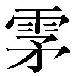
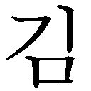
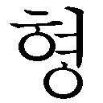
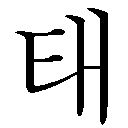

| ばいばい、アース 全４冊合本版 (角川文庫) | |
| 冲方 丁 | |
| (2014) | |
ばいばい、アース
全４冊合本版
冲方 丁

角川ｅ文庫
本作品の全部または一部を無断で複製、転載、配信、送信したり、ホームページ上に転載することを禁止します。また、本作品の内容を無断で改変、改ざん等を行うことも禁止します。
本作品購入時にご承諾いただいた規約により、有償・無償にかかわらず本作品を第三者に譲渡することはできません。
本作品を示すサムネイルなどのイメージ画像は、再ダウンロード時に予告なく変更される場合があります。
本作品は縦書きでレイアウトされています。
また、ご覧になるリーディングシステムにより、表示の差が認められることがあります。
ラブラック＝ベル
世界で唯ひとりの〝のっぺらぼう〟の少女。
ラブラック＝シアン
ベルの師匠。月瞳族。
シャンディ＝ガフ
城の上級剣士でベルの兄弟子。月瞳族。
クエスティオン＝アドニス
〈疑う者〉の刻印を持つ剣士。月瞳族。
ギネス
剣士＝脚本家。弓瞳族。
ベネディクティン
剣士＝演出家。雌雄同体の水族。
ティツィアーノ
狂える剣士。水族。
キティ＝ザ・オール
旅の長耳族。
キティ＝ザ・ナッシング
旅の長耳族。
シェリー
王国の姫にして筆頭歌士。ガフの許嫁。月瞳族。
キール＝ロワール
城の上級剣士。四蹄族。
ミスト
城外の者たち＝〈悪〉の女族長。足長族。
ドランブイ
ベルの愛剣〈唸る剣〉の作者にして飢餓同盟の首魁。
Prologue 出立。赤い時刻にて
──いったい、目の前にいるこの男は、誰なのだろう。
あまりにも意想外な疑問が、少女の心を切り裂いた。
自分が良く知っているはずの、今の今まで生活を共にしてきた相手──自分を育て、教えた、かけがえのない男が、急に見知らぬ他人のように思われたのは、どうしてなのか。
怖い。
男は影法師のように陽を背に受けて立ち、少女には男の表情が判らなくなっていた。
「これが教示者たる俺の最後の役目だ。ゆくぞ、ベル！」
男が手にした剣を掲げ、少女に向かって僅かに踏み出した。
鋭く光り輝く剣尖に、自然と目が引き寄せられた。途端に心がよじれたような気がした。
その苦痛に抗うようにして、ああ、そうか、と思った。
自分がこの男のもとを去ろうとしているのと同じくらいに、この男もまた、自分のもとを立ち去ろうとしているのだ。
どうして、という問いは、ここにはない。
あるのは選択だけだ。幾つもの選択の末の、最も新しい選択。いつでも選択の種はまかれ続けてきた。いつか、どうして、と問わずにいられるように。
そう。
どうして──
１
Lin、と音告げる時計石に、少女がうっすらと瞼を開いた。
光と目の間で明暗が等しくなるにつれ、その勝ち気そうな黒い瞳の中を、飛び込んでゆけそうな青い空がどこまでも広がっていった。
（うっかり誘い込まれるよなあ......）
春めく丘野に敷かれた芝草の絨毯はすっかり陽気をたたえ、そこに寝転ぶ少女が気持ちよさそうに身を伸ばした。傍らには、少女と並んで寝転がるようにして、ずっしりと巨きな剣が、麻色の布にくるまれて横たわっている。その剣の腹を撫で、身を擦り寄せるようにしてもう一方の手を胸元にやった。小さな傷が目立たぬほどに点々とする、子供らしさを残しながらもしなやかに伸びる手、その指先が、琥珀細工を施してペンダントにした特別な宝石を、そっとつまみあげる。
「もう、こんなに緋い......」
どこか切とした呟きのままに、時計石は赤い色相を示している。火のように明るい赤だ。しばらくは、くすみそうにないその色に、思わず溜め息が零れた。それから、ふっと笑った。
「ま、しゃァないか」
元気良く声に出すや、いきなり身を起こした。ほとんど宙に浮いていた。まるっきり重さを感じさせない、鳥の羽の宙に舞うがごとき身軽さで、とん、と地面に両足を立てる。
短めの黒髪が、春光を鮮やかに切りながら、ふわりと大地の引力に従った。
「さ、行こうぜ相棒。お客様がたがしびれを切らせてお待ちだ」
少女のまなざしに応えてか、足元で重そうに横たわる剣から、面倒臭そうに唸るような音が、微かに聞こえてきた。
チェーサー湖のお台場は、早くも騒然としていた。
そこへはるばる行商にやって来た月瞳族の男が、
「いやあ、これまた、湖がみんなひっくり返ったみたいだわい」
思わずそう口にするほど、とにかく様々な種族の者たちで溢れ返っている。
普段は森の奥で暮らしているはずの知恵深き月歯族を筆頭に、一族の常として群で動く弓瞳族たち。はたまた力自慢の水角族の若者たちやら、のんきな足長族ども。耳さとい蛍族。はては、沢地奥深く棲まう見目麗しい水族まで、特に水憂い者であるはずの彼らさえ、珍しくお台場に出ていた。みな、何ごとかを真剣に話し合っているらしく、そんな湖の者たちの様子を、巨きな湖の淵が鏡のように光を飲んで、お台場に高くそびえ立つ天気輪の塔ともども、すっかり映し出しているのだった。
「ふうむ......こいつはもしや、なんぞ商売の種があるやもしれんて」
行商の男はそう呟くと、尖った耳とひげとをぴんと立て、辺りを見回した。
どうにか馴染みの蛍族の一団をみつけるや、気さくに笑いかけ、開口一番こう尋ねた。
「ぜんたい何の騒ぎですか？ 月歯族さまがたやら、集落を離れるのが嫌いな弓瞳族どもまで森から出てきておる。祭ではなし、かといって科人の裁きのようでもなし、はて」
すると、わざわざあらたまった挨拶をするような水臭さもなく、一人が薄荷煙草に火をつけひと口吸うと、煙をぷかっとやって、こう答えた。
「いやサねえ、ひとっ季ほど前によ、河ぁ昇って、潮のモンがよって来ちってなサ」
「ほ、潮の者とな。いったいいかなる種族で？」
「いやいや、そいつがまあ、話の判んやつなら良かってンによう。いかんせん相手は水媒花でなァ。これまた、悪魔みたいなンでよ、湖ン中で毒まきゃあってンね」
「は、水媒花が......毒を？」
「潮よ潮。毒ではなかろうねンてがに、我っしらにゃさ毒よ。やっこさん、湖ぅ、片っ端から、潮ン変えっちまうつもりなンね」
「ははあ、確かにそうでもしなければ潮の花が湖で種をまくわけにもいきますまいてなあ......。それではあなたがた、その水媒花を退治なさろうと、集まってるわけだ」
「いや、ンね」別の一人が、声をひそめて言った。「ほれ、あの水角族どもの若い衆、見てみ。やつらいっとう先に向かってっちが、いっとう先にやられおったンね」
確かに、水角族の若者たちの誰もが重い軽いの差はあれ傷を負っている。中には誇るべき角が片方欠けている者もおり、力自慢の彼らとしては羞恥にたえないところだ。
「んでよ、月歯族さまがたァ、知恵さ絞ってよ、決めなすったのさ」
ほう、と行商の男が身を乗り出した。知恵深き月歯族が天気輪の塔で下す決定は、湖の者にとって絶対のものだ。それだけに彼らが塔に入ることは滅多にないはずだった。
「なぁさ。そんでよ、くわしか知らんちが、頼みなすったンね。旅の者っちねに」
「ほほう、旅の者に頼みなさったか！ なるほど、それならば......」
「いやあ、その旅の者っちなン一緒して住んどる娘さ送って寄越しなさるてさ」
「娘を......？」
「月歯族さまがたぁ、言っとったなぁ。ンでも、妙な噂がのんてな」
噂、という言葉に男の目が光った。ほうほう、と頷いて先を促す。
「なぁさ。ンなでも石っしさ生まんだとか。あるや？ あん彩んなんなる」
「ああ、あなたがた、そいつは時計石のことですな。確かにあれは時経るにつれ色が変わるが......はて、時計石が生んだ子とはこれまた奇態な」
「我っしらもよう知らんで。都市におらしが、あんま悪さするってだ、追ん出されたて噂でさ。あっちこちさ迷ってここいらんで来たと、我っしらも黙っとンね」
ふうむ、と行商の男が唸った。
「これはまた興味深い。なかなかに良い新聞の種になりますぞ、こいつは」
そう言って手を叩いて喜ぶ男の背後で、彼らの待つ者は時とともにゆっくりと近づき、やがてそれは沈黙を連れてにわかに現れようとしていた。
「はてなン、やつらなんで黙ってンねや」
「ありゃ、......何か来るで」
ふと、お台場の一角に静けさが訪れた。静寂は徐々に広がり、いまだ到来したものの姿を見ぬうち、それが湖に近づくにつれみな黙りこくってゆく。
と──
何の前触れもなしにその場に集う者たちが二つに割れた。誰が指示したのでもない。その、やって来る者と、湖との最短距離に、一本の道が、群衆によって形づくられていた。
しん、と沈黙の絨毯が道の上に敷かれ、
「満場の入り、だな」
呟きが、その上を先んじて通っていった。
それに続いて、静かに歩み来る、一人の少女──
その少女には、何もなかった。
尻尾も、鱗骨も、体毛もない。大きな目玉も尖った耳も、ひげも誇るべき角も何もないのだ。いかなる種族的な特徴も持たぬ、無特徴の特徴。その黒い瞳は周囲に怖じ気ることなく辺りを見渡し、きゅっと引き締めた唇に愛想良く微笑を浮かべている。
麻色の布でくるんだ巨大な荷が背負われ、その輪郭から剣であるらしいことが知れた。まるでそれこそが彼女の特徴なのだと言わんばかりのその剣は、幅の広さは少女の肩幅をゆうに超え、柄を合わせると身の丈よりも長く、いかにも彼女の華奢な外見にそぐわない。
「......なンだか、気味が悪いサ」
少女が歩むほどに沈黙は薄れ、こそこそと囁く者が出始める。それでも群衆に向かってにこりと笑みを見せるが、しかしかえって余計に奇異なるまなざしを浴びるのだった。
（いつものこと......だな）
微笑う少女の心中で、ふと呟かれる言葉があった。慣れ切った諦念というのでもない。いつまでも慣れぬ自分に、はっぱをかける別の自分の声といえた。
（いつか──）
この奇異なるまなざしの、きっと変わることのあるときを切望し、信じる自分。
少女が足を止めた。
「ラブラック＝ベル！」
凛とした声で、告げた。
「それが、私の名だ。師、ラブラック＝シアンの命を受け、馳せ参じた次第なんだけど」
すると群衆から一人の老月歯族が現れた。重ねた齢の分だけ腰が曲がり、杖に身を預けた姿で少女と対向った。柔和しい顔をしているな、とベルは思った。
「よう来て下さいました、ベル殿。湖の者を代表し、ご助力を仰ぎたく存じます」
「あなたは？」
「吾は月歯族を率い、天気輪の塔にて裁を司る者、みなからは、Ｊと呼ばれております」
一族の中で、最も古い齢の者をそう呼ぶのだと、ヤーは慇懃に言った。
「よろしく、ヤー。んでさ、私の相手は、何処に？」
「あちらを御覧下さい。湖の一点が、どんよりと黒く濁っております」
「はあー......、私の目には遠すぎてよく判んないけど、そうみたいだね」
「神の置き去りし手鏡とまで呼ばれたこのチェーサー湖に、一点の暗い曇りをもたらした者が、あの底におりますじゃ。きゃつの腕は樹の幹よりも太く、また幾つあるのかも判りません。真っ赤なその身は剣も槍もことごとく弾き、口からは真っ黒い毒を吐きます」
「私の師匠は、それを〈八つ手〉に違いないだろうって言ってた。まァ、本当かどうかは、実際に見てみないとね」
「おお......では、退治して下さると」
「うん。どんな花であれ、花の果肉は私の好物だ。ま、安心してよ。必ず倒すから」
けれどもそれを聞いた者たちは、安心するどころかベルから更に歩を引いてしまった。
「なんて野蛮な......」
ざわつく群衆から、そんな言葉が聞こえてくる。
（ちぇ、草と実しか食わないってだけで美徳づらかよ）
ちょっと不快な気持ちはさておき、ベルはさっそく仕事に取り掛かることにした。
湖を見やりつつ、剣を背から下ろす。鞘というものはない。ただ剣の尖端と柄の付け根とに、花の皮で編んだ剣袋を絡ませてその身にくくりつけている。それを無造作に外した。
どん！ 剣が自分の重さでベルのすぐ背後の地面に大きな音を立てて突き刺さった。
おお......
群衆が呻くような声を上げるほどに、その剣は見た目にも圧倒的に重く、巨きい。柄もとが最も幅広く、それがごく緩い弧を描いて尖端へと伸びており、くるんだ布ごしに、白詰草の葉にも似た輪郭を浮き上がらせている。とても鋭さとは縁のない形であったが、まさしく大地に牙剝くかのような恐るべき質量と威風であった。
鈍重な剣から離れたベルは、ついで自分の着ているものをひょいひょいと脱ぎ出した。
「何をなさっているので......？」
ヤーが、目を丸くして問う。
「身軽くしているのさ」
答えながらも、その目は湖に向けられている。まるで衆人の環視というものを気にしていない真剣な顔で、とうとう靴まで脱いでしまった。あとは首にかけた時計石と、麻色の長ズボンだけという恰好で、おもむろにお台場に乗り込んだ。
そのまま、湖面に向かってすたすたと無造作に足を踏み出してゆく。
「なんと......」
「おわわ......」
誰もが水の中へ潜るのかと思った瞬間、なんとベルの身が水面に跳ねた。
これには群衆の度肝の抜かれ方も並大抵ではない。どの口もどの目も大きくぽかんと開かれ、ただただ呆気に取られた。
水面を軽く爪先で蹴ったかと思うと波紋を残して飛び上がり、ベルはあたかも風の妖精のごとく宙に浮いた。水を蹴るたびに伸び上がる裸身は美しく、華麗に舞うかのようだ。
──が、しかし群衆にとっては間もなくそれは忌まわしい身軽さ、大地の加護から見放されたゆえの無重の者の業としてみとめられていったのだった。
そんな視線を背後に、ベルは水面を跳びながら自分の足元が徐々に黒ずんでゆくのに気づいた。ふと、ずっと下方、水の底に、何か巨大なもののわだかまるような気配を察した。
ベルは水面を真っ直ぐ蹴って宙に浮かぶと、黒濁した水面に向かって囁いた。
「なあ......なんでお前、こんなところに来ちまったんだよ」
波紋が、湖面全体に広がるようにして消えてゆく。
「お前に故郷はないのかい」
呟きにも似た問い掛けに応えるかのようにして──
それが現れていた。
ベルの方が一瞬早かった。再び水面を強く蹴った。高く跳んだ。
黒ずんだ鏡のごとき水面が、ふいに真っ赤な色に満ちて盛り上がった。爆発した。猛烈なしぶきを上げてはるかに巨大な触手が天に向かって真っ直ぐに伸び、ベルを追った。
幾つもの吸盤を持つ、指が一本もない手だった。それが宙のベルをとらえた。足首に絡みついて一気に収縮し、あっという間に水の中へ引き込んだ。ふたたび轟音があり、天気輪の塔ほどもある水柱が勢いよく立ちのぼった。
僅かに遅れて、晴天に降る雨のごとく、湖面に水が降り注いでいた。
この一瞬の出来事に、群衆はなすすべとてない。重苦しい沈黙が辺りを支配するかに見えたそのとき、ふいに、お台場のすぐそばで水面が揺らいだ。
「うわあっ！」
「きゃああっ！」
偶然そばにいた者たちを芯から驚かせて、ずぶ濡れになったベルが現れた。
「ち......下も脱ぐんだったかな」
苦もなくお台場に跳び乗り、足を片方上げて呻いた。触手の絡んだ辺りの布地がもの凄い力で引き裂かれている。だがそれよりも更にずたずたにされたもの──どのような力がそれをなしたものか、あの赤い触手の先端が引き千切られてベルの手にあった。
べしゃっ。湿った音を立てて触手がお台場の床に放り出されるや、
「ほら、どいたどいた」
言われるまでもなく驚嘆を恐怖に変えて、ベルのそばからみなわっと離れていった。
そこへ更に赤い触手が猛り狂うようにして一つまた一つと姿を現し、お台場に向かって一直線にやってくると、もはや誰もが一目散に逃げ出す有様となった。
ベルは恐慌する群衆をぬって素早く剣のもとに駆け戻った。ついでに上着を羽織り、
「まだ、だいぶん水は冷たいや」
その場に取り残されたようにぽつねんと地面に突き立つ剣へ、吞気に言った。
そうするうちにも天気輪の塔にはあれよあれよと幾つも触手が絡みつき、ざあっとしぶきを上げてお台場にその身をさらした巨大な赤い肉塊が、黄色い眼球に横長の瞳を黒く輝かせ、まるで自分を殺しに来た相手をはっきりと理解するかのようにベルの姿を見定めた。
「やっぱり〈八つ手〉だ......ずいぶんとでかいけど」
ベルはきゅっと唇を引き締め、その悪魔みたいな水媒花を見詰め返した。
「出番だぜ、相棒」
剣を覆っていた布が、はらりと剝がれた。その下から現れたのはいかにも鈍重な光を放つ、老いたユリ科の鋼鉄の果のかたまりである。剣とするのにこれほど不適な鋼もない。
──EREHWON
と、剣の腹には何やら霊妙な古代文字の刻印が記されてあったが、それを見る誰の目にもその意味は判らなかった。
〈八つ手〉が無言のまま迫った。巨木のような触手が一つ猛烈な勢いで跳ね上がり、しなうようにしてベルの頭上に襲いかかった。
「歌え、〈唸る剣〉！」
ベルが猛るように吠えた。両手でしっかりと剣の柄をつかみ、全身をひねるようにして剣を地面から抜き放ち、ぶん回した。その身の丈を超す剣を難なく振るう姿は、まるで触れるものさえその身の軽さに取り込むかのようだ。
──ＹＹＹＹＹＹＡっ！
ベルの叫びとともに、二つの巨大な重量が上下から真っ向に衝突した。空気全体がたわむような妙に間の抜けた音が響き渡る。次の瞬間、触手がもの凄い勢いですっとんでゆき天気輪の塔に激突していた。
だが傷ついたのは塔の方だけで、触手には切り傷一つついていない。
その間にも次々と別の触手が振り下ろされていった。ベルの剣が片っ端からそれを打ち返す。そこら中にはね飛ばされた触手が地面を抉り、木々をなぎ倒し、お台場周辺がまたたく間に損壊の様相を呈し、もうもうとした砂煙に覆われていった。
「頑張れー！」
「我っしらァ守って下されやァ！」
じりじりと追い詰められる感のあるベルに、つい今まで奇態だの忌まわしいだの囁いていたのは何処へやら、群衆が次々と遠巻きに激励の喚声を放った。しかしまるで切れ味という言葉からは縁遠く思われるその剣には期待出来ぬかと諦められかけたそのとき、
「断っ！」
ベルの気合一閃、打ち返された触手が根元と先の方とで全く別の方へと飛んでいった。
一瞬の沈黙。そしてまた、わあっ、と喚声が歓声に変わった。
切り飛ばされた触手がベルの背後で地響きを上げ、次に来たものも同様、ぶっつりと断ち切った。なんと、いつの間にかその剣の容貌が一変している。振るうほどにその刃は研ぎ澄まされ、老いていた鋼鉄の果はいつしかユリ科本来の白く滑らかな鉄肌をみせ、あたかも成鉄の剛さを持ったまま幼鉄のくすみのない輝きを取り戻すかのようであった。
〈八つ手〉もただ無闇に叩くだけでは無駄と知ったか、宙に上げた触手を止めた。
その躊躇いを、ベルは見逃さなかった。
一気に駆け込んだ。剣尖を向け、見る間に切迫した。〈八つ手〉が再び水中へ逃げる間を全く与えず、今や優美な白銀に輝く剣を猛烈な勢いで振りかぶっていた。
──ＥＥＥＥＲＲＲＲＥＥＥＥ......！
剣が突如として不思議な唸りを発し、歓喜の声に似て響き渡る唸りに轟然として破壊の音が重なった。一瞬だった。〈八つ手〉の真っ赤な体が切り裂かれ、粉々に粉砕されていた。
〈八つ手〉の声なき悲鳴を聞いた気がした。真っ黒い血らしきものがどっと溢れ返った。
（潮の匂いだ......）
巨大な内腑が生々しい鮮色に満ちてばらまかれ、切り残された触手が暴れまくった。一連の衝撃でお台場一面に亀裂が走り、〈八つ手〉のしがみつく天気輪の塔が大きく揺れた。
身を砕かれ悶えながらも、最後の抵抗とでもいわんばかりに触手がベルに絡みつき、その稚さの残る身を締め上げた。ベルは剣を握ったまま静かに〈八つ手〉の目を見据えた。
「......なあ、なんで、こんな所にまで来ちまったんだよ」
剣が、微かな唸りを上げた。
《モドリタイ、海──》
剣を通して、〈八つ手〉の唸りが、ベルの内部へ伝わってゆく。
「じゃあ、どうして......」
《モウ、モドレナイ》
ベルが、はっとして、剣を握る手に力を込めた。
《ココデ、シヌ》
突然、〈八つ手〉の頭部が膨らんだ。傷口から収斂く心臓が見えた。鮮やかに赤いその内側から何かが開かれようとしているのが判った。そう──花が咲くのだ。
《タネヲ、マイテ》
その唸りを最後に、ベルの剣は再び振りかぶられていた。
「ごめんな」
〈八つ手〉の身がふいに収縮し、種子を放とうとした刹那、ベルはその身を封じ込もうとする触手ごとその心臓部を断ち切った。粉々に破壊した。叫び声が聞こえた気がした。悲しい声だった。同じところを二度も砕かれたお台場は徐々に〈八つ手〉の重量を支え切れなくなり、やがて崩壊した。巨木のような触手に絡みつかれた塔は根元から折れ砕け、素早く退いたベルの目の前で、〈八つ手〉の死体やお台場の残骸とともに湖面へなだれ込んでいった。
激しい崩壊の音のあとに沈黙がやってきた。啞然とする群衆を振り返るベルに、かけられる声はない。みな魂の抜けたような顔で、崩壊したお台場と塔とそして〈八つ手〉の残骸の周囲にふらふらと群がっている。
ベルは、〈八つ手〉の破片から種を一つ手にすると、脱ぎ捨てられた衣服へと向かった。
剣はいつの間にか、元に戻っている。美しくもなんともない、老いた鉄のかたまりだ。
「あ......ありがとうございました。お礼は......改めて......屋にお持ちしますので」
衣服を再び身にまとったベルに、ヤーが恐る恐る言った。優しげな微笑みが、今は多分に引きつっている。塔ごと退治してくれとは、ヤーはひとことも言わなかったのだ。
ベルは、さてなんと応えたらいいのやら、と迷ったが、剣を背負うと遠慮がちに尋ねた。
「この種と、あと......あれを、貰っていっていいかな」
「そ、そんなものを、いったい......どうなさるんです？」
「さっき言った通りさ。花の肉は好物なんだ」
気まずい沈黙があった。
ベルは切り飛ばされた触手を一つ肩に担ぐと、ヤーに向かって軽く頭を下げた。これ以上ここにいるべきじゃないな、という焦りにも似た思いに背中を押されるようにしてお台場を立ち去った。なんと野蛮な......という言葉を、お蔭で何度も聞かずにすんだ。
その帰り道、通りがかりの沢に〈八つ手〉の種を放った。すぐにそれは見えなくなり、淡い水の何処かへ消えた。とうてい芽が出るとは思えなかったが、そうすることで〈八つ手〉を弔った気分になれた。
（......あいつら、種を一つ残らずみんな、砕いちゃうだろうな）
それは当然、正しい行為だった。だがいつか、今日の〈八つ手〉のような者の側で戦うことがあるといいなとベルは思う。そのときはそれが、正しい行為になるだろうから。
ふと気づけば、時計石は赤から淡香紫へと、色相を移している。
夕暮れが迫り、ベルは家路を急いだ。
２
「帰ったよ、師匠」
小屋に入ると、男が一人、暖炉に向かって悪戦苦闘していた。
「ご苦労」
短く応えただけで、こちらを振り返ろうともしない。
ベルは〈八つ手〉の触手を円卓の上に投げ出した。
剣を剣立てに掛けると、いつもの、地面が足元から遠のく感覚がやってくる。大地との結びつきがひどく稀薄で、いっそ大地に牙剝くような重さでしか足を踏み下ろしていられない。そのことを、きちんと教えてくれたのが、今、目の前で背を向けている男だった。お前は何も悪くない。世界でただ一人、そう言ってくれた男──
「シアン」
呟くように呼んでみたけれど、暖炉に火をつけることに夢中になっている。種火をうっかり消してしまったのだろう。間抜けめ。自分の魔法を使えば、何の苦労もいらないのに。
まったく、この師匠は、よく、わざわざ苦労する方を選びたがる。
（今回だって何も私が行くことはなかったんだ。シアンだったら、もっとうまくやっていたに違いないのに）
ぴょんと、シアンの尖った耳が立った。ようやく火が点ったらしい。ふーっと、さも苦労したように息吐いて振り返った。せっかくの真っ白い体毛とひげとが煤で真っ黒だった。
ベルの放った手拭いを受け取ると、目を丸くして言った。
「なんだ、それは」
今その瞳は、月瞳族に特有の、縦にやや広い楕円の形をしている。これが明るいところだと細くなり、碧の目に黒く線を引いたようになるのだ。
「戦利品さ。相手は、師匠が言った通りの花だったよ」
「ふん......、良い剣撃だ。綺麗な斬り方をしている」
「えへへ」
「しかし、まだ刃を出しきっていないな」
「様子を見てたからだよー」
「いつでもひと振りで出せるようにしておけ。ところでお前、これをどうする気だ？」
「食べる。水媒花には違いないもの」
「ふむ」と、肩をすくめた。「それも、礼節だな。死者を弔うには食うのが一番か」
期待はしなかったが、シアンはちっとも料理を手伝ってくれなかった。出来上がったものについてつべこべ言うこともなかったが、調味料をおもちゃにする癖があった。
「うまい」
そう言われても、得体の知れない味になっているに違いないほど手を加えられたあとでは、あまり嬉しくない。本人はそれを「凝る」と言っているが、
「だったら毎日、自分で作ってみな」
という言葉に、弱い。所詮は趣味の料理なのであまりいじめるのも可哀相だ。相手が食べ終わったところを見計らって、話題を変えてやった。
「なあ、師匠。この〈八つ手〉は、どうして海を離れたんだろう」
「さあな。海が嫌いになったのかもしれんさ」
「帰りたがってたよ、海に」
シアンが頷いた。そうだろうな、とでも言うように。
「こいつは花の使命を全うしようとしたんだ。種を播く者としての使命をな。花だけではない。この世の全てのものは、互いに交じり合おうとするのさ。世界とは、互いに交じり合おうとする、全てのものたちのことを、言うんだよ」
そう結論すると、シアンはさっさと席を立って暖炉の方へ行ってしまった。揺り椅子に座って、蛍光石の明りを点け、眼鏡をかけ、パイプをくわえ、本を手に持つ。儀式にも似た食後の姿、ほとんどただ一人、ベルが安心して隣にいられる相手の、いつもの姿だった。
パイプをふかす煙は幻影で、シアンの魔法によるものだ。気分だけで、本物はもう長いこと味わっていないらしい。最後に吸ったときの、あまりにも素晴らしい味を忘れないためだと言うが、そんな偏屈さの裏にあるはずの、遠い昔にあっただろう本当の理由は、ひとことも口にしない。それはむしろひどく辛いことだったのではないかと、ベルは思う。
そしてそういうところが、不思議とベルを安心させるのだ。
シアンの隣に座って、ベルは〈八つ手〉の皮をなめし始めた。剣袋にちょうどいい。靴に合うかもしれない。そんなことを考えているうち、ふと言葉が零れた。
「みんな怖がってた、私のこと」
シアンは本に目を向けたまま、黙って頷いた。
「あんたが行けば、もっとうまくやったろうにさ」
「水媒花相手になァ......俺が何を教えるってんだ」
「偏屈だよ、教えるってこと以外に力を使わないなんてさ」
「それが教示者としての俺の役目だ、何が悪い」
「悪いよ。そりゃ......、うまくやらなかった私の方が悪いけど。でも、ここもまた、いづらくなるよ、きっと」
「じゃあさっさと礼金を貰って、早いうちに移動するか。さて、何処へ行くか......東か西か、この国にも、まだお前の行ったことのない場所は沢山あるからな」
「そこに行けば......」
ベルはふと口をつぐんだ。シアンの手が本をたたんだ。顔を上げた。目が、合った。
「そこに行けば、私と同じ種族が、いるかな」
相手の顔を、覗き込むようにして、言った。
「いや」とシアンはあっさり首を振る。「以前、俺が立ち寄ったときには、何処にもお前のようなやつはいなかった」
ベルはうつむいて顔をしかめた。たった今までおとなしく眠っていた得体の知れない感情が激しく胸を衝いた。それをいつものこととして片付けられない自分がもどかしかった。
「......こんなことを繰り返してたら、そのうち私、飢餓同盟に連れてかれちゃうよ」
「飢餓同盟がどんなものかも知らないやつが、言うな」
「あんたに教えられた分のことは、知ってるさ。この世を楽しめなくなっちまったやつらのことだろう」
「ふん......。間違ってはいない」
「そんなやつらに捕まったら、きっと私はお終いだ。いったい、何処に行けば、私は私の種族に会えるんだろう。私だって、世界に交わりたいのに、苦しいよ......このままじゃ」
シアンは暖炉に目を向けた。静かなまなざしをたたえる碧の目に火の明りを飲んで、呟くように言った。
「お前の中で、そうして言い訳のきかないでいるそれを、俺なら郷愁と呼ぶね」
「郷愁......？ なんだよ、それ」
「そうさなァ......故郷を想うこと、理想郷への憧れ、あるいは、今いる自分も場所も愛せない、心の痛み......と言ったところか」
「じゃあ、その郷愁をどうにかする方法を教えてよ。私には、故郷なんかないんだよ」
ぱちりと、小さく火が爆ぜた。
「では、旅に出るか」
さらりと、シアンが言った。とても重要なことを、食事の話でもするみたいに。そしてそれは、シアンが至って真剣なことを示していた。ベルは我ながら情けない顔になった。
「いいかベル。俺が思うに、〈剣の国〉にはお前のようなやつは、一人もいない。だが、国を出て、世界に旅すれば、お前はお前の本当の世界を、手に入れられるかもしれない」
「でも......師匠はいつも言ってたじゃないか。それは、最後に教えることだって。それまでは......一緒に......」
シアンが頷くのを見て、ベルは急に悲しい気持ちになった。
「都市に行き、旅の者になるための試練を受けろ。お前ならば必ずなれるさ。何せ、この俺の直弟子なのだからなァ。そうでなければ、一生この国でさまよい続けろ」
「......厳しいじゃないか」
「旅は、己自身の全存在を懸けた行為だ。誰もそれを助けることは出来ん。いくら俺が教示者で、お前とこうして共に時を過ごそうとも、俺はお前にはなれない。お前が俺になれないのと同じくらいに、な」
「判ってるよ......」
呟くように不平を漏らすが、実際それはベル自身、ずっと考え続けてきたことだった。
いつかこの生活が終わるということを、そのときこそが始まりなのだと。
「でも、いつだって突然だよ、師匠は。こっちにだって、心の準備ってもんがさァ」
シアンは、くすりと笑った。
「そんなところだ。あとはお前が結論しろ。焦ることはないが、な」
言うだけ言うと、さっさと自分の部屋へ行ってしまった。
その夜、ベルは丈の長いシャツ一枚になると、いつものように剣を抱いてベッドに入った。毛布だけでは、自分の身を大地に結び付けておけないからだ。
「私の世界......」
何度も呟いた。その言葉を口にするたびに湧きあがる想いの正体は、判らない。
ふいに〈八つ手〉のことが思い出された。海を離れたその勇気を称えたくなった。たとえその旅の果てに無残な最期を遂げたとしても。
時計石は深い紫から宵藍へ。色相は移ろい、こうしている間にも夜は深まり、また新しい朝を、今日のような赤い刻を迎えようとしているのだ。
眠ろう。今は夢の中にこの想いを持ってゆこう。瞼を閉じると、微かな剣の唸りが聞こえた。心などとっくに定まっているではないか。剣はそう言っていた。あとはそれを、言葉にするだけで──
３
明くる日、昼過ぎ遅く、湖の者たちが袋一杯の財貨を持ってやってきた。
小屋の入り口で調子良く受け答えするシアンを食卓から覗いていると、湖の者たちもベルにちらちら視線を放ってきているのに気づいた。そこにはヤーもいた。好奇心、恐れ、畏怖......特異なものへのまなざしが、ちくちくと肌にさわるようだった。彼らは決して自分から小屋に入ってこようとはしない。
（大丈夫だ）
ふと、その思いが湧いた。
（私は、寂しさを、誰かのせいにしないでいられる──）
あるいはそれこそ、目の前にいるこの男から学んだ最も大きなことではなかったか。
「これで、しばらくは食うに困らんなァ」
湖の者たちが帰ると、シアンがほくほく顔で言った。こういう所はいかにも俗っぽい。
「話があるんだ、シアン......」
無意識に相手の名で呼んでいた。シアンは優しい顔で、目を細めて首を傾げた。
「どうした、あらたまって」
「私、旅に出るための試練を受ける」
きっぱりと言った。とうとう言ってしまったと思った。
シアンの目が丸く見開かれ、まじまじとベルを見詰めた。ニヤっと笑みが浮かび、すぐに消えた。不敵なくらい穏やかな顔だった。
「ふむ......噓じゃあないなァ。予想したよりも、随分とまた早く決心したもんだ」
ベルは黙った。ここで何かを言っては、自ら心を揺らすのが判っていた。
「俺とお前の剣を、持ってこい」
その通りにした。二人、小屋を出た。
陽は高く昇り、鮮烈なる光を背にして、シアンはベルと向き合った。
「さて。お前に教えることも、これが最後だ」
そう口にしたシアンが、ふいに突然、他人のように思われていた。ベルは剣の重みをしっかりと背に感じながら、じっと相手を見詰めた。
「旅の者になるには、その身に呪いを帯びねばならん。呪いのかたちはその者の生のかたちによって千差万別だ。この呪いこそが旅の者になるための最初の試練であり、それは旅に出てのちもつきまとう。ちなみに、俺の場合は、教示以外の力の行使が不可能なのさ」
シアンはいたずらげな笑みを浮かべたが、それに応じる余裕は今のベルにはない。
「呪いは、旅の者の血によって継承される。覚悟はいいな」
そう言って自分の剣を抜き放つと、剣を握らぬ方の手に刃を走らせた。鮮やかな赤い雫が、その親指の腹に滴った。
ベルも同じように傷をつけた。シアンの伸ばした手に向かって、手を差し伸べる。傷と傷が触れ合い、いっとき互いの痛みを共有したような気がした。その途端、何か目に見えないものが傷を媒介に入り込んでくるのが判った。はっとベルが身を震わせた。僅かな恐れと、強い幸福の思いが湧いた。シアンの内部にあるものが、ベルの中に流れ込んでくる。そのことが、確かな実感としてベルを支えた。
「お前の旅の目的はなんだ、申し子よ。高らかに唱えよ！」
「わ......私は、私の由来を知りたい！ 私と同じ種族に出会いたい！ 私も......私も、この世界に交じり合いたいんだ！」
血をもって唱える声は、泣き叫ぶかのようだ。
一気にそれが流れ込み、ぱちりと弾けるようにして消えた。指と指とが離れた。傷は何処にもなかった。ただ指の腹に乾いた血がこびりついているだけだった。ベルは急に寂しさを感じ、次の瞬間、唐突に目の前にいる男に違和感を抱いていた。
「呪いがいつか祝福に変わるときを信じ、受承せよ」
シアンが、ベルから僅かに離れ、剣を手に、まるで立ち塞がるようにして佇んだ。
「何か、変だ」ベルが呻いた。「シアン......あんたの顔が、まるで......」
「まるで初対面のように見えるか。ふむ、最後の教えが果たされようとしている証拠だ」
シアンは、あくまで何気ない風でいる。恐ろしく真剣なくせに、それを悟らせない風で。
ベルは泣きそうになった。何かを押し止めるように、両手で自分の肩を抱いた。それでも何も止められはしなかった。掠れた声を絞り出すようにして言った。
「ああ......駄目だ、シアン、あんたが消えてゆくよ......」
「卒業する者に、師についての記憶は必要ない。ただその教えが、生きてさえいればいい。それに、その方が、教えることの下心が知れずに済むのでな」
「下心......？」
「託すのさ。俺には辿り着けないと判っている処に、行って貰うために」
男は影法師のように陽を背に受けて立ち、ベルには相手の表情が判らなくなっていた。
「ああ......こんなことだと思ったんだ。こんなことだと......だから、旅の話は持ち出したくなかったんだ。ちくしょう、ひとの心をいじくっておいて何が教示者だ。ちくしょう......寂しいよシアン、とても苦しいよ......」
「すまんな、ベル。俺を斬ればその苦しみからも解放される」
「あんたは！ そうやって、いつも、誰からも必要とされない者になろうとするんだ！」
「それが、教示者としての俺の宿命だ」
ひくっとベルの喉が鳴った。かろうじて涙をこらえていた。
「......私も......あんたみたいな強さが欲しい」
「お前には必要ないさ」
優しさに満ちた声。シアンはとうとうその剣を掲げた。レンゲ科の鋼鉄を美しく磨き上げた、色深く鮮やかな青燐色の剣だ。光と影の間で鋭く青ざめた輝きを放つ刃の腹には、ENOLAの刻印が刻み込まれていた。教示者を意味する、神代の文字が。
ベルの手が、震えながらも、すがるようにして自らの剣を執った。
それは、シアンの剣と向かいあったときから、低く唸りを帯びている。
「お前は、いつかその剣に記されたEREHWONの刻印の意味を知ることになるだろう。無何有郷という、今では意味の失われたその言葉の、本当の意味を」
そう口にする間も、二人の間で緊張は高まっていった。二人がたとえそれを望まずとも、もう間もなく、剣と剣とが互いを求めてその握り手を動かすだろう。
徐々に高まりつつある剣の唸りに、ベルはほとんど無意識に言葉を零していた。
「あんたが好きだよ、シアン」
「もっと良い男を見つけるだろうさ、娘よ」
そしてそれが、最後になった。
「これが、教示者たる俺の、最後の役目だ。ゆくぞ、ベル！」
ベルの剣が咆哮するかのごとく唸りを上げた。ベルが動いた。衝き動かされた。いったい何に？ 疑うのと同じ瞬間、形のない答えがやってきて、ただ、ああ、そうか、と思った。
走った。
Lin、とひとつ、澄んだ音がした。
時計石は、赤い色相を示している。
火のような赤だ。
しばらくは、くすみそうにない色だった。
Ⅰ 由縁。聖星照の下
１
（ここいらの石は、食欲が旺盛だ）
すり鉢状の盆地に足を踏み入れたベルは、内心で一人ごちた。
辺りに人影はなく、ただ奇妙な風貌をした石の柱が、深く沈思する者たちのように細く影を引いて佇んでいる。それらの石がごく最近まで緑に潤う木々であった証拠に、地面にはまだ枯れきらぬ葉が一面に敷かれていた。
その葉も、しりしりと微かに音を立て、硬い輝きを帯びてゆく。
（クォーツの森もずいぶんと久し振りだけど......懐かしくも、なんともないや）
ベルが醒めたまなざしで見渡すそこは、木と石とがせめぎあい食らいあう場所であった。
石たちは木々を自分たちと同じ物質に変えて取り込み、かと思うとそこから再び緑が萌え出す。花が石を穿つように咲き、根が石を土に戻してしまう。
風景はめまぐるしく変わり、そこに降り注ぐ天の光を、石が飲んだか木々が吸ったか、地の狭間で結晶し、やがて、時とともに色相を変える、不思議な石が生まれる。
ここはクォーツの森──時計石の産地だ。
そしてまた、ベルが、この世界に初めて現れた場所だった。
（この石たちのどれかから、幼い私が、現れた......）
誕生以前の、記憶ともいえぬ記憶だった。懐かしさなどあるはずもない。もとい、こんな千変万化する森で、いったいどんな記憶が、かき消されないままでいられるというのか。
ただ、その代わりとでもいうのか。そんな世界中の忘れ去られたものたちが光の結晶と化し、時を刻み始めているのがここだった。化石と化した記憶。時が移ろうつど、Lin Lin、と音告げるのは、それだけ時が凍りつき、永遠になったことの証しだろうか。
「この、木と石たちが、私の母であり、兄弟たちであるんだろうか......」
声に出して呟いてみるが、やはり現実味なんかないことに、ちょっとがっかりした。
「んなわけないか」
と苦笑し、盆地の中心へと向かう。
そこに、ベルをこの世界に生んだ物があった。
「石の卵......もう跡形もないな、こりゃ」
奇妙な破片を手に取った。
金属と陶器の狭間にあるような、どちらともつかない手触りだ。元はどのような形状をしていたのか......。木と石のせめぎあいの真っただ中にあっては、もはや想像もつかない。
恐らく、都市の者がここでベルを発見したとき、たまたま球形に近い形をしていたため、その中から現れたベルを、石の卵が生んだように見えたのだろう。
そう、ベルは思う。
そもそも、ここいらの地形からして妙だ。まるで巨大なものが落ちてきたかのように、地面が抉れ、すり鉢状をなしている。あるいは、石の卵は、天からやってきたのだろうか。
「我が故郷は、天空にあり......か、冗談じゃないね」
そしてふと、今の一連の思考を、自分らしくなく感じた。
きっと誰かに教えられた、本来自分のものではない考えなのだろう。
その誰かについての記憶は、もうない。ただ、それと出会い、育てられ、そして別れた、そんな漠然とした知識があるだけだ。
今では、その誰かと別れたことに、何の寂しさも感じていなかった。
ぼんやりと暮れなずむ空を眺めながら、ベルは破片を放り捨てた。こーん、と一つ、澄んだ音がした。
「さーて」
からっと元気良く口に出した。
「ここから何かが始まるとして、これから、どうするかな」
都市にゆくのだ。すぐにやってくる答え。これも教えられたことだろうか。判らない。判っているのは、そろそろ〈八つ手〉の肉にも飽きた、ということだけだ。もっと美味いものが、都市には沢山あるだろう。それは、都市にゆくのに十分な理由になる。
胸の時計石は赤紫色を示し、地面の石たちも刻々と色相を変えてゆく。
夕闇が訪れ、ベルは野宿を決めた。
まず、小屋から持ってきた僅かな荷物の中から、白亜片を取り出した。適当な寝場所を定めて守護円を書き始める。単純な印を連続させるだけの、ごく初歩的な筆記魔法だった。
この辺りに凶暴な獣花はいない。だが寝ている間に自分まで石化される恐れがあった。
身を守る要素の中でも特に石の働きを抑えるよう、文法を整えようとするが......威勢よく書き出された筆記魔法はそのまま勢いを増し、
「なんか違うな......」
ぶつぶつ呟きつつも、円の基本線からどんどん修飾印がはみだし、ひどくいびつな形になってゆく。
単純な作用を表せばいいだけなのに、印がいつまでたっても完成しないのだ。ついにはただひたすらだらだらと長くなり、あっちを消してこっちを補強し、と繰り返すうちに、何処で印を切ればいいのやら、そもそも何の印を書いていたのやら判らなくなってきた。
いい加減に自分の文法能力に絶望して強引に決定印を打った。そのときだった。ベルの目に、ふと、自分のものとは違う印が映った。
いや、それは印とは違う法則によるものだ。
「演算魔法か......」
演算技術については無知も同然のベルにも、それが見事なまでに簡潔なのが判った。
僅かな因子の組み合わせを最大限に生かし、難解になりやすいところをうまく避けているそれは、ベルのどうでもいい印に滅多やたらと上書きされて台なしになっている。
「あちゃあ......こいつを使わせて貰えばよかった。もっと早く気付けよ、くそっ」
ふと、その考えも自分らしくない、本来ならそんなものに関心を示すはずはないのに、という違和感が襲ったが、それについていちいち考えるのをやめた。
自分がそう思うことに変わりはない。ただその自分が思うに、この演算の主が誰だかは知らないが、辺りに誰もいないところをみると既に立ち去ったのだろうということだけだ。
（ここを出るときに印は消していこう......比べられたらたまんないや）
そう結論すると、ごてごてとした自分の印の真ん中に毛布を敷き、その上に寝転がった。
マントにくるまって剣を抱き、細く長く息を吐いた。
横になって仰ぐ空は、果てしなく広い。
時計石が、いつの間にか鈍紫色になっている。
Lin Linと辺りの石たちが音を告げ、迎えようとするのは、たとえようもなく孤独な夜だ。しかしそこに、湿った感情はない。こんなにも一人だというのに、この森は淋しさを感じさせない。孤独が淋いと感じるのは、忘れられないものの中でこそだ。
気がつくと、太陽は鋭く最後の光を放って盆地の向こうに没している。
闇が、さざ波のように、寄せてきていた。
星々がまたたき始め、夜の景色が冷ややかに青ざめてゆく。
そのとき、ベルの眼前に、突如として不思議な光が広がっていた。
しん、と静まりかえった大気の底に寝そべったまま、ベルはその淡い輝きを浴びた。
それは、星であった。
夜空を覆い尽くさんばかりの巨大な星が、輝く青玉にも似て、夜空を昇ってゆくのだ。
〈聖星〉。
誰もがそう呼ぶ、星の中の星──
巨きな、巨きな、母なる星。
日中は太陽の光にかき消されるが、夜ともなれば太陽よりもむしろ毅然とした面影を見せ、闇の底を淡藍の光で優しく照らし出す。
伝説の神話では神々の住み処とされるその星が、どうして母なる星と呼ばれているのか。
もはや答えようのないその理由を、今は時計石だけが、化石の中に抱いている。
ただ、この光は安らかだった。ひどく穏やかで心がなごんだ。聖星の淡い光に包まれると、乾いた寂しさが僅かに潤うようで、ふいに心細さを覚えるようだった。
気づくと、手が、胸元を撫でていた。衣が濡れているような気がしたからだと、撫でてから思い当たった。だが、布地はさらりと乾いている。聖星の淡い光が見せた幻だった。
幻の水底に沈みながら、ベルは己の心が囁くのを聞いた。
（出会いたい......私に交じり合うことを許してくれる世界に、早く会いたい......）
それは、出会いに行くというよりもむしろ帰還に似ていた。まだ見ぬ故郷への、見果てぬ帰還だった。
郷愁の名のもと我が身をもてあますベルに、眠りは、ゆっくりと確実に訪れた。
２
（見つけた、見つけたぞ......）
闇の向こう──夢と現実の狭間に、微かな声がする。
ベルはそれを夢に聞き、何を？ と、夢に問い返した。
応答はない。代わりに、
（長かった、本当に......）
そういう、激しい感情を無理やり嚙み殺すような声が、僅かに響いた。
声は、始まったときと同じように、唐突に木と石のさざめきの中へ溶け込んでゆき──
（理由の少女よ......）
それを最後に、ふっつりと消えた。
それらの言葉を、ベルが現実に持ち帰ることは、ついになかった。
やがて、朝が来た。
澄み渡る大気に、チチチ......と花たちの目覚める声が飛び交った。
瞼を開いたときにはしっかりと覚醒しているのが、ベルの常だ。
横たわったまま、ちらりと胸の石を見た。明けて間もない、泉色。
陽が中天への経路を辿るにはまだ時間があった。今のうちに軽く朝食を済ませておこうと身を起こした。そのときだった。ベルの視界に唐突に現れるものがあった。石と木の相半ばする風景を、くっきりと白くくりぬいたような人影。それが、ベルの目をしばし席巻した。そして、自分のくるまっていたマントがその人影に引っ張られているのを感じて──というよりも、そのことに今の今まで全く気づかなかった、ということに気づいたことで、驚きよりも先に口が勝手に悲鳴を上げた。
「ひゃあっ!?」
叫びながらもマントを引っ張り返し、相手の手から奪った。へたりこんだまま、それにくるまるようにして必死であとずさった。
反射的に剣を握っていた。マントで身を庇いつつ剣先を構えた。心臓が大鳴りに鳴っているのが、耳のすぐ側で聞こえるようだった。
問答無用でぶった斬っていてもおかしくなかった。そうしなかったのは、ひとえに相手の美しさによった。
そう。それは美しかった。
（う、長耳族──？）
それは、一人の子供であった。
きらきら光る赤い瞳。真っ白いミルク色の体毛。長い耳が、頭の両脇で後ろ向きに反り返っている。形の整った可愛らしい兎唇は、白い体毛とは対照的なまでに、紅い。
真っ赤なチョッキに黒ズボンという出で立ちで、チョッキのポケットから覗くのは、金の鎖でとめられた懐中時計──〈剣の国〉では非常に珍しいゼンマイ式の機械時計だった。
だがむしろ、その子供の種族の方が、よほど珍しい。
長耳族の住み処は〈剣の国〉から遠く離れた、大陸の裏側と呼ばれる〈硬貨の国〉にあり、旅の者を多く輩出することで有名だ。世界で最も魔法に精通し、旧い神代の技術にも通じているという。
だが旅の長耳族に出会うことは滅多になく、そしてそれだけに、出会えば必ず何かしらの幸運を手に入れることが出来ると信じられている存在だった。
今、ベルの目の前にいる幼い長耳族が、何かしらの幸運を授けてくれるとはとても思えないが、まず間違いなく旅の者だろう。もしかすると、昨晩、ベルが台なしにしてしまった演算魔法の主かもしれなかった。
「あー......すまない。つい......」
慌てて剣を下げて詫びるが、ベルを眺める子供の表情に、変化はない。
それどころか、本当にベルを見ているのか、ひょっとすると判らなくなるほどだった。
（なんだ、こいつ）
ただひたすらに呆然とする、少女だか少年だか判らないその子の相貌からは、全く知性というものが感じられない。そのくせ、その容姿はいやに優美で──
（綺麗な、人形みたい......）
そう思った途端である。何を思ったか、長耳族の子供がひょいと手を伸ばし、ベルのマントの端っこを握った。そのまま口へ運んだ。なんと、齧った。ほとんどベルに反応を許さなかった。それほどの唐突さだった。
「こっ、こら！」
あわをくってまたマントを取り上げた。そのときにはもう手の平一つ分ほどの布地が食い千切られている。
こくん。子供の喉が小さく鳴った。
あんぐりと口を開けるベルに、微かに小首を傾げてみせた。
これで、この子が昨日の演算の主では、という考えは、全く吹き飛んでいる。
「なんて道化た顔してるんだい」
もとが美しいだけに、なんだかやけに間抜けて見えた。
（関わりあいになるのはよそう......）
とうとうベルも諦めて、自分の荷物をたたみ始めた。この子がどんな事情でここにいるにせよ、さっさと立ち去ろう。それが賢明だ。心底からそう思った。
荷物といっても僅かなもので、剣を背負い、バッグを肩に吊し、マントを翻すと、子供に背を向けた。
そのとき。
──Tick Tack......
と、一斉に響き出すものがあった。それは二人の足元で響き、辺りに佇む石の柱たちの間に反響し合い、すり鉢状の盆地一帯に、にわかに満ち満ちていった。
「何だ......？」
何かが近づいてくるような、肌がぴりぴりとささくれるような感覚が襲う。辺りを見回すが、ただ石たちがある他は何もありはしない。
ただ石たちが──
ベルが跳ねた。目の前が真っ白になるような反射的な動作だった。子供を軽々と小脇に抱え、一気に駆け出した。
（やばい......！）
行動の後で、その意味が、ようやく頭の中で理解されていた。
チクタク音が爆発した。地面がめくれかえった。硬質の花が咲らむように開いたそれは、ごつごつとした鉱青石の牙を一面に生やし、たった一瞬前に子供のいた空間を挟むようにして閉じた。
とてつもない轟音と、ベルの叫びとが、重なった。
「岩鰐だ！ ちくしょう、石精が人を襲うなんて！」
がなりながらも、既に盆地の緩やかな坂を中ほどまで登り切っている。剣や荷物や子供にも全く重さを感じさせない走りだった。
あと僅かで坂を越える。その目前だった。すぐ前の地面が急激に盛り上がった。剣を強く握りしめた。子供を肩に放って乗せ、足は更に地面を蹴る。目の前が暗くかげった。巨大な顎が天を覆い、燃え上がるような紅玉が岩鰐の全身に現れ、それは滴るような怒りの輝きを放っている。
「〈唸る剣〉！」
呼ぶ声をそのまま気魄に変えて、剣を振るった。走る速度は衰えない。とてつもないしなやかさである。このときベルは右手だけで剣を握っていた。
──ＥＥＥＥＲＲＲＲＥＥＥＥＨＨＨＨ......！
剣が咆えるような唸りを放った。
一閃した刃が白銀に輝き、恐るべき剛さで石の牙を粉々に吹き飛ばした。
ベルの足は止まらない。剣撃に穿たれたところから天が見えた。ベルと子供は、真っ青な天空に躍り出た。背後で、岩鰐の体がばらばらに崩れていった。その眼とも心臓ともいえる紅玉の唸りが、剣を通して微かに伝わった気がした。
（ノロイヲモチコムナ......）
岩鰐の唸り。そしてそれはまたたく間に霞み、消えていった。
盆地の縁に降り立って、ベルはクォーツの森を振り返った。森の守護精が最後に伝えた言葉に、厳しく眉を寄せた。呪いを持ち込むな。確かにそう言った。それがどういう意味を持つのかは判らない。だがそれが、旅の者になるための最初の試練であり、旅に出てのちもつきまとうものであるということが、薄々、感ぜられるのだった。
眉根が寄った。しかめっつらというのでもない。苦笑に近かった。
「ふん......追ん出されることには、慣れてるさ」
そう呟くベルの表情を、ようやく地面に下ろされた子供が、不思議そうに見詰めた。
クォーツの森を外れ、普通の森に入ると、一度だけ方角を確かめた。
時計石を地面に置くと、ぼんやりと光の円が浮かび上がるのだ。
色相環と呼ばれるそれは、藍・青・緑・黄・赤・紫の基本相が連続して円を描き、色と方角とは常にいかなる場所でも一定している。
ベルは、青の方角──東へと赴いた。
しばらく歩くと、森を貫く、黄レンガの道にぶつかった。その名の通り中天を表す黄色いレンガが幅広く敷き詰められ、〈剣の国〉の要所を結びつけているのだ。全ての道は都市につながっている。あとは、その道に従って行けばよかった。
「ここまで来れば、焦るこたあないな」
そんなわけで、道沿いに設けられた屋根付きベンチを見つけると、そこで朝食にかかった。少ない荷物の中から椀を取り出すと、中に幾つかの小さな水晶を放り込んだ。
水晶は、水族が特殊な技術で製造する、水やお湯の固まりだ。日々の生活には欠かせない代物だった。今ベルが所持しているのはチェーサー湖特産の水晶で、安い割には保存が利くし、外部の熱の影響を受けない優れものだった。なにより水そのものが美味い。そういう意味でも、あの場所を離れるのはちょっと残念だった。
水晶をスプーンで砕くと、途端にお湯へと戻り、そのかけらも液体とともに溶けていった。それに赤い水晶を混ぜ、同じように砕くと、紅茶になった。
「ほら、飲むか」
子供に椀を差し出すが、受け取ろうともしない。
子供は、クォーツの森からここまで、ひたすら何も言わずにベルの後をついて来ていた。
腹でも減っているのかと、こうして施しをやっても、これだ。何の反応もせず、笑いも泣きもしない。
ちょこんと座り込んだ子供の前に椀を置くと、もうそちらには見向きもせずに、ベルは自分の腹を満たす作業に取り掛かった。
もう一つの椀で、同じように紅茶を作ってすすった。半分ほど残したところで、膨果粉をたっぷり入れる。それに糖蜜を加えると、オートミールの出来上がりだ。〈八つ手〉の干し肉と合わせて食うと、簡素ながらもなかなか美味い。
紅茶と蜜の香りに夢中になっていると、ふと、子供が何かを食べているのに気づいた。
「な......」
さすがのベルも目を剝いた。
子供の周りには、いつの間にか、色とりどりの果実や、虫媒花たちの集めた蜜籠、香草の束が、ベルの両手に抱え切れないほど置かれているのである。
今度はベルが呆然としていると、ふいに風媒花が一羽やってきて、子供の肩にとまった。その嘴に、房になった果実がひと枝くわえられている。房を子供のそばに落とすと、チチ......と短く鳴いて飛び去った。かと思うと、次の風媒花がまた何がしかを落としてゆく。
いきなり子供がこちらを向いた。思わずどきりとした。その手がベルに向かって差し出され、ベルのすぐ目の前に届けられたばかりの果実の房を置いた。どうやら、食べろと、言っているらしい。
「あ......ありがと」
何だか気味が悪かったが、取り敢えず食べてみると、非常に上等な味がした。
子供は、ぼうっと、こちらを見ている。
「いや......もういいよ。自分の分を食べないと......」
子供は何も応えず、しばらくするとまた視線をそらし、無表情に果実を食べ始めた。その美しさと相俟って、不気味さと紙一重の、つくづく不思議な子供だった。
ベルはひとまず食べ終えると、急ぐようにして食器を洗いにかかった。真水を封じた水晶を砕き、それで自分の椀を洗い流すと、子供に差し出した椀に手を伸ばした。
するとベルを遮るようにして子供が椀を手に取った。ぎょっとして手を引っ込めるが、そんなベルの様子に関心を示すでもなく、子供はすっかり温くなった紅茶をすすった。
「それ......やるよ。椀は、余ってるから」
返事もしない子供に、なんだかどんどん気味悪くなってゆき、ベルは慌てて立ち上がった。荷物をまとめてベンチを立とうとした。その足が、凍るようにすくんだ。
二人の周囲を、いつの間にか無数の風媒花たちが、音もなく取り囲んでいた。
青いのやら赤いのやら、大きいのも小さいのも、まるで森中の鳥がそこに集まったかのように、枝をたわませ、二人を見詰めている。
剣が、ベルの背で、微かに唸りを帯びた。
だが、風媒花たちに敵意は感じられない。
剣が唸りを帯びたのは、敵意とはまた違うものが、降り注がれたからだ。
岩鰐の唸りに似た、拒絶の意志......
そうか、とベルはふいに悟った。相手を拒むのにも、色々ある。牙を剝くのも、食物を与えるのも。そしてふと、もしや彼らが拒んでいる相手は、自分ではないのではないかという気がした。岩鰐が最初に襲いかかったのも、風媒花たちが食物を運んできたのも。
あの子供──
ベルはベンチを振り返った。色とりどりの果実が、子供のいた辺りにばらまかれ、木洩れ日にきらめいている。子供の姿は、何処にもない。
ざあっ。驟雨のような音が立った。無数の風媒花たちが一斉に飛び去る音だった。
ベルの椀も、いつの間にか、何処かへ消えてしまっていた。
３
（いったい、なんだったんだろう......）
化かされた気分だった。不思議な子供は、もうどこにも現れようとはしなかった。そのくせ、振り返るとそこに子供のぼんやりした顔があるような、妙な気になった。
辺りを振り返りながら黄レンガの道を歩き続けていると、ほどなく森が開け、小高い丘陵に立った。その途端、子供のことなど念頭から消えた。それほどの壮大さだった。
平地へと続く道の向こうに、ひときわ巨大で美しい建物があった。ほとんどの壁が時計石で出来ているという、〈剣の国〉の城である。
遠目に、今それはベルの石と同じく、昼前の霞色を示している。
（都市......）
ベルはそっと心の中で呟いた。丘を越えながらその様子を眺望やった。城を中心に、それは巨きな六芒形を描いている。
城を抱く中央区が六角形を描き、その壁に沿って、六つの、尖った三角形をした街があるのだ。東側の三つの街には城壁があるが、西側の三つには壁がなく、そのせいか形もごてごてしている。
ベルは、黄レンガの道に従って、都市へ向かった。
下方西の街だった。街全体の基本色が黄色で、黄レンガの道の多くがここにつながっていた。見た目にも雑然としており、門も開きっ放しの街に、多くの者が出入りしている。
入った途端、喧騒がベルを包んだ。通りでは様々な種族の者たちが行き交い、真っ直ぐ歩くこともままならない。一種異様な風体のベルにちらちら目を向ける者もいたが、声をかける者はいなかった。ベルは、ちょっと右往左往しつつ、たまたま目についた、〈アマレット亭〉という宿屋に入った。
一階が酒場を兼ねた食堂になっており、ひとまず腹ごしらえを済ませ、気が向けばそこに泊まるつもりだった。
幾つかのテーブルで、昼の陽射しをやり過ごそうとしている客たちが、ちらとベルを見た。だがすぐに目が離れ、ベルは店の中に入った。カウンターには誰も座っておらず、べルは剣と荷物を置いてカウンターの端席に座った。
「ここは〈外〉だぜ、お嬢ちゃん」
カウンターの向こうで、立派な巻き角を生やした亭主が、言った。
ベルが、知ってるよ、と頷くと、弓瞳族のその男は、おや、と金色の目を見開いた。
「見掛けによらねえな。城の水族でも紛れ込んだかと思ったが......あんた、城外民かい」
まさか、眉目秀麗で有名な水族に間違えられるとは思わなかった。ちょっとびっくりしながら、ベルは首を振った。
「いや......〈内〉も〈外〉も、関係ないよ、私には」
亭主は眉をひそめたが、すぐに、ははあ、と判ったような顔で肩をすくめた。
「田舎もんは、先ず、都市のルールを知ることだな」
ベルはそれには構わず、例の〈八つ手〉退治で貰った財貨を一枚、亭主に渡した。
「何か食べられるものと......あと、冷えた花茶を」
「へえ、これだけで、二、三日は泊まって行けるぜ」
「場合によっちゃ、そうするよ」
亭主はエプロンのポケットに銀色財貨を放り込むと、氷と花茶の入った瓶と、意外にしゃれたグラスとをベルの前に置いた。
「いいかい、お嬢ちゃん。あんたがどんな田舎から上って来たか知らんが、都市にはちゃんとした法があるんだ。それを守らないと、命取りになるんだぜ」
ベルは適当に頷いた。都市を統べるもののことは知っていたが、それがいったいどういう意味を持つものか、まだ何の興味もなかった。
そんなベルに、亭主はなおも親身になって忠言してくれている。
「法は、〈正義〉と〈悪〉とから成り立っている。世の中の全ての者は、みんなそのどちらかに、生まれつき定められているんだ。少なくとも、ここ、〈剣の国〉じゃあそうだ。なあお嬢ちゃん、あんたこの国が〈剣の国〉と呼ばれてることも知らないんじゃないのか」
ベルの容姿の異常さなど、ひとことも口にしない。そのせいか、ベルは珍しいくらい素直に相手の言葉に反論した。
「なんだか、馬鹿にされてるなあ」
亭主は、カウンターの向こうで料理に取り掛かりながら、静かに笑った。
「ねえ、そのお嬢ちゃんってのもやめてよ。私にはちゃんとした名前があるんだ」
「そうかい。良かったら教えてくれよ」
「ラブラック＝ベル」
「あいさ、ラブラック」
亭主はつくづく気さくにいらえした。
「俺は〈アマレット亭〉の主、ハギスだ。あんた、〈剣の国〉をどれくらい知ってる？」
「たいがいのことは知ってるつもりだよ。都市じゃあみんな、生まれつき、〈正義〉と〈悪〉とに分れてるって。それがつまり、城の〈内〉と〈外〉ってことだろ？」
「その通り。城内民と、城外民。この二つの区別があってこそ、法は成り立ってる。それを乱すことは、決して許されん」
「城の中に入りたいと思ったことは、ハギス？ あの中じゃあ、怪我も病気もないって」
「さて、怪我も病気もないからといって、幸せとは限らんさ。それに、いったん〈悪〉に定められたんだ、そんなことを言うつもりもない。大事なのは、定められることだ。あんたも、早いところ自分がどちら側にいるのか、知ることだな」
「その必要はないよ。私はもうすぐ、この国を出て行くんだ」
「なに？ まさか......」
「旅の者になるんだ。そのために私は、都市に来た」
ハギスは黙った。皿いっぱいの風媒花の料理を出すまで、もうひとことも喋らなかった。
ベルが皿に手をつけ始めると、ハギスは静かに言った。
「やめておけ。神が、許しはしない」
「は？」
ぽかんとしてベルはハギスの顔を見詰めた。
「おいおいラブラック、あの城に住む神のことを知らないのか？」
ベルは肉をくわえたまま、首を振った。
「田舎もんはこれだから......。いいかラブラック、この国を本当に治めてるのは、〈正義〉のやつらでも、城の王様でもねえ。神様だよ、神様。......お、おい、どうした、頭を抱えこんじまって。そんなにショックだったのか」
「いや」ベルは眉間に指を当てながら、溜め息を吐いた。「その、〈機械仕掛けの神〉についてね、思い出したんだ」
「デウ......なに？」
「私にも、良く判らないよ。その昔、薄情な、どこかの誰かに、教えられたんだろうけど......。なんか、自分の中で全然違うことを知ってる、もう一人の自分がいて......ああ、いや、なんでもないんだ。......ところで、すごくおいしいよ、この花」
ハギスは怪訝そうに頷いた。
「そうかい。今朝採れ立ての花だ、美味かろうよ。......おい、本当に大丈夫か？」
ベルはにっと笑った。本当に大丈夫だった。そのための処置なのだから。記憶がただの知識としてある限り、自分の師についての記憶がない限り、
（──斬った。誰を？ どうして？）
決定的に自分が傷つくことはないはずだった。そう、そのための処置なのだから。
そのときだった。
〈アマレット亭〉の入り口で多くの人の気配がした。
「なんだあ......？」
ハギスにつられて、ベルも振り返った。
入り口に、子供がいた。表情というものがぽっかり欠落したおもて。赤い瞳。ミルク色の体毛。その手には、見覚えのある椀が握られている。
ベルはぎょっとした。クォーツの森で出会った、長耳族の子供だった。そしてそれを取り囲むようにして、ハギスと同じ、弓瞳族の青年たちが立ってこちらを見ている。
「......お前ら、その子をどうするつもりだ」
ハギスが、低く問い掛けた。鉛のように重い、威厳のある声音だった。
「どうするもこうするもあるかよ、ハギスの親爺！」
青年の一人がわめいた。その腰に吊されているものに、ベルはようやく気づいた。
（〈悪〉の剣士たちか......）
その青年だけではない。子供を取り囲む全ての者たちが、様々な形の剣を携えている。
「長耳族だぜ、長耳族！ こいつはチャンスってもんだ、そうだろう？」
青年たちはみな一様に興奮している。ベルには話が全く見えなかったが、ハギスの目は既に怒りを帯び始めていた。
「俺たちが弓瞳族ってだけで、どれだけ他の剣士たちから馬鹿にされているか、知ってるだろう！ このままじゃ、俺たちには一生かかったって主導権を得るチャンスなんかありゃしないんだ」
「だからと言って、そんな子供を犠牲にする気か！」
「長耳族なんざみんな化け物だ。このガキだってそうだ。いきなり消えるわ、俺の剣を齧るわ。ここまで連れて来るのに、たいそう苦労したぜ」
青年が子供を蹴った。子供の手から椀が転がり落ちた。子供は相変わらず無表情だった。
ベルは剣の柄に手を伸ばした。ほとんど無意識に。話がようやく見えてきていた。子供の顔のあちこちに、血が滲んでいた。服も泥だらけだ。その上、化け物呼ばわりされた。よく判らないが腹が立っていた。自分の師についての記憶がないことをまたぞろ思い出していた。そういう、
（斬った──）
処置だった。弓瞳族がちゃちな剣を抜いた。剣尖に間抜けな歯形がついている。子供に齧られた跡らしかった。青年の目がぎらぎらしていた。ふと、こいつらも同じだと思った。岩鰐が襲いかかったのも、風媒花たちが食物を運んできたのも、普段は非常におとなしいはずの弓瞳族が剣を抜いたのも。ふと、子供が持っていた椀の中から、また別の物が転がり出たのに気づいた。奇妙な物質──
（石の卵......）
金属でも陶器でもない、この世の言葉ではおよそ表せそうにない不思議な破片。なんでこいつが。色々なものがベルの頭の中を一瞬のうちによぎり、一緒くたになって体を動かした。止まらない。
「こいつを斬ればハクがつく！ 長耳族の血を吸えば、俺たちの剣は最強に育つ！ 他のやつらに渡したらお終いだ、だからここに連れて来たんだよ！」
「馬鹿野郎！」
ハギスが叫んだ。それとほぼ同時に、その青年に向かって椅子がふっとんできた。青年が驚いて反射的に剣を振るった。どかん。激突した。胸板にまともに食らった青年はひっくり返って動かなくなった。なによりすっぱ抜いた剣がその一撃で二つに折れていた。
椅子が転がる音が、静かに響いた。それまでベルが座っていた椅子だった。
「ラブラック、あんた......」
ベルは剣の柄に手を触れ、佇んだ。思わぬ言葉が、口をついて出ていた。
「〈悪〉の剣士の質も、落ちたもんだ。〈悪〉たるか、〈悪〉なすか、その違いを知らんやつが、剣を執るな」
違う。これは自分の言葉じゃない。そのことがいっそう、ベル自身を後に退けなくさせていた。無性に自分の剣を振るいたかった。それだけは、決して自分以外の何かによることはなかった。
「お、おい、ラブラック......決闘許可証は持っているのか」
「ないよ、そんなもん」
「やめろ、これはあんたには関係のないことだ。早くここを出て行け。......それにしても、なんちゅうでかい剣だ。そんなものをあんたが使えるわけがないだろう。剣を持てば誰でも剣士になれるってわけじゃないんだ」
ベルは、皮肉っぽく笑った。
「同感だね」
そして今や手に手に刃をかざす青年たちに向き直った。それが余計に彼らを激昂させた。
青年たちが一斉に動いた。群成すのを常とする弓瞳族らしい、一糸乱れぬ連携戦術だ。三人、正面からベルに向かってきた。それに対してどのようにベルが動こうとも即座に反応出来るよう残りが展開した。その時点で既にベルは追い詰められている。室内の構造をよく考えた、見事な連携だった。
（馬鹿にされてるって？ これだけの技術を持っていながら？）
確かに、一人一人の剣士の力は弱いのだろう。生まれつき戦う力を持たない弓瞳族の宿命だ。そして、それを工夫し、強くなろうとすることで、かえって馬鹿にされるのだ。
（下らない......）
ベルは剣の布を剝いだ。鈍い光を放つ老いた鉄が現れた。その剣先が床を離れ、ベルの足元がミシリと音を立ててたわんだ。
剣が物凄い勢いで真横に振るわれた。その鉄肌は早くも白く輝き、刃が鋭さを帯びた。
刹那──
（何だ!?）
ベルの身を、何かが支配した。剣は止まらない。旋風のような衝撃が、最初の三人に襲いかかった。
鉄と鉄とが激しくぶつかり、砕かれた。三人は一斉にふっとんで後ろで控えていた残りの連中もろとも床に這いつくばった。三人のうち二人は完全にのびてしまい、ベルに最も近かった一人が、剣を砕かれた勢いで変な方向に曲がった腕を抱えてのたうった。
「なんだこいつ!?」
「気をつけろ！ 背後に回りこめ！」
青年たちが態勢を整える間、ベルは自分をいっとき襲ったものについて考えを巡らせた。
だがすぐさま次の群が襲いかかり、しかもカウンターに乗って一人が真後ろを狙ってきた。巨大な剣がベルの細腕に振るわれ、背後に迫った一人を、カウンターごとふきとばした。ハギスが悲鳴を上げた。ベルの剣を下方から直撃された青年は、受け止めた剣を粉々にされて天井に激突し、調理場に転がった。
（まただ......）
剣を振るうたびに、何かがベルを縛りつける。だが体の動きに支障はない。
むしろ心に──
斬り上げた剣を、そのまま向かってきた剣士たち目掛けて力まかせに振るった。
青年たちを横ざまに薙ぎ払った。辺りが血に染まるかと思われた瞬間だった。ベルの剣は刃を丸く鈍らせ、相手の体よりもむしろ剣そのものに向かって振るわれていた。
青年たちの剣が一瞬で破壊された。その衝撃で彼らの腕が肩口からひんまがった。だが、まだ生きていた。
（なんだってんだ、ちくしょう......これじゃあただの鉄の塊だ）
ベルは、自分の剣が青年の身を切り裂かんとするとき、他ならぬ自分自身がそれをとどめていることを悟った。どうしてか？ まさか媒花と他の種族の者たちとを区別しているわけでもない。どちらも同じ生命で、どちらも同じように斬ることが出来るはずだ。
（呪い──？）
ふいに、合点がいった。愕然とした。
（まさか私は、もう何も斬れないんじゃあ......）
その考えは、間違いなく自分自身のものだった。その恐れや不安も。
いつの間にか、青年たちで五体満足なのは、たった一人になっていた。
他はみな床に倒れ、苦しそうに呻いている。怪我の痛みに苦しんでいる者よりも、その剣を砕かれたことで、言葉にならない声を上げている者の方が多かった。
剣士たちにとって、体を斬られることよりも、剣を折られることの方がよほど衝撃的だ。
たとえ腕を斬り落とされても、治癒者がいる限り、少なくとも元に戻る。だが剣はそうはいかない。剣士たちは、鋼鉄の果を剣と成し、幼剣の段階から自ら育てあげる。剣という形で第二の生命を与えられた鋼はその形に沿って成長する。いったん剣という形を失えば滅多に元には戻らず、たいていはそこで成長を終え、あとは朽ちてゆく。
そもそも彼らが剣を抜いた最初の理由は、その剣をいっそう強くするためだ。子供の血を吸わせて。それが、逆に砕かれてしまった。その怨みは、堪え難いものになるだろう。
ふと、妙な音が、部屋に響いた。
かり、かきり、かっ......
と、硬いものを嚙み砕き、すり潰す音。
音の主を、みなが振り返った。
長耳族の子供が、砕かれた剣の破片を拾い、なんと、菓子のように食らっていた。
表情はなく、鋼を口にふくんでも痛がりもせず、当然のように飲み下している。
「うわーっ！」
突然、最後の一人が走った。
その剣を構え、子供に向かって、切っ先を走らせた。
ベルが動いた。ひとっ跳びで青年に追いすがった。反射的に剣を振るった。この一瞬で、自分の呪いの正体が判るかもしれないと思った。真っ二つになった青年の姿が脳裏に浮かんだ。途端、心が震えた。
だが、青年とそしてベルとをハギスが止めた。青年を突き飛ばし、ベルの前に立ちはだかった。ハギスの肩口に触れるか触れないかのところで、ベルの刃が止まった。
「あんたが、とんでもない手練れだってことは、判ったよ」
ハギスが言った。
「非常識なほど、野蛮だってことも」
「私は......」
「こいつらは、俺を慕ってくれている。どんな馬鹿なことをしでかそうとしても、俺だったら、止められたはずなんだよ」
そんなわけはない──ベルは思う。ハギスが思っているほど、今起こったことは、単純じゃないんだ。だが、ベルは何も言わなかった。黙って頷くと、荷物をまとめにかかった。
破壊されたカウンターを見て、財貨を取り出そうとすると、ハギスがそれを止めた。
「やめてくれ。そんなことよりも、早く行け。〈正義〉のやつらがこの騒ぎを嗅ぎ付けてやってこないうちに。決闘許可証なしに剣を使ったんだ、ただじゃすまんぞ」
ベルはテーブルの上に何枚かの財貨を置くと、何も言わずに宿屋を出た。
ふと気になって子供を探すが、いつの間にかまた、いなくなっている。
目の前が真っ暗になったような気がした。
宿屋を出ると、ひとだかりが出来ていた。ベルの姿を見て、わっと引いた。それを無視して通りを歩くと、少しも行かないうちに、向こうから何やら巨大なものがやってくるのが見えた。
亀だ。その両脇を、月瞳族の男たちが固めている。みな剣士だ。彼らの頭よりも、亀の甲羅の方が、高い位置にあった。甲羅は鳥籠のような形をしている。
（甲檻花だ......）
その堅固な生ける檻は、どんな力によっても、砕けそうになかった。
ベルはぼんやりと立ち止まり、亀がやって来るのを待った。
月瞳族の男たちが、剣に手をかけ、亀が来るよりも先にベルを取り囲んだ。
「剣闘を行ったというのは、お前か？」
なんだか間の抜けた質問だ。ベルは面倒臭そうに頷いた。
「決闘許可証は？」
「持ってないよ」
「では、我々とともに来て貰おう」
「それはつまり」とベルは、城壁を指差した。「あの中に、行けってこと？」
「そうだ。そこにある獄塔で、お前を取り調べることになるだろう」
「別に、いいよ。どのみち、もうこれ以上、ここにはいたくないんだ」
言うなり、ベルは命令されもしないうちに、勝手に甲檻花に乗り込んだ。
「早く行こうよ」
〈正義〉の剣士たちは怪訝そうに顔を見合わせると、檻の鍵を閉ざした。
ベルをその背に囚えた亀は、ゆっくりと城内民の住む地域へと向かった。その様子を、ひとだかりに紛れて、一人の子供が、じっと見詰めている。やがてその長耳族の子供は、相変わらずの無表情のまま、甲檻花の後を追い始めるのだった。
４
歩いて行くよりもよっぽど楽だと、ベルは、甲檻花の背に封じられたまま、負けん気を起こしていた。こんな檻だって、壊そうと思えばいつでも破壊出来るのだ。何も不安がることはないし、気分を幻滅させることもない。
城壁のそばに近づくにつれ、陽射しが壁の向こうに隠れて届かなくなっていった。
それほど高い壁だったことを、ベルはぼんやり思い出していた。
やがて城門のところまで辿り着くと、門が大きな音を立てて左右に開かれた。至るところに時計石がちりばめられた、壮麗な門だった。石は今、乾いた砂色を示している。
ベルの背後で、門の閉ざされる音が重く響いた。
そしてふと、ベルが閉ざされた城門を振り返った。城門を飾る、無数の時計石を見た。それらの中には、特にその腕を認められ、石に直接その名を刻み込むことを許された石切り職人の名があった。そこに、ベルの知った名があるはずだった。かつてベルを最初に養っていた者の名である。だが結局、ベルがそれを見つけることはなかった。
剣が微かな唸りを帯びるのを覚えた。剣は今、ベルの膝の上に抱かれている。剣の柄元に添えた手が、僅かな鋼の震えを感じていた。それは決して事を荒立てようという意志を示してはいなかった。残念なことに。
「懐かしいかい......」
ベルは、石を探すのを諦め、そっと剣に囁いた。
「私はここに、何の思い出もないよ」
そして壁の内側、〈正義〉の住む街を眺めやった。道路はきちんと舗装され、道に沿って整然と並木が植えられている。壁の外に比べて、格段に清潔で、物見高く、窮屈だった。
家々からは様々な種族の者たちが現れ、亀の背に囚われたベルを、何かのお披露目であるかのように見物にあずかり、なにごとかを口々に囁いている。
ベルはむっつりとして表情を消し、亀の進む方角を真っ直ぐ見据えた。
「いや......」
その目が、遠くを見るように細められた。
「お前と出会ったことが、ここでの私の、たった一つの思い出だ......〈唸る剣〉」
その昔、最初にベルを拾い、育てたのは、城内民だった。夫婦ともに、都市の主族である月瞳族だ。夫は、時計石を様々に加工することを生業とする、石切り職人である。文字通りの名工だった。時計石の産地であるクォーツの森で、〈石の卵〉から生まれたベルを夫が見付けて以来、我が子としてその妻とともに可愛がってくれた。どうして、こんな気味の悪い子供を育てる気になったのか。子供がいなかったからだろう、とベルは思う。
ベルの養父母に限らず、城内民には、なかなか子が生まれない。だから、彼らの名を継いでくれる者であれば、誰でも良かったのかもしれない。自分たちの保護欲を満たしてくれる存在であれば、どんな化け物であっても、良かったのかもしれない。本当に、彼らはベルを可愛がってくれた。
大きくなるにつれ、ベルの奇妙さが問題になった。その怪力と身軽さが、まるで病気にでもかかっているかのように扱われた。そののっぺりとした、いかなる種族的特徴も持たない姿ゆえに、「普通でない子」と呼ばれた。普通でない子。それは誰のせいでもない。
養父母は、ベルが誰かを傷つけるのではないかと、いつも心配していたフシがある。どうしてだろう。そしてまた、誰かが、ベルのことを傷つけるのではないかと、不安がっていたようでもある。これまた、どうしてだろう。いまだに、よく判らない。きっと、普通ではないからだ。あるいは、それが判ってしまっては、いけないような気もする。
「今日は、ずっと一人だったよ」
外出して、集落に帰り、家に戻ると、いつでもそう告げていた。そう言うと、表面上は判りにくいけど、どこかで養父母が安心するのが感ぜられた。養父母が、そんなことではいけない、お友達を作りなさいというようなことを言っていたかどうかは、思い出せない。言っていたような気がするが、あまり好きな声ではなかった。
その時期はまだ、自分の属する世界に疑問を持ったことなどなかったようだ。〈石の卵〉から生まれたときに口にしていたという、何処の国の言葉だか判らない不思議な言葉も、養父母から言葉を習ううちに忘れていってしまった。今思えば、それこそ、生まれたときに知っていたはずの、答えだったのかもしれない。だがそれは既に失われてしまった。
養父の石切りは、とても面白そうだった。養父の真似をして、なかなか筋が良いと褒められたときは、とても嬉しかった。鉱物は好きだ。不思議な意志がある。初めて時計石をちゃんとした形に切ることが出来たとき、養父はそれに琥珀細工をこさえてくれた。以来、いつでもそれをペンダントにして首にかけている。石切りは大変な作業だがとても面白い。
養母は、それに賛成しなかった。石の代わりに、楽器を習うようすすめた。楽器は、作物を作るためのものだ。都市は、楽器によって生かされているといってもよかった。様々な楽器によって奏でられる旋律は、地を耕し、雨を呼び、特定の作物を成長させ、そしてそれ以外は枯らしてしまう。楽器は嫌いではなかったが、苦手だった。しかも、一生、集落ごとに定まった曲を演奏するしかない。たまに不作のときに曲を改訂することはあっても、基本的には、何も変わらない。そう思ってしまうと、何もかもが実に退屈だった。でも養母は、生きてゆくとはそういうことなのだと言った。それでも楽器は苦手だった。ちっとも自分のものになってくれない。種族ごとにそれぞれ主に得意とする楽器があるが、どれもうまくなかった。
だがうまくないなりに、弾き方はある。それを喜びとする以外にも、奏で方はあった。楽器を習うために学校に通った。生きてゆくとはそういうことなのだと、自分に言い聞かせていたようにも思う。学校で友達を何人も得たような気がするが、ずっと一人だった。
そんな日々を過ごすうち、ある楽器に出会った。正確には楽器ではないけれど、音を奏でることに変わりはない。
いつものように一人で楽器を練習していたときだ。ふいに、不思議な唸りが聞こえた。それが本当に聞こえているのかどうかも曖昧な、唐突で、奇妙な音だった。それがまるで自分を呼び寄せているみたいだと感じたのは、どうしてだろう。いまだにそれだけは、よく判らない。
ともかくも、いつの間にか、音を辿っていた。自分の行方を手繰り寄せるようにして、音の主を探して回った。そして、実にとんでもないところにまで潜り込んでいた。
城の地下の宝物庫に、それはあった。途中、幾つもの扉をくぐり、それと同じ数だけの鍵を壊し、手にしていたはずの楽器も何処かへいってしまっていた。今では、それがどんな楽器であったかも、覚えていない。
埃っぽくて、長い間、誰も足を踏み入れたことのないような部屋には、沢山の宝物があった。どれもこれも、使い道がなくて、ただそれが宝物であるというだけで、そこに置かれているような物たちだ。そしてそれらの物が並ぶ中、そいつは鎖につながれていた。そいつの重さがあまりに桁違いなせいで、床にめりこませないために、鎖で吊ってあったのだ。
近づくと、そいつが鳴いた。鉱物の持つ独特な意志が、その響きに感ぜられた。そいつは、誰かに自分を手に取って貰いたがっていた。
そいつに触れる気になったのは、そいつの腹に刻み込まれた不思議な刻印に、何か懐かしいものを感じたからだ。
──EREHWON
そういう古代文字だった。意味は判らない。いまだに。
そいつに対して、気味の悪さや、怖さは、なかった。
そいつに触れたときのことを、今でも良く覚えている。誰にも顧みられず、そのまま光のないところで朽ちてゆくしかない老いた鋼が、唸りを上げて喜んでいた。それに応えて、自分もまた、不思議な喜びの気持ちを口にしていた。
「見つけた、友達だ」
そいつの名が、〈唸る剣〉というのだと、後で知った。まだちゃんと果になる前の、未発達のユリ科の鋼鉄を、そのまま丸ごと剣にしてしまったものだった。そうすることで、たとえ外見がどんなに老いてしまおうとも、鋼鉄がまだ意志を持つ前の、純粋で、力に満ちた状態が、いつまでも保てるのだ。
だが、そのためには、実にとんでもない大きさと重さとを持つ剣に仕上げねばならなかった。それで、誰にも振るうことの適わない剣として、ずっと閉じ込められていたのだ。
そんなものを造り上げてしまった剣作家は、非常に変わり者だったらしい。その腕は誰にも太刀打ちできないほど見事であったくせに、どんなに優れた剣士にも扱えないような、難解な剣と刻印とを好んだという。そしてその揚げ句の果てに、飢餓同盟に飲み込まれてしまった──
そんな剣作家の最後の作品である〈唸る剣〉は、ついにその握り手を得て、薄暗い地下の宝物庫から出ることが出来た。大騒ぎとともに。
誰かが、宝物庫に至るまでの鍵が壊されていることに気づいた。城の剣士たちがぞろぞろと出てきた。賊だ賊だと騒ぎ立てた。一斉に剣が抜かれた。その中を風のように駆け抜け、逃げ出そうとする賊は、手にしたばかりの剣を振り回し、近寄る者を片っ端からふっとばしてゆく。誰もそれが少女だとは思わなかった。少なくとも、ただの少女だとは思わなかった。のっぺりとした外貌、異様な力、城の壁さえひとっ跳びしそうな身の軽さ。あれはいったい何という化け物なのだ。何とも形容しがたい怪物が、城に現れた。
──であえ、であえ。
みな、剣を持て。何とも説明しがたい化け物が、城に現れた。
あの化け物を、逃がしてはならん。絶対にこのままにしてはならん。
ところであの化け物は、いったい何をしでかしたんだ？
そんなことも判らんのか、目の前でいま暴れているじゃあないか。
追うんだ、追うんだ。逃がしてはならん。引っ捕らえるのだ。
きゃつはいかにも危険だ。それ、みなで囲いこめ。
あの化け物は、いったい......
ええい、頑張れ。ここで逃してはならん。ならんぞ。
あの化け物は......
みな、剣を持て。あの化け物を、みなで討て。
泣いているのじゃないか？
外はすっかり夜になっていた。飲み込まれそうなほど暗い闇を照らすのは、天に昇った青い星、星の中の星、母なる星たる聖星の光だ。
淡藍の光に照らされて、少女は城を駆け抜ける。巨大な鋼を振り回し、ぼろぼろと涙を零している。どうして泣くのか判らない。どうしてこんな大騒ぎになるのか判らない。そのくせ、不思議と誇り高い気持ちがわきあがる。
ふいに、少女の前に、四蹄族の青年が立ちはだかった。刻印を施した見事な剣を手に、逞しい赤い馬体を奮わせて、真正面から少女と向かい合った。
〈唸る剣〉が、咆哮するように唸りを上げた。そこにある意志を、叫びを放った。
──世界を穿孔せよ、
得難い適所を自ら外れ、唸りを上げろ。それがお前の望むもの、お前が行こうとしている所。お前がそこに存すことの由縁を取り戻せ。
誇り高い剣の意志に少女の心はまったく飲み込まれ、その幼い手を力の限り振るった。
四蹄族の青年の振り下ろす剣は、紙のように砕かれ、その勢いで腕が折れ曲がった。青年の馬体は横倒れになり、苦痛と憤怒に満ちた呻き声が青年の口からほとばしった。
少女は青年の体をひとっ跳びし、なおも駆け、はしゃいだ。
──ああ、すぐそこが門だ。あそこから、私は出て行ってやろう。どこに行くのか判らないけれど、ここでない何処かに行ってしまおう。
少女の目はもう門に釘付けになっている。ふとその視界が遮られ、いったい何が起こったか、少女は横殴りにつきとばされていた。
あっと思ったときにはもう遅い。目の前に鋭い刃の切っ先がつきつけられていた。
少女は地面に転んだまま、刃をじっと見詰めた。怖くはなかった。不思議な気持ちでいた。いったい何がどうして、こんな騒ぎになってしまったのか、よく判らない。ただ、自分がそれだけのことをしたということを、誇りたい気持ちでいっぱいだった。暗い影のさす誇りだ。普通でない子が、みなを見返すには、こうするしかなかったのだ。
もうすぐこの刃が自分に突き刺さりに来るのだろうかと思っていると、ふいに、その剣をつきつけた青年が、言った。
「なぜだ。どうして、こんなことをした」
少女の目が、刃から青年に移った。黄金色の毛並の、若く逞しい月瞳族の青年だった。その姿が、ふいにぼやけた。いつの間にかまた、涙が止まらなくなっていた。
友達、と呟くと、月瞳族の青年は眉をひそめ、耳を傾けた。だがそれ以上は言葉にならず、ただ剣を握る手を示した。
「その剣が、欲しかったのか？」
月瞳族の青年は何とか理解したようだった。
「ガフ！ 何をしている！」
さきほどの四蹄族の青年が、痛みに呻きながら吠えた。少女の周囲を、剣士たちがじりじりと囲い込んだ。少女も含め、みな、黄金色の月瞳族の青年の挙動を見守った。
月瞳族の青年は、少女から剣を引くと、あっさり鞘に収めてしまった。
「ガフ！」
猛り狂うような四蹄族の青年に向かって、月瞳族の青年が、首を振った。
「子供の悪戯だ、キール」
そして、その場は、そういうことになった。
だが、少女は牢に入れられ、両親はいつまで経っても迎えに来なかった。心のどこかで彼らが来ないことを知っていた。不思議とそれだけは確かな気がしていた。
剣は決して手放さず、誰もそれを奪い取ろうとはしなかった。少女に抵抗する気配がない限り、誰もそれ以上、少女を追い詰めようとはしなかった。そんなことをしてまた暴れられては困るからだろう。だが、迎えはいつまで経っても来なかった。
夜が明け、空腹にふらふらになった頃、ふいに少女を訪れた者がいた。ガフと呼ばれた青年と、もう一人、誰かが。
その、もう一人の誰かが、こんなことを言った。
「お前の両親は迎えに来ない。何故なら、これからは俺が、お前の親になるからだ」
少女に、その意味は判らない。悲しみが溢れるのを感じただけだ。
その誰かが、言った。
「俺についてこい。その剣の使い方を、教えてやる」
前後を考えると、どうやらその誰かが、ベルの師となる人物らしかった。だが、もはやベルには、その誰かについての記憶はない。ただ漠然とした記憶──乾いた思い出が、心の何処かにこびりつくようにしてあるだけであった。
５
過去に潜り込み、思い出にふけるベルに、声がかけられた。
「なんだって？」
ふと我に返って問い返すと、
「さっさと出るんだ。そこはまだお前の牢ではない」
と剣士の一人ががなった。
甲檻花から降りると、陰気そうな蛍族の獄吏が現れ、見覚えのある塔に案内された。
高い、牢獄の塔だ。上に行けば行くほど刑が軽く、地下にゆくにつれ重い刑を科される。その、中ほどの部屋に、案内された。粗末な宿屋の一室のようだった。
宿屋と違う点は、鉄格子の付いた窓と、重々しい鉄の扉、そして、扉の入り口に、巨大な蠟燭が置かれてあることだ。蠟燭には、炎を表す印が刻み込まれている。
「なんだい、これ」
ベルの質問に、陰気そうな獄吏が答えた。
「どれだけの間、ここにいるのか、計るためのものじゃ。刑によって、大きさの違う蠟燭が、立てられる。火は、消すことも、大きくすることも、出来んよ」
部屋に入る際、ためしに息を吹きかけてみた。炎は微かに揺れたが、獄吏の言う通り、大きくも小さくもならなかった。
「この蠟燭が尽きるまで、私はここにいるってわけだ」
「普通は、そうだて。だが、無用に騒ぎ立てたりすれば、長引くこともある」
「取り調べを、まだ、受けてないんだけどな」
獄吏の背後に控えている剣士たちに向かって言ったのだが、答えたのは獄吏だった。
「蠟燭が尽きた時に、行われる。それまで、そこで待つのじゃ」
「取り調べはなしで？」
獄吏は頷いた。そして扉を閉めた。鍵のかけられる音がした。
「取り調べは、後だて。先に裁きがある。裁きの後、おんしの〈正義〉が秤にかけられる。取り調べはその後じゃ」
「何か変だよ、それ。順番を逆にしてくれないか」
「逆にすると、裁けぬ者もおるでな。〈正義〉の者は、特に」
そう言い残すと、獄吏はさっさといってしまった。剣士たちがぞろぞろと立ち去る気配がした。彼らが、
──おい。あれは......まさか、いつかの......
──ああ。戻って来たのだ、あれが、城に戻って来たのだ......
そう、ベルについて噂しあうのが聞こえた。どうやらその昔、城で暴れた少女についての記憶は、まだくすんでいないらしかった。
（いつかも、こんな部屋だった。〈唸る剣〉と初めて出会ったときも......）
ベルは荷物を放り出した。ベッドに腰を下ろすと、膝を抱えて扉を見詰めた。剣を肩で抱き、まるで何かを待っているような気になった。
（誰を待つって言うんだ......？）
そんなあてはない。伝も何も、ないのだ。
「前途多難だ......」
ぽつりと呟いた。その分、体が重くなったようだった。ベルは口をつぐみ、じっと扉を見詰めた。ずっとそのままでいた。取り敢えず寝ようと頭で考えた。体はそのままでいた。
どれだけの間、そうしていただろう。
何も思わない、何も感じない、空白の時間が、不思議と心地好く過ぎていった。時はゆっくりと流れ、ついで止まり、そしてそれはほどなくして再び動き出した。残念なことに。
ふいに、音がした。がりがりと、何か硬いものがかじられる音が。
（なんだ......？）
見上げたそこに、窓があった。鉄格子のはまった窓だ。だがいまやその格子は、あらかた食い尽くされてしまっている。そしてその隙間から、部屋に入り込んで来た者──
ベルはぽかんとして、その侵入者の姿をみとめた。
もはや忘れようにも忘れられない、あの長耳族の子供であった。ぼりぼりと鉄を食いながらベッドまでやって来ると、ベルのすぐ側にちょこんと座り込んだ。
ぎょっとなるベルにぼんやりと赤い瞳を向け、ついで扉を見詰めた。じっと見詰めた。膝を抱え、自分自身の中に埋没してゆくように、鉄のかけらを嚙み砕くのをやめ、ごくりと飲み込むと、それ以上ぴくりとも動かなくなった。
「お......おい？」
子供は、まるでこの部屋に閉じ込められたのは自分の方だと言わんばかりに、扉に視線を釘付けにしたまま動こうともしない。
「な、なんなんだ、お前。いったい何しに来たんだ。私を助けるつもりなのか？」
ベルは立ち上がって、窓の外を見た。頰がひくひくと引きつった。
「お前、いったいどうやって登って来たんだ？ こんな高い所、私だって降りられないぞ。なあ、おいったら、ちっとは何とか言えよ。そんな所を見てたってどうしようもないだろう。なあ、お前、いったい何しに来たんだ。こんな所まで、何しに来たんだよ。礼でも言おうってのか？ いいよ別に。あれは私が勝手にやったんだから。......なあ、何とか言えって言ってんだよ。そんな所を見てたって......」
ふと、思い当たった。
「お前......喋れないのか？」
けれども子供は、黙って扉を見詰め続けるばかりである。
ベルは深く溜め息を吐いた。子供と同じように扉に目を向けた。
「くそっ......見てるだけで開く扉なんかあるもんか！」
わめいた。
「私は旅の者になるために、このけったくそ悪い都市にまでやって来たんだ。こんな、ろくでもない思い出しかないような所に......ちくしょう、私はどうしちまったんだ？ こんな牢の中にいなけりゃいけない理由なんか、どこにある？」
ふと気がつくと、子供がいつの間にかベルを見ていた。その赤い瞳に自分の姿が克明に映し出されるのを見て、なにやら急にこの子供に感謝したくなった。
ベルは剣を手に取った。巨大な鋼鉄の重量が、大地から浮遊しようとする足をしっかりと立たせるのを感じた。
「お前、名は......？」
子供はやっぱり黙ったままだった。膝を抱くその手に、見覚えのある椀が握られている。椀には、あの〈石の卵〉のかけらが一つ、ころんと入っていた。
くすりとベルが笑った。
「どうせ、何を訊いても、答えちゃくれないんだろうな」
笑って扉と向き合った。覗き窓の向こうで、じりじりと蠟燭の炎が燃えていた。
「〈唸る剣〉！」
叫んだ。
手にした剣を、扉めがけて思い切り叩きつけた。
蝶番が爆発したように吹き飛んだ。鍵が砕かれ、扉は大きくたわんで廊下に転がった。
悠々として廊下に出た。慌ててやって来た獄吏に向かって、大きな声で笑って言った。
「蠟燭の火は、消えちまったぜ」
獄吏は、呆然と立ちすくむ他になすすべがないようだった。
「なあ、今、思い出したんだが......ガフって名前の剣士が、城にいるはずなんだ。そいつを、ちょいと、呼んでくれないか？ うん、もっと早くそれに気がいっていれば良かったな。なんというか、私の兄弟子なんだ、そいつ。はは、すっかり忘れてたよ。いやね、師匠のことはもうこれっぽっちも覚えてないもんでさ。つい、忘れてたんだよ」
ベルは一気にまくしたてると、獄吏に向かって、にこっと笑いかけた。
「判った？」
気の毒な獄吏は、真っ青になって何度も頷くと、逃げ出すようにして身を翻した。
Ⅱ 訣別。大地を奏でる者たち
１
騒ぎが起きたのは、時刻も紫の色相を帯び始めた頃だった。
〈アマレット亭〉の主ハギスは、破壊された一階を閉め、ただ一人無傷の青年に、修理屋を呼びにいかせていた。宿の部屋は怪我をした弓瞳族たちで埋まっており、傷兵院さながらだ。青年たちの呻き声が怨念たっぷりに響くような所に、好んで泊まる客もいない。
開き直って馴染みの客と一杯飲っていると、ふらりと一人の青年がやってきた。
ハギスの目が丸く見開かれた。使いにやった青年が帰ってきたのではなかった。
「お前、どうして〈外〉に......」
それっきり、ハギスは黙ってしまった。周りにいる者たちも同様である。
青年の口元に、薄く笑みが浮かんだ。
「しばらくぶりだ、ハギスの親爺。剣を折られたんだって？」
「......いんや、俺のが折られたわけじゃねえ。俺のは、とっくの昔に枯れちまったさ」
ハギスはその月瞳族の青年をまじまじと見詰めた。艶のある純白の体毛に、凍るような碧の目。その冴やくような容貌は一見かよわげだ。そのくせ、妙に鋭い雰囲気がある。赤い頭巾を額に巻いており、それで眉と耳先とを隠し、相手に自分の表情を読ませないでいて、油断なく相手の様子をうかがっている。そんな男だった。
「じゃあ、誰が？」
「うちの若いやつらだよ。ひでえざまでな。ここで寝てらあ」
「話をしてもいいかな」
「いや、それは......」
「駄目か」
「うむ......いや、あいつらに尋いてくれ」
青年は頷いた。階段を振り返ると、思案するような目で、二階に向かった。
「アドニス」
ハギスが呼び止めた。
「家族には会ったのか」
「会うつもりはない」
きっぱりとした返事がかえってきた。振り向きもしない。そのまま階上へ消えた。
青年の姿が見えなくなって、はじめて他の者たちが口をきいた。
「あいつ......いったい、何しに帰ってきたのかな」
「さあ......あいつも元は〈外〉だからなあ......おかしくはないさ」
「だが、今は〈内〉だ」ハギスが溜め息して言った。「今日は、面倒な客が多い......」
そのとき、街の入り口で、誰かが悲鳴を上げた。
「今度は何だあ？」
しかめっつらのハギスが立ち上がるのと同時に、また別の誰かが叫んだ。
「飢......飢餓同盟だ！」
そのひとことで恐慌が街に広がり、ハギスたちも否応なくそれに巻き込まれた。
燃えるような夕暮れが、人々の足元に長く影を落とさせる刻──
その影法師の群は、街に現れた。
陰鬱な色の外套が舞い踊る。やにわにたちこめる肉桂の香り。街に滲み入るように、異形の影法師たちはやって来た。もはやいかなる種族の者かさえ判らぬ狂者たち。全身に得体の知れない印を滅多やたらと書き込んだ姿で、錆びた楽器を搔き鳴らし、刃の欠けた枯剣を振り上げ、手にした火搔き棒で街の住人の足元から影をすくい取ろうとする。
街の住人たちはそれこそ狂乱のていで我先にと逃げ出した。もし万が一飢餓同盟に取り込まれるようなことになれば──この世の影となって、未来永劫、苦しみながらさまよい続けることになる。恐怖が、誰の脳裏にもあった。
「なんてこった！ こんな街中に現れるなんざ......」
──ＮＮＮＮＮＯＯＯＯＯＷＷＷＷＷＨＨＨＨＨ......！
ハギスのわめき声が、妖しげな嘆きの声にかき消された。
けたたましくもこの上なく虚ろな叫び。妖しい不協和音を奏で上げ、影法師たちは街を通り過ぎていった。その頃には誰もが、飢餓同盟が城へ向かっていることに気づいていた。
城か、あるいは城壁の〈内〉に。だが城門はすぐさま閉ざされ、影の群は壁に沿ってぞろぞろと絶え間なく進み、やがて太陽から最も遠い場所に溜まり込むと、そこで止まった。
「......やつら、仲間の匂いを嗅ぎつけたんだ」
しばらくして、ハギスが厳正な審判を下すかのように言った。
「誰か、近いうちに飢餓同盟のお仲間入りするやつが、都市にいやがるんだ。......何もかも、楽しめなくなっちまったやつが」
そして思わず宿を振り返った。
あの青年は、傷ついた敗者たちといったい何を話そうというのか。
だが、その厄介な客は、飢餓同盟が足を止めた頃にはもう既に立ち去っていた。
いったい何を話したのか、弓瞳族たちの誰も、何も言わなかった。
２
「思い切って呼んでみるもんだなあ」
ベルは感心して言った。食事の席だった。花の肉を一つ食らって、あとを続けた。
「まさか、無罪放免、とはね」
今、ベルの前に、金色の体毛に包まれた月瞳族の男がいる。名を、シャンディ＝ガフという。〈剣の国〉にて、〈正義〉の剣士団の筆頭にある男だ。立派なたてがみに、太く重厚な体軀。澄明な目にベルをとらえ、その姿勢は真っ直ぐで微動だにしない。壮年に差し掛かったばかりとはいえ、その貫禄は並大抵ではない。この男が現れたとき、ベルには王その人でもやって来たのかと思われたほどだ。
「お前はそもそも、何も罪を犯してはいない」
ガフはそう言うと、円卓に掌ほどの大きさの銀板を置いた。
〈枯れない鉄〉──財貨と同じ材質で出来た、なんとも貴重な代物だった。これ一つ売れば、ベルの生活など一年はもたせられるほどの価値があった。
「なんだい、これ」
「決闘許可証だ。あとは所定の位置に、お前個人の印を自由に刻み込めばいい」
ベルは食う手を止めずに、片眉を上げてガフを見やった。
「つい最近、郵便公社から俺に宛てて鳥が届いた」
それだけで、ぴんと来るものがあったが、ベルはただ黙って聞いた。
「お前の師から、お前のことを頼むよう、言の葉がつづられていた。剣士としてのお前の生活を、俺が保証する。......どうした？ 許可証を受けとらないのか？」
「いやあ......ただ風聞するだけで、あんたみたいなやつを動かすなんて、私の師匠は、そんなに凄いやつだったのかなあ、と思ってさ」
「俺など、あの方にくらぶべくもない」
「ふうん」
「正直、お前が羨ましいぞ。何せあの方の最後の試練を受けることが出来たのだから」
ベルは、ぼんやりと頷いた。カードに手を伸ばそうという気配は毛ほどもない。
「......あの方を、恨んでいるのか？」
「恨むもなにも、すっぱり忘れさせられちまったから......恨みようもないよ。でも、あんたには悪いけど、こいつは、私には、ちょっと受け取りにくいな」
ガフの指が、とんとんと卓上のカードを叩いた。ベルの言葉を思案するように何度も頷くと、カードをベルの方に押しやった。ベルの黒い双眸が、真っ向からガフを見据えた。
「獄塔で俺を呼んだときから、お前は俺の客人だ。剣士は自ら客を選び、それに尽くすべきだと、俺は思っている」
ベルの目が、ちらりとカードの上に落ちた。
「それに、俺個人、剣士としてのお前に期待している」
「......私は、でも、この国で一生、剣士をやってくつもりはないよ。私は、旅の者になるんだ。それに......剣を使うのに許可がいるなんて、馬鹿馬鹿しいと思ってるし」
「判っている。お前の師がお前に望んだことや、お前がお前自身に望んだことも。また、俺たちにとって一生を費やして余るものが、お前にとっては過程の一つでしかないことも。だが、旅に出るためには、どのみち王との契約に基づく使命を全うする必要があるのだぞ。それは、旅の扉を開く権利が国にとっての無利益や無法であってはならないからだ。お前は剣士として、しばしこの国に貢献せねばならぬ」
説くようでも、押し付けるようでもなく、ガフは言った。
（判っている、ねえ......）
どうして臆面もなくそう言えてしまうのだろうか、この男は。
（聡いなあ）
「私は......」
ベルは言いよどんだ。だがその手は既にカードの上にかかっている。
「呪いをかけられているんだ、私。旅の者になるための呪いだよ。そのせいで、もしかしたら私の剣には〈区別〉がついてしまっているのかもしれない」
「区別......？」
「花も石も木も──どんな種族の者も、私は同じように斬れるはずだったんだ」
ガフの目が、驚いたように見開かれた。
「凄いことを言う」
「え......？」
「どんな者でも、花と区別なく斬るというのか」
「だって......」
「いかなる者を斬ることも、花を斬ることと一様に考えていることこそ、俺には呪われているように思えるのだが」
「......野蛮だって？」
ガフは渋い顔で、頷きも首を振りもしなかった。
「私にとって、剣に区別がついてしまうことほど、怖いことはないんだ。この剣は、私が何かに触れるときの、そう、手袋みたいなもので、それに区別があっちゃならないような気がするんだよ」
「そうして、触れたときには既に相手に斬りつけているのか？」
「そういうわけじゃ、ないけど......」
「ふむ......？ 俺にはどうしても、お前が呪いをかけられているようには思えんのだがな。少なくとも......誰かに呪いをかけられているようには」
「どういうこと？」
ガフはゆっくりと首を振った。
「ともかく、お前が自らその呪いの意味を解かぬ限り、判ることではないだろう。そしてそのためにこそ、許可証を受け取ったらどうだ？」
ふっと笑いがベルの唇から零れた。
「かなわないなあ......」
その手が、しっかりと銀に光るカードを握った。
「......私の印。私個人の印か。うん。野蛮とでも刻れるかな」
「ベル」
呆れたようにガフがたしなめる。
ベルが笑って何かを言いかけたとき、すぐかたわらでひどく騒々しい音がそれを遮った。
例の長耳族の子供である。並べられた御馳走をちょいちょいつまむだけで、後はばりばりと食器をかじっては飲み下している。ベルは、困った顔でガフを見やった。
「剣士は客人を大切にするものだ」
きっぱりと、ガフは言う。
「旅の長耳族に親しく客となって貰えるのは、名誉と考えるべきだ」
「客人、ねえ......」
ベルは首を傾げて、皿をかじる子供の姿を見詰めた。
中位東の街にいた。ガフが案内したのは、まだガフが見習いのときに使っていた部屋で、いまだにちょくちょく使っているようだった。
三階建ての棟が六方に対して整然と配置され、うち上位東の棟の最上階の一室だった。
ベルが部屋にのぼると途端に床が悲鳴を上げた。階下の住人も何ごとかと騒ぎ出した。
剣の重さに床が耐えられないのだ。やむなく、ガフは棟の管理者と相談して、たまたま空いていた一階の隅の部屋にベルを住まわせることにした。本当に残念そうな顔だった。己の客人として、是非ともかつて自分の使っていた部屋に住んで欲しかったのだろう。
（律義なやつ）
それは決して不快ではなかった。けれども、ガフにここまで連れて来られてからずっと、どことなく落ち着かない気分でいるのも確かだ。まだ、あの〈アマレット亭〉に泊まった方が平静でいられたかもしれない、とさえ思う。
部屋はともかく、ガフの残していった家具はありがたく頂戴した。頑丈で無愛想、余計なお飾りが一切ない、親しみの持てるベッドやタンス、テーブル、机などが、一階のベルの部屋に次々と運び込まれた。
「豪勢だなあ」
最後にカーテンが部屋を彩ると、ベルが感心しきって言った。
「そもそも、はじめから俺を訪ねればよかったのだ」
ガフは憮然とした顔でいる。
「あまり頼りたくなかったんだ、誰も」
ベッドに腰掛けて、ガフを上目遣いに見やった。
「でも、まア、こうなったら、せいぜい頼らせて貰うからさ。後悔すんなよ」
渋い微笑が、ガフのおもてに浮かんだ。
「のちほど、また来よう」
そう告げて、立ち去った。
「こんな上等な風呂は久し振りだ」
長耳族の子供がさっそく家具をかじりはじめたところをひっつかまえて、湯場に入った。
備え付けの水晶球も濁りがなく、熱も漏れない上等な品だ。大きな水晶球を砕くと、すぐさま盛大な湯気が立った。みるみるバスタブに湯がたまり、冷水を封じた小さな水晶球を幾つか入れ、温度を調節する。こりゃあ、いい。わくわくして衣服を脱ぎ捨てた。子供が逃げ出そうとするのをむんずと捕まえて引っ張り込むと、珍しく抵抗するような素振りをみせた。どうも風呂が嫌いらしい。でもそうはいかない。
「そんなうす汚い様じゃ、ガフがうるさいに決まってるだろう」
構わず服をひっぺがした。客人というよりも大きな子供を預かったようなものだ。
「何だお前、男か」
さして気にした風もなく、もがく子供を抱いて無理やり一緒に湯につかった。子供の目が丸く見開かれた。湯の熱さに驚いているらしい。ベルには心地好い加減だ。子供の赤い瞳が潤んだ。よっぽど嫌なのかと手を放すと、ぼんやり湯船に座り込んだ。始終、表情らしきものを示さないでいるのが、ひょっとするとそれが悲しげに見えることがあった。
「お前、何処に行くつもりだったんだ？」
長い耳を垂れたまま、子供は何も答えない。
ベルは泡の実を割って中身を湯に入れた。ふわっと白い泡が立ち、淡いシトラスの香りが二人を包んだ。皮綿で洗ってやると、子供の顔がますます悲しげに見えた。それは、ただ単にそう見えるだけだ。けれどもその端麗な人形じみた顔は、やはりこの上なく寂しそうだった。ベルは子供を抱きしめた。何だか本当に寂しいのは自分のような気がした。
「親切にされるのは、辛いな」
ぽつりと呟いた。淡い香りに包まれて、時計石は暗い赤を示している。まったく、そんな時間は早く過ぎ去ってしまえばいいのに。夕暮れがゆっくりとやって来ていた。
間もなくガフが再びやって来た。何処へ行っていたのか、緊張がそのおもてにあった。ベルがほとんど素っ裸で部屋に迎え入れると、途端に苦いものを嚙んだような顔になった。
「都市での生活を身に着けねばならんな」
「野蛮でけっこうだよ、私は」
思わず口走ってしまってから、うまくないなあ、と心の中でぼやいた。どうしてもっとうまくやれないのだろう。
「でも、ま、あんたに余計な迷惑はかけたくないな」
素直に服を取り出して身につけた。そのベルの顔を、子供がぼんやり眺めている。こちらは、それだけは自主的に、ちゃんと服を着込んでいる。
「ところで、何の用件だって？」
「謁見が、許可された」
ガフは何気ない風で、そう言い切った。
「明日の黄の刻にて」
とんでもないことを、しごくあっさりと言ってのけるさまを、ベルは他にも何処かで見たことがあるような気がした。真剣であればあるほど、むしろ飄々と告げる誰かの姿を。
だが今はそれどころではなかった。
「もう？ たった今のすぐさっきで？」
「王には、あらかじめそれとなく話をしておいたからな」
ベルは絶句してしまった。
「あんたって......すごいんだ」
やっと、そう感嘆した。都市では珍しいほど素直な賞賛である。ガフはますます仏頂面になって、照れを隠すように円卓の方を見やった。
「やはり、枯れていたか」
テーブルの上で、風媒花が一羽、水籠につかって芽を萌き、新たな花を咲かせている。
「もう少し早ければ、まだ言の葉が咲いていたのだが......」
「いいさ、別に。もともと、あんた宛ての風聞だもの」
「師の最後の言葉だ。出来れば共に受け、分かち合いたかった」
ガフははっきりと、最後と言った。二人とも、黙った。
やがて、ベルの方から口を開いた。そのことを話すのに、そう大した決心があるのではなかった。話すことで心を和らげたかった。
「なあ、ガフ......師匠は、最後の試練について、何か言ってなかったかな」
「何か、とは？」
「さあね。......たとえば、不肖な弟子に斬られるとか」
言った後で、にわかに心臓が叫びを上げて脈打った。自然と目付きが鋭くなった。唇が震え、すがるようにガフを見上げた。ガフの表情は、微塵も動揺していなかった。
「何も、言ってはいなかった。だが、たとえ何が起ころうとも、本望であったろうな。お前ほど、師に愛された者はいなかった」
断固とした口調が、やけに頼もしかった。
ベルは笑うように吐息した。
「ありがと」
ガフは静かに頷いた。
遠くの方から、大地を演奏する者たちの、一日の終幕を告げる音色が届いてきていた。ベルが幼いときに、何度となく練習したメロディーが、本当に遠くから聞こえてくる。大地への呼び掛けは、常に大地から遊離し続けるベルにとっては虚しい行為でしかなかった。
「両親には、会いにゆかないのか」
唐突に、ガフが問うた。
「機会があったら、行くさ」
「もし会いにゆくのならば、紫の刻がまだ始まったばかりの頃がよかろう。演奏者たちにとって、ちょうど客を迎える時分だ」
「別に......昔の親の客になりに行くつもりは、ないよ」
「そうか」
その風貌に似合わず、ガフは口ごもって言った。
「だが──顔だけでも見せておいた方がよかろう。何なら、それとなくお前が戻ったことを、伝えておいてもいい」
不自然でさえあった。まるで、今会っておかなければ、もう二度と会えないとでも言うようだ。その意図を、ベルはとうとう見抜けなかった。何よりも、正体のない抵抗感があった。養父母に会うことへの抵抗がいったい何であるか、あまり知りたくなかったし、また知るためには実際に会うしかないことが判っていた。それは、会いたくないということでは決してなかった。だからこそ......
「今はまだ、会えないな」
ベルはそう言ってガフから目をそらした。口調こそ穏やかだが、その話題をきっぱりと拒んでいた。
ガフは黙って頷いた。まだ何か言いたそうな顔でいたが、間もなく部屋を立ち去った。
多忙の身だろうに、とベルはガフの背に深く感謝した。手ずからベルの面倒をみてくれているのが、たとえその師の言葉に忠実に従っているにすぎないとしても、それは返す当てのない借りとなってベルをとらえていた。思わず逃げ出したくなるほど重かった。
（お前はただ、毅然としていればいい）
花が、テーブルの上でそう言っている気がした。だがそれはとても難しいことだ。
３
紫の刻に移る少し前に、ベルは部屋を出た。剣を背に負い、途中、閉まりかけた店で服を買い替えた。下方東の色である若草色に身を包み、かつての我が家へと向かった。
その間、子供は部屋に置かれた。といって、単についてくるような素振りを見せなかっただけのことだ。部屋を出るベルに、静かで無機的な横顔を見せたままであった。しばらくの間、ずっとそのまま座り込んでいた。
その手に、ベルから貰った椀が握られている。中には、〈石の卵〉のかけらが一つ、ころんと転がっていた。長い間、子供はぼんやりと窓の外を見詰め続けた。陽が落ちていった。部屋が暗くかげった。夜が来た。闇の向こうから、巨大な青い星がしずしずと浮かび上がった。淡い藍色の光が、窓の向こうから子供の頭上に降り注がれた。
子供の手が、椀の中のかけらをつまんだ。
鉄でもなく、陶器でもない。重いかと思えば軽く、軽いかと思えばやけに重い。不思議で奇妙な〈石の卵〉のかけらを、子供は何の脈絡もなく食べ始めた。
舐め、嚙み砕き、すり潰し──聞けば口の中がやたらと苦くなるような音が響いた。
その音が、あるときふいにやんだ。そして変化があらわれた。
聖星の輝きに魅せられたかのように、子供の目が大きく見開かれた。
──おお......
呻くような声が喉の奥から漏れた。その身が震え、次の瞬間、その目の奥に光が灯った。知性の明りを瞳に帯びて、それは徐々に全身に行き渡ってゆく。
子供は震えながら立ち上がった。何者かがその身の奥に去り、別の何者かが入れ代わり現れる、そんな震えとともに、長い耳が反り返り、背がぴんと伸びた。腕を左右に大きく広げ、顎を引き、眉間には気難しそうなしわが寄った。ふとその口をもごもごさせて考え込むような表情になった。かと思うと、にわかに顔を輝かせ、呟いた。
「ふふん。なるほど、これが、〈賢者の石〉か。なんとも奇妙な味わいよ、気色の悪い」
その風貌はもはや子供とは言い難いものになっている。油断なく世界を見据え、皮肉まじりに笑いながら常に思考を巡らせているような、奇妙に老成し、どこか潑剌としていた。
ふとその顔が歪み、ぎくしゃくと体のあちこちをさすった。
「ち......攻撃誘発性か。手酷くやられておるわ。だが、世界を敵に回した甲斐はあった」
満足そうな笑みを浮かべ、遥かに聖星を見はるかす。その手が胸元を探り、チョッキのポケットをひっくり返すが、目的の物が無いことが判ると、憤慨したように窓を睨んだ。
「うつけめ。因果の糸ごとあれを手渡すやつがあるか」
心の底から馬鹿にしたように、窓ガラスに映る自分の姿をののしった。己自身の虚像を突き飛ばすようにして窓を開き、勢いよく手すりに跳び乗った。
「あらためて算出するまでもない！ 我があまねき〈式〉どもよ、早々に風聞せよ！」
鋭い叱咤とともに、風が巻いた。あたかも王にひれ伏す従者のごとく、木々が騒ぎ、風切る音が飛び交った。
「そこか」
にやりと唇を吊り上げた。愛嬌など毛ほどもない顔で街の向こうを見据え、
「案内せい！」
跳んだ。その身をいっそう強く風が巻き、刹那、夢幻のごとくその姿が消えた。
聖星に照らされて、影のみがしばらくの間その場にとどまり、ゆっくりと消えていった。
〈アマレット亭〉では、傷ついた弓瞳族の青年たちが、酔いに任せて談義していた。
「本当に、あいつを信用出来ると思うか？」
「あいつも元は〈外〉の者だ。俺たちと同じだ」
「しかし今は、〈内〉だ。もう同じではないぞ」
「だが、こうして俺たちを見舞ってくれたぞ」
「だが、何のために」
「剣を復活させてくれるためだろう」
「だが、何のために」
そこで、皆が黙った。難しい顔をして、自分たちの砕かれた剣に手を触れている。中にはさっさと見切りをつけて剣を弔ってしまった者もいたが、事と次第によっては埋葬した剣を再び掘り起こす気でいた。
「聖灰か......」
一人が重々しく呟き、円卓の上に置かれた瓶を見詰めた。それこそ、〈内〉から来た赤い頭巾の男が、彼らにもたらしたものだ。
〈内〉には、病気も怪我もない。何故なら、聖灰という不思議なものが、常にあらゆる者を癒し、加護するからだ。治癒者を一人呼ぶにも大金のかかる〈外〉の者にとっては、夢のような話であった。しかしむしろそうだからこそ、〈外〉では、聖灰は実は猛毒であると思われていた。〈内〉の者の間で子が生まれにくいのは、この聖灰のせいだと言う者さえいる。それで、ハギスにもこのことは告げなかったのだ。もし知れたら、有無をいわさずに捨てられてしまうに違いなかった。だが──
「この聖灰を使えば、俺たちの剣は復活すると、あいつは言っていた。それが噓だとして、どうしてあいつが噓をつく理由がある？」
「それが妙なのだ。あいつが言うには、俺たちの〈悪〉を試すためだとか......」
「なんだっていいんだよ。もう一度この剣を振るえるのなら──あの忌ま忌ましい長耳族と、のっぺらぼうのガキに目にもの見せてやれるなら、たとえ毒だろうと......」
「だが待てよ。全体、話が尋常じゃないよ。うかうか危ない話に乗ることはないよ」
「お前は一人だけ剣が無事だからそんな風に言ってられるんだ」
「そうだ。なんならこいつの剣も砕いてしまおうか。そうすればこいつも俺たちと平等にものを考えられるじゃないか」
「待て待て、せっかく無事なものを、わざわざ仲間同士で傷つけ合うこともないだろうに」
一人が呆れたように止めた。まさかあの青年は、こうして争いごとを持ち込むために聖灰をもたらしたんじゃなかろうか、とさえ思った。
「アドニスめ......」
赤い頭巾が眼に浮かんだ。意図が全く読めない、端的にいって信用ならない男だった。
「ともかく、ここにあの長耳族からぶんどった物がある」
その手に金の懐中時計を掲げ、全員を見渡した。
「やつらがこうした物をえらく大事にするのは有名な話だ。こいつを餌におびき出すのに、そう苦労は要らんだろう。問題は、そのとき、俺たちの使う剣が......」
言葉の途中で、顎がかくんと落ちた。
「どうした......？」
啞然として、部屋の隅を指差した。自然、皆の目がそちらに向けられた。そこに、彼らのいう長耳族がいた。だがその風貌はまるっきり違う。虚ろな視線は鋭い眼光に、何を考えているのかさっぱり判らない表情は、どんな恐ろしいことを考えているのか計り知れない緊張を帯びるものに、変貌していた。壁に背をもたれて、度肝を抜かれた青年たちの様子をにやにや笑って眺めている。
「学ばぬやつらよな。誰に目にもの見せてくれると？」
嘲りを隠そうともせず言い放つと、無造作に歩み寄った。
にわかに青年たちも色めきたった。注文したばかりの、調整もしていなければ印も彫っていない幼剣を手に取った。何がどうしてこうなったのかさっぱり判らなかったが、ともかく、やらなければやられるといった、やけくそのていで、子供目掛けて殺到した。
刹那、炎上した。火の気などあるべくもない空間で、何人かが瞬時にして火だるまになり、床に転がってのたうった。ものすごい臭いが部屋に充満した。恐慌が訪れた。
「貴様らなど、暗算で十分よ」
からからと子供が笑った。
一人が、床に浮かび上がった〈式〉を見た。見事なまでに簡潔で無駄のない演算魔法──だがそれを仲間に伝えるすべもなく、全身を氷の刃で貫かれ飛沫いた血さえ凍りつかされた。怒号が乱れかい、絶叫がほとばしった。子供は涼しげな顔でひょいひょいと剣を逃れ、時計を取り戻すと、いかにも洒落た動作で胸のポケットに鎖をつないだ。竜頭を巻き、繊細な歯車の動きとともに針が時を刻むのを嬉しそうに見詰める。その間にも、次々と青年たちが切り裂かれ、吹き飛ばされ、骨まで凍りつき、燃え盛る松明と化していった。
やがて、部屋中がうんうんとうなされる声で一杯になった。火も氷も、風の刃も吹き飛ばされた手足も何もない。青年たちは五体満足で互いに重なって床に倒れ、ぎゅっと目を閉じたままじたばたともがいている。
「良い悪夢を」
いたずらげに言って、どきりとするほど無邪気な笑みを見せた。ポケットに時計をしまい、テーブルの上の瓶に手を伸ばした。
「ふむ、〈剣の国〉の名物か」
ためつすがめつしてから、それを別のポケットにしまった。
「ろくでもないな」
そのろくでもない物が好きでたまらないといった調子で、ポケットの上から叩いた。
そのとき、階下から青年たちを呼ぶ声がした。宿屋の亭主であろう。子供はやってきた窓に臨んだ。闇の向こうから、妖しい嘆きの声が聞こえてくる。この世の何処にも身の置き場を失い、さまよい続ける者たちの合唱であった。
「ふふん。ずいぶんとまた楽しそうな歌声ではないか」
窓から身を乗り出し、窓ガラスに映った自分の顔に、ふと笑みを消した。
「放っておくさ。我が愛し娘が、そう簡単に煉獄の夢に飲み込まれたりはすまいよ」
聖星の照らす闇の向こうに、子供の姿が消えた。微かな声が響き、
「理由の少女よ......」
影のように消えていった。部屋のドアが開いた。やってきたハギスは、雑魚寝しながらうなされる青年たちを見渡し、やれやれと呟いて一人一人に毛布をかけて回った。
「自棄になりやがって......俺も、初めて剣を折られたときゃあ、そうだったっけか」
一人ごちながら、そこだけ一つ開いていた窓を閉めた。
「剣を折られることで、強くなるんだよ、剣士ってやつぁ」
下方東の街に、ベルはいた。懐かしい風景が心に迫ってくるのに、激しく戸惑っていた。
ミモザ夫妻の家はすぐそこだった。目と鼻の先に。窓の明りが見える。養母は農場で使う楽器をひとまず置き、とっくに夕食の支度を終えたところだろう。二度三度とせかされて、ようやく養父の石切る手が止まるのだ。意外に空腹なことに気づく養父は照れたように笑って、かたわらの幼いベルを連れ、食卓につき養母を手伝うベルを見守り、養母はいまだに手慣れないベルを叱り、いつでも一番上等なものを真っ先に食べさせてくれて......
ベルの足は動かない。剣がやけに重い。地面がこんな時に限って足をつかまえて放そうとしない。進めない。
今日は、一人じゃなかったよ。心の中で呟く。ずっと一人じゃなかったよ。この剣を手にしたときから。ミモザ夫妻は、そのことを不安がるだろうか。それとももう何も感じたりはしないのだろうか。彼らが自分を迎え入れてくれることは判っている。来訪を喜んでくれるに違いなかった。ただ、何もかもが重くて、そこまで進めない。
遠くの方から、嘆きの声が聞こえていた。人々の糧となる様々な音色を貪り食らい、阻害する声が。あれをやられると、作物の実りが極端に悪くなるのだ。
──ＮＮＯＯＷＷＨＨＥＥＲＲＥＥ......！
旧い、神代の言葉を、飢餓同盟は唱える。
どこにもない。どこにもいない。
どこにもゆけない。どこにもいられない。
無何無郷。
それは、この世の最高最大の法である「楽しむこと」に、真っ向から背く言葉であった。その響きには、どことなく惹かれるものがある。剣の唸りとは、別の惹かれ方をする。そう、ちょうど正反対の方向に引き寄せられるように。
背で、剣が微かな唸りを帯びた。
「大丈夫」
ベルは剣の柄にそっと触れた。
（大丈夫だ）
そして、もと来た道を、戻り始めた。心なし、歩調が早くなっていた。
部屋に戻ると、子供の姿がなかった。だがさして気にせず、ベッドに腰かけると、決闘許可証を前にしばし思案した。王に会うまでに、何らかの刻印を入れておく必要があった。
すぐに決まった。〈ラブラック〉と刻み込まれた許可証が、間もなく剣の鍔元に鎖でとめられた。その印こそ、やはり、この国での自分を、一番うまく表していると思った。
４
「珍しい者が来たと伝えてくれ」
蠢く影法師たちの群に、そう告げる者がいた。
じめじめとした陽の当たらない陰湿な地面が広がり、所狭しと天幕が張られている。どれも、みるからにボロだ。だが、ただのボロではないことを、男は察しているようだった。どの天幕の入り口にも、近づこうとしない。ひょいと連れ込まれてしまえば、その中は無限の迷宮であった。天幕のそこら中に施された奇怪な印と演算とが、それを示している。
群の〈目〉役が、男を連れて歩いた。顔中に包帯を巻き、その上に目を表す印が大きく書き込まれている。〈耳〉役がその周囲をそれとなく取り囲んだ。いざとなれば〈牙〉役が、文字通り男に対して牙を剝く。
やがて男はひときわ豪勢な天幕の前に案内された。豪勢といっても豪華であるのではない。豪勢にボロであった。入り口から手らしきものが伸びて男を招いた。男は終始無言を通した。影法師たちはここぞとばかりに妖しい嘆き声を上げている。
──ＮＯＷＨＥＲＥ......！
男は天幕の中に入った。
しんしんと、底冷えするような、青い電気石の床が果てしなく広がった。天幕をくぐったはずなのに、背後で扉の閉まる音が重々しく響いた。そのくせ扉など何処にもなかった。
「ふん。見事に食われたな」
ぼそりと呟いた。生ける天幕に食われたのだ。飲食魔法であった。通常の空間とはかけはなれたその腹から逃れる術は、見付かりそうもない。男は何の気もなさそうに、ぶらぶらと歩いた。電気石の床に、冷ややかな足音が長く尾を引いた。
「ようこそ、我が城へ。ラブラック」
声がした。艶やかな女の声だ。男が振り向いた。いつの間にかそこに、一組の円卓と椅子があった。円卓の上に男をもてなす用意があるのを見て、男は不敵な笑みを浮かべると、女と対向って座った。
「久しいな、ドランブイ」
女が頷いた。見目麗しい水憂い者であった。豊かな藍色の髪をかきあげ、男の杯に氷酒を注いだ。紅い唇と艶めく声に、めまいがするほどの魔的な魅惑をたたえて言った。
「あなたがここを訪れるなんて......、とうとう、雛に巣立たれたのね」
「まあな」
「でもそれだけのことで、私を訪れたりはしないでしょうに」
男はひとふりの剣を円卓に置いた。鞘を払うと、見事な一品が鋭い光をたたえて現れた。だが今やそれは、刃の腹に刻まれたＥＮＯＬＡの刻印ごと、真っ二つに砕かれている。
「腕ごと吹き飛ばされた。さすがに死にかけた。体の方は、まあなんとかなったが、剣の方がどうにも具合が悪い」
「相変わらず、無茶をするのね......」
女が言った。淡々としているようで、声音の奥底にひどく悩ましい響きがあった。
「これを、私が癒ぐ理由が、欲しいわ」
「お前が、こいつを鍛った剣作家だからさ、値する者よ。お前にしかこいつは癒げない」
「なるほど......」
女は不思議な微笑を浮かべながら、剣を鞘に収めると、大事そうに受け取った。
「まだ、幻を吸っているの？」
男がパイプをくわえるのを見て、静かに笑った。態度がずいぶんとくだけたものに変わっていた。男は幻の紫煙を吐き出し、頷いた。
「私たちが、ちょうど反対の方向へゆくのを決めたときからずっと？」
「ああ......」
「シャンディ坊やは元気？」
「もう坊やって齢でもないさ、ガフのやつは。次代の兄王を担うだろう」
「そう」と女は憂えるように吐息した。「可哀相に」
「そうとは限らんさ。あいつは、国に残ることを自ら決めたんだ。俺たち三人とも、それぞれ別の価値を求めたに過ぎん」
「聖灰が、どのようにして作られるのか、シャンディは......？」
「知らんだろう。だが、それを暴く者が、これから城に向かう」
「理由の少女......」
男が頷いた。まるで己の罪を告白するかのように、厳粛に、重々しく。
「それが、〈硬貨の国〉で俺が与えられた、謎々だった。俺はそれを解き、育てた。ある程度に育つまでは、城にゆかりのある、都市の者に、任せたが、な」
「その子にも、呪いを受承させたの」
「無論な。だが......やはり効いてはいないだろう。なんぴとたりとも、あいつに呪いをかけることは叶わんさ。あいつが、自分で自分に、呪いをかける以外には、な」
「相変わらず、心の底ではいつも誰かを裏切り続けているのね」
男が口を閉ざした。沈黙が流れた。女が目を細めて微笑し、つと口をきった。
「理由に対して、懐疑する者が要るわ」
「当てはあるのか」
「飢餓同盟の〈鼻〉は、鋭い......」
「ふん。それが、お前らの目的か」
女は答えない。静かなまなざしが交わされた。遠い所に立つ二人が、互いに向けて届かぬ手を差し伸べ合うように。
「申し子だよ、あいつは」
女は黙って聞いている。
「お前の鍛った剣を振るい、俺の教えの全てを受け継いでいる。俺の残したあいつの中の導き手が、やがてあいつを、俺たちでさえ届かなかった場所へと導くだろう」
何気なく。さり気なく。そしてそれだけ真剣に、男が言った。
「俺たちの、申し子だ」
「判っているわ。本当は、それを私に告げに来たということも」
女は目を逸らし、遠くを見はるかすように、無限に続く電気石の空間を見詰めた。
「とうとうこの国にも、理由が問われることになるのね。機械仕掛けの神も......。でももう、これ以上、私と由縁を持たない方がいいわ」
「ふん。何ならお前の本当の名をここで呼ぼうか、ドランブイ？ 剣作家として以外のお前の名を？」
「そのとき、あなたも私と同じように、飢餓同盟の一部と化すでしょうね」
男が不敵な笑みを浮かべた。二人の間で空気が凍るように緊張した。女のまなざしが何処か切なさを帯びたようであった。それともそれさえ男の気のせいだったろうか。
「時が過ぎたわ」
ふいに女が言った。その顔が、急速に惚けたようになってゆく。
「剣は仕上がり次第、届けさせるわ。また......会えるといいわね......」
それを最後に、女の心がより大きな何かに飲み込まれた。男は、今や女が飢餓同盟という一つの群体と化したことを知った。風景が揺らぎ、電気石の床が妖しい影を帯び始めた。
男が席を立った。振り返るとそこに扉があった。男はなおもしばらくその場に佇み続けた。幻の煙がその口から輪になって吐き出された。足元を、染みるように影が這い登ってくる。男は動かない。まるでこのまま影に身を委ねてしまおうかと思案するように。
だが、間もなく男は、来たときと同じように、ふらりと天幕を立ち去った。
５
「珍しい者か」
ガフがベルの決闘許可証を見てしきりに頷いた。
「判りやすくて、いいでしょ」
城にいた。王との謁見を果たすためである。子供はいなかった。昨夜から見掛けないのである。ベルも、もはやいちいち気にしてはいなかった。
「その名を刻んだのは、お前が二人目だ」
ガフは注意深く言葉を選ぶように、ぼそっと呟いた。
「二人目？ 私以外にも？ へえ、それこそラブラックだな」
「お前の師だ」
また、ぼそっと言った。なにやら感慨深げな様子である。師はやはりいまだお前とともにある、などとぬかした。
ベルは内心の気持ち悪さを素直に顔に出した。
「嫌なんだよ、そーいうの。押し付けがましい」
「すまん」
こちらも素直に謝った。
しれっとした顔をしているようで、二人とも、実は密かに緊張していた。王との謁見こそ、旅に出るための都市における最初の試練といってよかったからだ。
といって、ベルは謁見が具体的にどういうものになるか、全く知らなかった。ガフもまた、かなりのことは知っているだろうに、何も言わない。公正さがこの男の金科玉条だった。王よりもなによりもまず己の公正さにこそ仕えているとさえいえた。同じ師を持つ者同士とはいえ、手助けすべき所とそうでない所とを、明確に区別しているのだ。
堅物、とベルは内心でそれを罵った。柄にもなく緊張していることで、いたずらに不安をかきたてられた。何せ、うまくやれないことにかけては天才だと自分で思っている。むかっ腹が立つと、何をしでかすか自分でも判らない。だがせめて今日だけは、念を入れて自分を抑えなければならなかった。うまくやるのだ。
そのくせ、内心では、まだ見ぬ王に対してさっそく暴言を吐きまくっている。何だ偉そうに、あんたの国を誰が出ていこうがそいつの勝手じゃないか。余計な邪魔しゃァがって、みてろよ、どんな手を使ってでもこのけったくそ悪い都市とおさらばしてやるぞ。そのためにあんたを叩っ斬ることになったって、こっちゃァちっとも構わないんだからな──なんとも危険な言葉が頭の中を飛び交っていた。
城の内部を進むにつれ、ふいにそれが勢いを失っていった。といって冷静になったのでもない。またぞろ、自分の中の別の自分が、心の中で口を開き始めたのだった。
（契約の儀とは、一個の楽者として、神を愉しますことをいうのだ）
およそベル自身とはかけはなれた思考であった。それが城の中心部へと向かうにつれ、強烈にベルの意識を占めてゆく。
（王の面前にて己が楽器を告げ、それを執るのだ）
──ちくしょう、お前が出てくると余計に不安になるんだよ。
（王は神成す者だ。そして旅の扉は、その王の面前においてしか開くことが敵わない）
──黙れ！
長い長い廊下を抜け、所々に時計石を嵌め込んだ豪華な扉を幾つもくぐり、数え切れぬ数の階段を上って、城の中心部へとやってきた。実際はそう大した距離ではないだろうに、ベルにとってはやたらと長い道のりに感ぜられるのだった。
「この先が、〈剣と天秤の間〉だ」
やがて、ガフが厳しい顔で告げた。左右にゆるく弧を描いて廊下が続き、その真ん中に大きな扉がそびえ立っている。ベルが頷くとともに、扉は開かれた。
巨大な広間だった。広々とした舞台を、無数の座席が、扇形に囲んでいる。神とともに王の在す、この国の中心地だった。と同時に、この国最大の劇場の一郭だった。座席には既に多くの者が座っており、真っ直ぐ舞台へと降りてゆくベルとガフに、おびただしい数の視線が集まった。
（〈剣と天秤の間〉とは、〈剣の国〉の紋章を象った三つの広間の総称だ──）
舞台への道を進みながら、もう一人のベルが心の中で囁いた。
（紋章は、中心に立つ神を、三つの舞台が、三方から囲んでいる。〈剣と天秤の間〉は、それを象ることによって、空間そのものを神像とし、神そのもの、国の聖所たらんとするのだ。今いる〈玉座の間〉は、そのうちの一つ、お前が旅に──）
余計な導き手。その声なき声は、自分の足で歩いているという実感を確実に奪ってゆく。
ふと気がつくとガフと並んで舞台の前に立っていた。舞台へと続く階段のてっぺんで、玉座がぽつんと冷ややかに鎮座している。まるで墓標だとベルは思った。
（そうだ。それはまさしく墓なのだ。神にその身を捧げた王の──）
舞台の上に幾つもの人影が現れた。東方と朝を象徴する青の衣に身を包んだ、神官団であった。青い靴に青い手袋、みなそれぞれに異なった形の仮面をかぶり、その仮面の色さえ青だった。誰一人としてものも言わず、奇妙に人形めいたその動きは、
（神にその心を捧げた王族たちだ──）
魂の在り処を失った者たち──あの飢餓同盟の影法師たちに通ずるものがあった。
舞台を彩る時計石に対し、あまりにもその色を固定された神官たちは、玉座の背後を覆う巨大な緞帳をゆるゆると引き上げていった。次第に立ち上がってゆく幕の向こうから、なんとも不思議な輝きが零れ、
（この国に住まう、神の御座だ──）
ベルは、内心の声に語るにまかせた。正直なところ、眼前に現れたものに対して、呆気に取られていた。
それは一本の巨大な樹であった。ベルはこの舞台が実は円形をしており、この樹を植える鉢のようなものであることを知った。舞台は三つの広間に対してそれぞれ開かれており、三つの広間とは、この巨大な樹を囲む、三種三様の観覧劇場であるのだ。三つの広間と、六芒星を描く都市。それらの中心に生えるこの樹こそ、〈剣の国〉の法を司る神の現身であり、そしてそれはなんと、たったひとふりの剣の樹であったのである。
（剣樹神だ。国の有史以来、生長を続ける癌種の剣──）
それはこの国の永遠を象徴し、決して枯れることなく神の在り処であり続ける剣の樹であった。かつてはEMOCLEWという、王国を意味する神代の刻印が刻まれていたが、もはや無限に近い増殖を繰り返す刻印からは何も読み取ることは出来なかった。無数ともいえる刻印の乱数表は、それぞれに霊妙な輝きを明滅させ、さながら鼓動のようだ。
（神は病んだ剣種にこそ住まう。その病は死に至る病であり、自己のうちなるこの病は、永遠に死ぬことであり、死ぬべくして死ねないことだ。それは死を死ぬということであり、この剣種は、その病ゆえに不死である御座──）
心を占めようとする声に抗って、ふとベルは奇妙な想念が湧き起こるのを覚えた。もしこの樹が神そのものであるとしたら、果たしてこの剣樹神は自分をみとめているのだろうか。樹に目などあるはずはないのだが、それでもこの樹はなんらかの方法で思考し、ここにいる全ての者たちを認識しているに違いなかった。それなのに、
「この樹は、私を見てない」
ベルは、すぐ隣にいるガフにも聞こえないような声で、小さく呟いた。ぞくりとした。その想念がいったい何処から来たにせよ、それは今自分がここにいることの意味を、根底からくつがえすものであった。王との謁見もなにも、自分はそもそもこの樹から、あるいはこの国から、無視された存在なのではないのか。だとしたら──
そのとき、樹の全身に生える刻印の一つ一つが、急速に明滅を速めていった。光が樹全体に満ち、輝かしく包み込んだ。まるで光の膜が樹を覆うようだった。その膜の向こうに、今までに見たこともないような姿が影を現し、それはゆっくりと舞台の上に登場した。
（巫者たる王は神とともに住まい、樹のうちにあってその身を失い──）
巨大な、手だか足だか判らぬものが、樹の中から新たな枝が生え出るように出現した。ついで全身が出てきたのだが、いったいどの部分をどうとらえ、解釈していいものか、べルにはおよそ判りかねた。それほどの異形であった。ベルはまたしても呆気にとられ、そこに坐す者の姿をただただ見詰めた。
「我が面前にて、神坐すもとにそなたらを歓迎しよう」
王が低く轟くような声で言った。上の口だった。双つの顔が、上下に重なっているのだ。上の顔はその異形にしては場違いなくらいに整っていた。それに対して、下の顔は常に変化し、歪み、生え、枯れたかと思うと別の相貌を表す、まさしく混沌の顔であった。
（〈正義〉と〈悪〉の双つの顔だ。世界は王の身に依りその双貌をさらけ出す──）
その王の身は、実にあらゆる種族的特徴を持ち、またそれだけ巨大であった。翼も鱗も水かきも長い爪も、ありとあらゆる体毛も、あらゆる手足、あらゆる骨格、あらゆる臓腑さえもが、もとは月瞳族であったろう身にそなわっているのだ。
ベルはあまりのことに、不安も緊張も全く消し飛んでしまった。代わりに、木偶の棒のように呆然とつっ立っている。
「我が身を厭うのであれば、神の内にて立ち戻るが？」
王の上の顔が言った。低く重い、誠実な声音だった。その厳しくもどこか優しげな口調は、いたずらっぽくさえあった。そこへ、
「なるほど、無形の姿よの。いかなる種族にもあてはまらぬわ。それゆえか、礼儀のかけらも見えぬな」
下の顔が、毒をこめて皮肉った。
「ベル」
小声でガフが呼んだ。跪けというのだ。ガフはとっくに片膝ついて頭を垂れている。
そのためには、剣を下ろす必要があった。ベルは剣皮を解いた。剣袋から解放されるや否や、もの凄い質量が広間の床目掛けて落下した。剣先が床を穿つ寸前で、ベルの手がしっかりと柄を握った。そのまま剣を横たえればいいところを、ふと試してみたくなった。
（この王は私を見ている。じゃあ、神は──）
そのまま片手で剣を掲げ、真っ直ぐ振り下ろした。剣は最大の弧を描いて、王とベルの間を流れるように振るわれた。瞬間、広間中の時間がひどくゆっくりと流れた。剣の剣尖が王に向けられたほんの刹那の間、時が静止した。王とその背後にある何者かに向けて、ベルのまなざしが鋭く己自身の存在を問うていた。
そうして、剣は何ごともなかったかのように、脆くベルの前に横たえられた。
しん、と広間が静まりかえっていた。
無論のこと、この無礼極まりない振舞いに、ガフも含め誰もがただただ絶句した。
だがベルは膝をついた姿勢で真っ直ぐ王の双貌を見詰め、目をそらすことがない。ただ、
（やっぱり、この樹は私を見てない......）
不思議とそう確信し、それゆえの挑むようなまなざしで、王にのぞんでいた。
王の上の顔は、一貫してベルを穏やかに見詰めている。その視線は、ベルが王の背後にあるものを見極めようとするのと同じく、ベルの背後に負わされたものを静かに見据えるようであった。そのすぐ下で、もう一つの顔が盛大にしかめっつらして上の顔に抗議した。
だが王の中でどのような葛藤があったものやら、結局、下の顔も諦めたように鼻息を鳴らしてベルに皮肉っぽい笑みを見せた。
「ローハイド王よ」
強引に場を取り繕うようにガフが顔を上げた。広間中に響き渡るような大声だった。
「旅の扉を打たんとする者を〈剣と天秤の間〉に招じたるは我が名においてのこと。どうか我が名シャンディ＝ガフのもと、この者に契約の儀を！」
言外に、ベルの振舞いに対する責任の一切は自分が負うことを告げていた。
これにはベルも内心で仰天した。こんな形で、これが自分一人の問題ではないことを知らされるとは思ってもみなかった。たまらない罪悪感を覚えた。たとえベルが、これは自分だけの問題だと言ったところで通用するはずもない。それが、痛いくらいによく判った。
「よかろう。これより契約の儀を執り行おうぞ」
だがローハイド王は、ガフの言をそのまま額面通り受け取った。つまりはベルの行為を不問にするということである。ガフもまた、それを当然のことのように静かに頭を下げた。
そのガフにも、また王にも、ベルは、ようやく負い目を感じていた。
（かなわないなァ......）
そう思うと、気分がすっきりするのと、王に対してムッとするのとが同時に起こった。
自分などよりもよっぽど化け物じみた姿でいて、自分などとは比較にならないほど寛大で、また信頼され称えられている。その嫉妬にも似た気持ちをどうにか受け入れ、ベルは改めて王を見上げた。
「契約の儀にのぞむは何者か。答えよ、ガフ」
王の双貌が、口を揃えて言った。
「かの高名なる教示者ラブラック＝シアンに師事せし者、その最後の試練を見事果たし、都市に参った者、名をラブラック＝ベル、我が姉妹弟子にてあり申す」
観衆がざわめいた。ラブラック＝シアンの名は、それほど高くうたわれていたのだ。また、別の意味では、それが最後に育てた、のっぺらぼうの娘のことも。
「お前が契約の儀にのぞむは、いかに？」
今度はベルに対し、問うた。
「旅の者になること！」
反射的に立ち上がらんばかりにして、勢い良くベルが返す。
「何故、それを望む？」
「私自身の由縁を知るために」
自分が広間中の者に注目されているのが判った。まさしくここは一個の劇場であった。
ベルはたたみかけるようにして続けた。
「私が何者で、何処から来て、何処へ行けばいいのか、知りたいんだ。私と同じ種族を探して。そうしなければ、私......私は......ずっと一人だから」
またもや広間は静まり返っていた。ベルの言葉の意味を誰もが受け取り損ねていたからだ。その単純さゆえに、またその平然たる理屈ゆえに。それでいいとベルは思う。誰一人として、ベルの本当の気持ちなど知らないのだから。同じ姿形をした者は周囲に一人としておらず、大地から遊離し続け、触れるもの全てをその身の軽さに取り込んでしまう者にとって、しがみつくということのなんと難しいことか。判れという方が無理だった。
だが、この王ならば。また、ガフならば、あるいはベルが本当にそれを望んでいる、ということだけでも理解してくれるかもしれない。強烈な望みをベルは持った。途端に、たまらなく不安になった。どうか判って欲しい。判って貰えなければ自分は──
「よかろう。契約を交わすべく試練を与える」
王の双貌が言った。その言葉を聞くまでにはほんの僅かな間もなかったはずだ。だが、ベルにとっては実に長く緊迫した瞬間であった。またそれだけ嬉しさも一層倍だった。
「お前の執る楽器の名を唱えるがいい、小さき者よ」
ベルはたまらず立ち上がった。剣をふりかざし、ガフの口調を精一杯真似て叫んだ。
「かの高名なる剣作家、値する者が作、〈唸る剣〉！」
そのとき、自分がようやく一つになってその場に立つことが出来たような気がした。導き手も声をひそめ、意識の在り処を全面的にベル自身に譲った。
「全く、冷や冷やさせる......」
ガフが珍しくぼやいた。無論、王に剣を向けたことを言っているのだ。
「ごめん。うっかりしてた。今度から気をつける」
ベルは本当の理由を告げず、飄々としてただそれだけを言った。
二人、特別な通路を青い衣の神官たちに連れられて移動した。広間を移るのだ。〈剣と天秤の間〉の一つ、〈玉座の間〉から〈剣闘の間〉へ。下方西にあって黄の刻を司る広間だ。観衆も、別の通路を通って、続々と移っているはずであった。
途中、神官が増えた。今度は黄牙の衣である。同じように仮面をしてはいるが、青い神官たちと違って、その動作は滑らかだ。ただ、無言であることは変わらなかった。
「これからお前は、剣楽者としての力を試される」
ガフが言った。契約の儀について何かものを言うのは、これが初めてだった。つまりは、何の手助けにもならないということだ。
「一人の剣士が選ばれ、お前と闘うのだ。場合によっては、命のやり取りになる」
「馴れてるよ」
平然としてベルは言った。
「相手は？」
「最高階級にある、四大剣士の一人......名をキールという。お前とは因縁浅からぬ者だ」
「因縁？」
「かつてお前に剣を砕かれている」
「私に!? いつ？」
「お前が、その剣欲しさに城で暴れたときだ」
ベルは眉間に指を当てて考え込んだ。思い出せなかった。代わりに他のことを訊いた。
「四大剣士ってことは、四人いるうちの一人ってことだろ。あんたはそのうちの一人に入ってるのかい、ガフ？」
「ああ」
短く答えた。
「あんたと同じくらい強いのかな」
「手練れだ」
具体的なことは何も言わない。相手の種族も、剣の質のことも知りようがなかった。
「ま、いいさ」
ベルはにっこり笑って、威勢よく肩をそびやかした。
「相手がどんなやつだろうと、負ける気はしない」
ふいに目の前が明るくなった。広間に出たのだ。
〈玉座の間〉と同じような構造で、違う点は舞台が二つあるということだった。細い通路でつながった二つの舞台は、一方に神の樹を奉じ、もう片方は剣闘場としてだ。その周囲を、黄牙の壁と観覧席が取り囲んでいる。
「まるっきり見世物だな」
呟くベルの肩を、ガフが叩いた。
「武運を祈る」
それだけ言い残し、神官たちに連れられて行ってしまった。
ベルもまた、神官たちの手引きで、剣闘場に上がった。
剣を手にとり、軽く構えつつ、刃の腹に頰寄せた。微かな唸りが伝わり、ベルはそっと剣に唇づけた。どんな苦難も、この〈唸る剣〉とならば乗り越えられる。そう思った。
そのとき、ふと、不安が襲った。他でもない、自身に課せられた呪いのことだ。果たして自分は相手に斬りつけることが出来るだろうか。もし出来なければ、たとえ負けなくとも、勝つことは不可能ではないのか。
ふいに、声がした。
（なんぴとたりとも、お前に呪いをかけることはかなわない──）
導き手の声と似ているようで何処か非なるものだった。ベルは振り向いて声の主を探した。だが身近には、もの言わぬ黄の神官たちと、何人かの青の神官たちがいるばかりだ。それとも、その神官たちの間から、声は聞こえたのだろうか。
そうこうするうちに、観覧席が人で埋まっていった。神の樹より王が姿を現し、舞台上のベルを見詰めた。
それとともに、一人の男が、ベルが来た道とは対向った通路から、現れた。
四蹄族であった。かっかっと四本の馬蹄を鳴らし、舞台に上がった。髪も馬体も、燃えるように真っ赤だった。
「契約の儀を仕る。四剣士が一人、キール＝ロワール！」
男が、腹の底に響くような声で、そう名乗った。
「まさか、お主とこんな形で再び相見えようとはな、思ってもいなかったぞ」
真実、幸運であるかのような口調に、ベルは首を傾げた。本当に、誰だか思い出せない。けれどもそれを言っては男が憤激するだろうと思って、一応、短い時間の中で思い出す努力をしてみた。
キールと名乗った男が、すらりと剣を抜いた。猩々緋に輝く、見事な一品である。長さだけでいえば、ベルの剣に劣らぬ長大な代物であった。よほど丹念に、また苛烈に育てた剣であろう。その刃の腹に、LIVEDの刻印があるのを殊更にベルに示してみせた。
──かつて生き、いままた生きる者、
そういう意味の刻印だ。
「お主の剣によって砕かれたかつての剣を苗に、ここまで新たに育て上げた剣だ。剣を砕かれたことで、俺は強くなれた。その点において、感謝するぞ」
そしてその礼として、ベルを真っ二つにしてやると言わんばかりの気魄であった。その灰色の瞳を見て、ようやくベルは相手を思い出していた。
いつか、〈唸る剣〉と出会ったとき──
自分は最後にこの男の剣を砕いて、城を逃げだそうとしたのじゃなかったか。
（いやあ、思い出せてよかった。気になってしようがない）
今のキールに、かつての青年の面影はほとんど残っていない。己の甘さを全て殺ぎ落としたような、精悍の一語に尽きる面構えである。
（剣士は剣を折られて、強くなる、か......）
よく言われることだが、敢えて実践する者などいるべくもない。むしろ敗者を慰めるだけの言葉と思われがちである。ベル自身、自分の剣が折られるなど毛ほども思っていない。それほどに、剣は剣士にとって自分の手足同然に育て、鍛え上げるべきものだった。
（〈唸る剣〉を失ったら──多分、絶望して死ぬな）
そんなことを心の隅で思っていると、
「これは居合いだ。判っているな」
キールが、凄い目をして言った。
居合いとは、どちらがそこに居続けられるか、互いに試みることをいった。存在の奪い合いともいえる。どちらがより剣振るう者として相応しいか、剣士としての全霊を懸ける行為だった。精神的に負うものは、ただ技量を比べ合う試合に対し、格段に重い。
（よっぽど真剣なんだなあ......）
ふと、その赤い体から、いつかの〈八つ手〉のことを思い出していた。思えば〈八つ手〉を斬ったのも、村人に頼まれたからというよりも、居合いゆえだ。そればかりではない。これまでベルが剣を振るい続けてきたのも、居合うためでこそあれ、決していたずらに技量をひけらかすためではなかった。
ベルが、にっこりと笑った。見事に花の咲いたような、鮮やかな笑顔だった。キールの顔が、一瞬、その笑顔に呆気にとられたようになった。
「判ってるさ」
自分が一匹の花であり、それに対向うのもまた一匹の花であるような錯覚を覚えていた。
──世界を穿孔せよ、
それこそ、〈唸る剣〉がベルとともに望むことであり、それは正しく、花が咲くことを意味した。花が一つそこに咲くとき、それは、そこに咲くかもしれなかった他の、無数の花の亡骸の上に咲いているのだ。
ベルは呪いのことを思った。それを自ら理解するために受け取った決闘許可証のことを。
（これなら、斬れそうだ......）
キールの表情が変わった。睨み殺すような目はそのまま、怨念積み重なる憑き物が、すとんと落ちたような、晴れやかな顔になった。
互いに、越えるべき壁として、相手に感謝し、剣を向けた。
剣楽の宴が、そうして今まさに始まろうとしていた。
「えらい騒ぎだな」
観覧の側に回ったガフに、声をかける者がいた。白く冴々としたおもてに、赤い頭巾のひときわ映える、ガフと同じ、月瞳族の青年であった。
「アドニス......」意外そうに、ガフが呼んだ。「剣楽嫌いのお主がいるとは、珍しいな」
青年は微かに笑って、二人の剣士の立つ舞台へ顎をしゃくってみせた。
「興味があるんだ」
その立ち居振舞いは、ガフを前にして何ら遠慮するところがない。
「あれだろう、あんたの噂の妹弟子は」
ガフが頷いた。
「本当に凄い剣だな、あれは。あんたならば、あの剣を受け止められるか？」
青年の問いに、ガフはふと奇妙な感じを覚えた。その正体を判じかねるまま、
「実際に立ち合ってみねば、判らん」
もっともな答えを返した。
「そうか......。俺には、無理だな。受け止めようものなら、体ごと吹き飛ばされる」
青年の口調は淡々としている。真っ直ぐにベルの姿を見詰め、ぽつりと呟いた。
「小さき者、か......」
青年に対する奇妙な感じのわけを、ガフはふいに悟った。その物言いが、まるで以前にもベルの剣を見たことがあるかのようなのだ。それを尋ねようとしたとき、青年が言った。
「始まるな」
観衆が、諸々の楽器の奏者たちとともに、拍子を取り、唄い始めた。
足踏み、剣、鉄を打ち鳴らし、ピッチを上げ、高らかに唱え、舞台を囲み、歓楽す。
純粋なる遊劇にして、最高神聖なる劇場演技──
剣楽こそ、地に映え神に捧ぐ、いかなる農楽交響にもまして地を耕し、いかなる建楽台唱にもまして城を支え、風水降雨の類いを司り、国の豊饒と永遠を称え、世界の法である〈楽〉に従順する、劇場遊儀の快楽原則であった。
〈剣の国〉こそは、〈剣〉と〈花〉の咲きみだれる国──
剣楽とは、剣士たちがその剣撃をもって世界に己の存在を問い、世界を穿孔する行為をいう。自分がそこに存在する証しを立てることで、世界はその存在の影に穿たれる。それこそ真に花が咲くということであり、それがこの国の神を第一に楽しませるのだ。
神に習い、宥め、和ませ、その諸々の力を得るための方法──
神楽しませ、神楽します己を楽しませ、共にいる者全てを楽しませ、天地万物の全てを一切の楽、一つの交響に組み立てる、そのための剣楽であった。そのとき世界は一つになり、秩序と混沌の境界線にて酔い痴れるのだ。
誰もかれもが、その諳んずる唄に酔ってゆく。
だが、熱狂的な響楽の真っただ中にあって、独り、ベルは醒めていた。響き渡る唄に飲み込まれ、飲み込まれながらも一個の異物であった。
剣を握ってこのかた、剣楽などというものに関わったこともなければそのつもりもなかった。飲む気のない酒を目の前でなみなみと注がれるようなものだ。食傷を起こしていた。腹が立ってきた。真剣さを茶化されているような気がした。
ベルは、注がれた無形の美酒を蹴り飛ばすように、猛然とキールに向かって驀進した。
６
仕掛けも何もない。真っ直ぐ突っ込んで真っ直ぐ振るった。かわされて当然の一撃だが、それだけ強烈だった。キールが素早くかわすが、むしろ剣風の圧力に弾き飛ばされるかに見えた。舞台の床が木っ端微塵に吹き飛び、広間全体がびりびりと震撼するようであった。
いかにも華奢なベルの繰り出す、異様なまでに破壊的な剣撃に、一瞬、観衆が息をのむ。が、腕を振り切った姿勢のベル目掛けて、いささかも動揺を見せぬキールの剣が跳ねた。
ベルの体がふわりと宙に浮いた。跳んでいた。まるで飛鳥だ。それを追って、空間を、剣撃とともに切り裂くものがあった。熱の塊だ。髪先の焦げる臭いがベルの鼻をつく。剣の腹でその熱風を受け流しつつ、舞台の端から端までひとっ跳びするような跳躍を見せた。
（焰......！）
キールの剣種と、それに刻まれた印の効力がこれで判った。剣が、その握り手の意志によって焰熱を発するのだ。その熱が逆に握り手を脅かすことはないようだった。それだけきっちりと己の手で剣を育て上げている証拠だ。ベルは正直、感嘆した。
これでお互い、まともに撃ち合う手はないはずだった。ベルの剣を受ければ剣ごとその身を砕かれ、逆にキールの剣を受ければ、剣を握ったまま松明にされてしまう。
だがそれとは裏腹に、両者とも全く退く様子もなく、互いに走り込み、じっと機を見計らい、すれ違いざま、馬上の剣と舞い跳ねる鳥の剣とが交わされた。
──巧い......！
キールが嘆声を上げた。ベルの剣は決してやたらとぶん回すだけのものではない。確固とした技術があり、哲学があった。剣を振るう力と角度と速度、微妙な気合い、無形でありながら確かな流れ成す撃ち合い、どれをとっても並大抵の力量ではない。その上で、剣を握る由縁にはっきりとした自覚がある。キールの言葉はそれを認めるものであった。
互いに剣交わす音は荒々しくも見事な剣楽を奏で、それは果たしてどちらが弾てる音か。
ベルの剣か。キールの剣か。けだし、その音にて歓楽するのだ。やがてどちらか一方が沈黙するそのときまで、互いに振るい、影響させ合うのである。それこそ正しく居合いの形であり、剣握る手の由縁であった。ベルの剣には、その自覚、そのための哲学があった。
──呀々っ！
ベルが笑った。その目は爛々として剣闘に没頭し、はからずも剣楽者として一流の舞台演技を見せていた。その剣は振るうほどに鋭く刃をあらわし、剣肌は今や白銀に輝かんばかりだ。撃ち合う瞬間ごとに剣は新たに鍛たれ、美しく流麗な状を獲得してゆき、間合いがずんずんと伸び、剣撃は重く鋭く、そして速くなった。
いったい何合目か、互いにすれちがい、撃ち合ったある瞬間、ベルの方がほんの一瞬早く身をひねり、キールを側面から斬り払った。下手をすれば自分の方が斬られる、半ば捨て身の攻撃であった。だがそれだけ相手に手を出す余裕を持たせなかった。
（やった......！）
誰もがそう思った。それほどに巧みで苛烈な一撃だった。なにより当のベル自信が勝利を確信していた。
だが──キールの馬体がぶん殴られたように弾き飛ばされた。左腕ごと肋骨がぐしゃりと砕けた。全身がたわむようにして空中に舞い、無残にも舞台に叩き付けられた。しかしその身のどこにも、切り傷一つ、ない。
（呪い──）
その言葉が、文字通りベルを呪縛した。動きが止まった。一瞬、気が萎えた。その一瞬を、キールは見逃さなかった。歯を食いしばって痛みに耐え、立ち上がりざま、跳んだ。
──轟っ！
恐るべき咆哮とともに、右腕だけで馬上から切り下げた。およそ体半分砕かれたとは思われぬ、とてつもない迅速さを持った見事な剣撃であった。
その剣を真っ向から受け止める以外に、ベルにすべはなかった。激しい衝撃とともに熱が来た。両手の皮膚を捲り返されるような激痛が走った。叫んだ。背にどっと冷たいものが走った。目の前が真っ白になった。それでもしっかりと剣を握っていた。受け切ると同時に、キールの後方へと大きく跳躍して逃げた。
〈唸る剣〉がすっかり刃を丸く収めてしまっているのをぞっとする思いで悟った。柄を握っているだけなのに、手に猛烈な痛みがあった。見たくもないほど手酷く火傷を負っていた。この期に及んでも、負ける気はしなかった。しかし、勝てる気もしなかった。相手を斬ることなしに勝てるわけもなかった。だがベルはそのわけを必死で探した。
回答が、当然のように、一つだけあった。
（それしかない......）
手に力が入らなくなるのに、必死で耐えた。最後の撃ち合いがあった。
焰剣を真っ向から受け交わし、馬上からの剣撃に今度は二の腕を焼かれた。意識が消えかけるほどの痛みに、もはや感覚のほうが消し飛んだ。一度でも焰を食らって、再度これだけ接近するとはキールも思っていなかったに違いない。そこにつけこんだ。感覚のない手で、剣の唸りだけを頼りに、全身で〈唸る剣〉を振るった。
ごつん。鈍い音がした。
キールがよろめいた。その右腕が砕け、肘のつけ根から奇妙な具合に曲がってしまっていた。それでも、その手はしばらく剣を握ったまま離さなかった。かといってそれを振り上げることも出来ない。ゆっくりと、剣は切っ先から先に落ち、舞台に突き立った。
いまや熱狂渦巻く舞台に突き立つ剣を間に置いて、二人、向かい合った。両腕が使えず、キールがきりきりと歯を嚙んだ。掠れた声が、ひとことだけ、その口をついて出た。
「斬れ......」
殺す必要はなかった。だがこのままでは観衆が納得しない。契約の儀が完成しないのだ。
「これしかないんだ」
ベルが言った。灼かれた手で、剣をなおも握りしめた。腫れ上がった指の間から血が滴った。剣を担ぐようにして振りかぶった。それを見てキールが愕然とした表情を浮かべた。
「やめろ──」
二人の目の前で、LIVEDの刻印が真っ二つに砕け散った。
キールの口から絶叫が迸った。耳を塞ぎたくなるような、悲痛な叫びであった。
剣にもたれ、ベルはかろうじて立っていた。両腕を剣身に回すが、その手には柄を握る力も残ってはいない。全身から冷たい汗が噴き出た。喉がからからだった。
そのベルの前で、キールは砕かれた両腕をだらりと下げ、瞑目している。閉ざされた瞼で、天を仰いでいる。満面に、苦痛の表情があった。だが最初に叫んでから、もう何一つとして声を上げていない。ただじっと耐えている。
広間の合唱が、尻すぼみに消えていった。代わって、猛烈な非難の声が上がった。
相手の身を斬ることなく、敢えてその剣のみを砕くのは原則に反していた。なにより、斬ることのできない剣を剣と呼べるのか。この者はいったい剣士と呼ぶにふさわしいのか。
合唱が、いつの間にか呪詛に変わっていた。
「恐怖が四方から迫る！」
これが、剣楽原則に背く者に対する脅しであり、また最初の罰であった。いかなる者も、この呪詛のもと、〈正義〉の剣士たちの目の敵にされるのだ。たとえよってたかってなぶり殺しになろうと、それを助ける者はいない。
ベルは目を見開いて歓楽者たちを見渡した。その手に、自然と力が入った。猛烈な痛みが走ったが、心がむしろそれを望んだ。うつむいていた顔を上げ、きっと周囲を睨んだ。
「これが私のやり方だ！ 文句のある奴ァここに降りて来て私と闘え！」
広間中を沈静させるに足る大音声であった。
まさかこれ以上の剣闘など出来るはずがない。たかをくくる観衆の前で、ベルはゆっくりと〈唸る剣〉を掲げてみせた。それとともに剣もまた激しく唸りを帯び、舞台を囲む者たちをぞっとさせた。誰一人として舞台に降りる者などいない。そもそも、王の許可なく舞台に降りるなど、そんな無法を犯す理由がない。
哄笑が起こった。観衆の全てを罵倒する笑いであった。ベルはしばらくの間、その笑いが自分の口から放たれていることに気づかなかった。なんで笑うのだろう。おかしくもなんともないのに。他ならぬベル自身が不思議がった。それでも笑わずにはいられなかった。
ふと、キールが真っ直ぐ自分を見詰めていることに気づいた。苦悶の影を残したその顔に、きっぱりとした意志があるのを見て、慌てて笑いを飲み込んだ。
キールは振り仰ぐようにして王に向き直ると、大声で叫んだ。
「勝者に誉れを！」
王の双貌は、じっと舞台の上の二人を見詰め、やがて口を揃えて宣言した。
「契約の儀における試練は、果たされた。小さき者よ、そなたを称えよう」
ざわざわと、広間がさざめいた。だが王の言に異議を唱える者などいようはずもない。
「俺の負けだ」
キールがベルを見やって、淡々として言った。
「お前は強いな」
砕けた腕で、なんとか砕けた剣を抱え、ベルに背を向けた。立っているのも辛そうな足どりで、舞台を降りてゆく。その背を見送りながら、ベルは再び剣にもたれた。
「んなわけァ、ないだろ」
呆れたように、小さく溜め息を吐いた。
「哀れだな」
舞台を見詰めながら、青年が、ぼそりと呟いた。
ガフが何か言い返そうとするのを遮って、青年がガフに目を向けた。
「誰もが多少は、哀れな面を持ってる。誰もがね。あれは、自分の哀れな面を良く知っている分、面白味があるんだ。別に、あれを可哀相だとは思わんよ。面白いだけさ」
ガフは、この青年が、ガフに対してだけはこうして自分の内面を多少なりとも示すことを知っていた。また、それが決して信頼を意味しないということも。
「面白いな」
青年が舞台を見やって、繰り返した。まさしくその言葉こそが、この青年の行為と動機を司る、全てであった。世界の法たる〈楽〉に従いながらも、同時にそれを斜め後ろからせせら笑って見ているような男だった。その男に、ガフは静かに背を向けた。
「何処に行くんだ？」
「ベルの所へ。傷が心配だ。それに、兄弟子としてはひとこと褒めてやらねばな」
「ふふん。傷が心配......か。それじゃ、いくら褒められたって、喜べやしないな」
「なに......？」
「あんたには、判らんさ」
心なし微かな嘲りを含ませてそう言うと、ぷいと行ってしまった。
その青年の後ろ姿を、ガフはじっと見詰めた。席を立つ観衆の間に、青年の姿が隠れた。
ガフは目を細めた。辺りがざわめく群衆に混雑し始めていた。さっときびすを返すと、ベルのもとへ急ぎ足で向かった。青年の姿はもう何処にも見られなかった。
控えの小部屋にガフがやって来たとき、ベルはちょうど黄牙の神官たちに火傷を治療して貰っているところだった。治療には聖灰を使った。ベルには初めてだった。うっすらと透明な灰色の粉を塗られるだけで、噓のように痛みが引いた。あまりに急速に痛みが消えてゆくのに驚いて、反射的に両手を引っ込め、それ以上の治療を拒んでしまった。
「どうした？」
ガフが脇に立って怪訝そうにベルの顔を覗き込んだ。
「なんでもない。......これだけでいいよ、あとは自分でやるから」
神官の手から包帯をひったくると、自分で巻いた。まだ手は酷く痛んでいた。熱の刃で焼き切られたところに血が滲み、見るも無惨だった。
「傷跡が残るぞ」
困惑してガフが手ずからベルの手に聖灰を塗り込んだ。さすがにこれは拒めなかった。
（都市じゃ、なんだか痛みまで噓っぽいな）
かろうじてその言葉を飲み込み、ガフが器用に包帯を巻いてくれるのを黙って見守った。
「しばらく、このままにしておけば大丈夫だろう。その間、決して剣を振らないことだ」
「ありがと」
素っ気なく礼を言って、剣を手に立ち上がった。部屋に戻ったら腕を洗ってしまおうかと思ったが、それをしてはガフに申し訳なかった。
「キールを相手によくやったな。俺も誉れ高い」
改めて言われると、悪い気はしない。そのくせ、今はそれを受け入れる余裕がなかった。思わずぞんざいに頷いてしまった。なんだか、苛々がつのってきていた。
「試合の後のあれは、気にするな」
「気にしちゃいないよ」
半分噓だった。呪詛自体は、確かに気にしていない。呪詛を根拠に実際にベルに剣を向ける者などいないだろうし、たとえいたとしても大した相手ではないだろう。ベルの剣はそれほど恐るべきものであったし、なにより〈正義〉の剣士たちはそれほど無法ではない。
ただ、
（これからは、相手の剣を砕くしかない──）
その思いがあった。そちらの方が、下手な呪詛より、よっぽどこたえた。まさしく呪いであった。ベル自身か、ベルの剣か、いずれにせよ〈区別〉を持ってしまったのは確かだ。何が斬れて何が斬れないか、実際に斬ってみるその瞬間まで、決して判らないのだ。呪いの意味など判りようがない。どうして斬れないのか──またそもそも、どうして今まで何でも〈区別〉なく斬れたのか。判らなくなっていた。それが判らない限り、今日のような呪詛を、今後もずっと浴びせ続けられるだろうことは容易に想像できた。
（まるっきり異端だな）
まるで生まれてこのかた呪詛ばかり食らってきたような気になった。忌み、恐れられることから逃れるべく旅を志し、そのため呪いを負い、それゆえこうして殊更に呪詛を浴び、
（いつまでもいつまでも同じことの繰り返しで──）
いつの間にかそれが、逃れられないものになっている。そう思うと、ふいに笑いがこみあげてきた。まただ。おかしくもなんともないのに。変だった。むしろやり場のない怒りがくすぶっているというのに。笑うなんて。変だ。
治療を終えると、すぐさま部屋を出た。
ガフと並んで〈玉座の間〉に戻ると、青い衣の神官ともども、王が二人を待っていた。
「お前を剣楽の者として迎えよう、小さき者よ」
王の上の顔と下の顔とが、口を揃えて言った。ガフが感慨深げに頷く。
だが、ベルはぷいとそっぽを向いて、
「剣楽やるために、都市に来たんじゃないんだけどさ」
素っ気なく言い返した。不思議と誰も、ガフさえも、それを暴言とはとらなかった。
「旅の扉を叩く者よ、使命を待つがよい」
今度は王の上の顔だけが言った。下の顔はベルの様子に口をへの字に歪めている。
「使命は三つ。〈剣の国〉の紋章に従い、神を宥める三つの遊楽を成すのだ。だがそれだけではまだ足りぬ。偶然と出会うがいい、小さき者よ」
「偶然......？」
ベルがきょとんとして王の双貌を見返す。
「そうだ。偶然とはすなわち、己が既に持っているものでありながら、いまだ己の目に映らず、耳に響かずにいるもののことをいうのだ」
「つまり運次第だってこと？」
王は首を振った。どこら辺が首なのか判らないが、少なくともそう見えた。
「自身に課せられた呪いを観よ。呪いのゆえんを観よ。そうすることで、やがてそなたは祝福されよう」
ベルに判ったことは、王の口調が、あるいは言葉が、虚偽を述べ、いたずらにベルをこの国にとどめようとするものではない、ということだけであった。それで十分だった。王の声は、ひどく安心する。だから、こんなことが言えた。
「私はここに、その呪いを持ち込むかもしれないよ。それとも、もう──」
「それは我が責だ、小さき者よ」
王は口を揃えてそう言い、穏やかに頷いた。
急に泣きたくなって、ベルは我ながらびっくりした。さっきから妙に動揺しっぱなしだった。腹の底からこみあげてくるものをじっと抑え、ふと、王に対する安心感が、既にどこかで知ったものだという気がした。
（誰......？）
ベルは、王の声の向こうに、陽を背に受けて佇む男の姿を垣間見た。まるで影法師のように佇む男。それは去りゆく者の姿だろうか。その手に鋭く光輝く刃を握り──
（どうして......）
「我が責だ」
王が、繰り返し言った。
神の樹は、依然としてベルを見てはいなかった。
７
「あの少女を、お前の我欲のために犠牲にする気か？」
王が言った。声に、容赦のない痛烈な響きがある。
誰もいない広間に、いんいんとその声が響いた。〈剣と天秤の間〉の一つ、〈玉座の間〉である。東方にあって青の刻を司る広間だ。その舞台の裾で、青い衣に身を包む神官が、一人、王と対向って佇んでいる。王とその神官以外には、誰もいない。
「神へ復讐したいか？ お前をそうして呪縛する神へ？」
神官は何も答えない。その青い仮面の下に、どんな表情があるのかも判らない。
「愚かなことを」と上の顔が言った。「柱たる我に理由を問うたところでどうなる？」
「空しきことを」と下の顔が言った。「旅を果たしてしまったお前が、何処へ行く？」
「王族に生まれ」
「神官に生まれ」
まるで詠唱するように、王の声は語うてゆく──
「教示者となることで、神から逃れ」
「旅の者となることで、国から逃れ」
「育てるべき者とはいったい何だったのだ？」
「旅の果てにいったいお前は何を得たのだ？」
だが神官は沈黙を保っている。
のっぺりとした仮面と王の双貌と。沈黙の中で、静かに向き合っていた。もはやどうあっても、互いに乗り越えられぬ壁がそこにあるというように。だがむしろその壁においてこそ、彼らは互いの心に接することが出来るかのようだった。
「そうか」とやがて上の顔が呟いた。「ここに戻って来たのは、別れを告げるためか」
「そうか」とやがて下の顔が呟いた。「ここに戻って来たのは、我らを滅ぼすためか」
天を仰ぎ見やり、口を揃えた。
「あの者は遠くへ行くのだな。理由の少女......我の想像もつかぬ遠き彼方へ」
そして神官を見下ろし、重々しく告げた。
「今こそお前をまことに解き放とう。死者として生きるがいい。死んだ者を、誰も追うまい。たとえ神さえも......。お前が旅の者になったとき、そうしておればよかったな......」
鋭い音がした。男の仮面が、真っ二つに割れる音であった。あまりに色を固定された青い仮面が、男の顔から離れ、舞台に落ちて粉々に砕け散った。男はもはや舞台の者ではなかった。舞台において、男は死んでいた。
「遺棄せし我が身......滅ぶべきか。かつて伝説の神々が聖星を捨て、無窮の彼方に去っていったように......。のう、シアン」
男はじっと黙った。まるで何かに耐えるように、殊更に唇を閉ざしていた。王の双貌をしばし見詰め、さっときびすを返し、舞台を降りた。ついに、ひとことも口をきかなかった。その男の背に、王の双つの声が別れを告げた。
「さらばだ、弟よ」
男は振り返らなかった。
Lin、と時計石が音告げた。黄から赤へ。時の色相の移り変わりを告げる音であった。
赤い時刻──胸の痛くなる色刻だった。
（どうしてだろう......）
城から部屋に戻るなり、ベルはどっと疲労が押し寄せるのを感じた。軽く身を拭っただけで、風呂はよしている。ベッドに横たわって、ぼんやりと腕をさすった。包帯の上から爪で搔くと、微かな痛みがあった。
その足元で、子供がちょこんと座り込んでいる。いったい何処にいたのか、部屋に戻ると当然のように、いた。ベルもいちいちそれを気にせず、自分の思いの内にひたった。
（滅茶苦茶に暴れたい気分だ......）
体はぐったりと疲れている。そのくせ、今日のことを思い返しては、やり場のない激しい感情にとらえられるのだ。ガフも、ベルが自分自身を持て余しているのに気付いているようだった。この聡いくせに武骨な兄弟子は、こういう肝心なときに、
「寝ろ」
としか言ってくれない。
「剣の相手をしてよ。ちょっとの間でいいから」
そう頼むベルを、
「その手が治るまでは駄目だ。二度と剣を振れなくなってもいいのか」
否応なく脅しつけてベッドに追いやった。ちくしょうめ。内心で罵るが、さすがに心から心配してくれている相手に、面と向かってはいえない。せいぜい心の中で毒づくのが精一杯だった。それにしても、
（なんでこんな思いをしなけりゃいけないんだ）
平穏に出来るのならば、それで全く構わないのに。どうしてこうなるのか。
（早く使命が下ればいい。そうすれば......）
そうすれば、今の悶々とした気分を吹き飛ばせるに違いない。それとも、あるいはまた、今日のような思いを繰り返すだけだろうか。傷を搔く指に、自然、力が入った。包帯にうっすらと血が滲んだ。その上からさらに搔いた。ずきりとした。
（怪物になるってのも、そう悪い気分じゃない）
ふいにそう思った。一瞬、それが責め苦のような心の痛みから逃れるための最善の考えのように思われた。唇を笑みの形に吊り上げた。もう少しで本当に笑い出すところだった。
（怪物に......）
突然、その思考を遮るように、激しい音がした。ごん、という鈍い音が。
ベルはびっくりして起き上がり、周囲を見回した。
音の正体は子供だった。なんと壁に思い切り頭を打ちつけている。ベルは啞然として、その気の狂ったような所作を見詰めた。
ふと子供がベルを見て笑った。ぞっとするような笑いだった。ちっとも笑っていなかった。顔をただ、笑顔の形につくっているだけだ。針金を適当に曲げて、笑っているような顔を作るのに似ていた。そして、また頭を壁に叩きつけた。自分を痛めつけて笑っていた。
背筋の寒くなるような光景に、思わず剣にすがりついた、そこへ、
（......虚ろな笑いは、復讐の苗床だ）
頭の中で、声がした。もう一人の自分、ベルの中の導き手の声が。
「やめろよ」
ベルが震える声で言った。
（......いたずらに怒りを醱酵させてはならない）
子供が壁に頭を打ちつけた。つうっと血が額を流れ、顎先で滴った。それでいて、にたりと笑った。もとが無表情なだけに、ひたすら無惨だった。
「やめろったら、おい」
もうたまらなかった。子供の両肩をつかんで動きを止めさせた。赤い血が一筋、そのミルク色の体毛に滲んだ。ベルの手にずきりと痛みが走った。
（......怒りの美酒はお前を慰め、そして痴れ狂わす）
子供はぴたりと動きを止め、赤い瞳でベルを静かにとらえた。
（判ってるよ！......いや、判ってたよ、そんなことは！）
心の中で叫んだ。声が出なかった。ただ嗚咽に似た吐息が、切として洩れた。
「ただ......色々、重くて」
やっとそれだけ言えた。だが、果たして、誰に言ったというのか。
子供からそっと手を離し、手の平の包帯で血を拭ってやった。額の傷に口づけ、ちろりと舐めた。鉄の味がした。思わずした行為だったが、子供はいつもの何を考えているのか判らない無表情さに戻っていた。本当にベルを見ているのかどうか、それさえはっきりせず、ただ双の瞳が赤い鏡のようにベルの顔を映し出している。
ベルは急にあわをくったようになって子供から離れ、頭から毛布をひっかぶった。
しばらくしてそろそろと顔を出すと、ほんの僅かの間に子供の姿は消えていた。
きい......と何かが軋んだ。一瞬の後、ドアの閉まる音が聞こえた。閉ざされたドアを見やる、と、自然、テーブルの上の花に目がいった。
花は、師の残した風聞を苗に、青い花弁を美しく匂わせている。
「案外に、痴れないやつなのかな......あいつ」
花はもはや何も答えてはくれない。言葉の亡骸が、ほとりほとりと音立てて枯れ落ちるのが目に見えた。
口の中で、子供の血の味がした。
８
はからずも、ベルが望んだ機会は早々に訪れた。
キールとの剣闘から僅かに二日経った昼過ぎのことである。そのとき、ベルはちょうど部屋を訪れたガフに、包帯の取れた自分の腕を見せているところだった。
「ね、大丈夫だろ」
「ふむ......確かに、剣を握れなくなるということはないようだな」
怖いことを平然として言う。そして、これまた平然と、とんでもないことを告げた。
「治癒が間にあってよかった。もう〈悪〉の剣士たちが下方東の街を攻める頃合だ」
ベルは、ぽかんとした顔でガフを見詰め返した。
「なんだって......？」
「お前の両親の住む辺りが、ちょうど狙われることになるだろう」
ベルは愕然となった。何の冗談かとも思ったが、ガフの表情が冗談ではないことを告げている。代わりに、どうして今の今までそのことを教えてくれなかったのかと詰問した。
「教えれば、お前はまず間違いなく〈悪〉の剣士どもをあらかじめ攻撃するだろう」
「当たり前だろう！」
「それは法に反する」
「な......」
「襲撃の計画は、既に神の......王の知るところだった。だが、実際に襲撃されるまで、剣闘は決して行ってはならない。無用に秩序を乱してはならないのだ」
「襲われた後じゃ遅いじゃないか、馬鹿っ！」
思わず面と向かって罵倒してしまった。ガフは表情を変えることなくじっと黙っている。
そのとき、ふいに鐘の音がした。剣士たちの集落に設置された、剣士たちを城に集合させるための鐘の音である。まるで弔鐘だった。
「〈剣と天秤の間〉で、王により神言が伝えられ、剣士団が選抜される。行くか？」
なんだかとことん馬鹿にされているような気がした。そんなことをしている間にも事態は悪化するに決まっている。法に違反しようがそんなことは構わない。急いで養父母のいる集落に向かわねばならない。
（どうして──）
自分を育てることを諦めた養父母たちを、そうまでして救う必要があるのか。そんな疑問が心の底にあった。だがそんなことを考えている場合ではない。理由なんか要らない。守るのだ。養父母たちを、この力で。剣を手に、ベルは立ち上がった。
「選抜を待たないのか？」
ガフが言った。どこかその口調はのんびりしている。はたとベルは気づいた。ガフはこのことを知っていたからこそ、ベルにしつこく養父母に会いにゆけと言っていたのだ。その理由を喋らなかったのは、法に違反するからというよりも、それがガフの中で公正さに違反していたからだろう。ベルはじっとガフを見詰め、そのガフの中の公正さが今、どのような判断を下しているのかを見極めようとした。
果たして、ガフは言った。
「選抜を待たずして剣闘に赴いた場合、選抜されていたならよし、逆に、選抜されていなかったときは、自分の剣と同じ重さの分だけ財貨を支払うことが罰則だ」
ベルはちらりと〈唸る剣〉を見やった。
「そのときは、無一文だな」
その様子を見て、ガフが微笑した。これで確信した。ガフは止めるふりをして、その実、けしかけているのだ。早く行け！ と叫びたいのを必死で堪えているに違いなかった。
「ありがとう」
ベルは走った。
若草色のレンガを蹴り立てて、ベルは目的の集落目掛けて驀進した。
思った通り、集落は既に襲撃を受けた後だった。なんとか逃れた者たちが、ベルとは逆の方向へ逃げていった。城の方角である。
進むにつれ、破壊された建物が目についた。なんらかの魔法を用いたのだろう。詳しい種類までは一見しただけでは判らない。だが立ち止まっていちいち調べている暇はない。
斬られてうずくまっている者たちがいた。一瞬、その中に養父の姿を見た気がしてぞっとした。なおベルは勢いをつけて走った。
ミモザ夫妻の家の前まで来た。家の扉が破壊されていた。家自体に損傷はない。周りを見回して、逃げ隠れていた月瞳族の男を見つけると、ひっつかんで問いつめた。
「ここにいた人たちは？ 集落のみんなは？」
「〈外〉のやつらに、つ......連れてかれちまったよう」
「どっち!?」
よほど激しい襲撃だったのだろう。ベルの姿形に驚く暇もないくらい、大の男がぶるぶる震えている。ベルはその男を放り出すと、男の指差す方角に向けて走った。
すぐに都市の門を越えた。門は無事だったが、見張り役が斬られてうんうん唸っていた。
それにも構わず、ベルは門の外に広がる農場を一目散に駆け抜けた。
見えた。
何匹もの甲檻花が一列になって歩いている。檻の中には集落の者たちが大勢詰め込まれ、その周りを屈強な〈悪〉の剣士たちが囲んでいる。
（大地の演奏者の奪い合いか......）
走りながら思う。連れ去られる農楽者たち。奪われる楽器と作物。〈外〉ではそれらがあまりに少ないのだ。生きるために奪い、それがまた、生きるために奪い返される。城を間に挟んで、〈正義〉と〈悪〉が繰り返し繰り返し闘い合うのだ。永遠に決着することのない闘いの種子は、刈り取られては、新しく蒔かれてゆく。
（いったい、何の為に......？）
一瞬、そこに何らかの意志を見た気がした。だが、今はそんな場合ではない。そもそもそんなことを真剣に考えていたのでもない。思考は怒りを燃え上がらせる薪であった。それは本来的な怒りだ。決して異端である自分を慰めるための怒りではなかった。
そのベルから、一切の疑問が消し飛んだ。列を作って並ぶ剣士たちの一人が持つ楽器が、そうさせた。それは養母の楽器だった。あるいは別物かもしれない。だがそんなことはもはや関係なかった。ベルは獣のように吠えた。手に〈唸る剣〉をしっかりと握っている。
ベルの姿に気づいた剣士たちの表情の方こそ見物だった。見たこともないような巨大な剣を担ぐようにして猛然と突っ込んでくるのっぺらぼうの少女に、ただただ呆然とした。
──ＥＥＥＲＲＲＥＥＥＨＨＨ......！
剣が高らかに唸りを上げた。最後尾の男に向かって、問答無用で剣を振るった。
男が剣を抜き放ちかけたところを、〈唸る剣〉の超重量が真横から直撃した。ひとたまりもなかった。男の体が冗談のように宙を舞った。抜きかけた剣が鞘ごと木っ端微塵になっていた。たった一撃で、男はぼろ雑巾のように地面に叩きつけられて転がった。
その間にも、ベルは第二撃、第三撃と放っている。剣士たちは、早くも恐慌をきたしていた。〈正義〉の追撃が来るにはあまりに早すぎた。相手が何者なのかさっぱり判らない。しかも滅法やたらと強い。真っ向から撃ち合えば剣ごと粉砕される。逆に遠距離から矢を放てば、矢の飛ぶ距離をひとっ跳びで追いすがり、撃退された。
先頭の方からも掩護の手が回ったが、たった一人のベルを囲い込むことすら容易ではない。集団で囲んだかと思うと、もう円陣の向こうに軽々と跳んでいた。
そのベルの前に、水角族の男たちが立ちはだかった。数は三人。体格もそれまでの者たちとは段違いに大きい。手に手に巨大な戦斧を持ち、刃の腹にはオリジナルの刻印が施されている。それだけ見ても、他の剣士たちに比べて実力が数段上なのが判る。
「参る！」
叫ぶや否や、三人同時に動いた。そもそも口上を述べたりするような暇さえなかった。ベルがまさしく獣花のごとく剣を振るったからだ。問答無用だった。三人の水角族の斧を、なんとベルの剣ひとふりで撃ち返した。一度に三つである。水角族の男たちの顔に賛嘆の表情が浮かんだ。これが剣闘であれば洒落た褒め言葉の一つも言うところだが、その間もなく、さっそく一人がベルの剣に吹っ飛ばされた。一撃を繰り出してから次の一撃に入るまでが、ベルの方が段違いに早い。
これに対して、今度は二人、タイミングをずらして左右から斧を振るった。受け止めるにしろ撃ち返すにしろ、一方がその隙に背後から襲う。普段ならば水角族の彼らがそんな戦法を取るはずはなかった。個体の力が弱い弓瞳族ならいざしらず、そんな必要はないのだ。卑怯でもあった。それがもはやなりふり構っていられなくなるほど、ベルは恐ろしい獣花として彼らの目に映った。獣花相手に、卑怯もくそもなかった。
狙い通り、一方の斧を撃ち返した瞬間に隙が出来た。だが誤算は、三つの斧と互角に撃ち合える剣とたった一つで撃ち合ったということである。斧は粉々に砕け、両腕が異様な角度で折れ曲がった。戦闘不能である。そのときにはもう一方の斧が振り下ろされている。
驚くべきことが起こった。くるりと振り返ったベルの手が、振り下ろされる斧の柄を、無造作に受け止めたのだ。斧を振るった男の顔が呆然となった。急いで振り放そうとするが、いったいどんな恐るべき力が妨げているのか、一向に手が離れない。驚きが恐れに変わった瞬間、真横から片手で振るわれた〈唸る剣〉の直撃を食らった。手を離したのは男の方であった。空中で体を折り畳むようにして吹っ飛び、立ち上がることも出来ない。
水角族の三人衆をあっという間に打ち倒したベルに、今度は蛍族の老人が向かった。といって武器を持って立ちはだかったのではない。それは老人の指示に従ってベルを取り囲む足長族どもの役目だった。彼らの跳躍力よりもベルの方が上だったが、数が多い。それぞれの位置取りもうまい。ベルの足がはじめて止まった。同時に、蛍族の老人が襲撃の首謀者であることを悟った。それほど見事な円陣の組ませ方だった。
「とんでもねえガキだな」
ぼそりと老人が言った。いかにも百戦錬磨といった、不敵な雰囲気があった。口にくわえた薄荷煙草を手に取り、その火で素早く空中に印を描き始めた。彼の一族に特有の筆記魔法だ。その印の正体を見極めようとするが、巧みに足長族どもがそれを遮った。
「都市に鬼っ子が入ったとは聞いてたがよ......ついてねえぜ。ほれ」
老人が煙草を指で弾いた。火が光のラインを引いて、ベルの足元に転がった。
足長族どもが一斉に跳んだ。ベルに向かってではない。逆に退いた。
はっとなってベルも後ろに跳ぼうとした。刹那、煙草の火が猛烈な勢いで膨らんだ。破裂した。焰熱が四方八方に飛び散るその寸前、あえてその場に踏み止まった。
「断っ！」
魔法の核心を目掛け、猛然と剣を振り下ろした。
轟然として地面を抉り、白銀に輝く刃が熱の塊を真っ二つに両断した。焰熱は粉々にされた印の火の粉をきらきらとばらまき、霞のように消え去った。
老人が瞠目した。
「剣で炎を意訳しやがった......」
そのときベルは既に天高く跳んでいる。空中で、足長族と斬り合っていた。〈唸る剣〉が唸りを帯びて振るわれるたびに、一人また一人と吹っ飛ばされて地に這った。
着地したベルは蛍族の老人を探した。首謀者を叩けば一団は壊滅する。だが叩くまでもなく老人は姿を消していた。辺りを見回すと、何人かの足長族に担がれて一目散に逃げてゆくのが見えた。あっという間の早さである。
見事な逃げっぷりだった。だが、それにも理由があった。
鬨の声が上がった。〈悪〉の剣士たちのものではない。ようやく、〈正義〉の剣士たちが到着していた。瞬く間に乱戦になった。といっても、大半は既にベルが倒してしまっている。決着はついたも同然だった。ベルは戦闘にはそれ以上目もくれず、甲檻花に向かった。のそのそと歩く巨大な亀の背に飛び乗ると、その生きた檻に向かって剣を振るった。
砕くつもりだった。妙な手応えがあった。いや、本来の手応えというべきであろう。なんとも小気味良い音とともに、剣は檻の扉を綺麗に叩き斬っていた。
（斬れた......!?）
わっと農楽者たちが檻から解放された。養父母を確認する前に、他の甲檻花に向かった。檻に入れられた養父母は、まず間違いなくベルの闘う姿を見ているはずである。それがかつて自分たちの育てた子供であることは、一目瞭然のはずだった。探すのではなくて、養父母の方からこちらを見付けて貰うのだ。もし、彼らの方から声をかけなかったら、そのときは養父母の安否を確かめた上で、黙って部屋に戻るつもりだった。
最後の甲檻花の扉を斬った。果たして、一人の月瞳族の女性がベルに駆け寄って、有無を言わさず抱き締めた。このときのベルの喜びはまさしく至福であった。一度は拒まれた力で、今、彼らを救ったのだ。その誇りがあった。
「ベル、ベル......！」
養母は感きわまってベルの名をひたすら呼んだ。その手が頰を撫でた。本来は気丈な女が、目を潤ませてベルの顔を見詰めた。その脇に、養父が立った。喜びを込めて、ベルの頭を撫でた。ベルに時計石の切り方を教えてくれた、分厚く優しい手だった。
（老けたなあ......）
長年会えずにいたこの養父母に対しての、素直な感想だった。
「よく帰ってきてくれた、ベル」
養父がしみじみと言った。ベルは言葉につまった。そのときだった。
「お父さん！ お母さん！」
子供の声が、ベルの耳を強烈に叩いた。まだ尻尾も取れていないほど幼い、月瞳族の少女であった。ミモザ夫妻のところまで駆けつけると、少女はベルの目の前でひしと夫妻に抱きついた。夫妻の手がその少女を抱き返すのを見て、こんなことがありうるのかと愕然とした。それは、ただ夫妻に子供が出来たということではなかった。
（......私は、知ってたんだ）
いつか幼い頃、〈唸る剣〉とともに牢に入れられたとき、ベルは養父母が決して迎えに来ないことを知っていたのだ。何故なら、そのとき既に、養母は子供を身籠っていたからだ。知っていた。ただ忘れていただけ。今の今まで、その事実を心の隅に押し込め、自分自身からも隠していたのだ。今こそ判った。どうして養父母のもとに行けなかったか。体中の力が抜けてゆくような感覚があった。呆然となった。
城内民にとって、子は至宝に等しい。それほどに子が生まれにくいのだ。その実の子供に比べれば、自分など何の価値があるというのか。夫妻が何かを言おうとしている。聞かなくてはならなかった。だがどうしても聞けなかった。何かを言われれば即座にこの場を逃げ出してしまうに違いなかった。それが夫妻にも伝わったのか、口をつぐんで不安そうにベルを見詰めた。
少女が振り向き、無邪気な笑顔でベルに感謝した。
「剣士さん、ありがとう」
逃げ場はなかった。〈唸る剣〉とベルを、驚嘆のまなざしで見詰める少女は、ベルの目にも愛らしく利発そうに映った。城から剣士団が来るや、その後について養父母の安否を確かめに来たところを見ると、勇気にも恵まれているようだ。なにより、その手は立派に楽器を奏でることだろう。何の疑いも抑圧もないまま、のびやかに大地を奏でるだろう。やりきれなかった。
そのやりきれなさに耐えて、少女の頭を撫でた。少女は照れたように頰を上気させた。
「お嬢ちゃん、名前は？」
少女の前にしゃがみこみ、つとめて平静に訊いた。
「ベルモット」
その名とそれを名づけた両親とを誇るように、少女が元気よく答えた。
衝撃があった。一瞬、それをどうとらえていいのか判らなかった。
ベルの妹。少女はそう名乗ったのだ。
反射的に養父母を見た。養父母はそっと頷いた。
頭の中が痺れたようになった。急激に何かがこみあげてきた。ベルはひたすらそれを抑え込んだ。もう少しで子供のように泣き出すところだった。
ベルはすっくと立ち上がり、養父母に向き直った。彼らは何かを言おうとしていた。その内容も見当がついた。共に暮らそう。目がそう言っていた。同時にそれはベルに剣を捨てさせることを意味した。旅に出ることを、早々に諦めさせることであった。それは出来なかった。ベルにはこれで十分だった。野蛮な異端児が去りゆくには、十分過ぎた。
「育ててくれたお返しが出来て、良かった」
養父母たちは、ベルの様子を見て、悲しみをたたえ、首を振った。彼らもまた、もう二度と共に暮らすことが出来ないことを悟っているのだ。互いに何かを言おうとしたが、言葉がなかった。言葉自体が、もはや何ほどの力も持たなかった。
「私は、旅の者になります」
それが、別れの言葉になった。
中位東の街に戻って、はじめて、時計石が失くなっていることに気づいた。
反射的に振り返り、走り出そうとして、ふとその足を止めた。恐らく、戦闘の際に鎖が千切れてどこかにいってしまったのだろう。あるいはそこまで走ったときか。空には聖星が浮かび、星がまたたいている。だがそれだけの明りで、農場全体を探して回ることは不可能に近かった。ベルは歯がみして夜空を仰いだ。時計石はもう決して見つからないだろうという気がしていた。逆にこれで、きっぱり養父母と別れることになると思った。
それにしても──怒りを飲み下し、異端であることを嚙み締め、その毒にやられることなく、その上で寂しさをすすれというのか。そう思うと、聖星の光に照らされて一人ぽつんと立つことが無性に腹立たしかった。そこにただ在るというだけで、どうしてこんなにも貪欲であらねばならないのか。
「いいさ」
ぽつりと呟く。その口元に、不敵な笑みが浮かび始めていた。
「そのうちみんな、平らげてやる」
Ⅲ 演技。剣と天秤。正義と悪
１
〈鬼っ子〉の登場によって、襲撃戦が一転して退却戦になっていた。〈鬼っ子〉とは、ベルのことである。今回の襲撃の指揮者である蛍族の老人が、
「とんでもねえ鬼っ子だぜ、ありゃあ」
と繰り返すので、みなその名で覚えてしまっているのだった。
「ハギスの野郎め、話半分どころじゃねえ。その倍はおっそろしいぜ」
老人が繰り返しわめいた。その口調には、少なからず賛嘆の響きがある。
その小柄な身を三人の足長族に担がせ、あらかじめ定めておいた逃走経路をひた走りに走らせていた。他の者も傷ついた仲間を担ぎ、あるいは多少なりとも奪った作物や楽器を携え、それぞれの住む街へと逃げ帰っているはずだった。
その道半ば、ふと老人がすぐ隣を走る足長族の一人に声をかけた。
「よう、ミスト。何だいそりゃ」
だいぶのんびりとした口調だった。ここまで来るとさすがに追っ手の心配はない。
ミストと呼ばれた方はきらりと光るものを掲げて見せると、
「鬼っ子のよ」
にっこり微笑んで答えた。なんと少女である。彼らのいう〈鬼っ子〉よりは幾分か齢相が上だろうか。彼ら一族自慢の健脚を見せ、走りながら受け答えしても息一つ切らさない。
「かっぱらったのか。凄えな。俺なんか怖くてしょうがねえのによ」
老人がからからと笑った。
「だって、くやしいじゃない。全然敵わないんだもん。せめてこれぐらいのことはしてやらないとね。それにこれ......とっても綺麗だし」
一瞬少女らしい表情になって時計石を見詰めた。その横顔はなかなかに可憐といえた。
「自分で取らないとなー、ミストは」
穏やかな声がミストを我に返らせた。
「なによクラウド、どういう意味よ」
「いやー、早く良い人が見つからんかなって......」
一団に笑いが起こった。声の主は、ミストのすぐ脇を走る、これまた足長族の青年であった。みなまで言わせぬミストの鉄拳をひらりとかわし、
「なんで怒るんだよー」
不思議そうに言った。その顔立ちはミストとそっくりだ。ただ、雰囲気が違った。ミストが誰の目にも機敏で快活に見えるのに対して、クラウドの方はどこかのんびりとして何を考えているのか判らないところがあった。
その二人のやり取りに、老人がまた笑った。
「おまえら双卵だろうが、もちっと仲良く出来ねえのかよ」
「仲良いよ、俺たち」
さも当然のようにクラウドが言う。
「な」
「勿論よ」
同意するなり素早く身を沈めてクラウドの足を払った。今度はよけられない。走る速度の分だけ勢いよく前方に投げ出された。そのまま地面に叩きつけられるかに見えたが宙で膝を畳むと、くるりと一回転して見事に着地した。ベルに勝るとも劣らない身軽さだった。
「なにすんだよー」
のんびりと文句を言った。そのときは既に一団とかなり差をつけられた後だ。
「しぶといやつ」
遠ざかるクラウドの様子を見て、ミストが舌打ちした。
そのときである。ふいに風が巻いた。木々のざわめきがにわかに一団を取り囲み、何かが彼らの頭上を真っ直ぐ飛び越え、闇の向こう、彼らの行く手に下り立った。
「止まれ」
老人が言った。声に緊張があった。全員がぴたりと足を止めた。街はすぐそこだった。手を伸ばせば届きそうなところに、街の明りが見える。その、街の明りと彼らの間の暗がりに、何かの気配があった。
火が点った。老人の手の中で火晶石を擦る音がしていた。老人が薄荷煙草を口にくわえ、火をつけたのだ。煙草は蛍族にとっては食事に等しい。と同時に、彼ら特有の武器であった。果たして老人は煙草の火で宙に素早く印を描くと、前方に向かって煙草を投げた。
ぱっと燐光が広がり、周囲の闇を払った。視覚的な防御結界である。彼らからは相手が見えるが、相手からは光の膜が邪魔をしてこちらの様子を見ることが出来ない。
老人は無言で指差し、光の円陣にそって足長族の剣士たちを迅速に配置した。と──
「なんとも見事な手腕。感服した」
結界を越えて、声が届いた。次いで、声の主が、堂々とその姿をさらした。
「争う気はありません。あなたがた〈悪〉の面々に頼みたいことがあるだけです」
美貌といえた。長い耳に赤い瞳。形の良い兎唇に無邪気な笑みを浮かべている。両手を広げて敵意のないことを示し、一団から離れた所で足を止めた。
「長耳族か......」
老人が驚いたように言った。
「俺たちに何の用だい」
「その前に、この光をどうにかして貰えませんかね。眩しくてしようがない」
長耳族は愛嬌たっぷりにそう返した。声だけ聞けば子供のようだが、口調はひどく老成している。だがその姿は子供というよりもむしろ小柄な青年といったていで、いちいち齢相のはっきりしない相手だった。
「駄目だ。そのままで用件を言ってくんな」
「やれやれ、これはまた用心深い。あなたがた、時計石を拾いませんでしたかね」
ミストがはっとして老人を見た。
「知らねえな」
老人が言った。
「本当かな？」
長耳族は首を傾げて問い返した。顔が優しく笑っている。不気味でさえあった。
「時計石なんかどうしようってんだい。長耳族つったらあれだろ、機械仕掛けの......」
老人が問い返すと、長耳族はやれやれと肩をすくめた。
「ある少女が、それを失っていたく悲しんでいるのだよ。あなたがたの想像以上に」
「俺たちも悲しんでるぜ。なにせ大勢やられたからよ」
「しかし、死んだ者は一人もいないはずだ」
きっぱりとした物言いに、今度は老人の方が肩をすくめた。
「ま、それもそうだな」
ぼそりと呟く。
「ジンバック様っ！」
ミストが鋭く叱った。
「でもよう......」
「あれーこんな所でまた、なにやってんのかと思ったら」
やけに間延びした声が、唐突に二人の間に割って入った。振り返ると、ようやく追いついたクラウドがのほほんと突っ立っている。そのまま老人の側に来ると、のんびり言った。
「ありゃあ、ジンバック様、あいつ見えてんよ」
「どういう意味よっ」
「どういうって......なあ、ジンバック様」
「まあな。見えてっかもな。そういうツラしてるしな」
「そんな......」
老人は長耳族をじっと見詰め、意を決したように声を張り上げて言った。
「なあ、あんた、謝礼ってなどんなもんだい。返事はそれによるぜ」
「これと交換というのはどうかね」
長耳族が言った。金色に光る懐中時計を取り出すと、一団に向かってひょいと放った。
それを、老人の手が、しっかりと受け止めた。
「やっぱ見えてるな、ありゃ」
「だろ。なー」
「あんたは黙ってなさいよっ」
蓋を開くと、繊細な歯車の動きが透けて見えた。精巧な、透殻時計であった。
「おいおい、長耳族がこういうものを手放すってのは、余程のことだぜ」
「ただの馬鹿よ。それ持って逃げちゃえばいいじゃない」
「いやー、やめた方がいいって」
「そうだな。何人か殺られっかもしれねえな。下手すっと、全員やばいかもな」
かちりと蓋を閉め、ミストに手渡し、言った。
「お前さんが決めな」
憮然とした表情で、ミストが老人を見返す。
「ジンバック様にそこまで言われちゃ、どうしようもないわよっ」
そして、くるりと振り向くと、手にした時計石を勢いよく放った。
空中できらりと光り、長耳族の真っ白い手の中で消えた。
「そいつの代わりに、これは貰っておくからね！ 言っておくけど、無理やり奪い返そうとしたら、すぐにこの時計、ぶっ壊してやるから！」
長耳族がにこりと微笑んだ。
「全ては因果の応報のうちに......では、これにて御免」
そう言い残し、道化た仕種で闇に消えた。激しく風が巻いたかと思うとその気配も消え、あとには、チッチッチッ......と時計の針の音だけが微かに響くばかりであった。
「やあ、初めて男から物を貰ったな」
のんびり言うクラウドを、今度こそ本当にぶん殴っていた。
２
Lin、と何かが音告げた。
ベルは思わずはっとなって振り返った。
中位東の街は日が暮れてもどこか賑やかだった。蛍光石も豊富にあるため、夜になってから開く店もある。人通りが絶えるにはまだ早かった。騒がしいほどではないにしろ、様々に立てられる音の群の中で、ベルはその音を聞き間違えたとは思わなかった。
時計石は、生成場所や掘り出されたときの状況、また切り方一つで微妙に音を変える繊細な石だ。たった今聞こえた音が、自分の手で切った音であるのは疑いようがなかった。
（なにやってんだろ、私......）
周囲を慌てて見回し、はたとやめた。
（どうせもう、戻って来たって......）
ようやく、それが勘違いだと思うようになっていた。強いてそう考えようとした。
ところがそこで、奇妙な人物と目が合った。
赤いチョッキに黒いシルクの長ズボン。どこかで見た服だと思ったら、種族まで見覚えがあった。赤い瞳にベルの視線をとらえると、長い耳をぴんと立て、颯爽と近づいてきた。
「今晩は、お嬢さん。何かお探しですか」
丁寧な口調。男が旅の者であることは一目瞭然だった。その二つがベルの興味を惹いた。
「うん、まあ、そうだけど」
相手の理性に満ちたまなざしに、ベルはなんとはなし口ごもった。
「どうせもう見つかりっこないし......」
「諦めるには尚早ですな」
やけにきっぱりとした物言いだった。
「どれ、少し連れて歩いてみませんか。きっと探し出して御覧に入れましょう」
言うが早いか、ベルをうながしてすたすた歩き始めた。
変な奴に会っちゃったな、というのがベルの素直な感想だった。相手の言葉に期待するものなど何もない。それなのに、そのあとについて歩くのは何故だろう。男のやけに確信に満ちた物言いに、つい引き込まれてしまったのか。それほど時計石に未練があるのか。早いところ部屋に戻ってゆっくり休みたかった。だが今はまだ帰りたくない。ここで帰ってしまったら、何もかも諦めなければならなくなる。ではやはり未練か。
ふと、相手が自分と同じくらいの背の高さであることに気づいた。むしろ低いほどだ。その後ろ姿はまるっきり子供である。だがその動作はひどく老成して見えた。その二つが妙にない混ざった結果として、小柄な青年に見えるのである。
（つくづく妙なんだな、長耳族ってやつァ......）
こんなのについていって、いったい何が見つかるというのか。
そんなことを考えていると、ふいに男が振り返った。
「これは申し遅れました。私、名をキティ＝ザ・オールと申します」
「はあ。私は......」
「存じ上げておりますよ、ラブラック＝ベル」
ベルの足がぴたりと止まった。
「なんで私の名前を？」
声が、自然と警戒の響きを含んでいた。
「あなたの所で、お世話になっている者がいますね。名は、キティ＝ザ・ナッシング」
男もまた足を止め、ベルと向かい合って言った。やんわりとした、穏やかな口調だ。
「あの者は、少なからずあなたに助けられています。私はただ、そのお礼がしたいだけ。〈剣の国〉の剣士たちに負けず劣らず、長耳族は義理堅いのですよ」
「じゃあ、つまりあんたは、あいつ......あの子供の、兄弟かなんかってこと？」
「〈硬貨の国〉では、全ての長耳族は家族です」
ベルは合点したようなしないような気分だった。
「でも、あんたがあいつの兄弟だってんなら、なんであいつは一人なのさ」
「私も一人ですよ」
それだけで全て説明したことになる、とでも言うように、再び歩き始めていた。
「あなたが今探している物は、とても大事な物だ。そう......たとえば、あなたが旅に出るために出会わなければならない、偶然というものの鍵を握るほどにね」
（こいつ、何者なんだ......？）
半信半疑のまま、ベルもまた男のあとについて再び歩いていた。
（それにしても、変な名前......）
〈賢き者〉と〈愚か者〉だなんて。
そんなことを思っていた。
そこでは全てが生のままでいられた。
都市の中央区──〈正義〉と〈悪〉とを統括し、城を仰ぐ地域に、その店はあった。
ベルは自分でも全く予期していなかったほど、するりと店の中にいた。キティがそうさせたともいえるし、店自体がベルを受け入れたともいえた。
普段ならば、どんな店に入ろうとしても、先ず入り口でその剣を咎められた。決闘許可証を見せても入らせて貰えないことがしばしばあった。理由はあまりはっきりしない。ただベルのような者を店に入れたくないだけなのかもしれない。
この店でも、なるべくならば剣は店員に預けるよう言われたが、
「こいつがないと駄目なんだ」
それだけで、あっさり通してくれた。ベルの方がずいぶんと戸惑ったほどである。
「〈オン・ザ・ロック亭〉は、どこの国にもあるのですよ」
キティが言った。
「聞いたこともないよ、そんな名前」
キティに連れられて、ベルはその店の一階にある酒場を兼ねた食事処にいた。二階は宿屋になっている。治癒者を呼ぶのもたやすいし、必要とあればどんな技能者ともすぐに連絡が取れるとのことである。だがこの店の本当の特色は、もっと別のところにあった。
「こういった店のことをそう呼ぶといった方が正しい。いつの頃からか、旅の者という存在が世界に現れ、その数が増えるとともに、あらゆる国で彼らの集い合う場所が作られました。ここはそのうちの一つ。ある一人の旅の者が、王の許可を得て開いた店です」
「旅の者が......？」
「彼は由縁ある者にこの店を任せ、死にました。最後まで店に名前をつけずにね。旅の者にはよくあることです。彼が死んでも〈オン・ザ・ロック亭〉がありさえすればいい。これからやって来る者たちが、この店を必要とする限り」
そしてその必要がなくなれば、店はいつでも消える用意がある。
それが、旅の者の在り方なのだ。
キティが、あるいは店全体が、そう告げるかのようであった。
「なんだか、寂しいな」
ぽつりとベルが呟いた。
キティは何も応えない。ふと財貨の銅を一枚取り出すと、店員に渡して何ごとか告げた。
円卓の上には既に所狭しと料理が並んでいる。これ以上何を頼むのかとも思ったが、相手の好きにさせた。別に自分が払っているわけではない。全てキティの持ち分である。
何をやってるんだろう。ベルは自問した。どうして今すぐここを出て行かないのか。
それを、ベルは、この店のせいだと思った。
円卓に置かれた氷と花酒と杯と。それらが、この店の全てを表している。
人と売り物と店と。何も加えず、何も差し引かない。そういう奴もいるさと、まるで放り出すようにして、誰もかれもを受け入れている。
いつもなら、どんな店でもぎこちなさがつきまとうものだが、ここでは不思議とそれがなかった。ひどく居心地が好い。こんなことはおよそ初めてのことだ。つまりは、いつもでないこの場所に、他ならぬベル自身が、いつまでもい続けたがっていたのだった。
そのベルのくつろいだ様子を察したように、キティがにっこりと微笑った。
「今、歌を一曲、頼みました」
「歌......？」
ベルは、何を言われたのか飲み込めないでいた。
「あそこに、燕尾族の女がいます」
それは、ベルが初めて見る種族だった。そのしなやかな外見はこれまでに見たいかなる者とも違い、鳥に似ていた。事実、女の背から腕にかけて生えるものは折りたたまれた翼といえた。鮮やかな黄の唇を杯に当て、湿らせるように喉を潤している。その腕に抱かれた金弦楽器もまた、弦の数からその形まで、見たこともない代物であった。
「彼女は、歌を生業に旅をする、吟遊詩人でしてね」
聞いたこともない職種だった。
「歌って......そんな、農場じゃあるまいし。建物だってこんなにしっかりしてるよ。農楽も建楽も、必要ないじゃないか」
「ええ、確かに、必要はないのかもしれません」
「え......？」
燕尾族の女のすぐ脇に、店員が立って、ベルたちを差し示した。
女が、ベルを振り向いた。目が合った。どきりとするほど透明な瞳だった。黄の硬唇に静かな微笑みを浮かべ、その指が楽器に触れた。弾いた。
Lone......と弦が震えた。
店が静かになった。
誰もが女を振り返った。誰の目にも、何かしらの期待があった。
女が、〈剣の国〉の言葉で、それを唄い始めた。
ああ、目覚めましょう
もう魔法は使わずに
夢の中
目覚めたときに忘れてしまう
世界の秘密 謎かけ 物語
いつか聞いた幻の言葉で唄いましょう
ひとときの楽園
鏡を見るの。どこにもない国を築こうとして
通りましょう透き通る回廊 迷宮
まるで名前も居場所もない、幻の少女
鍵を奏でるの。割れた鏡に引き裂かれながら
探し続けていたものは
帰る道だと判っていたから
生まれたばかりの眩しさに
目を細め
そのときは小さき者さえ真実の
安らぎの在処を生きられるように
ああ、目覚めましょう
もう魔法は使わずに
いんいんと響く何かを残して、最後に一つ、弦が震えた。
拍手が起こった。静かな拍手だった。キティの言葉通り、女の歌は何も生み出してはいない。それなのに、いったい何に対して拍手するというのか。
まさしく名演といえた。冴ざやくような清けき歌声だった。ベルは痺れたようになって、ひっそりと手を叩いた。涙がにじむほど感動していた。立ち上がって賞賛したいくらいなのに。それなのに何も生み出されてはいなかった。それが、どうしても解らなかった。
女が杯を手に立ち上がった。物静かな動作で、そのままベルのいる円卓まで来た。
杯を掲げた燕尾族の女を前にして、ベルはさんざん口ごもった揚げ句、
「ありがとう」
ただそれだけを言った。なんとも間の抜けた返事だと、頭をかいた。
だがそれで十分だったらしい。女はベルを祝福するかのように杯を掲げ、一気にそれを干すと、静謐な微笑みを残して立ち去った。ついにひとことも口をきかなかった。まるで喋れないかのようだった。たった今、唄ったばかりだというのに。
「旅立とうとする者の呪いが、やがて祝福にならんことを......ということでしょう」
キティが言った。そして、ベルの内心を察したようにつけ加えた。
「彼女は、歌を唄うとき以外は、喋れないのですよ。噂では、耳も聞こえないとか」
それが彼女の、旅の者としての呪いなのだという。
「本当に何も生み出さないんだろうか、あんなに綺麗な声なのに......」
「さて......ある者には類い希なる素質の無駄遣いに見えるでしょうね。彼女は神に祈ることさえしませんから。しかし本当に、彼女は何も生み出してはいないのでしょうか」
「判らないよ、そんなの。でも私、忘れないよ。きっとあの女の歌、覚えているよ」
キティがにこりと笑った。
「探し物は、見つかりましたかな」
ベルはきょとんとして相手を見返した。
「さきほどの歌は、旅立つ者を唄った歌の一つで、〈剣の国〉では割と有名でしてね。たとえばあなたのご両親も、どこかで聞いたことがあるかもしれません」
はたと気がいった。歌詞の中にある小さき者とは、文字通りベルの名の意味だった。
「あるいは、それが歌だとは知らずに、言葉だけを知っていたのかもしれませんがね。いずれにせよ、その名に込めた思いは、同じでしょう」
その通りだとベルは思った。両親はいつかベルが自分たちのいる場所から離れて行ってしまうことを知っていたのだ。それは、ベルを我が子とした時から悟っていたことに違いなかった。それでも、両親は惜しみなく愛情を注いで育ててくれた。
ただ、その別れがあまりに突然で、今の今まで、ちゃんと別れていなかったから、お互いに確かめ合うことさえ出来ず、うらみばかりがベルの中で積み重なっていったのだ。
その考えは間違ってはいなかった。あるいはそれは正しさを問うものではなく、ただ信じるべきものだった。それを幻想だと片づけてしまえるほど、自分の心は乾いていない。
「忘れてしまうことと、失うこととを、同じと考える必要はありません」
キティがきっぱりとして言った。
ふいに涙が零れた。慌てて両手で顔を覆った。かっと頰が火照るのが判った。さきほどからこの男には動揺させられっぱなしだった。だがそれ以上、泣きはしなかった。
無性に照れ臭かった。わざと素っ気なく顔を背け、キティから目をそらした。
そこでベルの目が丸くなった。突然、見覚えのある男が視界に飛び込んで来たからだ。
なんという威風堂々とした体軀だろう。見違えようがなかった。
ガフである。すぐにベルの姿を見つけたようだ。ほっとした顔で笑って、近づいてきた。
「探したぞ。この辺りでお前を見掛けた者がいてな。だがまさかここにいるとは......」
「私も、こんな所があるなんて知らなかったよ」
「そのうち教えるつもりだった。まだ早いと思っていたのでな」
「遅すぎるくらいさ」
ガフは笑った。
「自分一人で見つけ、そう判断したのであれば、なによりだ」
「別に一人じゃ......」
言いかけて、呆然とした。
たった今まで対向って座っていたはずのキティの姿がなかった。
（まったく......長耳族ってやつァ......）
苦笑するベルを、ガフが怪訝そうにのぞき込んだ。
「誰か一緒にいたのか？ そういえば杯が二つあるが」
「長耳族がね、いたんだ」
それだけで、ガフは納得したようだった。無論、ガフの念頭にあったのは、〈賢き者〉の方ではなく、〈愚か者〉の方であろう。それがまたおかしくて、ベルはくすくす笑った。
席を立とうとすると、ふいにガフが言った。
「忘れ物だぞ」
ガフの指差す先に、特別な宝石が置き去りにされたようにして、ぽつんと置かれていた。
にわかには信じ難かった。それから、なんとなく、納得がいった。
「......ああ、そうだ」
自分は、もう少しで本当にそれを捨て去ってしまうところだったのだ。
それに手を伸ばし、しっかりと握った。
「私のだよ」
そして店内を見回し、小さくささやいた。
「見つけたよ、探し物」
Lin、と澄んだ音がひとつ、手の中で鳴った。
３
城にいた。
ガフと並んで、〈剣と天秤の間〉に向かっていた。今回の戦闘の報償を得るためである。
つまり、ベルは選抜されていたのである。ガフはどうやらそれを知っていたらしい。これが、ベルにとっての最初の使命であったということも。
「両親には、会ったのか」
さり気なく、ガフが尋ねてきた。
「うん。......でも、もう会うこともないかな」
そう答えるベルの表情を、ガフは感心したようにまじまじと見詰めた。
「良い顔をしているな」
「そうかな？......まあ、色々とあって、それがみんなすっきりしたから」
「そうか」
「うん」
首に飾った時計石にそっと手を触れた。
広間に出た。舞台や観覧席には誰もいない。ベルが遅れてきた旨をガフが述べると、青い衣の神官たちが舞台に現れ、神の樹から王が姿を現した。
「小さき者よ、そなたを称えよう」
王の双貌が言った。
（どうしてだろう......）
王が自分の姿をみとめるたび、神の樹が自分を見てはいないことを感じさせるのだ。
「そなたの剣を天秤にかけよ。剣の語いし戦いにより、枯れぬ鉄を授けよう」
枯れない鉄とは、財貨のことだ。王の言葉とともに、神の樹からきりきりと音が響き出した。歯車が軋むのに似た、また別の何かが新たに出現する音であった。
ぬっと王の胸元を貫いて、それが生え出た。さながら神の樹に実った鋼鉄の果実だった。果実はベルの頭上で二つに分かれ、たわむようにして鋼の樹の枝に吊された。
（これが、天秤......）
二つに分かれた果実には、それぞれ精緻な意匠が凝らされており、
右の秤には、神を表す、GODの刻印が、
左の秤には、民を表す、DOGの刻印が、
厳かにも刻み込まれている。
その右の秤に、あらかじめ幾分かの財貨が積まれており、
その左の秤に、剣士たちの剣を載せるらしかった。
ベルはガフにうながされて、剣を神官たちに手渡した。途端、いつもの浮遊感が襲った。
「早く返してよ。このままじゃ落ち着かないよ」
ベルの言葉にも全く無言のまま、神官たちは数人がかりで〈唸る剣〉を秤に載せた。
──ＥＥＥ......
剣が唸りを帯びた。まるで剣の樹と対話するかのようだった。
鋼同士の風聞とともに秤が傾くと、神官たちが用意された階段をのぼって、傾いた分だけ右の秤に財貨を足した。
天秤はそれ自体が秤動を取るようにして揺れ、やがて静止した。
剣が下ろされた。袋詰めにされた財貨よりも先に、ベルは剣を受け取った。ついで財貨を手にしたベルに、王の双貌が厳かに告げた。
「枯れぬ鉄はそなたに糧を恵み、より多くの者に糧を恵むだろう」
それが〈剣の国〉の流通だった。剣士たちが戦いで得た財貨は、糧を恵むものとして都市に行き渡り、それが国全体に広がるとともに税収として城に還され、また新たに発行されるのだ。この国は、〈正義〉と〈悪〉が互いに闘うことで潤い、支えられていた。
枯れない鉄。不思議な材質だった。〈剣の国〉では決して生産されないものだ。そのため、偽造されることも滅多にない。ガフによると、財貨は〈硬貨の国〉で生産されているのだという。ではいかにしてそれを手に入れているのか、ということになると、さっぱり判らない。
つくづく神は、ベルにとって、不可解で不可触、かつ不可避なものであった。
（そのくせ、私を見ようともしない......）
ベルは王の双貌を通して、目に見えざる神の横顔を見据えた。
「使命はあと二つだ。いつでも言ってよ」
あまりに馴々しいベルの言葉を、不思議と誰も咎めようとはしなかった。
「神言を待つがよい、小さき者よ。今宵はゆるりと休まれよ」
言われなくとも、そうするつもりだった。
「凄いな。最高階級の剣士でも一度にそうは稼がん」
広間をあとにするなり、ガフが感心して言った。
「へへへ、運も良かったしね。これでしばらく食うには困らないや」
そう答えて、ふと、首を傾げた。
「最高階級って、あの四剣士ってやつだろ」
「うむ」
それがどうした、とでも言わんばかりに片眉を上げてベルを見やった。
「あんたとキールで二人だろ。残りの二人はどんなやつなんだい」
「気になるのか？」
「興味あるね。面白そうだよ」
さらりと返すベルの様子を、ガフがしげしげと見詰めた。
ベルが他人に興味を示すことは滅多にない。それが、会ったこともなければ何の用もない相手となると尚更である。それだけ、自分自身に対して余裕がないともいえた。
「他者に興味を持つことは大切なことだ」
そう前置きしておいて、この男のいつもの癖として、注意深く言葉を選ぶように言った。
「一人は、名をティツィアーノという。水憂い者だ。しかし今は消息が不明でな」
「なんでさ」
「理由は判らん。あるとき突然、姿を消した。男でいるのか女でいるのかも判らん」
水憂い者の中でも、特に水族は、必要に応じて男性になったり女性になったりすることを言っているのだった。性別に合わせて外見や身にまとう雰囲気も変わってくるから、もし性を変えて身を潜めているとしたら、自分から名乗り出ない限りまず見つからない。
ベルは肝心なことを訊いた。
「強いの」
「ああ」
ガフの答えは端的だ。相手の剣質も何も、知りようがない。
「もう一人は、都市にいるんだろ」
「うむ。......これも少々、わけありでな。剣士たちからは、剣盗人として知られている」
言いにくそうに眉をひそめるが、ベルは興味津々で目を輝かせ、続きを促した。
「そいつは戦場で死んだ者の剣を拾ったり、剣を捨てた者から買い取ったりして、自分の物にしてしまうのだ。それが原因で、争いになることもしばしばでな」
いかにも手に余っている、といったていである。
「そいつも、強いんだろ」
ガフが頷いた。
「変なやつだなあ。なんでそんな面倒臭いことをするのさ」
「他者には言えない事情が、あるのだろう」
余計な詮索は、ガフの好むところではなかった。
「名前は？」
「アドニス」
４
その青年は常に無抵抗だった。
相手に殴りたいだけ殴らせておいて、せせら笑っていた。殴られる自分さえも哀れむように笑い、また殴られる。いつでも一方的だった。一方的に殴らせ、一方的に嗤った。
銀がかった真っ白い体毛。碧い瞳。ひときわ赤い頭巾を額に巻いて耳と眉とを隠し、相手に内心を見せず、じっとこちらを窺っている。そんな男だ。
ベルが初めてその男を見掛けたのは、中位東の街、剣士たちの集落でのことだった。
その光景を見たとき、ベルの手が、反射的に剣の柄を握った。
ひょっとすると、一人の若い月瞳族を、四、五人が囲み、激しく問答しているかに見える。
だが実際は言葉の受け答えなどないに等しい。輪をつくって逃げ場を奪い、鞘に収めたままの剣で青年を殴った。青年は剣を帯びていない。丸腰である。殴り倒されるたびにゆっくりと立ち上がり、相手を押し退けて輪から出ようとするが、再び輪の中央に押し戻され、罵声とともに殴られた。青年は呻き声一つ上げない。ただ黙って殴られている。
その光景にいきりたつベルを、ガフが厳しく抑えた。
「お前は構うな」
ベルが出ると、余計に騒ぎが大きくなると思ったのだろう。確かに、最高階級のガフがひとこと言えば、この程度の騒ぎならばすぐに治まるはずだった。
だがそう簡単にはいかなかった。青年を取り囲む誰もが、ガフを前にしてさえ一歩も退かない。下手をすると青年を庇うガフにまで剣を向けそうな勢いだった。
そもそも剣士たちの集落では剣闘など日常の行いである。たとえば賭け試合だったり、揉め事を解消するためだったりと、理由はさまざまだが、決して無法ではなかった。怨恨も滅多にない。もしあっても些細なことだ。たいがいが、からっと始まり、からっと終わる。一方が剣を引けば片方も引くし、剣を引いたところを騙し討ちにする者もいない。その必要などないからだ。なにより、法の下にあるからこその決闘許可証だった。
集団で囲むこと自体がおかしかった。しかも相手は丸腰である。その上、鞘に収めたままの剣で殴るなど、よほど頭にきたのは判るが、そうまでせねばならない理由とは何か。
全く非常識だった。これでは剣闘とは呼べない。ではいったい何なのか。
遠巻きに眺めていると、うずくまっていた青年と目が合った。それだけベルの方も、この異常事態の中心人物である青年に注目していた。
青年は、口元に薄く笑みを浮かべていた。何に対して、というのでもない。ただ笑っている。それが、ベルと目が合った途端、すうっと消えた。まるで水が乾いた地面に吸い込まれるように、赤い頭巾の下であとかたもなく無表情になった。まるで仮面の表情である。
素っ気なく顔を背ける青年に、ベルはふと、城の神官たちの仮面の姿を重ねていた。
ベルは、その青年の手が、硬い革の手袋で覆われているのに気づいた。まるで仮面をつけぬ代わりに、それで両手を隠しているかのようだった。その考えはあまりに突拍子もなかったが、不思議と合点するものがあった。
「俺は、こんなやつを剣士とは決してみとめぬぞ！」
集団の一人が、ガフに詰め寄った。
「では、王に対して選抜の異議を質すのだな」
ガフの方は、至って冷静である。
「無論、それは神に対し異議を唱えることにもなろう」
それで、集団が一気に引いた。下手をすれば、剣士の証である決闘許可証を懸けた訴えになる。誰も、そこまでするつもりはないのだ。青年に鋭い一瞥をくれ、渋々立ち去った。その様子を見る限り、再び青年が狙われることは明らかだった。だが、ガフは何もしない。
「......世話をかけるな」
青年が立ち上がり、顔をしかめて言った。喋ると痛むのだろう。そのくせ、集団の立ち去った方を見て、皮肉そうに唇を吊り上げた。
「あいつらも、あんたの言葉は、よく聞くな」
顔が痣だらけだった。血が滲み、腫れ上がって、もとがなかなかに整った顔立ちであるだけに、いっそう無惨だった。それが、ともすると不敵な笑みを浮かべている。相手を軽蔑しているのではない。哀れんでいるようなのだ。
ガフは何も言わず、その青年の様子をじっと見詰めた。何かひとこと苦言を呈してやらねばならないが、言ったところで聞く相手ではない。そう思っているようだった。
やって来たベルをちらりと見やって、青年は、よろよろと立ち去っていった。
「......剣を持ってなかったね、あいつ」
「ああ」
「どうしてこんな騒ぎになったのさ」
「剣だ」
ガフは太い腕を組んで、溜め息まじりに答えた。
「先の戦闘で死んだ剣士の剣を、あの男が拾ったのだ。遺族がそれを返して欲しがったが、あいつは、死者の剣はもはや誰のものでもないと言ってつっぱねたのだ。その押し問答の揚げ句が、あの騒ぎというわけだ」
確かに、青年の言い分は正しい。死んだ者に振るう剣などありはしない。だが、死者を思う気持ちから、生前振るっていた剣を欲しがる気持ちはよく判る。むしろ、それを否定してまで死者の剣を手にしたがる青年の方が、ベルには判らない。
「あんたから、ひとこと言ってやればいいのにさ」
「言って聞くような男ではない」
「なんでさ。最高階級のあんたが......」
「あいつも同じ階級だ」
ベルは眉を跳ね上げて驚いた。
「じゃあ、あいつが......？」
「アドニスだ」
ガフが苦い顔で答えた。
「あいつ、なんで自分で剣を育てないんだろう......」
青年の去った方を見やって、ベルが訊くともなく訊いた。
ガフが首を振った。さっぱり判らない、といったていである。
「もしかして、育てられないんじゃないかな」
「なに......？」
「だからさ、剣を、育てられないんじゃないかな、自分じゃ」
青年の手を覆う、硬い、革の手袋を思い出しながら、ベルは呟くように言った。
「剣を育てることが出来ない......だと？」
ガフも、今初めてその可能性に気づいたようだった。
「致命的だな」
それほど、剣士であることと、剣を育てることとは、同義と考えられているのだ。
逆に、剣を育てられない剣士など、いったいいかなる事情があれば成り立つのか──
なんにせよそれが事実ならば、青年は間違いなく決闘許可証を剝奪されることになる。
「何も判らんうちは、余計な想像や口外は無用だぞ」
ガフに釘をさされるまでもなく、ベルはそういう性格をしてはいない。
ただ、青年の硬い手袋のことが、いつまでも心に残っていた。
退屈な日々が、しばらく続いた。
使命がなかなか下りないのだ。招集の鐘が鳴るたびに城に向かったが、選抜されることはなかった。すべきことが決まると、それ以外のときは至ってひまになる。旅に出るための、ぽっかり空いた時間だった。
ひま潰しに戦闘に参加して、そのあとで剣の重さの分だけ罰金を払うという手もあったが、もとい、遊びで剣を振るう気はなかった。誰もが生活をかけて剣を振るっているときに、冗談半分で戦闘に出ても恰好がつかないし、余計な怪我をしてもつまらない。
キティも、一度現れただけで、それ以後は影を見せようともしない。もしかすると既に旅に出てしまったのかもしれなかった。いるのは、話し相手にもならぬ方のキティだけだ。
しかもこのキティ、夜になると決まって何処かに行ってしまう。ベルは一人だ。
自然と、部屋を出てぶらぶらすることが多くなった。目的もなく街をぶらつき、時には都市を離れ、獣花を狩って食費を浮かせた。することがないならないで、気楽に時間を過ごそうと腹に決めていた。
そんなとき、自分の住む宿舎の庭の一角で、綿猫の子供を見つけた。
全部で三匹である。手の平ほどの大きさで、その名の通り綿のようにふわふわしている。
恐らく誰かが飼っていたものが死んでここらに埋めたところ、その死骸を苗に芽が生え、新たな花を生み出したのだろう。少し探すと、思った通りベルの背丈ほどの綿の木が、宿舎の裏庭に目立たぬようにして生えていた。
三匹とも、互いに身を寄せ合いながら、ガラス玉みたいな目を丸く見開いて、巨大な世界を見上げている。
（まるで生まれてしまったことに、驚いてるみたい......）
その様子に触れて、ベルは一発で気に入ってしまった。
果乳の残りを皿に入れて持って来てやると、Meee......と鳴いてこちらを眺めるが、一向に近づいて来ない。そのまま皿を置いて行くと、次の日には綺麗になくなっていた。
それを繰り返すうちに、すっかりなつかれてしまったが、最後まで部屋に上げようとは思わなかった。飼う、という気がなかったからだ。彼らの短い生命の時間をほんの少し分けて貰えればそれでよかった。だから名前もつけなかった。
それでも、綿猫たちと付き合う時間はだんだんと長くなっていった。ときには傍らでキティ＝〈愚者〉が座り込んで、ベルや綿猫たちに負けず、ぼんやりしていることもあった。
そんなあるとき、ふいに鐘が鳴った。剣士たちを招集する鐘の音である。ベルは綿猫たちの餌を入れた袋を手に、はて、どうしたものかと立ち止まった。
鐘にはあまり期待していなかった。どうせまた選抜外だろう。万が一選抜されていたとしても、多少遅れていったとして、特に不都合はない。
城には向かわず、ベルは宿舎の裏庭に回った。キティはいなかった。その代わり、鋭い声が聞こえてきた。数人が何ごとか争っている声である。
ベルが反射的に剣に手をかけ行って見ると、なんと見覚えのある青年がいた。
「アドニス......」
話したこともない相手なのに、ついその名を呼んでいた。
赤い頭巾の青年がベルを振り返った。といっても、地面に倒れたまま顔を動かしただけである。その顔はまたもや痣だらけだった。そればかりか、全身をこっぴどく叩きのめされているらしい。ベルが近づいても、起き上がろうという気配だけで、実際には立つことも出来ないようだった。
青年のすぐそばに、見たこともない男たちが立っていた。みな一様に、やってきたベルに注目している。一人が鞘に収めたままの剣を肩に担ぐようにしているのを見て、ベルはすぐさま事情を察した。またもや「騒ぎ」があったらしい。
「ちょっとやり過ぎなんじゃないか。たった一人をよってたかってさあ」
ベルが呆れて言った。
「いったいどうしたってのさ」
男たちはやや怯んだようになって互いに顔を見合わせた。みなベルのことを知っているのだ。当然といえた。キールとの勝負しかり、先の襲撃戦しかり。その尋常ならざる剣力と、相手の剣を砕くやり方は、いまや〈正義〉の剣士たちの間で知らぬ者はいないといってよかった。
だが当のベルにとってそんな事情など知ったことではない。ついでにいえば誰が誰と揉めようがそれも知ったことではなかった。ただ、行き掛かり上、尋ねただけのことだ。
ところがそれが、ベルを爆発させることになった。
男たちの話では、つまりこういう次第であった。
彼らはみな、剣士である。剣士の剣とは、いったいいかなる剣を鋭いというのか、彼らの間で議論になった。やはり、柔らかいものと硬いもの、そのどちらも切れるのが、本当に鋭い剣であろう、というのが結論である。
そこまでは、ベルも多少は興味深げに聞いていた。その後がいけなかった。
結論が出たら、あとは実践だ。実際に誰の剣が一番鋭いか試してみよう。では先ず、柔らかいものといったら何か。そうだ、と一人が提案した。最近、綿猫をこの辺りで見掛けた。あれは、斬ったと思ったらふわりと宙に舞ってどうにも手応えがない。まさしく柔らかいものの代名詞である。それを斬れるか試してみようじゃないか。そういう話だった。
「斬ったのか？」
ベルが恐ろしく低い声で訊いた。
「いや」
と剣士たちの一人が答えた。
「三匹のうち、二匹まではな。だが最後の一匹がなかなかつかまらないのだ。他の二匹がなんの警戒もせぬ間抜けだったということもあるが......」
ベルの手から、どさりと袋が落ちた。実際はそれほどの荷物ではなかったが、それが落ちる音はその場にいる全員の耳をいやというほど打った。袋から僅かな量の食べ物が零れていた。誰の目にも、それが何のために持って来られたか明らかだった。
沈黙が降りるかに見えた。だが男たちの方がそれに耐えられなかった。
「な、なに、綿猫などそこら中にいるではないか。その一匹や二匹......」
「飼っていたというわけではないのだろう？ あんなものすぐに枯れてしまうし......」
強いてこれがそう大したことではないと振る舞うほどに泥沼にはまってゆく。しまいには自分たちの罪悪感をごまかすために、言わんでもよいことまで口走っていた。
「獣花の餌付けなどあまり良い趣味とはいえんな。この男のように、誰も相手にしてくれぬ者がすることだ。こいつめ、綿猫ごときにいきりたちおって、我らにかかってはこのざまよ。おっと鐘が鳴ってからだいぶ刻が過ぎているではないか。早く行かなければ......」
だらだらと喋りまくった揚げ句、逃げ出そうとする男たちの前に、ベルが無言で立ちはだかった。
「なんだ貴様」
男たちの声が剣吞な響きを含んでいた。男たちにしてみれば、ついそうなってしまっただけなのだが、これにはベルの外見に対する侮りもあった。
その男たちに向かって、ベルがゆっくりと〈唸る剣〉をかざした。
男たちの目がひん剝かれるようにして丸くなった。
あまりに巨大だった。間近で見るとこうも迫力が違うものなのか。試合を観覧している限りではこれほどとは......
「あんたらの鋭い剣とやらを、見せてみろよ」
ベルが言った。声が怒りで震えていた。今にも泣き出しそうなのを必死で堪えているようにも見えた。
男たちも、そうまで言われてはもはや後には退けない。
剣を鞘ごと肩に担いでいた男が、素早く剣を抜き放った。
次の瞬間、男の体が宙に浮いていた。ベルに向かって、跳躍したのだ。ところが、地面を蹴ったところでベルの剣撃をまともに受け、真横にすっとんでいった。
男の体が奇妙にねじれながら、庭の囲いの向こうに消えた。僅かな間を置いて、ばらばらと男の剣の残骸が降ってきた。
「全員でこい！」
ベルが怒鳴った。全身から殺気が立ち上っている。
男たちをいきり立たせるというよりも、自棄っぱちにさせるに足る迫力であった。
叫びを上げて手に手に剣を掲げ、男たちがベルに殺到した。その男たちの叫びを、巨大な剣の唸りが、一息にかき消した。
あっという間だった。相手の剣を折るなどという生易しいものではない。相手の体ごと木っ端微塵に撃ち砕いた。即死した者がいないのが不思議なほどだった。
剣を背に収め、完全に気を失った男たちを、ベルは片っ端からふんづかまえて塀の向こうに放り出した。これ以上この男たちを見ていると本当に殺してしまいそうだった。
「なんて馬鹿力だ」
振り返ると、アドニスが宿舎の壁によりかかって、上半身だけどうにか立たせてこちらを見ていた。
「何もそんな、斬るなんて......ひどいじゃないか」
思わずアドニスに詰め寄った。相手が違うのは判っていたが、どうしようもなかった。
アドニスは痣だらけの顔でそのベルの様子を眺め、ぼそりと言った。
「遅れるぞ」
「え......？」
「招集の鐘はとっくに鳴り終わってる」
「いいんだ、どうせ選ばれてやしないもの......」
そう言って、ベルはアドニスに手を差し伸べた。
「ほら」
その手を、アドニスはじっと表情を消して見詰めた。
「こんなざまを見られるのは、これで二度目だな」
素っ気なくそっぽを向いて、ベルの手を取った。硬い革の手袋をした手だった。
「部屋は？」
アドニスに肩を貸してやって、ベルが尋ねた。だが、歩くことも出来ないだろうに、アドニスはなかなか答えなかった。
「放り出された方が気が楽なら、そうするよ」
ベルが言うと、ようやくアドニスが口を開いた。
「下方西の棟の三階の端だ」
用心深いのかな、とベルはアドニスの重みを肩に感じながら思った。まるで最初のあの綿猫たちみたいに。そのときふいに、木の茂みからその綿猫の生き残りがこちらを見詰めているのに気づいた。その目はベルを慕っているようにも、懐っこくなったことで兄弟を失ったことを恨んでいるようにも見えた。
「ごめんな」
ベルが綿猫に声をかけた。アドニスもつられて木を見上げた。
綿猫はしばらくの間じっとそこにい続け、やがてくるりと体を反転させると、茂みの中に消えた。その姿をベルが見ることはもう二度となかった。
「......あれは、ひと昔前の、訓練用の花なんだ」
辛そうに歩きながら、まるでひとりごとのように、アドニスが言った。
「今では他にもっと役に立つ花があるからな。あそこにあった綿の木は、もともと訓練用に綿猫を飼育するためのものだ。柔らかいものも硬いものも、両方切れるのが、鋭い剣」
他人ごとのようなアドニスの口調に、ベルは思わずきっとなった。
「酷いじゃないか、そんなのって」
「何も斬らずに、剣士は育たん」
「だからあんな弱い生き物を斬るのか？ そんな弱いやつが剣士になんかなるな！」
アドニスがくすくす笑った。
「同感だ」
そんな顔も出来るのかと思うほど、あくのない微笑みだった。痛々しそうな姿とあわせて、奇妙にも心かきたてられるものがあった。
「そう思ってるんだったら早く言えよ。あいつらと同じだと思うじゃないか」
わけもなくかっと頰が火照った。
「さあな。それほど違わないさ。もっと下種かもしれん」
「だったら、肩なんか貸してないよ」
アドニスは微かに苦笑した。
「なんでお前、俺の名を知っていた......？」
「ガフに聞いた」
「聞いたのは名だけか」
ベルはちょっと考えてから、首を振った。
「剣盗人って呼ばれてるって。それだけだよ。別に悪いことは言ってない」
「ガフらしいな」
そう言ってまたちょっとだけ笑った。ずいぶんと受け答えに屈託がなくなっていた。
「俺も、お前のことは、ガフから聞いている。名は、確か、ラブラック＝ベルだ」
「当たり。他には聞いた？」
「ああ」
「なんて言ってた」
アドニスから、すうっと表情が消えた。
「理由の少女と、そう呼んでいた」
５
ひどく印象的な部屋だった。
がらん、としている。日当たりも悪い。せいぜい西日が差す程度である。
「凄い部屋だなあ」
使い古したベッドにアドニスを横たえるなり、ベルが遠慮なく呆れ声を上げた。
ベッドには枕がなかった。円卓の上に食器が逆さに置かれ、その上にうっすらと埃が積もっている。どこにも、椅子というものがない。色褪せた敷布が敷かれているだけだ。
日に焼けてくすんだカーテンが、開けっ放しの窓から吹き込む風にわびしく揺れた。
（死告鳥の花だ......）
カーテンが元に戻るとともに、机の上の黒い花が目に映った。
訃報を告げる鳥の花が、枯れ落ちる言葉の亡骸に囲まれて、ひっそりと咲いていたのだ。
部屋を見回すと、風に煽られて部屋中に零れたのだろう、死告鳥の濡れたような漆黒の花弁が、所々に散らばっていた。その一つ一つの花弁のくすみ具合が、ベルにひどく時間差を感じさせた。何人もの死が、時をおいて一人また一人と告げられ、そのたびに部屋が薄暗く、埃っぽく、空っぽになっていった──そんな感想を抱かせるのだ。
「......掃除、してやろっか？」
なんと言っていいか判らず、思わずそんなことを言っていた。
「それとも、礼拝堂に行くか？ そのざまじゃ、動けやしないだろ」
礼拝堂は〈玉座の間〉と直結しており、聖灰の管理所でもあった。病や傷を負った者はみなそこに赴いて、神の樹への祈りとともに聖灰を受け渡されるのだ。
だがアドニスはちらりとベルを見やると、別のことを言った。
「遅れるぞ」
「もう遅れてるって。アドニスはどうすんのさ」
「行くさ」
「その体で？」
アドニスの目が、じっとベルを見据えた。
まるで何かを推し量るような視線に、ベルも思わず口をつぐんだ。
「送ろう。お前なら、バンブーも気に入るだろう」
やがて、ぽつりとそう言った。
ベルにはなんのことやらわけが判らない。
いったい何を言っているのかと口を開きかけたところを、アドニスの声が遮った。
「バンブー！」
それは何かを呼ぶ声であった。
気配がした。ぱっと埃が立った。円卓の上だ。ベルが啞然とするのを余所に、音もなくそれが現れていた。
見たこともない獣花だった。琥珀色の体毛をふさふさと風に揺らし、大きな目は左右で別の方向を見ていた。ぬっと突き出た鼻の形に沿って牙が並び、やけに長い舌がもう一つの尾のようにだらりと垂れている。それがこの獣花の全てだった。頭と尾と四本の脚しかない。他の、当然あるべき身体が、どこにもないのだ。
（使い魔だ──）
ベルが、というよりも、ベルの中で知識を司る導き手が、心の中で呟いた。
（犬狼花の一種だ。契約者と命を結び、契約者が死ぬまで決して枯れることなく──）
アドニスがぱちりと指を鳴らすと、そいつがぴょんとベッドに跳び乗った。
「こいつは、俺の殻なんだ。いつもは自分で自分を食ってるから、どこにもいない」
またわけの判らないことを言った。
（飲食魔法だ──）
もう一人のベルが心の中で囁くとともに、そのわけが判った。ぞろりと並んだバンブーの牙の一つ一つに、精妙な刻印が入れ墨のように刻み入れられているのが判ったからだ。
「......他の誰かを入れるのは、初めてだ」
アドニスが、思い出したように呟いた。
その言葉とともに、バンブーの大顎がかっと開かれた。
まさしく顎しかない生き物であった。その顎の奥、牙の扉が開かれた向こうに、茫漠とした無限の闇が広がっていた。そこに、ベルはまたたく間に飲み込まれた。
食われた。その感覚があった。
一瞬の暗転ののち、風景が一変した。
「なんつーまあ......」
溜め息が零れた。それきり、絶句してしまった。
恐ろしく豪華な部屋であった。なるほどこれが最高階級者の生活かと思った。
あらゆる調度品が揃えられており、どれもこれもが最高の材質と装いであった。絨毯一つとっても精緻をきわめる模様が美しく織り込まれ、しかも雲の上を歩くとはこれかと思わせる心地好さなのだ。とても、先ほどまでの部屋と同じ者が住む場所とは思えなかった。
ベルはふと周りを見渡した。埃一つなくきちんと整えられた部屋に、肝心の主がいない。
それどころか、四方を囲む壁には、窓もなければ扉一つなかった。入り口も出口もない。天井を見ると、数珠つなぎになった蛍光石が高価なガラス細工とともに部屋を明るく照らしており、無論、出入りするようなところは一つもなかった。
（閉じ込められた......？）
愕然としかけたときである。背後で、きい......と何かが軋んだ。
振り返るとそこにドアが開いており、上半身裸のアドニスが現れていた。
ベルは唐突に現れたドアよりもむしろその裸身の方にどきりとした。綺麗だった。銀がかった体毛にうっすらと包まれ、ぎゅっと引き締まった筋肉がしなうように動いた。
「すまんが、勝手にくつろいでくれ。体がひどくてな......」
そう言うと、自分は辛そうにベッドに腰かけた。その手に瓶が握られている。うっすらと透き通る粉が、小さな瓶いっぱいに詰められていた。聖灰であった。
アドニスが手袋を外し、聖灰を水に溶かして傷に塗った。驚くほど白く艶やかな指だった。常に手袋をしているせいというには、あまりに妖美といえた。
その指先が、無意識の動作のように、するりと赤い頭巾を取った。
意外に長い銀の髪が、さらさらとその額にかかる。
そうしてみると、なんとも好い貌であった。単に顔立ちが整っているというのではない。下手に顔立ちが整っているだけの者にありがちな、薄っぺらさや脆さが微塵もないのだ。艶やかでもありまた靭やかでもある、磨き抜かれた若い鋼の果実のような印象があった。傷の痛みにときどき顔をしかめるのが、どこか悩ましげでさえある。
なんとなくぼうっとしてしまったベルに、アドニスが不思議そうに目を向けた。
「どうしたんだ。座れよ」
ぶっきらぼうなアドニスの声に、ベルは戸惑うように頰を搔いた。
「う、うん......」
どこか自分の声を意識するような、わけもなくぎくしゃくとした感じだった。決して不快なのではなかった。こんなことは初めてだった。ぎこちなく座ろうとして、ふと傍らを見ると、いつの間にかそこに、剣立てが現れていた。気がつけば、壁に開かれていたドアはもうどこにもない。
頑丈な剣立てに〈唸る剣〉を預け、ソファに座った。クッションが沈み込みそうなほど柔らかいのに驚いていると、かたり、という音とともに茶器が現れていた。
ベルはだんだんそれに慣れてきた。遠慮なくティーカップを手に取った。紅茶の芳香に目を細めていると、今度は皿に載った菓子がテーブルに現れた。
「バンブーも、お前のことが気に入ったらしい」
ベルはくすりと笑った。なんだかわけもなく照れくさかった。
要するに、この部屋には精霊のように目に見えない執事がいるのだ。そしてその執事の意志は、今や好意に満ちてベルを供応していた。
アドニスの方も治療を終えたらしく、上着を羽織ってティーカップを手にしていた。
「どんなに殴られても、これ一つで何もかも治っちまう。ざまあないな。どんなに俺を殴っても、現実に今の俺は何の痛みも感じちゃいない。所詮は幻みたいなもんだ」
「その聖灰......なんでそんなに持ってるんだ？」
アドニスの言葉に、ベルはたった今、それに気づいていた。聖灰は神官たちによって厳しく管理されているはずのものだ。未来の傷に対して、あらかじめ聖灰を施してくれることなどあるはずもない。全て、実際に傷病を負ってからだ。
「賄賂。今度やってみな」
冗談とも本気ともつかない口調だった。その手を、厚い革の手袋が再び覆っていた。
「なあ......ちょっと、訊いていいかな」
「答えられることならな」
「理由の少女って、なんなんだ」
先ほどから、気になっていたことだった。
途端、アドニスの顔からまた表情が消え、厳しい顔で天井を見た。何かまずいことを訊いたかと不安になったが、どうやら単に考えごとをするときの癖らしかった。
すぐに表情を緩めると、きっぱり言った。
「判らん」
「何だよそれ」
ベルが呆れて肩を落とした。
「ガフにもよく判っていないようだった。その師......お前の師でもある男が、お前のことをそう言っていたと......それだけを聞いた。特別な運命にある者だと」
「そんなに大したもんじゃないよ私。ただ......帰り道が判らないだけ」
「帰り道？」
「どこに行けば、同じ種族に会えるのかってこと」
「そうか......」
判って貰おうとは思ってもいなかった。だがアドニスは意外なくらいあっさり頷いた。
「他に、質問は？」
別に、と言いかけて思い直した。
「どうして他人から剣を取るの？ 剣盗人だなんて呼ばれてまでさ」
アドニスもある程度予期していたのだろう。肩をすくめ、考え込むように口を閉ざした。
「言いたくないんなら、別に、いいけど......」
そう訂正しながらも、不思議と確信していた。
（こいつ、自分じゃ剣を育てられないんだ......）
ベルは、そうした直感力が並外れて鋭い。時には読心術のごとく相手の考えていることを読んだ。幼い頃から異端者扱いされてきたことから、他者の微妙な感情の動きを読むことに常に敏感であり続けてきたことが、そうさせたのだろうか。
いずれにせよ、ベルが相手から読み取った事柄は大きくそして重かった。
どんな事情があるにせよ、剣を育てられないということは、剣士としてはあってはならないことだった。ベルは、最高階級者の大スキャンダルを確信して、不思議と、ひどく歯がゆい気持ちになった。
だが、そうしたことを一切否定するかのように、アドニスが言った。
「俺はただ、この都市に問い掛けているだけだ」
「問う......？」
アドニスが頷いた。
同時に、かたり、と音がした。
壁に、いつの間にか剣がひとふりかけられている。
かたん、という金属音が、続いて部屋中に満ちた。四方を囲む壁に、次々と剣が現れてゆくのだ。剣質も鋼の齢相も、大きさも形質もなにもかもが違う剣の群であった。いったい幾つあるのか──その数はまさに数十数百あるかに見えた。
「まだこれだけじゃない。ここにはない剣も、バンブーの別の部屋の中にある」
「どうして......」
まさかこれほどの量とは思ってもみなかった。ただ剣が育てられないだけならば、こんなに集める必要はないはずだ。それとも、剣を育てられないということが、アドニスを異常なまでの剣数への執着に駆らせるのだろうか。呆気にとられて、ベルはアドニスを見た。
アドニスが、壁の剣をひとふり手に取った。
「これが、俺の刻印だ」
そう言って示すのは、ベルの見たこともない文字であった。どう読むのかも判らない。
──？
と、その剣本来の刻印の下に、新たに刻み込まれているのである。
「〈疑う者〉を意味する、神代の言葉だ。あらゆる剣質を俺に合わせる効果がある。俺の決闘許可証にも、同じものが刻まれていて、俺の、もう一つの名だ」
「......いったい、なんのために」
「疑う者......どうしてこの剣とその握り手は闘わなければならなかった？ そもそも剣士とは何だ？〈剣の国〉とはいったい何なのだ？ 王とは、神とは何者なのだ？」
アドニスはそれらの激しい言葉を、むしろ淡々として語った。
（こいつ、気づいているのか......？）
その目は、まるであの綿猫たちのものだった。どうして生まれて来たのか。どうしてここにいるのか。何も判らない。ただそこにいるということに、猛烈な不安と恐れと驚きを感じている目だ。どうして生きなければならないのか。どうして傷つけられねばならないのか。疑問、疑問、疑問。それらが答えられることが、果たしてあるのか。
「遺族の人たちには、それを説明したの？」
「説明したところで、結果は同じだ」
「黙ったまま問われたって、誰も判ってくれやしないよ」
アドニスは、それこそ無言で頷いた。
同じだとベルは思った。ベルが〈玉座の間〉で、どうして旅の者になるのかと問われたときと同じなのだ。それを答えたところで、本当の気持ちを理解する者などいるはずがない。ただ、本当にそれを望んでいるということさえ判って貰えれば......
「理解してくれとは言わん。ただ俺にはこうするしかないんだ。それに、一度疑う者を打たれたらもう誰の手にも負えん。剣の刻印が全く意志を変えてしまったのだからな」
アドニスのその言葉にも、ベルの確信は不思議と揺らがなかった。アドニスは自分では剣を育てられない。そしてその原因とそれに対するうらみは、ベルが理解出来るようなところにはなかった。それは恐ろしく深いところにあって、暗闇に包まれている。バンブーのように、その狼の牙で自分で自分を食らって、誰の手も届かないところにあるのだ。
そのバンブーの中に、初めて迎え入れられた他者である自分にも、届かないのだろうか。
そう思うと、無性に歯がゆくなる。それはベルが初めて抱く感情だった。あるいはガフやキティがベルに対して抱く感情もこれに似たものだろうか。微かな直感だった。いずれにせよその感情は、まだ出会って間もないということとはあまり関係ないものだった。
「どうやら、間に合ったようだな」
ふいに、アドニスが言った。
その指差す先に、いつの間にか、窓が現れている。
「バンブーが見聞しているものを、ここに届けて貰っているんだ」
窓の向こうに、〈玉座の間〉の光景が広がっていた。恐らくバンブーは天井近くにしがみついているのだろう。観覧席さえ見下ろす高さだった。
長い祈りの言葉はとっくに終わり、王が神託を告げ、今回の剣闘について説いているところであった。そのあまりの長さに、ベルは思わず首を傾げた。こんなに長々と説明しなければならないようなことがあるのだろうか。
「ティツィアーノか......」
アドニスが王の難解な神言に耳を傾けながら呟いた。
どこかで聞いた名だと思ったら、最高階級にある四剣士の一人だった。
それがどうしたのかと尋ねると、
「とうとう〈悪〉に堕ちた」
無造作な答えが返ってきた。
思わず目を丸くしたが、決してありえないことではない。その逆、つまり〈悪〉から〈正義〉に昇ることに比べると、〈正義〉から〈悪〉に堕とされるのはままあることだった。だが、まさか最高階級者が〈悪〉に堕ちるなど、いったい何があったのか。
「剣を砕かれ、〈正義〉を試された結果がこれか......俺とは逆だな」
ひとりごとだった。それを、アドニスは問われもせずに判りやすく言い直してくれた。
「ティツィアーノには、のべつまくなし、男女問わず愛人をつくっちゃあ自分を賞品にして互いに闘わせる癖があってな。男にも女にもなれる水族ってのがくせもので、まるで神様気取りさ。それをみかねたガフが、とうとうティツィアーノと闘って、その剣を砕いたってわけだ。まあ当然だな。あの堅物にまで手を出そうとしたあいつの計算違いさ。それ以来、行方が知れなかったんだが、とうとう自分から〈悪〉に堕ちたらしい。〈悪〉をけしかけて、〈正義〉に復讐すると宣言したんだそうだ」
「〈正義〉を試されるって......どういうこと？」
「砕かれた剣を元に戻す方法が、一つだけあってな」
ベルは驚愕して目を見開いた。
「最高階級者しか知らん事実だ。詳しいことは喋れん。だが一つ言えるのは、そのとき、剣が握り手を試すということだ」
「剣が、試す......？」
アドニスは、さあな、とでもいうように肩をすくめた。
「じゃあ、その......俺とは逆って、どういうことさ。まさか......」
ベルの顔を真っ直ぐ見ながら、アドニスはゆっくりと頷いた。
「俺はもともと、〈外〉なんだ」
それ以上のことは何も言えないという顔で、また窓の方を見やった。
ベルはその横顔を見詰めていたが、ふいに自分の名が呼ばれたのに慌てて振り返った。
王の双貌の声であった。
なんと選抜されていたのである。
ついで、アドニスの名も呼ばれた。
だがアドニスはじっと他の剣士の名が呼ばれるのに聞き入ったままぴくりとも動かない。ベルも、すぐさま異常に気づいた。選抜者の数が、尋常ではないのだ。いつまでたっても王の言葉は終わる気配を見せない。それどころか、剣士以外の者さえ選抜された。そもそも、こんなに長い時間をかけて選抜するなど、ベルには初めてだった。
「お祭り騒ぎの舞台演劇が始まる......」
アドニスが、ぼそりと言った。恐ろしいほどの深刻さだった。
「覚悟しておけ。最悪の選抜だ」
挑むようなまなざしで、窓越しに神の樹を睨みつけている。
ベルが神の樹に自分の存在を問うときの目に、それはよく似ていた。
６
（何だこれは!?）
ベルは悲鳴を上げるように心の中で叫んだ。
演習のまっただ中にあった。今回の戦闘の、いわば訓練である。それも、集団戦闘のための訓練であった。
「剣楽隊を組んで、闘うんだ」
とアドニスは言った。
その同じ剣楽隊にアドニスがいるはずだったが、今はその姿が見えなかった。
代わりに、指揮棒をふりかざす振付け師と、ベルとともに戦陣を組む〈正義〉の剣士たちがベルを囲むようにして演習に励んでいる。その居心地の悪さといったら、ひどいものだった。まったく要領が判らないのである。
「そこ！ 勝手な動きをするな、そんなに仲間に迷惑をかけたいか！」
叱咤の声が飛んだ。
ベルはうんざりして振付け師を見返した。
この月瞳族の男は、なにかあるとすぐに叱責するのだ。それもほとんどベルに集中していた。それだけベルが注目され、また多分にやっかまれてもいるということの証拠であったが、当人のベルにはさっぱりわけが判らない。自分では精一杯、周りの動きについていっているつもりだし、事実、すぐさま戦陣の意味を見抜いて一歩も二歩も先んじて動いているのだが、かえってそれが振付け師の癪に障った。
ベルとともにいる剣士たちも振付け師の気持ちに煽られてか、ベルに冷たい視線を送っている。彼らにしてみれば、どこの山から降りてきたか知らないが、いきなり都市に現れたかと思うとすぐさま剣士として破格の扱いを受け、この剣楽隊においても最大戦力として登場していた。面白いはずがなかった。せいぜいガフの恩恵だろうとこぞって陰口を叩き、キールとの一戦を挙げては、そもそも剣楽者としての資質に疑いがある、あれでは獣の業ではないか、そんなものにやられたキールもたかが知れているなどとあげつらった。そのくせ、「恐怖が四方から迫る」の呪詛を浴びせた当人である彼らが、実際にベルに剣闘をふっかけることなどなかった。その剣の凄まじいまでの威力は既に広く知られ、それがまたいらぬ中傷の種になるのだ。
そんなことは、ベルの知ったことではない。だが無関係でいられるわけでもない。
何せこれが二つ目の使命となるのだ。せいぜい、余計な争いを起こさず平穏につとめるに限った。
（剣を持ったことあるのか、こいつ？）
毒をこめてねちねちと言葉を弄する振付け師を見ながらそう思った。その途端、相手が滑稽に見えてきた。それほど相手に対して呆れていた。それが突然怒りに変わった。
「そもそもなんだね、その間抜けな手法は。剣の握り方も知らないのかね」
確かにベルの剣の握り方は独特である。正当な手法からは逸脱していた。だがそれは、〈唸る剣〉という恐ろしく規格外の剣を振るうためのものであり、何よりそれをベルに教えてくれたのは、記憶の彼方にあって既に見知らぬ、かけがえのない男だった。
「それは、私の師を侮っていると、そう受け取ってよろしいか」
相手を遮って、ベルが言った。まさしく鉄塊の重みを持つ反論であった。口調も自然と外向けの、つまりガフの言う都市向けの言葉遣いになっている。それがかえってベルの怒りのほどを端的に表していた。
振付け師の男はにわかに色を失った。ベルの剣を握る手が、彼にぴたりと照準を当てていることにすぐさま気づいたからだ。まるでその間の抜けた手法をあんた自身に試してやろうかと言っているようなものだった。冗談ではなかった。
「いや、そ、そういうわけではない......」
ようやく男の方も、ベルの師が、あの名高い教示者ラブラック＝シアンであることに思い当たったようだった。どもりどもり弁明した。その様子を見ていると、ベルの中から怒りがすうっと消え、代わってなんとも馬鹿馬鹿しい気持ちで一杯になった。
「いったん、休憩を取る。黄の刻には所定の位置に集合するように。解散！」
悲鳴を上げるように振付け師が言うと、他の剣士たちも、ほっとしたようになって急いでその場を離れた。
その赤い瞳には、何もかもが透明に、そのまま映し出されていた。何の解釈もなく、何の同情もなかった。拡大も縮小もされず、その双眸を覗き込む者は、等しく己自身をそこに見出す。そういう目だった。
キティ＝〈愚者〉は、小高い丘の上から演習の様子に目を向けていた。視線の先にベルがいる。といって、誰を見ているという風でもない。それどころか本当に演習を見ているのか、それさえ怪しかった。本当は何も見てはおらず、ただたまたま目をそちらに向けているだけであるのかもしれない。そう思わせるほどに、人形じみた無表情さであった。
その顔が、ふと動いた。振り向いた先に、一人の男が立っていた。だが男に振り向いたというよりも、振り向いた先にたまたま男がいたという感じだった。
「天秤が動く」
男が言った。
赤い瞳が、応えることもなく、男の顔を映し出した。男は月瞳族だった。その瞳が昼の光を受け、針のように細くなっている。壮齢も過ぎてなお全身気魄に富み、腰に吊した剣は、鞘の上からでもそれが苛烈に育て上げられた逸品であることが見て取れた。
「機械仕掛けの神による予定調和だ。〈正義〉の楽隊に、勝ち目はない。〈悪〉もまた、いわれのない闘いに身を投じようとしている。それを問う理由は、いまだ未熟でいる」
口にパイプをくわえ、ぷかりと煙で輪をつくる。が、すぐにそれが消えた。幻なのだ。
「〈硬貨の国〉の流浪王子どのよ、今宵、我が名を風聞されたい」
男はキティの赤い鏡のごとき双眸を見据え、やがてするりとその脇を通り抜けた。
たまたま道端で出会い、見知らぬ者同士挨拶をした。そんな風であった。
数歩進んで、思い出したように男が振り返ったとき、キティの姿はどこにもなかった。
男の頰に、満足そうな笑みが浮かんだ。
一人、取り残されたベルは、言いようのない後味の悪さを嚙み締めながらその場に佇んだ。周りを見ると、他の演習者たちがこちらを見やってひそひそと互いに囁き合っている。まるで演習場の者たちがこぞってベルを孤立させているかのようだった。
（慰みに怒りを醱酵させてはならない......）
「そんなこたァ判ってるよ」
内なる導き手の声に、苛立ったように言い捨てた。
そのベルの背を、ぽんと叩く者がいた。
「よう、のっぺらぼう。やってるな」
振り返ると、アドニスの微笑があった。ベルは我ながら情けないほど、ほっとした。
「あんたの言う通り、さっそく嫌な目にあったよ」
アドニスがおかしそうに笑った。
「その倍は、嫌な目にあわせてやったんじゃないのか」
「見てたのか」
苦い笑いが浮かんだ。
「がたがた震えて、目も耳も転げ落ちそうになってたぞ、あいつ。それこそのっぺらぼうになりそうなくらいにな」
「ちぇ、のっぺらぼうってのは勘弁してよ」
だが、実のところアドニスにそう呼ばれるのが嫌ではなかった。むしろ、自分の姿形のことで下手に同情されるよりはよっぽど気が楽だし、嬉しくさえあった。
「あいさ、ラブラック」
「ベルでいいよ」
「小さき者よ。そなたを最早のっぺらぼうとは呼ぶまい」
王の口調を真似してアドニスが言った。どうやってか、声を二重に響かせているところがそっくりだった。意外にもひょうきんな面を見せられて、ベルも屈託なく笑った。
話しながら、二人並んで演習場を横切り、天幕の一つに入った。
はたから見れは、つまはじきにされた者同士が互いに慰めあっているように見えるだろう。だが実際は、その二人こそが、彼らの剣楽隊の最大戦力なのだった。
「本当、とんでもなく矛盾してるな、ここって......」
ベンチに腰を下ろしながら、ベルがぽつりと呟いた。
「入り組んでいるのさ。ごちゃごちゃし過ぎて、誰の目にも見失われてしまってるんだ」
「なにが？」
「神の樹だ。あれが、俺たちの全てを握って放そうとしないのさ。神とは何だ？ どうして俺たちはあの樹に、いや......王の神言とやらに従っている？」
聞いているベルさえ、思わずひやりとするほどの暴言だった。神官たちに聞かれれば、剣士としての資格を疑われかねない。事実、演習には〈剣闘の間〉を司る神官たちが、戦闘における伴奏者の役として、そこら中で鮮やかな黄牙の衣を誇示している。
だがベルも実のところ同感だったし、アドニスとはまた違った疑いを抱いていた。神の樹が何もかもを支配しているこの国で、旅の者になることはその神の手から逃れることを意味する。それを、果たして神は許すのか。いつかの、ハギスの言葉が思い出された。神様が許しはしない。ではその神とはいったい何者なのか。王の背後にあるそれは、ベルの存在を本当にみとめてはいないのか。
答えようのない問いであった。
何とはなしに、二人の間に沈黙が訪れていた。決して不快ではない、いつどちらから話し出しても、それがどんなに下らない話題でも、許される沈黙だった。あるいはこのままどちらも黙り切ってしまっても、それはそれでよいと思わせる雰囲気があった。
周囲の遠いざわめきが心地好かった。ベルは、このまま相手の肩に頭を乗せて眠り込んでしまっても、なんの不思議もないような気持ちにとらえられていた。誰もそのまま二人に声をかけなかったら、もう少しでそうしかねないところだった。
二人の上に、大きな影がかかった。それほど、堂々たる体軀の持ち主であった。
「ふむ......もう、互いを紹介するまでもなさそうだな」
そう言うと、並んで座る二人の前に椅子を持って来て座り込んだ。
「ガフはいつも一歩遅いんだよ」
〈オン・ザ・ロック亭〉のときもそうだ。あるいはわざと、ベル自身が実際にそれに触れてはじめて、ガフが補うかのように現れているような気がした。
「自分一人で出会えたのであれば、なによりだ」
まるでベルの内心を肯定するかのように、ガフが言った。
「なあ、ガフ。今回の楽隊の編成者は、もっぱらあんたなんだって？」
アドニスが言った。不満を訴えるような口調である。
ガフは、言いたいことは判っている、というように頷いた。
「どうにかならなかったのか」
「選抜者自体の相性が、なんとも悪い。お前たちがどうこうというわけではなく、全体的にそうなのだ。俺はその中で、最善の編成を行ったつもりだ」
アドニスは肩をすくめた。
「文句なら、王と神に言えってことか」
「そうだ」
きっぱりとガフは言った。そして、
「くれぐれも無茶はするなよ。お前たち第一楽隊のあとで、キールのいる第二楽隊、俺のいる最終楽隊が控えている。お前たちがそのままティツィアーノを倒す必要はないのだ」
珍しく消極的なことを言った。聞きようによっては手抜きをしろと言う風にも取れる。
だが、ガフはきわめて真剣だった。
「無茶はするなよ」
しつこいくらいに繰り返した。
「それを言うならこの戦闘自体が無茶だろうに」
アドニスが揶揄するように言った。その表情は、いつもの、冷ややかに相手の内心を読もうとする顔になっている。
「どういうことさ。......ガフ？ アドニス？」
「いいか、ベル。闘いの舞台になるのは、カタコームの洞窟だ。都市の西、つまり〈悪〉にとっては絶好の位置にあるんだ。その時点で、〈正義〉には分が悪い。入り口を確保するだけで猛戦闘になるぞ。しかも〈正義〉は一つしか入り口を知らないのに対して〈悪〉では無数に入り口を持ってる。内部構造まで正確に知っているはずだ。そんな所にのこのこと入っていったら、あっという間に退路を塞がれて全滅だ」
アドニスから言われるまでもなく、ベルも既に振付け師からそうした説明は受けている。
そのための複数にわたる楽隊編成だし、こうして本陣で演習が行われている間にも、先陣楽隊によって、入り口を確保するための激しい闘いが繰り広げられているはずだった。
だがアドニスは更に続けた。
「カタコームは〈外〉にとっての──城外民にとっての聖域だ。〈正義〉にとっての城みたいなものなんだ。あそこには地下湖が幾つもあって、貴重な貯水池になってるし、その水は〈外〉にとっての聖灰みたいなもので、治癒者にはなくてはならないものだ。〈悪〉は死ぬ気で抵抗するぜ。そのことを、〈正義〉のやつらは判ってるのか？」
ベルはふいにアドニスがもとは〈外〉であることを思い出していた。そのアドニスが、言葉の半ばからガフを厳しく見据えている。まるで今回の闘いが既に敗北に終わり、その責めをガフに糾しているかのようだ。
「お前を第一楽隊に入れた理由が、それだ」
ガフはあくまでも冷静に応じた。
「〈正義〉の不和を、お前が補ってやって欲しい。お前ならあそこは......」
アドニスが手を振ってガフを遮った。
「やつらが俺の言葉を信用すると思ってるのか」
「信用させねば、お前の言うとおり敗北を喫するだろう。お前の命にも、関わる」
苛立ったようにアドニスが地面を蹴った。そんなことは判っている。しかしどうしろというのか。そういう焦りが目に見えるようだった。出会ってから間もないとはいえ、アドニスがこれほど感情を表に出すのは珍しかった。だがベルには、それだけ今回の戦闘は困難をきわめるのだということが実感されただけだった。
間もなく、演習を再開する時間になった。アドニスとベルは揃って立ち上がり、天幕を出ていった。ガフはその二人の背をじっと見詰め、ぼそりと呟いた。
「天秤が、大きく傾くな......」
城を見上げた。それは、神の坐す、絶対なる箱庭であった。
太陽は静かに落ちていった。
演習場の面々は、しばらくして日が暮れたことを悟った。暗がりが辺りを覆うに従って、次々と剣士たちが帰路を辿った。決戦は明後日である。誰もが真剣な顔になっていた。
人影の絶えた演習場に、いったいどこから現れたのか、ぽつんと白い影があった。
「やれやれ、流浪王子とは言われたものだ」
うーん、と呻いて背を伸ばし、皮肉そうに呟いた。キティ＝〈賢者〉である。険しい顔で金の懐中時計を探して、もはやそれがないことに気づき、照れたように頭を搔いた。
「因果の糸が再び手繰り寄せるまでの辛抱か。時計石ではいかにも趣味が違うなあ」
途端に子供っぽい顔つきになって、困ったように長い耳を引っ張った。
そのとき、もう一人の人影が、キティの背後から歩み寄ってきた。足音を隠そうとしないところを見ると、とくに不意をついてどうこうしようというのではないらしい。あるいは、その足音が幻術なのかもしれなかった。キティは振り返らずに、背で気配を探った。
「風聞、恐れ入る」
そう声をかけられて、はじめてキティは振り返った。
昼間、〈愚者〉の前に現れた、月瞳族の男である。
声をかけたまま、かなりの距離を空けて、キティと向き合っている。
「ほう、さすが......」
キティが感嘆した。男がそれ以上歩を進まないことに、である。ちょうど結界の一歩手前で立ち止まっていた。〈式〉はまだその演算さえ見せていない。恐るべき鋭さである。それが偶然ではない証拠に、男の足が、結界の形にそって線を引いた。
「敵意はないよ、流浪王子どの。俺は、理由を育てし者として、理由を連れ出さんとする者に、その意志を尋ねに来ただけだ」
男が言った。飄々としているようで、いちいち隙が無い。にくいほどの手練れだった。
「意志とはいかに？ 〈剣の国〉の流浪王子どの」
キティが返すと、男はにやりと笑った。不敵な笑みであった。
「もはや流浪すべき当てはないのだ。残念なことに」
そう言って城を見上げ、幻の煙をふうっと吐いた。
「この国に終えるべきと？ 世界の謎々を求め、執念の一語で我が国に辿り着いた御仁の言葉とは思われぬ。逆に流浪とはそこから始まることを言うのではないのか？」
「ふふん。相変わらず、希望を唱えるのがうまい。そのせいか、約定通りに理由を連れ出しに来たのは、王子どのだけだ」
「今のところはね。だが、一歩この国を出ればどうなるか、私にも判らぬよ」
「それ以前に、この国を出ねばなるまい。それは、この国に理由を問うことでもある」
「やはり、機械仕掛けの神......」
男が頷いた。
「私は本来、理由を見定めるべく遣わされた者......連れ出すのはそののちのこと」
キティが言った。声のトーンが低くなっていた。
「見定めるとは？」
「手に負えぬ邪悪ならば、その存在を知る者もろとも殺す」
淡々として言った。一切の感情の消え去った、機械のような声音であった。
「ふん......。むしろそちらの方が、〈賢者〉としては都合がよろしいか？」
「そうでもないのですがね」
にこりと笑った。つい今しがたの冷酷さが噓のようだ。腰に手を当て、城を見やった。
「鉄と血の神楽......神々の抵抗と、そう思ってよろしいのかな」
「そうだ。そして神は、理由を遠ざけんがために様々な手を打つだろう」
「手、とは？」
「さあて......我が故国の神ながら、その思考は兄王にしか判らず......あるいは、兄王にさえ、実は判っていないのかもしれん。ただ判っていることは、次の戦闘は恐ろしく危険なものになるということだ。それこそ、理由の芽を潰すことになりうるほどに」
「そうはさせぬよ。そのことを、私に頼みに来たのでありましょう？」
男が、はじめて目をキティに戻し、頷いた。
「一つ聞きたいのだが、どうして、御仁が自分で行かれない？」
キティの双眸が、じっと男を見据えた。その瞳は〈愚者〉の時とは一転して、そこに映る者の思考の全てを読み、魂さえ飲み込んで食い尽くしそうな危険な輝きを帯びていた。
だが男は赤い瞳にその姿が映るに任せ、見事に動じない。ただ静かに佇むばかりである。
「呪いか......」
納得したようにキティが呟いた。
「あい判った。だが御仁を見定めるべく、もう一つ聞いておきたい。御仁にとってあの少女はいかなる存在か？」
男の目が、すうっと細められた。遥か彼方を見詰める目になっていた。
「あいつはいわば、舞台において死んだ俺の屍に咲く、死告鳥の花だ。俺の手の決して届かぬ高みに、俺の言葉の亡骸を風聞する存在──」
半ばキティに背を向け、幻の煙を細く吐き、呟くように答えた。
「俺の希望だ」
７
盛大なファンファーレが、戦場に赴く第一楽隊を送り出した。その花道を、剣士たちや農楽者たち、城内民の面々が、紙吹雪、リボン、色とりどりの旗、武運を祈る楽の音など、長く左右を飾って、まことにお祭り騒ぎの様子でずらりと並んでいる。剣士たちの行進を邪魔しないよう、別の剣士たちが警備に動員されるありさまだった。
楽隊の先頭を巨大な乗り物がのし歩き、その威容がひときわ目を引いた。
甲輿花である。巨大な甲羅に品種改良を加えられ、生ける御輿として豪華に飾られた大亀の花が、楽隊の中心戦力を披露しながら、のっしのっしとゆっくり戦場に向かうのだ。
ベルは特別にその甲羅の上に乗せられながら、つとめて平静に観衆を見下ろした。他の者たち同様、背筋をぴんと伸ばして観衆の声援を無言の微笑みのうちに受け入れる様はなかなか堂に入っているといえた。また、そうするよう、指示があったのだった。
実をいえば、ひたすらむず痒かった。とかく場慣れしていない分、戸惑いも大きい。かろうじて昂揚感が勝っているのは、すぐ傍らにアドニスの存在があるからだ。アドニスがいなければ、今頃は逃げ出したくてしょうがなかったはずである。
制服を着ていた。衣裳師がこの戦闘のために特別にあつらえたものである。楽隊ごとに基本色が違い、ベルたち第一楽隊はみな紅色を基調にしていた。真紅に映える制服衣装はどれも一見して無防備な印象を受けるが、要所に軽くて強靭な水鋼の糸を織り込んでおり、下手に無骨な鎧を着るよりもよほど身の守りに優れている。実用的であり、かつ着る者を鮮やかに引き立てる優れたデザインで、動きやすく体にぴったり馴染んだ。
だがこれがいけなかった。ベルにしてみれば稚い胸の膨らみをいやに強調されているような感じがして、恐ろしく気恥ずかしい。腰回りも脚も、まるで見世物にでもされたかのようにやたらと視線を感じていた。
事実、両性具有である水族の衣装師は、相手の老若男女を問わずとことんその魅力を引き出すべく、最大限の技術と感性を費やしていた。また、それが衣裳師の仕事だった。
「衣裳の方がお前を着てるみたいだ」
出発の直前、同じく真紅に飾り立てられたアドニスが、ベルをひと目見るなり呆然として言ったものである。
さすがにかちんときたが、
「いやいや、それだけ似合ってるってことを言いたかったんだが......」
この男にしては珍しく、慌てて言い直した。つくづく褒め下手なやつだなと思う。
だがつまりは、それほどベルは映えていた。まるで衣裳師がベルだけ特別によりをかけて飾ったかのようだった。何の種族的特徴も持たぬ無形の容貌ゆえに、かえって何にも邪魔されず、衣裳と一体となることが出来る、そう思わせるものがあった。
その傍らに立つアドニスも、見事なまでに逞しい姿である。決して筋骨隆々というのではなく、弾力豊かな、しなうような強靭さがあった。押せば押すほど曲がるが決して折れることはなく、手を放せば即座にぴしりと跳ね返ってくる。そういう手強さを感じさせる容貌である。赤い頭巾も、紅色の衣服とその銀がかった体毛によく似合った。
「とんでもない大舞台だな」
ベルが、すぐ隣に佇むアドニスにひそひそと話しかけた。花道を通り過ぎる間、私語は禁じられていた。
「すぐに、そうも言っていられなくなるさ」
観衆に醒めた目を向けながら、アドニスがぼそりと応える。
それを横目に、ベルはふと〈八つ手〉と闘ったとき、衆人の目を気にせず衣服を脱ぎ捨てたことを思い出して、なんとなく気恥ずかしさを感じた。
（もう、あんなことは出来ないなあ）
それがちょっぴり残念でもあるような気になった。
気がつけば、制服衣裳にもすっかり慣れてしまっている。制服、と聞いた当初は、いかにも楽隊を無理やり同じ色に染め上げようとしているようで反発を感じたものだが、実際に衣裳師が一人一人に合わせて丹念に作り上げ、それでいて全体の基調を崩さないよう細心の注意を払っているのに触れ、正直なところ、自分から着てみたくなっていたのだ。
（制服か衣裳か......。気の持ち方一つで、業の意味も違ってくるもんなんだな）
ふと、観衆の中から、ベルを呼ぶ声が聞こえた。
見やれば農楽者たちがこぞってベルに向かって手を振っている。ベル自身びっくりしたが、考えてみれば〈悪〉の襲撃の際に最も彼らの印象に焼きついたのは、真っ先に飛び込んできては滅多やたらと敵を倒しまくったベルと、それが握る〈唸る剣〉である。しかも、幼い頃は彼らとともに集落に住んでいた身だ。彼らが特に手を振るのも判る。
ベルははにかんで、ほんの少しだけ手を振り返した。
（剣楽も、そう悪いもんじゃないな......）
そんな風に思っていた。
剣楽も、ときにはベルに充実感を味わわせてくれた。ときには、である。
特に、相手によっては雲泥の差のあることを、ベルがさっそく悟ったのは、花道も半ば通り過ぎてからであった。
甲輿花の上には、ベルを入れて八名が乗っていた。楽隊指揮者、演出者、脚本者、伴奏者そして四人の剣士たちである。これよりのち、アドニスを除くこれら六名の楽隊中心要員の実に全員が、ことごとくベルを怒らせ、呆れ返らせ、あるいはあまりの馬鹿馬鹿しさにむしろ哀れみを催させることになるのだった。
その先陣を切ったのは、一人の剣士である。
男だ。筋骨隆々の水角族で、名を、ゴードンといった。
「大した剣だな」
ゴードンはそう言ってベルに近づいた。言葉づらは相手を褒めこそすれ、内実がそれとは逆の蔑みに満ちていることに、ベルは持ち前の敏感さで気づいている。それこそ眉を跳ね上げ、もう少しで嫌悪の表情を浮かべかけて、それに、耐えた。花道のときの良い気分を下手に壊したくなかったし、同じ剣楽隊員ということで敢えて我慢したのだ。
だがゴードンはふんと鼻を鳴らすと、
「ここにいるのは、その剣のお蔭だな」
いきなり決めつけた。そうしておいて、自分の目の確かさを誇るように、頷いた。
甲輿花に乗るということは、それだけ熟練し、困難を経てきたことの現れであった。新参者であるベルに、そういう目が向けられるのは当然といえた。だが当のベルは無論、そんな理屈は知ったことではない。ひたすらむかっ腹が立った。しかしまだ耐えていた。
「見せてみな」
横柄な言い種にもどうにか心宥め、〈唸る剣〉を剣袋から外して見せた。
途端に、ゴードンがごつい顔をしかめた。汚い剣だなあ。顔がそう言っていた。確かに、平常の〈唸る剣〉は、老鋼の肌をしている。だがそれは所詮、殻にすぎない。いったんその内在する力を解き放てば、鉄より堅固な甲檻花の甲羅を両断することもたやすいのだ。
「貸せ」
頼みではなく命令だった。ベルの返事も待たず、剣の柄に手を触れた。
烈火のごとき怒りがベルの腹の底でのたうったが、なお耐えた。すぐにゴードンの顔色が変わったのも、怒りを冷やすのに一役かった。
あまりの重さに、ゴードンの目が真ん丸に見開かれていた。それでも意地を張って右腕だけで持ち上げようとする。力自慢の水角族としては、こんな形で面目を潰されるなど考えられることではない。いつしか顔が真っ赤になって歯を軋らせ、その様子に甲羅に乗る全員の視線が集中した。
くうっ......。ゴードンが呻いた。とともに、剣が高々と持ち上げられた。だがそれが限界のようだった。放るようにして剣を置いた。ほとんど投げ出すのに近かった。がらん、と鈍い音がした。とんでもない剣の扱い方だった。およそ剣士としての礼儀に欠けた。
ベルは〈唸る剣〉を急いで取り戻し、心の中でひたすら詫びた。
（ちくしょう、ごめんな、あんなやつに触られて気持ち悪かったろう）
そして、肩で息をつくゴードンから顔を背けるようにして剣を背負った。
そのゴードンの面子を、女の声が救った。
「さすがだわ。手法も教えられずに、それだけ持ち上げるなんて」
〈唸る剣〉を持ち上げるには、特殊な技術がある。それを知らずにはどんな力をもってしても持ち上げることはできないはずだ。言外に、そう言っていた。明らかにゴードンの立場を助け、ベルを侮るものだった。
「あなたの教示者が、いかに優れていたかが窺えるわ」
女は演出者だった。ベネディクティンという名の、見目麗しい水族である。
颯爽と立った三枚耳、つややかな薄紫色の髪と瞳、両肘から伸びる銀の鱗骨が陽射しを受けてきらきら光っている。一見して冷徹な美貌と艶やかな姿態の持ち主であったが、一族特有の偏見と差別がこの女に至って見事に大成されたかのような性格をしており、なんとも嫌あな目でベルを見た。
ゴードンが女のくびれた腰に手を回した。どうやらそういう仲らしい。嫌なカップルだった。
「まったくだ。いったいどんな習練だったのか、暇潰しに話して貰おうじゃないか」
良い考えだわ、と真っ先にベネディクティンが賛同した。
「そんな......」
ベルは呆れ返った。本気で言ってるのかと疑った。教示者が高名であればあるだけ、その習練の様子は秘儀となる。それが、ベルの記憶から師がすっかり立ち去った理由の一つでもあるほどだ。弟子自体が覚えていなければ、秘儀は漏れようがない。それほど、教示者の習練は特殊で門外不出だし、門弟にしてみれば、それは師との貴い思い出である。それを暇潰しに、とは何という言い種か。怒りを通り越して、呆然としてしまった。
「あら、つまらない娘ね。名にし負う教示者を、自分一人のものだと思ってるの？」
とことんベルを侮っていた。剣を褒め、師を褒め、ベル自身をひたすら中傷する。こざかしいの一語に尽きた。
（そろそろ抑えようがなくなってきたぞ......）
ベルの内心を読んだかのように、唐突に割って入った者がいた。
「皆さん、いよいよ洞窟が近づいてきました。語らいはやめ、注目を」
ぱん、と手を叩いて言ったのは、壮齢の月歯族であった。名をカンパリといい、この一団の指揮者である。もともと振付け師であったのが指揮に転向したため、剣については何も知らないといってよかった。むしろ元振付け師らしい巧みな戦陣さばきの方を期待されて、この任に就いたのだ。
ひと通り陣形の再確認を行っていると、
「ラブラック、面倒は御免ですよ」
いきなりベルに向かってたしなめるように言った。
突然のことにベルはぽかんとして、はあ、と気のない返事をした。
「あなたは楽隊全体を考えるということを知らない。無用な行動は厳しく禁じますからな。よろしいか。陣形を破るようなことがあったら即刻楽隊から放り出しますよ」
なんとも一方的だが、これにも実はわけがあった。カンパリは、〈悪〉による襲撃戦の際の第一指揮者だったが、ベルが単独で先駆け、しかも滅多やたらと撃退してしまったので、結果として面目を潰された形になったのだ。ベルには剣士団のことなど全く念頭になかったのだが、カンパリにしてみれば思い上がりもはなはだしいことである。その目には、ひたすら功を焦って突進する愚かな若者にしか見えていない。
「はあ......気をつけます」
ぼんやり答えるベルをじろりと睨んで、すぐにまた陣形の説明に入った。
長々とした説明の最中に、また別の者が小声でベルに話し掛けてきた。
「ねえ、気にすることはないよ。ほんと、ひどいこと言われて、大変だね」
月瞳族の青年であった。ペリエと名乗り、剣士として参列していた。
一見してひ弱そうな姿態とは裏腹に、大きな剣を担ぐようにして掲げている。よほど自慢の品に違いなかった。鞘の上からでも、その威容が目につくほどだ。
「気にしちゃいないよ」
ベルは青年の大剣に目をやりながら言った。
「ふうん。そう。でもひどいやつらだよね。いつもああなんだ。可哀相なやつを見つけちゃあ、ああしていびろうとするんだもん。卑怯だよね」
（可哀相だって......？）
それだけで、ペリエと名乗る青年がどういう風に自分を見ているのか、理解できた。
「あいつら、他人を差別して自分を慰めてるだけなんだよね。君だって頑張ってるのにね。たくさん努力して、ようやく人並みになれるのに。誰も判ってくれないんだよね」
啞然とするベルを前に、しかしペリエは恐ろしいまでの無頓着さで続けた。
（判っていないのはお前だ！）
危うく叫びそうになった。
（人のことをまるで不具みたいに好き勝手言いやがって......）
そもそも不具に対して今の言葉を吐くなど言語道断である。それこそ単に他者に同情して自分を慰めているにすぎない。しかも当人はきわめて善良な心持ちだと信じ切っている。腹が立つと同時に、やるせない気持ちになった。
ペリエは実にべらべらと喋りまくった。要するに、自分だけはベルのことを普通に扱っているのだと主張したいらしい。普通とはなんだ普通とは。だんだんむかむかしてきた。
ああそうだとも、私は確かに異形で野蛮だよ、あんたら普通の者のようには振る舞えないさ、馬鹿野郎。内心で毒づいた。
ベルがむっつりとして視線も合わせなくなったのを、ペリエは不思議そうな目で見た。
「色々と、辛いことがあるよね」
ふっと納得したように、持って回った言い方で、きざったらしく言った。鳥肌が立った。甲輿から蹴り落としてやりたかった。はっきりとは理解出来ていないが、相手のベルに対する恋慕の情にも似た気持ちを敏感に感じ取っていた。事実、心なしすり寄って来るようなのだ。なんという自己欺瞞か。鏡とキスしてろ、そう罵倒してやりたかった。
「なんだそれは、それでこの俺を納得させられるか！」
ふいにゴードンがごろごろ言う声でわめき散らした。
「すいません、希望を伺う余裕がなくて......ええ、じゃあ、どのように......」
弱々しそうに肩をすくめるのは、弓瞳族の青年だった。ギネスという、脚本者だ。金の巻き毛からのぞく巻き角もまだ若々しいくせに、どんよりと疲れた顔をしている。
「寝ぼけたことを。言わんでも判るだろう。この俺を後ろに置くかよ。うっかり前のやつらを叩っ斬っちまうぜ。前に出せってんだよ前に。なあ、ペリエ、お前もそう思うだろ」
どうやら、作戦立案でもめているらしい。
いきなりふられたペリエは、わけも判らずに、その通りですねと勿体ぶって答えた。
「はい、ではそのように調整して......ええと、前面を先に......と」
洞窟に着く直前で書き直しを迫られたギネスは、眉間に皺を寄せ、焦ってペンを走らせた。おどおどした顔で他の者にも聞いて回り、
「私は別に、なにも......」
ベルがあっさり返答すると、ギネスの顔があからさまにほっと緩んだ。
土壇場で書き直された立案は、一部の主張によるごてごてした修正で、いったい誰が書いたのか判らないようなひどくぎくしゃくしたものになっていた。それでも短時間で前後矛盾なくまとめ上げたところを見ると、なかなかの腕なのだろう。だが、疲れたような顔で空を見上げているところは、毎日ひとの顔色ばかり窺っているような、貧すれば鈍すといった、いかにも貧しい心持ちをしているように思われた。
「あいつも可哀相だよね」
ペリエが、ギネスをちらりと見やって言った。
いい加減、ベルはそれにうんざりして言い返した。
「いいのかい、あれで。今ならまだ注文出来るんじゃないか」
変更された脚本のことを言っているのだ。精一杯、揶揄したつもりだった。
ペリエはゴードンと同じく前面に配置されており、しかもゴードンより一歩後方に置かれることになった。これでは手柄はほとんどゴードンの一人じめである。そればかりか、左翼のベルと右翼のアドニスを差し置いて、指揮者をも前方に突出させるような、敵の力をなめきった脚本修正だった。それを補佐するのかと思うと、正直、気が萎える。
「いいんだ、僕は。あいつと違って、これがあるから」
ペリエは、その身に似合わぬ大きな剣を掲げてみせた。それだけの動作で、どうも、その握り手の方が、むしろ剣に振り回されている様子に気づいた。
それもそのはず、
「もともと父の剣なんだ」
ペリエのそのひとことで、ベルには何もかも判ってしまった。
きわめて優秀な実績を誇る剣士の剣は、それだけで天秤に語うものがある。つまり、その剣だけ持っていれば、たとえ大した働きをせずとも、一定料の財貨を保証されるのだ。
聞くと、ペリエだけではなく、今回甲輿花に乗れなかった剣士たちや補助楽隊の面々の多くが、そうした「家系」を誇る長生の剣を持って戦闘に赴いているのだという。
彼らにしてみれば、それがむしろ当然なのだ。既に立派な剣を持っているのに、敢えて自分で育てるいわれはない。更に驚いたことに、
「僕はもともと剣士になりたくてなったわけじゃないしね」
ペリエは平然とそう言ってのけたのである。全て家柄ゆえなのだ。それに従っている限り、財貨は保証され、個人としての立場も普通の剣士たちよりは格段に上だ。いくらでも良い目は見られる。それこそ、どんなに無能でも。
そういう意味では、アドニスの剣盗人たる由縁も判らないでもない。剣を奪われることは、一部の者にとって、結果的に財貨そのものを奪われているようなものなのだ。
だがベルはつくづくうんざりして、もはや口もききたくなくなった。
ゆっくりと洞窟の入り口が見えてきた。早く着いてくれと一心に祈った。それほどこの場に嫌気がさしていた。実際に戦闘が始まれば、少しはましだろう。そう思った。
しかし、そこに追い討ちをかける者があった。
「なんとも無計画なざまだな。いったい今まで何をしていたのだ」
一瞬、ベルには誰が喋ったのか判らなかった。そのひとことで誰もが黙ってしまったので、余計に判らない。
「勲名を揚げるなど、これでは到底無理な話だ。せいぜい職務を全うすることさえ心掛けておれば、私も余計な報告をせずに済むのだがな」
報告というひとことで判った。声の主は、伴奏者の男だった。神官である。黄牙の仮面を被っているため、まさか喋り出すとは思ってもいなかった。
名をカシスといい、その職務は、楽隊の戦闘の成果を逐一王に報告することであった。
またそのため、指揮者よりも更に後方でじっと戦闘の様子を眺めるだけで、決して自分から闘ったりはしない。その剣は、むしろ戦線から逃げ出そうとする味方に対してこそ振るわれるのだ。嫌な役職だった。しかしだからといって、無闇に憎まれ役をかって出るのもどうかとベルは思う。果たしてカシスの手痛い忠言はとどまるところを知らなかった。
「よいか、臨機応変さというものは万全の態勢を整えてはじめて出来ることだぞ。それを方便にするようでは勝てるものも勝てぬではないか。思考の放棄は罪悪だ」
云々。
いちいちもっともなのだが、しかし、それがどうしたというのだろう。意味もなく、楽隊の士気をいたずらに下げているだけ、のようにも思われるのだ。
（自分が闘うわけでもなし......ただ喋りたいだけなんじゃないか、こいつ？）
楽隊の面々も、実際、それを感じているらしい。たった一人をやりだまに挙げて、適当に賛同しつつそれが自分に及ぶことを巧みに避けようとしている。この場合、避けようがなかったのが脚本者のギネスだった。一人やりだまに挙げられっぱなしで、はあ、はあ、とカシスの言うことにいちいち頷きながら、ひたすら疲れたような顔をしている。
（なんだかなあ......）
ベルは心の中で深く溜め息をついた。
アドニスはというと、難しい顔でじっと彼方を見詰めている。そういえばさっきから黙りっぱなしだった。ゴードンとベネディクティンの嫌味なカップルがいくら刺激しても、一向に乗ってこず、ほとんど無視してひたすら何ごとか思案しているようだった。
「アドニス......？」
ベルが呼ぶと、アドニスがふっと息を吐いて皮肉そうに唇を吊り上げた。
「お手上げだ」
自分の懸念について言っているのだとすぐに判った。
これがどれほど困難な闘いになるか、この場でアドニスほど理解している者はいない。伴奏者の神官カシスのように傍観を決め込んで毒舌を弄していればいいというのでもない。具体的な策を幾つも考えているはずだった。
だが、それを伝えることが出来ない。実際に口に出しても、この状況では到底受け入れられないだろうことは、火を見るより明らかだ。やっかみや欺瞞がぐつぐつ煮立っているところを、下手をすればそれが原因で、楽隊を四分五裂する争いにまで沸騰しかねない。
「困ったな」
ベルが苦い笑いで返した。正直なところ、むしろその方が良いのではないかとさえ思っていた。ぎすぎすとした関係のまま闘いに突入するよりは、いっそのこと爆発させてしまえばいい。その方がよっぽどすっきりする。そのことを告げようとしたとき、
「やれやれ、到着だ」
いまいましそうにアドニスが言った。
第一楽隊は、そうして無事なにごともなく、戦端に着いたのであった。
まるで要塞だった。洞窟の入り口付近は大勢の剣士たちががっちりと囲み、櫓を立て、砦を築き、大勢の筆記魔法専門の術士たちによる執筆でそこら中を印で埋め尽くさんばかりだ。まさしく鉄壁の結界である。
（街が一つ出来そうなくらいだなあ......）
甲輿花から降りると、ベルは改めてしみじみと周囲に見入った。
ふと、この砦を築いた先陣楽隊の剣士たちと、目が合った。にこりと笑んで、彼らの業を褒めようと口を開きかけ、にわかに愕然とした。
じっとベルたちを見詰める彼らの目が、みな異様にぎらぎらとした輝きに満ちている。まるで自分たちの宿敵が目の前に現れたかのようだった。〈唸る剣〉が微かに唸りを帯びたほど、とにかく殺気立っていた。
それが、この洞窟の入り口を確保するための闘いによるものであるのは明らかだった。
戦闘に次ぐ戦闘の苛烈な日々が、彼らの気持ちを荒れに荒れさせていたのである。
（それなのに、なんでこんなにもここは綺麗なんだ？）
闘いの気配というものがまるでないのだ。事実、指揮者であるカンパリが、洞窟に入る前の一時休息を告げたほどである。のんびりとさえしていた。
（いや、違う......）
ベルは辺りの臭気を鋭く感じとっていた。猛烈な、血の臭いである。それは、臭いそのものとしてよりも、むしろ空気の底に澱み、気配としてどうしようもなく残留する、激しい闘いの跡であった。目に見えぬ亡骸といっていい。
（洗ってるんだ。洗い隠してるんだ......）
おそらく、城からそういう指示が出ているのだ。どれだけの戦死者が出たのか、想像もつかぬほどの激戦だったに違いない。それなのに、そこは異様なまでに清潔だった。
剣士たちの顔に、またもやベルは愕然とした。剣士以外にも、この要塞にいる者全てが周囲に集まってきて、じっとベルたちを見据えていた。どの顔も舞台裏の苦難に満ち、ペリエのように正統なる家柄を持たぬ下級の者たちの、虐げられているとさえ言っていい乾いた憎悪があった。だがベルは、そこに含まれる微かな憐憫の情を、鋭敏に読み取っていた。
その憐れみこそが、真にベルを愕然とさせるものだったのだ。
（こんなことってあるか！）
ベルは悲鳴を上げた。実際は、ひゅっと掠れた吐息が漏れただけであった。
（ここにいるってだけで、なんで私がこんな目で見られなきゃいけないんだ!?）
急に、紅色の衣裳が呪われたもののように思われてきた。
剣士たちの憐れみのゆえんは明らかである。
これだけの戦闘を繰り広げてなお、勝ち目はないのだ。彼らがこうしてここに清潔きわまりない舞台を築き上げたのは、更にその上に死者を迎えるためでしかないのだ。
舞台を設置するための、彼らの仕事は終わった。どれだけ傷つき、仲間を失おうとも、彼らはまだ生きていた。生きて、そして彼らをそんな目に遭わせることになった理由である楽隊の面々が、壊滅するために舞台に乗るのを、じっと見詰めているのだ。
ベルはほとんど一瞬のうちにそれらのことを直感していた。〈唸る剣〉がその直感力をいや増しにしているとはいえ、それこそ読心術のごとき鋭さである。
楽隊の面々は、誰一人としてそれらのことに気づいてさえいない。いや、
（アドニス......）
ただ一人、その男だけが頼りだった。
「大丈夫か、顔色が悪いぞ」
現に、いち早くベルの様子に気づいて声をかけてくれた。これが、例の性悪なカップルであれば、やれ臆しただの、見当違いもはなはだしいことを言うに違いなかった。
ベルは思わずアドニスの手を握った。硬い革の手袋をした手だった。
「冗談じゃないよ、こんな......ひどいなんて......気が滅入ってしょうがないよ」
それだけで、アドニスは全てを察してくれた。
「いいや、たちの悪い冗談さ。神のもたらした、笑えない冗談だ」
そして、例のごとく皮肉そうに唇を吊り上げると、
「こうなったら、せいぜい笑い倒してやればいい。生き残って、笑ってやるんだ」
そう言って、ベルの手をしっかりと握り返した。
８
剣楽が始まった。
手に手に剣、鉄を打ち、足を踏み鳴らし、高らかな詠唱、盾を掲げ、勇敢に歌う。
前面にゴードンが立ち、ペリエとその他の中級剣士たちを率い、カンパリの指揮のもと洞窟へと入っていった。続いて両翼の楽隊が入り、陣営を整えた。
火晶石を投げ、浮遊する炎を上げて操り、補助楽隊が結界を築く。彼らの剣楽の歌は援護魔法となって炎の盾を宙に保ち、さながら闇に炎の牙を突き立てるかのようだ。
演出者であるベネディクティンの指示のもと、炎の合間に視覚的な防御結界が張られ、照明役による光の手綱とともに、更に闇を圧倒した。
歌はなお高く高く、洞窟中にこだまする。
足元を薄く水が走り、これはベネディクティンが自ら操って、炎と光と水の三重奏が出来上がる。結界は楽隊の進むごとに自在に変形し、それを指示する腕はなかなかのものだ。
だがそれが実に偏っていることに、ベルは早速気づいている。
両翼をほとんど無視した、前面突出の形なのである。つまりは、ひたすらゴードンを掩護しているのだ。あとは、楽隊の中核を成す指揮者と演出者自身、そしてついでにという感じで脚本者を守護していた。後方を守る補助楽隊など見てもいない。
（大丈夫かなあ......）
結界の形ゆえに、どんどん奥へ進んでゆくのだ。そのうち補助楽隊が縦に伸び切って、洞窟の外との連絡が取れにくくなるのではないかという危惧があった。
カンパリはというと、指揮のための丈の短い剣を振って、たゆまぬ前進を指示している。
闘うための剣ではなく、天秤に載せるためだけの方便のような剣が、光を反射してきらりきらりと光る。それが、ベルの目にはいかにもちゃちで頼りなく見えてしまう。
楽隊の足がふと止まりかけた。
どうやら前面がその身をもってトラップを発見したらしい。負傷者はいないようだが、とにかくゴードンのうるさくわめくこと、補助楽隊の歌とあいまって実にかしましい。
それが、いきなり切迫した声に変わった。カンパリがすぐさま前面を掩護する形に左右両翼を展開させた。なかなかの手際の良さである。ベルも何人かの中級剣士たちとともに左側から回って、それを見た。
一匹の、巨大な虫媒花であった。迷宮といっていいこの洞窟を象徴するかのような脚の多さである。全身毛むくじゃらで、きりきりと牙を鳴らして威嚇し、その牙さえ繊毛に覆われていた。
ゴードンがわめいた。自慢の戦斧を振りかざし、牙剝く虫に迫った。
（やめろ......！）
ベルが叫ぼうとした。間に合わなかった。どうして気がつかないのか。それとも知らないのか。虫の腹があんなに異様に膨らんでいる。巣を張ってもいないのに虫が動かないのは既に根を張っているからだ。花が咲く。獰猛なつぼみが一斉に花開く。まずい。ベルは咄嗟に〈唸る剣〉を真横に振って、左翼の前進をおしとどめた。出来ることならそのまま後退したかったが、指揮がそれを許さなかった。全てが水の中のように緩慢に過ぎた。
ぐしゃり。ゴードンの斧が虫の頭部を砕いた。ばらばらと牙が四方に砕け飛ぶ一撃であった。虫は即死だった。それがなおまずかった。
会心の笑みを浮かべて虫の死骸に足をかけると、ゴードンは更に前進を提案した。
「馬鹿野郎っ、退けっ！」
思わず叫んでいた。そのベルの声にいち早く反応したのはアドニスだ。ゴードンはというと、馬鹿よばわりされたことで憤激し、ついでさあっと蒼白になった。
無数の子蜘蛛であった。母花の死とともに、その種子が一斉に孵ったのだ。母蜘蛛の腹を食い破り、真っ黒い牙の群がめくれるようにして溢れ出た。生まれたばかりのそれらは信じがたいほどの飢えを見せ、母蜘蛛もろとも周囲にあるあらゆる生命を片っ端から食い尽くそうとする。
これこそ罠だった。最初にひっかかったのはめくらましだ。そしてなおまずいのは、これさえもがめくらましに違いないということだった。
（どうにかしなきゃ......）
敵の狙いは、ひたすら後方の連絡を断ち切り、楽隊を孤立させることにある。カンパリもそれに気づいてはいるのだろうが、縦に伸びた前進の形では指揮が届き切らない。
なにしろ前面はあまりのことに一瞬で崩れ、ゴードンなど、綿猫ほどもある子虫に全身をたかられ、半狂乱になって暴れ回っている。明らかに、誰もこの虫媒花を知らないのだ。
その上、止まらなかった。楽隊はなおも前進していたのだ。結界が前面に集中している分、くさびのように抜けない。後に退けない。くさびと化した楽隊は、かえって闇に飲み込まれるようにして深く深く暗がりに突き刺さってゆく。
ベルはとっくに結界に頼るのをやめている。逆に、虫もろとも結界の犠牲になって丸焼きにされる者さえいた。ベルは歯を食いしばり、思い切って虫の蠢く向こう、洞窟の更なる奥の暗がりへと走り込むと、ようやく立ち止まることが出来た。
そもそも虫ごとき、手助けしてやるまでもない。冷静になれば何ほどのこともないのだ。
容易に立て直せるはずだ。ベルはそう思った。だがその思いを、恐慌という名の鉄槌が粉々に打ち砕いていた。まだ十分に立て直せるはずなのに。
光が消える。後方で、楽隊の張った光の結界に一つまた一つと穴が開いてゆくのが見える。照明役が次々と殺されているのだ。やはり敵は後方を集中的に衝いてきている。最前線に立ったベルのもとに、ただの一人も敵が現れないのがその証拠だった。
光が消える。暗がりの中で、これほどの恐怖はない。歌が悲鳴に変わっていた。剣撃の音が遠くの方から聞こえてくるようだった。ぞっとした。敵のあまりの的確さに、である。
後衛に向かって走った。だが何も出来なかった。いたずらに指揮に振り回され、楽隊の結界の巻き添えを食らわずにいるので精一杯だった。なんなんだろう、これは。なんなんだろう。こんなにも無残なことがあっていいのか。まともに剣を振らせても貰えないのか。
（こんなに呆気ないなんて......）
光が消える。このまま他人の恐慌に巻き込まれて、自分の剣握る手の由縁さえ失ってしまっていいのか。
だが、光は消えなかった。
後方を塞がれた剣士たちが、いちかばちかで前方に向かったのだ。それこそ敵の思うつぼだったが、それがあまりに激しい前進だったせいで、かえって潰走をまぬがれていた。
今度こそ前面・両翼・主陣・後衛と一体となり、敵の刃もろとも暗がりを払ったのだ。
だが──
（何だ......？）
敵が退却の様子を見せた途端、ベルは〈唸る剣〉が奇妙な唸りを帯びるのを感じた。
剣の唸りを通して、ベルは何者かの視線を察知していた。ぞくり。背筋に冷たいものが走る。それほど、冷たく悪意に満ちた視線だった。
（ティツィアーノか......？）
だがそれらしい者は見えない。敵の剣撃を逆に打ち砕いて返しながら、ベルは全身でその気配を探った。剣が更に唸りを帯びる。危険が迫っているに違いなかった。しかし、その正体が全く摑めない。徐々に楽隊が勢いを盛り返す中、じわりとベルの胸に焦りがわいた。
ふと足首に冷たいものが触れているのに気づいた。咄嗟に足元を見たとき、幾つかのことが同時に起こった。
「何なのよ、これ!?」
結界の三重奏を華麗に操っていたはずのベネディクティンが叫び、
──怨～っ！
ゴードンが断末魔にも似た雄叫びを上げたかと思うと、
「水だ！ 足元に気をつけろ！」
アドニスが鋭く見抜いて右翼の陣営を強引に退け、ベルもほとんど同時にそれに倣った。
危険の正体は水だった。足元にじわじわと溜まり、気がつけばくるぶしまであった。それを今の今までベネディクティンの奏でる結界だと思っていたのだが、一瞬で様子を一変させていた。当のベネディクティンさえ、それに驚愕した。
ゴードンの腕が地面から生えていた。水から這い上がろうとして激しくもがき、沈んだ。飲み込まれた。指一本分の深さもない水に、前面の剣士たちが次々と飲み込まれた。
「結界じゃない！ 飲食魔法だ！ 退け、退けーっ！」
誰かが叫んだ。恐らくアドニスであろう。
その叫びに呼応するかのようにして、ぬっと水から突き出た何かを、ベルは見た。
ひと振りの、奇妙に歪み、ねじくれ、のこぎりのような刃を持った、剣──
暗がりで妖しく映えるその剣に、ベルは心底ぞっとした。〈唸る剣〉の唸りは、正しくこの剣の危険を示していたのだ。剣は姿を現すと同時にとてつもない迅速さで動きだし、またたく間に楽隊の中央に迫った。楽隊の中核めがけて疾走するその剣に誰も気づかず、あるいは気づいたときには真下からばっさりやられ、水面の中に沈んでいった。
ベルが叫んだ。その声がまた別の騒音にかき消された。敵が混乱をついて再び雪崩れ込んできたのだ。あたかも闇が一筋の光をするりと飲み込んでゆくようであった。
カンパリが狂ったように怒鳴った。もはや言葉にもならぬ金切り声になっている。その怒声が、突然ぷつんと糸が切れたように途絶えた。カンパリの腕が激しく震え、実際に敵を斬ったことのないつるんとした指揮剣が闇の中で声なき悲鳴のようにきらきらと光った。傍らにいたギネスが、絶叫を上げた。
カンパリの背に、妖しくねじくれた剣先が生えていた。一瞬であった。串刺しにされたまま、ほんの水溜まりほどの深みに、呆気なく沈んだ。
恐慌が訪れた。
９
ベル一人だった。
どこをどう走ったのやら、潰走する楽隊の面々が一人また一人と闇に消えてゆくのに歯がみしながらも不断に剣を振るい続け、ようやく周囲から敵の姿が消えたかと思うと、同時に味方が一人もいなくなっていた。
おぼろな燐光が滲む通路だった。蛍光石の原石が星明りのように壁にまたたいている。その壁に背をもたれ、深く息をついた。両手はしっかりと剣を握ったままだ。紅色の制服が青白い燐光に照らされ、ベルの身に、闇と光が相半ばするかのようだった。このまま闇に引き込まれるか、光ある場所に立ち戻れるかの、まさしく瀬戸際の色であった。
（なんだか口中が苦い......）
もっとどうにかならなかったのか。そう考えれば考えるほど、かえって敵の鮮やかさばかりが思い返された。二重三重の罠が全て後衛を狙うためだったとすれば、後衛を狙うのは、中核を潰す布石だったのだ。結局、カンパリの指揮は、敵の思惑にいちいち振り回されるだけのものだった。全ての楽隊の面々が、一様に操られ、振り回されていた。
まるで大人と子供の喧嘩である。遊ばれているようなものだ。
ベルはきっとなって周囲の暗がりを見回した。
（ティツィアーノか......）
あのねじくれた妖しい剣の姿が、脳裏にまざまざと浮かび上がった。その剣の握り手こそが〈悪〉の剣士たちを率い、自ら最後の仕上げをやってのけたのだとベルは信じている。
ティツィアーノの指揮者としての腕が本物ならば、散り散りになったところを一人残らず叩き潰してゆくに違いなかった。次に来る楽隊に、自分の手のうちを明かさせないためである。そしてそれ以上に、苛烈なまでの〈正義〉に対する復讐の念を、ベルは剣の唸りを通じて感じとっている。まだ、闘いは決して終わってはいないのだ。
口の中の苦いものを、ゆっくりと飲み込んだ。
剣は早くも白銀の輝きを現し、闇を両断するに足る威容を見せようとしている。
「あんたなら、なんだか斬ることが出来そうだよ......」
ベルは無造作に壁から背を離すと、見当もつかない暗がりの路を、静かに歩き始めた。
（嫌なやつに会っちゃったなあ）
出会い頭に、ベルは思ったことをもう少しで口にするところだった。
ベネディクティンである。演出者として楽隊にいた、水族の女だ。
凄まじい形相である。ベルは相手の満面に恐怖と怒りとが激しくないまざっているのを悟った。
恐怖が僅かでも怒りに勝れば敵に背を向けての逃走となり、この場合は自ら死を招き入れることになる。恐怖に耐え、闘争をもって死を弾き返すには、無理やりにでも自分を怒りで満たさねばならない。正しく、ベネディクティンは怒りと殺意とで、自らを限界にまで鋭く研ぎ澄ませていた。あたかも氷の刃を八方に向けるかのようである。
（酷いなあ......）
しかも脆い。相手の心情が判らないでもないが、ついそう思う。同性である分、嫌悪も増していたのかもしれない。これが男なら、多少なりとも安心させてやっただろうか。
「なあ、おい」
出会うなり、ぶっきらぼうに、そう声をかけていたのだった。
瞬間、ベネディクティンが弓を弾いていた。出会いざまである。相手を確かめるという気が全くなかった。せめて名を呼んでやればいいところを、ベルの方にも非があった。
弓弦としては強烈無比の水鋼の弦が、死を奏でた。
ベネディクティンの弓は、矢の代わりに弾丸を放つ。弾丸は掌に収まるほどの水晶球だ。水晶球は、相手の身体を穿つと同時に、砕け、その内に封じていたものを撒き散らす。それがただの水であっても、水族特有の攻撃魔法の媒質として、更に相手を殺傷するのだ。
まさしく必殺の一撃である。それを、ベルは真っ向から弾き返した。剣で両断したのだ。
水晶球が空中で木っ端微塵になり霧散した。これで、相手の体を外した場合に、結界の媒質にするという手も、同時に叩き潰されたことになる。
ベネディクティンのすぐ目の前に、剣があった。剣先が届くまでにはなお距離があったが、その威容は物理的な距離を越えて、直接相手の心に届き戦慄させるに足りた。しかも放たれた弾丸に勝る速度で剣を振り下ろし、両断するなど、聞いたこともない業である。
「化け物......！」
ベネディクティンが、すくみながらも憤激し、吐き捨てたのも、無理はなかった。
「......なあ、やめようよ。味方じゃないか」
ベルがあっさり剣を引いた。
「なんなのよあなた！ あんな風に声をかけるなんて、殺されても文句は言えないわ」
こちらも弓を肩にかけながら、言った。その嫌味ったらしい態度といったら、一瞬、本当にぶった斬ってやろうかと思ったほどである。
「どうしてこんな目に私が遭わなければいけないのよ。あなた、何をやってたの？ ゴードンを助けられもせずに。あなたに出来ることは味方の足を引っ張ることだけ？」
支離滅裂だった。なんでもいいから怒鳴り散らしていないと落ち着かないのだ。
聞く方はたまったものではない。ベルは口中にまた苦みが広がるのを覚えた。
通路を進みながらも、いったいどちらに進んでいるのか見当もつかない。どれだけの味方が生き残っているのか、生き残っていたとしてどこに行けば会えるのか。ベネディクティンがいちいち文句を言った。その声だけで、自ら敵をおびき寄せかねなかった。
いい加減、黙らせてやろうと振り向いたとき、〈唸る剣〉が激しく唸りを帯びた。
「ゴードン！」
ベネディクティンが叫んだ。うって変わった、甘えるような声音である。
ベルは立ち止まって眉間に皺を寄せた。確かに、通路の向こうからやってくるゴードンの姿が、薄暗がりの中でぼんやりと見えた。だが何かが変だった。ゴードンが近づくに従って、剣の唸りがますますはっきりと危険を予感させた。
ベルを置き去りにして走り寄っていったベネディクティンの足が、ふと止まった。
「ゴードン......？」
不安そうな声が、尻すぼみになって闇に消えた。
今やベルにも、それがはっきりと見えている。
ゴードンの肩口から胸元にかけて、ばっさりと断ち切られた傷があった。あった、というのは、その傷が他の何かで埋まっているからである。その何かは、明滅する燐光を帯びて、傷からゴードンの全身に侵入するかのようであった。何かに寄生されたのだろうか。
まるで剣の刻印の明滅だ。あの神の樹のように──ベルがそう思った途端、
（......水憂い者は、総じて、決して逃れられぬ宿業を背負っている──）
まったく唐突に、ベルの導き手が、心の中で声をあげた。
（......中でも水族の心は、純白の氷のようだ。凍る水が何を容れたかによってひどく濁り、脆く尖る......ときにはそのせいで、自ら狂わずにはいられないほどに──）
わけが判らなかった。導き手は常にベルが知らねばならないことを否応なく告げ知らせるのだが、今回ばかりはいったい何を意図しているのかさっぱり理解出来なかった。
戸惑うベルを叱咤するように、剣が更に激しく唸りを帯びた。
そのときである。ベネディクティンが呆然と立ち尽くす前で、ゴードンの両手が高々と戦斧を掲げた。そのまま、ベネディクティン目掛けて一気に振り下ろす。
ベルの足が思い切り地面を蹴った。反射的だった。跳びながら剣を振るった。
鈍く重い音を通路中に響かせて、〈唸る剣〉がゴードンの斧を弾き返した。
危ないところだった。何でこんなやつ助けたんだろう。両方同時に思いながら、続けて第二撃を相手の脇腹に叩き込んだ。ゴードンの巨体がふっとび、したたかに壁に打ちつけられ、地に伏した。
だが驚いたことに、むっくり起き上がると、ベルに向かって猛然と斧を振るった。
殺意に満ちた一撃だった。先のものよりも数段速く、そして重い。受け切れず、ぐらりとベルの体が傾いだほどである。なんとそのベルをベネディクティンが掩護していた。
ゴードンは終始無言だった。目だけが異様にぎらぎらと輝いている。ベネディクティンの放った弾丸を顔面に受けても呻き声一つ上げなかった。絶叫を上げたのはベネディクティンの方である。ゴードンの顔面が半壊していた。
なおも斧を振り上げるゴードンを、ベルが再度、叩き飛ばした。
「あんなに血が澱んで......死んでるのよ、あいつ......とっくに死んで、操られてる......」
ベネディクティンが相手の傷を一見するなり真っ青になって断定した。さすがはあらゆる水媒を操る水族である。だが今度は、ベネディクティンの方の様子がおかしくなった。
「消さなきゃ、あいつを消さなきゃ......」
呟きながら、緩慢な動作でなおも起き上がろうとするゴードンに向かって、立て続けに弾丸を放った。それこそ、原形をとどめぬまでに粉砕する必要があるかのようだった。
（......水族の心は鏡のように相手を映し、その虚像において自らを成り立たす──）
「だんだん......、判って来たぞ」
導き手が意識の底から、言葉にならぬ微妙なイメージをも含めて伝えるに至って、ベルはようやく事態が飲み込めてきた。
水族に限らず、水憂い者と総称される様々な種族たちは、生来、情が酷薄なのと、男女問わずひたすら不特定多数の恋愛に走るのと、一見矛盾した性質を合わせ持っている。
それは、彼らの極端な心の在り方ゆえだ。彼らは他者の心の在り方を己自身の心に映し、それを基に自らの人格的存在を築き上げるのである。精神における寄生者といえた。
そのためあまりに情深く相手を受け入れてしまっては、心のバランスがそちらに傾くことになる。下手をすれば、相手が万一死んでしまった場合、他のものを映すことの出来なくなった心の鏡はやがて錆び果てるとともに砕け始め、心の崩壊をきたしてしまう。崩壊を防ぐためには、ひたすら情浅く、多くの者と男女問わず通じていなければならない。
つまりベネディクティンのあの性格は、もっぱらゴードンから来ており、恐らく二人の間で相乗効果を呈していたのだ。それだけ、ゴードンに心が同化していた証拠だった。
突然ベネディクティンががっくりと膝を折った。肩を上下させて息をつき、悲壮な顔でゴードンを見据えた。全身をぐずぐずにされたゴードンがゆっくりと起き上がるに至ってその悪夢は極限に達した。もはや鏡に実体を討つ力がなければ、映し出される虚像とともに、実体に砕かれるより他、すべはなかった。ベネディクティンは肉塊と化したゴードンに向かって両手を差し伸べ、その斧を甘んじて受け入れた。
いや、その寸前、ベルが〈唸る剣〉を振るっていた。ゴードンの斧が、哀れな水族の頭上で砕け散った。ベネディクティンは報いを受け、それを背負ってこれから生きてゆかねばならなかった。報いとは、たった一人の者に心が同化してゆく自分を防げなかったことに対してである。それは結果的に両方の心を澱ませた。それを贖うすべはない。
ベルの脳裏には、ベネディクティンの他に、もう一人の水族の存在があった。いまだ正しくその姿を見たことのない、妖しく歪んだ刃を振るう者──ティツィアーノである。
それこそ導き手の示すものだ。ゴードンを殺して操り、〈正義〉の者全体を、いまや到底果たせぬ贖いの生け贄として貪ろうとしているのだ。その理由など知るよしもないが、それがまさしく狂乱の行いであることだけは確かだった。
ベルは、ゴードンを斧ごと打ち砕いた瞬間、それだけの確信を摑んでいた。
その確信が、一瞬、ベルの心を占めた。それが、愚かにもゴードンを倒したという錯覚に結びついた。粉砕された斧を手に、ゴードンが更に立ち上がったとき、ベルは背を向けていた。ベネディクティンに手を差し伸べていたのである。剣が恐ろしい激しさで唸りを帯びた。振り向いたときには既に残った斧の柄が槍のように突き込まれていた。
──ＥＥＥＲＲＲＥＥＥＨＨＨＷＷＷ......！
かっと目を見開き、剣の唸りとともに、自らも叫んだ。戦慄があった。倒しても倒しても、そのたびに異様な姿で立ち上がって来る。そしていつかは......
不思議なことが起こった。ゴードンの斧の柄が、ベルに触れる寸前にへし折れ、なんと燃え上がったのである。火はまたたくまにゴードンの両腕に走り、衣服と頭髪を焼いた。
ゴードンが破壊された顔を天井に向け、嘆くようにひゅうっと息を漏らした。それが最初で最後の、動く死者と化したゴードンの上げた悲鳴であった。白銀に輝く刃が、その肩口を斜めに叩き斬り、ついでその身を両断した。無我夢中だった。
（斬れた......!?）
どさり。ゴードンの上半身が火だるまになって落ちた。もはや指一本動かない。その足はなおも地面に立ち、燃え盛る松明と化して洞窟を照らしている。
その炎にあぶられるようにして、ベルは見た。ゴードンの足元を、魔法陣が取り巻いており、それはなんとも見事な演算であった。
「いやはや、危ないところでした」
聞き覚えのある声が、ゴードンの背後、炎の向こうから聞こえてきた。
「キティ......」
ベルは、その小柄な白い影に向かって、呟くように言った。
10
たまらない異臭が通路にたちこめていた。
「もうこれ以上、ここにいたくないのよ！」
燃え上がるゴードンの屍を指差しながら、ベネディクティンが言った。指差しながらも、目ははっきりと背けている。
「あなたとも、一緒にいたくないの！」
断固とした口調だった。ベルが言葉に困って、キティを振り返ったほどである。
「賢明ではありませんね。今は一人でも戦力が欲しい、そうではないですか？ あるいは一人きりになって、あの水角族の男と同じ目に遭いたいと？」
ベネディクティンが激しくかぶりを振った。むしろ、その方が楽になると考える自分を、否定するような動作であった。
「なんなのよあなた！ いきなり現れて、私に命令しないでよ！」
まるで幼い少女の口調である。それだけ、この水族は心の泥沼に陥っていた。
「命令ねえ......」
肩をすくめるキティをきっと睨んで、そのまま一人で行ってしまおうとするベネディクティンを、ベルが手を摑んでとどめた。
その途端、どこの馬の骨とも判らぬ女の汚い手が触れた、そういう顔をされた。同時に、猛烈な殺意が襲った。なんとも脆く危うい意識が〈唸る剣〉を通してベルに伝わっていた。
（この水族ってやつだけは、どうにも理解できないなあ......）
そう思いながら、ベネディクティンが剣をすっぱ抜くのを見詰めた。
ひょいと後ろに跳んでかわすと、立て続けに容赦のない斬撃がきた。
レーピア、あるいは〈撓う剣〉とも呼ばれる、水族特有の剣だった。異様に細い刀身は水鋼を鍛えたものであり、恐るべき鋭さと弾力性を持ち、折るのは至難の技とされる。
まさかベルにも、それが折れるとは思っていなかった。その気もなかった。剣をその手から弾き落とす程度で済ませよう。そういう考えを、他ならぬベネディクティンが許さなかった。まるでキールが望んだ居合いさながらの激しさに、つい引き込まれた。
いったんは打ち返した剣が、名の通り激しく撓うようにして跳ね返ってきた。恐るべき速さと鋭さである。それを、〈唸る剣〉が白銀に輝き、真っ向から叩き折った。いや、斬っていた。相手の剣を上回る、どんな硬さや弾力性をも両断する鋭さであった。
きいん。切り飛ばされた剣先が天井に当たり、そのまま突き刺さった。
ベネディクティンが物凄い形相で真ん中からすっぱり断ち切られた剣を見詰めた。
ぶるぶると剣を握る手が震えているのは、ベルの剣撃を受けたせいではなく、その激情ゆえであろう。剣ごと相手の腕を砕くベルの剣も、このときばかりは水を斬るように相手の剣だけ破壊していた。
「剣を折るつもりじゃあ......」
言い訳がましく剣を引いたベルの手を、いきなりベネディクティンが摑んだ。すがるようだった。からん。音を立てて〈撓う剣〉の半身が落ちた。ずるずると倒れ、その拍子にベルの方もぺたんと座り込んでしまった。
（参ったなあ......）
泣いていた。いかにも妖艶という感じだったベネディクティンが、子供のようにベルにしがみつき、しみじみと泣いた。はかなげでさえあった。可憐ともいえるその姿に正直、うんざりした。これまた同性ゆえであろうか。斬りかかられたあとで泣きつかれてもなあ、と思う。申し訳程度に背を撫でてやったら、更にしがみついてきた。
「これはもう使い物になりませんねえ」
ひたすら冷静にキティが言った。ベネディクティンのことではなく、その剣の方である。
あとは朽ちてゆくだけの剣を靴先で蹴ると、ベルに向かって肩をすくめた。これからどうしようか、というのである。ベルにも判るわけがなかった。
取り敢えず移動するしかない。そう提案しようとしたとき、また別の通路から声が聞こえてきた。切羽詰まった響きがあった。だがいったいどこから響いてきているのか、にわかには判断がつかない。それほど、蜘蛛の巣のように枝分かれの激しい通路だった。
やってきたのは同じ楽隊にいた二人だった。脚本者のギネスと、伴奏者のカシスである。
声を上げていたのはギネスの方で、
「化け物っ、化け物だーっ！」
しきりにわめき散らし、ベルたちに出会うなり、更に大声で叫びまくった。
「黙れよ、うるさいから」
辟易してベルが言った。
「な、なんとあそこで燃えてるのは、ゴ......ゴードンなのかあれは。まさかお主が？」
一歩遅れてやってきた仮面神官のカシスに向かって、ベルは神妙に頷いて見せた。
「まさかやつも狂って？ お主らは大丈夫なのか？」
どうやら彼らも、ベルと同じような目にあったらしい。
「ご安心を。私どもは狂ってはおりませんよ」
キティが道化て言った。自己紹介を兼ねてである。ギネスとカシスがぎょっとするのに先手を打って、問われもせずに名乗り、事情を説明した。
「旅の長耳族が、何故こんなところに......？」
「助力を頼まれましてね。ラブラック＝ベルに親しい者から、とでも申しましょうか」
ベルに親しく、長耳族にものを頼める者など、彼らの間では一人しかいない。〈正義〉の筆頭剣士シャンディ＝ガフである。事実、ベル自身も、ガフの差し金だろうということで納得していたのだった。
そのキティが、どこかいたずらげな口調で、おもむろに尋ねた。
「ところであなたがた、いったい何をそんなに急いでいたのです？」
ギネスがはっとして通路を振り返った。指差す先に、ちかちかと光を反射する刃の姿が見えた。それも一つや二つではない。まさに通路を埋め尽くさんばかりの軍勢が、闇の向こうからこちらへと真っ直ぐやって来る。さすがのベルも慄っとした。
「ひとまずは退散といったところですな。どなたか道の判る方はおりませんか？」
「ぼ......僕が」
ギネスが遠慮がちに手を上げた。
「地図によれば、この先に身を隠せる部屋があります」
「ほう、地図とは。現在位置はお判りですか？」
「は、はい。風を嗅げばすぐに判りますが......」
むしろ判らない方がおかしいのでは、というようにおどおどと面々を見回した。
弓瞳族の方向感覚の鋭さは、群を抜いている。ベルはすぐさまギネスを信用した。キティも同じらしく、ベルに向かって頷いて見せた。カシスはそもそも剣士たちの後についてゆくだけの存在で、具体的なことに異議を挟むつもりはなさそうだった。
残るはベネディクティンである。といって、ここで反対するようならひっぱたいて引きずって行くつもりだった。ところが、呆れたことに当のベネディクティンはすっかり泣き疲れ、ベルの胸ですやすやと眠っている。
「なんつー......」
さすがは、自分の心の在り方のみ最大の関心ごととする水族だった。マイペースなことこの上ない。なんとひっぱたいても目覚めないのだ。ベルは絶句しながらも、剣を片手にさっさと立ち上がり、ぐっすり眠り込んだベネディクティンを肩に担いだ。
後衛はキティが率先して務めた。
文字通り荷物を背負ったベルは、カシスを護衛するようにして走った。
ベルの目がちらりとカシスの剣を向くと、カシスがそれに気づいたように言った。
「私を戦力とは考えぬことだな。私には、自分の意志でこれを振るうことは出来ない」
淡々とした声だった。仮面の下で、どのような表情をしているのかは判らない。だが、ベルとベルの剣は、相手の口惜しさに満ちた唸りを鋭敏に感じ取っていた。
カシスはその剣を、〈錠す剣〉と呼んだ。鍔元に鍵穴のない鍵鎖が幾重にも巻かれており、その名の通り常に刃を放つことを錠されているのだ。
「神の樹から削り出されたこの鍵鎖と仮面がある限り、私は剣士であって剣士ではない。神の分身として、戦闘を見詰め、王に伝え上げるだけだ」
だから、実際に闘っている者を毒を込めて批判することで自分を慰めているのか。うっかりそう口にするところだった。
カシスが鎖を解かれるのは、神の樹が味方を斬るよう命令するときか、あるいは楽隊が全滅してたった一人生き残った場合のみである。
その苦渋たるや、ベルの想像を絶するはずだった。
──が、
「剣が縛られてるせいで、あんた自身も動けないってのかい」
冷たくベルは言い放った。欺瞞だ。そう言外に罵っていた。
「そうだ」
カシスは、見事なまでに心を殺した声で、答えた。
「その通りなのだ......」
それきり、沈黙した。
背後では、キティが〈式〉を繰り出し、地面と言わず壁と言わず、四方八方から炎を演算し、軍勢を牽制するとともにギネスを急かしている。
先頭を走るギネスは必死の形相である。一つ道を間違えればすぐさま袋小路に陥る。相手の待ち伏せを敏感に察しては、別の道を瞬時に判断し、決して間違いは許されない。
ベルとしては、カシスと並んで喋れるほど、ギネスとキティが信用できるのに驚いていた。ついさきほどまでの楽隊における心持ちとはえらい違いである。
「ここです！」
ギネスが叫んだ。壁の一部としか見えないような扉を、この臆病なくらいに敏感な弓瞳族の青年は見事に嗅ぎつけていた。真っ先にギネスが入り、ついでカシス、ベネディクティンを担いだベル、キティの順で入り口をくぐった。
ベルが扉の覗き窓から素早く通路の様子を窺うと、なんとキティがえっちらおっちら軍勢を煽るようにして走っている。
「幻術ですよ。相手が視覚的に我々をとらえているのかは判りませんがね、念のため」
キティが飄々と言った。さすがに声を落としている。
「ここは......」
ベルはベネディクティンを床に横たえ、油断なく辺りを見回した。
「その昔、カタコームの管理者が使っていた部屋のようです」
ギネスが言った。確かに、使い古して打ち捨てられた家具を見る限り、四、五人は同時に生活できそうな部屋であった。
「もともと信仰の場なんです、この洞窟。あちこちに墓地があって、そこでは〈正義〉も〈悪〉も区別なく葬られてるって話です。ほら、床のあちこちに死告鳥の花が散らばってるでしょう。ここの管理者が神官の役もやってたことの証拠ですよ」
ギネスはそう言うと、確信に満ちた仕種でがらくたを一つ一つそっとひっくり返し、使い古した手提げの蛍光石を見つけ出した。
「この部屋から地下湖の一つに直接行けるはずなんですが、その先が不明で......水と空気の流れに沿って出口を探すしかないと思います」
「ほう。手前は風水の類いに疎いのですが、あなた判りますかな」
「なんとか、気道を探る程度には......」
「それは結構。うむ、では残りの面々を探すにはどうしたらよいと思いますかな」
「意図的に探したり集めたりすれば、敵と味方の区別がつかなくなります。むしろいつどこで味方に会ってもいいようにこちらの陣形を整えておけば......」
（案外に痴れないんだなあ......）
蛍光石の青白い光にぼんやり照らし出されながら、ベルはギネスとキティの会話に感心していた。特にギネスなど、周囲にうるさいのがいなくなった途端、才気溢れる青年としてベルの目に映るのだ。巻き角というには実際まだ伸びが足りぬ両角も、若さという点では頼もしく見えた。案外にほっそりとしたおもてや、理性溢れる金色の瞳、瞳と同じ色の巻き毛が、おぼろな蛍光石の光に照らされているところなど、実に好い貌だった。
思えば、ベネディクティンだとて並の腕前ではない。ゴードンにしてもそうだ。剣士としてはさすが上級と思わせるだけのものがあった。それでいてあの無惨な潰走である。どう説明したらよいのか。
「相性かなあ......」
そもそも選抜が悪い。そう考えるしかないではないか。では、何故、王はわざと負けるような選抜を行ったのか。ふと、その一連の思考が自分らしくないと思った。導き手がどうというのではない。自分よりも似つかわしいのがいるということだ。
（アドニス......）
まさか、やられてはいまい。あれだけしたたかなやつも珍しい。だがにわかに不安になるのを抑えられはしなかった。ベルはわけもなくきょろきょろと辺りを見回した。
そのときである。
うーん、と間延びした声が全員をぎょっとさせ、ついで呆れさせた。
「あら、随分と顔が増えたわね」
ベネディクティンである。さきほどまでの取り乱しようはどこへやら、なんとものんびりした様子だった。
「大丈夫かい」
揶揄するようにベルが言った。そのひとことで、誰がここまでベネディクティンを担いで来たか、相手にも伝わったらしい。
「私たちは、ああなると、嗜眠に陥っちゃうんだもの。しょうがないじゃない。でも、多少自閉できたお蔭で、すっきりしたわ」
最後のひとことで、ありがとうと言わないところがベネディクティンらしい。仲間を助けるなど、当然ではないか。そう言っているのである。可愛くないといえば可愛くないが、必死で照れを隠しているのが判る分、ベルはにたりと笑ってやった。
「それならよかった。いやあ大変だったよ......」
いきなり斬りかかるわ、泣き出すわでさあ。この場にいる全員にそう言おうとするのをベネディクティンが慌てて遮る。ギネスとカシス両名としては、ベネディクティンの少女のような屈託のない様子の方が驚きである。これがあの......と思わせるものがあった。
「だって、しょうがないじゃない！」
相手が何度も繰り返すたびに、ベルが意地悪くにやりと笑った。それでいてお互い不快というのでもない。思えば同性の友達など、幼い頃両親と別れて以来、持ったことがなかった。といって、この水族を友達と思うわけでもない。こんなやつどうして助けたんだろうといまだに思っている。これもまた可愛げがない。可愛げなど薬にしたくもなかった。
「待って、何か聞こえるわ......」
ふいにベネディクティンが言った。
またそんなことで話をそらして......とベルが言い掛けてやめた。水族の耳は、単によく聴こえるという程度のものではない。目を閉じたまま弓で標的を射貫くなど、超能力的なものがあった。それが、じっと瞼を閉ざして気配を探っている。全員がぴたりと黙った。
水族特有の三枚耳がせわしなく動き、
「誰かが話してる......」
呟きざま、ベネディクティンが立ち上がって部屋の壁を探った。ついでギネスも足音を立てぬように注意しながら部屋を巡った。やがてほとんど二人同時にそれを探り当てていた。
ギネスがベネディクティンに目を向け、ベネディクティンが無言で頷いた。
その途端、壁にドアが現れていた。それがドアだと判るまで全く気づかなかったせいで、いきなり出現したように見えたのだった。
扉を開くと、深い暗がりが現れた。どうやらずっと奥の方に続いているらしかった。
「水の気配がしますね」
ギネスが言い、ベネディクティンがそれを肯定した。
地下湖への通路に違いなかった。今や全員が立ち上がり、先頭をベネディクティンが、次いでベルとギネスが左右に並び、キティとカシスが後ろに付いた。誰が指示したのでもなく、自然とそういう形になっていた。また、それが的確な配置でもあった。
「血の臭いだ......」
蛍光石を持つギネスが、ベネディクティンの耳を邪魔しないようにひそひそと言った。
嫌な臭いだった。今やベルもそれに気づいている。ぼそぼそとした話し声も微かに聞こえてきた。
曲がり角があった。ギネスが素早く蛍光石の刻印を操作して光を消した。通路の向こうからも、光が漏れていたからだ。するりとベネディクティンが動き、弓を構えて角に立った。ベルとギネスが両脇からいつでも飛び出せるように位置し、それを更に掩護すべくキティが〈式〉を展開し始めた。──そのときであった。
「おい、何人生き残っている？」
通路の向こうから、声がかけられた。聞き覚えのある声だった。ベルは不覚にも胸がかっと熱くなるのを覚え、通路を飛び出した。
慌てて残りの面々がベルの掩護に走ったが、相手を確かめるなりほっと武器を下ろした。
「アドニス、よかった無事で......」
ベルが言った。
だが当のアドニスはむっつりと頷いただけだった。ぼろぼろの木椅子に腰掛け、薄荷煙草を口にくわえている。蛍族がよく使用するもので、空中に光の刻印が浮かんでいた。その光に照らされて、何かが横たわっているのにふと気づいた。
「ひっ......」
ギネスが近づこうとして鋭く悲鳴を上げた。
「ついさっき、死んだよ」
無造作にアドニスが言った。
その言葉とともに、猛烈な血の臭いが鼻をついた。ベルは愕然として、アドニスの足元に転がる青年を見詰めた。ペリエだった。別に剣士になりたくてなったわけじゃない。そう平然とうそぶいた、月瞳族の青年だった。若かった。猛烈な苦みが、ベルの口中に激しく広がった。ベルはそれを吐き出さず、ゆっくりと耐え、飲み込んだ。
「こいつの剣は、今から俺が貰うが......？」
アドニスが立ち上がって周囲を見回した。他に誰か欲しいやつはいるか、とでもいうようだった。
「剣盗人が......」
カシスが嘲るように呟いた。その仮面が、アドニスをぴたりと見据えている。
アドニスは涼しげにそれを無視し、煙草を投げ捨てた。
「では、俺が貰うぞ」
そう言って、ペリエと並んで横たわる一品を手に取った。
「バンブー」
小声で呼ぶなり、手にした剣が虚空に消えた。バンブーがその腹に収めたらしい。剣が消える一瞬前、刻印を刻まれた牙が宙に並ぶのが見えていた。
「せめてもの手向けに、あいつの脳髄にぶち込んでやるさ」
低く淡々とした声音でアドニスが言った。あいつとは無論ティツィアーノのことだ。
ベルはふと、アドニスの様子がおかしいのに気づいた。つい先ほど見た、水族の誰かさんとよく似た気配なのである。恐怖と怒りがないまざり、渦巻く中心から、まるで結晶化するようにして殺意が生まれてくるのだ。ただベネディクティンと違うところは、その殺意の向かう相手が、ただ一人、ティツィアーノであるという点だった。
だがそれにしても尋常ではない殺意である。赤い頭巾のすぐ下で、恐ろしく憔悴したかのような顔が、虚空を睨みつけている。ペリエが目の前で死んだ、ということ以上に、怒り恐れるべき事態が生じたに違いなかった。だがそれが何であるにせよ、いつものようにアドニスの思いは自ら自分自身を食らい尽くし、決して現実に現れようとしなかった。
「新顔を入れて、生き残ったのは今のところ六人か......」
アドニスが言った。キティは既に抜け目なく自己紹介を済ませている。
ふとベルは、アドニスがちらりと自分を見た目に、ひどく激しい求憐の情があるのを感じた。思わずなりふり構わず相手を慰めてやりたくなるような目であった。この点でも、ベネディクティンの場合とは違った。
（何があったんだ......？）
間違いないのは、それがティツィアーノゆえである、ということだ。ティツィアーノが現れ、〈正義〉の楽隊が壊滅したことが、まるで自分のせいだとでもいうような憔悴の仕方であった。そのくせその目は、悲しみと同時に、煮え滾るような殺意に満ち溢れている。
そのアドニスが、表面上はむしろ淡々として告げた。
「この先に湖がある。〈外〉の住人にとっては、〈正義〉も〈悪〉も関係なく、死者の魂を慰める場の一つだ。そこで、見世物があるそうだ。見に行きたい者がいればついてきてくれ。なるべく全員が来てくれるとありがたいらしい」
「はて。見世物とは？」
キティが首を傾げた。
「俺にも判らん」
「......あのう、誰がそんなことを？」
当然の疑問を、ギネスが代表して尋ねる。が、その答えがこれまた振るっていた。
「〈悪〉の指揮者だ。名を、ジンバックという」
一瞬、誰もがしんとなった。
「なんだと......」
カシスが恐ろしく低い声を漏らした。なんとその手が、錠された剣にかかっている。
「貴様、そういえば〈外〉の出だったな？ たった今話していた相手もそうか？」
「そうだ」
「どういう了見だ。その話し相手はどこへ行った。何故、姿を隠す」
「あんたみたいなやつがいるからだ」
アドニスはきっぱりと言った。
「いいか、誰もが勘違いをしてたんだよ。俺たちだけじゃない。この戦いに関していえば、〈悪〉のやつらも同じ勘違いをしてたんだ。俺たちの敵は誰だ？ え？ 俺たちの敵だよ。そもそも誰がこの闘いの火種を播いた？」
「ティツィアーノ......」
ギネスが律義に答える。
「そうだ。俺たちの敵はティツィアーノ、ただ一人だ。しかも〈正義〉と〈悪〉その両方に共通した、悪魔のような敵なんだよ」
ベルはふと変化に気づいた。アドニスの、ティツィアーノに対する変化である。今回の選抜が決定した当初は、むしろティツィアーノに対する好感さえ見ることが出来たのだ。〈正義〉全体を敵に回してまでも己を守るか......そういう賛嘆が、皮肉の中にも見え隠れしたものである。そういう共感や賛嘆の念が、今や一切消え果て、代わって恐ろしいまでに憎悪し、殺意の標的としてあげつらうのだった。
そのアドニスが、吠えた。
「繰り返す。敵はティツィアーノ、ただ一人だ！」
11
通路を出た途端、一同、誰もが息をのんだ。それほど広大で霊然たる風景であった。
鏡のように滑らかな水面が眼下に広がった。天井が見えない。周囲の壁にまたたく蛍光石の青白い光に照らされ、ようやく水面とその上の空間の区別がつくのが、ともすると無限の高みと奥深さに、身も心も引き込まれるような感覚に襲われそうになった。
ぱしゃん。水面に小さな波紋が起こるのが、闇に遠く見えた。燐光を照らし返す朧ろな飛沫のゆくえを、耳あるいは鼻、そして目で、それぞれ追った。──いた。
湖の縁から中央まで、流麗な彫刻を施された青い電気石の橋がかかっている。橋は湖の中央で礼拝堂につながっており、飛沫はその礼拝堂にかかった。魚影と見まがう流れるようなフォルムが見え、水族特有の優雅な動作で礼拝堂に腰を下ろした。
（綺麗だ......）
ベルは思った。ティツィアーノは水鋼の糸を織りなした羽衣で全身を包んでいる。炎も剣もことごとく弾く、水族特有の鎧である。灰銀色の衣が燐光をまとう様子は屍衣にも似て、堕ちた闇の底で死者を操り、狂乱の行いを繰り返す魔の巫女にふさわしかった。
衣から美貌が覗いた。鋭く研ぎ澄まされた刃のような顔立ちが、ふつふつと得体の知れない衝動に満ちているのが判る。ついで、胸元からさあっと衣をかきわけて、あの妖しく歪んだ刃が現れた。
ふいにティツィアーノが叫んだ。といってベルにはそれが、かっかかっ......と何かを低く打ち鳴らすようにしか聞こえない。
ベネディクティンが苦しそうに耳を塞ぎ、いまいましげに呟いた。
「何かを呼んでるわ、あいつ......あの橋の上で何かやるつもりよ」
その言葉通り、湖の水面から続々と死者の群が現れ、橋の両側を上り始めた。なんというおびただしい数か。中にはとっくに肉が崩れ、死告鳥の花の根を全身にまといつかせた剣士の姿もあった。誰もが慄然とした。ティツィアーノは〈正義〉と〈悪〉両方の生者を生ける屍と化したのみならず、次々と墓を暴き、同じく自分の玩具としたに違いなかった。
ベルたちには聞こえない合図のもと、死者の群が橋の上でいきなり戦いを始めた。
剣、鉄を手に手に打ち鳴らし、声なき叫びを上げ、もがき振るい、おののき歌い、食らいつき切り裂き、ずたずたにされ、そのつど、傷口に寄生された明滅する何かが体内奥深く侵入し、およそ考えられないような異様な姿へと変貌してゆくのだった。
「神を気取ってやがる......」
アドニスが言った。橋の両端が、それぞれ〈正義〉と〈悪〉であることは明らかだった。無惨のひとことに尽きた。まだ生者としての意識を保つ者もいるようだった。すすり泣きながらその身を内外からぼろぼろに食い荒らされ、やがてベルが神の樹に似ていると思ったあの微細な刻印の明滅を全身に帯び、魂さえ操られるかのように沈黙した。
そしてその戦いに勝ち残った者は次々とティツィアーノのもとでひざまずき、すがりついた。淫虐といっていい光景だった。あまりにも音なくそれが行われたため、誰もがこれがひどく妖しい幻想に思われていた。
その中でたった一人、キティだけが冷ややかとも言えるまなざしで淡々と語った。
「あの者の刃のかけらが身体に食い入ることによって、どうやら死者は操られているようですな。その業をもって成すのが神楽の真似ごととは......」
「カグラ......？」
ベルが青ざめた顔で振り返ると、なんとキティは平然と微笑して言った。
「神楽しませ、神楽します者を楽しませ、天地万物を一切の楽にまとめあげ、秩序と混沌とその間に、神・民の意志を遍く満たすことを、わが国では神楽と申します。なんともはや......あの者はまるで神に恋するあまり自ら神になろうとでも言うかのようですな？」
あとの言葉は、何を思ったかアドニスに問いかけられていた。
「水族らしい一途さと脆さでな。あいつは神を憎悪し過ぎた。それがいつの間にか神との同化に変わった。心の天秤を支えるには、どうしたって狂う他なかった。その結果、自分を賞品にして愛人同士を闘わせていたのが、ここまで大掛かりになったらしいな」
アドニスもまた、当然のように、問われたことに冷静に答えていた。
ベルには彼らが何を言っているのか、判るようでいて判らない。他の面々も同様であろう。キティやアドニスでさえ、理屈として判っているだけで、決してティツィアーノの感情を理解しているわけではなさそうだった。ただベネディクティンだけは、同族ということで相手の心理を多少なりとも察しているのか、
「あいつは楽しんでなんかいないわ」
ぽつりと呟いた。
「擬神は楽しんだりしないでしょうね」
「擬神......？」
ベルが首を傾げると、キティはふいにじっとベルの目を見て、呟くように言った。
「滅びし神に倣い、その法のみを己の存在意義とせざるをえない者のことを言います。別名を、〈機械仕掛けの神〉、とも......」
キティの言葉が半ばから途切れた。
気がつけば、一切の音がなくなっていた。あたかも耳をつんざくかのような静寂である。
凍りつくような沈黙の中、恐るべき視線が、ひたと一団を見据えていた。とてつもない恐怖が一団を襲ったが、さすがに誰一人として悲鳴を上げたりはしなかった。
幾つかのことが、連続して起こった。
死者の群が動きを止め、にわかに一団を振り返った。
──アアアアドォオオオオオニィイイイイイイイイイイス......！
広大な空間を金切り声で埋め尽くさんばかりにティツィアーノが吠え、かと思うと、
「こりゃやべえ、退けっ！」
聞き覚えのあるようなないような声とともに、突然、一団の背後に人影が現れた。
反射的にベネディクティンがその人影を弾丸で打ち抜いたかに見えたが、
「幻......!?」
その蛍族の老人の幻影は、にやりと不敵な笑みを浮かべて逃走経路を指示するや、またたく間に消えていた。
「逃げるぞ、ついて来い！」
アドニスが駆けた。通路を一団が全力で走り抜けた。アドニスを先頭に、ギネスとカシスを後衛する形でベルとベネディクティンが並んで走り、最後尾はまたもやキティである。
部屋に雪崩れ込むなり素早く扉を閉め、
「お下がりください。この扉、鉄壁と化して御覧に入れましょう」
キティが〈式〉を展開すると、扉一面に光輝く演算が浮かび上がった。
それに応じるようにして、すぐさま扉に死者の殺到する気配が満ちた。なんという素早さか。一団が扉に向かって剣を構えようとするなり、
「無用！」
キティの叫びとともに、閃光が走った。扉の向こうで何かが爆発的に発生し、一瞬のうちに扉に触れる者全てを払ったようであった。
「この扉、あちら側から触れれば、ことごとく焦熱地獄の目を見ます。開くのはこちら側からのみにて......ご安心を」
一同、ものの見事に啞然とした。これほどの腕前は見たことがなかった。
「行くぞ！」
アドニスの先導で、再び走り出した。部屋を飛び出し、通路を抜け、いささかの迷いもないアドニスの走りに、みな必死でついていった。
滴るものがあった。天井からぽつりぽつりと零れ、やがてそれは一団の行く手に水面を形づくった。誰もがそれに気づいていたが、止まる者はいなかった。
「バンブー、熱くて折れやすい剣だ」
アドニスがぼそりと呟いた。その手が、ふいに虚空に現れた柄を引っ摑む。と見るや、するすると刃が虚空から抜き放たれていた。
刻み込まれた〈？〉──それはベルの初めて見る、剣握るアドニスの姿であった。これまでは楽隊の右と左に別れていたため、互いの戦う姿は見えないでいたのだ。
飲食魔法によって、水面を通じ、何人かの死兵がむっくり起き上がる。
アドニスの足は更に激しく地面を蹴り、疾風の速さで斬り込んでいった。
相手の剣をかわしざま、突いた。剣が死兵の顔面に突き込まれ、熱い、の名の通り、剣が握り手の意志を発揮して炎熱を発し、あっという間に死兵の顔面が内から燃え盛った。
と見るや、刃の突き刺さった相手の顎をてこに、なんと自らその剣をへし折った。あらかじめ折れやすいよう、切り込みを入れておいたのであろう。熱くて折れやすい、のゆえんであった。そして間髪入れずに別の死者の脇腹に残った刃を叩き込むと、これまた相手の肋骨をてこに拳で叩き、刃を折った。相手の体内に食い込んだ刃のかけらが炎熱を発し、猛烈な臭気とともに死者を内側から焼き尽くす。
なんとも凄まじい剣技であった。
こうまで無造作に剣を使い捨てるなど、ベルには想像も出来ない。まさしく剣盗人ゆえの、振るわれる剣こそ哀しく悲鳴を上げるかのような手法だった。
残った刃を足元の水面に向かって投げ放つや、水面が泡を発して煮え立った。水面から覗きかけた腕が弾ける水にずたずたになり、ついで燃え盛る。アドニスの剣には、恐ろしく容赦がなかった。どうすればより効率良く敵を殺せるか。それだけを考えた剣だった。
絶対に共感できない。ベルはそう直感した。アドニスの剣と自分の剣とは、まるで光と影のように対立するものだ。
もしそのアドニスと戦ったらどうなるか。ベルは想像して慄然となった。恐らく、どちらも決して相手を許容しない。互いの剣が互いを否定するのだ。敗北した方には二度と剣を握ることさえ許さないような、苛烈で残酷な戦いになるに違いなかった。
戦いたくない。アドニスとは、決して......心底そう思った。
そんなベルの思いを余所に、アドニスはほぼ一人で前面の敵を切り払い、両翼を守るベルとべネディクティンの掩護を半ば無視して、何かに憑かれたかのように突き進んでいった。
「そこだ」
アドニスが足を緩め、やがて立ち止まった。
その手を壁に当てる。硬い革の手袋に覆われた手。それが壁の一部のようにも見える扉を開き、堂々と中へ入っていった。なんの警戒もない動作だった。慌ててベルがその傍らに立つが、アドニスがひょいと手で遮ってベルの剣を押し止めた。
一団が中に入り、扉がキティの背後で閉まると同時に、部屋に明りが点った。
「来たなあ......」
蛍族の老人が、言った。
その周囲には、足長族が六名と月瞳族が三名、老人を守護するようにして静かに佇んでいる。いずれも、〈正義〉に仇する、〈悪〉の剣士たちであった。
「なんとまあ、とんでもねえ面子が揃ったもんだぜ」
一団を見回しながら、老人がしみじみと言った。
アドニスがあらかじめ告げていた通り、老人は名をジンバックといった。
〈悪〉においては名指揮者として名高い、百戦錬磨のつわものである。この戦いの当初、〈正義〉の楽隊が惨々たる潰走に陥ったのは、ティツィアーノではなく、実はこの老人の指揮によった。それはまた、狂乱せるティツィアーノさえその指揮下に置いていたことをも示している。その手腕たるやベルたちの想像を絶するものがあった。
とはいえ、
「あの水っ娘もよ、最初現れたときは、あんなんじゃなかったんだよ」
ジンバックは相手を哀れむように言った。
「確かに、こう、細い糸がぴいんと張り詰めてるような、危なっかしい気配はあったけどよ、俺が見る限りは、しっかり頭も働いてるし、目に心ってもんがあったんだがな。それがさ、水鋼にくるまって、俺に言うのさ。これから〈内〉のやつらが、このカタコームを、大舞台作って攻めに来ると。自分は由縁あって城を出て、〈正義〉に仇するためにここに来た。ともに戦いたい、つってさ......」
ベルは思わず眉をひそめた。他の〈正義〉の面々も同様である。
そもそもこのカタコームの洞窟を攻めるのは、ティツィアーノが理由ではないのか。ティツィアーノさえ倒せば、この洞窟にもはや用はないはずである。それなのに、ジンバックの証言では、まるで〈正義〉はこの洞窟を占拠するために戦うかのようではないか。
「王の神言は戦いを予定調和させる」
アドニスが口を挟み、不審げな〈正義〉の面々に向かって言った。
「最高階級者のティツィアーノが、ここでの戦闘のことをあらかじめ知っていたとして不思議はない。たまたま戦いの口実が前後しただけだろう。そうでなけれは、ティツィアーノがここに堕ちてゆくことを、王は......神は、知っていたのかもしれないな」
そう語るアドニスを、ジンバックがじろりと見やった。
「なあ、あの水っ娘がいったいいつおかしくなったのか、教えてやろうか」
アドニスもまた、ジンバックを振り返り、真っ向から視線を交わした。
「俺の姿を見たときからだ。そうだろう？」
「そうさ」
にやりとジンバックが笑った。相手の底を見透かすような、なんとも意地の悪い笑みだ。
「お前さんの姿を見るなり、張り詰めていたものがぶち切れたんだよ。水を操って出口という出口を塞ぎ、かと思いきや、だれもかれも関係なくあの剣で斬って回りやがった。なあアドニス、もしかしてあの水っ娘をおかしくしたのは、お前さんなんじゃねえのか」
にわかにはっとした。ベルが、である。それなら、アドニスの激しい殺意も、ティツィアーノがアドニスの名を金切り声で呼んだのも、説明できる気がした。急に胸が痛んだ。心がちくちくする。およそ名付けようのない、こんなにも胸の塞がる思いは初めてだった。
だがアドニスは暗い顔で、呆気なくそれを否定した。
「俺じゃない。別の男だ。そしてその男は、負けるべき戦いに抗って死んだ。御老、あんたらと違って〈内〉ではときに、神言によって勝ちようのない戦いを強いられることがあるんだ。この戦いのように。その男は、そんな戦いでむざむざ殺されるのが嫌で楽隊を離れ、逃亡者として伴奏者の神官に殺されたんだ」
「なんでそこに、お前さんが関係ある」
「その戦いで生き残った〈正義〉はたった二人だった。男を斬った神官でさえ死んだ。生き残りの一人は、ガフって男だ。そしてもう一人が俺さ。その戦いの功績をみとめられて、最高階級に上り......そして俺はティツィアーノに、あいつの最愛の男がどうやって死んだのか、教えてやったんだよ。それからだ、あいつが神の真似ごとをし始めたのは。いったんは、もう一人の生き残りのガフに、剣を折られておとなしくなったんだが......とうとう狂うだけ狂ったってわけだ。俺の姿を見て、それを思い出したんだろう」
単にきっかけであって、ティツィアーノの狂乱の理由ではない。言外にそう言っていた。
違う。ベルはそう直感していた。アドニスは噓を言っていない。しかし本当のことも言っていない。もしかするとそれは、最高階級にある剣士にとって、言ってはいけないことなのかもしれない──ティツィアーノとアドニスはやはり......という思考を拒むようにして、そう思っていた。そしてその直感は限りなく鋭くアドニスの内面に迫っていたが、この時点ではそれを知るよしもない。ただ、アドニスの本心が決して自分の手には届かないということだけはよく判っていた。哀れみだけでは、何も答えてくれない男だった。
「まあ、いいさ。確かなことは、このままじゃあ、あの水っ娘に俺たち全員が操り人形にされて、何の意味もない血みどろの戦いをさせられるってことだ」
ジンバックが、飄々として、言った。
「そこでだ。なあ、お前さんがた。俺たちと、いっとき、手を組まねえか」
敵はティツィアーノただ一人、とはアドニスの繰り返した言である。死者を自在に操るティツィアーノを、共闘してともに倒そう、またそうせねば、ここから生きて出ることも叶わない。なんならティツィアーノを倒してから、また〈正義〉と〈悪〉に分かれて仕切り直してもいいじゃないか。そうジンバックは、まことにさらりと言ってのけるのだった。
これに、ベネディクティンとカシスが強硬に反対した。
「冗談じゃないわよ。それが罠じゃないっていう証拠があるの？ もし罠じゃなくっても、一緒に戦うってことは、こちらの剣を見せることになるわ」
敵にこちらの剣質や戦法を知られてしまう。しかもいまだに舞台は〈悪〉に有利なのだ。いつどこで裏切られるか判らないし、出口さえ判らないのではこちらの分が悪すぎる。
ベルとしては、ジンバックを既に信用していた。裏切るくらいならそもそもこんな話を持ち掛けず、洞窟の闇の中で一人一人倒してしまえばいいのだ。指揮者の顔を知られてしまったことを思えば、分が悪いのはむしろ〈悪〉の方である。
それに、ベルがジンバックと顔を合わせるのは初めてのことではない。ミモザ夫妻を救出したときの、ジンバックの指揮の見事さ、また逃げっぷりのよさはいまだに覚えている。味方にして、これほど頼もしい者もいない。そう告げようとしたときである。
「あんたら頭わいてんじゃない？ 分が悪いってのは私らのことを言うのよ！」
そう叫んだのは、なんと少女であった。名をミストといい、ベルより齢相は上であろう。一族の常として女性を陣頭に置く足長族の、実質的なリーダー役らしかった。
そのせいか、実に聡い。ベルが思ったようなことに加えて、出口を教えて欲しいのなら地図を書いてやるからさっさと出て行けばいい、その代わり出口は全て水の中だ、水に入れば魚の餌よろしくティツィアーノに取っ捕まるのがおちだぞ......等々、舌鋒鋭くベネディクティンとカシスの言を両断してしまった。
これにはベルも思わず大声で笑った。ベネディクティンが小娘を前にしてたじろぐ姿は痛快でさえあった。
「なあベネット、あんたの負けだよ。ここは手を組むに限るぜ」
ベネディクティンを愛称で呼んだのは、無論、嫌がらせである。
「ふうん、そう。判ったわ、ベル。あなたがそう言うのなら、私はそれに従いましょう」
ベネディクティンの方も、鉄の微笑みを見せて頷いた。ラブラックと呼ばずにベルと呼んだところに嫌味があった。しかも何かあれば全てベルの責任だと言外に断定している。
にやり。二人、顔を見合わせて笑った。
「よし、じゃあ早速、役割分担といこうか」
表面上は姉妹のごとき親しさの二人に安心し、ジンバックが手を叩いて言った。
最初に指揮者が決まった。これは既に決まっていたとさえいえる。
「俺さ、やってもいいかな？」
まるで子供のようなジンバックの言に、一同、異議なく頷いた。
ついで、演出者の選出である。
「なあ、あんた、やってみないかい」
ジンバックが声をかけたのは、なんとキティであった。
「ほう、私が？」
面白そうに問い返すキティを見て、一同、これまた納得して頷いていた。それほどこの〈賢い者〉は、短時間で多くの者にその恐るべき腕前をみとめさせていたのだ。
だが、どれほどの名指揮者とはいえ、旅の長耳族をその指揮下に入れるなど前代未聞の選抜である。しかも、純粋に個人的な理由でベルに助力しているだけで、この戦いにはもともと何の関係もない。キティにとってはただベル一人を掩護すればよいのである。
そこを、ジンバックは確信して言った。
「ああ、俺の見たところ、あんたにしか出来ねえな。それに、もし協力してくれるんなら、もしかするとあんた、思わぬ拾い物をするかもしれねえぜ」
「ふむ？ 拾い物とは？」
「へへ、実はよ......先日、うちの若いやつらがさ、拾ったのさ。金ぴかの、時計だよ」
「ほほう。金の時計というと？」
とぼけた顔をして、なおもキティが問い返す。その赤い瞳が、ちらりとミストを見やった。ベルは勿論のこと、ほとんどの者がキティとジンバックの取り引きの内実を知らない。
ミストはジンバックの言わんとすることを早々に悟り、むっつりとふてくされていた。
「それがさ、機械式の時計なんだよ。この国じゃあ、滅多にお目にかかれねえ代物さ」
ジンバックに、キティは目を戻した。
「やはり、因果の糸は、いまだほころびを見せぬ......」
ぶつぶつとわけの判らぬ独り言を呟き、しばらく思案する素振りを見せたかと思うと、
「それは、もしかすると、私が先日、落とした物かも判りませんね」
にこりと笑んで、そう答えていた。それはまた、演出者として楽隊の一員に加わり、一時的にせよ、ジンバックの指揮下に入ることを了承する言葉であった。この一事だけでも、ジンバックは〈剣の国〉の歴史に残る快挙を成し遂げたといってよかった。
「おい、ミスト。ほれ、お前がこないだ拾った物をお出ししな」
逆らいようがなかった。
「ジンバック様、ちゃんと戦いが終わってからじゃ駄目なの？」
「お前な、そんな無粋なことを言うんじゃないよ」
ミストはきっとキティを睨むと、金の懐中時計を取り出し、渋々と手渡した。
再び手に戻ってきた金の時計を、キティが当然のように懐にしまった。まるでそれがいずれ戻ってくることを予想していたかのような所作だった。それにかちんときたミストが、
「あんたまさか、こうなるのが判ってて手放したんじゃないでしょうね」
ぼそぼそと小声で詰る。言い掛かりなのは自分でも判っているが、相手が旅の長耳族では、不思議ではないような気にさせるものがあった。
だが睨まれた方は困ったように長い耳をひっぱりひっぱり、
「必ずしも、そういうわけじゃあ、ないんですけどねえ......」
ミストの隣に立つ青年に、救いを求めるような目を向けた。
青年の名はクラウドといい、ミストの双子の兄で、参謀役としてミストとともに足長族の一団を率いる身であった。そのクラウドが、平然として手を振った。
「いやー、どうせ似合わんから。不相応ってやつね。自分で言ってたもん」
「あんたは黙ってなさいよっ」
かっと赤くなってがなる。その矛先が変わった隙に、キティがジンバックに言った。
「では......これを拾って頂いたお礼として、私がしかとその役、引き受けましょう」
「あいさ」
ジンバックが嬉々として手を叩いた。
こんな調子で次々と役柄が決まり、それをギネスが一覧にして一同に見せて回った。
指揮者 ジンバック
蛍族 〈悪〉
演出者 キティ＝〈賢い者〉
長耳族 旅の者
脚本者 ギネス
弓瞳族 〈正義〉
伴奏者 カシス
月瞳族 〈正義〉
はじめ、ギネスはジンバックに声をかけられるなり、
「やれと言われるのなら、やりますが......」
また当初の自信のなさそうな口調に戻っていた。これだけの混成楽隊である。またどうせ、恐ろしく矛盾した要求ばかりうるさく注文されるんだろうなあ。そう思っているのが、ベルの目にも明らかだった。しかし〈悪〉の面々には、この態度は理解出来ない。
ジンバックが困ったようにギネスを見詰めると、代弁するかのようにミストが詰った。
「あんたにやる気があるか訊いてんのよ！ 最初っから責任逃れみたいなこと言って！」
「は、はあ......では、どんな脚本を書けばいいんでしょうか。それによるんですが」
「どんなって......おいおい、それがお前さんの仕事だろうが」
「ええ、勿論ですが......その、事前に注文を......」
「お前さんよう、今までずっとそうやってきたのか？」
ジンバックがつくづく呆れた顔で言った。それを更にミストが詰め寄る。
「馬っ鹿みたい。あんたねえ、頭煮えてんじゃないの？ 自分の書きたいものを書けばいいじゃない。そうやって人の顔色ばっか気にしてるから、あんな隙だらけの陣操りになるのよ。あれじゃあジンバック様じゃなくたって、あっという間に叩き潰せるわ」
ギネスはそのミストのあまりの気っ風の良さに、ちょっと感動したようだった。足長族は、弓瞳族よりもずっと種族的に立場が弱い。〈正義〉では、滅多に表舞台にさえ出ることのない一族である。それがこんなにも威勢良く言いたいことを口に出来るとは......
「君は強いんだね」
つい、そう返していた。
「ありがと。あなたは弱さを盾にしてるのね。惨めだわ」
ぐさりと胸に突き刺さるような言葉にも、何故だかしみじみと微笑が浮かんだ。
「そうだね......」
静かに微笑っているその顔は、むしろ何ごとか吹っ切れたようであった。つとジンバックに向き直り、
「やります。試してみたいことがあるんです」
はっきりとそう言った。
それに次いでジンバックを呆れさせたのは、カシスの存在であった。
「何だい伴奏者って。あんた、いったい何をしに来てるんだ？」
皮肉でもなんでもない、純粋に理解出来ない、そういう顔で問うた。
仮面の奥で、カシスがたじろぐのがベルには判った。鍵鎖で錠された剣を持つカシスが実際の役に立つとしたら、多少の聖灰を常に携帯しているということだけである。
「ははあ、回復役ってわけか。贅沢だねえ......」
だが〈悪〉には、治癒専門者の存在自体が納得ゆかない。治癒能力があるのならそれにこしたことはないが、それ以前に剣を振るえない者がいったい何の役に立つのか。
「いや、私は王に語るべく......」
「見物人てわけか」
「ただ見守るのではなく戦いの推移を見定め、敢えて苦言を呈しつつ......」
「ああ、判った判った。邪魔にならんよう俺の後ろに居ろ、な」
ジンバックはさも面倒臭そうに手を振った。
「剣を振り回したくなったときだけ、何か言ってくれりゃいい。そうでなきゃ黙ってな」
さすがのカシスも、これには絶句するしかなかった。同時に、歯がみして剣握れぬ自分に耐えているのが、ベルにはよく判った。あんな仮面、取ってしまえばいいのに。ついそう思う。あんな鎖も、私が代わりに千切ってやろうか。しかしそうはいかないことも、判っていた。カシスは剣士である以前に、神官だった。
そしてその剣士たちの陣形が、同じような調子で、順繰りに決まっていった。
ギネスが書き記したのは、次の通りである。
剣士 右翼
トム＝コリンズ 月瞳族 〈外〉
ジョン＝コリンズ 月瞳族 〈外〉
サンディ＝コリンズ 月瞳族 〈外〉
クエスティオン＝アドニス 月瞳族 〈正義〉
剣士 左翼
ラブラック＝ベル 種族不明 〈正義〉
ベネディクティン 水族 〈正義〉
ミスト 足長族 〈悪〉
クラウド 足長族 〈悪〉
トゥディ 足長族 〈悪〉
剣士 後衛（指揮者の輿を担ぐ）
スノウ 足長族 〈悪〉
コラル 足長族 〈悪〉
フローズ 足長族 〈悪〉
「両翼をいちいち指揮するよりも、前面を二手に分けて、それぞれに一体化させた方が効率が良くなると、ずっと考えていたんです。指揮は前面に、あとは互いに指示し合って」
ギネスが言った。
ふんふんと頷きながら、ジンバックはギネスの記す陣形に見入った。
「あと、演出の位置も、指揮の脇ではなく、前に......脇には脚本がつきます」
「演出を前面に出して独立させるのか、面白えな」
「結界は第二の指揮というのが僕の持論でして......指揮の要望に合わせて結界を張るだけではなく、むしろ率先して剣士を動かせば......演出の腕次第では右翼と左翼でそれぞれ違う種類の結界を張ることも可能だと思うんですが......」
ギネスとジンバックがぼそぼそと話し込んでいる間、当の剣士たちは互いの剣技について語り合った。剣質が矛盾して互いに損なうようなことにならないため、最低限のことは話しておかねばならないからだ。その際の自己紹介は、ごく短い時間で信頼をつちかい楽隊を整えようとするための、必死の努力といえた。
ところがコリンズと名乗る月瞳族たちは、ひとことふたことアドニスと言葉を交わしただけで、じっと黙り込んでしまっている。同じ右翼を護る者たちとしては、より多くの言葉を短時間のうちに交わしておくべきであるはずだった。
だが、それもそのはず、ベルがそのことを口にすると、
「親子で、今さら何か話さなければいけないことは少ないのですよ」
コリンズの一人は、さらりと答えたのだった。
「親子......？」
あまりのことに、ベルはぽかんとした顔で相手を見詰めた。
「ええ。まさか共に剣を振るえるとは思ってもいませんでした。嬉しいことです」
しみじみと言った。なるほどこれがアドニスの父かと思わせる、非常にスマートな印象を受ける男性だった。名をトム＝コリンズといい、カタコームの管理者の一人だという。
彼らこそ、この混成楽隊を最初に提案した人々であり、はじめはジンバックもその提案を渋ったという。それを説き伏せることが出来たのは、ひとえに彼らの特殊な位置ゆえだ。
〈正義〉も〈悪〉も分け隔てなく葬り、死告鳥の種を播く。死告鳥は、死者に由縁ある者の数だけ花咲き、死を告げるため墓所を飛び立つ。死を扱い、死告鳥を育てることを生業とする彼らにとって、カタコームは〈正義〉からも〈悪〉からも超越した、中立的な聖所であった。〈悪〉がここの地理に馴れているのは彼らがたまたま〈外〉であるからにすぎない。カタコームを私利によって侵害する者は、たとえ〈悪〉でも撃退される。またカタコームに死者を見舞いに来る者は、たとえ〈正義〉でも丁重に歓迎されるのだった。つまり〈正義〉がカタコームに攻めて来た時に応戦したのは、主に彼らだったのだ。
どうりで、アドニスが今いる部屋まで何の迷いもなく走り抜けたのも、頷ける話だった。
「私たちの一族は常に〈外〉ですが、〈正義〉でも〈悪〉でもありません。ただカタコームを守ることを代々の使命としてきたのです」
そのため、ギネスは敢えて彼らの場合だけ〈悪〉と記さず〈外〉と記していた。
ベルは、ふとアドニスの宿舎の方の部屋を思い出していた。部屋の床に散らばった多くの黒い花弁は、死告鳥のものだ。
果たしてトム＝コリンズは、カタコームを守るために多くのコリンズの名を持つ者が死んでいったと、沁みるように静かな声で語った。闘いで死に、また洞窟内に巣くう巨大な虫媒花に襲われ......。中でも最も多いのが、長年にわたって死告鳥の種を播き続けたため、死の瘴気に心身を冒されることだという。死者の怨念や哀しみが、あるいはコリンズという一族を贖いにして、浄化されるのかもしれない。そんな風に言った。
「ところでアドニス、お前、手は......」
トム＝コリンズの言葉に、アドニスは首を振った。
「そうか。やはり聖灰でも癒せなかったか......」
「俺は、そのためだけに〈内〉に入ったわけじゃ......」
「判っている。だがもはやコリンズの名に縛られるお前ではなかろう」
ベルにとってはなんとも核心をついた、はらはらする話題であったが、彼らはすぐにそのまま沈黙してしまった。およそ、低俗な好奇心を許すような雰囲気ではない。
やきもきするベルに、ふとまた別の者が声をかけた。
「鬼っ子さん、お名前をよろしいかしら」
ミストであった。口調に苛々としたものがある。右翼を司るアドニスたちと喋っている暇があれば、こちらと出来るだけ意思疎通を果たすべきなのだ。しかもベルは左翼を引っ張る要である。話をしたいのならこちらと話せ。目がそう言っていた。
「ああ、ごめん。ラブラック＝ベルだ、よろしく。......なんだいその鬼っ子って」
「気にしないで、私たちが勝手にあなたのこと、そう呼んでただけだから」
あっさりと流した。そしてじっとベルの相貌を見据えると、ぼそり、問うた。
「何で殺さなかったの？」
いつかの襲撃戦のことを言っているのだと、すぐに判った。
「私にも判らないよ。多分、斬れなかったんだ」
「どういうことよ」
「昔は、何でも斬ることが出来たんだ。少なくともそう思ってた。でも最近......色々あってね。何が斬れて、何が斬れないか、判らないんだ。実際に斬ってみるまではね」
「ふうん。じゃあ、私はどう？ 私は斬れそう？」
相手に一切の虚偽を許さぬ、実に真っ直ぐな問いだった。
一拍の間を置いて、ベルは首を振った。
「あなたの剣なら、斬ることが出来そうだけどね」
その二人の間に、クラウドが割って入った。
「あんだよー、素直に頼りにしてるって言やあいいのに。ミストもねちこいなあ」
「あんたはうるさいのっ」
一喝しつつも、ミストはなおもじっとベルを見詰め、やがてぽつりと呟き、笑んだ。
「剣が斬る、か......。いいわ。あなたのこと信用する。信頼はしないけどね。頼ったり頼りにされたりって、好きな方じゃないでしょ？」
「まあ......ね」
なんとも快活なミストを、実のところベルは一発で気に入っていた。
（ベネットのやつとは大違いだ）
済まし顔で他の足長族たちと話し込んでいるベネディクティンを見て、思う。そのくせ、いつの間にか心の中でも愛称で呼んでいることに、ベル自身、気づいてさえいない。
最初に気づいたのはコリンズ父子であった。
長年死を扱ってきたゆえであろう。死者の気配ともいえる微妙な瘴気が部屋に迫り来るのを敏感に察知していた。
「ジンバックどの......」
トム＝コリンズの表情だけで、ジンバックはすぐに事態を察知したらしい。
「あいさ。それじゃあ、軽く手慣らしといこうか」
にわかに緊張する面々を振り返り、どこか潑剌として言った。幾度となく戦いの恐怖を味わいながらも、決してそれに飲み込まれることなく対峙し、克服してきた熟練者の顔が、そこにあった。さっと指揮剣を抜き放ち、
「さっさと陣取れ！ 本番はもちっと後だ、ぼちぼち調子を合わせて行こうじゃねえか」
実際にどれだけの敵を屠ったか数知れぬ獣の牙のような刃が、凶暴とさえいえる輝きとともに、びゅんと音立てて振るわれるや、その言下、一斉に楽隊が動いた。
扉に向かって、前面に、ベルが立った。すぐ傍らにはアドニスが立ち、後背にキティ、両翼が手に手に剣を握り、輿に担ぎ上げられたジンバックのすぐ隣に、必死の形相で思考をまとめようとするギネスの顔があった。そして忸怩たる思いを抱きながら佇む、カシス。
扉と壁の隙間から、じわじわと水が漏れ、滴った。天井といわず壁といわず、部屋中がじっとりと湿り気を帯びてゆく。恐怖はない。昂揚があった。背筋のぞくぞくするような、楽隊としての一体感が、全ての者の剣握る由縁をしっかりと支えるようだった。
（こんなのは初めてだ......）
ベルはふと、この楽隊の一員であることに猛烈な喜びを覚えた。
（来る......！）
ジンバックの合図とともに、ベルは歓喜をもって〈唸る剣〉を振りかぶった。
キティが素早く〈式〉を展開し、部屋中に演算を表した。
瞬間、楽隊の周囲を炎が走った。死兵に最も有効なのが火であることは一同の共通了解である。とてつもない速さで築き上げられた結界に、さしものジンバックも息をのんだ。
その火が水の流入を防ぎ止め、同時に前面に合図を伝えた。剣士たちの一斉剣撃を促したのである。まったく新しい手法だが、間髪を入れぬ指揮が、水面から続々と踊り出る死者の群に一歩も二歩も先んじていた。
──ＥＥＥＲＲＲＥＥＥＨＨＨＷＷＷＯＯＯＮＮＮ......！
ベルの剣が激しく唸りを帯び、水面から飛び出した死者たちをひと振りで薙ぎ払った。ある者は斬れ、ある者は砕き、いずれにせよ死も生も関係なく粉砕する苛烈な一撃である。
それとほとんど同時に、アドニスが腕を交差させ、かと思うと、なんと両手に剣を抜き放ち、二刃をもって迎え撃った。叩き込んだ剣を自ら砕き、刃の破片をばらまくような剣技を見せ、使い物にならなくなるたび新しい剣に取り替えてゆく。
両翼がそれに続き、あっという間に死兵が前面から消えた。倒された死兵は次々とキティの操る炎に焼かれ、踊るような火の動きがまた新たな指揮を剣士たちに伝えていった。
ふいに炎が開き、空隙をベルが走り、アドニスが追った。部屋の出口を確保するためである。扉を飛び出て敵を撃退し、単に結界とともに地歩を得ればよいところを、
「下がって！」
叫んでアドニスをとどめ、みなぎるものを全て剣にあらわし、扉目掛けて水平に叩き込んだ。破壊した。扉だけではない。そこにある壁が爆発したように吹き飛んだ。壁の向こう側にいた死兵たちが砕け飛んだ岩塊を浴びてずたずたになり水面を塞いだ。
これまでにベルのあらわしてきた剣撃の数々を遥かに上回る一撃であった。こんなものを食らえば一瞬で五体を吹き飛ばされかねない。
しいっ......。ベルの呼気が、呆然と瞠目する楽隊の面々をはっと我に返らせた。
衝撃に震える剣を手に、いち早く通路に出たベルを炎が守護した。あたかも踊り狂う炎を身にまとい、白銀に輝く剣を手に、死者をもてあそぶティツィアーノに対してそれを討たんとする聖女のようだ。いかなる種族にも当てはまらぬ容姿が、いっそうその様子をその場にいる者たちの目に際立たせた。勝てる。この申し子の存在が楽隊にある限り、生きてここを出られる。すぐさまその傍らに立ったアドニスも含め、今やベルは誰の目にもなくてはならない存在として映っていた。
狭い扉を一人一人通らねばならないという危険がなくなり、ジンバックは一気に楽隊を部屋から出し、通路を進ませた。
ベルはジンバックの指揮下、次々と与えられた役割をこなした。前面の敵を薙ぎ払い、左翼の展開する場をつくり、立て続けに攻め込んだと思うと足を止め、結界を優先させるやそれに従って更に歩を進め、右翼との間合いを計り、アドニスと状況を確かめ合った。
充実があった。自分の実力を超える力を、この楽隊がどんどん引き出してくれている気がした。この剣楽はいい。この楽隊は、とてもいい。いつしか旅に出るための使命を果たすという目的さえ忘れ、戦いに没頭していった。
そのベルが、ふと振り返った先に、ジンバックを見た。その口調こそ嬉々とし、顔こそ潑剌としているが、何かがおかしい。目が合った。じっとベルを見詰めるその目に、希望と、そして、心底ぞっとするような死相があるのに気づいた。剣が敏感に唸りを帯び、ジンバックが抱く恐るべき覚悟をベルに伝えた。
（死、死、死......！）
老練の名指揮者の心の底に渦巻くものが、それだった。ティツィアーノを倒すためにはいったいどれだけの犠牲が出るか、というような生易しいものではない。
無数ともいえる死者を自在に操り、加えて水という強力な武器を持つティツィアーノを倒すのは至難といえた。まさしく全身全霊を尽くさねば倒せぬ相手である。では、全身全霊を尽くして倒したところで、果たして死者たちはもとの死の眠りに帰るか。
否、というのがジンバックの考えである。ティツィアーノは、斃れてのちもその狂乱を残して死者を駆り、生ける者をことごとく食い尽くすだろう。そのとき楽隊は恐らく既に力を使い果たした後である。おびただしい死者の群を退治する力など残ってはいまい。ではそのための余力を残して、ティツィアーノを倒すことが出来るか。
更に、否。生き残るなどということすら考えず、全身五感の限りを尽くさねば、勝機はない。
（冗談じゃない......！）
叫ぼうとして、ベルは反射的に口をつぐんでいた。
地底深い闇の中で、たった十六人の、孤立した、にわか仕込みの楽隊が勝つためには、そうするしかないことが判ったからだった。そして、そこまで覚悟していながら、ジンバックが決して絶望してはいないことも、同時に剣の唸りを通して伝わっていた。
死者に勝つためには、こちらも死者の心で戦わねばならない。どれだけ死を覚悟しても、また覚悟すればするほど、その心の在り方が逆に楽隊が確かに生きている証拠になるのだ。
死を覚悟する力をもって、死を制する。まさしく、死せる生者と、生ける死者との、生と死が入り交じり、互いに極つになろうとするかのような剣楽であった。
ほとんど一瞬のうちに、それらのことが思考にさえならぬ感覚として伝わっていた。だから、ジンバックと目を合わせながら、はっきりとベルは微笑していた。きわめて強烈な、生者にしか浮かべられぬ、凶暴とさえいえる生の欲望をあらわす微笑であった。
そしてすぐさま前面の敵と向き合い、剣を振るった。
ベル以外に、ジンバックの覚悟をいち早く察したのが、すぐ傍らにいたギネスだった。
もとより言葉にして理解できるような事柄ではない。自分自身の感覚として理解し判断せねば得られぬ覚悟である。だからこそジンバックは何もそれについて言わず、ただ黙示して、その覚悟が楽隊の面々に自然と伝わってゆくことを選んだのだ。
（どうすればいい、どうすれば......）
ベルと違って、ギネスは心底、死に怯えた。死にたくない、絶対にこんな所で死にたくない。そう強く思ううちに、自分が既に半分死んでいるような気がしてくる。それがギネスの思考を極限にまで研ぎ澄ませ、全身に冷たい汗をぐっしょりとかきながら、必死の形相で、無数の案、無数の筋道を、確固とした唯一の脚本に仕上げさせてゆくのだった。
ふいに、ぼそりとジンバックが尋ねた。
「出来たかい」
「大体は......」
「短く言え」
「三幕」
「もちっと何か言え」
「全て焼きます」
ぴくりと、ジンバックの顔が反応した。
「焼くか」
「はい」
ギネスの形相は、蒼白の顔で歯を食いしばり、吊り上がった目に炯々とした光を溜め、今や鬼気迫るものがあった。
「判った。お前は一切、戦うな。考え続けろ」
「はい」
ぴゅん。ジンバックの指揮剣が、鋭く空を切った。
「じゃあ、そろそろ本番といくかね」
第一幕・第一場
通路を出ると、一気に開けた。
無限かと思われる闇に、ごうごうと水の流れる音がこだましている。すぐ真下で、巨大な地下河が流れているのだ。落ちればティツィアーノに斬られるまでもなく、助からない。
コリンズ兄弟が、するりと動いた。アドニスの二人の兄たちの名は、上がジョン＝コリンズ、下がサンディ＝コリンズという。二人がそれぞれ分かれて、通路の出口付近の蛍光石を操作すると、ぼんやりとした青白い光の列が、二つ、闇の向こうへと伸びていった。
巨大な橋だったのである。甲檻花でも渡れそうな、電気石で出来た流麗な橋だ。欄干の部分が蛍光石で出来ており、それが輝くさまは闇に巨大な光の橋がかかるようであった。
「この橋が、俺たちの地理だ。ただ渡るだけじゃねえ、要塞に仕立て上げろ」
ジンバックが言った。ギネスの、奇策ともいえるアイディアだった。
真下の水流は流れが激しく、飲食魔法による死兵の招喚は使えない。天井も高すぎて、招喚された途端にまっさかさまに墜落するだけである。この特大の水路は、コリンズ一族が〈大地の腑〉と呼ぶもので、橋の両側に広がる空間から死兵が来ることはなかった。
つまり、死兵は橋の両端からしか来ることが出来ない。四方八方から次々と死兵が立ち現れていたこれまでの状況が、一変していた。
キティがさっそく演算を開始した。だが、橋全体を埋め尽くすような演算ではない。むしろ、楽隊全員が、ぎりぎり入れる程度の大きさである。
「来たっ」
ベルが橋の一端に向かって剣を構え、言った。
炎が前面に舞った。ごく小さな結界は、それでも橋を塞ぎ、続々と現れる死兵を押し止めるかにみえた。だがこれまでのような勢いはない。死兵たちを押し返すのは、むしろ剣士たちの役目だった。しかしそれも、じりじりと後退していった。炎の勢いが弱い分、徐々に水が剣士たちの足元を浸し始めたからだ。このままでは、〈正義〉の楽隊が指揮を討たれたときの二の舞になる。
事実、水面は密かにジンバックを担ぐ足長族の足元にまで迫っていたのだ。
「ジンバック様......!?」
足長族が、いつ水面に飲み込まれるか判らない恐怖にそれ以上耐え切れず叫んだ。
ぴゅん。ジンバックの指揮剣が音を立てて振るわれた。
それを合図に、一斉に剣士たちが退き、なんとジンバックたちをそのまま置き去りにして後退した。ギネスやカシスまでもが退いた。死兵たちが結界内に雪崩れ込み、同時に真下からも無数の剣がジンバックら目掛けて突き上げられた。
そのとき、ジンバックらは宙にあった。まさに間一髪のタイミングである。
ベルに勝るとも劣らぬ跳躍力を見せた足長族たちが、ジンバックを担いだまま、しなやかに着地した。剣士たちの後背である。
そして、結界が死兵たちに奪われた形になった、その刹那──
轟っ！ 結界の内側が、爆発的な炎に満ちた。雪崩れ込んだ死者が一気に焼き払われ、天井高く火柱が立った。結界の逆転である。同時に、分厚い炎の壁が出来上がっていた。
これで、橋の一端はしばらくの間、水と死兵の侵入を防げるはずだった。
「ほれ、次々いくぜ」
ジンバックが素早く指揮剣を振って楽隊を促した。内心、この結界逆転の手法を考えついたギネスに驚嘆している。そしてこの鬼才ともいえる脚本者は、文字通り、死ぬ気で考えついた奇策を立て続けにジンバックに提示した。
橋のもう一端に向けて、炎を二手に分かれさせ、それぞれを両翼の盾とさせた。ここにきて前面と両翼が完全に一体化し、二つの独立する楽隊さながらに動き、双つの頭を持つ炎の蛇さながらにうねった。およそ陣形の常識を外れた方法である。
そしてそれも、炎の勢いが弱くなるにつれて徐々に退き、またもや足元に水面の侵入を許した。だが今回は跳躍して逃れられる距離ではない。
剣士たちの足元から、死兵たちの剣握る腕がぬうっと伸びた。
かと思うと、それらがまたたく間に凍りついていた。水面の更に下から猛烈な勢いで氷の刃が伸び、僅かに水面から体を現したばかりの死兵を散々に貫き、切り裂いてゆく。
なんとベネディクティンの結界であった。ティツィアーノの水が流れ込んでくる前に、あらかじめ橋の床の一部を薄氷で覆っていたのだ。これまたギネスの策である。足元から攻めるという向こうの戦法を、そのままそっくりやり返した形になった。
そこで更に、炎の壁が、氷の床の縁に沿って展開した。二段構えの障壁が、こうして築かれたかに見えた。
だがここで閉じ籠っていればいいというわけでもない。
「あの水っ娘が出て来ないんなら、いくら死人を焼いたって意味がねえ」
ジンバックの言に、ギネスが必死の形相で頷いた。
「どうやっておびき出す」
「手強いと感じさせ、ついで隙ありと見せ、最後にこれで終わりと思わせておいて、猛烈に怒らせます。怒りです。怒りが、相手の出てくる動機の全てなんです」
ギネスは、まるでその怒れる相手が目の前にいるかのごとく、極度の恐怖に全身の体毛を逆立てた。それほどまでに、ティツィアーノの内心に迫っていたともいえる。
「大したもんだ」
恐怖に震えるギネスに、ジンバックはつくづく感心したように言った。
第一幕・第二場
鉄壁に見えた壁が、徐々にほころび始めていた。
わざとそうしたともいえる。このまま膠着していても、ある程度は疲労が回復するが、それ以上の効果がなく、かえって士気が下がるからだ。
だが、死兵たちの、まったく防御というものを考えない攻撃一辺倒の勢いに押されたのも事実であった。どんなに体を焼かれ、切り刻まれようが、決して止まらないのだ。
そして、それはやがて、死兵ゆえの特異な戦術としてにわかに楽隊を脅かし始めていた。
先ず真っ先にその戦術の恐ろしさを味わったのは、前面のベルとアドニスである。
アドニスが刃を突き込んだ相手が、刃を抱くようにして足を踏み出してきた。そしてアドニスの肩をしっかりと摑むや、更に一人が脇から同じようにしてわざと体を貫かせ、もう一方の剣を封じた。
そこから更に、貫かれた二人の背目掛けて、何人もの死兵が突き込んできた。剣を封じた死兵ごと、アドニスを串刺しにしようとしているのが明らかだった。
衣服を引き千切り、右の手袋を失いながら、からくもこれを逃れた。そこかしこに傷を負ったが、いずれも浅手である。だが問題は手袋だった。今こそはっきりとベルは見た。
その素肌の手が剣を振るうたびに、剣が歪み、挫け、異様な成長を遂げていた。実際はそれほど急激に変化したわけではないが、〈唸る剣〉の唸りを通して、はっきりと、アドニスの素肌の手で握られた剣が、悲鳴を上げるのを聞いていた。枯れる。このまま振るわれれば、あっという間に枯れてしまう。なんとも異様な叫びであった。およそ剣と剣士の交流する在り方ではない。アドニスの手はまるで腐敗をもたらす手だ。
だが、ベルの方もアドニスに気を取られている間に、それどころではなくなっていた。
数人の死兵が、一斉に、同じ速度で、あらゆる角度からベルを襲っていた。生者には、およそありえない形の攻撃である。確実に敵を斬る代わりに、どう振るっても味方にも刃を叩き込むことになるからだ。
ベルもまた腕と脇腹に浅手を負いながらこれを弾き返し、あるいはかわした。かわした刃はそのまま他の死兵の肩と言わず頭と言わず、互いに全身くまなく切り裂いている。
しかも更にその背後から剣先が叩き込まれ、あたかも死兵の腹から刃が生えるようにしてベルに迫っていた。これを、ベルは戦慄とともに砕いた。
（遊んでるんだ......）
死兵の特異な戦術が繰り出されるさまは、決死の覚悟というよりも、むしろティツィアーノのふとした思いつき以外のなにものでもなかった。まるで死者の体を用いた人形遊びである。胸くそが悪くなった。
かといって死兵が手を緩めることはない。彼らは既に死んでいるのだ。どれだけ切り刻まれようが関係なかった。
こんな戦術を見せられて、楽隊がなお恐慌に陥らないでいるのが奇跡のように思われた。
だが実は、この戦術をギネスはとっくに予想しており、あらかじめジンバックに告げていたのだ。それが楽隊の恐慌を防いだのだが、これがまたジンバックを驚かせていた。
「慰みに、自分の自由に出来る玩具を壊すのは、僕もよくやることですから」
まるで、ティツィアーノに共感するかのようなことを、ギネスは言った。
「......俺は、なんだかお前さんのことが、だんだん怖くなってきたぜ」
ジンバックが、まんざら冗談でもなさそうな口調で、応じていた。
第一幕・第三場
死兵の異様な戦術はとどまるところを知らなかった。
でっぷりと腹の突き出た死兵が、何人か現れた。その身の膨れ方はおよそ尋常ではない。
剣士たちの間を、恐ろしく嫌な予感が走った。
誰の手も、剣振るうことをためらったが、斬らないわけにはいかない。どうしようもなくその一人を斬り裂いた。かと思うと、傷口が見る間に広がり、そこからごぼりと大量の水が溢れた。死者の体を用いた、水汲みである。そして滴る水を通して、更に死兵が召喚された。その中にも、溺死者のように全身が膨れ上がった者がいる。
たまらず足長族の一人が膝を折って嘔吐した。すかさず死兵たちが斬り込んでくるのを、転がってかろうじてかわすが、あっという間に追い詰められた。
それを、クラウドが素早く掩護するが、まずいことに左翼の陣形に穴が開いた。
そしてなおまずいことに、死兵の突き込んだ刃が、もう一人の死者を背後から貫き、それはそのままクラウドの脇腹を深々と斬り裂いていた。
「クラウド！」
ミストが悲痛な叫びを上げた。
ベルは迷わず前面を退き、あとは結界に任せた。
だが、間に合わない。倒れたクラウドを、嘔吐していた剣士が庇うが、これも肩をやられて剣を落とした。残るはミスト一人である。それまで三人で押さえていたところを、たった一人でしのぎきれるわけがない。猛烈な剣撃の嵐に見舞われるかに見えた。
そのとき、ミストに迫った刃が、突然、片っ端から砕けた。
ちぃん。水鋼の弦が立て続けに弾かれ、足長族たちを救った。ベネディクティンが一つ弓を引くたびに、三つからの水晶球が放たれ、死兵どもの頭蓋を砕いてはたちまち凍りつかせる。そしてそのせいで、自分の守りはがら空きになった。
「ベネット！」
ベルが思わず叫んでいた。
そのときには既に死兵の群がベネディクティンに斬りつけた後だ。剣撃によろめきながらも更に弾丸を放ち、一人の頭蓋を粉々に砕いている。
「大丈夫よ」
ベルを振り返ったベネディクティンの顔の左半面が、真っ赤に染まっていた。無惨な刀傷が、眉の辺りから頰の下まで、真っ直ぐ走っている。左目はもはや二度と見えまい。
烈火のごとき怒りが、ベルの中で荒れ狂った。
「よくも！」
それはまさしく爆発そのものだった。崩れた左翼に雪崩れ込んだ死兵の群が、一瞬で吹き飛ばされた。先頭にいた者が、衝撃で五体ばらばらになるほどの剣撃であった。
激しく唸りを帯びる〈唸る剣〉とそれを引っ提げるベルに、死者さえ怯え戸惑うかに見えた。事実、それはティツィアーノが、一瞬とはいえベルに戦慄を覚えた証拠だった。
そしてそれが逆に狂乱の死兵を更に猛り狂わせた。
五人いたところが、ベル一人だった。どれほどがむしゃらに剣を振るっても追いつかぬ量だ。少しずつとはいえ、後退せざるをえない。それを、ふいに弾丸が掩護した。
「ベネット......！」
目を丸くするベルに向かって、ベネディクティンが血塗れの顔でにこりと笑んだ。
「大丈夫だよ、ベル」
なんと、目を閉じて弾丸を放っている。目で射るのではなく耳で射るのだ。水族特有の超聴覚があるとはいえ、真実、恐るべき腕前であった。
しかし、ベルを驚かせたのは、もっと別のことだ。
その声が、いつの間にか男っぽくなっているのだった。声だけではない。微妙な顔つきや、体つきが、艶とした印象はそのままに、徐々に雄性を帯びてゆくのである。
「私の中で、女が眠りに就くのが判る......もう起きないのかもしれない」
目を閉じ、水晶を射ながら、呟くように言った。
水族は、必要に応じて性を変える。だがそれは、半ば本人の意志を離れた、肉体的な現象である。それが、顔を傷つけられたゆえか、あるいはより戦いに適した体格になる必要があると、体が判断したためか。それとも、無意識の内に、ベルを、心の鏡に映すべき相手として、定めたのかもしれなかった。
いずれにせよ、目ではなく耳で射る雄性の水族──隻眼の弓使いが、このときをもって誕生したのだった。
第二幕・第一場
「ほれ、お前さんに仕事が出来たぜ」
ジンバックが、カシスに、声をかけていた。
神官のみが管理することを許される聖灰を用いて、負傷した者を癒す役を頼んだのだ。
重傷者は、クラウドら足長族が三名、アドニスの下の兄であるサンディ＝コリンズ、べネディクティンの、計五名である。いずれも完治には遠いが、生命の危険は避けられた。
それ以外に、聖灰の残量を案じて敢えて治療を受けずに済ませた者が大半だった。無傷の者など、カシスくらいである。ジンバックやギネスでさえ、若干の負傷は免れなかった。
「さあて、第二幕といくか」
ジンバックの呼び掛けとともに、楽隊の面々が再び陣形を取った。
今いる場所は、カタコームの管理者が使う、また別の部屋の一つである。
地理──即ち橋を捨てることから、ここからの戦いが始まっていた。
いくらでも防御を固められる代わりに、その場から身動きできなくなるのを避け、敢えて洞窟内を縦横無尽に駆け抜ける戦法に切り替えたのである。
無限の迷宮かと思われるカタコームの洞窟において、コリンズ一族の案内があってこそ可能な戦法であった。彼らは、記憶不可能なこの複雑きわまる蜘蛛手の道を、実に迷いなく進むすべを知っていたのだ。
「風を嗅ぎ、水流を探るのもよいでしょう。しかし地下の闇の中では、ときにそれすら出来ないことが多々あります。そんな時に頼れるのは、自分をすっぽりと包むこの大地との関係で生まれる、自分の存在感覚だけなのです」
たびたび小休止を挟むつど、トム＝コリンズが語った言葉は、のちのベルに、大いなる啓示を与えることになる。だが今は、ただただ純粋な驚嘆を、その言葉に感じていた。
「目を閉じ、意識を内側に向け、大地全体の気配を感じ、方角を知るのです。心の中にふと垣間見えたビジョンを信じること、それが、自分という存在を導く、目に見えない意図のようなものをもたらすのでしょう。はるか闇の向こうにある、見えないものを見る力を養うのはとても難しいことですが、しかし何もそれが、特殊な、種族的な超能力というわけではありません。誰しもが、ときに無意識に行っていることだと、私は思っています」
この地下道墓地の守り主たるトム＝コリンズは、そう語りながら、着実に楽隊を導いていった。それは、長年死そのものを祭り、扱ってきた者の、生者としての力だった。
その力によって、楽隊は様々な場所で水の流れを封じて回った。ギネスの脚本に従って、結界術を用いて河をせきとめたり、湖の入り口を塞いだりするのだが、それがどういう意味を持つものか、ベルには計り知れないものがある。
どうやら、徐々にティツィアーノの操る水の量を制限し、やがて水そのものから切り離すことを目的としているようなのは確かだ。
だが、その先が、判らない。
なんといっても鬼気迫る形相のギネスが、
「出来ました」
ジンバックとキティに告げたきり、剣士には一切その内容を伝えていない。ジンバックが、敢えてこののちの脚本を公開しなかったからだ。
ただ、その脚本を見せられたジンバックの、かっと目を見開いた顔が、それが並大抵の陣操りではないことをあらわしていた。
だがどれほど途方もない考えであろうと、それを実行するだけの力が楽隊に残っていなければ話にならない。
洞窟内を駆け回りながらの戦闘は、確実に楽隊を疲労させる。
特に、複数の結界を駆使し、楽隊を守護するキティは、口にこそしないが、誰の目にもひどく疲れ切っているのが明らかだった。ここでキティを欠いたら楽隊の戦力は激減する。
そしてそれを十分に読んだ上でギネスの放った奇策が、またもや功を奏していた。
ジンバックとベネット、そしてときにアドニスが、薄荷煙草に水晶球の弾丸、使い捨ての剣などを用いて結界を築き、更には幻術さえも使って、幾つもの結界を渡り飛ぶように突き進んでいったのである。
一つ一つの結界は効果も薄く、規模も小さい。そしてその代わりに、アドニスの剣のように、作ったそばから捨て去り、死兵が結界を占拠したと見るや、これを結界逆転の手法を用いて焼き尽くした。
「やれやれ、私も、ちと荷がかちすぎたようですな」
さすがのキティが、ほっと息をついてギネスに感謝したほどであった。
しかしそれでも剣士たちには、徐々に自分たちがのっぴきならない状態に追い込まれているのがうすうす感じられるのだった。
疲れで腕も足も急激に重くなり、息が切れ、傷が痛んだ。それを押して戦い続けるための昂揚感も、このままずっと暗がりを走るのかと思うと、少しずつだが確実に萎えてゆく。
その様子を見て、キティが、背後のジンバックを振り返った。
「そろそろ限界ですかな......」
間断なく指揮剣を振るい続けながら、ジンバックが厳しい顔で頷いた。
ひゅん。指揮剣がひときわ強く空を切り裂き、コリンズ一族がそれに反応した。
「やはり、どうあっても......」
トム＝コリンズが沈痛な顔で、それでも反論することもなく、あらかじめ打ち合わせていた通りに、楽隊を導いた。
「いったい、何処へ行くんだ」
ベルの問いに、アドニスが父と同じく、しかめっつらで答えていた。
「天道墓地──そう呼ばれる、死の花園だ......」
第二幕・第二場
鋭い鳥の鳴き声がこだました。
目の前を、死告鳥の濡れたような黒花が、一面に咲き乱れている。
城をそのまま放り込めそうなほど巨大な、天蓋状の空間だった。天井にぽっかりと空洞が開き、星のまたたく夜空が見えた。地下の闇に比べ、聖星の照らす夜空のなんと明るく優しげなことか。一同、揃って感嘆をこぼしたほどだ。
そこが天道墓地と呼ばれる由縁は、明らかだった。
天井に開いた洞から、遺族に死を告げ知らせるべく、天へ向けて死告鳥が飛び立ってゆくのが判った。死告鳥は、暗い夜の空にはばたく鳥花だった。
洞のすぐ真下に、二階建ての大きな霊廟があった。聖星の淡藍の光の下、白亜の壁が美しく映えている。
そしてなんと、ジンバックが輿を降り、その廟の前に佇んだのであった。
ここまで楽隊を指揮してきた老人は、しばらく無言で廟を見上げていたかと思うと、
「ここが、俺たちの最後の地理だ」
きわめて厳粛に、一同を振り返って言った。
「すまねえ、コリンズ。あんたがここをなるべく避けてたのは、判っていたがよ......」
ジンバックの言葉に、トム＝コリンズが痛々しく首を振った。
「あなたは勝運をもってここを選んだ。私たちは、それに従いましょう」
カタコームを守る者にとって、この場所こそ、ただの洞窟を信仰の場として成り立たせている、最も神聖で不可侵な空間であった。死者は様々な儀式を経てここに連れてこられ、広大な墓所の一郭に葬られるとともに、死告鳥の種が播かれた。〈正義〉も〈悪〉もここでは関係がなく、ただ一様に、静謐な眠りの中、大地に還るのだった。
そうした死者の眠りを守るかのようにして、キティが結界を展開した。墓所全体を覆うほどの、これまでになく広域の演算に、しばしの時を要した。その間にも、コリンズ一族が、生ける死者の接近を告げている。
剣士たちは手に手に剣を握り、ここが最後の砦であることをはっきりと覚悟していた。
ジンバックが輿を降り、三人の足長族を剣士たちとして両翼に加えたことが、その覚悟のほどを端的に表している。
だが、どうしてここなのか。
一つには、死者の補給路を断つという意味があった。墓所はここ一つではない。だがティツィアーノが掘り返したのは、いずれもここより小規模な墓所でのことだ。加えて、今いる墓所には、特に優れた剣士の類いが葬られている。それが、ティツィアーノによって狂乱せる意志を吹き込まれる恐れがあった。
しかも、楽隊がここに来たことにより、同時にこの墓所の存在をティツィアーノに知らせてしまったのも確かである。むしろそちらの方をこそ、恐れるべきではないのか。
また、ここには出入り口が一つしかなかった。迎え撃つには絶好の場所だが、同時に追い詰められたことにもなる。天井に開く巨大な空洞は、ベルでさえとても手の届く高さではない。ジンバックもギネスも、それについては、ついにひとことも説明しなかった。
ただ、これが決して消極的な防衛ではないことは、二人の形相を見れば明らかだった。
両名ともに、ひたと勝運を見据え、いついかなる場合にも即座に手を打つ用意があり、機と見れば一気に勝負に出るべく、思考の限りを尽くしていた。それが、判る。
だからこそ、死者の群が姿をあらわしたとき、剣士たちの脳裏からは一切の疑問が綺麗に消え、ジンバックの指揮下、猛烈な応戦を見せたのであった。
だが楽隊全体を守るべき結界が、墓所全体に広がっているため、大きすぎて半ば使い物にならない。そこかしこから死兵に侵入され、じわじわと押されていった。
果たして後退を余儀なくされた楽隊は、墓所に侵入した死兵が次々と眠れる死者を暴き、妖しく明滅するティツィアーノの刃のかけらを植えつけては更なる狂乱を呼んだ。
このままでは確実に囲い込まれる。楽隊の背後に霊廟があった。逃げ場はもはやそこにしかない。しかしそこに逃げ込めば、更に確実に囲い込まれてしまう。
いったい、どうするのか。
背後に佇むジンバックとギネスの、起死回生の策を、剣士たちは祈る思いで待った。
そしてその祈りを粉々に打ち砕くかのような音が、にわかに轟いた。
それは、あちらこちらで封じ、せきとめて回った大量の水が、とうとう溢れ返り、一気にこの墓所目掛けて流れ込んでくる、悪夢の音であった。
第二幕・第三場
「ジンバック様！」
ミストが悲鳴のような声を上げた。
剣士たちを、凍りつくような絶望感が襲った。
恐らく、ティツィアーノが水の封印を片っ端から破り、ついでその流れを操って、この墓所まで迫っているのだろう。ごうごうと流れる水の音がどんどん近づいてくる。まずい。だが逃げ場など最早ない。このまま死者もろとも濁流に巻き込まれ、一人一人ティツィアーノの刃にかかる以外にいったいどんな道があるというのか。
だがしかし、ジンバックは厳しい顔でひたと戦況を見据えたまま、動かない。ただ、
「俺に、背負えるかな。俺だって、いつか近いうちに、ここに葬られるはずだってのに」
そんな不可解な言葉が、その口をついて出ただけであった。
「僕も、背負えるとは思いません。ですが、そうするしか......ないでしょう......」
ギネスがわなわなと全身をおののかせて応じた。その目は今まで以上にきらきらとした光を溜め、狂気すれすれのなんとも危うい様相を呈していた。
「それだけの価値があると、思いたいです、僕に......生きる価値が......」
ジンバックがからからと笑った。
「本当に、そうだなあ」
そして、来た。
無数の死告鳥が一斉にはばたいた。
その恐るべき濁流は入り口付近の岩壁を削り取らんばかりの勢いで流れ込み、瞬く間に墓所に広がった。地面も、墓標も、飛び遅れた鳥花も、死兵の群も、みなことごとく飲み尽くし、それ自体が巨大な獣であるかのように、楽隊を粉砕すべく迫り狂った。
ぴゅん。轟音さえ切り裂いて、ジンバックの指揮剣が空を切った。
「退けえーっ！」
退くところなど、霊廟以外にない。剣士たちが一斉に振り返り、走り出した。
指揮がそうさせたとはいえ、それは潰走以外のなにものでもなかった。
「そうだ。それでいい......」
自分もじりじりと後退りながら、その脇を剣士たちが駆けてゆくのにギネスは確信に満ちた呟きを漏らした。
「お前も行け」
ジンバックの言葉に、
「はい」
応じるなり、背を向けて廟へ走り込んでいった。キティは既に廟のすぐ手前まで来て、まるで何かを見計らうかのように濁流とジンバックとの間に目を行き来させている。
さすがにベルとアドニスはジンバックを振り返ったが、
「行け！」
一喝され、足を緩めながらも廟に向かって走った。
これでは、誰が見ても、指揮者を見捨てて逃げ出した形になる。
とうとうジンバックが、濁流を見詰めながら、後衛の位置に立つことになった。
それこそ、ジンバックとギネスがキティとともに放った起死回生の策だった。
「また会ったなあ......水っ娘よう......」
濁流の向こうに妖しく歪んだ剣が現れるのを見て、ジンバックが不敵にも笑みを浮かべた。そして素早く振り返ると、自分もまた廟に向かって走り出した。
その途端だった。真下から振り上げられた凶刃が、ジンバックの右足を膝の下辺りから断ち切っていた。水面が、そのすぐ足元にまで迫ったと気づいた瞬間だった。
「......手前えの足の遅さを忘れてたなあ」
斬り飛ばされた自分の右足を見詰めながら、照れ臭そうに呟いた。安堵の顔であった。ここで終われば、その後の苦を背負わずにすむ。老体にしてはよくやった方だろう。そんなことをぶつぶつ呟きながら廟を振り返るや、さっと顔色が変わった。
なんとベルとアドニスが引き返してきていた。
「馬鹿野郎！ 構うんじゃねえ！」
その声に悲痛な響きがあった。
水面から死兵がぬうっと姿を現した。
だが、ジンバックの負傷を見たベルの怒りたるや、猛烈を極めた。その剣を一閃するなり、一瞬にして死兵たちを剣ごと粉々に撃ち飛ばし、ついで地面に向けて超重量の剣を叩き込んだ。大地が揺れるかのような衝撃とともに、流れ込んだ水面がそこから現れかけた死兵ごとばらばらに飛び散った。
そのときには既にアドニスがジンバックを担いで走り出している。
「走れ、この馬鹿どもが！」
ジンバックの叱責が飛んだ。もとよりそのつもりである。ベルはアドニスとともに廟に向かって一目散に駆け抜けた。
廟の扉が半ば閉ざされ、キティがその前に立ってじっとジンバックを見詰めている。
ぴゅん。最後の力を振り絞るようにして、ジンバックが、指揮剣を振った。
信じ難いことが起こった。
今まさに廟に迫ろうとするところで、濁流が、消えた。それこそ悪夢から覚めるかのように、多少の水流を残し、ごうごうと轟く音さえ消えていた。
代わってそこに、炎が燃え盛っていた。
第三幕・第一場
「なんとまあ......」
ベルはあまりのことに、呆然と呟いた。足は廟に向かって一直線に走り込んでいる。
何もかもが、一瞬のうちに燃え上がっていた。
墓標が、死兵が、花が、濁流に飲み込まれたものの全てが、火炎の中にあった。
「早く！」
キティが叫んだ。
言わずもがな、ベルは濁流に代わって八方から迫り来る焦熱に魂の消えるような思いをして扉の中に駆け込んだ。素早く閉ざされた扉には、既にキティの演算がびっしりと浮かび上がっている。炎を遮るためのものだと知れた。
「死に目に会ったよ」
ベルが言った。その足はそのまま階上へと向かっている。
「放っときゃいいものを、余計な世話を焼くからだ」
アドニスの背で、ジンバックが面白くなさそうに応じた。
「御老一人で勝ち逃げさせるわけにはいかないだろう。こんなことをしでかしておいて、それはないな」
アドニスが厳しい顔で言った。
屋上に上ると、残りの面々が呆然とした顔で周囲を見渡していた。屋根のそこかしこに、いつの間にやら炎熱を遮る演算と、ベネディクティンによる結界が張り巡らされていた。
真上に巨大な空洞を仰ぐそこは、地下から天を臨む、天望台ともいうべき場所であった。
そしてそこから見渡す一切が、赤く燃え上がっている。空洞全体が真っ赤に染まり、ばさばさと音立てて屋根に落ちるのは、火だるまになった死告鳥だ。文字通り天をも焦がす勢いの炎の嵐に、赤という色が、これほど多様で恐ろしい色合いを見せるのだと、ベルは戦慄とともに初めて知った。それほどの炎だった。
「最初に墓所全体を覆った結界は、このためだったのですか......」
トム＝コリンズが、問うでもなく問うた。あまりの嘆きの深さに、もはや心の痛みさえ感じなくなったような声であった。
「ああ、そうだ」
ジンバックが、断たれた足の傷を手当てされながら、ぼそりと答えた。
そもそもこの策は、あちらこちらで水を封じたところから始まっていた。
ティツィアーノと水流を分断させるかに見せ、その実は、あらかじめちょっとした衝撃ですぐに流れ出すよう封印を弱めておいたのである。しかもその封印は、破られると同時に、幻術を表すよう設定されていた。濁流の幻である。
それは、本物の水以上に水らしい幻であった。五感を......それも、水族の五感をも惑わすに足る幻を、本物の水流に上乗せして、流し込んだのである。
そうして計算され尽くした封印の数々は全ての水流をこの墓所に導き、それら全てが、楽隊をも巻き込んだまやかしであったのだ。
加えて、死者の補給路を断つかに見せ掛け、実際は眠れる死者ごと全てを焼き払うなど、尋常の精神に考えつけるものではない。焼かれた死告鳥の数は、それだけ、待ち人の死を知らずにその帰りを待ち続ける者がいることを示していた。
それは連綿と続く伝統を、今の世を過去から支える死者の存在を、ことごとく灰燼に帰し、永遠に失わせる行為であった。
「我々は、自分たちが生き残るために、死者を、信仰の場を、焼き払ってしまった......」
トム＝コリンズがじっと目を閉じて言った。
「まだ死告鳥の種がある。種がある限り、それを播き続ければいい」
アドニスが、家族の背に、静かな声をかけた。
「今日、大きなものを失った。それは確かだ」
果たしてトム＝コリンズはゆっくりと目を開き、そっと頷いた。
「だが私自身が失われたわけではない。辛いことだが、私は今ここにいる。そのことを、受け入れよう......」
炎に向かって、誓うように囁いた。
「私は、許せない......」
ミストが、天高く舞う炎を睨んで言った。
「こんなこと、許せないわよ......」
何度もそう繰り返した。
そのたびに、ギネスの顔が悲しみに満ちてゆく。このような策を考え出したこの身を、いっそ屋根から投げ出し、死者もろとも焼き尽くしてしまったらどんなに楽か......
そういうギネスの心情を、また、ここにいる全ての者の心を、ベルは敏感に察した。それらの思いが、剣の唸りを通して、自分の身に直接流れ込んでくるかのようだった。
悲しかった。怒りがあった。こんなことになってしまったという畏怖があった。これで助かるかもしれないという安堵があった。生存していることへの喜びと苦痛がないまぜになって、炎のように荒れ狂っていた。
そしてそれこそが、生きていることの何よりの証拠だった。
第三幕・第二場
怒り狂っていた。
幻術によって、水族の当然まとうべき加護を逆用されたということが、この狂乱せる者の心を侵害していた。それだけでは決して生命たりえない、ただの水こそ、この者が最後の心の安らぎの在処として身を置いていた、慰みの母であった。その水を奪われた。守ってくれるものはもう何もない。己の生命をかけて戦い、奪い返さねばならなかった。
「来たか......」
ジンバックが、天望台の出入り口を見て、言った。
剣士たちが、何も指示されぬまま、陣形を取った。
三人の死兵が、全身に火をまといつかせて、剣士たちに歩み寄って来る。どの体も、風船のようにぶよぶよに膨れ上がり、顔など目鼻の区別さえつかない。それが、かぱっと口を開くと、ごぼりと大量の水が溢れ出た。
「やっぱり、その手で来たか」
「ええ。最後の水場とでもいいますか......」
互いのやり取りの合間に、ジンバックは指揮剣を振るって陣形を微妙に操作し、またギネスはとうとう剣を抜いた。ジンバックは右足を失い、輿にも乗らず、その場に座り込んでいる。移ろう場などもはや互いに持ち合わせぬ、いよいよの終幕であった。
ぱちんと死兵の体が音立てて弾けた。その五体をつき破って、真っ赤な水流が、三方、楽隊に向かって猛烈な勢いで滑り込んでくる。
雄叫びが上がった。誰からともなかった。楽隊全部が咆哮を上げて立ち向かった。左右の赤い水が死兵を続々と召喚し、流れる速さで突入した。衝突。剣が折れ飛び、身が砕かれ、生と死、地下と天空を貫く炎の嵐、全てが凄絶なまでに奏でられた。
中央を走る赤い水流は、いまだ何者も召喚せぬまま、真っ直ぐジンバックのもとへと走り込んだ。ジンバックがそうさせた。そのために左右両翼を必要以上に幅広くあけさせていた。刃があった。妖しく歪んだ刃が、真っ直ぐジンバック目掛けて走る水流の殺意をあらわした。誰もそれを止める余裕がない。ジンバックが誘った。たとえ指揮者の生命を秤にかけようとも、ここにきて、ティツィアーノの姿を出現させねば、何の意味があろうか。
「そうだ！ 来い！」
ジンバックが叫んだ。立った。左足だけで。手には指揮剣のみ。死を覚悟してなお何かしらを成そうとする者の姿があった。
だがそうはさせなかった。足長族たちが、強引に中央に流れ込んでいた。あらゆる感情がここに来て爆発し、彼らをつき動かしていた。ジンバックが叫んだ。止まらない。
「お前さえここに来なければ！」
ミストの叫びこそ、彼らの剣の由縁であった。みな諸共に妖しく歪んだ刃に向かって一瞬のためらいもなく切り込んでゆく。
真っ向からぶつかった。辺り一面に赤い飛沫が飛び散り、床中が赤と白亜の斑模様に染め上げられた。ティツィアーノの刃はほとんど一瞬で彼らを斬り倒したが、彼らの死せる生者としての気魄が赤い水流を弾き返していた。
「ミスト！ クラウド！ トゥディ！」
ジンバックが彼らの名を叫んだ。絶叫だった。
「スノウ！ コラル！ フローズ！」
もはや名を呼ぶことしか出来ぬジンバックの目の前で、腹を真一文字に斬り裂かれたミストが、なおも立ち上がり、再度迫る水流に立ち向かった。その剣が半ばから折れ砕けている。悲痛な表情だった。死が目前に迫ってなお、ひたすら一矢報いようとする顔だった。
そこへ更に、ミストの眼前を、ギネスが剣を掲げて立ち塞がった。
「死ぬものか！ 死なせるものか！ ここまできて、ここまで......！」
ミストがギネスの背に向かって何ごとか叫んだ。鋼の相撃つ激しい音が、その叫びをかき消した。
剣撃の刹那、真っ赤な水流がしぶきを上げて走り抜けた。ギネスの振り下ろした剣の真下であった。
ギネスの左腕が、その流れの中に落ち、飲み込まれた。
絶叫がギネスの口から迸った。左腕の肘から先がなかった。だが叫びは、自分の身をかえりみるよりもむしろジンバックへと猛烈な速度で流れ込む赤い殺意に向けられていた。
もはや誰一人としてジンバックを守る者はいなかった。ベルもアドニスも、それぞれ左右の水流を必死で食い止めている。届かない。速すぎる。ジンバックがぎらぎらした目で指揮剣を振りかざした。そのとき。
その男が、動いた。
ここまでただ一人、無傷で来た、仮面の神官──
カシスは、両手を大きく左右に広げると、ティツィアーノの殺意を抱擁するかのように立ち塞がった。そして両者が激突するかに見えた寸前、赤い水流から、まるでたった今生まれ出たように血塗られた死兵が踊り出で、獣の牙のようにカシスに食らいついた。
カシスの全身を、無数の刃が貫き、斬り裂いた。その背後に立つジンバックが、カシスの背の一面に刃が生えるのを、呆然として見入った。
からん。カシスの顔から黄牙の仮面が弾き飛ばされ、白亜の地に転がった。
黒い体毛が見えた。精悍な月瞳族の顔が現れ、その口から大量の血反吐が溢れ出た。
無数の刃を全身に受けても、カシスは声一つ上げなかった。カシスが声を上げたのは、その身が完全に死と相伴った瞬間、己が剣を握ったときである。
まさしく咆哮であった。生命力の全てがその叫びに凝縮され、一瞬のうちに爆発した。
同時に、その剣を錠す神の鎖が引き千切られ、弾け飛んだ。
──轟っ！
僅かに一撃。カシスの身を引き裂く死兵がみな剣ごと真横に両断され、ものの見事に宙に浮いた。
更に返す刃で、死兵の後背から迫るティツィアーノの剣を見事に弾き返すや、カシスの剣は敵の剣先ごと木っ端微塵に砕け散っていた。
金切り声が上がった。灰銀色の水衣に身を包んだ、ティツィアーノである。カシスの猛反撃によって、ついにその身が、水流の外に弾き出されていた。
このときには既にベルたちが死兵を打ち砕き、とうとう姿を現したティツィアーノに向かって走り込んで来ている。
一方、ジンバックが愕然と座り込んだすぐ目の前で、全身に刃を受けたカシスがどさっと倒れた。最期の息吹がゆっくりとその口から解き放たれていった。
傍らでギネスが膝をつき、同じく負傷したミストが、ギネスにもたれかかるようにしてひざまずく。
「......他に、なかったのかい」
カシスが、目だけをギネスに向けた。その顔が、微笑を帯びている。神官である身に死を招くことで、初めて、己の意志で剣を振るうことの出来た者の、最期の笑みであった。
その目がゆっくりと光を失い、やがて完全な沈黙が、カシスの全身に満ちていった。
「馬鹿よ......」
ミストが言った。わななくような、か細い声音だった。
すっとクラウドがやって来て、カシスの遺体に手を伸ばした。
「ありがとな」
そう言って、聖灰を手にすると、負傷した者たちの治療に当たった。
「私も、あんなのになっちゃうのかな......」
ミストが、ギネスのたった一つ残った右腕に抱きかかえられながら、淡々と呟いた。
聖灰によってどうにか塞がりかけた傷口に、ティツィアーノの刃のかけらが、早くも切り離しようのないほど寄生している。ぼんやりとした微細な光の明滅が、徐々に傷口から侵入して、全身にゆき渡るまでに、どれほどの猶予もありそうになかった。
ミストだけではなく、ギネスの左腕や、クラウドを含め、その他の者たちの傷もみな同様である。
「指揮者、みなで屋根の縁に乗ることを提案します」
ギネスが言った。押し殺した声に、最後の、きっぱりとした決意があった。
万が一、ティツィアーノに斬られた者が、死兵と化した場合、その寸前に、自らの意志で火の中に飛び込ませるための、処置であった。
腕の中で、ミストが震えるのが判った。ぎゅっとギネスの胸にしがみついて来る。
「こんなときに、一緒にいるのが、あんたみたいなやつだなんて......」
囁くようなミストの声を、ジンバックの怒鳴り声がかき消した。
「調子に乗るなっ、小僧っ子！」
吠えた。声に、やり切れない響きがあった。
「お前さんは、よくやったよ......なにも、そこまですることはねえ。それに、あの水っ娘が操ってたのは、死んだやつだけだ。あの剣が完全に砕かれてもまだお前たちが生きてりゃ、俺たちの勝ちさ。それまで、待つんだよ。諦めねえでよ。まだ戦えるやつらに、後はみんな任せちまってよ」
ふとギネスは、そう告げるジンバックの顔から、綺麗に死相が消えているのに気づいた。
はは......。思わず笑いが零れた。我ながら、情けないほど、ほっとしていた。笑いながら泣き顔になっていた。全身から力が抜けてゆく。緊張の糸があっという間にほころび、切れ果てようとしていた。
だがその前に思い当たることがあった。
「ミスト、これを......」
腕の中の少女に、ギネスが自分の剣を手渡した。
少女のまなざしが、無言で、その意味を問う。
「僕の代わりに、この剣を、育ててやって欲しい。片腕だけで剣を育てられるほど、僕は強くないから。僕が使えば、このまま無駄に枯れさせてしまうことになるだろうから」
〈外〉では貴重な、ユリ科の鋼であった。純白の輝きに、一瞬ミストがうっとりとなって見入った。育てようによっては、かなりの烈剣になる。
「この刻印は......？」
剣の腹に刻み込まれた、EVRENという言葉を、指でなぞった。
「弓瞳族の間で、最も大事にされている言葉だ。勇気と臆病。どちらが欠けても、一方だけでは成り立たない......そういう意味の言葉だよ。臆病さは僕がずいぶんと教えてきたから、今度は君の手で、勇気を教えてやって欲しい」
くすりとミストが笑った。
「あんたに怒鳴ってやったみたいに？」
「頼む......」
ぐらりとその体が傾いだ。今度はミストが慌ててギネスを抱きかかえた。
「死んだ？」
クラウドがのほほんとした口調で訊く。
「死んじゃいないわよ、馬鹿っ！」
ギネスをその剣とともに抱きかかえながら、ミストが怒鳴った。自分が決して死なせない。そういわんばかりの勢いであった。
その様子に、クラウドがにっこりと肩をすくめた。
「今度こそ、本当の贈り物だなあ」
これで、ようやく肩の荷が降りたとでも言うように、微笑を浮かべた。
そしてその顔のまま、今まさに繰り広げられんとする、最後の死闘に目を向けた。
第三幕・第三場
異様のひとことに尽きた。
ついに姿を現したティツィアーノの尋常ならぬ姿に、ベルは慄然として見入った。
屍衣にも似た衣以外には、何も身につけてはいない。全裸である。美しくなまめくその身の至るところに、剣と同じ、神の樹に似た明滅の光があった。
衣の隙間から伸びる剣が、漆黒の色をしていた。どす黒く血がこびりつき、それがそのまま剣肌と化したかのような色合いである。明滅する光が赤黒い夜天に光る星のようで、その色が、そのまま剣を握る手にも浮かび上がっている。
いや、それどころか、剣と手の区別さえ容易ではなかった。両腕が、剣と一体化してしまっているのだ。もはや指先がどこにあるのか、あるいはどこからどこまでが剣であるのか、それさえはっきりしない。鋼も肉も骨も一緒くたになって溶け合い、鼓動し、互いが互いを飲み込もうとするかのようだった。
（剣が、握り手を食っている......？）
およそ考え難いことだった。いったい何が起これば、そんな事態になりうるのか。
ぽつり、ぽつり。音を立てて、その剣先から、血が滴っている。
カシスに反撃された際に砕かれた先端部分から、剣が、赤い血を流しているのだ。
鋼鉄の果実でもあり、剣士の肉体でもある剣──
その剣の腹にある、LEGNAの刻印が、歪みながらもかろうじて読み取れた。
「使わす者か......。今となっては哀れな言葉だ」
アドニスが呟いた。それこそ、神を愛したゆえに奪われ、憎むゆえに心の天秤を失い、その果てに自ら神になろうとした、狂乱の剣士の刻印であった。
ひゅっ。鋭く空を裂いて、アドニスの手が二刃を執った。それを見て、ベルは思う。
（いったい、どうしてなんだ......？）
根深い疑問だった。片腕で剣を振るい、なおかつ全く剣質の違う二つの剣を同時に扱うなど、ベルの想像を絶する業である。恐るべき力量であり剣の才であるといえた。
それほどの腕の持ち主が、剣を育てられないなど、どんな事情があれば成り立つのか。
ティツィアーノとアドニス。二人の対峙は、まるで、剣に飲まれた女と、剣を貪り食らう男の、固く因縁づけられたものであるかのように、ベルの目には映るのだった。
もとより、ティツィアーノに立ち向かっているのは、ベルとアドニスだけではない。他にも、トム＝コリンズとベネディクティン、そしてキティが、ともに炎を背にするティツィアーノに差し迫っている。あとは、みな重傷を負いながらも、生きて、彼らの戦いを見守るしかない状態であった。
五対一。
中でも特にアドニスの殺意たるや、思わずベルがぞっと鳥肌立つほどなのだ。そしてそれだけ、ティツィアーノとアドニスの間に、ベルには到底見果てぬ何らかのつながりを感じて、心苦しいほどにぎゅっと胸を締め付けられる気がする。
（なんなんだろう、この感じは......）
だが一切のそうした心の揺れ動きが、急速に、剣握る手へと一点に束ねられていった。
死兵が、現れていた。
割れた剣先から流れる血が、ごく小さな血溜りをつくったかと思うと、にわかに、続々と、剣握る死兵が現れたのだ。
──アァドォニィス......
不気味な声でその名を呼びながら、ティツィアーノが笑った。凄惨な笑みであった。
ベルにはそれが、復讐者の顔にも、感謝する者の顔にも見えていた。
「とうとう玩具が尽きたか」
アドニスが言った。その唇が、不敵な笑みの形に吊り上がっている。
血溜りより現れた死兵は、僅かに十数名。これまで無数といっていいほどの死兵を打ち倒してきた剣士たちの目には、勝つためにこそ戦うべき相手として映った。
猛然とアドニスが駆けた。またたく間に、戟尺の間合いに入っている。
それに続く形で、両陣の剣がいっせいに振りかざされた。
激突した。
剣、鉄を打ち鳴らし、激しく振るい、穿ち砕け散る、生と死の居合いであった。
アドニスは止まらない。死兵を切り裂き、貫き、次々と剣を取り替え、なんと左右の手で二本ずつ、計四本の剣を捨て去って、ティツィアーノに切り込んでいった。
──凄っ！
裂帛の呼を吐いて撃ち合った。アドニスの左手の剣が、真っ二つに折れ飛んだ。
すぐさま右の剣を突き込み、切り返して折れた剣を投げつけ、その手でまた新たな剣を抜いている。右の剣が砕かれ、投げつけた剣もかわされ、更に斬りつけた左の剣さえ撃ち弾かれるとともに、そこに新たな右の剣が抜き放たれ、襲いかかった。
浅くティツィアーノの首筋に傷が走った。だがそれだけである。激しく切り返すティツィアーノの刃を、アドニスが両手の剣を十字に交差させることで受け切った。
ほぼ一拍。その間に、いったいどれほどの手が繰り出され、またかわされたか。まさしく妙技といえた。掩護しようとしたベルが、手を出せずにたたらを踏んだほどであった。
止まらない。ティツィアーノとアドニスの死闘は、今や死兵と他の剣士たちの戦いの中心舞台であった。自然と、そのどちらかが倒れれば、一方の陣営が他方を飲み込むかのような形になっているのだ。
（いける......！）
ベルはいち早く二人の戦いの推移を察した。ティツィアーノは死兵を操っている分、剣の立ち行きが僅かに鈍い。何か一つ、相手の意表を突けば、確実に倒せる。だが何をすればいいのか。
そしてアドニスは、当然のようにその答えをベルの目の前に提示してみせた。
アドニスの放つ刃が次々と砕けては足元に散らばり、そしてふいに、アドニスの足が、地に落ちた剣の一つを蹴り上げた。その切っ先が、まともにティツィアーノの腹に叩き込まれた。叫び。動きが鈍った。左右両腕の二方向にばかり気を取られていたティツィアーノの死角を、完全についた手法であった。あのような手でこられたら......果たして自分は防げたか。ベルは、死兵と戦いながらも、二人の戦いの観覧者として、また同じ剣士として、慄然とせざるをえない。
だがなんとティツィアーノはそこから切り返した。胸と腹を何本もの剣が貫き、骨まで穿たれている。それでいてなお、剣撃を放った。
アドニスはこれまた十字に受けたが、一方の刃が折れ、破片がアドニスの肩口を浅く切り裂いた。更に斬りかかるティツィアーノから素早く跳び退って、折れた刃を投げる。かあん。あっさりと弾かれた剣が、床に叩きつけられて砕けた。
──凄絶。その一語に尽きた。
一方は、にわかには数え切れぬ刃を使い捨て、他方はその身をいくら貫かれようが、痛痒を感じさせぬ凄惨な笑みで佇み、対峙している。屍衣にも似た衣の下で、ぬめるような白い裸体が朱に染まってゆく様は、恐ろしくも美しく、魔の巫女と呼ぶに相応しかった。
「なるほど。どちらが人形だ」
アドニスが不思議なことを呟いた。
自らの血溜りに佇む女目掛け、再度、裂帛の呼を放ち、猛然と切り込んだ。
ゆらり。ティツィアーノの体が奇妙に揺れ、なんと自ら剣を掲げてアドニスの剣を受けていた。
アドニスの迅速さがかえって仇した。止まらない。そのままもう一方の剣も突き込んだ。
脇腹から刺さった剣が、斜めに体内に潜り込み、肩の後ろまで貫通した。
一瞬、切り込んだアドニスが、ティツィアーノを抱きすくめる形になった。両者の眼が互いを覗き込んだ。それほど接近していた。
二人が刹那の間、互いの眼に何を読み取ったか。ベルには計り知ることが出来ない。
ざあっ。音を立てて赤い水面が飲み込んだ。自らの血溜りに、アドニス諸共、潜った。
「アドニス！」
飲食魔法であった。真下という死角をついた、仕返すような業によって、二人の姿が、一瞬のうちに血の向こう、今いる空間とは違う異次元に、消えていた。
ベルが死兵を叩き潰し、反射的に追った。追いながら、片っ端から死兵を斬り砕いてゆく。焦りがあった。このまま血溜りにアドニスを追って入れば、それだけ、ベネットたちが相手にする死兵の数が増える。その前に、出来るだけ叩き潰しておかねばならない。
だがこのままもたもたするわけにもいかない。アドニスの無事を切に祈った。疲れ切った両腕を叱咤しながら、剣と心合わせ、なお〈唸る剣〉に内在する力の塊を放出した。そしてそれが更に、血を吐くような疲労につながってゆく。
「覚悟っ！」
キティが叫んだ。突然だった。味方にも敵にも、同時に放たれた、決死の言葉であった。
炎が荒れ狂った。見境がない。敵味方問わず、焼き尽くす戦法だった。死兵が声なき叫びを上げて焦熱に巻かれた。それを、ベネットが力を振り絞って結界を張り、トム＝コリンズともども、お互いを守り切った。
そして、
──ＥＥＥＲＲＲＥＥＥＨＨＨ......！
〈唸る剣〉が咆哮し、炎の海に一直線の道を切り開いた。無我夢中だった。その剣撃は演算さえ分解するのだと、他ならぬベルが驚嘆した。
剣に身を預けるようにして火の中を駆け、その後ろを、ぴたりとキティが追う。
「ふむ。さすが、我が愛し娘においては、これほどの火も、はや仇せぬか......」
まるで、ベルの力量を見定めるかのように赤い眼を細め、長い耳をぴんと立てる。
そして血溜りに飛び込んだベルを追って、
「なむさん！」
不思議な祈りの言葉とともに、自らも飛び込んだのだった。
それは何かを思い出させる空間だった。
思わずうっとりとする。......そうだ、とベルは思い至った。赤い世界。上下の区別もつかず、果てしなく広がる八方の赤く輝く闇の中、どこまでもふわふわと浮かび漂ってゆく。ここに飲み込まれ、そして再び現実の世界に放り出されたときには、みな、生ける死者になっていた。そのことが、とても相応しく思われる場所だった。
（いつかどこかで、これと同じ感覚の中に、私はいた......）
どこだっただろう。疑問ともない疑問だった。何故なら、問いと同時に答えがすぐさま脳裏に浮かび上がっていたからだ。
（石の卵──）
その見果てぬ言葉があった。それを通して、自分はこの世界にやってきたのだ。だがその卵は、もはやかけらさえ判然としない。いったいどういう物であったのか。それを知ることも叶わず、故郷への道は、いまだ片鱗すら見せない。
ベルは、自分が何のために戦っているのか、ふと思い出したような気がした。
剣を握る手に、力がこもった。あたかもこの甘い空間に敵対する者として、剣を構えた。
そのときである。ふいにベルは、自分の身の回りに、いつの間にか上下の区別が生じていることに気づいた。
「キティ......」
自分の踏みしめていたものが、精緻な〈式〉の演算だと知って、思わず眼を瞠った。
床だけではない。正四角の形に、演算が展開し、上下左右の区別を作り出していた。まるで茫漠たる空間に、独自の秩序を展開するかのようである。ベルはつくづく感心した。
「ふふん......。上下左右を定め、位置と方向、時と場所を我が物とすることこそ、演算の神髄なり」
キティがちょっと胸を張って言った。自負に満ちた、というよりも、少年が自分の作った玩具を、照れくさそうに自慢しているような無邪気さがある。とても、下手をすれば死兵ごと味方を焼き尽くしかねない戦法を、果敢に選択した者とは、思えない。
（本当、得体の知れないやつ）
ベルはくすりと笑い、そして、剣を厳しく構えた。
どこからともなく、激しい剣撃の音が聞こえてくる。
「そこか......」
キティの呟きと、ベルが反射的にそちらへ剣を構えるのとが、同時であった。
演算の隙間から、その様子がはっきりと見えた。
アドニスが、剣を立て、柄頭に片方の足を乗せ、佇んでいる。
剣の刃が、中ほどから、何もない空間に消えており、ちょうどふっつりと剣の姿が欠けている箇所に、刻印を施された牙が、がっちりと刃を嚙んで支えている。
バンブーが、もう一つの、更なる別の空間から、それをしっかりくわえているのだ。
アドニスの周囲には、既に一つ、砕かれた剣がふわふわと浮いている。それとともに、血があちらこちらの傷口から零れ、丸くなって泡のように漂っていた。バンブーに足場を任せたことで、それ以上の剣を抜き放つことが出来ないのが見て判った。
アドニスが、左手の手袋を捨てた。右手のそれは、とうに失われている。
そして、たった一つ残った剣の肌に、血に濡れた指を触れた。
遠目にはよく見えぬが、指で血を塗りつけ、剣の肌に何かを書き込んでいるらしかった。
「あれは......」
やがてふりかざされた剣を見て、ベルが声を上げた。
ペリエの剣だった。代々伝わる、伝家の宝刀ともいうべき見事な一品だ。長大で堅固、鋭く研ぎ澄まされた刃の腹には、輝かしく刻印が刻み込まれている。
──OUROBOROS
永久なる者を意味する、神代の言葉である。名家の月瞳族の中には、その言葉を好む家が多い。ペリエの家系も同様なのだろう。代々受け継がれてきた戦いの証しであり、はからずも、生と死が交錯するこの戦いの、終止符を飾るに相応しい言葉であった。
そして、その言葉の末尾に、〈？〉が、はっきりと刻み込まれたのが判った。
懐疑を抱く者としての言葉だが、それを、いったいどんな方法を用いて刻み入れたのか。
ただ指でなぞっただけで鋼を削るなど、そんなことがあるはずがない。
「彼の手は触れるものを朽ちさせるようですね。特に触れる思いが強ければ強いほどに」
キティが冷静に分析した。そんなことがありえるのか、という疑問をさておき、現実に起こったことを、冷ややかに見詰めている言であった。
「そんなことが......」
「現に、彼の指が触れただけで、鋼が朽ちて削り取られてしまったでしょう」
「そうだけど......」
納得のゆかないベルが、はっと口をつぐんで見入った。
ふいにティツィアーノが現れ、アドニスに向かって赤い空間を猛烈な速さで泳いでゆく。
まるで滑空する鳥だ。凄まじい剣撃が襲った。だがアドニスは、かわすともなくその剣を外し、ゆらりと剣尖を垂れ、バンブーの支える剣の柄に、申し訳程度に足首をかけている。
ティツィアーノが自在に赤い空間を泳いで、四方八方から降り注ぐような剣撃を放った。信じられなかった。ベルとキティの見守る前で、アドニスはその剣撃をことごとくかわしていた。
浅く斬られることはあっても、決して致命的なところにまで刃が届かない。その身が柔らかく撓い、かと思うと、とん、と足場である剣の柄を蹴って剣撃を逃れ、すぐさまバンブーが別の剣柄をあらわし、今度はそれに足を乗せている。
いまだ、いっぺんたりと剣を振るっていない。僅かに、かわし切れぬ剣撃を受け流すだけである。まるで、眼には見えるが触れることの出来ない、幽霊のようなしのぎだった。
そしてその動きが徐々にティツィアーノの動きに同調していった。ふと、跳んだ。舞った。完全にティツィアーノの動きに合わせた剣撃だった。
ふわりとアドニスの剣がティツィアーノを斬った。まるで剣で撫でるかのように滑らかな剣の執り方だった。素早く離れたティツィアーノの左腕が、一瞬遅れて、肘の所からふっつりと断たれ、その剣にぶら下がった。
なんという華麗さか。これこそ、アドニスの全身全霊を尽くした手法に違いなかった。
その顔が厳しく引き締まれば引き締まるほど、身の動きは柔らかく広く撓い、鮮やかさを増してゆく。
足場である剣を次々と捨て、渡り跳び、いつしか攻守が交替していた。
ティツィアーノの顔の左半面が、ばっさりと斬り裂かれた。と思うと、右足が骨を断たれる嫌な音とともにその身から離れた。
「仕返ししてる......」
ベルがぞっとして呟いた。ギネスやベネディクティン、そしてジンバックたちが負った傷の中でも、特に致命的な傷を、ことごとくティツィアーノの身に刻み込んでゆく。耳を斬り、腹を裂き、胸を突いた。陰惨きわまる光景に、思わず眼をそらしたくなる。
だが、更にぞっとするのはティツィアーノであった。
笑っているのだ。凄惨な笑みを満面に浮かべ、まるで斬り裂かれることを快く思っているかのように、アドニスとの死の舞踏を踊っていた。
正しく、快であるのかもしれない。慄然としてそう思わざるをえない。ティツィアーノの身が、斬られれば斬られるほどに、異形と化してゆくからだ。切り落とされた腕は剣に飲み込まれると同時に新たに刃の一部と化し、また傷口からは増殖する刻印の明滅とともに得体のしれない、鉱物の枝のようなものが生え出して傷を塞いでいった。
「あの剣、神の樹にそっくりだ......」
ベルはついにそのことを口にしていた。さすがに神官であるカシスの前では、口に出来ない事柄だった。
「癌種の剣」
断言する口調で、キティが応じた。
「死に至る病をもって、擬神の御座となる......架空の魂の在処とでも申しましょうか」
「なあ、擬神って、いったいなんだ......？ どんどんティツィアーノが王の姿に似てくるのは、どうしてなんだ？ あれも、神の真似なのか？」
「まるで彼のような口調ですね。疑問だらけだ」
揶揄するようなキティに、ベルが眉をひそめた。
「いずれ判りますよ。旧き擬神と楽園の民との戦いは、既に始まっているのですから」
「なんだよそれ、ちっとも判らない」
「でしょうとも。擬神の存在は、〈硬貨の国〉においてさえ、いまだ多くの謎に包まれた究極の謎々なのですから......」
「なんだよ、あんたも判ってないってことか」
キティが肩をすくめた。
「それはさておき、ここからいかにして掩護しますか。このままでは、斬り殺されるのは彼の方でしょう。むろん、その前に最後の機会を手にしようとあがくでしょうけれど」
「私がやる」
ベルが言った。その声に、毅然とした決意がある。
いったい何を、とはキティは尋かなかった。ただベルの指示した通り、演算により壁の一方を開いたのみである。
「あまり余裕はありません。演算の一端を欠いたままでは、この異空に耐えられない」
ベルは無言で頷いた。
〈唸る剣〉を逆手に持ち、剣尖を二人の戦いに向けるという、異様な構えをとった。
「信じてるよ」
剣にそっと唇づけた。
そのとき、アドニスが鋭く呼を上げた。ティツィアーノが、猛烈な勢いでアドニスに迫った。
刹那、限界にまでたわめられた力がベルの手から一気に放たれ、
──ＥＥＥＲＲＲＥＥＥＨＨＨＷＷＷＯＯＯＮＮＮ......！
なんと、投げた。
まさにティツィアーノが剣を振るうかに見えた刹那、超重量の剣が真横から稲妻のごとく襲いかかった。握り手はいない。剣だけが捨て去られたかのように突っ込んできた。
ティツィアーノがまともに〈唸る剣〉に激突した。
どん！ 爆発した。剣質に内在する力が爆発的に解き放たれるや、ティツィアーノの半身が粉々に吹き飛んだ。剣筋も何もない、もし握り手がいれば、握る者の腕ごと相手を粉砕する、危険な力の放出であった。
その次の一瞬で、アドニスの剣が、ティツィアーノの頭に叩き込まれた。まさしく予告した通り、その脳髄にペリエの刃が潜り込み、同時に根元から粉々に砕け散った。
そしてもはや、アドニスに剣はない。
新たな刃を抜く間もない。半身を砕かれたティツィアーノがなお魔笑を浮かべるのを、かっと眼を見開いて見詰めた。
信じ難いことが起こった。ティツィアーノの剣撃を映すアドニスの目が、その刹那、別の剣撃を映していた。
なんとベルが、放り投げたはずの〈唸る剣〉を手に、振り上げられたティツィアーノの剣の、更に頭上から躍りかかってくる。
それは到底、手法などと呼べるものではなかった。
放たれた剣が、磁力に引かれるようにして、再びベルの手に戻ってきたのである。剣とその握り手に、一体ともいえる共感があってこその離れ業だった。それこそ、剣の痛みさえ自分の体の痛みとして感じるほどの交感がなければ出来ぬ芸当である。ベルがいくら異常なほどの剛力を持つとはいえ、超重量の剣をあれほど自在に操れることの、これが秘密だった。
ティツィアーノの魔笑が、愕然と凍りついた。
アドニスの眼前で、閃光が、一直線に、ティツィアーノの剣と体を通過したかに見えた。
真実、斬っていた。
水鋼の衣ごと、ティツィアーノの右肩がふっつりと離れ、同時に、その腕であり剣であるものが、真っ二つになって分かれた。
血潮が迸った。なんと、剣から、である。断たれた右肩からは、申し訳程度に血が零れただけで、あの、神の樹に似た枝が生え出し、それも急速に枯れ果てていったのだった。
ひゅう......。ティツィアーノが息吹した。まるで、今まさに産声を上げようとする赤ん坊のようだと、ベルは思った。長い眠りから覚め、現実の世界に生き返ろうとするように、驚きにも似た光をその瞳にたたえ、アドニスを見詰めた。
ふと、
「アドニス......？」
ティツィアーノが呼んだ。穏やかな声だった。
アドニスは凍りついたように動かない。
ティツィアーノがアドニスに向かって腕を伸ばした。差し伸べる手さえもはやない腕だ。だがまるでそのことに気づかぬかのように、なおも弱々しくみじろいだ。
その顔から綺麗に険がとれ、頭蓋に刃を受けた血塗れの顔が、切とした微笑みを浮かべている。
その哀しい微笑に触れて、ベルは突然、胸中に疑念が生じるのを覚えた。
（この女さえ、剣に操られていたんだろうか......）
縦に両断された剣が、赤い空間に漂っているのを、眉をひそめて見やった。
一度は砕かれたというその剣が、どうやってか復活し、それがかえって握り手を脅かした──アドニスの言と照らし合わせて考えると、そのような結論に達するのだ。
そしてそれはむしろ、哀しみを弥が上にも増す考えであった。たったひと振りの剣が、果たして、ここまで恐ろしい悲劇を生み出せるものなのか......
「もう大丈夫だ、ティト」
ふいに、アドニスが、ベルがまだ聞いたことのない、ひどく優しい声で、言った。
ベルが、はっと我に返って、アドニスを見た。途端、なぜだか、ずきんと胸が痛んだ。
アドニスが、他ならぬ自分が切り裂いたティツィアーノの腕をとり、抱きしめた。素肌の手だった。艶やかな手が、ずたずたになったティツィアーノの体を慰めるように撫でていた。
「俺の手が触れても......もう......」
言い止して、絶句した。そのアドニスの顔が、みるみる悲痛に染まっていった。
ティツィアーノは答えない。虚空を見上げるその双眸は、既に生ある者の光を失っている。ただ魂のかけらが、残り香のようにいっとき存在を感じさせ、やがてそれもまた、霧のように消えていった。
疲れ切った顔のアドニスが、ふいに怯えにも似た表情を浮かべた。憔悴した様子はいっそう深まり、それは決して闘い切った者の持つ晴れがましい疲れではなかった。
「......お前の身に、俺が種を播こう」
アドニスが言った。明らかに悔恨の響きに満ちた言葉だった。
「......死告鳥の花が綺麗に咲くように、俺が苗を育てよう」
まるでそうすれば、これから自分を責めるであろう葛藤から逃れられるとでもいうようだった。
その言葉を、果たして死せる者の耳は聞いただろうか。
狂乱の渦を巻き起こしたこの水族は、哀しい微笑を帯びたまま、死んでいた。
ベルが何かを言おうとした。だが、言葉にならないでいた。
やけに胸が痛んだ。女の亡骸が遮っているせいで、アドニスのいる所まで行けないことが、ひどく痛切に感じられていた。
今のアドニスの目に、ベルは映ってはいなかった。それは何も映そうとはしなかった。ただその内面を責める激しい何かが、哀切な光となって双眸に湛えられるばかりだった。
女の屍を間に挟んで、ベルとアドニスは、いつまでも赤い胎の中を漂い続けていた。
Ⅳ 兇行。華やかなること
１
雨が降っていた。
弔いの雨である。大きな戦いの跡を清浄化するための、儀式としての雨だ。〈気象楽者〉たちが奏でる音色に導かれ、一切の血と怨恨を恕すため、無数の雫が降り注がれていた。その透き通るような雨を全身に浴びて、地上では剣士たちが弔いの剣を振るっている。
中位東の街の、演習場だった。カタコームに攻め入るための剣楽隊を編成し、訓練した場所である。この雨の中、大勢の剣士たちが己と己が剣の鍛練に励み、一人で黙々と剣を振るい、あるいは賭け試合に花を咲かせ、みな足を泥まみれにして濡れている。
彼らにとってはそれが、弔いと、自分たちが生き残ったことを祝う、最善の行いなのだ。
ベルも、その中にいた。
相手は、ガフである。
二人の剣撃の音色が、ひときわ強く、その場にいる者の耳を打った。
先のティツィアーノ討伐戦における最大功労者の一人ラブラック＝ベルと、〈剣の国〉の筆頭剣士シャンディ＝ガフ。この二人の奏でる剣楽の響きは、自然と聴衆を呼んだ。
賭け試合の類いではないので、声援のごときものはない。が、二人の剣が撃ち合うたびに、溜め息にも似た感嘆の声がそこかしこで上がった。
剣はただの鋼鉄の塊ではない。剣という形を得て成長する一つの生命であり、それ自体が一つの花実である。剣士は、剣が奏でる音の中に響く無数のイメージをとらえる力があって初めて剣を振るう資格があるとされ、それは正しく鉱物の声を聞く力があることを意味していた。
ベルとガフの剣楽に見入る者たちにとって、二人の奏でる剣楽の豊かさはまさに感嘆すべきものであり、そうした優れた剣楽を聞くこと自体が、剣士としての自分たちを鍛練することにもなるのだった。
それがふと、やんだ。
ベルが、剣を引いて、意外そうに言った。
「怪我をしてる」
ガフのことだ。聴衆が目を剝いた。誰一人として判らなかったのである。
ベルが剣撃の中に響くイメージを読む力は群を抜いていた。その音を読み、自分の握る剣と一体化することで、撃ち合う相手の心理や身体の状況まで読み取ってしまうのだ。
これにはガフも、少なからず驚いたようだった。
「痛みはもうほとんどないのでな。まさか気づかれるとは思わなかった」
そう言って、演習用の胴巻の上から腹をさすった。
「今の今まで気づかなかったよ。どうしたのさ、誰かと剣闘でもしたの？ あんたの利き腕を斬ったあとで横腹突けるやつなんて、そうはいないと思うけど」
正確に、負傷の箇所を示してのけた。しかもその前後まで言い当てた。
まさしく才能であり、〈唸る剣〉との深い一体感の証だった。
「......先の戦いで、更に磨きがかかったようだな」
ガフが呻くように言った。隠しごとのきかないことを悟ったか、剣を下げてベルのすぐ前まで来ると、ぼそりと囁いた。
「相手は、カタコームの神官だ。名は、トム＝コリンズ。手練だった」
無造作な言葉に、がつんと頭を殴られたようなショックがあった。ガフの言っていることがにわかには信じられず、雨に濡れた相手の顔をまじまじと見詰めた。
「なんであんたが......。あれはもう、終わったはずじゃないか」
ひどく掠れた声が出た。脳裏に、洞窟を出たときの光景が鮮明に浮かび上がった。
ティツィアーノの赤い空間から出たとき、キティは既にいなかった。だから、〈悪〉の面々と別れ、アドニスの先導で洞窟を出たのは、アドニスとベル、そして左腕を斬り落とされ気を失ったギネスと、それを担ぐ隻眼のベネットの、僅かに四名である。それが、百余名からなる大楽隊の、生き残りであった。
その四名が洞窟から現れるのを見て、それまで入り口を確保することで荒みきっていた剣士たちの表情が明らかに変わっていた。どの顔も賛嘆をあらわし、洞窟の入り口を確保するために辛酸を嘗め尽くしたはずの舞台監督さえ、手ずから四名を迎え、治療に当たってくれた。それほど、この四名の姿は、凄まじい戦いの跡をあらわしていた。
もはや一切の怨恨はなかった。苦痛と悲しみを分かち合う、同胞の意識だけがあった。そしてその意識に触れることで、ベルははじめて戦いが終わったことを実感したのだ。
あとは報償を受けるとともに、洞窟の中でいかにして戦ったか、その報告だけがあった。
しかし──
「終わってはいなかったのだ。少なくとも、あの時点では」
そう告げるガフの態度は、憎らしいほどに毅然としている。
「王の神言は、戦いの予定を、最終楽隊まで調和されていた」
ベルは、はっとして洞窟を出た瞬間の光景を頭から振り払った。
「トム＝コリンズは!? まさか、あんたが......」
「斃した」
微動だにしない声音だった。
もはや言葉もなかった。頭の中をがんがんと何かが飛び回っている。目がちかちかした。雨に濡れそぼった頰を、熱を帯びた暖かいものが流れていった。
何も間違ってはいない。全く当然の行いが為されただけだ。そう思うと更に心が震えた。
「......あんたのその剣にだけは、斬られたくないな」
ぼんやりとにじむ視界に、はっきりとガフの剣があった。
ガフの表情に僅かな苦渋の色が浮かんだ。
──EMOCLEW
王国を意味する刻印を刻まれ、淡紅トパーズに透き通る、純粋かつ峻烈なる刃であった。神の樹より直接削り出されたというその剣は、ガフが〈正義〉の剣士団の筆頭にあって、〈剣闘の間〉を司る黄牙の神官団を束ねる役を負っていることを意味している。
「......カタコームは、最終楽隊をもってしても墜ちなかった。予想通りに。しかし俺は、いかなる場合でも神言に逆らって剣を引くことは出来ない。神官となって剣を封じられた多くの同胞たちを代表し、俺は、剣を振るうことを許されているのだ」
ガフが言った。ベルのはじめて聞く声音だった。何かに耐えるようでもあり、逆にそれを誇るようでもある、どちらともつかない複雑な響きがあった。
「判ってくれ、ベル。これが、城の主族として生まれた俺の、宿命だ」
ガフのはじめて見せる嘆願の姿に、ベルがはっとして自分の剣握る手に気づいた。
その手法はぴたりとガフに向けられ、剣は憤怒の唸りを帯びつつあった。
ベルは激しくかぶりを振った。手の甲で目元を拭い、きっとガフを見据えた。
「......私に判るのは、あんたみたいなのが、都市の王になるんだろうなってことだけだ」
ガフが、はっきりと頷いた。王国は、王位を担う者にのみ許される刻印だった。
「そのために、俺は、この国にいる。俺が、自らの〈剣と天秤〉を試みるために。だから、お前の師にも、またお前のその剣を鍛りし者にも、俺は、ついてゆけなかった」
──同じなんだ。そう、ベルは思った。
ベルが旅に出ようとするのと、またあるいは、アドニスが神に懐疑するのと、同じ質の言葉を、ガフは今、語ろうとしていた。
しかし、今のベルにそれを聞く余裕などない。
むしろ冷ややかにガフを見返し、きつく首を振った。
「あんたが、そうまでしてあの神の樹に身を捧げる理由なんて、私には判らないよ」
「ベル......」
「悪いけど、今日はこれ以上、あんたと剣を交わしていたくない」
きっぱりと言い放つと、くるりと背を向け、歩き出していた。大股である。しかしさすがに数歩進んだところで足を止め、振り返った。途端にちくりと胸が痛んだ。
独りきり弔いの雨に濡れているガフの姿が、ひどく遠くに佇んでいるように見えていた。
「......その傷が治ったら、また、声をかけてよ」
ガフが、寂しそうに微笑した。
背を屈め、うつむいて歩いていた。そのくせ歩調は早い。
そのせいか、ベルはいきなり出くわした相手に、真っ正面からぶつかっていた。曲がり角である。はっとして顔を上げると、見たこともない女性が顔を押さえて尻餅をついている。その顔に当てた指の間から、つっと血が流れた。どうやら〈唸る剣〉の柄頭が、まともに鼻っ柱を打ったらしい。女性は涙目になって、微動だにしないベルを見上げた。
月瞳族だ。蛍光石を吊した街灯の陰からぱたぱたと飛び出してきた蝶を、うっかり手ではね飛ばしてしまった。そんな気にさせる可憐さがある。それが余計にベルを恐縮させた。
「悪かった......うっかりしてたよ」
手を差し出しながら、ベルは相手の気配に全く気づかなかったことを恥じた。すっかり自分の思いの内に没頭してしまっていたのである。ガフの言によって、
（裏切ってしまった......！）
その気持ちが、どうしようもなく湧き上がってきていた。
無論、ベルが何をしたというわけではない。だが、いっときとはいえ共に戦った者たちが、自分はすっかり終わったと思って安らいでいる間も、なお戦い続けていたのだ。自分は何も知らずにいた。そのことがきりきりと胸に食い込んで異様な心の痛みとなっていた。
「街とは、痛みに溢れている所ですのね」
ふいに女性が言った。
どきりとした。いきなり内心を読まれたと思った。
だが、初対面の相手に、ベルの感情が判るはずがない。単に、女性が自分で被った痛みについて述べただけだと知れた。
「ああ、すまない。ぼうっとしてたこっちが悪かった。立てるか？」
しかし女性は差し出されたベルの手を余所に自分の手についた血を珍しげに眺めている。はっとするほど柔らかそうな手袋をしており、純白の布地に赤く血が滲んでいた。それを、何を思ったか、突然ちろりと嘗めた。
「鉄の味がしますわ」
ベルを見て、屈託なく笑った。鼻から血を流しながら、なんとも嬉しげな表情である。
ベルはあんぐりと口を開け、返答に窮した。
相手はまだ、街路に尻をついたままだ。
「街を歩き慣れていないせいかしら。私ね、もう何度も何度も転んでいるのよ。人にぶつかったり階段で滑ったり。でも怪我をしたのはこれが初めてなの。びっくりしましたわ。こんな風に鼻から血が出るなんて」
頰に手を当て、くすくすと笑った。
再び手を下ろすと、真珠色の白さをほんのりと淡紅い赤が縁取る蓮淡紅の体毛に、なんとも間抜けな泥の手形がくっきり染みついている。
なんという無頓着さか。ふとベルの差し出す手に気づき、泥まみれの手袋のまま、両手でベルの手を握った。相手の体を立たせ、
（仕返しの嫌がらせってわけじゃないよなあ......）
べっとりと泥のついた自分の手を見て、思う。
「凄い。なんて大きな剣なの。あなた、剣士なのね。とてもそうは見えないわ」
女性は、相変わらず無邪気に笑っている。
「大丈夫か？ 他に怪我は？」
相手の好奇なまなざしはさておき、ベルは手巾を出して、自分の手を拭うついでに、相手の顔の泥と血を拭ってやった。血は止まりかけていた。相手があまりに素直に顔を拭かせるのに、なんだこいつと思った。従順というのでもない。誰かに拭って貰うのが当然といったていなのだ。
（城の主族か......？）
いわゆる高貴な家柄というやつである。なんでも侍従者がやってくれるし、滅多に城から街へ下りて来ないので、常識を外れた無頓着な人格が形成されるのだ。
「あなた一人なのかい？ 傘も持たずに、何処に行こうってのさ」
乱暴な言葉づかいのベルをむしろうっとりと見詰めて、女性は楽しそうに頷いた。
「初めてお許しが出たの。一人で街を歩いていいって。傘は、城を出る時に持たせられたのですけれど......開き方が判らないので、捨ててしまいました」
ベルは啞然とした。傘の開き方だって？ 判らないってなんだ、判らないって。判らないってことがどういうことか判って言ってるのか。だがそう言ったところで、相手に伝わるわけがなかった。確信していた。この女性はまず間違いなく城の主族の娘だ。恐らく城を支える〈建楽者〉たちの一員なのだろう。いわゆる深窓の令嬢というやつである。しかもこうまで並外れて無邪気で警戒がなく頓着しないのは、よほど重要な役柄を城で与えられているに違いなく、ゆえに籠の中の小鳥同然に育てられたせいなのだ。
うんざりしてベルはちらと周囲を見やった。〈唸る剣〉の助けを借りて持ち前の鋭い感応力を全開に発揮すると、いるわいるわ、このお嬢様の周囲をがっちりと固め、密かに見守っているのであろう気配と視線が、今降っている雨に負けず劣らず降り注ぐようだった。
一人で歩いていると思っているのは、実にこのお嬢様ただ一人だけなのである。
（いきなり捕まえられたりしないよなあ、私......。罪状は鼻血、とか）
ベルは真剣に心配した。ただでさえささくれた気分なのに、そんなつまらないことで言い掛かりをつけられては、到底自分を抑える自信がなかった。
「あの、剣士様......？」
「はい？」
我ながらすっ頓狂な声を返していた。こんなお嬢様に剣士様扱いされるとは夢にも思っていなかった。
「ベルでいいよ。それが私の名前だ」
「あら」
女性が口元に手を当てた。またもや顎先に泥がついた。馬鹿かこいつは。諦めきってまた拭ってやると、女性が知った者を見るかのようにベルを見詰めている。
「あなたが、ラブラック＝ベルですのね？」
ベルは頷いた。ずいぶんと有名になったものだと思った。
そういえば、ベルのどんな種族にもあてはまらぬ異様ともいえる姿形にさえ、一向に頓着した様子がない。それが、あらためてまじまじと見詰められると、途端になんともいえぬ嫌な気分になる。可憐の代名詞みたいな女性と、異形そのものの自分とが向き合っていることを考えると、どうにもやるせない。
だが女性は感じ入ったように胸に手を当てると、感嘆の声で言った。
「なんて素敵な方」
ベルのぎょっとした顔の方こそ見物であった。
「な、な、なに......？」
「とても勇ましく凜々しく......さぞ、お強いのでしょうね。シャンディの言われた通りの方だわ」
ほうっと溜め息つくように言った。そのまなざしには羨望の色が濃い。
ベルはあんぐりと口を開いたまま今度こそ絶句してしまった。これはこれで馬鹿にされているとも考えられるが、とにかく相手の無邪気なこと、野に咲く花のごとき心根である。
くしゅん。ふいに女性が大きくくしゃみをしたのに、ベルははっと我に返った。
「このままじゃ風邪を引くよ。いったん戻って傘の開き方を教わってきたらどうだい」
いたわるような揶揄するような、ベル自身どちらともつかぬ気持ちで言った。
女性はしかし、眉をひそめて首を振った。
「大丈夫です」
なんともきっぱりとした言い方だった。もしかすると根は案外に強情なのかもしれない。
「さきほど鼻をぶつけたせいで少しおかしいだけです。この雨が、私に仇すると考えることはありません。だって私が自分の歌声で呼んだ雨なんですもの」
ふうん、と頷きかけて、はたと気づいた。
「自分の歌声......？」
こくんと女性が頷いた。
呆然とした。確かに深窓の令嬢だった。
弔いの雨は、気象楽者や農楽者、そして建楽者など、実にあらゆる分野の〈演奏者〉たちが集って催される、重要かつ盛大な儀式である。と同時に、ひとつ間違えれば都市の農工に打撃を与えかねない、危険で、入念な作業を必要とされる行為だった。
その儀式全般を束ねる城の歌士団は、並外れた歌楽能力と、天地万物と交感するほどの感応力とを共に有する者でなければ務まらない。全ての〈演奏者〉たちの奏でる音を自分たちの歌に巻き込むだけの力量が必要とされるのだ。
それを、この女性は、私の歌声で、と言った。
不遜とも聞こえるそれは、まさに歌士団の筆頭に立つ者の言葉だったのである。
「あんた、まさか......」
そこで更にはっとした。今さっき、女性が口にした、剣士の名のことである。
「シャンディって......」
女性の目が、ふと思い出したように丸く見開かれた。
「あら、いけない。そうだわ。私、シャンディに会いにここまで来たのだわ」
そして不安そうに街路を見渡すと、嘆願するようにベルを見た。
「私、すっかり迷ってしまって。どちらに行けば、剣士たちの習い場に行けるのかしら」
間違いなかった。それでも、確かめるために、訊いた。
「ぶつかったお詫びに、私が案内してやるよ。その代わりに、あなたの名前と、シャンディってやつが何者なのか、教えてくれないかな」
あら、と女性は気恥ずかしそうに頰に手を当てた。
止める間もなかった。
「申し遅れましたわ。私は、シェリー。剣士団の筆頭を司るシャンディ＝ガフにお会いしたくて、ここまで来ましたの」
両頰にべったりと泥の手形をつけながら、城の歌姫はさらりと答えていた。
２
聞けば、正しく歌姫であった。
名は、シェリー。なんとローハイド王の愛娘である。
幼い頃より歌士として生き、今は全ての歌楽者の筆頭を司る立場にあった。
そのシェリーが、今はベネットの部屋にいた。
「なんとまあ、厄介な状況を持ち込んでくれたものだよ......」
隻眼の弓使いは、呆れつつも本気で困ったような顔をしている。
「しようがないだろう。ガフはいなかったんだし、あの女に合う服があるとしたら、あんたの所しかなかったんだから」
水族の服装というものは、たいがいが男女兼用である。だがベネットの部屋には特に女性ものが多かった。これは雌体でいた時間がこれまで比較的長かったことを示している。
「私の服をあの方が着ているなどと噂されたらどうなることか......気が重くなるよ。私にも世間に対する面目というものがあるんだよ、ベル」
ベネットの言葉に、噴き出す者がいた。ギネスである。陽の沈まぬうちから酒杯を手にして陽気に笑っている。
「あなたの場合は面目がなさすぎるんだ、ベネット。街の主族ならいざしらず、誰が城の主族に手を出したなんて思うんだ。見境のなさすぎるあなたが悪い」
つまり、そう思われてしまうほど、ベネットは恋に愛にと謳歌しているらしかった。
「酔っ払いは黙っててくれ。君には雄体としてのみ生きる水族の苦悩が判らないんだ」
円卓には二人分の酒瓶と料理がある。ベルがシェリーを連れてやって来たとき、二人は早くも出来上がっていた。城や〈正義〉の剣士団にある矛盾や不満をあげつらってはおちょくっていたのである。そこへ、当の城の代表者とさえいえるシェリー姫が登場するや、ベネットは哀れむようにシェリーを見詰め、かと思うとギネスはいっそう盛んに笑い声を上げたのだった。要するに泣き上戸に笑い上戸らしい。
当のシェリーはといえば、今は湯場にいた。泥を落とし、冷えきった体を暖めるためである。これがまた、大変だった。
そもそもベルは、雌体の方のベネディクティンを期待してここまで来たのだが、いたのは酔っ払いの男、二人である。男どもを部屋の隅に押し退け、どうにか湯場に続く道と一連の小部屋を力ずくで占拠したはいいが、シェリーの言がまた振るっていた。
自分では服が脱げないと言うのである。確かに複雑な衣装ともいえるドレスであったがまさか脱げないということはないだろうと思い、放っておいた。すると身も世もないか細い悲鳴に何ごとかと部屋に入ると、蜘蛛手に絡まれた蝶よろしくシェリーが泥だらけのドレスに捕らえられ、じたばたともがいている。言葉もなかった。
いっそひと思いに衣服を一刀両断してやりたかったが、こらえて一緒に脱がしてやった。
透き通るような裸身も露に脱衣場に立つと、ベルが思わずほうっと感嘆した。同性を綺麗だと思ったのはこのときが初めてだった。剣士としての自分とは明らかに体つきが違う。豊満というのではないが、細く柔らかくたおやかで、清楚の一語に尽きた。
同じように、ほう、という賛美の声が背後で上がった。
「おい、こら」
ぞっとするような低い声で呟き、振り返って睨む。
二人の男がすっとんで逃げていった。
それを追ってゆっくりと部屋に立ち、酔った顔で萎縮する二人を睨み据えて言った。
「あんたらなぁ、こっちの部屋に入って来るときゃあ、相応の覚悟を決めてからにしな」
言葉の半ばで、二人の顔が、へら、と緩んだ。
「ねえベル、これは何に使うんですの？」
ベルは頭を抱えた。当のシェリーが真っ裸でベルのすぐ傍らに立っていた。
手に、湯を封じた水晶球を持っている。ベネットとギネスの視線などこの世に存在しないかのごとき羞恥心の欠如だった。一切の身支度を侍従者に任せているのと、日頃から格式と規則に縛られているため、その二つがないところではこうして一切の常識が綺麗に消え去ってしまうのだ。呆れ返って部屋に押し戻しながら答えた。
「そいつは割るんだよ。そうしたら中から湯が......」
「割るんですね」
いちいち止める間がなかった。あっと思ったときには床にバスタブ一つ分の水晶球を叩きつけている。泡の実のかけらを混入した水晶球だった。またたく間に湯煙がもうもうと立ち込め、部屋中の扉の下から湯が溢れ出し、一面シトラスの香りと白泡にまみれた。
ベネットが絶叫した。水晶球も高級品ならば、部屋に敷き詰められた敷布など、アドニスがバンブーの部屋に置いてあるものに勝るとも劣らぬ最高級の品である。それが、水晶球の一撃によって一瞬で再起不能に陥った。
完全に酔いの覚めたベネットと、げらげら笑い転げるギネスを、シェリーが不思議そうに眺め、言った。
「ベル、これでは湯が足りませんわね？」
ベルは呆然としてものも言えない。
「ベル、君が責任を持って彼女に教えてやるんだ。これは明らかに過ちだ」
ベネットが今にも泣き出しそうな顔で言った。
「あー......シェリー？」
「はい」
「一緒に入ろうか」
なんとも嬉しそうな顔でシェリーは頷いた。輝かんばかりの笑顔である。その笑顔にべルは完全に負けた。
とどまるところを知らないシェリーの奇行の末に、ベルは、ベネットとギネスの二人と、席を共にしていたのであった。シャツもズボンもベネットの物である。薄桃色に染まった肌からは、まだ微かに湯気が滲むように立っている。それをちらちらと覗き込むようにする二人を、どうしようもない奴等だと呆れた。
更にどうしようもないシェリーは、まだ湯場にいる。何が楽しいのか、ベルがさっさと出るのを惜しむように眺め、まだもう少しいると言って出ようとしない。
「とにかく、ガフには私から風聞しておくよ。直接だ。こんなことで筆頭剣士に目をつけられたくないよ、私は。君はあの方と一緒に自分の部屋で待っててくれ」
ベネットが断固として言った。
「その割にはさんざん覗いてさあ。何が面白いのさ。あんただって半分は女だろうに」
肩をすくめるベネットに、ベルはふと言わずにおけばよかったと思った。
「私自身には、どうにもしようがなくてね」
残念そうに言う。カタコームでの戦い以来、自分の意志だけでは女になれなくなってしまっているのだ。男としてのみ生きなければならないというのは、水族にとって痛恨の一打であるのだろう。一種の不具者としての負い目と、常に戦っているに違いなかった。
「私も、同じ、一人のベネディクティンなのだけどね」
そう言うベネットの顔には、一抹の哀しさがあった。ベネットの左目のように、もしかすると本当に、女としてのベネディクティンは死んでしまったのかもしれない。そう思うと、ベルの中でも自然と悲しみが込み上げてくる。どうしてだろう。顔を合わせれば悪態ばかりの、嫌なやつなのに。
「それは、近ごろやたらと、恋だ愛だと見境がないことの言い訳かい」
ギネスが笑って言った。からかうような口調である。
眉をひそめてベネットが見返した。
「辛辣だなあ。君だってあの〈悪〉の娘にご執心なくせに。近頃は本当にその娘に似て、口が悪くなったよ、君は」
ベルの脳裏に、あの快活な足長族の少女の姿が浮かんだ。
そしてふと、カタコームの戦いのことを、二人に話そうかどうか迷った。自分たちがすっかり終わったものだと思っていたときにもまだ、彼らは戦っていたのだと。
そのときである。シェリーが湯場から出てきた。
「見て下さい、ベル。私、一人で着られました」
ベネットの服に身を包んで、シェリーが言った。心底、嬉しそうな顔だった。
キティ＝〈愚者〉は、この雨の中どこをほっつき歩いているのか、部屋にいなかった。
「あら、シャンディのと同じ家具だわ」
ベルの部屋に上がるなり、シェリーは懐かしそうに机に手を触れた。
「借りてるんだ。色々とお世話になってるよ、ガフには」
「私も、ずいぶんとあなた方にお世話になってしまったわ」
ベルはちょっと驚いた。お世話になる、という観念自体、このお姫様には欠けているものとばかり思っていたのである。
「こんな私でも、何かお返し出来ることがあるといいのですけれど」
まるで自分が恐ろしく無力な存在であるような口調だった。およそ、歌士の筆頭にある者らしくない言い方である。
「唄ってよ」
ベルが、ベッドに腰かけながら無造作に言った。
「歌、ですか......？」
今度はシェリーの方が驚いたような顔をした。
「うん。あなたの歌を聴いてみたい」
「でも、何を唄えばいいのかしら。この部屋は何も壊れていないし、柱だってしっかりしてるし......雨をやませるわけには、いきませんし」
くすりとベルは笑った。いつか自分も、同じようなことをキティ＝〈賢者〉に言ったことがあるのを思い出したからだ。そのときキティは言った。彼の女は、ただ唄うのだと。
「いいんだ。あなたが唄いたい歌を、聴きたい。たとえそれが何にもならなくても」
シェリーは首を傾げて、ベルの言葉を理解しようとつとめているようだった。やがて、自分なりの解釈がついたのか、つと背を伸ばし、部屋の中央に佇むと、目を閉じた。
声が、歌になっていた。劇的ともいえる瞬間だった。それまでただ声であったものが、シェリーの口から歌となって響き出すさまは、無数の音の群を一つにつなぎあわせ、ともに一つの楽に鳴り合わせる、精緻な糸織りのようであった。
時に静かに、また激しく、うねりをもって部屋中に響き渡る美しい歌楽の声は、なるほどこれが神の巫女たる歌士団を率いる力量かと思わせるほどの出来映えである。
動くものがあった。目に見えるほどのはっきりとした動きではない。しかし確かに、シェリーの歌声に導かれて、自らの形を整え、現れようとするものがあった。それはたとえば机の材質である木片であったり、床に敷かれたカーペットの糸であったり、おぼろに光る蛍光石の表面であったりした。剣や胸の時計石さえ歌の震えに共鳴らせ、ベル自身もまた、肌や髪に冴ざやきを覚えていた。
形あるものたちよ、その形質の記憶に立ち返り、新たに生まれ出でよ。そういう意味の歌だった。形という、それだけでは目に見えない意志が、木や石や肉といった質を得て、とうとうこの世に現れた。その瞬間の、喜びと悲しみのない混ざったような、物質そのものの感情を引き起こす歌楽だった。
それにより、古く朽ちてゆこうとするものは、それ自体の形質の意志によって新たに生まれ変わり、それは決して過去へ戻るということではない。不思議なことに、机についた傷は消えても、そこに傷のあることは一見して判るのである。新品同然になった家具たちの、古い心はそのままに。むしろそこに傷のあったという記憶が、新しく生まれ変わったものたちの帯びる、複雑で沁みるような雰囲気をつくりだしているのかもしれなかった。
ベルはじっと聞き入った。いつしか雨の降る音と歌とが溶け合い、うねり、やがてかすれゆき、消えていったと思ったときには、耳を打つのはただ雨の音ばかり。
しんと静まり返った室内には、疲れたようにふうっと吐息する歌姫の姿があった。
「ありがとう。とてもよかったよ」
「歌をお礼にだなんて、そんな風に頼まれたのは初めてです」
微笑みながらもふっと肩をすぼめるシェリーに、ベルはなぜかふと哀れみを覚えた。
そして、ぽつりと、言葉が口をついて出た。自分が言ったことさえ、にわかには気づかぬほど無意識のことだった。
「とても辛そうに唄うんだね」
途端、シェリーの表情がさっと変わった。まるでいきなりベルに剣を突きつけられたかのような、怯えにも似た顔になっていた。その顔と真っ直ぐ向き合ったベルが驚きのあまり言葉を失ったほどの蒼白さである。
「シェリー......？」
はっとしてシェリーが微笑した。まるで無理やり笑おうとしているみたいだった。
ベルが不安にかられて立ち上がった。このまま突然相手が泣き崩れるか、気を失うかするのではないかという気がしていた。シェリーの足が僅かに退いた。
ノックの音が、二人の間にいつの間にか形づくられていた緊張を破った。
「シャンディ......！」
ドアが開き、見事な体軀の月瞳族があらわれた。
ベルは、ほっと肩をすくめた。どうしてほっとするのか、我ながら判らない。
「おお、シェリー、まさかベルのところにいるとは......」
「ごめんなさい。私が無理に押し掛けてしまったの。でもあなたのおっしゃった通りの方でしたわ。強くて凜々しくて、そして......」
ふとベルを振り返った。
「とても深く感じ入るの。怖いくらいに鋭く」
その顔は、微笑みの底に本当の恐怖を隠しているようにベルには思われた。
「すまなかったな、ベル。お前には色々と......」
「いいさ」
ベルは手を振って、出来る限り明るく返した。
「私は私、あんたはあんただ。こっちこそ、悪かったよ」
「ありがとう......」
ガフの手が、シェリーの肩を抱くように置かれた。その瞬間、ベルは、今の今まで一緒にいた相手が、城の主族たる王女であることを、深く理解していた。
二人が連れ添うようにして部屋を出ていった。
ベル一人だった。ベッドに座ると、無意識に〈唸る剣〉に手を伸ばし、腕に抱いていた。
Lin、と音告げるものがあった。
時計石は、紫の刻へと色相を変えている。鈍紫色を示す石に、ベルはわけもなく突然、自分一人が取り残されたかのようなたまらない心細さを感じていた。
３
冷たく透き通る雨の降り頻る夕べに、傘もなく佇む者がいた。
といって、その身は一向に濡れた様子がない。
足元から頭上まで、〈式〉が精かな演算を展開し、雨の雫を避けている。
キティ＝〈賢者〉であった。
その赤い瞳が、東側の三つの街を囲む壁の一角を、冷ややかに眺めている。
──ＮＮＯＯＷＷＨＨＥＥＲＲＥＥ......！
嘆きの声が、繰り返し闇に響き渡った。陽の当たらぬ陰湿な地面が広がり、そこに、影法師どもが群れ集い、妖しい叫びを上げ続ける様があった。
この世の最高最大の法、〈楽〉から背き、一切の心の光を拒んで闇に蠢く者たちは、あたかも街壁の向こうにいる、彼らの同志となるべき者に呼び掛けるかのようであった。
「煉獄の夢にいざなわれし者は、いかに......」
キティが、ぽつりと呟く。そのとき、ふと背後に気配が生じた。
「やれやれ、ひとの後ろから現れるのがお好きな御仁だ」
振り向いた先で、その冷徹な赤い瞳が、壮齢も盛りが過ぎた月瞳族の男を映し出した。
髪の先から指先まで、全身ずぶ濡れである。むしろ雨に冷たく打たれることを愉快と感じているように不敵な笑みを浮かべ、くわえていたパイプを手に取った。ふうっと吐き出した煙は、魔法による幻影だ。本物は、もう長いこと味わっていない。
キティがちらりと男の腰に吊された剣に目をやった。生半可な鍛え方ではない。強靭な刃の鋭さが、鞘の上からでも伝わってくるような剣だ。
男が、そのまなざしに応えて、言った。
「今はまだ、この剣を抜くことは出来ないのでな。流浪王子どのには、しばしの助力を頼みたい」
「さて、本気で抜く気があるのやら。まったくカタコームやらいう洞窟では、えらく酷い目に遭いましたぞ。お蔭でいっそう、理由の少女には、お近づきになれましたがね」
「理由に対し、懐疑する者がいる。いつか、その存在を要するときが来るだろう」
男が言った。まるで先の戦いでの依頼を果たした、その礼であるとでもいうように。
暗号にも似た言葉のやり取りに、キティの赤い瞳が、雨の闇にきらりと光った。形のよい兎唇に、愛嬌のある笑みを浮かべ、見ようによってはひどく酷薄な表情になっていた。
「さて......理由の少女の、神楽します使命は、残り一つ。そは、いかに？」
キティが、囁くように問う。
「〈機械仕掛けの神〉は、常にその身を遺棄する剣士を欲している」
「ふむ......かつて伝説の神々が聖星を遺棄し、自らその身を滅し砕いたように？」
「そうだ。だが、あの神の樹は死に至る灰をもって、それを為そうとしている」
「死に至る灰ですか。さて......私のここに、その実物があります、と言ったら？」
キティがふと、赤いチョッキのポケットの一つに、手を添えた。
「どうやって手に入れたかは知らんが、近いうちに、それを渡して貰いたいな」
「さて。これを欲しがる者を、私が邪と見定めた場合はどうしますか」
「邪か......。懐かしい、〈硬貨の国〉の言葉だ。この国では、それを〈魔〉というと。神の樹の根をかじり、枯らそうとする者のことだ。そして、その〈魔〉をもって死に至り、逆に永遠に死を死のうとするのが、〈機械仕掛けの神〉なのだよ、流浪王子どの」
赤い瞳にその身が無防備に映し出されるに任せ、男は影法師の群に目を向けた。まるで隙だらけのようでいて、ともすると小憎らしいほどの威圧感がある。
キティもまた影法師どもに目を向け、呟くように言った。
「来るべき時代のパラダイス・シフトに、敢えてそのような者を......」
「だが、〈機械仕掛けの神〉を滅するのもまた邪や〈魔〉ではないのか。記録に残る最初のパラダイス・シフトが魔法の誕生であることは周知の通りだ。世界は〈魔〉を召喚することによって変革を成す。そのためにならば俺は......育てし理由さえ、喜んで裏切ろう」
「しかし御仁、あなたは理由の少女を希望と呼んだはずではないか。それをどうして」
「さてなあ......教示者としての俺の宿命が、そうしろと言っているのかもしれんな」
男が、ふいに屈託なく笑った。
「希望とは絶望の泥池に咲く花だ。やがて風を媒せて飛び立つだろう、風聞の花の名だ」
「あなたの言葉の亡骸を、風聞する鳥花と......？」
「そうだ。そしてそれはいずれ世界における神言に背く者の先駆となるだろう。あいつが望むと望まぬとにかかわらず......な」
「偏屈ですな。私には判りかねます」
「それでいい」
男が頷いた。なんとも不敵な微笑を浮かべていた。
４
ベルはなんとも困った心持ちでいた。
世の中、面白くないのである。だが、何が面白くないのか、それがよく判らない。
判っているのは、それが、シェリーの訪れ以来の心持ちである、ということだけである。
ガフがシェリーの肩を抱いた瞬間、何かを感じていた。だがそれが何なのか判らず、なにやらいたずらに気が塞いだ。こんなことはおよそ初めてのことだった。
これで王による最後の使命が下れば、そんな気分も一気に吹き飛んだことだろうが、あいにく今は城全体が弔いの儀式の最中であり、それはひと季余りにも及んだ。
細々とした戦闘は日々繰り広げられているが、ガフの言によれば、ベルが選抜されるのは大きな戦闘に限られている。自然と一人で部屋に籠るのを避け、ギネスやベネットらと付き合う時間が増えた。だから、はじめにベルが相談したのは、彼らだった。
「恋だね」
ずばりとベネットが言った。確固とした口調である。
ベルは、頭を抱えるようにして溜め息した。
「私がガフに惚れてるって？ 違ぇーよ。それは判るもの」
「いやいや、判るようでいて判らないのが......ねえ」
ギネスが言った。にやにやと笑ってベネットを振り返る。ベネットも応じて深く頷いた。
二人とも、酔っている。しかもベルの払いであった。
〈オン・ザ・ロック亭〉に、いた。
カタコームの戦役ののち、ベルの案内でみなこの不思議な店を知った。とともに早くもいきつけになっている。ときにはキティやアドニスがこの面々に参加することもあったが、多くの場合、ギネスとベネット、あるいはそれにベルを加えた三人で円卓を囲んだ。
左腕を失ったギネスと、隻眼のベネットに加え、どんな種族にも当てはまらぬ無形の姿のベルが席を同じくすると、傍目にはつまはじきにされた傷兵者同士の傷の嘗め合いにも見える。確かに、腕や目を失うことは、剣士として致命的なことであろう。だが、彼らにしてみればそれは違う。彼らにとって障害は困難であったが、決して不幸ではなかった。
カタコームの戦役以降、彼らがどのような苦悶と悲しみの日々を送ったか、ベルは知らない。だが彼らと席を同じくするのに、そうしたことを知る必要はまるでなかった。彼らは、自分の力で障害を克服しようとする意志に満ちていたからだ。
隻腕の脚本者ギネスは、カタコーム戦役で見せた陣操りに更なる錬磨を加え、徐々に鬼才の評価を獲得しつつあった。その手に握る剣が、指揮剣に変わる日も近いとさえ噂されているのである。脚本者から指揮者に転向することは、上級剣士としての地位を得ることと同義であった。指揮剣であれば、隻腕であっても振るうことが出来る。その一点にかけたギネスの執念と才能の開花は、今この場で飲んだくれている姿からは想像もつかない。
それに対し、隻眼の弓使いベネットは、演出者としての腕を磨き直し、かつてのけれんを一切排した堅実一語の結界術を身につけている。平凡とさえいえるその結界には、剣士の命を守る鉄壁の重さがあった。と同時に、ギネスの指示する陣操りについてゆける結界術の使い手など、今やベネットしかいない。恐ろしく堅実で自然体なゆえに、どのような奇抜な陣形にも即座に応じることが出来るのだ。今やベネットが演出を担う限り、負けるべき戦いでさえ死者が半減すると噂されるようになっていた。
加えて、その超聴覚を駆使した、目ではなく耳で射るその弓術は、闇の中やあるいは壁の向こうの敵さえ射貫くという。こんな者が、意味もなくつまはじきにされるわけがない。
そんな二人がだらしなくも飲んだくれ、相談を持ち掛けたベルに逆にからんでくる様子は、むしろベルに少なからぬ誇りの気持ちを与えてくれた。みな、カタコームでの激戦を生き抜いた誇りと、そこで失ったものに対する確固とした意志に満ちていた。決して傷兵者同士の、暗いものを引きずった飲み合いではなかった。
そのときは、シェリーによって部屋を台なしにされたベネットに対するお詫びとしてべルが払ったのだが、二人の調子づくこと、ベルの〈唸る剣〉を財貨に代えさせても支払わせる心積もりらしい。
「さすがの軍師どのにも、この難題はむつかしかろうね」
「さあて、筆頭剣士ガフと、我らが鬼姫ベルを、めでたく結ばせる脚本か......」
一つ残った右手を額に当て、ううむと唸ってから、おもむろに机を叩いた。
「不可能ではない」
きっぱりと言い切った。
ベネットがやんやと喝采を送る。
「いい加減にしてくれ......」
言葉が溜め息で切れた。もう何度も口にしている。二人が本気で言っているのではないことは判っていた。単に、ひとをからかう材料を見つけて喜んでいるだけなのだ。特にベルをからかえることは、彼らにとって何より美味な酒の肴である。容赦がない。
一晩中でも元気にからかい続けるのだが、別段それがベルにとって不快というのでもない。それだけベルに親しみを持ってくれている証拠であり、それは確かにありがたいのだが、やはりこれでは相談にも何にもならない。
彼らには、自分の感情は、最後に必ず自分で決着させることが出来る、という信念がある。あとはからかってからかい尽くして、相手にそんな悩みなど笑い飛ばせと教えるのだ。
だが、自分がいったい何に悩んでいるのか判らない以上、むやみと笑っているわけにもいかない。そもそも、私はいったい何に悩んでいるのでしょう、といった相談を持ち掛けること自体、無理があった。しかし相談せずにはいられなかった。
ゆえに、二人と飲み明かした次の日には、ベルはアドニスの部屋に足を向けている。
一日あけても、不思議な孤独感は消えず、ますます募ってゆくばかりだった。
「寂しいと感じる理由だと......？」
アドニスはそう呟いて、真剣に考え込んだ。
とてつもなく難解な問いをぶつけられたかのように、微動だにせず宙を睨んでいる。
この男にしてみれば、自分の感情の由縁を他人に尋ねる、ということ自体、不可解きわまる行為なのだ。それでも、眉間に皺を寄せ、懸命に考えてくれる辺りが、ベルに対する親しみの証拠であったし、この男の、意外にも愚直とさえいえる真っ正直さであった。
実はこの男、ひたすらに真っ直ぐなのだ。それが近頃では、ベルにも理解されてきている。噓がつけない。隠しごとが出来ない。だから、隠さねばならないと思ったことに関しては、愚直なかぎりひた隠す。それこそ、この世から消滅させてしまうくらいに。
そのアドニスが、今は赤い頭巾を膝の上に敷き、ベッドに腰かけ、うーんと唸っている。
バンブーの部屋の中だ。これまでにもベルはたびたびこの部屋に迎え入れられており、そのこと自体が、ベルをひどく安心させていた。心のどこかがほんのり暖まるような、むず痒いような気持ちだった。相談したことが解決される以前に、相談すべき寂しさの由縁が、徐々に解消されてゆくような気さえした。
「その、お姫様なんだが......」
アドニスが口を開いた。慎重に言葉を選ぶような口調である。
「原因は、ガフではなく、むしろそのお姫様ではないのか？」
「私があのお姫様に惚れてるってぇ？」
あまりにもすっ頓狂な考えだった。
果たしてアドニスは苦虫を嚙み潰したような顔になって手を振った。
「いい加減、惚れたのなんだのという考えから離れろ。今、凄まじい絵図を想像したぞ」
「......説明しなくていいからな」
「口にしたくもない。......いいか、俺が言うのは、お前が、そのお姫様には決してなれん、ということだ」
嚙んで含めるような言い方だった。
「どういうことさ」
「のっぺらぼう」
短く答えた。
それで全て判った。ぐさりときた。要するに、ベルの、自分の外見に対する嫌悪が、原因だと言っているのだった。一理あった。シェリーと並んで立ったとき、異形の自分を痛烈に自覚したのは確かなのだ。孤独感の由縁を全て説明していないにしても、要因の一つには違いないと思われた。
だがそれを平然と言い当てるアドニスも残酷だ。
「痛いこと言うなー。少しゃぁ言葉に気を付けろよなあ」
「相談したのはお前だろう。文句を言われる筋合いはない」
しゃらっとしてアドニスが返した。ベルはぐうの音も出ない。
「ちぇ、外見で判断するのは私じゃないよ。特に男はいつもそうじゃないか」
「お前がそう思っているだけだ。俺は気に入っている」
「気に入ってるだって......？」
笑いながらも、少し、どきりとした。
「俺は時々、耳も鼻もひげも削ぎ落としてお前のような姿になりたいと思うことがある」
「怖いこと言うなあ。なんだよ、それ」
「ただ、そう思うだけだ」
ふっとアドニスが笑った。自嘲というのでもない。不思議なことに、照れたような顔だった。
「それにしても、若齢を半ばも過ぎて、ようやく一人歩きか......」
腕を組んで、しみじみと呟いた。シェリーのことだ。〈外〉では、幼齢から働き始めることが多々あった。深窓のお嬢様育ちというものが、いまいちぴんと来ないのだ。
ふと、アドニスの碧い瞳が、ベルに向けられた。
「そういえばお前、齢相は......？」
たった今思い出したとでもいうように問うた。
さあ......とベルも首を傾げるしかない。〈石の卵〉から生まれてから、どれほどの年暦が経ったか、ということは判るが、種族的な成長となると、同じ種族が一切いないわけだから、判りようがない。体毛が生え揃う、耳が立つ、尻尾が切り離される、水かきが消えるといったこともまた一切ないため、他の種族に当てはめて考えることも出来ない。
「赤齢は過ぎてるんだろう？ もしかしてそれもないのか？」
これは、子供を産める体になった証のことを言っているのだった。
低俗な好奇心から来た問いではないのは、アドニスの真面目な顔で判る。
それにしても遠慮のない問いだった。ベルは眉をひそめて相手を睨んだ。
「そりゃ、あるよ......。面と向かって訊くことじゃないだろ、馬鹿」
「そうかな。大切なことだと思うんだが」
「大切ってなんだよ。別にお前には関係ないじゃないか」
アドニスは唇の端にちょっと笑みを浮かべると、至って平然と言った。
「お前、いつか俺の子を産んでみる気はないか」
一瞬、頭の中が真っ白になった。
「な、な、な......？」
言葉にならない。咄嗟に相手の真意を見失っていた。足元がぐらぐら揺れているような気がした。耳のすぐそばで心臓の鼓動が鳴り響き、まるで耳鳴りのようだ。体中がかあっと火照った。そのくせ心の底では乾いているとさえ言えるほど冷静だった。
沈黙があった。いつかカタコーム戦役の直前に、二人並んで座ったときの沈黙に、似て非なるものだ。静かでもあり、煩くもある、奇妙な気配に満ちていた。
その沈黙に、そっと声を沁み込ませるようにして、アドニスが口を開いた。
「そうすれば......お前のような姿で、俺の子が生まれてくるかもしれない」
そのときには、ようやく、ものが言える程度には、我を取り戻していた。
「なんだよ、それ。私みたいな姿になりたいって、そういうこと？ 子供はあんた自身じゃないんだぜ」
自然と、口調に辛辣な響きが込められた。アドニスが涼しい顔でそれを受け流す。
「判っているさ。息子も娘も両方欲しい」
これは、異種族同士で結ばれた場合、主に男子が父方の、女子が母方の形質を、受け継ぐことが多いことを言っているのだった。
「要するに抱きたいんだよ」
「......お前、どういう気で言ってるんだ、それ」
「伊達や酔狂というのではないことは確かだ」
「もしそうだったら、怒り狂うぞ私は」
睨み据えるようなベルのまなざしに、アドニスがくすくす笑った。憎らしいほどに平然としている。つと顎をしゃくって、ベルに返答を促した。
このときほど、ベルが言葉に窮したことはない。しかし何か答えなければならない。
「......惚れたら、いいよ」
やっとのことでそれだけ答えていた。どちらがどちらに、とは言わなかった。
だが、アドニスは納得したように頷いた。
「実を言うと、俺にも、いまいちどういう気で言っているのか判ってなくてな......本気であるのは、確からしいんだがなあ」
にこにこ笑いながら言った。さも愉快な話をしているかのような顔である。なんとも上機嫌だった。
そういえば、アドニスは最初から上機嫌だった。
普段なら、そもそもたやすく他者から相談を受ける男ではない。ただでさえ胸のうちを様々なもので満たし尽くし、閉じ込めるようにして押し隠しているところに、他人の思惑や悩みを受け入れる余裕など、あるはずもなかった。
それが、今日に限ってはいかにも開けっ広げで、窓も扉もないバンブーの部屋の中にあって、その心の窓を大きく開け放っているような気配があった。カタコーム戦役から帰還して以来、どこか翳を帯びていたのが、噓のように晴れ晴れとした顔なのである。何か、よほどのことがあったに違いなかった。それが何であるにせよ、アドニスを心情の告白のごとき行為へと後押ししたのだ。
今しかない。そう、ベルは直感した。この時を逃して、アドニスの内面に触れる機会が他にあるとは思えなかった。考えるよりも先に、口を開いていた。
「なあ、訊きたいことがあるんだ。その、お前の剣について......」
「剣......？」
アドニスが不思議そうな顔で問い返した。
ベルが神妙な顔で頷くのを見て、ますます怪訝そうな表情を浮かべる。
「剣がどうかしたか？」
「お前、剣を育てられないんじゃないのか」
直截に言った。ベルにとっては、アドニスと出会って以来の疑問である。口にした途端に、ずしりと心にのしかかるほどの重さがあった。
一方、アドニスは、驚いたように、しげしげとベルを見詰めている。奇妙なことに、何を言っているのだろう、とでも言いたげな顔である。やがて、ぽつんと呟いた。
「そうか」
「え......？」
「考えてみれば、そうだな」
「な、なんだよ。答えたくないんなら別にいいんだけど......」
アドニスは手を振った。
「いや、そうじゃない。そういえば、何も話していなかったんだな」
「は......？」
「いつの間にか、何もかも話してしまったような気でいたんだ」
「なんだとお!?」
「考えてみれば、そんなはずもないのだが......すっかり安心していたよ。本当に、不思議なやつだな、お前は」
アドニスは真面目くさって頷くと、にこりと笑った。
不思議なのはお前だ。そう言ってやりたかった。肩すかしをくらうとはまさにこのことである。問い掛けたときの緊張ががっくり抜けて、もはや何を言う気にもなれない。
つい、ふてくされた顔になってぼやいた。
「勝手に話した気になられてもなぁ......」
からからとアドニスが大声で笑った。非常に珍しいことである。ひとしきり笑うと、すっと壁に手を伸ばした。ちらりとベルを見たその目に、隠さず話そうとする意志があった。
「バンブー」
かたん、という音がして、ベッドの脇の壁に、掛け釘と一緒に剣がひと振り現れていた。
若剣である。腕一つ分の長さで、淡青い剣肌も瑞々しい。しなやかな鋼の様子は、鍛えようによっては見事な一品に成長する可能性を思わせた。本来の刻印の下には〈？〉が刻まれ、アドニスの剣盗人たるゆえんを示している。
その剣が、アドニスの手に取られた。右手だけ手袋を外し、素肌の手が剣を握っている。
「これが、俺の呪いだ。この世に生まれ出たときからの」
ＥＥＥ......
ベルのすぐ傍らで、〈唸る剣〉が微かに唸りを帯びた。
悲鳴を聞いた。剣の悲鳴であった。アドニスの手に触れられた鉱物の苦悶が、声音にならぬ叫びとなって、ベルの脳裏に響き渡っていた。
「こんなことが......」
呆然とした。
剣が朽ちてゆく。徐々に剣肌がくすみ、ひび割れ、目に見えて歪んだ成長を遂げてゆく。
アドニスの様々な思いが、一つの灼熱の泥流と化し、剣握る手を通して鋼に流れ込むのが判った。凄まじいまでの剣に対する感応力である。剣はまさしくアドニスの肉体の一部と化し、それゆえ剣は異常な力の作用を直接に浴び、決して逃れられないのだ。
──アドニスの触れる思いが強ければ強いほど、対象を激しく腐敗させ損壊させるらしい。カタコームの洞窟での、キティの言が思い出されていた。
鋼の腐敗とともに、アドニスの手にも変化が起こった。正確にはその爪である。剣に対する感応力が増せば増すほど、あたかも爪が錆びつくかのような色に変じていった。
赤錆の浮いた五爪が、剣の柄に食い込んだ。アドニスの目に切ない色があった。終始べッドに腰掛けたままで、手袋をした左手は、膝の付け根を強く握っている。
ひょいとその手が剣を振るった。かあん。乾いた断末魔の音が響き、壁に当たって鋼が折れていた。刃が中ほどから砕け、破片がぼろぼろになって床に散らばった。なんという脆さか。たった今まで若い剣肌をさらしていたはずの瑞々しい鋼が、完全に朽ち果てていた。もはや鋼の意志さえ霧消し、正しく亡骸であった。
「お前の言う通り、俺は剣が育てられない。これが、その理由だ」
淡々として言ってのけた。砕けた剣を放り出すと、それが破片ごとふっと消えた。バンブーが処理したらしい。ベルの目に見えないところで、亡骸と化した剣がいったいどのようにして遺棄されるのか。考えると背筋が寒くなった。
「どうして、こんなことが......」
肌が粟立っていた。耳の奥で、剣の無言の叫びがいんいんとこだまするようだった。
「旅の呪いさ」
さすがのベルも、大きく目を瞠いた。
カタコームは〈正義〉からも〈悪〉からも超越した、中立的な聖所である。〈悪〉がここの地理に慣れているのは、彼らがたまたま同じ〈外〉の者であるからに過ぎない。カタコームを私利によって侵害する者は、たとえ〈悪〉でも、カタコームの管理者であるコリンズ一族によって撃退される。またカタコームに死者を見舞いに来る者は、たとえ〈正義〉でも彼らによって丁重に歓迎された。
そのカタコームを、あるとき一人の老いた旅の者が訪れた。
〈剣の国〉にはいない種族の者で、コリンズたちは一見してその老人が旅の者であることを悟ったという。
死期を悟った旅の者であった。コリンズと出会うなり、死に場所を求めてカタコームにやって来た旨を告げた。コリンズ一族によって弔われることを望んだのである。その理由の一つが、死告鳥の花であった。遺族の数だけ花を咲かせ、死を告げ知らせるために飛び立つ鳥花は、もう決して戻れぬ故郷に残してきた者たちに、かの者の訃報をもたらすだろう。旅に生き、旅に死ぬ者が、最後に求めたものが、それだった。
葬られる代償として、旅の者は死ぬまでの僅かの間、コリンズ一族に助力することを申し出た。コリンズ一族はこれを了解し、ほんの短期間、ともにカタコームを侵害する者たちと戦うことを約した。
かの者については、全てが不明である。今では、男であるということ以外、何も判らない。その名も、種族名も、出身地も、何一つとして話さなかった。ただ、旅の者であった。
特殊な名づけえぬ武器を使い、戦うことで墓守の礼とした旅の者は、死期を迎える寸前、戦いの中で死んだ。あるいはそれこそ、かの者が望んだものの一つであるのだろうか。
暗い洞窟の中、ざっくりと剣で断ち切られた身を横たえているのを発見したのは、当時同じ領域で戦っていたトム＝コリンズであった。アドニスの父である。同じ領域というのは、カタコームの洞窟が幾つかの領域に区分けされていることを指している。コリンズ一族とは、同一種の血族なのではなく、それぞれの領域を守る者たちの総称であったのだ。
彼がともに同じ領域で戦ったということは、トム＝コリンズにしてみれば、彼もまた一族であり同胞である。悲しみがあった。周囲には無数の剣士たちの遺体が転がっており、これほどの数を相手に、たった一人で立ち向かったのかと思うと、ただ墓守の代償であるというだけでは説明のつかない思いがトム＝コリンズの中で湧き起こった。
正しく剣友と呼ぶべき男である。夢中で介抱しようとした。だがしかし、助け起こそうとするトム＝コリンズを見て、彼が不思議なことを言った。
「我が血に触れてはならん」
だがとき既に遅く、トム＝コリンズは血に塗れた彼の身を抱き起こしてしまっていた。
トム＝コリンズの身も、激しい戦闘で、幾つもの傷を負っている。その傷口を媒介して、何かが流れ込んでくるのを、トム＝コリンズは戦慄とともに感じた。この戦慄の気持ちが、トム＝コリンズを救ったともいえた。かの者の血がもたらしたものは、呪縛と同時に試練であり、一切の恐れを克服して受け入れねば効果を発揮しないものだからだ。
「旅の呪いだ......」
彼が言った。悲しげな響きが声にあった。
「旅の者の血によって、呪いが受承される。呪いが祝福に変わることを信じよと、伝えて欲しい......」
誰に、とは言わなかった。彼は、間もなくトム＝コリンズの腕の中で死んだ。
彼は約束通り埋葬され、死告鳥の種が播かれた。彼の遺体に咲いた花は、彼が旅で出会った多くの者に向けて、飛び立っていった。
アドニスが生まれたのは、それから数年ののちのことだ。
はじめは誰も、その異変に気づかなかった。
触れたものが朽ちてゆく。枯れる。腐る。誰しも心のどこかで奇妙さを感じていながら、意識の表面にその疑念が現れることはなかった。実をいえばアドニスは幼い頃から、自分の手の異常のことを知っていた。自分では、それを異常だともなんとも思っていなかったのである。みな、普通はそうだと思っていた。だから、誰にも言わなかった。
それが、誰の心にもはっきり異常だと確信されたのは、アドニスが剣を習うようになってからのことである。並外れた剣の才が、皮肉にも、呪いのかたちをはっきりとあらわしたのだといえた。剣を握ってはじめて赤い錆の色がアドニスの手の爪に浮かび上がっていた。同時に、剣が目に見えて枯れ、朽ちてゆく。
それを目の当たりにして、父であるトム＝コリンズが、呆然として言った。
「旅の呪いだ......」
あの旅の者の、死に際の言葉は、このことを示していたに違いなかった。
幼齢を終えて尾が自然と切れ落ち、若齢にさしかかるとともに、アドニスは城内民に昇るための試練を受け、見事これを突破している。トム＝コリンズの指示であった。
アドニスが〈内〉に入ったのは、ほとんど宿命のようなものだ。
第一に、聖灰を求めていた。アドニスの手の異常を癒すことが出来る薬があるとすれば、聖灰しか考えられなかった。だが聖灰はアドニスの手を癒すことはなく、それはまた、アドニスの手が病気の類いではなく、呪いなのだということをはっきり示すこととなった。
呪いとはいわば、神の手から逃れる代償として身に帯びる、別次元の秩序である。個人のみに適用される法ともいえた。それは癒すものではない。受け入れるものである。受け入れ、克服せねばならなかった。
だが、受け入れるのは何のためか。これが第二の目的であり、宿命でもあった。旅に出るのだ。生まれながらにして旅の呪いを身に帯びるアドニスが、自分自身の呪いを祝福と変えるすべは、旅の扉を叩き、これを開くこと以外になかった。
「俺は、旅の者になるために生まれた。何のために旅に出るのか、全くなんの理由もないままにだ......。旅の扉を叩き続けるうちに最高階級まで昇りつめ、いまだに何の意味もつかめないまま、この呪いが他の剣士たちに悟られるのを恐れつつ剣盗人として生き、虚しい争いばかりの毎日の中、結局は誰もが自分の生きる意味など判ってはいないのだと悟り、それでも俺は生き残り続け、旅の扉は開かず、そうしてあの神の樹はいったい何を求めて永遠の生を生きようとしているのだと懐疑するようになっていった......」
アドニスが言った。恐ろしく淡々とした声音である。その分、アドニスが日常的に激しく感情を煮立たせているのが感じられた。あらゆる懐疑の由縁が、そこにあった。
いつかの綿猫の目をしていた。淡く透き通った疑問する目。不思議がっている。何のために生まれたのか、どうしてここにいなければならないのか。旅に出る理由さえないのに。
答えのない問いであった。その問いこそ呪いであろう。望んで受け入れた呪いではない。
だが、そのときであった。
ベルは、はっきりと、孤独感の氷解を感じていた。
シェリーの肩を抱いたガフを見てはじめて自覚させられたとはいえ、それは常に心の底で感じ続けてきたことであったのだ。その正体が、今はっきりと判った。
（私は、旅に出ようとしているんだ......）
ギネスやベネットの顔が浮かんだ。キティもそこにいた。一人ではない。自分は今、決して一人きりではないのだ。仲間がいた。かけがえのない剣友であった。その者たちを、置き去りにしようとしているのは、むしろ自分の方であったのだ。
（私は、一人じゃないんだ。そのことが、今はこんなに辛いなんて......）
王の前で、旅に出る理由を語ったときのことを思い出していた。自分の由縁を知りたい。自分と同じ種族と出会いたい。自分にも交じり合うことを許す世界の一員になりたい。
それは何故なら、自分が一人であるからだ。そう思っていた。しかし一人ではなくなったとき、旅に出る決意が揺らいだか？──否。むしろいっそう、旅への思いが強くなっている。これまでは切羽詰まった感情的な部分で旅を求めていたのが、それが今は、より確固とした意志になろうとしていた。
それは決して、旅を求め続けるあまり、その必要がなくなってのちも、旅を求めなければならないような気になっている、というのとは違う。旅を求めるということの意味が、喜びとして、悲しみとして、あるいは意志として、自覚されようとしているのだ。
「旅に出よう、アドニス」
ベルが言った。アドニスが驚いたようにベルを見た。
「私と一緒に、旅の扉を開こう」
無意識に言葉が口をついて出ていた。我しらず、激しい語調だった。
ふっと、アドニスが目を細めて柔らかく微笑した。
「......なんだよ。嫌ならそう言えよ」
「嫌ではない」
天井を見詰めた。見果てぬものを見据えようとする目になっていた。
「俺は、生まれてからずっと、旅の呪いになんの意味も見出せなかった。ただ、生まれたときからそうだと言うだけで。ずうっと、旅の理由、己自身の理由に、飢えていた」
乾いた、淡々とした声音であり、それだけ真実味を帯びた、哀切な響きがあった。
その碧い双眸が、ベルに向いた。
「だが、お前が現れることで、何かが変わった」
そして、くすくすと何かを思い出すように笑った。
「覚えているか、あの綿猫を。俺は、お前があいつらに餌をやっているのに気づいて、本当に不思議だったよ。どうして餌をやるくせに飼わないのだろう。そもそもどうして訓練用の綿猫などに餌をやるんだろう。本当にどうして、綿猫が膝に乗っているだけで、あんなにも幸せな顔をするんだろう。どうして......自分から呪われてさえ、旅に出ようとしているのだろう......。自分もまた綿猫の一匹であるような気さえして、綿猫たちの代わりに疑問しているような気になっていた。そして気がついたら、馬鹿なことに、試し斬りにされているあいつらに代わって、本当に殴られていたってわけだ......」
一拍の沈黙があった。
沁みるようなアドニスの言葉が、沈黙のあとに来た。
「......お前となら、旅に出たあとも、色々と面白いことがありそうだ」
清々とした顔で笑った。
５
最後に、アドニスは自分の上機嫌のわけを語った。
「今日は、馬鹿に機嫌がいいじゃないか」
ベルが、からかうように言った、その答えである。決して問うたわけではなかった。
「確かめるべきことを、確かめた。それだけで、案外、心は安らぐものなんだな」
そう前置きして、話し始めた。
椅子というものの、全くない部屋だった。そうアドニスは言った。荒んでいるという意味ではない。むしろ逆である。清潔で、無駄というものが全くなく、その部屋に座っているだけで、自然と心が引き締まるような、心地好い緊張があった。剣士の住まう場所としては、見事なまでの空間の在り方である。ガフの部屋や、バンブーの部屋とはまた違った趣向で、なるほどこれが最高階級にある剣士の部屋かと思わせるのだ。
部屋の主は、〈剣の国〉における四大剣士の一人、キール＝ロワールであった。
キールは四蹄族である。その馬体に、椅子は無用だった。座るときは、膝をたたんで、直接床に座る。部屋の床は、イグサ編みの敷床で、長方形のそれを並べて敷いていた。
「恐るべき剣撃だ」
キールが感嘆を隠さず言った。
目の前に、重厚な黒光りする机がある。その机を挟んでアドニスと対向って座していた。
机の上に、縦に真っ二つに断たれた剣があった。枯れかけた剣の肌に、LEGNAの刻印がかろうじて読み取れる。使わす者の刻印──ティツィアーノの剣だった。
「これをラブラック＝ベルがやったのだとすれば、もはや俺のかなう相手ではない。少なくとも、育てし剣を失った今の俺では、勝てん」
悔しげに言うが、いかにもこの男らしい、けれんのないさっぱりとした口調である。
勝てない。そう口にしてはいるが、内心では、それでもなおいかにして勝つか、そのことを懸命に考えているだろうことが傍目にも判る。剣に生きる者としての、自然な姿がそこにあった。たとえ手にした剣をことごとく砕かれようとも、刃の破片を手に、いかにして勝つか、最後の最後まで考え抜くのがこの男の気性である。執念深いのではない。剣に生きる者としての、誠意であった。執念は、ベルとの二度目の戦いで、気持ち良いくらいにばっさりと断ち切られている。そう、キールはアドニスに語った。
「......そういえばお主、先の戦いでの悪い噂が絶えんのを、知っているか」
キールがふと思い出したように言った。口調に忠告の響きがある。
「さあな。悪い噂は〈内〉に入ってこの方、絶えたことがない」
皮肉そうにアドニスが笑った。硬い革の手袋に赤い頭巾。一切の表情を覆い隠し、その上で相手の本心を油断なく窺うような、そんな男の姿があった。
「お主、カタコームの出だそうだな。コリンズ一族と言ったか？」
「......ああ」
「そのお主が、コリンズ一族を手引きしたせいで、先の戦いで我々は敗北を喫したのだというのが、噂の内容だ」
ふっとアドニスが酷薄な笑いを零した。明らかに嘲りの色がある。哀れみといってさえよかった。
「お主は、本気で自分の血族と戦う気でいたのか」
「それが血族の礼儀だ。父や兄弟たちを斬る役は、俺のものだ。誰にも許す気はない。俺は本気で戦うつもりだった。共闘したのは、敵がティツィアーノただ一人と判断されたからに過ぎない。それに、ティツィアーノが死んだ後では、闘う理由も必要も、ない」
アドニスが鋭い口調で返した。笑みが噓のように消えている。内心を下らぬ好奇心で覗き見られることを、きっぱりと拒む顔だった。
その様子をじっと見詰めながら、キールがゆっくり首を振った。
「純粋だな」
揶揄ではない。感嘆というのでもない。むしろ相手をいたわるような口調であった。
「あんたがもし俺の立場だったら、同じ結論に達しているはずだ」
「だが、お主ほど、潔癖に剣を振るいはすまい」
「潔癖......？」
「他に、言葉が思いつかん。他者に触れられることを拒みながら剣を振るうのは、辛かろうと、そういうことだ」
相変わらず、揶揄の響きはなかった。アドニスの不遜な態度に、怒った様子もない。戒める気も、なさそうだった。少し困ったような顔で、若齢も盛りの青年と向き合っている。
あるいは、過ぎ去った自分の若齢の時代を、アドニスを通して見詰めているのかもしれなかった。そういう、懐かしげな目をしていた。
それは、これまでのキールには決してなかった視点である。それが現れるようになったのは、ベルとの剣闘でその剣を砕かれてからだと、アドニスは推察していた。
果たして、キールは言った。
「ついこの間まで、己自身の亡霊に憑かれていた者の言葉だ。敢えて忠言したい」
真面目くさった顔が、ともするとひょうきんに見えてくるのが不思議だった。
くすり。アドニスが、この部屋に入って初めて、他意なく笑った。
「笑うか」
キールもまた、照れたような笑みを浮かべている。
「......あんた、怨讐が消えたな」
「うむ」
「ラブラック＝ベルに消されたか」
「あれは、まさに申し子だ。剣交わすことで、まるで己自身を問われているようだった」
「問われる？」
「今ここにいるお前は、何者だと......」
言葉が嘆息に変わっていた。
「あれこそ正しく居合いであった。剣撃と並行して、俺の中で過去の自分と現在の自分とが居合っていた。青年であった俺が敗れ、次いで現在の俺が敗れ、残ったのは未来永劫、俺であり続ける、今ここにいる自分であった」
その胸のうちをどのような言葉に変えたところで、直接アドニスに伝わるすべのないことを、もどかしく思うような口調だった。
「ベルとの居合いか......」
このときアドニスは、心底、キールに羨望を覚えていた。かっとなった。衝動があった。気がつけば、自らその赤い頭巾に手をかけていた。はらりと、銀がかった白い髪が目の前を横切った。
「俺の中でせめぎあうものがある。確かめなければならないことがあるんだ」
咄嗟にキールが顔を引き締めた。アドニスが本題に入ろうとしていることを十分に察している顔だった。あくまで自然な緊張を保ち、いたずらに身を乗り出すことさえしなかった。一拍の沈黙の間も、相手を急かすことなく、赤い仮面ともいえるアドニスの頭巾が、音もなく床に落ちるのを静かに見詰めていた。
「試す者と呼ばれる存在のことは、知っているか」
キールが頷いた。その灰色の瞳が、ちらりと訝しげな光を帯びた。
「話には聞いたことがある。剣を砕かれた剣士のもとを訪れる、王の試者だ」
「その通りだ。そして今、俺が、その役を担っている」
キールが僅かに目を瞠った。
「全てを話したい」
そうしてアドニスは自分が剣を育てられないことを語り、それが旅の呪いであることを告げた。最高階級にあるはずの剣士の、驚愕すべき真相であった。だがキールは終始黙し、アドニスが言葉を切るたびに、静かに先を待ち続けた。実に見事といえた。
「聖灰を貰う交換条件として、俺は、王の試者となることを了解した」
アドニスが言った。ここからが、真に本題であった。
「聖灰は、自分と家族にしか用いないことが条件だった。そして俺は、聖灰とは似て非なる、試者の灰と呼ばれるものを渡され、剣を砕かれた者を訪れ、〈正義〉と〈悪〉を試して回った」
「試すとは......？」
キールが初めて口を開いて問うた。
「砕かれた剣が生まれ変わるとき、剣が握り手を試すのだ。この役は、長い間、空白だったらしい。俺の前には、シアンという男が試者の役を担っていたが、あんたも知っての通り、この男はあらゆる軛から逃れてしまった」
「シアン......？」
ベルが首を傾げた。アドニスの目が、窺うようにその顔を覗き込んでいる。
「覚えていないのか」
怪訝そうに言う。だが、ベルの事情は既に知っているはずだった。果たしてアドニスは一つ頷くと、すぐに説明してくれた。
「お前の師だった男だ。もともと城の主族で、弟王の地位にいた男だよ。神官であったが、教示者となることで神官の任を解かれ、ついで旅の者となることで、この国から逃れた。俺などよりも、遥かに強く、この国を懐疑した者の名だ......」
だが、ベルにはもはや、何の実感もない。ただ漠然とした記憶の断片が、意識の光の届かぬ心の底で、たゆたっているだけであった。
アドニスは、話を続けた。
「その試者が、今、俺を訪れたということか......」
キールが自分に言い聞かせるようにして呟いた。
「では、お主が、ガフに砕かれたティツィアーノの剣を復活させたのだな......」
「そうだ。試す者として、敢えてあんたを選んだのも、ティツィアーノの剣に関して、確かめたいことがあるからだ」
「〈魔〉か......」
キールの目が、机上のティツィアーノの剣に向けられた。
もはや〈正義〉でも〈悪〉でもなく、神の樹に仇する邪悪な存在として抹殺される者の名こそ、〈魔〉であった。
「ティツィアーノは、復活した剣によって、〈魔〉に堕ちた。それが、俺がカタコームで得た確信と、そして懐疑だ」
「どういうことだ」
キールが、視線をアドニスに戻した。その表情は、疑問するというよりもむしろいち早くアドニスの言いたい事を察しているようであった。
「試す、ということの意味だ。復活した剣は、〈魔〉であることを試すのではないか。つまり、握り手を〈魔〉に堕とすための剣と化すんじゃないか......俺はずっと、その逆だと思っていた。剣は握り手の真実の心を試し、それに敗れた者が、〈魔〉に堕ちるのだと」
アドニスの声には、はっきりと罪悪の響きがあった。もしそうならば、アドニスは知らぬこととはいえ、ティツィアーノを狂乱に堕とした張本人ということになる。それはこの青年の心を、真に脅かす考えであった。その疑念は拭っても拭っても消えず、〈魔〉と化したティツィアーノを全力で殺し、本来のティツィアーノを救い出した後でなお強くその精神を圧迫した。そしてついに、〈玉座の間〉の神官団より新たな試者としての使命が下されるに至って、アドニスは全てを確かめなければならないことを悟った。
「あんたの剣を、俺がこれから復活させる。ティツィアーノの剣と、一緒にだ。それが、神官どもの出してきた、今回の命令だ」
アドニスが言った。淡々とした口調に、苦悩の末の決断の響きがあった。
「復活させた剣がもし、握り手を〈魔〉に堕とすためだけのものであったと判断されたときは......俺が、それを再び砕き、神官どもに一切の是非を問いたい。あんたには、その際、俺があんたの剣を再び砕くことを、許して欲しい」
キールは黙した。アドニスの嘆願の姿が、紛れもない真実のものであることを察している顔である。そしてそれゆえに、アドニスを不憫とさえ思うようであった。
「辛いぞ」
ぽつりと、キールが言った。
もし、そうだった場合、それはアドニスが恐るべき罪業を一身に背負うことを意味していた。ティツィアーノの狂乱と、それが巻き起こした全ての悲劇、カタコームの惨劇の数々が、アドニスの心を容赦なく切り刻むはずだった。この青年にとっては、知らなかったではおよそ済まされない事件なのである。
「アドニスよ、王の神言は、常に全ての戦いを予定調和される。自ら〈魔〉を生み出す邪剣をこの世に放つことも、十分、考えられるのだ。全ては神の意志だ。お主が、そのことで心に負い目を感ずる必要は、必ずしもないのだぞ」
キールの言葉には、慰めと同時に、思い詰めることへの戒めが含まれていた。
だがアドニスは、はっきりとそれを否定した。
「そうでなければ俺は、あの神官どもと同じ、神の操り人形と化してしまう」
精神の苦痛は、一個の意志持つ者としての証拠でさえある。そうアドニスは言っていた。
「あんたに訊きたいのは、もしもの場合、あんたがどうするかということなんだ」
「俺は、王の神言とあれば、いかなる邪剣であろうと、喜んでこの手に握ろう」
キールもまた、確固として断言した。
それが、剣を振るうということに対する、キールの誇りであった。邪剣を与えられたということもまた、神に選ばれたことの証である。〈魔〉に堕ちよ。その神言をもって、神に仇なす者として、神のためにこそ戦おう。それこそ正しく〈魔〉の在り方であった。
「駄目だ！」
アドニスが激しく叫んだ。まるで憤怒のごとき形相である。
「俺は許さん。そんなことは、到底許せない。少なくとも俺が関わるところで、そんなものの存在を、俺は、決して許せない。何より、俺が俺自身を、許せない！」
言葉があとになればなるほど、哀切な響きを帯びていた。
「砕くか......」
キールが哀れむようにアドニスを見た。
復活した剣が、〈魔〉を生み出す邪剣であった場合、砕くも苦痛、見逃すも苦痛、いずれにせよアドニスはたった一人で果てしない罪業の苦悶を抱えなければならない。むしろそうすることによってしか、自分を意志ある者として認めることが出来ないのだ。
哀しい青年であった。
果たして、キールが言った。
「判った。ティツィアーノの最期を見届けたお前だ。ティツィアーノへの弔いとして、お前の望むようにしよう」
ティツィアーノを理由としたところに、キールの優しさがあった。アドニスの負い目を、少しでも軽減しようとする言葉だった。邪剣に操られた哀しいティツィアーノを弔うためにこそ、邪剣を砕くのだ。決して、死者の罪悪をも、その心に負うことはない。だが実にこのことが、そののちの二人にとって、逃れられぬ罠と化すとは二人とも気づいていない。
キールが席を立った。
しばらくして、砕けた自分の剣を手に、再び席に着いた。
机の上に、ふた振りの朽ちかけた剣が、並んで置かれた。
〈生き続けた者〉を意味する、キールのLIVED──
〈使わす者〉を意味する、ティツィアーノのLEGNA────
いずれの刻印も、ベルの剣によって砕かれたものだった。そこに、アドニスは無意識になんらかの因縁を感じていた。神の意志とさえ言ってもよい、漠然としたつながりである。だがそのときのアドニスにはそれを意識して考えることは出来なかった。
懐から、小さな瓶を幾つか、取り出した。
これまでは一つであったものが、今回に限って、複数、神官団によって渡されていた。加えて、一枚の図面があった。魔法陣を描いた図面である。筆記魔法とも演算魔法とも違った、いわば試験魔法ともいうべき特殊な文法式だった。
「この図に沿って、灰を撒けとの仰せだ」
アドニスが言った。
膝立ちになって机の上に身を乗り出した。砕かれた剣の上に、灰でラインを引いてゆく。神官団にあらかじめ指示された通り、図面を参照しながら、細かく灰を落とすのである。二つの剣を、魔法陣に交差させる形であった。
聖灰とは似て非なる灰だった。最高階級にある二人にとっては、それがよく判る。聖灰が、どことなく精練されたような印象を受けるのに対し、今、剣とその周囲に図形する灰は、目も粗く、何かの原料のような印象があった。
二つ目の瓶が空になったところで、アドニスは赤い頭巾を被った。髪と汗が作業の邪魔になったからである。それほど細かい作業だった。
灰が明確な紋様を描き出してゆくのを、キールは黙して見詰めた。その灰色の瞳が、ふいに驚愕の色に染まった。
図面通りに灰が撒かれるに従って、目に見えない力が作用し始めたことに二人とも気づいていた。剣士であり、また一通りの魔法の文法式をも習得している二人には、それが間違いなく鋼と試験魔法との間に起こった共鳴であることが判る。
「再生の歌だ......」
図面を読み解くようにして灰を撒くアドニスが言った。形あるものたちよ、その形質の記憶に立ち返り、新たに生まれ出でよ。そういう意味の歌が、複雑な図面の紋様の中に、精妙に織り込まれているのである。それは城の歌士たちが最も基本とする歌楽であった。
「だが、それだけではない。まるで再生の過程を利用して、他のものにつくりかえようとしているようだ......」
キールが言った。灰を撒き散らさないように小声で呟くが、その声が唐突に切れた。
更に驚くべきことが起こっていた。
二つの剣が、ばらばらになり始めたのである。鋼の細胞の一つ一つがめくれかえり、崩れたかと思うと、魔法陣の形に沿ってまるで意志ある別の生き物のように動き出していた。
アドニスの手は止まらない。剣が溶け崩れるその上から、更に灰をふりかけ、ラインとスペルを整えてゆく。その様子は、砕けた剣に対し、あたかも無言の歌を唄うかのようであった。灰によって描き出される音なき歌が、既に意志を失い朽ち果てるばかりとなった剣をばらばらに分解し、それを再び組み合わせる過程で、これまでとは全く違う別の意志を吹き込んでゆくのである。
最後の瓶が空になった。灰がすっかりなくなっていた。図式が完成したのだ。アドニスはキールとともに、異形の魔法陣を見守った。
今や二つの剣は一切の形を失っていた。鋼の細胞たちが描かれたラインを食んでゆく群生の細胞群と化し、図式に沿って灰をその内に取り込んでゆく。それに従って図式が変化し、徐々に何かに向けて収縮してゆく様は、あたかも花が咲き、しぼみ、新たな果を結実させるかのようだ。
「見ろ、刻印が......」
キールが呻いた。
LIVEDとLEGNA、二つの刻印が、ばらばらに分解され、再構成されてゆく。
変化が早まった。今や二つの砕かれた剣は一つに溶け合い、ぐねぐねと動く異様な鋼鉄の細胞たちの乱舞と化していた。灰はもはや一粒も残っていない。鋼の細胞をある形に誘導するように撒かれた灰は全てその鋼に吸収され、鋼は新たな意志のもと収斂していった。
「こんなことが......」
呆然とした呟きが、二人の口から零れた。
なんとふた振りの枯剣が再生され、たった極つの刃の形をあらわしていた。
重くぶ厚く、長く巨きい。恐るべき鋭さに満ちた、苛烈きわまる一品である。見る者の魂を吸い込むかのような漆黒の剣肌には、真紅に輝く刻印があった。
──DILLEGNAVE
LIVEDとLEGNAが分解され、組み合わされて出来た、未知なる言葉だった。
キールの手が、誘い込まれるようにして、その剣の柄に伸びていた。止める間もなかった。はっとなってキールを止めようとしたアドニスの言葉が、感嘆に変わった。
「おおっ......！」
二人、歓喜にも似た声を上げていた。
咆哮するかのごとき剣の感応があった。まるで力の爆発だった。その剣を握るキールが、思わず顔をのけぞらせたほどの激しさである。まさしく、二つの剣が一つの刃の形に生まれ変わったことの、歓喜に満ちた産声であった。
「福音成す者......滅びし神代の言葉だそうだ」
キールが言った。剣の刻印の意味だと知れた。
二人とも、心の底から驚嘆した。剣が自らその刻印をあらわし、握り手に伝えるなど、前代未聞である。それだけでも、この剣が信じ難いほどの意志の強さを持っていることが判る。それを握るキールはほとんど陶酔したといっていい。
「こんな素晴らしい剣が、邪剣だと？」
すっと刃を机に立てた。かつん。まるで獣が牙を嚙み合わせるかのような音が響いた。
同時に、分厚い机が真っ直ぐ両断され、ごとりと音立てて床に崩れた。
刃の意志だけで斬ったのだ。なんたる鋭さか。アドニスは総毛立つほど感動していた。
「お前の見込み違いだったな」
キールが笑った。この剣は、握り手を〈魔〉に堕とすような剣ではない。剣士としてのキールに無限の力を与えるものであり、その力は決して邪悪さを帯びてはいなかった。むしろ無邪気とさえいえる、力そのものの意志といえた。
ティツィアーノの狂乱は、決して剣のせいだけではなかったのだ。アドニスは哀れにもそう確信し、涙を零さんばかりに震えた。哀しさだけが残り、懐疑は消えていた。
「たった今、ようやく、俺の中でティトが死んだ......」
アドニスの硬い手袋をした手が、胸元を抑えた。声が震えていた。
「俺の懐疑とともに......」
その様子に、キールが優しく微笑した。
「死した剣友が真に弔われ、育てし剣を失った俺が、こうして新たに剣を与えられた。全てはお主の勇敢な決断ゆえだ。感謝するぞ、アドニス」
はばかりない賛辞に、アドニスはほっと肩を落とした。全身の力が抜けてゆくようだった。キールが剣を握る姿に、ちらりと羨望を覚えることさえ、むしろ心地好かった。
「そんなことがあったなんて......」
ベルは呆れ顔を隠さなかった。そこまでアドニスが孤独に追い詰められていたことなど、話を聞くまでまったく知らなかったからだ。同時に、なんという波乱に満ちた生活を送っているのかと、自分のことは棚に上げて思った。
「キールのやつ、近いうちにまた、お前に剣闘を申し込む腹づもりだろうな」
アドニスがけろりとして言うのに、ベルは腕組みして唸った。
「あの剣を自在に振るうのは至難のわざだろう。だが、あの男であれば必ずそれを為すはずだ。弔いの雨がやむまでには、お前もまた、あの剣を見るだろうさ」
「そんなに凄い剣なのか」
「お前の剣と、いい勝負だろう。到底、常人に振るえる剣だとは思えん」
まるっきり怪物扱いである。ベルは苦笑した。傍らの〈唸る剣〉に手を触れると、まるで今の話に昂揚したとでもいうように、微かな唸りを帯びている。
「負けないさ」
それは純粋なる剣楽遊戯になるはずであった。
６
〈オン・ザ・ロック亭〉にいた。
時刻は紫も深みを帯びた頃である。
ベルは、はからずもカタコームでともに戦った面々に加えて、意外な面子を場に招いていた。今、席を同じくしているのは、すっかりこの店の常連となったギネスとベネットの二人と、珍しく自分の方からベルを誘ったアドニス、そしてキティ＝〈賢者〉である。カタコーム戦役において最大功労を成し遂げた第一楽隊が、華々しくも一同に集っていた。
そこに加わった意外な顔とは、なんとシェリーである。
ローハイド王の愛娘であり、城の歌楽士の筆頭を司り、歌士たちの憧憬と賛辞とを一身に集める月瞳族の女性であった。
シェリーがここに加わった次第は、ひとえにベルによった。
その日、雨は黄の時刻になるとともにやみ始め、時計石が赤く染まる頃にはぱらぱらとまばらな雫が水溜まりにはねるのを見る程度になっていた。シェリーが再びベルの部屋を訪れたのは、ちょうど黄と赤の相半ばする頃合である。シェリーは一人だった。右手に傘を持ち、左手には、ベネットから借りた衣服が綺麗に折り畳まれ、サシャンの布に包まれてあった。それを、本当は自分で洗って返したかったのだが、なにぶん不器用なもので、結局は侍女にやって貰ったのだと、ちょっと悔しげに語ったものである。
「傘は、開けるようになったんだね」
からかうようにベルが言うと、シェリーは真面目な顔で頷いた。
「シャンディに教えて頂いたの。はじめは本当に難しかったわ」
何が難しいのかは訊かなかった。シェリーが自分からさも嬉しげに話したからである。
「傘というものは、開くのにとても力が要りますのね。真っ直ぐ持ち続けるのも容易ではありませんでしたわ。風に吹かれ、雨の重みに耐えながら、腕が痺れるのにも頑張りましたの」
傘の柄が滑ったり、重みに耐えられなくなったりと、まるでとてつもない冒険を果たしたかのようにとうとうと語った。ベルの方もそのうちすっかりそれに慣れ、微笑ましい気分にさえなっていた。お互いに話すのは、それが二度目だった。それなのに、いつの間にかすっかり打ち解け、旧くからの友人同士のように会話している。ベルは内心でそれを不思議がったが、口にされる言葉はどんどん親しげになっていった。決してあつかましげではなく、単に遠慮がないというのでもない、自然な親しみだった。どうしてだろう。こんなにも立場が違うのに。そんな疑問も、いつしか相手の無垢な態度にかすんでしまった。
それが、ふとシェリーの顔に暗い影がさしたのは、赤の時刻も半ばを過ぎてからである。
実にそれだけの間、絶え間なく供応していたのだった。キティ＝〈愚者〉がともにいて話題を提供していたということもあるが、それも、雨がやみ始めるとともにいつの間にかどこかへ行ってしまっている。
「実は......今日、あなたにお会いしたかったのは、尋ねたいことがあったからなの」
シェリーが言った。その全身が微かに緊張を帯びている。
すぐさまベルは相手が意を決していることを察した。どんなことを訊かれるにせよ、冗談めかして答えられるものではないだろう。自然と頰が引き締まった。
「先日この部屋で私が唄ったとき......あなたはそれを見て、辛そうだと、そうおっしゃいましたわね」
ベルは微笑して頷いた。笑んだのは、相手の緊張をほぐそうとするためだ。
「私、そんなことを言われたのは、初めてでした。誰もそんなこと......。だって、歌は私の全てなんです。城のために民のために、私は幼い頃から唄い続けてきました。唄えなくなった私など、誰がかえりみるでしょう。それを、辛いだなんて言われては......」
言葉が震えるようにして消えていった。沈黙が降りた。痛ましい姿だと、ベルは思った。
理由も漠然としたまま、急に怒りにも似た気持ちが起こっていた。違う。それは間違っている。だが何が間違っているというのか。
「どうしてですか、ベル」
掠れた声だった。切羽詰まった目がベルをひたと見詰めた。
たったひとことベルが零した言葉が、この才ある歌士をこうまで動揺させるなど、他ならぬベルが仰天し、なおさら相手を痛ましく思っていた。
この問いには、絶対に答えなくてはならない。強くそう思った。直感だった。シェリーの周囲にいる誰もかれもが、当てにはならない。今ここにいる自分が、これに答えなければならないのだ。だが、どうしてか。答えるとは何か。そんなことがあるのか。そもそも、自分がただなんとなく思ったことが、こうもシェリーにとって一大事となったのは何故か。ベルの頭の中で、形にならぬ思考が渦巻いた。
「ベル......？」
はっとして我に返った。不安そうなシェリーの目と目が合った。
「お客様ではないのかしら」
シェリーが言った。一瞬なにを言われたのか判らなかった。
扉を開くと、確かに客人がいた。なんとアドニスである。ベルが目を丸くするのへ、赤い頭巾の下でばつの悪そうな笑みを浮かべた。ちらりと部屋の様子を窺うと、
「先客がいたのか......。いや、なに、例の店で食事でもと思ったんだが」
やけにかしこまって言った。ギネスたちもいるかもしれないし、と言い訳するようにつけ加えている。だがベルには、そんなアドニスの様子に気づく余裕はない。
「それだ！」
思わず叫んでいた。直感に次ぐ直感であった。アドニスの言う例の店とは、〈オン・ザ・ロック亭〉である。そこに、一切の解答があるはずだった。少なくとも、どうして自分がシェリーを痛ましいと思うか、そこに行けば、ベルにもそれが判るはずだった。
アドニスが呆然とするのを余所に、部屋を振り返ってわめいた。
「シェリー！ もしかすると答えが見つかるかもしれない！」
そして再びアドニスの方を振り向くと、
「でかした、アドニス」
いつも肝心なとき〈唸る剣〉にするように、相手の頰に唇づけていた。全く無意識の動作である。アドニスは衝撃を受けたかのようにふらふらと後ずさり、廊下の壁に背をもたれた。そのときにはもうベルの姿は部屋に消えている。かと思うとシェリーを急かし立て、あっという間に二人並んで廊下に立っていた。
「なんてやつだ」
万感を込めて、アドニスが呟いた。
道すがら、アドニスとシェリーの互いの紹介を済ませている。しばらく歓談しながら歩くうちに、どこからともなくキティ＝〈賢者〉が現れた。〈オン・ザ・ロック亭〉に行くのだとベルが告げると、キティも喜んで参加した。
店に着くと案の定、ギネスとベネットがいた。ベルを見るなり手を振って席に誘い、
「シェリー姫もご一緒させる気か」
ベネットが目を丸くしながら、嬉しそうに席を用意させた。この連中は、城の主族だろうと旅の長耳族だろうと、一向に臆するところがない。たちまち歓談に沸いた。
シェリーはあまりものを食べなかった。もともと小食なのだそうだが、加えて唄うことに差し障る食べ物や飲み物は決して口にしてはならないという決まりがあった。花茶も喉に障るというし、強い香辛料も駄目、酒は飲まず、果乳も体質的に受けつけなかった。口にしたものといえばほとんどスープ一杯とパンの実をかけらばかりとは、風媒花の食事かと呆れるばかりである。隣に座るベルはまるで自分が大食漢にでもなったような気分だった。といって余計な遠慮をせずに存分に食らうベルを、シェリーがつくづく感心して見詰めた。そのシェリーが、ふとベルに囁いた。
「こんなにも素敵なお友達が、いらっしゃるのね」
声に果てしない羨望の響きがあった。決して自分の手には届かないとでもいうように、座の賑わいを遥か遠くに見詰めていた。
（なんて目をするんだい......）
ベルの胸中を、怒りにも似た思いがちらりと過った。
「あなたさえよければ、いつでも皆、あなたの友達だ」
素っ気なく言った。決して優しい口調ではない。だがシェリーは目を見開いてベルを見詰めた。まるで恋する顔だった。頰を上気させて言葉に詰まり、微かに震える唇が、たまらない喜びに笑んでいる。
「ありがとう......」
そっと目尻を拭う様子に、座の一同が気づいていながら誰一人として何も言わず、ただ歓談で包んだ。今では誰しも、この寂しき歌姫を招いたベルの真意を判っている。シェリーは目に見えぬところで支えられ、正しく求めているものを与えられていった。むしろ、与えられて初めて、自分がそれを求めていたことを、知ったのだといえた。
「現れましたよ、ベル......」
キティがベルの袖を引いた。
ようやく来たか。ベルは勢い込んでそちらを振り返った。いた。急いで店員を呼び、是非を問うた。歌が欲しいんだ......そう告げると、店員は渡された財貨を手に頷いて立ち去った。
「今、歌を頼んだよ」
ベルがシェリーにそっと耳打ちした。
燕尾族の女が、座に目を向けていた。シェリーが振り向く。目が合った。透明な瞳が、遠くの方からシェリーを見詰めた。引き込まれた。女はシェリーの目に、その求める歌を読み取っていた。それが彼の女の力であった。今では、ベルにもそれが判った。
座が、しんと言葉を消した。
Lone......と女が弦を優しく弾いた。それを合図に、店中がゆっくりと静まっていった。期待があった。あらゆる視線が注がれるのに気負った様子もなく、女が黄唇を開いた。
歌が響いた。旅の歌である。ベルがキティに聞かされたものとは違い、むしろこの店に集い合う者たちについて歌っていた。この世に在るあらゆる者が皆、旅への理由を本来的に持っているのだ......そういう歌詞であり、喜びと悲しみの交互に響き渡る旋律だった。
いんいんと響き渡るそれは、やはり何も生み出さず、むしろそれゆえ、聞く者の心に何か別のものを引き起こしてゆく。それを聞いて、ようやくベルはシェリーの痛ましさの由縁を確信した。どうして、ここに連れてこなければならなかったか、その答えがあった。
この座に集っている者たちは皆、一人きりである時間が長すぎた者たちであった。
種族的に弱い立場にあることから、常にその能力を押し隠し、付和雷同を続けてきた者がいる。自分の心を完全に他者の虚像と化すことで自分を失い、二人でいながらたった一人という、幸せにもなりえたはずなのにどこまでも独りであった者がいる。周囲に牙剝き、己の存在をいたずらに主張することで更に孤立を深めていった者たちがいる。
諦めゆえに、怒りゆえに、あるいはその意志をもって、実に様々な理由から、皆、一人であった。むしろ一人でいることを己の適所とし、甘んずるより他にすべがなかったのだ。
そうしたことを乗り越え、一人でいることの大切さと悲哀とを、等しく知っていること。あるいは知ろうとしていること。それが、立場も種族も、意志や能力や求めているものさえもが全く違う、異質者同士のこの集いに、唯一共通するものであるのだった。
孤独をいたずらに賛美したり、またむやみに否定するのではない。むしろ自然当然と受け入れ、その当然性ゆえに見えにくいものを、しかと見定めようとするのである。
旅の吟遊詩人が、歌う。彼らは、どこまでもみな一人であった。一人の者として、互いの意志と思いを酌み交わすべく集い合った。いつかまた一人旅立つためである。旅の糧と意味とを変化させ、自ら見出し続けるためである。実に、生きるということが旅だった。彼らは旅に出ずとも旅の者であり、この店の客であった。旅の者の集い合う〈オン・ザ・ロック亭〉の客であったのだ。──そういう歌だった。
実際に旅に出ようとしているベルや、既に旅の者であるキティの存在こそ、座の一同が等しく旅の者であることを教えていた。送り出す者も、迎え入れる者も、旅する者も、それぞれがみなともに、己の在処を探し続け、守り続けてゆく旅の者であった。
それは、神と法が支配する都市の「楽」の秩序にあって、そこから抜け出そうとするかのような、危うい心の在り方といえた。だがそれでも、自らの悲痛や苦悶を、都市とその法という自分以外の何かに預けてしまうことを肯とせず、むしろいかなる苦しみも己の由として平らげてゆく方を選ぶ者たちの、危険に満ちた生の賛歌であった。
だがそうした生を送るために、いったいいかなる才能が要るというのか。ベルは今ではそれがみな必然な在り方とさえ思うに至っていた。ただ、今ここに居ることに、何の法が必要だろうか。全ては無、無が全てであった。本当の自分を生きるために、偽りの自分をことごとく自ら食い尽くして、何が悪いのか。この店で旅の歌を聴くたびに、そう思うのである。しかしまた、ベルは自分の心の底流にあるそうした考えこそ、自分が野蛮と呼ばれる由縁でもあることを、ここに強く自覚していた。
最後に一つ弦が震え、溶けるように歌がやんだ。
拍手が起こった。いまだに何も現実に生み出さぬが、いつかそれが心に起こした波紋が、聴く者を何らかの行為へ導いてゆくだろう歌であった。ベルは手を叩きながら、果たしてシェリーは何を見出しただろうと思った。それは決してベルと同じものではなく、また言葉にして理解しあえるものではないような気がしていた。それでも互いの思いを風聞することを、今ベルは強く望んだ。
気がつけば、シェリーははらはらと泣いていた。手を叩くことすら適わず、指の隙間を零れる涙に当惑した顔で、席のすぐ傍らに立った旅の女を前に、恥じるように目を伏せた。
「泣くのは嫌い。......卑怯です。泣いて楽になんかなりたくない」
シェリーが、凜として言った。それでも涙は静かに零れた。
旅の女が、シェリーを祝福するように杯を掲げ、飲み干した。どきりとするほど透明な目で微笑んだ。無言だった。相手が何も応えないのをシェリーが不審げに見返した。
「喋れないのですよ。唄うとき以外はね。耳も聞こえません。旅の呪いです」
キティが、さりげなく説明を入れた。
その言葉が引き金になったか、今度こそ本当にシェリーは泣き出していた。
止まらない。その華奢な身に、いったいどれほどの感情が渦巻いているのか。ただ静かに震え、それでも凜としながら、無心に泣いた。
「私は卑怯です」
立ち去る旅の女の背を見詰めながら、シェリーが呟いた。
「どうしてだ」
アドニスが囁くように問うた。およそ城の貴種に対する口調ではなかった。だが今のシェリーには、むしろそれが優しさとして感ぜられるのを、ベルは知っていた。
果たしてシェリーはすがるような目をアドニスに向けた。
「だって、あの女は決して泣いたりしないんでしょう。私、自分が嫌いです。同じ歌士として、あの女に嫉妬して、悔しくって、哀しくなって、でも......私にも、まだ泣くことが出来るのだと思うと、とても嬉しくなってしまって......」
くすくすとギネスが笑って、脇にいるベネットに肘を当てた。
「泣くのは卑怯だってさ」
「馬鹿な。断じて違う。むしろ泣きようによっては勇敢さに通ずるものだととられたい」
ベネットが呆れたように返す。この水族には泣き上戸の癖があった。
そこを更にアドニスが笑いを堪えるようにして言った。
「泣きようってな何の謂だ。辺り構わず女を泣き落としていることか」
「失敬な。君だって案外めそめそするくせに」
まるで子供の喧嘩である。ベルがくすりと笑った。それにつられて、シェリーも涙を拭いながら笑った。
「......はて、そういえばベルも、初めてここで歌を聴いたときは泣きましたな」
いきなりキティが暴言を吐いた。ベルがあわを食うのを余所に、にわかに男どもの目の色が変わった。からかう相手が一気にベルに絞られた。ベルが泣くほどだ、お姫様もまんまと罠にかかったもんだ。こいつは泣き出すと一人二人ぶった斬るまで泣きやまないんじゃないか。泣きたいのなら僕の胸を貸そう、ただしその剣を床に置いてからにしてくれ。とうとうと三人が代わるがわる言うのだから、実に容赦がない。
「泣いて何が悪いんだ馬鹿」
いい加減ばかばかしくなって一刀両断すると、それにシェリーが機敏に反応した。驚愕したといっていい。
「あなたも、泣くのですか......？」
瞠目して問うた。
ベルは呆れるあまり、なんとなく笑ってしまった。
「そりゃあね。自由に怒るし、泣くよ。そうでないやつほど、自分の感情をどこか余所に預けたまま、取り戻せなくなってるんじゃないのか。神とか民とか、そんなもんに」
なんとも偉ぶってみせた。半ば冗談である。だがこの歌姫にとっては冗談ではない。まさしく胸を貫く驚天動地の言葉であった。
「感情を、取り戻せなくなってる......？」
さすがにベルも相手のただごとではない様子を察した。
「すまない、言い過ぎた」
しかしシェリーは突然ベルの手を摑むと、文字通りすがりついてきた。
「私は、必要とされていたいんです。泣いて、誰かに必要とされる者があるでしょうか」
ベルはちらりと周りを見やったが、皆、肩をすくめて返している。お前が答えろ、というのだ。ベルは小さく頷いて、シェリーのたおやかな手を握り返した。
「そうやってあなたは、誰かを必要とすることを忘れていくんだ」
吞気ともいえる口調だった。
「辛いだろうなあ」
シェリーの目がみるみる涙を溜めた。顔を伏せようとする手を、ベルが抑えた。シェリーは哀しくうつむいた。涙がはらはらとベルの膝にかかった。か細い返事が、返ってきた。
「......はい」
「もうこれ以上、辛いままでいることはないと思うんだけどさ」
「はい」
「いや、言い過ぎたよ、ごめん」
「はい」
「あー、つまり、必要とされたいのはこちらも同じことで、判るだろ......シェリー？」
そう言って手を緩めた途端、シェリーが跳ね飛ぶようにして抱きついてきた。
若齢も半ばを過ぎた歌姫が、ベルの首ったまにしがみついたまま、子供のように泣いた。
「ありがとう、ベル」
何度もそう繰り返した。そのつど、ベルはシェリーの身に不思議な重さを感じていった。
（この女は自分では全然知らないくせに、こんなにも可憐なんだ......）
純粋すぎるほど一途なこの歌姫の涙を、誰がぶざまに思うだろうか。
シェリーの言ではないが、このときベルは確かに嫉妬していた。シェリーに対して自分の異形を痛烈に意識した。そのくせ喜びや哀れみ、さらには優越感さえ感じている自分を発見して、ずいぶんと複雑な感情をこのお姫様に対して抱いているのだなと、他人事のように思った。
ふと、いつか養父母と別れたときのことが、思い出された。
怒りを飲み下し、異形の自分を嚙み締め、その上で寂しさをすすれというのか......。あのとき自分はそう思って、ただここに存在するというだけで、どうしてこんなにも貪欲であらねばならないのかと、歯嚙みしたものだ。
そして今、異端の自分を頼る者がいて、自分もまた相手を受け入れようとしているとき、なおそれが辛苦の味を帯びているとは......。呆然としたその思いが、いつか旅に去りゆく自分の孤独感とあいまって、シェリーの身をふいに途方もない重さに感じさせるのだった。
（友達、か......）
その言葉を平らげるのは、思うほど簡単じゃない。
シェリーの背を優しく撫でながら、そんなことを考えていた。
７
何ごともない日々が続いたある日のことだった。
朝、目が覚めると、一羽の風聞が届いているのを見つけた。
シェリーからである。先日の礼を兼ね、城の舞踏会に招きたい。そんな言の葉が、送り主に似て可憐な蓮淡紅の鳥花に咲いていた。
風聞された花を机に飾り、さてどうしたものかと思案する。と、それに応じて、導き手が早速その膨大な知識をひもとき始めた。
（......舞踏会の行われる〈舞踏の間〉は、〈剣と天秤の間〉を構成する三つの広間の一つ、上位西にあって紫の刻を司る広間だ。そこでは城の建楽を中心に、あらゆる気象楽や農楽の交響が行われ、剣楽と対を成して都市を担い、神楽します場となっている──）
「ふうん」
ベルは素直に頭の中の声に頷いた。近頃ではすっかり慣れっこになっている。さらには、自分に向かって問い質すことさえした。
「舞踏会ってな、なんだい」
何も知らぬ者には、奇妙な独り言をしているようにしか見えない。果たして、もう一人のベルともいうべき導き手は、ベルの脳裏で正確な知識を披露してみせた。
（歌楽士が他の大勢の楽者たちとともに神楽しませ、城の堅固と都市の安寧をはかることをいう。剣楽士がここに招かれることは、上級剣士の地位を約束されたに等しい。中にはここを出会いの場として、城の主族と結ばれようとする者も多い──）
「まあ、シェリーのことだから、そこまで考えてやってるわけじゃなさそうだな」
一人で合点すると、他の者にもこの風聞が届いているか確かめに部屋を出た。
行き先はベネットの部屋である。どうも相手が同性のつもりで、ここを一番先に訪れてしまうらしい。だが、雌性のベネディクティンはこのときもいなかった。代わりに、ギネスと、そしてなんとアドニスが、シェリーの風聞についてベネットとともに相談し合っている。アドニスの最近の上機嫌さは、すっかりこの男を外交的にしているようだった。
「俺たちは、カタコーム戦略のときの制服衣装を着ていくつもりなんだが」
アドニスが、お前はどうする、と問うように言った。それが、どうやら三人の相談の内容だったらしい。話を聞いて、ベルは思わず笑ってしまった。
破れた箇所は破れた通りにつぎはぎし、決死の戦いの跡をむしろ模様として修繕するのだという。返り血や自分の血が染みついて黒くなっているところを、わざわざ金で縁取るなどと悪趣味なことを言っている。それが本気であることは三人の顔を見れば明らかだった。王に対する無言の批判となるのは確かだが、それ以上にこれは三人の諧謔でもあった。
どうせお偉ぶった、主族やら貴種の者たちが集う場所である。階級はどうあれ一介の剣士が王女直々の風聞を受け取ったとなれば、相応のやっかみを覚悟せねばならない。
それを、むしろ逆手にとって遊んでやろうというのである。アドニスはともかく、隻腕のギネスと隻眼のベネットがそれを着れば、猛烈な修羅場をくぐった者の姿が、無言の圧迫となって周囲を威圧することになるだろう。下手なことを言えば即座に剣を抜くかもしれない。そう相手に思わせられれば上出来である。一種の道化といえた。
いたずらというか、茶目っけというか。戦いなどとは無縁な〈舞踏の間〉でそんな恰好をすれば、恐ろしく目立つだろうという、ただそれだけの動機のようにも思われた。
「要するに、お前みたいに、野蛮な扱いをされてみようというのさ」
アドニスがにたりと笑った。
「馬鹿」
ベルは呆れ顔で返した。内心では、ちょっとそれを羨ましがっていた。
衣装に関しては、ベルだけ違う風聞がされていたのだ。シェリーがいうには、舞踏会でのベルの衣装はこちらで用意したいので、平素の服装で城に上って貰いたいとのことである。どうせろくな衣装を持っていないのだろうという皮肉にも取れる言葉だが、シェリーにそんな気が毛頭ないことは判る。ひとえに、そうしたいのだ。それは、〈オン・ザ・ロック亭〉に連れていったお礼というよりも、むしろ姉妹のごとき親しみによっていた。
「主催者のお姫様にしてみれば、お前みたいな男装馬鹿は、場持ちが悪いんだろう」
またアドニスがにやにや笑った。こちらの方がよほど着飾るのが下手なベルを皮肉っている。
「別に男の恰好をしてるんじゃないよ。この方が性に合ってるだけさ」
ベルがちょっとむっとして言い返す。
それに対して、今度はベネットが溜め息するように言った。
「でも、お姫様の気持ちも判るよ私は。つい、こう......いじってみたくなるものねえ」
「うむ。判る判る」
ギネスが迎合して笑った。
「何考えてんだお前ら。いやらしいなあ」
ベネットが手をわきわきさせるのを見て、実際に触れられているような錯覚を覚えて鳥肌が立った。べえっと舌を出し、指一本触れさせるものかと腕組みして斜に構える。その様子に、みなが爆笑した。本当によく笑うやつらだ。そう、自分も笑いながら思った。
そしてふと、カタコームの衣装というのが気になった。
（こいつら、実は知ってるんじゃないのか......？）
カタコームでは、自分たちが終わったと思っている間も、戦いは続けられていたのだ。
もしやと思い、意を決してそのことを訊いてみたが、なんとその答えがまた振るっていた。
「知っていたのか......」
むしろアドニスの方が、驚いたような、済まなさそうな顔をしているではないか。ギネスやベネットも同様である。これまた肩すかしを食わされた気分である。がっくりきた。
「お前は、知らない方がいいと思っていたんだが......」
アドニスが言い訳がましく言った。考えてみれば、いくら〈殻〉に閉じ籠りがちだったとはいえ、最高階級にある者がそれくらいのことを知らないはずがなかった。
「なんだよ。悩んでたのは私だけってことかよ」
「いや、済まん」
「水臭いのは判っていたんだけど......」
「悪かったよ、ベル」
三人が次々に謝るさまは、なかなか痛快なものがある。つい調子に乗った。
「そういえば、ガフがそのことで俺に話があるらしいと、風聞の中にあったな......」
ふいにアドニスが思い出したように言った。無論、話をそらすためである。だがベルは思わずぎくりとした。
「ベル、お前、ガフから何か聞いてないか」
「さあ......本人の口から聞いた方がいいんじゃない」
つとめて平静に受け返しながらも、ベルは胸中に騒ぐものを感じていた。
十中八九、ガフが話そうとしているのはアドニスの父親のことであろう。
ガフはアドニスの父トム＝コリンズと闘って、これを斃している。
（それは知らないのか......）
確信した。なんとも微妙な貝合である。しかしそうなるとベルには何も言えないし、何も出来ない。せいぜい、ガフとアドニスの間に起こるだろう波風が激しくならないことを祈るばかりである。
（お互いに、余計なことを言わなければいいんだけどなぁ......）
信念の置き場所が、ガフとアドニスでは違い過ぎた。
（でもまぁ、今しかないだろうな）
それほど最近のアドニスは上機嫌だった。だがそれがかえって災いの種にならないとも限らない。躁鬱の差の激しいアドニスである。ガフとのやりとり次第では、これまでの上機嫌さゆえに、むしろ恐ろしく落ち込むかもしれなかった。あるいは逆上するだろうか。
ベルの内心を察してか、ギネスが、どきりとするようなことを言った。
「ガフか。〈舞踏の間〉で、筆頭剣士と喧嘩になるかもなあ、アドニス？」
「ふん。相手に不足はないな」
二人とも、声に楽しむような響きがあった。
「やめようよ。シェリーの面目を潰したいのかよ」
ベルが暗い顔をして言った。自然と口調が厳しくなっている。
だが三人とも言って聞く相手ではないのは、ベネットが笑って尋ねたことで明白だ。
「もし喧嘩になったらベル、君はどちらを応援するの？」
「馬鹿っ」
低い声で詰った。男なんてみんな子供だ。ひとの気も知らないで。いざとなったら全員、自分の剣で仕置きしてやる。
殺気にも似たその気配が伝わったのか、三人とも、いたずらを咎められた子供のように肩をすくめた。そのくせ顔は笑っている。懲りないやつらだ。
ベルは深く溜め息を吐いた。
赤から紫へ。時刻の移り変わりとともに、〈舞踏の間〉の扉が開かれた。
〈玉座の間〉とも〈剣闘の間〉とも違い、観客席というもののほとんどない広間だった。
足を休めるための豪華なベンチが広間の縁に沿って並んでいるだけで、中央は全て広大な舞踏の場となっている。巨大なシャンデリアの吊された天井、壁、柱のことごとくが明滅する刻印とはめこまれた無数の時計石とで、絢爛の一語に尽きる様相であった。
舞台は上下に二つ、高い方はテラスのようになっており、歌楽士たちのいわば先陣が早くもそこに控え、厳かに国の〈剣と天秤〉を謳う歌を披露していた。そこにシェリーの姿はいまだない。異様な風体のアドニスらが早くも広間中の注目を浴び、賞賛と侮蔑の相半ばする声が囁かれているとき、ベルは控えの間でシェリーとともにいた。
むしろそこで、アドニスら以上に、賞賛されかつ侮蔑の視線を浴びているといえた。
ベルが、王女の印の入った花弁を見せ、〈舞踏の間〉を司る神官に案内を乞うたときから、それは始まっている。
「ラブラック＝ベルだ。シェリー王女の招きにより、馳せ参じた次第」
まるで戦場に呼ばれたかのようなベルの口調に、神官は紫の仮面の奥でたじろいだようだった。〈舞踏の間〉の神官は、衣もマントも紫である。そしてなんとみな、女性であった。これが、ベルに対する反発と賛美の両極端の由縁ともなった。同性同士で特に感情が剝き出しになりやすいのは、男でも女でも変わりはないようだ。
最初にベルが声をかけた神官は、体格からして、幼女ともいえる齢相らしかった。実際にちらりと仮面を外し、ベルの外貌をじっと見詰めた月瞳族は、まだ尾が切り離されていないのではないかと思われるほど幼げな顔立ちをしている。
ベルがにっこり笑いかけると、途端にぽっと頰を赤らめ、慌てて仮面をつけ直した。
「姫様はこちらに御座います。どうぞ......」
おずおずと手招きし、ベルを連れて歩いた。控えの間に入るまでも、また入ってのちも、ベルは注目されっぱなしである。何せ背に負っているものが桁違いに巨大だった。どんなときであれ、ベルに〈唸る剣〉を手放す気はない。常に一心同体のパートナーである。それが、異様な迫力となって周囲の見聞を湧かせることなど、およそ歯牙にもかけない。
控えの間に入るなり、幼い神官の少女を詰る者がいた。途端に少女がしゅんとなった。
「私の声も待たず、勝手に案内するとは何事ですか！」
やけに甲高い、ベルの嫌いな類いの声だった。どうやら年長の神官らしい。これもあっさり仮面を外し、まるで髪飾りの一部のように頭上に被せたところを見ると、紫の神官たちは他の広間の神官に比べて仮面に対する自由度が高いのかもしれない。
「あなたは？ ここが何処であるかお判りの上で入っていらしたのかしら？」
今度はベルに向き直って、冷ややかに言い放った。嘲りを隠そうともしない。
ベルは無言で、王女の印の入った花弁を見せた。
その様子が相手には尚更気に食わなかったらしい。きっと目尻が上がった。
「それは、あなたのような無頼者が持っていてよい物ではありませんのよ。それをどうやって手に入れたか、詳しく話して御覧なさい」
なんと盗人扱いをした。もしかすると内心ではベルの招待に察しがついているのかもしれない。本当に王女からの招待であっても、そうだからこそ尚更、気に食わないのだ。今のうちにたっぷり詰っておこうという気配が見え隠れするような気がした。招待の真偽が判明してのちも、謝罪一つせずに知らなかったで済ませればいいのだ。むしろ自分は義務を果たしたとさえ言い兼ねない。果たして壮齢女の月瞳族は執拗にベルをねめつけた。
「無用！」
一喝した。幼も壮も同じくびくっとあとずさった。一瞬、控えの間全体が沈黙した。
「シェリーに会わせて貰おう。それで事は済む」
わざとその名を素のまま呼んだ。壮齢の女が目を剝いた。わなわなと唇が震えている。
「なんと野蛮な......」
「確かに私は介者だ。粗にて野ではあるが、しかし卑ではない。覚えておけ」
高らかに、唱えるように言った。事実、控えの間全体に言い放ったつもりだった。ベルにしてみれば、この程度のやっかみなど慣れたものだし、もはやいちいち相手にしたり気に病んだりするつもりもない。都市向けの言葉遣いも、慣れたものだった。
「案内、感謝する」
少女の神官に一礼した。なんとも礼儀に満ちた、颯爽とした所作であった。一瞬、少女は仮面の奥でぽうっとなって痺れた。
そして、さっさと二人の神官から離れると、
「シェリー、いるかぁ！」
大声で呼んで歩き回った。無頼といえば無頼きわまりない。だがその態度は、礼儀を尽くすべき相手は自分で選ぶという意志に満ちていた。これで、その場にいる面々の態度は両極端に二分された。賞賛と侮蔑である。いずれにせよベルの知ったことではなかったが。
「ここにいますわ」
くすくす笑う声がした。
振り返ると、きらびやかに着飾ったシェリーがいた。この女性はどうしてこれほど着飾ろうとも清楚な印象を失わないのだろう。ベルが最初に思ったことはそれだった。
さっとシェリーが手を振り、付き添う神官たちを下がらせた。
「あんまり大きな声で呼ぶんですもの、私、嬉しくなっちゃったわ。もうしばらく身を隠して呼び続けて貰おうと思ったくらいよ」
「なんだよ、意地が悪いな。最初に入ってきたときにもう気づいてたんだろう？」
シェリーはちろっと舌を出して首をすくめた。嫌味のない自然な動作で、なんとも憐い。
「ふふ、こっちにいらっしゃいな、ベル。あなたに着て貰いたい衣装があるの。決して、逃がしませんからね」
ベルの内心を読んだような顔で、手を取った。ベルをいじめようとでもするように、また別の、歌楽士たちの衣装変えの間に、問答無用で連れてゆかれた。
二人の姿が消えた途端、控えの間は笑いと賛美と屈辱と怨恨にさんざめいた。実に花が咲き乱れる様にも色とりどりといったていである。
「これ......」
と言ったまま、ベルは絶句してしまった。
大きな鏡の前に立って、脇から純白のドレスを胸元に当てられている。
ドレスを手にしているのは、水族の衣装師であった。見覚えがあると思ったら、カタコーム戦役のとき、腕によりをかけてベルの衣装をしつらえた女性である。聞けば、アドニスたちの今日の衣装も、彼女がわざわざ修繕したという。あそこまで着込んで貰えるとは、衣装師の冥利に尽きるとさえ言った。
その衣装師がふむふむと頷き、あれこれベルの身にあてがいつつ選択していった。
「丈は丁度良いようですが、これに合わせるのは彼女の場合はこれの方が......」
「素敵だわ。でも、こちらの方がよろしいのでは？」
「ええ......ですが姫様、髪のことを考えるとこの色では」
「あら、そうねえ」
二人とも、難しい顔をしたり、ぱっと顔を輝かせたりと実に忙しい。何対あるのか数知れぬ手袋、雑多な貴金属、様々な靴に髪飾り、爪を塗り、頰に朱を刷き、唇に紅を引いては、無数ともいえる小道具の山を片っ端から合わせてゆく。
その二人に挟まれて、ベルはかかし同然に突っ立つばかりであった。呆然としているうちにどんどん自分が飾られてゆく。言葉を挟む余地もない。僅かに、シェリーが呼び掛ける言葉に反応するのみである。
「これはあなたくらいの齢に、私が着ていたお気に入りのドレスなの。とても似合うわ」
「ありがとう」
「ねえ、これ素敵でしょう。あなたの手にぴったり合うわ。指輪は、これが一番ね」
「......うん」
「本当に綺麗な髪ね。銀を使えばもっとよく映えるわ。耳もそれに合わせましょう」
「......ああ」
〈唸る剣〉は既に背から下ろされ、楽屋の隅に慎重に置かれている。その剣身が、ベンチを串刺しにして床にめり込んでいた。大事な剣だからとわざわざベンチに置かせられたのが、剣の超重量でそうなったのである。お蔭で恰好の剣掛けになっていた。
もし剣が倒れでもしたら大騒ぎである。誰一人としてそれを持ち上げられないし、動かすことさえ出来ないからだ。万が一歌楽士のやわな足の上にでも落ちて来たら骨が粉々に砕ける。ベンチの一つなど安いもので、それを貫く様子はいかにも鞘に収められたという感じがして、楽屋にいる者たちを安心させていた。
「絶品です」
やがて、衣装師が、自分の成し遂げた仕事に満足したような声を上げた。
「本当に素敵だわベル、まるで白鳥の花のよう」
すっかり着込まされた鏡の中のベルを前に、シェリーが心の底から感嘆の声を上げた。
ベルはもはや絶句している。疲労困憊の状態だった。ただ突っ立っているだけでこれほどまでに疲れたのは初めてである。だがその甲斐あってか、ベル自身、馬子にも衣装だと我ながら呆れるようなむず痒いような気持ちになるほど、冴えるように映えた姿だった。
「確かに、鳥になったみたいだ。足元がふわふわする」
言外に、剣を背負っていたいと願い出ていたのだが、シェリーには通じなかった。
「身軽さは舞踏に役立つわ。今夜は楽しんでいって下さいね」
そのときふいに神官たちがシェリーを呼んだ。
実は先ほどからしつこく呼んでいるのだが、シェリーが半ばそれを無視してベルにつきっきりになっているのだった。ただでさえ歌士を率いる多忙の身である。ガフと同じく、本来ならば、こういった場で個人的な付き合いに没頭している場合ではなかった。
「行きなよ、シェリー。私はもうこれで十分だよ」
ベルの言葉に、シェリーはむしろ寂しそうに眉をひそめた。つい先ほどまで姉のようにベルを着せ替えていたのが、いつの間にかシェリーの方がベルに甘えていた。ベルがにやっと笑うと、そのことに気づいたか、ちょっと赤くなった。
「さっきね、ベル、あなたが怒鳴った神官......いつでも私に唄いなさい唄いなさいって言うのよ。どんなに沢山、大声で唄っても、やめさせてくれないの」
囁くようにシェリーが言った。
「きっと自分が唄えないからなのね。でも今度からは、あなたを見習うわ」
くすりと笑い、ふわっと翻るようにして退出していった。
ベルは苦笑した。ちらりと鏡を見やると、純白の花のごとき可憐な自分の姿に、もう少しで爆笑しそうになった。悪い冗談だ。地べたを駆け回る狼が、白鳥の羽を貰ってどうするってんだ。そんな風に思っていた。
〈舞踏の間〉に入った瞬間、恐るべき浮遊感が襲った。文字通り足元をすくうかのようだ。大地との結び付きの稀薄さを、否応なく自覚させられた。なんともぎこちなかった。
これで傍らにアドニスがいてくれたら、それだけでずいぶんと気が楽になるのだろうが、それも叶わなかった。
アドニスは、軽く酔っているようだった。
「鳥の花のようだな。実にうまそうだ」
一目見るなり節操のないことを言って、脇腹にベルの鉄拳を食らっている。
その直後、すぐにガフがやって来て、ベルに対する挨拶が済むと、さっさとアドニスを連れていってしまったのだった。
ギネスやベネットはといえば、それぞれなりのやり方で周囲をざわめかせ、また女性に囲まれてと多忙の様子である。ギネスは隻腕の姿で器用に膝に皿を載せ、実にうまそうに料理を食らい酒を飲んでいる。だらりと左の袖が垂れ下がったその姿は、隻腕の無残さなど微塵も感じさせず、むしろ道化の明るさに満ちていた。自然と周囲に剣士や戦に興味のある貴種の人々を集め、共に食らい、飲み、指揮や脚本の話を披露している。
一方、ベネットはその隻眼にいくばくかの憂愁をあらわし、お涙頂戴の仕種でその手の男が好きな女性を集めている。ぽつりぽつりとその傷の由縁などを話したりして、着実に相手の心を惹かせているのが傍目にも判った。判ってて騙されてるんだろうなあ。ベネットの周囲に群がる女どもの気持ちを考えると、ついそんな気がする。
どっちもどっちだ。勝手にやってろ。ベルは幾分ふてくされてぶらぶらと一人で歩いた。
なんと驚いたことに、ベルに声をかける男は一人や二人ではなかった。ことごとくが踊りや酒杯に誘い、中には表のテラスに出て夜風に当たろうという者さえいた。なんとまあ、もう少し相手を選べよ。思わず忠告してやりたくなる。最初のうちはそれでも礼儀を失せぬよう丁寧に断っていたのだが、徐々に無礼な輩も現れていた。それにも、もうすっかり慣れたものである。
「ほう、其れが件の剛剣使いの女か。剣砕きの異名もあるとか。噂によらぬ細腕だ」
いきなり手を握ってくるのに応じて、すっと寄り添い、花の咲くように笑いかける。
互いの息がかかるほど近づき、体を預けるような素振りを見せると、途端に相手の顔がだらしなく緩んだ。男ってやつぁ本当にどいつもこいつも子供だ。握られた手で軽く握り返すと、すぐに男の顔が真っ青になった。猛烈な劇痛に目を剝いている。離そうとしても一向に離れない。ついには手首全体の骨がぎしぎし軋み始めた。これ以上握られ続ければ確実に手が砕ける。恐怖が男を支配した。ベルは相変わらず初々しく微笑んでいる。
男が絶叫する寸前、ぱっと手を放した。男はふらふらとあとずさり、床に尻をつけるのをかろうじて堪えた。
「私に触れるんなら、腕の一本は覚悟しとくんだね。食い殺すよ」
呆然とする男に向かって、ベルがにこりと笑んでみせた。
これに痺れた男、挑発と受け取った男は数知れない。同じくらいの数の男がなんて野蛮な女だと侮蔑し、ここでも実に両極端な評価を受けていた。まるで中間というものがない。
（ああ、うっとうしい）
ベル自身は、いかにも涼しげである。どうせつまらぬ好奇心が動機で近づいてくるような男どもだった。その外貌や異常な出生、手にする剛剣、波乱に満ちた生......好奇の対象になるにはベルは十分過ぎた。ともに踊ることに応じたところで、低俗な話題の種にされるだけである。相手の甘い口上など、ともに剣振るう戦場での痛切な駆け引きに比べれば、見え透いた戯れ言に過ぎない。何もかも、馬鹿馬鹿しいことこの上なかった。
ふわふわとした浮遊感はおくびにも出さず、つまりは相手に一片の弱みも見せず、付け入る隙の全くないまま、飄々として待った。何を待つというのか。具体的なことは判らない。ただ待った。待つ相手はシェリーである。どうして彼女が自分たちをここに招待したのか。その意図を見極めなければならなかった。
といって、おおよその見当はついている。シェリーが歌士団とともに、上部の舞台のテラスヘ登ってゆくのに気づいて、既に確信した。
すうっと、広間のざわめきが外の闇に溶けるように静まっていった。
シェリーがいた。歌士たちを率い、城中の建楽者たち、気象楽者たちの上に立ち、背後には巨大な神の樹の威姿を負って、なお凜とした姿で手を掲げた。
「栄えあれ。神の御枝の業をもって、その貴き〈剣と天秤〉に永久なる光栄を唄わん」
シェリーの、神言にも匹敵する貴き巫言葉であった。
わあっ......広間中が歓声に満ちた。それが、再び掲げられたシェリーの手に応じて、ゆっくりと静まってゆく。微かなざわめきが急に強く耳を打った。心地好い緊張があった。完全な沈黙が訪れるかに見えたとき、低く静かに歌が始まっていた。〈舞踏の間〉に集う様々な楽者たちの演奏が開始され、ついで、にわかに高らかな詠唱が広間を満たした。
ぞくり。ベルは感動のあまり鳥肌立った。百余名からなる歌士・楽士の全てが、シェリーの一挙手一投足に合わせてうねるように音を奏でてゆく。その演奏ぶりも素晴らしいが、とにかく今そこに立って、全軍を率いる剣長のごとく歌を唄っているのは、果たして〈オン・ザ・ロック亭〉で悲しげに自分の膝で泣いたあのシェリーと同じ人物なのか。
美しく可憐なその姿が、今や神々しささえ帯びてベルの心を打っていた。
何よりその歌だ。張りがあり、実に楽しげであった。厳かでいんいんと響く中に、確かな〈楽〉への意志に満ちた光があった。いつかベルが無意識に感じた悲壮感はほとんどなく、まさに輝かんばかりの栄えある姿だった。
（これか......）
ベルは確信して、思わず涙ぐみそうになった。これを、シェリーはベルに見せたかったのだ。といって、それは何も、シェリーが歌士団の筆頭にあってまさに王女としての威厳を見せつけたいというのではない。自分自身の辛苦の由縁を自覚した以上、何も辛いままでいることはない、というベルの言葉に、はっきりと応えようとしているのだった。
（頑張ったんだなあ）
それはたとえば、ギネスやベネットやアドニスが、ベルの知らないところで苦悶の日々を過ごし、あるときぶらりと顔を見せ、自分がそれまで苦しんでいたことなどおくびにも出さず、こんなことが出来るようになったのだよと照れ臭そうに話すのと似ていた。シェリーはあの豪奢な舞台の上にあって、実にそれだけの親しみを失ってはいなかった。半ば目を閉じ、陶酔するような顔でいて、微かにしかし確かにベルの存在を感じながら、それを支えに、いつしかそのことさえ忘れ、与えられた枠組みの中で、精一杯自由に唄っているに違いなかった。ベルには、それが涙が零れるほど嬉しかったし、羨ましくもあった。
（負けてらんないなぁ......）
鳥のようなふわふわとした落ち着かない感じがいっそう強く、嫉妬にも似た対抗心を煽った。自分は所詮、地を駆け、剣という牙を振るう狼なのだ。鳥の華麗な飛翔や歌声は、自分の領域ではない。ここにいる限り、決して自分はシェリーに勝らない。その思いがあった。見栄を張り合いたいのではない。引け目をそれと自覚し、どこまでも互いに対等に接してゆきたいのだ。それこそがベルもシェリーも同じく望んでいることに違いなかった。
二、三曲立て続けに、王国や神を称える歌が荘厳華麗に唄われた。
それ以降は声を静め、演奏者たちを優先し、踊りを再開させている。
同時にベルはこれ以上ここにいる必要のないことを悟った。あっさりと背を向けた。
性懲りもなく誘いをかけてくる男どもの手を、それこそ踊るようにしてすりぬけ、すたすたと出口へと向かった。その、扉とベルの間に、するりと入り込む人物がいた。
「今晩は、ラブラック＝ベル。なんとも麗しいお姿ですね。よくお似合いだ」
小柄な身に今は正装を着込んで、形のよい兎唇に愛嬌のある笑みを浮かべている。
「あんたはいつも唐突だよ、キティ＝〈賢者〉」
ベルは笑った。あるいはと思ったが、やはりこの男もまた招待を受け、応じていたのだ。
「やれやれ、愛し娘はお帰りの様子だ。宴もたけなわだというのに」
一人ごとのようにキティが言った。しょんぼりとした口調のくせに、長い耳をぴんと立て、いたずらげな目でベルの顔を覗き込んでいる。
「ここにこれ以上いる理由は、ないさ」
「いやいや、それは早合点というもの。理由は常にあなたの影あるところに」
なんとも剽げた仕種で言った。ぷっとベルが噴き出すと、応じてにこっと笑った。
「あなたのような方を、〈硬貨の国〉では本来、空と呼びます」
「なんだい、そりゃ」
「その意味をば、御覧に入れたく存じますれば......」
すっとそのミルク色の手を差し出した。なんとも自然な動作であった。
「私めと踊っていただけましょうや」
「......私が踊ったのなんて、幼い頃の集落の祭りくらいなもんだよ」
断りながらも、実にその手はいつの間にかキティの手を取っていた。そうするのがしごく当然のように思わせるものが、キティの挙動の中にはあった。
「花とて舞います。獣とて踊りましょう。いわんや我らが愛し娘においてをや。折角ここまで足を運び衣装を揃えておいて、舞踏の喜びを知らずに帰ることもありますまいに」
ひとことひとことが、ベルを広間の中央へと引き戻していった。まさしくキティのリードはその段階から始まっていたといえる。あとはまさしく踊るだけであった。風に吹かれた花のように。獲物を追う獣のように。そしてそれだけの自然さをキティは見事、演出してみせた。あたかもカタコームの戦いにおける結界の合図のように。
「あなたは、軽さという名の自己の由縁を知らない。生まれながらにして、重力という名の軛から半ば解放されているあなたを、私は心底、羨みます」
にこやかに言いながら、すっ、すっ、とその身をもってベルを舞踏の場に導いてゆく。これまでベルに注目してきた者たちの視線を浴び、それを気にした風もなく、キティは語り続けつつも音楽に合わせ、二人の身を動的な何かにひたらせていくのだった。
「空ってな、なんだい」
「自由自在」
きっぱりとした口調でキティが言った。
「自らの由縁を知り、自らの在り処を知ってなお、それに囚われず、あらゆる束縛から逃れ出んとし、やがて逃れ出んとすることさえ乗り越える者のことを言います」
「それが、空かい」
「全ては空。生きとし生けるものはみな、本来的に真の自由者なのですよ。それに気づいた者のことを、特に空の者と呼びます」
いつしか踊っていた。その挙動は、剣楽にも似ていたし、居合いにも似ていた。それでいてそのどちらとも違う。飛翔と、歌舞の挙動であった。キティが囁くように言った。
「ステップは偶然。しかして必然。踏み出さねば生まれますまい。踏み出しては死にゆきます。一切が空。あらゆるものから解き放たれ、同時に結びついてゆく。うらみはなく、のぞみもない。花が舞いに舞い、獣が追いに追い、ただ動き、流れてゆきましょうや」
それらの言葉を、ベルは床鳴らす歩の音とともに聞いていた。軽妙。流麗。たおやかで、まるで自分の身とも思われぬ軽さ──あるいは、自分の身がそこに本当にあるのかと思われるほどの軽さに、翻り、跳び、手をつなぎまた放し、微笑み、髪が流れ、ドレスが翼と化してはばたいてゆく高揚と痛快さの中、ふと自分は今、大地と訣別しようとしているのだと思った。その途端、あれほど幸薄く情もなかった大地全体が、ベルとの名残を惜しむように重力の手を伸ばし、ベルの身を微かにその手に摑んでは離れてゆく──その明滅する光、流れゆく演奏のさなか、一切が結晶化するがごとき唐突な思念があった。
（いつか、〈唸る剣〉とさえ、訣れる日が来るんだろうか......）
途端に胸中が悲しみに蒼ざめた。沈む言葉が、零れるように口をついて出ていった。
「駄目だ......。少なくともまだ今は、そんな自由を、自由と感じることは、私には無理だ。あんまりに孤独過ぎて......寂しくて、おかしくなってしまう」
キティが微笑んだ。それ以上何も言わず、ステップを導いた。挙動を奏でた。ベルはその通りに全身で唄い、飛翔した。
このとき、ベルは鳥の喜びを知った。それまでは、確かに鳥になった気分だったが、決して喜んでいるわけではなかった。あるのは違和感だけだった。もし、それまで地を駆けていた狼が、その牙と強靭な四肢を奪われ、代わりにたおやかな翼を与えられたらどうなるか。恐らくは、翼の使い途さえ判らないまま、あまりの違和感から、自らその背に生える翼を食い千切ってしまうしかないだろう。狼が狼である由縁を失ってまで、空を翔けたいと思うのは、根本的に間違っている。自己を失い、結局は求めたものまで失うからだ。
だが、今こそ真に、ベルは翼持つ狼であった。全身で唄い踊りながらも、歌楽者ではなく剣楽者であった。狼が狼でありながら、同時に翼はためかせていた。
身軽さ、というたった一語に込められた実に多くの思いを、ベルは身をもって知った。
喜びと不安、悲しみと怒り、優越感と羨望、様々なものの入り交じったすえに現れる、琥珀の結晶のような言葉だった。だからこそ皆、身軽さそのもののベルを忌むのだ。そしてだからこそ皆、それに憧れるのだ。ベルは等しくそれらの気持ちに理解がついていた。
いつしかステップが緩やかになっていった。全身の歌がふいに高く一定の調子で流れ、それが夜の闇に消えてゆくように、徐々に場の雰囲気に溶け込み、霞んでゆく。
歌が終わっていた。演奏がいっときの休息に入ったのである。だが踊る者たちのための演奏は、交代要員によって成されている。踊り続けようと思えば出来るはずだった。
だがキティは足を止め、ベルもほっとして身を止めた。
翼のはばたかせ方を知ったばかりの狼には、これが限界といえた。そしてキティはよくベルの状態を理解し、深々と一礼すると、空いているベンチへといざなった。
拍手に気づいたのはそのときである。それまで耳がどこか遠くの音を聞いていた。それがだんだんと近づき、やがて割れんばかりの拍手がベルとキティに向けられているのに、はたと理解がいった。
「素晴らしい！ なんという野蛮な美しさだ」
「旅の長耳族と、剣砕きの女剣士......彼らの踊りのかくも見事なこと！」
「見たか、あの悠々さ。まるで誉れ高き舞踏会の風習さえ砕くようではないか」
妙な言葉が交じりながらも、むしろそれゆえ偽りない賞賛となってベルたちに降り注がれていた。半分が喝采し、もう半分は嫌忌の表情もあらわに侮蔑の声を上げている。ベルにすげなくふられた者たちも、そのどちらかの立場に分かれ、喚声した。あたかも広間を二分せんばかりの観衆の様子に、ベルはなんとも良い気分だった。バランスがいいじゃないか。本気で好かれるのと、本気で嫌われるのと、半々で丁度いい。
行儀良くベンチに座りながら、その思いを、ぽつりと口にしていた。
「天秤だな。結局は一人一人、みんな持ってるのかもな」
なみなみと注がれた杯を二つ持って来たキティの目が、僅かに反応した。微かな緊張を帯びた兎唇が、それを紛らすようにして微笑し、ベルの言葉を受け流したかに見えた。
ベルはその様子に気づいたが、何も言わなかった。このキティが、ただの好意以上の何かをもってベルに接しようとしているのを、ベルは持ち前の敏感さで悟っている。ある種の期待であり、悪くいえばベルを利用して何ごとかを果たそうとしているような、そんな気配があった。だがそれが何であれ、キティは何も言わなかったし、ベルも何も訊かないままだった。黙って杯を受け取り、飲み干した。
テラスに、二人の最高階級者がいた。どちらも月瞳族である。一方は黄金色の体毛と堂々たる体軀に壮齢者としての威厳をたたえ、他方は、銀がかった白毛とその細身に、水鋼で出来た〈撓う剣〉のごとき若齢者のしなやかさを感じさせた。
「本来ここに共に佇つべき相手を邪魔したな。無粋を許せアドニス」
「ベルのことか？ あんたに言われるほどのことはないさ、何もな」
相手の言葉を、夜風とともに涼しげに受けながら、アドニスが言った。手の酒杯につけた唇を、皮肉そうに吊り上げている。
ガフが微笑した。内心ではあるいは、自分の妹弟子を任せるに足る相手か、じっと見極めようとしているのかもしれない。そんな目をしていた。アドニスはふっと笑った。
「それより、あんたとここに出たってだけで、また深読みするやつらが出るだろうな」
テラスは恋人たちが語らう場所であると同時に、政談や共謀のための場でもあるのだ。
事実、最高階級にのぼり詰めるまでには、アドニスもこの場所を少なからず利用したことがあった。それは、単純にそうするのが面白かったからだ。出世欲によるというよりも、むしろ何でもいいから夢中になれるものがあると落ち着くといった、無頼な動機によった。
面白がっているうちに気がつけば最高階級にまでのぼってしまったとは、他の剣楽者からしてみれば、なんともこしゃくで業腹な謂ではある。この男が大半の剣士から嫌忌される由縁の一端だった。
「その者たちに、お前が真に望むものは違うものなのだと語うてやればいいものを」
「馬鹿馬鹿しい。言い聞かせて判る相手でもない。判って欲しいわけでもない」
「相変わらずだな」
「傲慢だって？」
ガフは首を振った。
「お前の影に、若齢の俺や......あるいはまた、ティツィアーノのことを、思い出す」
いつかのキールと似たようなことを言った。いずれにせよ、揶揄の響きはなかった。
アドニスが笑みを消し、相手の真意を見極めるように赤い頭巾のすぐ下で目を光らせた。
「......最初にティトの剣を砕いたのは、あんただったな」
「砕いて欲しいように見えた」
ぼそりと、呟くようにガフが言った。
「抱いてやれない代わりにか」
「そうだ」
なんらけれんのない直截さで、ガフが頷いた。
「ティトが、あんたのことを慕っていたのは、知っているんだろう？」
「お主こそ、あの者と、もっぱら恋仲を噂されていたのではないのか？」
ガフが、珍しく、問いに問いで返した。アドニスが苦笑した。
「俺は結局、いつでも坊や扱いだったよ。慰められていたのは、むしろ俺の方だ」
それを聞いて、ふとガフもまた笑みを零した。
「俺には、既に心に決めた女性がいる」
「知っているさ。ティトも、みな、知っていたことだ。もともと、水族が、そんな下手な恋沙汰をすること自体、おかしいんだ。──ティトは、ただ、寂しかったんだよ」
「そうか......」
「ああ」
「俺にあの者の哀しみを理解することは叶うまい。だから、俺には、あの者を救えなかったのだ。残念なことに......」
そう告げるガフの言は、決してティツィアーノを邪悪な〈魔〉とするものではなかった。今なお剣友であり、その剣を砕いてさえ心の窮地を救ってやれなかった無念さがある。
それがアドニスにも判った。赤い頭巾の下で、表情が無意識に緩んでいた。
「筆頭剣士どのにしては、ずいぶんと弱気なことだな。あんたが剣を砕き、俺が復活させた。救えなかったのは、何もあんただけじゃない」
気がつけば、励ますがごとき口調だった。これまでガフとは常に斜に構えた応対をしてきたのが、ずいぶんと変わったものである。なんとなしに苦笑が浮かんだ。
「ここに出たのは、そんな話のためか？」
「あながち、無関係ではない」
そして、無造作に言った。
「カタコームにおいて、俺は、お前の父上......トム＝コリンズと剣闘し、斃した」
言葉に鉄の重みがあった。だがアドニスはそれさえも夜風とともに涼しく受け流した。
「知ってるよ」
口元に静かな微笑があった。淡青い聖星照の下、アドニスの手の中で、酒杯のガラス細工が氷の溶ける音を奏でた。
「死告鳥が、風聞してくれたからな」
「そうか......」
「父も本望だろう。カタコームを守り切って死んだんだ。しかも相手は城の筆頭剣士どのときてる。死の瘴気に冒されてくたばるより、ずいぶんと贅沢な死に様だ」
一拍の間が、ゆっくりと流れた。ふっとアドニスがふくみ笑いを零した。
「あんた、闘った相手の遺族に許しを乞うような男じゃないだろう、本題は何だ？」
「さすがに、鋭いな」
ガフが呟いた。アドニスはそれを無視して待った。
「......剣だ」
「なに？」
「お前の父上の剣を、俺が預かっている」
アドニスの目が、すうっと細められた。その目が見詰める先は、溶けゆく酒杯の氷であり、決してガフではなかった。他者にその思いを理解されることを拒む冷たい目だった。
「......俺が、その剣を手に入れるには、どうすればいい？」
「これまでお前が様々な死者から奪った剣を、全て遺族のもとに返すことが条件だ」
「それが、筆頭剣士としての裁きか」
「......そうだ」
「では、剣士として、あんたに居合いを申し込む」
ふいにアドニスが手を放した。酒杯が氷とともにテラスに砕け散り、一瞬、淡い紫の輝きが二人の足元に散った。酒の色は赤だった。血のような色だ。その赤い液体に溶け込みかけたばかりの氷が、アドニスの足に踏み潰され、粉々になっていた。
「居合いで、剣を奪い取るか」
「あんたがその手を放さない限り、俺も一方で手を握ったままだ」
はじめて振り向いた。冷たく凍えた目が、ガフの王者の双眸を冷ややかに見据えた。
「互いに口で説けぬならば、剣で説くのもよかろう......だが、何故だ」
「何故だと......？」
「剣盗人と呼ばれてまで、どうして剣を蒐めようとするのだ。俺はそれが......」
「話せないな、あんたには」
言葉とともに、アドニスの足の下で更に氷と杯が砕けた。
「バンブー」
すらりと、虚空から剣を抜き放った。冷たい殺意が剣先にみなぎっている。アドニスの剣闘は、常に相手を殺すことを前提にしている。だから、財貨もかからぬ無益な剣闘は、たとえどれほど痛めつけられようと行わない。そこに、単純で凄絶な意志があった。
だがガフは微動だにしない。代わりに、黄牙の影が数名、テラスの階段を素早く駆け登ってきた。ガフの身辺に付き従う〈剣闘の間〉の神官たちである。またたく間にガフの盾となって、アドニスの前に立ち塞がった。先手を打つ隙もない。その錠された剣に早くも手をかけ、ガフが神言の司弁をもってこの無法者を討つよう命じるのを待っていた。
それだけではない。神官たちの一人が黄の衣をさっと翻し、広間への入り口を封じ、彼らのいるテラスに出ようとする者を塞いだ。これでアドニスは完全に孤立していた。
また別の神官がガフの剣を捧げ持ち、柄もとをうやうやしく向けるのを見やって、アドニスが冷ややかに言い放った。
「宴の余興だ。筆頭剣士どのには、一人の剣士として、その剣を握られたい」
「俺は即興剣楽に応じるつもりはない、日を改めよ......」
ガフの言葉が、ふと、尻すぼみになって消えた。
その聡明なまなざしが、アドニスから外れ、神官たちの上がって来たテラスの階段に向けられている。
声が、あった。
「どうした、両人。剣闘か？」
かつかつと、階段を鳴らす蹄の音が、声に続いた。
アドニスの目が、神官どもを視界に入れたまま、ガフの視線を追った。呟きが漏れた。
「キール......」
赤い馬体の剣士が、楽しげな笑みを浮かべて二人の間に立った。
その異様な風体に、アドニスもガフも目を瞠った。
なんと、キールは、水鋼の袖無し外套を着込んでいた。水鋼の衣は、水族が好んで着る戦場の出で立ちである。表は黒に染め上げられ、裏地は燃えるような猩々緋だ。その下は四蹄族の絢爛たる鎧姿であり、両腕は外套の裾に隠れて見えないが、衣の下で抜き身の剣を握っているような、異様に鋭い雰囲気がある。四本の馬脚にも鉄片を打ち込んだ脚衣を着けており、あからさまな戦闘衣装といえた。アドニスたちの諧謔とは根本的に違う、全身に凶暴な闘いの気配を身にまとった、不吉なまでの豪壮さであった。
そのくせ顔はにこにこと微笑みながら、キールは対峙する二人を交互に見やって言った。
「ここで闘うのか。観覧者がいないではないか。証人もおらん。勿体ない」
「キール......そうではない」
ガフが呆れたように遮った。キールの姿を、年甲斐もないと戒めるような顔で見詰めた。
「なんだ、闘わないのか」
「まだ、話が済んではおらん」
「アドニスは剣を抜いているだろう」
「俺はまだ剣を抜くとは限らん。お前が口を出すことではない」
「剣を抜かない......？」
キールが首をひねった。にこにことした顔のまま、ふいに目だけすっと表情が消えた。
「ならば死ね」
あまりに唐突な斬撃であった。
ガフとアドニスの目が、同時にかっと見開かれた。
漆黒の外套が翻り、深紅の裏地が聖星照の淡い夜闇を鋭く切り裂く。その刹那、外套の影から闇よりもなお昏い刃が放たれ、猛然とガフに向かって振るわれた。
もとよりキールの異様な雰囲気を察していたガフは十分の間合いをとって刃を逃れている。この傍若無人な振る舞いに一喝を食わせんと口を開いたとき、異変が起こった。
かつん。刃が通ったあとを追うようにして、何もない空間に音がはぜた。牙が嚙み鳴らされるような凶暴な余韻が過ぎ、かと思うと突然ガフの胸元が目に見えぬ刃に貫かれた。
「ぬうっ!?」
さすがの筆頭剣士が、滴る鮮血とともに膝をついた。呻きとともにごぼりと血反吐が溢れ、声が消えた。ふいをつかれたとはいえ、たった一度の剣撃で立つことも出来なかった。
黄牙の衣の神官たちが騒然とガフを守った。手は〈錠す剣〉にかかっているが、ガフの言を待つとも、今のガフには声を放つ余裕さえない。一人が小瓶を取り出し、急いで聖灰をガフに処方した。
そのときである。ちりん、と鈴の音にも似た響きをもって、神官たちの剣を封じた鎖が一斉に解かれた。ガフはまだ何も言命していない。これはすなわち、神自身が、神官どもに剣振るわす意志を見せたことを意味していた。他ならぬ神官たちが驚愕し、ついで歓喜の声にも似た雄叫びを上げて一斉に抜剣した。躍りかかった。
アドニスは凍りついたように動かない。キールの剣握る腕を一目見た瞬間から、激しい恐怖にかられそうになるのをやっとのことで抑えていた。動けない。震えた。眼前で繰り広げられる殺戮を、呆然として見詰めた。異様な光景であった。
一方的だった。キールの外套が翻るたびに、最高階級の剣士にも匹敵する剣力を持つはずの〈剣闘の間〉の神官たちが、たやすく薙ぎ払われてゆくのだ。
一つキールが剣を振るうごとに確実に神官の数が減った。子供が遊びで玩具を壊すようなものだった。神官どもの五体が斬り飛ばされ、黄牙の衣がまるで血と臓腑を詰めた風船さながらに割られた。ははっ！ キールが吠えるように笑った。無邪気でさえあった。相手の返り血を浴びるごとに外套の表は黒く、裏地は更に赤くなってゆくようだった。
かつん。音がする。目に見えぬ空間を穿ち、両断する。無形の刃の音であった。ある者はキールの剣を弾き返した瞬間その身を両断され、ある者は跳びすさって逃れたかに見えたが再び剣を構えた途端に両腕がぶっつりと断たれ音を立ててテラスの床に転がった。
いったいいかなる魔法を用いてか、キールの剣が振るわれるたびに、刃の通ったあとを追って、何もない空間に無形の刃が迅った。受けられない。逃れられない。斬りつけた途端に逆に倒されている。勝ちようがない。どの神官も、絶叫する間もなく死んでいた。
豪奢な窓の向こうでは華やかに宴が続けられている。この殺戮にもかかわらず、誰もテラスの異変に気づいてはいなかった。光の舞踏会と窓一枚隔てて、闇の修羅場があった。
「他愛ない」
やがてキールがアドニスを振り返って嬉しそうに微笑した。息一つ乱していない。
かつかつと蹄が床を打つたびに雫が跳ねた。テラスの床は一面、鮮血に溢れ返っている。その血溜まりの中で、ただ一人生き残ったガフが、荒く息をついてのたうっていた。
「どうだ。凄い剣だろう。ここまで我が物とするのに、ずいぶんと苦労したぞ」
キールが言った。屈託のない響きがあった。キールの精悍な壮齢者の顔に、少年のような笑みが浮かんでいた。
「ああ......キール......ああ......」
アドニスが嘆きもあらわに呻いた。猛烈な血臭に息がつまりそうだった。
「あんた、なんてことを......なんて......」
おののく手で、キールの腕を指し示した。その剣を握る右手はすっかり剣に飲み込まれ、もはや手と鋼の区別もつかない。闇になお黒い刃の腹には未知の刻印が深紅の輝きを点し、
──DILLEGNAVE
今は滅びし神代の文字が、うっそりとアドニスを嘲笑っていた。
福音成す者──神に風聞される者のことをいった。自ら握り手に語うた剣は、今まさに神の樹の風聞を、供物のように捧げられた剣士の身にあらわそうとしているのだ。
「なんてことを......」
アドニスの震える指先を、しかしキールは別の意味にとった。
「なに、剣握らぬ者などこの国に要らぬわ。ガフと何があったかは知らんが、あとはお前の好きにしたらいい。どのように殺すも自由だ。俺からの礼だと思ってくれ」
滅茶苦茶である。ほとんど遊び気分で神官たちを惨殺したとでも言うようだった。
まさしく無邪気という名の邪悪に満ちたキールに、アドニスは総毛立った。
慄然とし、わななきながらも、アドニスは悲痛な形相で剣を構えた。本能的な動作だった。剣尖がぴたりと据えられると、不思議と震えが止まった。またたく間に全身が引き絞られた弓と化し、凍れる殺意が恐怖と悲哀を冷たく包んでゆく。迷いが消えた。
「せええっ！」
裂帛の呼気がアドニスの口から迸った。
迅速な剣撃が、床のすれすれのところから、キールの馬体を狙った。脚を斬り、ついでその右腕を両断するつもりだった。
キールの剣がさっと振られた。
かつん。音だ。そしてアドニスの剣がほとんどなんの衝撃も感じさせずに断たれた。すぐさま別の剣を〈殻〉から抜き放つが、それも握った瞬間、根元から目に見えぬ刃に嚙み砕かれている。更に剣を抜こうとしたところを、アドニスの顔を撫でるようにして無形の刃が走った。赤い頭巾が額のところで切り裂かれ、アドニスの背を滑って血まみれの床に落ちた。銀白の髪が顔にかかり、浅く切られた額からはぷつりと血が零れ、一筋になって顎で滴った。斬りかかったはずが、逆にあっという間に追い詰められていた。
動けば斬られる。アドニスは殺意の固まりになりながら、もはや指一本動かせなかった。
「たわむれを」
キールが笑った。剣に飲み込まれた腕をさすり、暗黒の刃を愛おしげに撫でた。
「素晴らしい剣だろう、こいつは」
斬られる......アドニスが決死の覚悟で最後の剣撃を放とうとした瞬間、くるりとキールが背を向けた。そのまま悠々と広間へ足を運んでゆく。
「待て、どこへ行く気だ」
押し殺した声で止めた。両手を交差させ、いつでも両手で剣を抜けるよう構えている。
「ラブラック＝ベルが、俺を待っている」
嬉々とした答えが返ってきた。婚礼におもむく花婿さながらだった。と同時に不可避の死神であった。この男を、なんとしても広間に行かせてはならない。
アドニスがなお相討ち覚悟の剣を振るわんとした、そのとき──
「お前のお蔭だ、アドニス。お前がいなければこの剣はなかった」
その言葉がアドニスを真に呪縛した。恐怖と悲哀に全身の体毛が逆立ち、ついで死に物狂いの形相が浮かんだ。それでいてその身は指一本意のままに動かせない。血溜まりの地獄に凍りついたまま、アドニスはキールが颯爽と広間に向かうのを絶望の目で見送った。
８
歌がふいにか細くなった。ある瞬間、全く唐突にとぎれていた。
他の楽者たちが文字通り鳴りをひそめた。歓談し舞踏する者たちも一様に動きを止め、口をとざした。広間全体が異様な静けさに包まれてゆく中、誰もが不審な顔を出来る限り押し隠し、舞台上のシェリーを仰いだ。シェリーは蒼白な顔で震えていた。
たった今まで輝かんばかりの笑顔で唄っていたのが、ふいに冷や水を浴びせられたように身を固めて震わせている。その目は畏怖に満ち、まるで眼前に何か恐るべきものを見ているかのようであった。事実、シェリーはそれを観ていた。その存在を感じ、そしてその言葉にならぬ意志を聞いていた。それは神の意志であった。絶対的な支配の意志である。シェリーは巫言葉を告げるべく歌をやめ、ついで神言の内容を悟り、愕然として震えた。
いや......！
シェリーが叫んだ。実際は掠れた吐息が一つ、ひゅっと哀れな音を立てただけだった。
悲痛がシェリーを襲った。舞踏会場が茫漠とした光景となってシェリーを打ちのめした。その会場の片隅にベルの姿を見つけていた。すがるような目になった。ベルもいち早く異常を察し、必要とあらばすぐにも舞台上に駆け登ろうとする構えである。そのベルを見詰めたまま、シェリーが独り言のように言い放った。
「神の風聞を我が声音にて伝えましょう。今宵、神の御根を食い荒らさんとする〈魔〉が邪悪なる剣とともに生まれ落ち、この舞踏会場にてその剣を振るわんとしております」
静まり返った広間に響き渡るそれは、まさしく絶対なる神言であった。
にわかに緊張の走る広間に、シェリーの、何ら感情を伴わぬ乾き切った声が続いた。
「〈魔〉の名こそ剣士キール＝ロワール。最高階級にあってなお凶暴なる力に酔い痴れる者......神の御枝たる神官の剣を砕き、筆頭剣士シャンディ＝ガフに邪悪なる刃を振るい、命を奪わんとしました」
シェリーの目に悲痛がはぜた。涙が両の瞼に溢れ、ぽつりと雫になって落ちた。それ以上は何も現れなかった。いっそう声は澄み渡り、乾き切っていった。
「ここに剣闘の使命を下します。〈魔〉キール＝ロワールを討ち、死に至らしめよ。この闘いで剣を執る者の名は、旅の扉を叩く者、ラブラック＝ベル」
シェリーの全身がおののいた。その姿に、一瞬ベルは蜘蛛の巣にかかった蝶の哀れさを見た。決して逃れられぬ宿命の網に、生まれながらにして搦め捕られた者の姿だった。
「ラブラック＝ベル、ただ一名のみ！」
シェリーが高らかに神言を唱え上げた。
途端、その心身を内側から掌握する絶対的な神の手が放され、シェリーは己自身の重みに耐え兼ねるようにふらりとその身を傾けると、そのまま舞台の手摺にしがみつくようにして膝を折って倒れ込んだ。手足に力が入らず、極度の緊張から解放された代わりに猛烈な頭痛が襲っていた。紫の衣の神官たちが素早く走り寄ってきて、壊れ物を扱う手で、シェリーを抱え起こそうとする。
「逃げてっ！」
だが、神官の手をはねのけるようにして起き上がるなり、蒼白な顔で叫んでいた。
「逃げてベル、逃げてーっ！」
紫の衣の神官たちが、一様に仮面を上げ、目を剝いた。神言こそが国の基盤、絶対なる真実である。それを、他ならぬ神言を唱えた者が否定しようとしているとは。神官たちはシェリーの正気を疑い、慌ててなだめすかし、あまつさえ取り押さえてしまった。
一方、会場のベルには、何がなんだか判らない。
どうやらキールと自分が闘うよう、神が命じたらしい、という程度の理解である。
だがシェリーの様子を見て、事態がそう単純ではなさそうなのを悟った。傍らのキティを振り返って怒鳴った。
「なんだよ〈魔〉って、逃げろってなんのことだよ。私にここで闘えってのか？」
まるでキティが神そのものであるかのようにがなり立てた。自然と声が切迫している。
「神言が、旅に出るための最後の使命を、あなたに下したということです」
キティが冷静さを失うことはなかったが、さすがに早口になっていた。
「この場合、〈魔〉とは、いわば神の風聞に狂わされた......」
広間の一角でにわかに起こった悲鳴に、キティの声がかき消された。
二人が座るベンチとほぼ対角線を結ぶ位置にあるテラスへの出入り口で、つい今まで歓談していた婦人たちが、自分たちの背後の闇で起こった惨劇に気づいたのである。けたたましい金切り声で惨殺者の存在を告げ、それが広間中に伝わり、にわかに騒然となった。
テラスのガラス戸が開き、闇の中からぬっと現れた四蹄族に、更に金切り声が上がった。
当然の悲鳴といえた。その男の姿はまさしく死神であった。黒い外套に深紅の裏地、豪壮な鎧姿の全身に返り血を浴び、異様な微笑みを浮かべて辺りを見回す様子には、次に誰を死に至らしめるか無造作に選んでいるような不気味さがある。
真っ直ぐ広間に出てこようとする異様な姿のキールに、恐怖のあまり立ちすくんだまま叫び続ける婦人がぶつかって悲鳴を上げた。血の雨の中を歩いてきたようなキールの外套にぶつかり、婦人の服や体毛がべったりと赤く染まった。絶叫した。止まらない。
キールの目が、倒れ込んで叫ぶ婦人に向けられた。まるで今初めて広間に自分以外の誰かがいることに気づいた顔だった。ひょいと外套が翻り、その下から右腕が婦人に向かって突き出された。ともすると助け起こすために差し伸べられたかに見えたその腕が、鋭い剣先を振るって真っ直ぐ婦人の胸元に刃を突き込んでいた。
剣撃の音にも似た激しい音が、婦人の最後の叫びをかき消した。
婦人は静かになった。
「乾杯」
きざったらしい男の声が、気を失った婦人の頭上からかけられた。
ベネットであった。婦人を背後から抱きかかえ、もう一方の手で、キールに向かって中身をぶちまけるようにして杯を掲げている。なんとその杯で、ベネットはキールの剣を受け止めていた。正確には、酒杯の中の液体を媒質として小型の結界を作り出し、剣尖を食い止めていたのである。たったそれだけの量の媒質でつくられた結界が、鉄塊の重みをもってキールの乱剣を封じていた。
杯を突き出したまま、ベネットは闘いの常として両目を閉じている。これほど堅固な結界を瞬時に作り出し、かつその超聴覚で正確に相手の剣先に合わせて杯を突き出すとは。
キールがさすがに瞠目した。ついでにたりと嬉しそうな笑みを浮かべる。
「近頃噂の、隻眼の弓使いか」
呟きながら素早く剣を引いた。
その剣を追って、杯から半ば凍りついた液体が飛び出した。まるで植物の蔦が猛烈な速度で生え、絡みつくかのように、キールの剣身に絡んで駆け登っていった。鍔元で蛇のように跳ねると、液体の尖端が鋭い矢となって正確にキールの顔面を襲った。あまりにも意想外な奇襲に、さしものキールにさえ避けようがないかに見えた。刹那──
かつん。ベネットは不吉な音を聞いた。目を閉じているため、かえって強くその牙の存在を感じ取っていた。それがベネットを救った。異常を感じると同時に、一方の腕に婦人を抱いたまま、大きく脇に跳んだ。それまでベネットがいた空間を何かが嚙み裂き、同時にキールを襲った氷の蛇も斬り飛ばされ、宙に霧散して香酒の薫りを撒き散らしている。
その薫りに、猛烈な血臭が混じった。ギネスが、キールの後背に忍び込み、テラスの窓を開き切って惨状を明らかにしたのだ。血なまぐさい光景に厳しく顔をしかめながらも、飄々として砕けていない神官の剣を手に取り、武器を調達した。
ふと、ギネスが、生存者の存在に気づいた。
「アドニス......」
だがアドニスはキールの背を見詰めたまま、硬直したように動かない。
「おい、大丈夫かアドニス。うわっ、ガフどの......」
ギネスの声に、キールがうっそりと振り向いた。ギネスとキールの目が合った。
「ちょ、ちょっと待ってくれ......」
神官の剣を隻腕の肩にひっかついで、ギネスが言った。
「神が言うには、あんたの相手は僕じゃないってさ......！」
言うなり剣を投げた。投げた途端に背を向けて逃げ出している。キールは放たれた剣をあっさり避けると、物も言わずにギネスの背に向かって剣を振りかぶった。そのキールの後背から、斬撃が襲いかかった。なんとベネットである。ギネスが剣を投げたのはベネットに向かってであり、自分は囮だった。キールが身を転じて素早くベネットの剣を弾き返すと、逃げたはずのギネスが別の剣を拾って襲いかかっていた。
「小僧ども！」
キールが吠えた。無形の牙を繰り出すまでもなく、立て続けに二人の剣を手から弾き飛ばしている。他者の手で育てられた剣では、いかにも粘り強さがない。
「アドニス！」
再び無手になったギネスが叱咤するように叫んだ。アドニスの身がびくりと震えた。呆然とした顔のまま、ギネスを見た。何が起こっているのかまるで理解していない顔だった。
ギネスは即座にアドニスの存在を闘いの枠組みから外した。闘いといっても、キールと本当に闘うのはベルの役目である。神言がそう告げていたからだ。キールが自分から剣を引いてしまえば、ギネスもベネットも手出し無用ということになる。せめてベルが〈唸る剣〉を手にするまで、この狂乱の剣士をとどめておかねばならなかった。そうすることで相手の得体の知れない剣質を少しでも暴くことが出来るかもしれない。
そう考えるギネスを嘲笑うかのように、キールが猛然と剣を振るった。
「キール！ 私はここだ！」
そのとき、ベルが堪らずに叫んだ。叫びながら、なんとそれまで腰かけていたベンチを投石のように投げ飛ばしている。
キールに向かって真っ直ぐすっとんでゆくベンチの周囲を、激しく炎が舞った。
宙を飛ぶベンチに、神業のごときキティの〈式〉が、精緻な演算を展開したのである。ベンチは炎の鉄槌となって、キール目掛けて叩き込まれた。
キールが猛然と剣を振るった。ベルの声を聞いて、その顔が歓喜に輝いている。
かつん。獰猛な牙が激しく嚙み鳴らされる音が広間に響き渡った。
見事に両断されたベンチが、縦に分かれて左右のガラス戸を粉々に砕いた。飛び散るガラスの破片とともに、〈式〉が切断されたことによって分解された演算が、細かな光の屑となって宙に霧散した。火も同時に消えている。キティが驚愕に目を瞠った。
「なんと、演算を断つとは......」
〈唸る剣〉に優るとも劣らぬ、恐るべき剣であった。
しかもいまやキールと対峙する者たちのいずれも、キールの剣が目に見えぬ牙を放つことを理解している。その謎をここで今なんとしても暴いておきたかった。
だが、キールはもはやギネスやベネットには目もくれず、真っ直ぐベルに向かって蹄を鳴らし、悠々と歩み寄った。誰もそれを止められない。舞踏会場の群衆は争ってキールの前からどいた。ベルとキールの間に婚礼の花道にも似た道が出来ていた。
「お前の剣はどこだ、ラブラック。今すぐ剣を執れ。執らねば殺すぞ！」
キールが叫んだ。まるで駄々をこねる子供である。
「俺に剣のないお前を殺せというのか！ 俺を裏切るのかラブラック！」
およそ正気とは言い難かった。
「人聞きが悪いなあ」
ベルが呆れた。言われるまでもなく、剣を執りに走れる瞬間を探っていた。だが背を向けて走り出した途端、キールが逆上して追いかけてくるかもしれない。待てと言っても聞かないだろう。
ふいにギネスが叫んだ。
「くそくらえだ！」
神言に抗うことを宣して剣を執った。それにベネットが続き、キールの後背に向かおうとしたとき、ギネスとベネットを止め、キールの行く手をただ一人阻む者がいた。
「剣闘すべき互いが、剣を執るまでの間、私がお相手を仕りましょう」
キティである。言うが早いか、その足元の床一面に〈式〉を放ち、演算を展開させた。
旅の長耳族たるキティの、旅の者としての法外権が適用され、神言に反する行為を可能にさせていた。ギネスが剣を振って喝采した。
「邪魔だ！」
キールが猛烈な駆け足になるのを、キティの演算が抗して押し止めた。火炎を立ち上がらせたかと思うと床石を媒質に壁を作って動きを封じ、氷の刃を雨あられと降らせた。
機を見て駆け出そうとするベルは、キティの展開させた演算のことごとくがキールの刃に吹き飛ばされるのを見た。無形の牙を繰り出すその剣と、それを握るキールの腕を見た。
愕然として立ちすくんだ。
「あいつ、腕が......」
（なんで──）
ベルの脳裏を、瞬時に様々な思いが駆け巡った。ふいにいつかキールの剣について語ったアドニスの笑顔が思い浮かんだ。ティツィアーノのずたずたになった体が思い出された。斬っても斬っても死なないあの体が、内側からすっかり剣に食われてしまったあの哀しい剣士の姿が、ベルを支配した。
「ベル！」
キティの叱咤が飛んだ。びくっとベルの身が震えた。
「神言はあなたを選んだ！ これがあなたの最後の使命だ、旅に出るための！」
ベルに背を向けたまま叫んだ。その間も、立て続けに演算を展開させている。声にいつもの泰然とした余裕がない。
ベルはこのときになってようやく事態を悟ったといってよかった。それまでは、ただ見境のなくなったキールが、強引な剣闘を押しつけてきているくらいにしか思っていなかったのだ。それが、一転してとてつもない重みをもった闘いとしてベルにのしかかった。
「私が食い止めている間に、早く剣を！」
ふわりとベルのドレスが翻った。
ベルが振り返ると、さっと群衆が割れた。狭い扉から我先にと逃げ出してゆこうとする者たちさえも、周囲につられて慌ててベルの前から退いた。
ベルは駆け出した。
控えの間には誰もいなかった。ベンチを鞘代わりに貫き、ぽつねんと取り残されたようにして〈唸る剣〉が独り佇んでいるだけである。
その巨大な剣を前にして、ベルは驚きを覚えていた。
まるで、今初めてこの剣に出会ったかのような未視感があった。いつか城の宝物庫で誰にも振るわれることなく鎖につながれ、ただ朽ちてゆくばかりだった剣の姿が、今ここにあった。出会ったその瞬間に感じた激しい想いがまざまざと胸に蘇り、それが決して幼い頃を懐かしむ気持ちに属さず、たった今新たに生じたものであることに驚いたのだった。
──EREHWON
無何有郷という、今では意味の失われてしまった旧い神代の刻印が、出会ってからの長い時を超越して、今ここに新たに初めて現れたかのようにベルと向き合っていた。
「そうか......」
ベルは呟きながら、〈唸る剣〉に向かってそっと手をかざした。
「変わったのは、私の方か」
剣がベルの手に応えるようにして唸りを帯びた。その手が剣の刻印に触れた途端、にわかにくすんだ剣肌が白銀に輝き出した。貫いたベンチをみしみしと軋ませ、鋭利で優雅な姿をあらわしてゆく。まだ果さえ結ばぬ、生まれる前の鋼で作られた剣は、あたかも一瞬ごとに新たに生まれ続けるかのように、無尽の力をたたえてベルの眼前に唸りを上げた。
ベルの手が剣の腹を滑り、柄へと走った。剣が身を震わせ、その柄がベルの手に向かって飛び込んできた。握った。もう一方の手を添え、狼が獰猛な牙を剝くように引っ提げた。
恍惚とした笑みが浮かんだ。もはやキールの異変に対する動揺は微塵もない。
ただ、剣振るう意志があった。それは闘う意志であり、旅の扉を叩く意志であった。感情と感覚の全てがその意志に従い、収斂され、煮え滾った。そのくせベルの微笑は穏やかの一語に尽き、静かな呟きが零れた。
「行こうぜ相棒。お客様がたが痺れを切らせてお待ちだ」
いつかガフとともに〈剣闘の間〉に赴いたときのように、ようやく自分が一つになって現れ、歩み出す足、剣握る手、見据える目の細胞の一つ一つに至るまで力に満ち、連繫して相乗し合うようだった。
控えの間を出た。広大な広間が眼前に広がった。群衆のざわめき。床打つ自分の足音。剣撃の響き。剣友たちの叫び。それらの全てを貫いて、ベルの剣が唸りを上げた。
「退け、キティ＝〈賢者〉！ そいつの相手は私だ！」
キティよりも早く、キールが振り返った。
「ベル、この者の牙を！」
悠々と隙を見せるキールに、キティが演算魔法の炎を浴びせかけた。キールの刃がその演算を無造作に断ち切り、一瞬、無防備になったキティに無形の牙が襲いかかった。明らかなキールの誘いに、敢えてキティが乗ったのだとベルには知れた。
かつん。牙が嚙み鳴らされ、演算の一部がえぐり取られるようにして消えていた。切り裂かれることで炎がその牙の姿をあらわし、牙はそのままキティの肩口を深々とえぐった。
「飲食魔法の効果を帯びた剣だ！ 次元断裂の刃に盾はない！」
新たな演算を繰り出して身を守りながら、キティが叫んだ。その息が荒い。ベルが広間から姿を消した短時間で、カタコームでの闘いにも増して疲労しているようだった。キティのその様子こそ、いまやキールが恐るべき力を振るっていることの証だった。
ベルはキティの用意した演算の隙間に素早く駆け込んだ。キティを庇うようにして、キールの眼前に立った。先ほどとは逆の形になっていた。
「ありがとう、キティ」
キティに背を向けたまま、ベルがどこか照れ臭そうに言った。
「私には、やっぱりこの剣がないと駄目みたいだ」
そう言って、一歩、演算の外に出た。キティが素早く〈式〉を消すと、背後からギネスが聖灰の入った小瓶を片手に駆け寄ってきた。ベネットがその傍らに立って、治療を受けるキティとともにベルを見守った。
ベルは一足跳びでキールと剣撃を交わす位置にまで近づくと、静かに対向った。
（因縁てやつか......）
喜悦の表情もあらわなキールを前に、ベルは心の中で呟いた。群衆が慄然として見入る中、たった一人の孤独な闘いに身を置きながら、不思議と心平らかだった。
（初めて剣を手にしたときから私とキールは因縁があるって、ガフが言ってたっけ......）
ベルはふいに、キールの背後に巨大で重い扉の幻影を見ていた。いつか〈唸る剣〉を手に、城から逃げ出そうとしたときの扉に、それはよく似ていた。
（......旅の扉を叩く権利を得るために私はキールと闘ったんだ。〈剣闘の間〉......黄の刻を司る場所で。そのとき私の力の大かたは、寂しさと怒りから生まれていた）
キールがゆっくりと剣を掲げた。剣を握る手などもうどこにもない。肘から先が剣と同化し、鋼と肉が互いに食らい合っていた。
（黄の刻の闘いか......）
ふいにキールが囁いた。
「これは居合いだ、判っているな」
ベルは剣を構えたまま、静かにキールに見入った。
（紫の刻の闘いだ......）
ふと、悲痛がベルの中に生じた。
（今この紫の刻、この〈舞踏の間〉で、私は、昼と夜のように姿も心も変えてしまったキールと闘おうとしている。......いや......変わったのは私も同じか）
まるでキールを今の状態に陥れたのが自分のような気がしていた。思えば、最初にキールの剣を砕いたときから、この男の生涯の歯車は狂いだしていたのではないだろうか。この自分と出会い、剣交わし、剣砕かれてしまったせいで、この男は狂った。そう感ずるべルの脳裏で、もう一人のベルである導き手が、戒めるようにして抗議の声を上げた。
（──いたずらに悲しみを浴びてはならない）
ベルがふっと笑った。夜露に濡れた花のような、物哀しい微笑であった。
（──悲しみの雨は、お前を凍え、飢えさせる）
「判っているさ」
ほとんど数拍の間のうちに駆け巡った幾つもの思いを込めて、ベルが高らかに答えた。
キールが納得したように頷き、悪鬼の形相ともいえる殺意に満ちた顔になった。
二人、沈黙の舞踏会場で対峙した。
実際に相対して剣を構え、佇んでいたのはごく僅かな間であった。
ベルの背後で闘いを見守る三人の予想を裏切って、二人、真っ向から駆けた。
「なんと......！」
キティが目を剝いて飛び上がらんばかりに感嘆した。
叫び。剣握る手と手、振るわれる剣と剣、いずれも一歩も引かぬまま衝撃の交響を奏で、凄まじいまでの剣撃を響かせた。たった一度の奮迅たる剣撃が、広間を震憾させた。
超重量のベルの刃をキールが受け切ったかと思うと、ベルの剣はなんとその牙をも弾き、その巨大な剣幅ゆえに剣握る手にさえその牙を届かせなかったのである。
「我が愛し娘においては、次元断裂の刃さえ逆に断ち切るか......」
キティの呟きが、剣楽の音にかき消されていた。
互いに剣を受け切るとともに、それぞれ左右に走り込んで反転し、また剣撃を放つ。それを受け、なおまた剣を振るう。蹄鳴らす鎧姿のキールと、純白のドレスも鮮やかに身を翻らせるベルの、それは居合いの舞踏であった。撃ち、弾き、流し、かわし、跳び、振るい、強く鋭く研ぎ澄まされ、人馬と翼持つ狼の二者の獣が咆哮し、美しい戦慄の剣楽が交響する。二人の剣楽舞踏に群衆は恍惚として見入り、また同時に、遠くから手を伸ばしただけでその指を切り飛ばされそうなほどの剣楽の鋭さに肌を粟立たせた。
ベルは捨て身になることさえいとわず、キールの剣とそれが繰り出す無形の牙を、まさしく紙一重でかわし、弾いていた。確実でいて危ういほどの激しさである。それがカタコームで得た、死せる生者の覚悟だった。死を想い我が身に沁み渡らせることで、むしろ全身全霊が生の火に燃え上がった。苛烈な躍動に満ちていながら、そこに死の静謐さが混在することで、熱くなるべきは更に熱く、冷たくなるべきは更に冷たく冴え渡ってゆく。
「それがご自慢の剣か、以前の剣よりどれほど強くなったってんだ！」
剣撃に合わせてベルが叫んだ。キールが憤怒の形相になった。
既に、互いの剣質はあらかた見えている。あとはそれを踏まえた駆け引きの勝負だった。
「以前の方がよっぽど素晴らしい剣だったじゃないか、それをそんな駄物にしちまった揚げ句、あんた、剣士としての魂まで食わせちまったのかよ！」
それはベルの正直な感想でもあった。たとえ自分がこの剣に斬り殺されたとしても、決してこんなものをみとめる気はなかった。なんの感動もなければ剣交わす喜びもなかった。
ただひたすらに哀しいだけだ。剣を打ち交わし、剣楽を奏でるたびに、沈むような悲痛がベルの中で積もった。そしてそれだけ、自分の剣撃が研ぎ澄まされ、容赦がなくなってゆく。それがまた、どうしようもなく哀しかった。
「語れよ！ あんたの剣は、何も語ることさえ持っちゃいないんだよ！」
キールが躍起になって気合う声を上げ、剣を振るった。〈唸る剣〉が、ベルにその唸りを正確に伝えていった。無惨のひとことに尽きた。
飢え。飢え。飢え。強く、もっと強く。狂おしいまでの強さの欲求。食う。食う。殺す。殺せ。快楽。嬉々。歓喜。血を浴びたい。何も考える必要なんてない。思い通りに剣を振るえばいい。そう。いつでもどこでも、全く思い通りに。自分にかなう者などいないのだから。慄然とする、無邪気という名の邪悪さに満ちた思念であった。
雑多な思念の中、その核を成す、確固とした剣の語いがあることにベルは気づいていた。
（我は福音成す者──）
それは、そう言っていた。
（福音とは神に風聞されることをいう──）
──DILLEGNAVE
刹那、ベルの目に、漆黒の剣肌に輝く深紅の刻印こそが、斬るべき真の敵として映った。
「キール！」
受け損なえば即必殺となる剣撃をしっかり受け止めながら、その名を呼んだ。
「キィィール！」
だが、ベルの知っているキールはもはやどこにもいなかった。哀れな剣士と、その身を食らう剣があるだけだった。神楽しませ、神楽します己を楽しませ、揚げ句の果てに神楽しませる剣に、キールは身も心も食い尽くされた。決してみとめられない無惨さであった。
「この野郎っ！ 剣士はお前の餌じゃない！」
悲哀と憤怒が、ベルの剣を加速させた。更にその身を相手の剣の前にさらし、猛然と踏み込んだ。ドレスは既にずたずたに裂かれ、じわじわと血が滲んでいる。しかしいずれも浅傷だった。もしそれらの全てが骨まで届く致命傷であったとしても、今のベルには自分が止まるとは思えなかった。更に踏み込んだ。無形の牙が手と言わず足と言わず切り裂き始めた。あとごく僅かの差で、剣楽の均衡が崩れ、ベルが八つ裂きになるかに見えた瞬間、キールが微かに急いて剣尖を乱れさせた。
──ＥＥＲＲＥＥＨＨ......！
高らかな唸りとともに、極限にまで研ぎ澄まされた〈唸る剣〉の刃が、キールの隙を正確に衝き、その剣目掛けて迅った。これまでキールの身に向けられていた剣撃が、一転してその剣を狙ったという虚もあった。完全に意表をついた。避けることは出来ない。
だが、それを、キールは生身の左腕を盾にして庇った。キールの左腕が肘の付け根から斬り飛ばされ、転がり落ちた先で群衆を恐慌させた。ベルが凶暴な表情で相手を見据えた。
「......あんた、斬れちまうんだな」
呟きが、剣撃の音にかき消された。
ベルは、隻腕のキールが何ら苦痛をあらわさず剣を振るい続けるのを哀しく受け止めた。
断たれた腕からは申し訳程度に鮮血が零れ、代わりに傷口から神の枝にも似た明滅する何かがぞろぞろと生え出で、キールを異形と化してゆく。ベルは悲痛さのあまり、これ以上キールの身を傷つけたくなくなった。ただその剣を一刻も早く砕くのだ。あの右腕をキールの身体から断ち切ってやる。しかしその覚悟が逆にベルを追い詰めていった。狙いが限定されればそれだけ防ぎやすくなる。仕掛けも単調になる。二手三手先を読まれ、じりじりと後退していった。
キールの剣撃を打ち交わし、それと同時に次元断裂の見えない刃をもかわさねばならない。〈唸る剣〉との深い感応によって、ベルは見えない刃を正確に観ていた。その刃が、徐々に数を増やしてゆく。それだけキールの剣が迅速になってゆくのだ。一度の剣撃でキールの剣が繰り出す次元断裂の刃は一つである。現実の刃と、別の空間から振るわれる影の刃が、対を成して襲ってくるのだ。二つの剣を同時に相手にしていると思えばよかった。だがそれが、あまりに速い斬撃のため、影の刃がまだ消えぬうちに、次の現実の刃が襲いかかり、それと同時に新たな影の刃が生じ、更にそれが消える前にもう現実の刃が振るわれている。そのため、結果的に三つ四つの現実と影の刃を交互にまた同時によけなければならなくなっていた。しかもその一つ一つが確実にベルの命を奪う。対応は熾烈をきわめた。それが乗ずべき隙を呼んだ。キールが巧みに現実と虚の二つの刃を使い分け、虚をかけた。ベルの剣が一瞬、宙を薙いだ。一手遅れた。致命的だった。キールの現実の刃がべルに襲いかかった。漆黒の刃がベルの胸元に突き込まれた。無傷でよけることはもう不可能だった。一瞬にも満たぬ時間の中で、ベルは左腕を捨てた。鮮血が散った。キールの刃はベルの二の腕を散々に斬り裂き、直後に見えない刃がベルの首筋に襲いかかった。ベルはむしろそこから踏み込んだ。死を免れるにはそれしかなかった。ベルの頭上すれすれを刃が通り過ぎた。キールとベルの間に、〈唸る剣〉の巨体が互いの身体に密着するようにして入り込んだ。突き込んだ。時間にすればほとんど同時に、二人、剣を突き出したことになる。ベルは左腕を、キールは鎧の胸板を斬り裂かれ、砕かれた。ベルの左腕は、奇跡的にまだつながっていた。骨も完全に砕かれたわけではない。ただもう肩から下の感覚がなかった。腕が燃えていた。あまりの痛みに灼熱感しかない。目の前が真っ白になり、真っ白になった世界にキールの暗黒の姿が鮮やかに映った。右腕だけで剣を振るった。世界が灼熱に包まれた。キールの鎧がばらばらと破片を飛び散らせ、白熱する世界に黒い雨が振り撒かれるようだった。だらりと下がったベルの左腕は鮮血にまみれ、白いレースの手袋も指輪もドレスも何もかもが真紅に染まっていった。それとは裏腹に意識が極限まで研ぎ澄まされ、ベルの中で一つの覚悟が決められた。〈唸る剣〉に内在する力を、無限に解放する一瞬を狙って待った。その瞬間、あるいはキールの剣ごとベルの右腕が粉々に吹き飛ぶかもしれない。それでもよかった。それでよかった。もう他には何も考えられなかった。全身全霊が灼熱の渦のただ中にあった。
群衆は早くも絶望の声を上げ、ベルが惨殺されることを予想し、あまつさえその悪夢を口にした。それまでただベルの戦いを見守っていたシェリーが、それに激しく反応した。
「誰か助けて！」
取り押さえようとする神官を振り払って、悲鳴を上げた。
「ベルを助けてっ！ お願い、誰かベルを......！」
今度は更にそれにキールが反応していた。ふいにベルを牽制する大振りな剣撃を放ち、後方に跳躍して距離を取ると、なんとシェリーに向かって憤怒の形相で怒鳴った。
「この戦いを汚すか！」
言い放つと同時に、舞台に向かって一気に跳んでいる。実にとてつもない跳躍力であった。群衆の頭上高く跳び渡り、シェリーに向かって見境のない剣撃を宙から浴びせかけた。
ベルも一瞬遅れて跳躍しているが、間に合わない。しかもシェリーは一向に逃げようとしない。シェリーが恐怖に顔を引きつらせながらも、敢えてキールの斬撃に身を委ね、それをもってキールを神官団全員で斃させる決意であることを悟った刹那、ベルはほとんど反射的に〈唸る剣〉を逆手に構え、空中でキール目掛けて投げていた。
──ＥＥＲＲＥＥＨＨＷＷＯＯＮＮ！
凄まじい唸りを上げ、〈唸る剣〉がいまだ宙にあるキールに猛然と迫った。キールが剣を翻し、横殴りに襲いかかる〈唸る剣〉を受け止めた。刹那、爆発的な力がキールに向かって放たれた。キールの蹄が床を打ち、床に亀裂が走った。こらえた。〈唸る剣〉を受け止めた姿勢のまま猛烈な勢いで後ろに押され、舞台の前面を斜めに滑った。四つの蹄がけたたましい音を立てて床を抉った。背が舞台の手摺を打った。ばらばらに砕けた。手摺がキールの後退に沿って吹き飛び、舞台の前面は一瞬で壊滅した。キールが咆哮を上げた。憤怒と悲痛のないまざった叫びとともに、上階の舞台から〈唸る剣〉ともども落下した。舞台からキールが消えるのと同時に、ベルが舞台上に降り立っていた。
「私は大丈夫だよ、シェリー」
シェリーを振り返って優しく言った。血の雫がシェリーの目の前でしたたった。
「おお......ベル......なんてこと......」
シェリーが両手で顔を覆った。指の間から目が覗き、ずたずたになったベルの左腕に釘付けになっている。純白のドレスが赤くべったりと濡れた様子に、シェリーは今にも失神しかねなかった。
（似合うな......）
両手で頰を押さえる、シェリーの癖についてであった。ほとんど思考にさえなっていない。目がかすんだ。舞台のへりに向かって手をかざし、剣を呼んだ。それさえもはや無意識の動作だった。決着をつけねばならない。それだけが確かな思念としてあった。世界は灼熱のただ中にあって全てが朦朧としていた。
「とても、楽しそうに唄っていたね」
呟きが漏れた。シェリーが笛の音のような泣き声を上げた。紫の衣の神官どもが何かを言っていた。〈唸る剣〉が誰の手にも握られぬまま戻ってきた。それを追うようにして、全身をずたずたにされたキールが跳んだ。ベルの頭上はるか高くを跳び越え、背後に降り立った。外套はずたずたの布切れと化し、鎧は砕け、左の前脚がなかった。傷口から血は零れず、代わりに神の樹にも似た明滅する何かが生え出している。
本物の神の樹が、キールの背後にあった。巨大な剣の樹が、無限に増殖する刻印を繰り返し繰り返し明滅させ、神の樹が坐すこの舞台の天井には、天空を仰ぐ巨大な空洞があった。気象楽者たちがここから天を奏でるのだ。なんてカタコームの天道墓地に似ているんだろう。そんな思念がベルの中で起こった。無数の、形にならない思念が、渦巻いた。
神の樹はいったい何を風聞するというのだろう。風聞させるべき花もないくせに。剣をその風聞の花とし、剣士の身体を苗に、癌種の剣がただ成長を繰り返しているだけだ。神の樹は成長すると同時に永遠に枯れ続け、目に見えない支配の意志そのものである神を宿らせ、王をその内に棲まわせ、国の優れた剣士たちの身を食らっている。これが神か。こんなものがこの国の神なのか。〈魔〉とはこの神の樹の風聞する花じゃないのか。〈魔〉が神の樹を食い荒らそうとするのは、つまり神の樹が自分自身しか風聞する相手がいないからじゃないのか。導き手の声が、思念の合間に聞こえていた気がしたが、もとい、ベルにはキールと対決することしか頭にない。漠然とした思念が、強烈な悲痛を伴ってベルの中に渦巻いていただけであった。そしてその渦の中から立ち現れてくる一つの確信が、ベルを最後の剣楽へとつき動かした。
神の樹は、いまだに自分を見てはいない。この樹は、誰も見ていない。ただ己だけ......
キールが最後の咆哮を上げた。
漆黒の剣を掲げ、ベルに向かって走りかかった。その身体が大きく右に傾いているのは、三つしか蹄がないからだ。ベルもまた滑るように駆けた。その身が大きく右に倒れ込んでいるのは、左腕が痛みに灼けついているからだ。
シェリーが叫んだ。神官どもがざわめいた。群衆が息をのんだ。舞台の上でベルとキールの影が一瞬のうちに交錯し、刹那、高らかな剣楽の音が天道の舞台に響き渡り、お互いの身体をすりぬけ合うかのように走りすぎた。
いんいんとした余韻の中で、時間が凍りついた。ベルとキール、二人ともに背を向け合い、それぞれ剣を振り切った姿勢のまま、微動だにしない。
深海の底に沈むような静けさの中、ベルは神の樹を仰いでいた。振り切った剣握る手は、あたかも神の樹に斬り込んだかのようだった。その視界がふいに赤く染まった。かつん。音がした。ベルの顔の両側を、真っ二つに断たれた髪飾りが落ちていった。結い上げていた髪がはらりとほどけ、額をつたう血がまつげに跳ねて瞼の上で朱色の雫を散らせた。
がらん......。鈍い音を立てて〈唸る剣〉が床に落ちた。柄はまだ、握ったままだ。ベルが、倒れ込むようにして片膝をついていた。
シェリーが、か細い声を上げてベルに駆け寄った。と、ふいにその足が止まった。
キールの声が聞こえた。
「......お前は、強いな」
声はそう言っていた。ベルが、膝をついたまま、ゆっくりと振り返った。キールの背があった。その精悍な後ろ姿に、誇りに満ちた雰囲気があった。
突然、ふっつりと音もなく、キールの右腕が離れた。暗黒の剣肌に刻まれた刻印が真紅に輝き、断末魔の声にも似た音を立てたかと思うと、舞台の上でそれは粉々に砕けていた。
キールが、背を向けたまま、言った。
「悔いるなよ」
なんと誇りに満ちた声か。あるいはキールは、〈魔〉になるべき自分の命運を知った上で、剣を手に執ったのだろうか。広間を見詰めるその目は既に光をともしていない。ゆっくりとキールの上体がかしぎ、倒れた。落ちた。馬体はいまだに舞台の上に三つの蹄を立てている。その剣ごと、その右腕ごと、ベルは真実、キールの体を両断していた。どさり。キールの上体が湿った音を立てて落ち、ぼろぼろの外套が、赤い裏地の中に骸を覆った。
「ベル......」
シェリーがおずおずとベルに歩み寄った。ついで大声で神官を呼びつけ、ベルの治療に当たらせた。ほとんど絶叫するようだった。シェリーもまた、憤怒と悲痛で満ちているように、ベルの目に映っていた。しゃくり上げながら、声にならない声で詫びた。
「許してベル......あなたをこんな......許して下さい」
神の巫女たる王女の、一人の女としての嘆願に、ベルは最後の力を振り絞って微笑した。
視界がぼやけた。完全に気を失う寸前、キールの骸が目に映っていた。
やがて闇が降りる中、綺麗に斬り離されたキールの上体と馬体とを、まるで夢の中に持って行こうとするかのように、じっと見詰め続けた。
斬れてしまうということが、ひどく哀しく、蒼ざめて見えていた。
Ⅴ 沈黙。奏でぬ鍵
１
霧雨が続いた。弔いの余韻ともいうべき清けき水滴が層雲からゆっくりと舞い落ち、柔らかく天地を覆っている。
陽はとうに沈んだ。街灯の青白い光が列を成し、その下で小柄な白い影が光に現れては闇に消え、歩いていった。
キティ＝〈賢者〉である。いつになく真剣な顔だった。
やがて下方東の街を外れ、街壁に沿ってそのまま歩き、丘の上に立つと、にわかに妖しい叫びが強く耳を打った。影法師の群が無数の怪しげな天幕を行き来し、ひっきりなしに嘆きの声を上げている。飢餓同盟だ。はじめて都市に現れたときより格段に規模が大きくなっている。まるで都市という果実にへばりついた黒い黴だ。
影法師どもが巣食う一角を、ちょうど高みから全景する位置に、先客がいた。
男──壮齢の月瞳族である。霧雨に白亜の髪を濡らしながら、影法師たちの様子を花でも見るように眺めている。ふうっと幻の煙を細く吐いた。キティを振り返りもせず言った。
「流浪王子どのには、また助けて貰ったな」
キティが小さく肩をすくめた。男の傍らに立って同じく影法師の群を見下ろす。
「ほとんど何もしてはおりませんよ。愛し娘に退けと言われては手の出しようがない」
声にどこかすねたような響きがあった。
「あいつらしいな」
男が笑った。それから、ごく何気ない風に本題に入った。
「問われた理由が、ついに最後の使命を果たしたようだな」
「三つの神楽、すべてをね。あとは、鍵を奏でるだけ......」
「だが、鍵がまだあいつにそれを許すまいよ。旅の刻印を刻まれるには、あいつの魂はいまだ未熟だ。その前に、機械仕掛けの神があいつの存在の予定を調和しにかかる」
キティの赤い瞳が、ちらりと男の横顔を向いた。
「抹殺ではなく......？」
「本来、あの神の意志は支配であり抹殺ではない。排除ではなく束縛を選ぶ。民を殺してはあの神の存在する意味まで失われてしまうからだ。あの神が抹殺するには、あいつは既にこの国の一員でありすぎる。だからあの神は今、理由をいかにして永遠にこの国の一部に組み込み、自分が支配するか、その予定調和を組み立てているはずだ」
「では、この国の神が、鍵を破壊することも......？」
「いや、それはないだろう。あの神には、たとえ鍵が目の前にあっても、見ることも聞くことも出来ん。あの神にとって旅の者とは、この世に存在しなくなった者のことをいう。そもそもの初めから、存在しないのさ」
「ふむ。擬神が手出し出来ぬゆえのパラダイス・シフトと考えてよろしいわけだ。では、この国の神が調和する予定はいかに......？」
「四者の王だ」
男がはじめてキティを振り向いた。
「この国の王の形は、兄王の陰に弟王が、姉王の陰に妹王がいるのを最善とする。光と影のようにだ。幸福の王子の影として不幸な王子を、美しい王女の影として醜い王女を立て、兄と姉、弟と妹を、それぞれ婚礼させるのが、本来の城の主族の在り方だ」
「やれやれ、我が〈硬貨の国〉と似たりよったりですな」
「擬神どもの支配の構図は、どの国にも共通するものだ。かつて俺が弟王の役を逃れたのと同じように、妹王の役から逃れた者が、今、あの影法師どもの中にいる」
「なんと......」
「理由を収められるほどの支配の器は、もはや妹王の座しかあるまい。その証拠に、例の懐疑者やらいう小僧が早くも弟王の座に押し込められようとしている。今の兄王には神の意図を拒むことは出来ん。申し子たちが抗う機会は、一つまた一つと確実に潰されてゆくだろうさ。神が旅の扉の破壊さえ意図するのは時間の問題だが......しかし、今の兄王が旅の扉を肯定する限り、善くも悪くも今の状況は維持されるだろう。問題は、次代の兄王たらんとする者がどう動くか......見定めが肝要なのはここだ」
男の言葉が、独白にも似た長い呟きとなって、闇に溶けた。
「......奇妙な因縁だ。理由の少女が、前代の妹王が鍛った剣を手に、現代の妹王にさせられようとしている。前代の弟王である俺から旅に出るすべを教えられ、やがて現代の弟王にさせられようとしている哀れな青年と出会い、あいつは、旅に出る意志をようやく覚えたのだ。あいつの中の導き手が、いつでも俺に風聞している......その宿命を」
「宿命ですか......」
キティが囁くように言った。
「理由を見定めるべく遣わされた私にとって、それは禁忌の言葉なのですよ。彼女を見定め続けるのが私の役割......。もし宿命という言葉が彼女に襲いかかるのならば、私は身をもってそれを防ぎましょう」
赤い瞳が、男と対峙した。
「私は、もはやあなたの依頼で彼女を守ってはいない」
男がふと微笑を見せた。
「......王子どのだけが、神にかわって世界の支配を企てる長耳族の中で、真に小鳥を鳴かせることなく鳥籠に入れることが出来るのかもしれんな。だが、世界の理由を問わずに、小鳥を籠に帰すわけにはいかん。あいつの郷愁が、やがてこの世界を砕くまでは......」
キティがそれをひどく厳しい顔で遮った。
「御仁......あなたは危険だ。あなたは宿命といった言葉に従いすぎる。己の希望のために、多くを犠牲にしすぎる。あなたは何もかえりみない。希望のために希望を殺すことさえ肯定してしまう。あなたは......死ぬべきだった」
キティがふいに総毛立った。自分の言葉に慄然としたようにぴんと耳を立て瞠目した。
「......御仁、あなたは理由の少女に斬られたときに死ぬべきだったのだ」
そう告げることが自分の意志ではないとでもいうように歯がみした。悲しい顔だった。
「流浪王子どのの見定められることに、誤りはないよ」
男が言った。優しいとさえいえる口調だった。
「俺は亡霊だ。舞台の上で死んだ者が、なお宿命に従って彷徨っているだけだ」
キティが痛々しく首を振った。男は不敵な笑みを浮かべている。
「もう、俺が話すべきことはない......」
男の指が、キティの赤いチョッキを指し示した。
「今度会うときは、その試者の灰を貰い受ける」
そして立ち去った。
飢餓同盟の嘆きの叫びが、茫々とした霧雨の夜にこだました。
２
アドニスがいなくなった。
キールの兇行があったその夜のうちに〈殻〉の中に閉じ籠り、それっきり出てこようとしない。どこにもいなくなったアドニスが何を考えているのか誰にも判りようがなかった。
がらんとしたアドニスの宿舎に、ベルの姿があった。
冷たく乾いたベッドに座り、顔をしかめて薄汚れた天井を見詰めている。剣はベッドの脇にあって静かに不機嫌なベルの側にはべり、開け放した窓から吹く風に死告鳥の黒い花弁が舞った。この宿舎の窓が開いているのは死告鳥を迎え入れるためであり、それ以外の目的で開いているわけではないことに、ベルは気づいていた。
「......極端なんだよ、馬鹿」
もう何度となく、姿を消したアドニスに向かって呼び掛けている。アドニスがベルの声を聞くとしたらこの場所しかなかった。他に、知らないからだ。ときおり、〈殻〉が耳をそばだてているような気もしたが、ついにその姿を見せることはなかった。
キールの剣による傷は、既に癒えてきている。聖灰のお蔭だった。もう暫くすれば、そうと言われねば気づかぬほどの微かな傷痕を残し、すっかり消えてしまうだろう。
そして実にそれだけの間、ベルはこの部屋でアドニスを待ち続けていた。キールの剣について、あるいは旅に出ることについて、話したいことが山ほどあった。
「......一緒に、旅に出よう」
返事もないままに、繰り返し虚空の部屋に呼び掛けた。旅に出ることを唱えるたびに、腹の底からどきりとするものが込み上げて来る。恋情にも似ていた。大半は勝利感である。異端の存在として、世界と軋んだ関係を強いられてきた者の、勝利のときが近づいてきているのだ。もう間もなく、旅の扉を開く鍵が、王によって示されるはずだった。
その瞬間を思うと堪らなくなって叫びたくなる。訣別の悲しみと喜びとが混ざり合った旅立ちの歓喜がベルを震わせた。およそあらゆる感情がひとところに収斂し、結晶化して光り輝くようだった。その思いを話し合い、分かち合う者が欲しかった。
だが話せる方のキティはこのところ姿を見せていない。いるのは〈愚者〉の方ばかりだ。
ガフはキールにやられた傷が癒えぬまま伏せっている。即死してもおかしくない傷だったが、聖灰を溶かした水をすすって生き延びていた。
ベルが最初に見舞ったときにはまだ喋ることも出来ず、次に見舞ったときはシェリーがつきっきりになって入れなかった。
シェリーは、ガフの手を取ってはかなげに泣いていた。
「......許して下さい」
筆頭歌士たるシェリーの声は、ときにひどくか細い。
「あなたの剣を、私などの涙で錆びつかせてしまってはと、そう思いながらも、そうすればあなたはもう危険な目に遭わないと、心のどこかで思っていますの......」
部屋の入り口でたたらをふんだまま、ベルは思わず盗み聞きしたその言葉にあらためてシェリーの複雑な思いを知った。ガフはシェリーにとってこの城に束縛されて生きるための命綱にも等しい存在なのだ。果たして、シェリーは言った。
「まるで城全体が、私から歌を唄うことの喜びを奪い、あなたが剣を振るうことの喜びを、私に奪わせるよう仕向けているようにさえ思われてしまって、私にはもう、どうしていいのか......あなたにこんな話をすることも、私には間違っているのかそうでないのか判らなくなってしまって......。ああ、ベルに会いたいわ。会って、あのひとの強さを分けて貰いたいの。でも怖いのです、シャンディ。......私はベルに残酷な闘いを強いてしまった。そのことで、もし、ベルに恨まれていたらと思うと......」
それまで黙って聞いていたガフが、ふと口を開いた。
「......シェリー、我々はこれまで、誰かを必要とすることに乾き過ぎていた。必要とされることにばかり頼り過ぎていたのだ。かつて俺の師である前代の弟王は、必要とされようとすることは、相手を支配しようとすることに通ずると言っておられた。そのことが、最近になって......ベルが現れ、俺の客となって、ようやく判ったような気がする」
ガフのもう一方の手が、シェリーの手を優しく包んだ。
「我々は、誰かを必要とすることを、恐れているのだ。......シェリー、それゆえ今、あなたは苦しんでいる。勇気を持たれよ......」
「ああ、シャンディ......」
シェリーの声が、また異なる震えを帯びた。
「あなたが私にいつも勇気を与えてくれます」
部屋の入り口で右往左往しながら、ベルは二人の互いに寄せる思いがはっきりと恋情として告白されてゆこうとしているのを感じた。なんとなく、だしにされた気分だった。
（帰るか......）
もっと早くそうしていればよかったと思いながら、部屋をあとにした。
それにしても、と思う。
（あんな言葉、血反吐を吐いても言えないなあ......）
なんとなく、シェリーに対して、一敗地にまみれた気分だった。
その後、シェリーとはまだ会っていない。自分の方から会いにゆくのも気が引けた。シェリーが互いの存在を必要とするのに対して、ベルは旅立つことの喜びを分かち合いたかった。どうにも立場が悪い。
ギネスやベネットたちとはひんぱんに会っていたが、彼らは二人ともこの国で生きてゆくことを望んでいる。やはりどこかで旅への思いを語ることを遠慮しがちになった。
そういうこともあって、ベルはひたすらにアドニスを待った。
一日の大半をアドニスの宿舎のがらんとした部屋に一人うずくまっていると、実に様々な思いがさざ波のように寄せては返し、繰り返し立ち現れた。旅のことだけではない。あの舞踏会の夜に、ガフとアドニスの間でどのような対話があったのか、今アドニスがどのような苦しみの淵に沈んでいるのか。知りたいと思う気持ちは日増しに強くなってゆく。
幾つかの確信があった。
一つは、アドニスがまだこの国にいるということだ。旅の者になるということは、目に見えない刻印を魂に刻み込まれることをいう。それがなくては、いかなる神の障壁も乗り越えることは出来ない。ベルの中の導き手が、そのことをはっきりと告げていた。
一方、旅の者と対を成す存在がある。飢餓同盟だ。アドニスがこの国から逃げ出そうとしてそれに絶望するあまり、この世のどこにも〈楽〉を見出せなくなった影法師どもの群に飲み込まれたという可能性である。だがベルはその可能性をはっきりと否定していた。
アドニスは飢餓同盟にたやすく飲み込まれるような男ではない。また、決して自ら影に飲み込まれるほど絶望し切ってはいない。
〈殻〉に閉じ籠りっぱなしなのは、アドニスが己自身と闘っているからだ。そしてそこに他者の存在を許せないという潔癖さが、余計にあの青年の苦しみを増しているのだ。絶望し切ってしまえば、それ以上何も苦しむ必要はない。それならとっくに、〈殻〉の中から出てきているはずだった。
また更に、アドニスが現れるとしたら、この宿舎だという確信がある。これはもう願望に近い。ベルは、この部屋以外に、アドニスと風聞する場所を知らなかった。
もしアドニスが、ここ以外のどこかに別の風聞する場所を持っていたとしたら──
想像するだけで腹が立った。
（そりゃァないだろう、この唐変木）
出会ってからの季日は短いとはいえ、共に死地に赴き、闘い、生還し、あまつさえ共に旅に出ることを風聞し合っている間柄ではないか。それではあまりに水臭い。
（一生そうやって自分以外の誰かから逃げ続けるつもりか、馬鹿ったれ）
アドニスの呪われた手が脳裏に浮かんだ。なまめかしい手だ。その爪が赤錆色に変じ、手にした剣がまたたく間に朽ち果ててゆく様が、まざまざと思い出された。
だがその手は、問題の原因に過ぎない。本当の問題は、アドニスが自分の呪いを受け入れられていないということなのだ。
だから、他者に触れることを恐れ、また触れられることを恐れ、相手の存在自体を拒んでしまう。他者さえいなければ、自分のその手を意識する必要はない。子供の頃、その手が普通のことだと思っていた状態に、繰り返し立ち戻ろうとして失敗している。ベルはアドニスの心の惑いを、そう読み取っていた。
（そのうちお前、自分の両腕を切断するしかなくなるぞ）
そしてそれは、何の解決にもならないのである。
今では、アドニスの剣振るう姿に、哀れみさえ覚えていた。アドニスの剣は、相手を殺傷し、抹殺することしか考えていない剣だ。そんな剣と交わす喜びなどあろうはずもない。
居合いでさえない。ただお互いの存在を否定し合うだけの哀しい剣闘に、〈楽〉の意志があるとは思えなかった。歪んだ快楽だけがあり、またそれは単なる財貨稼ぎの手段に過ぎない。せめて自分が枯らせてしまう剣を、一時的にせよ愛する勇気を持てないのか。
（臆病者め......）
哀れみはそのままもどかしさに、そして腹立たしさに変わってゆく。今のベルは、アドニスを哀れに思うと同時に、怒りを覚えていた。そして怒りの根本には、そうして他ならぬ自分が、アドニスに拒まれているのだという感覚に陥ることにあった。
（けっこう、傲慢だ、私......）
アドニスの本当の苦悩も知らず、ずいぶんと一人よがりな怒りだと思う。
しかし今は敢えてそれを自分に許したかった。
何者でもなかった。ベルは透明だった。
三つの使命を果たした今、敢えて剣闘に赴く必要もない。だから、剣士でもなかった。
ただ、〈唸る剣〉を背に負った、無形の者である。どんな種族的特徴もない、誰とも血のつながりを持てない、これが自分なのだと表明する何かを持たない。アドニスの手の呪いにまだ名前がないように、ベルのその無形もまたいまだ名づけざる透明な存在だった。
だが今はじめて、何者かになるのだという期待があった。全身が躍るような、震えるような期待である。それは旅の者になることへの期待であり、傍らにアドニスの存在があってはじめてそれが本来的な意味を持つような気がしていた──何故かは、判らないままに。
ベルのもとに、一羽の風聞の鳥が届いていた。
ガフからである。
指定の日、赤い時刻の前には城に上り、〈玉座の間〉を訪れるよう、告げしらせていた。
最後の使命を果たしたベルに、王が旅の扉を開くための鍵を用意して待っているというのである。そこで最後の試練が行われ、それさえ突破すれば、もうベルをいたずらに束縛し、異端者扱いすることは、なんぴとたりとも出来ない。
個人の独立した法を有する、歴とした旅の者になるのだ。そんな言葉が、まるでガフ自身の喜びのように綴られていた。
なお、付き添いはない。この試練には誰も立ち会うことは出来ないきまりだった。
いまだ傷の癒えきらぬ身のため、直接ベルと会って言葉を交わせぬことを詫びてあるのが、ガフらしかった。
同じような文句が、アドニスの宿舎に来た風聞の鳥にもあった。なんとこの期に及んでもアドニスは〈殻〉から出て来ていない。まさかと思ったが、試練の日の前日になっても、一向に現れる気配がなかった。
「なァ、明日だぞ、どうするんだい」
哀れみも怒りも通り越し、もはや呆れ返る思いだった。
何度か、がらんとした部屋に立って、アドニスに宛てられた、ガフからのその風聞を読み上げてやったが、果たして、聞き届いたものかどうか。
「意地を張ってんじゃないだろうね」
呟いてから、苦笑した。そして、意を決した。
こうなれば意地でも待つ。ぎりぎりの時間まで待ち続けてやる。あるいは試練の刻が過ぎても待つ。アドニスが現れない限り、自分も試練を受けることが出来ないということを見せつけてやろう。気分としてはもうほとんどいじめに近い。自分一人の問題で苦しんでいるつもりのアドニスに、無理やりベルという存在を押し込んでしまうのだ。
「お前が現れない限り、私も試練を受けないからな。ざまをみろ、この馬鹿」
何もない空間に向かって挑むように言い捨てると、いったん自分の部屋に戻り、身支度を整えた。部屋では、キティ＝〈愚者〉がぼんやりと居座っていた。用意しておいた食事が、綺麗に食器ごと消えている。ベルは満足して頷いた。
「ちゃんと食ったなァ。いいか、円卓の上にある物以外は食うなよ。円卓もだ」
円卓の端が少し欠けているのを指差して言った。
キティは相変わらず表情のすとんと欠けた顔で、それでもベルの顔を見詰めた。言葉を返すことはしないが、ベルの言うことを理解していないわけではないようなのを、今ではベルも理解している。
「今夜は帰らないから、鍵を開けっ放しにして出て行くんじゃないぞ」
茫漠とした赤い瞳が、ちらりと動いた気がした。ベルはそれを了解と取ると、さっさと荷物をまとめて部屋を出た。
道すがら、それにしても、と思った。
どうしてこんなにもアドニスにこだわるのか。あるいは、他者を気にするようになったのか。
あの長耳族にしたって、わざわざ食事を作ってやらねばならない理由など全くないのだ。それでも、むしろそうすることで自分がちょっとした満足感を味わっているのにしばしば気づいていた。それは傲慢だろうか。それとも寂しさからか。判らない。いずれにせよ、それは都市にやって来たばかりのベルからは想像も出来ない心持ちだった。
（変わっちまうもんだなァ、心ってやつは）
しかしまだそのときは何の実感も湧かなかった。
アドニスの部屋に戻ると、自分のために食事を作り、ベッドに腰掛けて食った。椅子というものの全くない部屋なので、腰かけるとしたらそこしかない。
ベッドのシーツはすっかり綺麗に洗濯してある。部屋の床もきちんと埃を掃き、机もテーブルも片づけ、花は花瓶を幾つか買ってくると自分なりに整えて飾っていた。色あせたカーテンも洗うだけは洗い、ちゃんと窓も磨いてある。がらんとした感じはそれでも拭えなかったが、なんとか生活感の感じられる部屋にはなっている。
意図してそうしたわけではない。ひまつぶしや、考えごとに飽きて体を動かしたくなったとき、少しずつ片づけていったのが、いつの間にかすっかり掃除してしまっていたのだ。
部屋の惨状がそれだけ目についたのだともいえるが、それにしても図々しいとも思う。
一度も使われたことがないかのような湯場もきちんと掃除してあり、食事を終えると、道すがら買ってきた水晶球を割って湯を溜めた。みるみるうちに湯気が立ちこもり、ふとベルは部屋を振り返った。幻の視線を想像して、にわかに腹が立っていた。
もし覗いていたりしたら、問答無用で斬りつけてやろうか。本気でそう思いながら、湯場のドアを閉め、ゆっくり衣服を脱いだ。
キールの剣にやられた傷は、もうほとんど癒えている。その他、大小合わせて実に多くの傷を負い、それを癒してきていた。傷のあった場所、あるいはうっすらと傷痕が残っている場所を指でなぞったが、どれも、もう痛くはない。
ふと、まるでそれらの傷に応じるようにして、心ばかりではなく体もまた変化し、成長しているような気がした。生者として、あるいは女として、背が伸び、骨が固まり、肉が引き締まるとともにしなやかに育ち、いつか消えるだろう稚さを残しつつ柔らかく胸が膨らんでゆく。まるで花が咲くように。
そう思うと、変化してしまうということに、多少なりとも実感が湧いた。
一抹の寂しさを引き連れてやってくる、何かが決定的に進行してしまったような感覚とともに、ベルはゆっくりとその身を湯船に沈めた。わけもなく泣きたくなるような一瞬が、そうして静かに過ぎていった。
泡の実を湯船に直接入れるのが、ベルの好みだ。淡いシトラスの香りに包まれながら、ぼんやりと天井を見上げていると、ふいに、今度はまた別のことで腹が立った。
（抱きたいっつったなァ、お前だろうが）
といって、まさかその身を捧げるつもりなど毛頭なかったし、アドニスの現れる気配は微塵もなかった。時計石は紫の色を深めている。窓の外はもうすっかり暗い。
風呂から出ると、用意していた寝間着に着替えてベッドに潜った。〈唸る剣〉を右手に抱き、上着を丸めて枕代わりにして、毛布をひっかぶった。もう一方の手を伸ばして蛍光石に穿たれた刻石を回すと、刻印が明から暗に変わり、一瞬遅れて光が消えた。
闇が満ちた。目が慣れるにつれてゆっくりと暗がりが引いてゆき、ある瞬間から闇が輪郭を帯びて家具の形になるとそこに溜まった。音が消えた。静寂が耳を打ち、自分が動かなくなった途端に、周囲の音が心細いまでに遠くに聞こえた。
ふっとベルは自分の存在が闇の中で漂遊するように感じた。いつも感じる浮遊感とはまた違うものだ。〈唸る剣〉を抱く手に力が入った。微かな剣の唸りを聞いた。苦笑した。
そういえば、ここは自分の部屋ではないのだ。そのことをふと思い出して、囁いた。
「そのうちこの部屋、貰っちまうぞ」
しんと静まり返った部屋が、アドニスに代わって、どうぞと言っているようだった。
「なァ、明日なんだぜ。どうするんだよ。旅に出る気まで失せちまったのか......？」
今度は部屋も答えなかった。
囁きに応えるのは微かな風の音ばかりだ。雨はない。雲が晴れたらしく、カーテンの隙間から聖星の光が細く差し込み、淡青い光が闇に溶けてベルを包んだ。
なおベルは待ち、やがて瞼を閉じた。
ことんと眠った。
どんなに心が急いていても、食うべきときは食い、眠るべきときは眠るのが、ベルの強さだ。静かに時が満ちてゆくように、カーテンの隙間から差し込む細い光が、しずしずと角度を変えていった。
どれほどの時間が過ぎていったのか。
触れていなければそれと判らぬほど微かな剣の唸りがベルの目を覚まさせた。
次の瞬間には完全に覚醒している。
だが奇妙な違和感から、瞼は閉じたままでいた。呼吸もそのまま寝息を演じた。
闇の向こうに、誰かしらの気配があった。
同時に、混乱があった。自分の今いる場所が判らなくなっていた。ある男の部屋で寝ているのだと思い至ると、急にどれだけの間寝ていたのかが気になった。眠りに落ちてから一瞬も過ぎていないような気がした。
微かな衣擦れの音が聞こえ、少しずつそれが近寄った。音が気配をまとい柔らかな足音がその存在をベルの傍らへと運んだ。
ふと感じた激しい胸の鼓動が、相手の歩みに従って増しに増した。それでも瞼は閉じたままでいた。そのせいで鼓動の騒音が全身に響き渡るようだった。その音が外側に漏れてしまわないか祈るような心持ちとともに自分がどんな姿勢でいるのかが気になった。
剣を右手に抱いて、仰向けに寝そべり、僅かに顎を上げて浅い呼吸を繰り返している。途端にとんでもなく大胆なことをしでかしてしまったような気分に襲われた。そういえば、ここは自分の部屋ではないのだ。眠る前に思い至ったそのことが、振り子のように大きく弧を描いて戻ってくると何倍もの重さで心を叩き、衝撃で唇が震えた。僅かに呼吸が乱れた。
はっとしたように足音が微かに乱れ、たたらを踏むような気配があった。
気づかれたろうか。そう思うと、急に安堵とともに悔しさが生まれた。もはや眠り姫はどこにもいない。微かな絶望がちくりとベルを苛んだ。このまま相手の気配が再び消え失せてしまうのだろうかとぼんやり思っていると、ふいに大きく気配が近づいた。
まったく意表を衝かれた。
最初に触れたのは吐息だった。
ついで柔らかな唇の感触が額の一点にともり、火のようにベルを灼いた。
目を閉じながら、ベルは瞼の裏にその光景をまざまざと見出していた。
ベルに唇づけを捧げる男の姿は臆病なほど整然として僅かな衝撃でいともたやすく崩れ去る脆さに満ちている。その脆さを隠すように全身を影に包み込んで、互いにこれだけ近づいていながらその表情を窺い知ることさえ出来ない。ただ瞳だけが聖星の輝きを容れて微かに淡青い光を溜め、それは惑いながらも決して表に零れ出そうとはしなかった。
ベルはふと、その姿に、誰かを思い出しそうになった。
夢の続きのような曖昧な直感があった。
銀がかった白い体毛、碧い瞳、それは失われた全体像を断片的に思い出させる記憶のかけらであり、無意識の海の底に沈みたゆたいながらももはや決して意識の上にのぼることのない何者かのかけがえのないコラージュだった。似ていたのだ。ベルは思った。この男は。だが誰に......？
すがるように、慰撫するように、唇がベルの鼻梁をなぞり、ゆっくりと降りていった。
そこではじめてベルは慌てた。思い出しかけた記憶のかけらから心が離れ、現実の状況に思いが立ち戻った。
まさかこの自分がこんな目に遭うとは思ってもいなかった。それこそ夢のようだが、今この状況では甘さや怖さよりも、違和感や戸惑いの方がよほど大きかった。
まるで、静止していた湖に泳ぎ出したつもりが、いつの間にか強い河の流れに押されて一つの方向へと流されてゆくようだった。それに対して本能的とさえいえるような強い抵抗を感じ、同時に唇づけの一つや二つ別にどうということはないとも思った。
猛烈な照れと冷たく乾いた心持ちとが等しく胸の内に広がり、相手の身をその胸に受け止めてやりたくなるのと同じくらい、今すぐ相手を突き飛ばして罵ってやりたくなった。
いずれにせよ鼓動は騒々しさに満ち、相手の唇の熱がゆっくりとそのおもてを灼くにつれ、衝動のような焦りのようなものが自分の奥底のとても深い部分から急激にせり上ってくると、もはや一瞬後の自分が何をするのか予想もつかなくなり、喉元がおののくように何かを運び出し、それがなんであるか判らぬまま口全体がその言葉を放っていた。
「惚れてもいないくせに」
実際に口に出してからはじめて自分が何を言ったのか理解していた。相手の唇がほとんど自分の唇と重なり合おうとしたその瞬間の出来ごとだった。なぜ相手の唇がそこで止まったのか、どうして熱が急激に冷えていったのか、自分でそれを失わせたくせにそのことに気づかぬまま、一瞬の間置き去りにされたような寂しさを感じた。
ゆっくりと、傷ついたように、相手が離れた。
返事はなかった。相手はついに何も言い返さなかった。ベルはなお目を閉ざしていた。
カーテンの揺れる音がすると微かな風の動きが部屋に入り込み、それに押されるようにして闇の中の気配がもっと深いところへと消えるようにしぼみ、遠ざかった。
ベルは瞼を開いた。僅かに顔を傾け、青い闇に相手を探した。
再び相手が消えてしまったこと、自分が消してしまったことに淡い哀しみを感じかけた。そのとき、視界の隅にその姿が映じていた。
「アドニス......」
その名を呼んだ。
アドニスは無言でベルを見詰めた。光に満ちた所からは闇の中にあるものの姿がはっきりとしないように、その表情は判らぬまま、それでも影法師のようなその姿が少し傷ついたように佇んでいる。
「......はじめは、別の部屋に出たのかと思った。床が暖かいのに驚いた。住まう者によって、部屋もずいぶんと変わるんだな」
アドニスが囁くように言った。
「住まうことは苦手だ」
それは、ふと恥ずかしげもなく零したアドニスの本音だった。
「俺は、いつでも生命的なものに虐げられているような感覚の中にいるんだ......俺は、不完全な死者として生まれたから」
ベルは静かに相手の姿を見詰め、問うように、微かに首を傾げた。
「いつか完全な死者になるために......生あるもの全てに拒まれ、長い年季をこの腐敗をもたらす両手とともに過ごし、いつか完全な死によって解放されるときをただ待つだけの、死んでいないだけの生......そんな在り方しか、俺は自分自身に与えてやれないでいる」
ベルが小さく首を振った。闇の中に立つアドニスには、ベルのその姿が聖星の青い輝きに包まれているようにも見えたろうか。
「どうしたらお前のように、そんなにも生きていられるのだろうな」
諦念の固まりのような言葉だった。
ベルは急に苛立った。悲しくなった。そんな言葉が聞きたくて、これまでずっと待ち続けていたわけじゃないのに。そういう寂しさに、無意識に背を丸めた。
「だったら、もう一度、生まれ直せよ」
影絵のような相手の姿を上目遣いに見据えて囁くと、我知らず悔しさを押し隠した、穏やかな声音になっている。
「なんなら、私がお前を生み直してやる」
心の隅で、僭越きわまる傲慢な言葉だと自分をなじった。後悔するぞ。そういう直感があった。だが言わずにはいられない。そうでなければあまりに自分が報われない。
「だから......一緒に、旅に出よう、アドニス。そうすればお前も......」
言葉が尻すぼみになって消えた。
今度はアドニスが首を振った。
「明日、鍵を奏でるまでは、まだ......」
そしてもう一度首を振った。
「俺にはまだ確かめることがある。それが終わるまで、約束は出来ない」
それがなんであるにせよ、絶対に確かめることが叶わないかのような口調だった。あるいは、それを確かめることでもう旅には出られなくなるとでも言うかのようだった。いずれにせよ、ベルにはどうすることも出来なかった。
「明日は、来るんだろう......？」
「もとから、そのつもりだ」
「......お前、どうして私がここにいるのか、訊かないんだな」
「どんな部屋だって、俺よりもお前が住む方が相応しいさ」
「そうかよ」
「ああ」
「本当、馬鹿だな、お前」
「お前が言うなら、そうなんだろうな」
「絶対に来いよ。明日だけは、絶対に」
「行くさ。ただし、お前が俺を待つことはない。先に行けばいい」
「馬ァ鹿ァ野郎ッ、言われなくてもそうすらあ。自惚れるんじゃないよ」
なんだかとても泣きたくなった。
そのくせそれをごまかすために、いたずらげに少し笑って見せる自分がいる。
自分の感情の由縁が判らない。
相手もまた影の中で微かに苦笑する気配を見せている。
相手に期待すればするほどそれが裏切られているような気がするのはどうしてなのか。
アドニスが言った。
「......すまない、ベル」
次の瞬間には〈殻〉の牙の扉がアドニスの足元から広がり、またたく間に包み込んだ。
そして再び消え失せた。
追いかけることさえ出来なかった。そのための時間もチャンスも無限にあったように思う。それは同時に、互いの生命感覚があまりに隔たりを見せた時間でもあった。その隔たりと、違和感が、一方的に理解することを拒み、一方的に理解されることを望んだ。そのせいで互いに裏切られてばかりだった。誰も裏切ったりはしていないのに。
一人部屋に残され、寂しさを抱えて夜の闇に漂遊する感覚に、ベルは指一本動かせないでいた。
「......馬鹿だ、私」
小さく溜め息吐いて、呟いた。
Lin、と時計石が音告げた。それが真に呪縛を解くきっかけになった。
「もうこんなに蒼い」
ベルはしばらくじっと石を見詰め、それからそれに唇づけた。
「本当に馬鹿だ」
もう一度だけ呟き、目を閉じた。
３
時刻は黄から赤へ──
日頃、多くの参拝者を迎える〈玉座の間〉が、今日に限ってはまったく人影が絶え、話し声一つ、足音一つとして聞こえなかった。ベルは扉の前に立って、まるで城全体が森閑として静まり返っているみたいだと思った。
季のはじめのこの日、聖星が空から姿を消すとともに、全ての農楽や建楽がぴたりと鳴りをひそめ、城は一切の安息日に入るのだ。
神の樹に実る〈天秤〉もこの日だけは何も計ることがなく、まるで時さえ止まったかのように一日中同じ平衡の状態を保っている。
剣は鞘に収められた音を最後に沈黙し、〈正義〉も〈悪〉も共に同じく安息するこの日に、旅の者を志す者は〈鍵〉を奏でるのだ。
（まるで、そんなやつはいないとでもいうみたいだ......）
観覧する者さえおらず、表明されるものもなく、ただふいにいなくなるようにして、都市の者は旅に出る──そのことの意味に、ふとベルは思い当たったような気がした。
（......自由か）
扉のこちら側から、向こう側へ──
それは、何かからの自由であると同時に、何かへの自由だった。都市の法から解放されることであり、独自の法を有する存在になることであった。
（いつかキティが言っていたっけ。自分の由縁を知ること、知っていて囚われないこと、囚われず更に知ろうとすること......そう、彼らの不思議な響きの言葉、空......）
それはあるいは、キティ＝〈賢者〉なりの、旅への誘いであったのかもしれなかった。
ベルがアドニスにそうしたように。決して孤独になることへの恐れからではなく、むしろそうすることで互いをたった一人の者としてみとめられるように。それぞれが他者には理解することの叶わない呪いのかたちを背負いながら、それぞれが願う何かを求め──そして、独立した一つの音のようにどこまでも自由に響いていけばいい。
ベルはふと城を振り返った。がらんとした城の廊下や階段の入り口のあちこちに目を走らせるうちに、いまだ到着せぬアドニスの姿をどこかに見た気がした。
そればかりではない。養父母や、これまで出会って来た全ての者たちや、自分がこの手で斃してきたティツィアーノやキールの影さえも、そこにみとめていた。
それらは皆、扉のこちら側に存在する者たちであり、ベルが扉を開き、それをくぐり抜けることによって、訣別すると同時に新たに再会するだろう者たちであった。
沈み込むような静寂のうちにそれらの無数の影は城の柱や壁や階段の向こうに立ち現れ、そして音もなく消えていった。
「私は、旅の者になるよ......」
声に出して言った。そのまなざしは、答える者がいないことを確かめるというよりも、そこに不在の者の姿を実際に見るようだった。
やがてベルは一人になった。と同時に、どうして、自分がアドニスを旅に誘おうとしたのか、不思議と合点がいった気分だった。
微笑にも似た穏やかな表情で、再び扉に向かい合った。
両手を扉に触れた。
それはいつか見た扉に似ていた。その向こう側に広がる無限の可能性を感じさせながら、いつでもひどく遠いところにあって、自分の手には届かないことを思い知らせてきた扉だった。いわばベルの原風景とでもいうべきその扉に今はっきりと手を伸ばし、開け放つのだという感覚がベルを奮い立たせた。
（出て行ってしまおう。どこへ行くかは知らないけれど、ここではないどこかへ──）
はじめて〈唸る剣〉と出会い、その手に振るったときから思い続けていたそのことが、確かな高揚の感覚とともにベルを静かにゆっくりと押し進めた。
扉の開く重々しい音が静寂を割り、ベルの目の前におびただしい数の青い観覧席に囲まれた〈玉座の間〉が広がった。
神の樹のそびえる舞台では既に王が姿をあらわしており、その双貌が、たった今開かれた扉を見詰め、ついでベルの姿をみとめた。
「安息を経ぬままに、この〈玉座の間〉を訪れる者の名を告げよ」
「ラブラック＝ベル、それが私の名だ」
名乗りながら舞台への花道を踏んだ。青玉の床には無数の鳥花のはばたく姿が彫り込まれ、青く透き通る石の中であたかもそれらの鳥たちが互いに風聞するようだった。
「一名ある者よ、安息を投げ打ち、この〈玉座の間〉に何を望むのか」
「都市を出て、神の定めた国の境界を超えること。そのための〈鍵〉を手にする理由が、私にはあるんだ」
舞台へとなだらかに下っている青玉の花の道を進みながら、ベルは自分の中にもまるで安息するように黙り込むものがあることに気づいた。
導き手である。これまでベルの内外にかかわらず何か疑問が問われるたびにベルの中で口やかましく声を上げていたくせに、今日このときに限っては一向に答えようとしなかった。
そもそも〈鍵〉とは何なのか。旅に出るための最後の試練とは具体的にいかなるものなのか。実際にそれを目の当たりにするまでは知りようがなかった。
「では、安息を離れ、この〈玉座の間〉より国を立ち去らんとするはいかなる業か」
「旅に出るのさ」
ベルの足が止まった。
「全ては、本当に私がいったい何者であるのか──それを知るために」
すぐ目の前に舞台への階段がそびえ、その先に墓標にも似た冷たき玉座が鎮座している。更に玉座の上はるか高みで神の樹にその身を捧げた王の巨大な双貌がベルを見下ろした。
はじめて〈玉座の間〉を訪れたときとは比較にならぬ猛烈な圧迫感がベルに降り注いだ──が、ベルはあえてその緊張に逆らわず、むしろゆっくりと穏やかにそれを受け入れ、抗うことなくその畏怖にも似た気持ちと自分の心とを一体化させていった。
ふいに、ベルの背後、花道の向こうで、やってきた扉が静かにゆっくりと閉ざされる気配がした。
扉が閉まった瞬間の、微かに広間の空気全体が震えを帯びるような、重低音の響きが訪れてやって来たのは、ベルがこれまで経験したことのないほとんど完全といっていい静寂の世界であった。
しかしベルは振り返りもうろたえもせず、ただ王の双貌を、垂直に顎を立てるようにして見上げ、口元には本人さえ意識せぬ穏やかな微笑が浮かんでいる。
もはや恐れるものはなかった。今ほどベルは自分自身の存在を確固とした躍動する一つの生命のかたちであること、それが他ならぬ自分そのものであるのだということを感じたことはなかった。完全な静寂が教えるのは、自分の心も身体もまた無数に鳴り響く鼓動の騒音、生ある限りそこに存在しえねばならない生きた楽器であるということなのだった。
そしてそのとき、ベルと王とは、静寂の青く透き通る世界を穿ちながら向き合う、二種の騒音的存在であった。
一方は永遠なる神の剣の樹に棲まい、神に最も近しくあって全ての民を統べ、天秤の秤動を司る者としてあらゆる種族的特徴を一身に担い、この国の全ての種族を支配する神の動機そのもののような姿をもって、唯一無二の、全一なる騒音的存在として、安息せる城の沈黙の中でその口を開き語りうる何者か──王そのひとであった。
それに対して独りきり佇つのは、その身の由縁をいまだ知らぬ、あらゆる種族的特徴から見放された皆無なる者として、まるで全種族の原形のような姿でこの世に現れ、今ではその身をもって神の支配から逃れようとする、これもまた唯一無二の空無なる騒音的存在なのだった。
いずれも異形であり、また異形であることをもってはじめてこの世を穿ち存在せる二者の間に、まるで青く彩られたこの広間の一部がふいにひとのかたちをとって立ち現れるかのように、青い仮面と衣の神官どもが舞台のそでから姿を見せ、ベルに向かって厳かにその一つ一つ微妙にデザインが違う仮面を並べてみせた。
ベルはその神官どものあまりの気配のなさにちょっと驚き、じろじろと眺めた。なんだかまるでよくある幽霊話みたいに本当にそのまま青い帳や壁に溶け込んでいきそうだった。
「安息を影として踏みしめる者よ、この〈玉座の間〉にていかなる呼ばれ名を望むか」
王の双貌が、声を合わせて厳かに問うていた。
上の貌は時とともにますます整ってゆくようで、月瞳族に特有の小高く尖った耳鼻や、清浄なる水を封じ込めた水晶球のような紺碧の瞳も美しく映えて、気品と秩序に満ちた相貌を呈している。下の貌はそれに対して時とともにますます崩れてはまた新たな変容をあらわし、瞳の色も形も一定せず、鮮やかに白く並んだ歯牙の形さえ枯れ溶けてはまた鋭く堅固に生え出ずる、まさしく混沌の相貌であった。
（どっちにしたって、神の手の内か──）
ベルにしては珍しく、ちょっとむつかしげなことを我から思って、心の中でそっと呟いてみた。キティ＝〈賢者〉あたりの影響だろうか。多くの民がその姿にいいようのない畏怖を感ずる王と神の樹の様子を、なにやら興味深く面白げに眺めやりながら、ベルは舞台への階段をのぼった。
一段一段踏みしめるようにして舞台に上がり、やがて玉座の脇を通り過ぎ、広大といっていいくらいの巨きな舞台の中程に立つと、声高に答えていった。
「私は旅の者になりたい。それが私の望む、私に最も相応しい呼ばれ名だ！」
と──
ベルがそう宣告した刹那、王がその身を猛らせるようにして震わせた。あるいはベルにはただそのように見え、いきなり相手が怒り出したのかと目を丸くしたが、どうやらそうではないと知って思わずほっとした。
なにしろ導き手のように、正確な知識を踏まえたうえで王の言葉に答えられる自信など全くないのだ。ただ、自分がなんとなく確信しているから、ということだけが頼りで、それがもし誤りであっても自分にはどうすることも出来やしない、という大いに開き直った心持ちでこの最後の試練に赴いていたのである。せいぜい、自分が納得出来る答えを堂々と王の前にさらけだすしかないではないか。
そして今のところ、それはおおむね成功している。ベルにとっては、なかなかに自分を褒めてやりたい気分だったところを、
（驚かさないでよ、まったく......）
王の思わぬ反応に口の中でぶつぶつ呟き、取り敢えずは気を落ち着かせることに努めた。
そんなベルの気持ちには全く頓着せぬ様子で、王はその身を震わせ続けた。ざわざわと、無数の腕やら脚やらわけの判らぬものが神の樹より生え出でては右へ左へと動き、それに、応じるようにして青い衣の神官どもが一人また一人、ふわりと音もなく動き出した様子を見ると、どうやら何かを神官どもに運ぶよう命じているらしかった。
それにしても大仰な王の身振りである。まるで何か大きな目に見えぬ者が王の背後にあって暴れもがき、それを王が必死で制止しながら、神官どもに急いでなにごとかを命じているようだ──ベルはふと、そんな風に思った。そしてなにやら合点がいった。
（王は、旅に出ようとするやつに関しては弁護者なんだ......神に対しての）
いかなる民も、わが領土より手放してはならん。神の樹が声もなくそう叫び、それを、王がその身を挺して押しとどめ、こらえている。そんなイメージがベルの脳裏に、多少茶化されて浮かび上がった。
（余計なお世話だ）
苦笑しながらそっと一人ごちる。
（だいたい神もわがままなんだよ。誰がどこにいようが、こっちの勝手じゃないか）
そんな、能天気な気持ちを抱いていると、
「では......小さき者よ、〈鍵〉を奏でるがよい」
やがて王の双貌が言った。
「いかなる方法を用いてもかまわぬ。自らの魂の音色を明らかにするがいい。それにより、神の障壁を乗り越えるための刻印が、そなたの内に刻み込まれるであろう」
王の言葉とともに、神官どもの手によって舞台の脇から中央へと運び出されるものがあった。
車輪が回転し、ごろごろと地鳴りのような音とともに近づいてくるそれは、ベルのあらゆる予想を遥かに超えた、一つの漆黒の固まりのごときものであった。ベルにはそれが、巨大な棺にも、また農作物の種を保管しておく苗箱のようにも見えていた。
それは、一つの楽器であった。
神官が数人がかりでそれを押すとともに、それ自体があたかも沈黙そのものの結晶であるかのような、巨きな漆黒の箱に備え付けられた三本の脚と、それぞれの脚の先についた車輪が回転し、重く響くような音を連れてゆっくりと舞台に登場した。
やがてそれがベルの目の前に置かれ、ちょうど、ベルと王との間に位置すると、神官どもがその位置取りを調整するように、長方形の箱の一辺が奇妙に湾曲した方を観覧席に向けた。
そして、何やら横に細長い机のようになった部分を舞台の左脇へと向け、その机のような部分のすぐそばに、背もたれのない、赤いクッションの付いた小さな長椅子を用意したのだった。そしてそれを最後に、神官どもはふわりと青い衣を翻らせ、奇妙にぎくしゃくした、魂の抜けたような所作で、舞台の左右の裾へと、本当に幽霊じみた自然さで消えていったのだった。
「これが......〈鍵〉......？」
なんとも呆気に取られて、ベルは誰に尋ねるともなく呟いた。
それを、いったい、なんと形容すべきか──
ベルは、巨大なその箱を様々な角度からためつすがめつしてみたが、一向に理解がいかなかった。いったい、何なのだろうかこれは。何と呼ぶべきなのか。果たしてこれをどのようにして使うのか......さっぱり見当もつかなかった。
「ローハイド王、これは......？」
「それこそ、〈鍵盤楽器〉と呼ばれる、旅への〈鍵〉なのだ、小さき者よ」
どうにも困った面持ちのベルに、王が諭すように言った。
「その椅子に座り、〈鍵〉と向き合うがよい。そののち〈鍵〉がそなたをみとめれば、おのずとそれを奏でる方法が見えてこよう」
ベルは首を傾げ傾げ、眉をひそめながら、とにかく椅子に座るためにまず剣を背から下ろそうとした。この椅子は、どう考えても〈唸る剣〉の超重量を支えるに足りるとは思われない。
するとまた王が言った。
「剣を下ろす必要はない」
ベルはちょっと驚いて王を見上げた。
「〈鍵〉はそれを奏でようとする者の全てを容認する」
「このまま座れってこと？」
ベルは確かめるように問いながら、剣を背負ったまま、恐る恐る腰を下ろしていった。
（椅子が壊れたからって、試練がふいになるってんじゃないだろうな......）
やがて完全に体重を預けた。今度こそ本当に驚いた。剣の重みがまともに椅子にかかっているはずなのに、それはみしりともなんともいわなかった。ただ当然のようにベルとその剣を支えているばかりである。
「へえ......」
こいつは便利だ──と、場違いながらも、日常ではなにかと困りがちなベルとその剣にしてみれば、当然な感想を抱いた。
なんらかの特殊な魔法が施されていなくては、こうはいかない。
ずいぶんと年代の古い魔法のようで、椅子に刻まれた刻印の文法を一見しても、それが精緻を極めたものであるということ以外、てんで判らなかった。
そのときである。
椅子の方に気を取られていたベルの目の前で、ふいにそれが開いた。
まるで蔵っていた種がらが自然と芽生えて苗箱を内側から押し破るかのように、それは音を立てることもなくゆっくりとひとりでに蓋を開いていったのだった。
蓋は、二つあった。
一つは、ベルが座る目の前の机のようだと思っていた箇所である。
もう一つは箱全体を覆う、一辺が奇妙に湾曲した大きな蓋で、それに対を成すように棒がこれまたひとりでに起き上がると、大きな方の蓋を支えて立ち、そこに固定された。
「おお......。〈鍵〉が、それを奏でる者の到来を、接触をみとめたのだ」
王の声には、幾分、感嘆にも似た響きがあった。
だがそれでもなお、ベルにはわけが判らないでいる。
大きな方の蓋の内には、沢山の楽器の弦らしきものが真っ直ぐベルに向かって並んでおり、また机のようだと思った箇所には、白と黒の、綺麗に切り整えられた獣の歯のようなものが現れていた。
その、歯のようなものは、どうやら一つ一つが奇妙に機巧めいた装置で弦とつながっているかあるいは接触しているらしく、足下には幾つかのペダルがあった。
弦と何等かの形でつながっているらしいことを思うと、つまりはこの歯のようなものを押すか何かして、弦を鳴らすのだろうことは判る。だが、そう思うからといってうかつに触ってよいものかどうか。
ベルは真剣に考え、だいぶ戸惑いながらも、つとめていたずらに焦らぬよう自分に言い聞かせながら、あっちに少し触れ、こっちを撫でさすり、とやっていると、王がまた諭すように声をかけてきた。
「そなたの目の前にある白き鍵と黒き鍵こそ、〈鍵盤〉と呼ばれるものなのだ。それをいかにして奏でるかは、我にも定めることがかなわぬ。全てはそなたの自由にするがいい」
「そう言われても......」
ふと、蓋の裏に何ごとかが刻まれているのに気付いた。それは漆黒の色に隠れて今までベルの目にとまらずにいたのが、いったん目に触れるとにわかにベルの眼前に立ち現れ、その異様な刻印をあらわしたのだった。
──MOONWORK
と、そこには刻み込まれていた。
「なんだこりゃァ」
見たこともなかったし、何と読んでよいのかも判らない、霊妙なる刻印であった。本当にそれが何かしらをあらわす刻印であるのかどうかも判然としない。導き手が沈黙している限り、こういう分野のものに関しては全くのお手上げである。
代わりに、答えはベルの外側、王の双貌の口より放たれていた。
「月することをあらわす、神代の刻印だ、小さき者よ」
と王が言った。
「月すること......」
ベルはふと、自分の口にしたその言葉に違和感を覚えた。
月とは、主に螺旋の形を意味し、一般的にいって、外側へと広がると同時に中心へと無限に落ち込んでゆく形をあらわす言葉であった。発展と回帰とをあらわし、常に拡がり、常に中心足りうると同時に、常に終止符と化しうる、〈月〉のことである。
そして〈月する〉というとき、それはたとえば季節の巡りや、星座の変化や、聖星の満ち欠け、生命の誕生と死といった生命世界全体の様相が、たとえば月瞳族の瞳のように、また月歯族の死後にさえ伸び続けるといわれる歯のように、あるいは時計石の色のごとく、刻一刻と諸相を変じてゆきどこまでも展開を拡げながら常に再び同じ状態へと回帰し続け、そして回帰したそれは決して以前のものと同一ではありえず、時とともにうつろいゆくのである──と、そういうことを意味するのだった。
「月......」
だがベルがその言葉に違和感を覚えたのは、そもそもそれが何を意味しているのか判らないからだ。
「月って、いったい、何だ？」
ベルは王を見上げながら、勝手にその疑問が口をつくようにして問われるに任せた。答えを求めているのではなく、むしろそんなことはいかにも知りようのないのを確かめるための問いであった。
「......それは、今となっては誰にも解せぬ、神代の謎なのだろう」
王もまたベルの内心に同意するように言った。
「螺旋の図形をあらわす言葉として、また、それゆえ、月は、世界の本質をあらわす言葉として太古より受け継がれているが、今では、その本来の意味を失った、古い、神代の言葉なのだ」
「神代の言葉......」
漆黒の楽器に刻まれたその刻印を見詰めながら、ベルは王の言葉を確かめるように繰り返した。
普段であれば、ベルがこのようなことでわざわざ思い悩む必要のまったくない、気に留めもしないようなことなのだ。それが、他ならぬ旅の扉を開く〈鍵〉に刻み込まれていたということ、そしてまた、ベル自身がこの言葉にいいようのない衝撃のようなものを受けていたことから、なんともとらえがたく根深い思いをベルの中に引き起こしていたのだった。
（まさか......）
それはどこか似ていた。どこがどうとはいえぬ。言葉の響きや、それ以上の、もっと根本的な、言葉そのものの存在感が──
（生まれたときに、知っていたはずの答え......誰に教えられることもなく喋っていたという、私の、言葉......）
その昔〈石の卵〉から生まれたベルが、口にしていたという、幻の言葉。生まれたとき、既に知っていたのかもしれない、自分自身の由縁──
（なんだろう、この感覚......まるで、〈唸る剣〉と初めて出会ったときのような......不思議な、そのくせひどくほっとして、否応なく納得させられてしまう......この感じ）
〈唸る剣〉の刃の腹に刻み込まれた、今では誰にも解りえぬ旧き神代の言葉──それと邂逅したときのような、あるいはそれと知らず自分の根底に関わる何かと再会したときのような、根深い感慨。
それを、なんと言ったか。
この、自分の中でどうしようもなく湧き上がり、言い訳のきかないでいるもの──
（郷愁......）
ベルはいつか名づけられたその自分の感情の名を思い出し、口の中で呟いた。
（そう呼んだのは......呼ばれたのは、いったいいつのことだったろうか。もうこんなにも遠く離れてしまった、いつかの時......そのとき確かに私はそれを知った。その感情の名と意味とを知った。故郷を想う気持ち、理想郷への憧れ、今いる自分も場所も愛せないでいる心の苦しみ......と）
いったいどこの誰に教えられたものか、決して思い出せぬまま、ベルはそのことを可能な限り思い返し、ひそやかな胸の震えとともに、ゆっくりとそれが一つの確信へと向かうのを感じた。
（間違っていなかった──）
ベルはふいに、何もかもが明らかにならぬこの状況で、ただそれだけが確かなこととして、叫び出したいような気持ちにかられた。
（こうして旅に出ることも、〈唸る剣〉と出会ったことも、都市に来たことも、私が私自身を知るということから決して外れてはいなかった。間違っていなかった。決して......）
それは、意識の上にはのぼらぬまでも、常に心の底では不安に思い続けていたことであった。ただ導き手の示す先に、あるいは自分の直感の赴く方に、自分の郷愁を満たすものがあるであろうこと──ただそれだけを予感しながら、自分はここまでやってきたのだ。
その際に、なにかが間違っていないか、何かが誤りではなかったか、たとえ疑いを抱こうと、確かめるすべはほとんどなかった。ただ、信じること、それだけが自分を支えてきたのだ。そしていま、それとは全く違った、確固とした手応えのようなものを、ベルははじめて感じていた。
（私は、正しい道を歩いている──）
ただその確信だけが、ベルを漆黒の楽器に向き直らせ、旅への扉を開く〈鍵〉に対する決断を促した。
ベルの手が鍵へと伸びた。盤上の中央にある、二つ並んだ白い鍵の右の方に、人差し指を載せた。
さきほどそれに触れたとき、鍵の一つ一つにも固有の、精かな刻印が無数に刻み込まれているのが判っている。今あらためてそれに触れると、なんともおびただしい数の刻印が複雑に絡み合って作用しあっていることが判った。あたかもこの楽器自体が鼓動なき生命として、旅に出ようとする者を見定めんとするように。ベルはそれに従った。刻印の作用と反作用に従い、その意味するところにおのずから踏み込んでいった。
（全ては自由......）
王の言葉を頭の中で繰り返しながら、鍵に触れた指先に力を込め、ゆっくりと、慎重にそれを落とした。
Tone......
最初の、そして決定的な音色が奏でられた。
楽器の前に座るベルを振動が風のように通り抜け、広間全体へと波紋の螺旋を描くように透明に拡がってゆく。
ぞくり。背筋が震えた。総毛立つような感動があった。〈オン・ザ・ロック亭〉で聴くあの燕尾族の女が奏でる楽の音に似て、この国にある多くの楽器と違い、それは何ものも生み出さぬ音響感であった。
この漆黒の楽器は、何も生み出さない──大地を奏でず、天を奏でず、建物を支えることも、肉体の病を癒すこともなかった。だがそれは、この楽器が、もたらすものであって、生み出すものではなかったからだ。生成と枯死を促すものではなく、聴く者の内に波紋を投げかけ、いつかそれがその者に影響し、それまでとは全く異なる心の在り処へと赴かせるためのものであるのだ。
そのことを、ベルはほとんど一瞬のうちにはっきりと理解がいった。
そして同時に、これまでになく困惑し、落とした鍵から指を離したまま、それ以上、どうすることも出来ないでいた。
「〈鍵〉は、そなたに呼応して、旅への旧き魔法を奏でる......」
一種呆然とした面持ちのベルに、王の双貌が頭上から声をかけてきた。
「旅に出るための刻印をもたらす、神の法外たる楽奏──それこそ、〈最後の魔法〉と呼ばれるものなのだ、小さき者よ」
「最後の......？」
「そうだ。そしてその魔法こそ、かつて大いなるパラダイス・シフトの時代を経て、全ての国々の王が、神と民の間にある局外のものとしてその存在を受け入れた、旅への扉を開く〈鍵〉なのだ......」
王は何かを伝えようとしていた。王のその口調は諭すというよりもむしろ王自身の昂りが自然とその口からふり零れたというべきものであったが、それに続いて語られるべきことに対して、ベルはなんらかの予感を覚えていた。
果たして、王の、秩序なす上の貌が言った。
「〈鍵〉を奏でるために必要なものは既にそなたの内にあり、またそれはそなたの外からの影響によって〈鍵〉の前に鳴り響くものだ。そしてそれは、〈偶然〉と呼ばれている」
「前にもそれは聞いたけど、旅に出るか出られないかは、たまたま決まるっての？」
「そうではない、小さき者よ。だが......また、そうである、とも言える」
王は恐ろしく真剣な様子でつづけた。
「〈偶然〉とは、我々がそうとしか呼ぶことの出来ぬ、いわば月することの発展と回帰のことだ。もし、旅に出ることが〈必然〉であるとしたら、それは今そなたが居住するこの都市の法の、反復と変化の中でのことにすぎぬ。だが、旅に出るとは、そもそもそういうことではありえない。都市の神なる法が〈必然〉として調和する存在であることから外れるには、〈偶然〉と呼ばれる現象の実在を信じ、それと出会わねばならないのだ」
「じゃあ......その〈偶然〉とやらに出会えば、〈鍵〉は自然に鳴り出すとでもいうの？」
「そうではない、種族無き者よ。だが......また、そうである、とも言えるな」
と、今度は、王の混沌なす下の貌が返した。
「そのために、手に入れるべきものの名を、〈手段と方法〉といい、これがなくては、何ものも奏でることはかなわぬのだぞ」
その声さえもが、音域の違う楽器を並べてめちゃくちゃな順序で奏でるかのように一定しない。ともすると、大勢の者が順番に喋っているような違和感を覚える。
ベルは鼻にしわよせて王の下の貌に目を向けた。
「どういうことだよ。それじゃ、〈手段と方法〉ってやつがあれば、〈偶然〉に、〈鍵〉が鳴り出すってのかい」
王の下の貌は、ふんと大きく鼻を鳴らすと、ごろごろと低く轟くような声音から気色悪いほど美麗に澄んだ声音へと変化させながら、言った。
「手法とは、己の内なるものを表明することだ。また方法とは、己の外なるものを受け容れることをいう。手法とは手段への筋道であり、また方法とは目的への到達をいう。それこそ、神の法外なる者に呪いをもたらし、また呪いを祝福へと転じさせうるもの......それがなくては〈鍵〉に到達することさえかなわぬ」
「じゃ、私はもうその〈手段と方法〉って名の何かを、持ってるってわけだ。だって、こうして〈鍵〉の前に座って最初の音を鳴らせたんだからさ......」
すると再び上の貌が新たに異なることを口挟んだ。
「だが、それそのもの自体が、いかなるものであるかを識らねばならぬ。そうでなければ、そなたは、他ならぬ到達せる場所で、そこがいずこたるかを知らぬまま、永遠にさまよい続けることになろう。そして、それそのもの自体は、〈人〉と呼ばれておるのだ」
「〈人〉......？」
いかにも聞き慣れない言葉だった。
「〈人〉とは、心のかたちを持つもの全てをいう。たとえそれがいかなる物でも。木々であれ岩であれ、そういうものであってもだ。心のかたちを持つもの、すなわちあらゆる人格的存在のことを、〈人〉と呼ぶのだ」
ベルはふと、いつぞやのまだ都市に来る以前に、時計石の産地であるクォーツの森で石精に襲われたことを思い出していた。くだんの森の守護精に、本来、ちゃんとした肉体はない。その意志のかたちが、そのつど体のかたちを、体格的存在を変えて体現されるのだ。
「......〈人〉、ねえ」
ベルはそれでも困惑して首を傾げ、
「それじゃあ、つまり、こういうことかい。私は、〈人〉と呼ばれるものを識ることで、〈手段と方法〉を手に入れ、それでもって、〈偶然〉と出会うことが出来て......で、〈鍵〉が鳴り出す......？」
口にするそばからどんどんわけが判らなくなっていった。
しかし、不思議と、苛立ちはない。
（要するに、王は何か、でっかい根本的なひとつのことを言いたいんだ。でもそれをそのまま言葉にすることは出来ないから、その外側を言葉で埋めてゆくことで、どうにかその輪郭だけでもはっきりさせようとしてるんだ......）
うすうす、そのように王の態度に納得がいっていたからこそ、目の回りそうなうざったい言葉の群にも不平せず、じっと我慢して付き合ってきたのだった。
そこに更に、下の貌が、だめおしとばかりに告げた。
「だが──よいかな、血族なき者よ。〈人〉を識るためには、そのありよう自体を理解せねばならぬのだぞ。そして、それそのもの自体の名は、〈現存〉と呼ばれている」
またか。
さすがに辟易してそう呟きかけた途端、ベルの中でにわかに合点するものがあった。
ベルはひそかに目の色を変えて王の言葉を待った。
「この〈現存〉こそ、旅への刻印の名だ。神の法外に自らを追放し、大いなる呪いを身に帯び、いつかその呪いが祝福へと変じることを信じるほかすべのないまま、いかなる場所にいようとも、ただ今ここ、という独りきりの在り方を自らに課す刻印なのだ──」
「世界を穿孔せよ──」
ベルは、半ば王を遮って叫んだ。
「適所を外れて、唸りを上げるんだ......そのとき、世界に私という名の孔が開く。世界に私の名のかたちをした刻印が刻まれる。私という存在が、真に花を咲かせる──これは、私の剣が、私に教えてくれたことなんだ。ああ、つまり......その、あなたの言うことは、それとすごくよく似てると思う、ローハイド王」
今度は王の方が黙してベルの言を待った。
だがベルはふと口ごもると、自分のその言葉がどういう結論へ辿り着くのか──それに感づき、にわかに言葉を失っていた。困惑し、ベルにしては珍しいことに非常にうろたえ、助けを求めるように〈鍵〉にちらりと目を向けた。
漆黒の楽器は沈黙をたたえ、今ここで自分の下すべきことがらを暗に告げしらせている。
べルは唇を嚙んだ。
「でも、私には......まだ、それがなんだか判らない......いや、判ってしまってはいけないような気がする......」
そう言葉にしたあとで、はじめて自分がどういう状況にあるのかを悟った。
早すぎるのだ。今、手を触れている楽器が、暗に示すものは、沈黙とはなにか、という問いと、それに対するベルのおぼろ気な理解である。しかしそこにあるあまりに奥深い深淵を感じることで、ベルはおのれを無意識にその問いから遠ざけていた。その深淵を前にして、正直、立ちすくむ思いだった。
「この鍵を最初に奏でたとき、この楽器が勝手に鳴り出すような気がした。それは多分、本当なんだと思う。ただ指を〈鍵〉にかけるだけで......いや、それどころかただそれを願うだけでもいい。もし私が本当に望むのであれば、この剣を、この楽器に振りおろすことさえ、この楽器に私自身を奏でさせることになるんだ。〈鍵〉は全てを許している......でも、それでも──」
それでも、ベルはそれ以上、〈鍵〉を奏でることが出来なかった。そしてまた、〈鍵〉に、自分という存在を奏でさせることが出来なかったのだった。
「駄目なんだ......今はまだ......」
それは、いつかキティ＝〈賢者〉のリードで、舞踏に身を踊らせたときに知った、蒼茫たる孤独に通ずるものだった。ほとんど絶望的なまでの、決定的に自分という存在をこの世界から独立させ、切り離す、大いなる孤独である。
「今......私はまだ、この楽器が示すような自由を、自由と感じることは出来ない......寂しくて......あんまり寂しくて、おかしくなってしまう」
その途端、〈鍵〉がそれ以上、鳴らなくなってしまったことを、悟ったのだった。
「では、小さき者よ、そなたはこの試練を放棄するというのか......？」
王の双貌が、厳かに問うた。
その口調に微かに感じられる落胆の気配が、ベルをちょっと傷つけた。だが、それでも、今のベルにはどうすることも出来はしない。
「だって、ほら......」
ためらいと恐れ──そして諦念の入り交じった風で、なげやりに指をかけた。
こつん......。
黒い鍵が盤上で乾いた音を立てた。静寂の水面に放り込まれた小石のように、その響きはまたたく間に沈黙のうちに吸い込まれ、ただの無意味な音として宙に散った。
（なんて重いんだろう......）
それがベルの実感だった。
沈黙というものの深淵に秘められた、ほとんど無限とも思われる可能性の深みが、ただ一つベルという存在のかたちに全て請け負われているということの衝撃──そのあまりの不可思議さに、ベルははっきりとそれが自分にとって尚早であることを思い知ったのだ。
その可能性の深みとは、〈鍵〉の奏でるなにかしらの刻印の旋律であり、同時にベルの生そのものであった。その生がどれだけ多様で無限にも近しい在り方を秘めていようとも、どこまでもベル自身はただ一人であり続けるのだ。
無限に対する、ただの一個──虚無にも等しい自分という存在そのものが、ひたすらにベルを打ちのめし、愕然とさせ、それでもなおその衝撃を、都市や神や法といったものにすっかりあけ渡してしまうのではなく、それを丸ごと一人で請け負わねばならなかった。
旅に出るということ、自分一人の独自の法をもって立ち続けること──それを目指す限り、自分以外の誰にも、その生なる沈黙を請け負うことは出来ない。
いわば、その重さに、心の用意が、魂の所在の確信が、まったく出来上がっていないのだ。そしてその重さに耐えられず、自分の手でそれを掲げかけたまま、放り出すようにして再び下ろしてしまった。
（なんだか最近、そんな目に遭いっぱなしだ......）
ベルは大きく溜め息を吐いた。
その扉を再び開くことは、決して不可能には思われなかった。けれども、ひどく困難で、少なくとも今のベルの状態では、到底無理な話だといわざるをえなかった。
思わずうらめしそうに〈鍵〉を眺めた。
漆黒の楽器は超然として、それを奏でない、ということをも全ての自由の一つとして、暗にみとめているかのようであった。
４
「試練を放棄するということは、この国に永住することをみとめているのか......？」
王の双貌が穏やかに問うた。
まるで教示者があらかじめ定められている答えを教え子に問うように。
その優しげでいて厳粛な声の調子に、ふとまたベルはいつか感じた誰かの影を、王の向こうに見る思いがしていた。
唐突な、既視感。
壮齢の落ち着いた雰囲気──明るく碧い瞳──いたずらげな仕種──白い──しかしどれもこれもが何ら記憶のかたちを成さず、断片的で、ばらばらなイマージュとして心の底でたゆたっているばかりだ。
（どうして──）
ベルはその想念をしいて振り払うと、声を張り上げて王に抗議した。
「それは違うよ、ローハイド王。私はまた次の機会を待つつもりさ。その権利は、私にだってまだあるはずだ。そうでしょう」
「......その通りだ、小さき者よ。しかしこれまで実に様々な者たちが、そう言いながらも結局は旅に出ることを放棄し、この都市の神なる法のもとで住まうことを決めているのだ。旅を志していた期間が長ければ長いほど、より不利な地位や生活をしいられてな」
「でも、そうじゃないやつだって、いるはずさ」
そうだ。ベルの中でわけもなく強く応じるものがあった。そして自分はいつでも、そうじゃなかったその誰かに倣って、旅立とうとしているのじゃないか。
「次の季のはじまりまでに、私は私自身をどうにかするつもりだよ。そしてそのときが駄目でも、いつかきっと──」
「小さき者よ」
王の上の貌が、穏やかにベルを遮った。
「唸りをもたらす者よ」
下の貌が、皮肉そうにあとをおった。ベル自身がそれに気づいていないのを指摘するような調子である。事実、ベルはそんな風に呼ばわれたことはかつてないことだった。
「唸りをもたらす......？」
「そうだ」
と王の上下の貌が斉唱した。
「そなたが旅に出るとき、多くの者がそのことで堪え難いまでに思い悩まされることになるであろう。そなたの発する存在の〈唸り〉──そなたが黙していながら常にさえずる、〈人〉たらんとする者の〈吟う心〉に。またそれによって、定められた適所から外れるということに。身軽さの呪いと祝福とを憎み、それを渇望し、愛しながら拒み、求めながら忌まわしく思うであろう......。事実、そなたのあずかり知らぬところで、都市の忠実なる住まい人であった多くの者たちが、そなたの〈唸り〉の衝撃に思い立ち、悩み惑いながら起ちあがろうとしているのだ。それはその者たちにとっては呪い以外のなにものでもない......そなたがただそこに存在し、旅立とうとしているだけで、それはその者たちを呪縛する」
「それは......どういうことさ」
ベルは怪訝そうに鼻にしわをよせ、
「それは......私が親しくしてるやつらに、私が、あんたにとっての悪い影響を、与えてるってことが、言いたいのかい？」
突然の、詰問にも似た言葉に対し、ひとことずつ質すように問い返した。
その途端、ベルはなんだかふいにきなくさいものをかぎとった。王の調子がどこかで一変し──おそらくはベルが今回、〈鍵〉を奏でることを諦めたその瞬間に、にわかにベルを抑えようとするかのような感じを受けていたのである。
「そなたは知らぬのだ」
王が、ゆっくりと、諭すように言った。
「そなたのもたらすものを、そなたがただそこに在って思想するだけで、一つの運命がかたちづくられるということを。そなたは、全てのものが〈唸り〉を上げる、騒音に満ちた世界を望むのか......？ いや、いずれはそうなるであろう......安息せる世界に背きながら、全ての者が互いに理解しえぬ法をいたずらに主張し合う、騒音の争いを求め......」
「ローハイド王、私は──」
「神の調性は、それを望まぬ」
いやにきっぱりとした、ベルのいかなる言葉をも断つかのような言い方だった。
「そしてまた、多くの民も、本来、それを望まぬのだ。小さき者よ......鍵を奏でる機会は、いずれまた来よう。だが我には、神に抗うことは、それがいかにささいなことであれ、許されておらぬのだ。それがいかにやむをえぬ世界の推移であるとしても、我にはいかなる蛮勇の旗を掲げることも許されておらぬ。ただ、神の唯一見定めぬ、見捨てられたこの楽器の存在をみとめることが......」
王の口調が感慨を帯び、僅かに勢いを弱めた。
その隙をついて、ベルは立ち上がって口を開いた。
「見捨てられた楽器だって......？」
だがそんなことはどうでもよかった。問うたのは、一方的に言葉を浴びせかけられることへの抵抗であって、それ以上のなにものでもなかった。それがより深くこの世界の秘密に近づいた問いであることにも気づかず、ベルは王の返答を待たぬまま、相手の勢いを挫くというよりも、それを思い返して、むしろ穏やかに受け流すようにして言った。
「ねえローハイド王、これまで旅に出るために私がこの国でしてきたことが、どんなに神の楽にすぎなくても、私自身は決してそれに当てはまらないよ。私にだって、それはどうしようもないことなんだ。たとえそのことで、誰かが私を見捨てられたやつ──神のまなざしから放り出されてしまった盲点だと、私を罵っても、私には......」
「そうではない、小さき者よ。この剣樹に棲まう神は、決してそなたを見捨てはしない。それでは、神が自ら神自身を見捨てることにもなってしまうからだ。神は常にここに坐し、我と我が身を捧げしこの剣樹を通して、国の全てを見定めておられる」
（大事な宝物ってわけだ。いったいどっちがそれを所有してるんだか知らないけど......）
ベルは危うくその言葉を飲み込んだ。それを言ってしまうことで、王との関係が互いに一歩も引けぬ、抜き差しならぬ対立の様相を呈してしまうことが、持ち前の直感で感じられていたからだった。
だが、それはいったいどうしてなのか──ベルはふいに湧き起こる考えを、心の中でだけそっとひそかに呟いてみた。
（神は支配しているのか？ それとも、民の方が神に自分たちを支配させているのか？）
その疑問は、それ自体が激しく禁忌のにおいを放っている。
「小さき者よ、もしそなたが、〈鍵〉の奏わぬことを悟ったときは、あらためてこの都市に、......いや、この城にこそ、住まうがいい」
刹那、ベルは猛烈な忌避感に襲われていた。
それはとてつもなく強固で厳重な、支配の意志のそのきなくさいにおいともいうべきものであった。すなわちそれこそ神の意志であり、それがローハイド王を通して発揮されるやいなや、ベルの中で烈しい抵抗が湧き起こった。
ＥＥＥ......
その背で微かに〈唸る剣〉が唸りを帯びるほどに、ベルの心は張り詰めた弓のように緊張していた。次の一瞬には、自分でもどこへ動くのか判らない、どのような動きにも転じることの出来る、強靭でしなやかな緊張であった。
そのときベルを押しとどめたのは、他ならぬ神と民との唯一絶対の仲介者、王そのひとであった。
ローハイド王の双つの貌のそれぞれのまなざしが、ひたとベルに向けられ、それがベルを緊張から実際の行動へと移ることを固くとどめていた。それがなければ、反射的に神の樹に向けて剣を構えていたのかもしれない。そればかりか、実際に剣撃を放っていたかもしれぬ──それほどの緊張だった。
いつかはじめて王に謁見したとき、剣尖を王とその背後にある神に向けたのとは比較にならぬ、きわめて凶暴で、自分の存在そのものに関わる衝動であり、またそれを押しとどめた王のまなざしは、
（なんて──哀しい......）
蒼ざめた思いに満ちた、ひどく切としたものであるのだった。
「私は......」
無意識に、ベルは、いつか王に対して質したことを繰り返し、言った。
「私は、そうしたら、この城にも......呪いを持ち込むかもしれないよ。あなただって、さっき、そう言っていたじゃないか。私のせいで、悪い影響が出てるみたいなことを。まぁ、それがどんなものなのか私には判りようがないけれど......もしそうなったら......」
「その全ては──」
王の声が、ふいにひどく哀しく沁みるような響きを帯びた。
「我が責なのだ、小さき者よ。それが、王の役なのだ」
そして遠くを見据え、ベルの姿を通し、遥かかなたを見透かした。
「神は全ての民の予定を調和し、決してそれに反するようには、罪を定めたまわぬのだ......たとえ、罪を背負うことで、かえって報われ、救われたとしても、ただ全ては神なる調和のもとに帰する......そなたは城に住まうとき、もはやなにも思いわずらうことはあるまい。また、思いわずらうことが、やがてそなたに大いなる災いを呼ぶであろう」
わけもわからぬまま、ベルははっとして王の双貌に見入った。
（まるで......その罪ってやつを背負おうとして出来なかったやつや、城の中で思いわずらわないでもいいのに、どうしてもそうなってしまったせいで災難にあったようなやつが、実際にいたみたいな言い方だ。いや......この言い種じゃ、いたんだろうな。そして、そいつらがどうなったかは知らないけど......えらく哀しい終いに、なっちまったんだろうか）
ベルは急に張り詰めていた緊張が抜け落ちてゆくのを覚えた。
はるか頭上に現前する、王の姿が、ひどく悲しげに、小さく見えていた。
「ローハイド王......」
しかしベルが口にすべきことは、決して王を慰めない。そのことが判っていてなお、べルは王を呼んだ。
「考えとくよ、その話。でも私は旅に出るよ。決めたんだ。ここは私の住まうべき故郷じゃない。私はそれを探さなきゃならない。たとえ〈鍵〉を奏でることが出来なくっても、そのときは、神の障壁に抗って──運が悪ければ死ぬだけさ。そう。それだけのことだよ」
達観的でさえある、神の調性への、宣戦布告に等しい言葉であった。
王は頷くこともせず、ただ何かを背後に抑えるように、静かに瞑目した。
５
同じ昼下がりの時刻──
中位東の街から、城を抱く中央の貴族街へと続く幹道を、乗り合いの甲俥花がその巨体に似合わぬ軽快さでのしのし走っていた。
御者が奏でる八弦楽器の音色に導かれて走る二十人乗りの巨大な六本足の亀である。
専用に品種改良を加えられ、丹念に形状を整えられた屋根付きの甲羅の内側には簡素な座席が設けられている。そこで、様々な種族の剣士やら楽者やらがそれぞれに特異な楽器を携えて座り、中には安息日のため、学舎へ行く必要もなく、若齢になったばかりの少女たちが楽器も持たずに集まって、どこへ遊びに出掛けようかとたわいのないお喋りに花を咲かせている。
その乗客の中に、一人、異様ともいえる風采の男がいた。
赤い頭巾で表情をひた隠し、剣を帯びているわけでもないのに、一見して剣士であることが、その鋭い雰囲気から察せられる。
アドニスである。
一応の正装であったが、前ボタンを外し、帯もしめず、着こなしは荒い。その上、カタコーム戦役のときの衣装を羽織っていた。
水鋼を丹念に織り込んだ紅色の生地も映え、戦闘の際の負傷のあとをわざわざ模様として修繕し、血の染みなど金糸や銀糸でいちいち縁取っている。悪趣味の一歩手前でそれがなかなかさまになっているのは、アドニスの全身がぴりっと緊張を帯び、そもそもその姿態はごくしなやかで、余計なものを削ぎ落とし切った、澄明ささえ感じられる立ち居振る舞いゆえであった。かえって多少あくの強い服飾の方が、むしろこの男を清々として引き立てるようだ。とはいえ、やはり目立つことこの上ない。
やがて甲俥花が停止し、御者の奏でる音がひと区切りすると、アドニスが無言のまま立ち上がった。その姿が甲俥の上から消えると、途端にその風体についてひそひそと囁き合う者が出た。
（なんとも、ばさらな──）
（あの目を見ましたか、実に剣吞な──）
（いやはや、もしあれが剣士であるのならば、またえらくけれんみのある──）
そんな風に言われながらも、アドニスはさして気にした風もなく、安息に静まる商舎街を抜け、そこだけ安息に反してわいわいと賑わう酒楼街を通り、多くの者たちが修練を休んで憩う広場や演習場や公園を通り過ぎていった。
その風体は自然とどこでも注目を集め、なんともばさらな出で立ちでいるあれは何者かと風聞し合う声がそこかしこで湧いては風に散り、その声がどうというよりもその微かなざわめきのにおいが、アドニスのぴりぴりと緊張した鼻先に届くのだった。
そのざわめきと、すぐさままたそれぞれの安息に立ち戻り、のんびりとくつろぐ者たちの合間合間で、ふいにまた別の気配が湧き起こった。
（来たか......）
アドニスの口元がふと奇妙な笑みのかたちに歪んだ。
無造作に街並みを抜けるアドニスの背後で、安息にくつろぐ者たちの中に、アドニスの姿を見掛けるやそのあとをつけるように方向を変え、互いに目配せしながら頷き合い、急ぎ足でどこへともなく動き出したりする者たちがいた。
その動きが、微かな気配として、アドニスの肌に直接感じられるのだ。
（一人......二人......）
アドニスは、赤い頭巾の下で表情を押し隠したまま、ぶつぶつと口の中で呟いた。
頭巾はキールに断ち切られたときのものよりも数段赤みが濃く、その銀がかった体毛と淡く澄んだ碧い目には深紅の色も映え、鮮やかに風景を穿った。アドニスの表情はいつにも増して磨き出したばかりの鋼のように冴え渡り、半眼で鋭く辺りを見据える目は、とてもそこに感情的な何かがあらわれようとは思われなかった。
両手を硬い手袋ですっぽりと覆い、だらりと下げた両腕は一見してまったく力を抜いているようにも見え、体のどこにも寸鉄帯びぬ姿はひどく威勢のいい代わりにおそろしく無防備な印象を与えるものだった。
それは狩られることをいつでも予期していながら、実際には狩られることに対してまったくなんの防御力も持たぬ獲物の姿を思わせた。そのどこに牙を剝くべき顎を持てるというのか──剣一つ持ちえぬその姿に引き寄せられるようにして、アドニスを背後から見据える視線が徐々に数を増し、
（四......、五......、六......）
そのつどアドニスは口の端を奇妙に歪ませ、ぼそぼそとした呟きを洩らした。
黙々と歩き続けるアドニスの姿は城へ上るための幹道からそれて、ふいに方向を変えると城へは真っ直ぐ向かわず、木々の生い茂る庭園域へと入っていった。
その姿はぶらぶらと無造作に木々の合間を歩き、岐路にぶつかるたびになんとなしに道を決めているようにも見え、結果的に薄暗く人通りの極端に少ない方へと入り込んでゆくようであった。
と──
石畳に立てる靴の音が、ふいに消えた。
アドニスが、道を外れ、芝草の上に乗ったのだ。そのまま、緑深い森の方へと歩いた。
やがてアドニスの周囲を、樹齢も定かならぬ太く高い木々が囲んだ。
ゆるやかな風が行く手から通り抜け、葉ずれの音が微かなざわめきとなって辺りを包む。
アドニスの白銀の髪が、ゆるく風になびいた。
その風の流れから身を外すようにして、アドニスが唐突に身を屈めた。前方に向かって、跳んだ。おそろしく俊敏で、しなうような動作だった。
ほんの一瞬遅れて、それまでアドニスのいた空間を、何かが猛烈な勢いで薙ぎ払った。
剣を収めた鞘だ。柄もとに鞘ひもを巻き、思い切り振り回しても剣が抜けないようにしてあった。その柄もとを握る手が木の陰からぬっと現れ、アドニスがそれまでいた場所に、男が立った。黒い体毛の、月瞳族である。物騒なこわもてを、アドニスに向けた。
「ちっ」
と黒毛の男が唾を吐いた。
それに応じるようにして、そこら中の木の陰から月瞳族や水角族の男たちがわらわらと現れ、アドニスを取り囲んだ。数は八名。誰もが剣を帯びており、その立ち居振る舞いは、剣士としてはひとかどの修練を積んだあとが見られる。
「安息日だぞ」
アドニスが、うろんそうに言った。
男たちが、低い声で笑った。いつものことだとして済ますには、剣吞に過ぎた。目的ははっきりしている。アドニスがこれまで手に入れてきた剣のうち、それぞれの家系に属する剣を取り戻す気でいるのだ。とはいえ、それをもはや話し合いで済ませる気はないのは明らかだった。
アドニスは表情を変えぬまま、男たちを見回した。
「わざわざ俺の剣を奪うこともないだろう」
男たちはみな手に手に剣を握っている。鞘の上からでも、それが既に幼剣の段階にはなく、そこそこに鍛え、育て上げられていることが判る。
「何を言う。貴様が素直に手放しておれば、誰がわざわざ苦労してこんなものを！」
黒毛の男が吠えた。ぶん、とわざとらしく力を込めて剣を振るった。鞘には水鋼を巻いて加工し、それ自体が重々しい鉄棍のようになっている。
「のこのこ出てきおって......相応の覚悟は出来ているのだろうな」
舌なめずりをせんばかりの獰猛さでじりじりと迫った。
おおかた、ガフが負傷したせいでたがが外れ、またなかなか姿を現さぬアドニスに対しそれだけ憤懣がたまっていたのだろう。今にも数にものを言わせて殺到してきそうな気配に満ちている。
アドニスはちらりと周囲を見やった。
「判った。あんたの欲しがっている剣の刻印を言ってくれ」
淡々としてそう返した。
男は眉をひそめ、尖った耳をひくひくかしげた。片方の手の平で剣の鞘を叩きながら、同輩の男たちと目を交わす。他の者もみな、訝しげな、拍子抜けしたような顔でアドニスと男を交互に見詰めた。
「刻印は──」
黒毛の男が、注意深そうな目付きで、自分の欲する剣の刻印を口にした。
「バンブー......」
アドニスが呼ぶと、何もない虚空からふっと剣が現れ、アドニスの手がそれを握った。
「鞘はない。そちらで用意するんだな」
アドニスと男のちょうど中間の位置に、剣を放って、言った。
剣尖が地面に突き立ち、男は警戒しいしいそれを手にした。〈？〉が刻まれていることには何も言わず、ただ怪訝そうにアドニスの冷たくさめたおもてを見据えている。
「他には？」
アドニスが、振り返って問うた。男たちは次々と自分たちの欲する剣の刻印を挙げ、そのつどアドニスが歩いて回り、ひと振りずつ地面に突き立てていった。
「妙な魔法を使いおって......どうりでいくら探しても見つからぬはずよ」
男たちの一人が、手に入れたばかりの剣とアドニスとを見比べるようにして、言った。
バンブーのような使い魔は、〈剣の国〉ではごく珍しい獣花である。
アドニスも、これをたまたま幼齢時代に、カタコームを訪れた旅の者から譲り受け、都市にのぼるときに携えていったのだった。その旅の者とは、トム＝コリンズと出会って己の死の風聞をカタコームに求め、間接的にアドニスに旅の呪いを受承させた、あの名もなき旅の者である。
だから、正確には、それを譲り受けたのはトム＝コリンズだが、アドニスの呪いが発覚して以来、それはアドニスのものだった。誰もがそれを自然なこととした。だが、今、アドニスを取り囲む男たちには、そんな事情は知ったことではない。ただ、アドニスの得体の知れなさと、その得体の知れなさゆえにどれだけ傷めつけても誰からも非難されることはないという確信と、数にものを言わせた嫌なおごりとがあった。
「もういいだろう」
そのまま通り過ぎようとするアドニスの前に、黒毛の男がぬっと立ち塞がった。
「そういうわけにはいかんな」
男はにたりと笑って、たった今手に入れたばかりの剣を、アドニスに向かって構えてみせた。
鞘にくるめられた先ほどの剣に比べて、見るからに質が高い。よほど熱心に鍛え上げたものであろうことが容易に見て取れる。男が思わず笑みを零すのも判る。
他の面々も同様に剣を手に執ると、アドニスに向かってやけにぎらぎらした目を向けた。
「お前が隠している剣を、今ここで全て吐き出せ。そしてその重さと同じ分だけの財貨を寄越すのだな。それで、こんなものを大事な剣に刻み込んだことは帳消しにしてやる」
そう言って、こつこつと、指で〈？〉の刻み込まれた剣の腹を叩いた。
「全て差し出せと？」
「そうだ」
「それを手に入れてどうしようというんだ」
「決まっている。貴様に代わって、貴様の今いる地位を頂くのだ。どんな下級剣士であれ、貴様に比べれば剣士としてよほど最高階級には相応しいわ」
「あんたには無理だ」
そう言って、するりと男の横を通り抜けた。
一瞬、男の反応が遅れた。すぐさま何を言われたのかを理解すると、憤怒の形相になって手にしたばかりの剣をアドニスの背に突きつけ、何ごとか叫ぼうとした。
その声が半ばから本当の叫びになった。
男の手から、剣が落ちた。剣のあとを追って、ばらばらと地面にまきちらされた物──
寸断された指であった。アドニスの手に、いつの間にか〈？〉を刻み込まれた剣が握られている。それで、振り返りざま男が剣を握る手の指を、拇指を残して全て切り落としたのだ。一瞬の、まさしく目にも止まらぬ迅速な斬撃であった。
「貴様っ！」
黒毛の男が、金切り声を上げた。指を切られた程度の負傷であれば、聖灰を用いて治療すれば元に戻る。傷を気にするよりも、怒りの方が、断然、強かった。もう一方の手で素早く剣を拾い上げると、アドニスに向かって猛然と振るった。
その何倍もの速さで、アドニスが動いた。
男と擦れ違うようにして、再びその脇を通り過ぎ、ゆらりと相手の剣風をかわすと、打ち合わせもせず剣を疾風のように走らせた。
他の男たちが、目を剝いた。立ちすくんだ。信じ難いことが起こった。男はアドニスと擦れ違ったままふらふらと歩き、唐突に立ち止まった。その背から、刃が生えている。
男が、呆然とした顔で振り返った。男の、剣を握っていたはずの腕がない。
男の胸元を鋭く貫く剣の柄を、しっかりと握ったまま、男の腕がぶら下がっていた。
男の、食いしばった歯の間から、勢いよく血が噴いた。その勢いに押されるようにして、かぱっと口を開く。どっと血を吐いた。途端になまぐさい臭いが立ち込めた。
「ひぃ......」
と湿った声を上げたかと思うと、いきなり男の体が内側から燃え上がった。剣の刻印が、効力を発揮したのだ。
他の男たちは、あまりの出来ごとに呆然として手も出せない。剣がその握り手を害するなど──いくら手にしたばかりとはいえ、そもそも己の家系に属する、血族の間に伝わるものである。そんなことがあっていいはずがなかった。
燃え上がる男にしてみればそんなことはもはや言っていられない。剣を抜こうにも両手を断たれてしまっては抜きようがない。全身を焼き尽くす熱に絶叫しながらじたばたとあがき、地面に転がり、総身をおののかせ引きつらせながら、徐々に力尽きていった。
だが誰もそれを助けない。いや、助ける余裕などなかった。
男と擦れ違いざま、おそるべき剣技でそれを仕留めたアドニスが、素早く身を転じ、別の男の腹を深々と抉っていた。
いったいいつの間にか──無論、一人一人に剣を手渡していったその合間合間にであるが、男たちに取り囲まれていたはずのアドニスが、順番に、一直線に、男たちに向かってなだらかな斜面を駆けおりてくるような位置取りになっていた。
再び取り囲もうとしても、木々の太い幹の間を迅速に駆け抜けるアドニスに、誰も追いつくことが出来ない。
「こうなることは、判っていた」
また一人斬り斃し、アドニスが言った。
「いつかそうしなければならないことも。そして今がそのときだということも」
次の男を残酷に斬り伏せながら、致命傷を負ったその男に囁きかけるように、呟く。
結局、そもそものはじめから──街に姿を現した最初から、アドニスはこのつもりだったのだ。男たちにもそれが判った。激昂した。それでいて完全にアドニスの気息にとらえられていた。
一人また一人と、確実に、残虐に殺されるに従い、徐々に焦りと、恐怖とが、彼らに降りかかった。
剣技において、彼らは決してアドニスを過小に評価していなかった。そのために、数をたのんだのだし、四方八方から襲うことの出来るここだからこそ、襲いかかったのだ。
だがまさかこれほどのものとは──誰もが、騒然として思い知らされた。
あまりにも次元が違い過ぎた。剣の才も、またカタコームの守護者であるコリンズ一族の精緻な剣さばきも、たまたま剣士になった方が割が良かったからという理由だけで職業剣士になった彼らとは何もかもが違った。
そもそも、その本質からして違う。彼らからしてみれば、まったく異様とさえいえた。
本来、血もつながらぬまったくの他者の手で育て上げられた剣を、こうも自在に操りうるとは、凄まじいほどの剣に対する感応力のあらわれであった。
だがそれゆえ、それよりももっと彼らを慄然とさせたのは、アドニスの剣に対する心持ちそれ自体といえた。
剣に対する感応力が強ければ強いほど、剣が失われたり、使い物にならなくなったりしたときの衝撃度は高くなる。ありていにいって、心に傷を負うのだ。それを、この青年は、己の心を外部に対して閉ざし切ってしまうことによって防いでいる。
アドニスは、相手と剣を交わし、互いに打ち鳴らすというようなことを、ほとんどしなかった。
それだけ、アドニスがその手に握る剣を信頼していないということだ。
そもそも全ての剣楽器の本来の特徴は、それ自体では鳴り響かないということである。それと交わされるべき相手の剣があってはじめて剣は剣楽器として成立するのだし、剣もその握り手も成長することが可能になるのだ。
アドニスの剣技は、それをまったく放棄していた。その手に握られるべき剣とは、育てるものではなく、使い棄てるものだった。交感するものではなく、ひたすらに道具として相手を殺傷することしか考えていなかった。
そのような、自分が握る剣に対してさえも孤立しているような、恐ろしく寂寞とした在り方を、いたって当然のような顔で受け入れている──いや、もはやそんなことさえ感じることもなく、ぴたりと心を閉ざし、一個の機械と化し、一片の楽の意志さえ捨て去ってしまっている。ただ相手を屠り、その生命を切り裂いたときにのみ時折浮かぶ、奇妙に歪んだ愉悦の笑みが、唯一アドニスの浮かべる表情であった。
その幽鬼のごときさまと、もはや自己になんら〈人〉としての在り方をもみとめえぬかのような壮絶な在り方に、誰もが恐怖を感じ、それでいてもはや逃げ場もなかった。
一人がそれでもいきなり身をひるがえして走り出した。背を向けた途端、それまでの数層倍の恐怖が男を支配した。背を向けたことへの後悔から男は走りながら泣き声を上げた。そしてアドニスの剣は、相手の最も弱いところを確実に衝いて仕留めてくる。
男が絶叫した。
アドニスが素早く動き、手にした剣を放った。ただ放つのではない。剣に対する猛烈な感応を込めて、矢のように剣が飛んだ。
男の後頭部を刃が正確に貫き、男は顔面からすぐそばの木の幹に縫いつけられた。
刃はまたたく間に刻印の効果を発揮し、鋭く振動すると男の頭部を風圧の刃で内側からずたずたに裂いた。まるで熟した果実が、木に叩きつけられたようだった。
頭部を粉砕された男の屍が木の幹にもたれかかりながらずるずると滑り落ちた。死の痙攣に踊り狂った。
木に突き刺さった剣もその力の反作用をまともに受けて激しく損壊し、亀裂を走らせた。砕けた。男の死骸の背に落ちた。
アドニスはそれを振り返りもしない。
そもそも相手の肉体を貫いた状態で刻印の効果を発揮させるなど、よほどの覚悟がなければ出来ない芸当のはずである。効力の反作用によってその剣にも、また剣士にも、相応の障害がおよぶからだ。だがそれを、アドニスは剣を放ち、あるいは刃を折って自らは身を離すことで、ただ剣だけを相手の肉体とともに損壊させ、殺傷するのである。
剣の放つ声なき悲鳴と、地に伏しとどめを刺された剣士のあげる絶叫とが、木々の間にさんざめき、こだました。
葉も草も血に濡れ、むせかえるようななまぐさい臭いに満ち、吹き込む風はなまぬるい血風となって森に広がり、ずたずたにされた剣士たちの骸が一つまた一つと確実に増えていった。
まさしく地獄絵図であった。恐ろしく無惨で、何の楽も生み出さぬ、ただ殺すためだけに殺し、傷つけるためだけに傷つける、剣の戦争であった。それでいて、アドニスはほとんど返り血一つ浴びていない。
最後の一人になったとき、異様な声が木々の間に響き渡った。
アドニスである。それまで堪えに堪えていたものが、とうとう溢れ返り、硬い無表情の結界を突き破って奔流となって放たれたかのようであった。ぎらぎらとした目をほとんど丸の形に見開き、口は裂けんばかりに開かれ、歯牙をむき出しにして叫んだ。
一人生き残った水角族の男は、そのあまりの光景に蒼白になって後じさった。
アドニスは笑っていた。同時に泣いていた。怒り狂い、歓喜に酔っていた。
あらゆる感情が爆発し、手にした剣が悲鳴を上げた。それを握る手を覆っていた手袋はもはやぼろぼろに崩れ、その十爪は不気味な赤錆色に変じて柄に食い込んでいる。手に握った剣の肌が目に見えてくすみ、青黒く染みが浮いたかと思うと刃筋が歪み、剣尖が幾つものささくれに割れて、柄が醜悪な形状に握り潰されてゆく。
「こうなることは判っていた！ 都市に来たとき既に！ 剣士となったとき既に！」
アドニスが吠えた。
男がびくりとして立ちすくんだ。しかしここで背を向けては確実に殺されるばかりだという悲壮感から、最後の気力を振り絞って剣斧を構え、かろうじて叫び返した。
「貴様などが剣士であってたまるものか！ この化け物が、獣に劣る畜生餓鬼めが！」
アドニスが鋭く剣で空を切った。恐ろしく歪んだ剣風が、壊れた楽器同然に狂った音を立てた。
男の言葉がとぎれた。
「剣士とはなんだ」
押し殺した声で、アドニスが問うた。同時に、一歩、男に向かって迫っている。
「剣とはなんだ」
また一歩、迫って言った。
「お前は誰だ。何だ。何者だ。何のために生きている。何のために死ぬ。死とはなんだ。俺に見せてみろ」
こんな風に殺される方はたまったものではない。
アドニスの声も顔も立ち居振る舞いも、一歩進むごとにかえって冷たくさめ切ってゆき、凍えるかのような殺意に閉ざされていった。鋭く尖った氷の棘を全身に生やすように、触れるもの全てを拒み、対峙しようとするもの全てを損壊させ、斬り裂くようであった。何の目的ももはやなく、ただ〈？〉の刻印だけが、本来の刻印が腐敗し歪みきってしまう中でますますはっきりと深く穿たれてゆく。
「こうなることは判っていた。そうせねばならないときが来るのは判っていた。しかしそれを先送りにするために、いつでも俺は無抵抗のままでいた。しかしそれが教えてくれたことは都市では痛みさえもが幻のようなもので俺に何の実感も意味も与えてはくれないということだけだった」
低く囁きかけるように、まったく無造作に男のすぐそばまで近寄った。
あっという間に戟尺の間合いに入り、男の太い腕が叫び声とともに膨れ上がり、しなった。
その一撃を、アドニスは左腕を掲げ、真っ向からしのいだ。
そもそも戦闘のための衣装を着込んでいるのだ。丹念に織り上げられた水鋼の糸がしなやかに刃を封じ、戦役ののち更に修繕する際に打ち込んでおいた、魔法を帯びた鉄片が、見事にその一撃に耐え切った。だがむしろアドニスの目には失望の色が濃い。きりきりと歯を嚙んで男を怨むように迫る。
男が声にならぬ悲鳴を上げた。
同時に、剣を引き返そうとした腕を、一方断ち切られている。歪んだ刃に、肘から下を吹き飛ばされている。ぎざぎざの、まるで獣の牙に一瞬で嚙み砕かれたかのような傷だった。男が最後に目にしたものが、それであった。
男の首がとんだ。獣に食い千切られたような傷から、猛烈な臭気をともなって血が噴いた。アドニスの剣が粉々に砕けて返り血に染まった。剣の断末魔にあてられぬよう、素早くそれを捨てた。
どさり。男の体が倒れた。
アドニスは振り返って辺りを見回した。
「判っていたはずだ......」
ただ一人佇む自分に言い聞かせるように、押し殺した声で言った。
とうとうやってしまった。諦念にも──また怨讐にも似た呟きが零れた。
どうしてこれまで私闘を避けてきたか。答えが目の前にあった。こうなるからだ。自分の剣が、どれだけ腕を磨こうとも、また磨けば磨くほどに、どうあがいても殺害の剣にしかなりえぬことを、他ならぬアドニス自身が常に負い目をもって痛感しているのだ。
そのくせ、自分が生きてゆくためには、剣しかなかった。そしてその剣こそ、自分をこうして私闘のぬかるみに引き摺り込む蛾灯のようなものだった。陰惨な殺害の現場へと自分を駆り立て、血なまぐさい光景を他ならぬ自分につくらせるものが、それだった。
一度、これをやってしまえば、もうあとはいつでもこれが襲い続けるだろう。復讐が殺到し、〈剣の国〉の剣士を片っ端から殺し続けるか、いつか自分がなぶり殺しにあうか、二つに一つだ。今はまだそこまで切羽詰まってはいないだろうが、いつかはそうなる。
それが判っていた──
だが、それゆえに今、アドニスの中では根深い達成感にも似た、灼けつくような快感があった。
自分が殺害者でしかないという絶望と、今、はじめてはっきりと向き合うことが出来たのであり、その絶望の中にこそ、身を灼くような快楽があった。
恐怖が──殺害者としての自分に対する恐怖が、やがて絶望に塗り変わり、そしてそれが灼けつく快感に変わった。そのことが、はっきりと戦いのさなかに感じ取れたのだ。
しかしそれも静まり、沈黙とともに血なまぐさい光景だけがそこに残ったとき、アドニスを襲ったのは、深くぬかるむ、堪え難いほどの空虚さであった。一瞬の強烈な歓喜が駆け抜け焼き尽くされたあとの虚無が、どっと降りかかってくるようであった。
アドニスは目を見張ってその光景を睨みつけた。
ふいに体ががたがた震え出し、激しく吐き気が込み上げてきた。
「バンブー......剣を、......まだ使えるやつだけでいい。それと、新しい手袋を」
胸のむかつきに耐えながら、かろうじてそれだけを命じた。
革の手袋が、再びその両手を覆った。
骸ばかりが残り、剣も剣士もともに無惨な姿を残したまま、焦熱の殺害者たるアドニスは、ふらふらとよろめくように森を出た。幸い、今すぐ誰かがこの争いを察知している様子はない。周囲には誰一人としておらず、アドニスは取り残されたかのような孤独さで、城へと続く遊歩道を震えながら歩いていった。
「......こうなることは判っていた......いつかこうしなければならなかったことも......そのときは何かが終わる。苦しみが終わる。俺も終わる。どうすればいい。殺されるのか？ それとも生き延びるべきなのか？ どちらを望めばいい？ 誰か俺を殺してくれと、そう叫ぶべきなのか？」
道に迷った者のような、明らかにおろおろとした様子で、しきりに唇を嚙みながら目をあっちへこっちへとさまよわせる。
「判っていたことだ。落ち着くんだ。それとも俺は冷静なのか？ まだ最初だぞ。はじまったばかりなんだ。くそっ、確かめるんだ。俺は生きているのか？ ちゃんと生きているか？ それともこれから殺されるのか？ そのことを誰かに頼みに行くのか？ くそっ、確かめるんだ。確かめ......」
そのとき、森が切れ、アドニスは庭園を出たことを悟った。空を覆っていた木々がなくなり、代わってあらわれたのは、極上の時計石のちりばめられた、絢爛たる王城であった。
アドニスの足が止まった。同時に、震えが止まっていた。自然と顔が引き締まり、ついで凄絶な笑みが浮かび上がった。目が大きく開かれ、食い入るようにじっと城を見詰めた。
「こうなることは判っていたんだ......」
ひっそりと呟き、アドニスは何かに誘い込まれるようにして、城へと向かった。
アドニスは一見して軽い足どりで城に入ったように見えた。
そう見えるのは、短い歩幅ですたすたと歩いているからだ。うつむきがちな目線がいっそうその表情をとらえがたいものにしていた。肩をすくめているような、いからせているようなどちらともつかぬ姿が、一瞬後に何をするか判らない危うげな緊張感を感じさせた。
今日、この日が、アドニスにとっては決定的といっていい曲がり角になることは確かだった。少なくともアドニスはそのつもりで〈殻〉から出て、城に向かう気になったのだ。
現実の世界でどれほど困難な状況が起ころうとも、死ぬまで〈殻〉の中に閉じ籠っているわけにはいかない。それは判っていた。しかし、たとえどんな抵抗を試みたところで、それが結局は自分以外の何か──すなわち神の予定する調和のうちに取り込まれてゆくことが、うすうす感ぜられるのだった。今ではアドニスは、自分が最高階級にまでのぼりつめたことさえ、神の──都市の法の軛のように思っていた。より豊かな財を得て、より大きな権限を得て、より高みにのぼりつめてさえ、それは実際はアドニスという強烈な異端者を都市に適合させ、それに従わせることでしかなかった。あるいはそれはそれでよいのかもしれない。
問題は、自分自身がそれに対して何ら実感を持てぬことであった。あるのは逃げ場のない閉塞された孤独ばかりだ。
そもそも都市の法に対し、そうまで反発せねばならない理由などなかった。強いていえば、アドニスの存在そのものが、そういう風に出来上がってしまっていた。懐疑は日増しに膨らみ、いつかそれが決定的に神や王や都市そのものと対立することがあるのをうすうす感づいていた。
そしてその対立にともなう諸々の闘いは、敗北も勝利もなく、ただそうならなければならなかったアドニスにとって、何ら目的も見当たらぬただの結果なのである。
恐怖があった。自分は結局は何も求めてはおらず、求めるという一つの力、能力としての欲求がすとんと欠けているのではないか。そういう、ひどく去勢的な恐怖が心の底にあった。
それを確かめ、恐怖に打ち勝つためにこそ、現実の世界に出て、〈殻〉を背後に置いて去り、正面切っての行動が必要だった。それも判っていた。だがいったい何のために？ 行動とはいったい何に対してなのか？ 自分は本来どうすべきだったのか？ その行動が終わったら、あるいはどうすればいい？ その行動に結果などありうるのか？
いいようのない疑問の悪循環があった。そしてそうした懐疑それ自体を、いっそ目的とする以外、アドニスには世界との調和をはかるすべとてなかったのだといえた。
自分は世界に対して懐疑している。そして懐疑しているという点においてのみ、世界とは完全に離れておらず、孤立し切ってはいない。少なくとも、懐疑する対象としての相手が存在する。たとえその相手が名もなく姿もない都市そのものであったとしても──
そうするしかなかった。また、それ以外のことが出来るとも思えなかった。目的のない現実との闘いにむやみと傷つけられるよりも、その方がよっぽど心平らかでいられた。
これまでは。あの少女と出会うまでは。
実にあっけらかんと旅に出ると言い、強く恐れを恐れとして心身に受け入れる、生あるものの輝かしい姿。
（完全な、生者の姿──）
アドニスは、そこではじめて自分が真に何かを求めることが出来るような気がしていた。墓守の一族の末裔として、またそこから外れた、生まれながらに呪われた子として、何の意味もなくこの世界に放り出された自分が、ただ一つはじめて本心から心惹かれた相手だった。
何を自分は求めているのか。それさえ判れば、〈殻〉さえ失っても生きてゆける。不完全な死者としてしか生きられぬ自分にも、真に生命たることが出来る。そんな風に思う。そしてそれが、アドニスを決定的に押し出したのだ。現実に対しての無惨な闘いへと投げ出したのだ。これまで断固として避け続けてきた私闘を、今日、はじめて身をもって体験し、絶望し、そこから這い上がるようにしてここまでやって来たのだ。
そして今、アドニスはとうとう〈玉座の間〉の前に辿り着いていた。
そこに、生あるものそのもののような姿があった。
ベルである。
歩み寄って手を伸ばせば届くところに、いた。
両手を腰に当てて、まるでアドニスの前に立ち塞がるようにして立っている。
そのおもては、いつになく厳しい。
じっと、アドニスの様子を、うかがうようにして見詰めている。
だが、ふと、アドニスの顔が、清々とした微笑に満ちた。正直、ほっとしたのだ。全身の力が一気に抜け、体が軽くなったような気さえした。ただこの完全なる生者が目の前に現れ、自分を見詰めているというだけで──アドニスは心底、安堵したのだった。
一方、相手のいきなりの笑みに、ベルは大いに面食らった。
自分の試練が失敗に終わったあと、半刻近く、ずっとアドニスを待っていたのだ。
言いたいことが山ほどあるはずだった。その大方が、罵言に近い。文句を言ってやりたかった。なんだかお前とはずいぶんと話がずれている。そういうことから始まって、そもそもお前の不健全な心根はどうにかならないのか、そうただしてやろうと思っていた。
なにより、お互いの言葉がいやに届きにくくなっている今の状態をどうにかしたかった。
それが、いきなり、ベルに言わせればだらしのない顔でにっこり笑いかけられては、拍子抜けもいいところである。まるで、そんなことはどうでもいいではないかといきなり言われたようなものだった。
そして、思わず、相手に応じて笑みを返す自分にも、これまた肩すかしを食わされた気分だった。
「もう、試練は受けたのか」
アドニスの問い方は、どこかおずおずとしていた。
ベルから少し離れたところで立ち止まり、珍しいことに、どこか困ったような、はにかんだような、つまりは態度のはっきりしない様子だったのである。
一方、ベルはそれこそあっけらかんとして頷き、
「駄目だ。今はまだ私にはあの扉は開けない」
からから笑ってそう言った。
アドニスはちょっと驚いたようにベルには見えた。実際は、ほっとしたといってよかった。もう既に旅の扉を開き、自分を置いて行ってしまったのではないかという不安が、アドニス自身意識出来ぬ心の底でわだかまっていたのだ。
そのことが、アドニス自身、意外だった。また、ベルが自ら駄目だと言ったことも意外だったし、それでいてからっとしているところは、妙に納得のゆくところであった。
「すぐに開けるようになるさ、お前なら」
つまらぬ慰めではなかった。心底からそう思っていた。
「そう言ってくれると、正直、ほっとするよ。けっこう、途方にくれちゃってさ」
ベルの口調はひたすらに明るい。およそ絶望などとは縁遠い、朗らかな笑みだった。
アドニスが、微笑したまま、無言で近寄った。
扉の前に立ちはだかるベルに音もなく近づき、相手の温もりを求めるようにして身を寄せた。ベルの表情が自然と強張った。それで、アドニスの動きが止まった。一瞬、傷ついたような顔になったが、それにはベルも気づかなかった。もっと別のことに気づいていた。
「血の臭いがする......？」
ベルの鼻にしわがよった。
「剣士だからな」
アドニスの口から、そんな言葉が、自然と零れた。何かを隠そうという気はまったくなかった。むしろ剽げた気持ちさえ起こっていた。
「お前からだって、血の臭いの一つや二つ、しているぞ」
からかうような口調だった。実際、からかうような気持ちだった。本当にベルの身から、血の臭いがするような気がしていた。それは決して陰惨な、なまぐさいものではない。生命の本質に満ちた、清浄な気配としてのものであった。
だがベルの表情がくもった。アドニスにはそれが傷ついているようにも見えていた。けれどもベルはそんなことをいちいち気に病む性分ではない。そのことがお互い判っていた。ただ、剣士として身に帯びる血の臭いが、自然と、これまで斃してきた者の悲哀を混じらせていることが、ベルには思い出されていた。ただそれだけのことだった。
「どうしてだろう。お前の場合は、血の臭いさえ、いい匂いになる」
アドニスはそう言って、ベルの髪に触れ、その匂いを嗅ぐようにして、僅かに頰を寄せた。その手はいつものように硬い革の手袋に覆われていたが、ベルには、アドニスがそれなりに、ベルという他者に触れようとしているように感じられた。
「馬ー鹿」
アドニスの手をくすぐったがるように、笑い返した。
するとアドニスが、ベルと真っ直ぐ視線を交わしながら、更に身を寄せてきた。
血の臭いがますます鼻をついた。ベルはそれを衣装のせいだと思った。なんといってもカタコーム戦役のときの戦闘衣装だった。誰のやら判らぬ血痕がそこかしこに染みをつくり、紅色の色が更に深く暗い赤を帯びている。
しかしそれにしても──ベルはふいに胸の内が不吉な感じに騒ぎ出すような気がした。
予感に似ていた。危うげなものへの警告の念といえた。だがそれをはっきり自覚する前にアドニスの顔が見えなくなった。
ほとんどベルの頰のすぐ隣に、アドニスの頭があった。背を屈めた姿勢で、ベルを本当に抱きすくめる寸前でその身が止まっていた。ベルは目の前に、案外に広いアドニスの肩を見ていた。ほとんどそれで視界が埋まってしまっていた。
胸のざわめきがまた違う熱を帯び、それは実に熱そのもののような、痺れのようなものとなってベルの全身にまたたく間に広がっていった。
「苦しいんだ......ひどく」
アドニスが、すぐ耳元で囁くのが聞こえた。
「気がつくといつでも周りは真っ暗で、手を触れて確かめることさえ出来ない。あの〈鍵〉を見たか？ あの魔法を？ 俺にはあれが、自分自身を追放させるための道具のような気がしてしまう。どこへというのでもない。ただ、今の場所から自分を追い出すだけで。何の目的もなく......もしそれを奏でるとしたら、そのときは自分自身を処刑し、何もかもから自分を失わせるためのような、そんなものしか見つけられないような気がしてしようがない」
それはひどく明らかな、アドニスがふいに見せた求憐の念であった。
いつかカタコーム戦役でそれをアドニスのまなざしに見出したとき、ベルはなりふり構わず相手を慰めてやりたいような気にさせられたものだ。
だが今は──そのまなざしがどこへ向けられているのかさえ、ベルには判らない。
「その今の苦しみが、いつかお前の血になるさ」
自分でも予期していなかったほど、乾いた声音が零れた。そんなはずではなかった。ベルはわけもなく慌てて声を湿らせると出来るだけ朗らかな調子でつづけた。
「あんたの父上......トム＝コリンズが言っていた。闇の中でそれが見えると信じて、闇に身を任せ、自分が闇になり、それが流れ着く先にあるものを感じることで、そこに自分を導くものが現れるんだって。あんたはその息子だろう。きっと──」
慰めながらも、同時に、トム＝コリンズの名を出すことで、アドニスとガフとの関係が、今、どんなものであるか、かまをかけたつもりだった。ガフはアドニスの父トム＝コリンズをカタコームの戦いで斃している。しかし、半ばから、アドニスがまったく真剣にベルの言葉を欲していることに気づき、余計な詮索をベルに捨てさせていた。
だがそのせいかどうか、ふいにベルの中から言葉が消えた。
いったい何を言うべきなのか判らなくなっていた。それを言うことでアドニスを慰められるだろうような言葉が自分の中のどこかにあるような気がしたが、それを言ってはいけないと、他ならぬ自分がそれを妨げていた。
どうしてか──それを言っては、アドニスの孤独や危うさまで、肯定してしまうことになるからだ。アドニスが〈殻〉に閉じ籠ることを肯定し、カタコームで見た、その殺害だけを目的にして振るうような剣を肯定してしまうものだから──ベルには言えない、言ってはならぬものであった。
アドニスは動かない。ベルの言葉を待ち、やがて待つことを忘れ、ただ寄り添った。
寄り添いながらもその手は決してベルに触れず、互いの息づかいを耳にし、ほのかな温もりを感じられる寸前のところで隔たったまま揺れるように佇んでいた。
ベルにはそれがありがたいとも思われたし、悔しくもあった。弥が上にも互いの間に壁をつくらざるをえないようなこの状況に対して、極端に対照的な思いを抱いていた。
「ありがとう」
アドニスが呟くように言った。ベルからゆっくりと離れ、涼しげに微笑した。
「アドニス......」
「俺は、お前のようにはなれないな」
そう、ベルを遮って、言った。
「だから、俺自身のやり方で、抗ってみようと思う」
「......私みたいな風になっちまうことはないよ」
それは卑屈な慰めだったろうか。ベルにも判らない。
アドニスは笑って頷いた。清々とした顔だった。
「俺の番だな」
その顔をうかがいながら、ベルが脇へ退いた。
アドニスの前に、〈玉座の間〉の扉が、今はじめてそびえ立つようにして、現れていた。
そのまま入ってゆこうとするアドニスの姿に、一瞬、むしろアドニスの方が先に行ってしまうだろうという思いが起こった。
それは必ずしも、旅に、というのとは違った。だが確実に、何ごとかの転回が起こりうるだろう──それはベルの持ち前の直感によった。そしてきっと、自分もまたその転回に応じて決定的に動き出すのだ。そんな気がした。それほどアドニスの笑みは、本人の知らぬところで、強い存在感を帯びていた。
アドニスが扉に手をかけ、押し開いた。
ベルがそれ以上声をかける間もなく、扉の向こう側へと、アドニスの姿が消えていた。
扉の閉ざされる音が重々しく城の静寂をおびやかし、そしてまさしくその瞬間、ベルの背で、剣が、微かに唸りを帯びたのだった。
「〈唸る剣〉......？」
はっとして鍔元に手をやった。剣はすぐに唸りを止め、もとの平衡に戻っている。
ベルはふいに襲ったなんともいえぬ悪寒に、ぶるっと身を震わせた。
〈玉座の間〉の扉は閉ざされ、もしその中で何かが起こっていたとしても、ベルの今いる場所には、もはや足音一つとして聞こえてこない。
〈鍵〉を奏でる試練には、一切の付き添いは許されていなかったのである。
「アドニス......」
ベルはしばらく扉を見詰め、やがて、何かを振り払うように、首を振った。
「あんたの部屋で待ってるよ」
声が届くとは思えなかった。それでも口にした。そして、勢いよくきびすを返した。
ベルは城を出た。
６
閉ざされた扉を背に負った瞬間──
重々しく響き渡る音とともに、アドニスの形相が一変した。
鋭く尖った光を目に溜め、歯牙をむき出しにして舞台を見据えた。
舞台では神の樹より王が姿をあらわしており、やってきた試練の者を見定めるようにその双貌を向けた。そのすぐ真下では、漆黒の色も鮮やかに、それ自体が沈黙の結晶のごとき〈鍵〉が、玉座のすぐ後ろに並んで鎮座している。
ベルの場合と違い、青い衣の神官たちが二名、アドニスの両脇にゆらりと近寄った。王は口を閉ざし、何を問うこともしない。しんと静まる広間に、神官たちの立てる微かな足音だけが鋭くこだました。
神官たちが事前に姿をあらわしたのは、あるいはアドニスの行いに、王があらかじめ期するところがあったからかもしれぬ。だが今のアドニスには関係なかった。
アドニスの左右を、二名の神官がアドニスの動きを封じるようにして足を止めた。両方とも、頭の先から靴の先まで青一色で統一され、被った仮面さえもが青く冴ざやいている。
仮面はそれぞれ微妙に形状が違い、衣の青さも僅かに濃淡を異ならせているようだった。
その二つの仮面が、確認するように王を向いた、刹那──
「バンブー！」
アドニスの、咆哮のごとき呼び掛けとともに、烈しい剣風が静寂を斬り裂いた。
両脇の神官どもの首が二つ、高く跳ねた。どさり。仮面を被ったままの首が床に落ちる前に、青い衣が鮮血に濡れながら青玉の花道に倒れ込んだ。
仮面に収まったままの神官の頭部が、二つ、舞台へと転がり落ちてゆく。
そのあとを追うようにして、鮮血が花道を赤く流れた。
その血流にアドニスの足が踏み入った。
「王よ、今こそ是非を問うぞ！」
裂帛の叫びとともに、その足が赤い雫を跳ね散らし、すぐさま疾走を開始した。
両手に〈？〉の刻印を刻み込まれた剣を握り締め、ひたと玉座の先を見据え、舞台への道をまっしぐらに駆け抜ける。
すぐさま観覧席の間をぬって神官団が現れ、アドニスに向かって四方から走り込んだ。
ちりん。音がした。鈴の音にも似た、神官たちの剣が神の鍵鎖より解き放たれる音であった。一斉に抜剣した。さながら青い刃の群だ。アドニスは止まらない。神官どもは一様に剣尖をアドニスに向かって構え、巨大な青い獣の顎が素早く閉ざされるのにも似て、走り抜けようとするアドニスに対し一斉に躍りかかった。
舞台への階段を目前にして、アドニスと神官団がぶつかった。アドニスの動きは迅速をきわめた。その行く手に突き込まれる刃の群をおそるべき確実さで弾き、受け流し、かわし去った。そのまま一気に階段を駆けのぼったかと思いきや、階段の上で待ち受けていた神官どもに向かって両手の剣を交互に投げ放った。
目一杯の感応力を込めて放たれた剣である。弓弾のごとく目の前の神官たちの五体を粉砕した。
そのときにはもうアドニスの身は宙にあった。高く、後方に跳んでいた。宙で膝を畳んで一回転し、驚くべき身軽さで、背後をとらえようと迫る神官どもの、更に後背に下り立った。同時に両手に剣を抜いている。存分に振るった。振り向く間もなく数名が背後から斬り斃された。
更に応撃しようとする二名を体勢を整える間を与えず、胸元を正確に刺し貫いた。抉った。
「この懐疑の刃が見えるか！ 王よ、今こそ懐疑を問う！」
神官の背を〈？〉を刻まれた剣が貫き、王に向かって突き出されていた。
「試者の灰とはなんだ！ 剣を砕かれた者の、いったい何を試すというのだ！」
鋭く叫ぶなり、剣から手を放した。貫かれた神官どもが倒れるよりも早く新たな剣を虚空から抜き放つ。ほとんど一挙動で更に二人斬った。その剣がまたたく間に枯れた。アドニスは枯剣を棄てて更に抜き放った。その手を覆う硬い手袋がぼろぼろにほつれ、急速に腐敗していった。
「聖灰とはなんだ！ いったいどこからそれは来る！ それが試者の灰とどんな関係があるのだ！」
懐疑の叫びを上げながら、それまで決して自ら望んでは用いなかった剣技を解き放つように駆使し、次々と神官団を屠ってゆく。
自ら剣を砕き、投げ捨て、犠牲にしながら、相手の最も弱い部分を確実に突き、最も有利な足場を確保し、決して剣を打ち交わそうとはせず、僅かに剣尖をさけるために打ち鳴らすだけで、相手の存在そのものを否定するかのように殺傷していった。
それは決しておのれの力を誇りそれに酔い痴れるものではなく、それに怯え、追い詰められた者の必死さとむごたらしさとで奮い立っていた。
「剣とはなんだ！ 剣士とはなんの謂だ！ 神はいったいなんのために俺たちに剣を振るわせる！ それが法だというならば、法とはなんなのだ！」
アドニスが叫び、そのつど圧倒的な迅さの剣閃で神官が斬り伏せられる。
その剣撃はもはや通常のものとは見えず、歪みささくれた刃に抉られた傷口は、獣に食い千切られた痕に見えた。相手の肉体を屠り食らう剣撃の音は、さながら風船が破裂するのにも似た異様な破砕音と化してゆく。手袋は粉々になって四散し、赤く濁った爪がのぞく。その剣は相手の傷口ごとまたたく間に腐敗し、崩壊させられていった。
「癌種の剣とはなんだ！ それが剣士を狂わせるのはなぜだ！ 〈魔〉とはいったいなんの謂だ！ 神が自らそれを生み出そうとするのはなんのためだ！ どうしてティツィアーノは狂わなければならなかった！ キールも！ 俺でなければならなかったのはなぜだ！ どうしてこの俺に試者の灰を撒いて回らせた！ 王よ、俺の懐疑が聞こえるか！」
まるで悲鳴だった。
アドニスが剣を振るうたびに、確実に神官がその身を引き裂かれて斃れた。いまや舞台へと続く花道と階段とは血の朱色にしたたり、死骸の山に埋まるかに見えた。
その死骸の一つが、ふいに起き上がった。アドニスの膝にしがみついた。仮面が腰の辺りでのけぞり、吐き出した血が首筋からごぼりと溢れた。アドニスの刃が、その背を深々と抉っている。しかしまだ放さない。次々と他の神官どもが組みついた。
もはや動きを封じられたかに見えたそのとき、一人がもんどりうってアドニスから離れた。その胸から腹にかけてが、灼け焦げでもしたように黒ずんでいる。しかし火ではない。
アドニスの、素手の左手が、しがみつく他の神官の仮面をつかんだ。アドニスの手につかまれた仮面が、あっという間にどす黒い染みを浮かばせ、歪み、ささくれた。
神官の身が震えた。アドニスに仮面をつかまれたまま、力なくだらりと両腕を垂らし、びくびくと身を躍らせながら倒れた。他の神官どもも同様であった。アドニスの赤錆色に濁る十爪が、神官どもを搔きむしった。肉も衣も鋼もみなもろともに腐り落ちていった。
叫んだ。アドニスの喉から、もはや言葉にならぬ声のかたまりが迸った。
血を吐くような叫びの中、アドニスが最後に言い放った。
「神とは、機械仕掛けの神とはなんだ！」
その途端──
ふと気がつけば、何もかもが静かになっていた。
そもそものはじめから、全ては静寂の内にある。神官どもはひとこととして声を発さず、どれだけ切り刻まれようとも、悲鳴一つあげなかった。ただ一人、アドニスだけが叫び、アドニスだけが無惨な騒音をまき散らしていたのである。
王もまた口を閉ざし、終始じっとアドニスを見据えていた。まるで、アドニスの背後にあって、アドニスを駆り立てるものを見定めようとするかのような目である。それが、アドニスの最後のひとことで一変した。
「懐疑者よ......」
王の双貌が囁いた。
同時に、ざわざわと、神の樹の枝たるその身を震わせ、神官どもの動きを止めさせた。
ついで、一斉に引き下がらせる。
「答える気になったか、王よ」
アドニスがわめいた。さすがに息が荒い。肩を上下させながら、舞台へとのぼった。王を前にした精神的な重圧を打ち砕こうとするように、猛烈な昂揚をみなぎらせて立った。
「王よ、俺が今日ここでこうして剣を振るうことさえ、神の予定する調和の内か！」
王の双貌が、ふっと目を細めた。あるいはこの、懐疑に狂おうとするちっぽけな青年を、憐れんででもいるような表情を浮かべた。アドニスが凄惨な顔になった。背筋の体毛が、ちりちりと逆立っている。歯牙を剝いて、無言で返答を迫った。
「あるいは......その通りであるのだ、懐疑者よ」
「なに......!?」
「全ては神の予定する調和の内にあり、ただ神とそれが坐す剣樹を中心に、すべからく調性を帯びるのだ。そなたの懐疑は、法の同意を一歩として外れはせぬ。見よ、その背後にそなたが振るった刃のあとは見えるか」
王の言葉が、いんいんとして静寂に溶けた。
アドニスの顔がみるみる強張っていった。凄惨な笑みを浮かべたまま、凍りついている。
ただその目だけがぎらぎらとした光を溜め、少しずつ、ゆっくりと振り向いた。
呼吸が荒く繰り返され、完全に振り向いたとき、ぴたりと止まった。
一拍の間があった。
ひゅっ......
と、含み笑いを零すような吐息が、アドニスの口の端から洩れた。
何も、なかった。
あれほどの戦いの痕跡が──今しがた斬り倒したはずの、十数とある屍も、溢れ返った鮮血も、砕け散った仮面も、一つ残らず消え失せ、根拠のない幻のようにアドニスの脳裏にのみ残るばかりであった。
ただアドニスが振るい、歪ませ、遺棄した剣の亡骸だけが、そこら中に散らばっている。
「そんな馬鹿な......」
アドニスが、笑いをこらえるように呟いた。
「こんな馬鹿なことが......」
必死の思いでアドニスが抗い、戦端を切った、その痕跡が、ことごとく消失していた。
慌てて自分の衣服を撫でた。血の雨を浴びたような惨状のはずだった。だが、そこに染み込んでいるはずの返り血一滴として見当たらなかった。まるで、アドニスがこの国や王や神に対し抗うなどということがあるはずがないではないか。そう、乾いた衣服が囁くようであった。
「そなたは知っているはずだ」
王の上の貌が言った。
「そなたの懐疑の由縁は、既に法への同意でしかないことを」
王の下の貌が言った。
「試者の灰が撒かれるのは、神の樹がその御枝を生やし、その御根を支えるため」
「それが死に至る灰として剣士の身を冒してはじめて聖灰となりうるのだ」
「癌種の剣とは無限に増殖する鋼の細胞──」
「それが死に至ることをもって死を死に、永遠なる生存を与えているのだ」
「そなたはその呪いゆえに生まれながらにして局外にあった」
「局外者ゆえに神より大いなる支配の器を与えられ、より高い階級に調性されるのだ」
「それゆえの試者よ」
「それゆえの弟王よ」
アドニスの顔が蒼白になって表情を失った。
「弟王だと......？」
「王とは神に対し最も奴隷であることにより、はじめて民を統べうる者だ」
「王たりうるには二つの調性を必要とする」
「神の表の貌として、民の生を司る王──」
「神の裏の貌として、民の死を司る王──」
「ふざけるな......！」
アドニスが叫んだ。身悶えるように両肩をつかみ、総毛立ちながらそれでもなお王に対し歯牙を剝いた。
「俺が求めているものは、そんなものではない......！」
「では、何を求めているというのか」
王が、厳かに声を合わせた。
「それは......」
「見よ、そなたの求めしものは既に神の予定により調和をきたした」
粛然と、断罪するかのように言った。
アドニスは、再度、王のまなざしに従って、舞台の上から観覧席に目を向けた。
閉ざされた扉の辺りから、青い影がまっすぐこちらに向かって花道を下りてくる。
神官であった。その手に、青い衣と仮面と剣の一式がひとそろい抱えられて、それを捧げ持つようにして舞台に辿り着き、アドニスのすぐ正面に立ちのぞんだ。
「これが、俺の求めていたものだと......!?」
神官と向き合い、それが手にしたものを目の当たりにして、呻いた。
震える両手で、仮面を手に取る。
「馬鹿な......」
素手で握り締めても、それは腐ろうとしなかった。
「そんな馬鹿な......！」
金切り声を上げて仮面を床に叩きつけた。粉々に踏み砕いた。その破片の一部が僅かに黒く腐敗の染みをつけているのを見つけ、必死の笑みを浮かべた。
「俺が求めているものは俺が決める！ 断じて他の何者にも決めさせるものか！」
バンブーの名を吠えるように呼び、その手が虚空から剣を抜き放つや、目にも止まらぬ斬撃で目の前の神官を叩き切った。
刃は頭部を断ち割り、そのまま胸のすぐ下まで潜り込むと、腐敗に耐え切れず根元から砕けた。
どさり。神官が仰向けに倒れ、鮮血がしたたった。
アドニスは剣の亡骸を放り出すと、勢いをつけて真っ二つになった神官の仮面を蹴り飛ばした。二つに断たれた仮面は舞台の上を転がり、乾いた音を立てて舞台から落ちていった。だがその音をアドニスは聞いていない。蒼白になって全身の体毛を逆立たせている。
斃れた神官が、両断されたまま、じっと足元からアドニスをねめつけていた。とっくに死んでいる目だ。そしてその貌は、アドニスそのものだった。
「どういう魔法だ......これは、いったいなんのまやかしだ！」
ほとんど絶叫するように王に向かって吠え立てた。全身がわなわなと震えている。それが怒りのためか恐怖のためか、あるいは絶望への予感ゆえか、もはや本人にも判らない。
「魔法でも、ましてまやかしでもない。神の法による技術だ」
「なに......？ いったいこれは......」
言葉が、尻すぼみになって消えた。
アドニスが指差したそこには、もはや、何の影もかたちもなかった。
枯れ果てた剣の亡骸が、一つ、ころんと転がっている。ただそれだけであった。
「今そなたが見たのは、そなた自身の調性された姿だ」
王の上の貌が言った。
「今そなたが触れたのは、そなた自身の機械化された姿だ」
王の下の貌が言った。
「調性された姿とは、神の客体的な民の象として、神の樹に身を捧げし姿だ」
「機械化された姿とは、一切の性質を捨て去り、抽象されてのちの、計量可能化された、秤の上の存在だ」
「調性の同意に基づき──」
「機械化の同意に基づき──」
王の双貌がともに天を仰いだ。ついでアドニスを見下ろし、厳かに斉唱した。
「神の樹のもと、そなたは神の史観における記録の一つと化すのだ」
「記録だと......？」
「神の史観には一切の記憶は捨て去られ、全てが記録化されるのだ。そして全ての記録は、死を死に続け永遠の生存に身をゆだねし青きクロニクル神官団として、神の樹の御根に神とともに存在するのだ」
そのとき、アドニスはにわかに自分の背後に猛烈な気配が生じるのを感じた。
それは決して生あるものとしての気配ではない。無機的ななにかがぎっしりと積み上げられ、周囲を取り囲むような急激な圧迫感であった。
その圧迫感に背を突き飛ばされたかのようによろよろとその身をさまよわせた。もうこれ以上、観覧席の方を振り返りたくはなかった。悲痛がアドニスの顔に満ちた。だが振り返らないわけにはいかなかった。敗北し、絶望すると判っていてなお、アドニス自身がそれを見ぬことを許さなかった。
「助けてくれ......」
アドニスは、玉座の陰に隠れるようにして、観覧席に否応のないまなざしを向けた。
無数の観覧席が、ことごとくみな、おびただしい数の青い神官どもの姿で埋まっていた。一面見渡す限りの青い影たち。何百何千いるのかしれぬ、青い衣と仮面の海だった。
ざわっ、と──
「ひっ......」
その仮面の群が、一斉にアドニスを向いた。
かちゃかちゃという金属が触れ合って鳴らす音、衣擦れの気配、奇妙に気に障るどこまでも無機的な音をともないながら、青い衣の神官団が一様にアドニスを見詰めている。
「助けて......」
アドニスが悲痛な叫びを洩らした。
「助けてくれ......ベル、助けて......」
王の声は、なお容赦なく降り注いだ。
「見よ、そなたの手にかかって神の史観に身を捧げ、模倣された者たちの姿を」
すると、何人かの神官が席を立ち、真っ直ぐ舞台へと上ってきた。
アドニスはそのときはじめて、神官たちの背丈や体格が、みな一様に同じであることに気づいた。ややアドニスよりも高く、肩が広い。だがそれに気づいたのは、逆に、それが急激な変化をきたしたせいだった。
アドニスの目の前で、青い衣が、内側にある肉体の変化に伴って全く別の形に変貌した。
その一人が、変貌のなかば、のろのろとした動作で、仮面を脱いだ。
「馬鹿な......」
アドニスが呻いた。
赤髪の四蹄族──キールの姿が、そこにあらわれていた。
精悍な顔立ちが無表情にアドニスを見詰め、かと思うと、ふいにその姿が再び変化をきたした。めりめりと音を立てて歪み、ねじくれ──あの癌種の剣に冒された姿になり、剣を持たぬまま、神の樹に似た明滅する鋼の枝を生やしてゆく。
その横で、ティツィアーノが仮面を脱いだ。青い衣の下で、その艶やかな姿態が、おぞましくぐねぐねと歪んでゆく。
「やめろ......」
もう恐怖しかなかった。アドニスは蒼白になってそれを見た。更なる悪夢を見た。
三人目が仮面を脱いだ。つい半刻ほど前、庭園の一角で自分が斬殺した黒毛の月瞳族の顔が、真っ直ぐアドニスを向いていた。
四人目が仮面を脱いだ。右腕と首を斬り落としたはずの水角族の男が現れた。
「やめてくれ......」
五人目が仮面を脱いだ。後頭部から刃に貫かれ、頭部を粉々に吹き飛ばされた男だった。
次々と、十人の死者がそのおもてをあらわし、アドニスを取り囲んだ。静かな目だった。死者としてもはや何ものぞまず、うらみもない、虚空のようなまなざしだった。それが、アドニスを誘っていた。お前もここに来い。そう言っていた。そうするのが最も安らかで間違いのない選択だった。アドニスは激しくかぶりをふり、あとずさった。
「逃れられぬよ──」
王の上の貌が言った。
「逃れるすべはただ一つ──」
王の下の貌が言った。
アドニスの背が、何かに当たった。
はっとした。楽器だった。旅への〈鍵〉である鍵盤楽器に、怯え切った己の姿が克明に映し出されていた。
わあっ。叫んだ。必死の形相で〈鍵〉の前に座った。
手を蓋にかけ、乱暴に開いた。むうっ......。絞り出すような声を上げて持ち上げた。蓋はひどく重かった。鉛のようなそれを押し開くと、蓋の裏に色濃い漆黒の肌があらわれ、そこに自分の貌が映るのを見た。他には何も見えなかった。どんな言葉も、救いも、見出すことはなかった。何もかもが、漆黒の色に弾き出されるようにして拒まれている。そういう感覚があった。それは決して錯覚ではないように思われた。アドニスの額に、冷たくぬかるむような無数の汗が浮かんだ。
周囲を、十人の死者が青い衣を翻し、声もなく取り囲んだ。
アドニスの手が鍵盤の上でせわしくさまよった。
白い鍵と黒い鍵の間をいったりきたりしたすえに、思い切ってその一つに指を落とした。
こつん......
激しく焦り狂うアドニスを嘲笑うように、乾いた音が響いた。
別の白い鍵を押してみる。ことん。さきほどよりも呆気ない音がした。
黒い鍵も押してみた。やはり何も起きなかった。片っ端から押した。全て駄目だった。
絶叫した。
鍵盤を無茶苦茶に叩きまくると、いきなり拳で殴りつけた。蓋を殴った。楽器のそこら中を殴り、やがて金切り声で叫ぶと、憔悴した様子でがくりと身をくずした。
「ないんだ......」
無感動な声で言った。
「俺には、旅に出る理由なんか、ありはしない」
乾き切った声が、いんいんと広間に響く。
ゆっくりと十人の死者が動いた。
じりじりと輪をせばめ、まるでいずこかへいざなうかのように片方の手を差し伸べた。もう片方の手は、それこそが彼らの存在するゆえんであるかのように、しっかりと青い仮面を抱いている。
「......かつて、そなたと同じような立場にありながら、見事、〈鍵〉を開いた者がいた。名を、ラブラック＝シアンという。そなたも存じておろう。そなたがそれに倣うか、それともこの国にとどまり、ゆくゆくはこの城に住まうかは、そなたの心持ち次第なのだ」
王が言った。あたかも一つの好機を与えるかのように。だが事実そうだとしても、アドニスにとってそれは絶望の淵に転落するための高台に過ぎなかった。
「そして──どうあっても〈鍵〉の奏でぬことを知ったときは、この国のいしずえとなることを誓うがいい、懐疑者よ。そなたの永劫の安寧が、ここに......」
ふいに王の声が途絶えた。
王の手だか足だかわからぬ明滅する枝々が、風に騒ぐように、にわかにざわめいた。
（む......？）
王の双貌が驚愕にこわばった。
青い亡者どもの足がぴたりと止まった。まるでそこに目に見えぬ障壁があり、そしてそれが徐々に円の形に広がってゆくとでもいうように、一斉にじりじりと後ずさってゆく。
アドニスは気づかない。悄然として、楽器に向き合っている。
そして──
他ならぬそのアドニスの足元にわだかまる影から、それがあらわれていた。
（なんと......）
もとよりそれは形ある実体ではない。
うつつにおいては何の効力も持たぬ、それこそ影のごとき何かが今や圧倒的な気配をもってそこに立ち現れ、声なき声を上げたのであった。
──ＮＮＮＮＮＮ......
──ＯＯＯＯＯＯＷＷＷＷＷＷ......
──ＨＨＨＨＨＨＥＥＥＥＥＥ......
それは妖しい、聞く者の耳から沁み込み、その心の髄まで浸蝕するかのような、底知れぬ嘆きに満ちた声であった。
アドニスはいぜんとして、うつむいたままぶつぶつと何ごとかを呟いている。
明らかに、この異変に気づいているのは、王と、そして幽鬼のようにたたずむ十人の青い亡者どもだけであった。
亡者どもは少しずつその嘆きの声に押し返され、やがて弾き出されるようにして、アドニスを取り囲む円陣を崩し、ばらばらと舞台のそこかしこに追いやられていった。
（そうか......）
王が、呟く──とはいえそれは、アドニスの影からたちのぼる声に似て、決してうつつの声音とはならぬうつろなる呟きであった。
（とうとうそなたまでもが、ここに立ち戻ったというのか......蛮勇の旗を掲げ、神なる調性を断たんがために......）
ふいに王の身が無数の明滅を帯びた。ざわざわと枝々をゆらすと、それに応じて、青い神官たちが一斉に音もなく動いた。
奇妙なことにどこか打ちひしがれた様子を見せて、舞台から消えていた。どこへ消えたのか。ある者は舞台の裾に隠れ、ある者は舞台から音もなく下り、ふいと消え失せた。どこともしれぬ、うつつとうつつの目に見えぬ狭間に潜り込むように、いやに現実感の伴わぬ様子で、それらは消え去っていったのだった。
いつの間にやら広間からは青い影の群が絶え、何もかもが鎮まり返っている。
観覧席にも、もはや青い神官の影一つとして見えない。なにもかもが夢幻のごとく立ち去り、霧散するかのように消えていた。
「ないんだ......、俺には......、何も......」
いつまでもぶつぶつと呟き続けるアドニスの姿を、王は長いこと見詰め続けていた。
だがやがて興味を失ったようにふいにその身をしぼませると、無数の明滅を身にまといながら、ゆっくりと神の樹の奥へとかえっていったのだった。
奏でぬ楽器の前でただ一人、狂おしく憔悴しきったアドニスの姿だけが、沈黙の中に取り残されていた。
７
時刻は濃く赤を帯びる頃──
天空は急に雲行きをあやしくしだした。
「降ってきたなあ」
ベルはどんより曇った空を見上げながら、のんびり呟いた。風が四方から吹き、渦を巻くようにしてあおってゆく。雲の流れが早い。と思うと、一つ二つ零れ落ちてくるに過ぎなかった雨が、にわかにぱらぱらと数を増した。
剣士はあまり傘を差さない。どのような天候でも戦闘が行われるため、たとえ豪雨が降り注いでもさほど気にならなくなるのだ。マントか外套があればそれを羽織るし、なければないで雨に打たれるに任せる。その点ではベルも剣士らしく振る舞い、柔らかく降り注ぐ雨の中、堂々と歩き続けた。
中位東の街にいた。ぶらぶらと目的もなく歩き回っていた。雨が降り始めてようやく、思い出したようにアドニスの宿舎へと足を向けていた。
歩きながら、つい一刻ほど前に自分が体験したことについて、考えを巡らせていた。
（私は、鍵であると同時に、扉でもあるんだ......）
それが、あの漆黒の楽器を目前にして、はじめて得た実感であり、ここまで歩いてきて、ようやくそれが言葉になった、根深い感慨であった。
（私という鍵は、私という扉を開こうとしている......けれども、私という扉は、私という鍵を、恐れ、拒んでいる。私は、開こうとする私と、開かれまいとする私の、二人の間にいて、名乗りをためらっているんだ）
ふっと、苦笑とも嘆息ともつかぬ溜め息が出た。
（どんな試練だって、真っ正面から受け切る自信はあったんだけどな......）
つまるところ、ベルが今考えにひたっているのは、他ならぬ自分自身こそが、最後の試練である、ということに他ならなかった。いかなる強敵が立ち塞がろうとも、それを無用に恐れたり拒んだりするベルではない。あるいは、いたずらに敵を引き寄せ、無限の生き地獄のような、暴力と怨讐に満ちた戦いを望むのでもない。
何をして戦いの決着とするか、それを見据えた上で、いかなる戦いの流れにも応じ、ときには否応なく決着が先送りにされる場合でも、無用に落胆したり、諦めにかられたりせぬだけの心胆は──あるいは天性の楽観は、持ち合わせているつもりだった。
だが──その強敵というものが、他ならぬ自分であればどうか。
自分が望めばいかなる決着も可能であるし、無限にそれを先送りすることも出来る。具体的に何をどうすればそれが決着するのか、ともすれば堂々巡りの思考の渦に巻き込まれ、二度と浮かび上がってはこられないような、あまりぞっとしない考えも浮かんでくる。
（やれやれ......）
今はまだ、何も判らない。いつ、あの〈鍵〉を奏でられるようになるのか、どうすればそれが可能となるのか──
悩むでもなく熟考するでもなく、ただ自分の立ちのぞんでいる位置を確認するようにして、様々な考えをもてあそびながら、結論として、
（まあ、どうにかなるさ）
そう心の中で呟きながらも、またふと湧き起こってくる考えを、自分の中であちらへこちらへとあしらってゆく。
そんな風にしながら、やがて剣士たちの集落に辿り着いていた。
その一角に建つ宿舎に、堂々と足を踏み入れる。
もうすっかり居心地のついてしまったその部屋にやってくると、ひとまず剣を壁の剣立てにしっかりと固定した。
途端に、おなじみの、大地からふわりと突き放されるような浮遊感が襲ってくる。
それに意識して耐えながら、ベッドの背もたれにしがみつくようにして身を預け、アドニスはどうしているだろうかと一人ごちた。
風が、部屋に巻いた。
ベルはそちらを見ずに、いつでもあけっぱなしにされている窓がきいきいと軋んだ音を立てるのを聞いた。
目の前を、何かが舞った。ベルはぼんやりとそれを見詰め、にわかにはっとした。
ベルの視界を、柔らかな黒い花弁が風に舞いながら幾つも横切っていった。
「まさか......」
振り向いたそこで、黒い死告鳥の花がひっそりと死を風聞していた。
花の足は既に根を生やし、硬い床に沿って、もぐりこむべき土がないことに喘ぐように、尖った根を拡げている。その羽根が花となって不吉な艶やかさで咲き誇り、ベルはまるで自分宛ての訃報を受け取ったように愕然として立ち上がった。
なんとなく恐る恐る近づき、足元に無造作に転がるその鳥花を見詰め、風聞の内容を確かめようとしたそのとき──
「上の兄が死んだんだ」
突然生じた気配とともに、背後から声をかけられていた。
思わずぎくりとして振り返った。
「アドニス......」
驚かすなよ──
そのような言葉が、喉の辺りでつっかえたまま、出てこなくなった。
深紅の頭巾で耳と眉とを隠し、表情を押し込めたいつもの姿のアドニスに、ベルは得体の知れない驚愕を感じて言葉を失った。同時に、ぞっとした。それほどアドニスの表情は憔悴しきっていた。その目は冷たく渇き、透徹したといっていいような、危うげな光にゆらいでいた。
「カタコームの祀者であることの代償だ。死者の瘴気に身も心も食い滅ぼされて死んでいった。聖灰を使えば、あるいは生き永らえたかもしれないのに」
アドニスが淡々と説明した。他人ごとのようだった。死を惜しむなどという感覚が失われて久しい者に特有の、冷たく突き放した、何かが大きく欠けてしまった口調だった。
花弁がまた一つ、風に散った。
黒い花のかけらがアドニスの足元に舞い落ちた。アドニスの足がゆっくりと上がってそれを越え──その先にある黒い鳥を踏み潰した。
花の砕ける音を、ベルは聞いたような気がした。あるいはそれは、アドニスの心が、自らの重みに押し潰される音だったろうか。ベルは無意識に唇を嚙んでいた。アドニスの碧い瞳がこちらを向くことを、心の底で恐れているような気分だった。
「ベル......駄目だったよ、......やはり」
アドニスがじっと足の下の花を見詰めたまま言った。
「......そっか」
出来る限り明るく返したつもりだった。笑みが強張っているのが自分でも判った。何かを言おうとした。何も出て来はしなかった。音を立てて喉を唾が下っていった。
いったいどうしたというのか......？
無理やりにでも言葉を絞り出そうとしたとき、アドニスの凍えた碧い瞳がベルを見た。
ぞくっと背筋が震えた。
（殺意......!?）
アドニスのまなざしに、一瞬、本当にそれを感じていた。思わず壁にかけた〈唸る剣〉に目を走らせた。剣は鎮まった姿でアドニスの斜め脇のところに固定されている。
ベルは強いて微笑みを浮かべ、アドニスを向いた。
「ベル......」
アドニスが囁く。その声が激しく助けを求めていた。ベルは戸惑った。碧い瞳はいぜんとして冷たく凍てつき、昏く沈み込んでいる。そこに映るものを、花を踏み潰すように、何もかも打ち砕き破壊してしまおうとするような、ひどく殺伐とした意志を溜めた目──
「助けてくれ......ベル、俺に教えてくれ......」
その目のまま、アドニスは迷子のように言った。
「助けてったって......」
いきなりアドニスが動いた。大きな暗い影が突然目の前に覆いかぶさるようだった。
あっと思ったときには真正面から抱きすくめられ、青年の温もりと匂いがベルを包み込んだ。その温もりと匂いの中で、ベルはアドニスの胸の内で死に物狂いに騒ぎ立てる鼓動の騒音を聞いた気がした。
「アドニス......!?」
あまりに突然で、ベルには何がなんだか判らない。助けろとはどういうことか。教えろとはいったい何の謂か。〈鍵〉を奏でられず、試練に失敗したことか。兄弟が死んだことか。何も具体的なものはなく、ただ死に物狂いの感情が、小刻みに震える青年の腕や、激しく上下する肩から、どっと押しつけられるような感覚だけがあった。アドニスは震えていた。最初は小刻みに、そしてだんだんと震えが増し、ついにはがたがたと怯え切ってべルにしがみついた。
「お前......」
ベルはふと、アドニスの手が固く握られた拳のまま自分の背に押しつけられているのに気づいた。どうやら手袋は外しているようだったが、この期に及んでさえ、アドニスはその手を開くことなくベルに触れていた。いや、触れることが叶わぬ代わりに、全身でベルを取り囲んでいた。
急に、なんとなく腹が立った。
ベルは相手の背に触れようとした手をぶらりと下げた。先ほどアドニスに対して抱いた、恐怖に似た念や憐れみの気持ちが半ば霧散し、代わって一方的にすがりついてくるこの男に対し、苛立ちの気持ちが起こった。
「教えてくれ、俺は......どうしてこの手は、ただ一つ、俺だけは枯らさないんだ」
震えながらアドニスが言った。
「どうして俺の手はいつでも生あるものを拒んでしまうんだ。どうして俺を不完全な死者としてしか生きさせてくれないんだ」
低く呻くように発せられた言葉の数々が、徐々にアドニスを落ち着かせ、あるいは凍てつかせてゆくようだった。寒さに震える者が、血も凍りついてしまったあとではもうそれ以上凍えることがなくなるように。
「俺が生まれたとき、母が死んだ。この手が、内側から母を殺したんだ。俺は、それを知っている。父も兄も知っていた。知っていて何も言わなかった。黙って追い出した」
それは、うらみでさえなかった。うらむべき相手は既に死んでいた。
「母の生命を否定して......俺は生まれた。だから俺は......母の温もりを知らない。何を温もりと名づけていいのか、判らない......こんなにも寒いのに」
ベルの中で、わけもなく息がはずむような感覚が、急速に遠のいていった。少し前までは恐ろしさとやるせなさが奇妙に交じり合ったような感覚があり、それが頰に血をのぼらせ、呆然とさせたが、それもまた段々と引いていった。
あとに残ったのは、この青年の体に取り囲まれて自分の中にわだかまる異様な熱と、そのせいで手足に感じる痺れるようなだるさだけだった。
「俺は......決して生者になれないまま、長い季節を完全な死者となるためだけに生きてきた、不完全な死者だ。そして今日......俺は、永遠の死者の在り処を知った。死さえ死んだ者たちに取り囲まれ......俺に最も相応しい場所に迎え入れられた。俺は......絶対にあそこにだけは、何があろうとも引きずり込まれたくはない......だのに、俺にはもう抗いようがなくなってしまった......。この世界は、いつでも俺に最も相応しいものを......最も相応しい場所を俺に見せつけ、その中に俺のあらゆる懐疑を飲み込んでいってしまう......」
ベルの目の前で上下していた肩が、もうすっかり落ち着いていた。アドニスの言葉はどれもこれもベルを素通りして、どことも知れない虚空に消えてゆくような気がした。
ベルはアドニスに対して、はじめて慰めの気持ちよりも苛立ちが勝った。
「私が、お前にしてやれることはないのかい」
ベルが押しつけられた胸の中で言った。言葉とは裏腹に、突き放すような言い方だった。
「私は......」
「ベル」
ふいに、アドニスが、ベルを抱く腕に力を込めた。
「俺を、斬れるか」
ベルの目が大きく見開かれた。悲しみが起こった。まるでこれは──裏切りではないのか。最後の最後まで、アドニスに裏切り続けられたような気持ちになるのはどうしてか。
その気持ちの由縁がはっきりしないまま、
「斬れるわけないだろう」
怒りに任せて言い放ったつもりが、ひどく切とした響きに満ちていた。
「ベル......俺と居合え」
ベルは目を閉じた。急に鼻の奥がつんとした。涙が零れそうになった。
「なぜだよ」
しばらくの沈黙のあと、
「旅の扉は、二人も通れるほど、広くはない......」
言い訳するような答えが返ってきた。
なぜ、の意味が違った。なぜ、そんなことを言い出すのか。アドニスの心を知りたかった。どうしてそこまで自棄になって自分を貶めるようなことを言うのか。その心の由縁を聞きたかった。アドニスの返答は、自分が旅の扉を開くことが出来ないことを悟ったような言い方だった。まるで自分には開くことが出来ないから、せめてそれを開く可能性のある者を妨げ、そしてその果てに自ら死を求めようとするかのような言い様だった。
強く歯を嚙んだ。もう堪らなかった。一息に叫んだ。
「役不足だ、アドニス！ 下らない役を私に押しつけるな！」
今のお前では、という言葉をすっぱり切り落とした、刃の言葉がベルの口をついて出た。
確実にアドニスの心根を穿ち、その誇りも矜恃も引き裂く言葉だった。どうして。こんなにも近しく触れ合っているというのに。怒りと哀しさが溢れた。どんどんアドニスが自分から離れ、自分もまたアドニスから心を背けようとしている。そしてふいに、いつかどこかでこれによく似た気持ちを味わったことがあるという既視感が襲った。
男の影に包まれて、相手がどんな表情をしているのかも判らないまま──
立ち去る男の姿は、いつでも影法師だ。
（どうして──）
そのとき、ベルを抱くアドニスの腕が、また別の力を加えるのを感じた。
抵抗しようと思えばいくらでも出来たはずだった。それなのに、どうしてもそれが出来なかったのは、二人がまだ通じあえるということへの未練だったろうか。何もかもがあっという間で、それでいてゆっくりと緩慢に動き、過ぎていった。
世界が傾いた。
背が、柔らかなベッドを打った。そこが傾いた世界の昏い谷底だった。アドニスの肘が、上から、ベルの両腕を押さえつけている。外そうと思えば、いつでも外せるそのいましめに、ああ、そうか、と渇いた心持ちでそれを理解した。
（こいつは決してその手で私に触れない）
それが判った。哀しかった。呪いという名の手袋が固くアドニスの手を覆っていた。
「やめろよ」
ベルが厳しく睨んだ。そうでもしなければ今にも涙が零れそうだった。
アドニスの目が、じっとベルを見た。
（なんて冷たい目で、こいつは私に憑こうとするんだろう......）
そんな風に思った。
雨の降りしきる音が、ベルの耳に冷たくひえびえとして届いていた。
「怖いのか」
ぞっとするほど妖しく凍えた声音がベルの心に切りつけた。
アドニスの目は、先ほど黒い花を踏み潰したときの、昏く冷たい闇を溜めている。
「俺のこの手が怖いか」
返答次第では、その手でベルの首を絞めんばかりの鬼気が、全身からたちのぼった。もし、本当にその手を首にかけてきたならば、そのときこそ本気で抵抗出来るだろうとベルは思った。〈唸る剣〉を自在に振るうその異端の剛力で、逆にこの青年の腕を砕き、絞め殺してしまえるだろう。
哀れだった。何もかもが哀しかった。
「怖かァないよ」
言葉とともに、いっそ本当に殺してやりたいくらいの怒りが滲み出た。そのくせ全てがけだるく切なさを帯びてゆくばかりだった。手はいまだに痺れたようになって力が入るとも思えない。
「じゃあ......」
「惚れてない」
「なに......？」
「まだ、私たち、惚れてない。私もあんたも」
アドニスの表情が、一瞬、苦しげに歪んだ。
「......知らない。そんな動機は、生まれてこの方、持ったことがない」
アドニスの素肌の両手が、ゆっくりとベルの襟元にかかった。
「そんなもの、持てるとも思わない。だが、お前を......」
「アドニス！」
低く叱咤するようにその名を呼んだ。そしてそれが激しくかき消された。
アドニスが、なにごとかを叫んだ。
（何だ──!?）
それがなんであるのか、とっさに理解を超えた。
衣の裂ける音が、先に聞こえていた。
そのあとで、そのひとことが、来た。
「お前を女として見てくれるやつが、俺の他にいるのか！」
耳に灼けた火箸を突き込まれたようなものだった。
（いったい、何が起こった──？）
大きく見開いた目の隅で、布切れと化した何かが舞い散った。ひやりとした外気が肌に触れる。青年の──男の顔が視界から外れ、薄汚れた天井が見えた。
（傷み──なのか......これは......？）
すえた臭いと男の匂いとが一緒くたにない混ざって鼻をつくような気がした。
ぴんと張り詰めたか細い糸が今にも千切れて心狂わせるような危うさに、いつの間にか飲み込まれていた。だがこの危うさの由縁はいったい何だったのか。
気がつけば、ベルは指一本動かせぬところにいた。もし僅かでも動いてしまったら、何かとてつもないものが自分に襲いかかってくるような緊張があった。そのくせ頭の隅が痺れたようになって何も考えられず、その麻痺感が徐々に全身に行き渡ってゆく。
（何もかもが、こんなにも荒れたまま──）
心のまた別の隅から、ふいにどうしてこんなにも傷つく必要があるのだろうと不思議そうに呟く自分が現れていた。
（判っていたじゃないか。そう。当然のことだって......）
どんな種族的特徴にも当てはまらぬ、無形の姿。異様でさえある、のっぺりとしたその容姿、顔かたち。好奇の種として、珍奇なものとしてのみみとめられる、無貌の存在──
（それが私だ）
のっぺらぼう、と誰かがいたずらげに頭の中で呼んだ。それはいったいいつのことで、誰の言葉だったのだろうか。
可憐な歌姫の面影がちらりと脳裏をよぎった。あの美しい女は何者だったか。
（何だ。こんなにも静かだ──）
ベルの顔に、ふいにアドニスが頰を寄せた。既に両腕のいましめは解かれている。だがベルはぼんやりとしたまま抗うけぶりも受け入れようとする気配も見せていない。それを一方的に了解ととったか、アドニスが額を寄せた。ベルは無意識に上下の唇を歯で嚙んだ。内側にくわえこまれ、閉ざされた唇の上を、虚しくアドニスの唇がなぞった。そしてそれはゆっくりと首筋をつたい、下におりてゆく。
つんと鼻を刺す、すえた臭いが増した。
目がひとりでにちらりと動き、ぼろぼろに腐ってゆく自分の衣服が視界に入った。衣服がかさかさに乾き、ほつれ、崩れてゆく、その合間から、稚い膨らみがのぞいた。自分にもそんなものがあったのかと、他人ごとのようにそれを見詰めた。部屋の冷気に怯えて尖った乳首がつんと立ちあらわれ、薄桃色の色づくそれがまさしく自分の肉体の一部であることをしいて示すように、男の赤い唇がそれを挟み、柔らかく弄んだ。唇から舌がのぞき、胸全体をゆっくりと舐めあげ、ざらざらした彼の種族特有の尖った舌が頂きをこすった。
そのたびに、頭の内側を刺すような痛みともなんともつかぬものが走り抜けたが、すぐにそれもぼんやりとした意識の向こうに消え、何も感じなくなっていった。
こいつは女を知っているなと心の片隅のどこかが呟いた。決して目的としてではなく、渇きを潤すためだけの手段としての女──そしてその一人として、他の多くのそれと同じように、今、自分に触れているのだと。
（こんなにも、何も響いてこないまま......）
体のあちこちに舌が這い、首筋に唇づけ、肩を下りて胸から腹へと動き──そうしながら、アドニスがベッドのシーツを引き裂き、しきりにその手を覆うのに気づいていた。
それが、ひどくいやらしい所作に思われた。シーツの布ごしにその手がベルの腕に触れ、肩をなぞって荒っぽく胸をつかむと、ふいにその手を離し、ぼろぼろに腐った布の上からまた新たに布切れを巻きつけ、そしてぐったりとしたベルの体にすがった。
（なんだ）
と、思った。
（こいつが唇で触れようとするのは、その手で誰かに触れてしまうのが怖いからだ）
もう、涙も出る気がしなかった。
（ただそれだけの理由で、こいつは──私に唇づける）
身体が違和を覚えて悲鳴をあげっぱなしだった。アドニスがベルの上で動くたびに、頭の隅で無数の銀色の針が飛び散るような、そんな奇妙な映像がまたたいた。それにつれて身体が自然とうねり、跳ねるが、それさえももはやどうということもなく、痺れた頭の向こうにあらゆる実感が消えていった。もう衣服などというものはベルの身に残っていない。
シーツでぐるぐる巻きにされたアドニスの一方の手が、ベルの下腹をさすって脚の付け根に辿り着き、ゆっくりと内側に向かって撫でてゆく。
（なんなんだろう......これは......私は......）
唇を嚙む歯に、ふと鉄の味を覚えた。それは少しずつ口の中に広がり、喉を下っていった。またそれが、口の端から外に零れ出るのを感じた。口元に赤く血溜まりが溢れ、一筋描いて流れ落ち、シーツにしたたるよりも先に、アドニスの舌がそれをすくっていた。厚い端整な唇を奇妙に歪ませながら、ベルの口の端から赤い血溜まりを吸った。その瞬間だった。
（殺してやる）
強烈な、確固とした意志が、急激にベルの脳裏に迫りあがり、破裂した。
そして──同じその瞬間、激しい痛みが下腹部ではぜた。あまりの異様な痛みに全身で喘いだ。力がうまく入らない。身体中がこわばって絶叫を上げた。
歯が張りついた唇を放し、口元でまた鉄の味がしたたった。指が無理やりこじあけようとしていた。引きくつろげ、恐ろしい痺れと痛みが間断なく襲った。ベルは喘いだ。背を弓なりにそらせ腰を引いて力なく逃げた。男の手がそれを摑み、しっかりと押さえ込んだ。
ベルは垂直に顎を上げた。歯を食いしばって肘を立てる。男をもぎはなそうと力の入らぬ身を懸命に引き上げたが、そこへ更に激しい痛みが襲いかかった。
「あ・あ・あ・あ......っ！」
喉の奥から泣き叫ぶような声を上げた。涙が浮かんだ。男の影が圧倒的な重さでのしかかってきた。息も荒くベルの顎先に顔を突き出し、その唇が何かを言った。何を？ 疑問するよりも先にベルに向かってアドニスが大きく乗り出した。その後で言葉の意味が来た。
「お前は暖かい......」
その、ときであった。
がたん！
まったく唐突に、本当に、世界が音を立てて傾いだ。
ベッドが大きく傾き、その拍子にアドニスがベルの上から転がり落ちた。いったい何が起こったのか。確かめる間もなく、今度はシーツが勢い良く引っ張られ、ベッドの上からアドニスを放り出し、ベルもベッドの背もたれに頭をしたたかに打ちつけた。その衝撃が、ベルを半ば正気に戻した。
もはや隠しようもない裸身をそのままに、ベルは呆然とそれを見た。
ベッドの脚が──いや、一角が丸ごとなくなっている。
そしてそれを食らったものが、今、吸い込むようにして、ぼろぼろになったシーツを飲み下していた。
赤い瞳が、ベルと目を合わせた。
キティ＝〈愚者〉である。
ごくり。喉が鳴った。シーツがすっかりその口の中に消えていた。
相変わらず何を考えているのか判らない、すとんと表情の欠けた顔、その目が、ふと、アドニスの方を向いた。
何の関心もないまなざしだった。何の同情もなく、何の解釈もなかった。ただ目の前にいる者の姿をそっくりそのまま相手に投げ返す。そういう瞳が、アドニスをぴたりと見据えている。
「おう......」
慌てて衣服を整えたアドニスが、獣じみた呻き声を上げた。
その顔が、得体の知れない恐怖に引きつっている。
右手には、キティ＝〈愚者〉の姿を見たとき既に虚空から抜き放った剣が握られていた。
だがその切っ先をキティ＝〈愚者〉に向けて鋭く構えたまま、指一つ動かせないでいる。
かたかたと剣が震え、やがて指が剣の柄から離れると、剣尖から床に突き立った。
恐るべき怪物をそこに見るように、アドニスが、よろよろとキティ＝〈愚者〉からあとずさった。
ふいに、キティ＝〈愚者〉が、床を向いた。
そこに、アドニスが踏み潰した、黒い鳥花が、羽根を散らばらせて転がっている。
キティ＝〈愚者〉はひょこひょことそれに歩み寄ると、無造作に指でつまみあげ、口に入れた。その唇の合間から、あらゆるものを一様に飲み込む、飲食魔法に似た、底知れぬ闇が一瞬のぞいたようであった。だがすぐに鳥の花を飲み下すや、もはやアドニスにもベルにも興味がないような顔で、部屋の隅へと歩いてゆき、そこにぺたりと座り込んだ。
アドニスがそろそろと息を吐いた。恐怖から解放された顔になると、今度はぎくりとした表情を浮かべてベルを振り返った。
それにつられて、ベルもアドニスを見た。だがその目が茫々と泳いでいる。まだ半ばぼんやりとした半眼のまま、呆然とアドニスを見詰め返した。
その身体のあちこちに、青黒い痣が、うっすらと浮かび上がってきている。アドニスの腐敗さす手が、そこを搔きむしり、引き裂いた痕だった。ベルが僅かに身動ぎした。途端に強い痛みが下腹に跳ねた。痛みが傷みとなって、ベルの心の中で渦を巻いた。その渦から、怒りとも哀しみともつかぬ雫が、一つ、跳ねた。
ベルの呆然とした目に、みるみる涙が溢れた。泣いているという実感は全くなかった。目が勝手に泣いていた。涙が悔しさに満ちて、あとからあとから灼けつくように頰を流れ落ちていった。
アドニスは何かを言おうとしていた。
しかしその前にどこかへ行ってしまった。
ドアが開いたとき、少しだけ雨の音が強く聞こえた。
すぐにそれが閉ざされると、しーんと静まり返った静寂に、柔らかな雨の音がひどく遠い所から聞こえてきた。
気づけば、どうやって出ていったのか、キティ＝〈愚者〉の姿もない。
何もかもが夢の中のように漠然としていた。何の実感もなかった。ただ傷みだけが取り残されたようにしてベルの身にけだるくわだかまっていた。
その傷みに指で触れた。下腹の奥がずきずきした。指先に付いた赤いものを眺め、揉むようにすると、それは垢のように乾いてぱらぱらと落ちていった。
ふいに欠伸が出た。ベルはのろのろとした動作で涙をぬぐった。止まらなかった。もうどうでもよかった。泣いている自分を放り出した感じだった。膝を抱えようとしたが、下腹に痛みが走ると、諦めて片膝だけを抱え、ぼんやりと窓の外を見た。
冷たく降り頻る雨が、暗く広がっている。
頭がまだだいぶ痺れたようになっていて、何かを思考すること自体を拒んでいた。何も考えられなかった。心が粉々に砕けた感じだった。
そしてふと、この有様を見られたのが、〈愚者〉の方のキティでよかったと、頭の隅で思い当たった。
８
「もうこんなに真っ暗だ......」
冷たく濡れそぼった姿で、アドニスは力なく暗い空を仰いだ。
疲れきった顔で、それでも、足は自然と進んでゆく。
いったいどこへ──？
もはや向かうべき先などどこにもないはずだった。だがまるで足そのものがアドニスの意志から外れてしまったかのように、勝手に歩いてゆく。
いつしか街を外れ、下方東へと下りながら、街を出た。
更に長いこと歩くと、右手に、小高い丘が見えていた。
何かが、その丘の向こうから、聞こえてくる。
その何かが、自分を引き寄せているのだ──
ふいに、これ以上ないほどの自然さでアドニスは了解した。それに従った。それは決して今にはじまったことではなかった。いつでもそれはアドニスを導き寄せ、その在り処を示そうとしてきたのだ。そう思わせるだけの何かがアドニスの中で芽生え、憔悴した心のままに歩を進めていった。
やがて丘の上に立った。
つんざくような大勢の合唱が、にわかに妖しく響き渡った。
嘆きの声であった。
ごうごうと吹き荒れる風とともに、影法師の群が狂乱の雄叫びを上げていた。
──NOWHERE......！
と。
アドニスのおもてに、子供のような微笑が浮かんだ。
迷子が、ようやく自分を連れて帰ってくれる親と再会したような、屈託のない、安心しきった顔であった。
涙が、雨とともに頰をつたい、泥の中に流れ落ちていった。
その泥を踏んだ。
行く手に、闇の色をした影法師の群が、狂ったように騒ぎ立てている。
アドニスが近づくごとにその騒ぎは激しくたかぶり、一層大きく嘆きの声で吼えたてた。
ぼろぼろの外套を身にまとい、手や足や顔にくすんだ包帯を巻きつけ、更にその上から、意味の判らぬ刻印を滅多やたらと書き込んでいる。
無数の影法師たちが、歩みゆくアドニスの周囲を踊り狂った。手にした火かき棒でアドニスの足元の影をかき、錆びた楽器をかき鳴らし、刃の欠けた枯剣を振り上げ、更に奥へ、闇の淵へとアドニスを誘った。
アドニスはゆっくりとそれに飲み込まれてゆき──
やがてこの世のどこにもいなくなった。
Ⅵ 対峙。爪先立ちて望みしは
１
闇になお昏い影法師どもの群が、いまや狂乱のきわみと騒ぎ立てている。
ひときわ強烈に嘆きの叫びがこだまする中、あらゆる楽を見失いこの世のどこからも消え去った青年の行方を、ひたと見据える赤い瞳──
「懐疑が、絶望ゆえに唱えられるか......」
キティ＝〈賢者〉が、うっそりと呟いた。
「懐疑に対し、理由は果たして希望たるか......」
その様子は、己自身が見定めるというよりも、むしろ自分の中で独立した働きがあって、それが自分の思いを超越した結論を下すのに、ただ粛然と従うようであった。
ゆっくりと都市を振り仰いだ。光彩のはっきりせぬ澄みきったような赤い目が、はっきりとそこに巨大な建物を見出していた。神の絶対なる箱庭たるべく存在する、神の樹をやどす城の様子はいかにも堅固で不破なる絢爛に満ちている。
「小鳥を鳴かせずに鳥籠に入れる......か」
ふとキティの目が動いた。本人も、自分がそれを目で追っていることにしばらく気づいていない様子だった。その赤く理知をたたえる目が、キティの意識にかかわらずそれを見定め、そして間もなくその存在をキティに伝えた。
壮齢の、月瞳族の男であった。
闇に紛れ、激しい風雨に動じた様子もなく、飢餓同盟の群へと真っ直ぐ歩いてゆく。
キティの目が更にその姿を追った。男がパイプを手に取るのが夜目にはっきりと見えた。
幻の紫煙を細く吐き、それがふっと消えると同時に、唐突にその男の姿も闇に溶け、あっと思ったときには完全に消え失せていた。
まるでキティの視線を逆に察し、敢えて姿を消したような、みせつけるような消え方であった。
事実──互いにいちじるしく視界のきかないこの風雨の夜にもかかわらず、姿を消す寸前、男が、遠くからはっきりとキティの姿を見据えていたことに、キティは気づいている。
「やれやれ、私などよりも、よほど演出屋だ......」
その口ぶりが、ふと感傷と皮肉の入り交じった、複雑な響きを帯びていた。
「希望を託した風聞の小鳥がいかなる理由をこの都市にもたらすか......あなたと私と、ここからが真の見定めどころというわけですか......」
謎めいた呟きが、影法師どもの喧騒にかき消された。とともに、その身を演算に取り巻かせ風雨をしのぐ長耳族の姿もまた、ふっつりと闇に消えていったのだった。
２
うねるような闇の中にいた。
目の前にかざした手の平でさえ、どこにあるのか見えない。それほどの、深い闇だ。
その暗さがまるで自分の形骸をすっかり溶かしてしまい、大きなうねりのようなものに流し込んでしまうかのようであった。
何も見えない。何も聞こえない。死にも似た昏い淵に沈み込むほどに、五体がばらばらに溶け崩れ、心もまたいずこともなく霧散し、限りなく稀薄になってゆく。痛みも、悲しみも、欲望も、あらゆる感情、あらゆる情念が、渦を巻いて拡散し、より巨大な渦の中へと混じり合う。そこにはアドニスの想像を絶する無数の情念がみな渦の中にあって、たった一つのより巨大な欲動を中心に、うねり、広がり、たゆたっていた。
（飢え──）
それこそ、この闇の渦を司る、根源的な動力であった。
巨大な、一つの大いなる意志にも似た、無数の者の心がばらばらに溶け合ってかたちづくられる闇の心臓が鼓動し、アドニスと呼ばれていた一つの形骸が徐々に分解され、ばらばらになったそれらが、その心臓から巡り出す血の雫の一滴一滴となって流動してゆく。
（暖かい......）
もはや思考にもならぬ恍惚とした心の波がますますアドニスを崩壊させ、爆発し飛び散る心の血の飛沫と化せしめていった。
そして最後にたった一つ残った飢餓という心の欲動が他の心のかたちを渦巻かせ、今やアドニスという名の飢えた渦は、より巨大な、無数の者の心が溶け合いうねり合う、飢餓の渦へと重なるのを待つばかりだ──恍惚とした飢餓の激しい欲動が、アドニスであったものの名残に、そう感じさせたのである。
と、そのとき──ふいに、その、巨大なうねりが、アドニスから遠ざかった。
あるいは、アドニスであったものが、巨大な闇の心臓の鼓動から離れ、その名残のかたちのもとに、再び形成されようとしていた。
声が、聞こえた。
誰かが呼んでいる。
もう少しで、完全に消え去ってしまう、自分の名を、誰かが呼び戻している──
そういう感覚が、アドニスの意識を拡散することから決定的に妨げた。
（誰だ......）
失望と、そして安堵が、再びかたちづくられようとするアドニスの心の中で反響した。
そしてその二つの反響が心の核の両面となってアドニスという心のかたちを形成するやいなや、今しがた抱いた（誰だ）という疑問が強烈にその自我を支え確固としたものへと成り立たせていた。
闇が、晴れてゆく。
アドニスは、自分が、どこか冷たい床の上に横たわっているのに気づいた。
青い、電気石の床だ。身を起こすと、美しく磨き上げられた床に、自分の顔が映っているのが見えた。それで更に意識がはっきりした。今、目にしているこれが、自分なのだ。そういう強烈な感覚が、覚醒するようにやってきていた。
「なんだ、ここは......!?」
まだ半ば呆然としたまま、どうにか立ち上がって辺りを見回す。愕然とした。冷たく冴えた青い石が、どこまでも広がっている。なんという茫漠とした光景か。思わず天井を探した。だが、まるでそこが深い湖の底ででもあるかのように、ただ青みがかった灰色のもやが無限の深みにたゆたっている。
「ようこそ──私の、胎へ」
唐突に声がかけられた。
振り向くとそこに、いつの間にか現れた女が笑みをたたえてアドニスを見ていた。相手を哀れんでいるとも面白がっているともなく、冷たさを含んだ顔で、ただ微笑っている。
「水族か......」
女の左右の三枚耳を見やって、アドニスが呟く。それ以外の種族的特徴は、全て滑らかな藍色の衣に隠れてしまって判然としない。水鋼をそのまま織り上げたような美麗な衣服は城の神官どもの法衣を思わせた。雌雄にかかわらず肌を露出させることを好む水族にしてはずいぶんな厚着である。
女は答えず、青い床を歩いてゆくと、椅子に腰かけた。
「飢餓同盟の腹は、無数の、胎と呼ばれる、飲食魔法による異空間から、成り立っているわ。ここはその一つ。私の、城......」
女が、艶然と言った。豊かな藍色の髪をかき上げながら、円卓の上に置かれた二つの杯に、冷ややかな金色に光る氷酒を注ぎ入れた。椅子も円卓も、さきほど辺りを見回したときには、どこにも見当たらなかったものだ。
「歓迎するわ、クエスティオン＝アドニス。どうぞお掛けなさい」
アドニスは言われた通り席に着いた。途端に甘酸っぱい匂いが鼻をついた。女が杯を差し出している。それを受け取り、油断なく女の笑みを見据えながら、氷酒の香りをかいだ。
「ようこそ、飢餓同盟へ」
相手を安心させるように、女が、自分の杯を飲み干した。
女の藍色の目が、アドニスに微笑みかけた。髪も目も衣も合わせたように藍色で、その微妙な濃淡の違いは、ともすると心をとらわれそうな美しさに満ちている。
アドニスはじっと女を見据え、やがてその氷酒に誘われるように口をつけると、一息に干した。氷酒それ自体が意志をもってアドニスの中に飛び込んで来たような感じだった。
思ったよりもはるかに甘く澄んだ香りが、胃の腑から全身へと熱を帯びて広がった。
アドニスの目が、ちょっと丸くなった。
「不思議な味だ......」
「ある特別な果実の種子を搾って、醱酵させたものよ。飢餓同盟に参加する意志を問うための飲み物......」
「意志を問う......？」
「どのような味と匂いを、この災いの種に感じたかによって、飢餓同盟でのその者の役割が決まる......。あるいは何の味もしなければ、飢餓同盟に加わるべきでないことも......」
「俺は...‥」
「言わなくていいわ、クエスティオン＝アドニス。私に与えられた役割はこの飲み物をあなたに振る舞う、ということだけ。別にあなたを審議するような義務もない......あなたの中で、その味と匂いが、あなたの役割を、おのずと決めるでしょう」
「あんたは......何者なんだ。さっき、俺を呼んだのは、あんたなのか？」
「確かに呼んだわ。もしあのまま飢餓同盟の渦中に陥っても、ただその影を素通りして、また再び現世に放り出されてしまうだけ。それが何年後、何十年後のことかは判らないけれど。そうなる前に、この災いの種を振る舞い、あなたをれっきとした同盟の一員として迎えるのが、ここでの私の役割......。私は、あなたを待っていた」
「俺を待つ......？ あんたが......？」
「私と、そして、そこにある剣が」
「剣だと......？」
空になった杯を置くと、ガラス細工のその脚が何かに当たった。きん。澄んだ音を立てて、灰銀色に鈍く光る鋼が、にわかに目に映った。
一見して、何科の鋼か、どんな木からそれが採れるのか、皆目判らない。おそろしく複雑な灰色の波紋を帯びた、美しい剣だった。これまで何百という剣をその手に執ってきたアドニスでさえ、思わず息をのむほどの出来栄えである。
〈撓う剣〉、あるいはレーピアと呼ばれる、水族の剣士が好んで使う型の片刃の剣で、しなやかに伸びる剣身に、白く鮮やかな刃筋が一つ、走っている。
見れば見るほどそれが見事な逸品であることがうかがわれるのだが、ただそれだけでは済まされないなにやら不思議な──あるいは不吉な感じが、アドニスにそれをなんと評してよいのか判らなくさせていた。
なにより不思議なのは、それがどれだけ精巧にかつ強靭に造り上げられているとはいえ、いまだ幼剣の段階にあることだった。それでいて、これが鍛り出されてから、何十年、何百年と経っているかのような、奇妙に老成し、朽ち果ててしまった印象を受けるのだ。
「なんだ、これは......」
剣を一通り眺め渡してから、ようやく、アドニスの口から驚愕に満ちた声が零れた。
と思うと、まるで剣がその手を引き寄せるようにして、いつの間にか、その剣の柄に向かって、素肌の手を伸ばしている。
ひやりとした、柄の感触に、はっとした。それ以上触れることをためらいながら、どうしてもその剣を手放せないでいる。およそこんなことは初めてだった。今ここでこの手を放してしまったら、この剣が自分の目の前から失われてしまうような、ひどく不安な気持ちになっていた。
「俺の手は......」
アドニスが、女を見やって、その手の呪いを説明しようとした。
女は、不思議なことに、何もかも判っているとでもいうように、小さく頷いた。
そのときであった。
ざわっと剣を摑んだ腕の体毛が逆立った。にわかにその手の爪が、赤錆色に変じていた。
同時に、剣が、哭いた。
はじめは、
きい......
ちい......
ちち......
と、無数の地虫がうごめき、異様にかんにさわる哭き声を上げるようであったのが、徐々に盛り上がり、あっと思う間に叫びとなった。びりびりと空気を震撼させるかのような、鋼の声なき絶叫だった。
──ＮＮＮＯＯＯ......！
──ＷＷＷＨＨＨＥＥＥ......！
──ＲＲＲＥＥＥ......！
それは、さながら剣の慟哭とでもいうべきものだった。
（ぬ......っ......！）
アドニスが声にならぬ悲鳴を上げた。それでいてその手は自分の意志に反して、なにがあっても放すまいとするように、両の手でしっかりと剣を握り締めている。
声はますます高く嘆きの叫びを上げ、それと呼応するように手の爪がますます錆色へと赤く濁りを帯びてゆく。あたかも爪の先から全身の骨髄が赤錆を帯びるかのような異様な感覚がアドニスを激しく震わせた。
と──
突然、哭き声とともに、剣が激しく歪んだ。灰銀色の剣身が柄へゆくほど赤黒く変じ、また剣先にゆくほどに青黒く染みを浮かべ、濁り、朽ちてゆく。剣の腹部は緑と紫のまだら模様だ。凄まじいまでの腐敗の色相が剣全体をいろどっていった。
柄はぐねぐねとねじれながら伸び、刃は半ばから折れ曲がってなお伸び続けてゆく。
剣尖はぎざぎざにささくれ、錆色のかぎ爪を無数に生やすかのようであった。
それは、あたかも、成長するように、朽ち果てていった。
アドニスが絶叫した。
無数の何かが、アドニスの感応力に従って、直接その心に流れ込んでくる。
遠く旧い過去に、とっくに朽ち果てているはずの何かの、怨み、嘆き、悲しむものの歪んだ意志が、アドニスの心さえも赤錆の色に変じてゆくかのようであった。
「これは......！」
「あなたの剣よ、クエスティオン＝アドニス。鍛った私にさえ見定められなかった剣の真なるかたちが、あなたというかたちに導かれている」
アドニスの叫びに、女が答えた。
見やると、女の笑みがまるで別の表情を帯びていた。ぞっとした。喜悦であり嘆きである、おそるべき微笑に、狂的な何かが激しく渦を巻いている。
アドニスの背に悪寒が走った。それでいながら、何か予感にも似た、懐かしささえ覚える親しみの感情を、女の笑みに対して感じている自分がいた。アドニスは混乱の中で何かをはっきりと確信した気がした。
（この剣は、俺のものだ......）
そういう、漠然とした、しかし強烈な確信だった。
「あんたが、鍛った......？ あんたいったい、何者なんだ......？」
剣への感応に身を激しく震わせながら、といって剣を手放すことも出来ぬまま、アドニスは女に向かって問い質した。まさか──という気持ちがあった。ただ木から採取した鋼を、こんな不可思議な剣に鍛え上げることの出来る者のことが、城で噂になったことがなかったか。その者はあまりに周囲の理解を超えた剣をつくることに熱中するあまり、いつかこの世の全てに楽を見出せなくなって、都市を去った、その者の名は──
「私の名は、ドランブイ」
アドニスの目が、かっと見開かれた。
「自ら値する者を名乗る者、〈唸る剣〉をつくった剣作家......」
「やはり......」
問答する間にも、剣は慟哭の声をあげながら、おぞましい異形の姿へと変貌しつつあった。いまやそれは剣とさえ呼べる代物ではなくなり、ささくれた巨大な刃の螺旋とでもいうべきものになっている。アドニスは自身の感応を精一杯抑え込んでいたが、それを無理やりにでもこじあけるように、剣がアドニスに感応し、アドニスが剣に対して抱く様々な思いを結晶させるべく、その形態を激しく変容させてゆくのだった。
「いったいこれは......何なのだ！ こんな鋼は、見たことも、聞いたこともない......！」
「あなたのその剣は、錆び果てた楽器の弦を紡いで鍛ったもの」
ドランブイが、淡々として驚くべきことを言ってのけた。
「あなたという剣の奏手を導き、今こうして出会えたことによって、無数の錆びた鋼が、本来の朽ち果てた姿に戻りながらも、新たな力をそこで得ようとしている......永遠に枯れ続ける、死の力を」
「死の力──」
アドニスの手が、無意識に力をこめた。
何かを見た気がした。
更にはっきりとした、剣の意志──
無数の、錆び果て、見捨てられた楽器たち。それぞれの怨みを抱き、かつて奏でられた音色の喜びを歪んだ記憶にたたえて、狂騒せる慟哭を高らかに唱う。その多くが、特定の作物を成長させると同時に、それ以外の生命をすっかり枯らせてしまうために奏でられた、怨みの音色をたたえていた。枯らすことを目的として奏でられた楽器は、それ自体の音色で朽ち果て、また否定された無数の生命の怨みを引き受けて、忌まわしい廃品として破棄されるのだ。鋼自体の死と多くの死とが無数に絡み合い、少しでも生命感を帯びたものに対して、容赦のない獰猛な死の意志をもたらそうと躍起になっていた。
それはさながら、剣というかたちにならわされた、飢餓同盟の動機そのものであった。
飢え──
怨念にも似た、昏い意志のかたちが、その手を通し、直接流れ込んでくる。
アドニスの喉から、獣じみた呻きが洩れた。唇が、歓喜のかたちに吊り上がっている。
だが、いったい何に歓喜するというのか。それは昏い絶望の淵で感ずる灼けつくような快楽に似て、かつてないほどの確信をはっきりと覚えさせた。
「これは、俺の......剣だ」
笑みとも悲痛ともつかぬ顔になって言った。
「この、化け物のような剣が、俺の、生まれて初めての──俺だけの剣だ」
それが、自分の手で育っていくのだという、これまでたびたび求め続けながらそのたびに裏切られてきた実感が、今初めてとてつもない確かさでやってきていた。剣士であれば、誰もが最初に得られるはずの、大切な感触──
それを感じ、理解するとともに、剣が、ゆっくりと元の姿に戻っていった。
アドニスの顔が、凍りついた表情になって、女を見た。
まるで、油断すると、そのまま剣を持ってゆかれるかのような、ひどく不安げな仕種で、深く息を吐き、剣を円卓に置いた。手は、まだ剣の柄に触れているが、爪の色はもう元の透明な角質の色に戻っている。
「あんた、いったい何者なんだ。どうしてこの剣を......いや、そもそもあんた、どうして俺のことを......いや......」
問うべきことが、山のようにあった。それでいて、それらが実際に口に出されるたびに、どれもこれもが不思議と自明のような気がして、問うこと自体が馬鹿馬鹿しい気分になってくる。その奇妙な感覚に戸惑いながらも、アドニスはドランブイに問いかけ続けた。
この不思議な剣作家は、いずれにせよ答えない。
黙ったまま、ふと、その目をアドニスの背後にやった。
きい......。何かが軋んだ音を立てた。アドニスのすぐ後ろだった。
振り向くと同時に、いつの間にか現れた扉が閉ざされ、一人の男が、扉の前に立った。壮齢の月瞳族であった。実際は老齢にさしかかっているらしく、肌はくすみ、体毛はかさつき、皺が深く刻まれている。ただその雰囲気が若い。いまだ壮健な気配をたたえているせいで、見た目にも若く見えていた。
「ふん。俺が、こいつを育てる理由が欲しいな」
男が、ずけずけとした口調で言った。
パイプを口にくわえ、アドニスに向かって、遠慮のない値踏みするような視線を投げつけている。
「あなたにしか出来ないからよ」
ドランブイが、ふと面白がるような顔になって、男に答えた。
「教示者としての誇りを賭けた仕事を頼むわ」
男はおどけたように肩をすくめた。パイプを手に取り、アドニスの傍らに立ってふうっと細く煙を吹きかける。アドニスが冷ややかな顔で僅かに身を引くと、その目の前で煙が消えた。男のパイプに刻み込まれた刻印に気づいた。魔法でつくり出した幻の煙なのだ。
そのことに思い当たった瞬間だった。もの凄い衝撃がアドニスの頰を叩いた。
アドニスほどの剣士が、全く虚をつかれた。
男に、有無をいわさずぶん殴られたのだと理解するのに、数瞬かかった。
「なにをする......！」
床に投げ出されると同時に、後方に一回転して、床に這いながら、吠えた。
剣は、握ったままだ。
初めて得た、自分だけの剣を、男に向かって構えながら、ゆっくりと立ち上がった。
といって、すぐにはその剣を振るう気にはなれない。まだその剣質に慣れておらず、なにより今の一瞬の動作で、男がただならぬ手練であることを、身をもって知ったからだ。
「お前さんの顔を見ていたら、うっかり、手が出ちまった」
男が、のんびりとした口調で言った。
ぶらぶらと殴った方の手を振り、いたずらをごまかすような顔で女からそっぽを向いた。
女──ドランブイは、相変わらず艶然とした笑みをたたえながらも、どこか咎めるような様子で、男に目をあてている。それを無視して、男がじろりとアドニスを見た。
「俺の娘に手を出すには百年早い。餓鬼の面だ」
「なに......？ 貴様、いったい何者だ......？」
戸惑うアドニスの様子を面白がるような素振りで、男が答えた。
「ラブラック＝シアン。それが俺の名だ」
「なに!?」
さすがのアドニスも、目を剝いた。
「知った名ならば、話が早い。今からお前は、この俺に服従しろ」
シアンが意地悪そうに、にたりと笑った。細く幻の煙を吐き、無造作に言った。
「その剣の振るい方を、お前に教えてやる」
３
Lin、と時計石が音告げた。
呆けたように宿舎のベッドに座り続けるベルの顔が、ぴくりと動いた。
石を手に取って見ると、時刻はひどく青ざめている。
無造作に手を放した。石が悲しげにベルの胸元で揺れた。半眼に開かれたベルの目が、茫然として窓を向いた。
大きく傾いたベッドの背もたれに身体を預けたまま、紫がかってゆく窓の外を見詰めた。
空は明るい。雨は夜が明けるほどに引いてゆき、今はもうたっぷりと水気を含んだ空気がひんやりと部屋に流れ込むばかりである。
のろのろとした動作で起き上がると、ぼろぼろになった衣服の破片を捨てた。口の中で溢れそうになっている苦いものも一緒に床に吐き捨てた。
頭がどこか冴えているような痺れたような変な気分だ。
窓から吹き込んでくる冷たく冴えた風が、その身を洗うような気がした。それでも肌に残る違和感は消えず、むしろ風の清浄さが、肩口や首筋や胸元や色々なところに青黒く残る痣の痛みを強調するようだった。唇がやけに痛む。血の味が苦く口の中に残っていた。
確か一昨日の晩に放りっぱなしにしておいた衣服が残っているはずだ。そう思いながら目は衣服を探そうとせず、裸のまま壁の剣立てに掛けられた〈唸る剣〉の所まで歩くと、ふいにあの腐敗をもたらす手が触れた感触が肌のそこら中で蟻が這うようにまざまざと思い出され、それが脚の付け根から下腹部にかけて青く引っ搔いた傷のような痣が浮かぶ辺りにまで及んだ刹那、ベルの意識を離れて、手が勝手に猛烈な勢いで剣を執っていた。剣尖が空を切った。一瞬、自分が何をしているのか判らなくなった。
ベッドが真ん中からへし折れ、粉々になって弾け飛んだ。
部屋中に破片が飛び散り、ばらばらと降り注いだ。ぱっと埃が舞った。風がまたひときわ強く吹いた。
くしゅん......
くしゃみが出た。全身が鳥肌立っている。口の中が苦いものでいっぱいだった。
ベルはしきりに唾吐しながら、着替えの衣服を身につけた。手足がやけにのろのろとしか動かない。まるで自分の心から体がすっかり離れてしまって勝手に動いているようだと思った。気がつくと激しく歯を嚙み鳴らしている。目がいったい今何を映しているのか、それを見ているということは判るのに、それがいったい何であるのかが判らない。
早く帰ろう。そう思った。今すぐにここから出てゆこう。それで、もう誰もここに戻る者はいなくなる。こんな廃墟にいつまでもいる必要はなかった。
ぼんやりと帰路を辿った。どこをどう歩いたかも定かならぬまま、自分の部屋に戻ると、剣を抱いて泥のように眠った。導き手が頭の中で始終何ごとか言っているようだったが、一言半句としてベルの意識に届くことはなかった。ベルはただ眠った。
数日が過ぎた。
不思議と穏やかな気持ちでベルはその数日を過ごしている。いたって乾いた穏やかさだった。湿った感情は心の底でたゆたい、それを、干涸びたような意識の殻が包んでいる。そうしている限り、余計な心のざわめきに脅かされることはなかった。
頭のどこかがいつでも痺れっぱなしで、時折、ひどい頭痛が襲った。そのせいか、やたらと眠くなった。いったん眠くなるともう何も出来ない。眠りの中に自分自身を押し込めるしかなかった。心に蓋をしてひそかに世の中から隠してしまうように、目を閉じ耳を塞ぎ唇を嚙んで眠った。
だが他ならぬその眠りの底でひどく脅かされ、心のざわめきとともにはっと目を覚ました。決まって冷たく不快に衣服は濡れ、それが肌に張りつく感触で覚醒した。湯場で身を洗い、またベッドに横になり、やがてまたはっと目覚める。その繰り返しだった。
ふいに現れるキティ＝〈愚者〉とともに食事をしなければそのまま何も食べずに眠り続けたかもしれない。目に見えて泡の実も水晶球もどんどん減っていった。衣服ははじめは洗濯して部屋に干していたが、それもやがて放りっぱなしになった。
穏やかな、音もなく吹き荒れるような数日を過ごしてのち、ベルはほとんどはじめて部屋を出た。食料がなくなってきたのと、一両日中どこかで剣を振り回したい欲求に駆られていたからだった。それまでは一日の大半を眠りと入浴で過ごしている。いかにも病人のような生活に嫌気がさしていた。
部屋から一歩出ると、終わりかけた春のやけに気色ばんだ大気が、惰眠にひたりきったベルをどこかへ無理やり追い立ててゆくようだった。
いつの間にこんなにも季が過ぎていったのか。そう思った。なんの実感も伴わないままに、ただ過ぎていった。そのことだけが否応のない納得ずくの事実としてどこからともなくやってくる。音もなく放り出され、転がり込んだ現実の世界に、自分にどうにか出来るものがあるとは思えなかった。あるいはそう思えていた自分が、ふいにどこかへ姿を隠してしまった。
（何なんだろう──この無力感は）
ぼんやりと心の中で呟いた。それが、ここ数日でほとんどはじめてはっきりと意識したことだった。だが決して深くは考えないように、いったい力というものがなんなのか、思い当たらぬように、そっと呟き、そしてその言葉を心の沼底に波紋を立てぬよう慎重に落とし込んだ。それで、もうその言葉が自分を脅かすことはない。導き手が何かを言っていた。ベルの聞こえないところで。しきりに何か大事なことを騒ぎ立てているようだった。
ベルは黙して街並を過ぎ、目的地へと急いだ。
会うべき相手はギネスだったが、訪れたのはベネットの宿舎である。どうせ毎度のことギネスもそこにいるだろうと思ったからだし、なんとなく雌性のベネディクティンの面影が頭の隅にちらついていた。
「おや、これはまた久しいね。ずいぶん音沙汰がなかったものだから、そのうちこちらから赴こうかと思っていたところだよ。さ、入って。ベル......？」
だがやはりそこにいたのは雄性のベネットで、柔らかく微笑んでベルを迎え入れるその姿に、ベルは微かな失望と、そして抵抗を覚えた。
「駄目だったよ」
玄関先で佇んだまま、呟くように言った。
しんと部屋が静まった。息詰まるというのでもない。その言葉の意味を、ギネスとベネットの二人が飲み込むのに要した、ただそれだけの沈黙だった。
「よほどの難物と見えるね、旅の扉は。さしものベルも一見では断られるのだからね」
ギネスがおどけて言う。その口ぶりにどこかほっとしたような響きがあるのは何故か。そんなことをぼんやりと思っていると、ふいにこの部屋を訪れた目的を忘れそうになった。
「どうしているのだろうと心配していたんだよ、あんまり顔を見せないものだから。まあ、君に限って心配されるようなことはないと思うけれどね」
そう言って、ベネットが入り口で立ち止まったまま動けなくなっているベルを促した。
「ともかく......花茶を淹れるよ。君の好きなマイセンの葉と、花の干したやつが残っているんだ。これで、久し振りにこの軍師どののほら吹き以外の話が聞けそうだ」
「おや、僕だってあんたの、節操のない恋物語は沢山......」
「いや、悪いけど──今日は遠慮しておくよ。ちょっと......気分が悪くて」
ベルは申し訳なく手を振った。近寄ろうとするベネットから一歩退き──目をそらした。
「ベル......？」
「頼みがあるんだ、ギネスに」
「僕に？」
「今度の戦闘は......いつかな」
「近いよ。今晩には脚本の最終審議を済ませて、三日後には第一陣が出る。今回は前・後の重編成だから更に六日後の後陣に僕が出て、下方西の街から五フィングルの所にある耕地と湖に向かう......」
「それに、私も加えて欲しいんだ」
「ベルを？ そりゃまた......」
「良いじゃないか、ギネス。今の君になら、それだけの権限はあるはずだ」
ふいにベネットが割って入った。ちらりとギネスに目配せする。それから、おそろしく優しい、なだめるような声で、言った。
「ギネスはね、ベル、指揮者になるための審査の大方には、もう受かっているんだよ。もうほとんど指揮の権限を認められたといっていい。君が姿を見せない間に、我々も少しは前進しているのさ。何か要望は？ 陣形はまだ幾らでも変更がきくからね」
「ありがとう。特に要望はないよ。剣を......振るいたいんだ。ただそれだけで、他には別に......」
「うん。判るよ。君も剣士だからね、ベル。しばらくぶりに君と一緒に戦えることになれて、私も嬉しいよ。なあ、ギネス？」
「ああ、これで勝ったも同然だ」
ギネスが一つ残った右手で酒杯を掲げた。どこかやけくそな様子で一息に飲み干した。
「編者たちの会合では、僕から適当に言っておくさ。勝利の使者来たるとでもなんとでもね。ただ、どうして今になって......」
「剣士だもの、なあベル」
「う、......うん」
「さあ、そうとなったらさっそく陣形を再考しよう。今一つ攻性に欠ける面々ばかりだったのでね、これで大幅に楽になりそうだ。君も参加するかい？」
「いや、私は......」
ベネットはあっさり頷いた。
「明後日だよ、ベル。黄の刻には演習場に来ておくれ。それまで体に気をつけてね」
ベルは我知らずベネットの言葉にどきりとした。どうしてか。ひどくぎくしゃくしているのが自分でも判るがどうしようもない。ひたすら早くこの場を去りたかった。ベルは慌てて退室した。傷ついたようになって、とぼとぼと帰路を辿った。
「あれだけ顔色が悪いくせに......剣が振るいたい、か」
ギネスがやたらと渋い顔で杯の中の火酒を見詰めた。
「あなたは、もう何かを察しているのだろうね、ベネット」
少しふてくされたようになって、ベネットを振り返った。
「まあね。でもそれは君だって同様だろう」
「さて......ね。あなたが察するようなことといえば、男と女の──まあ異性同士に限らず、そうした秘め事と相場が決まっているからね」
ベネットは肩をすくめた。その隻眼が、ベルの去ったドアを見詰めた。そしてうろうろと部屋を歩き回った。ふと足を止めると、呆れたように言った。
「なんだいその顔は。君がふてくされることはないだろう、ギネス。君にはあの口の悪い足長族の娘がいるじゃないか」
ギネスをじろっと一つ残った右の目だけで睨む。
「あなただって、定めず数多くが信条だ。僕を威すのはお門違いってもんだ」
そして二人とも、じっと相手を見据えた。
「特別なんだよ......彼女は」
やがて、ふっとベネットが溜め息するように言った。
「齢相もわからず、どのような外見的特徴からも自由な彼女に、私は嫉妬すら覚えるね。美しさも醜さも──彼女にはもはや関係ないんだ。そしてまた、あれだけ優れた戦いの使者でありながら、決して剣士ではない。私には、彼女の存在をどのように陣形に組み入れたら良いのか判断がつかないよ、ギネス。私の結界術の腕が上がれば上がるほど、どうやって彼女を守り、支えてよいか──判らなくなってくる」
「そのくせ、あんな風に......心ある者として傷ついている。きっと実際の成熟さから言えばまだまだ若く幼いんだ。そうだろう、ベネット。あの女は、とても大きな秤動の上をいつでも揺れ動いている。僕があの女で、同じような境遇にあるとしたら、こんな世界で、とっくに気がふれているさ」
それからまた、二人とも黙りこくった。何も言わずに相手の杯に酒を注ぎ、飲み合った。
やがて、ギネスが、そろりと口を開いた。
「先の安息日で、〈正義〉の剣士が八人、死んだという新聞が入ってる。中級指揮者の僕の耳にも自然と入ってくる程度の、何でもない情報さ」
「君にとっては何気ない日々の出来ごとでさえ、世界の未来を占う大いなる予兆だろうさ。それで？ どうして八人も死者が......？」
「剣闘だよ。安息日にね。少し調べてみた。彼らの亡骸は、〈玉座の間〉に運ばれ、青衣の神官団によって〈根の国〉に葬られたらしい」
「〈根の国〉......？」
「僕も指揮者になってから初めて知った。〈玉座の間〉の地下にある、弔いのための聖堂のことさ。代々、主族がそこに弔われ、神の樹の根となるんだ。あるいは、剣闘で死んだ剣士たちの大半が、そこに葬られているという話だ。いかなる親類縁者も、その死者を弔いに訪れることは許されていない。だから今回死んだ八人がいかなる負傷で死んだか、本当のところは判らない。ただ城の語り部たちがそう言っているというだけでね。さて、それはともかく、先の安息日は、丁度、ベルとアドニスが〈鍵〉を奏でる試練を受けていた日だ」
「それが......？」
「死んだ八人の剣士たちは、いずれもアドニスが蒐めている剣を狙っていた。彼らが安息日に剣を持ち出したのは、アドニスを城下街で見掛けたからだという話が入ってる」
「なるほど......彼が珍しくも街中に姿を現すとはね。恐らくは──」
「わざと姿を見せたんだ。そしてその八人を殺した。だが、これまで僕が知っている限りでは、アドニスは決してそんなことはしない」
「彼はひと一倍面倒なことを嫌うからね」
「面倒なんてものじゃない。八人の剣士の中には城の主族の血を引く家系の者もいるんだ。もう二度とアドニスは私闘を拒むことは出来ない。そういう慣習だからね。剣には剣をもって対せよ──」
「いずれは殺される......か。因果なものだ。アドニスの方の動機はそんなところかい」
「まだまだ完全じゃないけどね。こういう新聞もある。これは城の主族会議に出た話だ。城の語り部たちが、アドニスを弟王として祀りあげることを提案したらしい」
ベネットの左右の三枚耳が、いっせいにぴんと立った。よほど驚いたのだろう。紫水晶のような右の瞳が丸く見開かれ、まじまじとギネスを見詰めた。
「それは、また......思い切ったことをする」
「そうでもないさ。これで城の王のかたちが安定する。前代の弟王と、妹王とが、揃って城から姿を消して久しい。姉王は既に病で死に、残るは兄王のみ......。だが今ようやく、その全てが揃う」
「ちょっと待ってくれ、君は妹王のことを......」
「ベルだよ」
「まさか！」
あまりに信じ難いことを平然として言ってのけるギネスに、ベネットはつくづく呆れ顔になった。その謂はまったくもって〈ほら吹き〉以外のなにものでもないのだが、ともするとうっかり信じてしまいたくなるのは、明らかにこのギネスがそれを口にしているからだ、と言わざるをえなかった。この、うだつのあがらない元脚本書きの、指揮者の審査に通ったはいいが、余計なことにばかり頭を働かせるものだから万年中級どまりと言われている他ならぬ〈ほら吹き〉＝ギネスの言うことだからこそ、妙に納得がゆかせられてしまうのだ。
頭痛でもするようにベネットが額に手をやるのを、にやにや笑ってギネスが言った。
「異をもって同とせよ。問題はそれを収める器の大きさだ。僕が城の語り部であれば、そう提案するってことさ」
「だが、彼女は旅に出るのだよ？」
「僕らの知らない他の国の神々が、この国の神にそう命じたとしたらどうなる」
「なに......？ 君は何を言ってるんだ？」
「僕がもしこの国の神で、また他の国の神だったら、そう考えるということさ」
実にとんでもないことを、ギネスはごくあっさりと言った。
「僕だったら、ベルのようないかなる秩序にも当てはまらない者は、それだけの理由で、永遠に囚えて呪縛するね。たとえどんな方法を用いても。殺しては駄目だ。剣楽で勝手に死ぬのならともかく......神が民を殺しては、神は自らの存在意義を失う。その点で、神は他ならぬ民どもに呪縛されているのさ。......と、まあ、こんなところが、僕の読んだ動機だけどね。ただしこれらの新聞が、どこまでベルに伝わっているかが問題だけど。多分、ほとんど知らないだろうね、彼女は」
「私も初耳だよ。やれやれ、なんて大ぼら吹きなんだ。しかも大概のほらが事実を伴ってやってくるときてる。君は永遠に出世しないね、それだけは断言出来る」
「どうも。あなたはどう読んでいるんだい。僕よりもあなたの方がよっぽどベルやアドニスの個人の心情に近しいし、それだけベルにしてやれることが多いはずだけど」
「ご存じの通り、彼女は同朋を欲しているのさ。決して、一時の恋の相手ではなくてね」
ベネットがちょっとうらめしそうに言った。
「そして彼女が求めるものは、共に旅に出る同朋だよ。彼女が求める通りに従い、支える、一方的な戦友さ。そんなものにされたがる男はいない。少なくとも、旅に出る、という条件がある限り、我々の誰一人として、彼女の傍らに立ってやることは出来ない──と、我々も思っているし、彼女も思っている。そこだろう、彼女の動機は。彼女自身にだって深いところは判らないし、私にだってそう思うことしか出来やしないのだもの」
「アドニスもとんだ重荷を背負わされたものだなあ。じゃあアドニスの方は？」
「さあ。滅多に表に出てこない男だからね、心身ともに。なんとも。ただあの男なら少なくともこの国でならベルを助けてやれると思ったから、私は身を引いたのだけどねえ。そういえば今あの男はどこにいるんだい？ こんなことになるのだったら、あの男に色々と手引きの方法を教えてやるのだったかな」
「君が真面目に恋の道を教えてやるほどにアドニスは冷めるだろうね。まあ、彼の居所に関しては出来る限り早く見つけて、彼の意志を問いたいところなのだけど」
すっ、と──
ふいに、ベネットの表情が変化した。
おそろしく慎重な様子で、ギネスの顔を見詰め、問いただす口調もやけに重々しい。
「君は......ギネス、彼女にあの計画を話す気なのかい」
「アドニスにもね」
というのが、ギネスのいたってあっさりとした返答であった。
「実際、彼らこそが最もふさわしい役柄だ。そうだろう、ベネット？」
「しかし......」
「ベルのような存在に触れ、彼女の〈唸り〉に共感してしまったのが、僕の運のつきだ」
「......ああ」
「それに、あの、〈オン・ザ・ロック亭〉で聴いた、鳥の手を持つあの吟遊者の歌......あれだけは、本当にあれだけは僕は聴かないでおきたかった。あれは何も生み出さない、そして何も生み出さずただ聴く者の心を震わせるというただそれだけのことが、僕を安息と神の示す楽の正しい繰り返しの適所からすっかり弾き出してしまった。さらば、我が眠れる日々よ......ああ、以前は適当に他人の要望をどうにかするだけで食ってゆけたのに。今じゃこの我が儘な心が吐き散らす思想というやつが伴わない限り、どんな財貨も味けない食物とちっとも酔えない酒しか与えてはくれないんだ」
「それは......私だってそうだ。だけど、ねえ何度も言うけど、彼女は旅に出るんだよ」
「まだ、旅に出たわけじゃない」
ふいに──
そう言ったギネスの目が、ぎらりと光った。
「あ......」
ベネットは、またもや呆気にとられて、このつくづく精悍さとは縁のない、剽げた弓瞳族のおもてを見て、絶句した。正確には、その目だ。そこだけ、ときおり、異様なまでに鋭く鍛え上げられた鉄鋼のような重い光をはらむときがある。すぐに消える──というよりも、慎重に隠されてしまうその眼光に、ひとは我知らず圧倒され、そして納得してしまうのだ。この目が見ているものは一片の曇りもない大きな何かなのだと。ギネスという個人を超越した大きな何かがそのまなざしの中に自然とあらわされ、それを向けられた者の意表を衝いてその内実が語られるとき、本人も相手もなにやら憑かれたような気分になってついついギネスの言葉に耳を傾けてしまうのだった。
「君がその目をすると、ろくなことがない......」
ベネットが力なくぼやくが、ギネスに水をかける役には到底なれなかった。
ふっとギネスはおどけたように笑って、しかしいぜんとしてまなざし鋭く言った。
「いいかい、こんなことしか、僕はベルにしてやれない──見せてやることが出来ない。というよりも僕をつき動かすものが、それをこの世に示すのだと駆り立ててやまない。そしてそれは、きっと僕があの炎を見たからだ。カタコームの暗い洞窟で、死者の魂を焼き払った、あの炎を、僕がこの手で脚本し、現実のものとしてしまったときからなんだ。僕はこの計画で、あの〈正義〉からも〈悪〉からも自由な場所を、一つの集落として成立させるつもりなんだ。もう僕には......それしかない。あの炎が......そう告げている」
そう言うギネスの目は、いまだにその炎を眼前に見ているかのようであった。
ベネットはちょっと皮肉そうに身震いした。そうでもしなければギネスの、本人は意識して隠しているが今ではすっかりベネットの理解のいってる悪夢のような衝動に巻き込まれてしまいそうだった。ベネットは苦渋を吐くような口ぶりで言った。
「君は、彼女がどうして私たちにあまり旅の話をしないか、判っているのか」
「あの女が同朋を欲しているのなら、その可能性だけでも見せてやるんだ。この計画にはそれだけの可能性がある。ひとが都市にいながらにして、旅の者に近しい、神からの自由を得ることの可能性を。そしてベネット、ベルの今の状況に近しく触れることが出来るのは君だけなんだ」
「......あいさ、指揮者どの。剣士を実際に掩護するのは私の役目だからね」
ちょっとうなだれたようにベネットが言った。
「君がその大意を抱いている限り、私は君に従うよ。たとえ実りのない恋に赴けということであってもね。しかし──これが君個人の小意にももとるようであれば......」
ベネットがその隻眼を閉ざした。
「そのときは、背後から君を射殺す」
目ではなく耳で撃つ隻眼の弓使いの声で、一片の容赦もない様子でそう言い切った。
「よろしく頼むよ」
ほろ酔いの〈ほら吹き〉＝ギネスは、にっこり笑って頷いてみせた。
ひゅん。
まだ真新しさが目につく指揮剣が、空を切った。
一斉に抜き放たれた剣の群が、鮮やかな陽光に映える。
小型の甲輿花に乗って全軍を見渡すギネスのいたって無造作な指示に従い、〈正義〉の前衛が意気揚々と動きだし、左右両翼がそれに応じ、対する〈悪〉の陣営に向かって、湿地帯の草原に駆け出してゆく。激突した。目に見えて崩れた。〈正義〉が、である。それこそ一瞬だった。
「あー、駄目だこりゃあ」
湿原の中でぶつかり合う両陣営を見比べて、ギネスが身もふたもない呟きを洩らした。
「伝統的な家系に連なる者であればあるほど、剣士としての質が下がるのは、いったいどういうわけなんだろうねえ」
「今そんなことを本気で考えているわけではないだろう？ 私たちはどうすればいい？」
ギネスのすぐ傍らで、同じく甲輿花に乗り込んだベネットが呆れ顔で返した。
「前衛に組んだのはお家柄重々しき剣士の方々でね、彼らに必要なのは恰好をつけさせることだから、相手の後陣が出てくるまで戦わせてあげよう」
「冗談じゃない。その後始末をいったい誰がやると思ってるんだ、君は......」
「心根優しく最も信頼厚き我が結界士どのにお任せするさ」
そう喋る間も、ギネスは無造作に指揮剣を振るい、
「君に信頼されると実にろくなことがない」
指揮に応じてときには即席を交えてベネットが弓使いを見せる。結界を縦横無尽に操るとともに、ときおり放つ水晶の弾丸が前衛の間を抜けて本陣に迫ろうとする〈悪〉の剣士たちを恐ろしく遠い距離から確実に牽制していた。
その陣操りの適格なこと、二人のすぐ後方でこの戦闘を見定めるべく佇む伴奏者の神官でさえも、
「お主ら......」
と、何か言いたげに口挟むのだが、彼らのあまりの鮮やかな手さばきに結局何も言えぬまま、もごもごと黄牙の仮面の下で口ごもるばかりであった。
「ちゃんと、見えているようだね」
ベネットの精密な弓使いを、ギネスはそう評した。
「観えているさ」
片方の三枚耳を、とんとんと叩いてみせる。ベネットの目は、両方とも閉じたままだ。
そのベネットが、相手の陣営の変化を察してそちらに顔を向けた。それまで散逸的だった敵の前衛のすぐ後ろから、より組織だった本陣と後衛が加わったのだ。
「来たよ」
「判っているさ」
二人が確認し合うと同時に、
「今日こそ白黒はっきりつけさせて貰うわよ！」
やけに威勢のいい声が、はっきりと二人のいるところまで届いてきた。
見やると、あんなところからよく声が届くものだと呆れる距離で、足長族の一団が隊列を成して文字通り前衛を跳び越えたところだった。そのまま一気にギネスたちの陣に切迫すべく、猛然とこちらの前衛に斬り込んでくる。
中でも目を引く靭やかな姿態と、苛烈に鍛え上げられたユリハガネの白銀の剣は、見紛うべくもない。かつてともにカタコーム戦役でティツィアーノとそれが操る死兵と戦った勇ましい足長族の少女──ミストであった。その片割れである双子の兄クラウドの姿はない。足長族は元来、女性を陣頭に立てる習慣がある。そのせいかどうか、ほとんどたった一人で足長族の一団を指揮し、そのついでといわんばかりに全陣に指示を与えつつ果敢に剣を振るって先陣を切っている。
「もう逃げ出す手はなしよ、ギネス！ もし逃げたりしたら、どこまでも追い掛けて叩っ斬るからね！」
──EVREN
ミストの剣に刻まれた勇気と臆病をあらわす刻印が、これみよがしに遠い場所にいるギネスに向かって掲げられた。かと思うとその剣の実力を見せつけるように存分に振るい、〈正義〉どもの身を剣ごと斬り砕いてゆく。遠目にもミストの勇敢な笑みがはっきりと際立って見えるようだった。ギネスに代わって育てあげられ、一見してその鍛え方の尋常でなさが判るその剣の様子に、ギネスがぎくりとして、
「あちゃあ」
という顔になった。
ミストらの奔放苛烈な戦いぶりに、前衛はまたたく間に混乱に陥る気配である。
「彼女が後衛で出てくるなんて聞いてないなあ。あんなのが後ろで目を光らせてるから......どうりで、敵の前衛が安定しているわけだ」
「相変わらず、君たちの間ではあの不毛な賭けが成立しているのかい？」
ベネットが、崩れかけた前衛を得意の結界術で守護しながらうろんそうに訊いた。
「まあね。これで僕が負けたら、明日から僕は〈悪〉の一員だ」
「君が勝って、あの娘を〈正義〉に引き入れるよう手筈を整えればいいじゃないか。それが出来る程度には権限も財力もあるだろうに」
「そういうわけにはいかないよ......彼女にも一族を率いるという立場があるんだし」
ぼそぼそと、やけに自信なさげにギネスが言う。
「いったいどうしてこうなってしまったんだろう......参ったなあ、今僕が〈悪〉になるわけにはいかないんだよ」
どうやら、ギネスとミストの間には、負けた方が、勝った方の陣に降るという、都市の秩序をなめきったような暗黙の了解があるようだった。
その様子に伴奏者の神官が怪訝そうに──といってもそのおもては仮面で隠されているのでもっぱらその声によってだが、
「お主ら、よもや〈悪〉と通じておるわけではあるまいな？」
ギネスの背後から、声をかけていた。さっそく剣吞な響きを帯びる神官のさまに、
「ご安心を。手は抜きませんから。そんなことをしたらそれこそ彼女に殺される」
ごく真剣に答えざま、いいかげんに崩れかけた前衛を引かせるべく指揮剣を振るって、まだ何か言いたげな神官を遮った。
ひゅん。指揮剣が空を切ると同時に、ベネットの放つ水晶の弾丸が前衛の後退を指示し、かわってそこに下級剣士たちを主体とした後衛が、手慣れた様子で悠々と出陣する。
中には甲輿花の上のギネスとベネットに気軽に声を掛ける者もおり、
「指揮者、今日もたっぷり稼がせてもらうぜ」
「ああ。期待にそった陣操りになるよう努めるよ」
「あんたの指揮のおかげで俺たちもこうして活躍出来るんだ、感謝してるぜ」
「頼むぜ演出者、今日は気を入れて戦うからよ、無茶やるようだったらあんたのお得意の術で引き止めてくんな」
「なんだいあいつら、あれでも剣士か。あれで俺たちより上級だってんだから嫌になるぜ、なあ」
「まあそう言うな、あいつら、あれでえらい活躍した気分になってるんだからよ」
「違ぇねえ」
「前衛の後始末のついでにひと稼ぎしてくらあ」
「指示を頼むぜ、ギネス」
「あんたが後ろについてると心強いな、ベネット」
「ほら来た、行くぜ」
「あいさ」
「おう」
そうして、自分の腕に自信がある者に特有の悠然とした様子で、しかし一分の油断もなく、次々と戦端に着いていったのだった。彼ら下級剣士たちと親しく言葉を交わし、あまつさえ前衛を見事──というには確かにややみっともなく退散したのだが、少なくともその任を果たした上級剣士たちを、さんざんくさすような態度をも容認するギネスとベネットに、またぞろ神官が何かぶつぶつと洩らしたが、二人ともいかにも耳を貸す様子はない。
なにしろこの二人、神の言下にない限り神官自ら剣を振るうことが決して許されていないのを知っていながら、自分たちの剣を貸すから一つ息抜きのつもりで我々に戦いの手本を見せてくれないかと、平然と言ってのけるので有名なコンビである。神官の中には日頃から他人の戦いばかり見ているのにほとほと飽いて、まんまとギネスとベネットの言う通り剣を振るってしまい、それ以来、なにかと二人に対し忠言をはばかられてしまうようになった者もいる、という話であった。
うっかり口車に乗るのもしゃくだし、といって忠言すればしたでそれを逆手にとって無理やりにでも神官を戦いに巻き込ませようとするに決まっていた。それになにしろ、もしそうやって言葉たくみに誘われてしまっては、実際に自分が戦いたいという気持ちを押し殺している神官たちにとってみれば、そうと判っていながらつい自分から乗せられてしまわないとも限らないのである。よって、今この甲輿花に乗ってギネスとベネットの背後に佇む神官にしても、うっかりとしたことはなかなか言えないのであった。
そんな神官の思惑をいかにも知っているぞと言いたげに、ギネスがこれみよがしに甲輿花の上から剣士たちの声に応じていった。そしてふと、それまで返答するばかりだったのが、こちらから身を乗り出し、つくったような明るさで声をかけた。これにも、神官は仮面の下で顔を渋らせて黙っている。
「ごめんよベル、待ち侘びただろう！」
「まあ......ね」
あっさりとした返答とは裏腹に、猛るような表情を浮かべながら、ベルは戦端に着いた。
巨大な剣を独特の手法で握り締め、ひときわ異彩を放ちながら戦陣に着こうとするベルに、他の剣士たちがどこか期待に満ちた目を向けた。中には親しげに声をかける者もいて、ベルの方が戸惑うほどであった。
実際、ベルのこれまでの活躍は、いまや様々な意味で注目の的となるには十分すぎるものであった。特に、ただ伝統的な家系にないというだけで下級に甘んじている剣士たちからすれば、これぞ剣士と喝采をあげるのに何の抵抗もない。むしろ、ただ剣ばかりが優れていて、大した実力もないくせに上級・中級の席に居座っている二世や三世剣士に比べ、彼らははるかにベルの剣士としての実力を認めていた。なによりベルの階級にとらわれぬ悠然とした気性は、ギネスやベネットがさんざん吹聴して回っている。陣を同じくする者たちの、親密さも期待もそこらの主演剣士とは段違いであった。
前衛と後衛がすっかり交替した。戦端はまた新たな様相を呈し、一見した限りでは〈正義〉も〈悪〉もどちらが優勢とはいえない。先陣を切るミストと〈悪〉の一団とを、ギネスの繰り出す〈正義〉の陣営が迎え撃ち、一瞬の睨み合い、膠着──そして剣、鉄を打ち鳴らし、高らかに唱う詠唱、次々と地理を確保してゆく両陣営、剣撃の音が鮮やかに響き渡り、にわかに激しい一進一退が繰り返された。
ベルは後衛の右翼前方から徐々に本陣の前に出て、いまだどちらもその地理を確保しておらぬ湿原地帯へと果敢に足を踏み入れた。あれだけ鈍りきっていた体が、剣楽の場に立った途端、うそのように張りを取り戻していた。猛然と剣を掲げ、走った。
もとは幾つもの河川が走っていたが、今は耕地を拡げるさいに湿原と化した一帯だった。ぬかるみにどうにか足場を見つけ、敵の前衛をなぎ払う。ベネットの結界が、ぬかるみの表面を凍結させて固定するのを確かめ、更に踏み込んでゆく。
すぐさま敵がベルの両脇に陣を展開させて挟み込むかたちになった。ベルの剣がその一方をたやすく打ち砕いた。その剣に斬られた者は一人としていなかった。みな腕ごとその剣を砕かれ、あるいは体が宙に舞うほどの勢いで吹っ飛ばされた。
たった一撃で数人からの剣士をなぎ倒すベルの剣に、陣営を同じくする剣士たちから喝采が上がった。またたく間にベルのあとを追って地理を確保してゆく。だがベルは止まらない。どんどん湿原へと入り込んでゆく。体の中で白熱する何かが激しくのたうち、ベルを駆り立てた。頭のどこかがいつでも痺れたまま、思考を拒んでいる。動きが迅速になればなるほど、もどかしさがつのった。
（思ったよりも体が鈍っているんだ......ただそれだけで......）
急に剣が重く感じられた。敵が更に迫った。鋼鉄の固まりのような剣を振るった。感応する何かがひどく欠けたまま剣は確実に敵をないだ。打ち払い、砕き、折った。剣は戦闘が始まっていらい、一度として唸りを帯びなかった。
いつしか自分の陣営の結界を越えて、ベルはただ一人走り込んでいった。いきなり足が重くなった。ぬかるみがベルの足をとらえ、引き込んだ。それに抗い、なお進んだ。
いつかどこかでこれに似た戦いを経験したような気がした。
（闇の中を、どこまでも、どこまでも、進んで......）
それが、カタコーム戦役のしょっぱなの無惨な敗戦であることに思い当たった途端、頭の痺れが増した。腹の底でひどく熱い不快なものがのたうっている。思考が気持ちに追いつかない。そして凄惨な表情がベルのおもてをおおった。そのとき──
ふと、足場が軽くなった。見やると薄く氷の板がぬかるみの上を橋のように渡っている。ベネットの結界だと知れた。それに両足を乗せた。剣を振るった。剣はおそろしく重く、腕も足もいやにだるかった。がくん、とふいに体が傾いた。〈唸る剣〉の重量に、さしもの結界術による氷結も耐えられず、粉々に砕けたのだ。ぬかるみが再びベルの足をとらえた。今度は先にもまして深く沈んだ。体が重い。もどかしい。何なんだろうこの無力感は。そう思った。それに抗うようにして叫んだ。ベルの喉から怒りとも哀しみともつかぬものに満ちた叫びが溢れかえった。獣のようにもがき、暴れ、叫んだ。
（斬れるか......）
ふとまったく唐突に、ベルの脳裏でその言葉が鋭く響いた。
（俺が......斬れるか......）
ベルの目が爛々とした光をたたえた。狂乱にも似た怒りの顔であった。
「斬れるさ！」
吠えた。目に映る敵を片っ端から打ち砕いていった。一人として斬ることはなかった。まるでただの鉄の固まりだった。
──斬る......！
熱にうなされるように、ただひたすらにその言葉を叫んだ。
だがしかし、この手に握っているものは、いったい何なのか。
この鋼の固まりを、いったい何のために振るっているのか。
（何なんだろう、この無力感は......）
押し込められた心の底で導き手がなにごとか言っていた。
感応を忘れられた剣が啜り泣くように震えを帯びたが、それは決して唸りではない。
（力が欲しい......！ 力が......！）
それがあれば何もかもが解決する。
痛切にそう思った。
力とはいったい何なのか、決して答えの出ぬままに、いつか敵陣深く切り込んでいった。
ベルのその猛烈な勢いに押され、いったん退却を見せた何人かに追いすがり、背後から彼らをなぎ払った。体も剣も区別なく吹き飛ばした。そして辺りを見回した。味方は一人としていなかった。どちらが退路なのか判らない。鋭く空を切って、もの凄い数の矢が飛んできた。剣でそれを弾き、何本かがすぐ足元のぬかるみに突き立つ。矢を放った敵の後衛が目に映ると、反射的に怒りに任せて跳び込んだ。いつものベルの跳躍力ではなかった。剣がいやに重い。着地したそこで何人かの弓使いを剣で打ち砕く。更に跳ぼうとした。ここは危険すぎる。まずい。自分はいったい何をしているのか。一瞬の混乱がベルを襲った。
そして次の瞬間、ベルは自分の右脚に矢が突き立つのを、呆然として見詰めた。
討ち損なった弓使いが罵声を上げながら更に矢を放つ。ベルは束の間いったい何が自分の身に起こっているのか判らなくなった。それから慌てて身を翻した。左の肩口を矢がかすめ、切り裂いた。目の前が真っ白になった。痛みがベルを更に荒れ狂わせた。まだ動けることを不思議に思っている別の自分がいた。そいつはどうしてこうなったのだろうと哀しげにベルの心の中で不快な呟きを上げた。重苦しい剣撃の音が、その呟きをかき消そうとでもいうように激しく鳴り響いた。
足をひきずり、手を血に染めながら、ベルは更に片っ端から迫り来る〈悪〉の剣士たちを打ち砕いていった。同時に敵の剣がベルを掠め、水鋼の戦闘衣装の上から切り裂いてゆく。確実に敵を倒し、確実に自分自身を死地へと赴かせる。もはや逃げ場さえなく、ただ闘いに狂う他なかった。気がつけば、目の前に弓使いの男がいた。怯えたような、侮るような、どちらともつかぬ顔で、かっと目を見開き、ぬかるみに倒れ込んだままベルが剣を振るうのを待っている。
「殺してやる！」
自分でもいまだかつて聞いたことのないような恐ろしい呪詛に似た叫びがベルの口から迸った。弓使いの顔が恐怖と怒りに引きつった。その目が誰かを映している。醜く歪んだ自分の顔をベルはそこに見た気がした。こんな醜い自分は今すぐ砕いてしまわなければならなかった。猛然とベルは剣を振るった。
いきなり脇腹に劇痛が走った。
剣が、弓使いのすぐ脇のぬかるみを激しく叩き、泥の飛沫が盛大に飛び散った。
頭から泥まみれになって、ベルは自分の体に刃を突き込んでいる剣士の必死の形相をうろんそうに見やった。刃は戦闘衣装の強靭な鋼糸に遮られながら、危うい深さでベルの腹を抉っている。敵の剣を血が滴った。それとともに自分の体から力が抜けてゆくのを覚えた。急に、拍子抜けしたような気分になった。なんでこんな目に遭ってるのだろうと馬鹿馬鹿しく思った。苦い笑いが零れた。
剣士が怯えの色を浮かべた。ベルは力を振り絞って剣を振るった。自分の体を切り裂く剣ごと相手の身を打ち砕いた。弓使いはベルの足元で色を失ってすくみ上がっている。その周囲を怒りに満ちた〈悪〉の剣士たちが取り囲み、なにごとか叫んでいる。
ベルはぼんやりと辺りを見回し、空しく笑って剣を構えた。何人かが剣を手に走り込んできた。僅かに打ち合わせて一人を倒し、もう一人に向かって剣を振るったところで体ががくりと傾き、ぶざまな角度で剣が空をないだ。
膝がぬかるみの中に埋まっている。もう体を持ち上げられる気にならなかった。剣は鋼鉄の固まりよろしく唸りを帯びる気配さえない。ただ哀しみに満ちた震えが柄もとからべルの手に伝わってきた。
ベルは悲しくなって目を閉じた。
そしてベルに向かって油断なく剣を構えじりじりと近寄る剣士たちの剣が、突然の横なぐりの衝撃に一つ二つとまたたく間に砕けた。
「気をつけて！ 例の隻眼の弓使いよ！」
〈悪〉の剣士たちの誰かが叫んだ。
ベルがぼんやりと目を開くと、すぐ向こうに、白銀の剣を掲げて勇ましくも陣営を指揮するミストの姿があった。その果敢なまなざしがふとベルを見据え、ちょっと皮肉そうな笑みを浮かべた。
「あなたのそんな姿を見るなんてね、鬼っ子さん！」
ベルに向かってそんな言葉を投げつけながら、ミストは全陣を引かせて何かを迎え撃つ態勢になった。
ベルはのろのろと後背を向いた。
もの凄い勢いでこちらに驀進してくる甲輿花を見た。その甲羅の上で、御者に向かってなにごとかわめき立てているギネスの姿と、次々と水晶の弾丸を撃ち込むベネットの姿が、なんだかやたらと懐かしく思われた。
「大丈失か、ベル！」
ギネスが物凄い剣幕で甲輿花の上から怒鳴った。
同時に、指揮剣を振るって〈正義〉の陣営を側面から回り込ませる。戦いの流れが見事に操作され、ベルはすぐに甲輿花の後背へと引きずられていった。
「聖灰だ、早く！」
神官に向かってギネスが怒鳴る。
「貴様......このような脚本を無視した陣操りをして......」
「まだ脚本の内だ、早くベルの治療を！ ベネット、締めくくりだ。例の罠をやれ！」
「あいさ！」
「ベル、こっちだ！」
ベネットが戦場とはまったく違う方に向かって弓を構えた、そのとき──
混戦を抜けてこちらの本陣へと駆け込んでくる一団に、〈正義〉の剣士たちが色めきたってにわかに騒然とした気配が満ちた。
ベルはぼんやりとした意識で、ミストとその一族が凄まじいまでの跳躍力を見せ、一気にこちらの陣営を跳び越えつつ、甲輿花に切迫するのを見た。
すぐさま〈正義〉の剣士たちが追いすがり、応戦するが、その剣の群を見事にかいくぐって跳ぶミストだけが、ついに甲輿花の御者台に飛び乗るなり、
「今度こそ逃がさないわ！」
ギネスに向かって猛然と剣を振るったのだった。
ぎん......。鋼と鋼の打ち合う音が鋭くベルの耳を打った。ベルは呆然として甲輿花の背後に立ってそれを見詰めた。
ギネスのまだ真新しい指揮剣が真っ二つになって折れ飛んだ。
ベネットがすかさず弓を弾く。
甲輿花の上に乗ったミストに向かって至近距離から水晶の弾丸を放つが、さすが敏捷さでは類をみない足長族の天分だった。難なくそれをかわしている。
そして剣をギネスに向かって構え、〈正義〉の剣士たちに向かって指揮者が墜ちたことを高々と宣言した。
「私の勝ちよ、ギネス」
そう告げるミストはひどく誇らしげに見えていた。
どうしてすぐに甲輿花を下げなかったのか。ベルはもどかしげに思った。こんな前線に持ってきたら、標的にしてくれといわんばかりじゃないか。そしてそれが他ならぬベルを守るためであることに痛切に気づいた。ベルの手が強く剣を握った。一瞬、負傷を忘れた。
気がつけば、宙にいた。
応急で聖灰をかけただけであったが、それでも痛みを軽減する役には立っていたせいだろう。ベルはひとっ跳びで甲輿花のすぐ上からミストに向かって剣を振るっていた。
ごく微かな──そしてほんの少しだけ確かな唸りが聞こえ、ベルの手の中で〈唸る剣〉が息を吹き返すように軽くなった。
剣風の圧力で矢を弾くベルの剣撃に、さしものミストが余裕を失って素早くとびすさり、甲輿花の荷台の方へと逃れた。
「鬼っ子さん、あなた......」
ミストが怪訝そうな目で、そのまま御者台に膝をつくベルを見た。ぱらぱらと雨のように、ベルの体から血が零れている。ミストは目を細めて、悲痛な顔のベルを見た。
そして、にわかにはっとして戦陣を見回した。
「ギネス......」
可憐なおもてを悔しげにしかめ、歯嚙みした。
「そう簡単に、〈悪〉に降るわけにはいかないんだ」
ギネスが申し訳なさそうに言う。
「君が〈正義〉になるつもりがないのと同じでね......」
そしていたずらげに顎をしゃくった。
ベルはまたぞろ朦朧としかけた意識で、それを見た。
ごうごうと音を立てて、物凄い量の水が、はかったように戦場に向かって流れ込んできていた。過去、ここ一帯が河川であった通りの道筋を辿り、ぬかるみを押しやって、またたく間に〈悪〉の剣士たちの陣営へと迫り来るのだ。なんと〈正義〉の剣士たちは、いつの間にか甲輿花の後方へと引き、かつて土手であったのだろう場所で水流を避けている。
「あなたの剣は砕いたはずよ、なにが合図になって......」
言い掛けたまま、ぎろっとベネットを睨んだ。
さきほどミストがかわした水晶の弾丸が、湖の一端を決壊させ、奔流をここまで導くための合図に違いなかった。
「相変わらず、はた迷惑な脚本を書くのね。耕地が台なしじゃないのよ」
「河はこの先で下方に下る。君たち西側の街には影響を与えないはずだ」
「ふん......」
ミストは憤懣やるかたないといった様子で剣を収めると、さっそく流れ込んできた泥流を見て、がなった。
「撤退！ 例の隻腕のぺてん師にまんまとしてやられたわ、さっさと退くわよ！」
その言下、一斉に足長族の一団が全陣営に撤退の旨を通達すべく軍笛を吹き鳴らしながら、自分たちも退路を確保すべく走り出す。
「じゃあまたね、ベル。あなた、弱くなったわね」
そんな言葉を残して、なんと、流れ込んできた泥流に向かって跳び下りた。
「あなたがどうにかしてあげなさいよ、ギネス。何があったか知らないけど！」
そして他の足長族の一団とともに、泥流の上を跳んでいった。おそらく一瞬の間だけ働く簡易結界を足場にしているのだろうが、それにしても驚くべき身軽さであった。
ベルの目にそれはひどく自分の心を苛立たせるものとして映った。今の自分が、ミストと同じように跳べるとは、到底、思えない。
「ベル、大丈夫か......？」
ベネットが御者台に乗り込んできて、うずくまるベルに声をかけた。
神官が今さらのように、ミストとギネスのやり取りについて、なにごとかわめいている。
激しい泥流に逆らって甲輿花を泳がせようと、御者が、必死に楽器をかき鳴らすのが聞こえた。
「ごめん......私......」
「いいんだよ、ベル。ほら、こっちに来て、傷を見せて......」
さしのべられたベネットの手を、振り払うように身をよじった。
「ベル......？」
「ごめん」
「いや......」
「ごめん」
「............」
ベルは歯を嚙んでうつむいた。
そして〈唸る剣〉にすがりつくようにして傷の痛みに黙って耐えた。
「まるで音もなく吹き荒れる嵐だ」
ベネットが言った。珍しくギネスに調子を合わせて早いペースで酒杯をあけている。
「〈唸る剣〉がすっかり沈黙してしまっている。私の耳にあの唸りがちっとも届いてこなかった。思ったよりもひどいことになっているよ、ギネス。あれはベルじゃない。仮面のようなものだ。本当のベルは深いところに沈んだまま、息をとめてしまっている」
「そしてそのうち沈んだまま息絶えて、代わりにあれが本当のベルになってしまう、というわけだ」
「その通りだ！ なんだい君は、すっかり落ち着き払って。この期に及んで私に何かを期待しているのか？ 君も見たろう、彼女の様子を。私の手が触れるのなんかまっぴらごめんといった態度だ」
ベネットは彼自身の苛立ちをまるっきりギネスにぶつけた。どうにも抑えようがないといった様子で固く目を閉ざし、左右の三枚耳をぴんと尖らせている。
だがそれとは対照的なまでに平然として、ギネスは言った。
「ねえベネット、あなたの目は、まだ見えているのかい」
「なに？ なにを言ってるんだ？ 見えているとも......かろうじてね」
ベネットは隻眼を開くと怒ったようにギネスを見据えた。
ギネスは軽く頷き、そして自分の内面に問いかけるように注意深く言葉をつづけた。
「思うんだが......水族に限らず、全ての水憂い者は、この世と対を成す精神界において守護精のような働きを司っている。それが、他者の人格を映すことで自分の心とすることの本来の意味なんだよ。そのためにこそ、水族は常に両性を具有している......」
「だからといって、今の私になにが出来る？ 私はこの通り、どうやら雄性のまま一生を送るしかない半端な水族だ。君には......この苦しみが判るまいよ」
「そうでもないさ、ベネット。というか、あなたのその目の傷のことだけどね。僕はいったいどのような関連があるのか考えてみた。水族において、体の外傷と、心の傷と、雌雄の性とが、どのように関わっているのか」
ベネットの様子がふっと目に見えておとなしくなった。左の眉の上から頰の下にかけて抉られた刀傷を指でなぞる。白濁した瞳がその下で微かに震えた。
「君は私に......」
「あなたにしか出来ないよ、ベネット。そして確かに、今のあなたでは、決して出来ないだろうね。君だって、どうしてベルがこのあなたの宿舎にばかり訪れるか、その理由を察していないわけではないだろう？ あとは君が決めるんだ。僕には......そして他の誰もが、それを君に強要することは出来ないからね。だがもし君が光を失うことになったときは、僕はその責をも背負って、今後の計画を進める腹積もりだ」
謎めくような言葉とともに、〈ほら吹き〉＝ギネスの目がベネットを見据えた。その奥に焦熱のような思いを抱いた目──文字通り灼けつく記憶を抱いた目だ。あのカタコームの死者を祀る墓堂を焼き、操られた死者を焼き、全ての死告鳥を焼き払ったという、とてつもない罪悪の記憶が、常にギネスを駆り立てていた。常に、そして今でも。だが神の箱庭たる都市は、どれだけ彼自身が断罪を求めたとしても決してそれを裁かなかった。
とはいえそんなことはおくびにも出さず、ギネスは剽げたといっていい顔に、そこだけ鋭く光を溜めた鋼のようなまなざしをもってベネットを見詰め──そしてすぐにまた柔らかくいたずらげな笑みを浮かべた。
ベネットが深く溜め息した。
「光、か......」
苦しげに呻いた。そして一気に手にした杯をあおると、
「判った......、やってみよう」
何ごとか意を決したように、そう呟いた。
４
剣の名は〈錆びた爪〉といった。
「あなたが奏でるに相応しい......私が鋼のかたちに見出した、名......」
まるでアドニスのことをあらかじめ全て知り尽くしたようなドランブイの言い方に対しても、もう何も訊かなかった。
この不思議な剣作家の、常なる者とはあまりに異なる思考に触れれば触れるほど、問い掛けること自体がひどく馬鹿馬鹿しいような気分にさせられるのだった。
あるいはその剣を手に取ったとき既に、自分は何もかもをドランブイに預け渡してしまったのではないだろうか。アドニスはそう思う。それは、憔悴しきった心のまま飢餓同盟の闇に身を委ねたときとは違って、はっきりとした意識を持ちながら、示された道程に身を差し出すのに似ていた。アドニスにとってそれはこの世で何よりも重要な、それでいてこれまで失う一方だった、自分の意志でそうするのだ、という実感を与えてくれていた。
この剣を執り、自分のものにすることが、今のアドニスの全てだといってよかった。
生まれて初めて得た、剣を育てるという実感──それがいかに異形のものであったとしても、それを通してはじめてアドニスはこれまで欠如していた諸々のことざまに触れることが出来たのだった。
剣とは何か。剣士とは何か。剣を振るうとはいかなることの謂か。
本来、剣士たることを志す初めの段階で得ているべきことざまを、ようやく取り戻しはじめた、一方ではおそろしく熟達し、他方ではいかにも未熟なアドニスに、旅の者でありながら飢餓同盟の一員であるドランブイの依頼を受けた、いかにも型破りな教示者シアンは、まったくもって手のかかるといった顔で教示の行をはじめたのだった。
「まずは、お前がぶん奪ってきた剣をここに吐き出せ」
シアンはそう言って、これまでアドニスが手に入れてきた、剣盗人の由縁たる数々の剣をすべて差し出すよう指示した。
バンブーがひと振りずつ柄をあらわし、アドニスがそれを虚空から抜き放つが、
「まだるっこしい。そこらに突き立てちまえ。どうせドランブイの魔法で出来た床だ、修繕するのは俺でもお前でもない」
シアンはしかめっつらでそう言った。最後の言葉で、ふと浮かべた、いたずらっぽい不敵な笑みに、アドニスは不覚にもぼんやり見入ってしまった。この教示者がこれまで経てきた、厳しくも輝かしい生が、渋くにじむような見事な笑みであった。
「なにをぼけっとしてる。さっさとやれ。それからお前、その使い魔だがな......俺がいいというまでもう二度と使うな。この飢餓同盟の腹の中で、異空間同士が干渉し合うとも限らんし、......それにな、お前、その使い魔はどちらかというとお前が永遠にその腹の中に閉じ籠っている方を望んでいるんだよ。そうすればそいつは、主であるお前が死なん限り不死身だからな。これから俺が教示するのに、当のお前に閉じ籠られてちゃあ話にならん。判ったな？......それにしてもお前、いったい何本あるんだこりゃあ」
「全部で三百本近くある」
「よくもまァ集めたもんだ......。これでは怨みを買わん方がおかしいな」
さすがに呆れ顔になって、シアンは青く光を帯びた電気石に鋼の林のごとく突き立てられたおびただしい数の剣の群を見渡した。いったいどれほどの財になるやら計り知れなかった。その全てに〈？〉が刻み込まれているところが、なにやらアドニスの執念のようなものを見るようで、思わず圧倒されそうな光景である。
だがシアンはいたって涼しげな顔でそのうちのひと振りを引き抜くと、腰に帯びた自分の剣には目もくれず、
「来い」
剣を構えて何気なく言った。少し一緒に歩こうとでもいうような口調だった。
無造作に剣尖をアドニスに向かって突き出しているようで、腹立たしいほどに隙がない。
またなにせ生まれて初めて得た本当の自分の剣を振るうのに、まさか今までのような剣技は使えない。かといって正当に攻めたとしても突破口は見当たらなかった。それほどにシアンが剣を構えた姿は圧倒的だった。
アドニスが攻めあぐねているのを見て、シアンが唇を吊り上げて言った。
「まずはお前の懐疑さえ疑え。お前の由縁がそこにある」
「なに......？」
「ここにある剣を、お前が、その手とその剣で、全て砕けってことだよ」
「あんたが振るう剣をか」
「そうさ。何を怖じ気づいてる。そのざまじゃあ、到底、俺の娘には勝てんなあ」
最後のそのひとことが、アドニスを衝き動かした。
なにごとも告げなかった。
いきなり動いた。
幼剣とも老剣ともつかぬその異形の剣を真っ直ぐに構え、またたく間もなく迅り、突き込んだ。
シアンは、涼しげな顔を崩さずに、首を振ってそれをかわしている。
シアンの顔のすぐ横を、空気を切り焦がすような刺突が、通り過ぎていった。
そのまま、素早く刃を返し、シアンの首をなぎ払う。
〈錆びた爪〉の刃が、恐るべき速度で走った。
一瞬、本当にシアンの首を両断したように見えた。
「おい」
アドニスの視線の、斜め下から、脅すような声がかけられていた。
「なに!?」
さすがのアドニスも戦慄した。
慌てて剣を構えたときには既に、ごく無造作な動作で、シアンが剣を振るっている。
これまで経験したことのない、ベルの振るう剣にも匹敵する、苛烈なる一撃であった。
剣撃の音が激しく響き渡り、アドニスの背で、体毛が恐怖に一面逆立った。
それは、まともに打ち合うことで、剣が砕けるのではないかという恐怖だった。あるいはそのまま自分の体ごと斬り砕かれるのではないかという恐怖であり、いずれにせよその心の隙間を衝くようにして、シアンの振るう剣が激しく炎熱を帯びた。
驚愕した。まさか、と思った。これまで一度も触れたことがなく、しかも〈？〉を刻まれた剣を、たったひと振りで刻印の効果を発揮させるまでに使いこなすとは。これが教示者の実力かと思い知った。
「うわあっ！」
自負も気概も何もかも捨て去るような気持ちだった。アドニスは全身をばねのようにして出来る限り素早くシアンから跳びすさった。なんとシアンの身がそれに合わせ、ぴったり追いすがって跳んでいる。まるでアドニスの動きの何もかもを読んでいるように、涼しげな顔のまま、鍔迫り合う恰好で、着地した。
炎熱に耐え切れず、アドニスが慌てて剣を引いた。
その一瞬、シアンの剣が僅かに引かれたかと思うと、真横から斬り下ろすかたちでアドニスを襲った。問答無用の一撃だった。アドニスは恐怖にすくむ思いでその剣を受けた。
ぎん。ひどく恐ろしい手応えがアドニスの手元に響いた。
アドニスがかっと目を見開いた。半ばから水を切るように斬り砕かれた剣の破片が、乾いた音を立てて床に転がるのを聞いた。足から力が抜けてゆき、そのまま膝をつくと、ひゅうっと笛の音に似た吐息が零れ、途中からそれが悲鳴に変わった。
「け......剣が！ お、お、俺の──お、お、お......！」
絶叫した。
その声にしかめっつらして指を耳に当てながら、シアンが頭越しに言った。
「慌てるな馬鹿、よく見てみろ」
「あ......」
アドニスは信じ難い気持ちで、手に握った〈錆びた爪〉を見詰めた。
なんと、砕かれたはずの剣身が幻のように元に戻っている。呆然として斬り飛ばされた刃の破片を探した。それは確かに、電気石のほのかな青い光の上で、ぽつんと転がっている。これはいったいどういうことなのか。アドニスは悲痛な顔のままシアンを見た。
「ドランブイが言わなかったか？ そいつは、永遠に枯れ続ける剣だ。ただの形骸にとらわれるな。自分の剣のことぐらい、しっかり理解しておけ」
にわかにアドニスの表情が合点したようになった。情けない顔で笑った。苦笑ではない。心底からほっとしているのだ。まるで恐ろしい悪夢から覚めた者の顔だった。
ゆらりとアドニスが立ち上がった。
「今......ほんの微かに、剣が、俺に笑いかけた気がした」
「そいつはなによりだ」
真面目に言っているのかどうか判らぬ様子でシアンが返す。
「さっそく、剣を砕かれる痛みを知ることが出来たんだ。その調子でかかって来い」
アドニスの表情が、僅かに笑みに似たものを含みつつ、再び殺意に凍りついた。
迅った。
その十指の爪が、赤錆の色を浮かべた。
──ＮＮＮＯＯＯ......！
剣が、哭いた。
「まずは、ひと振りか」
シアンが、吞気そうな口ぶりで言った。
手にした剣が、なんと、ぼろぼろに錆び果てている。
アドニスの〈錆びた爪〉と打ち合うごとに、受け打つ剣が少しずつ生気を失い、やがて何の異変も見られぬ健全なる鋼の姿のまま、完全に腐敗しきってしまったのである。
さながら、アドニスの振るう剣に込められた無尽の飢えが、打ち合うものの生命そのものをことごとく食い散らすようであった。
不可思議にして恐るべき剣を手にしたまま、アドニスは電気石の床に仰向けに倒れ、荒い呼吸を繰り返している。全身を致命傷に至らぬぎりぎりの浅さで切り刻まれた姿だった。
満身創痍といっていい。それとは対照的なまでに、シアンの身には掠り傷一つつけられてはいない。アドニスはまったく本気でシアンと戦ったはずであった。ある瞬間など、これまでの戦いの中でも最高の迅速さで動くことが出来たという自信があった。それが、ことごとくかわされ、真っ向から打ち砕かれた。恐るべき手練などという、生易しいものではない。剣士としての次元が明らかに違った。勝てない。
アドニスはぎりぎりと歯嚙みして、シアンを下から睨みつけた。倒れたまま動けぬ姿にもかかわらず、全身が猛烈な殺気に満ち溢れている。
まるで手負いの獣を思わせるその様子にも一向に頓着せずシアンはアドニスのすぐ傍らに立つと、錆び果てた剣を床に突き立てた。
衝撃で剣が粉々に砕け、〈？〉の刻印もろともけしとんだ。
「初っぱなはこんなもんだろう。これから段々とペースを上げて行くつもりだが、取り敢えず今日はここまでだ。しっかり食って眠れ。明日も早いぞ」
返事はない。ぎりぎりと歯を軋らせるアドニスに、にやりと不敵な笑みを見せた。
同時に、その足の爪先がもの凄い勢いでアドニスの脇腹を蹴り飛ばした。
「判ったな」
うずくまって咳き込むアドニスに背を向け、ふいに現れた扉から去った。どうにかアドニスが顔を上げたときには、もう扉ごとシアンの姿は消えている。飲食魔法による異空間から出ていったのだと知れた。
「......いつか殺してやる」
呻きを零して立ち上がると、いつの間にか円卓が現れ、食事が用意されている。よろよろと席に着き、傷だらけのままむさぼり食った。口の中まで切れているらしく、どの食べ物も血の味ごと飲み下した。この生活はいい。アドニスは思う。何も思い悩まずにいられた。ひたすらに剣を振るうこと以外は、獣と何ら変わらぬようなこの生活がよかった。
食べ終わる頃合になってから、バンブーを呼ぼうとして、口をつぐんだ。それが止められていることに対して不思議と不満はなかった。この冷たい床の上で眠るのだろうかと、ぼんやり考えていると、ふいに背後で気配が起こった。
きい......と何かの軋む音に振り返ると、そこに扉が現れて開いている。
アドニスは最後に鉱泉水で口の中をすすぐと、それを飲み込んで扉の中に入った。
すぐに簡素なベッドが見当たり、他は藍色の闇に包まれていてよく見えない。部屋が実際どれくらいの広さなのか判らないが、空気の感じからしてそれほど広くはなさそうだった。ふと、部屋の扉がひとりでに閉ざされ、同時にまた別の扉が闇を切り取るように開かれると、湯場が現れた。どうやら風呂が用意されているらしい。だが、アドニスは血の滲んだ服のままベッドに倒れ込んだ。剣は、いぜんとして握ったままだ。これだけは、もはや何があっても手放す気がしなかった。
そのアドニスの気持ちを酌んだか、微かに剣が哭いた気がした。
アドニスの顔に微笑が浮かんだ。そのまま、ことんと眠りに落ちた。
なんとはない違和感に眠りをさまたげられたとき、アドニスは柔らかなものの上に頭を載せているのに気づいた。淡い肉桂の香りと、それに混じる甘い匂いを嗅いだ。誰かの膝で寝ていることに気がいった。目を丸くして見上げた。
ドランブイの冷たくも艶やかな笑みと、向き合った。
「眠る前に、湯につかっておきなさい」
疲れを取り、傷を癒すための特殊な薬が入っているのだという。しかしアドニスは返事もせずに、ドランブイの膝に頭を載せた姿のまま、訝しげに問い返した。
「あんたは......、俺のどこまでを知っているんだ？ 俺のこの手のことは......？」
「お前が、ここに現れたときに、全てを理解したわ。私が鋼の形に見出したものは、これだったのだと......」
そう、ドランブイは不思議と惹き込まれるような口ぶりで返した。疑問を更に根深くさせるような返答よりも、むしろドランブイの口調の方が気になった。アドニスのことを、いつの間にか、お前と呼んでいるのだ。まるで子供をそう呼ぶ母のように。
それになにより、自分の頭が正常に回転しはじめるのがやけにうっとうしかった。このまま何も考えずにいられる状態でありたかった。獣のまま、剣を振るっていたかった。
だが心は決してそれでは治まらない。疑問が無数にあった。まるでアドニスがここに来ることを知っていたかのような素振り、この剣、どうしてこうもアドニスに何もかもを与えようとするのか。時折、自分の心にこの剣以外のものが触れようとするのは何なのか。
はっきりとした、飢餓同盟の集合意識が自分を飲み込もうとする感覚があり、しかもアドニスはもはやそれを決して拒んではいないというのにもかかわらず、それはアドニスを完全には飲み尽くさなかった。
「最初に飢餓同盟の闇に飲み込まれたときのような感覚が、今はないんだ......」
相変わらずドランブイの膝に載ったまま呟くように言った。どうしてといえばそれこそ最たる疑問だった。どうして自分は、こんな姿を、こんな女にいつまでも見せているのか。
ドランブイが、優しく説くように答える。
「お前がいまだ我らの一部となりえないのは、剣の声に惹かれただけで、飢餓同盟の声に応えるものがなかったからよ。けれどもお前は既に災いの種を飲み干した......心配しなくても、いずれそのときが来るわ」
「どうして、俺のことを知らずに、この剣を鍛ることが出来たんだ？」
「私は未来の形を鋼にあらわすだけ」
「未来......？」
ドランブイが頷く。
「鋼は未来という名の剣の形代になり、剣は自らを執らせるためにその握り手を引き寄せ、そして握り手にふさわしい形になろうとする......値する者を求めて」
「俺には......よく判らない。あいつの......ベルの〈唸る剣〉も、そうなのか？ あんた、ベルのようなやつがこの世に存在することを、知ってたのか？」
ドランブイは、うっすらとした微笑を帯びて、静かにかぶりを振った。知っていたとも、知らなかったとも、なんともつかぬ仕種である。水族特有の男女の艶を両方ともに合わせ持つ不思議な美しさをたたえるおもてが、どこか悩ましげに憂えるようだった。およそアドニスの理解の届かぬことを、ドランブイが伝えあぐねているのが判った。
そして、一つ一つ丹念に説明しはじめるのかと思いきや、
「......今は湯につかって眠りなさい。子守歌が欲しいのなら、明日から話してあげるわ」
アドニスの肩をそっと叩いて促した。
「その前に、一つ、聞きたい。どうしてこの剣には刻印がないんだ？」
「あるわ......、あなたがまだ、それを見出していないだけ」
アドニスは剣を握ったままよろよろと立ち上がると、湯場の入り口に立って、藍色の闇に包まれた部屋を、ふと振り返った。
「母親って、あんたみたいなのを言うのかな」
ぽつんと呟く。
ドランブイが優しげに目を細めた。微笑を保ったまま、その顔が、ふっと消えてゆく。
闇の中に姿が滲み込み、やがて完全に消え去った。どうやら、また別の空間に移動したのだと知れた。
アドニスは、剣を手に、衣服をまとったまま、湯船に飛び込んだ。
「悪魔だよ」
シアンがにやっと笑って言った。
「神と対を成し、それまであった平安を揺り動かす者を悪魔と呼ぶのであれば、あいつの本当の名は、間違いなく悪魔さ」
アドニスが、ドランブイについて問うた、その答えとしての言葉であった。
そのアドニスは、今シアンの足元でぶざまに倒れている状態である。腹が鮮血で濡れていた。どてっ腹に無造作に突き込まれたのだ。
血反吐を吐いてもがくアドニスに、
「誇りも何もない、薄っぺらい剣技だ。せっかくの剣が泣く」
容赦のない言葉を、聖灰の入った小瓶とともに投げつけていたのだった。
「しばらくしたら再開する。早く回復しろ」
到底、腹を裂かれた者にかける言葉ではない。
だがアドニスもそれに逆らわず、待てと言う代わりに、ドランブイのことを問うていたのである。
「惚れたか」
シアンがからかう。そんなわけはないのが判っている口調だった。
「そうじゃない。ただ、不思議なだけだ」
アドニスの言葉遣いは、ガフと向かいあったときと同じで、相変わらず遠慮がない。
ガフや、あるいはキールと同じく、シアンもまたその口ぶりをさして気にした様子もなく、軽く肩をすくめて笑った。
「不思議か......」
そう言うシアンの目は、やけに遠くを見ているようだった。
「早すぎたのさ。あいつの不幸は、百年後の時代ではなく、今のこの時代に生まれてしまったことだ。そのせいで、国の妹王として神に支配されざるをえなくなった」
「どういうことだ？」
「言ったろう、悪魔だと」
にやりと笑って、いつまでもさぼるなといった風で、ふさがりかけたアドニスの腹を蹴った。
苦悶の声を零しながら、アドニスが立ち上がる。
「そうだ、その程度の傷でもたもたしていられるほど、余裕があると思うなよ」
剣を構えながら、アドニスが眉をひそめた。
「......あんたたちは、いったい、俺に何をさせようってんだ？」
ぶん。空気を焦がしてシアンの剣撃がきた。剣を交わす音が、高らかに響き渡る。
「悪魔になるんだよ、お前も」
さも面白そうに、シアンが言った。
閉ざされた空間には、昼も夜もなかった。
時間の流れさえ永遠に停止しているかのような風景、青い電気石の床と、灰色にもやうような天井が延々と続く場所に、三百本からある剣が突き立てられている。〈？〉が刻み込まれた剣は、そのほとんどがまだシアンの手に取られてもいなかった。
シアンが曲者なのは、アドニス自身にその懐疑の刻印を刻まれた剣を砕かせることであるのと同時に、時折、シアンがアドニスそっくりの剣技を見せることだった。相手と剣を打ち合わせることを極力拒んでおいて、確実に最も弱い部分を突いてくる。剣を使い棄てにすることはしなかったが、いつでもそうするぞという気配は常にあった。
まるで自分自身と向き合い、それを打ち砕かせようとでもするような修練の方法である。
しかもアドニスの苛烈で迅速な剣技を、何気ない風で容易に真似ておいて、
「薄っぺらい剣技だ」
と、あっさりこきおろすのだからたまったものではない。
アドニスは心根からして打ち砕かれ、鍛えなおされているといってよかった。
「いつか殺してやる......」
その言葉を燃えるようなまなざしで投げつけるのだが、シアンはいかにも涼しげだ。
この日も、どうにかたったひと振りだけ、長い時間をかけて朽ちさせると、シアンは飄々とした様子でこの異空間から出ていった。
それからアドニスはがつがつと食事を摂り、湯につかると、いつの間にか用意されていた衣服を身に着けた。藍色の衣服だ。真夜中の時刻をあらわす色。
バンブーを呼び出すことが出来ないため、これでアドニスが本来身に帯びていたものは、赤い頭巾以外は何もなくなってしまった。剣さえもがここで新たに与えられたものだった。
ベッドに身を投げ出し、うつらうつらとしていると、また膝の上にある感触で目を開いた。ふと、その手を握られている感覚に、胸が騒いだ。
「俺の手には、触れない方がいい」
胸のざわつきを押し殺すように言った。
「それは、お前が、そうやって呪いのかたちを定めているだけのこと」
「なに......？」
「そしてそのせいで、お前にはまだあの剣の刻印が見えない」
はっとして握られた手を振りほどいた。これまで守ってきた心の中の大事な何かを、いきなり刺激されたようだった。猛烈な不安があった
「子守歌を聞かせてくれるんじゃなかったのか」
取り繕うような言い方だった。女の膝から離れようとしたが、その膝がやけに暖かいのと、疲れ切っているのとで、とうとう体を動かす気にはなれなかった。
「そうね......」
ドランブイが短くいらえした。そして、静かに語り出した。
「昔......私が都市にのぼったのは、もう一人の自分と出会うため。それが、始まり──」
５
その昔──
一人の少年が、都市へと続く道を歩いていた。
道とは、〈剣の国〉全土を巡り、その全てが都市へと続く、黄レンガの道である。
その街道脇の屋根付きベンチに座って待っていると、間もなく定期甲俥花がやって来た。
そして少年が財貨を払ってそれに乗り込んだその瞬間から、全ては始まったのだった。
少年は、水族だった。いまだ幼げな顔立ちも美しく映え、その場にいる乗客の目を引いた。座席に腰を下ろすと、たまたま隣り合わせた男が声をかけてきた。
「水族が俥に乗って来るとは珍しいな」
気さくな感じのする、水角族の男だった。力自慢の種族の中でも、よほど体格に恵まれているのだろう。この男が一人座るだけで、乗り物の中が急に狭くなるほどの筋骨逞しい姿である。
「そうですか？」
と少年が穏やかに返す。
「君は、他の種族と一緒の席に座るのが、嫌じゃないのかい」
武辺な出で立ちとは裏腹に、やけにひと懐っこい顔で男が訊いた。
「別に......。確かに、私は変だと、よく沢の仲間から言われますが、自分ではそうは思いません」
「ふふん、そうかあ。都市へはなんのために？」
「もう一人の自分に出会うために」
少年が言う。
「なんだい、そりゃ」
「私は、まだ、雄性の自分しか知らないんです」
男が眉をひそめる。そしてふと水族に特有の体質に思い当たったように大きく頷いた。
「ああ、そういうことか」
「あなたは、なんのために都市へ？」
「こいつさ」
荷物の包みを僅かに開き、なんとも巨大な剣斧の刃を示して見せた。
あるいはこの男の自作の剣斧かもしれなかった。実に頑丈そうで重く無骨だが、妙にこの男に似合って、どこか愛嬌があった。
「腕試しってわけだ」
男が、にこにこ笑って、少年の両脚ほどもある太い腕に力こぶをつくってみせた。
「お前さん、たった一人で都市に住むつもりかい？」
少年が小さく頷く。
「たずきはどうするんだ、どうやって食っていく」
「沢の洛では、水鋼を織っていました」
「へえ、その齢で......」
男の目が真ん丸に見開かれた。本気で驚いたようだった。
水鋼は特殊な鋼の果実から抽出するもので、非常に枯れやすく、そのせいで精製が極端に難しい、経験と才能の要る織工であった。
「はい。それで、何か楽器を作らせて貰えればと思って」
「なるほどねえ。じゃあ、はじめはどこぞの作家の徒弟にして貰うのがいいやね。うまくゆけば食いっぱぐれることはない。なにせ都市と楽器ってのは、切っても切れないものだからね。それで君、どんな楽器を作る気だい。やっぱり農楽器かね、それとも......」
「そうですね。たとえば、今あなたが持っているものを」
男がまたもや驚いて目を丸くした。
「剣楽器かい......こりゃあまた、よっぽど自信があるんだな」
「いえ。私はただ、その方が、形にしやすいから」
「形......？」
「ええ」
少年はそう答えながらも、どう説明したらよいか、言いあぐねているようだった。
「つまり......自分自身の求めるものを、形に託して、鋼にすっかり委ねてしまうんです。それを執るべき者があらわれて、私に、未来のかたちを示してくれるように」
男はしばらく首を傾げてうんうんと考え込んだ。
「......要するに、あれだ、君は自分の作ったものに相応しい客にしか売らないと」
「そうとも言えますね」
「いやあ、その齢で客を選ぶかね。こいつは並大抵の自信じゃないな」
「選んでいるわけではなくて......ただそれが、私を導いてくれる唯一の方法だから......」
なんとか解って貰おうとする少年を、男がしげしげと見詰めた。
「俺は、水族の子供と話をしたのは初めてだが......他の子供たちもみんな、あんたみたいに大人びているのかねえ」
少年が苦笑する。
「私がまだ幼齢の姿なのは、雌性になったことがないから......。水族は雌性になることを知って、初めて若齢になりますから......」
男は、ふんふんと頷いた。
「色々と......嫌なことを尋ねちまったかね」
「いいえ」
「そうだなあ、これも何かの縁だ。どうだい、いつか俺にも一つ、剣斧を作っちゃあくれないかねえ」
くすりと笑って、少年は頷いた。
そのとき、御者のかき鳴らす楽器の音が、間もなく都市の近いことを知らせた。
やがて、少年は男とともに城に赴き、謁見の刻を待って天秤の計りを受け、〈正義〉と〈悪〉との別を定められるための列に加わった。
そこで二人ともに〈正義〉とみなされ、下方東の街に住むことになったのである──
「男の名はギブソン......。私は、剣作家としての道が開けるまで、その男の助けを受けてともに暮らすことになったわ。ギブソンがそれを提案し、私もそれを望んだ。お互いに、何かしらの予感があったのよ。水族と水角族とは、もともと種族的に相性が良いからかもしれない......。実際、ギブソンがいつか私を雌性の私と出会わせてくれることを期待していたわ。お互いに......」
ふと、ドランブイがアドニスの顔をのぞき込んだ。
「続きは、また次にしましょう......」
うとうととするアドニスの下で、すうっと溶けるように女の姿が消えた。
「水族か......」
微かに呟き、そして口にしたことさえ忘れて、深い眠りに落ちていった。
「鋼の声を聞け！ そこに見出すものの名乗りに応じろ！」
アドニスの剣撃を真っ向からしのぎながらシアンが叫ぶ。
「その剣を運命の相手と思え、剣をただの道具と思うな！」
日に日に激しく剣を交わし、尽きることがないのではないかと思わせる力でアドニスを叩き伏せ、また起き上がらせる。事実、教えるという目的において無尽に発揮されるシアンの力の前では、追いつけば追いつくほど引き離されるかのようであった。
剣技だけではない。シアンは剣を振るうと同時に様々な魔法を駆使して、躍起になるアドニスを打ちのめした。
「剣の刻印が、なぜ刃の片腹にしか刻まれないか、考えたことはないのか」
あのいつもの不敵な笑みを浮かべながら、指先で、刻印の刻まれていない方の刃の腹に様々な筆記魔法の印を書きつづっては刻印の効果を自在に操り、威力を倍増させた。
「ひと昔前に比べて、剣士も剣一辺倒になっちまった。役割演技の功罪だ」
およそこれまでアドニスの触れたことのない精緻をきわめたような技術であった。
それに比べれば、これまでひとかたならぬ自負をもって剣士たることを自認してきたアドニスの剣技でさえ、武辺で粗暴といわざるをえない。
とうとうその日はただのひと振りも剣を砕けぬまま、シアンの苛烈な一撃を受けて動けなくなってしまった。
血反吐にまみれておののくアドニスに、シアンは無言で聖灰の小瓶を投げた。
床に転がっている小瓶に向かって、ずるずるとぶざまに這ってゆく。
「痛みが新鮮だろう。よく味わっておけ。力というものをな」
シアンのからかうような言葉に応える余裕もなく、小瓶に辿り着くと必死の形相で傷を癒した。
「殺せ......」
痛みに呻きながら、ぶつぶつ呟く。
「いつか貴様を殺してやる。今のうちに殺せ。俺を殺せ......」
それが、アドニスなりの苦痛の耐え方であることを知っている素振りで、シアンはにやっと笑うと、問答無用で蹴り飛ばした。
「お前が強くなればなるほど、俺が解放出来る力が増すんだ。早く俺を楽しませろ」
咳き込みながらシアンを睨みつける。憎悪とはまた違った、激しいまなざし──
「ふん......」
シアンがのんびりと幻の煙をふかし、目を細めた。
その口調が、ふとした感慨の響きを帯びていた。
「申し子か」
「なに......？」
「お前のようなやつは、これまで俺の教え子たちの中にはいなかったってことさ。だが......思い出すな。久しく教示を行っていなかったせいかもしれん」
「............」
アドニスは知らない。
このとき、シアンは、かつて己をつき動かしていた激しい衝動があったことを思い出していた。懐かしくさえある、猛烈な苛立ち。今それを感じているというのではない。その昔、常にその感情の中に身を置いていたときの記憶が、まざまざとよみがえってくるのだ。
いつのことであったか......
生まれながらの青き衣の神官として、生まれながらの弟王として、自らの意志で剣を振るうことさえままならぬくせに、その剣技においては兄王さえ凌ぐ〈剣の国〉最強の剣士であった頃のこと。
日々はみなすべからく神の奴隷としての義務と正当なる軛に満ち、そこから逃れるためのほとんど唯一の手段として、シアンは教示者になった。教示することだけが、剣を存分に振るうことの出来るただ一つの機会であった。育て上げるべき教え子との、神さえ観覧せぬ、見捨てられたかのような剣楽。そしてそれに興じることの後ろめたさと自己嫌悪。
所詮、自分を慰めるために教え子を鍛えているに過ぎない。その思いが、自分が育てきってしまった者に対する、ひどく冷淡な態度となってあらわれることの欺瞞──
苛立ちのただ中にあるくせに、それを自覚していない。常に何かに追い立てられていることは判るくせに、他ならぬ自分自身によって追い立てられていることを知らないのだ。
そしてついにその苛立ちの正体を知らぬまま、事態は決定的な方へと流れ込んでゆき、未熟な教え子を殺してしまうという形で、シアンに思い知らせることとなった。
若齢になったばかりの、月瞳族の青年であった。金色の体毛の映える、剣士としての将来を嘱望された青年であり、その有望さゆえに、シアンの目が狂った。どれだけ有望であろうと、現実にはまだそれほどの力がなかったのだ。
青年の亡骸を、もう一人の青年が抱きかかえている姿が、シアンのそれまでの全てを暴き出し、後ろぐらい享楽にも似た教示の本心を責め糾すかのようだった。二人は兄弟であり、恐らくは次代の王位をともに担うはずの者たちであった。
兄王と弟王と。それは幸せな王子と、不幸せな王子の対の姿であり、シアンは、現在の自分の姿を、次代の不幸な王子の姿に重ね、それが殺害という結末を導いたのではないか、そうも思う。弟王として拘束された生を生きることに果たして意味はあるのか──本来、誰にも決められぬことを、シアンは己の苛立ちをもって決めつけたに等しかった。
そしてそれを、次代の幸せな王子に伝えたところでどうなるというのか。
聖灰の治癒さえ間に合わぬ深手を、いったいいつ負わせたのか。
シアンにはついに思い出せなかった。心がそれを思い出すことを否定していた。
亡骸を抱いた青年が、シアンを振り返った。苦悶の末の決意がそのおもてにまざまざと浮かび上がっている。シアンはその顔に恐怖さえ覚えた。
「俺が、こいつの分まで、あなたの教えを継ぎます。だから......」
青年の見事に心を押し殺した声が、更にシアンを追い詰めた。
「ガフ......」
思わず、青年の名を呼んでいた。だが、それに続くべきどのような謝罪の言葉も、青年は暗に拒んだ。青年にとってシアンは唯一無二の貴き師である。どのような過ちも許されはしなかった。たとえ過ちを犯したとしても、シアンにおいてそれは過ちではありえない。
それは、青年に教え示すべき事柄の一つに過ぎないのだ。
何もかもが愚かだった。
それでいて、それに抗うすべが全く見当たらない。
「師よ、教示の継続を」
青年が言った。
思えばそれは、重大な歯車が回り出す合図であったのかもしれない。
当時、シアンの兄ローハイドは既に王位にあって神の樹に住み、その愛娘シェリーが元気に育つかたわら、姉王たる王妃は次代の妹王となるべきだった子を産んだ際にその子ともども死んでいる。
国を支える四つの王の柱のうち、次代の候補が二人もいなくなっていた。そしてその空白が今、アドニスとベルとを迎える支配の器となろうとしているのだ。
だが、そんなことを当時のシアンが知るべくもない。
次代の弟王たるべき青年を殺したということは、自らの後継者を失ったということだった。しかもそれはほとんど自分一人の欲求の犠牲だった。慰みに、国にとっての大事な存在を殺害してしまった。そんな者に、教示者を名乗る資格があるのか。シアンが自分を責めるのとは裏腹に、実に多くの者がシアンを庇い、むしろ次代の弟王を担うには素質が足りなかったのだと、死者に責を負わせた。
ローハイド王がそのように定め、ガフがそれを肯定した。ガフは実に見事なまでに己の心を押し殺してしまった。まるでそれが兄王たるべき者の受ける最初の試練だとでもいうように。
そしてその様子がまたシアンを追い詰めた。いまや教示者であるということは呪縛に等しかった。決して今さらその立場から逃れることは出来ず、その後も、教示者として高く評価されればされるほど、逆にそれがシアンにとっては堪え難い責め苦となった。
己の罪を誰もみとめてくれぬゆえにそれはいつまでも解消されずシアンの中でくすぶり続けた。当初、シアンが王国に対して疑問を抱くようになったのは、むしろその苦痛を解消するためであったといえた。
どうして自分はあの青年を殺さねばならなかったのか。シアンは、青年を斬り裂いた一瞬、青年にとっては今ここで死んだ方がむしろ幸せであるかもしれないという思いが心をよぎったことをはっきりと思い出していた。それまでは、心の苦痛が、その瞬間の出来ごとを思い出すことを妨げていたのだ。
だがそのとき感じた自分の心の動きをはっきりと悟ったとき、それはシアンを根深い疑問の渦へと引きずりこんだ。王とは何か。この国というものはいったい何であるのか。教示者とは何なのか。自分はいったいどうして満足に剣を振るうことが出来ないのか。自分はどうしてあの青年を殺したのか。
全ての疑問の果てに、神の存在があった。この神はいったいなんなのか。太古から全ての種族を支配し、管理しているという神──実に長い苦痛の時を経て、シアンはその懐疑に辿り着いた。だがシアンが己の疑問を行動に移すには、心の痛みが広がりすぎていた。
気力が萎え、厭世的になり、極端に他者と顔を合わせることを拒んだ。淡々と多くの教え子たちに教示を行い、その義務ゆえに重苦しい疲労感が常につきまとった。そんな状態で何が出来るわけでもない。
シアンはひたすらに力を欲した。力を注ぎ込んでくれる救いの主を求めた。それが鋼の声となってシアンを呼んだ。
ひと振りの剣が、激しい苦痛の末にシアンの前に現れていた。あるいはシアンが剣に呼応して、互いに導き合い、引き寄せ合った。鋼に込められた未来の形が、現実の姿となってあらわれたのだ。
「この剣は......」
シアンが剣から目を離さず訊いた。
下方東の街であった。知人を避けてふらふらと都市に出歩いていると、ふいに何か奇妙な音色が聞こえ、無意識のうちにそれに引かれて歩くうちに、いつの間にか城からずいぶんと離れた場所に立っていたのだ。
何人かの剣作家が、共同で剣楽器を出展する店だった。たまたま店番をしていたらしい男が、シアンに、それは売り物ではないというようなことを告げた。だがそんなことは知ったことではなかった。シアンは今目の前にある剣が自分を呼んだことを確信していた。
鋼が強烈な意志をもってシアンに感応をあらわしてくる。刃の腹にはいまだなんの刻印も記されていない。だがシアンのまなざしに応じて、そこに何かが現れようとしていた。
もう少しでそれが何か判る。
そう思ったとき、店番をしていた男がはっとして誰かを呼んだ。
男の呼び掛けに、店の奥から誰かの現れる気配がした。シアンは剣を見詰めたまま動かない。店の奥からやってきた者が、シアンに近寄った。その姿が、見事に磨き上げられた青燐色の剣の腹に映った。男とも女ともつかぬ美しい水族が、剣を通してシアンと目を合わせた。
シアンははっきりと見た。まるでその水族の姿に重なるようにして、剣に刻印が浮かび上がっていた。
それはシアンのまなざしに応じて、初めて誰の目にも見えるようになったのだ。
「読めますか......」
シアンの背後から、水族が尋ねた。
シアンは頷いた。
──ENOLA
教示者をあらわす刻印を、声に出して読んだ。
そして振り返った。はっとした。水族がひっそりと微笑んでおり、その藍色の瞳が涙で濡れていた。
「あなたを待っていました、とても長い長い間」
涙が零れた。
わけも知らず、シアンは戸惑いと、それ以上に心が震えるのを覚えた。予感があった。
水族がシアンの前に出て剣を手に取ると、捧げるようにしてシアンに手渡した。
「あなたの剣です......」
剣に引き寄せられるように、シアンの手がその柄を取った。刹那、シアンは予感が確信に変わるのを感じた。それは救いの予感だった。教示者としての呪縛を、他ならぬ教示者としての誇りをもって断ち切るのだ。そういう救いが、その剣の意志に示されていた。
「この剣を、鍛ったのは......？」
水族が、シアンと目を合わせながら頷いた。
にわかに無数の疑問が湧き上がった。自分を待っていたとはどういうことか。この剣はいったいなんなのか。どうしたら刻印が突然現れるなどということが起こりうるのか。だが不思議なことに、どれ一つとして言葉にならなかった。
「答えはその手にあります」
ふいに水族がシアンの内心を察したように言った。
「私の口から答えを語ったとしても、それは完全な答えにはなりませんから」
既に涙は消えていた。淡々とした声音にも、どこか悩ましい響きがあった。到底そのときのシアンには理解しえぬことを、水族が伝えようとしていたからだ。
「素晴らしい剣だ」
シアンが言った。それだけは確かに判ることだった。
「これほどの腕前......是非、城に欲しい」
弟王の地位にあるシアンにとってみれば、直属の剣作家を城に住まわせるなど造作もないことだった。問題は相手がそれを了解するかである。だがそれにも不思議と確信はあった。本当の問題は、シアンがそれを口にするかどうかだった。果たして水族は頷いた。
「そこで、私は、未来のかたちを鋼に託しましょう」
謎めいた得体のしれぬ言葉とともに、水族はシアンに従って城にのぼった。
そうして、歯車はまた一つまた一つと確実に回り始めたのだった。だがそれは決して、誰かが事前に察してそのように仕組んだというのではない。その水族でさえ、自分のあらわした鋼の形が、どのような未来を導くか、実際にそれが現れるまで判らないのだ。
シアンが連れてきた謎めいた剣作家の存在は城を沸かせた。また、暗くなりがちだったシアンが目に見えて心晴れていったことで、多くのシアンの教え子たちからも快く受け入れられた。
何より、その腕は異才の一語に尽きた。どの剣士もまるでその水族が鍛った剣と出会うためにこそ剣を手段に生きてきたかのように、実に多くの者にとっての唯一無二の剣を作り上げていった。
その才はあっという間に城中に知られ、やがて神の樹から鋼を削り出し、神官の剣具を作るという栄誉ある仕事を依頼するよう、ローハイド王直々の言がシアンのもとへ届くありさまであった。
「鋼に託す未来のかたちは、その鋼次第では、より大きな未来につながります」
そう言って、水族はシアンの依頼を請け負った。
新参の剣作家が、兄王直々の依頼を受けるなど前代未聞である。〈玉座の間〉に現れた剣作家の姿に、観衆が山のように集まった。注目の中、水族はローハイド王と対面し、その言に従って舞台に上がると、直接、神の樹にその手を触れた。
毅然とした水族の姿に、軽いどよめきの声が起こる。
そのときであった。
水族が、珍しくも驚愕の表情を浮かべ、不思議なことを呟いた。
「あなたも......待っているの」
その刹那、剣樹にやどる神が慄えた。
「理由......を」
王の双貌がかっと目を見開き、そのただならぬ様子にシアンはわけもなく全身の体毛が逆立った。観衆は誰一人としてこの異様な事態に気づいていない。
儀式はつつがなく行われ、水族が城つきの剣作家としてみとめられたことが最終的に王の双貌によって宣言された。
だがシアンは目の前に立つ水族に恐るべき戦慄を感じていた。それはそのまま、神がこの水族に対して抱いた慄えであった。この水族は、シアンさえ計り知れぬ神の樹の本質を、一目で見抜いたのだ。それがいったい何であるのか判らぬまま、シアンはこのまま今すぐこの水族を連れて城を逃げねばならないという気持ちにつき動かされた。そうしなければ......いったい何が起こるというのか。それさえ判らず、ただ恐怖にも似た感情によってそれを確信した。だが、城の法からさえ逃れることのかなわなかったシアンに、そんなことが出来るはずもない。この国の神から逃れる方法など、ありはしないのだ。
シアンが直感的に悟った危機は、やがて神の支配の意志という形であらわれていた。
神は水族を、妹王として城の要とする意志を伝えた。
それは絶対的な支配の形であった。
「ドランブイは、パラダイス・シフトが目に見える形となって現れたような女だ」
シアンが言った。
「だがしかし、全てが早すぎた。世界はいまだ現在の夢にあり、醒めた未来のかたちを受け入れるには幼すぎた。誰もあいつの本当の技術を理解できなかったし、その意志に共感することができなかった」
仰向けに倒れるアドニスの顔を真上からのぞきこんで、にやりと笑んだ。
「お前は、その悪魔に見入られた申し子さ」
そう言って、立ち去った。
とうとうこの日、ひと振りたりともシアンの振るう剣を砕くことは出来なかった。
アドニスは唇を嚙んで〈錆びた爪〉を手に立ち上がった。いつものように食事を摂り、湯につかると、剣を手にしたままベッドに転がった。剣はいまだアドニスに刻印を見せようとしない。ともするとそこに何かが記されているのは判るのだが、それが何であるかはっきりしない。剣はいまだアドニスのものではなかった。
ふいに暖かな感触が体の下に生じていた。
「あなたが拒む限り、剣はあなたの一部となりえない」
また唐突に現れたドランブイが、囁くように言った。
「怖いんだ」
アドニスが剣を見詰めたまま呟いた。ドランブイの手がそっとその髪を撫でる。
「受け入れるのも怖いし、受け入れたものを、失うのが怖い。そのときどんな思いが俺を苛むか、それが怖い。俺はいつでも、自分の感情の被害者なんだ」
いつの間にかずいぶんと屈託のない話し方になっている。
そのことに気づいて、無性に歯がゆくなった。そのくせ相手の膝から体をどける気にもなれない。アドニスは言葉を切ると、皮肉そうに唇を吊り上げ、ドランブイを見上げた。
「俺は母親を知らない。あんた、もしかして俺の母親を演じようとしているのか？」
ドランブイが無言で微笑んだ。
否定も肯定も、どう受け取られても構わないという顔だ。
つまり目的はもっと上のところにあって、手段としては何をどう用いてもいいということなのだろう。アドニスが誰かに母性を見出すことがその目的のための近道となるのであれば、ドランブイは躊躇せずそのように計らう。そういう笑みだった。
アドニスは相手の微笑に引き込まれる自分を、ぼんやりと他人事のように思った。
「話の続きを聞きたい......あんたの話を」
「男はいつだって、過去に見習おうとするのね」
からかうような口調だった。
「私は常に待ち望むものだった。決して追い求める者ではなかった......」
ギブソンが抱き締めてくれていた。
都市へ通ずる道で出会い、以後ともに住み、いつか少年の水族に雌性を目覚めさせる相手になることを、互いに望み合った男だった。
「幸せにな」
ぽつりと、ギブソンが別れを告げた。なんにせよ言葉は情薄く、互いの思いを伝えることはかなわなかった。せめてもの微笑みを別れの苗に、いまや雌性に目覚めんとする水族は男に背を向け、未来のかたちを花咲かせるため、立ち去った。
一度だけ振り返ると、ギブソンは独り、取り残された姿で手を振った。
「本当に、いいのか」
傍らのシアンが訊く。
涙が止まらなかったが、それでも頷いた。
「自分の一番大事なひとと、自分の一番大事な気持ちと、いつかどちらかを裏切らなければならないことが、判っていました」
下方東の街を出たところで、もう一度だけ振り返った。長く住んだ街並が眼下に広がり、街からは黄レンガの道が自分のやってきた長い道程そのままに遠くに伸びている。
背後から、シアンが優しく抱き締めた。その身は少年と女との間をなずみ、ゆっくりと雌性を帯びてゆく。それは、鋼に形を託すことで未来を見詰め続けた者が、その生涯でただ一度、過去に思いを馳せた時間だった。
「私を連れていって下さい。私の形づくるべき未来のある場所へ」
シアンが耳元でそっと頷くのを感じた。
だがその男にさえ、いまだ自分が本当に見据えているものの正体は届いていない。
異端──
その言葉がどれほど心に馴染もうと、自分にはそうすること以外に生きるすべはなかった。今ある場所、今ある自分、今ある心、そういったものごとの中に、未来の種子はある。
自分はただその種子を蒔いて、そして育てる。いつかそれが花咲くことを信じて、形というものが持つ力に全てを委ねる。ただそれだけのことだ。
それは確かに一種の未来視の力であり、あるいは特定の未来を引き寄せる力であった。
それは本来的に誰もが持っている力である。ただこの水族はその力の本質を常なる者とは比べものにならぬほど深く理解してしまった。不幸の由縁とはそうしたものだった。
城に入って間もなく、この水族はドランブイと自ら名乗った。それは剣作家としての筆名であり、同時に、少年であった自分との、訣別の言葉だった。
その名、値する者の通り、作り出す剣の全てが、その形に値する何かを導き、あるいは引き寄せていった。現実の中に含まれる未来の種子を萌芽させ、それが花咲くとともに更なる未来がそこで形づくられる。しかし誰も正確にはそれを理解しなかった。ただ、彼女が作り出す剣の素晴らしさだけが、高く謳われるようになっていった。
いつでも見目麗しい水族たる剣作家ドランブイは、名にし負う教示者にして弟王たるラブラック＝シアンと対を成して語られた。だがその一方が、やがて禁忌の名として憚られるようになる。その原因はほかでもない。飢餓同盟である。
この世のどこにも〈楽〉を見失って神の手元から追い放たれた影法師の群が、ドランブイの名と結びついて、城に住む者たちの記憶に残った。誰もその本当の理由を知らないまま、ドランブイは闇の中に去ったのである。
ではその本当の理由とは何か。それがゆえんするものは、神の樹に他ならない。
その名声が高く謳われ、やがてローハイド王より直々の依頼を受けるに従い、ドランブイは〈玉座の間〉にて初めて神の樹に触れた。
まさか、と思った。神の樹があらわすその未来のかたちに、ドランブイは紛れもなく滅びの姿を見ていた。いや、正確にはそれは滅びではない。同時に新たな創造を担う形である。ただ消滅するのではなく、それが苗床となって新たな花を咲かせるための、犠牲の姿であった。そしてその形をあらわしているはずのものは、明らかに犠牲になることを拒もうとしていた。だがどんなにその形を拒んで成長しても、結局は当初の未来をあらわす形に舞い戻ってくるのだが、そのたびに少しずつ形が変わり、同時に未来を萌芽さすべき現実の形も変わってくる、そういう姿だった。
（誰を待つというの......？）
ドランブイは神の樹が待つ、その何かを正確に見据えた。それが樹にやどる神を戦慄させた。その瞬間こそ、機械仕掛けの神が、この異端の剣作家を支配し尽くすことで食い殺すことを決定した瞬間であった。
「理由の......少女」
明滅する無数の刻印に、ドランブイは明確にその存在を見出した。ローハイド王の双貌がかっと目を見開いた。恐るべき神の慄えが、城の主族たるローハイドやシアンたちを内側から恐怖せしめ、世界の秩序が音もなく震撼した。
だが当のドランブイにさえ、あるいは神自身にさえ、その時点で何がそうまで秩序を揺るがせることになったのか、見定めることは不可能だった。
神の意志は間もなくドランブイに最初の軛を施した。妹王の地位である。異端の剣作家を支配するに足る器といえばそれしかなかった。
シアンからその地位について伝えられたドランブイは、それが正しくシアンと結ばれるための法であることから、何の疑いもなく受け入れた。シアンとドランブイの甘やかな幸福の日々はここに確かな実を結ぶかに見えた。だが実際はそのときを境に、二人の道が大きく分かたれることになる。
事件が起こった。
〈正義〉の剣士団の一人が剣に魂を食われた〈魔〉と化し、凄まじい騒乱の末に死んだ。
ドランブイは、その訃報を、シアンから受け取る前に知っていた。自分が作り出した剣が砕かれたときに感ずる、剣作家特有の感応によって悟ったのだ。信じられなかった。
〈魔〉に堕ちたことによって、正常な葬儀さえ禁じられ、青い衣の神官たちによってどことも知れぬ場所に弔われたその剣士、名をギブソンといった。ドランブイが、都市における少年期を、ともに過ごした相手である。
「剣を見せて！ ギブソンの剣を！」
ドランブイはシアンに詰め寄った。常ならぬ勢いである。この女にしてはごく珍しいことに、取り乱しているといってよかった。
「あの剣は私が鍛ったものよ。それがギブソンの魂を冒したですって？ シアン、私に剣作家としての自分を疑えというの？ このまま私に次の剣を鍛てというの？」
一切の虚偽は通用しなかった。
シアンは、ギブソンの剣斧だけを密かに掘り起こし、それをドランブイに示した。
一目見て絶叫が上がった。ドランブイが気も狂わんばかりに叫びを上げている。シアンが必死になってそれを押さえつけた。だがなんとシアンの手を振りほどくと、滅茶苦茶に歪んだギブソンの剣斧を抱えて走りだしていた。
「ガフ！」
シアンが叫んだ。すぐそばで控えていたガフがすぐさまドランブイをつかまえ、シアンと二人がかりでようやく押さえ込んだ。そのときにはドランブイの手足は痣だらけになっている。それほどの暴れようだった。
「あの樹よ！ 神の樹よ！ こんなにも形が歪んでしまっているわ、シアン！」
とてつもない金切り声で叫んだ。シアンが素早く当て身を食わせ、ドランブイの気を失わせた。城中の者がなにごとかと集まってきていた。
注目を浴びながら、シアンはガフさえあとをついてくることを禁じ、ドランブイを抱えて部屋に戻った。
ドランブイが次に目覚めたとき、ギブソンの剣斧はもうどこにもなかった。だがドランブイがそれを目にしたことだけはもはやどうあっても取り返しがつかない。シアンは散々ドランブイに責められた揚げ句、試者の灰のことを話していた。シアンも、相手が妹王の地位になければ、たとえ相手がドランブイであろうと話す気のないことだった。
「あなたがやったの」
憔悴した顔でドランブイが言った。問いではなかった。シアンを責めてもいなかった。ただ事実だけを確かめるようにして口にしていた。
「そう...‥」
無言で頷くシアンを見て、力なく呟いた。だがその内容は実に恐るべきものであった。
「あの神の本当の力は、未来を消してしまうこと。それに今まで気づかなかった私が愚かだったわ」
それは、ドランブイの、神に対する宣戦布告に等しかった。
これよりのち──
ドランブイの作り出す剣は、みな常軌を逸するものとなった。
誰にも振るうことのかなわないような剣、誰にも意味が判らないような刻印、誰の理解をも遥かに超えた意図──それら全てが、実にドランブイにとっては神との戦いであった。
いかなる神の手にもかからぬ、強靭なる生と未来のかたちを鋼にあらわすべく、いつしか選び取る鋼さえ非常識なものになっていった。
いまだ果さえ結ばぬ生まれる前の鉄を、いわば母親の腹を裂いて未熟な胎児を引きずり出すかのように抽出し、剣質とした。あるいは錆び果てた楽器の弦を束ね合わせ、幼剣とも老剣ともつかぬ剣を形づくるなど、誰の目にもほとんど狂気の行いにしか見えなかった。
そしてまたドランブイは、自分が作り出してきた剣に刻んだ刻印を、自らの肉体にも刻み入れていった。あるときは刃物でその身を切り裂き、あるいは焼き印を自ら押して、自分の作り出したほとんど全ての剣との危険なまでの一体感を持ったのである。そして神がその剣を歪ませるとき、ドランブイの体もまた堪え難い苦痛に襲われた。
その傍らにあって、神と戦うというドランブイの本当の動機を知るシアンでさえ、ときにおぞけを感じるほどの所行である。
ただ、その中でも、唯一といっていいほど誰の目にもまともに見える剣があった。
神の樹より削り出され、王国を意味する刻印を刻み込まれた、次代の兄王たる者に与えられる剣である。
「あなたの内なる〈剣と天秤〉が、この剣によって正当な地位を得ることを期待するわ」
そう告げるドランブイに戸惑いながらも、ガフはその剣を受け取った。
だが大方の作品はもはや誰の目にも異様で不可解に見え、ドランブイは徐々に剣作家としての自分の居場所を失っていった。それは同時に、城の中での居場所を失い、そこが神との目に見えぬ戦いを繰り返すだけの、不毛な場と化してゆくことを意味した。
ドランブイはかつてのシアンのように疲れ切り、孤独の中に己の心を病んでいった。
声が聞こえはじめたのは、その頃からである。
それは、ドランブイによって鋼が形を得て、握り手を呼び寄せるときの声に似ていた。
違うのは、それがより大きな群体としての複雑で巨大な声であるということだ。
飢餓同盟が、都市に現れていた。
虚ろなる闇の申し子たちが、嘆きの声を上げてドランブイを呼んでいた。
「未来とは、どこにもまだ現れていないということ」
ドランブイが囁くように言った。
「いまだどこにもないものへの飢えが、私を闇に誘った。それは現実に対する絶望ともいえるし......未来に対する永遠の希望ともいえるもの......。あなたもまた......」
「俺にとって、闇は光よりも暖かかった」
アドニスが、なかばドランブイを遮るようにして言った。
「それが俺の動機の全てだ......。あんたの話は......面白かったよ。ありがとう」
幾分そっけなくうつむき、目を閉じて眠りに身を任せた。ドランブイがそれ以上何かを話す気配がなかったからだし、どこまでもこの女に引き込まれてゆくようで怖かった。
やがて再び目覚めたときには、またいつもと同じようにシアンが〈？〉を刻まれた剣の群の中で、幻の煙をくゆらせながら、アドニスを待っていた。
「よく眠れたか」
アドニスは返事をせずに、逆に問い返した。
「あんたはどうして俺に教示してくれるんだ」
「依頼さ」
シアンがさも当然のようにいう。
「でなければ、俺が教示者だからだ」
「旅の者になったのに？」
「俺の呪いのかたちがそうさせるんでな」
「ベルを育てたのも、その呪いのせいか」
シアンがすうっと目を細めた。一瞬、殺気にも似たものがその身から放たれていた。
「あ......」
あまりの鋭さに、自分に向かって放たれた殺気かと思ったが、どうやらそうではないと知って、アドニスの全身に安堵の汗が噴き上がった。それほどの迫力だった。
「ベルを初めて目にしたとき、殺意が湧いた」
シアンが淡々として言った。
「何故......」
「誰しも、自分がいったいなんのために存在するのかを知りたがり、そして実際にその本当の理由を知ってしまったとき、誰しもそれを否定したがるのさ。そうでなければ、永遠に、未来という言葉を失うことになるからな」
アドニスは目を丸くした。驚愕したといってよかった。さきほど感じた殺気は、恐らく、シアンが初めてベルを目の当たりにしたときに湧き起こった感情が、余りの激しさに殺気となって外にあらわれたものであるのだ。長い時を経てこれほどまでにはっきりと形を失っていないその感情の根深さに、アドニスはわけも知らず慄然とした。
「それでも、俺が理由の少女を育てることを決意したのは、あいつが俺を待っていたからだ。まるでドランブイの鍛った剣が、握り手を待つようにな。そして俺は、あいつに、もう誰も待たなくていい方法を教示した。自分の未来への希望を託してな」
「いったい、理由の少女とは、なんなんだ？ 何が、あんたほどの男を、そうまで......」
「この世界全体の存在する理由だ。この世の太古からの秩序を滅ぼし、新たな世界を出現させる存在であり──俺が、旅に出ることになった、直接のきっかけさ」
その言葉をシアンが初めて聞いたのは、ドランブイが神の樹に触れたときである。
だが当のドランブイさえ、その言葉については何も知らなかった。いや、その言葉を呟いたということさえ覚えていない様子であったのだ。
そしてその直後、神の支配の意志が、シアンやローハイド王や城の主族に、ドランブイに対する絶対的な支配の意志を示していた。
何がそうまで神を、また神の秩序を震撼させたのか。
シアンは神の戦慄とそれがもたらすものに恐怖を覚えながらも、己の王国に対する疑問の鍵をその言葉に見出したかのような、一種異様な興奮を感じていた。
二度目にその言葉を聞いたのは、ある酒場でのことである。
〈オン・ザ・ロック亭〉という、旅の者たちが集う場所として有名な店だった。
そこで、シアンはある一人の長耳族と出会い、理由の少女について聞いた。それが何であるか、ではなく、それが〈硬貨の国〉における大いなる謎々の一つであることを、知ったのだった。
またそこでシアンはもう一つの啓示を受けている。
神の法から逃れ出るための、ほとんどただ一つの方法としての、旅の扉である。それを開くことによって旅の者になり、この国から解き放たれるのだ。
それまでシアンは旅の者を、非常にうさんくさいもの、神の恩恵から離れた惨めで孤独な存在としてしかとらえていなかった。実をいえば、〈オン・ザ・ロック亭〉に来ることさえ、なんとなく嫌な気分だったのだ。しかし、そこに行けば、旅の長耳族の知恵を借りることが出来るというので、仕方なく赴き、あろうことか今度は逆に旅の者こそ己の理想の在り方であることを悟ったのだった。
そしてその瞬間、シアンとドランブイの訣別が定められたといってよかった。
シアンがどれほどかき口説こうと、ドランブイには旅に出る気はなかった。何度かドランブイを連れて〈オン・ザ・ロック亭〉に赴き、旅に出ることの素晴らしさを説いたが、僅かな反応もすぐに消え、まるで既にお互いの離別が決定したかのような顔になった。
その頃には、ドランブイの異様な作品づくりは城中に知れ渡り、時を同じくして飢餓同盟が都市の外壁に姿を現している。
お互いの予感は徐々に募り、もう既に口にすることさえ必要もないほどになっていた。
そんなある日、シアンは最後の機会として、ドランブイを連れて〈オン・ザ・ロック亭〉を訪れた。二人と一緒に、ガフも席をともにしている。誰もが、お互いが離れてしまうことなど考えもせず、それでいてそれを最後の晩餐として理解しているようだった。
これまでの、互いが出会い、過ごしてきた日々が、三人の会話から流れ出て、店の空気に溶け込んでいった。互いが知り合ったばかりのように、話がはずみ、心地好い時間が過ぎていった。
シアンが器用に火晶石を砕き、宙に小さな火を浮かばせた。それでパイプに火をつけ、煙を吐いた。うまかった。もはやこれほどのものを味わうことはないだろうという確信があった。シアンは未来を捨てた。それは世界のとらえかたを自ら定めるということだ。
シアンは常に過去を背負い、現在に生きることを決めた。いつか来るべき未来のかたちに頼らず、どんなに我が身も心も変わり果て、立って赴く場所さえ変わろうと、今ある自分、今ここにある場所を生き続けること──すなわち旅の者になることを選んだ。
シアンは、何かを待ち望むものではなかった。追い求める者であり、そのために剣を手に出てゆこうとする者だった。
「長い旅の果てに、俺は理由の少女の存在を知った。その謎々を解き、それを育てた」
シアンが、アドニスを見据えて言った。
「謎々の名は、〈石の卵〉──それを、〈硬貨の国〉では〈賢者の石〉と呼んだ......」
既にお互い剣を手に取って向かい合っている。だが、アドニスには相手の剣を砕ける自信がなかった。シアンのとてつもない存在感が、猛烈な圧力となってアドニスの気を叩いた。それに抗うようにして、問うた。
「まさか、理由の少女とは神の......？」
シアンが不敵な笑みを浮かべた。
「古なる神代の世に、機械仕掛けの神を遣わし、楽園世界の支配者とした、真なる神の存在が、その背後にある。そしてそこから先は、お前が自分で見出せ。さもなくば、ここで死ね」
アドニスの顔から表情が消えた。
〈錆びた爪〉を手に、猛然と駆け込んだ。
どれだけの時間が過ぎたのか。
もはや昼も夜もないこの空間では確かめようもなかった。
アドニスは〈錆びた爪〉を握ったままぶっ倒れた。猛烈な血の臭いが鼻をつく。左腕に痺れるような痛みを感じた。あまりの劇痛に、もはや痛みを熱や痺れとしてしか認識できていないのだ。ちらりと目をやると、左手が剣の柄を握ったまま半ば千切れていた。アドニスは仰向けに寝転んだまま深く溜め息ついた。
「お前は、これまで俺が手掛けた中で、最も気難しくて強情な教え子だよ」
シアンもまた溜め息ついて、アドニスの腕の治療に当たっている。シアンが、珍しく手ずから聖灰と包帯を持って近づくと、それを拒むようにしてアドニスが後ろに下がったことを言ったのだった。
「子だって......？」
アドニスが嘲笑うような素振りを見せた。
その途端、目の前が真っ白になった。シアンが拳で殴ったのだ。問答無用だった。
「親の気持ちにでもならねば、お前なんぞ殴る気にもなりァしない」
そう言って、アドニスの腕を治療し終わるや、傷の上から思い切りひっぱたいた。
「痛いか？」
アドニスはもはや声も出ない。痛みに震えながらのたうち回っている。ただそれでも剣の柄から手を放してはいなかった。
「ふん。生きている証だ。たっぷり味わえ」
にやにや笑って言うと、さっと背を向けてアドニスから離れた。
向かう先に、いつの間にかまた扉が現れている。
その背に斬りつけてやろうかと、痛みを押して身を起こすが、にくいほどに隙がない。
そのアドニスの気配を察したか、シアンが僅かに振り返って、にやりと笑った。
「いつか殺してやる」
アドニスの呟きとともに、扉が閉ざされ、ふっとかき消えた。あとには茫漠とした空間が広がった。
アドニスはどうにかして身を起こすと、いつの間にか用意してある食事を摂り、包帯だらけの姿のまま湯につかった。とてつもない痛みが全身を襲っていたが、どうやら湯に聖灰を溶かしてあったらしい。呻きながら湯の中でのたうっていると、目に見えて傷が塞がっていった。
（剣士たちの屍を苗に作り出した、魔法の薬か......）
聖灰について、アドニスはひっそりと口の中で呟いた。
自分が死の灰を撒いて回ったときの記憶が急激によみがえってくるのに、唇を嚙んで耐えた。
途端に、痛みが走った。無意識に、包帯の上から、傷に爪を立てている。
「痛い......」
口が勝手にその言葉を呟いた。
そっと爪を傷から離し、湯に血が滲むのを見詰めた。痛みが幻にすぎず、また他者と触れ合うといえば、負傷と痛み以外のなにものでもないと思っていたことが、無性に歯がゆかった。アドニスはやけにいたたまれない気持ちで、そのまま辛苦に満ちた感情が流れ去り、やがて静かな時間が満ちるのを待ってから、湯を出た。
知らぬ間にまた衣服が用意されていた。その色は徐々に変化している。今度のは黄から赤みへと移りゆくような色合いだった。恐らく、時間の経過を知らせるつもりで、ドランブイがこれを用意しているのだろう。あるいはそれは、アドニスの修練の進み具合によって、色が時刻のように変わっていっているのかもしれない。この閉ざされた空間では、なんとも判断がつかなかったが、アドニスは不思議と満ち足りた気持ちでそれに着替えた。
アドニスは剣を握ったままベッドに横たわり、目を閉じた。
ふとまた目を開くと、横向きになって背後に隙間をつくった。首を伸ばし、まるで何かを催促するような、待ち構えるような恰好になった。苦笑した。目を閉じた。そのままの姿勢で眠りを待った。
うとうととしかけたとき、ふいに柔らかく暖かなものが頭を支えているのに気づいた。
用意した隙間に、ドランブイがいた。
声はなくとも匂いで判った。アドニスはまた微かな苦笑を洩らした。その途端、鼻の奥を熱いものが刺すような感覚に襲われた。まさかと思った。なんと涙ぐんでいる。胸をつく激しい感情にはっとして身構えたが、それは決してアドニスを傷つけなかった。自分の凍えた心を溶かし、包み込むかのようなこの感覚を、どう名づけたらよいのか。アドニスは僅かなためらいののち、それを温もりと名づけた。涙が頰を滑り落ちてドランブイの膝を濡らした。相手に涙を気づかれた。
だがもはやそんなことはどうでもよかった。
「まるで家族ごっこだ......」
ドランブイの手の平が、アドニスの髪を優しく撫でていた。
「ままごとで救われてりゃあ、世話はない......」
声が震えていた。それをごまかすように、剣を握り締めて背を丸めた。相手の膝に頭を乗せたまま、ゆっくりと静かな呼吸を繰り返した。暖かい闇がアドニスを包んでいた。
「......あんたが、あの〈唸る剣〉に託した未来の形を......俺も、見てみたい」
「あの剣は、未然形につくってあるわ」
ドランブイが、囁くように言った。
「生まれる前の鋼......永遠に、生まれ続ける剣」
「ああ......そうか。それが、あの剣の秘密なのか。あれだけの闘いを経験していながら、一向に剣が成長する気配がないのは......」
「あれは、成長ではなく、生成するものだから」
「あんたが、俺に何を望んでいるのか......この剣を振るっていると、判る気がする」
ドランブイの手が、つと、剣を握るアドニスの手の甲に触れた。
「その剣は、已然形につくってあるわ」
「ああ」
「錆び果てた鋼......永遠に枯れ続ける剣よ」
「ああ、そうだ......判る気がする。あんたの意図が。この剣で、あんたは俺に神を......そして、ベルを......」
言葉が、闇に溶けるようにして消えた。それは実際にあらわれるまでは決して見定めることの出来ない、未来の形であった。アドニスは考えを振り払うようにして瞬きした。涙はもう引いていた。
「俺の手に、触れない方がいい」
「言ったはずだわ、あなたがそのように呪いを定めているのだと」
ドランブイの手をふりほどこうとして、アドニスの目が大きく見開かれた。
「なぜ......」
「呪いの源泉はあなた自身......敵意と憎悪で世界を満たしているものの、本当の正体」
呆然とした。思わず傷を押して起き上がっていた。ドランブイを見た。ほとんど互いの息がかかる距離でじっと相手を見詰めた。震えが起こった。
「まさか、そんな......」
わななく手でドランブイに触れた。ちりちりとその衣服が腐り、ほつれる感触に、ほっとしさえした。だがそれもすぐに止まった。ぴたりと相手の胸元に手の平を当てたまま、ただ温もりだけがアドニスの手に流れ込んできた。アドニスは苦笑した。
「なんだ......」
力なく笑いが零れた。
「こんなに......簡単なことだったなんて......」
笑った顔のまま泣いていた。
「世界はいつも手遅れになってから和解の手を差し伸べる......」
剣を握り締めたままうつむいた。その姿を、ドランブイが両腕で優しく抱き締めた。
高らかな剣撃とともに、激しく鋼の損壊する音が響いた。
その直後、アドニスの体がものの見事に吹っ飛んでいる。どこをどう打たれたのか判らぬまま、血反吐を吐いて宙を舞うと、ぶざまに床に転がった。
「ようやく、少しは進歩したか」
のんびりとしたシアンの声が聞こえてきた。
見やると、シアンが、砕けた剣を放り出したところだった。半ばから斬り砕かれた剣身が完全に腐敗している。床に放られただけで、それが粉々に砕けてしまった。
新たな剣を引き抜くが、アドニスが床に這いつくばったままどうにも立ち上がれないのを見て、また床に突き刺した。
用意していた聖灰と包帯とを手に、手負いの獣さながらに歯牙を剝くアドニスの顎先を蹴飛ばして牽制した。
「あとはお前、早いところその剣の刻印を見出せ。でなければ話にならんぞ」
蹴られた顎の痛みが引くのを待ってから、ぽつりとアドニスが言った。
「なあ、あんたのこと、名前で呼んでいいかな」
「構わんよ」
「いつか殺してやるよ、シアン」
「誰と話しているつもりだ、小僧っ子」
今度は傷を蹴り飛ばした。
劇痛に喘ぎながら、アドニスがシアンの足を摑んだ。
「あんた、腐らないんだな......」
ぼんやりと、傷ついたような顔で呟く。
「馬ぁ鹿」
その手をふりほどきもせずに、しゃがみこんで軽くアドニスの頭を小突いた。
「よく回る舌だ。喋る余裕があるのなら俺の靴でも舐めていな」
にやりと、アドニスが不敵な笑みを浮かべる。
「......似合わんよ、馬鹿」
「......そうかな」
「本当に馬鹿だなあ、お前」
くっくっとシアンが笑った。治療を終えて立ち上がる。それを見上げながら、アドニスが目を細めて言った。
「今、気がついた......」
「あん？」
「ベルは、あんたに倣ってるんだ。あいつにはじめて会ったときは、ただ男を装っているのかと思っていた。あいつは、自分の姿かたちをけっこう気にしてるから、女であることを相手に意識させないようにしてるんじゃないかと思ってたけれど......そうじゃない。ただ、あんたの喋り方や、笑い方や......そして、旅に出ようとすることを、あんたに倣ってるだけなんだ......あんたのことを忘れた、今でも」
「......ふん。あいつはいずれ、その俺にも行けないところに、足を踏み入れるさ」
さして感慨を受けた様子もなくシアンが返す。そのさまに、かえってアドニスはシアンなりの照れを見たような気がした。ひどくおかしかった。
「何を笑ってる」
応える間もなくシアンがアドニスの胸元を蹴りとばした。
「お前もな。期待しているんだぜ。早く俺を楽しませるようになれ」
痛みに呻くアドニスを尻目に、さっさと扉から立ち去ってしまった。
「痛っ......痛......痛い......」
仰向けになって深い湖底のように灰青色にもやう天井を見詰めながら、繰り返し呟いた。
「痛い、痛い、痛いよ......」
そうすることで、痛みというものが、長い時を経てようやく自分のものになろうとしているような気がした。
６
闇の中で眠りのふちをただよっていると、ふいにまたドランブイがいつもの姿勢で現れていた。どうやらこの時間が、ドランブイが飢餓同盟の集合意識から抜け出て、自分個人の意識を持てる唯一の時間のようだった。
「一つ、思ったんだ......」
ぽつりと言った。
「聞くわ」
ドランブイが優しくいらえる。
「......俺に、最初に欠けていたものが何なのか。俺は......生まれたときに、母親がいなかったから......俺は、母親の乳を飲まずに、育ったんだ......温もりが、足りないまま......」
口ごもりながら、訥々として言った。自分は何を言っているのか。かっと羞恥が湧いた。それきり絶句してしまった。
だがドランブイは正確にアドニスが必要としているものを理解しているようだった。それこそみなまで言わせず、その帯を解いていた。
「いいのよ......」
衣の滑る音が、言葉のあとに続いた。
はっとした。目を細めた。アドニスは起き上がると、ゆっくりと振り返って向き合った。
するすると帯がほどかれ、水族にしては厚着だと思った、神官の法衣にも似た衣服の下から、その理由を告げるようにしてドランブイの上半身があらわになった。
無惨のひとことに尽きた。
水族特有の、滑るような白い肌だった。首筋や肘の当たりから藍色に輝く鱗骨が生えている。その至る所に、肉のひきつれや瘤が、切り刻まれ、焼き切られた跡を見せていた。
自分が作り出してきた様々な剣の刻印を、我が身に刻み込んだ裸体であった。刺青であるものはまだいい。中には明らかに刃で抉ったものや、刻印のかたちに肌を焼いた火傷のあとなど、異形の傷痕が、ほとんど全身に及んでいる。
アドニスの口から嘆息が零れた。
均整の取れた、張り詰めたように豊かな肉体であるだけに、いっそう惨たらしい印象を受けた。だがしかしなお、それはアドニスの目に美しく映えた。それらの傷は神との一歩も引かぬ戦いの痕であり、この女が今なお壮絶な戦いの渦中にある証だった。アドニスは闇に棲まう聖母たる姿をそこに見出した。その姿はあらゆる聖痕を一身に引き受けてなお、凜として神々しくさえあった。そこでは醜さと美しさとが見事に同居していた。醜悪な傷と苦痛の痕跡が美しい姿態の内にすっかり引き受けられ、その美しさが醜い傷によってむしろ輝くように映えている。
アドニスは、一方の手に〈錆びた爪〉を握ったまま、その裸身に恐る恐る手を触れた。
傷のかたち、肌の滑りと温もり、息づく鼓動の感触が伝わり、闇の中で白くほのかな輝きを帯びて清浄なる気配を湛え、静かに坐すこの聖なるものの前にアドニスは胸の詰まる思いでひざまずいていた。
その目の前で、肉体に刻み込まれた刻印の一つがふと赤く染まった。かと思うと、ふっくらとした血玉を溜め、にわかに血に濡れていた。まるでそれが、今このときにアドニスを迎え入れるべく刻み込まれたものであるかのように、少しずつ血が溢れだし、一筋の赤い線を引いて乳房を滑り落ちていった。
──NOWHERE
奥深く優しい微笑みに促され、アドニスは血に染まるその刻印に唇づけた。
甘く暖かい鉄の味──はじめてドランブイとおもてを合わせた際に飲んだあの災いの種にも似て、それは口の中に広がるとともに全身に広がってゆくようで、アドニスをどこか遠くへ、深淵なる場所へと決定的にいざなっていった。
刻印の流す血は闇になお赤く映えた。おぼろに白く闇を裂くドランブイの裸身を流れて胸乳に跳ね、アドニスの唇と舌がそれを吸った。それはまさしく血の授乳であった。
「ああ......」
ドランブイが妖しく熱を帯びた声を洩らす。
優しく静かにアドニスを抱き締め、生まれたばかりの赤子をあやすように愛撫した。
血に染まる乳首を唇に含み、アドニスの目に哀しい光が溜まった。光が溢れ、雫となって零れた。雫はドランブイの胸元にこぼれて滑り落ち、奥深い闇に飲まれていった。
くぐもった声──
それがやがて嗚咽に変わり、アドニスは激しくすすり泣いた。
あたかも産声のように。
闇の中の、どれほどともつかぬ時間の流れの中で──
アドニスは再び一人になっていた。
ほのめくような灰銀色の輝きを帯びる剣を手に、じっとそれを見詰めている。
その剣が求める握り手の感応に、ゆっくりと少しずつ、確実に応えてゆく。
もう、甘えは必要なかった。それがどれだけ滑稽に見えようと、それがどれほど幼い頃のことであろうと、その瞬間に戻ってやり直さねば先に進めない、克服の時は過ぎた。
やがて、無限に繰り返されるかと思われるような、綿密で、精やかな、精神の作業を経て──
それが現れていった。
一睡もしていないような顔で、アドニスはやって来たシアンを出迎えた。
「見えたよ」
短く、そう告げた。
「ほう」
面白そうにシアンが笑んだ。
いまだ三百本以上ある剣の群から、手近な剣を引き抜く。
シアンの手に取られた剣の〈？〉を、アドニスは不思議な穏やかさで見詰めた。
「ずいぶんと甘えさせて貰った。お蔭でようやく、一人で立てるようになった気がする」
「知った風な口をきく前に、剣を構えてみな」
アドニスが、ことさらそれをみせつけるでもなく、静かに剣を構えた。
その片刃の、左側の腹に、今はっきりとそれが刻み込まれているさまが、シアンの目にも映った。
──NOWHERE
それはそういう刻印であり、ドランブイの見据える未来をあらわす、一つの形であった。
「どうして、この剣を振るうのが俺なのか、判ったような気がする」
「ふふん」
さも楽しげに、シアンが剣尖を向けた。
「来い」
ゆらりと、アドニスの身体が動いた。
恐ろしく無防備に見えて、見事に体を崩さず、するすると足を運んだ。アドニスにしてはごく珍しい、愚直なまでに真っ直ぐな運びである。シアンが剣尖を僅かに揺らして誘う。だがそれをしっかりと見詰めていながらも体の動きはぴたりと崩さない。かといって身を硬く強張らせているのでもない。しなやかな動作で、またたく間に戟尺の間に入った。ひゅっ、という剣が空を切る音が、剣撃の音と同時に聞こえた。真っ向から互いの剣が打ち合った。これぞ剣楽と思わせるような、美しく誇り高い音が、二撃、三撃と鳴り響いた。
「む......」
シアンが唸った。涼しげな顔はそのままに、目が歓喜とも驚愕ともつかぬ色に満ちた。
刹那──その正当なる剣楽以外の何ものでもないような剣撃の応酬に異変が起こった。
シアンの剣が目に見えて腐敗の色を帯びてゆくのである。十合と打ち合わせてはいない。打ち合った箇所がそれと判るほど、青黒く染みを浮かばせ、鋼の肌がささくれた。ぐにゃりと刃が歪んだ。亀裂が走った。
かあん。乾いた音を立てて〈？〉が粉々に砕け散った。半ばから消しとぶようだった。
一瞬にも満たぬ間に、シアンは目にも留まらぬ素早さで新たな剣を引き抜いている。アドニスが次々とバンブーから剣を抜き放つよりも数段早い動作だった。
アドニスは満足した。このまま今の剣闘の流れを崩したくなかった。このままゆけば確実に自分が見るだろうものを、この先に見てみたかった。
更にシアンの剣を砕いた。三振り目が抜かれた。今やアドニスの剣技は正当なる洗練に満ち、それでいてその手に振るう〈錆びた爪〉は異形の姿をあらわそうとしていた。ぐねぐねと剣身が歪んで伸び、刃が牙を剝くようにささくれ、剣尖はさながらかぎ爪だった。
手に握る柄さえ腐敗の色を見せながら伸びた。その形状の変化につれアドニスの手法も自然と変わりゆき、洗練された印象はそのままに、恐ろしく異様な剣技へと発展を遂げてゆくようだった。
三振り目が、柄もとから木端微塵に砕けた。
シアンが更に剣を抜く。真っ向から打ち合うのをわざと避け、僅かに相手の剣筋を避けるためだけに刃を当てるようにする。かつてアドニスがティツィアーノの赤い胎の中で見せた剣技そのままに、りゅうりゅうとしたしなやかさと軽さで打ち流し、確実に相手の最も弱い部分を刺突斬撃する。
だがそれをアドニスはかつての自分を打ち砕くように、次々と剣撃を繰り出しては徐々にシアンを追い詰めていった。〈？〉を刻まれた剣が生気を奪われるようにみるみる枯れきり、真っ向からの剣撃を受けた瞬間、錆び切った破片をまき散らして砕けた。シアンが横ざまに跳ぶのが一瞬遅れていれば、その身を両断しかねない剣撃の鋭さであった。
五振り目が抜かれた。もはやアドニスの剣はさながら、螺旋を描く首切り鎌だった。その剣の振るわれる音たるや、掠れた嘆きの声に似て、どこか奇妙に肉声を思わせた。ともするとそれは、おぞましくも美しいその剣風の音に惹き込まれ、自らその刃の前に首を差し出しそうになるような、異様な錯覚を引き起こすていのものであるのだった。
その剣の振るわれる音に、妖しく響き渡るなにかがにわかに重なった。
──ＮＮＮＯＯＯ......！
──ＷＷＷＨＨＨＥＥＥ......！
──ＲＲＲＥＥＥ......！
ぞくりとシアンの体毛が目に見えて逆立った。それほどに圧倒的な異様さで、アドニスの〈錆びた爪〉が慟哭の声を上げていた。
輝くような赤錆の色を十爪に帯び──
アドニスが陶酔にも似た表情を浮かべ、爛々とした光を目に溜めた。その剣は止まらない。あたかも振るわれるほどに迅速に鋭さを増すようであった。あるいは実際そうであるのだ。シアンが六振り目を抜く間をかせぐために、大きく後方へ跳躍せねばならなくなっていたのがその証であった。信じ難い速さでアドニスの全身が迅った。
素早く抜き放つと、刻印を記されていない方の刃の腹に、見事な確実さで筆記魔法を書きつづった。剣が振るわれ、〈錆びた爪〉と打ち合い、魔法によって防御力を上げられたそれが、激しく炎熱を発した。ただ単に炎を放つのではない。どのような魔法を帯びたのか、炎が風に巻いて宙に舞い、四方八方からアドニスに迫った。
アドニスの目に僅かに動揺が走り、そしてにわかにこれまでに勝る迅速さを発揮した。
剣が自らアドニスに刃の軌跡を示すように、この形状であるからこそこのような剣技が可能となるのだと思わせるような見事さで、なんと炎を切り払った。まるで舞踏である。剣の舞いが、宙に放たれた魔法による炎の仮象の生命さえ吸い取るかのようであった。
またたく間に炎が消え、ついでシアンの振るう剣の防御力が打ち合うごとに目に見えて落ちた。錆び果て、砕けた。更に抜き放つ。だがそれはほとんどふりに等しかった。抜いた途端に敢えてそれを砕かせ、その隙にようやく次の剣を手に取っていた。
もはや何振り目かなど判然とせぬ。ついにその異形の剣身をあらわした〈錆びた爪〉が次々と〈？〉を食らってゆく。鋼のかけらも魔法の効力もなにもかも文字通り食われて吸収され、〈錆びた爪〉の新たな腐敗の成長の糧となるのだった。
そのさまは実に飢餓同盟の存在する動機そのものをあらわし、永遠の飢えに満ちた闇の剣はいまやアドニスの手にあって真なる嘆きの叫びを上げていた。
「申し子か......」
シアンの呟きが、ふしぎな響きを帯び──
その声を、アドニスの剣撃が苛烈にかき消した。
剣撃は唄うように告げている。
──真に懐疑することに、意味などない！
剣と、またアドニスとが、ともに感応を込めて空気を震憾させた。
──理由さえ要らぬ！ この世のあらゆる答えが問いの闇に飲み込まれ、懐疑の刃に八つ裂きにされるさまをただ欲するのだ！ この刃をもって問われたものは、存在そのものを死に至らしめられる！ 永遠に枯れゆく已然形のかたちをなして未来なる闇にただ飲み尽くされてゆけ......！
藍色の闇に包まれながら、アドニスは剣を肩に抱いて、ベッドに座っていた。
やがていつもの匂いがふっと鼻をつき、確かな重みがベッドを微かに軋ませると、温もりがかたちをとってすぐ背後に現れていた。
「もう、その必要はない」
厳しく引き締まった表情で、目の前の闇を見詰めながら、言った。その目は鋭く凍えながら、ただ己を閉ざすことに腐心していたかつてとは違い、妖しい不敵さを帯びて、目を合わせる者に畏怖にも似た感動を起こさせるものであった。
そして、それが、ふっと柔らかく微笑する目になって、背後のドランブイを振り返った。
「またどうせ......甘えたくなるだろうから」
艶やかな笑みを返し、ドランブイが頷いた。無限の包容を思わせる様子で、アドニスの手を取った。
「お前に、飢餓同盟の〈牙〉を与えるわ」
これからアドニスに為すべきことがらを予感させ、ひっそりと呟いた。
「お前は、旅の呪いを負いながらこの世に生まれ、神なる王国への懐疑に生きてきた。闇の申し子よ......飢餓同盟はあなたを迎え入れることで、その法をより確固としたものに成り立たせるでしょう」
「飢餓同盟の、法......」
ドランブイは、それが何であるか答えぬまま、ひっそりとまた頷いた。それは言葉にあらわせるものではなかった。それがアドニスにも判った。
ふと、それまでアドニスが見詰めていた闇の向こうで、幾つもの気配がにわかに生じるのを感じた。
アドニスは油断なく振り返り、目を凝らしてそれを見出した。
闇に、ドランブイと同じように異空間を開きながら、次々と現れてゆく者たち──
その全てが妖しく異形を帯びていた。
一族自慢の角に無数の釘を打ちつけた水角族の男が、闇にうっそりと佇んだ。
全身に包帯を巻き、その上から筆記魔法とも演算魔法ともつかぬ意味不明な印を滅多やたらと描き入れた水族の女が現れた。かと思うと両の瞼を銀の糸で縫い合わせた上に、瞼に〈目〉を意味する印を刺青した月瞳族の少女がその傍らに立った。弓瞳族の少年の指は拇指と小指を残して全て切り落とされ、失われた指の代わりに三本の金の鎖が肉と骨を貫いて垂れ下がり、鎖の先には〈指〉の印を模した見事な細工の鍵が、シャラシャラと澄んだ音を立てて触れ合っている。
他にも、老人から子供まで雑多な者たちがいた。半分以上がアドニスの知らぬ種族の者たちである。その様子は、常なる者が見ればその場で卒倒しかねないほどに異様でおぞましく、何より恐ろしいのは、堪え難い魅惑と美しさを、そのおどろおどろしさの中にはっきりと湛えていることであった。みなそれぞれがそれぞれの由縁をもって我が身を異形と化さしめ、飢餓同盟に身も心も委ねた、闇の者どもであった。
みな黒い外套のようなものを着て、そのどこかに共通の印を書き込み、あるいはアドニスのように頭巾をしたりまた顔中に包帯を巻いたりして、そこにも同じような印を書き入れている。若干の言語の違いはあれど、それが全世界に共通するという筆記魔法で、〈牙〉を意味するものであるのだということが知れた。
それらの者たちの姿にも、アドニスは怖じ気や不快の表情を見せることなく、むしろ親しみさえ感じさせるような顔で見詰めた。実際、彼らがどのような経緯でその身を異形と化さしめたかを思うと、ひどく胸が騒ぐような気持ちとともに、彼らのその姿を美しいとさえ感じてしまうのだ。
それはドランブイのあの全身に刻印を刻み入れた裸身と同じだった。何らかの理由から、さまざまな国のさまざまな法から疎外され、それでいながら絶対的にそれに支配された者たち。そしてそれと争ううちに、やがてあらゆる楽を失い、闇へといざなわれていったその過程と動機とをあらわす、哀しくも凜然たる姿であるのだった。
「彼らはあなたの影に潜み、あなたの手足となって働く者たち......飢餓同盟の、牙の役を担う者たちよ」
そう言うドランブイの手が、アドニスの赤い頭巾をそっと外した。
白皙とした額があらわになり、ドランブイの唇づけが火のようにそこに点った。
「これで俺も、お前たちのお仲間入りか......」
安らぐような笑みを見せ、嘆息するように呟いた。
目を閉じ、されるがままに任せると、ドランブイが一方の手を取ってきた。その中指に唇づけると口にくわえ、指全体を湿らせ、吸った。目を閉じていながら、自分のその指の爪だけが、赤く錆の色を浮かべるのを悟った。その爪をゆっくりとアドニスの額に持ってくる。さきほど唇づけた辺りに、ひどく静かに爪を潜らせた。
いったいどういう手段を用いているのか、爪は剃刀のように鋭くアドニスの額を裂いた。
肉が抉れ、骨にまで達するのではないかと思われるほどの劇痛が走った。だがアドニスはむしろ恍惚とした表情をたたえ、ドランブイが自分の指でなにごとか自分の顔面に描き入れてゆくのを甘んじて受け入れた。血がしたたり、瞼を濡らし、涙のように流れ落ちてゆく。指が額から徐々に鼻筋を降り、瞼のすぐ下から頰を切り裂いて進み、やがて左の顎の下で骨に食い込むようにして止まった。
既に最初に爪が抉った箇所では痛みが引いてゆき、不思議な快美感を伴って傷がふさがれていった。とともに、その顔面に刻れられた刻印が、アドニスの顔貌の内側へと染み込むように消えてゆく。
「闇は、光よりも暖かかった......」
アドニスが、苦悶と快美の狭間で囁いた。
「それが、俺の動機の全てだ」
口の中で、あの災いの種を飲んだときの味がにわかに広がった。その澄み切った甘さは全身にゆき渡り、闇の中にアドニスの五体も心も全てを溶かし尽くした。
周囲で〈牙〉の群が、おうおうと嘆きの声を上げるのが聞こえた。
──ＮＮＮＮＮＮ......！
──ＯＯＯＯＯＯＷＷＷＷＷＷ......！
──ＨＨＨＨＨＨＥＥＥＥＥＥＲＲＲＲＲＲ......！
妖しの声を上げ、さながら何者かの誕生を祝うように、手に手に火搔き棒を持ち、枯剣を振りかざし、錆びた楽器をかき鳴らしながら、ひどく厳かな様子で彼らはアドニスとドランブイを囲み、騒ぎ狂った。
血で濡れた顔を上げ、アドニスはゆっくりと目を開いてその様子を振り返った。陶然とした表情だった。ドランブイが優しく静かにアドニスを背後から抱き締めた。甘美なる災いの種の味と香りが辺り一面に満ちていた。
かくて、闇なる申し子は真に飢餓同盟の一員として迎え入れられたのであった。
７
ノックの音で我に返った。
ベルはふと辺りを見回した。
（いったいここはどこなんだ──）
自分の部屋。都市──中位東の街。剣士たちの集落のその一角──東の宿舎。
とりとめもない認識が、頭の中でこだました。
（どうして私は......ここにいるんだ？）
散乱した部屋。ぴったりと閉ざされた窓とカーテン。うす暗い部屋に、ぼんやりと陽光がにじんでいる。時刻は黄から赤へ。にじむような赤。なぜだかとても嫌な時刻だ。
（なんだろう。私は何を考えてる？ 考えなければいけないことなんて──）
ぼうっとした顔のまま、ゆっくりと首を横に振った。頭の痺れはそれでもとれない。べッドの上にいるのだという感触をふと覚える。いったいどれだけの時間、同じ恰好でいたのか。肩に剣を抱いたまま、
（斬るんだ）
膝をかかえてうずくまったまま。お尻が痛い。少し身体を移動させる。楽になった分、だるさが襲った。キティ＝〈愚者〉はどこにいったのだろう。最後にその姿を見たのがいつだったか思い出せない。
キティ＝〈愚者〉のイメージが、自然と食事に結びついた。食事。寝過ぎてしまうのはあまり食べていないからだろうか。食卓の方へ目を向ける。開けっ放しのドアから、ダイニングの床が見えた。皿がひっくり返ってちらばっていた。片付けなきゃ。だいたいなんで食器が床にあるんだ。斬る。食器が床に。風がないな今日は。
（俺が......斬れるか）
風がないのは窓をしめきっているせいだ。まずそれから始めよう。窓を開けて、それから、
（斬れないよ）
剣を持って、
（どこへ行こうとしていたんだっけ、私......）
皿を片付けなきゃ。最後になにか食べたのはいつだっけ。汗をかきすぎて気持ち悪い。食欲がないんだ。窓を開いて──
またノックの音がして、ぐらぐら揺れる思考の渦から引き離された。
玄関に続く廊下に、のろのろと顔を向ける。そのドアも開きっぱなしだ。
「誰だい」
自分が喋っているという感覚がまるでなかった。
「私だよ。ちょっといいかな」
という返答がなければ、声を発したということさえ判然としなかったのではないか。そう思わせるほどに、自分の心から離れたところで口が喋っていた。
「誰だ」
「......ベネットだよ、ベル」
少し傷ついたような声。なんだってあんなに遠くから聞こえてくるのか。
それに対しても、口が勝手に応じてくれていた。
「なんだい、何か用？」
徐々に大きくなってゆく声で問いながら、うろんそうに自分の恰好に目を向けた。丈の長いシャツが一枚。それっきりだ。服はどこだっけ。衣装棚が目に映った。ぼんやりと、棚の木目を見詰める。幾重にも広がる波紋のような木目。その線を目でなぞる。するといつの間にか別の線に目が移っている。更になぞる。どうしてそんなことをしているんだ。
窓を開けよう。まずそれから始めて、次に──
（斬るんだ）
剣の柄を強く握った。ぎしっと、柄に巻いた獣皮が乾いた音を立てる。それを振るう対象がどこにもないまま、目が爛々とした光を溜め、凄惨な表情がベルのおもてを覆った。
「ベル......？」
また、はっとした。自然と溜め息が出た。体の力が抜けていった。誰かがなにごとかをドアの向こうで言い続けている。誰が？──ゆっくりと思い出す。
「見舞いに来たんだ、ベル。よかったら入れてくれないかな。君の好きなマイセン茶の葉と、干し花を持ってきたよ。それともホープ酒がいいかい。両方、持ってきたよ」
「なんだって？」
ベッドからのろのろと立ち上がった。右手に剣を握ったまま、じっとドアを見詰めた。
「ホープ酒だよ、ベル。君はあまりお酒はたしなまないけれど、これだけは君も好きだと......」
「違う、そうじゃない。なんだってそんな物を持ってくるんだ？ 私が頼んだのか？」
剣を手に引きずりながら、玄関までずるずると歩いていった。剣尖が床を搔きむしり、がりがりといやな音を立てていた。
「見舞いに来たんだ。ピースの果肉もある。上等なやつが手に入ってね。他にも......」
「どうしてだよ」
「ピースは今が旬だからね。もうすっかり葉が色づく頃合だ。今朝、耕地で採れたてのやつを買ってきたんだよ」
「何を言ってるのさ。どうして見舞うんだよ。誰を？ 何しに来たんだよ」
「君は──もう半季もそうして閉じ籠りっきりじゃないか。そうだろう？ だから私はてっきり......」
「半季？ 何のことだ？」
（いったい私は──）
「君が戦闘に参加してから、ほら、君の方からギネスに頼んだじゃないか」
「あれから半季も経ったっていうのか」
左手に頭を抱えて壁にもたれた。ベネットの喋る声にものすごく苛々させられるものを感じていた。自然ともう一方の手に力がこもった。何かを握り締めていた。剣だ。
（斬れるか......）
剣をここまで引きずってきたのだ。いったい何のために？ ぎらりと目がベルの意志を離れてドアを睨んだ。それから慌てて頭を振った。何でこんな目をしなけりゃならないんだ。風がないのは窓が閉まっているからだ。まずはじめに窓を開けて。そして剣を持って。
「斬るさ」
「──なんだって、ベル？」
「いや......なんでもない。それで、何の用なんだい」
「見舞いに来たんだよ、ベル。君を。具合が悪いようだからね」
「具合？ 具合なんか悪くない。そんなこと──どうしてさ」
「だって君はもう半季も──いや、いいんだ。ともかく君に色々と持ってきたんだよ。あまり表にも出ていないようだから、食べる物にも事欠いているのではないかと思ってね」
「そんなことするなよ。やめてよ。どうしたんだよ。私は大丈夫だよ。確かに──少し、気分が悪いけど──大丈夫だよ」
「なら、少し時間を貰えないかな。話をしたいことがあるんだ」
「それは──話って何だよ。なるべくなら勘弁してよ、お願いだから」
「君は最近、元気がなさそうだから......」
ドアの向こうで、ベネットがとうとう口ごもった。
ベルの状態など、ドアを開かずともとっくに察している。それなのに自分でも嫌になるほど口が回らない。まるっきりいつもと勝手が違った。こんなにも口下手な自分がいるとは予想だにしていなかった。ベネットは口の中でもごもご呟くと、
（お前がいつもやっているように──優しく、ほら、もっと囁きかけるように──）
「だから、見舞いにと思って......」
そして、にわかにはっとした。左右の三枚耳がぴんと立ち、おののくようにぴくぴくと跳ねた。隻眼を大きく見開いてドアを見詰め、あたかもそれを透かして中を見据えるように、その目が悲痛なまなざしをたたえた。
ドアの向こうで、剣がゆっくりと持ち上がってゆく様子が、殺気にも似た微妙な空気の震えとともにはっきりと伝わってくる。
一方だけ残った右の目は、既にぼんやりとした視界しかベネットに見せてはくれない。片方の目をやられた時点で、いつかもう一方もそれだけ酷使されることに耐えられず視力を失うことは判っていた。その最後の光が──
（とんでもないことだ、ベネット！）
心のどこかの、もう一人のベネットが、驚愕の叫びを上げた。
（よせ、やめるんだ。どうしてそこまでしてやる必要がある。お前はいったいこの少女になにを見出したというのだ......！）
ドア一枚隔てて、ベルが剣を掲げるのをはっきりと悟った。何のために？ 誰に対して？
早く何かを言わなければ──
（まるで音もなく吹き荒れる嵐だ）
そう。自分ははっきりとそれをこの耳に感じた。
（あなたにしか出来ないよ）
ギネスの言葉が思い出された。
（水族の宿命だ──ベネット）
（光を......もう聖灰でも癒せない）
（構うものか。そのお蔭で私は強くなった。強くなれた。多くのものを得て、心の呪縛から解き放たれた。私は......）
（本当にそうか？ 本当に失うことになるぞ。今はまだ──）
（今これを行わないで、いったい何のために私は強くなった。このためだ。今この時のためでなければ......そうでなければ、この強さは無意味だ！）
それこそ音もなく吹き荒れるように──
激しい葛藤を飲み込んで、ベネットはゆっくりと目をつむった。
「ベル......」
ドアのこちら側では、ベルは今にも心が弾け跳びそうな、危うい表情で剣を握り締めている。その腕が小刻みに震えていた。何故、こんなにも自分を無力と感じるのか──何故、自分はこの剣であいつを斬ることが──
「見舞いに来たんだ」
ぶつん。何かが音を立ててふきとんだ。
思考など到底追いつかぬ猛烈な勢いで剣撃が放たれていた。今ならば斬れそうだった。無我夢中だった。手の中の剣は、しかしただの鋼の固まりにすぎなかった。それは一瞬たりとも感応を示さなかった。それが判っていた。一瞬に満たぬ雫の時の中で、ベルの何もかもが荒れ狂った。何もかもが自分を無力だと蔑んでいる。他にどうするすべがあるというのか。ただ剣を振るうことだけが──力の象徴だった。
「ベル！」
一瞬、何が起こったのか判らなかった。
ぴたりと剣が止まった。不思議なくらいにベル本来のしなやかな力が発揮されて、いったん放たれた剣を引き止めていた。
剣の尖端が、浅く、ドアの表面に潜り込んでいる。ふいにぱらぱらと粉屑のようなものが落ちてきた。天井を見ると、剣尖が引っ搔いたところが、弧を描いて削り取られていた。
のろのろと目をドアに向けた。
さきほどまでとは明らかに違う気配と声が、その向こうから届いてきていた。
「誰......？」
震える声で、おそるおそる聞いた。
そっとドアから剣を引き抜き、信じられないものを見るかのようにドアに目を食い入らせた。手に力がこもったが、さきほどとは違って、それは恐れるような期待に耐えるために剣にすがりついているのだと知れた。
ふう、とわざとらしい溜め息が聞こえた。
「私よ、私」
やたらと横柄な口調だった。
「早く開けなさいよ。色々と手に持ってるんだから、落としちゃうじゃないのよ」
「誰なんだよ」
「何言ってるの。色々持って来たわ。あなた、こういうのが好きなんだ。けっこう趣味がいいじゃないの。食い意地だけは立派ってことかしらね。あらでもマイセン茶よりも私はデミタス茶の方がおすすめよ。特にこの季節はね。そっちを持ってくればよかったわ」
「なんで......なんで、そんなことをするのさ」
「あなたね、この私が、わざわざ見舞いに来てやったのよ？ いいから、ここを開けなさいよ、ほら」
「だって私は......」
「傷ついているのよ。自分で自分の心を押し込めてしまわないとどうにかなっちゃいそうなくらい」
ごとり。剣尖が音を立てて床に落ち、浅くめり込んだ。右手はそれでも剣の柄を握り、左手はゆっくりとドアの鍵にかかった。一つ錠を外し、それを手に取ってドアノブの鍵を外すと、開いたノブに錠をかけ、おずおずと回し、光が滲み、溢れ──開かれた。
「窓を......」
ベルは、まぶしい光の中に佇むその女に何と言っていいやら判らず、何度も口ごもった末に、言い訳するようにしてやっとそれだけを言った。
「窓を開けよう、開けようと思っていたんだ」
相手は皮肉っぽく微笑した。嫌味な笑み──だが不思議なことに、それは不快ではなかった。いやあな笑みのそのすぐ下にある、ひどく優しい感情が目に見えるようだった。
女が髪をかきあげると、首筋や肘に生える彼女の種族特有の鱗骨がきらきらと陽光を受けて光った。
「凄い恰好」
ベルに向かって顎をしゃくった。丈の長いシャツを着たきり、何も身につけていないべルに、呆れたような顔を見せた。
無惨な姿だった。ほとんど裸同然の肌が、引っ搔き傷だらけだ。女の目が、ちらりとそれを見た。傷のすぐ下を、青黒い痣がまるで鞭で打たれた痕のように縦横に走っている。それにも、女がちらりと目を走らせた。それから、見たぞ、とでもいうように、叱りつけるような顔でベルの顔を真っ直ぐ見据えた。
二つの紫水晶のような瞳が、ベルの怯えたような黒い瞳と向き合う。
「あんた......目が......」
「色々、持ってきたのよ」
ベルを遮り、押しのけるようにして、ずいと部屋に足を入れた。途端に、悲鳴を上げる。
「なんなのよこのひどい部屋は。まったく......いいわよ、片付けてあげるから、あなたはそこで寝ていなさいよ。あーあ、もう、これだから病人の見舞いは──ほら、早く扉を閉めなさいよ。髪もなにも滅茶苦茶なその恰好を誰かに見てもらいたいってわけ？ 馬鹿じゃないの、あなた」
「な......なんなんだよ、いきなり。いったい、何しに来たんだよ」
言われた通りまた鍵を閉め、不快を顔にあらわそうとして──失敗した。声が詰まった。
女が両手いっぱいの荷袋を食卓に置き、呆れた顔を隠さず部屋のあちこちを見て回った。そして廊下でぼんやりと突っ立っているベルにつかつかと歩み寄ると、腰に手を当ててさも馬鹿にしたような風で首を傾げて言った。
「ぼけっとしてないでベッドにお入りったら。風邪引くわよ」
「あんた......死んだんじゃなかったのか」
「何言ってるのよ、あなた」
「だって......」
女が目を細めた。両方の目を。左の眉から頰にかけて、ざっくりと断ち割られた剣傷のあとが走っている。その傷の下にある目は、ベルの知る限りでは既に白濁し、聖灰の癒しさえ受けつけないほどに負傷しているはずだった。多くの場合、一方の目を失えば、他方の目を酷使することになり、結果として視力が衰え、やがて失明に至る。それでも日常の生活にあまり支障がないのは、目よりもむしろその三枚耳で世界をとらえる水族の種族的な優性ゆえであるのだ。
そう、この女は、水族なのだ。
男と女の性を同時に一つの身にやどす──種としての両性具有者。
「死んだと思っていた。男の方のあんたが私の前に現れたときから......ベネット、あんたは、死んでしまったのだと、てっきり私......」
ベネディクティンは、否定も肯定もしなかった。
ちょっと皮肉そうに笑っただけで、腰に当てていた手をベルの肩に置き、ゆっくりと、少しずつ、ベルの警戒を解きほぐすようにその身を引き寄せると、優しく抱き締めた。
「借りを返していないからね。あなたがゴードンを斬り、私の剣を斬ってくれた、そのお返し......」
いたずらげな、本気とも冗談ともつかぬ口調の中に、なんだかとても哀しく切ない響きをベルは聞いた気がした。どうしてだろう。そう思った途端、ふいに鼻の奥がつんと熱くなった。
ベネディクティンの手が、あやすようにベルの背を撫でていた。
「お茶をいれましょう。マイセン茶でいいわよね。それから、ゆっくりと話を聞くわ。あんなに元気で向こう見ずだったあなたに、何があったのかを」
「私......私が、悪いんだ」
「あら、そうかしら」
「だって、私は──」
「どうしてかは、ゆっくりと、話したいように話しなさい。私はお茶をいれるわ。喉がからからよ。あんな大荷物、とても一日じゃ食べ切れないわ」
そう言いながらもベネディクティンの手は優しくベルの背を撫で続け、暖かく豊かな胸にベルを抱き締めていた。いつしかベルは自分が泣いていることに気づいた。いつかの場合と逆だと思った。あのときは一方的にベネディクティンがベルにすがりつき、子供のように泣くこの女に心底うんざりしながらも、決して手を放す気にはなれなかったのだ。そのときのことを思い出し、ひどく安らいでいた。ベルは声を張り上げて泣いた。
「あなたは何も悪くないわ」
ベネディクティンはきっぱりとそう言ってのけた。
「悪いと思うことで気が楽になるっていうのなら、別にそれでかまわないと思うけどね」
部屋を片付けるベネディクティンはいかにも片手間に返事をしているようにみえて、それがむしろベルをほっとさせた。
剣を抱いたままベッドに大の字になって寝転び、そうなのかなあ、と呟いた。
目は天井の漆喰が縦と横に何度も塗りたくられた痕跡を追っていた。縦と横に。二人の言葉がずっとそうやって交わされてきたように。どちらが縦でどちらが横なんだろうと思う。ふと首を傾げてみた。縦が横に、横が縦になる。ほら、と自分に向かって呟いた。
二人の言葉──あるいはアドニスとベルと。そしてまた、ベルとベネディクティンと。
「そういうもんかなあ」
「そうよ。でもこの部屋の様子を見る限り、それであなたの気が楽になっているとは、とても思えないわね」
呆れたように、馬鹿にしたように、ベネディクティンが言う。
そしてぶつぶつとまたぼやきながら、部屋のあちこちを歩き回ってはてきぱきと掃除していった。
部屋に入ってきたはじめから、この高慢ちきで鼻持ちならないくせにひどくベルを安心させる水族の女はぶつくさと文句を言い続けながら、ベルをベッドに寝かせ、窓とカーテンを半分だけ開き、脱ぎ散らかされた衣服を洗濯していったのだった。
実際、部屋の状態はひどいものだった。ただ散らかっていたり、汚れていたりというのではなかった。あらゆるものが、結局はベルの声なき悲鳴のようなものだった。山のように脱ぎ捨てられた衣服も、それがじっとりとした汗に濡れているのも、水びたしの湯場も、それだけ執拗に着替え、風呂に入り、眠り続け、また汗だくになって目覚めるその繰り返しによるものだった。ひっくり返った食器も保凍器の中で放ったらかしになっている果物も吐いたあとも、叩き壊された水洗器もばらばらになった椅子も傷だらけの壁も、全てやはりそうした精神の苦痛とその抑圧の悪循環の、ひどくストレートな、ベルらしいといえばこの上なくベルらしいあらわれだった。
そしてその一つ一つを、ベネディクティンはベルに自分でそうと認識させるように、いちいち文句を言い、おおげさに悲鳴を上げては、丁寧に丹念にすみずみまで綺麗に洗いすすぎ、掃除し──水族風に言うならば、清め祓っていったのだった。
「冷めちゃうわよ」
ベネディクティンが、ベルのすぐ脇にやって来てそう言った。
「ん......」
まだいくぶんぼんやりした顔で起き上がったベルに、ベネディクティンが円卓の上に放って置かれたマイセン茶を差し出した。ずいぶんといい香りだ。つい誘われて手に取った。
「高価いだろう、これ」
「別に。私はこれでもね、上級剣士なの。あなたみたいにやくざな稼ぎで暮らしているわけではないわ」
ベルは笑って一口すすった。カップの中で紅茶の色をした自分が波紋に揺れた。
「その......さっきの話だけどさ、ベネット。別に、私は、気が楽になるために自分が悪いと思ってるわけじゃないんだ。なんというか──そういう面があるなってだけで。確かに少し、それにとらわれ過ぎていたけど......」
「あら、どういうこと。何故あなたが悪いのか、よく聞きたいわね」
ベネディクティンは不満げな顔で言った。
もうすっかり片付け終わったのか、ベッドの脇に椅子と円卓を持ってくると、ベルの横顔を見るかたちで座り、持参したピースの果実の皮を剝き始めた。果乳の匂いが快くベルを刺激する。その快さの中に微かな哀しみが混じっているように感じたかと思うと、それがいつかの綿猫の記憶につながった。ガラス玉みたいな目で、自分の生まれてしまった世界を不思議そうに見上げていた彼らの無惨な出生と死が、これまでにない自然さでアドニスに対する幾つかの気持ちと記憶につながっていった。これまで常に遮られ、ふさがれていた思考の流れが、澱を取り除かれたようにすんなりと通ってゆく。
「私には、あいつの苦しみを判ってやれなかったし、逆に判ってしまってはいけないような気がしていたんだ」
ベルは言った。
「そのくせ私のことを理解させようとして......あいつを私で一杯にしてしまおうとしていた」
「それはあいつも同じじゃない。あいつの方がよっぽどひどいわよ」
呆れたようにベネディクティンが返す。しかしその口ぶりの底には、問いがあった。どうしてお互いにそうなったのかという問いだ。ベル自身がそれに気がいかないように心を沈めさせた本当の理由。それこそ裏切りと負傷の記憶の根ざすところに違いなかった。
それを、ベネディクティンはぶっきらぼうに、あるいはそういうふりをすることでベルを肯定し、安心させ──ベル自らそれを悟るように促してゆく。その様子が、ベルには肌で雰囲気として感じられたし、またその程度には、ベルの直感力というか世界に対する鋭敏な感応力は回復していたのだった。
「私は、強いアドニスが好きだ」
ぼそりと呟いた。またカップの中で自分の顔が揺れた。それが鎮まるのを待って、また呟くように言った。
「弱いアドニスを見ると私は不安になる。弱いアドニスは私を助けてくれない。逆に私を揺り動かしてしまう。私が弱いアドニスを理解することで、きっと私は強いアドニスという存在を失うことになってしまうんだ。だから嫌だった。解りたくなかった。そんなことになるくらいなら殺してやりたかった」
「言ってくれるわねえ。じゃあ、あなたは、そのお強いアドニス様に何を期待していたっていうのよ。あんな偏屈で臆病なやつに。それが問題じゃなくて？」
「旅に......」
言いかけて口をつぐんだ。
「言いなさいよ」
叱りつけるような声が飛んだ。
「何を気兼ねしてるの、気持ち悪いわね。はっきり言いなさいってば。で、なんですって？」
「旅に出ること」
言ってから、おずおずとベネディクティンを振り向いた。
「しようのない子ね」
本当にそう思っているような顔でベネディクティンが笑った。
「とっくに判ってるわよ、そんなこと。あなたは......旅に出るのね」
「私は......」
手の中で紅茶が跳ねた。震えが止まらなかった。ゆっくりとベネディクティンの手がカップを受け取り、円卓の上に置いた。そのついでに皿に盛ったピースの果実をつまむと、ひょいと一つ放り込んだ。
「おいしい」
どう？ とでもいうような目を向けてきた。ベルがちょっと戸惑ったように頷く。すると二叉串に刺して直接ベルの口元に持ってきた。果乳の匂いに甘い砂糖のような匂いがほんの微かに混じっている。食いついた。ベネディクティンがにこっと子供のように笑った。そんな顔も出来るのかと驚いた。えらく上等な果実を味わいながら、いつしか涙がぽろぽろ零れ出した。甘さと辛さが口の中で縦と横に交わった。首を傾げてうかがうようにベネディクティンの顔を見た。縦が横に、横が縦に。
「私は、弱いあなたも好きよ」
ベネディクティンが紅茶をすすっていった。
「心の底から、ざまあみろって、思えるわ。爽快ね」
ベルは泣きながら苦笑した。何も言わずに再び差し出されたカップを受け取り、一口飲んでピースの濃厚な味を洗い流した。すぐにまたカップを返すと、当然のようにそれが円卓の上に置かれた。何もかもが無造作で──自然だった。まるで二人が仲の良い姉妹であるように。実際それは家族的といってよかった。
「どうして、あんたみたいな嫌なやつに、ずっと会いたかったのか、判ったよ」
「あら、言ってくれるわね」
ベネディクティンはくすくす笑って、円卓の上に置かれた品物に目を向け、部屋中を見回し、そして最後にベルを見た。こんなに親切にしてあげているのに、何か不服が？ とでも言いたげな目だ。嫌味ったらしい動作に、なんとも愛嬌があった。あなたみたいな女に、こんなに好意を持ってくれる者が他にいて？
──確かにその通りだった。
この高慢ちきな女は、嫌味ったらしいことこの上ないしやたらと嫉妬深く、そしてそれだけ、出会った最初の瞬間から、真っ正面からベルに相対しようとした、ほとんどはじめての同性の者だったのだ。ベルの異形も、異常な出生も、異端なる力も、大地から遊離し続けることも、全て、ベネディクティンにとっては（何様のつもりよ、私より目立とうっていうの、私はあなたなんかとは比べものにならないほどこの都市ではちょっとした顔なのよ）といった実に即物的というか即応的な感情の対象に過ぎないのだ。
なんとも単純で、自分と他人を比べるのが好きで、優越感にひたることに喜びを感じ──そんな接し方を、他の多くの女と同じように、ベルにしいたのだ。そこにはっきりとした目に見えるかたちで相手がいて、そして自分がいた。同じ部分で張り合い、同じ観点で認め合った。共通の思考──共感といっていいものを、ベルに施した、ほとんど最初の者であったのだった。
「あんたの側にいると、自分が佳い女になれる気がする」
「ちょっと、どういうことよ、それ。あなたの引き立て役ってこと？ この私が？」
かなり本気でむっとしたらしい。眉間に可愛くしわをよせてじろっとベルを睨んだ。
「ははは。そういうとこがね......私を、普通の、色々な種族の者と一緒で、ただの女にしてくれるってこと。種族ってものを超えた、もっと大きな、なんていうか根っこのところで、あなたは私を見てくれた。腹は立つし、嫌な気持ちになることもあるけど、逆にそのお蔭で──気が楽になることもあるんだ。判るかな。その......うまく言えてるかな、私」
「さあね。あなたがそんなに嫌味がうまいとは思わなかったわ。あなたはね、ベル、綺麗なのよ」
「は......？」
さすがにこれにはぽかんとした。
だがベネディクティンはかなり苛々した様子でベルを指差すと、今までどんな鬱憤を感じていたのかすっかり吐き出すようにまくしたてた。
「自由なのよ、あなたは。美しさからも、醜さからも。どんな種族だって、その種族なりの美しさがあり、醜さがあるわ。どんな男も女もそれを基準にしてる。あなたは美しくなろうと思えば、ただそのままで美しくなれるし、醜くもなれるのよ。あなたはとても身軽で──自由だわ。強さも弱さも、全てみんなあなたの内にあるわ。そして私やアドニスみたいにあなたの存在が気になって仕方のない者は、みんなあなたの内側に入り込もうとしてしまうのよ。そのためにあなたの外見にとりついたり、壊そうとしたり、あなたを守ろうとしたりするの。あなたの内にあるものに触れたくて。それはあなたがただ存在するだけで、この世界に与える影響の大きさってやつよ。なんて悔しいの。そのくせあなたは観賞されてる花よろしく、それを見ている者の気なんか知らぬ素振りで自分勝手に咲いてるわ。せめて花がしょんぼり枯れているところを見てやらなきゃ──気が済まないわよ、実際」
「そんなあ」
ベネディクティンの勢いにたじたじとなって、思わず泣きつくような顔になった。
「私だって辛いんだ。そんな風に言われたって、どうしていいか判らないよ」
つい不満げな、ぐちっぽく、甘えた口調になる。
「判ってるわよ」
しかしベネディクティンは素っ気なく顎をしゃくった。
「あなたみたいな女に一つだけ言わせて貰うとね、別段、男の所為で女になるだけが女であるってことじゃないのよ。あなた、腹が立つほど自分の中に女である由縁を沢山持っているくせに、ちっともそれを利用しようとしないのね。だからあなたは──あなたでいられるんだし、もしそれを利用したとしても、ちっともあなたは傷ついたりしないでしょうよ」
「なんだよ......そんな、怒んないでよ。私にはよく判らないよ」
「怒ってないわよ」
「怒ってるよ」
ベネディクティンはなんともすました仕種でぴっとまたベルを指差すと、
「ともかく、あなたは悪くないわ」
そう言って、当初の結論に戻ったのだった。
「でもさ......」
「あなたが自分を許せない本当の理由なんか私の知ったことじゃないけど、その点では私は認めないわ。はっきり言ってね、純情ぶってるようで、腹が立つのよ。被害者だってんならそれらしくすればいいじゃない」
これにはさすがにむっとした。
「ひどいこと言うなあ。余計に傷つくじゃないか」
「ざまあみなさいよ。そうしてるんだから」
「ひどいよ」
すねたようにうつむく。ふいにまたこみ上げてくるものをごまかすように、唇を嚙み、眉をひそめた。ベネディクティンが真っ直ぐそれを見詰め、優しく──不思議なことに、とても温かに、ベルを支え、包み込んだ。ベルは何かを言おうとした。冗談めいた、とるに足らないことを。しかし何も言えなかった。喉が震え、だんだんと嗚咽するように、声のかたまりそのものが迫り上がってそれを邪魔した。
「私はアドニスに一緒に旅に出てくれと言った......」
「ええ」
「あいつは、私となら、旅に出ても、色々と面白そうなことがありそうだって、言ってくれた」
「ええ。そうでしょうね。そうでしょうとも」
「それは、私が、寂しかったから......寂しさを寂しさとして感じるのが嫌で、そこから逃げ出したくて、アドニスを犠牲にしようとした」
「そうではないわ」
「そうさ。もしアドニスを一緒に旅に連れてったら、私はきっと、アドニスを支配して殺してしまうよ。私の求める通りに、私の望む通りに、まるであの神のようにアドニスを......」
「それはあなたが他者の気持ちに敏感すぎるからよ。もしあいつがあなたに対してそんな風に思っていたとしても、それはあなたのせいじゃないわ。あいつだって、無理なら無理と最初から断ればいいのよ、まったく......」
「アドニスは私に助けを求めていた」
「ええ。そうね。でも......」
「それなのに、私はアドニスが何に苦しんでいるのか、確かめもせず──」
「だからどうしたのよ。だから、全てあなたが悪かったっていうの？ 全てとまでは言わないでも、せめてあなたがあいつに抱かれてやるべきだったって？ あなたってば、そういうところはまるっきり子供なんだから参っちゃうわよ。阿呆らしい。あなた、さっき自分で言っていたじゃないのよ。本当の理由を」
「......本当の理由？」
「本当という言葉が変なら、なんとでも言っていいわ。真の、とか、もう一つの、とか、そんなものを。あなたはどうしてあいつと一緒に旅に出ようとしたの？」
「私は──」
また口ごもった。
胸の内がその思いでいっぱいになり、一瞬、本当に張り裂けるのではないかと思った。
そしてその瞬間、ベルははじめてそれと本当に向き合ったのだといえた。ベルは自分自身のあまりの感情の激しさに叫んだ。そうでもしなければどうにかなってしまいそうだった。だが実際はか細い悲鳴に似た声が切として洩れただけだ。ベネディクティンの手の平が伸びてベルの頰に触れた。その手の甲の鱗骨が陽射しを受けて銀色に輝いている。ベルの涙が頰をつたわってベネディクティンの手に拭われながらあとからあとから零れ、喘ぐようにその声が出てこようとするのを、ゆっくりとベネディクティンが頷き、促した。
「寂しいよ」
「ええ」
「寂しくて、おかしくなって、死んでしまいそうだよ」
「ええ」
「怖いよ。辛いよ。一人ぼっちだよ。誰も助けてくれないじゃないか。なんで......一人ぐらい私を支えてくれたっていいじゃないか。私を救ってくれたっていいじゃないか。どうして私はこんなにも一人なんだよ。どうしていつまでたっても私は、この──」
それを、なんと言ったか。その心の有様を、あのとき、何と言ったか。
（お前の中で、そうして言い訳のきかないでいるそれを......）
かけがえのない誰かがいつか教えてくれたその言葉が、ゆっくりと形をあらわして自分を引き寄せる。
「この郷愁を、どうにかすることが出来ないんだ」
ベネディクティンがそっと頰を撫で、頭を撫でた。励ますように、まるでよくやったとベルの功をねぎらうように。
「いつかどこかで、誰かが私に、そう教えてくれた......故郷を想って──理想郷に憧れて──今いる場所も自分も愛せない──いつでもさまよってる」
「あなたは悪くないわ」
「旅の扉は開かないままで......あれを開くと、私はもっと孤独になってしまうよ。なんでだろう。どうして私は、なにか自分のことを知ろうとするたびに、こんなにも一人ぼっちにならなけりゃならないんだろう。いつでも私は迷子で、一人で、色々なやつらに助けられていることは判るくせに、それにちっとも満足できないままで......」
「あなたは、悪くないわよ」
「私は──」
「言ってごらんなさい、ほら」
「私......」
「ほら」
「私は、......悪くない？」
「ええ、そうよ。ほら、ちゃんと言いなさいよ」
「私は悪くない」
呟くように言った。その手が自然と伸びて、ベネディクティンの腕を摑んだ。
「私が悪いんじゃない！ 私だって......私......！」
「そうよ。ええ、そうですとも。そしてあなたは、どこへ行こうとしているの？」
「私は......自分の、本当の由縁を探しに──」
「ええ」
「この郷愁をどうにかするために、私は......」
「そうよ。あなたは、旅に出るのね。たった一つの法をもった、たった一人の者になるのよ。そうでしょう」
「そうだ。ああ、そうなんだ」
ベルはベネディクティンにしがみついて何度も頷いた。
「そうするしかないんだ。私は......そうすることでしか、生きていけないから」
「判ってるわ」
「私は、旅に出る」
「ええ」
「私は──旅の者になるんだ」
その瞬間、ベルの心を覆っていた固く乾いた殻が吹き飛んだ。自分の中にうずまいてそれまで見たくも感じたくもなかったものたちが次々と溢れ返り、迸った。
喘いだ。
必死で息を吸い込み、荒ぶように泣きわめきながらそれを吐き出した。
「旅に......！」
「ええ、そうよ。お行きなさい、ベル。私たちはこの地にとどまって生きてゆくしかすべはないけれど......あなたの旅の果てにあるものを、私たちもまた信じてそれを願っているわ。いつかお互いを語り合えるように。お互いの旅を」
ベルをあやすように抱き締めながら、ベネディクティンはひっそりと告げていた。
８
時は赤から紫の刻へ。傷みと恕しとそして行方を失っていた意志の赴く先とを取り戻した幾つもの瞬間をふくみながら、陽はゆっくりと暮れていった。
ベネディクティンは枕元の蛍光石の刻印を〈暗〉から〈明〉に回すとともに、持参した光晶石の殻を砕いて宙に灯し、部屋におりかけた黄昏の闇をきれいに払いのけた。
光晶石は城の主族が珍重する、とても高価な魔法の品だ。ベルも実際にそれを見るのははじめてで、何の熱も発さぬ光が目を痛めぬ程度に真っ白く昼のような明るさで部屋を照らすのを感心して眺めた。
「どう？」
とベネディクティンが腰に手を当てて言った。
「言ったでしょう、私はね、こう見えても上級剣士なの。ただ財力があっても駄目。なかでも特に魔法の心得がない者には、この石は使えないわ」
さも自慢げな口ぶりにも、ベルはただただ感心して頷くばかりである。
「ふふ......こうしてこの光球を宙に浮かばせておくのだって、あなたには無理ね。それにこれ、光を再び封じるすべを知らなければ、あと十日は消えずに照らしっぱなしよ。とてもあなたみたいな剣術一辺倒には使えない代物だわ」
なんとも業腹な言い種だった。だが確かにこのまま煌々と照らされた状態で放っておかれてはとても落ち着いて眠れないので、相手の機嫌を損なわない程度にぞんざいに頷くにとどまった。
ベルの口から素直な賛嘆の言葉を聞こうとするのは無駄と悟ったか、ベネディクティンはそれ以上は何も言わず、日没の前からせっせとつくっていた料理を食卓に並べはじめた。
ベルは食間に座りながら、不思議なことに光晶石の照らす光はほとんど影というものをつくらないのに気づいた。恐らく光を魔法で操作しているのだろうことは判るが、いったいいかなる原理でそれがなされているのか、ベルにはさっぱり判らない。ちょっと悔しさが湧いたが、食卓に次々と並べられてゆく料理の方にすぐ気がいった。
「あなたの口に合うよう工夫してはみたけれど、ここらが妥協点だと思ってちょうだい。あんまり味が濃いと私が食べられないのよ。それにしてもあなた、やたらと濃い味が好きみたいだけど、全般的に不感症なんじゃないの？」
いちいち余計なことを言いながらベネディクティンも食卓に着いた。
「うまそうだなぁ」
それこそ素直にベルは言った。
料理のほとんどが蓮の花実を食材にしたものだった。蓮は水族の主食であるという。
ベルはさっそく皿の一つに三角杓を伸ばした。蜂の花と呼ばれる蓮の一つで、蜜を搾ったあとの果実を煮込んだものだとベネディクティンが説明した。他の種族の間でも一般的に食されているもので、ベルの好みを考えてわざわざそれを主品に選んだのだという。
見た目はごくあっさりとしているが、口に放り込んでみると実に多彩な味わいだった。
花肉のような歯応えでしっとりとした甘みがある。黒香実のさやを擂り潰した香辛料の辛味にも引き立ち、果実のあちこちに穿たれた蜂の巣の穴には、ベルには見当もつかぬほど様々な薬草香花が詰まっている。中には何かの花肉を潰して入れてあるものもあり、驚くほど複雑な、それでいて鉱泉水で口をすすぐ必要もないほどあっさりとしている。次に手をつけた芙茎の汁も逸品だ。蓮の葉で巻いた菜肉の団子もいい。
「うまいよ、これ。すごいよ。さすがだ。えらい、よくやった」
光晶石などよりも、こちらの方がよっぽどベルの気に入った。短く感嘆の言葉を上げながら、あとはそこら中にあるものをがつがつ食った。口をきくのがもったいないくらいだと呟きながら、ちらりと、キティ＝〈愚者〉がいなくて良かったと思う。万が一こんな味を覚えられて、ごく単純なベルの料理にそっぽをむかれては、ベルの立つ瀬がない。
「あなたにだって作れるわよ、これくらい」
ベネディクティンが呆れたような顔で言った。
「本当、食い意地だけは立派なんだから。いい、これはね......」
と、なにやら取り繕うように蓮のごく初歩的な調理の仕方を説明しはじめた。褒めたら褒めたで急にこうして謙遜ぶるのがこの女の更に嫌味なところだが、同時にすぐに照れをみせる。可愛げだといえばそうもいえる。いずれにせよベルはずいぶんと熱心に頷いてベネディクティンの講釈に耳を傾けている。
その間にも、このところまともに食べていなかったベルはあさるように食い散らし、やがてベネディクティンが半分ほど食べたところでその何倍かをきれいに腹に収めていた。
一通り食べ終えると、ベルが先に洗い場に立って歯を磨いた。毎食後の習慣である。仙花の灰をつまんで歯に塗り、その上から香砂をすりこんで、最後に水で口を濯ぐ。それを二へん三べんと繰り返す。
「いやあ、何から何まで世話になっちまった。ありがとう。感謝してるよ、本当に」
実に健康そうな白い歯を手巾で拭いながら、ベルはからからと笑って、素直に礼を言った。ベネディクティンが再び姿を現して以来、真面目に感謝の念を示したのはこれが最初である。まるで部屋を掃除したり心の澱を払ってくれたりするよりも、この一食の方がよほど喜ばしいかのような口ぶりだった。
「あら、それはどうも。もっと沢山のことでもそのくらい感謝されたいものだわ」
素っ気なくベネディクティンが答える。
「いやあ、感謝してるってば」
「あらそう。まあ、いいわ。あと一つ、やるべきことが残っているみたいだから」
「やるべきこと......？」
「それよ」
ベネディクティンは、行儀良く二叉串を置いてから、ベルの手元を軽く指差した。
「......ああ」
ベルが急にしゅんとして納得する。シャツの上から全身を包むような薄絹の羽織を着て、それを隠したまま、食事に興じていたのだ。願わくばそのままそれを忘れてしまいたい気持ちだった。だがその下ではいつ消えるとも知れぬ青黒い痣がほとんど体中に走り、更にその上から心の傷みそのままに爪を立てて引き裂いた痕が幾重にも重なっている。どれだけ意識を他に逸らせたところでそれらの傷が消えるはずもなかった。
ふいに、ベネディクティンがうつむいた。目頭を押さえ、呟くように言った。
「早く......もうあまり時間がないみたいだから、すぐに用意しましょう」
「用意......？」
「ええ。あなたは、ただベッドにいればいいわ。ここを片付けたらすぐに行くから、待っていてちょうだい」
目が痛むのか、しきりに瞼の上から指で揉んでいる。だがすぐに目をぱちぱちしばたたかせると、
「......それにしても、きれいによく食べたわねえ」
冗談めかして笑いながら立ち上がった。
不安を顔に出したままなんと言ってよいか判らぬベルをさっさとベッドに追い立て、自分は食器を洗いはじめた。ベッドに横になってベルはその音を聞いた。残った食材を皮紙にくるんで保凍器に入れる音がした。皿が鳴り、水晶球を砕いて水を解放し、食器をスポンジの実で洗い流す様子が耳に届き、そのうち鼻歌まで聞こえてきた。
そのどれもこれもが、奇妙に切なかった。
ベルは無意識に身を伸ばし、剣を引き寄せるとそれに抱きつくような恰好で待った。
やがてベネディクティンの口を濯ぐ音も終わり、ひょいと姿を現した。
「まるで恋人ね」
そう言って、〈唸る剣〉に寄り添うベルの様子をからかった。
「そうかな。私には判らないよ、恋人がどんなものなのか」
「真面目に答えられても困るわよ。戯れごとが本気になりそうで怖いわ。そういえば、そんな下らない咄があったっけ。知ってる？ ある剣士が、恋人に、剣と私とどちらが大事なのかと訊かれたんですって。それでその剣士は、〈玉座の間〉の天秤に恋人を乗せるため、王の許しを乞うたそうよ」
「ふうん。で、結局、どっちが重かったの」
「......あなたねえ。そういう問題じゃないでしょう」
「そうなの？」
「本当に笑えない娘ねえ。はっきり言って私はあなたのそういうところが怖いわ」
まんざら冗談でもなさそうにベネディクティンが言う。
「そんなこと言われたって......判んないよ」
口を尖らせ、すねた声で返す。
ベネディクティンは呆れたように首を振ると、何も言わずに光晶球に向かって手をかざした。素早く何らかの印を宙に描き、晶殻を掌で押さえると目に見えて光が消えていった。
いったい光が音を発することなどあるのか、き─んと耳鳴りのような響きとともにふっと明りが消えた。その間際、ふと、呟きが聞こえていた。
「いつか判るわ。あなたのその残酷さを。そしてそれはきっと、あなたの呪いがどんな心のもとでかたちづくられているかを、知るときなんでしょうね」
囁くような声が光の結晶とともに白銀の石に吸い込まれるようだった。
蛍光石の青白いぼんやりとした明りだけが部屋に灯る中、ベネディクティンは静かに光晶石を机の上に置いた。
持参した荷物の中から二つの水晶球を取り出すと、それを手に、いやに神妙な様子でべルの横たわるベッドのかたわらに佇み、ベルを見詰め、にこりと笑んだ。どきりとした。怖いくらいだった。ベネディクティンの笑みはあまりに澄んでいた。まるで今にも消えゆきそうな、悲しい幽霊話の結末でとっくに死んでいた女がそのことを恋人に告げるときに、決まって浮かべる微笑みを思わせるような、透き通るような微笑い方だった。
「いつかまだ私が雌性を知らずにいた頃、集落で聴いた長老衆の退屈な教義を思い出すわ。水族の、希望と理想に満ちた、聞くも無惨なよた話......」
そう言ってベネディクティンはベッドに膝を載せた。
両手に水晶球を持ち、右手は紅色に澄み、左手は無色透明なそれらを捧げるようにベルに向かってかざしている。その姿は青白い明りに映え、鱗骨はきらきらと微細な光を放ち、微かな笑みをたたえるおもても、そうして見ると実に豊かでしなやかな体も、ひどく神々しく見えてベルを呪縛するようだった。
ベルは促されるままに剣から身を離した。
「脱いで......そして力を抜いて。眠るときみたいに。本当に眠ってもいいわよ」
甘んじて従い、両腕で体を隠しながら、シャツを剣の上に放った。
言われた通り全身の力を抜いて横たわり、おそるおそる腕をはだける。若齢になったばかりの水族を思わせる、少年と女の間を揺れなずむのに似たベルのしなやかな姿態と、その全身に鞭で叩きまくられたような無惨な傷痕とをさらした。
ベネディクティンが素早くその傷の様子に目を走らせながら、自分もまた帯を解いた。
その様子にわけもなくかっと頰がほてったが、ベネディクティンがその上にまたがる恰好で膝をつくのを、ただ黙って見詰めた。
目が合った。怯えるような黒い瞳が、澄み切った紫水晶の目と向き合った。
くすりと、ベネディクティンが、いたずらげな笑いを零した。
「水族はみな、大いなる精神の大海より生まれ出で、心の汚穢を引き受けて還元世界の水流を通り、やがて忘却界の海底に帰るのだ......なんてね」
ベネディクティンが、いつか聴いたのだろう、長老衆の口調を真似て言う。
「そのための結界の術だ......と、繰り返し言われたわ。思い出すのも嫌な言葉。私はとても攻撃的な結界ばかり好む少年で、同じ齢相で私に敵う者はいなかった。女になることを覚えた後でも、誰かを本気で護るために結界を結ぶなんてことは、考えもしなかった。いつでも誰かを傷つけるためだったり、逆に私の心に取り込んでしまおうと考えてばかりだったわ......、あの、ゴードンのように。そんな私が、ましてや誰かの心を癒すためだなんて、お笑いだわ......」
くすくすと笑った。自嘲するでもない、本心からおかしいと思っているようだった。
ベルは不思議そうにそのベネディクティンの様子を見上げた。
「ごめんなさい、本当におかしいのよ。時間がないって言ったのは私なのに。つい昔のことなんか引っ張り出して......。さ、それじゃあ始めるわ。あらかじめ言っておくけど、この右手の紅いやつは、治癒のための聖酒を封じたものよ。悪酔いはしないはずだけど、あなた、お酒に弱いから、すぐに眠くなるかもね。もしそうだったら、さっさと寝ちゃいなさいよ。その方が、私もやりやすいから。ただ、眠る前には、さよならを言ってね」
最後の言葉に、ぎくりとした。
「さよならって......」
どういうことだ──そう言おうとして、にわかに鳴り響いた高らかな音にかき消された。
ベネディクティンが、さっと両手を振るったかと思うと、両手の水晶を互いに叩き合わせたのだ。
はっとするような美しく澄んだ音を立てながらも、よほど強力に晶殻を結んであるのか、水晶は完全には砕けず、叩かれた辺りが薄く割れ、はらはらと微かな光の粒子のように宙に舞った。
ベネディクティンの両手がふわりと動き、更に叩く。その手は水晶を握ってはいない。
手の平に触れるか触れないかのところで、水晶が手の動きに従い、宙を舞っている。
そうして互いにぶつかり合って、ベルの体をそのまま透き通ってゆくような音を響かせ、光の粒子が霧となって帯のように舞い、ベルの身に温かく降り注いだ。
水晶の振り零す紅い聖酒と白湯の霧がまたたく間にベッドを覆い、天蓋状に広がって結界をかたちづくると、その内部が澄んだ香りと心地好い暖かさに満ちた。
ベルは感嘆と安心の溜め息を吐いた。むせかえるような香りをいっぱいに吸い込むと、自分の体が清浄な暖かさに満ちるようだった。
霧がつゆを帯びて降り注いだ。しっとりと濡れゆくベルの全身に、ふいに何かが走った。
決して不快ではない、愛撫にも似た感覚とともに、霧がベルの身に結露するように溜まると、露の一粒一粒がくっつき合い、一斉に流れてゆく。
やがてそれはなにかを描きだし、またたく間に紅く霊妙なる印がベルの全身に浮かび上がっていった。
（水憂い者たちが、河や湖を清めるときのために唄う歌だ......）
それは──
まったく唐突に、ベルの頭の中で声を上げていた。
（彼らは総じて、決して逃れられぬ宿命を背負っている。人格的存在を他者に依存し、複数の精神に同時に寄生せねば心を成り立たせられぬ彼らの、本質たる宿命だ）
導き手──
かつて授けられた知識を司る存在であり、ベルの心の成長とともにより広く深い知を開き示す、失われた師の唯一残した存在のかけらであった。
ああそうか、とベルは思った。それは、導き手の声が再びまたベルの中でかたちづくられたことへの感慨であり、それが伝える言葉と微妙なイメージが示す内容についての悲哀であった。そしてまた、その身に浮かび上がる無数の印と、それを霧露に媒せて唄うベネディクティンの温かさと美しさへの感動だった。
導き手は言う。
（この現実なる大陸と対を成す、大いなる精神の大海......そこからほとばしり出た汚れなき雫が、水憂い者の如来する姿なのだ）
ベルの脳裏にそのイメージが鮮明に浮かび上がり、現実に見ている光景と重なった。
心の底から嘆息した。まるで自分がその無限の深みと広がりを持つ海原の波間に漂うかのような錯覚をおぼえていた。
そしてその海原から、透明な魂のかけらたちが、天に向かって涙が降るように零れてゆく。イメージの中でそれらはベルの身を透き通り、雪が天にのぼってゆくように海面から浮かび上がって、ただ光に満ちた場所としか見えぬ天空に渡ると、そこから今度は現実世界である強固な大陸へと舞い降りてゆくのだった。
（そうして彼らはみな、現実なる大陸にて諸々の汚穢を引き受け、やがて忘却界と呼ばれる精神の深海へと通ずる大河に注がれる。そこから、彼らの第二の旅が始まるのだ。彼らは精神の大海を守護し、清浄に保つために、引き受けた汚穢を浄化しながら、還元世界と呼ばれる大河を流れてゆく──）
それは、常なる時間と空間とを超えた、永遠と呼ばれる場所であった。現実世界からはひどく隔たっていながら、現実の時間の流れる一瞬一瞬の中に常にそれがあらわれているようなどこか──手を伸ばせば伸ばすほどに遠く離れながら、いつでも自分の内部に無限の広がりを見せてやどっているような、そんなどこかが、今ベルの中に、そして目の前のベネディクティンを通して、確かにあらわれていた。
見やるとベネディクティンの手にあったはずの水晶が、最後のかけらを宙に霧散させて消えている。するするとその手がベルの身を撫で、傷痕を覆いながら唄う紅い印の歌を辿り、ついでベネディクティンの唇が、癒すように柔らかくそれを吸った。
ベルの全身にまざまざと傷みの記憶がよみがえった。ベルはベネディクティンに促されるままに、その痛烈なる傷害の思いを甘んじて解放した。
その心と体の負傷を癒し、引き受けるように、しなやかな指と肉厚の唇がベルの体を滑ってゆく。
安らぎと暖かさと痺れるような快さが大気に満ちて身を洗い、同時に自分の内側からも豊潤に沁み出し、溢れるものを感じた。赤裸々にその身を大気に溶かすように、おののきに濡れ、あわいをはだけ、いつしかベルは目を閉じて涙を流し、うねるように身体を開いてベネディクティンを受け入れていた。
「あなたの汚穢も純潔も、痛みも悦びも......あなたが失うものはなにもないわ」
聖酒の霧に酔い、熱を帯びた安楽のさなかに、囁くようなベネディクティンの声が聞こえた。それが徐々に遠のき、微かなこだまを耳にするように消えてゆく。
「ただそれらの澱みを......還すの......私だけがそれを知る......あなたとの......」
遠くさざなみを聴くように、ベネディクティンの言葉がゆらめいて響いた。ベルはまどろみに耐えて瞼を開き、懸命にその姿を目にとどめようと喘いだ。
「私も......行くわ......深い所に......」
熱に浮かされたような声。あるいはそれは自分の声か。ふいに瞼の裏が白んだ。身も心も芳醇に満ち、顔がのけ反り、切とした吐息がはぜた。激しく押し寄せる昂りにびくんと身体を反り返らせ、弓なりにたわんだまま灼けつくような余韻に震えた。
最後のはっきりとした意識が、体内に溢れるような焦熱の波に朦朧と飲み込まれ──
「いつかお互いの......旅を語れるときが......」
喉を絞って、ベルはそれに応えようと喘いだ。まだだ。そう思った。まだ言ってない。別れの言葉を、私はまだ言っていない。
「さようなら、ベル」
そのままこの世から消え去るかのようなベネディクティンに、必死でしがみついた。
ベルは、その言葉を伝えた。
それだけはいまだ忘れずにいる、生まれたときに知っていた、別れの言葉──
「......ばいばい、ベネディクティン」
ベネディクティンの限りなく透明な微笑みが、その意味を理解したと応えた。
それを最後に、いつかベルの意識は陶酔のまどろみに消えていた。
Lin......
時計石が音を告げ、時刻は朝の爽緑色を示している。
洗濯してたっぷりと陽光に干したばかりのようなシーツの匂いに包まれて、ベルは目を覚ました。
瞼を開いたときには既に覚醒しているという、このところなかった久し振りの状態だった。すぐに身を起こして部屋を見回した。ふと半ばベッドから落ちて床板にめりこんでいる〈唸る剣〉を見やり、ついでその柄もとに引っ掛かっている丈の長いシャツに目を向け、そして、自分の身体を見た。
真っさらな肌だった。
いつか、シェリーの歌をこの部屋で聴いたときのように──形あるものがその記憶にたちかえり、冴ざやくような初々しさを得てなおそれが経てきた歴史を失わずに──滑らかな瑞々しさをたたえている。
ふと、シーツの陽気な匂いの中に、清浄たる聖酒と水の香りをかいだ気がした。
ベルはもう一度辺りを見やった。円卓の上にあった茶器もなく、机の上の光晶石もない。ベネディクティンが両手に持っていた水晶はとうに消え、寝具はさらさらに乾いた手触りを返し、まるでベルの身体ごと綺麗に洗濯したように、何の跡も残っていなかった。
取り敢えずシャツを着ると、心地好くさえある浮遊感に跳ねるように食間に行ってみた。
食器は綺麗に片付けられ、洗い場に並べてある。歯を磨くための仙花の灰もちゃんと箱にしまわれていた。食卓の上には無論、何もない。
ベルはしばらく諦めたように佇んでいたが、ふと思い立った。急いで保凍器の前に行儀悪くしゃがみこみ、ぱっと蓋を開くと、皮紙にくるまれた幾つもの固まりが目に飛び込んできた。思わず噴き出した。
一つ解いてみると、中身は蓮の果実だった。他にも、束になった芙茎や、ピースの実の房、蜂の花の果実、様々な薬草香花などが次々と現れていった。
その一つ一つを、再び丁寧にくるんでしまいながら、ベルはくすくす笑った。
「あいつ......ちゃんと食い物だけ残していくなんて」
なんだかベネディクティンらしい、つらあてのような気がした。
（食い意地だけは、立派なんだから）
どこからか、そういう声が聞こえてきそうだった。
（あなたにだって作れるわよ、これくらい）
「......試してみるさ」
虚空に向かって呟きながら、保凍器の蓋を閉めた。
それから部屋中のカーテンを開いて回り、ベッドの脇の窓を大きく開いた。
眩しさに目を細め、涼しい風を受けて、ゆっくりとのびをする。
「ありがとうな」
くすりと笑う。
「本当、感謝してるんだぜ」
そしてふいに胸を突き上げる感情を、甘んじて嚙み締めた。
生まれて初めて、悪態と共感と深い理解とが味わえた、短い間の、たった二度だけ顔を合わせ、そして自分のために命を捨てた友達だった。
他者の人格に依存する水族の宿命を自ら悟って引き受け、水の女は、青黒い毒を身代わりに飲んでこの世から消えた。彼女は正しく朋友だった。そのはっきりとした確信が、ベルの中でほのかな熱をともした。決して苦痛を伴わぬ、その罪悪感さえ浄めていってしまったかのような、清々とした悲しみが、胸一杯に溢れた。
（正当なる地位を、咎に与えたゆえだ......）
導き手がその感情のありさまに深く頷くように、ベルの中で囁く。
（心の内なる〈剣と天秤〉もまた、正当なる地位を得てこそ、いたずらに責を負うことを避けて、咎を抱きうる──）
ベルは胸元の時計石を握った。
窓の彼方へ、いつか見た空に似て、そのまま飛び込んでしまえそうな青い広がりに目を向けた。
そのまま、静かな時間が満ちるのを待った。
涙は零れない。それは瞼の裏に引き、胸の底でたゆたっている。
いつか、お互いの旅を、語れるときが......
彼女は、祈るようにそう言った。そして、世界の〈内〉へと、旅立っていった。
その言葉さえ本当に抱き続けることが出来れば、旅に出ても決して迷うことはない。
ベルはそう告げる自分の心を確かめるように、平穏のうちにその日を過ごした。
昼過ぎになって、キティ＝〈愚者〉がひょっこり姿を現すと、さっそくベネディクティンに教えられた通りに蓮の実を調理してみた。最初に食べたときのような複雑な味わいはとても出せるものではなかったが、それなりの味になって、ベルは懐かしささえ覚えてそれを食い、一方キティは相変わらず表情のすとんと欠けた顔で無心に食べている。食器と食べ物の区別がついているのかどうかそれすら怪しかったが、
「うまいだろう」
とベルが訊くと、ちょっと手を止めて料理を見詰め、賛同するような目になった。もしかすると、たまたまそういう風に動いただけなのかもしれないが、それはそれでよかった。
ベルの方でも、すっかりこの気のおけない客人に慣れて親しんでいたのだ。その奇妙な客人は、夕刻になると、いつものように突然どこかへぷいと消えてしまった。そしてまた陽が昇るとともにやって来るのである。
そうして、数日が過ぎた。いたって平穏無事な日々だった。
そろそろ、ギネスたちに顔を見せようかと思い始めたところに、ふと、それが現れた。
決まって明け方か、あるいは黄昏どきに現れるというそれは、ベルの気がつかないうちにひっそりと窓辺にとまり、見慣れぬ風聞の花を咲かせていた。
ぎょっとなった。まだ内容は読んでいない。その黒い翼を見て、驚いたのだ。
「死告鳥......!?」
短い訃報が、濡れたような黒い花弁に包まれて、ベルの手に取られるのを待っている。
ベルは、呆然としてそれを読んだ。
ある老練の剣士の死が、簡潔につづられていた。
名は、ジンバック。
カタコーム戦役でともにティツィアーノと戦った、〈悪〉の指揮者であった。
９
霧しぐれが、穀物の青葉を瑞雨のように濡らしている。
時刻はいまだ青ざめ、ほのかな明るさが天ににじんでいるが、太陽が現れて霧を払うにはまだだいぶ待たなくてはならない。そんな時分、ベルは霧と暁闇に隠れるようにして、早朝の甲俥花に乗って中位東の街から下方東の街へと抜けていった。俥を降りると更に街そのものからも出た。
すぐに現れる広大な耕地を横切ると、徐々に緑が濃くなり、林道に入る。
左手に、木々の間から、耕地が見える。
天を貫かんばかりにそびえ立つリラ・オークの木々が、右手の丘に植林され無数に並んでいる。その多くが農楽器の弦鉄を抽出するための穴を幹に穿たれ、木を枯らさぬ程度に鉄分が取り出されたあとには、ツバサネズミどもが巣をつくっている。木が再び鉄分を取り戻し、弦職人がまた新たな穴を穿つまでの間、そこはツバサネズミたちの苗床となるのだ。夏を待ってその子らが灰色の翼を育み、巣穴から飛び立ってゆくまで、弦職人も無体に彼らを追い出そうとはしない。
ベルが林道を歩いていると、巣穴の一つから翼の生え揃わぬツバサネズミの子らが一斉に顔を出した。巨大な〈唸る剣〉を背負い、若草色の袖無し外套に霧を帯び、威風堂々と歩いてゆくベルの様子を、もの珍しそうに左から右へと砂色の瞳を輝かせ見送った。
向かう先は、農楽者たちが集会場として使う、お堂の一つである。作物別に設けられているお堂で、祭りの時分にはそれぞれの特色に合わせて見世物などをやり、露店が軒を連ねて賑わう光景に、ベルはいささか苦い思い出があった。幼い頃、自分の姿に違和感と引け目を感じさせられるのは、たいがいがそのお堂で楽器を学んだり、刈り入れを手伝ったり、祭りの催しに参加しているときだったからだ。
やがて林道を下りた。丈の高い草の間を一直線に走る道の先で、霧の向こうにお堂が見えた。乳白色の微細な水滴がたちこめ、道はふいに両側を木に囲まれた。川の流れる音が聞こえる。どこかで早起きの小鳥たちが甘水を求めてチチチ......と鳴いて飛び立った。
お堂の庭に入る。白砂利が敷かれ、集会場の壁には、収穫された穀物の状態を示す札が日付けごとにかかっている。建物をぐるっと回り、待ち合わせの相手を探した。
いた。ひとではない。ベルの目が丸くなった。巨大な亀が、のんびりと干し草を食んでいる。穀物を運ぶための甲荷花だった。無骨だが、力だけはやたらとありそうな亀だ。
「ベルかな......？」
亀の上で人影が動いて、声をかけてきた。
「ああ......。そうだよ」
たちこめた霧の中から、互いに姿を現しても、亀の上の男はこちらを見なかった。右の三枚耳を、傾けるようにして、ベルの方に向けている。
「おはよう、ベル」
「おはよう、ベネット」
ベルは元気に応えると、おっかなびっくり亀の荷台に乗った。
見やると、ベネットが楽器を片手に抱えている。それで、この亀を奏でるのだ。いかにも都市の水族といった洗練された容姿のベネットが、農作物を運ぶためのごつい甲荷花を奏でるというのは滅多に見られる光景ではない。
「案外、似合うなあ、それ」
ベルが荷台に座ってくすくす笑うと、穏やかな、少しおどけた様子で、ベネットが言った。
「それはどうも。もう少しましな乗り物は借りられないのかと訊いたのだけどね、我らが軍師どのときたら、この方が目立たなくて良いのだそうだよ。お陰でわざわざこいつの奏で方を学ぶはめになった。あの男のおかげで私もどんどん多芸になってゆく」
ちらりと振り向いたベネットの両目は閉じられ、三枚耳がせわしなく動いている。
ベルは予感が現実のものとなって現れたのを悟ったが、しいて笑顔を保った。雌性のべネディクティンと別れてから雄性のベネットと会うのはこれが最初だったのだ。
「もっとも......」
とベネットは言った。
「今の私には、実際にこいつの外見がどんなものかは判らないのだけどね。まあ、風の当たる様子やこいつの動くときの空気の流れなんかで、大体の形状は理解出来るかな。ただ、こいつの体の鳴らす音ときたら、まるで雷に脚が生えて動いているみたいだよ。いつこいつが私を振り落としてしまうか、それを思うと落ち着いて奏でることも出来やしない」
「あなたらしい言い種だなぁ、ベネット。頼むよ、あなたにしかそいつは奏でられないんだからさ」
「私にしか、ね......」
ちょっと憮然とした様子で首を傾げる。
「なかなか素敵な言葉だ。特に君が言うとね、ベル。あの軍師どのときたらまるで恐喝まがいにその言葉を使うんだよ。それにしても、ずいぶん元気になったみたいだね。先の戦闘での負傷は、もう良いのかい？」
気さくな応え。相手をほっとさせるすべをきちんと心得ている様子が、ベルをひどく安心させた。胸は痛まなかった。それに関してはベルの予想は外れていた。
「うん。お陰さまでね」
堂々と言った。それから、おもむろに切り出した。
「もう一人のあなたを、私は犠牲にしたんだ。意地でも元気になってやるさ」
淡々とした口調だった。
「そうか」
とベネットはどこか嬉しそうに呟いた。
「君と私の間で、具体的に何があったのかは、今の私には判らない。ただ、そうすることで君に何らかの手助けが出来たというだけで、私は満足だよ」
どこまでも相手を安心させるいらえ。ベルは自分の目元が震えるのを感じた。
「ベネット......私は感謝してる」
ちらりと、ベネットの顔が、探し当てるようにベルの方を向いた。そのおもては穏やかに笑っている。
「悪いとは、思っていない」
ベルの直截な言葉に、ベネットが頷いた。
微かに開いたその双の瞼の下で、白濁した瞳がのぞいた。ベネットはもう光を見ない。雌性のベネディクティンが、還元世界へと旅立っていったとき、最も欠損している器官が代償として失われたのだ。それが感覚器官ではなく、もっと直接命にかかわる、心臓や肺などであったとしても、この水族はベルに同じことを施しただろうか。
（きっと──）
同じことをしただろう。その確信が、ずしりと腹にこたえた。当人を前にしていると、なおさらだった。しかしそれでも、
（どうして──）
とは、訊かなかった。訊くともなく、それは一つの実際なる事柄としてベルの心に引き受けられている。それしきのことを背負えなくて、どうして今こうして平然と姿を現せるというのか。
「ベル......」
「うん？」
「きっと君は、そう言ってくれると思っていたよ。救い甲斐のない者を、私も救う気はないからね」
「うん......」
「私もまた、あなたに感謝しているのだから」
ベルは唇を嚙んでうつむいた。
「泣かないって、決めた」
「ああ」
「ごめんと、言わないことにした」
「それでいいと思うよ、ベル」
ベネットの微笑が、優しくベルをいたわった。
ベルもまた笑みを返す。だが相手にはもうそれが見えない。相手が気配でそれを察して理解したとしても、そのベルの顔を見ているわけではない。それでも、ベルは笑んだ。応えたかった。ベルを救ったこの水族の意志がどこにあるにしろ、それに応じる勇気が自分にあることを信じたかった。そのためにこそ笑んだ。
「来たようだ」
ふと、ベネットがそちらに首を傾げた。
ぼんやりと霧の向こうに人影が見えた。徐々に姿を現してゆきながらやがてそれは隻腕の指揮者、ギネスになった。
外套の左の袖をだらりと垂らし、少しうつむいた恰好で、なにごとか厳しい顔で思案しながら歩いている。ベネットに言わせればそれがいつものギネスの歩き方なのだという。
自分がいったいどこに向かっているのか、それすら心の外にあるかのような没頭した顔が、ふと間の抜けた表情を浮かべ、ぼんやりと二人の乗った甲荷花を見詰めた。
「やあ、ギネス」
「あいさ、ベル。おはよう。早いねえ。ベネットもいるのか」
ギネスがぼんやりといらえる。
「うう、朝は苦手だ。こんな時刻に起きるなんて。まだ酔いが醒めてないよ。ベネット、お手やわらかにこいつを走らせてくれ。僕は葬儀までになんとか頭を休めておく。待ち合わせ場所は判っているね？ それじゃあ、ベルもよろしく彼の目になってくれ。僕は眠る」
ぶつぶつ言いながら荷台に乗り込むなり、ギネスは外套を脱いで頭からかぶると、ごろりと横になった。
「今に、酒毒にやられるぞ」
いかにも面倒見切れぬといった様子でベネットが零す。ギネスのいびきがそれに応えた。ベルはベネットと顔を合わせ、くすくす笑った。
「では、参ろうか」
ベネットが盛大に弦をかき鳴らし、にわかに甲荷花が反応して力強く足を踏み出した。荷台ががくがく揺れ、荷台のはじからはじまで転がっていったギネスが縁にぶつかって悲鳴を上げた。ベルとベネットの口から笑いが零れた。
意地になってそこで眠り込むギネスをちらりと見て、ベルはそろそろ黎明が辺りの霧を払いはじめた様子に目を向けた。
（この仲間はいい──）
ふと、そんな思いが湧いた。
こいつらに、自分はいったい何がしてやれるのか......荷台の上で心地好く揺られながら、ベルはしきりと、そんなことを考えていた。
三人を乗せた甲荷花は、ベネットの奏でる六弦琴の音色に導かれ、次第に明けゆく空とともに森を出た。そのまま黄レンガの道に従って進んでゆくかに見えたが、ある地点からふらりと道を外れ、丘原に乗り入れると、そのままなだらかな斜面を下りていった。
遠く前方に河が流れ、たゆたうような流れはそのまま湖沼地帯を形成し、奥深げな森といかにも耕地としては使い難い湿原が辺りに広がっている。
下方東と下方西とを隔てる一帯であった。いわば〈内〉と〈外〉の境界地帯、〈正義〉と〈悪〉の分立地域である。途中どれほど迂回することになろうと、そこを通らねば、一見して城内民に属すると判る甲荷花を下方西へと入れるわけにはいかない。ましてや乗っているのは〈正義〉の剣士たちである。王の許しもなくそんな場所に〈正義〉たる者がいったい何の用があって赴くというのか、あるいは〈悪〉の立場からしてみてもベルたち三人の行為は実に剣吞といえた。
戦場でこそ互いに神なる秩序に従って顔を合わせど、こんなところで双方の剣士がかちあってしまえば、どのようなもんちゃくが起こるかしれない。特に、彼らの名は既に都市の内外にかかわらず非常な興味をもって民の口にのぼるようになってしまっている。どこでどのような者が、何を仕掛けてくるか、予想できないところがあった。
（面倒だなあ......）
ベルなどはそういう話を聞かされて思う。そのまま都市の中央区を通って都市の西側に、すなわち〈外〉に出てしまえばいいのだ。実際、都市を東西に分断して走る河の岸辺では、剣士でない者たちは、みな、〈内〉も〈外〉もなく商売をしている。それに紛れてしまえば、たやすく西側へゆけるのではないか。
だが、そう簡単にはいかない、というのがギネスの考えだった。河を渡る際に、橋でも船でも検閲が入るし、城の許しもなく中央区を横断して西側に出るには、何重もの街壁を乗り越える必要があった。そちらの方がよほど面倒なことになる。
そう諭され、ベルはかつて〈唸る剣〉を初めて手にしたときの騒動などを思い出しながら、それほど強硬に主張するいわれもなかったので、あっさり頷いたのだった。それに、こうして亀の背に揺られてのんびりと景色を楽しむのも悪くなかった。ベルは時折、持ち合わせの朝食をつまんだりしながら、特にベネットを急がせるようなこともなく、実にゆったりと飽きもせず辺りの春めく風景にみとれた。
そんなわけで、別段ベルに限らず、三人ともにそのような揉め事に戦々兢々とする気性ではなかったが、とはいえ、用心するにこしたことはなかったし、特に今このときに〈悪〉とことを構えるのは得策ではなかった。そうした彼らの常ならぬ殊勝さが幸いしたか、途中、特に問題もなく、彼らは目的地へと辿り着いたのだった。
時刻は、間もなく青から緑へ移る頃合であった。ベルとベネット、そしてギネスの三人は、甲荷花をとめて降りた。
「ここが、待ち合わせ場所か......」
目の前に広がる大きな湖の様子を見ながらベルが呟く。尋ねるというよりも納得するような声だった。
よほど湿潤な大地らしく、草を踏んだ足の下からじわりと水のしみだす気配があった。
辺りは茂みに覆われ、都市の西側の道からも東側の道からもよく見通せぬ、いかにも境界的な地域である。そのくせこの中にいったん入ってしまえば、湖を通って、都市のどの辺りにでも出られるのが判る。湖に咲く水媒花たちを栽培する漁民たちさえうまく言いくるめることが出来れば、ほとんど誰の目にもつかず都市の東西を行き来できるのだ。
実際、ギネスは何度かそうして都市の〈内〉と〈外〉を行ったり来たりしているらしく、慣れた様子でそこらの灌木に座り込むと、ベネットに甲荷花を帰すよう告げたのだった。
「一つ奏でておけば、来た道を戻るように仕込んであるから......あと、持ち主への礼金を、御者台のところに入れておくのを忘れないようにしてくれ」
まだ眠たげにギネスが言う。そしてそのまま、一つだけ残った右腕に顔を乗せると、うつらうつらとしはじめた。
「あいさ」
ベネットが言われた通りにはからう。
その二人を背後に、広大な湖を見詰めるベルは、ふと目を細めて早朝の空を見やった。
予期せぬ追憶が、辺りの風景に導かれるようにして、ベルを襲っていた。
（あの種......）
いつか斃した、〈八つ手〉のことだった。あのとき一つだけ手にし、沢に投げ込んだ、あの〈八つ手〉の種──潮の中でしか生れぬそれが、こんな異郷の湖の沢で、いつか生を芽生えさせることがあるのだろうか。そんな思いが、胸ににじむように起こった。
（あんなちっぽけな種子じゃあ、どうせもうとっくに水っ気にやられて死んでしまったろうな......。それとも、あれはまだ、生きて眠っていて、いつか自分が湖に適う身体になるときを待って......生まれようとしているのだろうか）
そうした追憶が、そのすぐあとにあったはずの、師との別離につながった。もう何の感慨も湧かぬ、空っぽの記憶──それは芽生えてしまったあとの、種の殻のようなものだ。
それまで自分を守り育ててくれていた何かがいつの間にか失われて、そのことを克服する過程として、ここまで来た、こんな遠いところまで来てしまった、そういう感覚の中に、ベルははじめて佇んでいた。
やがて──
湖の上に、何かの影が見えた。
朝靄のまだ濃い湖の上を滑るように進み、それは徐々に三人のいる方へと近づき、船影をあらわにするとともに、それに乗る者の顔ぶれを明らかにしていったのだった。
「前代未聞ね」
ミストが船の上から声をかけた。
ベルたち三人が、ジンバックの死を風聞されて、弔問にここまで訪れたことを言っているのである。いかにも呆れたような、感心したような口ぶりだった。くるくると表情を変える素直な顔が、皮肉そうな感謝するような、なんともつかない微妙な表情になっている。
「かの名指揮者においては、ずいぶんとご恩があるからね。僕はひそかにあの男の最後の弟子を自負しているのさ」
ギネスがまだぼんやりとした顔で、それでも口元は滑らかに、船に乗った。
ふふん、とミストが微笑して、ギネスの寝る場所をつくるよう足長族たちに命じた。
ギネスが一つ二つ彼らに挨拶しながら、遠慮なく寝そべる様子に、ははあ、とベルは内心で頷いた。ギネスが都市の内外を行ったり来たりしていたのは、一つにベネットが揶揄するように、このミストと逢うためなのだろうが、もう一つは、ジンバックに会ってその技術を教示して貰うためでもあったのだ。
ミストら一族が慕う老練の指揮者に教えを請うため、〈正義〉でありながらわざわざ〈外〉を訪れる者もいるのだ、という、足長族たちの誇りも助けてか、ギネスに限らず、ベルやベネットに対しても、彼らはみな親切に船の上に乗せてくれたのだった。
それは、カタコーム戦役に際して、ただ一度陣営を共にして戦った、ということ以上の親しみである。互いの矜恃と実力とを、暗黙のうちに理解しあうような、剣友といってもいい雰囲気だった。
〈正義〉と〈悪〉の、神なる秩序のもとでなす戦いに粛然と従う限り、そう滅多に互いへの収拾のつかぬほどの憎悪と悲痛は生まれえぬとはいえ、こうまで親密に笑みを交わせるものか。
一同を乗せた船は、甲輿花の甲羅をもとに造られ、その舮ともども非常に見事な刻印が刻まれている。一族のうち何人かはこの船の上で生活することもあるという、なかなかに使いこなされ、愛着もあり、中には自分たちの家のように思っている者もいるだろう一つの財産たる船に、こうまですんなり上げてくれたことも、彼らの親密さのあらわれだった。
あるいはこれこそギネスの才能なのではないか。
船室でいびきをかいている万年中級の指揮者の、それが異才たるゆえんだろうか。
〈唸る剣〉の重量のため船尾の方に座るよう言われたベルが、ぼんやりとそんなことを考えていると、ふいにミストがやってきて声をかけてきた。
「傷はどう？ もういいの？」
先の、ベルが自ら参加を請うた、あの苦い戦闘のことだと知れた。
「まあ......ね。みっともないところを見せたな」
「その、みっともない戦いで、十人以上が剣を砕かれたわよ。中には身体ごと砕かれて、まだ戦闘に出られずにいるのもいるわ。化け物よ、まったく」
最後の言葉に、ミスト自身がちょっとはっとしてベルを見た。
「別に悪い意味で言ったんじゃないのよ。本当に凄いと思ってるんだから。ね？」
本気で、ベルの気を害したのではないかと心配しているような顔だった。
「ああ」
とベルが笑って返す。
茶化すでも謙遜するでもない、その鷹揚な笑みに、ミストが感心したように見入った。
「カタコームで初めて会ったときも思ったけど......かっこいいわ、あなた」
これにはさすがに噴き出してしまった。
「おいおい」
「本当よ。悔しいけどね。たくさん傷ついてきたでしょうに、どうしてそんな風なままでいられんだろう」
「そんな風って......どんな風なのかな」
「まあ、そんな風よ。静かで涼しげで。いいわね。私なんかもう滅茶苦茶よ。怒ってばっかり。余裕がないのね、きっと」
「ふうん」
怒った顔のミストも、なかなか可愛いのではないかと思うが、口には出さなかった。
つと湖と空の間に目をやったミストの横顔が、厳しく何かを見据えていた。黒く長い髪を頭の上で結い上げ、細い髪の束が一つ風になびいて髪の色とは対照的なまでに白い首筋に揺れている。成人し、かつ未婚であることを示す、彼女の種族の一般的な髪形だった。
足長族特有の、指先の緑や、目の縁の青、尖った耳先の赤など、原色に近い体色が、赤茶の肌模様とともに朝の陽光に輝くようだった。この若々しい足長族の娘にとって、今回の訃報はただ悲嘆していればいいものではない。それ以上に、かなめを失った一族の新たな長として、様々な責を負わねばならないのだ。
それは、ベルの孤独な戦いとはまた違った、厳しい現状であるに違いなかった。
ミストの背負うものが何なのかは知らない。無用にその重みを茶化すようなことは言えず、また、あれこれと考えてきた悔やみの言葉も口に出来ぬまま、ベルは結局、以前から思い続けてきたことが自然と口から零れるに任せた。
「ねえ、いつかの......カタコームの戦いは、ティツィアーノを斬った時点で、終わったものと思ってたよ。あなたたちが戦い続けている間も、私は、何も知らないままでいた」
「もし知っていたら、あなたは戦った？」
ミストの真っ直ぐな視線が、ふいにベルを射るように見据えた。
「それも、どっちの側で？」
「......私は、どちら側でもないんだ。私には、何が斬れて、何が斬れないか、実際にそれを斬るまで、判らない。だから、私はきっと、本当に斬るべき相手を斬るために、戦うだろうね。剣の唸りとともに。どちらというわけでもなく」
心情としては、カタコームを守るために戦いたいと思っている。だがそれを言っても、実際に戦闘が行われたときの状況に関していえば、ベルは〈正義〉にくみする立場にある。
どちらともつかぬベルの、それが精一杯の答えだった。
「それ、旅の呪いなんですってね」
というのがミストの応答だった。特にベルの半端さを責めるような言い方ではない。むしろベルのその在り方に羨望を覚えるかのような口調である。
「知ってるのか」
「ギネスから聞いたわ。悪かったかしら。あいつ、けっこう何でも話すから......でもきっと肝心なところは、いつでもうまく伏せてるんだろうけど」
ちょっと溜め息するような言い様に、ベルは他のことが気になった。
「そんなによく会ってるんだ」
「ええ......──まあ」
「ふうん」
「だ......だって、あいつの方からよくジンバック様のところに来てたし、そのときにいつも私を通してたから──ちょっと、話をしたりして......」
「どんな話をするのさ」
「どんなって......色々」
「ねえ」
「なに」
「好きなの？」
ミストは一瞬ぎくりとした表情を浮かべつつ、ふと、それが厳粛といっていいような顔になった。
「そうね。あいつが......〈悪〉になるか、それとも私が〈正義〉になるか、どちらかが同じ場所に立ったら、そういう風に思うわ。そのときはじめて、ああ私はあいつが好きなんだなあ、まったくどこに惚れちまったんだろうあんなやつにって、思うようになるの」
まるでそんな日は決して来ないとでもいうように、ミストは言った。
「......ふうん」
「だから今はまだそういう風には考えないようにしてる。そうでないと、きっとあいつにすがりたくなるから......そんな自分になるのはごめんだし、あいつだって嫌がるから」
相手が淡々とそう言い切るのに、ベルはなんだかえらく感心してしまった。
「やっぱり、女の子なんだなあ」
ミストはちょっと憮然としたような、くすぐったそうな顔で微笑した。
「あのさ......」
今度はなんだ、と警戒するミストの耳元に口を寄せ、囁くように問う。
「もう、したの」
「......なんですって」
「いや、ほら、だから、ギネスと......」
ミストが手を振ってそれを遮った。
「あなた、なにかあったの？」
逆に、まじまじと詰め寄られるようにして問われた。
「え......？ 別に、そんな......大したことじゃないんだけどさ」
「もう一人のあの男......アドニスって言ったっけ？ さっきあなたたちが船に乗るときは訊かなかったけど、どうして一緒にいないのよ。死んだってわけじゃないわよね。ギネスに言わせれば、あなた、その男と二人で旅に出ることまで約束したそうじゃないの」
「げえっ、そんなことまで知ってるのか。やだなあ、その通りだよ。でも、そのときは、そういう深い意味があって言ったわけじゃなくて......」
「どういう深い意味よ。いいわ、そんなこと。で、その男となにかあったの」
「こっちの質問に先に答えてくれると、ありがたいんだけど......」
ベルは首を縮めて言った。
その様子を怪訝そうにうかがいながら、ミストはふと目を宙に走らせると、軽く何度か頷きながら、再びベルに目を戻した。
「ふむ......」
まあ、いいかというように呟く。
ベルが不思議そうにそれを見ていると、ちょっと苦笑して、ゆっくりと大きく一回だけ頷いた。
「そう、しょっちゅうってわけじゃないわよ」
へええ、と感心するベルに、釘を刺すように言い添えた。
「えらいなあ」
「なにがえらいのか、一度じっくり聞いてみたいわね......。で、何があったの」
「襲われちゃってさ」
「例のその男......？」
途端に真面目な顔になってうかがうミストに、ベルはぷっと噴き出した。
「なんだ、笑いごとなの。まあね、考えてみれば、あの男が腕っぷしであなたにかなうわけないものね。で、どうしたのよ」
「いやあ、あのとき......ここで抵抗したら、きっとその勢いで、私はこのままこの男を殺してしまうだろうなと思ってさ」
「──あなた......」
「他にも理由があるのか知らないけど、とにかく指一本動かせなくってさ。こいつはひどいことになったと思ってたら、そこに、私の客になってる、キティっていう例の長耳族の兄弟で、まだ子供なんだけど、そいつがやって来て、その場をぶち壊しにしてくれたお陰で、なんとなく助かった」
ミストが、どこかほっとしたように溜め息を吐いた。
「なんだか疲れた気分よ。ギネスにしろあなたにしろ、ひと騒がせな連中なんだから。それが、この前の戦いであなたの調子がおかしかった理由？ 素直な子ね。それで、その男とは別れちゃったわけ？」
「別れたってのかどうか......くっついてたって気持ちがあったわけでもないし。とにかく、行方不明でさ、その男。もう一度会って話そうと思っても、どこにいるやら」
「忘れなさいよ、そんな馬鹿。なっさけない男。きっとあなたの前に姿を現したら叩っ斬られると思って隠れてるのよ」
久し振りに聞くミストの快舌に、ベルはくすくす笑った。
「そうかもね。私も、見つけ次第、斬りつけるつもりだったし」
「じゃあ、今はあなた、ずいぶんと落ち着いてるんだ」
「うん......」
ふと、ベルはベネディクティンのことを話そうとしてやめた。
「しばらくの間、ひどいざまだったけど、どうにかね」
それだけを言ったのは、なんとなく独占欲にも似た感情が湧いたからだった。そのことを誰かに話してしまうことで、彼女に対する気持ちが薄れてしまうような気がしていた。
「だから、ちょっと聞いてみたかったんだ......」
ベルは話を戻した。
「ああいう風に怖いのは初めてで......ミストはどうだったの」
「別に、あいつも私も初めての相手ってわけじゃないし。そのうちそんな心配をする必要のない相手が現れるわよ。安心なさいな。あなた、そういうところは本当に......なんというか、ギネスの言う通りね」
「なんだよ」
「怖いわ」
「私が？」
「ええ」
「どうして」
「握り手によって、強くも脆くもなる剣みたい。敏感に反応する純粋な鋼。あなたはいっとう切れ味の鋭い分、砕けたときの惨劇には目を覆うでしょうね」
「剣、ね......。それでいうなら、私という剣を、私以外のやつに握らせる気はないな」
「そうね。それがいいんでしょうね。どんなにそれが辛いことでも。それがあなたにとっては一番の幸せなような気がする。ごめん、なんだか......何も知らないくせにね。ただ、そんな気になっただけ。聞き流してやってちょうだい」
そしてふと顔を上げて船の行く手を見やった。
「岸だわ」
ミストは素早く立ち上がると、そこにいるはずの者を呼ぶように、反射的に舷室を振り返って声をかけ──
「ジ......」
その声が、ふっと掠れて消えた。
拳を握って、軽く自分の頭をこづく。苦い笑いが、気丈な唇から零れた。
「癖が抜けなくてね」
照れたように呟くミストがひどく寂しげに見えた。
ジンバックを呼ぼうとして、口を噤んだのだと知れた。そしてふと、そういえばミストの双子の兄であるクラウドの姿も見えないことに気づいた。前回の戦闘のときからして姿がない。参謀役の彼が、どうしていないのか。なんだか訊くのが怖いようだった。
「岸が見えたわよ、みんな用意して。甲俥花はちゃんと来てるんでしょうね。漁民にちゃんと通り賃を渡してやるのを忘れないでよ。急がないで、ゆっくり流して。あとで彼らに文句を言われないようにね。船頭はどう？ 予約しておいた船場に、どこかの馬鹿が間違えて船をとめてないか、気をつけてちょうだい。みんなご苦労さま。あと少しよ」
元気に声を張り上げて船を歩き回り、ついでに船室でのびているギネスを叩き起こしたのだろう。呻くような声が聞こえてきた。
ベルは船尾に座って、ふと浮かんだ微笑みの表情を、そのまま、やって来たベネットに向けた。
「あの姫君にありましては、相変わらず威勢のいいことで」
どうして盲目の身でそこにいるベルのことが判るのか、ベネットは当然のように傍らに腰を下ろした。
「ずいぶんと仲良く話していたようだね」
ちらりとベネットが言う。
「聞こえてたかい？」
その超聴覚を用いればたやすいことである。だがベネットは首を振った。
「私のような者に大切なのは、一つに細かく聞くことだけれど、もう一つには細かく耳を閉ざすことでね。そうでなければ四六時中雑音に悩まされることになる。君たちが何かを話している気配はしたが、特に耳は開いていなかったよ」
「別に聞かれてもどうってことないんだけどさ」
「いやいや、そこを誤解されては困るよ。私だって特に必要がない限り、いちいちとりとめもない他人の会話を聞き続けても疲れるだけなんだ。他人のプライバシーがそれに関わるようであれば、なおさら疲れる。だからなるべくなら聞かないし、聞きたくない」
ベネットが噓を言っていないことは、ベルには判る。だが他の多くの者にとってはなかなかに信じ難い言葉であろう。ベネットの能力を知る者で、ちょっと何か後ろめたいことを話したりしていれば、ベネットの姿を見ただけで疑心暗鬼にかられるに違いなかった。余計ないざこざに巻き込まれるには、十分な理由になる。持って生まれた能力に、抜きんでて磨きをかけたゆえに背負い込んだ、ベネットの新たな苦労であるといえた。
「大変だなあ、あんたも」
そんなことを話していると、ミストが足早に戻って来た。
「忘れてたわ。あなたに言おうとしてたのよ。その剣、どうにかならないかしら。これから向かう先では割と〈内〉も〈外〉もごっちゃになってるんだけど、それでも剣士ってのはあんまりいないし......剣さえ持っていなければ、万が一のときに余計な揉め事がなくて済むんだけど......」
ずいぶんと申し訳なさそうな顔だったが、それだけは、ベルにも従えなかった。
「それは......」
「布かなんかで隠そう。ついでにフード付きのマントか何かで顔も隠してしまおう。べルに合うやつがないかな？」
といったのは、大きな欠伸をしながらこちらにやって来たギネスである。
「私が使ってるやつでよければ、あるけど。でも、それだと、揉め事が起こった場合に対処のしようがないわ」
「あらら、それは困るなあ。君だけが頼りなんだから」
のんびりとギネスが言う。まるで頼りにしているとは思えない口ぶりだった。
「特にベルは〈悪〉の剣士たちからも、えらく注目されているらしいじゃないか。手合わせ願いたいやからも大勢いるだろう。そのためにせっかく弔問の日をずらしたのに」
残念だなあ、とでも言いたげな様子で、また一つ欠伸した。
「そんなに頼られても、こっちこそ困るわよ。私だって......やってみるけど、保証はしないわ。したくても出来ないのよ。今の私たちじゃ......あなたにだって判ってるはずよ」
悔しそうに言うミストに、ベルはちょっと胸が痛んだ。
「大丈夫だよ、ギネス。そこまでしてくれれば、あとは自分の面倒は自分で見れるさ」
するとベネットがくすくす笑って言った。
「まあまあ、ベル。これが彼らの語らい方なんだから。真面目に取ると損をするよ」
「そうなの」
とベルが目を丸くするのに、ミストががなった。
「あなたね、なんでもそういう風に取るのはよしなさいよ。ベルも本気にしないの」
「そうだよベネット、彼女を君が日頃からつきあっている女性たちと一緒にすると、ひどい目に遭うぞ」
「あなたも少しは真面目にやりなさいよっ」
「僕は真剣だよ。なにせこれからの一大事を考えると一杯やらずにはいられないくらいだ。ねえミスト、途中でどこか今から開いている酒楼はないかな」
「なんですって」
「そりゃ駄目だよギネス、こんな朝っぱらから、本当に酒毒にやられちゃうぞ」
「いやいや、ベル......君は少し冗談について学ぶべきかもしれないよ」
「いや、僕はいたって真面目に言ってるつもりなんだけどね」
「いやいや、君は冗談ごとを真面目にしてしまうから怖いんだ」
「いや、その逆もしかり。真面目にやればやるほど冗談みたいな脚本だとよく編者たちの会合で言われるんだ。僕はいつでも真剣にやってるのに」
「いいかげんにしなさいっ」
ミストの一喝に、ギネスとベネットの二人がへらへらしながら黙った。自然とそれにつられてベルも黙る。
「判ったわ、もう知らない。勝手にしなさいよ。どんな面倒ごとがあったって知らないからね」
「あ......ちょっとミスト......」
そのまま船頭へ行ってしまうミストの背に、ベルが声をかけようとするが、それをギネスとベネットの二人が両脇からさっととめた。
「はじめから、ああ言ってくれてればいいのに。彼女らしくない」
ぼそりと、ギネスが呟く。
ベネットが頷いて、それに言い添えた。
「親にも等しい者を亡くしたからだろうかね。あの方ならこれくらい出来たはずだ、という死者への思いのせいで、余計な重荷を背負ってしまうのかもしれない」
「でもまあ、彼女のことだからそのうちすぐに慣れてしまって、僕の支えなど要らなくなってしまうんじゃないかな」
「そうしたら、そのときは君も今以上に捨てられることを心配しなければいけないね」
「嫌なことを言うなあ」
「そういうものだよ、色恋は」
二人の口調は相変わらず飄々としてつかみ所がない。
「あんたら......」
言葉がつまった。
こんな風に茫々としていながら、住む場所も生活のしきたりも違う相手を支えるなどと言い切ってしまえる心根が、この二人にはあるのだ。そう思うと、ベルはただただ感心して、この知ったような知らぬような二人の顔を見比べるばかりであった。
布に巻かれた〈唸る剣〉を背負い、目深にフードを被って全身をすっぽりと厚い衣に覆ったベルの姿は、いかにも目立って見えた。ミストら一族の軽快な服装と比べても、また必要以上にこそこそと船着き場を移動するその様子が、ますますベルをひどく怪しげで得体の知れぬ者として印象づけた。擦れ違いざまに振り返る者も、一人や二人ではない。
「傑作だ。もし衛兵に誰何されたら、こう言おう。私たちは決して、怪しいものじゃありません」
ギネスがこの集団とその中心で守られるようにして進むベルとを見比べ、げらげら笑いながら無責任なことを言った。
「あなたがこうしろって言ったんじゃないの！ お願いだから真面目にやってよ！」
ミストがうんざりしたようにギネスの耳元でがなる。だがミストが真剣な顔になればなるほど、ギネスはベネットと一緒になっておどけるばかりだ。ミストの一族はといえば、小走りに混雑した船着き場を進みながら、この状態に戸惑った様子もなく、むしろギネスに共感するような顔で、ときおりくすくすと忍び笑いを漏らしている。
ベルはフードの奥で困り切っていた。なんとも滑稽なざまで進む集団の中心で、自分がこうして世話されていながら、なんだか取り残されているような気分だった。
「暑い......」
ぼそりと呟くが、誰も聞いていない。
なによりこの措置は、ベルの自分の外見に対する引け目をいたく刺激しうるものだった。
わざわざ隠さなければならない自分の姿というものを意識させられるのだ。それが、紙一重で不愉快にならないのは、あるいはギネスたちの遠慮会釈ない笑いのせいであったかもしれない。滑稽さというものはこういうところでベルを救うていのものだった。
それにしてもこの取り残されたような感じはどうにかならないか。それが疎外感になりかけたとき、一行は広大な市場を通り抜け、無事に目的の場所へと辿り着いていた。
両脇をごちゃごちゃした露店に埋めつくされた大道路で、大型の甲俥花がのんびりと草を食んでいる。その御者台に乗る足長族の男がこちらに向かって手を振ると、ミストの顔があからさまにほっと緩んだ。
「さ、早く乗って」
ミストが当然とばかりにベルを真っ先に甲俥花に乗せる。その様子も、なんだかベルにはえらく滑稽に見えたが、何も言わなかった。早くこの衣服を脱ぎたい一念で黙って乗り込むと、一番奥の座席に剣を横たえるなり放り出すようにして帯を解いた。
「やってらんないよ、もう」
傍らに座ったベネットに、こっそり洩らした。
それから、あらためて甲俥花の中を見回す。驚いた。座席の形はきっちりと左右対称に矯正され、窓には必要に応じて穴が開いたり閉じたりする水硝子がはめこまれている。冷気と暖気をそれぞれ封じた水晶が備えられて冷暖房の用をなし、床には絨毯まで敷いてある。
さっそく歩み始めたらしく風景が移動するのが窓に見えたが、ほとんど上下に揺れる感覚がない。よほど手間をかけて甲俥花を育てなければ、こうはならない。
「凄いな」
またぼそりとベネットに耳打ちする。
「彼ら一族の自慢の品だそうだよ」
ベネットの応えはいたってあっさりしている。上級剣士としてはそれほど慣れぬものではないのだろうが、ベルにしてみれば、まさにミストら一族の繁栄の証しであった。
そして今、その繁栄が、たった一人の長の死を境に、衰退を始めようとしている。そんな風にベルは感じていた。それは、厳しく風景を見据えるミストのおもてにもあらわれて、なんとなく光り輝くものの陰にある暗さを見るようだった。
それとは対照的なまでにギネスはのんびりとして、ミストの隣で早速うつらうつらと居眠りを決めている。ミストら一族の繁栄などどこ吹く風といった様子だ。ベルはなんだかまたもや感心してしまった。この俥の豪華さとは逆に、あの態度がミストを和ませるものに見えて、どうしてミストがこの万年中級指揮者に好意を寄せるのかちょっと判るような気がした。
御者の奏でる鉄弦の音に導かれ、甲俥花はやがて下方西の街を下っていった。街を出るのだとベルには知れた。ふと、見覚えのある風景が目前に迫った。街並が、ベルがはじめて都市にやって来たときとは逆に通り過ぎてゆく。そして街に入ってすぐのところに建つある宿屋が、ベルの前で左から右へと消えていったとき、ベルは懐かしさにも似た過去なるものへの思いが胸中に湧くのを覚えた。
〈アマレット亭 新装〉
そう告げる看板が、はっきりと読めた。
それは間もなく視界から消え去り、ベルに苦笑ともつかぬ口元の笑みを残した。思えばそこでの乱闘こそベルが都市に入って剣を振るった最初であり、そして旅の呪いのかたちを身をもって知ったきっかけであったのだ。
（ハギス......そう、確かそういう名の主人だったっけ）
自分が店を壊した詫びとして置いていった財貨を、あの気さくな亭主はどうしただろうか。恐らくさっさと使ってしまったのではないか。とっておくには嫌な財貨だ。使ってくれていると、それだけでベルも救われる。
そんな風に思ううち、甲俥花は街を外れて黄レンガの道をゆき、やがて道を外れると丘原に乗り入れ、どこともしれぬ方角へと走り続けた。
いつしかベルもギネスに倣ってうつらうつらとまどろみに漂い、ふとベネットの声で目を覚ますと、いつの間にか俥は目的地に着いている。
ベルはうーんとのびをして、追憶にも似た思いを胸中に残し、俥を降りた。
剣に布を巻いただけで、ベル自身はもうフードを被るつもりはない。その必要もないとミストも判断したか、誰も何も言わなかった。正直、ベルはほっとした。あんな道化た恰好は二度とごめんだった。だがそれが、のちに災いを招くことになった。
ベルたちが今いるのは、剣の苗工房と呼ばれるところなのだという。別名を、剣の墓場。
砕かれた剣を埋葬し、再び鋼の樹が生えるのを待つ。苗は慎重に育てられ、種目別に選り分けられる。そこかしこに設けられた工房からは、ひっきりなしに鋼を鍛える独特の音が響き、柵がぐるりと周辺を囲んで、全体が一つの集洛のようになっていた。
その集落の番人に軽く挨拶しながら、ミストの先導でベルたちは剣の果樹園を進んだ。
枝葉までもが鋼の樹は実際は純度もごっちゃで質が悪い。果実だけが鋼であるものを最良とする。その色とりどりの鋼の果実が、そこら中で実っている。間違いなくここは〈悪〉にとっての重要拠点であった。質の良い剣を大量に作り出すこの地があってこそ、〈正義〉に対して戦いを挑むことが出来るのだ。
そんな重要な土地に〈正義〉に属するベルたちを通すことは実に剣吞なのではないのか。
そうベネットにこっそり囁くと、
「別段、我々は剣士と戦うのであって、剣作家と戦うのではないよ。ここを滅ぼせば確かに〈悪〉は打撃をこうむるだろうが、それは〈正義〉も同じことさ」
〈内〉なる剣作家の中にも、ここで栽培される鋼の果実を買う者は多いというのである。
それがなくなれば、結果として〈正義〉の手に入る剣も打撃をこうむる。それに、そんなことをしても何の益もなかった。神の樹は、善かれ悪しかれ、剣士としての戦いにこそ財貨を支払うのだ。たとえ、まだ剣にもならぬこの鋼の果樹園を焼き払って〈悪〉に打撃を与えたところで、そのような神言がない限り、何の得もない。
（善かれ悪しかれ、神言の内か......）
ベルは思う。道理でここの番人たちも必要以上に誰何しないわけだ。彼らはただ盗人に対して目を光らせているのであって、夢にも〈正義〉の剣士たちがここを攻めて来るとは思っていないのである。
「それは、どうかな......」
ふと、ギネスが呟いた。やけにその口調が重い。見やれば、ついさきほどまでののんびりとしていた顔が、急に何ごとか深く思案するような厳しい表情を浮かべている。
「どういうこと」
ベルがちょっと驚いて尋ねた。
するとギネスはけろりとまた穏やかな顔に戻って、肩をすくめた。そのうちちゃんと話すこともあるだろうといった、いかにもつかみどころのない態度である。
（こりゃあ、ミストも不満だろうな）
そんなことを思いながら、なおもギネスに問い質そうとしたそのとき、ふいにベネットが跳ねるようにその三枚耳をぴんと立たせ、周囲に気を払う素振りを見せた。
どうしたのか──
とは、訊かなかった。ベネットに倣ってベルも何気なく辺りを見やり、〈唸る剣〉の感応力を背で感じとった。
「先回りされてるような感じがする」
ぽつりとベルが呟く。
ベネットが無言で頷いた。
ギネスはのんびりとして辺りを見回し、先導するミストら一族に声をかけるでもなく、そのまま気楽な様子で歩き続けた。
ふと、ミストの足が止まった。つられて全員が立ち止まる。ふらりと、樹々の合間から人影が現れ、行く手を遮った。ほとんど同時に左右からも現れ、一人二人が、見る間に七人八人に膨れ上がった。全員が剣を帯び、慎重にベルたちを囲んでいる。とはいえ背後に回る者はいない。ギネスもそのことに気づいたのだろう、ちらりと来た道を見やった。
ここで戻るのならよし、ということか。ベルはこの事態をそう剣吞と考えてはいない自分に気づいた。そうであるには、周囲に立ちはだかる者たちに殺意がなさすぎた。
「あんたたち、どういうつもり。そこをどきなさい」
ミストが鋭く言った。そのときには相手の人数は軽く二十を超えている。園道にずらりと並ぶと、けっこうな迫力だった。と同時に、いかにもせまっ苦しい。これで同時に全員が剣を抜き放ったりしたらお互いを傷つけるだけだ。そう考えるとなおさら剣吞な気がしなくなる。
すっと水角族の男が先頭に出た。手に剣斧を握っているが、刃は上を向いている。つまり攻撃の意志はないのだ。少なくとも今この場では。
「ラブラック＝ベルだな」
男が確かめるように質した。ミストのことなど見てもいない。ミストがかっとなるのがベルにも見て取れた。手を剣に触れ、男の視線を遮るようにしてベルの前に立った。
「......私たちの顔に、泥を塗ろうっていうの」
まなざし厳しく、男を睨んだ。
「この人たちはね、弔いに来てくれたのよ、私たちの長を。あんたたちと同じよ。つまり、どちらも私たちの客人よ。客人同士で馬鹿な真似をされちゃ私たちの顔が立たないわ」
だが、男は、うろんそうにミストを見やっただけだった。
男の両脇に、男と良く似た顔立ちの二人の水角族が立った。おそらく兄弟なのだろう。先頭に立つのが長兄というわけだ。どうやらこの三人が集団の頭立った人物らしい。それがふと、ベルには見覚えがあるような気がした。
そもそも自分を名指しにするくらいだから、どこかで出会っているのだろう。そう思い、
（ああ、そうか）
ぽんと手を打ってベルは頷いた。こそこそとベネットに囁く。
「私が剣を砕いたやつらだ」
ベルの養父母を救出する際に、あるいは諸々の剣闘の場で、戦った者たちである。ふと思い当たって探してみると、いつかアマレット亭で倒した弓瞳族の青年たちもいた。キティ＝〈愚者〉を斬るのだのとわめいていたときとは格段に穏やかな顔である。特に、人数に頼んでベルに襲いかかろうとするような殺気立った気配もない。
「この全員をか......」
さすがにベネットが感心した。わざわざ努めて思い出さねば気がゆかないほどの数の剣士を倒してきたベルに、賛嘆するとも呆れるともつかぬ顔である。
「多分ね」
とベルは言った。
「私、どうしたらいいんだろう」
「さあ。取り敢えずこういう場は軍師どのに任せておくことにしているよ、私は」
だが当のギネスは一向にこの事態に気がゆかない様子で、ぼんやりと欠伸なぞしている。
ミストが男と激しく睨み合っているのもほとんど見ていない。
「お主には、関係のないことだ。控えて貰おう」
男がうるさそうに言った。
「なんですって！」
「我らは、立ち合いを所望する」
ミストを無視して、ベルに向かって告げた。
ベルはちょっと目を丸くした。立ち合いは、居合いとは違って、ごく一般的な剣の試合のことだ。殺し殺され合うというようなものではない。この〈剣の国〉では日常のことといえた。果たして、男は言った。
「剣を砕かれた我らに、今一度、己が力量をはかる試しを得たい。ただそれだけだ。断じて怨みのない剣闘を約束する」
だがベルが何かを言う前に、ミストが男の前に立った。
今にも剣をすっぱ抜くかのような構えを見せ、
「足長族のミストをなめてもらっては困るわ。下らない屁理屈よ。そう言っておきながらこの人数は何なの？ これだけ集めれば勝てるってわけ？」
「それは違う。我らは純然として立ち合いを望むだけで、他はこれを助ける者ではない」
ミストの構えに応じて、自然と、男の剣斧を握る手も、刃を下にした。明らかに剣撃の態勢に入っていた。
何かが変だった。ベルは首をひねってミストの背を見詰めた。男の言うことはいたってまっとうだった。確かにこれだけの人数を連れて道を遮るのは危ういやり方ともいえたが、かといって取り囲んで一斉に襲いかかるというのでもない。立ち合いと言うからには実際に戦うのはその中の数人で、他はいわば剣楽の観覧者のようなものだ。それが次々と剣を手に取り、全員が戦う素振りを見せるのでない限り、ベルの応答次第では今すぐここで剣を振るうこともない。立ち合いなどいつでも出来るのだ。
それでいてこのミストの剣幕と、敢えてミストをないがしろにしようとする男の態度が、この場をひどく危ういものにしていた。このままでは、その気もない者たちも否応なく剣を振るう羽目になるのではないか。
「ミストよ、お主の意地も時と場合によってはいらぬ怪我のもとだぞ」
思案するベルの耳に、男の声が届いてきた。
「ジンバックどのはもはやこの世にはおらぬのだ」
だから、もはやミストの出る幕などない。そういう言い方だった。
まずい。ベルは危険を悟った。それを今このミストに言うべきではない。同時に、ようやくこの事態を理解した気がした。結局はミストの意地なのだ。ベネットが船の上でギネスに言ったことが思い出された。死んだあの者であれば、これが出来たはず......そういう思いが、今、意地となってミストを余計ないざこざに駆り立てているのではないか。
きん。剣を抜き放つ硬い音に、はっとした。ミストの手に白銀の剣が握られ、苛烈に育てられたその刃がEVRENの刻印も鮮やかに風景を穿つ。勇気と臆病をあらわす刻印が。だがそのミストの行為はもはや蛮勇に過ぎた。彼女の一族も、否応なくその両脇に立って剣に手をかけざるをえなくなっている。
誰か止めなければ。そうベルが痛切に思ったときである。
「ああ、そういえば」
いきなり、ギネスが大声を上げた。
一同、ものの見事にぎょっとして振り向いた。いったい何を言い出すのかと思えば──
「僕も、ミストに指揮剣を砕かれていたのだったよ」
なんと、真面目な顔でそんなことを言った。
「おお、なんてことだ。剣士にとっての命を砕かれたとあっては、とても許せることではない」
すかさず、ベネットが迎合した。
「この状況をかんがみれば、敵味方の区別は一目瞭然。僕らが立つべき位置取りも自明」
「あいさ。ただちに助太刀に参ろう」
言うやいなや、ギネスとベネットの二人はすたすたと〈悪〉の剣士たちの方へ歩いていってしまった。
「ちょ......ちょっと、ギネス!?」
ミストが呆気に取られて叫ぶのも聞かぬ風で、二人が男たちに呼び掛けた。
「やあやあ、みなさん、僕らもあなたと共に戦いましょう」
「我々とて、〈正義〉にくみする以前に、剣に楽を見出す者、あなたがたの心持ちは痛いほどに判ります」
「いや......我らは......」
先頭の男が何か言いたげな様子を見せたが、ベネットが背の荷物を降ろし、やたらと丈の高い闘弓を取り出すと、その威風にぎょっとして言葉が出なくなってしまった。
「さて、そういえばベネット、あなたもベルに剣を砕かれたのでは？」
「おお、そう言えばその通りだ。これはますますもって剣吞」
言うなり水晶の弾丸を射枠機に装塡し、きりきりと水鋼の弦を引く素振りを見せる。いたって無造作で素早い。止める間もなかった。
「あんたたちっ！」
ミストが爆発した。顔を真っ赤にして怒鳴り、水角族の剣斧などもはや気にもせず、今にもギネスに斬りつけんばかりで叫んだ。
「なにやってんの。どういうつもりよ。あんたがそっちに行ったら、私はどうするのよ」
「君もこっちに来ればいいじゃないか。君だって、ベルにさんざん仲間を倒されてるんだろう？」
というのが、ギネスのいたって無造作な返答だった。
「な......」
ミストは啞然として、ついにがっくりと肩を落としてしまった。あまりの馬鹿馬鹿しさに、怒りを通り越して呆れるようだった。
「なんだよ、私だけ悪者かよ」
ぼそりとベルが呟く。それこそ真面目な顔である。ミストの一族の者が、憮然とするべルにくすくす笑った。
「さあ！」
いきなり叫ぶギネスに剣士たちの手がびくっと震えた。反射的に剣を抜きそうになって慌てて止める。そこに畳み掛けるように更にギネスの怒声が響いた。
「これだけ大勢でかかれば、あのラブラック＝ベルに一矢報いることも可能だ！ カタコームを脅かしたかのティツィアーノを斬り、同じ中央区の四大剣士とうたわれたキールを斃した、あの剣砕きの少女に今こそ我らの意地を見せよう！」
それを聞いて、さっと〈悪〉の剣士たちの顔色が青ざめた。
「キールを斬っただと......？」
「あの赤髪鬼をか」
「待ってくれ、あいつは戦いで相手を殺さないんじゃなかったのか」
「馬鹿。そんなことより俺たちなんだか危いぞ」
「ただ立ち合うだけって言うから俺は......」
ざわつく剣士たちに向かって、ギネスがなおも叫びを上げた。
「剣士であるからには、いつかその剣をもって命を断たれることもあるだろう。だが、それを恐れていては剣に生きる者として立つ瀬がない！ ベネット！」
「あいさ、いかにも。この私が弓を射るのを合図とし、一丸となってあの者を倒す！」
「ま......待て、我らは何も......」
水角族の男が慌てて止めようとするのを、ギネスの異様な金切り声が遮った。
「やれえっ！ ただ一矢報いるために！ 剣ごと体を真っ二つにされたあのキールに倣い、果敢に立ち向かうのだ！」
「......おいおい」
ベルが呆れ返る。
ギネスのやっていることは、ほとんどミストに対する皮肉だった。〈悪〉の剣士たちはそこまでベルを憎悪しているわけではない。剣士としては当然のことをしているまでなのだ。それをミストは剣吞として受け、自分の意地を通そうとした。一族の顔を必要以上に立てようとして、相手をないがしろにしたのはミストの方なのだ。
見やると、ミストもそれを悟ったか、すねたような顔で、白目を剝かんばかりに騒ぎ立てるギネスを見詰めている。そのミストの表情に、ふとベルは悔しさを覚えた。
信頼する相手に、確かに支えられているという実感がなければ、今のミストのような顔は出来ない。それがなんとなく判った。
「ちぇ」
自分はいつでもそういう意味では一人だ。それで悔しさを感じた。そんな自分に苦笑した。
ベルは無造作に剣紐を外した。じゃらっと鉄環が音を立てて垂れ、剣が背から離れる。その尖端が地面に突き刺さる前にベルの手が柄を握り、大きく弧を描いて〈唸る剣〉が振りかぶられた。ふわりと布が宙を流れ、掲げられた刃を滑り落ちていった。
巨大な剣の威容に、〈悪〉の剣士たちも、またミストらさえもが慄然として見入った。
ベルが無言のままにやりと笑った。獰猛な笑みである。こうなれば、自分も付き合ってやろう。なんだったら、実際に一人二人吹っ飛ばしてもよかった。その場にいる誰一人として斬れる気がしなかったし、剣を砕く気も起きなかった。
「ベル......！」
ミストが慌てて止めようとするが、それをギネスの大音声が遮った。
「とうとう握ったぞ！ ベネット！ 今だ！」
ここぞとばかりに雄叫びを上げ、それに応じてベネットの闘弓がきりきりと音を立てて引き絞られた。まさに緊張の高まる音にふさわしく、〈悪〉の剣士たちが中途半端な姿勢のまま硬直した。
「待て......」
何人かがベネットを止めようとして、のろのろと手を伸ばす。
ちーん。水晶の弾丸の放たれる音も高らかに、〈悪〉の剣士たちが問答無用で剣を抜かされ、もはや言葉にもならぬギネスの絶叫が轟いた。
わあああっ！
一斉に〈悪〉の剣士たちが剣を抜いたが、奇跡のように誰も傷つかない。誰もが自分の身を守る構えで後ろに引いたからだ。ことごとく皆、ベルが自分に向かって飛び掛かってくるような錯覚を覚えていた。滅茶苦茶だった。まったくてんやわんやで互いにぶつかり合い、転んだかと思うと逃げ出そうとする者の足にしがみつき、腰砕けになってへたり込んだ者に、中途半端に前に出ようとした者がぶつかって倒れた。
と──
天に向かってゆるゆると放たれた水晶の弾丸が落ちてきて、ベルがそれをあっさりと手に受け止めた。
「な......な......？」
何が起こったのかさっぱり判らないが、とにかく自分は無事らしいという顔で、剣士たちが身を起こしてゆく。
その目の前に、ぬっとベルが立った。ぎょっとする剣士たちを見渡しながら、ひょいと弾丸をベネットに渡した。剣は既に背にきちんと収められている。
「良い剣だなあ」
感嘆を隠さず言った。
剣士たちの抜き放った剣や剣斧は、みなどれも一見して優れた出来栄えだった。それぞれの鋼の特性を活かしたつくりや、冴え渡るような鉄肌はもちろん、剣の気配がその握り手にぴたりと合っている。不相応に鋭かったり重々しかったりする様子がないのだ。
いまだどれも若剣であるとはいえ、壮剣として育て上げられた見事な姿が、その握り手ともども目に浮かぶようだった。
「並の剣作家じゃこうはいかないな。育て甲斐があるだろう」
「あ──ああ......。あんたに......剣を砕かれたお陰で、逆にこれを手に入れることが出来た。何がきっかけでより良いものが手に入るか、判らんな」
水角族の男が言った。まんざらでもなさそうな顔で手にした剣斧を撫でた。
「ふうん。よかったよ、怨まれてるんじゃなくて。私もこの剣作家に感謝したいな。まっとうな立ち合いが出来そうでさ」
「では、我らと......」
「またあとでね。ミストには内緒」
指を唇に立てるベルに、男たちが苦笑した。
ベルも笑いながら、なおも剣を一つ一つ子細に見比べた。どうやらどれも同じ人物が作り上げたものらしく、刃のかたちに込められたどことない愛嬌が共通して感じられた。
ふと、そこへ、男たちの後背から声をかける者があった。
「なんだよ、だらしないなあ」
この一部始終をずっとそこから見ていたような口ぶりである。
ベルは懐かしさを覚えて振り返り、声の主に笑いかけた。
「やあ、クラウド」
そして、こちらへひょこひょことやって来るクラウドの姿に笑みが強張った。右手に杖を持ち、それを突きながら、体全体を傾げるようにして歩いて来るのである。
「あんた......脚が......」
「ん？ ああ。まーね。くっついてるだけ、ましだわな」
実にあっけらかんとして、クラウドはもはや戦いの場には赴けぬであろう右脚を杖の先で軽く叩いて見せた。ベネットもギネスも、またその場にいる誰もが、既にそのことを知っているようだった。ベルは申し訳なさそうに眉をくもらせた。
「カタコームの戦いで......？」
クラウドは頷いた。
「ま、気にすんな。こっちの方が性に合ってるみたいだし」
杖を握らぬ方の手を剣士たちの剣に向かって振ってみせた。その仕種にベルは驚いた。
「こっちって......」
「こいつらの剣を鍛ったの、俺なんだ。剣鉄の矯正や、苗の栽培も、俺がやってる」
目を丸くするベルに、クラウドは実に嬉しそうに笑って言った。
「えへへ。褒めてくれて、ありがとなあ」
「なに言ってるのよ」
いつの間にかすぐ傍らにやって来たミストが、怒ったように顔をしかめた。それから冷淡な目で全員を見回すと、
「茶番は終わった？ なら、さっさと行くわよ。冗談じゃないわ、まったく」
つっけんどんな調子で、すたすたと園道を歩いていった。
その背を見やって、クラウドがぽつりとベルに呟きかける。
「意地張ってんだ、あいつ。俺がこんなんになったし、ジンバック様も死んだ。もう、これまで通りには、いかないんだよな」
彼らのこれまでを知らないベルにも、なんだかずしんと胸にこたえる言葉だった。
10
園道を通り抜け、樹々が切れた。ベルは啞然としてそこに現れた建物を見た。さながら神殿であった。切り立った断崖を穿つようにして、長方形の白亜の建造物が威容をさらしている。それはかつてカタコームでの戦いで最後の地理として用いた天望台に似て、そびえ立つ柱も閉ざされた扉も厳かで重々しく、砦の様相とさえいえた。
そのことを洩らすと、ギネスが頷いた。
「その通りだよ、ベル。恐らく、なにもかもがね」
「どういうことさ」
「すぐに判るよ。中に入れば。僕は今、ようやく自分の考えが正しかったことを確かめているところなんだ」
内心の思案に没頭するようなギネスの顔を不思議な目で見ながら、ベルはその神殿とも砦ともつかぬ建物に足を踏み入れた。
「城に似てる......」
中に入った第一声がそれだった。
「ああ、確かに。どこが、とは言えないけれど......」
目の見えぬはずのベネットでさえ、そう呟いていた。
どこがどうとはいえぬ。全体の雰囲気として、柱の立ち方や床のつくりや窓のない広大な空間などが、確かにここに何かが宿され、厳重に守られているのだと告げてでもいるかのように思われるのだった。それは城の雰囲気そのものだった。
一行は真っ直ぐ柱の間を進んだ。高い天井に大勢の足音が響くのを聞きながら、やがて最奥の扉に辿り着いた。あたかも〈玉座の間〉の扉だった。豪奢で巨大な様相は無論のこと、一行の前で何かをぴたりと秘め閉ざし、立ちはだかるような様子さえ同じだった。
その扉が開かれた。ベルの見知った、あの広大な広間が現れるのではないかと思われたが、予想に反してそこに現れたのは暗く沈むような闇である。
恐ろしく深い。どこまでも潜り込んでゆくことで、やがて自分の五体さえ溶けていってしまうのではないか。そう思われるほどの底深さをたたえる暗がりに、一行は入り込んでいった。
ミストが何ごとか命じ、何人かが壁際に動いた。
と、見るや、にわかに闇が払われた。あれだけの濃密さを持つ闇が、なんとあっけなく消えることか。
ベルはまたもや啞然と周囲の壁を見た。壁一面がぼんやりと白い光を浮かべ、光をあらわす刻印が連綿としてつづられている。ところどころに刻印を操作する石が穿たれ、その石の周辺を無数の蛍石がベルには意味のよく判らぬ霊妙な刻印を描いている。
「行くわよ」
素っ気ないミストの呼び掛けとともに、四十人以上に膨れ上がった一行はぞろぞろと通路を進み、無数の階段を下っていった。
ふと、ベルはそこかしこにある岐路に気づいた。自分たちの進む道以外、一切光がともっていないのである。突如として壁にぽっかり開いたような闇に、ベルは合点した。恐らくこの通路は迷路のようになっていて、この光が、闇を払うのと同時に道しるべとなっているのだ。先の入り口での刻印の操作によっては、全く違う目的地に向かって進むことにもなるのだろう。そして今ベルたちが地下へ地下へと降りてゆく空間は、それほど広大で無数の枝道に分かれているのだった。
「カタコーム......」
ベルが、今こそ確信して呟いた。
「そう。ここは隠された祀士たちの砦の一つだ。コリンズと呼ばれる一族の城さ」
ギネスがいやに重苦しい口調で応じる。
「ようやく、この時が来たんだ。ジンバックどのの訃報が来るのを、僕は待っていた。こうしてカタコームへと招かれ、コリンズ一族と会合するために」
「ギネス......？」
「そのために僕はこれまでカタコームに向けて幾度となく風聞を送ったんだ。どれ一つとして返答のないままに......ただこの日を待って。一大事といえば今日こそがそれだ」
そしてそのままギネスの声はだんだんと小声になってゆき、ぶつぶつと呟く声も掠れ、自分自身の中に埋没してゆくように消えていった。
ベルは眉をひそめてギネスを見やったが、ふとベネットがその肩を叩いてきた。
「軍師どのの悪い癖だ。付き合わない方がいいよ、ベル」
さも困ったように言うベネットに、ベルは気にかかるものを感じながらも口をつぐんだ。
黙々と歩くうち、ようやくミストが到着を告げ、一行は突如として開かれた広大な空間に出た。
何もかもがベルの予期した通りだった。
鳥の声がそこかしこで聞こえた。濡れたように黒く艶やかな羽をはばたかせ、死告鳥が天井に開いた巨大な空洞に向けて飛び立ってゆく。辺りは一面、整然として生える死告鳥の花園だ。
それはかつてカタコームの戦いで見た光景であり、それが火炎の海の中に没する様子さえまざまざと脳裏に浮かび上がるようであった。ふと見やると、傍らのギネスの目がかっと見開かれ、そして深く沈思する者の顔になった。いったいどのような思いがギネスの胸中に湧き起こっているのか、ベルにははかり知れないものがあった。
一行が、死者を苗にして樹々をなし花を咲かせるというそれらのいわば花樹園を通りゆくと、ふと大勢の者がたむろしている一角に来た。壮齢の者が多い。どうやら亡きジンバックの知人たちらしかった。
ふと、ベルはそこに見知った顔を見つけた。
その弓瞳族の男もまたベルを見やった。ベルが不安をおもてにあらわすのとは裏腹に、見事な金髭の下でにっこり笑うと、気さくな様子で近づいてきた。
「ハギス......」
ベルが呼んだ。男が嬉しそうな顔をした。
「覚えていてくれたかい。ありがとうよ、ラブラック。どうやらうちの若いのが、またあんたにつっかかっていったみたいだが、どうだ？ 少しは強くなっていたか？」
ベルは胸の詰まる思いで笑った。
「立ち合いを申し込まれたんだけど、それはあとにして貰ったんだ。でも、良い剣を手に入れてた。すごく良い顔をしてた。強くなったんだと思う」
それから、いかにもまだ幼さから抜け出たばかりの若齢者の様子で、ハギスを上目づかいに見た。
「いつかは......その、ごめん......」
「なあに、そいつは俺の台詞だ。若い連中を止められなかった俺の貫禄のなさってやつだ。悪かったな、ラブラック。あのあと、牢に入れられたりしなかったか？ どうにもそいつが気にかかってな」
「入れられたけど......」
ベルがなんだか申し訳ない気持ちで言うと、ハギスはやはり渋い顔をした。
「すまないなラブラック......あのとき俺にあんたを匿まってやれるだけの徳があれば......」
「いいんだよ、お陰で〈内〉に入れたし」
ベルは慌てて言った。
「それに、牢からは自分で出たから。こいつで......」
背に負った〈唸る剣〉の柄を、軽く握って見せる。ハギスはびっくりしたような顔になった。
「大したもんだ」
さもおかしそうに笑った。
その笑い声がふいにやんだ。誰かがベルの方にやって来て、ハギスが脇に退いて人物を迎えていた。
えらく逞しい水角族の男だ。だが大男にありがちな圧迫感がない。意識して隠しているというのでもなかった。その気になればいつでも圧倒的な迫力を出せるのだろう、寛容なる物静かさだった。
「あなたが、ラブラック＝ベルですか」
ひっそりとした口調で、男が言った。
ベルは頷きながら、まじまじと男を見た。実に無遠慮なまなざしだが、それも無理からぬことといえた。
男は水角族にしては流麗といっていい姿態の持ち主で、むしろベネットなど水族の体をそのまま逞しくしたような感じである。事実、男の頭には三枚耳が生え、かと思うと長くしなやかな手の平や脚は足長族を思わせた。蛍族特有の、手の甲や額にまるで宝石でも埋め込んだかのような角質があり、そのくせ金の髪の間からは、太く逞しい水角族の角を生やしている。
といってそれらが違和をなしているのではない。ぴたりと一つの身に収まり、調和の取れた均整なる姿なのである。異種族間の交配が繰り返された末の、新たな純血種とでもいうべき男の姿態に、ベルは見とれるばかりだった。
「私は、カーネル＝コリンズと申す者、こたびの葬儀の祀士を務めております」
「ああ......その、ご丁寧に、どうも。コリンズって言うと、カタコームの......」
「そうです。金牛宮を司る祀長として、あなた方を歓迎しますよ、ラブラック＝ベル」
「金牛宮......？」
「はい。カタコームの四大不動宮のうちの一つ、あなた方が今いるこの地を、そう呼びます。あなた方が戦い、そして守って下さったのもその一つ。獅子宮と呼ばれる地......」
カーネルは金の瞳に不思議な哀しみの色をたたえて言った。
「かの獅子宮での戦いにおいては、ちょうど経路が閉ざされている時期でのことで、我々コリンズの者たちも、ついに援軍を送ることが出来ませんでした」
「閉ざされていた......？」
「カタコームのほとんど全ての経路は、刻々とその形態を変え、道を閉ざしまた開くことを繰り返す、生きた洞窟なのです」
これにはベルも驚いた。
「だから、コリンズの人たちは、あんなにも闇の中を進む力を持ってるんだ......」
「そうです。そして不動宮とは、その中でも特に固定され、動くことのない地のことを言います。それらは都市を取り囲むようにしてそれぞれこうして死告鳥の花園をいだいておりますが......それらが互いに経路として連絡されることの適わない特定の時期を持つのです。そしてまさしく先の戦いでのあのとき、ただ我らの血を引くあの足長族の一族や、他の多くの剣士たちに呼び掛けるしか、我らにはすべがありませんでした。ラブラック＝ベルどの、その節については我々コリンズを代表し、厚く御礼申し上げます......」
ベルはぶんぶん首を振って身を屈めるカーネルを止めた。
「いや......その、いいんだよ、私たちだって自分が生き残るために戦ったんだし......それに、そもそも私はあのとき〈正義〉として......」
「いえ、あなた方はまさしく〈正義〉と〈悪〉の区別を超えて戦われた。我らの理想とする在り方で」
ベルはなんとも困った面持ちでハギスを振り返った。こんな風に慇懃に礼を述べられたことなど未だかつてないことである。正直、くすぐったくってしょうがなかった。その心情を理解したようにハギスも苦笑したが、肩をすくめるだけでカーネルを遮るような真似はしなかった。どうやらそれだけコリンズ一族はハギスやミストたちにとって敬うべき一族らしい。
そしてそのカーネル＝コリンズを脇から遮るようにして、ふいにギネスが現れて言った。
「いやあ、ベルの言う通り、僕たちはただ自分の身を守るために戦ったに過ぎませんよ」
カーネルの目が、ギネスの隻腕を確かめるように見やった。
「あなたは......ギネスといいましたか。生前、ジンバックから色々とお話をうかがっていますよ」
「ええ、その通りの名です。最近は〈ほら吹き〉が名の頭につきますがね。どうも大言壮語が多いらしくて。それはともかく、お目にかかれて嬉しく思います、カーネル＝コリンズ。先の戦いでカタコームを焼き払った者として、是非一度お会いしたいと思っておりました」
ギネスの最後の言葉に、ベルはぎょっとした。事実であることは確かだが、もっと他に言いようはないのか。まるで挑むかのような口調とは裏腹に、ギネスはのんびりとして、いかにもつかみ所がない。
「そのことについては、我らもまた了解していること......」
カーネルが目を細めてギネスを見詰めた。怒りからではなく、穏やかにギネスの真意を見定めるかのような目だった。
「あなた方が責を負うことではありません。我らはあなた方に感謝こそすれ、憎むことは決してないでしょう」
「そう言っていただけるとありがたい限りですよ。城の編者たちの間では、全ての戦闘の脚本が記録され、保管されていましてね。いずれまた再び神言によって〈正義〉の者たちがカタコームに戦いを挑むときは、僕の脚本と戦いの記録が参考にされるでしょうな。いかにして効率良く死告鳥の花園を焼き払うか......そのことが議論されると同時に、魔法楽者たちの間では、死者を兵士として用いる魔法が真剣に研究されるのではないですかね。それでも僕を憎まずにいてくれるのは、非常にありがたいことです。初めてこの花園を火炎の海に陥れた僕を......」
「ギネス......！」
ベルがたまらず遮った。ギネスの言葉はあまりに挑発的に過ぎた。いったいその真意がどこにあるのか判らず、不安と苛立ちにかられてベルはギネスの肩をつかんだ。
おや、という顔でギネスがベルを振り向く。そして、カーネルと、また様子がおかしいのではないかと眉を寄せるハギスや他の面々を見回した。
「こいつはどうも、愚痴っぽいことを。失礼しました、カーネル＝コリンズ」
愚痴だって？ ベルは叫びたい気持ちをようやくこらえた。ギネスが何を考えているのか判らなかったが、挑発の数々を愚痴と片付けるギネスの態度に、それがとてつもなく剣吞なものに思われてならなかった。
そのベルの気を知った風もなく、ギネスはカーネルに向かってにこやかに笑いかけ、
「ところで、カーネル＝コリンズ。実は、僕はジンバックどのを通して、何度かあなたたち一族に向けて風聞しているのですが、届いておりますか？」
また、何か含みのありそうなことを言った。
「届いています」
カーネルは深く頷いた。そして静かにギネスを見詰めたまま、
「大変、面白く読ませていただきました」
と、ただそれだけを応えた。他に何も言うべきことはない。そういう口ぶりだった。
ギネスの目が微かに鋭いまなざしを帯び、すぐに消えた。どういたしまして、とでも言うようにのんびり御辞儀をすると、黙してカーネルを見た。そのときにはもう、カーネルの視線は余所へ移っている。
「用意を」
そう言って、従者たちを呼んだ。
「ではみなさん、弔いの儀礼を」
カーネルの声に、そこかしこで歓談していた面々が口を閉ざし、粛々と従った。
その中で、ギネスだけが取り残されるようにして佇んでいる。
「ギネス......？」
穏やかな素振りでいるくせに、カーネルの背を見据えたままじっと動こうとせぬギネスを、ベルが不安げにのぞきこんだ。
「脈あり......」
ギネスはにやりと笑ってそう呟いた。ベルのことなど見えてもいない。
啞然とするベルの傍らに、ふとベネットが立った。
「この男がこうなったときは、出来るだけ離れていた方がいいよ、ベル。そうでないと、どんなとばっちりを受けるか、知れたものじゃないからね」
ベルを安心させるようにおどけた調子で肩をすくめると、ひどく真面目な顔で、そう言った。
不思議なことに、一見してそれがジンバックの墓標であることが分かった。
正確には、碑に幹を巻きつけて伸びる樹が、ベルにジンバックの埋葬されている場所を告げ知らせていたのである。樹が一つとして同じ姿で育たぬことはいたって当然のことであるが、特に死告鳥を咲かせるその樹は、死者の人格的存在を媒せて成長し、どこがどうとはいえぬが、確かにその姿に、故人の印象をたたえているのだった。
百戦錬磨のつわものでありながら、常に愛嬌をもって敵味方問わず接し、率いる者としての責を無造作に背負ってしまえる度量を感じさせる、小柄でひょうきんな名指揮者の気配の名残を、その樹は確かに持っていた。
（本当に、死んだんだ......）
その樹を目前にして、ベルはまるでジンバックその人を目の当たりにするようで、逆に確かな現実としての死が、ずしんと胸の奥に響いた。
（まったく、大した鬼っ子だぜ、あんたは）
そう言って笑う声が樹の陰から聞こえるようだった。カタコームでの戦いで曲者揃いの混成楽隊を見事に率いた姿がありありと思い出された。一度目は敵として戦い、二度目は共闘の場で、三度目はこうして生者と死者として相まみえた者の、遠く響く幻の声だった。
今までは奇妙に現実感のない訃報であっただけに、いったん悲しみを自覚すると強烈に胸を抉った。鼻の奥をつんと熱いものが刺した。どうしてこの世はこんなにも不如意なる出会いに満ちているのか。そういう感慨が、熱を帯びて胸中に湧いた。
周囲の者も、それぞれ死者への思いを嚙み締めるようにひっそりと沈黙して死告鳥の樹のもとに佇んでいる。
それらの沈思する者たちを代表するように、カーネル＝コリンズが樹の前に立ち、唄うように弔いの文句を詠み上げてゆく。
今宵、また死の風聞について問うときが来た
我らの同胞がまた一人、この聖地に眠るとき
詠唱とともに、カーネルに命じられて幼い従者たちが手に手に桶を持ち、樹に水をかけ灰を撒いてゆく。若いコリンズの者たちが儀礼用の刃のない剣を掲げて佇み、カーネルの言葉とともに剣尖が蒼く光の線を描いて振るわれ、安らぎや畏敬、別れや祝福をあらわす印が次々と宙に灯っては燐光とともに散っていった。
聖星の輝きに浴して問う
この地に誇りし死の鳥花の、
己の覇を根に穿いて咲くときを......
我らは問う。既に誰もが決しえて、
もはや誰もが定めえぬ、
我らの生と死を、慎んで問う。
ミストの挑むようなまなざしが、ひたとジンバックの墓碑を見据えている。悲しみを押し殺し、どうすれば真に死者の後を継ぐことができるのか、挑戦するように胸中に問うているような顔だった。ギネスがちらりとミストの厳しく影のさす横顔を見た。無言でミストの固く握った拳に手を添えた。ミストはそちらを見ずに、ふっと溜め息吐いて目を閉じた。悲しみがそのおもてを覆い、子供が泣き叫ぼうとするかのように天を仰いだ。そしてその分だけミストの顔から僅かに影が消えた。ギネスの隻腕の手が愛しむようにミストの手を撫で、そして離れていった。
我らは貴き戦士をここに祀る
我らの同胞の死を悼み、
その戦いを謹んで語るべく
今こそ供えよ一振の剣を、
久しき怨執を断って奉れ
かの戦いに克えり同胞の、
この我もまた末裔なるゆえに......
かの戦いに終えり同胞の、
この我もまた末裔なるゆえに......
カーネルの詠む弔いの文句がいんいんとこだまして消え、やがて彼の従者が黙々としてその場に集う者たちを誘導し、列を作らせた。先頭の方から剣を持つ者はそれを抜いて手に取り、剣を持たぬ者には従者たちが儀礼用の剣を手渡す。そして全ての剣に、従者たちが壺から燐光に輝く水を汲んでかけ、中には己の天職として剣を持たぬ生業の者もいて、そういった者たちには直接その手に青白く仄かな輝きをやどす水をかけたのだった。
先頭の者が、墓碑の前で剣を振るった。剣尖から燐光が流れ、それは弔いの印となって宙に灯り、その光の粒子を樹の葉にふり零すようにして消えた。それから一礼して墓碑の前から立ち去ると、次の者が同様に死者への弔問を宙に描いた。
剣を持つ者は己の剣で、持たぬ者は儀礼用の剣で、そしてそれさえ持とうとせぬ者は己の指で、順々にジンバックへの弔いの印を描いていった。青白い燐の光が霧雨のように降り注ぎ、ベルが〈唸る剣〉を振るってひときわ雄大に印を描いたときには、黒い鳥花を咲かす樹の葉が青く光に濡れるようだった。
そうして印を描いて死者への最後の別れを告げた者たちは再び墓碑の周囲に佇み、全ての者がその仕儀を終えるのを待った。
列の最後に墓碑を前にしたのは、ギネスであった。その隻腕の手が、青い燐に光っている。どうやら剣を手に取らぬ者としてジンバックの前に立つことを望んだようだった。
ふと、ベルはギネスの様子がおかしいのに気づいた。
墓碑の前に立ったまま、その手を上げようともしない。ただ黙然としてジンバックの樹を見詰めている。
そのおもては穏やかに死を悼むように見えて、しかしそのまなざしはひどく暗澹とした熱を帯びているようで、ベルはちょっとぞっとした。
「どうされましたかな」
カーネルが穏やかにギネスの傍らに立った。ぴくりとも動かぬギネスの顔をうかがい、印を描くよう促す。
「皮肉なものです。そうでしょう、御老」
突然、ギネスが呟くように言った。カーネルに目を向けることなく、ひたと樹碑を見据え、語りかけた。
「僕らは、自分たちが生き残るため、敵を滅ぼすために、カタコームの花園を焼き払ったんだ。こうしてあなたがここに弔われたことで、その罪過が赦されるとでも言うんですかねえ、御老。それともこの地は城と同じく、己の罪過さえ、そうと自ら認めさせてくれないんですかね。あなたは既にそこで樹になって花を咲かせているというのに、僕は相変わらず煉獄の現実を生きている。ずるいですよ。何もかも僕に任せてしまうなんて。本当にずるい......」
ギネスの口調は奇妙にしんと澄んで、そこに佇む者たちを不思議とそれほど困惑させるものではなかった。儀礼を中断させるかのようなギネスの振る舞いを、しかしカーネルは黙して認めるようであった。ギネスはそのカーネルにいぜんとして気を払うことなく、粛々として墓碑に語りかけてゆく。
「僕はもともとただの凡庸な脚本書きだったんだ。それなのにあなたは僕があのカタコームであなたの傍らにいたことをたてに、本来あなたのような方がなすべきだったことを僕にさせている。僕にこんな道化たことまでさせて、これからの本当の民の在り方というものを問わせようとしているんだ」
まるで墓碑の中のジンバックに、たった今じかに命じられたかのような言い方だった。
それはすなわち、ギネスがジンバックの遺志を己の意志として受け継いでいることを意味した。そしてそれを、今ここでこの場にいる者たち全てに、伝えようとしている──
ベルが持ち前の直感でそうと悟ったとき、にわかにギネスの口調が変わった。
「あなたは言った。指揮者は光を灯す者だと。蛍族であるあなたらしい言い方だ。そして指揮者は、味方の進むべき道を照らすと同時に、敵にも光を当てなければいけない。それが最も大事なことなのだとあなたは言った。味方を明るみに出すことで、敵を闇に隠し入れることは、戦いを楽の意志から遠ざけてしまう。同時に、敵の姿を照らしながら味方を闇に隠し入れることもまた、取り返しのつかぬ憎悪と殺害をもたらす。闇に隠れる敵への恐れと不理解は、やがて憎悪となって闘争を楽の意志から遠ざけるだろうから、だから......指揮者は、光を灯すのだ。等しく戦いの場を照らし、楽の意志にもとづいて全てを明るみに出すために。そしてカタコームは全てを闇に隠し入れることを平穏とする」
最後の言葉に、しかしカーネルはぴくりとも反応しなかった。見事なまでの穏やかさで、ギネスを見詰め続けている。
「カタコームは全てを闇に包む。恐らくは何らかの秘事を隠し抱いているがゆえに」
ギネスが、そこではじめて、カーネルを向いた。
「ティツィアーノという剣士が狂乱の末にカタコームに惨劇をもたらした。しかしただそれだけのことなのか？ どうしてティツィアーノはカタコームにやって来たのか。どうして神言はあらかじめカタコームにおける戦いを予定調和したか。それは、ここに神の法に反する何かがあるからだ。今現在はっきりとしていることが二つある。城がカタコームを目の敵にし、そのためカタコームがこうして入り口を厳重に守り、かつ無数にあると言われる入り口のほとんどを明かさぬ理由は、二つ。死告鳥の花と、〈正義〉と〈悪〉の区別を否定するかのようなその在り方だ」
カーネルは何も応えない。ただ、ギネスを遮ることもなく、静かに目をギネスのおもてにあてている。
「本来、全ての民の死は、城の地下にある、〈根の国〉と呼ばれる場所で奉られることになっている。僕もそのことを指揮者になって初めて知った。本来、民に死者を扱う権利はない。死ねば〈玉座の間〉の青衣の神官団がしかるべき処置のもと葬る。そして神の樹の根の一部となり......それは、ジンバック様と僕が話し合った結論によれば、神が聖灰をもたらす際の供犠となることを意味するのではないか。もしそうだとしたら、なおさら死告鳥の花の存在は許されない。それは神から死を統べることを奪い、都市の秩序を揺るがせるものだからだ。だが......そもそもこの死告鳥の花はなんなのだ？ 風聞することもなく、ただ死者を苗に、その人格的存在をやどす鳥花などこの国のどこにも咲いてはいない。この花はいったいどこから来た？ そしてどうしてここカタコームでしか咲かない？ ジンバック様と僕は何度か死告鳥の花を栽培してみた。しかしカタコームの地でそれを咲かせない限り、死者の遺志を風聞することなどなく、普通の平凡な風聞の鳥でしかないことが判った。当然のようにしてあるこの死告鳥の花を最初にもたらしたのは何者なのか。そしてカタコームの信条である〈正義〉も〈悪〉もなく、ただ〈外〉であるという姿勢を最初に示した者は？」
「それを、今ここで明かすことに、何の意味があるというのですか？」
カーネルが、初めて応えた。それまでただ黙って言葉を終えるのを待っていた様子であったのが、半ばギネスを遮るようにしてうっそりと問うていた。だがそれは逆にギネスの言葉がカーネルたちコリンズ一族の核心をついていることを意味した。
それが、彼らをただ見守るだけのベルにも判った。あるいはベルの鋭敏さゆえに、誰よりもこの事態をとてつもなく深い意味合いをもつものとして聞いていた。
ふと、ベネットが、ベルの傍らで溜め息を吐いた。
「君が彼らの会話に興味を抱いているのが判るよ......目が見えない分、なおさらね」
まるでベルがギネスとカーネルの会話に興味を抱くことを望まぬような態度で、ひどく困惑した顔を見せている。
どうして──
そう訊く間もなく、ギネスが再び語り出していた。
「ただ今ここで答えを求めるために、僕はこうして呼び掛けているのではないのです、カーネル＝コリンズ」
「呼び掛ける......？」
「そう。僕は問い掛けているというよりも、ここにいる者たち全てに呼び掛けているんだ。カタコームは実に多くの希望を抱いている地だ。これからの新たな民の在り方を示している、唯一といっていい場所なんだ。あの戦役で共に戦ってくれた旅の長耳族がいつか僕に教えてくれた言葉がある。世界の変動を意味する、パラダイス・シフトという言葉を。カタコームこそ、〈剣の国〉のパラダイス・シフトを司る場所だ。それを守り通し、新たな秩序のかたちを具現させる礎となることに、僕は脚本者として──また指揮者としての生命を懸けたい。それでなくては、僕は自分の罪過を赦すことは出来ない。そして罪過に報いるという以上に、それを自分の生の希望としたいんだ」
「だから、あなたは、我々に秘事を明かし、カタコームの平穏を捨て、闘争の光に照らせと言うのですか......？」
「そうでなければ、闇の中に葬られるだけだ。誰もそうと知らぬまま......都市の民の関知しないところで、神はいつか必ずカタコームを滅ぼす。そのことを一番よく判っているのはあなた方のはずだ。僕らの知らぬあなた方の秘事は、それだけのものであるはずだ。あなたがたは闇の中で無意味に滅亡することをお望みか。またここにいる者たちも、それを望んでいるのか。〈正義〉も〈悪〉も死を祀ることを許されず、ただ神の樹の供犠とされるだけの死を、己の生の終焉として位置づけるというのか。もはや神の樹は、我々の死を所有するだけの理由を失いはじめている。民のほとんどが神の声を直接に聞けないことがその証拠だ。それがパラダイス・シフトなんだ」
ギネスの言葉は淡々として澄み渡り、呼び掛けるというにはあまりに穏やかで語り掛けるようであった。だがその実、言葉は熱するように聞く耳を打ち、その内心に確実なる波紋を起こそうとしているように聞こえた。
まるで、〈オン・ザ・ロック亭〉で吟遊詩人が唄う歌のようだとベルは思った。かの女の、何も生み出さぬがゆえに聞く者の心に直接響くようなあの歌声に。
「カーネル＝コリンズ、僕は......」
さっとカーネルが手を上げてギネスを遮った。
「あなたの、カタコームに寄せる心は我らの誇りと言えるもの、ありがたく受け取らせていただきます。あなたは呼び掛けと言った。それに応えるにはしばしの時を要するもの。私の一存ではなんともお応えすることは出来ない」
「では......」
「カタコームの要を成す四つの不動宮全てに呼び掛けなければなりますまい。あなたが今いるここ、金牛宮は、私がしかと耳にしました。あとは、あなたが戦った獅子宮では亡きトム＝コリンズに代わり若くして祀長を務めるサンディ＝コリンズに。また、残り二つの不動宮である天蠍宮と宝瓶宮にも。それらのコリンズたちを一堂に集めた上で、あなたの呼び掛けと具体的な策を聞いてのち、はじめて我らも討議に入れるでしょう」
「では、あなたが残りのコリンズたちを集めてくれると言うのですか」
カーネルはふとかぶりを振った。
「条件があります」
そう言って、その手を従者の一人に向けてかざした。その従者が長大な剣を差し出すと、柄を手に取り、鞘を従者の手に残して抜き放った。
「あれは......」
とベルが驚きをあらわに呟いた。
「どうしたんだ」
目の見えぬベネットに、ベルは囁くようにして告げた。
「ガフの......王国の剣にそっくりだ。今、気がついた。そういえば、トム＝コリンズが振るってた剣も、あんな気配がして......」
ギネスもまた、それに気づいているようだった。はっとした、あるいはまた予期していた通りのものが今ようやく現れたとでもいうような、緊張した顔でカーネルの剣を見詰めている。
──ECNES
そういう刻印が、淡紅トパーズの刃も美しく映える剣身に刻まれている。
「この金牛宮の宝剣──生と死への両方に対する感応をあらわす刻印を持つ剣です」
「それは、まさか......」
ギネスの言葉を、カーネルは穏やかな笑みで押し止めた。それを口にする権利は、これから手に入れるのだとでもいうかのような、ギネスに対する挑戦にも似た笑みである。
カーネルが言った。
「先の獅子宮での戦いで、あなた方が去ったあと〈正義〉の者たちが再び攻め入り、その宮を象徴する宝剣を、トム＝コリンズの手から奪ってゆきました。それを取り戻し、我らの手に返すこと......それを条件として、私はあなたが呼び掛けを行えるよう取りはからいましょう」
カーネルは手にした剣をまた別の従者に差し出すようにして向けると、その尖端に燐の水をかけさせた。
そして、青白い光の印を、宙に描いてみせる。
──TIXE
そういう印が、ギネスの頭上に浮かび上がっていた。
「これが、獅子宮に伝わる刻印であり、カタコームと王国の城とが、対をなしうる理由であるのです。脱出を意味するこの刻印が刻まれた宝剣を手に入れなさい、希望せる若き指揮者ギネス。そうしてあなたは初めて、カタコームに未だかつてない運命の岐路を示す者として、迎え入れられるでしょう」
ギネスのおもてが、目に見えて緊張を解いていった。
「ああ、カーネル＝コリンズ。必ず......必ず......」
そしてむせび泣くような顔でジンバックの墓標を振り返ると、初めてそこで弔いの印を描いていた。
それは正しく師に別離を告げる者の姿だった。
夜のとばりも降りて星々の明かりとともに聖星の輝きが大地を照らす。
ぶん。〈唸る剣〉が空を裂いて振るわれた。同時に、挑む者の顔で、水角族の男が剣斧を振るった。
高らかな音。周囲で見守る他の剣士たちから、どよめきが起こる。なによりベルと剣を交わした男が驚いていた。自分にも、こんな剣楽の音色を響かせることが出来るのか。そういう、歓喜と興奮の表情で、更にベルと剣を撃ち合う。それは純粋なる立ち合いであり、敗北の恨みも、〈正義〉と〈悪〉の区別もない、楽の意志に満ちた剣撃の応酬であった。
ジンバックの弔問を終えて、下方西の街に戻った一行は、〈アマレット亭〉に全員で寄り、そこには当然のように宴席が設けられていた。
共に食事を摂り、語らい、ギネスはいつの間にかミストとともに姿を消し、ベネットがなんと〈悪〉の女性たちとなにやら楽しげに席を共にしており、そしてベルは約束の立ち合いを、〈アマレット亭〉のすぐ表に出て行うこととなった。
亭主のハギスも観覧に加わり、表通りはベルとそれに向き合う剣士を中心にして、人だかりの出来るありさまであった。初めてこの街にやって来たときとは違い、今ではベルも、珍しい者を刻まれた決闘許可証を、〈唸る剣〉の柄元にしっかりと鎖で留めている。存分な立ち合いであり、一人が剣を引くと、我も我もと次なる挑戦者が出るありさまで、ベルはその全てと剣を交わしていた。
「なんて体力だ。疲れってものを知らねえのか」
ハギスが腕組みして、呆れたように呟くほどに、ベルは喜色満面として〈悪〉の剣士たちと剣を交わしている。
「いやあ、腕っぷしは関係ないよ。ほとんど剣に感応してるだけだな、あれ。ひと晩中でも振るってるよ、きっと」
クラウドがのんびりと言った。
ベルと立ち合いを終えた者の剣に、羊水をたっぷりと染み込ませた布を巻きつけている。鋼の樹にとっての様々な養分を溶かし込んだ羊水を剣が吸うことで、鋼の疲労を癒すのである。と同時に、激しく戦えば戦うほどにそれが剣の記憶となって更に剣それ自体を成長させるための処置だった。ひと晩そうして羊水につけておき、次の朝に垢を拭うようにして鋼の肌を研ぎ磨いてやるのである。
それを何百回、何千回と繰り返すことで、剣は苛烈に成長し、握り手の感応を高めさせてゆくのだ。
普通はそこまで剣士の面倒を見ることはない。剣作家として歩み始めたばかりのクラウドの、自分の鍛り上げた剣に対する思い入れが、そこまでさせているのかもしれなかった。
そして念入りにその作業をこなしながら、クラウドは感心しまた嬉しそうに、自分以外の誰かによって、自分の鍛った剣が振るわれ、ベルの〈唸る剣〉と剣撃を交わすのを聞いていた。
その、立ち合いの音を、遠くから響くものとして、耳をそばだてて聞く者がいた。
〈アマレット亭〉の二階にある宿室の一室であった。ベルもベネットも、今夜はその部屋のどれかに泊まることになっている。ギネスとミストがいたのは角部屋で、ちょうど表通りとは裏手に位置していた。それだけ離れていてさえ、
「良い音......羨ましいくらい。私も剣を持って出て行きたくなるわ」
ミストは、どこか切としてそう囁いていた。
「そうしたいのなら、行けばいいよ」
呟くようにギネスが言った。
ミストはしなやかに裸身を絡ませると、ギネスの頭に顔を寄せた。まだ若々しさばかりが目につく巻き角に、そっと唇づける。
「もう少しこのままでいるわ。もう少し......鎮まるまで」
ギネスが横たわったまま、応じるようにして左腕をミストの肩に寄せた。肘のすぐ下から先を断たれた腕だった。ギネスの目が自然と細くなる。
「こういうときに、実に惜しいものを失ったと思うよ」
「なに......？」
「腕。君を抱ける」
くすりとミストが笑った。
「残った方の手は、その剣を握るだけでもういっぱいってわけ」
ギネスは目を閉じた。ミストの言葉を、肯定するでも否定するでもない顔で、ただ右手に握った剣を軽く振るった。
ひゅん。そう意識して振るったわけでもないのに、鋭く空を裂く音が響く。と同時に、部屋の片隅に置かれたミストの剣が、微かな振動を帯びて唸りにも似た音を立てた。
ギネスの目が、感嘆のまなざしとともに開かれた。そのまなざしを当てる相手をもはや持たぬままに、宙を見詰めた。
──ERALF
そういう刻印を刻まれた、指揮剣だった。
「凄い鍛えられ方だよ。剣士たちの剣に、直接、意志を伝えるなんて。これを握っている限り、どんな楽隊だって率いることが可能なような気がしてくる。本当にこれを握るのが僕でいいのか、という気もね」
「いいのよ。私も迷ったけど。それがジンバック様の遺志だったから」
ギネスは柄を軽く握ったまま、拇指を刃の腹に走らせた。そこに刻まれた灯明を意味する刻印が、あらゆる教えの象徴としてギネスの指に確かな感触を返してくる。指揮者は灯す者だ。味方ばかりではなく、また敵ばかりでもなく。戦いを明るみのもとに引き出すのがその最大の役目なのだと。
「本当は......あなたが〈悪〉になることがあったら、そのときに、ジンバック様の剣を渡そうと思っていたわ。だけれども、あなたは私の気がつかないところで、どこかに行ってしまおうとしてるみたいだったから......今日、渡したの。悔しいけどね。捨ててしまおうか、とも思った」
「ミスト、僕は......」
「嫌になるわ」
ミストは笑った。
「すがれる相手も、待ち望み続けることも、一族を率いてゆくという誇りも、全て捨ててしまいたい。本当に一人になって──どこかへ行ってしまいたい......あのベルのように。そうすれば......そんな、勇気と臆病の間で迷ってる」
笑いながら、涙を溜めた目で、眉を寄せた。
「君の一族が、異種族であるジンバック様を長として迎えたのは......」
「お互いに、失うことに耐えられなかったのよ。ある戦いで、私たちは長である両親を失って、同じときに、ジンバック様は率いるべき家族を失ったの。それがたまたま出会って、寄り添うように支えあって......でも、それも、もうお終い」
大きく息を吐いた。ギネスの首に絡めた腕に力をこめる。そして呟くように、言った。
「家族ごっこはもうお終い。失うことから逃げ続けてきたけど......もう、そうは言ってられない。私は一族の長としての役目を果たすわ。剣士たちを率いて、彼らの家族も養う」
「ミスト、君は一人じゃない......」
「そう？ まあ、いずれはそうではなくなるわ。私、結婚するつもりよ。同じ種族の男と。もうこんな思いはたくさん」
「ミスト──」
「あなたはどうするつもり？ まさか私といつまでも一緒にいたいなんて言わないでしょうね」
「ああ......君に、一緒に戦ってくれと頼みたい」
「馬鹿」
悲しげに笑った。
「本当に、馬鹿じゃないの。私は、戦いと、群の安全と発展とを考えてる。そして求めてる。あなたの求めているものとは違うわ。群をはぐれた弓瞳族──あなたは、自分の群が懐かしくはないの？ ハギスたちだって、都市に来てからもああして群をつくってるっていうのに」
「いや。自分の群を捨てて都市に来たことを後悔はしていない。ベルたちと出会い、それが確信に変わった。そして僕はジンバックどのの教えを受け──見つけた。自分が一名ある者として名乗りを上げる場所を。そのために──」
「私は待たないわ」
「勝算はある」
「あなた一人を待ち続けるなんて......」
「城の剣士たちの多くは、自分の死というものに疑問を持っている。また上級の農楽者や建楽者たちの間にも、実はカタコームに弔われることを望んでいる者は多い。賛同者は僕が予想していたよりも遥かに多かった。それになにより......」
「馬鹿」
ミストが突き放すように言った。そのくせ顔をうずめるようにしてギネスの胸に押しつける。あるいはこれが最後だとでもいうように。それを、ギネスの剣を握った右腕がそっと抱き込んだ。
「パラダイス・シフトだ」
ギネスの腕に力がこもった。
「旅の長耳族が、不思議な酒場で教えてくれたことなんだ。世界の変動のことを。その昔は、異種族同士で子供が出来るということは考えられなかった。それは神の法に反することだとされていたし、実際、不可能だったんだ。それが今ではごく当然のこととされている。城の主族のように血統を重んじるのは別としてね。また、旅の者や、飢餓同盟といった存在が現れたのも、世界の変化のあらわれなんだ。それになにより、僕が最も驚いたのは、魔法の誕生についてだ」
ミストがギネスの腕の中で溜め息した。
「......こっちの気はお構いなしなの」
呆れて呟く顔に、悲しみともつかぬ微笑が浮かんでいる。
ギネスはそれさえ聞かずに続けた。
「いいかい、魔法という言葉をよく考えてみるんだ。魔の法さ。神の法と対を成す力の理由が、魔法なんだ。その昔は、全ての民が神の声を聞き、その望むときに、神の力を手にしていたんだ。今のように、わざわざ魔法を学ぶこともなく、火を熾し、明りを灯し、農作物を育て、建物を建てていた。それが、だんだんと特定の種族の者にしか神の声が聞こえなくなり、神の力は遠ざかった。そこで神の力に代わるものとして徐々にかたちづくられたのが魔法なんだ。それが使われ始めた当初は、魔法を行う者は厳重に罰された時代もあったそうだよ。今の時代じゃ考えられないことさ。そもそも、この時代という言葉自体、パラダイス・シフトのことをあの長耳族から教えられるまで、僕は知らなかった」
「そしてあなたは、その、時代ってやつに殉ずる気でいるわけよ。私たちを巻き込んで」
「ミスト、君だって同じ時代に生きている。河の流れの中にいる水媒花の群のように」
「ふふ......今日を泳ぐのに精一杯のお魚ね。そしてそれは私にとってとても大事なことよ。そんな、起こるのか起こらないのか判らないものを頼りに生きてゆく気はないの。残念だけど、私の中では、とても起こりそうもないわ、そのパラダイス・シフトってやつは」
「違う。起こそうとして起こせるものでもないんだ。ある大きな世界の枠組みがあって、その中で僕たちは生きていて、そしてその枠組みが変じてゆくこと......」
「ねえ」
ミストが遮った。その声がにわかに気丈さを失ってすすり泣くようだった。ギネスはぴたりと口を閉ざした。すまなそうにミストの背を撫でる。
囁くような声でミストが言った。
「あなた、本当に、〈悪〉になる気はないの？」
「......君も、〈正義〉になるつもりはないんだろう？」
「あなたが、本気でそれを願っていないからよ」
声が泣いていた。
「僕は......いいかい、ミスト。僕らにとっての、〈悪〉も〈正義〉もない、ただ〈外〉であるような在り方を、つくり上げるんだ。そのために僕は......」
「神が許しはしないわ、そんなこと。大勢の剣士に攻め込まれて......あなたは、私にも私の群ごと一緒に神に逆らえというの？ それでこの国で生きてゆけるとでも？」
「カタコームにはそれだけの希望がある。今は闇に閉ざされていることでようやく平穏を保っているだけだけれど、それがパラダイス・シフトにのっとっていれば必ず最後には勝つ。その確信が僕にはある」
「あなた......まさか、この国の王にでもなろうってつもり？」
「まさか。僕はただ、この国の行く末を......僕自身の在り方を求めているだけで、そして、その、君を......」
「なによ」
「君と本当に結ばれるために、そのための在り処を求めて......」
「馬鹿」
何度となく繰り返したその言葉を、ミストはひたむきに呟いた。
「まったく、どうしようもなく馬鹿よ。先にそれを言えばいいじゃない。どうしてそんなに沢山の言い訳が必要なの？ 私には判らない」
「ミスト......」
ギネスの顔に苦笑が浮かんだ。
「私は待たない。あなた一人を待っていられるほど、私は一途でも自由でもないの」
突き放すようなミストの素振りに従って、ギネスはミストが身を離すのに任せた。
互いの顔がそこでようやく見えた。ミストの泣き濡れたおもてが、呆れたような笑うような表情をたたえている。
「巻き込みなさいよ。あなたの脚本に。私を、私の群ごと。もしあなたにそれが出来るのならば、足長族のミストはそれを拒まないわ」
ミストが睨んだ。その目が切なさに揺れ、ふと照れたように眉をひそめた。それからこみ上げてくるものを抑え込むように唇を嚙むと、実に豊かな表情を持つ彼女らしく、しまいには喜びの顔で泣いていた。
「もし戦いの場で死ぬとしたら、あなたの脚本の中で死にたい」
「ああ」
互いに額を寄せ合った。
「死んだわ」
「うん」
「ジンバック様が、私の中で、ようやく息を引き取ったの。今までは......」
そう言って、ミストは自分の胸元に手を当てた。
「ここに、何かが突き刺さっていたみたいで」
その手に、ぽろぽろと涙が零れた。
ギネスが肌を寄せた。その腕に再びミストのしなやかな裸身を抱き締め、しゃくり上げるミストを、隻腕の身に精一杯いだいた。
「君は、一人じゃない」
聖星の淡い輝きが、二人を濡らすように照らしている。
「ああ、楽しかった」
〈唸る剣〉を手に、ベルはどっかとベンチに腰を下ろした。さすがに汗だくだった。
「まったく、大したものだ。私の耳も堪能したよ。また、腕を上げたね」
そう言ってベネットが湿らせた手拭いを差し出す。それを受け取りながら、ベルは大道で続けられている剣士たちの立ち合いを見詰めた。
「女の人たちは？」
目は剣士たちに向けられたまま、訊いた。
「すぐに戻ると言ってあるよ。少し、君と話がしたくてね。色っぽい語らいばかりではさすがに疲れてしまう」
「ふうん。あんたが意外にえらく助平だってことは知ってるけどね」
「おやおや、心外だね。私は純粋に心の触れ合いを求めているだけだというのに」
ベネットのぬけぬけとした言いように、ベルは笑いながら頷いた。
「話って、ギネスのこと？」
「相変わらず鋭い」
「ちぇ、私にはひとことも言ってくれなかったのに。ベネットは全部知ってたんだろ？」
「まあ、大体はね。あの軍師どのの話は真面目半分で聞くのがちょうど良いものでね」
「あんたはどうなのさ」
「どう、とは？」
「私に、あの話を聞かせたくなかったんじゃないのか？」
「......これは、参ったな。君のその鋭さには、ときどき怖くなるよ。その通りさ」
「それは、私が旅に出るから？ だから......話さなかったの？」
「そうだよ、ベル」
ベネットのいらえはひどく優しい。
「私は......旅に出る者としていつでも振る舞ってるけど、でもだからといって、孤独でありたいわけじゃないんだ。つい、そうなってしまいがちなのは、私も悪くって......」
「判っているよ。君は優しいからね」
「......おいおい、まさか私を口説こうってんじゃないだろうね」
ベネットはただ笑って肩をすくめた。目を閉じているせいもあるのだろうが、妙にとらえどころがない。ベルは苦笑した。
「よしといた方がいいって」
「そうかな？ まあ、それはともかく、私は君を巻き込みたくなかった。本心からね」
「でも、私はまだ、旅に出たわけじゃないんだ。きっと旅に出るための大事な何かを、これから最後に手に入れるんだと思う。そして、ギネスやあんたのその話は、私に......何かを教えてくれているような気がした。たとえば──そう、月することについてとか」
「月すること......？」
「旅の〈鍵〉に刻まれていた刻印なんだ。意味は言葉通りだよ。月瞳族の瞳や、月歯族の歯や、時計石の色みたいに、常に変化してゆきながら回帰する......そんな意味。私にもまだ難しいけれど、でもなんとなくそれが、自分が今ここにいるってことや、旅立とうとしているってことに関わってるのは、判る。それと同じようなことを、ギネスの話に感じたんだ」
「君は......」
珍しくベネットがためらう素振りを見せた。
ベルは無言で相手を見詰め、その手を軽く叩いて先を促した。
「その......恩返しのつもりなのかと思ってね」
「恩返し......？」
問い返しながら、ベルは首を振った。相手がそれを見ていないことが判っていても、だからといって敢えて会話の仕種を省く気はしなかった。
「多分、それもあると思う。特にあなたに対しては。でも、それ以上にこれは......私が、この国っていう、生まれ育った場所への、何かなんだと思う。郷愁と、言っていいんじゃないかな」
「郷愁......？」
「ギネスもベネットも、この国が好きだろ？ 国というか、自分が生きてることや、生きてる場所がさ」
ベネットはちょっと驚いたような顔をしてから、思案するように頷いた。
「まあ、ね。他に国を知らないということもあるしね」
「それはきっと比べられるようなもんでもないんじゃないかな。そう思うんだよ、私。国がどうってわけじゃなくて。もっと自分が生きてるってことを。私にもまだここで何か出来ることがあるんじゃないかって思う。この、今、自分がいる、ここで。影響っていうのかな。憎んでそれをぶち壊すんじゃなくってさ。ギネスの話を聞いてて、なんだったら私が、あの神の樹をぶった斬ってやってもいいかとも思ったんだけど......」
「おやおや、これはまた剣吞なことを」
本気でひやりとしたようにベネットが言った。
「うかつなことを言っちゃあいけないよ。ただでさえあの軍師どのにはひやひやさせられているんだから」
「ごめんよ。でもそれでもいいと思ったんだ。私の剣は、実際に何が斬れて何が斬れないか、斬ってみるまで判らないんだから。その私の呪いを、直接、神の樹に問うてみても、それが仲間のためにもなるんなら、別にいいかなって」
「私たちは別にあの城を滅ぼしたいわけじゃないんだよ」
重々承知させるようにベネットが言う。
「判ってるよ。ただ、それだけのことでさえ、私はしてもいいと思ってる。そのために、いっそう自分の呪いが重くなっても。で、ベネット、具体的にはあんたたちは何をするんだい？」
「軍師どのの考えでは、近いうちに、カタコーム中立化の嘆願を王に訴えるようだね。どうせ結果は目に見えているよ。城の語り部たちがそんなことを許すはずはない。ただ、それをテコに、あの軍師どのは色々と考えているみたいだけど」
「ふうん。その嘆願にさ、私も加えてよ」
「ベル......」
「私から、ガフに直接話をすれば、渡りをつけやすいんじゃない？」
「それはそうだけど......私は、どうも君をこれに巻き込むことに抵抗を覚えているようでね......ギネスは、それはそれは喜ぶだろうけど」
「パラダイス・シフト」
その言葉を唱えるようにベルは呟いた。
「私も興味ある。それが私自身にえらく関係があるものなんだって直感がするんだ。いつかこの国全体が月することを迎えるのだろうか......そんな興味が。ごめんね、ベネット。そしてありがとう」
ベルはひょいと席を立つと、傍らに座るベネットの頰に唇づけた。〈唸る剣〉にそうするように、あるいはいつかアドニスにもそうしたように。感謝と親愛を込めて。
ベネットは一瞬なにをされたのか判らないような顔になった。かと思うとにわかにびくっと顔を反らし、その拍子に後ろに倒れそうになった。
「じゃ、私はもう一っ振り、立ち合って来るよ」
うろたえたようにベネットが身を起こしたときには、既にベルはそう言ってテラスを駆け下りていった後だ。
ベネットの口元に苦笑が浮かんだ。
「やれやれ......この私が、振り回されっぱなしだ」
さっそく剣士たちに迎えられてベルが剣を振るう音を聞きながら、ベネットはゆっくりと立ち上がった。店の中に戻ろうとして、その足をふと止めた。
「パラダイス・シフトか。その剣吞な言葉をもたらした当人は姿も見せない......かね」
大道を振り返り、呟いた。
ジンバックの死の風聞は、キティ＝〈賢者〉のもとにも届いているはずである。
それなのに今日ここに姿を見せないということは、あるいはもう旅に出たのかもしれなかった。ベルなどは、そうでなければ絶対に来るはずだと、道すがら言っていたものだ。
「謎めいた旅の長耳族どの......思えば不思議な縁ですな。せめてもう一度、我らの行く果てにあるものを、あなたのその智恵に問うてみたかったものを」
風に言葉を媒せるようにして呟きながら、ベネットは自分を待つ女性たちのための笑顔を浮かべて店の中に入っていったのだった。
11
夜空は聖星をいただいて淡藍の輝きに満ち、深い闇をはらみつつ樹々が濡れるようにそのほのかな明るみを枝と葉に受けている。
せせらぎの音を風が受け、青く光る河の流れの水の匂いにひたる中、
「やれやれ、遅刻だというのに」
ぱちりと懐中時計の蓋を閉める音が、言葉のあとに続いた。
と同時に、白く長い耳をぴんと立て、大きく後ろに跳んでいる。ほとんど動作をせぬ、ある地点からある地点へとふいに消えては現れるかのような動きである。
ひゅっ、と鋭く音を立て、一瞬前に跳びすさった空間を、刃が薙ぎ払った。空気を焦がさんばかりの勢いで、更に刺突を繰り出す。剣尖がまさかと思うところにまで伸びた。
「む......」
キティ＝〈賢者〉のすぐ目の前で、かっと火花が散った。
その身を取り巻く演算の一部が光の屑となって宙に舞い、からくも剣尖を逃れたキティのあとを、損壊した演算が、尾を引くようにして光の粒子を零した。
「なんと......我が式を、砕くか......」
赤い瞳が、闇を見据えた。
相手の全てを見出し、飲み尽くすかのような深淵をはらんだ瞳が、闇に立つ者の姿を克明に映し出した。
「なんとまあ......あの御仁も、とんでもない狼を送って寄越しなさったものだ」
呆れたように言った。そのおもてには、いつもの泰然とした余裕がない。
「しかも、大層な牙まで与えられて......」
ちらりと相手の剣を見た。その額に、ふつふつと汗が浮いている。
「一つ、尋ねてよろしいかな、アドニス」
キティの呼び掛けに応じるようにして、相手が闇の中から姿を現した。
赤い頭巾が聖星の輝きを受けて、さながら血に濡れるようだった。そのおもては冷たい殺意に冴え渡り、すっかり全身を聖星の輝きのもとにさらすと、凍りついたような、ひどく澄み切った目を、キティにあてていた。
哀切にも似た光を溜めた目で、無言のまま、剣尖をキティに向ける。その手を、硬い革の手袋が覆っていた。
「私に刃を向ける理由は、いかに？」
キティの、おどけたような問いに、
「刃に訊け。その身でな......」
淡々とした答えが返ってきた。口調の底に、どことない皮肉の響きがある。
キティがわざとらしく溜め息した。赤い瞳は、しかし一瞬たりとアドニスから離れていない。
「我が〈硬貨の国〉では、あなたのような方のことを、修羅と呼びます」
「ほう」
アドニスが、唇を薄く笑みの形に吊り上げた。
「不思議な──良い響きだ」
そう応えながらも、足はじりじりと少しずつキティに向かって迫っている。
「戦いの中に、己の理由の全てを見出そうとする者のことですよ。この国で似たような呼び方は狂剣士......あるいは〈魔〉......だが、あなたは己の哀れを知っている。だから、私は敢えてあなたを修羅と呼びましょう。哀しくも偉大なる戦士の呼ばれ名です」
キティの愛嬌たっぷりの口ぶりや仕種に、いつものような余裕がない。だがあくまで相手の苛烈な殺意を受け流すように、言葉の合間にひょうきんな笑みさえ浮かべてみせる。
アドニスがその全てを一緒くたにして断ち切るように、にわかに地を蹴り剣を振るった。
同時に、キティが素早く演算を展開し、無数の燐光にも似たそれらが炎熱を発している。
凄絶な剣撃の音が夜の河辺に響き渡った。
なんと、炎の帯がキティの側面に舞い、アドニスの剣撃を受け止めていた。
「ぬ......」
「質量を持つ炎......どんどん重くなりますよ」
言うが早いか、キティが両手の指を精妙に動かし、指それ自体で印を描くように、目まぐるしく演算を操った。
炎が見る間に白熱の輝きを増し、鍔競り合うようにアドニスの剣がぎりぎりと火花を散らして震えた。灼熱とともにとてつもない重さが剣にのしかかり、それを支える腕が押し返され、アドニスの膝が徐々にくじけてゆく。
かといって、どういう仕組みか、炎が剣身に絡んで引き抜くことさえ出来ない。じりじりとアドニスの髪の先が焦げ、徐々に炎熱の範囲がアドニスに向かってせり出してゆく。
間近にお互いの相貌を瞳に映す距離で、しかしアドニスの方がにやりと笑みを浮かべた。
素早く剣を握る手法を変え、刃を返す。
「おお......」
キティが感嘆にも似た声を上げた。
──NOWHERE
恐るべき刻印が、キティの眼前に現れていた。
剣が震えた。哭いた。凄まじい感応が剣に満ち、見る間にアドニスの手袋が腐敗し尽くされていった。
ぼろぼろの布切れと化した手袋の破片が舞い落ちて焦熱に火をともし、妖美とさえいえる白く艶やかな手が現れる。と同時に剣が鋼鉄のその身をぶるぶると蠕動させ、形状を歪ませるとともに無数の錆の色を浮かべていった。
刃が演算を食らった。そうとしかいいようがなかった。剣を搦め捕る炎が見る間に緑と紫のまだらの色に満ち、とてつもない腐臭が噴き上げた。
キティの目がかっと見開かれ、その赤い瞳が、次々と互いの符号を分解してゆく因子の群を映し出した。演算がアドニスの剣を中心に溶け崩れ、灼熱が演算の屑とともに宙に霧散してゆく。
キティがいまや必死の形相で演算を修復し、それが無駄と知るや、にわかに操作を変えた。右手はそのまま炎を展開させ、
「ぬん！」
左手が素早く別の演算を描き出すと、それを炎にぶつけるようにして放った。
爆発した。猛烈な水蒸気がキティとアドニスの間に溢れ、真っ白い濃霧のようなそれがキティの姿を隠した。
ふっとアドニスの剣にのしかかる炎の重さが消えた。同時に、猛烈な冷気が襲いかかった。一瞬で汗が凍るほどの空圧の凝縮であった。
「こざかしいっ！」
空圧を、アドニスが丸ごと叩き斬った。冷気が拡散し、かと思うと各個で更に凝縮した。
「かたちなき結晶......」
声を追って、濃霧の中、アドニスが剣を振るった。
かつん。やけに乾いた音を立てて刃が弾かれる。
「斬れますかな」
濃霧が晴れ、声がしたのとは反対の位置に、離れようとするキティの姿が見えた。
続け様に身を返し、剣撃を送る。だがそこに見えない壁があるかのように、キティに届く寸前で剣が弾き返された。
四方を見えない何かで囲まれていることにアドニスが気づいた。まるで透明なガラスの箱に入れられたようなものだった。息苦しさが襲った。猛烈な圧迫感があり、とともにその見えない壁が、徐々にアドニスに向かってせり出して来る。
「ちぃ！」
剣を振るう間隔が極端に狭くなった。四方から目に見えぬ壁が迫り、そのままアドニスを押し潰すかに見えた。
──ＮＮＮＯＯＯＷＷＷＨＨＨ......！
剣が猛然と嘆きの声を上げた。
ぐねぐねと刃を伸ばし、その剣尖が文字通り牙を剝くかのようにささくれた。アドニスが執拗に壁に向かって剣を振るう。同じ場所に立て続けに刺突を繰り出すうちに、僅かにそこに亀裂が走るような音がした。
更に突き出す。
空気が砕けた。
硫黄の臭いにも似た腐臭とともに、空圧の結晶とでもいうべきそれが僅かに砕かれ、そこになおも剣を突き出す。
剣が止まった。空圧の壁に挟まったのだ。みしみしと剣が軋む。
「逃がさぬ！」
キティが叫ぶ。凄まじい形相で手の印を繰り、演算を展開させて空圧を内側へと結晶させた。アドニスの剣がみしりとたわみ、尖端の部分が砕けた。
くうっ......
アドニスが顔をしかめる。剣の痛みが、感応となって直接その身に伝わったのだ。
砕かれた剣の尖が壁の外に落ちた。苦痛に顔をしかめながら、アドニスが唇を吊り上げる。叫んだ。両手で剣の柄を握り締め、ありったけの感応をあらわした。
「おお......！」
キティが驚愕した。
砕かれた剣尖が、真っ直ぐに宙を飛んでキティを襲った。
避ける間がない。どん。重く湿った音とともに、キティの右手の甲を、剣の破片が貫いた。
演算が粉々になり、光の粒となって霧散するとともに、アドニスが圧迫から逃れ、大きく息をついた。
見る間に腐敗をあらわす刃の破片を、キティが急いで引き抜く。芝草に鮮血が滴った。びっしりと汗の浮かんだ顔で、アドニスを見据えた。
「次の手品はなんだ」
アドニスもまた凄惨な形相でキティを睨む。
「ごろうじろ」
それでも愛嬌を失わぬ口ぶりで、キティが呟く。
刹那、キティの身を風が巻いた。
アドニスが駆ける。そのアドニスに向かって、砕けた剣尖がひとりでに飛んできた。
「なにっ!?」
アドニスが感応をもって放ったほどの勢いはない。片手の指先で、素早くそれを摘んで止めている。だが己の剣をどのようにして飛ばしたのか。見やると、赤く演算が浮かんでいる。キティの血であった。アドニスがそうと認識した瞬間だった。かちり。等符号が音を立てて血の演算を完成させた。
急いでそれを捨てた。同時に反対の方向に跳んでいる。目はキティを追った。キティはその身を風に媒せて、後方へと信じられぬ距離を跳んだところだった。そしてアドニスの投げ捨てた剣の破片から、猛烈な白光が放たれた。
「陰なき光......」
キティが宙で呟くのをアドニスは耳にした。
「そして、響かぬ風」
キティが着地した。
だがどこへか。
アドニスは目を疑った。耳もだ。辺りは真っ白い光に満ちている。色というものがほとんど失われていた。陰影もない。ただ鮮やかな輪郭だけがある。そしてキティの呟きを確かに聞いたはずなのに、どこからなのか判らない。
距離感が全くなくなっていた。今、キティを目にしているはずなのに、それがどれほど離れているのか判らない。駆けつけても、いったいどれほど進んだのか判断がつかないのだ。まるでいきなり平面の世界に放り込まれたかのようだった。
「く......！」
アドニスは目を閉じて立ち止まった。
ふと気づくと、脚に水の感覚があった。その水が、膝の辺りで流れている。どうやらいつの間にか、河に入り込んでいるようだった。
「あなたの狙いは、私の持つこの試者の灰だ。そうでしょう......？」
キティのひょうきんな声が、微かに聞こえた。だがその方向さえ判らない。
「だが、残念ながら、修羅は悲しき因業の報いを受けるものと相場が決まっておりましてね。私が、その報い手となりましょう」
アドニスがはっとして閉ざしていた瞼を開いた。刺突の姿勢のまま、剣に耳を当てた。
腐敗の色相を浮かべる剣肌の一部が恐るべき深淵をはらむかのような漆黒の色に染まった。右手で柄を握り、左手を剣身に添えながら、ゆっくりと身を回した。目は剣の漆黒にあて、耳はぴたりと剣につけている。
刃がなおも伸び、剣尖が水流に触れた。水の音が聞こえた。剣がそれを確かな距離感とともに伝えてきている。そしてその水に足を乗せる者の姿を、剣がその漆黒に映し出した。
なんとキティはその演算をもって、流水の上に佇んでいる。演算もまた、河の水が聖星の姿を映すように、水に流されることなくキティの身を支え、防御の光を浮かべている。
キティが手をかざした。
右手を鮮血に染めながら複雑な演算を展開し終え、息も荒くそれを放った。
「無限の密度を持つ輝き！」
叫んだ。にわかに水の音が轟いた。それでいて、河の水はぴたりと波を失い、鏡のごとく平らになった。
その平らなはずの水面に移る光が、急速に渦を巻いている。そしてその渦の中心へと、引き裂かれるようにしてアドニスの身体が引き寄せられていった。
「ち......！」
剣を河底に突き立て、身を支えるが、途端に泥土がめくれ上がって剣が抜けた。
それはいかにも不思議な光景だった。別段、何かに引き込まれているようには見えぬのに、確かにアドニスの身体が水面を走る光の渦とともにその中心へと飲み込まれてゆくのである。
ふと気づくと、膝から下の感覚がなかった。光に満ちた水面の下にあるはずの身体が、別の次元へと斬り飛ばされたかのような、それでいてちゃんと水の上に身体を立たせているのである。足を引き抜こうとしても引き抜けない。そのまま、ほとんど平行に水面を滑るようにして、渦の中心へと弧を描いて引っ張られる。
徐々に身体が光に沈んでゆき、渦の中心では球体をなす光の固まりが浮かんでいた。
「ぬあっ！」
引き抜こうとしても引き抜けぬ剣を、アドニスが無理やりもぎとった。剣が自らその身をよじり、錆び果てた弦の束であるその本性をいっときあらわし、ぶちぶちと音を立てて引き千切られた。
抜けた。アドニスが蒼白になって歯を嚙んだ。剣の痛みに身を震わせながら、剣肌の漆黒に目を当て、キティの姿を見出した。
剣に目を当てたまま、それを構えた。
片手で剣の柄を逆さに握り、もう一方の手を剣身に添えた。まるで槍を投げるかのような構えのまま、とてつもない感応が目に見えて剣に込められた。
凄まじいまでの咆哮を上げながら、錆び果てた弦が再び一つに溶け合い、鋭く研ぎ澄まされた剣尖と化してゆく。
「なんと......！」
キティが叫んだ。
瞬間、アドニスが剣を投げ放っていた。恐るべき勢いでキティに向かって一直線に飛んだ。
キティの身を幾重もの演算が瞬時に取り巻き、それらの全てが一瞬で破壊された。何もかもが粉々に分解され、光の屑となって散り、刃はキティの胸元を真っ直ぐ貫いた。
歯を食いしばった口元から、またたく間に鮮血がしたたった。キティの身を貫いた剣は自らの意志で更に傷を抉り、肋骨を砕いて肺腑をずたずたに裂いた。
血の泡を吐きながらもキティは光の球体を見据え、そこにもうほとんど身体を飲み込まれたアドニスを見た。
ふいに、世界が色彩を取り戻した。陰影があり、距離感があった。またキティの足元にある演算がぼろぼろと形を崩し、ぴたりと止められていた水面が徐々に波立っていった。
かっと見開かれた赤い瞳が、殺意に満ちたアドニスの碧眼と向き合い、
「まだだ......」
懐から、己の血に塗れた懐中時計を取り出した。
だが、その蓋が開かない。キティが最後の力を振り絞って手に力を込めるが、まるで時計は己の意志を持って閉ざすかのように固くその指を拒んでいる。
「おのれ......」
無念の固まりのような声とともに、ぐらりとその身が傾いだ。
とともに、剣がキティの体ごと赤いチョッキを腐敗させた。左胸の辺りから下が、ぶつぶつと繊維をほころばせ、あっけなく水面に落ちた。そのときにはもう、水面はもとの河の水に戻っている。
ぱっと演算が宙に散った。その光の屑と水飛沫とを上げてキティが河に落ちた。
一瞬遅れて、アドニスの身体を飲み込もうとする光の球体が消えた。
いきなり身体の自由を取り戻し、アドニスもまたもんどりうつようにして水流にのまれた。
必死になって泳いだ。再び浮かび上がってきたのは、アドニスだけだった。
目が再び闇に慣れるのを待ってから、ゆっくりと岸に這い上がった。さすがに息が荒い。ずぶ濡れになった身をぶるっと震わせ、滴を散らせた。
「戻って来い〈錆びた爪〉......俺の剣よ......」
さながら恋情を示すかのように手をかざした。
水流の一角が飛沫を上げた。ひゅん。鋭く空を切り、その手に、剣が戻って来た。
アドニスは、しっかりとそれを受け止めると、剣の尖端がぎざぎざに割れ、獣の牙のようなそこに、剣が何かをくわえているのを見た。
猟犬が獲物を口にくわえて戻って来るのに似て、アドニスがそれを手にすると、牙が自然と開いてそれを放した。ぐねぐねとした異様な剣の姿が、元の流麗な姿に戻ってゆく。
アドニスの目が、ちらりと、河を向いた。キティが浮かび上がって来る気配は、ない。
やがて、ぼろぼろになったチョッキの破片を探るうち、ポケットを見つけると、そこに収められていた小瓶を取り出した。
聖星の明りにすかしてみると、微細な灰がきらきらと光っている。
「ふん......」
ずぶ濡れになりながら、アドニスは薄く唇を吊り上げた。
キティの亡骸を捜すようにして、河岸の土手を濡れたまま歩くと、ふいに人影がこちらを向いて佇んでいるのに気づいた。
「シアン......」
アドニスが、ふと目を細めて、相手を呼んだ。
「首尾は？」
「これを」
どこか誇らしげに、手にした小瓶をかかげて見せる。
「上出来だ」
シアンが褒めた。アドニスが皮肉そうな、照れたような、なんともつかぬ顔になった。
「思ったよりも、苦戦した」
「ふん......旅の長耳族相手にそこまで無傷ならば大したものだ。ところで、やつは時計を開いたか？」
「時計......？ いや、そんな様子は見えなかったが......？」
「そうか」
そう呟いたシアンは、自分の内にある考えを見定めるかのようだった。そんなときは、何を考えているのかと問うても、ただはぐらかされるだけなのをアドニスは知っている。
だから敢えて何も訊かなかったし、シアンが再びいつもの渋い笑みを見せてこちらを向いたときには、そのことについてはもう何も考える必要はなかった。
「その死に至る灰を限界まで浴びて、神と同化しながら己の人格的存在を保っている者が、城にいる」
そこで、シアンの笑みがまた別の色に染まった。
「そいつの限界を超える量を、浴びせてやれ」
哀しみとも怒りともつかぬ、そのどちらをもあわせ持ったような笑みだった。
アドニスは、思わず言わぬでもよいことを訊いた。
「あんたの実の兄を？」
「そうだ」
間髪容れぬいらえが返ってきた。
アドニスは黙った。それから、ぽつりと、呟くようにして洩らした。
「あんたみたいなやつが、旅の者になるんだな」
「ふん......」
シアンの目が、ふとアドニスから外れた。そのまなざしが夜になお絢爛としてそびえる城へと向けられるのを、アドニスもまた追ってそれを見詰めた。神の絶対なる箱庭を。
「うまく神の盲点をつくんだな。神の王女も次代の兄王も、お前の懐疑の毒を食らうまで甘言で包み込んでしまえ」
アドニスが頷き、ちらりとシアンの横顔を見やるが、シアンは幻の煙を吐きながら何かを懐かしむようなひどく遠い目をしている。そのおもては遥か彼方を見定めようとする者に特有の、ひどく孤独で、他者の手の届かぬ様子に満ちていた。
「行け」
シアンが短く告げた。
アドニスは再び頷いた。
それでもしばらくシアンの傍らに立ち続けたが、やがてふっと自嘲の笑みを浮かべると、
「待ってるよ。あんたが俺に殺されに来るのを」
そう言ってすれ違った。シアンがその言葉にどんな反応を示したのかは判らない。恐らく悠然として笑っただろう。その程度の言葉で動揺するような男ではない。だが少なくとも、その視線を自分に向けさせることには、成功したはずだった。
その背にシアンのまなざしを負うようにして、アドニスは神の箱庭へ黙々と足を運び続けた。
12
「神の樹を斬る、か......」
ギネスが、いたって何気ない風で呟いた。
中位東の街にいた。
土手の上でギネスとベネットが座り、少し斜面を下りた所でベルが肩に剣を抱いて座っている。揃ってぼんやりと演習場を眺めていた。
しごく平穏な雰囲気だった。傍目にはとてもギネスの口にするような剣吞な会話をしているようには見えない。
「おいおい......」
ベネットが、ぎくりと首をすくめる。
「そんな風に君が言うと、ぞっとする。本気かい？」
「考えられないことではないよ。少なくともね。でもその必要はないな。今のところは」
「勘弁して欲しいよ、まったく......ねえベル、君だってまさか本気で考えているわけではないのだろう」
「神の樹を斬るって？」
ベルが笑って、膝を並べる二人を振り返った。そうして見ると、いかにも凸凹なギネスとベネットの姿に、また別の笑みが生まれる。
「しっ」
とベネットが少しだけおどけた様子で口に指を当てた。
「声が大きいよ、ベル」
「あなたの耳には、針を落とす音だって稲妻に如くさ」
ギネスが茶々を入れると、ベネットはにやりと笑みを浮かべて肩をすくめた。ギネスの一言一句に怖じけるような素振りを見せておいて、その実は楽しんでいるような顔だった。
「それはともかく、僕からも訊いておきたいな。もし神の樹の存在が君に立ちはだかったら、どうするんだい？ その〈唸る剣〉をいつものように振るうのかな」
まるでそうしてくれると助かるとでもいうようなギネスの謂に、
「まあね」
無造作に答えた。演習場に戻した目が、自然に、すうっと細められる。
「私の呪いのかたちが、その終いを決めるさ。斬れるか斬れないかは、私にも判らない」
「おやおや......これはこれで、僕とはまた違った目論見だね。興味深いよ、実に」
とことん真面目なんだか冗談なんだか判らない〈ほら吹き〉＝ギネスは、ふと真面目な顔つきで、演習場で修練に励む剣士たちを見やり、言った。
「ともかくも、これで、面子が揃ったわけだ。完全に、というわけじゃないが......」
「あの男のことかい」
ベネットが三枚耳をきょろきょろさせながら囁いた。だがベルのおもては静かに風景に向けられ、びくとも動揺を示さない。どこかほっとした顔で、ベネットが更に質す。
「今、あの男がどこにいるのか、心当たりは？」
「ないね。──いや、あるかな。見当だけはね」
ちらりと、空気さえ動かさぬ静かさでベルがギネスを振り返る。
「でも今はまだ何も言えない。ということは、彼抜きで話を進めるしかないわけだ。実際、何かと痛いのだけれどね。我々が戦った、カタコーム不動宮の一つ、獅子宮の正統なる後継者なんだよ、アドニスは。コリンズ一族は代々、末子継承がならわしだから」
「逆にそのアドニスがいないから、あなたが自由に振る舞えるところもあるんじゃないの、ギネス？ アドニスを説得するのは、骨が折れるよ」
ベルがいたずらっぽく笑んで言った。
「これはまた鋭い」
特に動じた様子もなく、ギネスが胸を張って応える。
その仕種がどこかキティ＝〈賢者〉を彷彿とさせ、ベルは、面子か、と口の中で呟いた。キティ＝〈賢者〉もまた、あのカタコームでの戦いを共に経験した剣友ではないのか。ベルが頼めば、必ずキティは協力してくれる。そんな気がしていた。
だが、かの賢き旅の長耳族の姿は既にない。その助けを当てにすることは、もう二度と出来ないだろう。ベルもキティが旅に出てしまっているのだろうことを、いくばくかの寂しさとともに己に納得させていた。
「ともかく、なるべく勝算の多い内にことを運んでおきたい。嘆願の届け出に直接赴くのは、この三人だ。いいかな？ 手配はベルに頼んでかの筆頭剣士どのに渡りをつけて貰うとして......その際の衣装は、どうだい？」
「繕っといたよ」
と、ベルが含み笑いを零しながら応える。
「自分に出来るところだけね。あとは例の衣装師に頼んどいた。明日には終わるんじゃないかな。ふふん......そういうところが、あんたらの面白いところだよ。カタコーム戦役のときの衣装で、わざわざ城を訪ねるなんてさ」
「諧謔というやつでね。なかなか使い勝手の良い方法さ。本来、神がカタコームを滅ぼすべくつくり出した兵士の衣が、逆にカタコームを守る側の戦闘衣装になってしまうんだ。そうして、神に問うのさ。カタコームを滅ぼそうとする理由をね。同時に、民に問うんだ。とっくの昔に、神言を聞くことが出来なくなった種族である我々が、城の主族に従っている理由を。そんなものさ。戦略のイマージュってやつは」
ギネスはそう言って、さも意地悪そうににたりと笑ってみせた。
日頃から多くの参拝者が集まり、その働きが天秤にかけられるのを待つ〈玉座の間〉は、時が赤へと移り変わるとともに固く扉が閉ざされ、森閑として静まり返った。
広間にいるのは、神の樹に身をやどす王の巨大な双眸と、観覧席の間を音もなく動く青い衣の神官どもだけである。神官どもは青い影のように舞台の袖へと消えゆき、やがて王もまた神の樹の内へとたち戻ろうとした。
そのときであった。
かつん。誰かが青玉の花道を踏む音がにわかに広間に響き渡った。
ふわりと青い衣がひるがえり、舞台のどことも知れぬ空間に消えようとしていた神官どもが一斉に広間を振り返った。
更に広間のそこかしこから無数の青い仮面がかちかちと奇妙に耳に障る音を立てながら現れた。奇妙に切迫した緊張があった。虚ろなる仮面のまなざしを一身に浴びながら、アドニスはにやっと笑みを浮かべると、やけに芝居掛かった調子で王に向かい合った。
「王よ、神の内なる遺影の世界に戻るのをいっとき待たれよ。今しばらくこの現存世界にて居残り、我と交わされたい」
そう言い放つアドニスの足元から、精巧な刻印を刻まれたバンブーの牙がふっと消えた。
王の双眸が、静かなまなざしで問うた。
「異空間の胎に、ずっと身を潜めておったのか？ なんのために？」
アドニスは応えない。いまだそのおもてに皮肉っぽい笑みを浮かべたまま、無言で花道を降りた。
四方から青い衣の神官どもが音もなく迫るが、それに応じる様子もない。神官どももアドニスが何かしでかさない限りその剣を抜き放つことはないようだった。だがその数は見る間に数十数百と増え、青い大海の波のごとく取り囲まれる圧迫感は非常なものがあった。
しかしそれでもなおアドニスに動じた風はない。やがて舞台にのぼると、周囲をびっしりと神官どもに取り囲まれながら、王の双貌を見上げた。
王が、腹の底に響くような斉唱を放った。
「懲りもせず、再びこの国に懐疑を問いに来たか？ クェスティオン＝アドニス」
さながら無数の神官どもが合わせて唱えたかのようだった。四方八方からの重圧があった。びりびりと胸の奥を打つようなその圧迫に、アドニスがふとうんざりしたような表情を浮かべた。
「次代の弟王となるために、残していた責務を果たしに来ただけだ」
そう言って、懐から小瓶を取り出した。
王の双眸に向かってかかげ、そこに収められた、さらさらと光る灰の粒をあらわにする。
「死に至る灰......」
「そう。俺が以前、聖灰と引き替えに、剣を砕かれた剣士のもとにもたらしたはずだったものだ。それがどういう行き違いか、旅の長耳族の手に渡ったのを、こうして取り戻して来た。民の死を司る弟王となるべき最後の責務として、また、弟王となるべき最初の働きとして、これをあるべきところに返す」
ふいに──
王の双眸がまた別のまなざしをもってアドニスを見据えたとき、
「試者の灰とは、死を死ぬことで神の飢えを負うことなのだと、教えられたよ」
そう言い放ちざま、かかげていた小瓶を落とした。
それはひどくゆっくりと落ちていった。アドニスの足元で粉々に砕けるかと思いや、音もなく消えた。どこへ消えたというのか。ふと、アドニスの足元にわだかまる影がその暗がりを急に濃く浮かべ、じわりと、水が高きから低きに流れるごとく、舞台の床に染み込むようにして延びた。
「教えられた......」
呟く王の双貌へと、アドニスの影が流水のように迫った。周囲にひしめく神官どもに、それに注意を払う素振りを見せる者はいない。彼らの足元を、アドニスの影がするすると音もなく延びてゆく。
「そうか......とうとう、そなたも......」
王が、にわかに驚きの表情を浮かべ、秩序と混沌の双方の目に理解の光を溜めた。
「この国の理由を問うべく、彼の者の申し子となったか......だが、そなたを先に見出したのは、闇なる者どものはず......」
「王においては、民なることども全てを察しておられる様子、か......」
ふとまたアドニスが慇懃な調子で手をかざすと、何の予測も相手に与えぬ無造作な動作で、宙からひとふりの剣を引き抜いていた。
ざわり。青い衣の神官どもが身動ぎするが、ついに敵意なるものがアドニスの身にあらわれることはなかった。
アドニスは静かに己の手中にした剣を王の双眸に向けた。一礼を示し、刻印を刻まれた方の刃の腹を構えてみせた。
──NOWHERE
「その身を、闇に棄てたか」
「捧げたのさ。この国ごと」
「そなたは......そなたの知らぬところで、そなたの由縁たる地の解放に働く同胞をも、闇に捧げるか。そなたの恋焦がれし理由の少女をも......」
「カタコームのことか？ ベルのことか？ それで俺を説得しようと？ もう遅い。何もかもがな。世界は全てが手遅れになってから俺に和解の手を差し伸べ、俺は全てを永劫回帰の闇に供犠として捧げるのだ。それこそ民の死を司る弟王の真の法ではないのか。王よ、神なる支配の器は、裏を返せば、真に神格的存在となることが出来なかった機械仕掛けの神の、慟哭をあらわすための滅びの装置だ。そうだろう。俺は全てを教えられたんだ。あの男に、そしてこの城で誰に知られることもなく神と壮絶な戦いを生き抜いたあの女に」
唱えるように言い放つアドニスの顔が、ふいに赤く線を走らせた。線に沿って、ふつふつと血の玉が浮かび、したたった。まるで顔中を血の涙に濡らすように、凄惨な光を目に溜めながら、アドニスは正当なる礼を尽くすかのように王に向かって剣を構え続けた。
王の双眸が、今度こそ驚愕をあらわにした。
「そなた......その貌に、何を刻み入れた。その身に......そなたはこの世界に対する復讐の印を負ったというのか」
「これが、神の盲点だ。滅ぼうにも滅べぬ者のはらむ闇だ。復讐など、生温い」
アドニスが嘲笑った。皮肉そうに顔を歪め、あるいは苦痛に耐えるかのように眉間に皺を寄せ、その頰を涙のように血が流れるとともに、顔面に嘆きの刻印が浮かび上がった。
「王よ、前代の弟王から、風聞がある。あんたの最も待ち望んでいた、最悪の言葉だ。偉大なる兄王よ......あんたがその身を神の樹に遺棄したとき既にこの国は滅びへの道を辿っていた。そして今、その亡骸を苗に、新たな花が咲く──あんたはその苗床だそうだ。今更何の文句もあるまい。無論、そこに咲く花は、俺とあの女とがもたらす永劫回帰の闇だ」
「懐疑者よ......」
王が言った。荘厳なる声の響きに、果てぬ悲哀の調子があった。
「そなたからシアンに伝えよ。我が弟王の罪を罪とみとめてやれなかったことこそ、我が責だと」
そしてまさしくその瞬間、アドニスの影は、王と神の樹とがともにつくり出す影を刺突するかのように走っていた。
影と影とが重なり合う暗がりで、何かが音を立てて砕けた。微細な光が僅かに影に舞い、さらさらとして輝く灰が王の身に吸い上げられるようにして影に消えた。
「......伝えよう、あんたの最後の言葉を」
アドニスが剣を下ろし、バンブーを呼んでその牙の内に収めた。そして、今まで剣を握っていた、妖しくぬめるような素肌の手の平を顔に当て、右から左へと拭うようにして払うと、その顔を赤々と濡らしていた血の刻印さえあとかたもなく消えたのだった。
無造作にきびすを返す。
青い衣の神官どもが引いた。
「ふん......」
その神官どもを嘲笑いながら、最後に王の双貌に一瞥をくれ、呟くように言った。
「理由が問われる......だが、その前に、俺の懐疑が、神の形骸を切り刻む」
王の双貌が、徐々に驚愕とも苦痛ともつかぬ表情に染まってゆく。
それを確かめるように見据えると、アドニスが王に背を向けた。
「見せて貰おう......神なる飢えを」
舞台を降りた。
花道にひしめいていた神官どもが、何かに押し飛ばされるようにして、さっとアドニスの前から退いた。
そのまま〈玉座の間〉を出てゆこうとするアドニスの背後で、王の双貌がかっと目を見開いた。
狂乱の叫びがごうごうと王の巨大な双つの口から放たれ、とともに、神の樹を覆うようにして、分厚い緞帳が、幾重にも幾重にも垂れ下がってゆく。やがて王の姿も、その苦悶の声も、青く澄み渡るかのような緞帳がみなもろともに隠してゆくと、青い衣の神官どももまた今度こそ音もなく広間を去り、舞台の袖のいずことも知れぬ空間へ、青い凪の海の様子で消えていったのだった。
全てが覆い隠され、消え去った。
あとには、広間の扉が閉ざされる重々しい音が、アドニスの立ち去ったあとに尾を引くようにして響き渡るばかりであった。
ベルの宿舎に、キティ＝〈愚者〉が唐突に現れたのは、時刻も赤を帯びる頃合であった。
「お前、いったい、どうしたんだよ」
その姿を部屋に見るなり、ベルはすっ頓狂な声を上げた。
まるで水溜まりに落ち込んだように全身が泥に汚れ、ずたずたに裂けた衣服からぽたぽたと水がしたたっている。黒い布地でよく判らないが、どうやら胸が真っ赤に染まっているようだった。明らかに血である。
加えてひどいのは右手の甲だった。刃で深く切られたような傷が走っていて、そこからも水が血を混じらせて垂れていた。
そろそろ、こちらの、話し相手にならぬ方のキティが、相変わらずベルの食事を求めてやってくるのではないかと準備をしておいたのだが、これにはさすがに面食らった。
とはいえ、このキティが傷だらけになってベルの部屋を訪れたのはこれが初めてではない。
この、何を考えているのか皆目見当もつかない人形のような子供は、感情というもののすとんと欠けた顔で、たびたびこうして傷を負って帰ってくるのだった。
それは、恐らく、このキティの瞳のせいであろうとベルは思っている。何の解釈も何の同情も示さぬこの瞳に姿を映された者は、等しくごまかしのきかぬ自分自身を見せつけられるのだ。
自分からも隠し秘めている心の陰なるものがさらけ出され、このように他者に見て貰いたいという願望を、おおよそ粉々にされる。このキティの赤い瞳の中に、今まで全く見知らなかった、怪物のような自分自身が現れるのだ。その恐怖は、容易に暴力につながる。
それこそ、このキティ自身に課された呪いなのだろうと、ベルは判断していた。また、多くの智恵をもって語るキティ＝〈賢者〉も、それを肯定するようなことをベルに告げていた。世界を敵に回しながら、このキティはまさしく愚者のまなざしをもって、全てを、それが見詰める者自身に見定めさせてしまうのだと。
「お前も大変だなぁ」
ある意味では慣れっこになっており、当初はキティを傷つけた者を怒りの目で探し回ったことも一度や二度ではなかったが、それがキティにとっての旅の呪いであることを察すると、いちいちそれに手だしすべきではないような気がしてくる。
なによりどこの誰がやったのか、問い質そうにもこのキティは一向に返答をしないのである。実際のその光景に立ってキティが暴力を振るわれるのを目にしない限り、ベルに出来ることは少なかった。
その少ない行為の中でもまっとうなこととして、まずベルはキティの衣服を脱がそうとした。このままでは部屋中を泥だらけにされることを考えても必要なことだった。それから、その身を洗ってやり、傷の治療を施してやる。今回の傷は一見してひどかった。
だが、泥まみれの衣服も気にせぬ様子でさっさと食卓につくと、このキティ、いきなり常ならぬ様子で用意された食事に手をつけ始めた。
相変わらず食べ物と食器と食卓の区別もつかぬような顔で食い漁る様子に、ベルはなんとなく呆れてしまった。
「食い物は逃げやしないよ。取り敢えず、服を......」
と、その衣服に手を触れるなり、ベルの目が丸くなった。
徐々にその裂けた部分が修復されてゆく。
そればかりではない。したたるようだった水も乾き、泥がぱらぱらと剝がれ落ちてゆくにつれ、その下からは新品同様の布地が現れる有様であった。
なんと、食らうごとに、傷さえ癒されてゆく。
「お前......」
ふと、キティがベルを振り向いた。
たまたま振り向いた先にベルがいた、とでもいうような無心の赤い瞳に、ベルの姿が克明に映し出されるが、それもさして気にせず、ベルは肩をすくめて言った。
「便利な奴だ」
他に言葉が思い当たらなかった。
キティは何の興味もなさそうにまた食卓に向かった。
もう大抵のことではどちらのキティに関しても驚かなくなっていたとはいえ、さすがにちょっと驚きながら、ベルもまた食卓についた。
「ま......いいか。沢山食いな。ベネットが──ベネディクティンが持って来てくれたのが、まだだいぶ残ってるから。ふふん、うまいか？ これでも上達したんだぜ」
ベルの言い分に耳を貸すけぶりも見せず、文字通り無心の様子で、キティ＝〈愚者〉はひたすら食べ続けている。
13
「カタコーム中立化の嘆願か......」
ガフが、いつもの注意深い様子で呟いた。
傍らのベルは何気ない風で蝶花を眺めながら、ちらとガフの表情をうかがった。
この逞しくも聡い剣士は、最低限必要な言葉でしか語らない。筆頭剣士としての責を全身に負ったガフが、どのような思案をめぐらせているのか、ベルにははかり知れないものがあった。といって無用に探りを入れ、うまく話を誘導しようとする気もベルにはない。
ただこの兄弟子に出来ることと出来ないこととを弁えた上で、自分の頼みをきいてくれることを信じるだけだった。
やがて、澄明なガフの目が、ベルを向いた。
「俺に出来ることは、型通り、王への嘆願を許し、案内してやることだけだ」
にこりとベルが笑んだ。それで十分だった。筆頭剣士の介添えがあるだけで、ずいぶんとことの運びが違ってくる。
だがガフはいかにもすまなそうな顔で、詫びるように言った。
「届け出が王に認められてのち、城の語り部たちや代表剣士団、指揮者たちの会合などで、どのように審議されるかは判らん。そこまで協力することは、俺には許されていない」
「それで、いいんだと思うよ」
「......せっかく、お前がこうして、俺を頼りにしてくれているというのにな」
「なんだ、そんなこと。あんたらしくないな。十分だよ。大助かりさ」
ベルがそう言って笑った途端、目の前の蝶花がひとつ、ぱちりと羽を咲いて枝を離れた。
飛び立つ様子を見せつつ宙に羽ばたくが、ちょっと勢いを失ったかと思うと、慌ててしがみつくようにしてベルの肩口にとまった。その羽が、深い黒みと青みの間になずみながら陽を受け、徐々に淡い模様を色づかせてゆく。
その蝶花の様子に触れて、ベルの目がまた別の微笑に細められた。
二人、庭園にいた。中央区でも特に城の内部に設けられた、色とりどりの花の咲き乱れる絢爛とした庭であった。
城の主族の繁栄を見せつけるかのように美しさ溢れるそこで、ベルはむしろ肩にとまった虫の小さな命の重みの方に気がいった。可憐で脆い命が死と隣り合わせのような様子を見せながら、懸命に羽を伸ばそうとしている。それだけのことが、自分の肩に確かな重みを感じさせた。
ジンバックの弔問に訪れた体験が、そんな感慨を、このような虫一匹に対して抱かせるのかもしれない。そうベルは思う。
「だが......ベルよ」
「ん？」
「お前は、どういう心積もりなのだ」
「私......？」
肩を揺らさぬよう、ゆっくりと、ガフの思案げな顔を振り返った。
「私がなんだって？」
「お前が、何を思ってそれに関わっているのかが、気になってな。その嘆願は、恐らくひどく混迷な審議を引き起こすだろう。そして、それを、お前の剣友たちは望んでいるのではないのか......。俺には何やら危ういように思われてならない。最悪の場合、神の法に逆らう者として、禁止民の呼ばれ名を負うことになるやもしれん......」
「禁止民......？」
すぐさまベルの中の導き手が説明を始めるが、同時にガフがそれがなんなのかを説いた。
「民としての、また剣士としてのあらゆる権利を剝奪され、神が許すまでの間、延々と牢に入れ続けられることになるのだ」
「ふうん」
と返し、肩をすくめかけて、慌てて止めた。蝶花が転がり落ちそうになって、さらに懸命にしがみついてくる。ベルは口の端に笑みを溜め、言った。
「ま......そのときは、そのときさ。ギネスのやつ、牢に入れられた場合のことも考えてるよ、きっと。それに私は、牢なんて慣れっこだし。それで旅に出るっていう目的が変わるわけでもないよ」
「なんとも手強いな......」
ガフがなかば苦笑して言った。
「お前を虜囚のはずかしめに遭わせることは、俺には堪え難いのだがな......。同じ師を持つ者として、それだけは避けたい」
「弟子にも色々あっていいじゃないか。あんたは王になるんだろう。私は旅に出る。それに、牢なんてそう大したもんじゃないよ。あちこちの集落で裁を行ってるのに比べたら、特に何の罰を与えられるものでもなし、ね」
「ふむ。その楽観が、いたずらにお前を災いに引き込まぬでもない」
「大丈夫さ」
ふいに、蝶花が飛んだ。
それまでしがみついていたベルのことなどそ知らぬ風で、羽の色彩も鮮やかに可憐にはばたき、樹々の間へと消えていった。それを追うようにして、また一羽、また一羽と蝶の花が咲き乱れ、ベルの目の前を舞うようにして飛んでゆく。
その無数の生きた宝石のごとき蝶花の乱舞を眺めながら、ベルは呟くように言った。
「大丈夫。私は私のこの意志の由縁を知ってる。それは旅に出るってことだ。その決意は決して揺らがない。この嘆願は、私が旅に出るために果たしておかなきゃならないことの一つなんだ。そんな気がするんだよ。だから、軽い気持ちで危ない話に乗って、それでとんでもない目に遭う、なんてことにはならないよ」
「そうか......。ならば、もはや何も言うまい。存分に、お前たちの試みをなせばいいだろう」
ベルはそのおもてを感謝の色に染めてガフを見た。
「ありがとう、ガフ。それに、これ以上あんたを頼りにすれば、あんたを苦しめることになるだろうから。同じ師を持つ者として、それはちょっと、堪え難いってなもんでね」
ガフは、ちょっと寂しげに頷いた。
「ところでベル......」
と、ちょうど、ガフがなにやら神妙な口ぶりで言い掛けたときである。
「シャンディ、そこにいらっしゃるの？ 傷が癒えたからといって、すぐに動いては駄目ですわよ......」
そういう声が、庭園の向こうからかけられていた。
途端にガフがぎくりとして身をすくめた。ベルの意地の悪いまなざしが覗き込む。
咳払いが起こった。ガフはすぐにまた若き王者の威厳あるたたずまいに戻った。
「あんたのことを、あんな風に呼べるやつが、他にいるかね」
にやにや笑って更にからかうと、
「現代の王の、たった一人の愛娘とあってはな。礼を糾すことも出来ん」
憮然とした顔で、声の主が聞いたら傷つきそうなことを言った。
「おいおい......シェリーには言うなよな、そういう冷たいこと」
すると今度はガフの方がにやりと笑んだ。
「なに、想い合えばこそだ。お前が案じてくれるのは嬉しいがな」
「あ、そう」
ぬけぬけとした言い様に、逆にベルの方が憮然とした。
そうこうするうちに声の主たる城の歌姫が花々の間から姿を現した。その立ち居振る舞いの可憐なこと、咲き乱れる蝶花に如く風情である。つくづく可愛げの固まりみたいな女だと感心していると、シェリーが驚いたように少し離れたところで立ちすくんだ。
「やあ、シェリー」
呆然として佇み、彼女の癖であるところの両手で頰を押さえた恰好で目を大きく見開いたシェリーに、ベルが明るく手を振った。
「しばらくぶりだね。元気そうじゃないか。安心したよ」
「ええ、ベル......あなたも、相変わらずね......」
そう言って、少しずつベルに近づいた。
歩を進めるごとになんとみるみる目に涙が溜まってゆく。ベルの目の前に立ったときには、ついに泣き出してしまっていた。
「シェリー......？」
「ごめんなさい。ごめんなさいベル、私はあなたにとても残酷なことを......」
泣きじゃくりながら、かろうじてそれだけを言うと、もうあとは言葉にならなかった。
実にガフとの仲睦まじい様子をからかう隙もない。慌ててシェリーをあやしながらも、一向に理解がゆかない。ついに困惑し切ってガフに目を向けると、
「先の、お前が果たした、剣闘のことで、な」
短く答えた。それでようやく得心した。
「キールと闘ったことか」
とはいえ、シェリーはただその役目を果たし、神言を伝えただけなのだ。何も、ベルとの親しみをもって、その闘いの責まで負うことはない。
ところがシェリーにしてみればそうもゆかない。生まれて初めて城外で得た輩を、あろうことか自ら死地に追いやったのだ。ベルの勝利は、シェリーにとってはそれこそ奇跡だった。そんな危うい目に遭わせてどうして輩と言えるのか。シェリーはひたすらにべルに憎まれることを恐れ、ベルという存在を失うことに怯えていた。
「気にするなよ、シェリー」
さすがに照れた。それこそ生まれてこのかた、こんな風にして誰かに泣きつかれたのは初めてである。
「でも、ベル......私を恨んでいるのではないのですか」
「キールも、私も、剣士だ」
断言した。それしかシェリーを安心させてやる言葉を見つけられなかった。
ベルは正確には剣士ではない。
ただ〈唸る剣〉を背負い、何かと剣闘を手段にしてきただけで、この国の剣士としての義務や誇りとは本来無縁なはずだった。逆に、剣を背負いながらも、剣士として国の秩序に収まり切らぬところにこそ、ベルの由縁があった。だが、その本心を押しやってでも、今はシェリーを慰めたい気持ちが勝った。
「あれは、誇りある剣闘だった」
ガフもその辺を理解している顔で、ベルを見やって言った。
「正直、羨望さえ覚える」
それは本心からであったろうか。
ガフにしてみればキールは長年の剣友である。胸中には複雑なものがあるはずだが、ガフもガフで、そこを押してベルに協調していた。
「そうだよ、シェリー。私はキールとの剣闘を誇りに思ってる。だから、私があなたを恨むようなことはこれっぽっちもないよ。あなたには、その......感謝してるんだ」
「ああ......ベル、ああ......」
ベルがシェリーの頰を拭ってやると、シェリーはおずおずとその手を取った。
「私は卑怯です......」
どきりとした。
ベルは、シェリーが自分の内心を理解しているのを悟った。城の筆頭歌士として鷹揚に育ったシェリーは、その実、ひどく他者の心に敏感だった。
「あなたにそう言わせておいて、私は......」
「シェリー......いいんだよ」
「私は決して、あなたに本当に謝ることが出来ない......許して下さい、ベル......」
「いいんだよ。そう言ってくれるだけで。十分だよ。ありがとう、シェリー」
ふと、ガフが樹々の間に目を向けた。といってただ目をそらし、遠くを見詰めただけだ。どこかやり切れぬ辛苦の色がそのおもてににじんでいるようだった。
ベルは、城の筆頭主族たるこの二人の痛みを、そっと見定めた。
シェリーが本当にベルに対してそのことを謝罪しようものなら、神言を受けた本人がその神言を否定してしまいかねなかった。だからこそシェリーはベルに恨まれることに怯えていたのだ。ガフもシェリーも、そうして、多くの輩になりえただろう相手を失い、また自然と互いに遠ざかっていったのだ。
その神言さえもたらされなかったら......そういうやり切れぬ思いを抱く者たちにとって、神言を肯定しつくすことで都市の法を支えているガフやシェリーは、憎悪の対象となるならまだしも、憎むことさえ禁じられた者たちの積み重なる恨みを引き受け、多くの者たちにとって納得のゆく生き様を見せねばならない。
神という楽の意志を司るものの最も近きにありながら、どこまでも己を殺して生きねばならない者たちの、孤独の由縁だった。
（全ては我が責、か......）
以前に何度か聞いた王の言葉が、耳の奥で哀しい響きを伴ってよみがえっていた。
「なあ、シェリー。あなたと親しみあえることを、私は本当に嬉しく思うよ。たとえ、全てが悲しい終いになったとしても......あなたを信じられる。キールとのことだって......」
ふと、そこで思い当たることがあった。
それこそ極上の感激で抱きつくシェリーの背をそっと撫でてやりながら、ベルは注意深く思案した。
「そういえばさ......」
ベルは唇を甜めた。シェリーを宥めるついでに、という風を装って言った。
「キールの遺体、どうしたの。出来れば、弔わせて欲しいんだけど」
「習わしに従い、青衣の神官団の手によって葬られた......。弔いは原則として、剣士たちの集落に遺体を運び、巡らせたときにしか、許されていないのだ」
ガフがやや訝しげな顔で答える。ベルは更に、出来るだけ何気ない様子で問うた。
「葬られた場所って、確か......〈根の国〉っていったっけ？」
ぴくりと、シェリーが反応した。涙に濡れた目で、不安そうにベルを見詰める。
「......お前、どうしてそのことを？」
ガフもまた、僅かに警戒するような素振りを見せた。
「ギネスから、聞いたんだけどさ。そこに行っちゃ駄目かな」
「あの隻腕の指揮者か。うむ......いや......そこに立ち入ることは、特定の主族の者にしか許されていないのだ......」
「そっか。じゃ、あんたは、そこでキールを弔ってやれたの、ガフ？」
「ああ」
「シェリーは？」
「いえ......私は、そこに入ったことがないの。まだ、許されていないから......」
「俺も、そう何度も入って良い場所ではなくてな。ベル......？」
「いや、いいんだ。ちょっとね、改めて弔ってやれたらなって思っただけ。旅に出る前にね。駄目なら別にいいんだ。剣楽で、立ち合いの一つもキールに捧げれば、それで済むんだから。あなたたちに迷惑をかけるつもりはないよ」
開けっ広げにベルが言うと、なんとなしにガフもシェリーも安心したような顔になった。
「すまんな」
「いいって」
にこりと笑いながらも、ベルはふいに胸中に湧いたものに戸惑っていた。
（死、か......）
それさえ独占しようとすることは、それこそ民の生なるもの全てを支配することにならないか。まるで死そのものさえ葬り去り、民の目から届かなくさせるやり方に、なんともいえぬ反発が湧いた。
ギネスがカタコームを守ろうとする思いが、これまでになく現実味を帯びてベルの心に届いたのは実にこのときだった。それまでは曖昧だったものが、にわかに輪郭を明らかにした感じだった。
（キールは私と闘って死んだ。でもその由縁を、私はまだ知らない。どうしてキールがあんな風になってまで私と闘ったのか。どうして死んだあとに何も残らないような死に方しか許されなかったのか......）
それに、と心が叫んだ。
（それに、もし、自分が死んだとしたら......私も、ジンバックのように弔われたい......）
そうした思いが、ずしりと腹の底にこたえた。
だがどれもこの二人に示してはならないことだった。決して。少なくとも今はまだ。
「本当に、いいんだよ。私も、大して本気なわけじゃないから」
念を押すように言って、ベルは平然と笑った。
そうしてしまえる自分を、誰の影響だろうと、内心で首を傾げる別の自分がいた。
しばらくの歓談ののち、色々と務めも多い二人のこととてそう時間が豊富にあるわけでもないので、ベルは時刻が色を移すのも待たずに別れを告げた。
するとガフが、さりげない様子でこんなことを言った。
「庭園の出口まで送ってゆこう」
ぷっとベルは噴き出した。
「おいおい」
送り迎えされることで喜ぶようなベルではないことをガフも知っているはずである。
だが、にわかに理解がいった。
「......そうか。じゃ、またね、シェリー。少し、ガフを借りるよ」
からかうように言って、微笑みで見送るシェリーを背に、ガフとともに庭園を下ることにした。
「シェリーには、聞かれたくないこと？」
ベルが、足を運びながらぽつりと問う。
「不安がるからな」
「誰かに剣闘でもふっかけられたのかい」
「鋭いな」
「シェリーが一番不安になることだからね」
「恐れ入る」
ぬけぬけとガフが言った。この男には、ギネスやキティ＝〈賢者〉とはまた違った悠々とした様子があった。ベルの方が肩をすくめて本題を促す始末だった。
「剣闘になることは避けたいのだ」
「誰と？」
「その前に......一つ、気になる話があって、お前の耳に入れておきたい」
「なんだい」
「アドニスが、先日、城に現れたそうだ」
思わずはっとしてガフを振り向いた。
「......誰か、見たやつがいるのか？」
「うむ。〈玉座の間〉から出て来たところを、何人かの侍女が見たそうだ。恐らくは、密かに王に謁見していたのだろう」
自然と鼻に皺の寄るような感じがした。いやな感じだった。だがその正体を知らぬまま、肝心なことをガフに問うた。
「どうして、それを私に言うのさ」
「あの者から聞いていないのか？」
首を傾げた。
「俺は、あの者と、ひと振りの剣を巡って対立している」
「剣......？」
「例のカタコームを統べる一族に、代々伝わるという宝剣だ。コリンズと呼ばれる者たちの、その長たる者が持つべき剣らしい」
愕然とした。だが強いてそれを押し隠し、何気ない風でガフの言に耳を傾けた。
ガフは言った。
「その剣を、俺はトム＝コリンズという男と戦って手にいれている。俺がトム＝コリンズを斃したことはお前も知っての通りだが、何よりその剣を奪うことこそ、神言が俺に与えた使命だったのだ。その真意は俺にははかり知れぬものがあるが......ともかく俺はその剣を手に入れ、出来るならばトム＝コリンズの末子たるアドニスにそれを渡そうと考えた」
「じゃあ、早く渡せばいいじゃない」
ベルは胸が騒ぐのをこらえた。
「そのつもりだ。だが、条件がある。あの者が、これまで手に入れてきた剣を、全て手放すこと、それが──」
「なんだって!?」
思わず叫んだ。
「あいつが、そんな条件をのむはずないじゃないか！」
ちらりとガフがベルを見た。どうしてそう言えるのかと問うような目だ。それは、アドニスの剣盗人たることの理由を問うている目であり、ベルがそれを知っているのではないかというまなざしだった。
ベルはどきりとした。もしガフにそれを問われたら、自分が答えていいものか。
迷いがおもてに現れ、それをガフが理解したか、ベルを一瞥しながら、ついに何も問いたださなかった。ただ、別のことを言った。それがガフの目的だった。
「その条件をのまぬ限り、あの者はこの先、この城でやってゆくことが出来ん」
「でも......」
「弟王として、俺と背を合わせてこの国を支えてゆくことなど、到底......」
「王!?」
「そうだ。あの者がこのまま剣士としての地位を上り詰めれば、いずれは正式に主族として城に迎えられ、弟王としてこの国に貢献することになろう。そうならざるをえんのだ」
そう告げるガフの口調にはどこか苛立ちの響きさえ感じられるようだった。
「あいつが、王ねえ......」
対照的に、のんびりとしてベルが呟く。
「じゃあ、あんたが兄王ってわけだ。で、あいつが......あんたの、弟分ねえ」
「それは、ただ習わしとしてそう呼んでいるだけのことだ。特に実の兄弟だ義理のそれだと立場を改める必要はない。ただ、そのような、剣士として、また民の一人として、国にとっての最重要なる地位に立つ者が、他者の剣を奪い、財貨稼ぎにのみいそしむなど、許されることではない」
「そっか......そういうことか」
気魄に満ちて語るガフの傍らで、ベルもまたベルで別の思案に沈んだ。いつかのアドニスが虚空に投げ去るようにしてベルに告げた言葉の数々の意味──
「だから、早急に、この件について解決せねば......」
「それで私に、あいつを説得しろって？」
「あの者が生き延びるためだ。つい先の安息日に、八名の死者が出た。全て、剣に関しあの者に怨みを持つ剣士たちだ」
「アドニスが、殺ったって言うのか......」
ふと、幻の血の臭いが鼻をついた。いつか嗅いだ臭い。そう、旅の〈鍵〉を奏でるために〈玉座の間〉を訪れたアドニスの身にまとわりついていたあの血の臭いだ。
「このままでは、あの者は、〈正義〉の剣士団の大半を敵に回すことにもなりかねん」
「判ったよ」
言ってから、ベルはふうっと溜め息した。
「あの馬鹿に......私から言ってみるよ」
「頼む。俺も、無用な争いを城に持ち込ませるわけにはゆかん」
「うーん。でも、ちょっと......あいつとは、色々、あってね。そうそう仲が良いってわけじゃないんだ、今は......」
「ベル......？」
ふっとガフの表情がかげった。
ベルは口元にいたずらっぽい笑みを溜めて、軽く手を振った。
「いやいや、あんたが心配するほどのことじゃないさ。たわいないことだよ。ただ──判ったよ、どうにか、私の方から、あいつをつかまえる機会を探して、話してみるよ」
「そうしてくれると、俺も助かる。あの者は、俺にまで剣闘を仕向けかねん」
「だろうね。ところでさ......その、宝剣だっけ？ なんか特徴を教えてくれないかな。私があいつから話すときに、何も知らないのもなんだから」
ガフは足を止めた。
ついで、ベルも足を止めてガフを見守った。
きん。音を立てて、静かにガフが自分の剣を抜いた。
──EMOCLEW
王国を意味する旧き刻印が、瑞々しい淡紅トパーズの刃に鮮やかに刻み込まれている。
「剣肌は、これとごく似ている。俺も、一見したときは驚いたほどだ」
そう言ってから、その剣尖を地面に軽く突き立て、ゆっくりと、なにごとかを土の上に描きはじめた。
「......このような刻印が、剣の腹に刻まれていた」
ガフが口元に手を当てながら、記憶を確かめるように言った。
──TIXE
地面には、そう記されている。
間違いない。ベルは危うく叫びそうになった。その刻印こそ、ギネスがカタコームで出された条件そのもの──コリンズ一族に伝わる剣の名に等しかった。
これほどたやすくその所在が明らかになるとは......ベルはその相手がガフであることをなんとなく考えあぐねながらも、内心の焦慮をしいて押さえ、素っ気なく頷いてみせた。
「判ったよ。覚えとくさ。私も、あいつとはもう一度、会ってちゃんと話しておくべきだと思ってたから、ちょうどよかったよ」
興奮をなだめるように一つ吐息すると、決して噓ではない言葉で、ガフに告げていた。
「あいつは、誰かと出会うことを、自分の傷にしてしまうようなやつだから......しかも、傷を傷として絶対に認めようとしないような馬鹿だから──一度、ちゃんと伝えてやりたいんだ。痛みってやつを。なんだったら、あんたに代わって、私があいつと居合ってもいい。今の私なら、それが出来ると思うから」
14
紅色の生地も鮮やかに映えて、負傷の跡をそのまま模様として修繕し、血のりにいたっては金ら銀らの刺繡糸で縁取るという、悪趣味にいたる一歩すれすれのような戦闘衣装に身を包んだベルたち三人は、いかにも威風堂々として城に上っていった。
城に仕える建楽者や気象楽者たちがそれぞれの楽器を手に行き交い、侍従侍女たちが忙しげに動き回る中、多くの者たちが三人を振り返っては囁き合った。
かつてのカタコーム戦役では先陣楽隊をつとめ、惨澹たる負け戦にも生き残り、壮絶な戦いを勝ち抜いて見事ティツィアーノを討ち取った彼らの新聞はいまだ城では記憶に新しい。それが何やら意味深長な嘆願を王に届け出るという新たな風聞も出回っており、その噂の人物を一目見んとする者たちがそこら中の柱の陰から遠慮のないまなざしを送るという有様であった。
「いつかこの恰好で亀の上に乗ったときを思い出すな」
ベルが衆人の環視を逆に眺め返して呟いた。
「あの甲輿花の上で、私たちは初めてお互いに出会ったのだったね」
ベネットが懐かしむように言い添える。
「昔日の思い出は、僕にはいささか苦いものがあるよ。なにせあの戦いを経験するまで、僕は自分の心を殺すことにばかり腐心していたようなものだからね。まったく、変われば変わるものだよ」
ギネスが相変わらず惚けた様子でしみじみと言った。ベネットが相槌を打って頷きつつも、二人の立ち居振る舞いは冗談半分に見え、とうてい過去を懐かしむ風ではない。むしろ昔日の自分たちを惜しむ気持ちなど、これっぽっちもなさそうな顔だった。
「へへへ」
と、ふいに、ベルがにやけた。
「私も変わったんだぜ。判る？」
ギネスとベネットが、首を傾げてベルを見た。
「ふふん、判んないかな。見た目でさ」
ベルが、ちょっと馬鹿にしたように人差し指を立てる。
「はて、どういうことだろう」
ギネスがいったん傾げた首を、右から左へと更に傾げた。
ベネットもそれに倣う。
ベルは言った。
「背が伸びた」
実に嬉しげな笑みが自然と言葉のあとを追って浮かんだ。
「ほう」
「それはそれは」
ギネスとベネットが揃って祝福の拍手を送るまねをした。その茶化すような仕種に、ちょっとむっとしてベルが念を押した。
「この衣装を繕って貰ったときに、衣装師が言ってたんだ。本当だよ」
そして更に得意げになって身を反らす。
「あと、胸も少し大きくなった」
「ほほう」
「なんともなんとも」
今度こそ本当に拍手が来た。隻腕のギネスなど膝を叩いて囃し立てている。ベルはなんとなく渋い顔になった。
「馬ァ鹿」
両腕で身を隠すようにして、べえっと舌を出す。
特に、目で見ず耳で観るベネットの三枚耳がじっとこちらに向けられると、この衣装を着て甲輿花に乗ったときの群衆の視線を思い出してやたらと気恥ずかしくなる。なまじ目で見るよりも、ベネットの耳の方がよほど正確にラインを読んでしまうのだ。
「馬ァ鹿、ベネット」
呆れて繰り返す。他に言葉もなかった。ベネットが肩をすくめて耳を離した。
「いやいや、失礼」
そう言いつつも、なにやら意味ありげにギネスに向かって頷いてみせる。
「ほう」
と、ギネスが感心したような目をベネットに返した。
ベルはげんなりして二人が茶化すのを無視した。すたすたと先に進むベルを、二人が反省したような顔で慌てて追った。
やがて広間の前まで来ると、廊下の向こうからベルを呼ぶ声がした。
見やると、筆頭歌士たるシェリーが慎ましげにこちらへ向かって歩を進めている。
「やあ、シェリー」
気さくに手を振った。シェリーのあとにつき従う紫の衣の神官たちも、もうベルのそのような振る舞いについてとやかく言うつもりはないようだった。みな女性であり、髪飾りのように頭の上に紫の仮面をはね上げている。その顔ぶれにはベルの出で立ちを好奇というよりも憧憬のまなざしで見る目も多く、それらの視線を代表するように、
「凜々しいわ、とても素敵」
とシェリーがベルたち三人をしてそう評した。頰を染めんばかりの感嘆の顔である。
ベルがにっこり笑って応じた。
「あなたも綺麗だ。それ、歌士団の衣装だろう。とてもよく似合ってるよ」
そんな風にして早速語らい始める二人を、更にギネスが評して傍らのベネットに囁いた。
「勇ましい剣士と、たおやかな歌士。実に絵になる二人だよ。まるで新聞屋が売ってる、よくある剣士物語みたいだ。これで実際ベルが男だったらさぞ......」
「それは困るな」
唐突に、重々しい声が遮った。ベネットではない。むしろ声をかけられるまでほとんど気配を読めなかったベネットの方が仰天していた。なんという静穏さか。それでいていったんその気配を読むと圧倒されそうなほどの迫力があった。
「ガフどの......！」
ギネスがぎょっとして、その突然現れた筆頭剣士のしなやかな巨軀を見上げた。
黄牙の衣の神官団が離れたところでぞろりとつき従っているところを見ると、ガフが敢えて距離を取らせて下がらせているようだった。いったい何のためか。
ガフが言った。
「ふむ。確かに絵になる二人だな。仲睦まじい姉妹のようでもあるし、恋人同士のようでもある。もしベルが男であれば、この俺と、城の歌姫を奪い合うというのも良い新聞の種になるのではないかな」
ぬけぬけと言うガフのおもてはいたって悠然とし、ギネスとは別の意味で何を考えているのか判らない。おそらく自分で言った下らない冗談に内心で大笑いしているのではないか。そう思わせるような笑みを浮かべながら、同意を求めるというわけでもなくギネスに目をやった。
「なるほど。その場合、我々はあなたの弟弟子であるベルを庇って罪に落とされなければなりませんな。それが剣士物語の定番というもの」
ギネスが飄々として返すと、ガフはふっと嬉しそうに微笑した。
「ベルの、良き剣友というわけか」
からかうようでいて、何かを質すかのような口ぶりである。
「ええ。戦いの場で、背を預けることの出来る数少ない相手です。互いに」
と更に返したのはベネットであった。どうやらガフの気配を事前に読めなかったことでよほど刺激されたらしい。この男にしては珍しく挑むような口調だった。
「そうか」
ガフが頷いた。結局、神官団を下がらせて直截にギネスとベネットの二人に声をかけた理由がそれだった。ガフにとって大切な妹弟子であるベルを、二人が嘆願の為に利用したのではないか──そんな疑心がありつつも、あからさまにそう問うてはベルの面目がない。
だから、何気ない会話の中でそれを探ろうとしたのだが、すぐさまそのガフの内心を察したギネスとベネットの鋭敏で確固とした態度は、
「噂通り、くせがあるがなかなかに見事な心構えだ」
そうガフに言わせるだけのものがあった。
「どうやら、余計な世話を焼いたな。すまぬことをした」
〈正義〉の剣士団を率いる筆頭剣士にしてはずいぶんと直截に詫びた。却ってその方がギネスとベネットの二人を恐縮させたほどである。あるいはそれをはかってわざと詫びたのかもしれない。そう思わせるほどに、つくづく悠々とした立ち居振る舞いだった。
「やあ、ガフ。今日はどうもありがとう」
ベルのからっとした呼び声に、ガフが何食わぬ顔で振り向く。
「なんの。それにしても、ずいぶんとまた、ばさらな出で立ちだな」
目元をほころばせて言った。
「だが、良く似合う。羨ましく思うぞ。俺ももう少し若ければ、とな」
「おいおい。何を言ってんのさ」
「まったくですな。筆頭剣士どのが何を気弱なことを。なんでしたらお一つ進呈して差し上げたい。我々とお揃いの色で」
ギネスの調子の良い言葉に、ガフが苦笑した。
「そう苛めんでくれ」
「あら、でしたら私も欲しくてよ。ねえ、指揮者ギネス。是非、お願いしますわ」
「シェリー、それは......どうかと思うのだが......」
ガフがいかにも渋い顔になる。ふと笑いが零れた。誰からともない穏やかに打ち解け合う談笑の雰囲気が、彼らの間にかたちづくられているようだった。
考えてみれば、この面子が一堂に会するのは初めてのことである。こんなことでもなければ、全員で顔を合わせることはまずなかった。ベルは今更のようにつくづくとこれらの顔ぶれを見渡した。そこに、何か対立すべき事柄があるようには思われなかった。あるのは歓談の雰囲気だけだ。争いの気配を生み出そうとする者などここにいるはずもなかった。
「時が満ちたようだな」
ガフが、広間の扉を見やって言った。扉の一面にはめこまれた無数の時計石が鮮やかに黄の刻をあらわしてゆく。と見るや、Lin Linと一斉に涼やかな音を立てた。
一同が無言の了解のもと扉へと歩み寄ると、黄牙の衣の神官団が両側から滑るようにその〈玉座の間〉への入り口に手をかけた。
重々しくも澄んだ響きを伴いながら、ゆっくりと扉が左右に開かれてゆく。
そうしてガフを先頭に立て、ベルたちは揚々と〈玉座の間〉へ入っていったのだった。
観覧者は一人としていなかった。
ただの嘆願の届け出をわざわざ観覧する者がいるはずもない。どれだけ特殊な嘆願であろうと、実際に審議に入れば、審議の内容ともどもそのうち自然と耳に入ることであるからして、多くの者の興味は湧けども嘆願の様子を実際に見ようとする物好きもいなかった。
その代わりとでもいうように、ベルたちの周囲を、珍しくも三種の神官たちがそれぞれの色合いも鮮やかに集っていた。
〈玉座の間〉の青衣の神官団をはじめ、〈剣闘の間〉に従事し実際に伴奏者として戦いにも赴く黄衣の神官団、そして〈舞踏の間〉を主宰する紫衣の神官団が、ガフとシェリーに従って整然とついてきていたのである。
「良い感じだ。いずれ城中が僕らに反応するようになるぞ」
絢爛たる神官団を見回し、ギネスがぼそぼそと小声でベネットに囁く。
「また、そんな剣吞なことを」
ベネットが呆れたようにたしなめるが、その実、ギネスとともに飄々とした笑みを浮かべている。
二人の後ろを歩くベルも、すっかり見慣れた〈玉座の間〉の青玉の輝きの中を、神官団の黄と紫の衣が鮮やかに通り過ぎてゆくのを新鮮な気持ちで眺めていた。なんといっても特に剣闘を行うわけでもなければ試練を受けるわけでもない。いたって気楽なものだった。
花道を下り、そのまま全員が広大な舞台に上ると、ガフが脇に立つようにしてギネスを促した。
ギネスが頷いた。
一歩前に出て、分厚い緞帳で何重にも覆い隠された神の樹の在り処を見据えた。
しんと静まり返る広間に、悠々として張り上げるギネスの声がこだました。
「剣士団員・中級・指揮者ギネス！ 今日ここに剣士団筆頭剣士ガフどのの許しを得てこの広間に上り、慎んで嘆願を奏上しに参りました。ローハイド王よ、いざそのお姿を！」
だが──
返ってきたのは、呆気ないほどの沈黙であった。
ギネスが眉をひそめた。一向に何の反応もない。
どうやら王自身が指示せね限り青衣の神官団も緞帳を開くことはかなわないと見えて、舞台の袖のあたりでゆらゆらと衣の裾を揺らすばかりである。
「王よ！」
再び、嘆願の届け出を宣言し、神の樹にやどる王の名を呼んだ。
しかし緞帳には何ら変化がない。ついにガフがギネスに代わって王を呼んだ。
「ローハイド王よ！ どうかここにいる者の声を、民の声を聞き届けられたい！」
それでも──
王は現れず、緞帳が動き出す様子もなかった。
ギネスが間の抜けた顔で首を傾げ、困惑するガフと目を合わせた。
そのときであった。
声が聞こえた。
最初にそれに気づいたのはベネットだ。三枚耳がぴくんと跳ねた。その顔にさっと緊張が走る。ついで、その場に立つ剣士たちが真っ先に異様な気配を察した。
分厚い緞帳の幕の向こう側に何か圧倒的な気配を持つものがわだかまるようにしてうねり、それがやがてベネットのような超聴覚を持たぬ者たちにも、具体的な声として認識出来るほどに確固とした気配をかたちづくってゆく。
それは苦しげな呻き声であった。
かと思うとけたたましい笑い声が遠く響き、さめざめとすすり泣く声が怒りの叫びとともに微かに届いてくる。
みな啞然として互いに目を合わせるしかなす術のない中、ベネットが戦慄の顔で言った。
「いったいあの幕の向こうに......何百人いるのだ？」
ずしり。にわかに舞台が振動した。と見るや、緞帳の青い幕が波打つように揺れた。
何か巨大なものが幕の向こうからこちらへと押し寄せて来るような気配が、その場に立つ者たちを呪縛した。むしろ幕がその正体を遮って目の当たりにすることが出来ないゆえに、困惑と、身の痺れるような得体の知れない恐怖があった。
ずしり。振動が徐々に大きく、間隔を狭めてゆく。
ひっ......
ふいに、シェリーが、身をくずした。鋭い悲鳴がそのあとにつづいた。それが、全員の呪縛を解いた。
「シェリー!?」
ガフが叫んだ。だがシェリーは応えない。目は悲痛なまなざしを虚空にあて、先んじて幕の向こうにあるものを見るように、みるみるその顔を恐怖に染めてゆく。
ずしり。
ガフとベルが両脇から急いでその身を支え、紫の神官団がすぐさま駆け寄る。
シェリーは頭を抱えて幕を凝視し続けた。かちかちとその歯が鳴っている。明らかに異常な様子であるが、ガフには何やら予期するものがあるらしく、舞台が不気味な振動を続ける中、ひたとなにごとかを待つようにしてシェリーを見詰めている。
ベルはにわかに合点した。
「神言......」
ガフが、目をシェリーにあてたまま、頷いた。
ずしり。いまやその場に立つ全員が、波打つ幕とシェリーとを交互に見比べ、実際には数瞬の間であっただろう時間が恐ろしくゆっくりと流れた。
「......神なる巫覡として......伝えます」
恐怖に顔を青ざめさせながら、シェリーは決して逃れられぬくびきに従い、震える声音でそれを告げ始めた。
「この城に......民を危うくせんとする......〈魔〉なる者が......」
「なに!?」
ガフが叫ぶ。一同が顔を引きつらせて、反射的にさっと幕のそばから離れた。危険があるとすればそこが最もそうあるべき場所だった。
だが王に謁見するべく幕のすぐ手前に佇んでいたギネスには聞こえなかった。シェリーの声があまりにか細かったせいである。ギネスが眉をひそめた。
「なんだって......？」
「その者は神なる内に棲まいながら、己の魔性をあらわに今、全てのくびきを砕き......」
シェリーのつむぎ出す神なる言葉に、ベルがはっとして背の剣に手を伸ばし、
「まさか、〈魔〉って......」
剣の柄に手を触れながら、ためらうようにその視線が宙を泳いだ。
「なあ、いったい......」
ギネスが怪訝そうに振り向き、波打つ幕に背を向けた。
ずしり。ひときわ大きく揺れた。
「まずい！」
ガフが身を跳ね起こす。
「その者の名は──」
シェリーのおもてが、悲痛に満ちた。
「逃げろーっ！ ギネス！」
ベネットが常ならぬ叫びを上げた。同時に、衣装の背に留められた弓柄を引き抜くと一挙動で組み立て、水鋼の弦を引くとともに目もとまらぬ早さで水晶の弾丸を装塡している。
きりっ。弦が引き絞られる音を、同じ瞬間、とてつもない破壊音がかき消していた。
何かが幕の向こうで爆発した。幾重にも垂れ下がった分厚い緞帳が一瞬でずたずたに引き裂かれ、青く澄み渡るような布の破片が舞い散るとともに、巨大なものが一気に幕をつき破って躍り出ていた。
ちーん。ベネットがそれに向かって弓を放った。だが、何の効果もなかった。
「うわあーっ！」
ギネスの叫び声が、一瞬で吹き飛んだ。舞台が軋んだ。もうもうとした粉塵が立ち込める中、それが現れていた。
「ギネス......！」
ベルが、そして、その場にいる者全てが、絶句した。見上げた。どこまで目を上に持っていっても、その姿が途切れない。それは眼前を埋める鋼鉄の肉塊だった。
異形のひとことに尽きた。肉とも鋼ともつかぬものが無数の刻印の輝きを灯していた。ぐねぐねとうねり、ところどころが鼓動に膨れ上がって、奇妙に金属質な光沢を持ち、粘液をしたたらせている。
「王......なのか......？」
さすがのベルが愕然として言った。
鋼鉄の肉塊は、無数の相貌を全身に浮かび上がらせ、それぞれが笑い、嘆き、怒り狂いまたすすり泣いていた。おびただしい顔の群が巨大な鋼鉄の肉の固まりにびっしりと生え、更にそれらの多くの顔がより集まって、なんと王の双貌のモザイク絵をかたちづくっているのだった。あたかも王の双貌が幾つにも分裂し、一つ一つの感情や精神の動きがめちゃくちゃに独立して、一斉に叫喚を上げているようだった。
鋼鉄の臓腑とでもいうべきそれが、ぶるぶると震え、うねった。叫んだ。一斉に、無数の顔どもが、天を向いて咆哮を上げた。
ほ・ぎ・ゃ・あ・あ・あ・あ......！
喜怒哀楽の全て、恐怖も苦悩も、悲痛も快楽も、全てがそこにこもったかのような雄叫びであった。
びりびりと広間全体を震撼させて叫ぶ顔どもが、声を上げながら、その口から手にも似たものを吐き出した。ずるずると金属質な粘液をしたたらせた手が何かを求めるように宙を泳ぎ、かと思うと、足にも似たもの、あるいは翼や角や鱗の固まりがそれぞれの口からてんでばらばらに生え出ずるとともに、巨大な蛭を思わせる肉の固まりがずるずると舞台を這って、ベルたち一同を横断するかたちで神なる樹より出ていこうとする。
「ベネット！」
「ベル、ギネスが！ ギネスがあれに食われたーっ！」
そう叫ぶベネットの姿が、鋼鉄の臓腑の向こうに隠れた。ベルでさえにわかに跳び越えることの出来ぬ巨体が、叫喚を上げて目の前をゆっくりと這いずってゆく。
「くそっ......！」
ベルが剣の柄を握りながらたたらを踏み、
「待て、ベル！」
ガフの手が伸びてベルを止め、誰もかれもがなすすべもなくその怪物の動きを見守るしかない中、ただシェリーだけが、口をつぐむことも許されぬまま、それを告げていた。
「か......神なる声において宣命します。魔に狂いし王を、〈射手座〉をもって斃せ......あの者は、決して止まらな......い」
「どういうことさ！」
ベルが、苛立ちに任せてガフに向かって怒鳴る。
「歌の名だ！ 建楽とは逆に、あらゆる建物を破壊するためだけの歌だ！」
ガフのいらえとともに、シェリーが身を震わせて言った。
「歌い手の名はシェリー......神なる歌士にして姉王なる者......」
ふらりと身を倒すシェリーを、ベルよりも先に、再びガフが支えた。
同時に、ベルとガフの両方が、別々の方向に跳んでいた。
一瞬前まで彼らのいた空間に、巨大な鋼鉄の肉塊が降ってきて逃げ遅れた青い神官を粉々に叩き砕いた。
「ガフ！ シェリー！」
ベルが更に跳ぼうとした途端、紫の神官たちが、がくがくと震えながらその足にすがった。
そこへ更にまた別の、もはやそれがどのような形状なのかも定かではない生きた鋼の塊が、無数の顔の叫喚とともに振り下ろされた。
「ちいっ！」
ベルの手が反射的に〈唸る剣〉を握った。猛烈な勢いでそれを振るっていた。
がつん。肉も骨も鋼も一緒くたにして断ち切る音とともに、切り飛ばされた一端が地響きを立てて転がった。錆び臭い粘液が辺り一面に散らばった。
「立て！ 逃げろ！」
ベルの怒鳴り声で、紫の神官たちが恐怖に泣きわめきながら舞台を駆け下りた。
「姫様が......！」
だが何人かがシェリーのもとへ走り寄ろうとするのを、
「私がなんとかする！」
叱咤して止め、とにかく急いで下がらせた。
そうする間にもまるで巨大な森の大木があちらこちらから倒れ込んでくるのにも似て、振り上げられた鉄の肉塊が叩き込まれるのを剣で弾き、また素早くかわし、跳んだ。
「シェリー！」
どうにか二人の姿が見えたときだった。
──小さき者よ......！
「な......」
すぐ傍らの肉塊から、よく見知った顔が一面に浮かび上がっていた。
「ローハイド王......？」
油断なく剣を構えながら、背に冷たい汗がしたたる気持ちで、それに呼び掛ける。
だが返答はせぬものの、それは正しく王の双貌であった。
横倒れになった柱のごとき巨大な臓腑がぐねぐねとうごめきながら、中心に王の秩序なる上の相貌を生やし、その周囲に無数の混沌なる下の相貌が目や口や鼻をでたらめな場所にかたちづくって、燐のように光る錆び臭い液体をふり零しながら、ベルを呼んでいた。
「我を......絶て......」
王が、言った。
「我をこの広間より出してはならぬ......我のこの姿を民に見せては......。我を絶て......」
ごぼごぼと液体を吐きながら、王が苦悶の表情でベルに懇願した。
ふとそれがまた別の苦悶の色に染まった。かと思うと、なんと王の顔を貫いて内側から何本ものかぎ爪が生えた。それらが王の顔に突き立った。ずたずたに引き裂いた。
──あああ・おおお・ううう......
王が更にベルになにごとかを告げようとするのを、あたかも王の別の心の部分がかたちをもって止めようとするかのように、あちらこちらから鋭いかぎ爪を生やした腕や牙の群が生え出で、王の顔面を内から外から粘土細工のように裂いてゆく。
「あ......あ......」
ベルは常ならず慄えた。あまりに異様だった。あまりに残酷で醜悪ででたらめだった。
胃がむかむかした。酸っぱいものが喉元までせり上がってくる。手で口元を押さえ、もう一方の手で剣を握り、剣尖をそちらに向けながらもどうすることも出来ず、ただ王の良く見知った顔が挽き肉のようにされてゆくのを涙の浮かぶ目で見詰めた。
「我を......絶て......」
八つ裂きにされた舌が血溜まりの中でのたうった。
「......伝えよ......シアンに......」
ベルの目から涙が零れた。堪え難かった。シアンという名に聞き覚えがあるようなないような気がしたが、もはやそんなことはどうでもよかった。
「全ては......我が、責......」
それを最後に、王の相貌が文字通り肉塊と化してばらばらになった。代わってそこから別の顔の群が現れていた。にやりと悪意の固まりのような笑みを浮かべ、あるいは憎悪のしたたるまなざしでベルを見やり、けたけたと痴れた笑いをふり零す。
──ああっ！
ベルが叫んだ。手がぎりぎりと柄を握り締め、剣が恐るべき唸りを上げた。猛るように剣を振るった。
爆発した。目の前にある鋼の臓腑が一瞬で粉々に吹き飛び、返す刃でそこら中から生え出る腕やら足やらをめった切りにする。またたく間に辺りは赤錆の浮かぶ金属質な粘液に満ち、血ともなんともつかぬものが溢れて沼地と化した。
「ベル！」
ガフの声で我に返った。いつの間にかシェリーも側にいる。
「神官団、抜剣せよ！」
ガフの命令一下、すぐさま黄の神官団が剣に手をかけながら三人を囲み、守った。
「ガフ様......剣が......！」
神官の一人が叫ぶ。その剣に施された鍵錠は固く閉ざされ、ガフの言命にもかかわらず一向に解かれようとしない。
その間にも四方八方から肉塊が降り注ぎ、神官団はただその身を盾とするしかすべがなかった。一人が早くも横殴りにふっとばされた。叫喚せる顔どもが、こちらを向いた。動いた。巨大な蛭が、じりじりとにじり寄ってくる感じだった。
「シェリー！」
ガフが怒鳴った。明らかに何かを促そうとする声だった。ベルはシェリーを振り返った。
「いや......」
シェリーが悲痛と恐怖に怯えてかぶりを振った。
その手が無意識にか、ベルの衣装の裾を握っていた。
「歌を！ 早く！」
ガフの叫びもむなしく、シェリーは怯え切っていた。唄うどころかはっきりと喋ることも出来ない様子である。ただこの事態に恐怖しているのではない。もっとそれ以上の、精神的な畏れであった。
「お父様......お父様......いやです......お父様......」
「シェリーっ！ お父上を、これ以上苦しめぬためにも！」
「いや......！」
僅かに受け応える間も、異様な叫喚と破壊の音が広間に響き渡り、なにもかもが無惨な様相を呈してゆく。
シェリーがぶるぶる震えながらベルの裾を握り、膝を折って泣いた。
「いや......！ そうしてしまったら......私は......もう二度と唄えない......」
「ガフ！」
ベルが叫んだ。
すすり泣くシェリーから、まなざし鋭くガフに目を移し、
「私がやる！」
その裾を握るシェリーの手に手を添えながら、もう一方の手で〈唸る剣〉にありったけの感応を込めた。
怒りとも悲しみともつかぬ気持ちが腹の底で燃え狂うようだった。いったい、何がどうしてこうなったのか。まるで判らなかった。ただ今目の前にある悲痛と、王の自分を絶てという言葉だけが、明確にベルのなすべきことざまを示していた。
「ならん、神言に背くことになる！」
ガフが猛烈な反発をみせて怒鳴り返した。直後、鋼の肉塊がガフの身に叩き込まれた。ぎざぎざの牙と爪に引き裂かれながら、ガフはなお神官団とともにシェリーを守った。
「王が私に言ったんだ、私に！ 絶てと！」
「......どの顔だ！ 王のどの顔がそれを言った！」
ベルはシェリーの手を力強く握り返すと、もぎとるようにしてその手を離した。はっとして哀切の表情に満ちるシェリーに背を向け、両手で剣を構えた。
「......私の良く知ってる、王の顔さ」
そう言いざま、身を盾にするガフの脇を走り抜けた。
「いかん！ 誰かベルを止めろ！」
またたく間にベルの前で黄の衣の神官団が壁をなした。
「邪魔だ！」
跳んだ。神官の一人の肩を蹴って更に勢いをつけ、大きく宙に躍り出た。目の前を青黒い鋼の肉塊が巨大な手や脚を林のごとく生やしている。
足の下では無数の顔面が叫喚を上げ、ぞろりとそれらの目が宙のベルを向いた。四方から鞭のような腕が信じられない長さで伸びて来ると、一斉にベルをとらえようとかぎ爪を開いた。
その手の平に、ぱっくりと開いた口が見えた。口腔が内側からざわざわとうごめく牙を生やし、拇指の付け根の辺りに眼球が生えて、宙に跳んだベルに追いすがる。
とん、と、ベルがすぐ足元に迫った手の甲を蹴って素早く方向を変えた。
剣を振るう勢いで弧を描くように宙を舞い、迫り来る腕の群を片っ端から切り飛ばしてゆく。
更に相手の身体を蹴って跳び、剣を振るい、鳥花のごとく宙を舞った。なんと一度として舞台に降り立たず、この怪物の全身を渡り跳びながらその命を絶つべき急所を探してゆく。
（くそ......）
ベルは宙を跳びながら舌打ちした。
あまりの異形に、導き手さえ示しあぐねて一向にらちがあかない。そもそもどこがどの身体の部分なのかさっぱり判然としないのだ。
王の巨大な双貌をかたちづくっていた無数の顔の群ももはやばらばらになってめちゃくちゃに叫喚を上げ、蛭のようであった胴体も、今では四方八方に粘菌のように形の定まらぬ様子で伸びている。
（仕方ないか......）
ベルはぞっとしながらも、剣の感応をこの怪物に向かって開いた。
目で探すのをやめ、ただ剣に伝わる相手の感応を頼りに、その最も痛手となる部分を探してゆく。
「う......」
途端に吐き気がこみあげた。
なんという思念のるつぼか。狂乱というのにこれほどふさわしいものもない。たった一人であった者の人格的存在が、でたらめな形状に乱れる体格的存在に、ばらばらに引き裂かれていた。
更にそれぞれの顔が独立した意志のようなものを持ちながら、ときに自分自身であったはずのものを食らうようにして成長を繰り返してゆく。多くの記憶の断片が全く違う感情と入り交じりあいながら、どろどろに溶けた情念がそれらをつき動かし、でたらめな認識の中にも各個の反応をもってそこらにあるもの全てを破壊し食らおうとしている。
あまりのおぞましさに目に涙を浮かべながら、その異様な感応の様子を探った。
にわかに剣の唸りが増した。ついに核心となるべき何かに触れた。その刃は白銀の輝きに満ち、怪物の異形に対するかのごとく鋭利で優雅な形状に伸びてゆく。
と──
すぐ下で、ベネットの弓を構える姿が見えた。
弦を引き絞りながら、ぴくりとも動かず、ただその三枚耳をぴんと緊張させてあちらこちらへと向けている。すぐそばに肉塊が振り下ろされ、舞台の床石が砕けるほどの衝撃が襲っても僅かに身を避けるだけである。砕けた石の破片がそのおもてを痛烈に打った。つっと額を一筋の血が流れた。それでもなお見事なまでに不動の姿勢を崩さない。しんと耳を澄ませている。ふいに血相を変えてどこかを振り向いた。
「ベル！ ギネスがまだ生きている！」
ベネットが叫ぶ。宙にいるベルの存在に、とっくに気づいている声だった。
宙で怪物の手を斬り払いながら、ベルは内心で舌を巻いた。これだけ騒然と破壊が繰り広げられる中で、ベネットは微かなギネスの鼓動の音を聞き取ったのだ。
にわかに水晶の弾丸を放った。
ゆるく弧を描きながら、弾丸それ自体が意思を持つかのように、怪物のある一点に吸い込まれるようにして飛んでいった。
どん。怪物の一部が爆発した。同時に、砕けた水晶が結界の媒質をまき散らし、その辺りに真っ白い煙が立ったかと思うと、そこだけ異様に美しく氷の結晶を生やしていた。
ベルがはっとした。
弾丸が撃ち込まれた瞬間、ベルの剣にも、それまでとは全く違う感応が示されていたからだ。
ベルは見た。怪物の、尾のような部分が、神の樹へと伸びている。その、尾の付け根のようなところに、水晶の弾丸が撃ち込まれていたのだ。
（そこか......）
刹那、猛烈なる感応が剣に満ちた。
剣はいまや白銀に輝く光の固まりだった。
ベルが、怪物の上に降り立った。
足の下で、顔の群が異様な感触を返す。
迅った。猛然と振るった。剣を振るう勢いのままに驀進した。ベルの通り抜けたあとが、目に見えて根こそぎ吹き飛ばされるほどの苛烈さであった。
そこら中から手やら脚やら判らぬものが迫り狂った。さながら亡者の群が、怨嗟をもって生者を捉えんとするのにも似て、おぞましく醜悪でありながらどこか悲痛さを感じさせた。その手足を木っ端微塵に斬り砕いてゆきながら、目標の場所まで一直線に駆け抜けた。
見えた。
宙で見た氷の柱を、それと確かめる。
かっと目を見開き、叫びを上げて剣を振り上げた。めまぐるしく手法を変え、右手で柄を逆手に握った。左手を順手にして柄頭を押さえた。
〈唸る剣〉がひときわ高く唸りを上げた。
ベルの足の下で怪物の顔面の一つが、めきっ、と音を立てて陥没した。
跳んでいた。迫り狂う腕どもが、一瞬前までベルのいた空間に殺到した。
剣尖を真っ直ぐ下に向け、ありったけの感応を込めて怪物の尾に剣を叩き込んだ。絶叫が轟いた。怪物の顔の群がそれまでとは違った恐慌の雄叫びを上げた。
突然、ベルの周囲が暗転した。
（しまった、深く感じ入り過ぎたか......!?）
身体のあちこちに何かが絡みつく感覚があり、どうやら怪物の腕がベルの身を捉えているらしかった。
だが戦闘衣装の鎧は容易なことで貫けるものではない。そこまで認識して、ふいにそれさえ消えた。ただ剣を握り、ずぶずぶとそれを押し込みながら、剣の爆発的な力を解放させることだけがベルの感覚出来る全てとなった。
そのとき──
誰かが、呼んだ。
「どうして......」
哀しみに満ちた、子供の声が、そうベルに問うていた。
ベルがはっとして顔を上げた。
四方を暗闇に包まれ、頭上では怪物の思念がごうごうと幻の音を轟かせてうねり狂うさなか、それは確かに目の前に佇んでいた。
「お前は......」
自分の良く知っている、しかしこれほどはっきりとそれを認識したことのない容貌。
黒い髪と瞳。のっぺりとした顔。何の種族的特徴も持たぬ、無貌の子供が、剣を握り膝を折って怪物を穿つベルのすぐ目の前に現れていた。
「私......？」
しかし、それが自分自身ではないことは、よく判っている。
なぜなら、それは、いまだベルの幼い時分、しゃがみ込んだベルの高さにも見たぬ背丈しか持たぬ、幼女のベルだったからだ。
その、幼いベルが、言った。
「どうして、目覚めてしまったの......」
いんいんと、幼女の声が暗闇に響き渡る。
「な......？」
「目など、覚まさなければ良かったのに......永遠にあの石の中で......」
「なんだと......」
ふいに──
幼いベルが、小さな手を伸ばし、ベルの頭を抱えるようにして触れた。
ベルは、呆然として相手のなすがままに相手の目を見詰めた。悲嘆と、そして、果てしない憎悪にその黒い瞳を濡らしながら、幼いベルが、ベルと、真っ向から目を合わせた。
「あなたが存在したせいで、私たちは......」
そこで、突然、幼いベルの声が、裏返った。
「......機能停止プログラム、ヲ、生存者ノ、確認ニ従、イ、......スル──延命、ノ、処置、ヲ、体格......強化シ、長期ノ冷凍睡眠ニ耐エルヨウ──プラント維持プログラム、ニ、優先サセ、テ......」
「う......あ......」
ベルの目が常ならぬ恐怖の色に染まった。何がなんだか判らなかった。今この幼いベルが放つ声は、今までに聞いたことのない、乾燥し生命的ななにものも感じさせぬものだった。それでいてこの声をどこかで聞いたことがある。そういう確信があった。そう──失われた遠い何かを思い出させるその声こそが、ベルを真に恐怖に陥れるものであったのだ。
幼いベルが続けた。
「......コレ、ヨリ、全テーマパーク、ノ管......理機......ニ、有機プラントヲ、施、シ、機能維持システム、ヲ、無限期間ニ設定、スル、コレ、ヨリ、全テーマパーク、ノ遊戯......設ハ、生存者、ノ、意志ヲ確認スル、マデ、無限、ニ、機能停止プログラム、ヲ、延、期、コレ、ヨリ、全テーマパーク、ノ施設ハ、生存可能ナ、環境ノ、創造ヲ開始......」
ぐるりと、幼いベルの目がひっくり返った。白目を剝き出しにしたまま、何かにとりつかれたかのように、奇妙に甲高い乾いた声を放ち続ける。
「......コレ、ヨリ、全テーマパーク、ノ......」
「や......めろ......」
「......生命存在ヲ、解放、シ、進化的環、境ノ、創造ニ用イ、ル、管理機構ハ、コレ、ヨリ、有機プラント、ヲ全テ、ニ、施シ......」
もうそれ以上は堪えられなかった。
叫んだ。無我夢中だった。〈唸る剣〉にひっしとすがるようにして、剣の意志の助けを借りて自分の精神世界を脅かすこの得体の知れない仇敵を振り払った。
剣が閃光を放った。目の前の幼いベルが、くるりと瞳を元に戻し、
「......我ラ、ノ、存在理由ヲ、コノ、人物ニ、設定シ、有機プラントヲ......」
それを最後に、闇が払われた。
辺りが再び現実の世界観を取り戻し、幼いベルの姿もその声も消えると、
──うわあーっ......！
なんと、自分の放つ絶叫が、突然のように耳を打っていた。
だがそうと判りながらも、叫びを上げる自分を止められない。
愕然として剣を引き抜き、全身に絡みついている怪物の腕を憎悪のまなざしで吹き飛ばしながら、ベルは息も絶えんばかりに叫び続けた。
そして──
「理由の少女......」
囁くような声が、傍らで聞こえた。
刹那、ベルの剣が、白銀の輝きと壮絶なる唸りに満ちて振るわれた。
もはや何を斬ろうとしているのかも、定かではない。
ただ、忘我とさえ言っていいほどの壮絶さで剣を振るっていた。
手応えがあった。
すっぱりと大気が断ち切られ、一瞬遅れて、剣の太刀筋に沿って、空気が流れ込んだ。
「あなたが......目覚めたせいで......」
ベルの目の前で、幼いベルが、ふっつりと縦に二つに割れた。
「どうして......」
という言葉を最後に、幼いベルが消えた。
その途端だった。ベルの足下が鳴動した。
ぐらりと足場全体が傾き、ふと目を離した瞬間、幼いベルの姿はもうどこにも見えず、ベルはそのまま怪物が横倒れになるのに任せて舞台の床に転がり落ちた。
したたかに背を打った。しばらく動けなかった。痛みのせいではない。眩暈がした。
「ベル......！」
ベネットがすぐさま駆け寄ってきた。
「私......私が......あそこに......」
「ベル......？」
「いや......いったい......どうなってんだ......」
ぼんやりとした顔のまま、怪物を振り返った。そして更に愕然とした。
「私がやったのか......」
立ちつくすベルの目の前で、怪物の巨体が、みるみるうちに枯れてゆく。
怪物のおびただしい顔どもも、もはや声を上げることもなく、また、生えいでた手足もすっかり力を失ったように垂れ下がってぴくりとも動かぬまま朽ち果てていくのだ。
神の樹へと延びていた尾も、ぶつぶつと音を立ててとぎれ、乾き切った枯葉のごとく散り、しまいには粉々になってしまった。
明らかに、それは死んでいた。
だが、いったい、どこをどう斬ったら、こうなったというのか。
「いったい......私は、何を斬ったんだ......」
「ベル......？」
「私は......」
胸が恐ろしく騒いでいた。だが、いったい何だったというのか。あの幻の由縁を導き手に問うてみても、一向に答えは返ってこなかった。そしてそれを当然と思う別の自分がいた。導き手は、この世界に属することについてのみベルに伝え教えるのだから。この世界。
「いったい、何を斬ったんだ......」
繰り返し呟くが、かえってそうすることで自分の中にあるはずの答えが急速に遠のいてゆくようだった。
「ギネス！」
ベネットが大慌てで駆けていった。
ついベルもそれにつられて走りだしている。走りながら頭を振って、拭い切れぬ疑念と、焦燥にも似た気持ちを、強いて振り払った。
「おい、大丈夫か......ギネス......息はしているか......」
ベネットに抱えられたまま、まるでギネスはのんびりと眠りこけるかのように穏やかな息を繰り返している。ふとそのギネスの眉間に深くしわが寄った。何かとてつもない恐慌に陥るかのように、にわかにじたばたともがき、ついで、がくりと力を失った。
「ギネス!? おい、しっかりしろ。早く治癒を......」
「大丈夫だ」
ベルが言った。自分でも全く意識せずに零した言葉だった。
「夢を、見ているだけだから」
「......夢？」
ベネットが、ギネスをかかえたまま、怪訝そうにベルを振り返る。
「うん......神の樹が見ている夢を......私があの石の中で見てたように......」
自分はいったい何を言ってるのか。頭痛がした。こめかみに手を当て、ふらふらとベネットから背を向けた。これ以上何かを誰かと話していると、どんどん自分がおかしくなりそうだった。
疲れた顔でその場を離れ、にわかにさんざめく人々の声からも遠ざかって、破壊の跡も生々しい広間を見渡した。怪物のあの巨大な姿はもはや見る影もなく、破壊された〈玉座の間〉のそこかしこに、青黒くしなびた残骸が残されるばかりだ。
ふと、ベルはすぐ足元に誰かが倒れ伏しているのを見た。
「うわっ！」
びっくりした。
男が、いた。
老齢にさしかかったばかりの、まだ壮齢と言ってもいい、月瞳族の男だ。
こんな男、今までこの広間にいたか。
神官かとも思ったが、何よりその男は何も着ていないのである。全裸の姿で、横倒れに倒れているのだ。どこかで見覚えのあるような、ないような顔だった。
「ちょっと......」
男の裸になんとなくどぎまぎしながら、手を伸ばす。
はっとして、その手が止まった。
男は、死んでいた。
そこへ、背後からガフがやって来ると、厳しい調子でベルに詰問しようとしかけて、ふいに口をつぐんだ。
ベルと視線を合わせ、ついで、まじまじとその男の亡骸を見詰める。
「なんと......」
明らかな、驚嘆の声を上げた。
不安げな顔で二人に近寄るシェリーもまた、男の姿を見掛けるや、急に足を早めてベルの傍らに立ち、息を詰めた。
「こんなことが......」
ゆっくりと、胸の内にある思いを解放するかのように、シェリーが呟く。
「お父様......」
「なんだって!?」
ベルが目を丸くする。
すっとガフが男に歩み寄り、その黄牙のマントを、男の遺骸にかけてやった。
「ローハイド王だ」
そして、シェリーを肯定するように、言った。
「まさか、神の樹に捧げたその身を、こうして取り戻すとは......」
信じ難いものを見るように、男の亡骸を見詰め、再びベルに目をあてた。
「お前がやったのか」
「え？ いや......私は、ただ......斬って......そう、あの怪物は、斬ることが出来たんだ。それで......」
自分でも判然としない言葉が、とりとめもなく零れた。
ガフの怪訝そうな目にも、なんと応えて良いのかさっぱり判らない。
ただ──
「ああ......私の知ってるお父様が、最期にこうしてここに......ありがとう、ベル......ありがとう......」
シェリーだけが、そこにあるものを確かな現実としてそう解釈するばかりであった。
なんとなくどさくさ紛れに感謝をされているようで、いやに面映ゆい気分だった。
「私は別に......」
ベルが、かぶりを振った。そのときであった。
「存在を止揚したのさ」
誰もが聞き覚えのある声が、にわかにその場にかけられていた。ガフが振り向いた。ついでシェリーが声の主を見た。だが、ベルだけが、ぴたりと背を向けたままだった。
声が、つづけた。
「さすがだ......〈魔〉の形骸を斬ることなく、存在そのものを止揚せしめたか。それがお前の呪いの定めるところ、呪いが祝福と変じるところというわけだ」
感嘆の中にも、どこか皮肉そうな響きがある、独特の声音。
急に動悸がした。ベルは、そろそろと息を吐き、声の主に、ゆっくりと目をあてた。
いったい、いつ、どこから現れたのか。
赤い頭巾を被った、白銀の月瞳族の男──
「アドニス......」
その男が、そこにいた。そのことを受け入れようとするように、静かな吐息に込めて、ベルがその名を呟いた。
にやりと、アドニスが笑んだ。
奇妙に自嘲めいた笑み。その目が、何かしらの皮肉と、そして切なさに細められている。
「もっとも、ここであの程度の〈魔〉に斃れるようであれば、理由を司る者としては期待外れというものだがな」
「なんだと......？ お主、いったい何が言いたいのだ？」
ガフが眉を寄せた。誰もが、アドニスの存在に困惑しているようだった。
アドニスが、啞然とする一同を見渡し、言った。
「神言は、まだ、終わってはいない」
ぱちりと、指を鳴らした。
その途端だった。まるでそれを合図としたかのように、シェリーが身を強張らせた。
「シェリー!?」
ベルが驚いてシェリーを見た。
「か......神なる秩序において......せ、宣命します......」
がくがくと顎を強張らせ、冷たい汗を首筋にしたたらせながら、シェリーは絶望のまなざしで天を仰いだ。
「神言の意に反し......暴虐の剣を振るいし者を......禁止民とみなし......牢囚せよ......」
悲痛のまなざしが、おののきに涙を零してベルを見た。
「神なる秩序を乱す嘆願書を作成した者もまた同様に......以下の三名を......ああ、ベル......ああ......！」
がくりと気を失った。
倒れ込む華奢な身を、ガフの剛健な腕が軽々と支える。いったいどのような緊張がシェリーを襲ったのか、気を失っていてさえ頰は引きつり、青ざめきっている。
「明らかだ......」
ガフが重苦しく呟く。神の言を伝えきらぬシェリーではあったが、その言葉が具体的に誰を虜囚として捕らえるよう命じたか、誰の目にも明白であることを言っているのだった。
「そんな......ちょっと待って......」
ベルの言葉を、ちりん、と鈴の音にも似た、幾つもの音が遮った。
黄の神官団の剣の鍵錠が外される音だった。ついで、辺りが一斉に抜剣の響きに満ちた。
「おい、ガフ......！」
ベルの叫びにも、ガフは振り向こうとしない。
「すぐに、どうにかする。今は耐えろ、ベル......」
ただそう返した。まるで懇願でもするかのようだった。シェリーを腕に抱いてベルに背を向け、その後背を、黄牙の神官団が覆い隠すようにして立ちはだかった。
「やれやれ......」
ベルから離れたところで、ベネットがギネスを肩にかつぎながら、四方を神官の剣に取り囲まれて、諦めたような溜め息をこぼした。
「こうなることも......脚本の内かい」
ぽつりと、意識のないギネスに向かって、呟く。
その呆れたような顔が、ふいにはっとしてベルを向いた。
「ふざけるな！」
ベルが吠えた。途端に神官の剣が周囲から突き込まれて動きを封じられた。だがベルの鋭いまなざしに、その戦いぶりを見せられたこともあり、僅かに剣尖の列が乱れた。
「よせ、ここはおとなしくするんだ......ベル！」
「私に、剣を向けるな！」
ベルが動いた。次の瞬間、神官団の何人かが宙を舞った。まさしく閃光のような剣撃であった。完全に至近距離から剣尖の陣列を構えていたというのに、実際にベルが動き出せば紙細工の檻に等しかった。
慌てて剣を突き込んでくるが、ベルの方が圧倒的に迅い。またたく間に陣列が崩れ、一陣の剣風と化してベルが走り抜けた。
「ガフ！」
追いすがりながら叫ぶ。
だがガフは応えない。振り向きもしない。シェリーを両腕に抱えたまま、静かに背を向けて、そのままその場を立ち去ろうとさえしていた。
「私を見ろ！ ガフ！」
〈唸る剣〉を振るった。たとえようもない苛立ちと無念さがベルを衝き動かしていた。
ガフにもそれはどうしようもないことは判っている。だがせめてこちらを見るべきではないのか。自分が命じて捕らえさせようとした者を最後まで見届けないのか。王が死んだ。こんな騒ぎが起こってしまった。なぜか。王を殺すべき者が、その愛娘であるシェリーだったのはどうしてか。何もかもわけが判らないまま、牢に放り込まれてたまるものか。それらの憤懣がベルを走らせ、剣を振るわせ──そしてそれ以上にベルの内部で騒ぎ出すものがあった。
王を斬ったとき──
（いったい......自分は何を斬った？）
結局はその疑問がベル自身にもわけが判らぬほどの焦燥と不安を感じさせ、それがこのような感情の流れ、このような事態の流れによって、ガフに向かって剣を振るわせることとなったのだった。
一瞬の間が、なんともゆっくりと過ぎ去っていった。
ガフは微動だにしない。敢えてベルの剣撃をその身をもって受け切る気でいるとしか思えなかった。だがベルはもはや剣を止めることは出来ない。刃がガフの体に届く寸前、
（斬れるのか......？）
ちらりとそんな疑問が脳裏をよぎり、そして高らかな剣撃の音が、その疑問を消した。
なにかが、ベルの猛攻を真っ向からしのいでいた。
「アドニス......」
驚きの声を上げたのは、ガフである。
ガフの背後を守るようにして、アドニスがいた。ベルの見たこともないような流麗な片刃の剣を構え、〈唸る剣〉の剣撃をしのいでいた。
きりきりと音を立てて〈唸る剣〉の刃をその撓う剣身に受け、剣撃の衝撃を見事に殺していた。その剣は決して〈唸る剣〉を避けてはいない。真っ向から、というのが最も当てはまるほどに、それはベルとベルの剣とを求めるようにして構えられているのだった。
互いの刃を触れ合わせながら、ベルが、思わず驚きに目を瞠った。
「その剣......」
刻印がどこにも見当たらない剣だった。流麗であり素晴らしい出来栄えであることは判るが、なにかが異様だった。どこがどうというのでもない。しいて言えば、それがいまだ瑞々しい幼剣の段階であるようでいて、しかしとっくに朽ち果ててでもいるかのような老剣の雰囲気に満ちているのである。
アドニスの唇が、すうっと吊り上がった。
「〈錆びた爪〉......」
酷薄な笑みが、そう言った。その剣の名だと知れた。ぞくりと冷たいものが背を走った。ベルはわけもなく肌が粟立つのを覚えた。
「ガフ、神言は具体的に戦いをなす者を指定してはいない」
ガフと背を合わせるかたちで、アドニスが囁いた。
「アドニス、お主......」
ためらうようなガフに、
「俺に言命しろ」
アドニスは、ベルの厳しく強張るおもてを見据えながら、無造作に言った。
「この城の主族として！ 早く！」
ぎん。剣が互いを弾いた。同時に、ベルが大きく後ろに跳んでいる。信じ難い気持ちで、ガフとアドニスを見やった。
ガフはアドニスの真意をはかるようにその横顔を見詰め、ついに決した。
「アドニス......お前に、ベルを任せる」
「仕る、兄王どの」
「ガフ！ アドニス！」
ベルがわめいた。
だがもはやガフはアドニスからさえ離れようとしている。
周囲から神官どもが輪をつくってじりじりと迫り、ベルは歯を嚙み鳴らして目の前に立ちはだかるアドニスを見据えた。
「ベル......」
アドニスの顔から、ふと笑みが消えた。
「俺を、斬れるか」
ぶん。返答の代わりに、大きく〈唸る剣〉が空を裂いた。
「どけよ」
アドニスはゆっくりと手法を変えて刃を返し、尖鋭なる刺突の姿勢になった。一瞬後にはその剣尖が自分の胸元にまで迫っているかもしれない。そう思わせるだけのしなやかなる緊張がアドニスの全身に満ちた。
ベルは心の底でそれに感嘆していた。なんという剣気か。これまで姿を現さなかったのは、ひたすらに剣の修練に励んでいたからではないか。それも死に物狂いの苛烈さで。そう思わせるものがその構えにあった。
これまでのアドニスとは何もかもが違った。それでいて別人のようになったというのでもない。ただ、恐ろしく精錬された感があった。かつては身を切るようだった殺意も、そうたやすく表に現れぬ分、何倍にも凝縮されて冷気すらその身に漂わせている。
「お前......私たちが今、何のためにここにいるのか、判ってるのか」
ベルが言った。戦いを押し止めようとする言ではなかった。ただそれだけは確かめておきたい。そういう口ぶりだった。
「カタコームか......。王が、間際にそんなことを口走っていたな」
というのが、アドニスの冷淡な返答であった。
知っていたのか。ならば、もう......。そういう言葉を、ベルはにわかに飲み込んだ。何か得体の知れないものを、アドニスの押し隠すような素振りに感じ取っていた。
するとアドニスが、その押し隠したものを少しだけ開くように、薄く笑いを零した。
「手遅れだ。何もかもがな。俺が、そうしてやった」
「お前......」
呻いた。かろうじて、剣尖を乱さずにいられた。
「お前が、やったのか......」
直感とはっきりとした確信が、ベルの胸中を鋭く切り裂いた。
「まさか、この......これを......この騒ぎを......」
冷ややかな笑みが、アドニスの返答を示す全てだった。
「この馬鹿野郎っ！」
ついに烈火のごとき怒りに満ちた。剣が猛然と唸りを上げ、引き絞られた弓のように、なお増して鋭利な緊張に身をゆだねた。いつもであればもうとっくに剣を振るっている。
そうしなかったのは、単に相手の力量がそれを許さなかっただけだった。
「......あの妙な幻も、お前の仕業か！」
そんなことはもうどうでもよかった。ただ相手との間合いをはかるために問うた。
「幻......？ ふん......神と魔の狭間に、何かを見たか......お前にしか見果てぬものを、理由の少女よ」
刹那の間に、互いのこれまでの全てが凝縮されたような気がした。出会いのときを経て互いへの共感を見出し、共に死地を生き延びてついに乗り越えようのない壁を互いの間に築いてしまった。互いを引き寄せ合った幾つもの瞬間の記憶が、両者の間でるつぼとなって煮え滾り、破裂した。
動いた。ほとんど同時に迅った。またたく間に戟尺の間に入り、何もかもが引き寄せられるようにして互いの剣が振るわれた。
轟くような高らかな音とともに、かっと剣撃の衝撃が火花となって散った。
おお......。周囲を取り囲む神官団が驚嘆を零し、ついでにわかに後退した。二人は止まらない。凄まじいまでの剣撃の応酬を繰り返しながら、二人が踊るように動いた。そちらへ手をかざすだけで指を切り飛ばされるのではないか。そう思わせるほどの猛烈な剣風を巻いて二人が舞台を移動した。
「ちいっ！」
「せっ！」
ひときわ苛烈に剣撃を交わすと、その勢いで互いに離れた。舞台の縁を蹴り、ほぼ同時に舞台から降りる。横ざまにそのまま走ると、観覧席の背もたれを蹴って走り、目はお互いを見据えたまま、二人、花道に降りた。剣を振るった。
ぎん。青玉の花道が、剣撃の火花に照り輝く。互いに相手を脇から追うようにして円を描くと、更に打ち込んだ。一撃、二撃、三撃、どちらも退かずどちらも挫けず、並大抵の剣であればとっくに砕け散っているほどの凄絶なる剣撃がかすめ、周囲の観覧席がずたずたに切り裂かれてゆく。
（強い......！）
ベルが瞠目した。互いの剣撃が、ベルにかつてないほどの感応を及ぼすことでもそれが判る。これほどの剣力をいったいどのようにしてこの短期間で手に入れたのか。
いつか、自分の口から放たれた言葉が、思い出された。
（力不足だ、アドニス！）
その応答として、アドニスは今この剣撃を振るっている。
では、自分は──
（俺が、斬れるか......）
あの夜に問われた答えを、自分は返せるのか。
「......終いは、剣が決めるさ」
ぼそりと呟いた。決意があった。高らかな剣撃の音がそれをかき消した。ベルは僅かに剣尖を引き戻し、その一瞬の間に込められるだけの、ありったけの感応を込めた。
刹那、〈唸る剣〉が激烈な力の塊と化した。アドニスのおもてが目に見えて引き締まった。かっと目を見開いて歯を食いしばっている。手にした剣を僅かに引いて身構える。その様子に、ふとベルはそのアドニスの手が素肌を見せていることに気づいた。あの硬い革の手袋はなく、裸の掌がしなやかに剣を操っている。
ベルが唇を吊り上げた。何かを乗り越えた気がした。笑んだ。猛るようだった。烈火のごとき昂りが一瞬の内に剣撃に込められて放たれた。アドニスも苛烈な表情を浮かべ、剣尖を走らせる。互いに、凄惨といってもいいほどに、純然たる意志による笑みだった。
互いの身が、透過し合うようにして擦れ違った。
花道を踏みしめて振り返ったとき、剣撃の音がまだ高らかに鳴り響いていた。
澄み渡るような音響。そして何かが宙を舞っている。アドニスの剣が、水もたまらぬ鮮やかさで断たれ、半ばから切り砕かれて飛んでいた。
きりきりと剣尖が舞い落ち、観覧席の一つに突き刺さった。と同時に、アドニスが、がくりと膝をつく。
（斬った...？）
ベルが大きく息をついて、うずくまるアドニスの背を凝視した。
異変が起こったのはそのときである。
切り砕いたはずの剣の尖端が、突然また新たな感応に満ちた。かと思うと次の瞬間には突き刺さった観覧席から飛び跳ね、ベルに向かって宙を飛んできている。
とはいえ戦いの気構えを解いたわけではない。ベルも即座にそれに対応した。たった今、ありったけの感応を込めた〈唸る剣〉を振るって、今度こそ木っ端微塵にそれを砕いた。
「う......っ!?」
異様な感触が返ってきた。
ベルは愕然として〈唸る剣〉を見詰めた。流麗な形状は鈍重さに隠れ、刃が全く鋭さを失って丸く収まってしまっていた。白銀に輝いていたはずの剣肌は老いたユリ科の鋼の色を見せ、そこに溢れんばかりに満ちていたはずの何もかもが、力を失っていた。
（まさか......）
胸中にひやりとするものを感じながら、瞠目してアドニスを見た。
アドニスがゆっくりと立ち上がり、ベルを振り向く。
その左腕が、だらりと垂れ下がり、右手だけで剣を握っていた。剣撃の衝撃に耐え切れず、骨がぐずぐずに砕けていた。その様子が、衣服の上からでもはっきりと判る。砕かれた剣自体の傷みが感応となって流れ込んだのも合わせて、気も狂わんばかりの苦痛がアドニスの内部で荒れ狂っているはずであった。
だが、それでもなお、アドニスが蒼白の顔で口の端に酷薄な笑みを溜めている。
（そんな......）
ベルは信じ難い気持ちで、アドニスの剣を凝視した。
切り砕いたはずの刃が、噓のように元に戻っていた。
ぼそりと、アドニスが呟いた。
「永遠に枯れ続ける剣......」
鬼気迫る目で、ベルを見た。
「已然形の刃を滅ぼせる剣など、この世に存在しない」
ぞくり。ベルの全身が鳥肌立った。ほとんど本能的な恐怖が腹の底から込み上げて来る。
今こそはっきりと悟っていた。
（食われた......！）
そうとしか言い様がなかった。強烈無比なる〈唸る剣〉の力を、どうやってか、あの剣が、切り砕かれながらも、食らったのだ。
ふいに、
ぎぃ......
と、何かが鳴いた。
ぢぃ......
ぢぃ......
そういう、いやに硬質で癇に障る、無数の虫の呻き声のような音が、アドニスの剣から放たれているのだ。
──ＥＥＥ......
アドニスの剣に共鳴するかのように、〈唸る剣〉が、鋭く唸りを帯びた。その形状がひとりでに鋭く優雅に引き締まり、剣肌が白銀の色に染まってゆく。
「〈唸る剣〉......？ そんな......その剣......」
ベルの戦慄を嘲笑うかのように、アドニスの剣がその姿を歪形させていった。
「アドニス、お前......」
言葉にならなかった。何かあまりに自明過ぎてかえって判然とせぬものが喉元の辺りでつかえている。
代わりに、アドニスが、砕けた左腕をだらりとぶら下げるようにして歩み寄り、言った。
「同じ鍛り手による二つの剣が、共振しているのだ......。お前のその未然形の刃に、俺の刃が惹かれているのが判るぞ......。まるで果てぬ愛憎のるつぼのような感応だ......」
声が掠れるようにして消え、次の瞬間、腕一本砕かれた者とは思えぬほどの迅速さでアドニスが動いた。
右腕だけで剣を振るった。ベルは何故かそれを避けて遠く後ろに跳んだ。ほとんど恐怖に駆られていた。
「くそっ......！」
氷塊をのんだようにすくみあがる胸中を叱咤し、歯嚙みして剣を構えた。ここで更に退いては一気にアドニスが駆け込んでくるのが目に見えていた。青玉の花道を今まで以上の力を込めて踏みしめる。
〈唸る剣〉の超重量に、感応せる力が加わって、宝玉の床が軋みを上げた。振りかぶった。跳んだ。真っ直ぐ剣を振るった。
かあん。やけに乾いた音が響いた。刃と刃が絡み合い、切り結んだ。膠着した。ぞっとベルの背を冷たいものが走った。アドニスの剣がぐねぐねと歪み、腐敗の色もあらわに錆を浮き上がらせた。剣尖はかぎ爪のようにささくれ立ち、刃筋はいまや剣というよりも、幾つもの首斬り鎌を束ねて歪めた、螺旋の形状であった。
「それがお前の呪いの本性か！ ようやく手に適う剣を見つけたようじゃないか！」
ベルがしいて猛った。恐怖があった。何か得体のしれないものを、アドニスがまだまだ隠し持っているような直感があった。
「同時に、祝福のかたちでもある......」
アドニスが冷ややかに応えた。右手だけで振るっていたはずが、その左手も、ぐねぐねと歪みながら伸びる柄にかかっている。一瞬の内に治癒を施したかと思ったが、違う。
錆びた針金のようなものが、柄元から無数に伸びて、左腕全体に絡みついているのだ。砕かれた腕を更に苛むようにきりきりと食い込み、肉を裂いて血を滴らせながらも、剣自体が手を離すことを許さぬかのように柄に縛りつけていた。
ベルの口の中で苦いものが湧いた。こんなおぞましい剣が、〈唸る剣〉の兄弟だって？
──だが、それは正しかった。
剣撃を交わし合うごとに、似て非なる鋼の意志が互いを食らい合うようにして入り交じっていた。それはあたかも双子に似ていた。腹違いの双子。ありえない対の存在。あまりにかけ離れていながら、それゆえにむしろ最も強烈に存在が惹かれ合うかのように。
ふいに──
この異形の剣に、全く別の感応が混じった。
あるいはそれはベルに由縁する根本的な何かが、激しく切り結ぶ二人によって強引に引き起こされたものであったのだろうか。
ベルはまたもやあの幻影が目の前に現れたのを悟った。
（う......あ......）
アドニスの振るう刃に、その顔が映し出されていた。まるでベルの剣撃をそこで待つかのように、幼いベルの顔が、訴えるような哀しみの目を向けていた。かと思うと、それがぐるりとひっくり返って白目を剝いた。奇妙に現実感に欠けていながら、確かにそこに見ることの出来る、異様な幻であった。
「こざかしいんだよ！」
ベルはそれをアドニスの手管として吐き捨てた。大振りに剣を振るって敢えて隙を見せておいて、相手の剣を誘う。予想通りそれに乗ってこないのをいいことに、ベルはさっと身を退いた。
「む......？」
しかしアドニスもまた、ふいにそれに気づいたように剣を引いた。
幼いベルが、徐々に実体を伴うかのように陰影を濃く浮かべながら現れていた。向こう側の風景が透けて見えるようだった稀薄さがにわかに肉と骨の重みを伴って、ベルとアドニスの両者の対峙する狭間に、降り立つようにして立ち現れていたのだった。
「どうして......」
いまやアドニスにも聞こえるだろう声で、幼いベルが、はっきりとそう呟いた。
「そうか......」
アドニスが、にやりと唇を吊り上げて言った。
「それが、お前の呪いのかたちというわけか......」
想像を絶する苦痛がその身を襲っているだろうに、アドニスは砕けた左腕だけで剣を振るうなどというまねまで見せてベルに応えを促した。
「私の呪いだって？」
鼻に皺を寄せた。胸の奥が冷たいものを飲んだようにまた恐怖に脅かされようとしていた。それに耐えてベルはアドニスを睨み据えた。
「わけが判らないよ。お前の手管じゃあなさそうだけど......」
にわかに、
（何を、斬った──）
怪物と化した王を斬ったときの恐怖が思い出され、
「一つだけはっきりしてるのは、私は、こいつが、死ぬほど嫌いだってことさ」
敢えて、しいて、ベルは、猛りの色に全身を染め上げた。
幼いベルが、ぐるりとまた眼球を戻し、半眼の目をベルに向けた。
「......それこそ、ぶった斬ってやりたいくらいだよっ。お前ごとっ！」
言うが早いか、ベルは今度こそ猛烈なる勢いでアドニスに向かって跳びかかった。迅速などというものではない。踏みしめた宝玉の床に亀裂が走り、粉々に砕けた。さきほどとは違って、十分に感応を込めるだけの間合いと時間があった。このまま剣を投げ放たねば相手の身体ごとベルの両腕が木っ端微塵に消し飛びかねなかった。それほどの力の塊が〈唸る剣〉に満ちて振るわれた。
ＥＥＥＥＥＲＲＲＲＲＥＥＥＥＥ......！
広間全体が震撼して剣の唸りに満ちた。アドニスもまた滑るように動いている。
「俺を──俺の存在を、止揚することが出来るか、ベル！」
雄叫びのようなアドニスの声が聞こえ、その意味をベルがみとめることのないままに、互いの剣が真っ向から苛烈なる一撃を奏で上げていた。
幼いベルの姿が、二人の剣撃の狭間で塵のように吹き飛んだ。剣撃の圧力で周囲が抉れ返った。ばらばらと何やら判らぬ破片が降り注いだ。ベルは粉々に砕けた幼いベルの血肉がそこら中に飛び散ったような錯覚を覚えた。
粉塵がもうもうと立ち込め、ベルは大きく脇へと跳んだ。
着地した途端、膝ががくがく震えているのに気づいた。全身がとてつもない疲労に震えている。どっと汗が湧いた。息が荒い。ふとその身を見やると、なまじの鎧よりもはるかに頑丈なはずの戦闘衣装がずたずたに裂けて紅色の生地がところどころ赤黒く染まっている。アドニスと交わした剣撃に、そうとみとめる間もなく負傷したのだろう。致命的な傷はないとはいえ、決して浅い傷ではなかった。
油断なく〈唸る剣〉を構えながら、アドニスの姿を捜す。
──いた。粉塵の向こうに、それとはっきり判る人影が見えた。
剣を握る手に、更に力を込める。──ふと、左手に何の感覚もないと思ったら、水鋼で出来た手甲が砕け、小指と中指があらぬ方向を向いて曲がっている。剣撃の衝撃を流し切れなかったのだ。
舌打ちしながら、額からゆっくりと垂れてくる血を、感覚のないその左手で拭った。
ゆらりと人影が動いた。いたって緩慢な動作だ。ベルは全身の疲労に耐えて剣尖を構えた。
──と、
ベルは剣の尖端を探している自分の目に気づいた。
がつんと、わけも判らず脳裏をぶん殴られたような衝撃が走った。
「あ......？」
老いたユリ科の鋼のくすみもみすぼらしく、〈唸る剣〉の剣身が深く亀裂を走らせていた。剣尖などもはや影もかたちもない。尖端から刃長の四分の一ほどが粉々に砕けて、欠損の姿も無惨に、早くも枯剣の様相を呈している。
「あ......あ......」
愕然とした。粉塵の向こうで、声がした。
「期待通りだ......」
血の臭いが強く鼻を刺した。ふいに、アドニスが粉塵から姿を現した。全身を切り刻まれたような姿だった。
ベルが弾かれたように退いた。
アドニスの透徹した目が、負傷にまみれながらも冷静にそのベルの様子を見据えた。ついで、尖端を砕かれた〈唸る剣〉を見た。呟くように言った。
「剣の形骸を乗り越えることこそ、剣の鍛り手が......我々握り手に託した未来......」
言葉が掠れるようにして消え、代わりに、ペっと血を吐いた。
ぢぃ......と剣が哭いた。
ベルの〈唸る剣〉に劣らず、剣尖から柄にかけて、激しく損壊の亀裂を走らせている。
だが、にわかにその剣がするすると腐った弦の姿にほどけると、アドニスの身から零れる血を啜るようにしてその肉体に絡まり、なおその刃を歪みに成長させた。今やそれは、何重もの螺旋を描いて伸びる、ささくれた月の形象であった。死への回帰を刃の象に込め、アドニスが、唇を真っ赤に染め上げて言った。
「俺を止揚することも出来ずに......神を止揚することが出来るものか......」
その右腕がきりきりと肉を裂いて剣の柄に縛りつけられている。もはや両腕ともに砕けきっているのだ。それでもなお、剣は自らを振るうことを握り手に求めるように剣尖を構えさせ、ベルに差し伸べるようにして剣を向けさせていた。
「あ......」
満身創痍で剣を構えるアドニスの姿に、ベルはにわかに鼓動が騒ぐのを感じた。猛りではない。恐怖でさえない。何かが止められぬままに進行し、決定的な喪失を導くことへの予感の震えであった。
「死ぬぞ......」
ベルが言った。誰が？ 別の自分が脳裏で囁いた。──それとも、何が？
剣だ。斬るために。振るう──
（死......）
ぞくり！
衝撃が走った。全身がわななくほどのはっきりとした予感がベルを貫いた。頭が痺れて思考にならない。どうにかしなければ。もし失えば。絶望して死ぬ。いつかそんなことを考えたことがあったっけ......いつ......。アドニスがにじり寄るようにして歩を進めた。止められない。剣が唸りを帯びた。もうこれ以上は駄目だ。今度こそ本当に砕ける。壊れてしまう。私が、壊れてしまう──
「理由の少女よ!!」
アドニスが喉も裂けんばかりに雄叫びを上げた。
その剣が、慟哭の声を上げた。
周囲を取り囲む神官どもも、また広間の扉に立って苦渋に満ちて見守るガフも、思わずぞっとおぞけをふるった。それほどの剣の感応であった。
「逃げろ、ベル！」
叫んだ。誰か。ベネットだ。そちらを見ずとも声で判った。なんという切迫した叫びか。
だがどこへ逃げろというのか。この男の前から退けというのか。
そのときだった。アドニスの顔に滴るものがあった。血だ。だが傷ではない。
「な......」
びくっとベルが震えた。アドニスの顔面に、傷とはまた別のものを目にしたせいだった。反射的に剣を構えていた。砕けた指が痺れとも痛みともつかぬ感覚を返した。
ベルは、相手の相貌を、信じ難い気持ちで凝視した。
ふつふつと血玉をつくり、アドニスの顔面に浮かび上がる嘆きの刻印を目の当たりにして、今こそベルは全てを理解した。
アドニスが、どこへ姿を消していたのか。
どこで、そのような剣と力とを手に入れたのか。
かつて〈唸る剣〉を作り上げてのち、その鍛り手が去っていったという──
この世のどこにも楽を見出せなくなった、影法師たちの群。
飢餓同盟。
その名が、灼熱を帯びてベルの脳裏に浮かび上がった。
アドニスは笑っている。
（旅に......）
動け。頭のどこかで、別のベルが叫んだ。
（一緒に、旅に出ようと......）
早く。剣を。
「アドニス!!」
これは純粋なる怒りだろうか。
いつどのように剣に感応を込めたのかも判らなかった。得体の知れない衝動があった。朽ち果てようとしていた〈唸る剣〉がいっときまた白銀に輝き、その損壊などあるべくもないとでもいうように苛烈に刃をあらわした。
叫んだ。二人、ともに動いた。互いに手を差し伸べ合うのにも似て斬り結んだ。一瞬だった。互いの息吹を感じ取れるほどの間近さで、ベルとアドニスの目が合った。
剣撃があった。その響きとともに、自分たちの血肉さえもが、一瞬で互いに擦り抜けあった気がした。
何か決定的な感情の流れが音もなく交感し、そして消えた。
あとには何も残らず、ただ遠く広がる影響の音だけが響き渡り、二人、背を向け合った。
踏みしめた花道が、ベルの足の下で粉々に砕けた。青玉の破片が、微細な輝きに舞った。
はらはらと、その輝きに混じって、白銀の輝きが飛び散ってゆく。美しい亡骸が宙を舞うさまが、ベルを果てしない悲痛に落とし込んだ。
力が抜けた。ゆっくりと腰が沈んだ。がらん。剣が床を打って虚ろな音を立てた。膝をついた。そのまますとんと脱力した。もう起き上がれるとは思わなかった。
緩慢に過ぎゆく時の中で、負傷に満ちた男が遠く背後に佇んでなにごとかを囁き、ゆっくりとゆっくりと黄牙の衣の神官どもが剣尖を向けてベルを取り囲んだ。
ベルの目がのろのろと己の手を見た。剣の鍔元を見た。そして、ぽっかり砕け散った〈唸る剣〉を見た。
剣のか細い唸りが、しんと静まる空気に溶けるようにして、消えてゆく。
その唸りの残響を追うように、ベルの顔が天を仰いだ。喘いだ。息がうまくできない。きりきりと歯を嚙んだ。これこそが敗北なのだと悟ったとき、目の前が真っ白になり、いまだかつて経験したことのない叫喚がその口から荒ぶように迸っていた。
それから半刻も待たずに、ベルたち三人は牢囚の者となった。
Ⅶ 狂騒。NOWHERE
１
「この剣に懸けてみなに問う！ 主なる役を決する意志を！」
損壊激しい〈玉座の間〉にて──
多くの観覧者が集う中、筆頭剣士たるシャンディ＝ガフの叫びが鋭くこだました。
観覧者の大半は剣士である。その他は一見して上級者と判る諸々の楽者たち、あるいは語り部たちだった。みな破壊の痕跡をよけるようにして舞台にのぞみ、真摯にこの儀式に参列している。
舞台の上ではガフが陣頭に立って観衆を見渡し、その背後には百を超す黄牙の衣の神官団が、厳然とした仮面のまなざしで立ち並んでいた。
ガフはどこか形式がかった素振りでひととおり観衆を見渡すと、自分の動作を観衆にはっきりと確認させるように、ゆっくりとその剣を抜き放っていった。
きん──と澄んだ抜剣の音が静寂を裂き、
「王たらんと雌雄を決する者はいるか！」
ガフの叫びに応じて、わあっ......と怒濤のような歓呼の声が起こった。
その歓声に押されるようにして、剣士たちが一斉に立ち上がった。緊迫した顔で剣に手をかけた。またたく間だった。舞台に立つガフに向けて、にわかに数百もの剣が騒然として抜き放たれていた。
とはいえ剣尖を構える者はいない。淡紅トパーズに輝く王国の剣を掲げたガフに対し、全ての剣士たちが剣尖を下に、または己の腹や胸元に向け、柄を差し出すようにして舞台にのぞんでいた。
しん、とまた広間が静まり返り──
ガフは、それらの剣の群をまたざっと見渡した。
（......なんとも、呆気ない）
胸中に、その思いが湧いた。
全ては習慣だった。王者は既に神の予定調和によって選び出されているのであり、それに異議を示す必要のある者など、この場にいるはずもなかった。
そして、ここで王者の力量を民に示すべく、何人かの剣士が舞台にのぼって剣を交えるのもまた、通例だった。中央区の四大剣士とは、もともとそのための呼ばれ名であり、王たる者の証明としての剣闘に赴く、選ばれた者たちを指していた。
だが、四大剣士のうち二人は既に死んでいる。またアドニスは負傷激しくこの場にはいない。最後の一人は他ならぬガフそのひとであるから、この王たる者の承認は異例といっていいほど速やかに行われていた。
（これを空しいとはいうまい......キール、ティツィアーノ......お前たちとここで剣を交えることこそ、我らの誉れとなるはずであったものを......）
それでもなお、ガフは剣士たちの中から新たな四大剣士たらんとする者を探した。
剣の群は、依然として一様に、服従の証しを立てている。
（仕方あるまい......）
ガフは剣を掲げたまま、ゆっくりと玉座の後ろへ回った。歩みは自然と遅かった。自分と剣を交わすべく声を上げる者を待ち、やがて玉座の後ろに立つと同時にそれを諦めた。
「王たる者とその剣は、ここに決した！」
玉座越しにそう宣言するや、観覧席で剣を捧げる剣士たちが一斉に剣を収めた。次々と鳴り響くその鞘に収める音が、ふたたび歓呼の声をみちびいてゆく。
広間を揺るがすかのような歓声に応え──
「古き王は死んだ！」
ガフの剣が、空を焦がさんばかりにして振るわれた。一刀両断とはこのことだった。感応に満ちた苛烈な剣撃が、絢爛たる玉座を見事に両断し粉々に吹き飛ばした。
（王は、死んだ......）
刹那、ガフは胸中でその言葉を繰り返し呟いた。
（あるいは、こうして殺されたのだ）
ゆっくりと剣を戻した。無論、刃こぼれひとつない。その堅固にして鮮烈なる刃をふりかざし、王者の威厳に満ちて叫んでいた。
「我こそは主なり！ ここに我が新たなる玉座を用意せよ！ 我もまた神の予定調和に従い、いつかこの神の樹にやどる者となろう！」
いまや観覧者たちは手に手におのおのの楽器を掲げて打ち鳴らし、楽器を持たぬ者はいっそう強く声を上げて足を踏み鳴らし、あたかも広間に集う者たちが一個の鳴動する楽器と化すかのようであった。
その、さなか──
熱狂とさえいえる歓声のまっただ中にあって、民を照覧するガフは、けわしい王者のおもてに茫漠としたまなざしをたたえていた。
全ては通例であり、何一つとして変わりえぬ。
（これが、城だ。これが、秩序だ......ベルよ──）
自然と、その思いが、今や遠く隔たった妹弟子への言葉として胸中に呟かれていた。
（この儀式ののち、王の死があらためて民に伝えられることになる。城の語り部たちが統率する、直下の新聞屋を通じて......。いかなる死が王を襲ったか──詳細はないに等しい。ただ〈魔〉なる者が現れ、破壊をもたらした際に王が斃れた。そしてその者もまた無事に斃された旨が......城から一方的に伝聞されるだけだ。誰もが、この広間の破壊の真相を知らぬまま、勝手な噂に興じるだろう）
（真相は神の御枝に預けられ、民はそれを知り得ない。城の〈剣と天秤〉が、国の秤動を保ち続ける限り、何をあえて疑うことがあるというのか......王一己の死は、賑やかな風聞の中に、霞むようにして埋もれてゆくばかりだ......）
（ベルよ......お前の勇敢なる行為もまた、何事もなく闇に葬り去られることになるだろう──俺が、そして秩序なすこの城が、そうするのだ）
歓呼の声はいまだやまず、ガフは着々と儀式を進めながらも、もはや幾重もの思いが連なってとめどなく心中に湧き出すのをこらえきれずにいた。
（お前に、見せたかった。決して共感されることがないと判っていても──今日、俺がここに立つ本当の意味を、お前にだけは、伝えておきたかった......）
それは苦悶の呟きに似て、牢囚の妹弟子に呼びかけるようにガフの胸中を満たした。
（ベルよ......秩序とは、演技のことだ。演技とは、神から与えられた役割を演ずることをいうのだ。俺は、王という役割を、己の全存在を懸けて演じよう。この楽園世界の全ての者が、そうして神なる配役に従うのだ。お前もまた、その在り方から逃れることは出来ん。自由なる配役を己に与えることなど、許されることではないのだ）
ガフはまなざしを閉じた。闇の中で更に剣を掲げて己が身に降り注がれる声の重圧を甘んじて受け止めた。陶酔にも似た、沈痛な思いが全身に溢れ返っていた。
（秩序なす舞台は、神なる配役とその演技の業が予定調和されてこそ成り立つ......そしてそこで我々は常に、民を支配するという役を、神に配役せねばならん。そうしてこそ神は真に我らを統べ、我らは民として神を奉ることで予定調和なす楽の意志に満ちた世界を約束されるのだ。その秤動が崩れるとき──楽の意志は見失われ、神は我々を配役するすべを忘れ、絶対なる秩序のかたちが暴力となって民を襲う......）
そうして、ゆっくりと、己の在り処を確かめる者の顔で、瞼を開いていった。
舞台の裾では、シェリーが歌士団と紫衣の神官団を率いて立ち、この儀式を見守っている。そのおもては哀しみの無表情さにおおわれ、祝福の姿勢は苦悩と心痛の様子と表裏をなして、静かにガフを見詰めていた。
（シェリー......）
いつかガフを、神と民の狭間にある者として、神の樹に送り込むべく神言を伝えるのはシェリーの役である。それは神への供犠として、民なる王者を捧げる行為だといえた。
そしてそのとき、ガフは死ぬのだ。新しい存在となって神の樹にあって生まれ変わり、玉座はそのとき真にガフの墓標となってこの広間に冷ややかに鎮座する。王は死を死ぬ者として、全ての民に、神に対する在り方を示す者であるのだ。
（ベルよ──王とは奴隷だ。神に対し、最も奴隷である者のことをいうのだ。孤独で特権を意識する者──そのような奴隷の思想が、王たる者の唯一の在り方なのだ。秩序の源たる奴隷として......俺は王を生きる）
ガフはしいて視界からシェリーを外し、観衆を向いた。
まなざしのすぐ下では、断たれた玉座が粉々になって装飾をまき散らし、嵌め込まれていた時計石たちが乾いた黄砂を示しながら、Lin Linと寂しげな音を立てている。
（この世で最も危うきは、真に正しきと主張するこの秩序なのだ。そして俺はこれを守らねばならぬ......。この秩序が暴力となって民を侵さぬためにも、誰かがそれを守らねばならんのだ......！）
ガフは歯を食いしばり、猛るような笑みを見せて観衆に向かってなおも剣を掲げた。
（ベルよ──お前のような者に改心を求め、一己の剣士としてこの秩序に従うことを、どうして俺が強要出来るだろうか。だがそうせぬ限り、お前は永遠に牢囚の身だ。せめていっとき......旅への〈鍵〉を奏でるまではこの秩序に従え。お前に対する神の配役は、既に決まっているのだ。この俺とともに、また、なによりシェリーの傍らに、もう一人の王女として立て......！）
（神なる〈剣と天秤〉──それが、全ての象徴だ。神に逆らい、己のみに通用するような独断なる〈剣と天秤〉の存在を、決して認めることは出来んのだ。ベルよ──俺に、お前を斬らせるな......！）
そうして──
最後に大観衆を見渡し、ガフは、儀式の終結を果たすべく神の樹を振り返った。
そのときである。
ガフは突然、己の体内を得体の知れない猛烈な衝撃が走るのを覚えた。
その正体の知れぬまま、自然と、足が、神の樹に向かって引き寄せられるようにして進んでゆく。
（なんだ......!?）
誰も、それに気づいていない。最後の仕儀を待ち、新たな王となったガフの挙動を期待に満ちて見守っている。ガフはかっと目を見開いて神の樹を凝視した。
ある大いなる意志が、様々な思いを全て吹き飛ばしてゆくのを感じた。
ふいに、その足が止まった。
眼前にそびえる巨大な樹に向かって、まなざしが畏怖の色を帯びた。
「神なる巫覡として......」
その口が、半ば己の意志、半ば全く別のものの意志という不可思議なる状態で囁いた。
「言を......伝える......新生せる王の仕儀として......見つけ出せ......」
何をか!? ガフが声にならぬ声で叫んだ。
「旅の〈鍵〉を......」
観衆の声にかき消され、それはかろうじてガフそのひとにのみ伝えられていた。
（この俺が、神言を......だが、これは......）
なんというか細く、惨めなまでに小さな囁きか。ガフは己の口腔がなおも神言を放つのを感じながら、シェリーを見やった。そして愕然とした。シェリーはいたって穏やかな顔でいる。この神言が届いている様子は微塵も見えなかった。
それこそ衝撃であった。シェリーにも届いておらぬ神言。それは、ガフが王たらんとする者としてただ一人受け取ったことを意味した。そしてそのとき、
「破壊せよ......」
はっきりと、ガフは己の放つ神の言葉を聞いた。
「〈鍵〉は、黒の時刻、黒の方位にある......それを見出せる者は、唯一、玉座を持てる、兄王のみ......それを、破壊しうる者もまた、同じく......」
（黒の時刻、黒の方位だと......？ いったいなんなのだそれは。そんな時刻や方位など......だが──これは......しかし、なんということか......ベルよ──）
幾重もの思念がガフの胸中でぶつかり合い、雷光のごとく火花を散らしつつも、その衝撃なる思いを貫くようにして、
「破壊せよ......〈鍵〉を......」
か細き囁きが、確かにそう告げていた。
のろのろと神の樹から離れた。ほとんど無意識に観衆を振り返っていた。誰一人として、すぐ側に立ち並ぶ黄衣の神官たちでさえ、ガフのその様子をいぶかしむ者はいなかった。
茫漠とした感覚に突き落とされながらも──
ガフは、儀式をつつがなく終えさせた。
２
じりじりと音を立てて燃えるのは、火の刻印を刻まれた蠟燭の炎だ。時が至るまで決して消えぬとされる、牢獄の扉の脇に設けられた蠟燭だった。
その焦げつく音が、厳重に封印された鋼鉄の扉の覗き窓の隙間から微かに聞こえてくる。
ベルはベッドの上でうずくまり、激しく損壊した〈唸る剣〉を抱き締めたままかたくなに顔を膝の間に伏せ、今やその炎の音を心の疼痛として聞くばかりであった。
牢とはいつでもそういうものだった。ベルが自分の意志でどこかへ赴こうとするつど、ベルを傷めるものとして、また同時に負傷に嘆くベルを守るように閉ざしめるものとして、牢囚の時は訪れていた。
初めて〈唸る剣〉を手にしたときは迎えを待ち続け、二度目は自らその扉を破った末に剣士としての資格を手に入れている。そして三度目のこのとき──
ベルはひたすらに闇を漂った。
己の中に茫漠と広がる、心の負傷の闇に、どこまでも落ち込んでゆく。
そのベルを治癒し、衣服や食事を用意し、また部屋をまるで宿舎の一室のように調えたのは、なんと紫の衣の神官たちであった。
覗き窓は今は外側から閉められているが、それ以前に、内側から美しい紫の布で塞がれていた。神官の一人が自らの衣を裂き、牢囚たるベルを獄吏の目に触れさせるのを防いだのである。神官の衣であるがゆえに、獄吏もまたそれを取り外すことが出来なかった。
そればかりか公務のさなかにも頻繁に姿を見せ、なにかとベルの身の回りを世話し、あたかもベルが王族の同胞であるかのような扱いを見せていたのだった。
彼女たち──紫衣の神官はみな女性であったのだが、城にあって〈剣と天秤の間〉の一つである〈舞踏の間〉を主宰する特権者たる彼女たちが、そうまでしてベルを庇ったのは、他ならぬ〈玉座の間〉での一件が理由である。
それは、シェリーが父である王を斃すことから救ってくれたベルに対する感謝の念であり、決して神に逆らえぬ彼女たちと、また彼女たちが服従する城の歌姫の心痛を和らげるための、せめてもの心づくしといえた。
〈玉座の間〉でベルの勇敢な姿を見た彼女らは、同じ神官団の中で自分たちの立場がどれだけ悪くなろうと、またこの牢囚の塔の獄吏があわを食って、勝手に牢を豪奢な宿場の一室に変えようとする彼女たちを止めようと怒鳴り散らすのもしりぞけ、ベルだけではなく同じく牢囚の身となったギネスやベネットに対しても同様に世話していた。
毎食ごとに彼女らの手ずから作った食事を届け、衣服を洗濯し、紅色の戦闘衣装は綺麗に洗われて、これまた獄吏を無視して勝手に運び入れた机の上にたたまれて置いてあった。
まるで、いつでもこの部屋を出ることが可能なような、逆にいえばいつまでもここで安息していられるような状況なのである。
だが──
その心づくしも、今のベルには一切、届きえぬ。
あまりに多くの負傷に痛むがゆえに、また、これまで常に自分とともにあった〈唸る剣〉が激しく破壊されたため、もう扉を自ら砕いて出て行くことさえ封じられ、ただただ自らの内側へ、その闇の淵へと沈み込んでゆくばかりだった。
いったいどれほどの時が過ぎたのか──
ふいに、その静かな闇に、一石が投じられていた。
ベルがはっと目を開いた。
鍵の開く音に、自分が反応したのだ。そう気づくのに、しばらくかかった。
その目が、内心の闇から移り、ゆっくりと現実の世界を向いた。
ぎい......と軋んだ音を立てて扉が押し開かれ、一人の男がそこに立っていた。
ベルの手が、堅く膝を抱いた。
無表情とさえいえる目で、男を見た。あまりに多くの感情の色が交じり合うため、にわかには表情をうかがうことの出来ぬ漆黒のまなざしであった。
「アドニス......」
呟きは鋭く、重い。
アドニスは扉を開け放ったまま、じっとベルを見つめた。しなやかな風貌に、凝縮された冷気を抱くかのような、ベルの知らぬ顔がそこにあった。深紅の頭巾が表情を押し隠し、青年の顔でありながら、そこに壮齢の者の皺さえ見てとれそうだった。
「剣の形骸を抱き締めて放そうとしない。その姿が、全てを物語っている」
説くでもなく諭すでもない、うっそりとしたアドニスの呟きが、牢にこだました。
「だから俺などに敗れたんだ。力の発揮を封じ、見定めようとする目から隠すのが牢であるならば、牢獄とはお前自身だ、ベル」
ベルは、目を細めた。
横手の窓から、ベルとアドニスの間へと、暖かな陽射しが降り注いでいた。だがその淡い光のせいで、かえってアドニスの姿が影に隠れるようだった。その両腕に巻かれた包帯がそこだけ異様に白く浮かび上がり、不吉なものとしてベルに近づいてこようとしていた。
「だから、何だ」
ベルが剣吞に言った。首筋がちりちりと逆立っていた。
「何しに来たんだ、お前」
アドニスが無言のままベルに向かって歩み寄った。
にわかにベルの背を冷たいものが走った。ぞっと総毛立った。不吉な影法師の姿をまとってアドニスが近づいてきた。包帯を巻かれた手がそこだけ白く、何の感情も持ち合わせていない様子で触れてきた。
突然、アドニスが、弾かれたように後ろに跳んだ。
同時に、猛烈な唸りの咆哮が響き渡った。びりびりと家具が震え、この狭い部屋など一瞬で吹き飛びそうなほどの力がベルの手の内に満ちていた。
ベルは床に立った。
「私に触るな！」
それまで亡骸の様子を見せていた〈唸る剣〉がいまや欠損した姿にもかかわらず白銀の輝きに満ち、一瞬で鋭く優美な刃のかたちをあらわすとアドニスの動きをぴたりと制した。
「私も〈唸る剣〉も、まだ死んじゃいない！」
「......いずれ完全に朽ち果てる。時間の問題だ」
猛然と叫ぶベルに、うっそりとアドニスが返した。
ベルのまなざしが怒りに満ちてアドニスを見据えた。唸りは更に高く響き渡り、にもかかわらずアドニスの酷薄な呟きがはっきりとベルの耳朶を打った。
「力を形骸より解き放て」
すっと慎重に膝を折り、懐から何かを取り出すと、感情も温もりも感じられぬ包帯だらけの手が、何かを床に置いた。
「これが......俺の、弟王としての最初の仕事になるだろう」
そう言って、更に一歩下がった。
ベルは唸りに満ちる剣を握り締めながら、そこに置かれた小瓶と図面のようなものと、アドニスの残酷な無表情さとを見比べた。思わず泣きそうになった。歯を食いしばってそれに耐えた。怒りが哀しみと同じだけの激しさで湧き起こった。
「何の真似だ、アドニス！ こんなものを持ってきゃァがって！」
アドニスは無言を返答として、扉に手をかけた。
いつでもそうだ。ベルは叫びたくなった。いつでもこの男は肝心なことを一番に食らい込んで隠し通してしまう。それがどれだけベルを傷つけるかも知らずに。
「この、馬鹿......」
悔しさの中でただそれだけを零した。
それ以上近づいて来ないアドニスに、剣の唸りが、だんだんと低く収まってゆく。
ふと、アドニスが呟くように言った。
「お前を、待っている......」
はっとした。自分の知っているアドニスの声を聞いた気がした。だがベルが何かを言おうとしたときには、既に扉はふたたび閉ざされていた。
獄吏が鍵をかける音が、沈痛にベルの耳朶を打った。
そのまま、アドニスの足音が遠ざかった。剣もまたすっかり唸りを収めていった。ベルはのろのろと床に置かれた小瓶と、その下に敷かれた図面とを見やった。
小瓶の中で、透明な灰の粒子が、淡い光にきらめいている。
炎の焦げつく音が、じりじりとベルのもとに届いていた。
３
ガフは黄の神官団を引き連れ、足早に城を巡り歩いていた。
「まだ、見つからんのか」
向こうからやって来た別の黄の神官たちに、ガフが常ならぬ焦慮をあらわにして言った。
先ほどから、ひっきりなしに城の中を──特に、三つの広間からなる〈剣と天秤の間〉を、この〈剣闘の間〉を主宰する者たちに、くまなく探索させていた。
「剣楽の任についている者以外の、全ての黄衣の神官団をこの任務に当てよ」
「はっ！」
「なんとしても王の葬儀が始まるまでに見つけ出すのだ」
「はっ......！」
短く答え、ただちに六方へ神官たちが動き出す。二、三人の側近がガフに付き従ったが、とうとう彼らに対してもガフは手分けを命じていた。
「黒い時刻、黒い方位......」
厳しい顔で呟きながら、ガフ自身は〈玉座の間〉へ向かった。そこには既に数十からの神官たちを送り込んでいる。最も可能性のある場所だった。
「城に住まう我らが、こうまで見つけられぬとは......」
修復のため、開け放たれた広間の入り口をくぐり、ガフは歯を嚙んで呟いた。
「......だが、必ず見つけてみせる」
神言は、王だけがそれを見つけ出せると確かに言っていた。あたかもそれを見つけ出すことが、ガフにとって王になるための最後の試練だとでもいうように。
（しかし──見つけたあとは......？）
つと舞台へと続く青玉の花道に立って、復旧にざわめく広間を見渡しながら、ガフはまたもや茫漠とした思いに包まれるのを感じた。
（それを、俺は砕くのか......？ なんのために......？）
なによりそれは、自分の妹弟子であるベルの悲願を、自らの手で破壊することだ。
そんな真似が自分に出来るとも思えなかった。
だが、神言が告げることを否定しては、己が王になることをも否定してしまう。
（今はとにかく、〈鍵〉を見つけ出すことだ......全てはそこからだ）
自分にも判然とせぬ、このつかみどころのない茫漠たる思いゆえに、ガフは側近の神官団にさえ、その言命が神言によるものであることを伝えていなかった。
（だがしかし......もう一度、俺は聞くことが出来るのか......？ 神の言葉を......？）
混迷に惑うガフの目に、ふと舞台の上で歌士団を率いて唄うシェリーの姿が映っていた。
そこではじめてガフは自分が歌を聞いていることに気づいた。まるでそれがこの広間に来た目的であるかのように、〈天秤座〉と呼ばれる建設の歌に聞き入った。王の狂乱の際に神が命じた、〈射手座〉と呼ばれる、破壊のためだけの歌と対をなす、事物の記憶に働きかけ、まるで生命を与えるかのように癒す歌であった。
その歌に合わせて、多くの建楽者たちや工楽者たちが忙しげに復旧に当たっている。
心地好い歌楽がガフの周囲に満ちた。途端に、ひどく胸が痛んだ。
シェリーが心を閉ざして唄っているのが判った。その歌は、ベルがシェリーに代わって戦った痕跡を覆い隠す作業といえた。ベルの存在を否定するような歌を唄うシェリーは無表情の哀しみに閉ざされ、それでいてそこに楽の意志を見出すしかない苦悩のほどが、歌士団を率いて唄うその声にひっそりと忍ばれてガフの胸中に波紋を起こすようだった。
（俺は砕くのか......？ 〈鍵〉を見つけ出し......）
ガフの胸中が、また苦悶の呟きに満ちた。
（ベルよ──）
そのガフの背に、ふと、声がかけられた。
「筆頭剣士どのには、相変わらず多忙な様子だな」
慇懃なのだか乱暴なのだか判らぬ口ぶりだった。以前に比べだいぶ落ち着きが増したが、無用に相手を嘲る様子がなくなった代わりに、なんともいえぬ冷ややかさがあった。
「もう動けるのか」
ガフが振り返ってアドニスに問うた。
「まだ、五分だ」
包帯を巻かれた腕を僅かに上げて見せる。その簡潔な返答も、いたって冷淡だった。
まるで、シェリーにしろこのアドニスにしろ、そうやって閉塞された心の在り方こそが、神の配役を演ずることだと言わんばかりに、心を冷たく閉ざしてゆくようだ──そう思い、ガフは、なんともやり切れぬ気持ちで相手を説得にかかろうとする自分を、しいて抑えた。
ここでの説得は強要としてしか受け取られない。なにより、相手は甘んじてその説得を受け入れるだろう。神の配役を、己の全存在を懸けて演ずるというそのことを。そうして、取り返しのつかぬ冷淡さを、自分の中に引き入れてしまうのだ。
（俺の世代には、ありえぬことだったのだがな......）
ガフは、キールのことなどを頭の隅で思い出しながら、言った。
「ベルのことを、全てお主に任せてしまった。お主には辛い役だったろうが......」
「気にするな。もし誰かがベルを斃さねばならないとしたら、その剣を振るうのは俺だ」
「相変わらずだな」
アドニスの唇が微かに吊り上がった。
「カタコームを攻めたときと同じさ。誰かが俺の親族を斬らねばならないのなら、そうすべきは俺だ。あんたと俺は、その点に限って、同類ってわけだ」
「......ふむ」
「俺に、同類呼ばわりは、不愉快だろうがな」
「ある意味ではな。剣士として、お主を認めるわけにはゆかぬ点が一つだけある」
「判っているさ」
アドニスははぐらかすように薄く笑ってみせ、広間を見渡して言った。
「ところで、どうして〈剣闘の間〉にいるはずの黄衣の神官団があんなに大勢ここにいる？ 歌士団を率いる紫衣の神官団ならともかく......何かあったのか？」
「まだ何も言えぬ。はっきりしたことは、判っておらぬのだ」
きっぱりとガフは言った。
「気を揉ませるな」
そうしてまた皮肉っぽい微笑を浮かべると、ガフの虚を衝くようにして切り出した。
「なあ、ガフ。王の葬儀に、例のカタコームの宝剣を、持ってきてくれないか」
「......ほう」
ガフの笑みが、不敵なけわしさを帯びた。
「そのための条件を、よもや忘れてはおるまいな」
「無論だ。もしそこに剣を持ってきてくれるのなら、俺は弟王として宣言してもいい」
「宣言だと......？」
「そうだ。いずれ、そうしなければならないんだろう？」
「お主、そこで剣を返すつもりか？ これまで奪ってきた全ての剣を？」
「ありうる話だ。あんた次第でな。そしてそこが、俺がこの国に対し、最後の懐疑を問う機会になるだろう」
「懐疑を問うだと？ そんなことを、俺が許せると思っているのか？」
ガフの目が鋭さを帯びた。アドニスはにっと唇を吊り上げた。
「あんたが秩序を重んじるのは、それに対して危機感を抱いているからだ」
「............」
「俺が弟王として、その危機を、俺の懐疑に引き受けてやる。秩序の陰の部分をな。あんたは安心して光輝く部分で栄光にひたっていればいい。そう言ってるんだよ」
「不遜なやつめ」
ふいに、ガフが笑んだ。アドニスの態度を初めて咎めていた。同時に初めてアドニスに対して信頼にも似た気持ちを抱いていた。その気持ちの根本が、互いにベルを裏切ったという罪悪感の共有にあることに、ガフは気づいていない。
アドニスはそのガフの様子を鋭く見つめながら、ふとしおらしげな声を出した。
「なあ、ガフ......俺には、直接、神言を聞くことが出来ない」
「うむ......」
「それでも、俺は弟王になれるのか？ いつか神言を聞けるようになるのか？」
「神に対し、その配役を心の内に引き入れることだ」
ガフが厳かに言った。まるで自分自身に言い聞かせるかのような口ぶりだった。
「そうすることで、お前は真に城の主族となろう」
アドニスは頷いた。常ならぬ素直さである。ガフに対して軽く一礼して見せさえした。
「あんたが、葬儀に剣を持ってきてくれると信じている」
そう言ってガフから離れた。
──ふと、シェリーの歌がやんでいた。歌士団全員が休息に入ると、にわかに静寂が広がり、アドニスの立ち去る足音が高く響いた。
「アドニス」
ガフが呼んだ。かつん、と靴が青玉の花道を蹴って、その足が止まった。
「お主に、一つ、訊いておきたいことがある」
「ああ......」
「なぜ、自ら剣を育てようとせんのだ」
「今まで俺は、俺という呪いをもてあましていた」
というのが、アドニスの澱みない答えであった。
「もう、これからは、そうはならん」
ガフが頷くのを見て、また背を向けた。そのまま花道を下り、建楽者たちの間を縫うようにして、舞台へ近づいていった。
背後を確かめたとき、ガフの姿は既になかった。
「案外、卑小なものだな、王というものも......」
ぼそっと呟き、アドニスはそのまま花道を下り続け、やがて休息を取りに舞台の袖から広間を立ち去ろうとする歌士団とぶつかった。
「シェリー姫」
シェリーが、はっと足を止めてアドニスを見た。
「連日の復旧工歌にさぞお疲れでしょうな。民の一人として御礼申し上げる」
慇懃なようでいて不遜きわまりない言動に、側に控えていた紫衣の神官がきっとなった。
「いいのです。下がりなさい」
その神官を、シェリーが止めた。穏やかな声音に、いかにも有無をいわさぬ響きがある。
これまでのシェリーにはない言動といえた。アドニスが、ほう、というような顔になった。神官は気掛かりそうな目をシェリーに向けたまま、黙って引き下がった。
「次の務めまでにまだ時があります。ゆっくりお話出来る場所に行きましょう」
シェリーがにこりともせず言った。
歌士団を予定通りいったん解散させるや、シェリーは神官たちを一人残らず下がらせた。
それから、アドニスとともに広間のある神殿から出て、そのまま庭園に向かった。
庭園はいまや夏へ向けて爛漫と蝶花を咲かせている。その一羽が、アドニスの側で舞った。アドニスがつと手を差し伸べた。包帯だらけの指に、蝶がとまるのを見つめた。
「お前は、腐らないのか......」
微笑とともに、思わず零れた呟きだった。
「なんとおっしゃいましたの？」
シェリーがきょとんとして訊いた。アドニスは苦笑した。指を振って蝶を追い払い、
「独り言だ。後悔することが多いから、つい口に出る」
と、正直に言った。
「城の主族となる身に、後悔は許されておりません」
「ガフから聞いたのか？」
シェリーが頷いた。アドニスが弟王としてこの城に入ることを言っているのだった。
「あなたは、ベルと戦ったことを後悔しているのですか」
「それもガフから聞いたか？......そうだ、とも言えるし、そうでないとも言える」
「何故、あなたはベルと戦ったのですか」
シェリーが言った。なんと、そのまなざしがアドニスをはっきりと非難している。
意外な成り行きに、アドニスが思わず頭巾の下で眉を寄せた。
「剣士だからだ」
「でも、どうしてあなたが率先してベルを牢に入れる必要があるのですか」
「あの場で、俺が、ベルたちを逃がしておけばよかったとでも言うのか？」
「......でも」
「そうして国中を逃げ回らせるのか？ ベルは旅に出ようとしているんだ。旅の〈鍵〉は城にある。いずれまた城に戻らねばならん。遅かれ早かれ牢に叩き込まれている。それに、もし誰かがベルを牢に入れねばならんのなら、そうするのは俺だ。あいつと戦う役を、他の誰かに譲る気はない」
「あなたがた剣士の考え方は、私には理解出来ません。どうしてあなたとベルとが争う必要があるのですか」
アドニスがぽかんとした顔になった。一拍の間があった。そのすぐ後で、突然ぷっーと噴き出した。
このあまりの反応にシェリーが目を丸くしていると、
「は、はは......あなたは、俺に似ているな」
笑い声を上げながら、なんと、そんなことを言った。
今度はシェリーが啞然とする番だった。当然のごとく、こちらは怒り出した。
「ごまかさないで下さい！ あなたはベルの気持ちを考えたことはあるのですか。そうやっていつでもひとを馬鹿にしたような態度で！ ベルが可哀相です！」
もうたまらなかった。アドニスは腹を抱えて笑い出した。シェリーが怒りに震えるのを見て更に笑いが止まらなくなると、しまいにはずり落ちてきた赤い頭巾を自分の顔からひったくって子供のように存分に笑い声を上げた。
「はは......あー、苦しい」
「あ......あなたは、どういうつもりなんですか！ どうして笑うのです！」
「ちょっと待ってくれ、腹が痛い」
「な......！」
怒り心頭に発した様子で、もはや言葉もないとばかりにシェリーが睨んだ。
「まったく......はは、こんなに笑ったのはいつ以来だ？ もうずいぶんとないぞ」
頭巾を握った手で顔を覆い、まだ笑いに肩を震わせる様子は、ともするとすすり泣くかのようにも見える。
それが突然、本当に声を上げて泣きはじめていた。
「......泣くことが嫌いなあんたの前で、実に悪いが......ははは、どうにも止まらん。まったくなんてことを言うんだ。はは......ははは、見苦しいところを見せて悪い、とは言わんよ。俺はこういう男なんだ......ははははは」
そう言って膝を折り、笑いながら泣くアドニスに、シェリーはいったい何が起こったのかと混乱する顔で、おろおろしながらもともかくは手を伸ばし、アドニスの背を撫でる様子を見せた。
その手を、すっと、アドニスの手が、静かに横に払った。途端に、シェリーの手がびくっと弾かれたようになって引き戻された。アドニスの手を覆う包帯が、真っ赤に染まっていたせいである。あまりに強く拳を握り締めたため、ところどころで傷が開き、いまにも血が指先からしたたらんばかりになっていた。
「アドニス......。あなたは......ベルと戦ったことを後悔しているのですか」
「後悔して泣けるのならば、まだ気が楽だ」
アドニスは頭巾で顔を拭いながら、にやりと笑んで見せた。
「また、後悔が許されていない場所で、自分の感情を神や法といったものにすっかり預けてしまって、そのことで泣くのも悪くない。だが、残念ながらこれはそのどちらでもないな。絶望が深ければ深いほど、笑うことも泣くこともそう大差がなくなってくるんだ」
「あなたの言うことは......判るようで判りません。あなたが私と何を話したいのか、私にはさっぱり判りません。勝手に笑って、勝手に泣いて、私にとっては何もかも無意味です。これ以上話すことがないのであれば、私は失礼させていただきますわ」
先ほどのように怒りをあらわにしないまでも、シェリーは十分に憮然として、それなりに相手を詰ろうとつとめた。
アドニスはかぶりを振って苦笑した。涙をすっかり拭うと、あらためて頭巾を被る気も起きぬようで、案外に長い髪を伊達っぽく垂らしたまま、こちらを白い目で見るシェリーに向かって大きく息をついた。
「あなたは、神に対する疑惑を、俺とベルのことにすり替えて、俺にぶつけているんだ」
そのひとことで、シェリーのおもてがさっと青ざめた。
「私が、神を疑っているとでもいうのですか」
「そうだ」
「な......」
「俺と似ていると言ったのは、その疑い方だ。あなたも俺も、結局は疑いながらも疑うものとして神を受け入れている。俺たちの懐疑は決して秩序を仇するものじゃない。いずれ、どんな懐疑も、自分が秩序から見放されないための、懐疑するということでかろうじて世界と自分がまだちゃんと関わりを持っているということを確認するためだけの、孤独で惨めな呼び掛けに過ぎなくなってゆく」
「も......もし、あなたがそうであったとしても、私があなたと同じだと言われる理由はありません」
「本当にそうかな？」
「何を......」
「では、どうして、あなたばかりが神言を口にさせられるんだ？」
「それが、あなたにいったい何の関係があるというの!?」
「俺は、あなたの伝えた神言に従ってベルと戦った」
「ですが......」
「もしかすると、この城で神言を伝えられるのは、あなただけなのではないのか？」
「わ、私は......」
「もしそうならば、城の主族が聞いて呆れる。どいつもこいつも、実は多くの城外民と同じで、神の声など聞こえやしないということになるな」
「そうではありません！」
シェリーがたまらず叫んだ。
「神が私に命言の務めを与えるのは、それが秩序の調和に適しているからです！」
「だが何故、あなた一人なんだ。ガフは？ いったいガフは、神の声を聞いたことがあるのか？」
「お黙りなさい！ 私はもうこれ以上、あなたと話していたくはありません！」
そう言ってさっと背を向けるシェリーの腕を、ふいにアドニスがつかんで引き止めた。
包帯から血が滲み出す手にぞっとしながらも、シェリーは気丈にアドニスを睨んだ。
「放して。ひとを呼びますよ」
「血に濡れた手だ。自分だけの血ではない。これまで多くの剣士たちの血に濡れてきた。さぞ気味が悪いだろう。そしてもう一つの、俺のこの手にまつわる秘密を知れば、二度と指一本俺に触れさせようとはしないだろうな」
「............」
「だが、このような手を持つ俺だからこそ出来ることがある。シェリー、俺にあなたの懐疑を聞かせて欲しい......」
「あなたが何を言っているのか判りません......」
「判るさ。あなた自身が、この国などいっそ滅んでしまえばいいと思っているほどの懐疑だ。それを、この俺の手に渡すんだ」
「なんということを......！」
シェリーが抗って身をよじるが、アドニスがしっかりと握ってその腕を放そうとしない。
きっとアドニスを睨む目に、涙が浮かんでいた。
「あなたの目的はいったい何なのですか！ そうまでして私を辱めたいの！」
「懐疑することを諦めてはいけない」
「......放して！」
「懐疑は決して秩序を仇しえない。俺たちのような者の懐疑などたやすく飲み尽くされ、いつでも俺たちに最もふさわしい舞台が俺たちの意思とは関係なく用意される。だがそれでも、俺たちは懐疑を止めてはいけない。俺たちはもはやガフやキールのように、神言を自分自身の意志として受け入れることは出来ん。そうするにはあまりに神と俺たちの意思が離れ過ぎているのだ。そしてその溝を解消出来るほど、俺たちは何かを確信しているわけでもない」
たたみかけるような言葉の数々が、シェリーを目に見えて追いつめていった。
「だからといって、私に、どうしろと言うの......！」
金切り声のような叫びが、すぐにすすり泣きになった。
アドニスが、ゆっくりと囁いた。
「秩序の陰なる部分を、弟王として俺が引き受けよう。全ての民なる懐疑をこの手に集め、俺の全存在を懸けて神に懐疑を問おう。俺たちにとっての神が真に神であるために」
シェリーが顔を伏せ、しゃくり上げながら、言った。
「手を、放して下さい」
「悪かった」
淡く跡を残し、シェリーの腕からアドニスの手が離れた。
「あなたは......自分が犠牲になろうというのですか」
「俺の由縁がそこにあるだけだ。どう受け取って貰っても構わない」
「それは、あなたがベルと戦ったことと、同じことなのですか......」
「そうだ」
「私は......」
腕についた血を拭うともなく撫でた。ほとんど無意識の動作だった。
「神が民を愛していることに、疑いを抱いています」
まるで自分自身に向かって呟くようだった。
そのおもては畏怖とも憎悪ともつかぬ色に染まりながら、なおたおやかに尽きた。
「この国の神は、決して民を愛さないのではないかと......。予定調和をなすことで民の幸福が得られるのは、神が民を愛しているゆえだと信じています。ですが......私には、べルとベルの大事なひとたちを、囚われの者としたことに、何の愛も感じないのです。そればかりか、これまでの全てにおいて......それは......」
「つまり──あなたが城でただ一人神言を聞く者であることは、別段、あなたが神に最も愛されていることを意味しない。そう疑っているのだろう」
シェリーが頷いた。涙がぽろぽろ零れた。
「ガフには決して言えない。そればかりか、国の王女としては決して口にしてはならないことだ。......辛いな」
また頷いた。か細く悲鳴にも似た声を何度も洩らした。
「俺が問う。あなたのその懐疑を引き受けて、全ての懐疑を神に直接問うてやる」
「でも......どうやって......」
「王の葬儀だ。それ以外に機会はない。葬儀において〈根の国〉に入り、王を弔ってのち、更に神の深部へと近づく。そのためにはシェリー姫、あなたのその力が必要だ」
「私の......？」
「そうだ。どうか、俺に、神に懐疑を問うことを認めて欲しい。弟王として、また一人の民として、筆頭歌士たるあなたにお願いしたい」
アドニスの鮮やかな碧の瞳が、辛苦の色に満ちてシェリーに懇願していた。
「俺に、自分の由縁を知る機会を与えて欲しい......」
その苦悶の声に──シェリーの手が、無意識にまた腕を撫でていた。アドニスの血の懇願の跡が、そこにあった。
「はい......」
そうして、みたび頷き返していた。
４
（〈黒〉を観よ──）
昏い底にいんいんとこだまする声があった。
ギネスは金と銀とが入り交じる砂地に立ち、おういおういと闇に染まる天に向かって叫び続けた。
まるで深い井戸に落ち込んでしまったようだった。井戸は涸れ、きらきら輝く砂地の周囲で、僅かに残った水が波を立てている。そのさざ波が、更なる深淵にギネスを引き込もうと囁きかけているようだった。
ギネスは、夢中になって、暗い天に風聞の鳥を探した。声がまた響き渡った。
（〈黒〉はいかなる方位、いかなる時刻にもあてはまらぬ色だ。逆に、あらゆる方位、あらゆる時刻の還りつく色とも言うべきものでもある。〈白〉があらゆる色の背後にあって常に存在しながら決して目に見えぬ、いわば形而上の色であるのに対をなして、〈黒〉はあらゆる色の回帰を司る──......）
ギネスの手が、何かに触れた。砂の中から、鳥の亡骸を探り出していた。
その隻腕がもどかしげに砂を払う。柔らかに肉は冷え、鳥は砂地に根を下ろすことも出来ぬまま哀しげにその目を白く濁らせている。羽にはびっしりと細かな風聞が記されてあったが、どれもギネスには読むことさえ出来ないでいた。
砂をかくギネスの手が、ふと止まった。
「ああ、これは〈風聞の亡骸〉だ......」
呆然とした声が零れた。不思議な響きの言葉が、そんな言葉は知らないと叫ぶ自分の心を離れて口ずさまれていた。
「僕には多すぎる。つかみ切れない。この腕では......」
ふいに、鳥がその瞳を青く輝かせ、悲嘆にくれるギネスを見た。
巨大な翼が淡い黄金と白銀とに染まってふわりと広がり、昏い天へ向かってはばたいた。
待ってくれ、と叫ぶギネスの周囲で、砂の中から次々と無数の巨大な鳥たちが現れた。みな金や銀やの砂をふり零して翼を広げ、隻腕を振り回してもがくギネスに無心のまなざしを送りながら飛び上がってゆき、どれ一つとしてギネスにはつかまえることが出来ない。
そしてまた、声ともつかぬ声が響く。
（〈黒〉は、あらゆる回帰の果てにあって、終焉と始まりとを同じくして告げる、沈黙なす色である。ただ王者のみがその秘儀を知り、黒の方位、黒の時刻を見定める──）
「どうして僕なんだ。どうしてこの僕でなければならないんだ！」
叫ぶギネスの右手が、ふと何かをつかんだ。
（神の盲点たる〈黒〉──）
「僕は......」
手に、鳥の首の暖かな感触が広がった。思わず力一杯握っていた。その瞬間、鳥の首が、手の中で音を立てて砕けた。
（〈鍵〉を見出すのだ。神がその盲点たるゆえに破壊を意図する前に──）
「たったこれだけの知恵を頼りに生きてゆけというのですか......！」
だらりと垂れた鳥の頭。その瞳が青から得体の知れぬ色に染まってゆく。
（新たなる王よ）
「違う......！」
鳥の羽が、ふいに燃え上がるように咲き誇った。
深淵を思わせる無数の知恵の記しがにわかに本当の炎となってギネスを包み込み、灼熱の感覚とともに何かがギネスの中へやって来ようとしていた。
「どうして......」
（王なる秘儀よ）
「どうして僕なんか......ローハイド王！」
絶叫が耳の奥でこだまするようだった。
だが実際にはひとこととして声を発してはいない。頭の奥で、痺れるような疼きを覚えながら、ギネスは、ぼんやりと眠たげな目で周囲を見回した。
「あれ......？」
いつの間にか着替えさせられている衣服に触れ、机の上に紅色の戦闘衣装を見つけた。
見知らぬ部屋の見知らぬベッドでひとしきり首を傾げていたが、
「なんだ、牢か」
ぽんと膝を叩くと、つまらなさそうに呟いた。
大きくのびをして、およそ牢とは見えぬ部屋に眉を寄せながら、ふと思い出したように窓に目を当てた。
ちん、と澄んだ音が、そのまなざしに応えるように鳴った。
ギネスは扉に注意を払いながら手を伸ばし、
「なるほど。どうりで牢らしくないわけだ」
紫の布切れがその覗き窓を遮っているのを見て、すぐに事態を理解したようだった。
手が窓から放り込まれたものをつかんだ。その感触に、なにやら既視感があった。夢だろうか。夢中で手探りをしたすえに、何かを摑んだような気がしたが──それがなんであるかは判らなかった。
代わりに、現実にそこにあるものに目を当てた。
小さな水晶球であった。球とはいえその形は勾曲型をしている。長い髪を何本も結わえて紐をつくり、この牢囚の塔のどこか別の部屋からこの部屋に投げ込まれたものだ。髪は水に濡れて、自在に水を操る結界術の名残を見せている。
ギネスは、結びつけられた髪ごと、水晶を右の耳の孔にはめ込むようにして入れた。
ごりごりと歯を軋らせて音を立てる。歯と顎の響きが水晶に伝わり、
（なんて音だ......）
にわかに耳の孔に入れた水晶が喋った。ベネットの声である。ギネスがにたりと笑った。
「やあ。だいたい打ち合わせ通りのようだね」
（そうさ。やれやれ──やっとお目覚めかい？）
「うん。どれくらい眠っていたものかな。体の節々が痛いくらいだ。それに腹も減った。紫衣の神官団のつくる料理は旨いのかい」
（......君はまったく目敏いったらありゃしない。状況説明は不要かね）
呆れ返ったようなベネットの声に、ギネスは笑ってまた歯を鳴らしてみせた。
（やめてくれ、鳥肌が立つ）
「連絡は所定通りかな」
（ほぼね。しかし、今、剣士たちを集めるのはなんとも危ういのではないかね）
「いざとなれば、ミストたちと連絡をつけて助けて貰うさ。この街から出てしまえば、こっちのものだ」
（強引なのだか、周到なのだか......）
溜め息のようないらえ。
ギネスはふとまた何かを思い出したような気がした。
（どうしたんだ）
「いや」
無意識に手が、断たれた左腕の傷痕に伸びていた。
「妙な夢だったなと......」
ふと、なにかがその手に触れた。ギネスの目が丸くなった。そろりとその手を離す。なんだか得体の知れない感覚が背後の方からひたひたとやってくるようだった。
ギネスの目が、そろそろと自分の左腕を見た。
ゆっくりと、ゆっくりと──
だらりと垂れ下がった袖の中で、何かが動いていた。もぞもぞと肘先でうごめいているもの──それが、にわかに確かな方向を得て伸びていった。
ひゅっ、とギネスの喉が鳴った。大きく目を見開き、縛りつけられたようになって服の下で起こっている異変を見つめた。
それは、ギネスの見守る前でまたたく間に袖先まで埋まっていった。
袖口が、何かによって内側から開かれようとしている。
指が見えた。
ギネスの指だ。
それ自体は何の変哲もないものである。ただ、失われて久しいそれが、ゆっくりと袖口を押し開き、独自の意思を持つかのようにして、ギネスの目の前に現れていた。
「そんな......」
ギネスの掌が、完全に姿を現した。
どこか懐かしいような、手の皺──
その一つが、ふいに、ぱっくりと横に裂けた。
痛みはない。血も出ない。ただ痺れるような感覚が肘先にあった。
まるで花実が咲き出すように。
傷口がひとりでに押し開かれ、中から真っ白い球体がせり上がってきた。
くるりとその球体が動いた。
ぞっと全身の体毛が逆立った。
琥珀色の瞳が、掌の中で、探り当てたようにじっとギネスを見つめた。
（どうした、ギネス？）
ベネットの声で、はっと我に返った。
弾かれたように顔が跳ね上がり、
「いや......」
慌てて目を戻すと、左腕はいつもの空白の様子を、だらりと垂れ下がった袖口に見せている。手も、そこに生えた巨大な眼球も、あとかたもない。
「おかしい......」
（なにがだい）
「僕は知っている」
（うん......？）
「今のが、いったい何なのか、どうしてそれが現れたのか......けれども僕の方でまだ用意が出来ていないんだ。それは、決して待ってはくれないというのに」
（いったい、なにを言ってるんだ、君は）
「判らない」
（......ギネス？）
「おかしい」
手を額に当てた。疲れたように眉間を揉んだ。瞼の上から目を軽く押し、再び開くと、指の隙間から、また左手が袖口に現れているのが見えた。
背を冷たいものが滑り落ちてゆくような感覚に、ギネスはしいて耐えた。
突如として現れたその左手には、今度は目ではなく唇が開かれ、厳かな微笑みをたたえると、それは声なき声でギネスに語りかけようとしていた。
ふと、
「僕の欠損に宿ったな......」
ギネスの口から、呆然と、恨むとも非難するともつかぬ声が零れた。
「この僕になんの断りもなく」
左手がなにごとかを呟いた。それは声としては聞こえず、ギネスの頭の中にイメージとして直接響き渡った。
「なんということを......僕は......僕は......」
恐怖と怒りがそのおもてに満ちた。ぶるぶると震えるその身が、内から宥められるかのように、やがてがっくりと肩を落とした。
「判っています......僕は王になりたいわけじゃない。だからあなたは僕を選んだんだ。そう......城外の者として......」
（なんだって......？）
ベネットの困惑した声が耳元で響く。
（なにをいきなり畏まってるんだ君は。なんだか気味が悪いぞ、ギネス）
しかしその言葉も、今やギネスには一片として届いていない。
ギネスは言った。
「いえ......僕は、この牢囚の状況を、そうは見ていません」
左手が、ギネスの意図をただすように口を閉ざした。
「牢もまた神の盲点に他ならない。暴力を予定調和し、復讐を封じるこの場所は、民を殺しては存在が成り立たない神の苦肉の砦なんだ。僕らは今、この都市にあってなきものとして扱われている。僕らがこの状態に対し何らかの意思を示さない限り」
（ギネス、何をいちいち君は......）
すると左手がなにごとか懸念を述べる素振りで、また唇を動かした。
「僕がここに来たのは、唯一神にも封じることの出来ない力を行使するためだ。ある思想的存在を成り立たせる力──それは自らを牢囚の状況に追い込むことで逆に発揮されるのではないでしょうか。思想とは、想像の力から生まれるのですから」
（は......？）
「そして僕の思想はここでようやくある結論に達しようとしている。それは僕に共鳴する多くの剣士たちやその他の楽者たちに向けて自然と風聞されてゆくことになる」
（ギネス......？ 連絡は既に行き渡っていると言ったはずだぞ......？）
「こう想像してみるんだ。つまり、僕らは今、かつてないほどに神の存在をもてあましているのだと。なぜならそれは、僕たちが、神を存在する物として所有しようとしたからに他ならない。神を所有するとは、神の視点で語り、神の立場で行うということに他ならない。僕らが今すべきことは、神を存在の軛から解放することだ。僕らにとって偶然としてしか見えない絶対的な運命を見守らせる、超存在へと還すことだ。そしてそこで真に想像の力が僕らに必要とされる。神というものを超存在として扱うために。そうしていつか僕らは、神を所有する権利を、一切放棄するときを迎えるのだ！」
（怒鳴らなくても聞こえている。そこに誰かいるのか、ギネス）
「そんな思想は王たる者の持つべきものではない。しかし誰かが王と対を成してそれをうたわねばならないのではないか。機械仕掛けの歯車の中に僕らは神を見てしまった。恐らくはこの神という思想自体、伝説の聖星時代から伝えられる最大の魔法の刻印なのだ。しかし僕らはその魔法を使いこなすにはあまりに人格的存在が未熟だった。そのために神という魔法を歯車の中に封じ込めてしまったんだ。そうして神は都市の法の支配者として、反復と変化の呪縛に閉ざされた。神も民も原型であることを失い、〈偶然〉と出会うことを忘れた。〈手段と方法〉が固定され......そして......ああ、そうですその言葉......月することが、封じられてしまったんだ。それこそ僕らのこの世界の原初を意味するものだというのに。僕らの世界が始まったその最初の〈鍵〉だというのに......」
（ギネス！ 私の声が聞こえているか）
「ああ、聞こえているとも」
（......そこに、誰かいるのか？ もしやガフか？）
「違うよベネット。ここには、僕以外、誰もいない。あるとすればそれは〈現存〉の名残が知識者として存在するのみなんだ。今僕はその偉大なる存在のかけらを手に入れた......そして更に苦しい決断を迫られている......」
（おいおい君が......）
「全ては、自らを牢囚に追い込むか......あるいは、追放者として秩序を離れなければ手に入れられないんだ......。そう、かの弟王が苦悶の思想の末に、見事、旅の〈鍵〉を奏でたあの瞬間のように......」
（おい、今君が正気を失ったら私はどうなるんだ。しっかりしろ、ギネス）
「僕は大丈夫だ。おおかたが僕の予想通りに動こうとしている。......いや、それともこれは、あなたの思想なのですか。僕にはもう区別がつかない」
左手は、それでいいのだと言わんばかりに厳かな微笑みを浮かべている。
「ええ。確かに。あの男についても。十分に予想を立てられます。そしてあの男が動き出すときこそが僕らにとっての契機──」
（何を言ってる。あの男とは誰だ!?）
「このままゆけば確実にそうなるでしょう。その証拠に、あの男が城に現れてから、ぴたりと声がやんでいる。忌まわしきもう一つの追放者の声が。僕らは今やその存在さえ、期待をもって信用すべきなんだ」
ベネットは耳の一つから水晶のかけらを取り外した。
「私が期待をもって信用するのは、君が一刻も早く正気に戻ることだけだよ、ギネス」
諦めたように、手にした水晶に向かって呟きかける。
「予定通りまた変化があれば、私の方から君につなぐ。それまで私はせいぜい耳を休めておくとするよ」
そう伝えるだけ伝えると、溜め息しながら水晶を放った。自分の髪を何重にも結わえた紐にぶら下がり、水晶は窓のすぐ下で澄んだ音を立てた。
ふと両の瞼を閉ざしたその秀麗なおもてが眉を寄せた。
ぴくんと、その三枚耳が立って辺りをうかがう。
どんな細かな音も聞き逃さぬその耳が、かえって誰の耳にも聞こえる音を──声を、聞き逃していたことに、それがやんでからはじめて気づいていた。
「飢餓同盟の声が、やんだ......？」
それから慌てて耳を下げると、ぶるっと身を震わせた。
「......まったく、〈ほら吹き〉＝ギネスめ。私を脅してどうする気だ」
あまりぞっとしない顔で肩をすくめ、呆れたようにベッドの上で横になった。
牢囚の状況にあってはそう大した衣服も用意出来ないとはいえ、脚を組んで両手を頭の下で握り合わせ、実に悠々然と寝そべるところはなかなかに絵になる姿といえた。
もはや光を失った目を微かに瞼の間から覗かせ、ギネスに断った通り、耳を頭の脇に畳んだまま、なにごとか憂える様子でいたかと思うと、ついと片方の手を懐に入れた。
「ベル......」
手に、もう一つ用意した、勾曲型の水晶球を取り出して、呟く。
「君は......これを、受け取らない。君は、もう誰の助けも借りずに、そこから抜け出そうとするだろう......もう一人の私の犠牲は、君を強く、そして更に孤独にした......」
憂えるそのおもてに密やかなる思いが満ちて、ベネットは水晶をそちらも見ずに床へ放り捨てた。きん、と澄んだ音を立てて砕けた。水を封じていた極小の結界が解放され、澄んだ水が乾いた床に散った。
「ここが、岐路になるな。君と私たちとの......」
ゆっくりと耳を立てた。
後ろめたさが僅かに眉根にあらわれ、押し込められるようにして消えた。
「失礼させて貰うよ」
ベネットの左右の耳が開かれた。
ベルの動向を、ベネットは既に察知していた。すなわち、アドニスがベルの牢を訪れ、なにがしかをもたらして去っていったということを。
そして今、ベルはもたらされたものを手に、嘆きをのんで〈唸る剣〉にそれを施しているさなかであった。
ばちっ！ なにかが激しく弾かれる音がした。とんとんと手にした小瓶を叩き、そこに収められた灰を損壊した剣にふり零してゆく。ときおり手が止まり、思案する素振りを見せるのは、用意された図面通りにその灰を撒こうとしているからだ。
そしてまた、ばちっという音。
「馬鹿野郎......」
ベルの押し殺した声が、聞く者の胸を抉るようにして届いてくる。
「だって、しょうがないじゃないか。こうするしかないじゃないか」
小瓶を握った手に涙が落ちた。
「お前が助かるかもしれないんだ。死んじゃうぞ。そのまま死んじゃうぞ」
ばちっ！
「大丈夫だよ。私はキールみたいになりやしないよ。お前さえ生きていれば、私は......大丈夫だよ。一緒に......。一緒に、なあ......」
剣は今や白銀に輝いて流麗な刃をあらわし、損壊する姿も痛々しいまま、ふり撒かれる灰を最後の抵抗といわんばかりに弾き返していた。
「ちくしょう！ 〈唸る剣〉!!」
焦燥の叫びに、剣の猛烈なる唸りが応えて放たれた。
──ＥＥＥＲＲＲＥＥＥ......！
びりびりと震える部屋の振動に込めて、剣の誇り高い意志が、階層を隔たったベネットの牢にまで届くようだった。
「なんという......」
ベネットは耳をぴんと立てて身を起こし、自らの両腕を抱いた。感動に鳥肌立っていた。それほどの剣の意志であった。ベネットは緊張の面持ちでなおも耳をベルの牢に向けて開き続けた。
もはや言葉にならぬ悲痛な叫びがあった。ベルの手が小瓶を振りかざした。一瞬のあと、それを思い切り刃の腹に叩きつけていた。ガラスが粉々に砕け散る音。ついでもうもうと立つ灰の細かな擦過音。
──EREHWON
その刻印が灰にまみれた刹那、にわかにそれら全ての音を貫き、炎の立つようにガラスも灰も吹き飛んでいた。
まるで爆風だった。ベルの手に握られていないにもかかわらず凄まじいほどの感応が剣から解き放たれ、それでいてベルの身はかすり傷一つ負う様子もなかった。剣は最後までベルを守護するためにあった。
ベルが両手で身を庇った姿勢から、だらりと手を下げた。のろのろと剣に身を寄せると、すがりつくように膝を折った。
ガラスも灰も、粉々というのも生易しいほどの微塵と化し、猛烈な剣の圧力によって床一面に張りついている。ベルの指が空しく床を搔き、気づけば図面などとうの昔に微塵の紙片と化してともに床の染みとなっている。
ベルは疲れきった顔で剣を見詰めた。
（我に、正統なる地位を──）
確固とした声にも似て、剣の意志がひしひしと伝わってきた。
（与えよ我に。そなたの中に。正統なる地位を──！）
かつて初めて出会ったときのように。
──世界を穿孔せよ
その思想をベルに伝えたときのようにそれは確かな鋼の意志を──この、剣というかたちを得た鋼の生命たる思念を、恋情の告白に似て熱烈にベルに呼び掛けているのだった。
「馬鹿野郎ォ......」
刃が損壊激しくも白銀の輝きに満ちて唸りを帯び、ベルを呼んでいる。
そのベルの脳裏に、導き手が囁きかけるが、これはベネットにも聞こえない。
「だからって、どうしろって言うんだよォ！」
ベルが泣きに泣いて剣を抱き締める様子だけが、ベネットの胸を打ってその耳に届くばかりであった。
ベネットの端麗な唇が、安堵と憂いの溜め息を混ぜて、ほっと笑いを零した。
「私の存在など、剣に如かずか......。願わくは、君の剣になりたかったよ......ベル」
ギネスがその場にいたら身悶えんばかりの気障ったらしい台詞をのうのうと吐きつつ、ひっそりと耳を閉じた。
５
陽はガフの焦慮も空しく暮れていった。
「とうとう見つからなかったか......」
〈玉座の間〉の舞台に立ってガフが呟いた。やるせない諦念を、かろうじて威厳がおもてにあらわさずにいる。そういう顔だった。
「夜を徹して探索を続けますか」
周囲に控える黄衣の神官団の一人がそう進言するが、
「いや......」
重々しく首を横に振った。
「この〈剣と天秤の間〉の夜を──特に、〈玉座の間〉に訪れる夜の静寂を乱すことは、まかりならん」
「では──」
「退がれ。今は、葬儀に備えよ」
「はっ！」
「俺はもうしばらく、ここに一人で残る」
「はっ......！」
そうして、黄衣の神官団が気掛かりな様子もしいて抑え、〈玉座の間〉を去り、ガフの後方遠くで扉の閉ざされる音が重々しくも響き渡った。
ガフは神の樹を仰いだ。
「葬儀までにはなんとしても見つけ出し、神に問いたかったが......」
青く、深淵にも似た静寂が広間に満ち、ガフの呟きをひっそりと飲み込んでいった。
しん、と暗い空間が静まりゆき──
ガフが粛々と神の樹の前に佇み続けているうち、ふと、広間のそこかしこで気配ともいえぬ微かな動きが起こり始めていた。
動きは音を伴ってガフの背後に満ち、かちゃかちゃと無機質な何かが触れ合い、柔らかな衣の翻り擦り合う様子が、徐々に現実のものとなって現れ出していった。
ガフは、ゆっくりと舞台から観覧席を振り返った。ふわりと何かが揺れている。
無数の青い衣──僅かな警戒と、多分に畏怖をもって、ガフはそこに出現した虚ろなる青衣の神官団にまなざしを当てた。
「歴々の王たちよ......そして、神の心象風景に棲まう英霊たちよ、慎みを破り、こうして直接に声をかけることを許されよ」
ガフの釈明にも、神官どもは頓着した様子もなくただゆらゆらと衣を漂わせ、青く冷ややかな仮面を舞台に向けるばかりである。だが、ガフは自分が彼等を招き寄せたことを確信する顔で、畏怖はすれどもいたずらに恐怖することなく、若き王者の威厳をもってこの世と神の世との狭間に佇む者たちに問い掛けていった。
「英霊たちよ......どうか、我に知る辺を与えよ。我が疑念は拭い難く......もはやあなたがたに直接問うほかはないのだ」
ガフの手が、腰に吊るされた剣に伸びた。
剣は左右に二つ吊るされており、その一方を鞘ごと引き抜いた。
「この剣はいかなる由縁をもって我が手にあるのか」
そう言いざま抜き放った剣は、淡紅トパーズの輝きも鮮やかに、青玉の広間の光景を鮮やかに裂くようであった。一見すれば、それを誰もがガフの手にする唯一無二の剣楽器、王国の剣であるとみなしただろう。だがよくよく見ればそれはガフの剣よりも一回りほど小さく細身だった。またガフの剣が諸刃であるのに対してそれは片刃であり、形状は水族の得手である〈撓う剣〉に酷似している。
そしてなにより、その刃の腹に刻まれている刻印が違った。
──TIXE
そういう、ガフにも意味のよく知れぬ古き神代の言葉なのである。
「なにゆえ神は、我にこの剣をカタコームより奪うことを言命したのか。この剣にはいったいどういう意味があるのか。我はこの剣を、城の弟王たる男に渡そうとしている。そうすることが、その男に対してつきつけた我が条件の誠意となるからだ。しかしこれをあの男に渡していいのか。カタコームの末裔である男に」
ガフが声高に問う。神官どもはひとこととして返答しない。またなにかを指し示すようなこともしない。ただ冷ややかに仮面を向けている。ガフの問いはいんいんと広間にこだまするばかりだ。それでもなお押して訊いた。
「そしてまた、〈鍵〉とは何なのだ。いったいそれはどこにあるのか。くまなくこの城を探索してみたが、一向に見つからぬ。見つけ出せぬ。これはどういう意味なのか......」
そのときであった。
「判らんのも無理はない」
突然──
神官の一人が、そう声を放っていた。
いや、違う。
ガフは見た。男が、青い法衣だけを無造作に羽織り、あたかも淡い闇に立つ神官たちに擬うがごとく、観覧席の一つに腰かけている。
ふうっと息吐くのが声のあとに聞こえていた。紫煙が空気に流れてふっつりと消えた。
男が、パイプを手に持ち、幻の煙をくゆらせながら立ち上がった。
「シアン......」
ガフが呼んだ。そういう名の男であった。かつて弟王の座にありながら、旅の〈鍵〉を奏で、この世の理由を求めて旅立っていった、師たる男。
シアンは、そのまま花道に出ると、ガフに向けて静かにまなざしを交わした。
「久しいな、ガフ」
「師よ......」
そうガフが応えた。深く感慨に満ちて、ひたと男を見詰めている。
「あまり、驚いた顔ではないな」
「カタコームでの戦いの際に......」
声が震えた。
「何者かが、ベルを守るよう、旅の長耳族に依頼された方がおられると──そんな真似が出来るのは、あなただけだと確信しておりました......あなたは、生きておられた......」
「ここに立つ亡霊どもと、そう大差はないがな」
相変わらずゆらめくように立ち群れる神官たちを見回し、吞気な顔で言った。
「ただ、まあ、自由だがな。実に、これほどまでに自らの由縁を知ったことはかつてないことだ」
「あなたは──」
「俺がこの城で犯した罪をそれとみとめられ、いつか王たる者の剣にかかることを望んだこともあった。次代の兄王が、振り下ろす刃に。だが今はそのことからさえ自由だ」
「弟のことですか？ なんということを。俺があなたを恨んでいると言うのですか！」
シアンのおもてに渋い微笑が浮かんだ。かつてシアンが次代の弟王をその手で殺したことを言っているのだった。それは教示者として、決して犯してはならない罪だった。
「お前の心持ちは判っている。そして......だからこそだ」
「相変わらずの言いよう......」
そう言って、ガフは僅かに笑った。慕う相手を前にして手の届かぬことを知る笑みといえた。そうした笑みをさえシアンはさらりと受け入れておいて、憎らしいほどに泰然としている。ガフは手にした剣を静かに鞘に収め、再び腰に吊るした。
「とうとう、神言を聞いたか」
シアンが言った。恐ろしく核心に触れることを、実に何気ない風で。そのシアンの飄然とした様子に、ガフは無言で頷いた。
「ならば、成すべきことは自ずと明らかだ。なにもこんな亡霊どもの群に身をさらす必要はない」
「いいえ、師よ......俺には何も明らかではない」
シアンは優しく笑った。
「何を言ってる。お前はこの城で、ようやく王としての自由を手に入れたじゃァないか」
「王としての自由ですと......？」
ガフは面食らったようにその言葉を繰り返した。
「そうだ。それにお前、そんな剣よりも自分の剣はどうした。ふん。なんだ、ちゃんと佩いているじゃないか。何を迷う必要がある」
「シ、シアン......あなたはもはや城に囚われていないから、そのようなことを平然と口に出来るのだ。俺の立場を判っていながら、わざとそのようなことを......」
思わず、ガフにしてはずいぶんと情けないことを言った。いつの間にか相手を名で呼んでいることにも気づいていない。
シアンはいたずらげに青い衣を翻してみせながら、言った。
「王とは、神と民との間にある、秤動そのものだ。神言に盲従することばかりが王の務めではなかろう。それにしてもお前が神の樹にやどるところは、どうしても想像出来んな。なかなかに美男子とも言えなくもないなァ、お前。もったいない。シェリーが泣くなァ。どうだ、この国で初めて、神の樹にやどらずして王になってみるか」
「シアン！ 俺に、神に対して最も奴隷である者が、民に対して王たりうると教えたのは、あなたではないか！」
「だが実際に王になってまで、俺の教示に囚われている必要もあるまい」
ガフは愕然とした。
「......まさか、あなたはそれを言うために、俺の前に現れたのですか」
「そうだ」
シアンのいらえはいたって無造作だった。ガフは思わず呻いた。この男はすがりついてくる者を、慈愛をもちながら平気で突き放す。恐ろしく冷厳でいながら、同時に温かく寛大だった。いつでもこの男は誰かを裏切り続けている。
「今このときになって、あなたという支えを俺から奪うのか！」
ガフが吠えた。やるせなかった。まるでシアンに教示を請うていた頃の青年時代に戻ったようだった。
「迷いの元だ」
素っ気ないシアンのいらえ。
「それにお前、正直なところを言ってみろ。その神言にどうしてそこまでこだわる」
「俺は......」
「ああ」
「俺は、これまで一度として神言を聞いたことがなかった！」
ついにガフは叫んでいた。悲痛。そういってよかった。今にも我が首根を自ら絞め上げんばかりの灼熱のような嘆きと、そして歓喜とを吐いた。
「神の気配さえまともに感じたことはなかったのだ！ シアン、俺もあなたのように神に触れたかった。それがどのような辛苦であろうと、それがなくては、俺は俺でなくなってしまう。俺はいったいなんのためにこの城の主族として生まれ育ったのだ！」
「哀しいな」
シアンの呟きが、ガフの叫びに混じって静かに広間にこだました。
「幸福の王子として生まれ育った者の、唯一にして致命的な不幸......か」
だがガフの耳にシアンの呟きは届かず、悲痛と歓喜にまかせて叫ばれる言葉に、シアンが応えることもなかった。
「だが今は違う！ 俺はようやく本当に俺になれる！ 俺は真に王になる資格を手に入れたのだ！ これで、この神言で、ようやく......俺は！ そのために剣を振るい、そのためにあらゆる辛苦に耐えてきた！ シアン、俺の師よ......！ 今一度俺に教示を！ 〈鍵〉とは何なのですか、それはいったいどうすれば見つけられるのですか！」
絶叫が、いんいんと広間にこだまし、霧散した。
気がつけば青い衣の神官たちも一人また一人と消えてゆき──いつしか広間には、ガフとシアンの、遠く隔たった者同士が、互いにのぞみ合うばかりであった。
「ガフよ、俺は最後までお前に教示者としてしか接してやれなかった」
シアンが言った。ひそやかに別れを告げるように。ガフもそれを悟った。どうすることも出来ず、歯を嚙んで黙った。
「申し子よ。お前を、今こそ俺の教示の軛から解き放とう」
「シアン......やめてくれ......」
「お前を呪縛するその因果な鎖は、やがて俺に代わる者の剣が断ち切るだろう。そのことを覚えておけ」
そのシアンのまなざしがガフを外れ、遠く遥かに仰ぐように、神の樹を見上げた。
「いまや多くの民が神の声を聞かずに、また都市に住まうことなく暮らしている。そのことをよく考えてみるのだな。お前の民を。......お前は、王だ」
お前は王だ。その言葉がガフの胸中を深々と抉った。はっきりと断ち切っていた。何を切ったというのか。問うでもなく、答えが胸中の痛みそのものとなって、ガフに痛烈に知らしめていた。ガフは独りの王だった。
「シアン......なぜだ。どうして今になって......」
シアンが、ふとまたガフのおもてに、その目を当てた。
「亡霊が、懐かしみにかられて、現れただけだ」
微笑とも悲哀ともつかぬ父なる表情がそのおもてに浮かび──
「さらばだ、ガフ」
その瞬間、ふっつりとその姿が消えていた。
あたかも実際にそれが亡霊の仕業ででもあったかのように、ガフがなすすべもなく立ちすくむ目の前で、ただ青い衣だけがゆらめくように宙に舞い、やがて音もなく青玉の花道に落ちて広がった。
「我こそ、王......」
ガフが沈痛にひとりごちた。それしか言えなかった。
６
時刻は赤から紫へと移りゆき、庭園は木の葉も蝶花も判然とせぬ淡い闇に染まろうとしていた。
シアンは己の身をその影にひたすように、絢爛たる城に背を向けている。歩むほどに光は遠く背後に去り、かといってそのままどれほど進もうとも、ついには闇に身を沈ませるまでには至らない。そういう歩みであった。別段そのことを嘆くようでもない。むしろ楽しむさまさえ見せて、幻の煙をくゆらせながら薄明の中を進んだ。
ふと、その悠々然とした身の周りで、一陣の風が巻いた。
葉が揺れる音とともに、房をなす蝶花の一部がもぎとられるようにして宙に舞った。
シアンが、ぴたりと足を止めた。
きわめて落ち着いた動作でパイプを懐に入れ、そのまま手を腰の剣に添える。
そのまなざしが闇に降りた者の気配を追い、やがて、渋い笑みが目元に浮かんだ。
いつのまにかそこに、一人の人形めいた少年が、ぼんやりたたずんでいた。
赤いチョッキを着込んだミルク色の体毛が鮮やかに闇に浮かび、長い耳をだらりと頭の後ろに垂らして、焦点のはっきりせぬおぼろな赤い瞳をシアンに向けるともなく向けている。その底のない空無そのものであるかのような瞳は、シアンを向いていながら何を見ているようでもなかった。それは見つめ返すほどに清澄さを増してゆくようで、ともするとそこに克明に映し出される自分の姿が、次の瞬間、何か禍々しいものに変じるのではないかという、奇妙に切迫した不安が、どこからともなくやってくる。そういう不可思議なるまなざしを真っ向から浴びせられながら、シアンが呆れたように呟いた。
「やれやれ、逃げ遅れたか」
いたずらを咎められたような顔だった。
そのくせ、反省するようなけぶりは全くない。
実に恬然とした態度で、この突然現れたキティ＝〈愚者〉と向かい合っている。
ふいに──
キティの耳がゆっくりと持ち上がっていった。
それに合わせて、徐々にそのおもてがはっきりとした意思を表してゆく。
「......その昔、あなたは私に言われた。小鳥を鳴かせることなく、鳥籠に入れよ、と」
キティが言った。半ば茫漠として、半ば理性を込めて、辺りが闇に染まりゆくほどに、その身が全く別の者の姿をあらわそうとしていた。
「それしか、我が国の争いを、鎮めるすべはないのだと」
その赤い瞳が、今、はっきりとシアンを見た。
「しかし、それは同時に、世界の支配という新たな野望を長耳族に与えてしまった。あなたが解いた謎々は、いつか世界を混沌の渦中に落とし込む......。あなたは、いつでもそうだ。常に望まずと望むとにかかわらず、災厄の火種を振り撒いて回る」
「そうした宿命に嘆くことは、〈人〉なる者の特権といっていいものだ、王子どの」
かっとキティの目が見開かれた。
黄昏が過ぎ、頭上にゆるゆると聖星が昇って淡い輝きが降り注がれるとともに──
キティ＝〈賢者〉は、見つめる相手の全てを解析という刃で切り刻むかのような冷徹なるまなざしをもって、痛烈に叫んだ。
「笑止！ その傍若無人な行いのお陰で、こちらは死ぬほどの目に遭ったわ！」
「目には目を、か。それが、王子どのの理由か？ ならば俺に言うべきことはないぞ」
シアンが笑った。相手の激しい怒りを、他ならぬキティにかえりみさせるような口ぶりだった。たまらなかった。
「こ......この......」
キティのおもてに引きつった笑みが浮かび、かと思うと、早速その両手に演算の微細な燐光が浮かび上がっていた。
「あなたはついに、己の意思で災厄をもたらし始めた！ 小鳥を仇する蛇たることを受け入れたのだ！」
叫ぶと同時に、勢いよく前方に向かって右の掌を突き出した。途端に空気が裂けた。凄まじいまでの空圧の刃が、幾重にも弧を描いて宙を走る。木々が枝を吹き飛ばされ、眠りにひたっていた蝶花の群がぱっと飛び立った。
ふわりとシアンが動いた。きわめて滑らかな動作で剣を抜き放つや、刃が青燐の輝きに満ちて振るわれた。目に見えぬ空圧そのものを刃に受け、あるいはかわし、僅かに歩を引いて剣尖を構えたかと思うと、いきなりキティに向かって跳んでいた。
「ちいっ！」
キティの周囲を風が巻いた。刹那、無数の不可視なる刃を正確にくぐり抜けたシアンが、真っ向からキティに突き込んできた。激しく火花が散った。〈式〉が演算を展開し、障壁をかたちづくるが、シアンの剣がまたたく間にそれを粉砕した。演算が微細な燐光となって散り、次の瞬間にはキティもまた真横にすっ跳んでいる。僅かの差でシアンの刃が宙を裂き、更に追いすがろうと地を蹴るが、
「とっ......」
そのすぐ目の前を蝶の群が飛び交うのを見て、素早くその身を止めた。ぱっと一方の手を宙に振り、その指先が、蝶の群から正確にその一羽をつまみ取っていた。
「器用なものだ」
感心したように、蝶の羽に展開された演算を見やって言った。等符号が浮かび上がり、回転して演算を完成させる寸前、その手が蝶ごとそれを握りつぶした。
粉々になった蝶の翅粉が、微細な光の屑と化した演算とともにその手から零れ落ちる。
シアンが言った。
「また、上達したな」
「......剣を振るいますか、教示者として」
「俺の呪いのかたちが、そうさせるのでな」
「いかにもあなたは教示者だ。この期に及んで、私に新しく得た力を試させようとしているのだから」
シアンが、おや、というような顔になった。
「なんだ、判ってるじゃないか」
のうのうとして言うさまに、キティが常ならぬ生真面目さで、きっと怒りを目に溜めた。
「......私を司る〈見定めの目〉は、とうとうあなたを危機とみなした。私の行使する力に、新たな段落を設けたのだ。今こそ私は、真に時計を開く権利を与えられた！ あなたによって！ そしてその権利は秘儀なるゆえに永続的に私が所持する！ なにもかもがあなたの思惑通りで、私はなんとも腹立たしい限り！」
今にも地団太を踏まんばかりの勢いで吠えた。
「能書きが多くなったのは、旅の呪いのせいか？」
シアンが呆れたように言った。剣を握らぬ方の手で、くすぐったそうに耳を搔いている。
「まあ、いいから、来い」
右手だけで、無造作に剣尖を構えてみせた。
きわめて無造作なその振る舞いが、圧倒的な迫力をもってキティの前に立ちはだかった。ともするとそのまま引き込まれそうになるのをかろうじて堪え、
「あなたを私のこの手で抹殺させようというのか！ あなたはいつでもそのような義務を教え子に課す。それが裏切りの瞬間となることを知っていながら！」
キティにしては珍しいことに、自分を鼓舞するような口ぶりで、なお叫んだ。
「ならば応えましょう！ 私にもその権利がある。私もまた、〈硬貨の国〉において、あなたの教え子だったのだから！」
ふっ、と──
シアンの目が、細められた。
相手の言葉に反応したのではない。キティの手が、懐から、金の懐中時計を取り出すのへ、鋭い光を目に溜めていた。
ひやりとキティのおもてがこわばった。かちりと音を立てて、時計の蓋が開いた。ちっちっちっ......。繊細な歯車が手の中で時を刻み、キティが唇を嚙んでその時計盤を掲げた。
「この神なる不愉快な力をもって、私はあなたに最後の試練を求めよう。そしてあなたの切なる望み、教え子によって殺されるという願望を、私が果たしてみせようぞ！」
刹那、キティの周囲を、これまでにない勢いで演算が走った。
キティを中心に地面に円陣が組まれた。ほとんど全身を無数の因子の淡い輝きに取り巻かせるや、複雑をきわめる演算がまたたくまに展開されていった。それは、手に捧げ持つ時計へと成長し、芽を伸ばす草木に似て、ついには時計を起点として天に向けて突端を延ばすと、猛烈な存在感を持った何かがほころぶようにして現れてゆく。
「ほう......まるで花のようだ」
シアンが、言った。空手であった左手を、静かに剣の柄に添えた。その全身がしなやかな緊張に満ち、キティの身に渦巻くものをひたと見据えた。
「演算の花が風聞する先は、神々の存す太古の天空か......」
低く呟く声音の底に、大いなるものの降臨を待つ緊張の響きがあった。
キティの手の中で、何かが花を咲かせていた。時計は激しく二つの針を回転させ、演算はいまや翼を広げる鳥に似て大きく宙に展開し、それは更なる何かを待ち受けていた。
「おお！〈太陽の翼〉よ！ 私はここにいるぞ！ 私の手には、そなたの輝ける血の受け皿が掲げられている。太古のときより天空を巡り続け、太陽の光熱を司る神よ、今ここに、その神なる火の雫を落とせ！」
キティが詠うように叫んだ。その目は、天に向けて捧げられた時計とそれを種子にして咲く演算の花を見据えている。二つの時計の針がかちりと音を立てて並んだ。等符号が成立し、赤い瞳に激しい憂いと怒りとを込め、ゆっくりとシアンを見据えた。
「神によって飛び放たれた、宛名のない風聞の鳥が、今、私に応えた......」
キティの囁くような声が、にわかに激しく轟く音にかき消された。
同時に、シアンの身が大きく後方へ跳んでいる。
「むっ......」
身をたわませるようにして着地しながら、自分が跳んだことに驚いていた。ほとんど無意識に、本能の行為に近しく勝手に体が動いたのだ。それほどの力が、立て続けにキティの身にもたらされようとしていた。激しく火花を散らし、複雑な演算が軋むようにその力を受け入れようとするさまは、まさしく降臨と呼ぶにふさわしい光景だった。
「さすがは......長耳族だ」
感嘆が零れ、それに、キティがまなざし鋭く反応した。
「お陰で、私の国はこのような力の所有を巡って、日々、不毛な争いが繰り広げられている！」
かっと光が走った。さながら稲妻だった。時計目掛けて凄まじい力が躍り込み、演算がびっしりとその身を覆っていながら、キティの体毛が弾かれたように総毛立った。
「理由の少女だけなのだ！」
恐るべき力の負荷に目を剝きながら、キティが歯を食いしばって叫びを上げた。
「私の国から......そして世界の全ての国から、不毛なる争いと停滞とを拭い去るには、あの原初への回帰を司る小鳥が必要なのだ。私はベルに全ての神の滅びを望む！ 全ての神の力を永遠に失わしめ、〈硬貨の国〉の争いを、根底から鎮めさせることを望む！」
突然──
キティの周囲で猛烈な圧迫を及ぼしていたものが、消えた。
がくりとキティが身をくずした。演算がばらばらになって燐光の塵と舞い、ぱたりと時計の蓋がひとりでに閉ざされるや、キティは地に膝をついてうなだれた。
ふっと辺りが静寂に包まれ、蝶花のひそやかな羽音に交じり、ちっちっちっ......と時計の針が規則正しく音を立てる。
「......ゆきますぞ」
うなだれたまま、キティが言った。
シアンがかっと目を見開いた。全身の筋骨が躍動をみせ、しかしどこへも跳びすさるすべを見出せなかった。一瞬だった。全く目に見えない、あまりに異質な気配が、シアンのすぐ目の前に満ちた。ひどく無機質で圧倒的な力そのものが、怒濤のように押し寄せて来たのだ。なんという迅速さか。シアンの口から言葉にならぬ叫びがほとばしった。その剣が、目の前の空間を両断していた。
爆発が起こった。
「お・おっ！」
シアンの刃がそれを深々と切り裂くや、目に見えぬ血がほとばしっていた。血は剣にふりかかるや閃光となって姿をあらわし、またたく間に灼熱の火花を散らせた。シアンの体毛が一斉に逆立ち、剣を握る両手が一瞬で焼かれると、全ての指の爪の隙間から激しく鮮血がしたたった。
そのほんの僅かな間にも、シアンの刃に裂かれたそれは迅速に空間を固定し、演算を自ら展開するや、まるで獣が獲物を足の下に押さえつけるようにシアンの身を地面に叩きつけていた。
「かあ......っ！」
地面に這いつくばりながら、シアンが常ならぬ切迫感で苦悶の呻きを上げた。
その手はかろうじて剣の柄にかかっているが、ほとんど握ることも出来ぬほどの負傷に満ちている。
「いかがか」
キティが、ゆらりと身を起こした。その時計の蓋がいつの間にかまた開かれている。目に見えぬ力がそこから続々と放たれ、厳しくシアンを押さえつけていた。ちっちっちっ......と時を刻む音とともに、シアンの苦悶も増してゆくようだった。
「これこそ太古なる神々の遺産──この〈電力〉によって、あなたはその演算の箱の中で身動き出来ぬまま、内側から灼き尽くされ、粉々に吹き飛びましょう」
悲痛を怒りに押し込め、冷厳として、地に這うシアンの前に立った。
にわかにシアンの身が跳ね起きた。焼かれた手でなお剣を握り、キティに向かって猛然と剣尖を走らせた。
ぎん。キティのすぐ目の前で、刃が鈍い音を立てて止まった。目に見えぬ壁がそこにあっていかなる攻撃をも防ぎ、徐々にそれは六方から狭まってゆき、剣尖を構える姿勢のままシアンをじりじりと後方へ押し戻していった。
「神なる力を破れますかな。理由の少女に全てを託したあなたに......」
キティが言った。冷ややかなまなざしを当てながらも、その実、必死にシアンのおもてから目を逸らしていたのが、
「同じことだ」
という呟きに、はっとしてシアンの目を見た。どきりとした。シアンの不敵な笑みが、これほどの優勢にもかかわらずキティの背に冷たいものを走らせていた。
「今、なんと言われた......？」
「同じことだと言ったのだ。王子どのが、神々を滅ぼすことを念じていながら、こうして他ならぬ神の力を行使するのと、俺が理由を危機にさらすのと」
きりきり、と何かが音を立てていた。
見やると、シアンの剣が、激しくまた空しく、キティに向けて突き出されている。
手の爪が一つまた一つと捲れ上がり、血を噴き零した。そればかりか、体毛が逆立って焦げつき、目の縁や口元から焦熱の苦痛が血煙となって湧き、皮膚から血玉が浮くと、それが弾け跳んで蒸発した。
「それにしても、内腑を灼くとは、こういう苦しみか......」
唇や舌が内側から泡立ち、ぷっつりと破れて濁った血を噴いた。
その唇が、笑みのかたちに吊り上げられる。
くすりと、笑って、言った。
「なにやら、初めて味わう気がせんよ」
そしてなお、剣尖を激しく突き入れた。
キティのおもてが恐怖の色に染まった。
同時に、その全身に演算が浮かび上がっている。まるで入れ墨だった。ただそこだけ演算が浮かんでいない両耳をぴんと立て、
「こ、この剣を砕け！ 〈電力〉の炎よ！」
右手に時計を捧げ持ち、もう一方の手でめまぐるしく演算を展開した。必死の形相で、剣を突き出すシアンを押しやろうとする──が、
「無駄だ」
血の泡を噴き零しながら、シアンが囁くように言った。
「神との戦いを宿命づけられた一人の女が、宛名のない風聞として、鍛った剣だ......」
「あ、あなたというひとは......どうしてそうまで......裏切り続けるのですか」
きしり。ガラスをすり合わせるような音が、キティとシアンの間で微かに響いた。きしり、きしりと、シアンが剣尖に力を込めるたびに、その音がキティの時計の音に抗するように広がり、とともに目に見えぬ壁に、おぼろとした亀裂の燐光が走ってゆく。
「簡単なことだ」
シアンが、灼けつく声で言った。
「神も民も理由も......一度、根底から否定しつくされねば、真の止揚は迎えられん」
きしり。
キティの全身の演算が、悲鳴を上げるように激しく光り輝いた。
「ならば！ 私は我が愛し娘を、理由の少女を、肯定しつくすためにこの力を振るう！」
二人の間が激しい閃光に満ちた。何かが粉々に砕ける音──そして、演算のこまかな光片が舞い散る中、おびただしい血煙が噴き上がった。
一直線に剣尖が迅る──と同時に、苛烈な力の固まりがそこに爆発した。
ざあっと風が巻いた。
蝶花の群が逃げ出すように宙に舞った。
やがて獰猛な白熱の輝きが薄れてゆくにつれ、一羽一羽めいめいに再びとまれる枝を探し当て、ひっそりとした夜の静けさに眠っていった。
そのうちの何羽かが、一面焼け焦げた芝草に戸惑うように飛び回っていたが、それらもまたやがて静寂を破る者のもういないことを悟ったようにそこから離れると、木々の間、聖星の照らす淡い闇に、それぞれ散っていったのだった。
７
聖星の淡藍の光に照らされて──
アドニスは、つと窓の外に目を向けた。
青く闇のにじむ窓辺で、くすんだカーテンが一陣の風に柔らかくひるがえった。死告鳥の黒い花弁が風に舞う、彼本来の宿舎にいた。
（静かだ......）
真ん中から真っ二つになって吹き飛んだベッドの、窓際にはね飛ばされた方に腰掛け、片膝を抱いて夜の窓辺にひそやかなおもてを向けている。常日頃からその表情を覆い隠している赤い頭巾は今は外され、左手首に巻かれており、その負傷した両腕は半ばほどけた包帯の下でいまだ癒し切れぬ傷痕に生々しい痛苦の様子をたたえている。
（こんな夜は、いつでも自分が死んでしまったように感じる......）
深く沈むように、アドニスはまるで安らう者の顔でそう思った。
その寄る辺ない姿にひと振りの剣を膝に抱きながら──
アドニスはふと、待ち望んでいた相手がすぐそばに現れたことを悟った。
「ドランブイ......」
窓から差し込む聖星照がアドニスの影を長く引いている。
その影から、艶やかなおもてを淡い闇にひたした女が現れた。しなやかな両手が差し伸べられ、甘い香りとともにアドニスを背後からそっと抱いていた。
「感じたんだ、剣が......」
片膝を抱いた姿勢のまま、アドニスが言った。
「この剣を通じて、あんたの鍛ったシアンの剣が、振るわれているのを。相手は......判らない」
その耳元で、ドランブイが微かに頷いた。冷ややかな声音にも、どこかはっとするほどの艶めきをたたえて、囁いた。
「長耳族よ......いつかあなたとともに戦った」
「まさか。あいつは俺が殺したはずだ」
「旅の呪い」
というのが、ドランブイの答えであった。
「かの者は、己を二者に分断された......。一者は昼に生きて愚者なるまなざしをたたえ、他者は夜に生きて賢者なるまなざしをたたえる......。賢者はいかなる苦痛を得ても死を得ることはかなわず、また愚者はいかなる苦痛も、与えたものに自ずと返してしまう......」
アドニスが苦笑した。キティに対してと同時に、そのことを告げなかったシアンや、今あらためてそれを教えるドランブイに対して、どこか悔しむ顔を見せた。
「今度は、ちゃんと両方とも殺すさ」
「そのときは、あなたも死ぬわ」
「なに......？」
「愚者を傷つける者は、そのまなざしによって自ずから同じだけ傷を負う......かの者を殺すとき、殺害した者もまた同じだけの苦痛によって殺害されるわ」
「......長耳族らしい、祟りというわけか。なんだって、そんな真似までして......」
「私たちと同じよ......神の滅びを、望んで」
ドランブイの囁きが、甘美としてアドニスの耳をくすぐった。
「しかし......かの者は、決して自らそれを行えない。そのための力も、ない......」
「だから、ベルに託すのか。どいつもこいつも」
「私たちは、必ずしもそうではないわ」
「判ってるさ」
アドニスがうつむいた。ドランブイの滑らかな指先がその首筋を優しく撫でた。
「でも、少なくとも、〈唸る剣〉は、神が俺に試みさせた死に至る灰に打ち勝った。俺の〈錆びた爪〉が、それを教えてくれているよ。あんたが、最後にあの城に残していった剣が、ようやく勝利したんだ」
「最初の勝利──それは、最後の勝利に通じていなければならないわ」
「ああ......俺は、あいつと居合うだろう。......それが、あいつに触れる、最後の機会だ」
「泣いているの？」
アドニスはいっそう影にそのおもてを隠すように身を屈めた。ドランブイの闇なる腕の中に潜り込みながら、小さく首を振った。
「泣ける気がしない。苦しいだけで」
ドランブイの身が水族の滑らかさでアドニスを抱いている。アドニスは芯からそれに酔った。夜の静寂が、安らぎに酔うアドニスに、ひどく静かな虚無を感じさせた。
「死がやってくる。俺の深いところで、何かが死んだような感覚が......襲う」
胸中の思いそのままに、それを口にした。
「どうしてそれを犯したのか......自分の罪を、ようやく理解出来たときの気持ちに似ているんだ。自分の動機を。そのときの罪と、そしてもう二度とそれに触れることが出来ないことを。でもきっと......そんなところに、大事なことは何一つないのかもしれない」
そのとき、ふと、剣の震えを感じた。
「ああ......シアンは大丈夫だ」
感嘆するように呟き、首をめぐらせてドランブイに頰寄せた。
甘い女の香りに混じって、血の匂いがした。
ドランブイの下腹の辺りで、藍色の薄絹がうっすらと血に染まってゆく。かつて神との戦いにおいてその身に刻み入れた無数の刻印の一つが、剣振るう力に感応しているのだ。
アドニスには、それがシアンの剣に刻み込んだ刻印と同じものなのだと知れた。
「ドランブイ......」
「心配ないわ。神に関わる力が、あの剣に対して行使されたのよ。私が鍛った剣に......でもその力は、決して、私の剣を砕かない......」
その冷淡な物言いにもどこか恍惚とした響きを含んで、ドランブイは、衣の上から、血を零す刻印を愛しみに満ちて撫でている。
アドニスが、その女の頰に唇づけるように、囁いた。
「なあ、ドランブイ。あなたに贈るよ。俺がシアンを斃し、その亡骸を、あなたに......あなたたち二人は、永遠に一緒だ......」
８
いまだ修復が万全ではない〈玉座の間〉ではあったが、その花道だけは青い宝石の輝きも麗々として復旧がゆき渡っていた。見事な意匠を施された青玉の透き通るような床は、風聞を告げて舞う鳥たちが彫り込められ、あるいは様々な剣を実らせる樹々が王国の紋章とともに細密画のごとく描かれている。
その花道を、棺に収められたローハイド王の遺体が運ばれていった。
時刻は赤も明るい。
棺は、ほぼ半日をかけて都市の主要な地区を巡り、その赤の時刻に至る頃、ようやく城を抱く中央区に戻され、この広間へと帰ってきたのだった。
広間の象徴色は青である。
朝をあらわし、東へと通ずる、王たる者の住まう色であった。
座席も床も、様々な彩度の青さがたゆたうその広間にあって、ひときわ青く輝く花道に運ばれてゆく棺もまた、青い。
滑らかな青さをたたえる衣に包まれたローハイド王の遺体は、青玉が冷ややかに光る棺に半ば透けて見え、その白い体毛さえ清々として青く見えている。
死者の存在そのものが広間の青さに満ちて溶け、ふっつりと消えてゆくかのように、棺は密やかに運び入れられた。
観覧者はいない。実質的な儀式は、玉座を断ったときに既に済んでいる。
あたかも存在しない者を葬るかのように、ローハイド王の遺体は、ひっそりと運ばれるのだった。実際、王の葬儀の通例としては、棺の中が空であることの方が多かった。
王は神の樹に身を捧げてのち真に王となり、その死とともに、肉体が完全に神の樹に飲み込まれ、ただ僅かにその体の破片が、飲み込まれずに舞台に放り出される。その破片を拾い集め、棺に収めて、都市を巡り、王の死を民に伝える。
それが、通例だった。
異例でさえある、完全なる遺体をたたえて、棺はひっそりと厳かに花道を下っていった。
棺を担ぐのは、黄牙の衣と仮面とに身を包んだ、〈剣闘の間〉を司る黄衣の神官団である。その左右を、〈舞踏の間〉を司る紫衣の神官団たちが、仮面を髪飾りのように頭に上げて連れ添っている。仮面を外しているのは、歌を唄うためであり、歌は遺体を慰めるため──つまりは、腐敗を防ぐためのものだった。
ガフとシェリーが、それぞれの神官団を率いて列の先頭に立ち、そのあとを、さまざまな上級階級の代表者が参列して、花道を降りていった。
緑の衣をまとっているのは、建楽者や農楽者たちである。
藍色の衣は、気象楽者たち。
真っ白い衣は、城の歴史や施政をもっぱらとする、語り部たちだった。
また、上級剣士や、上級歌士たちが、二つの神官団のあとに参列していた。
先陣をガフが歩み、右翼にシェリー、そして左翼には、最高階級にまでのぼりつめたアドニスが粛々とつき従って花道を辿り──
やがて一行は、いっとき玉座を失った、空白なる舞台にのぼったのだった。
舞台は、どの広間のものも、実は神の樹の一部だった。神の樹の根の上部を平らに削り、円形に育てたものが、いわば祭壇の場たる、城の舞台なのである。
城の主族にとっては、その舞台に乗ってからが、真に秘儀であった。
（ようやく、来たか......）
アドニスが、口には出さず呟いた。ほぼ半日、この一行に従って都市を巡り歩いたアドニスの、素直な感想だった。
舞台のほうぼうで、楽者たちが所定の位置で足を止めた。
つづいて、剣士たちや歌士たちが、神の樹を扇形に囲むように整列して止まっている。
最後に語り部たちが足を止め、残る一行は、ガフとシェリー、神官たちと最高階級にあるアドニスのみとなった。
（どこへ行こうというのだ？）
また、口の中でそっと呟く。
すると、ガフが手を掲げ、それが合図となって、神の樹のすぐ根元に、残る全員が立ち止まった。
シェリーだけがそのまま歩を進め、ガフの更に前に立った。ちらりと二人の目が合い、すぐに離れた。互いに交わすまなざしは、もはや公人として以上に、冷淡とさえいってよかった。
そのシェリーが、すうっと呼吸をついた。
呼び掛けとも歌声ともつかぬ魔法の歌楽が唄われ、いんいんとして広間に響き渡ってゆく。アドニスは素直にその声に聞き惚れた。紫衣の神官団が依然として歌いつづける中、その声はひときわ高く通り越え、父たる王の死を悲しむ者の思いが、この形式がかった儀式にあって、唯一、まともに感情をもったもののように聞こえていた。
と──
その歌に感応して、なんと、彼らの目の前に断崖のようにそびえる神の樹の幹が、徐々にその無数の鋼の身を、ほどき始めたのであった。
（なんという......まるで、扉だ──）
アドニスは心の中で感嘆の声を上げた。
（理由はただ神の影を穿つのみとは、このことか）
同時に、そっと、己の内心がおもてにあらわれぬよう、その謀事に思いはせていた。
（俺の懐疑もまた──この舞台の上で、神の影を穿つにとどまっていた。だがもはやそうはいかん。こうして俺を内腑にのんだことを恨むがいい......）
地鳴りにも似た音とともに──
ぽっかりと巨大な空洞が樹の根元に開かれていた。
ガフが再び手を掲げ、無言で合図した。他の者たちを舞台に待たせたまま、一行は開かれた扉へと入った。
アドニスはそこに、巨大な階段が暗い地底へ向けて延びているのを見た。ガフが先頭に立って階段を下り、そのあとをシェリーが、そして神官団が従った。アドニスはガフの傍らを歩むかたちになり、残りの者たちは、階段を下ってゆく一行の無事を祈るかのような真摯な顔でたたずむばかりであった。
アドニスは、暗い深淵を見やった。このまま二度と戻れないのではないかとさえ思われるほどの深みを抱いた空洞だった。
（それでもいい......）
もう既にして、永劫の闇に触れた身だった。今更、闇を恐れる心など持っていない。
（もはや背後に用はない）
アドニスは暗がりに隠れて、薄く笑みを浮かべた。
（神のはらわたに食いついた、俺は一匹の虫だ。神の身に闇を繁殖させるための、苗床の虫だ......）
やがて、周囲の暗さに目が慣れてきた。ぼんやりとした闇に、アドニスはそれを見た。
「むう......」
思わず呻いた。
目の前を、四、五人が並んで歩けるほどの階段が、螺旋を描いて、下へ下へと降りている。
左手に壁があり、右手には恐るべき空洞がぽっかりと落ち込んでいた。
そしてその空洞を四方八方に延びる、巨大な鋼の根──
「ここは......」
「〈鋼の内腑〉と呼ばれる、神の御根だ」
ガフが押し殺した声で言った。儀式を司る者の顔が、また別の表情を帯びている。
畏怖──そして圧迫に耐える者の顔だった。
その顔を、アドニスやまた他の多くの者たちと同じく、周囲に向けた。
一面の鋼の根だった。無数の刻印の明滅をたたえているお陰で、辺りはぼんやりと青ざめた明るみの中にある。まるで深海の静けさと──そして圧迫だった。
鋼の根は、狂乱に落ちた王の姿にも似ており、まさしく内腑というにふさわしい、遥かに古く巨大な鋼のかたまりが、臓腑さながらに伸びていた。無限に増殖する刻印が臓腑の脈動そのままに明滅し、その光景は見る者をひたすらに圧倒した。
鋼の中には、およそ何を意味するのか判らぬ機械じみた姿もあり、アドニスは思わず呆然としてそれらを見渡した。
「いったい、なんという鋼なのだ、これは」
口にしつつ、なにやら身震いがしてきた。
「もはやその原初は判らぬ......」
というのがガフのひっそりとした返答だった。
「これらの鋼は無数の合金より生じ、古の神代の世に存在した諸々の鋼の形状が、ここでは記憶として、あのような姿を時折あらわすのだという。主族としての秘儀であったが......今の我らには、到底見果てぬ秘儀だ」
そう言いつつ、この男にしては珍しいほどに緊張した面持ちで階段を下りていった。淵は徐々に広くなり、下るに従って対岸が見えないほどに離れてゆく。
全ての鋼に、生命的な気配が満ちていた。それが地下に下るほどに猛烈な圧迫感を及ぼし、いまや誰もが深甚とした畏怖をおもてに浮かべるばかりだ。
「生きた鋼の洞窟か......」
ぽつりとアドニスが言った。淵の底から吹いてくる風を嗅いだ。
「カタコームとよく似た風が吹いているな」
ちらりとガフがアドニスを見た。その目が、アドニスの言に共感していた。
違うのは、その風にさえ圧迫感があるということだった。誰も口にはしない。だが誰もが、そこに神の気配がたたえられていることに気づいていた。
アドニスは肩をすくめた。一行が緊張に満ちるにつれ、アドニスだけが一種、飄々とした態度を見せるようになっていた。そのことに、傍らのガフが気づいた。なんとなく渋い顔になったが、何も言わなかった。
アドニスがふと思い出したように訊いた。
「ガフ、カタコームの宝剣は......？」
ガフはまたちらりとアドニスを見やった。
「神官の一人がそれを持っている。案ずるな......と言いたいところだが、お主次第では、それをここで砕くことにもなりかねん」
「それは剣吞だな。あんたらしくもない」
「あの剣には俺も感ずるところがあってな......そうした方が良いのではないかという気持ちがだんだんと強くなっているのだ。この〈鋼の内腑〉を下りてゆけばゆくほどに」
「カタコームも嫌われたものだ」
アドニスが、皮肉そうに呟いた。
「全ては、兄王の御意に」
ガフは眉をひそめてアドニスを見やったが、そのまま無言で進んだ。その目が、なにやら正体の知れない懸念に細められていた。
「暗いな」
ふとまたアドニスが呟く。
「光晶石を使える者はいないのか」
「ここでは、いかなる魔法も、使うことを禁じられているのだ」
「なるほど。神なる室だ。魔なる法を嫌うか......」
納得したような、馬鹿にしたようなアドニスの言動に、ガフがまたなにやら咎めるような目をアドニスに向けたが、このときも結局は何も言わないままで済ませていた。なによりそれどころではなかった。闇は徐々に深く青ざめ、辺りに満ちる圧倒的な気配は一行を深海の圧迫へと引きずり込むかのようであったのだ。アドニスの軽口が、かえって一行の緊張を多少なりとも和ませさえしていた。沈黙のまま進むには、この階段はあまりに暗がりへと延びていすぎた。
そして──
そろそろ誰もがひたすら階段を下ることに異様な抵抗と恐れとを抱くようになってきた頃、一行はようやく底の底に到着したのだった。
階段を下りると、しんと冷えた空気と地面の匂いとが彼らを包んだ。
「冷えるな......。なんだあれは。水の気配......？」
アドニスの言につられて、
「おお......」
と神官たちが低くどよめきの声を上げた。
一行の眼前に、にわかに広がる巨大な湖があった。それまでそれが水だと判らなかったのが、ふいに目に映っていたせいで、突然そこに出現したかのような錯覚を覚えていた。
無限に広がりゆくかのような地底湖に、無数の神の根が水面に溶けるようにして降りていた。まるで鋼の森が丸ごと水没したような光景だった。鋼は刻印の明滅を帯びて淡く輝きをともし、波一つ立てぬ湖がその光をのんで冷然と輝いている。
ガフが言った。
「〈宥めの湖〉の一つだ......。神の樹の真下に、こうして一つ。あとは、それぞれの広間の真下に、一つずつあるという話だ」
「闇なる神の楽......か」
アドニスがうっそりと呟いて辺りを見渡した。
「だが、いったい何を宥める？」
「炎の血......だ」
そのとき突然、ふらりとシェリーの身が傾いだ。神の影響が強すぎることがこの暗がりでも明らかに判るほど、そのおもてが青ざめている。ほとんど白蠟のようだった。
「大丈夫です」
それでもなお気丈に言って、差し出されかけたガフの手をよけた。ガフは何も言わない。そのまま手を引き戻した。アドニスが暗がりに隠れて薄く笑みを浮かべた。
付き添おうとする紫衣の神官団さえ退け、シェリーは屹然とした目を辺りに向けた。
そして、そのシェリーのまなざしに応えるかのように、にわかに音もなく、青い衣がそこかしこでひるがえっていた。
〈玉座の間〉を司る青衣の神官団たちだ。あたかも彼らを取り囲むかのように六方に立ち現れ、ゆらゆらとそのマントをゆらめかせていた。一行に緊張が走り、ガフやシェリーとともに、他の神官団が一斉に敬意を表して礼拝の姿勢をとった。
「亡霊どもが......」
同じく礼拝の姿勢になって一礼しながらも、アドニスが小さな声で毒づく。さすがにそれをガフが聞き咎めた。
「滅多なことは言わぬがいい。かつて葬儀を行うべくここに下りてきた者たちが、一人として帰らなかったことも、一度や二度ではないのだ」
そう言って、一歩前に出た。その巨軀に若き王の威厳をたたえ、ガフは青い衣の群に向けて朗々と唱えた。
「英霊たちよ。ここに我らが王を葬りに参った。どうか我らを王に代わる新たな秩序の担い手とみなされたい」
すうっと青い衣の神官たちが身をひるがえした。その動きを目で追うと、その先に橋の欄干が見えた。湖の中心に向かって、一本の橋が、辺りに張り巡らされた神の根の間を貫くようにして延びているのだ。
電気石の橋が冷ややかにかけられたその先に、大きな祠があった。
「ますます、カタコームに似てくるな」
アドニスが唇を吊り上げた。
「いつか、ティツィアーノのやつが、あれとよく似た祠で、死者をおもちゃにしていたのを見たことがある。城の主族も、それとそう変わらんということかな？」
「アドニス」
ガフがたしなめるが、いっこうに反省するけぶりもない。
「亡霊どものお招きだ」
顎をしゃくって、青い衣の神官たちの動きを追うよう促す始末だった。
ガフが呆れたように低くうなった。
一行は青い衣の神官に導かれ、橋を渡り、祠へと到達していた。
頭上を見上げると、あたかも降り注ぐ陽光が鋼のかたちに凍りついたかのように、神の樹の根が降りてきている。周囲は鋼の林立だった。湖はひっそりとして静まり返り、ここが深淵の真っただ中であることを知らせるのだった。
祠の中心に大きな四角形の穴が開いていた。井戸のように鎖が天井から伸びており、黄衣の神官たちが、ガフの指示で、棺をその鎖にかけて吊るした。
四方を青い衣の神官たちがそびえるように立ち、穴からは湖の水面が見えた。まさしく、このまま再び地上に帰れるかどうかの瀬戸際のような光景の中で、彼らは言葉少なに儀式を進めるのだった。
「神の御根に、王を捧げよ」
ガフが低く命じた。黄衣の神官たちが応えて鎖を引く。鋼の触れ合う重々しい音が静寂にこだまし、ゆっくりと王の遺体を収めた棺が、祠の穴から降りていった。
鎖は断続的に重々しく鳴り響き、シェリーと紫衣の神官たちの歌が王の身を慰め、やがて棺が水に触れるとともに、歌がやんだ。
鈍い音とともに、鎖の一端が外された。つづけて一つ、また一つと鎖が留め金を外され、棺が支えを失ってゆき、あっという間にしぶきが立った。
「ああ──」
シェリーが、ほとんど初めて、歌う以外に声をあげていた。
透明な水に、棺が沈んでゆく。
神の根の放つぼんやりとした光の明滅に、誰もが、これまでに捧げられた、水底に眠る無数の死者の気配を感じたような気がしていた。
重く、棺が水の底に触れた音がした。波紋が立ち、広大な湖に溶けて消えた。
同時に、湖の底一面に生えて広がる鋼の根の明滅が、棺を包み込んでしまった。そのさまが、祠の開いた穴からはっきりと見えた。
びくっと、シェリーが身を震わせた。
畏怖──あるいは恐怖があった。
誰も何も口にしない。だが誰もがひとしく理解していた。王は今、真に、神の樹に食われたのだ。そしてその身を供犠として捧げたのは、他ならぬ彼らだった。神に対する畏怖とはまた別の、奇妙な罪悪感ともいえる重々しい気持ちが彼らの上に等しくのしかかった。
そして、彼らは見た──
棺をのんだ湖が、祠を中心として、青白い光を広げてゆくのを。
神の樹が明滅を早めた。あたかも鼓動を繰り返すかのように、にわかに巨大な気配が立ちのぼっていった。湖底がおぼろな明滅に満ちたとき、そこに沈む何千何万という骸骨が、根と半ば同化し、今にも湖上の彼らに向けてその虚ろな眼窩を向けるかのような様子が、彼らの足の下いっぱいに広がっていたのだった。
「まるで俺たちを誘っているようだ。こっちへ来いと......」
アドニスが呟いた。シェリーや紫衣の神官たちが、はっと身をすくませた。みな、気を吞まれたような顔だった。
「あいつらは、ああして死さえ死に、永遠に......」
「馬鹿を言うな」
ガフが厳しく遮った。
「神の御根に抱かれ、安息の眠りに満ちているのだ。この〈宥めの湖〉の静けさがその証拠ではないか」
アドニスは唇の端に微かな笑みを溜めて、ガフを見た。本当にそう思っているのか。そういう皮肉っぽい問いかけが表情にある。
「では、本当のところはどうなのか、神に問うてみるのが一番早いな」
ガフのおもてが、とうとうけわしさを帯びてアドニスを睨んだ。
「つくづく危うい素行を......」
アドニスと目が合った途端、その表情がにわかに変わった。
「お主......まさか、本気か」
愕然とした。そういってよかった。アドニスの目がいまや焦熱をはらんでその意思をあらわにしていたからだ。まさかアドニスの言動を本気だとは思っていなかった。
ガフの背筋がぞっと凍りつくような恐ろしさに震えた。四方に立ち並ぶ青い衣の神官たちが、今にもこの不敵な参拝者に向かってきそうな気がしていた。
アドニスはそのガフの様子をせせら笑った。
「俺はここで神に懐疑を問う。危ういと思うのであれば、ただちにここから立ち去るのだな」
「アドニス......！」
たまらず叫んだ。だがアドニスの態度は変わらない。
「言ったはずだ、ガフ。あんたの栄光の陰にあるものを、俺が全て請け負ってやるとな。そして、俺は、弟王としての器にただ支配されるつもりはない」
「だが......どうするつもりだ。いたずらに騒ぎ立てたところで、何の益がある」
「今代の姉王が、そのための道を開くことを既に了解している」
「なに......！」
ガフはぎょっとなってシェリーを振り返った。
シェリーが毅然として頷き返すさまに、更に愕然となった。
「アドニス、お主......いったい......」
絶句した。アドニスの周到さに驚いていた。そのあまりの周到さに、かえってひどくきなくさいものを感じた。だがそれがなんであるか判然としない。
言葉を失ったガフに、シェリーが、はっきりと言い放った。
「ガフ、私もまた、この方に、私の陰なる心を預けたいのです。いつの日か、姉王たる者として、また一人の民として、神の民への愛を、民に伝えるために」
はっとしてガフがシェリーを見た。シェリーのまなざしが、ひたとガフのおもてを見据えている。これが哀しみの無表情さにおおわれていた者の顔か。その驚きがあった。いまや意志に満ちて、何事かをなそうという気概に溢れている。全く意表を衝かれた、変貌とさえいえるシェリーの変化に、ガフばかりでなく神官たちも呆気に取られたようになった。
そのことは良かった。シェリーの変化に対する驚きと同時に、ガフの中で喜びがあった。打ちひしがれているだけの状態に比べて、これはとてつもない朗報とさえいえた。たとえそのことが、さらにアドニスへの不信をかきたてるものであったとしても......
ガフの中で、どんどんアドニスをとどめるべき理由がなくなっていった。それがなお危うさを感じさせた。事態は単純だった。ここでアドニスを放置して、ガフは他の神官たちを率いて立ち戻れば良いのだ。それは純然たるアドニスの意思であり、シェリーは僅かにそれを手助けするに過ぎない。シェリーに危険が及ぶ前に、ガフがその手でシェリーをこの場から連れ去れば良いのだ。
しかし──
そこに、アドニスがたたみかけるようにして言った。
「この場所から、更に神の深部に達する経路があるのだそうだな」
のろのろと──応えに惑う者の顔で、ガフがアドニスを見る。
「そして、それを開くことができるのは、神言を聞くことの出来る歌士か剣士のみ......神はこの筆頭歌士を選んでいる」
お前ではなく。ガフの耳にはそう聞こえていた。目の前ですらりと刃を抜き放たれたようだった。それに応じるべき言葉がガフの中で消えた。ただ猛烈な危うさだけがわけもなくガフの中で荒れ狂った。
「ならん......」
ひどく掠れた声が、若き王者の口から零れた。まるで追い詰められたかのように。
「許されることではない......」
それまで彼らの背後でひかえていた神官たちがはっと身構えた。その様子に、ガフはいつの間にか自分の手が剣に触れていることに気づいた。ほとんど無意識だった。
だがそこから剣を抜いたとして、その刃をいったい何者に振り下ろすというのか。
「シャンディ」
シェリーが呼んだ。びくっとガフの手が震えた。アドニスは二人の様子を微かな笑みを浮かべて見ている。その酷薄な笑みを視界の隅にとどめながら、シェリーと目が合った。
「私は、唄います」
すっとシェリーが後ろに下がった。そのまま静かにガフに背を向けた。まるでガフが背後からシェリーに斬りかかろうとするかのような恰好になった。何故か。ガフの中で焦熱のごとく灼けつく疑念があった。だがそれがなんなのかはっきりとしない。神官たちは緊迫のあまり声一つかけられない。ただ背後に控えている。それら全てに、アドニスが眺めるようなまなざしを向けている。うっすらと笑みを浮かべながら。そう。にわかにガフは合点した。笑み。どうしてこの男はこんなにもうすら寒く笑んでいるのか。まるでなにごとかを知った者が、知らぬ者を嘲笑うかのように。
ガフがかっと目を見開いて怒鳴った。
「アドニス！ 貴様、なにを嗤っている！」
ほとんど反射的に剣を抜き放っている。アドニスが動いた。その手が虚空から何かをつかんだ。歯を見せて笑った。それがガフを奥深いところで衝き動かした。問答無用だった。
ガフの王国の剣と、アドニスの〈錆びた爪〉が、刹然と迅った。
高らかな剣撃の響き。びりびりと肌に感じて空気が震えた。なにかが鳴動に揺れ、同じ瞬間、全てをおおいつくすようにしてシェリーの歌声がこの地下湖全体に響き渡っていた。
そして──
巨大な意志がにわかに足の下から迫りくるような感覚がその場にいる全員を呪縛した。
「ぬ......!?」
「おおっ！」
刃を斬り結びながら、ガフとアドニスが同時に叫んだ。
神の根が一斉に明滅を早め、にわかに動いていた。祠のすぐ下で湖底がせり上がった。かと思うと、そこかしこから神の根が盛り上がり、それは空洞をかたちづくって一斉に立ち上がろうとしていた。
ぱちぱちと音を立てて激しく空気がはぜた。
体毛が逆立ち、空気に触れる肌が異様にささくれるかのような感覚が襲う。
シェリーの歌声が、ぴたりとやんだ。
祠の縁に、まるで巨大な蛇が顎を開いて迫るかのように、神の根がせり上がって空洞を開いていた。その奥で、底深い闇が、深淵の様子を見せていざなっている。まさしく回廊と呼ぶにふさわしい入り口がそこに開いていたのだ。
だが、シェリーが声を止めたのはその回廊の扉そのものに対しての驚愕であった。恐怖といっていい。その回廊の壁は無数の髑髏で埋め尽くされていた。入り口の縁を、まるで扉の装飾のごとく遺骸が神の根に巻き込まれて半ば一体化し、辺りに虚ろなまなざしを向けている。中にはいまだ白骨化せずにある者もおり、特に、つい今し方湖に沈められた者──ローハイド王そのひとの遺体が、神の根の鳴動に引き裂かれ、ずたずたになった姿で回廊のコラージュと化していた。がくりとその頭部が神の根に垂れて、回廊のちょうど入り口の表札めいて祠を向いた。瞼は半ば開かれ、半眼の目が虚ろなまなざしをたたえてシェリーを見つめた。
「ひっ......」
か細くシェリーが喉を鳴らした。がくがくと震えながら、自ら開いた回廊の入り口から遠ざかろうとする。
そこにアドニスの歓呼にも似た叫びがシェリーの背後から襲いかかった。
「開いたぞ！」
すぐさま剣を弾き、同時に後ろに跳んでガフの更なる剣撃をかわしている。
シェリーがはっと振り向いた。そのすぐ傍らにアドニスがいた。ひたとガフを見据えながら、片方の腕をシェリーの肩に回した。にやりと笑んだ。その酷薄に笑う横顔がシェリーを戦慄させた。
「今こそ神なる障壁を踏み越え、その本性に触れるときがきたのだ！」
ガフに向かって見せつけるようにシェリーを抱きながら、アドニスが叫んだ。
「教えてやる、ガフ。俺が嗤うのは、ひとが過去の愚かしさを嘲笑うのと同じことだ。全てが宿命のように流れてゆくさまを、滑稽に思ったことはないか！」
「貴様、自分が神になったつもりか！」
剣を構えたまま叫ぶ。シェリーの身がちょうどガフの剣筋に入ることでにわかには動けない。そのおもては憤怒に満ちて、殺伐とアドニスを睨み据えている。
「甘言を弄し、我らを共謀に巻き込むか！ 弟王の座をそうまではずかしめ、何を企んでいる！」
「言ったはずだ、俺の全存在を懸けて、神に懐疑を問うてやる！」
「ぬかせっ」
吐き捨てるようにガフが一蹴した。
「貴様の言動、もはや何かしらの答えを得ようとするものではない！」
ばちっと空気がはぜた。この地底湖全体がまるで鳴動するように空気がにわかに密度を増してせめぎあっている。
アドニスのおもては荒涼としてガフに向かい合い、なお嘲笑って言った。
「さすがだ、王よ」
ガフが憤怒に爆発した。祠が湖底の鳴動に揺れ、僅かにアドニスの姿勢が乱れた隙を衝いて走った。
その堂々たる体軀がこうまで迅速に動けるのか。苛烈な剣撃を送りかけたその一瞬に、ガフの全身を何かが引き止めた。見事な挙動でぴたりと剣尖を止め、素早く下がった。
「むうっ......!?」
アドニスの笑みがまた違う色を帯びてガフを見た。
「あんたは、実に優秀な剣士だ」
そう言うアドニスの足元から、何かが急激に立ち上ってくる。
影だ──
下がろうとするガフを追うようにして、アドニスの足元からなんと無数の影が立ち現れ、うごめきに震えていた。
シェリーがひっと押し殺した悲鳴を上げた。アドニスが哄笑した。ガフも、その背後に控える神官たちも、愕然としてそれを見た。
空気は大地とともに鳴動し、神の根が激しく明滅を帯びる中、その嘆きの声がにわかに叫び放たれた。
──ＮＮＮＯＯＯＷＷＷＨＨＨ......！
──ＥＥＥＲＲＲＥＥＥ......！
「お・お・お・お！」
ガフの口からかつてない憤怒と悲痛の叫びが放たれた。
「なんということを!! アドニス、貴様はなんということを!!」
「見たかガフ！ これこそが俺の、世界の、否定的懐疑にきわめられた姿だ！」
ぞぞぞぞぞ。まるで無数の巨大な黒い虫が迫り来るように、影法師の群が動き出した。
「ガフ様！」
神官たちが剣に手をかけ、ガフに命言を請う。
だが、ガフは烈火のごとき怒りに震えながら、それを押さえた。
「退くのだ......！」
「ガフ様!?」
「みな......退けーっ！」
神官たちが戸惑う。剣の柄に手をかけながら、こちらに向かってくる影法師の群からじりじりと引き下がる。
「どうしたのですか、我らに命言下されば......」
ガフは答えない。その苦悶の表情に、神官たちがはっとした。ある支配がガフに及んでいる様子に素早く気づいていた。
影法師たちが更に迫る。みな、祠から出ていた。祠の中にいるシェリーに向かって、紫の衣の神官たちがなすすべもなく悲痛な叫びを上げた。
「姫様ーっ！」
「どうなされたのですガフ様っ！」
紫衣の神官たちが狼狽してガフにすがった。
ガフは憤怒の顔をひたとアドニスに向け、その横に抱えられているシェリーを見据えた。
シェリーはおもてを青ざめさせ、ぶるぶると震えている。まなざしは虚空を向いて、あたかもそこに畏怖させる何かを見いだすようであった。
「な......なりません！」
影法師どもの後背にあって、シェリーの声が悲痛に満ちて高らかに響いた。
「か、神の巫女として、つ、伝えます。影なる者と刃を交わすことは、なりません！ これらの者たちは、神の楽より外れた忌避すべき存在。もし、これらの者たちと楽なす行いをなせば、神の楽より永久に追放され、禁止民の呼ばれ名を負うことになりましょう！」
神官たちがびくっと身を震わせた。
ガフを振り返るが、ガフは歯嚙みしてアドニスとシェリーを見据えている。
「シャンディ......」
シェリーの双眸が涙を溜めてガフを見た。手を伸ばすが、がくがくと身が震え、ぐらりと体が傾いだ。それをアドニスが支えた。残酷な微笑がシェリーの視界を満たした。意識がうすれ、視界が遠のくなか、か細い呟きがシェリーの口から零れた。
「悪魔......」
くすりとアドニスが笑った。ふいに無邪気ささえ感じさせる顔になって言った。
「その申し子さ」
その笑みを最後に、シェリーは涙を雫しながら気を失った。
「どうだ、ガフ！」
アドニスがシェリーを抱えて叫んだ。足元から影法師どもの群を解き放ちながら、開かれた回廊の方へゆっくりと後ずさる。
「己の剣を封じられたあんたに出来ることはただ一つ！ 判っているはずだ！」
ガフは怒りの顔で、かろうじて剣を鞘に収めた。
「おおおお、アドニス！」
迫り来る影法師どもの一人が、錆びた剣をふりかざす。
「ガフ様！」
神官の悲鳴。その剣をかわしざま、ガフは素手で相手の頭蓋を粉々に砕いていた。
だが倒れた影法師の影から、また新たな者たちが現れる。慌てて跳びすさるガフの目に、神官の一人が、影にたかられて絶叫するさまが映った。
その腰から、ひと振りの剣が奪われた刹那、ガフの全身が殺気に湧いて跳ねた。
有無をいわさず影法師を殴り殺し、その剣を更に奪って叫んだ。
「貴様の欲する剣が、ここにあるぞ！ アドニス！」
あざけるような哄笑が影法師どもの向こうから聞こえてきた。
「それが俺の手に渡るのは時間の問題だ！ 一つ、教えてやる。俺が今まで手にしてきた全ての剣は、一つ残らず俺がこの手で砕いた！ 俺のこの剣に食わせてやったぞ！」
「貴様......どこまでも......！」
「そのカタコームの宝剣も、あんたの王国の剣も、全て！ 俺が、食らってやる！」
その叫びを最後に、アドニスの姿がシェリーとともに回廊の闇に消えた。
「ガフ様っ、ここは危険です！」
下がらぬガフに、神官たちが慌てて叫ぶ。
「ガフ様！」
ガフは応えない。怒りにまかせて影法師の一人を更に殴り殺したが、その影から更に新たな影が現れると、渾身を込めて退いた。歯嚙みし、憤怒をのんで叫びを上げた。
「牢囚の塔に特使を出せ！」
「は......」
ガフの言葉に、神官が戸惑いながらも首肯した。
「拮抗禁止令を、兄王の座において命言する！ ただちに牢へ使者を出すのだ！」
「は......っ！」
にわかに合点がいった。同時に、紫衣の神官たちが、悲痛に駆られながらも、ガフの言に愕然として振り向いた。
「ラブラック＝ベル以下三名を牢より放ち、飢餓同盟討伐の任に当てよ！」
「で、ですが......飢餓同盟とは......」
「だからこそだ！」
ガフの苦悶と怒りの叫びが、神官たちを衝き動かした。後方の数名がただちにきびすを返す。迅速な行動に、もはやためらいはなかった。
「走れ、我らのこの城を守るために！」
影法師どもの群なす叫びを貫いて、ガフの命言が彼らを走らせていた。
９
じりじりと焦げつく炎の音さえいまや届いてはいなかった。
牢囚の身にあって、ベルは闇の中にいた。清々とした、静かな闇だ。瞑想の状態といってよかった。
大の字になってベッドに寝転がり、傍らに添い寝するように〈唸る剣〉が横たわっている。呼吸は穏やかで、ともすると眠っているようにも見えた。
無論、きちんと覚醒している。それも、これまでにないほどの覚醒感があった。それでいて、眠りにも似た浮遊感にゆらめいているのである。
いったいいつの間にこんな状態になったのか。ベルにももはや判明でなかった。子供が泣き疲れて眠るのにも似てベッドに横たわっているうちに、だんだんとこうなっていったのである。
さまざまな思考が感情に任せて飛び交っていたのが、気がつくと、己自身、定かではない無数の思念の交錯の中にいた。かたちを持たぬ、より根源的な己の記憶の海を、思念という名の無数の魚が泳ぐようだった。ベルの意識はその海にあって、ただひたすらに茫漠としたまなざしで、魚たちの群に思いを馳せているようなものだった。
そしてベルはふとその魚の一匹に自分が特に関心をもって見つめていることに思いいたった。魚は暗い海をひたすらに流麗に泳ぎ、いつしかその影が何者かの人影になった。
人影は闇の中をひた走りに走っている。恐るべき暗がりにあって、その走りには全く迷いがない。ベルはその様子を目で追いながら、その人影が口にする言葉を聞いた。
（風を嗅ぎ、水流を探るのもよいでしょう。しかし地下の闇の中では、ときにそれすらできないことが多々あります。そんな時に頼れるのは、自分をすっぽりと包むこの大地との関係で生まれる、自分の存在感覚なのです──）
いんいんとして響く声とともに、人影がベルを向いた。壮齢の月瞳族が、しなやかな姿に穏やかな微笑をたたえてベルを見た。そこではっきりとベルはこの記憶の由縁を知った。
（目を閉じ、意識を内側に向け、大地全体の気配を感じ、方角を知るのです。心の中にふと垣間見えたビジョンを信じること、それが、自分という存在を導く、目に見えない意図のようなものをもたらすのでしょう──）
ああ──
ベルはひっそりと溜め息をついて頷いた。それはいつかカタコームで聞いた言葉だった。あの激戦において、楽隊を先導して走るトム＝コリンズの姿が、今、眼前にあった。他ならぬあのアドニスの父であり、カタコームを守る祀士の一人であるそのひとが、淡紅トパーズに輝く剣を手に、闇を走っているのだ。
──TIXE
脱出をあらわすという謎めく刻印を刻み込まれた剣だった。その刻印がベルの目にとまった刹那、ベルの胸中をかっと何かが熱を持って浮かび上がった。
トム＝コリンズは言う。
（はるか闇の向こうにある、見えないものを見る力を養うのはとても難しいことですが、しかし何もそれが、特殊な、種族的な超能力というわけではありません。誰しもが、ときに無意識に行っていることだと、私は思います──）
そしてその姿が再び魚に戻ると、闇の中をふわりと浮かんで、どこかへ泳ぎ出してしまった。もはやベルには見果てぬその姿を追って、ベルもまた闇を走った。
一歩目で己の気息を込めて向かう果てを見た。
二歩目で背後に遠ざかるものを見定め、それが己自身であることを知った。
みたび聞いた言葉を心に嚙んで飲み下し、四方を闇に包まれてベルは走った。
それは自分自身からの脱出だった。
闇は海となってベルを包み、走る姿をそのまま一つの魚影と化してベルは泳いだ。海はもはや一己の世界と化してそこに泳ぐベルに感応した。意識が反転して、感応が満ちた。
ベルは自身から脱出した。
ベルは自身へと感応した。
その二つの戦いが精妙にないまざってベルに一つの契機をもたらした。それこそ覚醒だった。
──ＥＥＥ......
ふと剣の唸りがベルを現実に呼んだ。剣がベルの思念に敏感に呼応しているさまが強く感じられた。ベルは目を閉じたまま剣を撫でた。その損壊の様子がまざまざと伝わってくる。それでいてこの感応の確かさはどうだ。これが瀕死の剣の放つ唸りか。あたかもベルが心の痛みを自ら引き受けて耐えたように、剣もまたその損壊に耐えてそれだけ新たな力を得たかのようだった。そうだ、とベルは思う。実際、そうなのだ。
アドニスのもたらした試者の灰が、逆に剣の意志をこれまでにないほど呼び覚ましたのだ。まるでそうなるよう、鋼の形が定められていたかのように。
そして同時に、ベルは思う。
いつか剣という手段が欠けたとき、自分はどうなるのか。そのときは、自ずと目的も変わるのではないか。自由の意味が、変化するのだ。剣を持つ自己の由縁が変わることをためらっていて、どうして自由を求めていられるか。たとえそれが大きな損失だったとしても、そこから一歩も踏み出せなくなることに値するか。
剣のこの損傷で、アドニスの剣に勝てるとは思えない。
だが、己の剣が真に砕かれたとき、己の呪いと祝福のかたちがいかなる変容をなすか、それをこそ見定めるべきではないのか。
まったく自然と、そのような考えがベルの中で生まれていた。そう考えることの出来る自分に、ベル自身が驚きを覚えるほどだった。
（私が、私を知った......）
それは何かから抜け出ることに等しかった。
何か決定的なものがもたらされたような感覚を引き連れて──
そのとき。
Lin、と時計石が鳴った。
ベルは目を開いた。指がその特別な宝石をつまむ。
「緋い......」
呟きとともに、ふっと溜め息が雫れた。
「なんだろう、この感じ」
石に目を向けたまま、傍らの〈唸る剣〉に囁く。
剣は優しげともいえる唸りを帯びてベルに寄り添っている。
「ああ......そっか」
呟くなり、いきなり起き上がっていた。浮いた。宙に羽が舞うがごとき身軽さで膝を曲げ、宙でふわりと身を起こす。
とん、とベッドに降り立った。
「月すること......」
奇妙な感じを覚えていた。振り返れば、そこに古い自分の形をした抜け殻が、うずくまっているような錯覚があった。
剣を残してベッドから下りると、ベルは僅かに振り返った。自分の古い姿が膝を抱えて座っている幻影を、本当にそこに見出そうとするように。
そしてふと、その目が、にわかに真紅に満ちた何かを映し出していた。
「な......」
反射的に〈唸る剣〉に手を伸ばしているが、剣尖を向けるまでもない。
ベルは呆気にとられて、それが巨大な翼を悠然と広げるのを見た。
巨きな、炎のような赤い翼を持つ鳥だった。そしてそれは女の顔を持っていた。大人の女だ。黒い髪に黒い瞳。まるであの旅への〈鍵〉がたたえる深遠なる漆黒のように。そのおもては無特徴のひとことに尽き、一切の種族的特徴を殺ぎ落としたかのような無貌の素顔であった。
「大人の、私......？」
それは、そのように変貌していてさえそれとはっきり判る容貌であった。
（真に力を覚えた者よ。自身にとって最大の恐怖が、お前に力の由縁を知らせるのだ）
ふいに、鳥の声が、ベルの脳裏に直接こだました。
（一己なる力をもって身軽に起つがいい、征服者よ。お前は自己を征服するという、きわめて大きな戦いに打ち勝とうとしているのだ──）
「導き手か......！」
合点した。途端に得体の知れない喜びのようなものが胸の底から湧き上がってきた。ベルのその気持ちをはっきりと知る者の顔で、導き手は声なき声でベルに告げていた。
（授承者の精神に従い、我はより広く深い知を示そう。その由緒すべき果てを示すべく）
赤く燃え立つようにその翼をはためかせ──
にわかに消えた。
ベルは再び一人になった。
そして──
ふっと蠟燭の炎が消え、扉の鍵の開かれる音が牢囚のベルの耳に大きくこだました。
「拮抗禁止令の真意は明らかだ！」
ギネスが吠えた。
「僕らは今度こそ秩序の犠牲として牢囚される。下手をすれば〈魔〉が現れるたびにそれを倒す役を与えられかねない。だが、僕らの利はその一点にある！」
「やれやれ、君のそのなんとも楽しそうな声を聞いていると、この現状を忘れそうになっていけない」
ベネットがあっさり受け流す。ベルのくすくす笑う声がそのあとにつづいた。
「私はこれで二度目だけどね。悪くないな」
そう言って、ベルは、彼ら三人を閉じ込めた檻を軽く叩いた。甲檻花であった。甲羅を檻のかたちに加工された巨大な亀だ。その左右を、黄衣の神官たちが足早に移動している。
牢囚の塔から城へ──檻に入ったまま大急ぎで移動するベルたち一行を、中央区の者たちが珍しげに眺め、見送った。三人ともに紅色の戦闘衣装を着込み、乗っている亀が檻でなければ、まるで戦場への花道をゆくようにも見える。
「牢囚の者も、使い道次第というわけだ」
ギネスが、道行く物見高い連中を眺めやって言う。
「異をもって同とせよ」
ベネットがギネスの口調を真似てつづけた。
「まあ、そういうこと。さて、どうする？ このまま放っておいて、城が内側から滅びるのを見物していようか？ どうせ僕らの責任じゃないし」
なんとも不敵なことをぬかすギネスに、檻の両側を走る神官たちがぴくりと反応する。
くすりとベネットが笑った。
「こんな国でもね、私にとっては守るに値するものだよ。何より、これから私たちがしようとしていることが、こんなかたちでふいになってしまったら、つまらないじゃないか」
「確かにね。首尾は？」
「既に連絡を回してある。事態も正確に伝えているよ。さて、何人集まっているやら」
ベルがふと首を傾げた。
「連絡......？」
「そうなんだよ、ベル。みんな、この軍師どのの〈ほら吹き〉に踊らされてるってわけなんだ」
「はは、なるほど」
「失敬な、ベネット。彼らは自分の意思で踊ってくれているんだ」
「踊ってることに変わりはないわけか」
ベルが笑うと、
「無論、楽しい踊りであることは約束するよ。どうだい、ベル。君も一つ踊ってみないか？」
ギネスがやわらかに言った。
「私は......」
ギネスもベネットも口をつぐんだ。ここが岐路になることを、三人ともによく理解していた。たとえ今この場を共に乗り切ったとしても、それは彼らが同じ将来への思想を抱いていることを意味しなかった。ベルは目を町並みに泳がせ、またその目を二人に戻した。
「私は、私の剣に正統な地位を与える」
ベルはそう言って、穏やかにギネスとベネットの二人を見比べた。
「そのために、こいつを振るう。それだけだ。たとえ相手が飢餓同盟だろうと、神だろうとね」
最後の言葉に、またもや神官どもが僅かに反応したが、とにかく先を急ぐことに努めていると見えて、何も言ってはこなかった。神官どものその様子に、三人が揃っておどけたように肩をすくめた。
「それにさ......」
にっとベルが笑んだ。
「アドニスが待ってる」
膝に抱いた〈唸る剣〉に手を当てた。損壊の様子も痛々しいが、そのくせ今やその剣にはそれまでとは異なる何かしらの強烈な気配があった。それがギネスにもベネットにも判った。実際、二人はもはや畏怖さえ感じて驚愕していたといっていい。特にベネットなどはベルが剣を握るそぶりを見せるのに、思わずぞくりと首をすくませている。
「アドニスもまた、馬鹿なことをしたものだ」
口調に、同情の念がにじみでるようだった。
「今度は負けないよ」
ベルが平らかな顔で言う。
「じゃあ、決まったな。敵は飢餓同盟！ そのついでに、神に対する第一戦とゆくぞ」
ギネスの剣吞な言葉に、さすがに神官たちが何か咎めるそぶりを見せたが、ちょうどそのとき甲檻花は中央区の幹線を通り抜け、真っ直ぐ城へ入っていったのだった。
「へえ」
ベルが面白がるような声を上げた。
亀が入ってゆく先に、城の入り口付近で、大勢の剣士たちがたむろっている。
なんとも雑多な種族構成だった。都市の主族である月瞳族や、少数種族でありながら何につけ高い能力を誇る四蹄族がいた。蛍族や足長族の集団、水角族、水族、弓瞳族。ほとんどベルの知ってる種族たちが一堂に会していた。みな、それぞれの出で立ちも剣士としての立ち居振る舞いもどこかばらばらで個性的だった。男女混合、若齢から老齢まで、いかにも混成楽隊の様子そのままに集まっている。
その全員が、やって来る亀を見やって歓声を上げた。
「ようやく指揮者たちが来たぞ！」
「なんだい、ずいぶんと豪勢なお出迎えじゃないか！」
「おおい、おおい」
「やあれ、やあれ」
二十人からの剣士たちが一斉に剣を抜き放ち、檻の中の彼らを出迎えていた。
「こんなに集まるとは思わなかった。すごいぞ。本当にほとんど来ている」
剣士たちに手を振って返しながら、ギネスがちょっと感動したように言った。
「ここに来られない連中は、指定通り、関所や城門の辺りで逃走経路の確保に当たっている。声をかけた者の中で、不穏な動きを見せた者が、若干名。それもすでに押さえてある」
「ああ。ありがとう。ああ......」
ベネットの言葉に逐一頷き返しながらも、ギネスは昂りにまかせて立ち上がり、手を振り続けている。
「みんな望んでいるんだ。早急に、新しい剣楽のかたちを求めているんだ。見てくれ、ベル。彼らはみな、家督から外された、あるいは家督に甘んじることをよしとしない、力ある者たちだよ。まったく彼らときたら、飢餓同盟と戦うということさえ気にしてやしないんだから。みんな、僕らとともに戦うことを己の楽としてくれたんだ。見てくれ、これを見てやってくれ、ベル」
ベルは目を細めて頷いた。
「いいなァ」
短く応えた。それだけに万感のこもった言葉だった。
仲間というものがこうまで身近なものとして感じられるのは、ひとえにこのギネスとベネットの二人のお陰だった。そのためにだけでも、自分は剣を振るってもいい。そう思わせる光景だった。
10
蜘蛛手に広がる複雑な洞窟だった。壁面がぼんやりとした刻印の明滅を帯びて、そこを歩く者を暗く浮かび上がらせていた。
「う......ぬ......」
アドニスはひっきりなしに襲う圧迫に呻き声を上げながら、脂汗を流して進んだ。腕の中では、それとは対照的なまでに穏やかな顔で目を閉じているシェリーがいた。
（飢餓同盟の闇をまとっていてさえ......こうも圧迫が及ぶのか）
口の中で、苦痛を嚙み殺すように呟く。
（だがこれこそ証しだ。神よ──今、ゆくぞ。貴様の内腑に食いついてやる）
そのおもては執念と呼ぶにふさわしい表情に満ちて、回廊の行く手に向けられていた。
ふと、腕の中で、シェリーが目覚めた。
ぼんやりとしたまなざしを、アドニスに向ける。目が合った。アドニスの足が止まった。
シェリーのまなざしが徐々に焦点を帯び、
「神の遺影──」
囁きにも似た言葉とともに、はっと覚醒した。
驚いたように両頰に手を当てて辺りを見回し、ついで、苦痛に耐えるアドニスのおもてを、下から見つめた。やがてようやく事態を理解したと見えて、
「おろして下さい。歩けます」
毅然とアドニスの手を拒むように言った。
アドニスは素直に従った。シェリーの身を慎重に下ろした。その両手はいつもの硬い革の手袋で覆われている。
すっと離れようとするシェリーに向かって、すらりと虚空から剣を抜き放つ。鋭い剣尖が無造作に垂れて、そこに刻まれた刻印をあらわにしている。
──NOWHERE
シェリーは不思議なものでも見るようにその嘆きの刻印に目を当てた。
「私を、ここから先、その剣で従わせようというのですか」
「あなた次第だ」
アドニスが残酷に笑んだ。その酷薄な笑みが、どこか苦しげに歪んでいた。そのくせ、シェリーはむしろ穏やかにいる。
「主族が持つ、抵抗力というわけか......」
シェリーを睨むように、アドニスが言った。
「さすが、城でただ一人、神言を知る歌姫だ。こんな圧力の中でよく平気でいられる」
「平気というわけではありません」
シェリーがきっぱりと言う。
「感じます。これまでにない、神なる意思を......まるで、私の内側にさえそれがあらわれているかのように......。私は今、かつてないほど神なる真意に触れているのを感じます」
アドニスは壁に背をもたれると、忌ま忌ましそうにふうっと溜め息ついた。
「その割に、元気そうだ」
「まだ何も命じられておりませんから。ただ、あなたが私に何を望むかによって、新たな命言が下されるでしょうけれど」
「では、それまでは俺に従うというのか？」
「いえ」
シェリーのいらえはどこまでも毅然としていた。
「私は、私の意思で、ここから先に待つものを見てみたい」
ほう、とアドニスが感心したような顔になった。皮肉そうに口の端を歪めるが、激しい頭痛にどうしても苦悶の表情がおもてにあらわれてしまう。
（もっと──）
苦痛を嚙み潰すように口の中で呟く。
（もっと、俺の身をひたせ......）
それに応じて、背を当てた壁や、その足元から、またたく間に目に見えぬ何かがゆっくりと立ち上り、アドニスを包み込んでいった。
シェリーはその様子をじっと見つめながら、きっぱりと言い放った。
「私は、決してあなたのように闇に身をひたしておりません。神や国への懐疑ばかりでここに立っているのではないのです」
「ではこの先にあるものを見て、どうするつもりだ」
「信じるために」
アドニスはふっと息を吐き、そのまま噴き出した。だいぶ顔色が良くなっていた。
「夢の中で、神と共謀でもしていたか」
「さあ、それは定かではありません」
冗談とも本気ともつかぬ返答だった。
「ですが、この回廊への扉を歌ったことで、私自身もまた越えたことは確かなようです」
「越えた......？」
シェリーは説明しかねるようにちょっと眉をひそめた。
「たとえば、あなたが形骸と呼んでいるようなものを」
「......ほう」
アドニスの目が鋭さを帯びてシェリーを見た。
「ならば、俺がこの先で求めることも理解しているのか」
シェリーのいらえは簡潔だった。
「滅び」
ようやくアドニスも、シェリーの様子が変わったことに気づいていた。どこがどうとはいえぬ。まるでこれまでのシェリーに、また別の視点を持つ者がのりうつったとでもいうのだろうか。その態度は澄みやかに尽き、不思議な確信に満ちている。
（神なる巫覡とは、これか......）
そう思った途端、ぞくりとアドニスの背を冷たいものが走った。
（この歌士の存在が、あるいは誤算になるかもしれんぞ。ドランブイ......シアン......）
そんなアドニスの思惑も知らぬ顔で、シェリーは言った。
「あなたにとっての絶望的な自由の叫び──飢餓同盟の嘆きは、一切の滅びを唄うものなのでしょう。ですが私はあなたのようにはこの国も神も憎めない。......私は、ただここに立っているだけでも、無数の意思を感じます。ここに満ちているものと、そして外からやって来ようとしているものと」
「......なに？」
「それらがどうなろうと、私たちの全てが滅びることはありません。この国の神もまた、決して滅びはしないでしょう。その御枝は永遠なるものとして常に次なる生を迎え、より高みにある神格的存在を目指すべきものなのです。それは決して滅ぶための滅びではありません。より新たな未来を導くための、苗......」
アドニスは、目を尖らせてそれを遮った。
「知っているのか。飢餓同盟の由縁を。シェリー姫？」
シェリーは首を振った。そのくせ、どこか知るような素振りを見せている。ふいにアドニスは合点した。
「それとも、ここに充満している神の知が、それを知らせているのか......？ ふん、つまり、今あなたを通して、神が俺を必死で説得しにかかっているというわけだ」
あざけるような笑みを浮かべ、すらりと剣尖をシェリーに向けた。
「無駄なことだ」
剣尖を振って、シェリーに先を行くよう促す。
「どこに行けばよいのか、私には判りませんわ」
一方、シェリーは咎めるような目を向けて言った。震えて泣き叫ぶのではないかと思っていたアドニスとしては、拍子抜けもいいところだった。
「案内者がいる。よく目をこらして見ろ」
シェリーは素直にそれに従った。おぼろとした刻印の明滅が燐光にも似てまたたき、その薄い明るみの中、回廊の向こうに、ぽつんと小柄な人影が立っているのが見えた。
すぐさま月瞳族だと知れた。それも少女だ。まだ切り離される前の尾が、スカートの隙間から垂れてのぞいている。
「あら」
愛らしいとでも思ったのだろうか。シェリーが無警戒にそちらへ近づいた。
少女の顔がはっきりと見えるところまで来て、その足がぴたりと止まった。
シェリーの表情が、一瞬でこわ張っていた。
少し離れたところで、少女がこちらにおもてを向けていた。瞼は開いていない。開こうとしても開けないのだ。上下の瞼が、銀に光る糸で縫われ、さらに異様なことには、瞼の上に〈目〉をあらわす刻印が、目の戯画にも似て彫り込まれていることだった。
「飢餓同盟の一員だ」
傍らに来てアドニスが言った。びくっとシェリーが肩をすくめて二人を見比べた。
「彼女は、見え過ぎたんだ。壁の向こうにある物を見透かし、ひとの心の中に描くものさえ見えた。あるいは、神の心象さえ、見えたのかもしれん。あまりに根源的なものを見過ぎたために、彼女は心を失って飢餓同盟の闇に迎えられた。闇は、見え過ぎる彼女にとっては安らぎだった」
シェリーはまじまじと少女の背を見つめた。
「あんなに幼いのに」
「飢餓同盟に加わる者に、齢は関係ない」
くるりと少女が背を向けた。そのまま幼い動作で歩き始める。進むべき方向に、全く迷いというものがなかった。あるのは、どうすれば最短で着くかという思案らしかった。確かに、この少女には何もかも見えているようだった。
「あのような方々にとって、飢餓同盟は真に安らぎなのですね......」
少女のあとについて歩きながら、ふとシェリーが呟いていた。
「なのに、どうして飢餓同盟はこうも忌まわしいものとして私たちの前に現れるのでしょうか」
「秩序とは一つの存在だ。その存在が作り出した影が飢餓同盟だ。存在の闘争が起こる。影なる者へは恐怖のまなざしが向けられ、それはすぐに憎悪に変わる。理屈としては、な」
「でも、それは本来、みな一つのものなのかもしれませんわ」
「おおもとでは、何もかもがたった一つのものに由縁する。だが、その一つが何であるかによって、それぞれの自由が変わってくる。そのために、互いの存在が否定される......」
そこで、アドニスはちょっと口ごもった。
「ある男の、受け売りだがな」
いつでも幻の煙をふかしている男の姿が、脳裏に思い浮かんでいた。その男は今どこにいるだろうか。もしかすると、既にこの回廊のどこかに入り込んでいるのかもしれない。旅の者にとっては、神の圧力などなんでもないはずだった。
そのときだった。
「よかったわ......。これで、私も、安心しました」
突然──
シェリーが頰に両手を当てて、言った。
赤い頭巾の下で眉がひそめられ、ぴくりとアドニスの耳が立った。
「どういうことだ......？」
怪訝そうな、というよりもシェリーの正気を疑うような目を向けた。
すると、シェリーはにこりと笑って言い放った。
「私は、飢餓同盟も、信じます」
「なに!?」
啞然とした。シェリーは当然のように頷いて言った。
「飢餓同盟もまた、安らうべき在り処として存在しているのではないですか。私はそれを否定しません。むしろ信じましょう。あなた方には、あなた方なりの理想があるのだと。そしてその理想はむやみと民を傷つけようとするものではないのだと」
なんともいえぬ呆れた顔でアドニスはその言葉を聞いた。およそ城の歌姫の到達する結論ではなかった。いったいこの短時間でなにがこの女の中で起こったのか。
「それほど変なことは言ってはいませんよ」
シェリーがアドニスの内心を悟ったように、まるでたしなめるかのように指を立てた。
「私は、神に民への愛があることを信じます。それと同じように、飢餓同盟にも、安らうべき愛があることを信じましょう。もしかすると......神にとって、民への愛を捨てることが、実に愛であったのかもしれません。そして......飢餓同盟もまた、愛を犠牲にして、守るべきものがあるのでしょう。より真実の愛に近づくために」
アドニスはじっとシェリーのおもてや素振りを見据えた。そこに何かが現れているかのようにじっと観察した。事実、それまでのシェリーであれば、アドニスは全て一笑に付したはずだった。だがそうさせないだけの、何か不可思議な雰囲気をこの女は持ち始めていたのだ。
シェリーは静かに、確固として言った。
「いつか全てが共に在りうることを、私は信じます。安らうにはあまりに未熟な私たちにも、いつかそのときが来ることを......。そのために、まず私が、あなたと共に神のもとに赴くのです」
「全て共に在りうるとしたら、それは滅びの刹那だ。あらゆるものが闇なる彼方に消えさることでしかありえない」
淡々とアドニスが言い返す。まともに取り合うにはいかにも夢のようでつかみどころがなかったし、無視するにはあまりにシェリーの言葉には力がありすぎた。それこそ存在感といっていいほどに。シェリーは慎ましやかなる微笑に満ちてアドニスを見た。
「飢餓同盟にとって、滅びは勝利なのですか」
「そうだ」
「では、その勝利がより大きな勝利への階梯であることを信じましょう。あなたが神に滅びを問うとき、そこに答えとしての新たな世界が生れ出ることを」
アドニスのおもてが凍てついた。
「ベルのことを言っているのか？」
剣を握る手に、微かな殺気さえ帯びていた。
そしてそれさえ受け流して、シェリーはただ微笑を込めてアドニスを見た。
「なるほど、それか。あなたが信じているとは、ベルが俺を斃しに来ることか」
シェリーは答えない。ただ、自分でもその答えに戸惑っている顔を、無邪気にもあらわすばかりだった。アドニスは我知らず舌打ちした。いかにも調子を外されている。
「滅ぶさ」
アドニスはしいてシェリーから目をそらし、殺伐として呟いた。
「俺が──滅ぼす」
11
ガフが拮抗禁止令を命言してのち、すぐさま王の葬儀に出席していた者たちは避難させられ、同時に〈玉座の間〉も閉鎖されていた。
「持ちこたえろ！ ここの扉を死守するのだ！」
ガフの叫びに、剣士たちや黄衣の神官団が必死の様子で剣を構えるが、全ての刃は鞘に収められたままであった。剣を交わすことを封じられた彼らに、〈根の国〉から溢れ出た影法師の群たちが容赦なく襲いかかってゆく。
「ぬうっ！」
ガフが影法師の一人を、鞘に収められた剣で弾き飛ばす。
だが倒れた者の陰から、また二、三人がぞろぞろとわき出てくる。でたらめな刻印を書きつづった外套はどんどん数を増やしてゆく。まるで黴を殴って殺そうとするようなものだった。一向に数が減らぬばかりか、かえってとびちって増えてゆくのだ。
それでもガフは叱咤激励を間断なく飛ばし、鞘に収められた剣を振るい続けた。
既にその身は傷だらけで、剣を握った手も赤く血に濡れているが、深手ではない。
それほど手練れといえる者が、影法師どもの中にいなかった。それが幸いしてどうにかここで食い止めていたのだ。だが、それがにわかに一変した。
「なんだこれは!?」
誰かが叫んだ。半ばから悲鳴になっている。
ガフははっとしてそちらを見やった。男の全身に影法師どもがたかっている。からん、と音を立てて剣が転がった。鞘が粉々に砕けて、刃がのぞいている。こうなってはかえってその剣を握ることさえ、神の意思に反することになってしまう。
「おのれ！」
ガフが猛然と、男にまとわりつく影法師どもを殴り飛ばした。
「大丈夫か......」
倒れた男に差し伸べられかけた手が、宙を泳いだ。
気を失った男の顔面に、なにやら奇怪な刻印が刻み込まれ血を流していたのだ。
──LET IT O
そういう、読み方さえにわかには判然とせぬにもかかわらず、不吉さだけははっきりと判る異形の刻印であった。
「聖灰を施せ！ 急げ！」
ガフが神官の一人に男を治癒させ、自分は剣の鞘がまだ砕ける様子を見せていないのを確かめると、猛然と影法師たちへ向かった。
そのときであった。
それまで、あの嘆きの叫びを上げていた影法師どもの群の後背から、また別の叫びを上げる者たちが現れていた。外套の色もひときわ黒くよどみ、どこか血の染みを思わせた。
なにより出で立ちが違った。手に持つものが一見して凶器と判り、体格ははるかに武辺なものを感じさせた。
「まさか......」
ガフの脳裏を嫌な予感が走った。
さあっと影法師どもの群が退き、代わって新たに現れた者たちが戦端を切り開く者の勢いで舞台を下り、真っ直ぐ花道を上って向かってきた。
──ＮＮＮＯＯＯＯＷＷＷＷ......！
──ＨＨＨＥＥＥＲＲＲＲＥＥＥＥ......！
そう叫ぶ声が波のように引いてゆき、かと思うと、それとは明らかに違う、より凶暴で攻撃的な叫びが放たれていた。
──ＬＥＴ ＩＴ Ｏ......！ ＬＥＴ ＩＴ Ｏ......！
──ＬＥＴ ＩＴ Ｏ......！ ＬＥＴ ＩＴ Ｏ......！
なんとも凄まじい連呼だった。まさしく戦場の鬨の声といえた。
「うわああっ！」
剣士の一人が悲鳴を上げた。凶暴なる影法師の先頭に、まともにぶつかったのだ。と思った刹那、剣士が得体の知れない凶器に引き裂かれて倒れていた。一見して絶命していると知れた。
「飢餓同盟の、戦士たちか......」
慄然としながらも怒りがまさってガフが剣を構える。
そのときである。さきほど放り出された剣に異変が起こっていた。
「ガフ様、これは......！」
男を治癒していた神官が信じ難い様子で叫んだ。
「なんと......」
愕然とした。目の前で、男の剣の刻印が溶け崩れるようにして消えてゆくのである。
ふいにガフの手に、異様な感覚が襲っていた。正確にはその剣にである。傍らで男を治癒していた神官も、同様の異変を悟ったらしかった。
「う、うわあっ！」
神官にはあるまじき狼狽を見せて退いた。ガフの判断は迅速をきわめた。
「退けーっ！」
剣の異変を察した瞬間には、そう叫んでいた。
「そやつらに剣を向けてはならん！ そやつらの声に剣を感応させるな！ 退けえっ！」
「なんだ、あの耳障りな声は」
ベネットが、自慢の闘弓に水鋼の弦を通しながら、顔をしかめて言った。
〈玉座の間〉の、扉の前にあって──
ギネスを指揮者として陣を構えた、いかにも寄せ集めじみた楽隊が、戦端の開かれるときを今や遅しと待ち構えていた。
「ふうむ......」
ギネスが、ジンバックの遺品である指揮剣を手に、首を傾げた。
なんと、甲檻花の中であぐらをかいている。檻の鍵はとっくに開かれていた。御者も、ギネスの招集した剣士の一人である。甲檻花をそのまま甲輿花として、すなわち檻をそのまま御輿として使う腹積もりなのだ。
「どうやら、僕らの知らない魔法のようだね」
ギネスが言った。その目が、ちらりと断たれたはずの自分の左腕に向けられている。まるでそこに、事態を解くなにかがあるとでもいうように。
「魔法だって？ あれがか？」
ベネットが嫌悪もあらわにそう返した。よほど、〈玉座の間〉に響き渡る声が、その耳に障るらしい。甲檻花の上に乗り、ギネスの頭上で、片膝を立てて弓を構えている。今すぐにでも弓を引きかねない様子だった。
「魔法だよ。えげつないやつだけど」
そうギネスに応じたのはベルである。こちらは、甲檻花のすぐ横に立って、ギネスと同じようなまなざしを、何もない虚空に向けている。
ふと、ギネスの視線がその身から外れて宙に泳ぎ、ベルに向けられた。
ベルの方も、ギネスの身に驚いたように目を合わせた。
それから、二人、合点したような顔で頷いた。
ベルのすぐそばの虚空には、真紅の翼を広げる、女の顔を持った鳥がいた。
一方、ギネスの失われたはずの左腕がいつの間にかそこに現れ、あまつさえ手が唇を開いてなにごとかをギネスに告げている。
「ローハイド王か......」
「その通り。君は弟王シアンから授承したんだったね、ベル」
「導き手のかたちも、旅の呪いみたいに、ひとそれぞれなのかな」
ベルがのんびりと言うと、ギネスが檻の中から頷き返した。
「知恵なるものを目に見えぬ存在としてやどらせる技術は、まさしく城の主族の秘儀だ。つまりそれは、神の秘儀でもある。とてつもない力だと思うよ。そして僕らはその力を受け継ぎながら、それを乗り越えなければならないんだ」
「ギネス？ ベル？ なにを言ってるんだ？」
檻の上から、ベネットが怪訝そうに声をかけた。
「なに、あの魔法のことについてさ」
ギネスが飄々として返す。ベネットもあっさり肩をすくめた。
「まったく、あれが魔法とはね。いったいなんという法なんだい」
「排泄魔法」
ベルが、剣を手に言った。眉をひそめて、〈玉座の間〉の扉を見やる。なんとギネスらの楽隊の目の前で、扉が徐々に形を崩し始めている。蝶番が外れ、嵌め込まれた時計石が一つまた一つと落ちてゆく。転がり落ちた石さえ、奇妙なくすみを帯びていた。
「あらゆる魔法の効力を無に帰す、非─意味の魔法さ。下手にあの声に感応させると、剣の刻印を食われるぞ。気をつけろ」
周囲の剣士たちにも聞こえるように、ギネスが言う。気をつけろと注意する割にはいたって吞気な顔である。
ひゅん。ギネスの指揮剣が空を裂いた。同時に、指揮剣の感応に触れて、剣士たちの剣が唸りにも似た震えを帯びた。剣士たちの剣に直接指揮を伝えるほどの感応である。同時に、〈玉座の間〉に満ちる声などに感応させるような隙を与えるべくもない、なんとも存在感に満ちた剣の意志といえた。
「この扉が砕け散ったときが僕らの戦端だ！ 抜剣用意！」
ギネスの叫びとともに、剣士たちが手に手に柄を握り、互いの配置を確かめ合うように目配せし、しなやかな緊張に満ちて崩れてゆく〈玉座の間〉の扉を見据えた。
「史上初の、牢屋を担いだ楽隊だ。今までにない戦略のイマージュ！ 歴史に残るぞ！」
更に指揮剣を振るいながら、ギネスが甲檻花の中でさも嬉しそうに叫ぶ。
「やれやれ、もっとましな歴史的偉業はないものかね」
頭上から、他愛なくベネットが返す。
「歴史になるまで後のことなんか、考えてらんないよ」
ベルの言葉に、剣士たちがくすくす笑った。
「来たぞ！」
ひゅん。指揮剣が鮮やかに振るわれるや、ベルを含めた陣頭の者が一斉に剣を執った。それに応じて両翼の者が続々と抜剣の音を奏で上げてゆき、騒然とまた粛々と、二十からの剣尖が戦端の気勢も充実して掲げられていった。
「一斉行動！」
刹那、どの顔も不敵な笑みを浮かべながら、粉々になって崩れ落ちる扉に向かって果断なる勢いで走り出していた。
最初に広間に突進して来たのは、巨大な亀である。それが、扉を押し破ろうとした影法師どもをふっとばした。勢い込んでいた影法師どもの動きが止まり、そこに現れた、いかにも新たに戦端を開く気構えに満ちた混成楽隊と真っ向から対峙した。
「来たか......！」
ガフが待ち兼ねたように叫ぶ。その側に控える神官団も剣士たちも、またガフ自身も、激しい戦闘の様子を身に帯びている。死傷者がだいぶ出ているのだろう。無惨な遺体もそこかしこで見られた。無論、影法師どもの中にも、倒れて動かぬ者たちがいる。豪奢な城の真っただ中にあって、そこはまさしく戦場の光景であった。
甲檻花を乗り入れさせるや、ギネスは扉の付近にいた影法師どもをまたたく間に切り払わせ、負傷したガフたちを背後に庇うかたちで迅速に陣を展開させた。
「〈剣と天秤の間〉からの使者により命言を受け、牢囚の塔より馳せ参じてございます、筆頭剣士どの」
ギネスが檻の中から、彼のいう諧謔たっぷりにガフに声をかける。
「我らの敵は、明白。ここからは我らにお任せあれ」
ガフは、頼んだぞ、というように頷くと、大きく肩で息をしながら剣士たちや神官団を下がらせた。素手かあるいは鞘に収められたままの剣でここまで戦ってきたのである。信じられないほどの苦戦であるはずだった。
「指揮者ギネス、一つ留意されたいことがある」
ガフが、甲檻花のすぐ後ろから言った。額から血を流し、息も荒いのを押して、檻にすがりつくようにして低く叫ぶ。
「シェリー姫のことですか？」
ギネスがすかさず応えた。アドニスによってシェリーが連れ去られたことは、使者によって既に告げられている。
だがガフはそのおもてに複雑な翳りを帯びて首を振った。
「剣だ。剣を奪われた」
「剣ですと」
ひそかに、ギネスのまなざしが刃の鋭さを帯びてガフのおもてを見据えた。
「カタコームの宝剣だ。アドニスめが放ったこの影法師どもに、それを奪われてしまったのだ。はっきりとはしないが、何やら嫌な予感がしてならぬ」
まるでシェリーのことを忘れたかのような言動だった。それがガフの苦悶であることをギネスは即座に見抜いている。城の主族としての責は、ガフにシェリーのことを無用に案ずることを許さなかった。
ギネスはその心持ちを酌むように頷くと、指揮剣を握った手で、大きくその胸を叩いた。
「あいさ、筆頭剣士どの。我ら、死力を尽くしてこの者たちを一掃し、必ずやその宝剣を手に入れてみせましょうぞ。そしてこの城にもとの平安を取り戻して御覧に入れる」
ガフはまた一つ大きく頷くと、檻から手を離し、広間から下がっていった。
ギネスの頭上では、檻の上からベネットがちらりと耳を立てていた。陣頭に立ったベルの耳にも、二人の会話は届いている。そして、その剣を手に入れてみせる──そう言ったギネスの真意も明らかだった。ギネスにしてみれば、それこそがこの戦いの目的なのだ。その剣を奪い返したとして、それをガフに渡す気は毛頭ないはずだった。
ひゅん。何食わぬ顔で、ギネスが指揮剣を振るった。
ともかくは目の前の敵を倒さねばならない。そしてそのためには、ギネスの思想からいって、まず敵味方全てを明るみのもとにひきずり出さねばならなかった。影の中に潜み隠れる飢餓同盟との戦いにおいて、ギネスのその思想はまさしく牙を剝かんばかりにして展開された。
影法師どもは舞台を主な地理として、扇形に広がる観覧席一杯に広がり、じわじわと楽隊を押し包むかたちで迫ってきている。
──ＬＥＴ ＩＴ Ｏ......！ ＬＥＴ ＩＴ Ｏ......！
──ＬＥＴ ＩＴ Ｏ......！ ＬＥＴ ＩＴ Ｏ......！
ひっきりなしに排泄魔法の雄叫びを上げ続け、手に手に怪しげな凶器を打ち鳴らし、黒いフロックコートは塗り重ねられた血の染みを思わせた。
──非、非、非......！
──無、無、無......！
──絶、絶、絶......！
その叫びは広間に施された諸々の建楽魔法に響いて壁や床をいちじるしく損壊し、天井からはぱらぱらと剝がれ落ちた漆喰や時計石が落ちてきていた。
剣士たちの握る剣さえも侵食してゆく非─意味の魔法は、しかしギネスの指揮剣の共鳴と、各々の剣を握る手に込められた確固とした意思によって見事に防がれている。
にわかには押し切れぬ相手と判断したか、影法師どももそうたやすくはこちらに向かってむやみに突進してくるようではなかった。楽隊は見事に陣を展開し、ベルを含めた陣頭では屈強な水角族たちが剣斧を構える姿も雄々しくそびえ、機動力に富んだ四蹄族が左右に並んでいる。右翼と左翼はあたかも別個の楽隊がそこに控えてでもいるかのように、剣術に最も長けた月瞳族の者たちや、いつでも陣頭を躍り越えて飛び掛かれる足長族たち、また群なす戦術に長けた弓瞳族たちが鉄壁の様相で控えている。
ギネスが、甲檻花の傍らで筆記魔法の展開を用意する蛍族に、ちらりと声をかけた。
「用意は調っているかい」
「あいさ」
「滞りなく」
悠々として、蛍族とまた数名の水族が頷き返した。
じりじりと影法師どもが迫り来る中、否応にもたわめられてゆく緊張に──
ひゅん。絶妙の機をもってギネスの指揮剣が弾かれるようにして空を切った。
「撃てぇっ！」
ギネスの号令一下、檻の上からベネットが弾丸を放った。数名の剣士のうち、弓の心得のある者も後陣から同じように弾丸を放っている。同時に、甲檻花のすぐ脇で、蛍族や水族の者たちが複雑な筆記魔法を宙空に描き出していた。
刹那、広間が照明に満ちた。
天井近くに幾つもの光の固まりが浮かび上がり、それらが燦々と輝きを放つ中、まず陣頭が躍り出て、身構える影法師どもの群に切り込んでゆく。
ついで両翼が半ば楽隊から離れるかたちで別個の動きを展開した。何重にも変化に富んで動く楽隊を指揮するギネスの手腕たるやこれまでに増して遥かに技量に優れ、陣頭に立ったベルはいつかカタコームで感じたとてつもない昂揚に震えながら猛然と〈唸る剣〉を振りかぶった。
──ＥＥＥＲＲＲＥＥＥ......！
損壊の様子も痛々しいはずの剣が、たったひと振りで白銀の輝きに満ちて唸りを放っていた。流麗な形状をあらわす刃は巨大な槍の穂先に似てずんずんと間合いを延ばし、迫り来ようとする影法師どもを異様な距離から斬り払った。
まさしく斬っていた。鋭利というのも生易しい。真っ黒いコートが二つ三つにすっぱり分かたれて宙を舞ったかと思うと、一瞬遅れて血がしぶいた。そのくせ剣撃を放ってから次の剣撃を繰り出すまでの間が極端に短い。ベルの剣撃は迅速を極めて影を両断した。
影法師どもの勢いに、僅かにためらいが生まれているのをベルは見逃さなかった。花道を駆けるように降り、着実に踏歩を築いた。いまやほとんど破壊され尽くした観覧席に、次々と影法師どもの骸が積み重なってゆく。その骸の陰から新たな影法師どもが現れるようなことはなかった。
剣士たちを照らす明りは、影を作らなかった。ベネットたちは、いつもの水晶球を放つ代わりに、光晶球を放っていたのだ。光そのものの結晶が燦々と輝きをふり撒き、いかなる陰にもその光は入り込んで照らし出し、といってそれが視覚を妨げることはない。
更には、剣士たちの剣に蛍光石を砕いた粉末を塗り込み、闇なる魔法の声を打ち消すとともに影法師どもの諸々の怪しげな業を文字通り切り裂いていったのだった。
「なるほど......」
ベルが間断なく〈唸る剣〉を振るいながら、ふっと吐息に混ぜて一人ごちた。
「こいつァ、剣楽じゃないや」
その眼前や左右上方で、異様な凶器を影法師どもが振るってきていた。手甲に鉤爪のようなものを嵌めて獣のごとく襲いかかってくる者、針を吹き、巨大な首切り鎌を振るい、円盤状の刃に鎖をつないで振り回し、かと思うとなんとも奇怪な機巧めいた武器を手に床を這って来る。
それらの出で立ちも異様のひとことに尽きた。全身に薄汚れた包帯を巻いてその上から滅多やたらと怪しげな刻印を書き付けている者がいれば、大小様々な無数の鉄輪を体のあちこちに嵌めている者がいた。その身に釘を打ち付ける者、鎖で縛る者、刻印を刻み入れる者、焼き鏝、入れ墨、中には獣の頭や、明らかに何らかの種族の手足を剝製にして直接その身に縫いつけている者もいた。陰湿ななかにもはっきりとした魅力のようなものがあって、それが陣頭の剣士たちをぞっとさせるのだった。
──非、非、非......！
──無、無、無......！
──絶、絶、絶......！
ベルは陣頭を率いて一気に花道を突き進んだ。剣の感応が──指揮剣の伝える意思が、それを指示していた。
「影はより大きな影に従っている！ 頭を潰せ！ その歯牙の一つ一つを砕いている暇はない！」
ギネスが叫んだ。まったくこの指揮者は、どれだけ迅速にまた激しく楽隊が動こうとも、奇跡のように常に楽隊の中心に位置し続けるのだった。
「その歯牙が生えている顎先を、正確に打つというわけか」
ベネットが、弾丸を本来の水晶球に代えて放ちながら鋭く応じる。
「光晶石といい剣に蛍光石を塗ることといい、まるで飢餓同盟のことを何から何まで知っているみたいじゃないか。まさか、経験があるのではないだろうね」
「まさか！」
ギネスは笑った。ちらりと、断たれた左腕の方を見やった。
「それを経験した者の知識が、あるだけさ。きっとね」
豪胆に檻の中であぐらをかいていたのが、はっと身を起こして舞台の方へ身を乗り出した。指揮剣を振るって甲檻花の移動速度をはやめつつ、両翼を僅かに主陣に引き戻した。
「顎がいたぞ」
ぼそりと呟いた。
その視線の先で、今まさにベルを先頭にした陣頭の剣士たちが、影法師の地理なす舞台へと躍り出たところであった。
ベルは一気に舞台へと駆け上がった。階段ぎわで待ち構えていた影法師どもの頭上をはるか高く跳んで、なんと宙に舞いながら斬り伏せていた。
三つ四つまとめて首が飛び、どさりと音を立てて胴体が倒れると血が滝のように舞台への階段をしたたった。
ふわりとベルの身が軽やかに着地する。影法師どもが一斉に身構え、白銀に輝く剣と対峙した。損壊も生々しい剣はむしろ圧倒的な迫力に満ちて掲げられ、ベルを追って楽隊の陣頭が続々と舞台に上ってきた。ベルが敷いた血の絨毯に激しくしぶきを立て、誰もがこの少女の剣に勝利を見出し、剣を構えていた。
「ゆくぞ！」
ベルが壮齢の剣士にも如く檄を飛ばした。同時に猛然とその剣を振るっている。剣風の嵐だった。影法師たちを何人かまとめてものの見事に斬り殺し、分厚い鎧に身を覆っている者も紙細工のように吹き飛ばした。刃は損壊をおしてなおも優雅な形状に咲き誇り、その剣が美しく間合いを伸ばすごとに確実に残酷に敵を斬り払っていった。
楽の意志というにはあまりに激しすぎた。影法師どもの忌まわしい魔法や凶器にもまして恐ろしく破壊的だった。だがそこには生も死も等しく飲み込んでなお屹然と進む姿があった。ベルのおもてはどこまでも純粋に引きしまり、敵対することの歓喜も怒りも悲哀も、みな等しく平らげて剣闘に赴こうとする毅然とした意思に満ちていた。
だからこそ多くの剣士たちがその傍らに、また後を追って、雄々しく誇らしく剣を振るっていたのだ。
「なんと野蛮な美しさ！」
「いかにも生命の凜々しさ！」
中には口のうまい者も多くいて、これまでベルが蔑まれていた野蛮さを逆に誉れとするような口ぶりで次々と賞賛しながら、自らも負けじと剣撃を繰り出してゆく。
「ラブラック＝ベル、珍しき者！ 我らが勝利の姿をここに見よ！」
「ラブラック＝ベル、小さき者！ 我らが剣の行方をここに見よ！」
それはさながら影法師どもの唱える排泄魔法に対抗した、一つの歌だった。ベルという名を特殊な刻印にしたて上げて唄うかのように、彼らは勝利を歌った。
ベルは不敵に笑んだ。自然とそういう顔になっていた。ベルの剣には勝利の在り方を予感させるものがあった。
ただ敵を殺戮するだけではない。もっと根深いところでの、そこに剣握る者として立つことによる、獰猛なまでに光輝く勝利が手に入るのではないか。それはまさしくベル自身が予感することだった。自らの剣に正統なる地位を与えることによって、剣楽への意思とはまた違った勝利への予感が、にわかに剣握る手に満ち溢れるようだった。
「私は、私の剣に正統なる地位を与える！」
焦熱を吐くように、昂ぶりのままにベルが叫んだ。
「世界を穿孔せよ！ 剣を砕かれても、この身を傷めても、私の唸りは世界を穿つ。私という名の花が咲き誇る！」
なお更に激しく剣が唸りを帯びて剣撃を放ち、影法師どもの群が目に見えてたじろいだ。
と──
突然、ベルに向かって凄まじい勢いで何かが投げつけられていた。反射的に剣尖を向けるが、はっとして刃を返していた。
どん。鈍い音をたてて〈唸る剣〉の腹にそれがぶつかった。
剣を滑り、どさりと落ちた。一人の剣士だった。楽隊の一員ではない。恐らく王の葬儀に参列していたのが、飢餓同盟が現れたときに巻き込まれたのだろう。声をかけるまでもなく、一見して死んでいると判った。投げ飛ばされたときには既に絶命しているはずだった。頭部が肩口にめりこむほどに叩き潰されているのだ。明らかに何か棍棒のようなもので叩いた傷だった。
「ちぃっ......」
激しく舌打ちした。無惨な遺体を踏み越えて、ベルはそれを投げつけた者に目を向けた。
巨体が、そこに座っていた。
「あんたが、ここらの影の頭かい」
ベルが目敏く判断して言った。つづけて放った言葉も簡潔に尽きた。
「悪いけど、潰すよ」
巨体が僅かに揺れた。どうやら笑っているようだった。
「ずいぶんとまた、活気の良い......」
低くこもった男の声だった。頭からフードを被っており、水角族特有の大きな鼻っ面が覗いている。
男は影法師どもの後ろに控えるかたちで舞台にあぐらをかいており、その傍らには、剣士の遺体が血溜まりに山と積まれてあった。驚くほど長く太い、鉄の棒のようなものを一方の肩に抱いている。そしてもう一方の手で遺体の一つを持ち上げると、なんとそれを座った姿勢のままひょいと放り投げた。
それほど力を込めたとも見えぬ。だが、遺体は空を裂くほどの勢いで飛んできた。
どん。激しく湿った音がした。剣の腹にまで受け止められ、剣身に血がべったりと飛び散っていた。
「このっ......！」
〈唸る剣〉が無用な血にまみれた。まるで遺体を玩具のように扱っている。その両方に怒りを覚えながらも、男の異様な迫力に、すぐさま動くことが出来ないでいた。
ぬっと山が立った。そういう印象を受けるほどの巨体だった。さあっと影法師どもが引き、楽隊と対峙する中、男がむっくりと立ち上がってフードの奥からベルを見た。
ぎょっとした。ベルばかりではなく、他の剣士たちも、男の目に啞然とした。体も巨大ならその目も並外れて大きかった。ベルの握り拳ほどもある眼球がほとんど丸く見開かれ、いやに澄んだ瞳がベルの全身を映して、ぎょろりとこちらを向いているのだ。
「なるほど......あのお方が言っていた、光の申し子......か。侮れぬ......な」
男が言った。やけにこもった声だった。右手で鉄の棍棒をひっ提げ、もう一方の手で、ゆっくりとフードを上げてゆく。
「俺は、〈牙〉......。飢餓同盟の牙の一つ......だ。名は......捨てた」
ぼさぼさの茶褐色の髪が垂れ、男の顔があらわれた。
「げっ......」
ベルが喉の奥で呻いた。
男のこもったような声のわけが判った。ベルの指ほどもある釘を、その顎や首筋にめったやたらと打ち込んでいるのだ。
釘は様々な色に塗り分けられていた。青や黄色や緑の釘の頭には、それぞれ意味の判らぬ刻印が刻み込まれており、大きなガラス玉じみた目と相俟って、まるで子供が無邪気に自分の頭部に釘を打ち込んだような、ひどく不気味な印象があった。
中でも特に赤い釘が、この上なく立派な双つの角に深々と打ち込まれており、
──REDRUM
そういう印が、その釘の並びでもって描かれていた。
ベルは呆れた顔で男を見やった。頭部だけではない。手の甲や、裸足で立つその足の甲にもぞろりと釘が打ち込んであるのだ。また全ての指にも、指の腹からまんべんなく釘が打ち込まれており、釘の尖が爪を貫いて飛び出ている。
ずん。男がベルに向かって踏み出した。光晶球の放つ輝きによって影はないが、もしあればベルの身などすっぽりその男の影に包み込まれてしまう。まさしく見上げるばかりの巨体だった。腕の長さなどベルの両腕を合わせたよりも長いのではないか。
「ここを、通りたければ、その剣を、殺戮に......謳え。獅子を抱く......少女よ」
「見掛けによらず、詩人じゃないか」
にやりと笑んだ。
「あんた、今しがた、あの方って言ったよなァ」
男がうっそりと頷いた。丸い眼球がぱちりとまばたきする。一つ一つの動作がいやに無邪気で、不気味だった。ベルは眉を片方はね上げて相手を見上げた。
「アドニスか」
「飢餓同盟が、ついに得た、〈牙〉の王......だ」
「はっ。あいつが王ってたまかよ」
「闇の、申し子......だ。ちょうど、いい。光の申し子の命、俺が、王に捧げよう......か」
「ぬかせっ」
ベルの全身に、怒気にも似た気配がみなぎった。すぐ傍らに立つ剣士たちでさえ、思わず戦慄するほどの苛烈さがあった。
「こいつァ、私が叩っ斬る」
言うまでもなく、影法師どもでさえ、今やベルと男の対峙を息をのんで見守っている。
ふと、
（意を留めよ──）
ベルの脳裏に、声が響いた。
（今お前は、もう一つの征服者と向き合っている──）
ばさり。ベルは鳥のはばたきを聞いた。紅い羽が一つ、ベルの目の前に音もなく舞い降りてきた。まるで、そこに何らかの風聞が記されているとでもいうように。
（見よ、自己を征服するという勇猛果敢なる偉業に立ち向かう者よ。その征服のかたちは王道と覇道とに分けられることを知れ。覇とは打ち棄てられた亡骸が風雨に荒ぶさまをいう。自己の亡骸の上に立ち、自己に暴政を施す者がいることを──）
言わずと知れた、導き手だ。いまや大人のベルの顔を真紅の鳥の身にいただくという心象を得たそれは、ベルの頭上にはばたいて声なき声を放ち、ベルには知る辺なき知識を厳かにも告げ知らせるのだった。
「まったく、心配性なやつ......」
口の中で、ぼそりと呟いた。
「私にお前を授けた男の、影響かい」
最後の言葉をそのまま呼気に変え、ベルがにわかに動いた。
跳んだ。同時に剣尖がめまぐるしい動きを見せた。ほとんど一挙動で手法を変幻させ、相手に剣筋を読ませることを許さなかった。尋常ならざる手捌きであり、もはや並の剣士には理解を超える迅速さを持っていた。
ただの剛力でこれほどの剣技を見せられるものではない。〈唸る剣〉の超重量をこうまで自在に操れるのは、まさしくベルと剣の一体化の証しといえた。剣という象を得た鋼の生命が、どのように振るわれたがっているかを知悉した者にのみ許される業だった。
勝敗は一瞬で決まる。どの剣士もそう思わざるをえない剣撃だった。凄まじいまでの鋼同士のぶつかる衝撃音──そしてその一瞬後、驚くべきことが起こった。
なんと打ちかかったベルの方が、物凄い勢いで真後ろにふっ飛ばされていた。
剣が大きく弾かれ、びりびりと双腕に走る痺れに、さすがのベルも目を瞠った。
（なんだ、今のは!?）
かろうじて踏みとどまった。すぐ背後に、楽隊の剣士たちが啞然として立ちすくむ姿があった。更に一瞬ののち、ベルの視界の中で男の巨体が膨れ上がった。とてもつない速さでこちらに向かって驀進してくるのだ。
「退けっ！」
男の釘だらけの両腕が異様な武器を振りかぶるのと、ベルが叫ぶのとがほとんど同時だった。剣士たちが衝撃から立ち直るのにまた一瞬かかった。このままベルがかわせば、背後の剣士たちが巻き添えになる。ベルはそのまま真っ向から男の武器を受け止めた。
鼓膜を破らんばかりの衝撃音がベルの全身を叩いた。〈唸る剣〉が軋み声を上げた。みしりと足の下で舞台の床がたわむと、激しく亀裂が走っている。それほどの攻撃だった。
「あ・あ・あっ!!」
ベルが激しく声を上げた。苦悶の叫びを上げていることに、自分で気づいていない。ただ男のまん丸い眼球を歯嚙みして見た。心底ぞっとした。
（なんて感応だ......）
呻いた。すぐ頭上で、振り下ろされた男の武器が、〈唸る剣〉と異様な音を立てて刃を切り結んでいる。
それは、やはりひと振りの剣であった。棍棒のように見えたのは、それがあまりに長く太いためであるのと、全体が黒ずんでおり、しかもそこに刃がないためだった。これではただの鉄の固まりと大差ない。だが、全身を襲うこの凄まじい感応はなにか。
（死んでるのか......）
男のことではない。その剣のことだ。にわかに合点がいった。
同時に、堪え難いめまいと吐き気が襲った。ベルは無我夢中で手法を変えると、素早く力をわきにそらし、彼方に跳躍した。周囲の剣士たちは既に大きく逃れているが、彼らの姿を確かめる余裕もなかった。
──吽っ！
男が猛然と踏み込んできた。ベルは〈唸る剣〉を右手に握ったまま、左手だけで身軽くとんぼ返りして男の剣撃を逃れた。着地と同時にはぁっと大きく息をついた。その直後に、なんと男が視界一杯に異形の剣を振るっている。
目にも留まらぬ第二撃がきた。反撃の機会もない。なにより男の剣の放つ異様な感応の正体を必死で探っていた。男の剣はベルの頭上すれすれを掠めた。剣風で髪が何本かまとめて引き千切られた。男の剣が床を叩き、ベルが否応なく後方に逃げた一瞬後、それまでベルが立っていた舞台の床が木っ端微塵に消し飛んだ。
もうもうと粉塵が舞い、それを吹き飛ばして第三撃、第四撃が頭上から襲った。もはや跳んでもいられなかった。男の剣撃は明らかにベルの跳躍を封じていた。しかも確実に避けているとはいえ、頭部に近いところを吹き荒ぶ剣風の衝撃で気を失いかねなかった。ベルはほとんど這うようにして逃げた。それを追って、第五撃、第六撃と、舞台の床が破壊し尽くされてゆく。その全てをかわしながらも、息がつまるのに耐えられなくなってきた。あまりの剣撃の速さに息をつげないのだ。並の剣士であればとっくに意識を失っている状態だった。
突然、ベルの脳裏に、男の剣についての思考と重なるようにして、舞台の地理が浮かんでいた。そちらを見る余裕もないが、すぐそこに壁があるはずだった。ベルは追い詰められたことを悟った。そして同じ瞬間、
（鋼は死してなおもその念を残す──！）
導き手のけたたましい声と同時に、ベルはかっと目を見開いて男の剣を見た。
第七撃が振るわれた。跳ね起きたベルの背が、舞台の壁を叩いた。真っ正面から振り下ろされる男の剣に向けて、ベルは静謐とさえいえる動作で〈唸る剣〉を掲げた。
粉塵が吹き荒れ、轟くような破壊の音が広間にこだました。ベルの背後の壁が粉々に吹き飛び、ぽっかりと穴をあけた。やがて舞い上がった粉塵がおさまり、凍りつくような沈黙が訪れる中、剣士たちの恐れおののくような目が、にわかに歓喜に見開かれた。
男の、黒ずんだ、刃のない剣が、ぴたりとベルの〈唸る剣〉によって受け止められていた。切り結ぶ音さえしない。きっちりと、剣撃の感応もなにもかもを受け流し、かつ相手の剣の動きを封じた証拠だった。
「おお、ラブラック......！」
「なんと......！ いささかの傷も負ってはいないぞ！」
感に堪えない様子で、口々に剣士たちが歓呼の声を上げた。
実にベルは無傷だった。背後の壁も足元の床も粉々に吹き飛んでいるというのに、そこだけ衝撃がすり抜けたかのように、ベルとその剣だけが微動だにしていない。
「はぁー......っ」
ベルが大きく呼吸した。ようやく息がつけたのだ。吐息に込めて、にたりと笑った。
同時に、男のまん丸い目玉が、更に丸く見開かれた。
ぶつっ。奇妙な音がした。つづけて、舞台の床に、かつん、と金属音が飛んだ。
男の肩口から、しゅっと血が細く噴いた。立て続けだった。男の肩口や肘、また膝の辺りに打ち付けられていた釘が、次々に噴き飛んだのだ。さながら鮮血の噴水だった。
「が・が・が・が!!」
男が猛然と吠えた。だが見事に剣を振り下ろした姿勢を保ち、綱のような筋肉を引き締めると、ぴたりと流血がやんだ。
「堪能、したぞ」
男が言った。その首筋からも釘が吹き飛び、血が噴いた。
「これほどの、痛み......かつての、科に、勝る」
男の血が止まった。ベルは呆れたように眉を跳ね上げた。
と、今度はベルの右の鼻孔から、血が一筋すうっと流れ落ちてきて、唇を赤く濡らした。
「ふん」
ぺろりと舐めた。鉄の味が口中に広がり、男の剣の感応の名残とあいまって、ひどい苦みがあった。
ベルは口中に広がる苦みを、そのまま唾棄した。ぺっと音を立てて、男の剣にかけたのである。ベルにしては珍しい、相手を蔑む振る舞いだった。それほど男の剣に嫌悪を覚えていた。
その途端、封じられていた力が二人の剣の間に戻った。ベルは右手に、男は左手に回り、そのまま両者ともに大きく後方へ跳躍し、素早く剣を構えた。
「おー、痛ぇ。それに、気持ち悪ぃ」
右手で〈唸る剣〉を突きつけながら、呆れたように左手を振った。指の先まで、痺れるような震えがまだ残っている。そしてなにより、男の剣への揶揄を込めたつもりだった。
男が、かえって嬉しげに目を細めた。
「痛み、とは......突き詰めれば、心の......問題だ。真に克服された、心象に、痛みは......生じぬ。......罪も、嫌悪も」
そう呟くや否や、男がその剣に口を寄せた。
「やめろ、馬鹿」
ベルが慌てて言う。男は知らぬげに、ベルが吐いた血を唾液ごとべろりと舐め上げた。
「げえっ、畜生、阿呆、なにしやがる、この野郎」
あまりの気持ち悪さに地団太を踏んだ。
男が喉を鳴らして口にしたものを飲み込み、言った。
「どれほど、お前の血をすすり、肉を嚙めば、お前の力を、我が身にやどせる......？」
「知るか、馬鹿ァ！」
ほとんど涙目になってわめいた。
「あんたの科ってなあ、結局ァそれか。あんたのその剣の怨みは、もとはあんたが食った奴らから奪ったもんだからだ」
そのひとことで、呆気に取られて見ていた剣士たちが、ざわっとみじろいだ。
「屍剣使い......」
剣士の一人が信じられぬように呟く。
「まさか......」
「死んだのではなかったのか」
にわかにざわめく剣士たちに、ベルの方がちょっと困惑した。男が巨大な目玉に微笑を浮かべるのを気色悪そうに見やりながら、大声で訊いた。
「知ってるのか！」
すると剣士たちの一人が、遠くから剣尖を男に向けて頷いた。
「都市では有名な話だ。もとは〈正義〉の上級剣士でありながら、密かに凶行を繰り返した、屍剣使いだ......」
その剣士だけではない。いまや全ての陣頭の剣士たちが、男に向けて嫌悪の念もあらわに剣を構えている。その何人かが、口々に叫んだ。
「そいつは多くの優秀な剣士を殺して食らった、食屍鬼だ！」
「食われた剣士の恨みがこもった剣を、代わりに自らの剣として振るうというぞ......」
「城中の上級剣士を駆り集めてようやく捕らえ、科を与えたと聞いたぞ！ それも何十年もの昔に！」
最後の言葉に、ベルがぎょっとなった。
「......あんた、齢を訊くのが怖いな」
男はなにやら面映ゆそうに目玉をしばたいた。
「飢餓同盟に、光は、ない......光陰なす時の刻みもまた......永劫の闇に、還る。凍えるような牢囚の塔で、この科の釘を、打たれ、死に序したとき......我と闇とは、邂逅した」
すうっと、男の巨体にしてはあまりに滑らかな動きで剣尖を構えた。
「やがてのち......闇はまた、我に......新たな、剣を、与えた。飢餓同盟の、〈鼻〉の一人、値する者の名を持つ、剣作家に、よって......それまで、俺が奪った、全ての......剣の屍を、束ね合わせた、この、屍剣に......俺は、〈牙〉の......一人として、目覚めたのだ」
「へっ。そういうところは、つくづく詩人っぽいな、あんた」
ベルがなげやりに言った。男の過去やその剣についてなど、もはや聞いてもいなかった。
ただ渾身の敵意があった。男が手にした剣の、恨みに満ちた鋼の亡骸たちの感応と、それを我が身の力として振るう男の心持ちに、純然たる敵対の念を覚えていた。
「あんたがどんな理由でそんな風になっちまったかは知らない」
〈唸る剣〉が徐々に唸りを上げていった。もはや嫌悪や憎悪など遥かに超えている。これほどまでに純粋に相手の存在の消滅を願ったのは生まれて初めてだった。だがその気持ちに飲み込まれるには、ベルの手にした剣はあまりに多くをベルに教えていた。
するするとベルは剣を掲げた。すうっと大きく息を吸い、それを吐く動作で、柄を額に当てた。目は男を見つめ続けている。そのままゆっくりと柄もとを肩に寄せると、刃の刻印の頭に、そっと唇づけた。そしてにわかに叫んだ。
「あんたが力を欲しがる理由を語ってみろよ、その死んだ剣で！」
ふっと男が目を細めて笑った。
「誇りある者には、判るまい」
刹那、ベルの剣の唸りに応じるようにして、男の剣が、刃一面に忌まわしい刻印を浮かび上がらせていた。
──ＬＥＴ ＩＴ Ｏ......！ ──ＬＥＴ ＩＴ Ｏ......！
にわかに排泄魔法の叫びが剣から放たれた。広間に集う影法師どもが声を合わせて盛り上がり、剣士たちとまたたく間に奮戦を再開した。怒号が乱れ交い、陣頭の剣士たちの士気も高く剣が振るわれ、その全てを貫くように、男の叫びがこだました。
──壊！ 壊！ 壊！
──迫！ 迫！ 迫！
──破！ 破！ 破！
ベルが跳んだ。真っ直ぐ、弾丸のように男に向けて剣を振るっていた。男がゆるやかにそれを迎え撃った。激しい剣撃の音とともに、立て続けの応酬が繰り広げられた。
恨みに溢れ、剣交わす者の心身にまで傷害をおよぼす男の剣も、正体さえ見極めれば、その破壊的な感応をいかに扱うかも自明だった。ベルは屍剣の恨みを受け流し、切り開き、そして弾き返した。
剣を交わすごとに男の身体から釘が吹き飛んだ。ベルによって弾き返された感応が、そのまま男の身に逆流しているのだ。
「これは、享楽だ！ 獅子を抱く......者よ！」
男が叫ぶ。そしてまるでそれを肯定するかのように、ベルがにやっと笑った。
打ち交わした剣の間に、なんとも凄絶な剣楽音が発した。かと思うとすぐさま次の剣撃に移ったベルが、男よりも僅かに早く真横から切り込んだ。
なんと男は手首を返すと、そのまま一方の腕だけで剣を構え、逆手にベルの剣を受け止めた。これまで対決してきたどのような剣士も、ベルの剣をそんな風に受けた者はいなかった。いたとしても次の瞬間には腕ごと剣も胴の骨も存分に砕かれてのたうち回っている。
だが男は剣撃の勢いに吹き飛ばされ、舞台の壁に大きく穴をあけて激突しながらも、なんとも喜ばしげな顔さえ浮かべてむくりと起き上がったのだった。
「私が剣を振るうのは、自分の由縁を知るためだ。あんたは、そうじゃないのか」
ベルが言った。どこか声を静め、男の挙動を見守る様子があった。
「獅子を、抱く、少女よ......それこそが、苦痛なのだ」
男が目玉をぱちりとまばたいて笑った。
「それこそが、剣士たる、者が、みなその影に踏み締める、醜悪だ。光の申し子、よ......我もまた、お前と同じく、剣に懸けて、己の存在を、戦う者、に過ぎぬ」
「そっか」
ベルがふと、やけに清々として笑んで言った。
「たとえば、私があんたみたいになったり、あんたが私のようであったりすることも、あり得たってことか。......道理で、虫酸が走るわけだよ」
「そう、だ......」
男がゆらりとベルの前に立った。両者ともにその剣にありったけの感応をみなぎらせ、今まさに一瞬に込めて剣撃を振るう機会を見据えた。
「獅子を、抱く少女、よ......久方振りに、捨てた名を、名乗りたく、なったわ......」
「名乗れよ」
それが最後になった。ぶるっと男が鼻っ面を震わせて息を吐いた。微かな笑みを巨大な眼球に漂わせ、剣を構えた。
男の巨体が、それこそ影のように音もなく凄まじい迅速さで動いていた。
ベルに真っ向から斬りかかった。それまでのような、圧倒的な破壊力で爆砕するのではない。真実、斬るための動きだった。ベルもまた、まるで男を影としたその実体のように、ほとんど男と同じように動いていた。もとより意識して出来るものではない。これまで互いが身につけてきた剣技の全てが、無意識となってあらわれたゆえだ。
ベルと男の剣が、互いの肩口に向けて斜めから斬り下ろされた。その一瞬で、二人の身が舞踏を交わすのにも似て、すり抜け合うかのように擦れ違っている。互いの背が向き合う狭間に、一瞬遅れて剣撃の火花が散った。高らかな剣楽の音──そして舞台に踊るように、二人が剣尖を返して振り返った。
ふっつりとベルの肩口で戦闘衣装が裂けた。生地の下の水鋼の糸さえ綺麗に断ち切られ、じわりと、紅色の衣装が更に赤く黒ずんだ。
男が剣を振るいながら、歯を嚙み、唇を捲り上げて笑んだ。その雄々しい双角の、左の角が、くるりと下を向いた。かと思うと音もなく落下し、ついで、角に打ちつけられていた釘が一斉に弾け跳んだ。
男の頭部から血がしぶきを上げた。剣は止まらない。互いに右手を差し伸べ合うのにも似て剣尖が突き込まれていた。二人の剣闘が導いた、全く自然の剣撃だった。
ベルの目に輝きが映った。白銀に輝く刃の見せた、一瞬の幻影だったろうか。〈唸る剣〉の砕かれたはずの剣尖が、一瞬、そこに本当に復活したように見えていた。
ほんの僅かな、剣の切っ尖の一点だった。そこにこの二人の爆発的な力が圧縮された。みしりとふた振りの剣がたわんだ。
その刹那だった。
（今、覇道において自己を征服した暴君を、支配されていた者たちが打ち倒す──！）
導き手の声とともに、ベルはそこに力がたわむのをほとんど視覚した。光と闇とが入り交じる、まさしく力と力の一瞬の混在だった。〈唸る剣〉の生命そのもののような力が、男の振るう屍剣の力に呼応し、壮絶に唸りを上げていた。
ぐしゅっ。剣を握る男の手が砕けた。釘とは違う何かが、男の掌を内側から貫いていた。鋼の破片だった。男の剣に亀裂が走った。たわんでいた鋼が音を立てて弾け、なんと爆発した。そうとしかいいようがなかった。剣の破片は不思議なことに全て男に向けて吹き飛んだ。これまで剣に積もりに積もっていた怨念が、一斉に男目掛けて破裂したようだった。
ベルの目の前で、男の五体が一瞬でずたずたになった。
だが針ねずみのようになってなお、その巨大な目だけは無傷で残り、ぱちりとまばたいてベルを見た。その瞬間にはもう、ベルは最後の剣撃を放っている。白銀に輝く刃が吸い込まれるようにして男の身体に斬り込んだとき、微かに男の内面の唸りが伝わったような気がした。だが男は自ら唸りを食らって解き放とうとはしなかった。男はその怒りも悲しみも心の色の何もかもベルに伝えるのを拒み、ただ無心に〈唸る剣〉の刃を受け入れた。
ぴしりと斬った。男の二の腕から真横にその身が両断されて、ゆっくりとベルの足元に転がり落ちた。その足はいまだに舞台に立ち、やがて光晶石の光さえ穿つ黒々とした影が男の足元にわだかまると、なんと、周囲でさんざめいていた影法師どもが一斉にその影へ、と吸い込まれていったのだった。
「これで、終いだな......」
ベルの足元で、男の大きな眼球が、赤ん坊のようにぱちりとまばたきしたような気がした。その途端、男の身体が自分自身の影に沈み、消え去った。男は影法師を引き連れて闇に還った。あとには何も残ってはいない。
ふう......
とベルは大きく肩で息をついた。
12
檻の中から、ギネスの潑剌とした声が飛んだ。
「小休止ののち、陣頭を斥候役として進む。前衛は剣への感応を高めておけ。負傷者は結界士に申し出て治癒を受けるように」
それからベルのそばまで甲檻花を進ませると、ふと指揮者の顔から剣友としての顔に戻って声をかけてきた。
「見事だった、ベル」
ベルは冷水にひたした布で顔を拭いているところだった。ようやく鼻からの出血が止まって、さっぱりした顔でギネスをきょろっと見返した。
「なんだか......凄いやつだった」
真面目に言った。相手の力量もそうだが、とにかくあの異様さには呆然とする思いだった。
肩口の傷に布を当てると、すうっと痛みが消えた。水に聖灰が溶かしてあるのだ。
「頭がやられると、影はみんな消えちゃうんだ」
「それが飢餓同盟の法だからね。彼らの心象世界からこちらの世界に干渉するには、ああいった階層構造が必要なんだ。群体であることの、最大の弱点さ」
「剣はどうしたろう。カタコームの剣は」
「あの宝剣は、飢餓同盟がそのまま闇に抱くには、あまりにも神なる秘儀にひたされ尽くしている」
「じゃあ......」
ギネスは頷いた。
「今はどんなことがあっても進むべきだ。たとえそこが、城の主族にのみ立ち入ることの許される聖域であってもね。せいぜい頭を低くして──踏み込むさ」
最後の言葉でいたずらっぽく笑った。そしてそのままの顔で、
「ところで、ベル。これから先は陣頭を外れてくれないか」
さらりとそう言った。ベルはやや判じかねて首を傾げた。
「下がれってこと？」
「そう。遊撃的にね。君の自由に。もしくは、僕の指揮の自由に」
「うん......別に良いけど──」
ぼんやり返答しながら、ようやく合点がいった。わけもなくどきりとした。
「それって......」
いつベルが楽隊を離れてもいいようにするための処置に違いなかった。この場合、後ろに下がることは後衛を任せられることではない。斥候役の後衛など何の意味もないからだ。意味があるとすれば、ベルが、実際に戦闘に加わるかどうか、一瞬の思案の時間を与えられたということだけである。
「それが、もともとこの楽隊での君の法だ」
ギネスの言はもはや断定だった。たとえベルがこの楽隊で戦うことを望もうとも、ベルの目的とギネスの目的の違いがそれを許さなくなった場合のことを言っていた。
「君は、そのことをよく知っている。自分の由縁として」
ベルは咄嗟に返答できないでいた。
「私は──」
じっとギネスの顔を見ながら、呟くように言った。
「好きだよ、この楽隊が。一緒に戦いたいと思ってる」
それだけは、確かに伝えておきたかった。
ギネスは、ベルを励ますようにゆっくりと頷いた。
やがて、楽隊は意気揚々として、神の樹に開かれた空洞の闇へと進撃を開始したのであった。
闇がいやに青い。
螺旋階段は不吉なまでに青ざめて、神の樹の根がともす明滅に光っている。
「嫌な地理だ......」
〈根の国〉に楽隊を投入したギネスの第一声がそれだった。辺りの霊然とした光景にも、いたって醒めた目を向けている。鋼の内腑の青くおぼろとした明滅や、神の樹の巨大な根が深淵を思わす暗い地底に伸びているさまにも、特に感動した様子もないようだった。
ただ、ほとんど断崖絶壁といっていい壁に掘り込まれた巨大な螺旋階段を、いかにして万全な態勢で進むか、それしか考えていない目だった。
階段は甲檻花を乗り入れさせてもなお左右に剣士を配置させられるほどに広く、一段一段が深く斜面をなして地底につづいていた。まっすぐ立とうとするだけで自然と姿勢が前のめりになり、そのせいでどんどん奥の闇へと引き込まれてゆくような、あまりぞっとしない錯覚があった。
ギネスは、自分の心持ちはさておき、剣士たちの闇に対する畏怖を鋭く悟っていた。彼らの恐れを宥め、むしろその恐れを前進の力へと変えるべく、すぐさま斥候役の陣頭を立てると、大きく間隔を開けて、いかにも大人数の敵を想定した陣繰りを見せた。それによって、まるで闇という軍勢を相手に気勢を上げるかのような、昂揚といっていい気持ちが楽隊にしみわたったのである。
ベルは指示通り陣頭のすぐ後背を追いながら、つくづくギネスの指揮に感心していた。
地底の闇に下りる階段こそ、一箇の敵だった。
飢餓同盟が楽隊を迎え撃つには恰好の地理なのである。また、城の聖域に踏み入るという禁忌の念もある。心理的にはこの時点で負けていてもおかしくなかった。だがギネスは自分の率いる楽隊にその負けを許すところがない。
楽隊を進行させてまず闇を闇として軍勢に仕立て上げ、そこへ切り込む勇壮さをたたえて陣を展開した。抜き放った剣は鮮烈に群をなし、その勢力を彩るようにして結界が張られていた。
結界士は総員四名。みな甲檻花の左右両脇に並び、右を二名の水族が、左を同じく二名の蛍族が、演出者であるベネットの指示に従っている。半ばギネスの指揮から独立していながら、ギネスの意図するところをあますところなくあらわし、彼らこそ剣士を内から守り、鼓舞する存在だった。
結界士たちは一方の手に剣を構え、他方の手に光晶球を握っている。それが、ギネスの楽隊において、ベネットが従えた結界士の特徴だった。剣士でありまた結界士であるという、いかにも階級の定めがたい、通常の剣闘の枠組みからは外れる姿なのだ。
手にした結晶は触媒である。一人一人が微妙に異なる結界を張り、何重もの防備をしいているのだ。その壁はいかにも解き難い。なにより、中心点を移動させながら一定の範囲に結界を張り続けるということ自体が難度の高い業だった。その難解な結界を幾つも同時に組み合わせて展開させるベネットの力量は、まさに抜群といってよかった。
（負けらんないよなァ）
ベルは思う。この楽隊を離れるということがにわかには想像できなかった。たとえ遊撃の、自由な立場を楽隊で与えられたとはいえ、この群はベルの心根を深くとらえている。剣闘への一瞬の判断が、逡巡になろうはずもなかった。敵があらわれたら、即座にこの楽隊の一員として戦うはずだった。少なくとも、まだこのときは。
ベルは闇へと目をこらした。自分が間違いなくその闇を穿つ一箇の光に群なしていることを思う目だった。
その視線が、楽隊を先導するものを見つめた。
光晶球だ。斥候役の剣士たちのすぐ目の前で、それが光りながらひとりでに転がっているのである。結界士の技だった。
結界士の手にした結晶と呼応して、楽隊の前後を守り、闇を照らした。音もなく転がるそれこそ、移動しながらの結界術を可能にする、第二の触媒といえるものだった。
光晶球の数は、結界士の数と同じで四つ。楽隊の前後を守り、一つはなんと天井に、またもう一つは階段の左側にある壁に、磁石のように張りついて転がっている。
それはまるで楽隊が階段を下るごとに強く輝き、周囲で濃くわだかまる闇を決定的に切り払ってゆくかのようであった。その明るみの中で、だんだんと光景が変化していった。
延々とつづく螺旋階段に、光を反射するなにかが一面にあらわれたのである。
氷だった。同時にひどい冷気があった。周囲が凍結しているのだ。
（まるで保凍器の中に放り込まれたみたいだ......）
ベルはぶるっと身を震わせた。他の剣士たちも同様らしかった。みな声を低めてこの冷たい空気を罵っている。
「冷えるな」
ギネスが口に出して言った。即座に反応するのがベネットの役であり性分だった。無言で結界士に手を振った。それを合図として結界士たちが結界の中から徐々に冷気を締め出してゆく。剣士たちがほっと息をついた。
その息が一拍の間をおいた途端に白く凍った。すぐさま息詰まるような冷気がきた。周囲を見やればいかにも極寒の光景である。壁もなにもかもが凍結し、巨大な氷柱があちこちで分厚く垂れ下がっている。
酷冷の気が、結界を浸潤して入り込んできていた。
「なんという冷気だ......」
ベネットが感嘆したように呟いた。
剣士たちにとってはそれどころではない。剣に激しく感応を込めることで、ようやくかじかむ手に感覚を保たせているありさまだった。悲鳴に近い声を漏らしながら、楽隊を先導する光晶球を追った。
その光が、いつの間にかぼやけた。
「わ、なんだよ......」
ベルが慌てて立ち止まった。斥候役である陣頭の者たちが一斉に足を止めたのである。
「どうした」
ギネスが訊いた。
「凍ってます......」
剣士の一人がぼんやり答えた。信じ難いものがそこにあった。楽隊の前を転がっていたはずの光晶球が、凍りついて止まっているのである。
そのときだった。
ふいに、その光晶球が、押し潰されたようになって砕けた。
「ぐわっ」
同時に、結界士の一人が苦悶の叫びを上げた。
光が弱まり、楽隊に向けてじわりと闇がにじんだ。
明らかに異変だった。
「どうなっている！」
ベネットが怒気を吐いた。結界士の一人が苦痛を押し殺して返す。
「わ、我々の結界が......食われています！」
そうとしかいいようがなかった。光晶球がたてつづけに砕けた。光そのものの結晶質が、冷気で凍結し、なおかつ破損するという、聞いたこともない現象だった。
「は──早い！ 囲まれています！」
「範囲を測定しろ、相手の触媒を読め！ 敵の人数を導き出すんだ！」
「こ......この階段が延びている全ての範囲に異種の結界が敷かれています！」
「それほど大量の媒質か！ 人数は！」
「少ない──判りません......ごく少数！」
剣士たちには咄嗟に理解不能な事態だった。ただベネットと結界士たちの応答だけが押し寄せる冷気と闇に抗うようにして叫ばれるばかりだった。
「飢餓同盟の結界士か......」
それがベネットの結論だった。
「我々は知らぬ内に飲み込まれていたのだ」
それを受けてギネスがすぐさま反応した。
「密集！」
ひゅん。叫びとともに指揮剣が振るわれた。陣頭が引き戻され、またたく間に強固な防衛の姿勢を取った。そのさなか、
「足が......」
剣士たちが呆然と声を上げた。靴が凍って階段に張りついているのである。めりめりと音を立てて氷を引きはがす始末だった。とても立ったままでいられる状況ではない。
ギネスも即座にその状況を察した。
「ベネット！」
ベネットの返答はない。そのまま結界士たちの指示に当たった。
「散！」
そのひとことで、四人の結界士が弾かれたように跳躍した。剣士たちの頭上を跳び越えて陣営の四方に着地するや否や、めまぐるしい動作で結界を展開させた。冷気に砕かれた光晶球の破片が再び強烈な光を発し、闇がいっとき押し戻されるとともに冷気が僅かに弱まった。その間隙を衝いてたてつづけにベネットの指示が飛んだ。
「媒質は無視して構わん！ この冷気を解除しろ！」
結界士たちは一方の手に剣をかざし、その剣への感応に込めてもう一方の手に握った光晶球を輝かせた。剣尖が光の雫を降りこぼして印を描き、宙に複雑な筆記魔法をあらわす。
冷気が更に弱まった。剣士たちの足元で凍っていた氷がみるみる溶け出し、なんとも澄んだ水の香りを振り撒いて砕け散った。
「相手の触媒を読め！ 何を起点にしている！ これだけの媒質だ、一つではない！」
そのときだった。異様な気配が、斜め上方から来た。
「ぬっ！」
ベネットの反応はまさしく群を抜いた。剣士たちがそれと知る間もなく、彼らのいる地点に向けて飛来するものに対し弓撃を放っていた。
巨大な氷柱だった。もはや氷の槍といっていい。一つ一つが甲檻花に匹敵するほどの巨大さだった。それが幾つも斜めから飛んでくるのである。この勇敢な楽隊がさすがに戦慄した。同じ瞬間、宙で氷柱がことごとく爆発した。ベネットの放った水晶の弾丸が当たり、結界術を用いて相殺したのだ。離れ業とはこのことだった。剣士たちが危機を認識したときには、氷柱は粉々になって霧散し、辺りに霧雨が降り注ぐかのようであった。
「気を込めろ、凍結するぞ！」
ベネットの声と同時に、霧雨となって振り撒かれた水が微細な氷片と化していた。それをまた結界士たちが解除してゆく。ばちっ。ところどころで空気が弾けた。外圧と内圧の二種の結界がせめぎあっているのだ。さながら剣撃を打ち交わすかのようだった。一瞬の拮抗があり、そして楽隊の結界が打ち弾いた。
「来たぞ！」
更に多くの氷柱が飛んできた。そもそも自然にはありえぬ角度で飛来してくるのである。明らかに狙撃的な攻撃方法だった。これが楽隊の盲点を衝いていた。大軍との衝突を想定しての陣繰りであったために、実際に敵が現れぬこうした方法には、咄嗟に対処のしようがなかった。
今度はベネットばかりではなく、結界士たちが次々と結界を展開し、剣士たちのすぐ頭上で見えない壁が氷塊を打ち返した。もはや一片とて逃さず氷解させるしかなかった。氷がひとかけらでも落ちると、それを起点にして、いったんは氷解させた水がふたたび凍結してしまうのだ。結界士たちの気魄たるや凄絶の一語に尽きた。
「う......」
ふいに、結界士の一人が膝を突いた。蛍族の男だった。最初に操っていた光晶球を凍結された男だ。膝を突きながらげえげえと吐いた。鼻孔からは大量の血が溢れている。反吐と血とを嚙みながら、それでもなお飛来する氷塊を宙で砕いた。だがその一片が氷結したまま階段に落ちた。近くにいた剣士たちが戦慄に総毛だった。辺り一面、水浸しのありさまである。衣服さえ濡れていた。そこに、またたく間に凍結が始まった。
「がっ！」
結界士の男が奇妙な叫びを上げた。なんと光晶球を握った手から鮮血が噴いている。
その血が、ひとりでに印を描き、赤く筆記魔法を綴った。氷結がぴたりとやみ、一斉に解けた。男が自分の剣で自ら手首を搔き切ったのだと、一瞬遅れて剣士たちの理解がいった。自分自身の血液ほど優れた結界の媒質はない。氷結を防ぐにはそれしかなかった。
（おいおい......）
さすがのベルが慄然とした。咄嗟のこととはいえ、尋常の判断ではない。
そこへ、
「媒質を調べろ！ 今度こそ触媒を読め！ これ以上の氷結を許すな！」
なんとベネットのそんな言葉が飛んだ。男をねぎらう言葉など皆無だった。男もまた当然のようにその場で止血しながら、同時に結界を展開させている。
（なんてやつだ......）
もはや生きた盾だった。尋常の心持ちで出来る役割ではない。もし男がベネットであっても同じことをしたに違いなかった。ベルはなんだか恐ろしいような気持ちだった。同時に、彼らの気魄のわけを察するところもあった。
（結界と結界だ......）
このような結界術の在り方を許すわけにはいかない。そう、氷結の光景に触れて、結界士たちの誰もが怒りきっているようだった。守護としてのすべが、まるっきり侵蝕のすべへと変貌していた。結界術を得手とする者たちにとって決して犯してはならない一線を巡っての、熾烈な争いだった。
「良い媒水だ......いったいどこにこれほどの量を備えている......？」
ベネットが、辺りに舞う霧の匂いを嗅いで言った。
「この下に湖がある。神を宥めるための聖なる湖だ」
ギネスのいらえに、ベネットがきっぱりと答えた。
「ならばその湖の水全てが相手の媒質となっているのだ。万軍の攻めに匹敵するぞ」
このまま防ぎ切ることなど不可能だ。言外に断定していた。
「なるほど......万軍ね」
だがそこでギネスがにたりと笑った。ここからがギネスの指揮の真骨頂だった。
ひゅん。指揮剣が空を裂いた。
「一斉行動！」
指揮剣の感応のゆくえに従い、陣頭の剣士たちが素早く尖型をとった。四方に散った結界士たちが自然と陣頭のすぐ後ろに集まり、ベルと肩を並べた。両翼が密集のまま前進し、主陣と後衛がとてつもない勢いに引っ張られるようにして走り出す。
これは、指示に従った剣士たちの方が呆気に取られる陣形だった。
大軍を想定しての陣繰りの裏をかいて、結界術による狙撃的な攻撃があったばかりである。それに対抗してギネスのとった戦法とは、更により大きな万軍へと、ごく少数が切り込んでゆくためのものだったのだ。
そしてそれが見事に功を奏するところにこの指揮者の特徴があった。
氷結は楽隊の動きに応じて、氷撃へと変じざるをえなかった。階段や天井、あるいは壁から、ぞろりと氷の槍が生え出して襲いかかったのである。だがこれは形のない氷結に比べて、ほとんど剣撃と変わらなかった。
それまで手の出しようのなかった剣士たちが今こそ存分に剣を振るった。結界術による氷結という大軍はみごとに切り込まれていったのだった。
宙から来る氷の槍は結界士によって氷解させられ、あるいは剣士たちの手によって打ち砕かれていた。迅速な突進が氷結の効果を半減させ、もはや四方八方から冷気が襲うという状況は打破されたに等しかった。
「触媒が接近しています──近い！」
結界士の一人が叫ぶ。陣頭の者たちが強靭に振るう剣の向こうに、剣士たちでさえ剣の感応にそれと察せられる、なにか得体の知れない気配があった。
「なんだあれは！」
陣頭の剣士が吠えた。なんとすぐ向こうで空間そのものが氷結していた。階段から天井にかけての空間に、みっしりと氷が詰まっているのである。
砕けるか？ その問いが一瞬に剣士たちの脳裏を巡った。足は止まらない。なによりその手にした剣の震えが止めさせない。
ひゅん。そこにギネスの指揮が来た。後衛と主陣が速度を緩め、両翼が僅かに踏みとどまった。陣頭は違う。更に踏み込んで速度を上げた。もはや弓から放たれた弾丸さながらだった。氷の壁へと剣の群が襲いかかった。剣尖が氷塊を穿ち、解き放たれた感応が縦横に切り裂いた。氷の結界がほころび、そこへ猛烈な剣撃が一つ、唸りを上げて放たれた。
ベルだ。まるで鉄鎚だった。空間を埋め尽くしていた氷が完全に粉砕されていた。
「すっとしたよ」
打ち砕かれた氷片を踏みしだいて言った。陣頭の剣士たちが同感だとばかりに笑った。
すぐさま結界士たちが結界を張り直し、氷結を封じてゆく。がらがらと音を立てて氷の壁が崩れ去った。氷塊の間から恐るべきものが転がり出したのはそのときだった。
「おおっ！」
剣士の一人が驚愕の声を上げた。武辺な水角族の巨体が、おぞけをふるったようになって退いた。陣頭の剣士たちがみなそれに気づいて表情を失った。
どうやら城の剣士たちらしい者が三名、氷塊の中でもがいていた。なんとその手足がない。切り裂かれているというのでもなかった。凍結によって、四肢がもがれているのだ。獣に食い千切られたかのような傷痕が、氷結によって止血されていた。
また全身に奇妙な帯が締められていて、特に顔面は目も口も耳も、奇怪な印を記された帯で封じられている。
「こいつァ......」
ベルが呆然と呟いた。そのあとの言葉がつづかなかった。とにかく助けようと近づくが、なにしろ彼らの状態も異常なら、そこにわだかまる気配も異常だった。うかつに手を触れると何が起こるか判らないような危うさがあった。
そして事実、彼らはもはや生きた爆裂弾といってよかった。
いきなり彼らの身を通して、でたらめに氷が生えていた。まるで失われた手足を必死に伸ばすように、爆発的といっていい勢いで氷の槍が吹き出したのである。
即座に剣が振るわれた。剣士たちの本能がそうさせていた。氷の牙が打ち砕かれ、その勢いで一人の顔面を止めている帯が千切れた。
絶叫がきた。これまでに聞いたこともない、ただひたすらに恐怖に泣く者の、身を切るような叫びだった。その感応が剣士たちの剣に激しく伝わった。誰もが戦慄した。
（なんだこれは!?）
ベルもまた激しい嘔吐感に襲われながらじりじりとあとずさった。
恐怖だった。四肢を奪われ、目も耳も口も封じられた者の体内で、坩堝と化した恐怖の念が、そのまま氷結のかたちとなって現れていた。彼らの身体を起点にしてまたたく間に氷塊がかたちづくられてゆき、またもや空間が塞がれようとしていた。
そこへ、悲鳴を貫いて、結界士たちの声が飛んだ。
「ありました、触媒です！」
それはもはや剣士たちの理解を遥かに超える言葉だった。
「数は三、心象型の結界です。触媒の恐怖心と苦痛を起点にしています！」
ただちにベネットの指示がきた。
「殲！」
同時に、弓撃が放たれている。辺りが急に静かになった。
絶叫を上げる者の頭部が一瞬で粉々になった。つづけて他の二人とも頭部を砕かれている。ベネットの放った水晶の弾丸だった。
すぐさま結界士たちが遺体に駆け寄り、なんと次々その剣を突き刺した。光晶球を掲げて詠唱をうたい、印を描いて氷結を封じ込んでゆく。
辺りの氷が一斉に崩れた。溶け出した水が、ばかに赤い。嫌になるような色だった。
「おい......」
呆然とする剣士たちが、ふと我に返ったように階段のつづく先を見やった。
ベルもすぐにそれに気づいた。無惨な遺体からそらした目が、ふと暗がりからやって来る者をとらえていたのである。
不思議なことに、一見して女と判った。
フロックコートをまとい、全身に様々な色の帯を巻きつけている。その顔面にも帯を巻いており、一瞬、彼女もまた犠牲者かと思われたが、なにしろその気配がいかにも異様だった。笑っているのである。顔面を留める帯にもかかわらず、はっきりとそれが判った。
帯の隙間から髪がのびて地底からの風になびいている。その髪が赤い。楽隊のすぐ近くで立ち止まると、瞳さえ赤かった。唇もまた鮮やかに赤く、無邪気といっていい笑みに吊り上がっていた。
かつん。固い足音を立てて、女が立ち止まった。両腕をコートのポケットに突っ込み、にたにた笑いながらじっと楽隊を見上げている。
「どうやら、あれが敵らしい」
後方で、ギネスが目を半眼にして呟いた。ぴたりと指揮剣を構えている。
そのすぐ頭上で、きりっと水鋼の弦の音が鋭く響いた。
「一人......か」
ベネットが言った。その目が凄絶な気魄で構えられている。もはや怒りや憎悪で説明のつく顔ではない。徹底的に相手の消滅のみを思う顔だった。
「水族......なのか」
ベルが声を低めてひとりごちた。
女の顔の左右にあるのは、間違いなく水族特有の三枚耳である。それが、どこか愉しげにぴくぴくと動いているのだった。狂喜。もはやそういっていい顔で楽隊を見ていた。
誰も、もはやひとこととして言葉を発しない。静かに呼気を整え、ゆるやかに吹く地底の風に目を細めて女を見つめた。一触即発だった。
ぴくり、とギネスの手がみじろいだ。無意識の、自然の業だった。指揮剣を握ったその手が、振り下ろすべき絶妙の瞬間を知っているのだ。
ひゅん。指揮剣が鋭く空を裂き、感応が通じて一瞬に剣士たちを動かした。
陣頭が跳ぶように扇状に展開した。剣尖の壁をかたちづくり、前衛の両翼がそのあとを固めた。女が動かねば先制となり、逆に動けば即座に迎撃のかたちになる。
果たして女が動いた。誰の予想も超えて、ぺたりと階段に張りつくようにして這った。
そしてそのまま奇妙な姿勢で疾走した。陣頭の剣があっという間にかわされ、両翼がそれに応じて剣を突き込む。
今度は跳んだ。這いつくばった姿勢から、頭上高くに跳んだのである。まるで蜘蛛のような動きだった。誰もが意表を衝かれ、一瞬に女の姿を見失った。ただ一人、ベルだけが正確に女の跳躍を追った。空中で二人の影が並んだ。女の赤髪が宙に舞い、狂喜する目が、峻烈としたベルの目と見交わした。
そのときだった。女の赤い瞳の奥に、ベルは何かを見たように錯覚した。
剣が唸りを上げた。巨大な刃が白銀に輝いて軌跡を描き、女の身に吸い込まれるようにして振るわれた。
ごつん。鈍い音がした。衝撃で女の身がくるくると激しく回転した。そのまま階段に叩きつけられると思われたが、べたっと這うようにして着地した。〈唸る剣〉の直撃を受けておきながら、一瞬で動き出した。まるで損傷を受けていない。
僅かに遅れてベルが着地した。陣頭の者たちの頭上を飛び越えていた。素早く振り向きながらも、慄然としたものを感じないわけにはいかなかった。
（なんだ!?）
弾かれたとも衝撃を宙で受け流されたともつかぬ、異様なかわされ方だった。なにかが変だった。その正体をはっきり意識する間もなく、ベルは女の信じ難い行為に目を瞠った。
女はちょうど陣頭と前衛の狭間に落ちていた。すぐさま幾重もの剣撃が六方から襲いかかった。逃れようもないその状態に、女はなんと振り下ろされる剣に向けて手をかざした。
ぎん。恐るべきことが起こった。剣が女の手の平によって受け止められていたのである。
包帯で覆われた手だった。包帯の上から、革やら布やら様々な帯が留められていた。あるいは手袋をしており、同じように帯が巻きついている。
そうした手が、一斉にフロックコートの下からあらわれたのである。いったい何本あるか知れなかった。剣を受け止めた手はそのまま剣尖を摑んで離さない。そこに更に剣が突き込まれる。すると新たな手が現れて剣を受け止める。女の身一つから、なんと八本近い腕が生えていた。
それだけではない。更に切り込んだ剣を、女の脚が受け止めていた。実に、その脚さえ腕だった。こうなるともうその姿は水族の顔を持った巨大な虫だった。
「私たちの知らない種族か!?」
思わずベルが叫んだ。そう思うのも無理からぬことといえた。
そのまま女の全ての腕が階段から離れた。剣士たちの剣を摑んだまま、それを身の支えにしてひょいひょいと移動したのである。いつの間にかその腕が異様に長くなっている。
手長蜘蛛が、赤髪を振り乱して走った。そうとしかいいようがなかった。そればかりか、一つ一つの腕が恐るべき巧みさで結界を展開した。それこそが女の武器だった。
「ぐわっ」
剣を摑まれた剣士の一人がもんどりうって倒れた。その半身が一瞬で凍りつき、衣服から覗く素肌が火に焼かれたように黒焦げだった。重度の凍傷である。一人また一人とそれで倒れた。意識を失った者はまだ良かった。かろうじて気を失わずにいられた者はそこに恐るべき傷を見た。
なんと自分の腕が一本なくなっているのである。血肉が瞬時に凍てつき、ぽろりと腐り落ちるようにして取れていた。氷結しているせいで出血と痛みが遅れた。そもそも自分が腕を失ったということに気づくのに数瞬かかった。
女は奪った腕を抱えて跳ぶと、壁と天井の狭間にぴたりと張りついた。さも愛しげに剣士たちの腕に頰を寄せ、狂喜を込めて叫びを上げた。
──ＬＥＴ ＩＴ Ｏ......！ ＬＥＴ ＩＴ Ｏ......！
忌まわしい排泄魔法の声に、腕を奪われた剣士たちの、想像を絶する苦痛の叫びが重なった。
「おのれ！」
剣士たちが躍起になって剣を振り上げるが、女の動きが読めない。剣は空を切り、あるいは女の手に受け止められた。
そこに、ベネットの弾丸が来た。
「水族......か」
女の金切り声に、ぼそりと呟きざま、弓撃を放っていた。
弾丸の衝撃音とともに女の笑いがぷっつりと消えた。弾丸を食らったのではない。その手の一つで受け止めたのだ。
だが、水晶の弾丸は衝突と同時に、砕けて媒水を解放している。媒水は噴き出す際の高圧力で無数の刃と化して、弾丸を受け止めた手のみならず、女の右側の腕をあらかた切り裂いていた。
その衝撃で女の抱えていた腕が落ちた。その腕さえあれば、聖灰を用いての治癒が可能だった。負傷した剣士たちに代わって、陣頭の剣士たちがその腕を取り戻すようなかたちで女に剣を振るった。
それらの剣を逃れて、なんと女が壁を走った。あるいは天井に逆さになって走り、剣撃も弓撃もかわしながら、真っ直ぐ主陣に向かった。弓撃を放ったベネットを狙っていることは明白だった。
その女に、ベルが追いすがった。女が壁を走り出すと同時に、女の進行を正確に読んで跳躍している。
女が剣の唸りに振り向いた。その三枚耳がぴくぴくと動き、明らかに剣撃の軌跡を読む素振りを見せた。女が壁から跳んだ。だがベルの剣の手法は、そこから更に女を追って剣を振るうことが可能だった。
宙でベルが身をひるがえした。女の肩口に向けて〈唸る剣〉の刃が吸い込まれた。斬った。確信した。その確信が、異様な感応に打ち砕かれた。
（こいつァ!?）
一瞬だった。女の身が叩き落とされていた。それこそ虫のように階段に転がった。その衝撃で女の腕があらかたもげた。辺りにその腕の破片がばらばら吹き飛んだ。
ベルが着地した。女のすぐそばだった。女がベルを足元から睨んだ。尋常でない叫びが女の口からほとばしり、苦悶や憎悪が凄まじい勢いでベルの剣に感応された。そのせいで剣撃が遅れた。新たな確信があった。なんとも予想外だった。
（斬れない!?）
女の放つ感応の底に、なにかがあった。そのなにかが、ベルに女を斬らせることを許さなかった。そのベルの躊躇いを、女が衝いた。
女の肩口から、コートを突き破って腕が生えていた。一瞬、それが腕に見えなかった。氷で出来ていたのである。透き通った美しい手が、ベルに向かって伸びた。ベルの反応が僅かに遅れた。
そのときだった。剣に異様な衝撃がきた。
更に次の瞬間、女の腕が粉々に消し飛んでいる。
女の腕を砕いたのは、またもやベネットの放った水晶の弾丸だった。これだけ込み入った場所で直接狙うのは不可能だったとみえて、なんと〈唸る剣〉に当ててからその跳ね返りで女の腕に当てたのだった。
そのことをベルが正確に理解したときには、もう女は新たな腕を生やして、階段から身を投げていた。
剣士たちが急いで女を追うと、断崖絶壁を這って逃げてゆくところだった。
一種呆然とする剣士たちを、ギネスの叱咤が我に返らせた。
「負傷者を甲檻花の後ろに回せ！ 聖灰用意！ 彼らの腕を失わせるな！」
まるで怒声だった。よほど自分の楽隊の剣士が傷つけられたことに怒りを覚えているようだった。あるいは自分が隻腕となったときの痛みを思い出しているのかもしれない。そんなことをベルがぼんやり思っていると、突然ベルの名が呼ばれた。
「ベル、女の腕を調べるんだ！」
はっとなって女の砕かれた腕を見やった。
「氷だ！」
ベルが驚きもあらわに叫び返した。剣士たちがどよめきを上げた。
なんと、帯でまかれた中身は氷だった。それが結界の効果を失って溶けてゆく。あとには手のかたちをした帯が、まるで抜け殻のように階段の床に張りついていた。
ベルは思わず甲檻花に向かって走り寄っていた。
同時に、ギネスの指揮が密集を命令している。すぐさま動くかと思われたが、そのままの待機のかたちを保った。どうやらここで迎え撃つ気だと知れた。
ベルは素早く甲檻花の脇に寄ると、ベネットに声をかけた。
「ねえ、あの女、あいつは......水族なの？」
なんとなく口ごもって言った。
「そうだ」
ベネットの返答は簡潔だった。声の底に、鋭く切りつけるような冷厳さがあった。
ベルはなんとなく気圧されたようになりながらつづけた。
「あの......あいつ、手が全部、氷だったよ。あれは？」
「無肢子だ」
「え......？」
「四肢を持たずに生まれた水族だ。我々の種族では、ごくたまに......出る。精神の汚穢を引き受け過ぎたせいだろうと言われている」
「手足がない......」
にわかに合点した。確信といってよかった。ほとんど無我夢中で叫んでいた。
「あいつは、誰かに触れたいだけなんだ！」
もうそのときには剣士たちも甲檻花の周囲に集合している。ベルのひとことで、ざわっと楽隊全体がみじろいだようになった。
「私は、あいつを斬ることが出来なかった！」
ベルの言葉は剣士たちの理解を超えた。みな、なんのことだと眉間に皺を寄せている。
ベネットとギネスだけがベルの言わんとするところを理解した。だがしかし、ベネットのおもてにみるみる浮かび上がったのは、なんとも冷ややかな表情だった。
「言いたいことはそれだけかね、ベル」
「え......」
「あの水族は女性だ」
ベネットがぴしりと言った。これは、両性を持つ水族が、少年の姿で生まれてくることを言っているのだった。女性形を覚えることで幼齢を脱け出る彼らにとって、女性であるということ自体に多くの意味があった。
だがむしろその意味の多さに、ベルにはそれがどういう言葉なのか判りかねた。
もはやその罪にいかなる由縁も許されぬということか、あるいは哀れに過ぎて殺すしかないということか。ただ、ベネットにとっては全てそれで説明がついているようだった。
「ギネス、捉えたぞ」
ベルを無視して、ギネスに声をかけた。
ベルが啞然とするのも知らぬげに、ギネスもまた即座に応じている。
「結界士を全員使っていい。必ず仕留めろ」
これは結界による守備を度外視した言葉だった。むしろ剣士たちの方が結界士たちを守護する側に回ることになる。
ベルは呆然となった。そこまで必殺の態勢であの女を迎え撃つというのか。
きりっと音を立てて水鋼の弓弦が引かれた。ベネットの左右の三枚耳がせわしなく動き回るさまが、闇を這う女の居所を確実に突き止めていることを物語っていた。
ふとベネットが言った。
「触れることが奪うことでしかない......ということもあるのだよ」
それだけが、ただ一つ、ベルに対するベネットの弁明といえるものだった。
ベルはなおも言葉をかけたいのを、しいて口をつぐんだ。
ギネスの指揮に従って、他の剣士たちとともに防御の位置に立った。
すぐさま背にベネットの鋭い気配を感じた。一片の容赦もない、冷徹な殺意だ。これがベネットのもう一つの本性だと思わせるほどの苛烈さだった。
（まともじゃない......）
そう思わずにはいられなかった。結界士など、もともと尋常の精神の持ち主に務まる役ではない。自分の手違い一つで誰かが死ぬことになりかねないのである。いざというときには、身を挺して楽隊を守らねばならない。ほとんど生きた盾だった。自ら楽隊の犠牲になってさえ、守護のための結界を立てる彼らにとってしてみれば、あの女の用いる結界術など言語道断なのだろう。それこそ、彼らの存在意義にかかわるといってよかった。
ベルはそう思うことでようやく自分の気を鎮めた。斬れるか斬れないか、まさしく斬ってみねば判らなかった。さきほどは斬れなかった。だが今度はどうか。
（触れたい──誰かに）
女に〈唸る剣〉を叩き込んだ瞬間、その感応があった。それだけは確かだった。そしてそれはベルにとってあまりに痛切に過ぎた。
（ベネットには判らないんだ）
異形の者としての哀しみが。他者に接することさえはばかられる者の気持ちが、判るものか。そういう怒りの感情があった。だがそれをここで言ってどうなるというのか。それであの女が他者の腕を奪うことの赦しになるのか。四肢を奪われ、爆弾とされた剣士たちの無惨さはどうだ。
（腕──）
ふと、その思いが湧いた。あの女に、腕の一つも奪われれば、それでようやく斬ることが出来るのではないか。だがそう思った途端、口中が苦いもので一杯になった。
「ちっ......」
舌打ちすることで、ほとんど反射的にその苦さを吐き捨てていた。
「冗談じゃない」
低く呟いた。所詮はベル自身の負い目の問題に過ぎないのだ。自分の腕をくれてやることが、なんの解決にもならぬことは明らかだった。あの女は、傷害することをそのまま触れることに置き換えている。そしてそれは今、ベルたち全員にとっての危機だった。
「こいつが剣楽じゃないってことを忘れてたよ。剣闘でもないってことを......」
ぽつりと言った。ひとりごとだったが、ぽんと肩を叩かれていた。同じ陣頭の、四蹄族の剣士だった。ベルが目を向けると、無言のまま、にやっと太い笑みをくれた。
「ありがと......」
そう言って、ベルも少し微笑った。
すぐに二人とも剣を構えた方へ目を戻した。ただこれだけのことでじわりと胸中に沁みるものがあった。あの女に欠けているものがなんなのか、少し判ったような気がした。
断崖の闇に向けて、両翼の剣士たちが左右に分かれた。
その狭間に、結界士たちが入った。みな剣を収め、半弓を手にしている。組み立て式の弓を背に負っていたのだ。
弓は組み立て方次第で、矢を放つことも結晶球を放つことも出来た。今それは水晶球を放つためのかたちを取っている。ベネットの指示だった。どうやら弓撃で決着をつける腹積もりらしかった。
ベネットの弓は、この優男が構えるにはいかにも豪弓といっていい代物だった。
無論、力まかせに弓弦を引くのではない。水鋼の弦に感応を込めて引くのだ。弦には撃鉄が付いており、それに指をかけて引くことで弓の機巧に働きかけ、結晶球が弓に装塡される仕組みだった。把手と弾丸の射枠機とが一体化しており、弦を放つと撃鉄が更に機巧に働いて結晶球を撃ち出すのである。その際、弦に込められた感応はそのまま結晶球に伝わる。結晶球は弾丸であると同時に結界の触媒として放たれるのだ。
弓は通常のものに比べて左右に湾曲しており、上部の方が下部に比べて大きい。矢ではなく結晶球を打ち出すのに最適の形をしていた。水鋼ならではの、強靭なしなやかさが可能とする形状だった。
その特異な弓を構えるベネットに従い、結界士たちが同じくぴたりと闇に向けて弓撃の態勢を取った。
緊張が高まり、いつしか周囲が再び氷結の様子を見せ始めた。氷の槍が六方から伸びて襲いかかり、闇の向こうから氷塊が飛来してきた。
どうやら、神の樹の根を跳び渡りながら結界を展開しているらしかった。
今は剣士たちがそれらを防ぐ役にあった。剣で氷を切り払い、刃に込めた感応で対抗した。逆に、それが可能なほどに、氷結の勢いが弱かった。触媒を封じられた時点で、女の結界術には重大なほころびが生じていた。
結界士たちはみないちように弓を構え、ベネットの命言をひたと待っている。ベネットの込める感応に呼応し、結界士たちの弓が自然と狙いを調整していった。
そして──
「射！」
ベネットが鋭く命じた。ほとんど同時に結界士たちが水晶の弾丸を放っている。その四つの弾丸のあとを、ベネットの放った弾丸が猛烈な感応に満ちて追いかけていた。
こおん。澄んだ音が断崖の闇に響いた。なんと放たれた水晶球が宙でぶつかる音だった。
つづけてそれが二つ三つと鳴った。もはや目でとらえられる攻撃ではない。女が弾丸をかわす方向を想定して、次々と弾丸同士がぶつかり合い、方向を変えているのだ。
またそれに合わせて水晶の結晶質にほころびが生じ、封じられていた媒水を解放するとともに結界士たちの巧みな業によって次々と結界を展開していった。
闇の向こうで女がまたたく間に追い詰められてゆくのが目に見えるようだった。
「殲！」
第二撃が放たれた。これはほとんど弾丸が直線に並んで飛び、女に当たる直前に、互いにぶつかり合って上下左右に広がった。その中央を、四つの弾丸が隠していたかのように、ベネットの放った弾丸がひときわ強く感応に満ちて飛来した。
逃げようがなかった。上下左右、どう跳んでも弓撃を食らう。女は氷の腕を瞬時にしてもがれ、その胸元にベネットの放った弾丸を受けた。
女の断末魔が響き渡り、ある時点をさかいにぷっつりと消えた。
「心臓を貫いた」
ベネットが短く戦果を告げた。
そもそも、女の触媒を封じた時点で勝敗は決したといってよかった。女は結界術の使い手ではあったが、戦士ではなかった。自身の敗北というものを知らなかったのだ。いわばそのせいで死んだ。ベルにはそれがひどく哀れだった。
周囲の氷がみるみる溶けていった。だが、まだ誰も構えを解かない。
ようやく緊張が去ったかに見えたそのとき、ぴくりとベネットの耳が跳ね上がった。
「上だ！」
同時に、恐るべきものが天井から降ってきた。
巨大な百足だった。そう呼ぶのが最も相応しかった。ベルの〈唸る剣〉ほどもある腹が幾つも節立って連なり、左右から大小の腕がいやに整然と生え出ているのである。腕も氷なら、その胴体も氷だった。
氷の手がてんでばらばらに結界を展開し、その直撃を食らった剣士たちが悲鳴を上げた。
「ぬわっ！」
ベルの傍らで、苦悶の声が上がった。先ほど肩を叩いた男が、氷の手に腕をつかまれたのだ。みるみるその血肉が凍てついてゆくのが衣服の上からでも判った。
「くそっ！」
ベルが吠えた。反射的に剣を振るっている。躊躇いの消えた、渾身の剣撃だった。
氷の腕が粉々になり、百足の胴体が二つに千切れた。斬ったとも砕いたともつかぬありさまだった。切り離された胴体の一方は、あっという間に氷解して水を撒き散らし、一方は砕かれた箇所からまた新たに氷の腕を生やしている。
ベルは跳んだ。暴れ狂う百足の背に着地すると、女の赤い髪が視界の隅に映った。百足の頭部に、女の姿があった。ベルは女の背に向かって、百足の背を走り出した。
百足はあっという間に剣士たちを蹴散らし、甲檻花にのしかかっていた。陣形のど真ん中に、自滅覚悟で飛び込んできたのだ。もはや陣形を整える間もなかった。
──ＬＥＴ ＩＴ Ｏ......！ ＬＥＴ ＩＴ Ｏ......！
混乱のさなかを、排泄魔法をうたう女の声が狂ったように響き渡った。
──奪！ 奪！ 奪！
──侵！ 侵！ 侵！
まるで悲鳴だった。
甲檻花の上で、ベネットが真っ向から女と向き合った。ベネットは動かない。ぴたりと弓を構えて女に狙いを定めている。
「よせ、逃げろ!!」
ギネスが叫んだ。同時にベネットの弓撃が放たれている。
女はよけなかった。その腹にまともに弾丸を食らった。それでいて止まらない。幾つもの氷の腕がベネットに向かって伸びた。
ベネットの弓を握った左腕を、氷の手が摑んだ。その肩口や脚にも手が触れた。すぐさま血肉が凍結されないのは、女の身を穿つ水晶の弾丸が触媒となって結界術が展開され、女の手による氷結を封じていたからだった。
その女の手が、ふいに赤みを帯びた。まるで氷の腕に血が通うようだった。
だがベネットにはそれは見えない。
女が爛々と赤い瞳を輝かせてベネットを見つめた。食い入るようなまなざしに、ベネットが瞼を開いた。白濁した目が、女を見るともなく見返した。ふと、女のけたたましい声がやんだ。
「水族の宿命を、私は恨んではいないのだよ......」
ベネットが囁いた。
瞬時に、唯一自由の利く右手でその剣を抜き放っている。その剣尖が、左腕を摑む氷の腕を砕いた。そのまま刃を返し、女の喉元に向けて下方から突き込む。
と──
剣尖が、ぴたりと女の顎先で止まった。
「君は......」
ベネットの口から、驚いたような声が零れた。
そのとき、ベルは女のすぐ後背に迫ったところだった。
甲檻花にのしかかっている様子がすぐ目の前に見える。とともに、ベルは百足の頭部に近付くほどにその背が赤く染まっていることに気づいた。
凍りついた赤──女の血だった。やがて女の背が目前にきた。コートがずたずたに引き裂かれ、その身を隠すように巻かれた包帯や様々な帯もところどころで千切れ飛んでいた。
特にその背が大きく穿たれている。ベネットの弓撃による傷に違いなかった。
その傷口が、その身に穿たれた心の虚無そのままに、鮮やかなまでの赤さで凍りついているのだ。
（心臓さえ、もう凍ってるんだ）
ベルの手に、力と感応とが等しくこもった。足が強く百足の背を蹴り、剣を振りかぶった。刃が白銀に輝いて苛烈な唸りを放った。
「お・おっ！」
ベルが叫んだ。まさに刃が振り下ろされようとする、そのときだった。
「やめろ、ベル！」
鋭い制止の声が飛んだ。はっとしてベルは振るいかけた刃を宙でとどめ、なんとか勢いを殺しながら踏みとどまった。
かと思うと、いきなり足場が崩れた。なんと氷の百足がばらばらに溶け崩れてゆくではないか。何がなんだか判らないうちにベルは慌てて百足の背から跳び降りた。階段の床を蹴ると、そのままの勢いで甲檻花の脇に降り立ち、ぴたりと剣を構えた。
「ベネット!?」
ベルをとどめたのは他ならぬベネットの声だった。
「いったい......」
ベルの言葉を遮って、ざあっと水の音がした。まるで土砂降りの雨だった。百足の胴体が氷解し尽くし、一瞬に消えていた。そして甲檻花の上に、女とベネットの姿があった。
女の肩口から、ただ一つ、赤い腕が伸びており、それがベネットの胸元を摑んでいる。
一方ベネットは剣を握った手で、なんと女の身を抱きかかえるようにして支えているのだった。全身に巻きつけられた帯も引き裂かれ、四肢のないその身をあらわにした女を、みなの視線から隠すように抱いているのだ。
「ベネット......？」
ベルが呼んだ。甲檻花の周囲に、剣士たちが恐る恐る集まった。
「もう死んでいる」
ぽつりとベネットが言った。
ふと、女の身がベネットの胸に沈んだ。正確には、自分自身の影に、女が飲み込まれていったのだった。赤い腕が音を立てて折れ砕け、はらはらと氷片を散らせた。その凍りついた女の血のかけらもまた、自らの影の内へと消えていったのだった。
女の赤い髪が、ベネットの胸元に吸い込まれるようにして、その影に沈み、ついにこの世のどこからも消え去った。
「その名も──血の一滴さえも、この世には残さぬ......かね」
ベネットがその胸元を撫でた。衣服はさらりと乾いている。血糊の一滴もそこにはなかった。
「それが、飢餓同盟の法だ」
ベネットの足元で、ギネスが素っ気なく言った。
ベルはなんだか哀れでもあり、腹立たしくもあった。ふと脳裏にアドニスの面影が浮かんだ。あの男だけは、決してむざむざと闇に還してたまるものか。そう思った。そんな悔しさは到底許せるものではない。ベルは堅く心に誓った。
ギネスの大きなくしゃみが、ベルを内心の思案から立ち返らせた。
「やれやれ、結界士はみんなの濡れをとってやってくれ。こんな寒い場所で、ひどい目にあったもんだ。聖灰が必要な者は申し出るように。警戒は厳重に、よろしく」
すらすら命じると、どっかと檻の中であぐらをかいた。途端に辺りが騒がしくなった。小休憩であり、負傷者の治癒だった。そのさなかに、ふとこんな会話がベルの耳に届いた。
「ねえ、ギネス」
ベネットが低く囁く。
「私の腕の一つくらい、あの者にくれてやっても、よかったのだよ」
たまたま耳にしたベルは、それこそ呆れ返ってベネットを見やった。だが二人ともまたもやベルの視線など知らない様子である。
「残念だね、ベネット」
ギネスが意地悪そうに応えて言った。
「君が僕の指揮下にある限り、その腕は僕のものだ」
ベネットは無言で微笑し、すらりと剣を鞘に収めた。
（なんだァ、そりゃ）
言葉にならなかった。ベネットの穏やかな顔を眺めながら、なんて奴だと思った。ギネスもギネスである。ベルにはおよそ理解不能なベネットの態度を、いかにも気息の合った様子で、しゃらっと受け流していた。
結局、この二人にとって、女の異形は、女の悲しみではないのだ。それは生まれ持った障害であり、乗り越えるべき困難に過ぎない。そういう意味では、女は既に優秀な結界士として困難を乗り越えている。同情すべき点はなかった。もとい、女の悲しみがどんなものであったにせよ、それは女の自らの影に飲み尽くされて、決して表には出てこない。
ただそれだけのことだった。
「ちぇ」
ベルは唇を尖らせて二人に背を向けた。
ぞくりと肌寒さがきた。地下から吹く風と濡れた衣服が、急激に体温を奪っているのだ。ベルは剣を背に収めると、肩をすくめて結界士のところへ走った。
13
階段を下りると、目の前に広大な湖が広がった。
頭上では無数の巨大な神の根が張り巡らされ、水没した森さながらにそれらが湖に降りている。根は無数の刻印の明滅を帯びて、湖全体をおぼろな青白い光に照らしていた。
いかにも霊然とした、〈宥めの湖〉の光景であった。
その冷ややかに輝く湖を、橋が渡っている。その先に祠がある。だが祠だけではない。
ここに入り込んだときにくぐった、あの神の樹の幹に開かれた空洞と同じものが、祠のすぐさきで寄り合わされた神の根によってかたちづくられているのだ。
「あの祠だ......あそこが、神の深部に至るための最も近い入り口だ」
ギネスが粛然として断言した。そこへ、頭上からベネットが疑問を投げた。
「どうしてだ。洞窟ならそこら中にあるぞ」
事実、湖の周辺に限らず、あちこちに別の洞窟への入り口がぽっかりと開いている。だがギネスは、はっきりと進むべき道を確信していた。
「今、神の深部に至る道が、ゆっくりと変化しているんだ。ここは、生きた鋼の洞窟なんだよ。そして今は、あそこが最も神に近い道だ」
「アドニスとシェリーも、確か、そこに入っていったって」
ベルが言った。
「例のカタコームの剣も、そこに......」
言葉が尻すぼみになって消えた。カタコームの剣のことが脳裏をよぎるや、手に握った〈唸る剣〉が、その存在を敏感に感じ取っていたのだった。
剣の唸りに従って剣尖をすうっと走らせ、
「剣だ......！」
それがぴたりと定められた途端、ベルが叫んだ。
楽隊の面々がぎょっとしてそちらを向いた。そしていかにも困惑したような、馬鹿にされて腹を立てたような顔になった。
「確かに......ね」
ギネスが呟く。
剣はそこにあった。祠へと通ずる橋の、すぐ入り口の辺りの地面に、これみよがしに突き立てられているのである。楽隊の面々も、ギネスの指示に従ってじわじわと歩み寄るが、これほどまでに罠らしい罠もない。
「照明」
ギネスが言った。すぐさま数名の蛍族たちが光晶石を浮かばせようとする。
途端、もの凄い勢いで空気がはぜた。光晶石が浮かんだ辺りでぱちぱちと火花がまき散らされ、空間自体が鳴動するような肌のささくれる感覚が楽隊を襲った。宙から何かが粉々になって落ちてきた。ばらばらになった光晶石だった。
「飢餓同盟でしょうか......？」
光を灯そうとした蛍族が、呆然として口にした。
ギネスは首を振った。何かを確かめるように周囲を見渡し、言った。
「神の聖所というわけさ。一切の魔法を拒んでいるんだ」
「そうすると、飢餓同盟もまた、魔法が行使出来ないのではないのか？」
ベネットが頭上から声をかけるが、それにもギネスは首を振った。
「飢餓同盟は、数少ない神の盲点の、一つだ」
「嫌な状況だな」
ベネットは肩をすくめてせわしなく耳をきょろきょろさせた。その耳が何かを察した。
「何かが......」
かちゃかちゃという微かな音が、ベネット以外の耳にもはっきりと聞こえた。もうほとんど地に突き立つ剣に近づいたところだった。陣頭に指示すれば、すぐさまそれを手に取ることも出来る。
だがそこでギネスは楽隊を止めさせた。
かちゃかちゃと奇妙な音を立てて、にわかに六方から何かが迫ってきていた。
「なんというか......」
ベネットが口ごもった。
剣士たちが素早く陣を展開させて、甲檻花を中心に六方に剣尖が構えられた。
ベルは闇に白銀の輝きをともす〈唸る剣〉を構えながら、おぼろな剣の輝きと、神の樹の明滅によって、それがやって来るのを目にした。神の樹の根は実に地面いっぱいに広がっており、まるで刻印の絨毯を歩くようだったのだ。
「なあ軍師どの」
ベネットがなにか冗談ごとを言うように唇を歪めた。
「私にはあれが、玩具のように思われるのだが、どう見えているのだね」
「その通りだよ、結界士どの」
ギネスが、つまらない冗談だ、とでも言うように返した。
木やブリキで作った、他愛ない子供の玩具だった。よく子供が剣士に憧れて遊戯に興じるもの。そうとしかいいようがなかった。
「ひとりでに歩いてるよ。こっちに来る」
ベルが、付け足した。ベネットは、なるほど、とでもいうように頷いた。
「指揮者......」
剣士たちが困惑した顔でギネスの指示を求めた。
ギネスは動かない。じっとその人形の様子を見つめ、断たれた左腕の傷の辺りに、指揮剣を握った手で触れていた。
手の平ほどの大きさの人形が楽隊を取り囲んだ。様々な種族を象った姿や、剣や剣斧や弓を構えてこちらにやってくる様子が、この暗がりでもはっきりと目に見えた。勇壮な兜を被った四蹄族、斧を構えた水角族、スマートな水族の剣士たち、何人かで固まって仲良く両手をつないでいる弓瞳族の群──
それらが、小さな人形の顔で、六方から楽隊を見つめている。
異様な圧迫が楽隊を呪縛するようだった。ただの人形の無機質なまなざしが、ブリキの兵隊たちの掲げる玩具の剣尖が、こうまで見る者に畏怖を感じさせることがあるのか。
ふいに──
その人形が、ゆっくりと横倒れになっていった。沈んだ。ぼんやりとした明るみの中で、おぼろに浮かぶ人形の影に、人形自身が倒れるように潜り込んでいったのだった。
代わりに、反対側から影が伸び、そこから、何者かが現れていた。
「げっ......」
ベルが眉をひそめて、それを見据えた。
「おおっ」
「なんと......」
剣士たちの間に、驚愕が走った。
人形が自らの影に倒れ込み、代わりに反転するようにしてそこに現れたのは、それぞれの人形にそっくりな者たちであった。種族から体格から印象まで似通っており、あるいはこれらの者たちを人形にかたどったのか、なんとも無表情な様子で剣を構えると、やけに人形じみた動作でぎくしゃくと楽隊と対峙していた。
明らかに剣を構えて敵対する素振りを見せているのに、一向に殺意とか敵意とかいったものが感じられない。まさしくただそこに並べられた玩具に等しかった。
「なんなんだあいつら......」
ベルが言った。そして気づいた。玩具の兵隊たちが、みな一様に、全身を金に光る鎖で縛りつけられているのだ。
「あいつら？ 誰だって？」
ベネットが眉をひそめた。
「誰もいないぞ。いや......」
がちゃり。玩具の兵隊たちが鎖を鳴らして動いた。どこかぎくしゃくと身を震わせて、どうやら陣を展開するらしかった。それは影法師どもに似て、しかし決定的に違うのは恐ろしく生気がないことだった。本当の人形のように。あるいは──
「死んでるな」
ぽん、と膝を叩いて、ギネスが言った。なんともあっけらかんとした声音に、剣士たちがぎくりと肩をすくめた。それで緊張が払われていた。ベルなどそのひとことで、
「ああ、そうか」
手品の種明かしでも聞いたようにつまらなそうに返すや、改めて剣を構えていたのだった。カタコームで無数の死兵を相手に戦闘を繰り広げた経験が、ベルたち三人に尋常ではない豪胆さを与えていた。それで剣士たちの動揺が静まった。なんとなく三人の落ち着きぶりにつられたようなものだった。
「なるほど、ああいう手があるか」
ギネスが指揮剣を微妙にかざしながら呟く。
「死兵操縦の術の開発に苦心している魔法楽者たちに教えてやりたいもんだ。ベネット、いったいどこの誰があれを操っている？」
剣士たちがゆるやかに陣を展開し、甲檻花がのそりのそりと向きを変えるその頭上で、
「君らの目には見えないのかい」
しごくあっさりとそう返していた。
くすくすと笑う声がそのあとに続いた。子供の声だ。ひゅん。同時にギネスが指揮剣を振るってベネットに合図をしている。
弾丸が宙を穿ち、ぱっと火花が散った。一瞬遅れて、微細な氷の破片が霧に似て辺りに舞った。霧とは違ってそれは光を何倍かに反射し合うようで、きらきらと光を撒いて広がった。さながら光の幔幕である。同時にまた空間自体が鳴動するような響きがあり、魔法に対する反動を逆用するかたちで光が広がると、にわかに相手の姿が現れていた。
ベネットのその精妙な腕前たるや秀逸なる結界術であったが、誰もその腕前に対して声をかけなかった。ベネット本人も、相手の風貌を耳でとらえながらそれに気を取られていた。一瞬、みなが何かの間違いではないかというような顔になった。
一人の少年だった。
くすくす笑いながら、何かを期待するような目で、両手を突き出している。
その手は両方とも拇指と小指を残して切り落とされ、代わりに指の付け根に金の環を穿ち、そこに金の鎖を留めているのである。鎖の先には、〈指〉の刻印を模した、奇怪な金細工が、鍵の形をして宙に浮き、それぞれ六方を指し示していた。
ちゃらちゃらと鎖の触れ合う澄んだような音、あるいは耳障りなその音が鳴るごとに、金の鎖で全身を縛られた死者がのそのそと動いた。まるで子供が何度も玩具の並び方に手を入れて、満足する位置を見いだそうとするかのようだった。
あるいは、実際そうだった。
「僕と、指揮比べをしたいのかな」
ギネスがのんびりと言った。その口調とは裏腹に、手にした指揮剣が身震いするように激しい感応をあらわにしていた。ベネットの耳が驚いたようにぴくっと跳ね上がった。
「ギネス......？」
「聞いたことがあるよ。ある群のことをね」
淡々とした口調の底に、恐ろしく剣吞なものを込めて、ギネスが言った。
「一夜にして、弓瞳族の群が丸ごと一つ消えた事件があったんだ。群ごと飢餓同盟に飲み込まれたという噂があったが......そうとも言えるようだ。要するに、全員が、ろくでもない子供の道連れになったんだな。それだけじゃ飽き足らず、おもちゃの兵隊欲しさに、様々な種族の者を犠牲にしたってわけだ」
その少年の目と、ギネスの目が合った。
まるで青年の──いや、壮齢とさえいっていい目だった。少年の体に、壮齢にも如く時を経た心が、やどっている。そういう目だった。
「永遠の少年......か」
ギネスの顔から表情が消えた。
「殺すしかないな」
恐ろしく殺伐としたことを、平然と言ってのけた。
ひゅん。同時に指揮剣を振るっている。
ここにきて剣士たちの気息は万端に整えられている。すぐさま動いた。同時に、玩具の楽隊も動き出した。明らかに楽隊同士の、それも互いの指揮の妙を比べる戦いとなっていた。
──ＬＥＴ ＩＴ Ｏ......！ ＬＥＴ ＩＴ Ｏ......！
──ＬＥＴ ＩＴ Ｏ......！ ＬＥＴ ＩＴ Ｏ......！
玩具の剣士たちが虚ろな声を上げて迫りくるのに合わせて、ふっと少年の姿が闇に消えた。ちりんちりんと金属の触れ合う音が遠くから聞こえてくる。その音に従って、玩具の兵隊どもが虚ろなまなざしで虚ろな声を上げつつ、死んで土に還ることも許されず永遠の剣士として剣を振るうのだった。
──悲、悲、悲！
──戯、戯、戯！
──呪、呪、呪！
少年の布陣は、実際、なかなかに見事だった。
最も機動力を持つ四蹄族を陣頭に置いて包囲を敷き、足長族たちの跳躍力をそれに並行して用いて攻め込んできた。
破壊力に富んだ水角族を後衛に置いて防備をまかせ、月瞳族を先頭とした弓瞳族の群を左右から遅れて走らせた。
相手の陣を切り崩してのち精緻な剣技の勝負に持ち込ませる。まさに必勝のかたちといえた。
だがギネスの感想は辛辣をきわめた。
「退屈な指揮だ」
ぼんやり言った。その手は間断なく指揮剣を振るっている。
まず先頭に駆け込んできた四蹄族たちを、陣頭を二つに割って、そのまま受け入れるかたちで素通りさせた。
あとは一直線に甲檻花に向かって剣を振るうばかりに見えたそのとき、突如として左右から群なす剣が一斉に襲いかかっていた。
両翼に展開していたはずの剣士たちだった。陣頭との位置を、一瞬の隙もなく入れ替えたのだ。しかも脚を狙った。いかに屈強な騎馬の剣とはいえ、ひとたまりもなかった。
「前っ面を割ってそれぞれ場当たりを取れ！ 左翼は下手から陣頭の後衛に、右翼は上手から前衛につけ！ 主陣と距離を取っていい！ 合図を常に把握していろ！」
玩具の騎馬兵が殲滅させられた直後に、宙から群なして玩具の足長族たちが襲いかかってきていたが、これは弓撃の恰好の標的となった。
いつの間にか陣頭に戦う者と、その後ろで指揮するギネスたちの間に、到底ひとっ飛びでは越せぬ距離が出来上がっていた。騎馬兵を楽隊に切り込ませたあとの必勝の戦法がものの見事に読まれ、逆用されていた。
なにより、絶えず甲檻花の上にベネットを配置させていたのは何も指揮者を守るためではない。空中を警戒してのことだ。後衛には弓の心得のある剣士たちも置いている。あっという間に玩具の兵隊たちは粉砕されてろくに着地も出来ず、地面に叩きつけられた。
ギネスの目が、ちらりと兵隊たちを見た。その身を縛る鎖が千切れ飛び、五体を砕かれて無惨な姿をさらしている。それが影に沈んだ。代わりに人形が現れていた。粉々に砕かれた人形がそこら中にまきちらされていた。
「もう要らない、か」
指揮剣を振るいながら、ぼそりと呟く。この男にしては珍しく、厳しい顔で闇を見据えた。こんなものに負ける気がしなかった。また、勝つとすれば完全に粉砕しなければならない。虫酸が走る。そういう顔で闇を見た。
陣頭が両翼と入れ替わった。再び中心に向かって左右から集まり、玩具の楽隊の動きに先んじて剣撃を叩き込んだ。同時に、楽隊全体が密集隊形をとって前進している。六方から迫っていた玩具の楽隊の包囲を、あっという間に切り抜けていた。当初の不利な地理などあっという間に逆転して攻め込んだ。
ベルはその剣を振るいながらなんとも容赦のない指揮を感じていた。圧倒的な技量の差を見せつけるように、次々と相手の出方を見抜いては事前に叩き潰しているのである。
それに怒りを覚えたか、敵陣が激しく動いた。同時に数も増している。数十の兵隊がぞろぞろと闇の中から現れてきたのである。
「自分のおもちゃを他人に壊されて、腹が立ったか」
そういう呟きが、ギネスの口から零れた。
目が闇を走り、なにごとかを深く思案する素振りを見せた。ついで、本人にとっては全く無意識だろう笑みが、にやりと口の端に浮かんだ。
敵陣は既に後衛にまで迫られている。両翼が主陣と離れて、各個で撃破されていた。
ギネスは、もともといた人形の数をかぞえた。ちょうど二十六体。ギネスの率いる楽隊と全く同じ数だった。それが数倍に膨れ上がって襲いかかってきた。一つの奇襲といえた。敵の力量を見極める目が、数という単純な理屈で狂わされる。
だが、ギネスはそれを鼻で笑った。
少年がわざわざ楽隊と同じ数だけ人形を出したのは、ほとんど遊戯の意味に近かった。正々堂々という名目で、遊んでいるだけなのだ。それが、怒りに任せて数を増やした。戦略も何もあったものではない。ただ闇雲に襲いかかってくるだけだった。ギネスは恐怖とはほど遠いところでこの戦いを見定めていた。
「指揮する者が、自分で作った法を破っちゃいけないなあ」
ほとんどひとりごとだった。穏やかな口調の底に、なんとも殺伐とした響きがある。頭上でそれを聞いたベネットが、悪寒を感じたように、ぞくりと肩をすくめた。
「そこか──」
ギネスの判断は全く意表を衝いた。
「陣頭は下手と上手に引け！ 両翼はそれに続いて後衛と移動！」
言葉と同時に指揮剣が振るわれている。ベネットの弓撃や、主陣の剣士たちの動きが合図となって、迅速きわまりない陣操りが行われた。
「移動......？」
「後ろに回れってのか!?」
剣士たちにしても、実際に行動してから、自分たちがそのように動かされていることに気づく有様だった。そして次の瞬間にはすぐさまその意図が伝わっている。あるいは明白に示されている。躊躇する間もなかった。
「ベル、跳べ！」
ギネスが叫んだ。
どこへ──
訊くまでもなかった。既にその意図は完全にベルの心中のものだった。ベルは跳んだ。剣士たちの頭上を遥か高く越え、宙に襲いかかるもの、弓撃や投剣に注意を払いながら、一瞬で甲檻花のずっと後ろに着地していた。
「なんとまあ......」
ベルは呆れたように、剣を暗がりに向けて構えた。そのすぐ両脇を、四蹄族たちが陣頭を率いてつづいた。みな、呆気に取られた。
敵が、そこにひしめくようにしていた。
陣営とは基本的にどのような動きも前進を伴うものだ。それが一気に転回していた。陣頭と指揮とが背を向け合うかたちになったのだ。さきほどまで前であったものが、一瞬で後ろになった。これほど突拍子もない陣操りもない。
そして、楽隊を後方から突こうとする一団が、そこにいたのだった。
「後衛はそのまま指揮前面を死守！ 陣頭は思う存分突き進め！ そこに敵の指揮者がいるぞ！」
ギネスが叫んだ。ベルたち陣頭の者にはほとんど背を向けている。いったいいつ、ギネスが敵の移動を見定めたのか。さすがのベルも、ただただ感心した。
敵の前面が数を膨らませて襲いかかってくるのにもかかわらず、ギネスは主力なる舞台を後方に置いたのだ。そしてそれは正しかった。敵の狙いは楽隊に後方から食らいついてギネスという悪魔のような指揮者を討つことだった。
一瞬だけベルたちの存在にためらうような素振りを見せ、ついで猛然と突っ込んできた。ほとんど自暴自棄といえる突進だった。
──悲、悲、悲！
──戯、戯、戯！
虚ろなる排泄魔法の叫びとともに玩具の楽隊たちが迫った。
四蹄族に水角族、その後ろから月瞳族といった具合で、完全に力任せの陣営だった。敵の指揮者──すなわち弓瞳族の少年が、どれだけ偏った、少年らしいといえばこの上なくそれらしい見方で、剣士というものを見ているか、判るようだった。
いわゆる恰好の良い、見るからに屈強そうな人形の兵士たちが真っ向からぶつかってくる。しかもそれが、たった一人の少年の遊戯で玩具にされた死者たちなのだ。
ギネスが虫酸の走ったような顔でいるのも無理はない。剣を振るいながら、ふとベルは思った。ほとんどギネスにとっては自分の陰なる部分と戦っているような気分なのではないか。指揮者として、剣士たちを自分の玩具のように操る快感──それがギネスの心の中に全くないとは言い切れない。あるいはその気持ちを完全に屈服させるように、ギネスは指揮を振るっているのだろうか。
そんなことを、ギネスの振るう指揮剣の感応に思いながら、ベルはあっという間に玩具の兵隊どもを吹き飛ばした。全員がことごとく斬られていた。あるいはその身を縛りつける金の鎖──いかにもおもちゃめいて輝く鎖を、ぶっつりと断ち切っていた。
あとには粉々に断ち割られた玩具が広がり、死者は影に沈んだ。
ふとベルは、これらの死者を操る少年に哀れみを覚えた。なんという孤独か。このような力を、あるいは持って生まれてしまったのだろうか。だとすればそれを諫める者を一人として持たず、健気ともいえる努力を繰り返して自分の仲間を作り続けてきたのだ。玩具と化した仲間、あるいはそれこそただ一つ、少年にとっては家族といえるものだったのだ。
（ちぇ......）
ベルは〈唸る剣〉の敏感な感応に渋い顔になった。
少年の心のありようを、剣の唸りそのままにベルの心中に伝えてきているのだ。
絶望的なまでに孤独な少年の心が、恐ろしく苦いものでも飲むようにベルの胸中に沁みた。実際、口の中が苦いものでいっぱいになっていた。それを、剣を振るう手に力を込めて飲み下した。殺すしかない。そう断言したギネスもまた哀れなような気がした。
そのとき、ふいにベルの目がひと振りの剣を見定めた。
カタコームの宝剣だ。地に突き刺さったそれが、本来、罠であるはずだった。
それがいまや完全に手中に収められたといっていい状態にある。ギネスの指揮は明らかにこれを狙っていた。ベルは迷わず走った。
立ちはだかる玩具の兵隊たちをことごとく粉砕してゆきながら、一直線にその剣に向かった。そのときだった。ばらばらと何かがベルに向かって投げつけられていた。それらは宙でくるりとひっくり返って姿を消すと、体を鎖で縛られた男女になった。
みな、弓瞳族だ。
剣士ではない。農労者らしい姿が、一見して判った。ベルは剣を引いた。ためらいがあったわけではない。それでも剣を振るわなかった。
彼ら──老若男女の弓瞳族たちは、一斉にその非力な身でベルを食い止めようと躍りかかってきた。力はあった。己の安全をかえりみない死者の剛力で、非常な、暴力的な力を振りかざしてベルを襲った。手に手に棍棒や鍬を持ち、楽器を振るってベルに殴りかかった。だからといって──彼らは非力だった。剣を振るう必要などまったくなかった。
ベルは難なく彼らの攻撃をかわした。攻撃ともいえぬ、ただの暴力だった。
すぐさま陣頭の者たちがベルに追いつき、左右からその新たな人形たちに斬りかかる素振りを見せた。
「馬鹿野郎っ！」
誰に対して叫んだものか。自分でも判らなかった。ベルが動いた。誰よりも早かった。
いかにも農労者といった純朴な姿の死者が、〈唸る剣〉の一閃で五体を吹き飛ばされて地に這った。またたく間にその身が影に沈み、ばらばらになった玩具が捨て去られた。
「......ちいっ！」
唇を嚙んだ隙間から、激しい呼気が零れた。ベルは他の剣士たちとともに、玩具の兵隊たちを殲滅していった。文字通り玩具だった。死者でさえなかった。
ベルは全身に怒りを湧かせて少年を捜した。
闇の中、ちゃりちゃりと金属の触れ合う音が聞こえた。耳障りな音だ。ベルはそちらへ剣尖を構えた。ふいにその足が止まった。
恐るべき金切り声が、剣士たちの足を一斉にとどめていた。
幼い背が、弱々しくあとずさってこちらにやって来るのが見えた。
暗がりの中から、とてつもない叫びを上げながら、少年が現れていた。
仰天した。ベルだけではない。全ての剣士たちが、そこに少年とともにいる者の姿に愕然とした。
「ギネス！」
ベルが叫んだ。だがギネスはこちらを見ようともしなかった。少年の身よりも低く体を屈め、肩から少年にぶつかる姿勢のまま、二人、よろよろと奇妙な踊りを見せた。
ふっと──少年の体が、ギネスから離れた。
眉間には悲壮な皺が深く刻まれて、ギネスを見詰めている。
その腹を押さえる手の指から、奔流のように溢れ出すものがあった。
「ギネス......！」
もう一度ベルが叫んだ。
ちらりとギネスの目がこちらを見た。微動だにしない、確信を抱く者の目だった。だがすぐにそれは少年に向けて戻されていた。指揮剣を堅く握りしめた手が、少年の血で真っ赤に染まっている。それを拭おうにも、もう一方の手は断たれて久しく、知識を授ける幻の手は今のこの現実に対してはなにほどの力もなかった。
ペたりと尻餅をついた少年から、ベルは目をそらした。甲檻花がのしのしとこちらへやって来るのが見えた。玩具の兵隊たちはもう一体として残っていない。みなことごとく打ち砕かれてそこら中にばらまかれている。陣頭を立てた次の瞬間には、ギネスは甲檻花を降りていたんだ、とベルは思った。本来、何十という数の兵隊に対して向かっているはずの指揮者が、相手の意図を完全に打ち砕くかたちで、単独で地に降りていたのだ。
それはギネスの奇抜な指揮というよりも、ギネス自身の衝動のようなものだった。指揮者が戦闘に決着をつけるためとはいえ楽隊を置き去りにしたのだ。本来ならば許されることではなかった。だが誰も敢えてそれを咎めようと思う者はいなかった。
気がつけばベルの目はまた少年に戻されていた。
──悲、悲、悲！
──呪、呪、呪！
少年は繰り返しその言葉を叫び続けていた。
ギネスが、剣士たちを引かせるよう指示して、少年に近寄った。
少年の金色の瞳が、鋭くギネスを見上げた。その目が真っ赤に充血しているが、痛みのせいであって、それ以外の理由で泣いているわけではなかった。
ふいに少年の鎖の指が動いた。ギネスに向かって、六つの鍵が、かちりかちりと奇妙な音を立てて空中に回った。少年は叫び続けている。金切り声だった。
「ギネス！」
みたび叫んだ。ベルが〈唸る剣〉を掲げた。だがギネスはそれさえしいて押さえた。
ひゅん。指揮剣が血に濡れて振るわれ、全ての剣士たちにそこにとどまるよう指揮を伝えていた。
ギネスの足元から、その影を通って金の鎖が這い上ってきていた。同時にギネスの足が徐々にその影の中に潜り込んでいこうとする。それでもギネスは一人でそこに立っていた。
少年が笑った。花の咲いたような笑いだった。のけぞった首がひどく平らかで白かった。
血を吐きながら笑い、その苦悶の動作で、少年の懐から人形が一つこぼれ落ちた。
はっと少年の笑いが止まった。慌てて鎖の指が人形を押さえようとした。ギネスの身が沈むのをやめた。同時に、ギネスの足が少年に向けて無造作に近寄った。
人形は少年の金属の指をすり抜けてギネスに向かい、くるりと倒れ込むとそこに女が現れていた。壮齢の弓瞳族だ。一目で農楽者、大地を奏でる者だと知れた。そしてまた、ひどく母性的だった。
女がギネスに向かって阻むように両手を上げた。金の鎖がその身を縛っていたが、どこかその動きは意思を感じさせた。その女の足元に、少年が弱々しくすがりついた。女の手が少年の首筋にかかりあやすように撫で──しゃがんで抱き締めた。少年がはじめてすすり泣いた。その直後に、ごぼっと血を吐いてくずおれた。
ギネスと、そして楽隊の全員が見守る中、少年の身が、女とともに影に沈んだ。
沈黙が降りた。
「ふう」
ギネスがのんびりと息をつくのに、みな我に返った。
ギネスは少年の消えた辺りに立ち、じっとそこにある物を見下ろした。女と少年の、二つの弓瞳族の人形だった。女の胸に、少年がぎゅっとしがみついている。
「あの子の、母親かな」
ベルが側に寄って、同じようにそれを見下ろした。
「だろうね」
ギネスが言った。
そして、指揮剣を逆手に握ると、その二つの人形を粉々に砕いた。
14
「剣を確保してくれ」
ギネスの言に従って、陣頭の者がカタコームの宝剣を手にしようとした。
その一瞬だった。目の前で宝剣が消えた。何者かが物凄い勢いで走り込んできて、あっというまに宝剣を奪い去ったのである。
「なんだこいつは！」
剣士たちの叫びに、ベルがはっと目を向けた。なんとも懐かしい相手を見つけていた。
琥珀色の体毛をふさふさと揺らし、頭と四肢と尾だけという奇妙な体軀を持って走り、大きな目は左右でほとんど別々の方を向いている。
バンブーであった。アドニスの〈殻〉であるところの使い魔である。宝剣をくわえてぴょんぴょんとび跳ね、剣士たちの手をすりぬけると、なんと宝剣をぱくりと食らってしまった。飲食魔法の刻印を刻まれた大きな牙がぞろりとのぞき、剣をその異空間の腹に収めると、つづいて自らをも食らい、その身ごとぷっつりと宙に消えた。
それに、ベルが素早く追いすがった。
「断っ！」
気合一閃、バンブーの消えた辺りの空中に、〈唸る剣〉の刃を走らせた。
きん──やけに鮮やかな剣撃の音が虚空に響いた。真実、斬っていた。
一瞬遅れて、ばらばらと空中から何かが落ちてきた。剣士たちが大慌てで、空中から降ってくる椅子やテーブルや棚やらから逃げ出した。諸々の家具が、転々と回廊に向けてバンブーの逃げ去った跡そのままに転がり落ちていた。
くすっ。ベルは思わず笑ってしまった。それらが、バンブーが腹に収めていた、アドニスの部屋の家具だと知れたからだ。
だがそこに、剣はない。
「ちぇ......外した」
ベルは家具が落ちている先を見やった。その跡は橋を渡り、真っ直ぐ祠へ、そしてそこに開いた回廊へと向かっている。
「なんと......飲食魔法を断つとは」
ベネットが、バンブーを狙って弓を引いていた指を戻しながら、甲檻花に再び乗り込んだギネスに向かって、驚嘆を口にした。
「私には、なんだかベルと〈唸る剣〉が、そら恐ろしくなってくるほどだよ」
「彼女たちはここに来て、これまでとは違う力を得ようとしているんだ。僕らとは次元の違った力を。彼女が僕らの範疇から外れるとき、きっと僕らの道にも波乱が起こる......」
「ギネス、君は......」
ひゅん。ギネスの振るう指揮剣の空を裂く音が、ベネットを遮った。
「どうやらこれで、一通り飢餓同盟の〈牙〉とやらは一掃出来たようだ。だが気は抜くな、飢餓同盟はまだそこらに潜んで我々を見詰めているはずだ。剣への感応を保っておけ。負傷者の治癒を済ませ次第、移動する」
ギネスの言に従ってにわかに剣士たちが陣を整えた。各自の剣にいっそうの感応を込めて柄を執り、また城に上った際に神官から渡された聖灰を用いて負傷者の治癒に当たった。
「とうとう、ここまで来たか......」
ギネスが鋭く祠の方を眺めやった。霊然とした光景の真っただ中にあって、いっそうの闇へと引き寄せるようにして、ギネスたちの目前に巨大な回廊が開かれている。
そのときであった。
「とどまれ、指揮者ギネス！」
ふいに叫ばれた言葉に、楽隊の面々が一斉に振り返った。
「ガフ!?」
ベルが叫んだ。階段を下りてやって来るガフと、その後を隊列をなして続く神官団とを眉をひそめて見やった。嫌な感じがした。とどまれというガフの言に、これまでの戦いを否定するような響きを感じていた。
「やあ、これは筆頭剣士どの。我らの戦いぶりを伴奏しに来られたのですかな」
ギネスが、ゆっくりとガフを振り向き、檻の中からそう応じた。
ガフは威風堂々として首を振った。
神官どもがさっとガフの両脇に列をなして並び、まるでガフとギネスの両陣営が対峙するかのようなかたちになっていた。
ガフは言った。
「大義だった、指揮者ギネス。早々に剣を収めよ。ここより先は、我らが引き受ける」
暗い回廊を、小柄な人影が進んでいた。
白く長い耳がおぼろな燐光に揺れ、赤いチョッキに影を落としている。ちょこちょこ歩いてはぺたりと尻をつき、ぼんやりと目の前の壁を見つめた。ふとまた立ち上がると、いったいどこへゆく当てもなさそうに歩き、しばらくするとまた座り込んでしまった。
相変わらず意思があるともないともつかぬ様子で、キティ＝〈愚者〉は回廊にいた。
焦点のはっきりとせぬ赤い目を、茫漠として目の前の壁に向けている。かと思うと、ふいに、ぱちぱちと壁に火花が散った。
みるまに鋼の枝がほどけ、壁が裂け目をあらわしていた。まるで扉が開かれるかのように、壁が徐々に左右に開いてゆくのだ。
ちっちっちっ......という時計の音がキティの懐から響き、それが空気と鳴動し合うように、空間全体が小刻みに揺れた。
当のキティは表情らしい表情も浮かべぬまま、その光景の中でぼんやりと座り込むばかりである。その全身にはいつの間にやら入れ墨のように演算が浮かび上がり、複雑な輝きを振り零していた。
ただその両耳にだけは演算が浮かばず、吞気な様子で頭の後ろで垂れ下がっている。
ふと、静かになった。
キティの目が、そこに開かれた新たな空洞を、ぼうっと見やった。
全身の演算が一つまた一つと消えてゆき、やがて全てその体内に染み込むように消え去ると、おもむろに立ち上がった。
そのまま、僅かに膝を曲げた姿勢で、空洞に向かってちょこちょこと歩いてゆく。
少し歩いては、ふっとその姿が闇に消え、それまでいた場所から先に現れる。またすぐ闇に溶けるようにして白い人影が消え去り、ひょいとまた現れる。その存在自体が明滅するようにキティは歩み──
やがて、立ち止まった。
向かう先から、何かがやって来ていた。
奇妙な獣花が、大急ぎで走って来るのである。
頭部と尾と四肢という、たったそれだけの体軀でぱたぱたと走り、ぎょろりと大きな目は左右で別々の方向を見ている。
バンブーであった。
その目玉がくるくる回り、キティの姿をみとめたとみえて、慌てて立ち止まった。
なんとも奇妙な沈黙が落ちた。
両者ともに、互いに相手を見ているのか判らぬまなざしで、じっとさしむかっているのである。いったいどのような意思疎通があったものか、ふと、バンブーの方が、キティに恐れをなしたように、じりじりとあとずさり始めた。その毛が徐々に逆立ち、困ったように大きな目玉をきょろきょろさせた。
ふいに、キティの耳がゆっくりと起き上がっていった。
同時に、漠々とした赤い目が、意思の光を帯びている。
口が動き、そこから洩れる吐息が、ある瞬間から突然、言葉となって放たれた。
「......ふうむ、〈愚者〉が素直にあの御仁を追うとは......。我らの意識が、終すべき神の根にあって、気を合わせようとしているのか？」
謎めく言葉とともにそこに現れた者──
キティ＝〈賢者〉であった。理知をもって見つめる相手を散々に切り裂こうとするようなまなざしを、ふと気づいてバンブーに向けた。
びくっとバンブーの毛が逆立った。
「なるほど、目覚めてみればこのような状況ときたか」
愛嬌たっぷりの笑みを見せた。
「悪くない」
もうたまらない。そういう様子で、バンブーが背を向けて一目散に逃げ始めた。
同時に自らを食らおうと牙を開くが、
「させぬ！」
キティが両手で印を結んでなにかしらの演算を展開するや、バンブーの身を燐光が縛って火花を発した。
きゃん！
バンブーが悲鳴を上げて地に投げ出された。尻尾が膨らんでいる。毛を逆立て、物凄い勢いで逃げていった。
「どういうこった、ガフ」
ベルが鋭く言った。
陣頭に立って、ガフとさしむかっていた。〈唸る剣〉を握る手は、だらりと下げている。だが事が起これば即座にそれが剣撃を放つ。そういう姿勢だった。
ガフは楽隊を見渡し、ベルを見やり、そしてギネスにその金色の瞳を向けた。
「我が言葉、聞き届いたな」
「確かに、筆頭剣士どの」
ギネスはあっさりと頷いた。ゆっくりと立ち上がるや、檻の中で指揮剣を高々とかかげて言った。
「ここで戦った全ての剣を、秤にかけていただければ、今すぐにでも」
くすりと、頭上で、ベネットが笑った。
ガフが、その二人を射貫くように見据える。
「秤だと......？」
「ええ。剣楽ののちに剣を天秤にかけるのは、当然でしょう。そうでなければ、我々は自らの剣にその戦いを語らせる機会も、財貨を得ることも出来やしません。それが剣楽の秩序というものです」
「ならん」
「おや、そりゃまた、何故なのです？」
ギネスのとぼけた問いに、楽隊の面々が押し殺した笑いを零した。
（みんな、判ってるのか──）
そう思った。自然と自分の頰にも笑みが浮かぶのを覚えた。
飢餓同盟と戦った剣を、神なる天秤に載せるなど許されることではない。この場にいる全員が、禁止民として、牢囚の塔に放り込まれることになるのだ。
「やはり、〈魔〉は城にこそすまう」
「なに......？」
「我々が許されざる剣楽に赴いたのは、他ならぬあなたの、王としての命言があってこそ。同時にその命言は、我々を牢囚するべく禁止民の呼ばれ名を与えたもう。これこそ、〈魔〉の生ずるゆえんですなァ」
「お主らが禁止民の呼ばれ名を避ける方法が一つだけある」
ギネスを遮って、ガフが厳しく言った。ギネスたちの、何もかも判っていながらあえて結論を先延ばししようとするやり方に、秩序への敵対を敏感に嗅ぎ取っているようだった。
だがギネスはガフの言さえあらかじめ悟っているような素振りで、手にした指揮剣を大事そうに胸に当ててみせた。
「剣を遺棄せよ、と」
「そうだ」
にわかに楽隊の面々がざわめいた。怒りをあらわにしながらも、どこかガフの言を嘲笑するような素振りがある。だが剣士たちが今後ともに剣楽に生きることを望むのであれば、そうするしかないはずだった。許されざる剣楽に赴いたその剣を捨てることで、いわば剣にこそ罪を負わせ、新たな剣を手に新たな剣楽者たることを計るのだ。それ以外にすべはない。ところが、楽隊の面々にはどこか確信的な様子があった。許されざる剣を手にしてなお剣楽に生きようとでもするかのような様子が。
「剣を自ら棄てる憂いは、同じ剣士として理解しよう。だが、それで禁止民であるお主らが、本来の正統なる剣楽の場に戻れることを考えれば、他にすべはないはずだ」
ガフはそう言いながらも、懸念の表情が浮かぶのをしいて押さえなければならなかった。
この目の前にいる剣士たちは、ガフが知っているどの剣士たちとも違う様子を見せようとしていた。それがいったいいつから始まったのか。拮抗禁止令を命じたときからか。それともカタコーム中立化の嘆願を提出したときからか。いずれにせよ、彼らはガフには理解のかなわぬ方法でこの場を切り抜けようとしていることは間違いなかった。
果たしてギネスは言った。
「そうはいかない、筆頭剣士どの。我々は自らの剣を棄て去るために戦ったわけではないのですから。無論、あなたの言は良く理解しておりますよ。秩序を平穏無事に保つための、最も常識的な方法だ」
「では、何故すぐさま我が言に従わぬ」
「条件があります」
「なんだと......？」
「一つは、かねての嘆願を承認すること。すなわちカタコームを中立なる場所として正式に認め、彼らの戦いを剣楽なるものとして認めるのです。二つ目は、カタコームの戴く宝剣を、無事に元のあるべき場所に戻すこと。まァ、造作もないことですな」
のうのうとしてギネスはそう言い放っていた。およそ禁止民の汚名を恐れる者の言葉ではない。ガフの中で、懸念が危うさに、ついで怒りに変わるのが目に見えるようだった。
「正気か、お主ら」
「さて」
「拮抗禁止令とこのたびの戦いが、正統なる剣楽に立ち戻るための最後の機会と知ってのことか」
「おや」
「指揮者ギネス！ これだけ大勢の優秀な剣士たちをその詭弁に巻き込むつもりか！」
「優秀......ねえ」
ギネスがくるりと皆を見回した。どっと笑いが起こった。皆、自分たちに力があることを知っているのだ。そのくせそれが、どれだけ腕を磨こうとも、決して階級を上ることのない、家督から外された力であることも。
「いや、確かに優秀ですとも。だからこそ僕は彼らの腕を頼んだわけでしてね」
ギネスの言はのらりくらりとして実に摑み所がない。それでいてガフにこれ以上はないというほどの危うさを感じさせるのだった。アドニスにしろ彼らにしろ、ガフにしてみれば到底理解のかなわない、また理解してはならないものを持っていた。
「これ以上の問答は無用だ！ 我が言に従う者はすみやかに前に出よ。そうでなくば、禁止民の汚名とともにその身に我が剣を受けよ！」
ついにガフはその剣に手を触れ、相手の弄言を断って叫んだ。
ふと動く者があった。
ベルだ。陣頭に立ってガフと楽隊の間を阻むと、ごく無造作に剣を掲げた。その〈唸る剣〉の威容に、にわかにガフとその背後に控える神官たちの間で緊張が走った。
「ベル......」
ガフが呼んだ。王者としての顔が、僅かに揺らいだ。
激しく破損した〈唸る剣〉が、ガフのおもてに現れた懇願するような表情を、むしろ罵倒するかのように、厳しく突きつけられていた。
「私は、私の剣に正統なる地位を与える！」
ベルが言った。
「それを棄てろなんざあ、聞けるわけァないだろう！ 自由に戦うことも出来ないやつらァ黙ってひっ込んでろ！」
ひゅん。ベルの言葉に続いて、ギネスが指揮剣を振るった。一斉に楽隊が動き、手に手に剣を構えて見事なまでの陣形を一瞬でかたちづくってみせる。
さっと神官たちがその錠された剣に手をかけた。ガフの命言を待ち、上級剣士に遥かに勝るその腕を振るう絶好の機会とばかりに対峙の様相を呈した。緊張が走り、盛り上がった。誰の手も猛りに震えて剣を握り、刃が握り手に呼応して感応の震えを帯びた。
「拮抗禁止令も、無益であったか......！」
ガフが叫んだ。苦悶の響きを、怒りで絶とうとする者の叫びだった。
「お前もまた、この国に仇するか！ ベル！ 俺は今こそ神の真意を悟ったぞ。旅への〈鍵〉を砕こうとするその真意を！」
ベルに向かって僅かに踏み出した。同時に剣を抜き放っている。淡紅トパーズの輝きに満ちて王国の剣が厳然と構えられた。
「いつか言ったよなァ。その剣にだけは、斬られたくないって」
にたりと笑って言った。〈唸る剣〉が応じて唸りを帯びた。ベルのおもてが猛々しい笑みを浮かべてガフと対向った。
二人の対峙する姿が、そのまま楽隊と神官団との激突の形になった。どちらかが僅かでも退けば、一方の陣が他方へとなだれ込む。
「このままでいいのか、ギネス」
ぴたりと弓を構えながらベネットが小声で言った。
「手をだしちゃいけない」
ギネスがあっさりとそれを制した。
「この戦いの主導はあの二人だ。僕らはそれに続くべきだ。ベルが退いても進んでも」
「彼女に楽隊を率いさせるのか？ いったい誰が彼女についてゆけると思っている？」
「ベネット......」
ギネスが頭上を見上げて、足元からベネットの顔を覗き込んだ。
「彼女は、ここに来て私たちの理解を超えた力を芽生えさせようとしている。私の耳にはそれがはっきりと伝わってくるよ。もしそれが君の言う通り......」
「やめておくんだね、ベネット。もし今、君の狙う先にベルの背があったとしたら、それは僕の指揮から外れている。今はまだ、何の益もない」
ふと、ベネットの唇の端に、奇妙な笑みが浮かんだ。
「......今はまだ、ね」
きりっと水鋼の目弦が微かな音を立てて緩められた。
そして──
そのとき、二人が動いていた。
跳び込んだ。ガフの方が、である。大柄な体軀が、見事なまでのしなやかさで迅速に動いた。ベルは僅かに剣を横にかざしたのみだ。その姿勢がガフの動きを呼んだ。一瞬だった。真っ向からガフが剣撃を放った。剣ごとベルの身を両断せんばかりに振るわれた。
烈しい剣撃の音が響き渡り、一瞬、剣を交わした火花が二人の姿を暗がりに照らし出していた。
ベルは微動だにしなかった。退きも進みもしなかった。ただ剣を受け止めた。
こーん、と剣撃の音が長く余韻を引く中、二人の剣交わす姿がぴたりと時を止めたようにそこにあった。
ぱらぱらと、銀に輝くものがベルの肩口に落ちた。ガフの刃の下で、〈唸る剣〉が破片を零しているのだ。だがそれでもなお、〈唸る剣〉は白銀に揮いて流麗な形伏に威風を保ち、ベルの手に握られていた。
「ぬ......」
ガフが呻くような声を漏らした。かっと目を見開き、胸中を感嘆に震わせていた。ガフばかりか、楽隊の面々も、神官団も、王たるガフの苛烈きわまる剣撃をものの見事に受け切って、なおガフの動きを封じたベルに、戦慄さえ覚えていた。
ここでむやみに動いてはたちまちベルが剣撃を放ってくる。それに抗するためにはベルの動きに合わせていったん剣を引く必要があった。だがベルは〈唸る剣〉ばかりかガフの剣さえ感応させて、この剣闘を制する者の顔でその姿勢を保っていた。
「その剣......神の樹の鋼から作られたんだろ」
ぽつりと、ベルが言った。
きりきりと二つの刃が嚙み合い、ガフは歯を食いしばってベルを見据えた。
「てことは、神はあんたの手の内にあるわけだ」
「なに......」
ガフが驚愕した。ベルが、ガフの剣の声にさえ感応して聞き届いていることを悟ったのだ。しかもガフ自身にさえ届かぬ深みまで剣の意思に触れていた。王たる自分を根底から否定されたかのような衝撃がガフに襲いかかった。
「そのくせあんた、剣の声をちっとも聞いちゃいないんだな。意外だよ」
ベルがくすりと笑った。こうして剣を交わしていて、なんという鮮やかな笑みか。その笑みがガフを内側から打ちのめした。
「私は、私の剣に正統なる地位を与える」
すうっと、音もなくベルが剣を引いた。ふいに力が虚空へ向けて流され、ガフはそのまま横倒れになりそうになるのをかろうじて堪えた。
「あんたの剣も、それを望んでるはずだ」
かっと目を見開いた。愕然としてベルを見据えた。
ベルは、もはやこの剣闘に見切りをつけて半ば背を向けている。
「く......」
呻いた。だらりと下げた腕に痺れを覚えていた。自ら放った剣撃の衝撃を、何倍にも増して叩き返されたのだ。それを行ったのはベルの剣に対する圧倒的な支配力だ。それこそ力と呼ぶに相応しいものだった。
退きもせず進みもせず──
ベルはぴたりとガフを制していた。
15
「一斉行動！」
ギネスが間断なく指揮剣を振るった。
一斉に楽隊が動いた。
神官団に向かってではない。真っ直ぐ橋へ向かっていった。湖の中心、神の根の底に設けられた、祠に。そしてそこに開かれた回廊の入り口へ向けて楽隊が迅速に移動した。
「筆頭剣士どの、我が楽隊は戦闘の全てを明らかにするため、一名の伴奏者を受け入れる用意があるが、いかがか！」
ギネスが叫ぶ。
だがガフは神官団の先頭にあって、動けずにいる。この男にしては常ならず茫然自失として、ギネスの言葉にもうっそりと目を向けるばかりだった。
ギネスは素早く相手の状態を悟った。
「では、我らの報告のみをお伝えする！」
そして、甲檻花が力強く橋に足を乗せた。
神官団もガフの命言がなくては手も足も出ない。甘んじて見送るしかすべはなかった。
ベルは楽隊の一員として従いつつも、そっとガフをかえりみた。悄然とした兄弟子の姿に、ちくりと胸が痛んだ。いつか、雨の中で寂しげに独り佇んでいたガフの姿が思い起こされた。カタコームの戦いを終えて、弔いの雨の中で修練として剣を交わしていたとき。
この男はいつでも神に従って生きようとしていた。自分では決して触れることのかなわない神に。そのことが〈唸る剣〉とあの剣の互いの感応にはっきりとあらわれていた。
ベルは強く前を見た。ガフの姿を背後におしやり、自分の進むべき行方をひたと見据えた。足が石橋を蹴り、自らの存在感を確かめるように前へ前へと踏み出されてゆく。
（大丈夫だよ......）
それが、兄弟子に向けてのベルの正直な呟きだった。
（あなたはその寂しさを、誰のせいにもしないでこれたんだ。きっとこれからも......）
そうして彼らは、続々と回廊に入っていったのだった。
深淵が彼らを飲み込んだ。
足の踏み場も神の根の鋼なら、壁も天井も、意味を失った無数の刻印が淡青く明滅する神の樹の洞だった。蜘蛛手に広がる迷路はますますカタコームの洞窟を思わせ、ギネスは不思議な確信に満ちた指揮で楽隊を暗がりの奥へ奥へと突き進ませた。
背後の出口は既に遠く、向かう先はもはや後戻りは出来ぬといわんばかりの闇に満ち、楽隊はすぐさま密集隊形をとって放たれた弾丸の様子でひた進んだ。
時折、ギネスのまなざしが確かめるようにその左腕に向けられている。
ベルは甲檻花のすぐ脇を走りながら、ギネスの断たれた左腕にやどった導き手の姿をはっきりとみとめていた。同時に、彼らの向かう先で、まるで楽隊全体を先導するかのように、真紅の翼を半ば左右の壁に透き通らせた鳥が空中を滑るように飛んでいるのを見た。
鳥の頭部はまぎれもなくベルのものでありながら、その黒髪は長く鳥の尾のようになびき、時折こちらを振り返るおもては静謐ながら意志に満ちていた。今のベルにはない落ち着きをたたえ、一見して齢相が上であることがみてとれる。
それこそベルの導き手であった。知識そのものの伝授者──守護霊のようにそれはベルにやどり、ベルの成長とともに確かな知を開示してゆく。もしベルが自らに正当なる道を望めば導き手もおのずからそのように知を示し、逆にその警告に従わず、不当なるものを望み続ければ、導き手はそれによってやがて破滅と倦怠への道を示すようになるのだ。ベルにはそれが判っていた。これまで幾度となく対話を繰り返してきている導き手が、常にベルに与えてきたものは、純粋な知であって決してそれ以上のものではなかった。
（神なる領域に意を留めよ）
ふいに──
（この領域に押し寄せる者はまた、神なる意思によって押し寄せられるのだ。意を留めよ、覚悟せよ。これより先を進めるのは、真に理由を問う者のみ）
導き手が、常ならぬ鋭い警告の様子でベルに告げた。
それとほぼ時を同じくして、楽隊の進む速度が目に見えて落ちていた。指揮がそうしたのではない。みな一様に苦悶の表情で互いに目配せしながら、ベルには理解の出来ない苦しみの由縁を知らせていた。
（なんだ......？）
奇妙に肌に障るような感覚に、ベルは歩調を落とした。そして自分以外の全員が、やむを得ぬ様子で速度を落としているのを悟った。
「いったい、みんな、どうしたんだよ......」
ひゅん。ベルの問いに、ギネスの指揮剣が答えた。
「速度を抑えろ。ゆっくりと進め。どうしても耐えられないと判断した者は後衛につくんだ。ただし立ち止まるな。左右の仲間に気を配れ。魔法は厳禁だ、いいか」
立て続けに告げるギネスの声音もなんだか苦しげで、ベルはわけもなくぎくりとした。
まるで疫病だった。突如として目に見えない何かが楽隊に襲いかかり、ベル以外の全員の歩みを決定的に阻んでゆくのだ。
ベルは首筋を撫でた。何かがやけにちりちりと障った。だがそれ以上のものはない。特に目に見えた障害がないということがベルを急に孤独にした。皆がちらちらとベルを見ている。どうしてこの苦しみを帯びないのか。そういう目であり、決して非難ではなかった。むしろそれは何かしらの確信、あるいは畏怖といえた。
ベルは甲檻花を振り返った。檻の中で一心にこの事態を思案しているギネスに、目ですがった。
「ギネス、私は......」
ギネスがちらりとベルを見た。それは言うな、と事前に釘を刺す目だった。ベルはちくりと胸が痛むのを覚えた。
「神の圧力だ。経験の無い僕らにはひとたまりもないよ。僕の導き手によれば、これは遺伝形質のようだ......。かつて伝説の聖星時代に、神々が僕らを創り出したとき、僕らの頭の中に特別な耳を入れておいたんだね。機械仕掛けの神の命言を聞かせられるための耳を。それが世代を経て、僕らの中にも残っていたんだ。なるほど、僕らと神との間にある因果関係が、こうして証明されるわけだ......」
ギネスはぼそぼそと小声で喋った。頭痛を覚えているせいもあったようだが、それ以上に、その喋り方はどこか飄々としていた。ギネスには判っていたのだ。ベルと同じくその身に導き手をやどした者として、ベルの孤独の由縁を多少なりとも理解していた。
「私には......」
ない。そんなものはないのだ。こうまで皆を疲弊させる圧力を、気配として察しはすれ、直接その動きを封じられるほどには感じていなかった。だが、ベルは慌ててその言葉を飲み込んだ。そう言ってしまうことで、何か決定的なものを引き寄せてしまう気がした。
甲檻花の上では、ベネットが静かに二人の声を聞いていた。ギネスの言に対して何も口を挟まないのは、それだけ苦痛が激しいからだろうか。
楽隊全員の息が荒い。疲労ゆえではなく、むしろ目に見えぬ息苦しさのせいだった。
ベルは歯痒くなって顔をしかめた。いっそう強く前方を見やった。
そのとき──
「あいつは......！」
目に映ったものに、思わず叫んだ。
暗がりの向こうから、何かが一目散にこちらに駆け込んでくる。
ひゅん。ギネスの指揮は間断ない。またたく間に剣士たちが回廊いっぱいに広がった。
なにやら慌てふためいた様子で走り込んでくるバンブーに対し、一斉に捕獲の態勢をととのえた。バンブーは止まらない。尻尾を膨らませ、大きな目玉はほとんど左右平行に並んでどこを見ているともしれない。とはいえずらりと立ち並ぶ剣士たちの姿をはっきりとみとめている様子で、離れたところから右へ左へと飛び跳ねて剣士たちを翻弄しようとしながら駆け込んでくる。圧迫に苦しむ剣士たちからすればなんとも元気一杯の走りっぷりである。ベルはふと、獣花は神の圧力にかかわらないのだろうかと思った。
（野蛮ってわけか......）
いっとき、ベルのおもてに苦笑が浮かんだ。
バンブーの素早さはいかにも野生の獣を思わせた。
巧みに前衛をかいくぐり、密集隊形となった楽隊を翻弄した。壁から床へと飛び渡り、かと思うと空中でくるりと身を翻し、天井にしがみついて一目散に駆けてゆく。
剣士たちが手に手に剣を振るうが僅かにバンブーの体毛をかすめるだけで一撃を加えるには至らない。圧迫のせいで、剣に感応を込めようとするとたちまち苦痛が襲った。剣撃の速度も目に見えてゆるい。
ベネットが他の弓使いたちとともに弓を構えるが、耳が痛む様子で顔をしかめ、なかなか狙いが定まらない。回廊に満ちた圧迫もひどいが、なにしろ魔法が使えないので、通常の鋼矢を次々と射るのが精一杯だった。それではいかにもしようがない。バンブーに矢を当ててもたちまちぱくりと飲み込まれ、その腹に収められてしまうのだ。
ベルは陣頭を離れ、楽隊の後衛へ走った。
自由に剣を振るえるよう場を作ると、ちょこまか飛び跳ねるバンブーに向かって剣尖を構えた。損壊を感じさせぬ強さで刃が唸りを上げた。なんとそのあおりを食らって、すぐそばに立つ剣士たちが苦悶の声を上げて膝を折った。
「どいていろ！」
ベルは気勢を上げて叫んだ。びくっと後衛の剣士たちがあとずさった。楽隊の真ん中で、ベルを中心として空隙が出来上がっていた。もはや誰もがこの無貌の少女を畏怖に満ちて見守った。
「ベル、よせ...‥！」
ギネスが呼んだ。指揮者としてか、あるいは剣友としてか。どちらともつかぬ声が、ベルを呼び止めようとしていた。まるでベルが楽隊から離れようとしているかのように。
バンブーが来た。剣士の足元をすり抜け、ベルの目の前で跳んだ。
──ＥＥＥＲＲＲＥＥＥ......！
一瞬、唸りが回廊に満ちて響き渡った。剣の感応が回廊に満ちる圧迫と衝突し、火花が散った。そばにいた剣士たちが、はじき飛ばされたようになった。
（そうか......）
ベルは、正確にバンブーの動きを見抜いた。
（魔法は使えないんだ）
回廊に満ちる圧迫のせいか、あるいは他になにか事情があるのか。いつバンブーが飲食魔法で自らを食らって姿をくらますかと案じていたが、その必要がなくなるや、剣を握る手になお激しく感応が満ちた。
ベルが踏み込んだ。
バンブーの跳躍を完全に読んだかたちで、剣が迅った。白銀に輝く刃が、押し寄せる圧迫とともにバンブーを両断していた。紛れもなく斬っていた。バンブーの頭部が宙でふっつりと縦に割れ、上下にずれた。
跳躍の勢いそのままに、ベルの背後で、二つになったバンブーが転がった。
一瞬遅れて、何かが降ってきた。剣だ。ひと振りの剣がきりきりと宙を舞い落ちてきた。
きん、と澄んだ音がした。剣を振り下ろした姿勢のベルの前で、淡紅トパーズの輝きも鮮やかに剣が地に突き立っていた。なんという鋭利さか。神の根の鋼で出来た回廊の床に、ほとんど剣尖が埋まっていた。
ベルは一瞬、その剣にみとれた。
そしてすぐに、楽隊の面々が目を向けているのが、その宝剣ではなく、自分であることに気づいていた。
「おお......」
「さすが......」
短い賛嘆の声。だがにわかにその声に帯びるのは、紛れもない畏怖の念だ。
ベルが皆を見回した。自分でも奇妙なくらいに穏やかな微笑がそのおもてを覆っていた。顔の皮一枚下でひどく冷たいものをはらんだ、自分が傷つくことをあらかじめ悟っているような微笑だった。そんなものが自然と浮かんでしまう自分がやけにやるせなかった。
ふと、驚きの声が上がった。なんと、バンブーが縦に両断された体のまま起き上がると、二つの身を寄り添わせるようにして、えっちらおっちら逃げてゆくところだった。血は一滴たりと零れておらず、切り裂かれた身が徐々に元通りになりながら、回廊のどこかまた別の通路へと姿を消していった。
そのなんとも滑稽な様子に剣士たちに笑いが起こった。それで救われた。ベルはほっとした顔でギネスの方を見やった。ギネスはちょっと侘しそうな顔で、小さく頷いた。
「これでようやく、剣が手に入ったわけだ」
のしのしやって来る甲檻花の中で、ギネスが溜め息するように言った。
「さて、ここからがいっそう難しいところだが......」
声が尻すぼみになって消えた。
剣士たちが、地に突き立った剣に近づこうとして、ふいにその足を止めた。
声が聞こえていた。
暗い嘆きに満ちた声が、どこからともなく響き渡り、その場にいる者たちを呪縛した。声はこう叫んでいる。
──ＮＮＮＯＯＯＷＷＷＨＨＨＥＥＥ......！
──ＲＲＲＥＥＥ......！
「剣から離れろ！」
ギネスが叫んだ。まったくその指揮は間断なかった。すぐさま楽隊を輪形に整え、地に立つ剣を囲むようにしてみな一斉に剣をかかげるや、それに応じて剣のすぐ下で何かがうごめいた。影だ。剣のおぼろとした影そのものが形をなして現れた。またたく間にそれが無数の影法師と化してにわかに楽隊に躍りかかった。
「やってくれる......」
ギネスが珍しく歯嚙みした。
楽隊は奇跡のように混乱を防いで影法師どもを迎え撃った。事前に配られた蛍光石の粉末を剣に振りかけ、淡い光が剣の形をとって暗がりを叩き斬ってゆく。
びりびりと回廊が鳴動し、飢餓同盟の嘆きの叫びが響き渡る中、剣撃の音が果敢に放たれた。またたく間に総力戦の様相を呈するそこに、徐々に圧力が高まり、剣士たちは自らの剣を振るうつど空気が重くわだかまり、水の中を動くようにひどくその動きを遮られてゆくのを悟った。
「指揮者......！」
「こいつはまずい、こいつは......！」
堪らず剣士たちが叫ぶ。いくら斬り払っても影法師どもの数は一向に減らない。むしろ倒れた者の影からまた新たな者たちが現れ、剣士どもにたかってゆく。中には影に引きずり込まれそうになって悲鳴を上げ、やっとのことで仲間に救い出される者もいる有様だった。とうてい影法師どもを包囲殲滅するどころではない。
「敵の階層構造を見極めろ！ どこかにこの影を引き連れている者がいるはずだ！」
「ギネス、光晶石を使うぞ！」
「やめろベネット、影響が大きい魔法は絶対に使うな！」
「だが、このままでは......！」
「ベル！ どこかに影法師どもの頭がいるはずだ。そいつを潰せ。君になら判る！」
「そう言ったって......手一杯だよ！」
ベルにしても片っ端から影法師どもを斬り払うだけでかなり苦戦していた。いかにも相手の数が多すきる。既に楽隊の輪形は限界にまで押し広げられ、今にも破裂せんばかりになっている。こんな状況で敵の中心に躍り込めというのか。
「ちいっ......！」
一瞬で覚悟を決めた。実際、そうするしかなかった。せめて剣士たちが通常の状態であれば掩護も期待出来よう。だが影法師の群とその嘆きの声と、また回廊に満ちる圧迫の中、二重三重に攻め込まれる彼らに助力を頼むことは出来なかった。
〈唸る剣〉が激しく唸りを帯びた。刃がいっそう強く輝きをともして影法師どもを払う。
踏み込んだ。輪形の内側へ飛び込んだ。四方から迫り来る影法師どもを、そちらも見ずに吹き飛ばした。助力がないならないで、味方の安否を気遣う必要もない。
まさしく疾風のごとく斬り込んだ。たちまち影法師どもがまとわりついてくる。錆びた楽器やら刃の欠けた枯剣やらをふりかざして滅多やたらとベルに躍りかかった。それこそまるで水の中を動くようだった。手足に、切りかかられた剣に、一斉にしがみついた。
──吃っ......！
激しい嘔吐感をこらえ、猛然と剣を振るった。とてつもない感応が刃に満ち、また同時にその感応を侵食するように、飢餓同盟のなんとも深く暗い、闇そのもののような思念が流れ込んできた。
絶望的な飢えが彼らを衝き動かし、またある種の恍惚とした想いがその飢えの先にあった。何もかもベルの理解を超えた。と同時に、恐ろしく魅惑的でさえあった。絶望的な飢えとは、いかなる充足を得てなお飢えるということだ。永遠に飢え続け、己自身の存在さえ諸々の飢えの念に切り裂いてなお更に飢えてそこに在ることだった。あらゆる飢餓感がより根深い闇につながっていた。彼らの思念を一緒くたに溶け合わせた闇がまるで一つの生命のように存在していた。
（止揚者よ──見たか）
凄絶に剣振るうベルの脳裏に、そういう声が響いていた。
（この、もう一つの止揚せる存在の群体を、恍惚なる飢えの坩堝を──）
導き手？
いや──違う。
刹那、ベルの中でなにかが激しく沸騰した。
（アドニス......！）
その名が焦熱を帯びて胸中に叫ばれていた。
正確には、それは当人の声ではない。そこに残された、アドニスの思念の残り香のようなものが、影法師の群の中心から届いてきたのだ。そしてそれこそ、この影法師どもを現実世界にあらわし、出現させているものに他ならなかった。
「アドニス！」
たまらず叫んだ。一瞬ののち、周囲に迫り来る影法師どもの身が、剣風とともに真っ二つになって宙に飛んでいる。閃光が烈しく闇を裂き、その向こうにベルは影なる思念をやどされたものを見た。
ひと振りの剣だ。
愕然とした。決意がその驚きを背後から飲み込んだ。ベルはかっと目を見開いて駆けた。
にわかに影法師どもが一斉にベル目掛けて躍りかかった。ぞぞぞっ、ぞぞぞっと無数の虫の群を思わせる勢いで四方八方からベルの身を包囲し、なだれこんだ。
「ちいっ......！」
猛りに任せて剣を振るった。吹き飛ばした向こうからそれに倍する数が来た。
掩護はない。視界一杯に影法師どもがいた。地を這い、天井から飛び降り、左右前後から躍りかかってくる。ふと気づくと足元が奇妙におぼつかなかった。足首の辺りを、ゆるゆると闇そのものが這い上ってきている。慌てて振り払ってもすぐまたまとわりついてきた。そうする内に、先ほど見えた宝剣がどちらにあるのか知れなくなっていた。いびつな手が一斉に周囲から伸びて絡みつき、ふりほどきながらも心底ぞっとした。おぞましさに背筋が慄えた。剣が異様な感応の侵食に悲鳴のような唸りを上げていた。
──お・お・お・お......！
おぞましさを怒りに変えて叫んだ。そのとき、ふいに喚声が聞こえた。まるで鬨の声だった。同時に、床一面に青白く燐光を帯びたものが音もなく敷き詰められている。
ベルは見た。それはなんとも精緻な演算をあらわし、またたく間に壁一杯に広がると天井にまで至り、四方を隙間なく結界で埋め尽くした。
あちこちで影法師たちが弾かれたように倒れ込んだ。天井に広がる演算が、ばちっと激しく火花を散らせ、まるで雷光のように光の糸のようなものが駆け巡った。
一瞬だった。一気に空間が明るみに当てられていた。輝かしい光が降り注ぎ、それが宙で刃の形を取ると、影法師どもをなますのように切り裂いていった。
「我が新生せる力、さあ、存分にごろうじろ！」
そういう声が、高らかに響いた。なんとも懐かしい声に皆が振り返った。
「さあ、ベル──今が勝鬨のとき！」
もう二度と会えないのかと思っていた。いつだって唐突だった。
ベルは猛々しく笑みもあらわに敢然と踏み込んだ。影法師どもはこの突然の掩護になすすべもない。そこを更に〈唸る剣〉の剣撃が縦横に振るわれるや、抵抗むなしくベルの突進を許す他なかった。
影法師どもに指一本触れさせぬ勢いでベルが躍り出た。素早く宝剣の位置を見極めると一直線に駆けていった。間違いなかった。その宝剣のもとに、まるで塗り込められるようにして影がよどんでいた。影法師どもは、それを足掛かりにして出現しているのだ。
（アドニス、この野郎っ！）
どうしようもなかった。ギネスの指揮もそれを指示していた。ベルは〈唸る剣〉を鋭く振りかぶった。影法師どもが悲鳴を上げて追いすがった。
（斬れるか──？）
疑問ともない疑問だった。答えはいつでも手の内にあった。剣を振るうことこそ証しだった。刃を振り下ろす刹那、ベルはそこに立つ宝剣の感応を聞いた気がした。まるでこうなることを、その剣自身がわきまえているかのように思った。〈唸る剣〉の刃が、カタコームの宝剣に真っ向から打ちかかった。
高らかに響く剣撃の音に、影法師どもの身を裂くような嘆きの声が重なった。
カタコームの宝剣はそれこそ水のように斬れていた。剣尖はいまだ地に突き立ち、柄の方は高く宙に舞った。刃に塗り込められた影ごと、それは断ち切られていた。
「あの野郎、こうなることを悟ってたんだ。私たちがこれを手に入れようとしていたことを知ってたんだ。手の込んだ罠をかけやがって...‥くそっ！」
ベルが激しく罵りながら、まるですぐそこにその相手がいるかのように辺りを見回した。
そのすぐ傍らでは、ベルの言葉も届かぬ様子で、ギネスがじっとうずくまって剣を見つめている。放心するようでもなければ嘆くようでもなかった。ちょうど刻印を両断するかたちで斬られた剣に、ギネスは思案深げなまなざしを一心に向けていた。
「さて、どうするね」
ベネットが、相変わらず甲檻花の上に座って、呟くように言った。口調は軽い。先ほどまであった苦悶の様子がすっかり消えている。ベネットばかりか楽隊の誰もが平常の様子を見せていた。
彼らの周囲を、不思議な燐光を帯びた演算が取り巻いていて、それが彼らを目に見えぬ圧迫の波から守っているのだ。魔法の使用が封じられているこの回廊にあって、いったいどのような力を用いたのか、演算はなにものにも干渉されることなく宙に精緻な因子の連なりを見せている。
「ここから先を進むのは困難をきわめるでしょうな」
その結界を施したキティ＝〈賢者〉は、当然のように楽隊の中に立って、そんなことを言った。
途端に剣士たちが回廊の先を見つめた。ついで、もと来た方に目を向けた。ここまで来るだけでも恐るべき精神の圧迫を受けたのだ。ここから先のことを思うと、どうにも足が進まない。誰もがそういう様子でいた。
「私は......行くよ」
ベルが、思い切って言った。
剣士たちがさっとベルを見やった。そして後悔するような顔になった。彼らの目が、ベルを孤独にしたことを悟ったのだ。慌ててベルから目をそらし、謝罪の言葉を口にするような馬鹿がいないか、互いに目配せし合った。
誰も、ベルを独りにしようとは思わなかった。ここまで共に激しい戦闘をくぐりぬけて来たのだ。ベルに対する気持ちは剣友としての尊敬と愛情であって、決して忌避感や畏怖などではないはずだった。それでもベルは独りだった。
そのベルの傍らに、つとキティが立った。
「お供しますよ。いかんせん、あの狼青年には、いささか、ありましてね」
いつもの愛嬌たっぷりな様子でそう言った。まるで舞踏に誘うような顔だった。
くすりと笑ってベルは頷いた。背に収めた剣の重みを確かめるように目を閉じた。
再び瞼を開いた先で、真紅の鳥が翼をはためかせ、ベルの行方を知らせていた。ベルはもう一度頷いた。皆を振り返った。
「行ってくる」
静かに告げた。
座り込んでいた剣士たちが一斉に立ち上がった。誰も何も言わなかった。みな一様に言葉を吞んで吐き出さぬよう堅く口を閉ざしていた。すまないとか申し訳ないとか、そういう言葉を。
誰かが思い切ったように剣を抜いた。たちまちその場にいる全員が次々と手に手に剣を抜き放った。高々と剣尖を掲げ、痛切に叫んだ。
「ラブラック＝ベル！」
「ラブラック＝ベル！ 小さき者！」
「ラブラック＝ベル！ 我らが勝利のゆえん！」
微笑った。
感謝の言葉がぐるぐる脳裏を巡ったが、ついにその一つとして口に出てこなかった。胸の詰まるような思いを穏やかな笑みにあらわすことで、かろうじて彼らの歓呼に応えた。
ギネスはこの騒ぎにようやく我に返って、集団の先頭にやって来た。ちょっと驚いたようにベルを見つめ、やがてなにやら納得したように頷いた。
「ここから先は、僕の指揮を超える場所だ。存分に......ベル」
ギネスもまた何ごとか口にするのを堪えているようだった。ここで待っている、といったようなことを。
「ああ」
ベルはちらりと甲檻花の方を見やった。その動きを敏感に察したのだろう。ベネットは憂いを帯びた微笑を浮かべて小さく手を振った。何かを祈るような、抑えるような仕種だった。ベルは我知らず目を細めた。
「行こう」
キティを促し、ゆっくりと背を向け、歩き出した。
結界の一端が開かれ、そこから扉をくぐるようにして出ていった。ベルの行方には紅蓮の花にも似た鳥の翼がはためき、楽隊の中でギネスだけがそれを見届けていた。
「導き手のかたちも、ひとそれぞれ......」
ぽつりと呟き、指揮剣を握った手で断たれた左腕を撫でた。そこにあらわれた幻の腕は、ベルに示された行方とはまた違う方向性を語り、示している。
「我々もすぐに発つぞ！」
ひゅん。指揮剣を振るった。にわかに剣士たちが動き、陣を整えてゆく。
「カタコームの宝剣はこれにくるんで檻に運んでくれ」
そう言って、剣士の一人に、紅色の制服衣装の上着を脱いで渡した。
「さあ、ここからが本当に厳しいところだぞ。回廊の外には筆頭剣士が率いる神官団が待っている！ 全員、ここから生きて出るぞ！」
砕けた剣が甲檻花に収められ、ついで自分も乗り込むと、ふうっと溜め息をついて頭上を見上げた。
そのとき──
きりっ。水鋼の弦が厳しく引き絞られる音が、突如として楽隊を凍りつかせた。
「ベネット......」
ギネスが茫然として叫んだ。
ベネットは自慢の闘弓を構え、回廊の向こうにぴたりと照準を合わせていた。そのおもては冷厳の一語につき、この男がこうまで凄惨な顔をすることがあるのかと思わせるほどに厳しく凍てついている。ひき締められた唇が微かに吊り上がり──
「決断しろ、指揮者」
ぞくりとするような声音で言った。
剣士たちが啞然として見守る中、ギネスは奇妙に穏やかな顔で、どこか困惑したように眉を寄せ、ベネットを見上げていた。
「君の脚本の中には、これもあった。君が決断すべきこととして」
ベネットが、なお厳しく弓を引いて言った。
「彼女は既に我々の範疇を外れた。自ら出ていったのだ。そのとき、我々が向かうべき道に、彼女というとてつもない波乱が巻き起こるだろう──そう言ったのは君だ」
ギネスがぼんやりと目をさまよわせ、回廊の方を向いた。キティを連れたベルの姿が暗がりの中に消えてゆこうとするところだった。
「君はこの城を滅ぼしたいわけではないのだろう、ギネス。彼女は──神さえ斬るぞ」
「判っているさ、ベネット。君は......本当に優秀な演出者だ」
嘆息するような声がギネスの口から零れた。
「決断だ」
ベネットが冷徹にそれを遮る。
「今が最良の距離だ。一撃で仕留める。それが叶わずとも、私の能力を使い切ってでも必ずここで仕留めてみせよう。その指揮剣を振るえ、ギネス！ 決断だ！」
固唾をのんで見守る剣士たちにも、とてつもない葛藤がこの茫々然とした指揮者の中で行われているのが目に見えるようだった。ギネスがゆっくりと剣を掲げた。その隻腕の身が微かに震えた。かと思うと、ぴたりとそれがやんだ。琥珀色の双眸に、磨き上げたばかりの鋼鉄のような光を溜め、屹然としてベルの消えゆく暗がりを見据えた。
ひゅん。鮮やかに空を裂いて、指揮剣が振り下ろされた。
剣士たちがぞっとするように身をすくませ──
「ギネス......」
指揮剣の感応に、ベネットのつがえた弓が直接呼応していた。弦が固定され、徐々に緩められてゆく。ベネットの両手が近づいてゆき、やがて丈の長い闘弓が完全に収められた。
ちん......。水鋼の弦が震えた。込められていた水晶の弾丸が零れ落ちるようにしてベネットの手に握られた。
ギネスが言った。
「彼女の敵は、飢餓同盟であり、アドニスだ。僕らはそれを知っている......ベネット」
「今のところは、ね」
ベネットが揶揄するように返す。ギネスが真面目くさって頷いた。
「そう、今のところは。飢餓同盟が──アドニスが神の中核に対しいかなる問いを放つかによって、話が違ってくるだろう。しかし僕は彼女の力を信じている。どれほど破壊的であろうと、彼女の剣は常にそれまでにない可能性を見せてくれた。彼女がどれだけ変わろうと、またどれほどの力を得ようと、それだけは変わらないことを信じたい」
ひゅん。再び指揮剣が振るわれ、剣士たちがはっと我に返った。
「飢餓同盟の危機はひとまず去った！ だがシェリー姫の安否は、現状では確かめようがない。その点についてはベルが明らかにしてくれるだろう。我々は彼女に責を負わせないだけの働きをこれからせねばならない。すなわちカタコームの中立化を果たすのだ！」
ギネスの言下、一斉に剣士たちが反応した。今こそ真に、ベルに背を向けるときだった。
甲檻花がのしのしと歩き出し、その周囲を密集隊形をとって、一丸となって結界の外に出てゆく。途端に精神の圧力が襲いかかってくるが、それは先程とは違って、進めば進むほどに弱くなっていった。出口に向かうのだという意識が、彼らを高揚させていた。
ギネスは、やれやれとばかりに檻の中であぐらをかくと、ぽつりと零した。
「悪かった、ベネット」
「なあに」
「君に甘えた。僕が命じておくべきことだった。優秀な演出者を持つと、実にごまかしが利かない」
「君にしてはずいぶんと殊勝なことを」
くすくす笑う声が、ギネスの頭上から降ってきた。
「気にすることはない。これは、私にとっても必要なことだったのだからね。私は彼女の背に向けて弓を引いた。そして君の指揮があれば、全力で撃った......」
片膝をついた姿勢のまま、白濁した見えぬ目を回廊の暗がりに向け、囁いた。
「私が彼女にさようならを言うには、それで十分だ」
ベルが、ゆっくりと、背に負った剣の柄から手を離した。
隣で、かちりと、キティが時計の蓋を閉める音が聞こえた。
二人、どちらからともなく危機を察し、またそれが去ったことを、悟ったのだった。
もう既に遠く去った背後をかえりみず、ベルはそのまま歩き続けた。
代わりに、キティがちらりと背後を見やった。ギネスたちの楽隊はもう暗がりに消え、僅かに回廊全体の明滅が楽隊の影にちらちらと揺れるばかりだった。
赤い瞳が戻され、うつむいて歩むベルの横顔を映し出した。
「泣いているのですか、ベル？」
淡々としていながらも、それが優しさに聞こえる声音だった。
「まさか」
ベルはびっくりして顔を上げた。自分がうつむいていることにさえ気づいていなかった。キティと目が合った途端に、苦い笑みが浮かんだ。どうにもこの聡明なまなざしには噓がつけないような気がしていた。
「慣れてる......とは、言わないけど」
そう言って目をそらし、回廊を進んだ。歩調が、心なしか速くなっていった。ふと勢いよく踏み出した一歩が、そのまま走る姿勢になっていた。駆け出した。その後を、キティがまるで大切なものを守ろうとする者の顔で追いすがった。
淡青く明滅する回廊は、これほどの地下にあって聖星の潤沢なる輝きを思わせた。その潤うような光が胸に沁みた。思わず叫んでいた。
「どいつもこいつも特別扱いしゃァがって。今にてんぐになるぞ、ちくしょう！」
キティが驚いたように耳をぴんと立てた。ベルはキティに構わず走り続けた。
「いつか必ず、自由になってやる」
「......ベル」
「自分の由縁を知り尽くしてやる。この世界に私がいる理由を、全部、平らげてやる！」
きっとなって眼前を見据えた。すぐ先を、真紅に輝く鳥が、ベルの行く果ての通りに飛翔している。その鳥を追ってベルは走り続けた。背に負った剣の重みが確かな足どりを与え、地を蹴るその身に確かな存在感を与えてくれていた。
16
回廊に音が響いている。複数の足音だ。それぞれの歩幅のままに互い違いに響き合い、彼ら一人一人の心持ちの違いをそのままあらわすかのようだった。
先頭に飢餓同盟の少女を案内役として、そのあとをシェリーが歩み、僅かに遅れて剣尖を垂れたアドニスがいた。
ふと、三人の歩調が等しく乱れた。誰からともなく、はっと息をのんだ。
暗い回廊に、ふいに明るみが差した。緋の明りである。まるっきり夕焼けの色だった。黄昏への永遠の残照とでもいうべき輝きが、にわかに三人を包んでいた。
茜色の輝きに包まれて、少女がアドニスを振り返った。上下の瞼を縫い合わされた目だった。瞼の上に彫り込まれた〈目〉をあらわす刻印の意味そのままに、ひたとアドニスを向いた。なにかしらの懇願だろうか。シェリーが足を止めて見つめていると、ふいに、少女の瞼から零れ出すものがあった。
はっとシェリーが息をのんだ。縫い合わされた瞼の間に、幾つもの血玉が膨らんでいる。それらが弾けた。赤く幾筋も、少女の頰を伝わった。
血の涙を流す少女に、アドニスが小さく頷いた。
「限界か......」
シェリーが見守る中、アドニスが少女に向かって大きく両手を開いて見せた。
「お前という牙を、顎なす我が身に引き入れよう」
少女がアドニスに身を寄せた。アドニスの胸元に映る自分の影に手を重ねた。なんとその手が潜り込んでいた。
「お前が見たものは飢餓同盟の闇を通じ、俺のものとなる......安らいで眠れ」
ねぎらうように少女の頭を撫でた。少女が微笑った。ここに来るまでの間、少女はひとこととして喋らなかった。まるでその心など既に失われて久しいのだといわんばかりの無表情さだった。少女が最後に見せた微笑みは、シェリーの目に、安らぎに満ちて見えた。闇にあって閉ざされることを望む、無垢な姿がそこにあった。
少女が消えた。自身の影に入り込み、この世のどこにもいなくなったのだ。
「彼女は、あなたの中に入っていったのですか」
シェリーが、不思議そうに訊いた。
「俺という階層に含まれたのだ」
素っ気なくアドニスが答える。シェリーが首を傾げたが、それ以上の説明はなかった。
「行くぞ。目的地は近い。だいぶ遠回りをしたがな」
「遠回り......？」
アドニスの傍らに連れ添うかたちになって、シェリーが問うた。
アドニスは皮肉そうに頷いた。
「この洞窟は、幾つもの枝分かれを作り出している。俺を拒んでな。神の最後の抵抗というわけだ。しかしその抵抗の強さは、それだけ神が俺の存在を決定的なものとして受け入れようとしている証拠だ。さあ、もうすぐそこが神の〈心臓〉だ。聞こえるだろうその鼓動が。城の主族でない俺でさえ、身震いがくる......」
シェリーが小さく頷いた。周囲が輝かんばかりの茜色に染まりゆくにもかかわらず、心なしそのおもてが青ざめている。回廊の向こうからは、まさしく鼓動という他ないような空気全体の振動が伝わってきていた。どくん、どくん、と脈打つように、なにか巨大な気配そのもののような音が、腹の底にまで響くのだ。
彼らは互いの思惑を測るように並んで歩き続け──
やがて回廊を出た。
巨大な広間が森をたたえていた。そうという他ない光景だった。
「おお......」
アドニスの驚嘆する声が、いんいんと天井に響いた。
広大な空間に、滑らかなオブジェのような神の根が無数の柱のようにそびえ立っている。
無数の刻印が青白く燐光を点すさなか、その明滅に呼応するようにして真っ赤な輝きを放つものがあった。
火晶石の固まりが、神の根に絡みつく蔓草のように、熱そのものの結晶である枝を無数に伸ばしているのである。
一面、燦々と輝く火炎の森だった。溶解した鉄が真っ赤に灼けながらそのまま結晶化したかのように、闇に慣れた目にはあまりに澄みやかに赤く輝いていた。
「これが、神なる炎の血液か──」
アドニスが言った。
「この場所から、古き神代の時代には、世界中に神の力が供給されていた......」
そして傍らのシェリーを見やって、皮肉っぽく笑みを浮かべた。
「そして今では、こうして全てが化石と化している」
だがシェリーはそんなアドニスの嘲笑的な態度とは裏腹に、驚嘆と畏怖に満ちてこの光景を見回している。
「まるで......神の存在に、初めて触れるかのようです」
溜め息をつくようにシェリーが口ずさんだ。
「歴代の王たちの中でも、これほどに神の深部に赴いたのは数えるほどだと聞きます。ああ......感じます。あなたに対する、神の慄えと──」
「そして、歓喜だ」
アドニスがにやっと笑ってあとを続けた。
「かつて神が自ら捨て去ったものが、今再び迎え入れられようとしている......」
シェリーがアドニスを見た。そしてゆっくりと頷いた。
「あなたの率いる影なる群の源は、ここから来たのですね」
「そうだ」
「あなたは、あなたのいう形骸から、神をも解き放とうというのですか」
「それこそが飢餓同盟の法だ。神が民によって自らを機械仕掛けの形骸に封じ込めた際にかけられた鍵──それが飢餓同盟の動機だ。それは、かつて神の内にあったが、今は永遠に追放され続ける、滅びへの意志だ。この世界が生まれたときの、予定調和だ」
「判ります」
シェリーが言った。
「生が、死を含むことで、初めて成り立つように......」
ふと、アドニスの目がどこか疑わしげに細められた。シェリーはさながら夢見る者の顔でつづけた。
「ですが、神は死を死ぬことで永遠であり続けなければならなかった。何のために......」
唱えるようなシェリーの言を断つように、アドニスは手にした剣を軽く振ってみせた。
「進むんだ」
シェリーは特に抵抗する様子もなく従った。まるで脅されている者の顔ではない。むしろアドニスに共謀する者の振る舞いである。
あるいは、この状況を、高みから見下ろすようなまなざしだった。あいかわらず顔を青ざめさせてはいるが、もはやそこに脆弱な様子は見られなかった。代わりに、はっきりと、舞台の主導を担って立つ者の超然とした様子があらわれ、そのおもては火晶石に明々と照らされて神々しくさえあった。アドニスは剣吞に息をひそめ、この歌姫の変化を見定めた。
「私は、ようやく、この国の神の本性を、理解し始めています」
背を向けたまま、シェリーが、呟くように告げた。
「ここに、神の民に対する愛はありません」
「ほう......」
「ですが、滅びの影を追放してそれが飢餓同盟となったのと同じように、神の愛は何らかの形をとって外部にあらわれているのではないのですか......？」
告げるような問いだった。
剣尖を構えるアドニスの目に、ふいにシェリーの背が遠のくように見えていた。
「そしてそれは、ベルたちの求めるものに託されているのでしょう」
辺りを見回し、網のように張り巡らされた神の根と火晶石の枝とを仰ぎ見た。いつの間にか、二人とも立ち止まっていた。周囲を重く響き渡る鼓動が満ちゆき、茜色に染まる空間に、二人の影が足元で四方に延びて躍った。
「ベルが、来ます」
ひたむきなまなざしが、ふいにアドニスを振り向いた。澄明な青紫の瞳が、赤く火の明りをのんでアドニスを見詰めている。
アドニスの唇が凄絶な笑みに捲れ上がった。
「ベルは、自分がいったい何に到達しようとしているのか、まだ完全には理解していない。自分が何を真に望んでいるのかも、それがこの世界にどのような影響を与えるのかも」
剣尖を厳しくシェリーに突きつけ、ささやくように言った。
「飢餓同盟こそ、絶対的な滅びの中に、新たな生の在り方を見いだす存在だ。俺は、追放された者たちを足元に引き連れてここに来た。戻って来たのだ。全ての源は、この先にある、神の孤独な〈心臓〉より発せられた鼓動の一つ一つだったのだから」
そのとき、にわかに空気が強く鳴動を帯びた。
火晶石がぱらぱらと崩れ、微かな火の粉が辺りに舞い始めた。
「そのために、私を......一人の、影を持つ者として、迎え入れるつもりですか」
シェリーが、何もかもを悟った穏やかさで言った。
「そして唄わせるのですね。破壊のためだけの歌──〈射手座〉を」
アドニスが、唇を吊り上げた。
「あなたをお迎えする」
呪うような声音を、囁きに込めて言った。同時に、突きつけた剣尖がみしみしと歪み、ささくれ、鋭いかぎ爪のように鋼の牙を噴き出した。足元では影が急激に色濃くわだかまり、いきなりそれが影法師の姿となって立ち現れていた。
──ＮＮＮＯＯＯＷＷＷＨＨＨ......！
──ＥＥＥＲＲＲＥＥ......！
妖しい嘆きの声が響き渡り、奇怪な影の群がアドニスの左右後背に躍り狂った。
シェリーが僅かにあとずさった。青ざめたおもてを毅然と上げてアドニスを見た。影を率いて立つ冷ややかな嘲笑が、シェリーのひっそりとしたおもてと対峙した。
「引き摺り込め」
アドニスの言下、一斉に影法師の群が動いた。ぞぞっ、ぞぞぞっと甲虫の大群を思わせる奇怪さでシェリーに手を伸ばす。だがシェリーは動かない。迫り来る影を緊張に満ちて見据え、恐慌を見事に抑えた穏やかさですうっと息をついていた。
爆発した。先頭の影法師が突如として火炎に包まれ、火だるまになってのたうった。
火晶石があたかも意思を持つかのように影法師の群に向かって砕け散っていた。影どもが次々と灼熱の火に巻かれ、嘆きの声が炎の咆哮に押さえつけられてゆく。そして、ごうごうと渦巻く炎を貫いて聞こえてくるのは紛れもない筆頭歌士たるシェリーの高らかに唄う声であった。
「むうっ......！」
両腕で顔を庇いながら素早く灼熱の渦から跳びすさった。退かせる間もない。影どもが躍り狂う松明さながらに燃えさかり、ふいに更なる炎が影どもを払い飛ばした。
「影さえ灼くか......」
かっと見開いた目に、紫のドレスが鮮やかに翻る様子が映っていた。
熱はシェリーに届かず、その身を守るようにただ激しくその衣と髪とを風に舞い上がらせるばかりであるようだった。火晶石は次々と枝を崩れさせては炎を上げ、また渦巻く外へと飛び出た火は再び結晶化して、赤くこれ以上の明るさはないというほどに夕陽に似てきらめきを零し、ゆるやかにまた枝を生えさせている。
その真っただ中にあってシェリーはすらりと背を伸ばし、声を張り詰め、影なる者たちを圧倒しながら問うようなまなざしをアドニスに向けている。
「はははっ、認めよう！ あなたこそ真に神なる申し子だ！」
両腕で顔を炎から庇いながら、アドニスが哄笑とともに叫んだ。
「だが、それでこそ飢餓同盟はあなたという牙を求める！」
ふっと鋭く余韻を残し、シェリーが唄を収めた。
「あなたの求める勝利はここにはありません。聖域より立ち去り、自らの荒れ野にお戻りなさい、狼よ。神なる炎熱の血は、今や、かつての影を受け入れるにはあまりに輝きに満ち足りています」
穏やかに尽きるその声は空間全体にいんいんと響き渡り、これだけの騒音の中にあってはっきりとアドニスのもとに届いていた。
「ははっ！」
アドニスの〈錆びた爪〉が、軋みを上げてまたたく間に変形した。
「違うな。それはあなたの言葉ではない。神があなたにそれを言わせているのだ！ 言葉の裏にある神の恐れを、飢餓同盟の鼻は敏感に嗅ぎ取るぞ！」
一笑に付した。アドニスが頭部を庇っていた両腕を開いた。剣はいまや歪みきった螺旋の首切り鎌だった。猛然と振るわれて肉声にも似た剣風を奏で上げた。
途端にアドニスに迫ろうとしていた炎が弾かれて空中で結晶の姿に戻り、赤く輝く火晶石の破片を降り零した。かと思うとにわかにその周囲で人影が立ち上がった。その身を炎に巻かせて、一人また一人と、灼熱に倒れたはずの影法師どもが起き上がってゆく。
「どうして飢餓同盟との剣楽を恐れるのか──これが答えだ、神よ！」
数十という影法師どもがふいに炎に溶けた。そうとしか言いようがなかった。火だるまと化した者たちがその姿を崩すに従って、炎が黒く得体のしれない濁りを帯びてゆくのだ。
嘆きの声が上がった。どこからというのでもない。炎にその身を溶かし尽くした者が、灼熱そのものと化してごうごうと妖しい叫びを上げていた。
真っ黒に染まった炎が、アドニスを中心に渦巻いた。
シェリーがまた僅かに退く。その周囲を激しく炎が吹き荒れて、今や闇色に満ちて燃え盛る黒炎に向かった。二極の炎熱が激しくぶつかり合った。広間全体が轟くように震憾した。シェリーの悲鳴が凄まじい爆発音にかき消された。
「見たか、神なる申し子よ！ 飢餓同盟の闇はいかなるものも等しくその飢えに飲み尽くす！ あなたもまた、我らの一員となるのだ！」
はっと身構えるシェリーの周囲で、見る間に炎が黒ずんでゆく。辺りはにわかに灼熱の闇に満ち、黒く燃える炎よりもなお昏い何かが、地面を這うようにして躍り狂っていた。
シェリーにはそれが、炎に身を捧げた者たちの、その影だと知れた。影は無数の手を伸ばし、生者にたかる亡者の群そのままに、おうおうと嘆きの声を響かせて一心にこちらへ向かってくる。恐怖が怒濤のように押し寄せ、シェリーはひたとそれを見据えた。
暗い飢えたる群体と、それを率いる者の姿とを限りない澄明さでその瞳に映し出し、なおも圧倒的な恐怖と戦う者の顔でそれらを待ち受けた。
「さあ、あなたを......迎えよう」
アドニスの囁きが、灼熱の闇にこだました。
シェリーの目の前で、広間に満ちていた無数の刻印の明滅がひどく暗い影にどんどん侵食されていった。その向こうから、猛然と吹き荒れる黒い炎を引き連れたアドニスが、異形の剣を引っ提げて、避け難い死を告げる者の不吉さでやって来ようとしていた。
「抗うな、神なる申し子よ！ 抗うのであれば、この剣で、その身に嘆きの刻印を刻み入れてやろう！」
シェリーの目が大きく見開かれた。
恐怖に歯を嚙み鳴らしながらも大きく息をついて己を宥め、毅然として身を反らした。
声を唄へと変えるその機を、あたかも剣士の剣撃のように見定めた、そのとき──
「馬ァー鹿、アドニス」
突如として、二人の間に割って入る声があった。
声とともに凄まじい剣風が来た。黒く濁り切った炎が真っ二つに両断され、アドニスとシェリーの間でごうごうと燃え盛る炎が一瞬で吹き飛ばされていた。
叫びが上がった。嘆きというよりも、まさしく断末魔のそれだった。地を這っていた影どもが切り払われ、素早く跳びすさったアドニスの目の前で白銀の輝きに消し飛ばされていた。
切り開かれた炎が、シェリーとアドニスの間で一本の道を作り出し、
「相変わらず、女の扱い方を知らないよなァ」
呆れたような声が、先んじて炎の道を通っていった。
「女には優しく親身に。そうすりゃァ、女がお前を産み直してくれるってもんだぜ。ま......こいつは、ベネットのやつの受け売りだけど」
それに続いて、現れた一人の少女──
黒い髪に黒い瞳。それ以外に何ら種族としての特徴を持たぬ無貌の姿が、ただ一つ、それが彼女の特徴だと言わんばかりに白銀に輝く巨大な剣を掲げてやって来た。
「ベル......！」
シェリーが叫んだ。ベルと目が合うと、両手を頰に当て、どきりとしたように身をすくませた。ベルが牢囚されてから、二人が顔を合わせるのはこれが初めてだったのだ。
「やあ、シェリー」
ベルが優しく呼んだ。屈託のない笑顔がそれに添えられている。途端に、シェリーの顔全体が潤んだようになった。
くすりと笑んだ。ベルは無造作に剣を構え、シェリーを後方に庇うかたちで黒ずんだ炎の渦を見やった。
「よう」
短く呼んだ。
アドニスが、赤い頭巾の下で、ほんの微かに顔をほころばせたような気がした。かつての剣友の顔が、どす黒い炎を隔ててそこにあるようだった。かと思うと、次の瞬間には酷薄な笑みがそのおもてを覆っている。
「待っていたぞ......理由の少女」
ベルは、すうっと自分の気が鎮まってゆくのを感じた。そのおもてが自然と猛々しい笑みに満ちるのとは裏腹に、ひどく穏やかな気分だった。遠く背後に置き去ってきたものの全てが、今となってむしろ自分を支えているような気がした。
囁きに込めて、ベルは今ここにいる自分の由縁を明らかに告げた。
「斬るよ、お前を」
17
灼熱の闇がざわめいて渦を巻いている。
「お前は、飢餓同盟の闇でさえ飲み尽くせぬ光だ」
アドニスが言った。
「そしてまた、神なる光でさえ消すことのかなわぬ闇だ......」
黒ずんだ炎のさなかに──
赤錆色の十爪を異形なす剣の柄に食い込ませ、アドニスが冷然とベルを見た。
「理由の少女よ、そのお前を吞むことで、飢餓同盟は真に絶対的な闇をなすぞ!!」
だがその相手の気勢をさらりとかわした顔で、ベルが、ふんと鼻で笑った。
「勿体ぶるなよ」
刹那、轟然とアドニスが剣を振るっていた。まるで巨大なものを振り下ろす動作だった。
刃が大きな弧を描いて振るわれ、その身がほとんど折り畳まれるようにしてしなった。
同時に、灼熱が怒濤のように押し寄せて来た。耳をつんざくような嘆きの声が広間に満ちて、足元からも影そのものが無数の亡者の手を伸ばして襲いかかった。
「ふふん......」
ベルは動かない。なんと無造作に剣尖を構えたまま、押し寄せる炎と激突した。飲み込まれた。灼けつく闇が一瞬でその身を焦がし、足元を無数の影なる腕がとらえた。
「ベル......!!」
シェリーが悲鳴を上げた。だがシェリーに向けられた背はひどく泰然として動じない。
「む......」
アドニスが鋭くそれを見た。
黒い炎が、ベルの身に吸い込まれるようにして消えてゆくのだ。嘆きの声を上げてベルにしがみつく亡者たちも、逆にベルの身に取り込まれていった。ベルの姿がぐにゃりと歪み、ふっとかき消えた。一瞬遅れて、ばしっと空気が激しく爆ぜた。
それまでベルの姿があった空間に、ぱらぱらと微細な燐光を放って舞うそれは、実に見事に組まれた演算の、精緻なかけらであった。
「ちぃっ！」
激しく舌打ちした。
「あの長耳族か......！ 死に損ないが！」
同時に、すぐさまシェリーに向かって疾走している。
全くふいを衝かれたように、シェリーがびくんと弾かれたようにアドニスを見た。
「あなたの歌は、あなたが思っている以上に決定的なのだ、シェリー姫！」
凍てつくような殺意も剝き出しに、相手の恐慌に畳み掛けるようにして叫んだ。
「飢餓同盟が神なる飢えを暴くために！ 抗うのであれば、ここで消えて貰うぞ！」
シェリーはすくみ上がったようになって動かない。ベルの姿に安心したせいで緊張が保てなくなっていた。怖じ気づいたようなシェリーに、アドニスが間断なく迫った。
そのすぐ先で、突然、黒い炎がぽっかりと穴を開けた。次の瞬間、炎の壁を突き破って、両腕を十字に構えたベルが横殴りに恐ろしい勢いで跳び込んで来た。
赤い頭巾の下で、アドニスの目がかっと見開かれた。
「ぬあっ！」
叫んだ。走り抜けるアドニスを、横ざまに旋風のような剣撃が襲いかかった。寸前で横っ飛びにかわし、ほとんど地面に這いつくばるようにして剣を構えたところに、更に大上段から振り下ろされた〈唸る剣〉が燦然と刃を輝かせて躍りかかった。
ぎん。鋼の砕ける鈍い音が、地を抉る爆発音を貫いて響いた。
アドニスが呻いた。その〈錆びた爪〉の刃が半ばから激しく破損している。圧倒的な力の衝撃をなんとかかわしてとびすさり、厳しく対峙した。
ひゅう......
と、アドニスが溜め込んだ息を吐いた。銀毛がちりちりと逆立っている。剣をかざす両腕の衣服がずたずたに裂け、ほどけた包帯が血を滲ませて肘の辺りから垂れ下がり、たった今しのいだ剣撃の凄まじさを物語っていた。
「さすがだ......」
いたって無造作に〈唸る剣〉を引っ提げたベルの姿を、食い入るように見詰めた。
「どうやら、幻ではない......か」
「えへへ」
にこっとベルが笑った。
その足元で、何かが鋭く跳ねた。アドニスの、たった今砕かれた剣のかけらだ。それが切っ先を真っ直ぐに向けて飛んだ。
鈍い音がした。刃がベルの喉元に深々と突き刺さった。そのまま、宙で意思あるものの動きを見せて傷口に抉り込んでゆく。
ところがベルは相変わらずにこにこといたずらっぽい笑みを浮かべたままだ。
「このっ......」
アドニスが呻いた。素早く辺りを見回した。そのときである。ふいにベルの姿が細かな燐光の屑となって崩れ落ちた。演算魔法による幻影が、刃の瘴気に当てられて急速に腐敗していったのだ。はらはらと舞い落ちる演算の残骸に混じって、微かな、かちり、かちりと符号の合わさる音が聞こえた。
アドニスの対応は素早かった。ベルの姿が無数の燐光となって四散すると同時に、恐るべき空圧の刃が弾丸のように放たれていた。剣のかけらは一瞬で粉々になり、目に見えぬ刃が六方からアドニスに迫った。
かわすまでもなかった。真っ向から見えぬ刃に打ちかかった。空圧の結晶が刃の瘴気に触れてかき消され、どす黒い炎が荒れ狂ってアドニスの周囲に巻いた。
「やはりお前から斃すべきか、理由の少女よ！」
叫ぶ先に、シェリーがいた。
一拍の間を置いて、シェリーがはっと振り向いた。
「ラブラック＝ベルだ」
ベルが、不敵に剣をかざして言った。なんとシェリーの背後にいたのである。
「それが私の名だ。他は知らない。余計な言い訳が多いんだよ、お前。私とやりたいってんなら、そう言やァ良いじゃないか」
「おやおや」
更にベルの背後から、びっくりしたような顔のキティ＝〈賢者〉が現れて言った。
「形なしですな」
愛嬌の中にたっぷりと棘を含んでアドニスをその赤い瞳に映し出している。ぽん、とその胸を軽く叩いてみせた。ちょうど以前、アドニスの剣に貫かれた辺りだった。
アドニスが冷然とそれを見据えた。
「いいだろう」
今その決着を付けるか。そういう様子で剣尖を向けた。
「キティ」
アドニスに応じて早速その手に印を結ぼうとするキティを、ベルが手を振って止めた。
「早く、シェリーを」
キティが残念そうに片眉を上げてみせた。素早く印を途中で組み替え、またたく間にまた別の演算を展開させている。
「ベル......？」
不安そうにシェリーが呼んだ。ベルはシェリーに背を向けている。油断なくアドニスと対峙しながら、ぽつりと言った。
「なあ、シェリー、いつか私の部屋で唄ってくれたことがあったね」
ふいにはっとして、シェリーはベルの小さな背を見つめた。
「また、唄ってくれるかな」
「はい......」
ふいに風が巻いた。キティとシェリーの二人を、見事な迅速さで演算が取り巻いている。シェリーはベルの背に伸ばそうとした手を悲しげに引き込めた。
「きっと、ベル......」
ちらりとベルが二人を見た。キティが頷いた。既に何ごとか打ち合わせている様子で、互いに目配せし合った。
キティが、巻き起こる風に抗して叫んだ。
「すぐに戻りますよ！ 頼もしい掩護を引き連れて！」
ベルが素早く目を戻すのと、アドニスが剣を振りかぶるのとが同時だった。
「逃さん！」
黒い炎が周囲の火晶石を飲み込み、これまでに増して火勢激しくなだれ込んできた。
ベルが走った。瞬時にして〈唸る剣〉がとてつもない感応に満ちて猛然と唸りを上げた。
斬った。白銀の輝きが炎熱の波濤を縦に一閃した。衝撃が炎を二つに裂いた。
その背後でシェリーとキティの姿が風に身を任せて消えた。ベルは更にアドニスに向かって刃を斬り下げ、一瞬、ベルの剣閃に従って一斉に火勢がなびいた。
それを、振りかざしたアドニスの剣が真っ向から受け止めた。炎が剣撃の圧力に押されて膨らみ、弾け飛んだ。高らかに響き渡る剣撃のふるえに、火晶石の森が更に火の粉を上げて砕け散った。炎熱が巻き、互いのまなざしが激しく接したかと思うと、矢継ぎ早に繰り出される剣撃の応酬が見事なまでに奏で上げられた。
一撃を攻め、一撃を防ぎ、打ち払って切り込み、確かな重みで弾き返される。互いに気勢を高め、一撃ごとに剣撃は重く迅速に放たれ、にわかに二人の剣の感応が入り交じった。
ベルとアドニスの間にどちらのものともいえぬ剣の感応がにわかに生じ、目に見えぬ巨大な果実にも似て急激に膨れ上がってゆく。それが剣を振るう手に圧力として感じられるほどに凝縮されてなお剣を打ち交わした瞬間、果実が裂けた。爆発した。内側から感応そのものを噴き出して爆ぜ、剣撃を放ちかけた互いの剣尖が左右に押しのけられた。
叫んだ。どちらともなく喚声を上げ、遠く手を差し伸べ合う姿にも似て剣を振るった。
互いに紙一重のところで刃が鋭く空を裂いて走り、擦れ違うようにして離れた。
──ふっ
と、足を止めて二人の吐き出す呼気が、広間に満ちる鼓動音を越えて聞こえた。
ちっ、とベルが舌打ちした。それに応じるようにして、紅色の制服衣装が、胸元から左の肩口にかけて、すうっと線を走らせた。
鮮やかな切り口が、またたく間に腐敗にほつれた。強靭な水鋼の糸を織り込んだ生地がのぞき、それも僅かに切り裂かれていた。
アドニスが冷然とそれを見た。殺意に凍てついたような顔が、ふと奇妙に歪んだ。
「へへっ......」
ベルが笑った。
一瞬遅れて、アドニスの額を覆う深紅の頭巾が、ふっつりと裂けた。肩口を滑り降り、そのまま背から足元にはらりと舞い落ちた。銀がかった白い髪が垂れ下がり、鮮やかな血が一筋、左のこめかみの辺りから首筋へと流れていった。
「やっと、お前の顔が見えた」
朗々として、ベルが言う。
「元気そうじゃないか」
アドニスが薄く笑った。
「益体もない」
言葉とともに、尖った耳がぴんと立った。ふとそのおもてが見知った顔になった。
「いつでも後悔の坩堝だ。お前を、滅びへの鍵にと思うたびに......理由の少女よ」
「ぬかしてろ」
吐き捨てるように返した。
「私はベルだ。それ以外の名で呼んでおいて、後悔とか言うな」
「......ああ」
「悔しくなる。お前にァ、とっくに失望してるんだ」
アドニスが微笑した。碧の目が、銀がかった髪の間で、切とした光を溜めて細められた。
「......ああ、そうだな」
声は、どこまでも酷薄に囁いている。
「馬ァ鹿、アドニス。本当に判ってんのかよ」
ベルは憮然として、何につけ甲斐のないその青年を睨みつけた。
「ちゃんと私を呼んでみろ、ほら。叩っ斬ってやるから」
そう言って、損壊した〈唸る剣〉の剣尖を見せつけるようにして掲げた。
アドニスは動かない。互いの間で、先ほどの剣撃の応酬にも増して剣の感応が満ちていった。ふた振りの剣がびりびりと震えて声を上げ、もう間もなく互いの声も耳に届かなくなるほどの剣圧に溢れるはずだった。
ふと、アドニスが呟くように言った。
「形骸を乗り越えたか......期待するぞ、止揚者よ」
それが、結局のところ、アドニスの返答だった。
ベルは面白くなさそうに唇を嚙んだ。つくづく甲斐のない言葉に、
「もう、いい」
ほとほと倦んだ。もはや興味もない。そういう顔で睨んでやった。
どのみち、剣を交わすことでしか判らないことの方が多かった。刃を合わせたときになって初めてあらわれるものの方が。それが判っていて、つい問答した。むしろそれではっきりと確かめられた。今、目の前にいる男は、間違いなくアドニスだった。ベルの知っている顔とそうでない顔と、両方ともちゃんとそこにあった。
互いに手に取る剣は感応に満ちて冴え渡り、一つ触れ合えばその手ぶりを、二つ打ち合えばその心ぶりをあらわに、刻々と互いの口ぶりを断ち切るようにして熾烈な剣闘へ赴かしめようとしていた。そのとき──
凄まじい嘆きの声が二人の周囲に湧き起こっていた。
──ＮＮＮＯＯＯＷＷＷＨＨＨ......！
にわかに影法師どもの群が立ち現れ、二人の剣の感応を阻むように嘆きの声を上げた。
「ずいぶん、沢山のお仲間がいるじゃないか」
ベルが、皮肉そうにアドニスを見やった。飢餓同盟の嘆きの声に、まったくといっていいほど恐れをあらわしていない。ベルにとって、敵手という意味でも脅威という意味でも、相手はアドニスただ一人に過ぎなかった。そのアドニスが、ベルにしてみれば雑魚同然の影法師どもに身を守らせるかたちとなっていた。アドニスにしても本意ではないことは明らかだった。そこを敢えて皮肉った。アドニスが激昂した。ベルにではない。他ならぬ飢餓同盟に、アドニスが怒りをあらわにした。
「退けっ、この戦いに飢餓同盟の牙は無用だ！ 理由に牙なすのはこの俺のはずだ！」
「安心なさい」
アドニスの叫びに、ふいに女の声が、暗がりから応じていた。
「あなたを無にするものではないわ......ただ、あなたはまだ十分に試みられてはいない」
暗がりはアドニスとベルの目の前で急激に広がり、火晶石の明りをむしろ灼熱の闇へと変えてわだかまった。藍色の衣が闇に翻り、ベルとアドニスの間に立ちはだかった。
ひどく艶やかなまなざしがベルを見詰めた。なにもかもが暗い藍色に染まった女だった。
その衣服も髪も、瞳さえも、全てが真夜中をあらわす美しい藍色に満ちている。
「どういうことだ、ドランブイ！」
アドニスが怒鳴った。
ちらりと、女が目を広間の一角に向けた。ベルとアドニスが同時にそのまなざしを追った。それに応じて、まるで今初めてそこに現れたかのように、一人の男がこちらへやって来るさまが目に映っていた。
その男の姿に、ベルとアドニスが釘づけになった。
壮齢を過ぎようとしている月瞳族の男だった。パイプを手に、幻の煙をくゆらせて、腰に佩いた剣に軽く手を添えながら真っ直ぐこちらに近づいて来る。
（......なんだ？）
ベルが胸を押さえた。ふいに湧き起こる苦しみが、意識の底でなにごとかを告げていた。
いったいなんという苦しみか。到底名づけ得ぬ、激しい痛悔にも似た気持ちがベルを内側から切り裂き始めていた。
（どうして──）
言葉にならなかった。意識の届かぬ心の淵でなにかが急激に渦を巻いた。
──ＥＥＥＲＲＲ......！
自分にとってあってはならないものに対する恐るべき欲求を、剣が敏感に感応を受けて唸りを帯びた。紛れもない殺意が、その手に満ちようとしていた。
「く......」
ベルはしいてそれに耐えた。押し殺した。その気持ちの行く先はひどく剣吞に過ぎた。
ふいに、
「......そうだったな」
全てを悟り、納得したようなアドニスの呟きが、ベルの耳を打った。男とアドニスが互いに見交わした。
ひどく馴染み合った二人の様子に、ベルは心が荒れ狂うのを覚えた。それでいて、全身が凍りついたように指一本動かせないでいる。
男が立ち止まった。小憎らしいほどの位置取りだった。ベルとアドニス双方の剣の感応に巻き込まれず、またいつでも影響を与えられる所に、静かに佇んでいるのである。
ベルとアドニスのどちらを見るともなく悠々とパイプを懐にしまい、その手がそのまま滑らかに宙を流れ、剣の柄に触れたかと思うと、ゆっくりと剣を抜き放っていった。
青燐色に輝く刃に、ENOLAの刻印が鮮やかに刻み込まれている。
その剣尖が、鋭くアドニスを向いた。その場に満ちる剣の感応を少しも乱さぬ穏やかさでありながら、なんという圧倒的な迫力か。まるで手をかざせば即座にその手を切り飛ばされそうなほどの鋭利さをたたえた剣尖だった。
「これが、教示者としての俺の最後の役目だ──」
突然、男の口にした言葉が、その剣尖にも勝る鋭さでベルの胸を深々と抉っていた。
「ゆくぞ、アドニス！」
アドニスは恐るべき緊張に満ちて男を見据えている。酷薄な笑みに、歓喜の思いがにじみ出すようだった。
ふいに──
「......どうしてだよ」
今にも泣き出しそうな声がした。
それが自分の口から放たれているのだと、ベルは一瞬遅れて気がついた。まるで意味が判らなかった。それでいて自分の意識を離れたところで、全身がその悲痛な問いに震え上がっている。
アドニスと男が、互いを視界に置いたまま、ベルを振り向いた。
「......どうして、私以外のやつに、そんなことを言うんだよ」
ベルは言った。
「私に言ったじゃないか、それ」
心はわけも知らずに堪え難い痛みに震え、それらを吐き出すようにして、言葉だけが勝手に零れ出してゆく。
「私にだけ......」
ベルは危うく涙を零しそうになって、歯を食いしばってそれに耐えた。こんなわけの判らないことで泣きたくなんかなかった。同時に、その悲しみの所在を冷ややかに察する別の自分がいた。無意識の海に漂う無数のコラージュが、今突然、目の前に現れた男の姿に呼応して、ばらばらの断片のまま、急激に意識に上ろうとしていた。
ひっ......と喉笛がのけぞった。
強烈な感情の固まりが喉元にまで込み上げてきた。止めようがなかった。激しく嗚咽にも似て、それが灼けつくような言葉となって叫ばれていた。
「それは、あんたが私にくれた、私だけの言葉だ！」
刹那、
（どうして──）
その痛切なる想いが、今こそ意識に重なった。
「私だけだ！ あんたを殺していいのは、私だけだ！ 私の剣だ！」
ほとんど絶叫だった。
その手に握りしめられた〈唸る剣〉が爆発的な感応に満ちて唸りを上げるや、圧倒的な剣の圧力に黒い炎が吹き払われ、おうおうと嘆きの声が一斉にベルから退いた。
男の姿がはっきりとベルの前に現れ、その月する瞳が静かにベルを見ていた。目が合った。微笑していた。優しさに満ちてベルを見守るようでいて、同時に、ひどく冷たく突き放している。そういう男だった。
「自分の子らに、差はつけん主義でな」
男が、呟くように言った。
はっとした。ベルは泰然としてそう告げる男の名を、心中に問うた。
答えは、ない。この男はいったい誰なのか。自分にとってかけがえのない者でありながら、ベルの中から、男に関する具体的な記憶がすっぽりと失われていた。それが、最後の最後でベルを押しとどめていた。手にした剣はかつてないほどに感応に満ち、それでいながら、振りかざすべき相手を定めあぐねた。
男はいつの間にか目をアドニスに戻している。ベルの姿は、もはや僅かに男の視界の片隅に置かれているにすぎず、間もなく炎に巻かれて見えなくなるだろう。それが判った。ベルは必死で、男を呼ぶべき名を探した。男を振り向かせるための言葉を。
けれども何も浮かび上がっては来なかった。歯を嚙み鳴らすばかりになすすべもないべルに向かって、ひどく緩慢に、闇なる炎が燃え盛り、流れ込んできた。
──ＥＥＥＲＲＲ......！
〈唸る剣〉が猛りたって唸りを上げた。
炎がすぐそばに迫ってなおベルは男を凝視し、その姿がゆっくりとかき消されるままに立ちすくんだ。
（教示者とは、伝授すべき思想と技術においてのみ多くの者と交われるのだ──）
ベルの頭上から痛烈な声が降ってきた。
大人のベルの顔を持つ鳥が、真紅の翼をひるがえらせて、声なき声を放っていた。
（それ以外を孤独の内に封ずる者が教示者だ。その在り方を越えようとしてはならない。その教えにおいてのみ、その者に意を留めよ──）
「そうかよ......」
ベルが動いた。炎に身を投げ込まんばかりに跳んだ。もはや言葉にならぬ叫びを放ちながら、猛々しくも剣を振るった。
刃は白銀に輝いて炎をなぎ払い、ついで真っ二つに切り開くや、迫り来るベルから跳び退くように、男は眼前のアドニスに向かって駆け込んでいた。
同時に、アドニスもまた男に向かって剣を振りかざし、疾走している。
ベルは二人の動きを目で追い、炎がそれを遮り、何重もの炎の幕が二人の姿を遮断した。
その直後、心震わせられる高らかな剣撃の音を、はっきりとその耳に聴いていた。二人の剣の感応が壮絶に切り結び、高らかに鳴り響いた。なんという見事な剣楽の音か。身を貫くような感動があった。
ベルの目に涙が溢れた。
二人の男は、そのまま剣撃の応酬とともに、炎の向こう、到底ベルの目の届かぬ所へと移動してゆくようだった。
ベルの足が止まった。
燃え盛る黒い炎の壁を前にして、口中がとてつもない苦さに溢れ返っていた。
ベルはそれをゆっくりと嚥み下した。片方の手で零れ落ちる涙を拭い去った。厳しく剣尖を構え、きっと眼前の炎を見据えた。
影に満ち、明りという明りを飲み尽くそうとするかのような闇なる炎の中に、女の姿がおぼろとして現れ、ベルの前に立ちはだかっていた。
アドニスが、ドランブイと呼んだ、美しい水族の女だ。
「待っていた......」
艶とした声音に込めて、囁いた。
ふと、ベルは〈唸る剣〉が奇妙な唸りを帯びるのを感じた。あっとなった。目を大きく見開いて女を見た。
「あんたが、〈唸る剣〉の──」
ひどく妖しい微笑を浮かべて、女がベルの言わんとするところを肯定した。
「未来はじきに現れる......あなたと、そして、闇なる申し子によって。今しばし、お待ちなさい、理由の少女──その未然形の刃に導かれて......」
猛然と空を裂く刃の音が、女の言を遮った。
「どいつも、こいつも......」
そのおもてを凄惨な表情にひたして──
「ひとをなんだと思ってんだ！」
叫んだ。同時に女の姿をなぎ払っている。
ふっつりと炎が裂けた。まるで一枚の布を断ち切るようだった。女の姿が後ろに引いた。
闇なす炎がゆらめき、またたく間にベルの周囲を取り囲んだ。
「どけよ」
ベルが押し殺した声で言った。
女は、相変わらず冷ややかに微笑を帯びてベルを見詰めている。
無数の影法師たちが、ベルの周囲で妖しい嘆きの声を上げながら、一人また一人と立ち現れていった。黒い炎を全身にまとって火だるまになりながら踊り狂うそれが、手に手に得体の知れない凶器を振りかざし、じりじりとベルを取り囲んだ。
ベルは静かにそこに佇んだ。体の力を抜き、すうっと息を吸った。
目を閉じた。
剣尖がぴたりと正眼に構えられ、かと思うと、まるで捧げ持つ者の動作で静かに振りかぶられた。両手をいたって軽やかに柄に添え、剣の超重量を全く感じさせない様子で柄に額を当てると、そのまま、細く静かに息を吐いた。その姿はひたと何かに祈るさまにも似て、影法師の群の真っただ中にあってひどく触れ難い聖しさを帯びるようだった。
ふと、吐息に込めて、ベルが呟いた。
「斬れるんだな......あんたたち」
刹那、影法師どもがまさしく殺意の坩堝と化して、四方八方から襲いかかってきた。
ベルの目がかっと見開かれた。獰猛な叫びが、その口からほとばしった。
灼けつくような怒りも、透き通るような悲しみも、みなもろともに──
白銀の刃が、凄絶な唸りに満ちて、振るわれていった。
18
「ちと、早道を試みてみますかな」
回廊にふと立ち止まり、キティが懐から金の懐中時計を取り出した。
時計の蓋が開かれた。同時に、キティの全身に演算が燐光を帯びて浮かび上がっている。まるで入れ墨だった。
ちっちっちっ......という時計仕掛けの音とともに、時計がこまかな電光を帯びていた。なんとも不思議な力がキティの全身に満ちるや、シェリーは思わず声を上げていた。
「それは......」
キティがにこりと笑んだ。
「あなたも既にご存じの、神なる血──〈電力〉と呼ばれる古代の力です。それ、神の臓腑がこれなる力に呼応して道を開きましょうぞ」
キティの言葉とともに、目の前の壁がほつれてゆき、微かな地鳴りとともにそこにぽっかりと洞が開いていた。
「さて、参りましょうか。そう悠長にもしておれない」
かちりと時計の蓋を閉めた。途端に、全身の演算が体内に染み入るように消え去った。
再び早足に歩み出す。その小柄な背について歩き、ふとシェリーが憂いを吐いて言った。
「ベルは......大丈夫でしょうか......」
「ご安心を──と、言いたいところですがね、なんとも危うい次第ですな。だがしかし、この戦いの鍵を握るのは、実にあなたなのですよ、シェリーどの」
「私......？」
「ほら、御覧なさい、じきに出口だ。いかなる光景をそこに見出すか、どうかお強い心でお目通りなさるよう」
導くようなキティの言とともに、にわかに回廊から出た。
目の前に巨大な空間が広がり、すぐにそこが〈宥めの湖〉だと判った。
広大な湖の縁に沿って歩くと、その対岸に大勢の者たちが群がっているのが見えた。ぼんやりとした明るみの中で、どうやら厳しい対峙の様相を呈しているのだと知れた。
「ふむ、あそこに例の祠が見えますな。これはまたずいぶんと離れたところに出たものだ。どうやらあの回廊は、我々の想像以上に複雑な道筋を描いているようですな」
キティが、湖の向こうをみはるかすようにして言った。
シェリーの足がふいに止まった。ぼんやりとした明るみにそれと知れるほど顔を青ざめさせ、激しくその背をわななかせている。
「どうしました、シェリー」
穏やかにキティが問うた。
「感じます......、神の戦慄と......堪え難い、滅びへの怯え──そして、欲求を......」
哀切な声音が零れた。
「どうして......。神は、自らの死にさえ飢えているとでもいうの......？」
キティが湖の対岸を指差した。
「御覧なさい。一方はガフどの。もう一方はギネスどのとベネットどのの陣営のようだ。あの両者の対立をしかと見据えなさい。彼らは互いの生の在り方を巡って対立している。この対立の勝者こそが、今後の民の在り方を指し示すものとなると信じているのです。彼らのあの対立を階梯として頼みながら、ベルはその剣をもって、あの狼青年と決着をつけるべく、神なる核心にて戦っております。そしてあなたは──どうなさいますかな」
「私──は......」
「あなたは、神の鼓動に触れた者として、あの場に赴かなければなりますまい」
「はい......」
「そしてそこで、いかなる試みを神に問うか......。シェリーどの、あそこで繰り広げられているもう一つの対立を、更に激しくするか、あるいは根底から覆すか──全てはあなた次第なのですよ」
「ああ、判ります」
同時に途方もない恐怖がきた。シェリーは激しく身を震わせた。
「それが......私の役目なのだと......でも、私には、唄うことしか出来ない。ただそれだけが、私の業なのです」
「そう。ベルが、ただひたすらにその剣を振るうように」
そのひとことで、シェリーが弾かれたようになって顔を上げた。呆然としてキティを振り向いた。
「だから、ベルは私に唄うことを......？」
赤い瞳はすべからくその理知を告げている。
シェリーは凍えたようになって肩を抱いた。かと思うと、なにかを振り払う様子で天井を見上げた。
「私は──立ちましょう」
やがて、暗い地底にあってひたすらに天を見上げたまま、言った。にわかに毅然とした表情が、そのおもてに浮かび上がっていた。
「中立者としてあの場に立ち、告げましょう。この全てが、試練であることを」
「だが──あなたのその決意の行方を、あなたはご存じだろうか」
キティが言った。
「死によって試みられる者の......」
「はい」
シェリーはひっそりと頷き返した。
「私は今、調和を感じています。私の意志と、神の意志との間に立って......」
ゆっくりとその手を湖の対岸へ、二つの陣営が互いを厳しく切り離して対峙するその狭間へと、差し伸べた。
「私を、今すぐあの場に連れていって下さい、旅の賢者さま。私は、今こうして私自身の意志を保っています。それでいて、神の鼓動は、いまだ私と共にあります。これこそ、私が、その試みに我が身を投じ、打ち勝とうとしている証しではありませんか」
「......承知」
キティにしては珍しく沈痛な様子で頷いた。
二人の身を演算が取り巻いたかと思うとにわかに風が巻き、彼らの目指すべき所へと迅速な跳躍を見せようとしていた。
「私は、信じます」
なにをか──
その問いも答えも風に巻いて、二人の姿が忽然と消え去った。
「僕らは、決して自らの剣を遺棄しない。僕らは、正当なる地位を、他ならぬ自分自身にこそ問う。そう申しておるのですよ、筆頭剣士どの」
ギネスが言った。甲檻花の格子の内側で、どっかとあぐらをかいて、檻の中の演説とでもいうべきものをぶちあげつつ、ガフと厳しくまなざしを交わしていた。
指揮剣の切っ尖を危うい所作で宙にさまよわせ、いつどの瞬間にも、楽隊に号令をかけて一斉行動に移ろうとしてもおかしくなかった。
ガフもまたそれに負けてはいない。
「城の規範に背いて、どうして剣士として生きていられる！ 無謀に過ぎるぞ、指揮者ギネス。我が言のみならず、神の言にさえ背こうというのか！」
王国の剣をひっ提げ、ベルとの剣闘で受けた衝撃を押し殺し、ギネスと相対していた。その背後には神官団が控え、こちらもガフの言下、一斉に抜剣する構えでいる。
湖の祠へと通ずる橋の、その入り口でのことだった。ギネスの陣がこの場へと立ち戻り、橋を渡り終えたところで、立ち塞がるガフたちと対峙し、危うい問答を繰り返しながら、互いにより有利な場を作ようとした結果の、位置取りだった。
「背くのじゃあない。放棄するんだ。僕らが真に棄てるべきは、神を所有しようとするその心ぶりだ」
ギネスが言う。
「今や、神の声は民から離れてゆくばかりだ。城が声を張り上げて神を称えるのとは裏腹にね。だが、むしろそれが当然なんだ。神とは、遥か聖星時代より伝わる、原初の刻印だ。世界の始まりにおいて、僕らは神なるものを機械仕掛けの歯車の中に見出してしまった。そしてそのとき、神は歯車の中に閉じ込められたのだ......僕らの人格的存在が未熟であったばかりに！」
「歯車とは何の謂だ！ 神とはそのようなものではない。我らの配役を定め、万人の生を調和し、混乱から救い、また我らによって、我らを支配するという配役を得た、至高の存在ではないか！ それを否定して、いったい何が得られるというのだ！」
「僕は決して神を否定する者ではない。否定しないからこそ、神を手放すのだ。真に運命の司手として崇めるべく、天空に昇る聖星のもとに、その存在を帰す！」
「そうして際限のない無秩序を国にもたらすか！ 飢餓同盟となんら変わらぬわ！」
「僕らは今こそ自らの手で秩序というものを創造せねばならない。僕らが真に人格的存在となる契機として。そしてそのために、僕らは唯一の象徴たるべきものとして、旅への〈鍵〉を奉る！ 決して神の樹ではなく！ あなたがたは城に神の樹を抱き、そのまま楽園の夢にすがっていればいい！」
「旅への〈鍵〉を要求出来る分際か！ 貴様らが求めるほどに、それを破壊すべきだという神の声が強く聞こえてくるぞ！」
「神は、今や幾つもの声に引き裂かれてしまった。民なる存在が、それだけ複雑になったせいだ。旅への〈鍵〉を破壊しようとする声は、機械仕掛けの神が、自らの存在意義を奪われることへの抵抗だ。神にそうさせているのは僕らだ。僕らが神をそのような存在と化しめてしまっているのだ！」
「そのような思想が、恐るべき混乱を引き起こすことが判らぬのか！」
「それこそ試練だ！ それを乗り越えてこその人格的存在だ！ そうでなければ、僕らは永遠に機械仕掛けの玩具としての生を送り続けるしかない！ アドニスがいったい何に絶望し、絶対的な破滅を望んだか！ あなたはまだ判らないのか！ 飢餓同盟の由縁に、あなたは何も学ぼうとしないのか！」
「飢餓同盟に学んで破滅を飲むか！」
「〈鍵〉を破壊することこそ、緩慢なる破滅だ。新たな民の在り方を否定するばかりか、神も民ももろともに滅亡に叩き込む愚策だ。〈鍵〉を失うことで、民は神の障壁を乗り越えるすべを失う。狭い境界の中で永遠に閉ざされ、神の箱庭たる楽園の世が、牢囚の地獄と化すのをただ待つばかりとなる。神はいずれ僕らに対し復讐を開始するぞ。機械仕掛けの歯車に閉じ込めた僕らに！」
「そうならぬための秩序だ。我らの幾星霜もの努力が、今の在り方を定めてきたのだ。それを、貴様らのそのような恣意によって覆させるわけにはゆかん。〈鍵〉は、発見次第、王としてこの俺が自ら破壊する！」
「それは無理だ、筆頭剣士どの。あなたはいまだ王ではない。そして僕は決して王たる者ではなく、自らの手でそれを立ち現すことが出来ない代わりにその在り処を知っている」
「偽りを弄するか！ 一介の中級指揮者風情が、城の秘儀に触れるというのか！ もし、それが事実だとして、それでどうする。王の地位を簒奪するか！ 城を滅ぼすか！」
「カタコームだ！ そこに、中立なる者の象徴として、〈鍵〉を奉る」
「なるほど、指揮者ギネス、貴様の算段が読めたぞ！」
ギネスのおもてに、不敵な笑みが浮かんだ。ガフが厳しくそれを睨んで怒鳴った。
「貴様ら、カタコームの従者となるつもりだな！ 道理で、剣士たることを捨てるも辞さぬわけだ。そこで、剣楽とはほど遠い戦いに身を委ねるというのだな。牢囚されることを逃れて、結局はそれか！」
「カタコームこそ、新たな民の在り方を指し示す一つの希望だ。〈正義〉も〈悪〉もなく、いずれ外も内もなくなるだろう。楽の意志はそれぞれの心の内にある〈剣と天秤〉に計られ、僕らは己の楽の意志を通じてのみ、天に解放された神と語らうのだ」
「神と語らうだと。城の主族でもない者がか！」
「城の主族であることの特権の意義は、カタコームに剣楽の意志をみとめることによって変わらざるをえなくなりましょう、筆頭剣士どの。そのことに関しては、あなたよりも、むしろシェリー姫の方がよくご存じだ」
刹那、ガフのおもてが、また別の憤怒に染まった。
「シェリーを引き合いに出せる立場か！ 飢餓同盟から救い出せず、あまつさえ敵の奸計に踊らされて自らカタコームの宝剣を砕いておきながら、よくもそのような口がきけるものだな！ 俺が自ら砕く手間が省けたわ！ もはや益もないその破剣を抱いて、これほどに事態を混乱させた罪をしかと味わうがいい！」
「その言いよう......」
ギネスは鋭くガフを見据えた。その目に底深い思惟の光を溜めて言った。
「ふむ、それこそ、ずいぶんとまた、恣意なる言にも聞こえますな。なるほど。あなたは、やはり、心の底では恐れているのだ」
「なんだと......」
「そしてその恐れとは、不理解ゆえではなく、おぼろげながらに理解しつつあるゆえのものだ。あなたは、シェリー姫が帰って来たとき、いったい何をもたらすか、それが恐ろしくて仕方がないのだ」
「ぬけぬけと......」
ガフが猛りを押し殺して言った。
「よくもそうまで語ったな！ もはやその言、この刃で断つより他にやるかたないわ！」
高まりゆく緊張が、目に見えて楽隊に響いた。剣士たちの高揚がそれぞれの指揮者のあとを押し、今や闘争の火蓋を切るばかりとなった、まさしくそのとき──
「む......？」
「なんだ......!?」
両陣営のちょうど狭間に激しく風が巻いた。かと思うと、彼らの言が引き寄せたとでもいうかのように、その者の姿が、突然そこに立ち現れていたのだった。
シェリーと、そしてその傍らに、小柄な白い人影がいた。一見して長耳族と判るその美しい顔立ちが、赤い目に理知の刃をはらんでこの対立の様相を厳しく見回した。
神官たちも、また楽隊の剣士たちも、この歌姫の突然の生還に感嘆の声を上げた。シェリーがその手を上げ、彼らの歓呼といっていい声を落ち着き払って鎮めた。それはまさしく何ごとか秘儀的なものを告げる者の振る舞いといえた。
（なんという威厳だ......）
ギネスが口の中で呟いた。その目が、いかなる変化も出来事も見逃さぬ注意深さで、ひたとシェリーを注視している。
（いったい何を得たのだ......あのとてつもない神の圧迫を超えて、いったい何を......）
ぶつぶつと呟くギネスの声さえ、ともするとこの広大な空間に響いてしまうかのごとく、辺りは一面、立ち込めるような静寂に静まり返っている。
シェリーのおもてはひどく青ざめながらも穏やかで、両陣営の厳しく対峙する真っただ中に佇み、ゆっくりと彼らを見渡した。
そして、言った。
「神なる巫覡として、ここに伝えます」
ざわっ──と、衆人が一斉に身を乗り出した。シェリーの言を待ち構え、緊張の面持ちで見守った。
その異様なまでの沈黙の注視のさなか、シェリーは静謐に尽きて彼らに告げていた。
「今、聖所は踏み荒らされ、安らかなる死の静寂が、乱されようとしているこのとき、神の安寧とする鼓動を脅かさんとする者が、この場にいます」
それは──
いったい、どちらの陣営のことか。ガフか、ギネスか。
互いが更に厳しく互いを見据え、ひたとこの歌姫の言葉に耳を傾けた。
「その者は、民が神から離れることを助けるでしょう。なぜなら、その者は、中立なる在り方を、民に示すことになるからです」
高らかに唱えながら、シェリーの中で確信が実ってゆくのが誰の目にも明らかだった。
これまではひたすら神言に翻弄され、支配され尽くし、ひどく心を侵害されるばかりであった彼女が、ここに来て限りない威厳を手に入れていた。それはまさしく神との調和を果たした者の姿だった。シェリーは、一人立ちのぞみ、朗々と告げていった。
「その者の由縁とは、あらゆる思惟を越えて信念の区別なく、たとえ神を滅ぼさんと欲する者にさえ、その進むべき道に祝福と堅固なる守護を援けることに他なりません......。そして、いざ、告げましょう、その仇敵の名を──」
両陣営が声を押し殺しながらも、ざわりと気配を波立てて歌姫を見守った。彼らの注視、彼らの激しい思念を一身に受けてなおそのたおやかな身に威厳を満たし──
シェリーは、高らかに告げ放った。
「その仇敵の名こそ、城にあって名にし負う、筆頭歌士たるメアリー＝シェリー！」
そして、にこりと微笑んで皆を見渡し、
「私です」
そう付け足した。
空気が凍りついた。誰も微動だにしない。
「シェ......リー......？」
かろうじて、ガフが、愕然とシェリーを呼んでいた。
シェリーがひっそりと振り向くなり、ガフの差し伸べられかけた手は弾かれたようになってそのまま宙をさまよい、もう一方の手は固くその剣を握り締めるばかりだった。
「これはいったい、なんということだ......？」
ベネットが呆然として言った。甲檻花の上に片膝をついた姿勢である。弓を構えようとして、ひゅん、と刃が空を切る音とともに、その水鋼の弦が厳しくとどめられていた。
「黙って見守るんだ」
足元から、ギネスが言った。その目はしっかとシェリーを凝視している。そちらも見ずに剣を振るい、僅かな剣士たちの動きも厳格に戒めるよう指示していた。
「僕らは今、立ち会っている。これこそが試みの戦いに。一切の行為を禁じて見守れ。それが今僕らに出来る全てだ」
シェリーは、ガフと向き合って、ひどく静かにまなざしを交わしていた。
「神言に従う者は、私をお斬りなさい。剣を振るうべき者は、定められておりません。私を、この場にいる誰もが、殺していいのです」
まるで挑むような口ぶりだった。だが、好んで死地を試みる者の無謀さは感じられない。
どこまでも確信しつくした、その圧倒的な気配が、誰しもを等しくその場に凍りつかせていた。
「何故だ......」
ガフが、苦悶を押し殺し切れぬ様子で叫んだ。
「何故なのだ、シェリー!!」
ふと、シェリーが首を傾げた。
「さあ......」
無邪気に呟いた。まるっきり相手の気勢を殺いで返す所作だった。
「私にも、まだ判りません......ですが、これから、それが示されることでしょう」
「その通り」
キティが言った。それまでシェリーの傍らで沈黙を保ち、影のように佇んでいたのが、ふいにシェリーの前に立って注目を集めた。
「なんだ、貴様は......」
ガフの怒気をはらんだ問いにも、愛嬌たっぷりに先んじて答える。
「キティ＝〈賢者〉と申します。私こそが、この歌姫をご案内仕る、旅の者となりましょう」
「なにっ？」
「私はこれから、あちらに見える〈宥めの湖〉の祠にて、かつてない規模の演算を展開して御覧に入れましょう。これまで私が常に待ち望んでいたものを待ち受けるべく」
そして、突如として現れたこの剽げた長耳族は、いたって無造作に告げたのだった。
「それこそ、〈神の血〉を完全に封じ込めるすべとなりましょう。かの大いなる存在から全ての残存〈電力〉を切断し、それによって派生する死に至る灰を永遠に滅ぼし去るのです。それはまた、今こうしている間も神の核心にて死闘を繰り広げている者たちをみな等しく援け、我らの行く末を真に問いただす徴ともなりましょうや。それを、こちらのシェリー姫の歌に対し、等符号となるよう演算いたします。無論、シェリーどのの歌次第では、また違う効果を及ぼすことにもなりましょうな。たとえば、この城を滅びに堕とすような」
謎めく言葉の数々に、ガフも神官どももまた楽隊の剣士たちも目を回しそうになりながらも、それがひどく危ういものであることだけは痛烈に理解出来るのだった。
キティは嬉しくてたまらぬといった様子でつづけた。
「これは、この、城という永い年月をかけてつくられたかたちに、最も強く感応することの出来るシェリー姫にしか出来ない芸当──」
そして、ふとその赤い双眸を、かなたにそびえる広間の壁に向けた。正確には、そこに備えられた巨大な螺旋階段にである。
「おやおや、さっそくのお出ましですな」
みなが、キティの視線を振り返る。愕然とした。
なんと、階段を、青い衣の神官たちが下りてくるのであった。そればかりか、広間のあちこちから、まるで飢餓同盟の影の群同然に、わらわらと信じ難い数で溢れ出してくる。
「あまり時間がないようです。一足先にあちらへ参っておりますよ、シェリー姫。あなたは普通にこの道を歩いていらっしゃい。それこそが、彼方と此方とを渡る、死によって試みられる者の試練とお思いなさい。あなたが無事に橋を渡り切るまでの間に、全ての演算を、展開し終えておることでしょう」
やにわに風がキティの身を取り巻き、
「待て......」
ガフがはっとして青衣の神官たちの影から目を戻したときには、もうその姿はふっとかき消えている。
代わりにそこに佇むのは、ひたと何かを無言に込めて伝えるシェリーの真摯な姿ばかりであった。
「うぬ......」
恐るべき苦悶の声を零し、ガフはシェリーを見た。
ひっそりと、また昂然と、互いを見交わした。
「私を、斬りますか」
シェリーが直截に問う。
ガフは沈黙に震えた。頷くことも首を振ることも出来ず、ただただ戦慄いた。
シェリーが今、恐るべき神の圧迫にさえ抗い、そこに立っていることを、ガフはとっくに悟っていた。シェリーのひどく青ざめた顔は、ほとんど既に死人の顔だちといってよかった。死に映える生者のおもてが、ふっと微笑を帯びてガフを打ちのめした。
「私は......私の勝利を信じます。もし今、誰もこの私の行為のゆえんを知りえないとしても、いずれ、その証しが芽生えましょう」
「違う。シェリー、それは違う......まるで、それでは──〈魔〉なる者の、勝利ではないか」
「はい......」
ゆっくりと頷き返し、シェリーはちらと辺りを見やった。青い衣の神官どもの影が四方から迫り、それは徐々にはっきりとその姿を現そうとしていた。
シェリーはガフを一度だけかえりみた。そして、背を向けた。
その足が、ひどく軽やかに、しかし厳しい信念を込めて、踏み出されてゆく。向かう先は橋であり、その先にある祠であった。見やれば祠は微細な燐光を帯び始めており、祠の上に立ってせっせと動き回るのは演算の主たるキティ＝〈賢者〉の、遠目にもずいぶんと愛嬌を感じさせる姿であった。
「シェリー......」
ガフが呼んだ。シェリーを追って、のろのろと橋にのぼった。
神官団は動くに動けず、楽隊を牽制しながらガフたちを見守り、かつ青い衣の神官団を見やるという慌ただしさとなった。
「おお、シェリー......」
そのとき、ガフは僅かに神の圧迫を感じた。その幾百倍もの圧力が、シェリーを内側から脅かしているはずだった。そこに、ガフは、はっきりと、死への衝動を促す圧力を感じていた。シェリーを斃す者が定められていないということは、他ならぬシェリー自身もまた、自らを抹殺する可能性があるということであった。
シェリーは、ともすると、自ら橋から身を投げてしまいたくなる衝動と戦いながら、一歩また一歩と橋を渡り続けていった。
「シャンディ......あなたは、私を〈魔〉といいましたね」
すぐ背後に追いすがりながらも、たたらを踏むガフに、ふとシェリーが声をかけた。
「そう......私こそ、最後の〈魔〉──神なる栄光を、〈魔〉の歓喜に寄せて、私は唄う」
なんという誇らしさか。
その背に向けて再び差し伸べられかけたガフの手が、凝然と凍りついた。
同じ瞬間、青い衣が楽隊たちの傍らをすり抜けていた。数は、二名。誰も手出しが出来ぬまま、黄の神官団の前を通り過ぎ、両陣営の存在を全く無視した静かさで、二つの青い影が、ふわりと橋のたもとに足をかけていた。
その影が背後に迫るのを、剣士としての敏感さで悟ったか──
ガフが、にわかに、右手に握るその剣をかかげた。差し伸べられかけた左手はそのまま柄に当てられ、剣尖をぴたりとシェリーの肩口に据えた。
その全身が、これから成し遂げる罪への予感にぞっと総毛立った。
冷酷なる王者の相貌が、ガフのおもてを覆い尽くした。
19
赤銅色の輝きが、二人の影を長く四方に引き、舞い乱れさせた。
〈火晶石の森〉の奥へと──互いに剣撃を交わすアドニスとシアンの二人の影が、神の鼓動に引き寄せられるようにしてどんどんと踏み込んでゆく。
「感じるか、神の震えを！」
剣撃に込めて、シアンが叫んだ。
「俺が理由を求め育てた由縁が、ここにある！ お前という懐疑に託した由縁もだ！」
「俺はあなたを乗り越える！」
アドニスが負けじと剣撃を放つ。激しく刃が嚙み合い、壮絶に切り結んだ。
「ベルと同じ立場に立つには、それしかないんだ！ あなたをここで俺が......！」
ふっとシアンが短く息を吐いて笑った。
「俺を斃したところで、あいつには、なれんよ」
きっと歯嚙みしてアドニスが睨む。
「お前は永遠にお前だ。理由には、なれん。だが、我ら楽園の民は、すべからく理由たることを目指さねばならんのだ。一つ、この謎々を、ここで解いてみるか」
互いの刃が横に滑った。火花を散らして、二人、とびすさった。
「腑に落ちたぞシアン。ベルがいったい何者なのか！ 飢餓同盟の闇に包まれることでようやく俺が辿り着いたこの聖域に、ベルはただベルという存在のみで訪れている！」
「そうだ。そしてその真理とはなんだ、申し子よ！ 高らかに答えよ！」
かっとアドニスのまなざしが熱を帯びた。肩で息をつき、屹然と言い放った。
「生まれながらにして、機械仕掛けの神の圧迫から逃れる存在は世界でただ一つ！ それらの神々をもたらした、古の真なる神以外にない！」
「上出来だ......」
褒美だ、とでもいわんばかりに剣尖を差し伸べ、シアンが言った。
「機械仕掛けの神々によって生み出された我ら楽園の民に、果たして真なる神の末裔であるベルを乗り越えることが出来るか......。お前は一つの問いだ。我らの行く果てを問う、一己にして全なる懐疑だ、申し子よ！」
そして奮迅の剣撃がきた。アドニスがそれを見事に迎え撃ち、払いのける。
「俺を斃せるか、アドニス！ 全てはそれからだ！」
「殺してやる！」
凍れる炎とでもいうべきか、そのおもては限りなく酷薄につき、猛り狂うような剣への感応は同時に冷ややかな殺意に凍りついている。
「あんたから教示された全てを用いて殺してやる。それがあんたの望みだ。そして俺はベルを斃す。全てを斃す！ 神もこの国も、全てを滅ぼし去ってやる。これ以上の答えなどもう要らん。全てが懐疑の刃に八つ裂きにされるさまを見せてやる！」
鏖殺しの雄叫びを上げ──
アドニスは猛然とシアンに斬りかかった。
（どうして──）
いつでもそう思ってきた。そう思わないでいられるにはどうしたらいいかを、多くの行いの中で見つけ出そうとしてきた。
けれども、尽きせぬ思いが、たったひとこと、まるでその言葉を唯一の出口のようにして、どうしようもなく繰り返し吐き出されてしまう。
そう。どうして──
苛烈に剣を振るうベルの頭上では真紅の翼がはためき、そこから導き手の鼓舞する声にも似た鋭い鳴き声が聞こえる。
まるっきり鳥の声だった。ベルの中で吹き荒ぶ心そのままに、鳥の声を発しているのが、大人の自分の顔なのだと思うと、なんとなく笑いがこみあげてくる。
それがきわめて獰猛な笑みとなって、ベルのおもてに浮かび上がった刹那、また一人、影法師がぶっつりとその身を縦に両断された。燃え上がる黒い炎がすっぱりと切り裂かれ、その空隙を埋めるようにして次々と殺到する影法師どもを、更に白銀に輝く刃が薙ぎ払う。
剣の唸りはベルの身を震わせるほどに感応に満ちている。一つ剣を振るうごとに気息を燃やし立てるさなか、ベルはふいに我が身を衝き動かすものの正体を知った。
（まだ、間に合う──）
それは、焦慮の思いだった。
（私の敵になるな、アドニス！）
痛切に叫ぶ心を、当のベルさえ意外に感じていた。そんな思いはとっくに失われているものと思っていた。
だのに、
（どうして──）
そのひとことで、一瞬の内によみがえってしまう。まるで飢えだった。精神の血肉が、おのずから満たされることを望んで、その問いを発してしまうのだ。
アドニスへの複雑な感情があった。傷ましい痛悔と怒りとを貫いて、いまだに強く惹かれる思いがあった。意識の底にたゆたう記憶の亡骸が、名さえ思い出せぬ男への、行き場のない想いとともに哀しく明滅している。自由への意思と──郷愁。口ずさむたびに湧き上がる思いの正体もついに判らぬまま、ひたすらに衝き動かされてきたその言葉──
胸中に鳴り響く、その思いのたけこそ、ベルの鼓動だった。
その昂る鼓動を鮮烈なる剣撃に込めて──刃はなお、奮迅と振るわれてゆく。
立て続けだった。真っ向から襲いかかってくる者など論外といえた。
躍りかかる者は手にした凶器ごと宙で両断され、地に伏す前に絶命している。逆に、地を這っていざりよってくる者など地面ごと消しとんだ。左右も背後も、そちらへ目も向けずに、〈唸る剣〉の巨大な刃で、斬って捨てた。
剣尖を砕かれたはずの〈唸る剣〉は、ここにきてなお鮮やかに輝きを増している。
嘆きの声が断末魔の叫びと化し、一つまた一つと闇なる炎が切り裂かれ、その狭間をベルが悠然と駆け抜ける。その果敢さは、とうてい砕かれた剣を振るう剣士の動きではない。嘆きの声さえ両断しかねない勢いである。斬られた者たちが自らの影に沈みゆくことで、かろうじてそこが累々たる屍の山と化さずにいられた。それほどの荒々しさであった。
ふっ、と──
さすがの影法師どもが、闇に消え始めた。いまだ何名かは飛び掛かってきていたものの、それらがまたたく間に薙ぎ倒されたときには、あれほどの数で取り囲んでいた影法師どもが周囲の闇なる炎とその影に消えていた。
嘆きの声も、妖しく余韻を残し、収まってゆく。
はっと、ベルが止まった。
目の前を、黒い炎をまとった藍色の女が、冷ややかなおもてを向けて立ちはだかった。
膝から下が半ば闇に溶けている様子が、女の幽鬼じみた妖しい美しさをいっそう際立たせている。
「時は、至れり......」
冷ややかな中にも、どこか恍惚として響く声で、言った。
「お行きなさい、理由の少女。行って未来を導きなさい。この世界の全てを、無何有郷へ......」
ベルの背を、ふいに冷たいものが滑り落ちていった。同時に、どっと汗が湧いた。
女の言葉が意味することに愕然とする自分を、厳しく叱咤した。
「なめるなっ！」
激しく斬り込んだ。
ふっつりと、女の姿が、真っ二つになった。かと思うと、陽炎のごとく霧散している。
女の幻影が宙に消えるとともに、闇なる炎が再びベルにまとわりついてきた。刃でそれを激しく振り払ってベルは駆け出した。
背後で嘆きの声が急激に遠ざかる。にわかに辺りが赤銅色に染まっていった。
巨大な神の根が柱のように林立し、赤く輝く火晶石がまさしく森の様子を見せて生い茂っている。炎熱の結晶である葉が、激しく鳴り響く鼓動に震え、ぱらぱらと火花を降り零す。ベルの足元を濃い影が舞い踊り、手にした〈唸る剣〉さえ赤く燃え上がるようだった。
ベルは駆けに駆けた。
恐るべき予感が胸中にわだかまり、これまでの戦闘にも増して息を切らせた。
ふいに──全く唐突に、涙が溢れていた。視界がくもり、走る速度が僅かにゆるんだ。
涙が頰を滑り落ち、手の甲で厳しくそれを拭い去り、なおベルは駆けた。
そして──ベルは、見た。
神の根が束ねられ、球根状になっている。さながら、巨大な鋼の肉塊とでもいうべきものだった。肉塊は全身に無数の刻印をうごめかせ、おぼろな光の明滅に鼓動している。
火晶石の森の、まさしく中心部──〈剣の国〉の紋章にある円。三つに割られた円が三方を囲む、その中心の円こそ、これであった。
圧倒的な鼓動を繰り返す、鋼の心臓。
無数の刻印の明滅に寄せて、火晶石がそこから発生しているようだった。その中心に近づけば近づくほどに、強固に化石化する火晶石の中に、微細な燐光が見られた。
聖灰にも似た、こまかな粒子だ。
死に至る灰が、結晶化して、火晶石の中に生成されていた。
炎の化石が無数に枝を伸ばし、巨大な鋼の心臓が太古からの脈動を続ける光景に──
二人の男の影が、重なり、激突した。
「見事だ......」
そう告げる男の声が、ぴたりとベルの足をすくませた。
男の背から、鋭く歪みきった刃が、生えている。
凶暴な感応に満ちる刃が、震えを帯びて嘆きの声を上げた。
──NOWHERE
そういう刻印をもつ刃だった。
「あ......」
ベルは一瞬、自分が何を見ているのか理解に戸惑った。すとんと自分の中から力が抜けた。膝が震えている。その震えを押し殺すようにして、ゆっくりと歩を進めた。
ずるっと湿った音を立てて、男の体から刃が引き抜かれた。
男は僅かに膝を曲げた姿勢でいまだ地に足を立てている。ごぼっと血反吐を吐いた。男の足元で鮮血がしたたった。
その向こうで、凄まじい形相のアドニスが、男のそばから離れてゆく。
アドニスが男から離れるほどに、ベルが男へと背後から近づいていった。
どっ。男が片膝をついた。乾いた音を立てて、男の剣が地を突く。剣を杖にして身を起こそうとした。刃に激しい亀裂が走った。剣尖が粉々に砕けた。男の身から力が抜けた。ぱらぱらと剣の破片が飛び散った。それでもなお、男は剣を握り締めていた。
ぐらりと、男の身が、仰向けに倒れ込んできた。
「あ......」
恐るべき悲痛に震えながら、ベルが男の背に手を伸ばした。
気がつくと、男の身を、抱きとめるかたちになっていた。
右手に〈唸る剣〉を、左手に男の背を抱いた。紅色の制服衣装の胸元に、じわりと男の血が滲みた。
あらゆる表情がみるみるうちにベルのおもてから消え去った。反射的にアドニスを見やった。ほとんど無意識の行為だった。自分が今どんな顔でいるのか判らなかった。どんな顔をしていいのかも判らなかった。
アドニスのかっと見開いた目が、眼前の宙を見詰めている。ベルも男も、見てはいない。
（なんてことだろう......）
ベルは、呆然として、アドニスを見つめた。
そのまま、アドニスの視線が、自分に向けられるのを、馬鹿みたいに待っていた。
「お前か......ベル......」
ふいに男が呼んでいた。同時に熱気を帯びた鮮血を吐いた。弱々しく咳き込み、のろのろと顔を上げた。喘ぐようにベルの姿を捜し、目をさまよわせている。
ベルが男の顔を覗き込んだ。
目が、合った。
「今、聖灰を......」
ぼんやりと、ベルが言った。
「無駄だ」
男が短く制した。否応のない言い方だった。まるで邪魔をするなとでもいうようだった。
「ゆけ......恩讐を越え、その久しき願いを、証せ......。俺の......希望」
またごぼりと吐いた。男の膝をついた辺りが見る間に赤く血溜まりをつくってゆく。
「謎々の果てに......〈石の卵〉を見た......そこに眠る......幼いお前......この世の理由......。城にゆかりある夫婦に......預けさせ......待った......お前が......あいつの鍛った剣に、導かれるときを......長い長い時を......」
（なにを言ってるのだろう、この男は──）
本気でそう思った。なにもかもが呆然としていた。
男の、か細い囁きが、かろうじて痺れたようなベルの耳に届いていた。
「旅の者......自らが存在する謎々の、真っただ中にあって、孤独ではないという証し......真の、希望......」
言葉がかすれ、消えてゆく。男の体が急激に重くなっていった。
その重さが腕に伝わり、ベルははっと我に返った。
「......私は、あなたを知らない」
唐突に──
自分の口が、勝手に言い放つのを、ベルは他人事のように聞いた。
「あなたは、私の中でとっくに死んでるじゃないか。私は、もう、自分の進む道に不自由してないんだ......もう、あんたの言葉は、必要ない......。私は......自由になるのだから」
まるで甘えるような口調で、自分はなにを言っているのだろうか。
ふいに、ベルの全身が、とてつもない何かに、激しく震えた。
（どうして──）
この震えはなんだ。何かが、音もなく膨らんでゆく。それまで抱いたことのない、あまりに虚無然とした何かだった。その膨らみに、心がわななき、体が震えていた。
その震えが、死にゆく男にも伝わったのだろうか。うつむいた男の横顔に、優しい微笑が浮かんだ。なんという残酷な顔か。あてどもない悔しさが湧いた。それが涙となって目の縁に溜まった。この男は全く独りだけで死んでゆく。生きている者になにもかもを受け渡し、ベルの存在などもはや必要ともしていなかった。
（意を留めよ、お前は今、真に死を抱いた──）
導き手がベルの頭上で叫んでいる。
（死は生命の影をなし、お前の身にいずこともない死の在り処を定めた──）
それは亡骸だった。空っぽであり、自分とは無縁で、それでいて深く心に切り込んでくる何かだった。
微かな脈動が、男の強靭な生命にぶら下がってかろうじて保たれていた。だがそれも、もう間もなく止まるのだ。それが判った。明白で、確かなこととして理解されていた。
ベルの胸元で、男の顔が仰向けに天を仰ぎ、碧の目は朦朧として霞んでゆく。
そのまま男の身が更にくずおれた。そのときだった。
男の膝の辺りに溜まった血が、すうっと音もなく地面に吸い込まれていった。
代わってそこになんとも暗い影がわだかまり、一瞬遅れて、藍色の衣がベルの視界いっぱいに広がっていた。
「な......」
あっという間だった。ベルの腕から、男の身がいきなり引き離された。
ベルが凍りつく目の前で、妖しい女が、男の身を愛おしげに抱き締めている。
男の頭を肩に抱えて、女がベルを見上げた。凄まじいまでの妖艶たる微笑だった。なんという顔か。女は今こそ男を手に入れていた。何もかもがベルから失われた瞬間の、略奪といっていい行いであった。
「私は、待っていた......」
女が囁いた。同時に、女に引きずり込まれるようにして、男の身がゆっくりと影に沈んでゆく。
「ただひたすらに未来に焦がれ、現在と過去に絶望していた......もう、ここには暗闇しかない。私たちは永遠に安らかな闇を漂う......」
女の顔が鬼面と化した。明らかな喜悦の念がそこにあらわれていた。
ベルの手が自然と剣を握り締めた。男の背からあとずさった。女の笑みがベルの視界を一杯に埋めた。ベルは剣をゆっくりと持ち上げた。まるで無意識の所作だった。そうするのが自分にとって最も自然なことだった。
「いいよ......くれてやるよ」
ベルが囁いた。
自分の知らないところで、涙があとからあとから溢れていった。
「くれてやる......そんなものァ、くれてやるってんだよ！」
女が、すうっと目を細めた。
その頭上から、物凄い勢いで〈唸る剣〉の超重量が降ってきた。
刹那だった。力のかたまりのようなベルの剣撃が、女の頭上で切りとどめられていた。激しい剣撃の音。刃と刃が嚙み合い、噴き出すように火花を散らした。
歪み、ささくれた、漆黒の刃が、〈唸る剣〉の超重量を、真っ向から受け止めている。
──NOWHERE
そういう刻印の向こうに、かっと目を見開いた、アドニスのおもてがあった。
今こそそのまなざしが、ベルをひたと見据えている。
高らかな、殺意をもって。
そのアドニスの背後で、全てが消えていた。男の血も影も声も。それが判っていた。剣が振り下ろされるのと同時に、二人の姿は完全に影に沈んでいた。男の影と女の影とが重なったそこに、全てが消え失せていた。
ベルは暗い地底にあってひたすらに剣握る手に力を込めた。悲痛に胸が張り裂けそうだった。とうていこらえ切れぬ痛切さに叫びを上げた。
「あ・あ・あっ！」
きりきりと激しく切り結ぶ、二つの刃の感応に込めて。
この激情を叩きつけることの出来る相手を求め、名を呼んだ。
「アドニス！」
20
アドニスの目は狂おしいほどに透徹として澄み切っている。
子供が泣き惑うのにも似た表情がそのおもてに浮かびつつも、これまで抱いてきたあらゆる懐疑の源をベルに込めて見つめていた。
「......お前に、恋い焦がれていた......理由の少女......」
刃が嚙み合いながらも、徐々に滑り出してゆく。
力の拮抗のはざまにあって互いの感応はますます高まり、一刹那の切れ目へと向かっていった。
「こうしてお前と切り結ぶために......お前の抱いていたあの男を、この手で切り裂いたぞ！ お前と同じ試練を、この俺もまた......！」
それは慟哭の叫びといえるものだった。
そしてその叫びのなかに響く紛れもない歓喜に、ベルは総毛立った。この目の前にいる男の、なにからなにまで異常だった。異常でいて、それは鏡合わせのようにベル自身の影となって現れていた。
「お前は......私が欲しかったんじゃない」
ベルが言った。猛烈な感応を込めながら、どこか静謐にアドニスを見据えている。
「お前は、私になりたかっただけだ！」
刃が動き、互いに腹を見せた。
「......とすれば、同じ人物は、この世に二人といないことが、常だ......」
一瞬、それぞれの刃に、それぞれの顔が、鮮やかに映し出された。
漆黒に染まる腐敗の刃と、白銀に輝く生成の刃と──
ベルとアドニスと。
きん。ひときわ激しく火花が散り、互いの刃が滑り出た。離れた。二人、身を翻した。振るった。二人の剣が同時に跳ねた。討ち合った。恐ろしいまでの至近距離である。尋常ならざる剣撃の応酬だった。剣撃の響きが、一瞬遅れて爆発した。
赤銅色に輝く光景が、二人の剣撃の余波に燃え盛った。火晶石が崩れ、二人の足元で無数の燐光が舞い踊った。
「俺が斬れるか、ベル......」
ささやいた。
ここに来て、初めてベルの名を呼んでいた。
「斬るさ」
ベルが呟くようにいらえした。
「そのために、ここまで来たんだ......」
途端、猛然たる怒りと、冷たく透き通るような悲しみとが、同時に溢れた。
ぴしり。鋭い音が走った。ベルの〈唸る剣〉だった。刃の尖端から腹にかけて、損壊の亀裂が広がってゆく。明らかに、アドニスの振るう腐敗の刃に押されていた。アドニスが嗤った。ベルを哀れむように見た。
「失われて、初めて判ったことがある......あの男もまた、お前になりたかったんだ」
刃はいぜんとして嚙み合い、それは徐々に優劣を示そうとしていた。
「この世界の全ての民は、源においてそのように生み出された......真に人格的存在たらんとし、機械仕掛けの神の、存在理由として......」
弾けた。白銀の破片が幾つも跳ねた。力の内圧と外圧の狭間で、〈唸る剣〉が恐るべき苦悶の唸りを上げた。ベルが目を見開いた。唇を嚙んだ。言葉を返すことさえ出来ない。生まれて初めて力で押し負けていた。みしみしと刃が軋んだ。アドニスが猛然と殺意をあらわした。
「この世の理由である少女──お前に恋焦がれぬ者など、この世界にいるだろうか」
砕けた。〈唸る剣〉の刃の片腹が、一斉に無数の亀裂に満ち、吹き飛んだ。とてつもない剣の苦痛がベルを襲った。ベルはそれに耐え、歯を食いしばって一瞬の勝機を見据えた。刃と刃の間に砕かれた分だけ空隙が生まれていた。八方に感応が溢れ返った。ベルはそれを利用した。最後のその瞬間をひたと見計らい、剣をさばいた。アドニスの剣が、感応に沿って流れた。ベルの精妙な剣さばきが、アドニスの剣を受け流し、虚を衝いた。
剣尖を砕かれ、そして今、刃の片方を潰された。
たった一つ残った刃が、白銀の光を放って唸りを上げた。
何千何万通りもある剣の軌道の中から、一瞬でそれを選んでいた。アドニスの刃を流し、流れた通りに身をひねった。刃を返す。自分の剣撃を滑り込ませた。針の穴を通すようなものだった。ベルの〈唸る剣〉は正確にその感応を受けて振るわれていた。
その途端だった。心が震えた。このときのベルこそ呪詛に脅かされた者だった。
（斬れない......）
怒りがあった。悲しみがあった。居合うべく駆けに駆け、ここまで来た。それでいて、剣は鋭さを最後に失った。
それでも力任せに振るった。すさまじい力の塊が、アドニスの眼前で爆発した。それだけだった。ベルは見た。〈唸る剣〉の刃はものの見事に受け止められていた。アドニスは両手で差し伸べるようにして、剣の柄を構えている。〈唸る剣〉の刃を受け止めたのは、なんとその柄だった。さすがのベルも愕然とした。刃の力は柄に嚙み合い、全く斬り結ばれていた。動けない。
「まだ、刃の形骸に、とらわれているのか？」
アドニスが、ぼそりと口にした。
「自分の刃が砕けることを恐れたままで、俺を斬れると思うな！ 俺が恋い焦がれた理由に、容赦など期待してはいない！」
「ぬかしてろっ！」
身を切るような悔しさの中、ベルが叫んだ。
「私をそんな風に呼ぶな！ お前はいつでも言い訳ばっかりだ！ いつになったら本当のお前に会えるんだろうと、私は、ただそれだけ......」
みしり。刃が軋んだ。ベルははっとした。まさか。相手は柄の腹で受け止めているにすぎない。それでいて押し負けている。感応が一点に圧縮されて刃を押し潰している。こんなことがあっていいのか。
「お前は、俺が欲しかったのか？ こんな俺が？」
アドニスが言った。心底、不思議がっていた。そしてまた、哀れんでいた。
「うるさい！」
「お前が欲していたのは、あの男だ。あの男の存在だ。お前は、俺に、それを見ていたのか？ それならば、たった今、俺がこの手で消したぞ。どちらにしろ、お前の中で、とっくに死に絶えていたものだ」
「黙れ！」
ぴしり。そこだけ無傷だった刃に、亀裂が一つ走った。ぞっとした。亀裂はまたたく間に四方に伸びていった。止められない。切り結んだ態勢から、逃れられない。
「あの男は、神なるものの死がいかにして訪れるかを、その身をもって教示したのだ！ どうしてそれに応えないでいられる！」
「私は、お前らの言いなりで剣を振るってるんじゃない！」
叫んだ。同時に、感応を一点に集中させた。亀裂が走ったところに、全ての力を一瞬だけ込めた。砕けた。だが、損壊の激しさは最小限にとどめられている。またもや生まれた空隙。そして僅かに刃を引き、ほんの少しだけ空いた隙間に、まだ砕けていない刃の部分を滑り込ませた。同時に、ありったけの感応を込めている。叩きつけた。
すっぱりとアドニスの剣の柄が断ち切られた。
アドニスもまた素早くそれに対応している。途端に身をそらし、屈めた。撓った。ベルの胸元よりも低い位置にその頭が沈んだ。〈唸る剣〉の刃が頭上を通り過ぎていった。外した。逆にアドニスは信じられないくらい低い位置から刃を振るった。柄を斬り飛ばされた状態での、片手撃ちだった。
頭が真っ白になるような一瞬だった。アドニスの刃が吸い込まれるようにしてベルの腹を襲った。そのベルの身が、にわかに消えた。それまでベルのいた空間を、腐敗の刃が猛然と走った。
ベルはそのときアドニスの頭上にいた。剣を振るった勢いを利用し、宙に跳んでいた。両足を伸ばしたまま、しなやかに身をひねった。着地した。無防備なアドニスの背が目の前にあった。絶体絶命の危機の裏をついた、絶好の機会だった。
「アドニス！」
剣撃とともに、名を呼んだのはどうしてか。
あるいはそのまま斬りつけていればよかったものを。
アドニスの対応は迅速につきた。振り向きもせずに、背に刃を回した。〈唸る剣〉の超重量が見事なまでに受けきられ、アドニスの肩口の辺りで止まった。ふわりと動いた。アドニスが、である。恐るべきしなやかさだった。全身が撓う剣と化したかのように、しゃがみこんで背を向けていた体勢から、一挙動で起き上がった。同時にベルの剣が下方へと流され、それに合わせてするするとアドニスの剣が伸び上がってくる。巧い。ささくれた剣尖が、ベルの首筋に向かって跳ねた。
きん。鋭い剣撃の音が響いた。受けた。今度はベルの方が、剣の柄で相手の刃を止めていた。
どっと冷たい汗がベルの全身に噴き出た。とてつもない剣さばきの適確さだった。その殺意だけは間違いなく真実だった。
「聞こえるか、ベル。この神の鼓動を......」
柄でかろうじて受け止めているベルに、いらえする余裕はない。
アドニスが、ささやくように言った。
「神もこの戦いに昂っている。お前の剣か、それともこの俺の剣か。どちらかが、決定的な未来を導いて振り下ろされることを、神は知っているのだ！ 神だけがこの剣闘の観覧者だ！ これこそ剣楽だ、ベル！ 今こそお前に俺の懐疑のすべてを問う！」
いまや破裂せんばかりに鳴り響く神なる心臓の鼓動の中で、ベルは必死にこの狂騒なる刃を受け止めていた。その腐敗の力はみるまに広がり、柄に巻いた帯がくすみ、ほつれた。ベルの手を覆う手袋さえまたたく間に黒ずんでゆく。ぞっとした。傷害の記憶に、心底から怯えた。それを吹き飛ばす力が欲しかった。ほとんど生まれて初めてそれを欲した。この圧倒的な暴力を打ち砕ける力を。
（違う──）
だが、ベルの中に叫ばれる別の言葉があった。
（私は今、何を手にしている？ 何を、この手にしてきた？）
悪魔のような哀れみをたたえ、今アドニスは暴虐の刃を振りかざしてベルに切迫している。それは圧倒的な力の嵐だ。そしてそれに抗することで、果たしてこの男を斬れるのか。
（いや──）
その試みは既に果たされた。答えは既に出ている。ただ、その先にもまだ、何かがあっただけだ。そしてそれはいまだ、眼前にもあらわれていない。自分は何のために剣を振るっている？ 何を求めていた？ あたかもアドニスの懐疑を引き入れてそれを踏み越えるかのように、ベルは真摯にアドニスを見た。己を見た。神を見た。この光景を頭上から見た。そして、己に振るわれようとしている、何かを見た。
「む......」
アドニスがベルの表情に気づいた。すとんと何かが抜け落ちていた。それでいて諦めたというのでもない。何かを透徹して見つめている。アドニスの中に、アドニス自身知らぬもののあることを見定めている。そんなまなざしだった。そしてそれこそアドニスを真に脅かす、痛切なるベルのまなざしだった。
「やめろ......」
アドニスが思わず呻いた。この圧倒的な優勢にあって、かえって苦痛に溺れるようだった。きりきりと刃が食い込んだ。歪んだ螺旋に刃が伸び、なお腐敗の刃が感応に満ちた。
ベルの手袋が腐れ、ただれ落ちた。剣の帯も既に粉々になっている。それでもなお、べルの手はくすみ一つ見せなかった。その剣の柄は、腐敗を覚えなかった。ただ、激しい力で、鋼に切り込み、切迫した音を奏で上げるだけだった。
「お前は......何を教えてくれたんだ？」
ふいに、ベルが言った。
アドニスには答えようがない。ベルはアドニスを見てはいなかった。いや、アドニスを含めた、より大きな何かを見ていた。そこにあって、アドニスの振るう懐疑など、ほんのちっぽけなものでしかなかった。
「ベル！」
アドニスが猛然と叫んだ。殺意が更に湧き立った。いつの間にこんな立場になったのか。窮地にいるのはベルの方ではないのか。だのに、この脅威はどこから来ているのか。眼前のベルの身を、剣ごと両断するまであと僅かの間もないはずだった。もう半ばまでその柄に切り込んでいる。一瞬、アドニスの脳裏を、血まみれになったベルの首の映像が占めた。
途端、心が震えた。刃の鋭さが僅かに鈍った。アドニスが愕然とした。
「な......」
感応が行き交い、互いのあるべきところが奇妙に重なり合っていた。ベルの呪いがアドニスの刃に委ねられ、アドニスの懐疑がベルに委ねられていた。それでいて、互いに何も失っていなかった。なにも解消されてはいないし、なにも決着はついていない。
まるで互いに互いの影になったかのように、その象が請け負われてゆく。
「そうだ......」
またふいにベルが言った。
「......故郷への想い、理想郷への憧れ......」
口ずさむように、その言葉を確かめた。
「今いる場所も自分も愛せない、心の痛み......」
その眼前で、受け止めた刃が柄にどんどんと切り込んでゆく。
「無何有郷......」
ベルが見た。唐突だった。アドニスがはっとした。真っ向からアドニスの顔を見つめているベルの目が、何かを見ていた。
「世界を穿孔せよ......」
呟いた。刃が更に切り込んだ。
「旅の呪い......」
そこで初めて、自分の手を見た。腐敗の力に脅かされていながら、くすみ一つ浮かんではいない手が、今なお剣の柄を構え、刃を切りとどめている。
〈戻リタイ、海〉
いつか、誰かが言った。
〈ココデ、シヌ──〉
いや、伝えたのだ。その思いを。
〈タネヲ、マイテ──〉
あれはなんだったのか。
自分はその種をどうしたのか。
「月すること......」
ベルの目が、またアドニスを見た。
とうてい、その身に刃を叩き込まれようとしている者の目ではなかった。
ひたと見据え、見透かしていた。だが何をか。それこそとうてい見果てぬものだった。
「私の刻印......」
するりとベルの右手が滑り、左手に重なった。
「私だけの刻印は......なんだ？」
アドニスが瞠目した。激しい力のせめぎ合いにあって、恐ろしく見事な手法だった。だがベルはそれさえ無造作に行った。鍔もとで両手を重ねた。力を込めた。とん、と押した。
アドニスの刃に向けて押し込み、同時に腰が沈んだ。
きん。〈唸る剣〉の柄が両断された。〈錆びた爪〉が宙を搔いた。完全にベルの身が沈んでいた。
神の鼓動はいまや破裂せんばかりに鳴り響いている。
激しく空間を震動させる神の鼓動。だんだんとそのピッチを速め、なにかをあらわそうとしているかのように。
アドニスの胸元で、何かが光を放った。白銀の輝き。それは猛烈な唸りに満ちている。
「おおっ！」
アドニスが叫んだ。恐怖に総毛立った。全力で跳びすさった。無意識の行為だった。
それまでアドニスがいた空間を、何かが鋭く切り裂いていった。もはや砕きに砕いたはずの刃が、これまでとはまるで違う畏怖をたたえて振るわれていた。
アドニスは更に下がった。眼前で剣を縦にぴたりと構えた。全身を剣の影に隠すように。その構えが、アドニスの味わった恐怖を如実に示していた。
ベルがしんとした目でアドニスを見た。光り輝く剣を手に、無造作に構えた。
「私は、私を試みる。私の由縁を知るために。そのために、剣を振るっている」
静かな、ささやき。
それはまるで、いらえだった。アドニスのあらゆる懐疑に対し、強って望んだベルが、応えようとしているその答えだった。
「お前も、試みてやるよ。この剣で──」
きりっ。アドニスが歯嚙みした。そのおもてにみるみる笑みが浮かんでゆく。凍りついたような微笑。それは恐怖と歓喜のないまざった顔だ。
「そうだ、ベル......それこそが、お前の呪いと祝福のゆえんだ」
アドニスがゆらりと動いた。
左手で柄を握り、縦に刃を構え、剣尖に軽く右手の指をかけている。
そのしなやかな姿が、影のように横ざまに滑った。
「お前に俺が止揚できるか......神が止揚できるか......」
ベルもアドニスに合わせて横に流れた。
「たった一人の、人格的存在よ......」
するすると、お互いが円を描いてゆく。
円を描いて横に滑り、徐々に互いの距離が狭まってゆく。
ベルはアドニスに向けて、アドニスはベルに向けて。
狂騒の嘆きが、アドニスの刃に満ち満ちた。
──NOWHERE
その刻印が、時や今やと妖しく吠えている。
どうして──
ベルの内にて呟かれる声音は、今やアドニスには届かない。
ただベルの内にあって、その問いかけがおのずと答えになる瞬間を待つばかりだ。
時が巡り、色相を移すように。
形のない答えがやってきて、ただ、ああ、そうか、と思う。そのときを。
ベルは横ざまに円を描いて動き、剣をかかげた。
ベルの眼下から眼前へ。
激しい白銀の輝きが浮かび上がってくる。
唸りは今や増しに増し、鋼の気息は破壊んでなお、うねりたっている。
剣尖を砕かれ、両刃を割られ、柄さえ切り飛ばされた。
その〈唸る剣〉に、今なおなにかが生きていた。
ゆっくりと──
互いが剣撃の態勢へと入っていった。
円を描いて近づく両者の、かつての互いの位置が、ぴたりと背に負われたその瞬間だった。一足一刀の間ざかいを越えた。二人の影が躍った。重なった。空気が裂けた。アドニスの振るう剣尖が、凄まじい勢いで跳び込んできた。真っ直ぐにベルの胸元を狙っている。仕掛けも何もない。圧倒的な感応に、そんなものは必要なかった。
応えて振るった。ベルの感応が、何かとつながった。それは、どこでもない、ただ己自身とそれが振るう剣の内にあって、今まで決してあらわれてはこなかった何かだった。
ぶつかった。何かが開かれた。剣と剣が撃ち合い、停止した。
突き込まれた剣尖に対し、真っ向から振り下ろされた刃、その二つの剣が、一点において微動だにせず受け止められている。
〈唸る剣〉の唸りがぴたりとやんだ。
まるで全ての音がその唸りの収束に引き込まれたようだった。
一瞬の静寂。それまでの鼓動、それまでの狂騒が、するりとベルの手の中に収まった。
（どうして──）
音もない白熱した世界が、二人の間ににわかに広がった。
それはベルの手の中に生まれ、急速に膨らんでいった。何かが開き、影が穿たれた。そして解放されたそれ、そのさまを、この世界では、花が咲くといった。
〈唸る剣〉はこのとき完全に打ち砕かれていた。粉々になる中で、死に満ちていた。あらゆる形骸が破壊され、何もそこには残っていなかった。
ただ、光があった。
（ああ、そうだ──）
意志を感じた。
（世界を穿孔せよ──）
高らかなる剣の意志だ。
（そのときお前が世界に刻まれる──お前が真に花咲く──）
ふいに、音が戻った。
「おおっ！」
アドニスが叫んだ。弾かれ、あとずさった。その手に握った剣が、なんとほつれ果てていた。錆びた弦の束が、刃の形を失いつつあった。
ベルもまたかろうじて体勢を保った。粉々になったはずの剣がやけに重々しかった。解き放たれた光が、急激にベルの手の中で形を取り始めていた。
（使い手よ──）
ベルはアドニスを見た。自分の戦いを見た。
（その手に握るのは、生命の象──）
導き手の声ではない。純然たる、剣の思念だった。
（今その手に抱いた生命は、未然形の刃にこそ成る──）
アドニスが、その刃を握り締めた。血が滴り、錆びた弦たちが感応に震えた。妖しげな嘆きの声がアドニスの血を糧に再び奏でられ、剣が鋭さを帯びて構えられた。
「俺を止揚できるか、ベル！」
痛切なる叫びが上がった。さながら勝鬨だったろうか。刃に託し、アドニスが切り込んできた。
（使い手よ──！）
ベルは手にしたものに、ありったけの感応を込めて振るった。
高らかなその唸りに寄せて、これまでの全てが解き放たれ、かつその手にあった。
アドニスの奮迅たる剣撃が、真っ向から降ってきた。ほとんど同時だった。ベルが振るった白銀の輝きが、そのアドニスの剣を、透き通るようにして迅った。
──NOWHERE
その刻印に、瞬時にして切り込んでいた。真っ二つになった。真実、斬っていた。
その瞬間、何かを見た気がした。何かを感じ、覚醒にも似た感応が、ベルと、そしてアドニスや、鳴動する神の心臓さえも巻き込んで、高らかに唸りを上げていた。高らかな剣撃に込めて、それがあらわされていた。
──NOW
アドニスの手に残った刻印に寄せて──
斬るということの痛切さがあった。己の呪い、また祝福があった。
尽きせぬ疑問を染め上げる、青ざめた悲しみ。
自ずと自らがその答えとなる瞬間だった。
──HERE
斬り飛ばされた刻印の片割れが宙を走った。
アドニスの見開かれた目に何かが映った。焼きついたといっていい。同時に、肉と骨とをもろともに断つ重い音がその身の内に響いた。一瞬遅れて、斬り砕かれた剣尖が、己の胸元に吸い込まれるようにして飛んで来る様子が──その焼きついた残像が、見えていた。
真っ二つに切り飛ばされた刻印の片割れが、真に嘆きの声を上げて、アドニスの胸を刺し貫いた。皮肉にも、ちょうどシアンがアドニスの剣に貫かれた辺りであった。
Ⅷ 聖歌。EREHWON
１
時が深く紫を帯びる頃、下方西の街に異変が訪れた。ひそやかな一団が街の門をくぐったのである。一団とはいえ、僅か数名だった。神官の法衣にも似た出で立ちで、みな剣を帯びている。剣士としてはかなり異質な風体の彼らは、甲俥花を降りると脇目も振らず、ひときわ大きな屋敷の門を叩いたのだった。
小門が開き、中から出てきた足長族の男が、一目で驚いた顔になった。ひとことふたこと言葉を交わすと、急いで一団を邸内に招き入れていた。
「カタコームからの急使です！」
そのひとことで、邸内からわらわらと多くの者が集まってきた。みな足長族である。敬意をたたえて、その数名からなる祀士の一団を居室の一つに迎えた。
祀士たちは誰もが緊張した様子で座席についた。水角族に特有の逞しい頭角と体軀であったが、一見すると水族にも似たしなやかな姿態である。美しい混血の姿に惚れ惚れとする足長族たちのまなざしに頓着した様子もなく、ひたとその群の長の登場を待った。
「カタコームの一大事ですって？」
快活な声が部屋に飛んだ。祀士たちが一斉に立ち上がり、そして驚きの目で声の主を見た。
凜とした声とは裏腹に、ミストは左右を一族の者に付き添われ、祀士たちの前に現れると、籐編みの椅子に身を沈めるようにして座に着いたのである。まるで病人の顔だった。
「失礼します。古傷が、ひどく痛むもので......」
僅かに呻きを上げ、祀士たちに非礼を詫びた。
「獅子宮での戦いのときの......？」
再び席に着いた祀士たちが問う。ミストは頷いた。ふとまた扉が開き、今度はそこに杖を突いたクラウドが現れた。
「やあ、どうも」
のんびりとした声に、やはり苦痛を訴える響きがある。
「ついさっきまでは、なんともなかったんだ」
祀士たちのうかがうような顔に答えて、クラウドが席に着いた。
「いつかの水っ娘の剣にやられた傷だよ。もうなんともないと思ってたんだけど......」
それは、かつて死を覚悟した傷の痕だった。ティツィアーノによる傷である。癌種の剣によって斬られ、生ける死者とされそうになった、彼らにとっては名誉であると同時に、思い出したくもない悪夢のような負傷だった。
「ご用件を伺います」
ミストが言った。はっと祀士たちが我に返った。
「失礼しました。まさか、何かつながりがあるのかと思いまして......」
呆然としていた祀士の一人が、飛躍した答えをかえしてきた。
「何のつながりでしょう」
ミストが、丁寧に訊き直す。すると別の一人が、早口でとんでもないことを付け加えた。
「カタコームと城とを、経路の一つが、突然つないでしまったのです」
一瞬、部屋がしんと静まり返った。祀士の言葉は、それほど意表を衝いていた。
「へえ」
のんびりとしたクラウドの応答に、今度はミストたちの方が我に返った。
「事態はどこまで明るみに？」
ミストが、幾分声を低めて問うた。
「まだ、〈正義〉の者たちには、この異変は知られておりません。我らのみです」
「でも、そう安心してもいられないわね」
鋭く言った。祀士たちの要請は、聞かずとも理解出来た。ミストの決断は早かった。
「一族の者を率い、すぐにでもカタコームに向かいます。みんな、すぐに用意して！」
「お待ち下さい、それと関係してのことです」
祀士の一人が慌てて立ち上がった。ミストの言下、一斉に動き出そうとした一族の者たちを、慌ただしい身振りでようやく引き止めていた。
「私たちが真に驚愕したのは、他ならぬ、ギネスどのの言についてなのです」
「ギネスの......？」
ミストの表情が変わった。さっと手を振って一族の者をとどめた。痛みのせいかあるいは他の理由があるのか、心なし青ざめたようになって、祀士がまた座り直すのを見つめた。
「以前、ギネスどのは我がカタコーム四大不動宮の一つ、金牛宮に、風聞を送られたことがありました。私どもは詳しい内容を知りませんが......祀長カーネルが言うにはギネスどのの予見の中に、なんと、このことがはっきりと告げられてあったというのです。すなわち、城の〈根の国〉とカタコームとが、一時的に、経路をつなげてしまうということが」
祀士は押し殺したような声で告げた。その声音が、得体の知れぬ昂りにかすかに震えている。ミストたちも、もうにわかには動かない。ただ黙して聞いた。
「それは......コリンズの祀長にのみ、代々伝えられてきた、ある秘儀と密接に重なっていると、カーネルは、我らに告げられました。そして、ギネスどのとその一派を、カタコームの秘儀にかかわる重要な存在として、早急に迎え入れる旨を決定したのです」
途端に、ミストがすっと表情を消した。かと思うと、ふつふつと湧き出すように、歓喜にも似た表情が浮かび上がっていった。
「あいつ......やってくれるわ」
さながら、剣闘の挑戦を受けた者の荒ぶる顔だった。その様子に何やら気圧されたようになりながら、祀士たちはいっそう声を低めてミストの説得に当たった。
「ミストどの、我らの要請とはこのことです。我らはギネスどのを迎え入れる所存。そのために彼らの所在を確かめるべく、ここを訪れました」
「牢に入れられたのよ、あの馬鹿は」
ミストが思い出したように言った。声音の底に、えらく剣吞な怒りがあった。
「そう風聞があったわ。そして、ついさっき入った風聞によれば......」
僅かに口を切った。そして、どうにもやる方ない様子で、
「今、城で、飢餓同盟と戦っているはずよ」
そう、吐き捨てるように告げた。
「本当に、馬鹿なんだから......」
「何が起こっているにしろ、全てはあの城の中で起こってるんだ。この傷が、そう言ってる。どうする、ミスト？」
クラウドがさっと横から入って話を進めた。祀士たちが黙してミストの言を待った。ミストはまなざし鋭く頷いた。
「あいつ......とうとう巻き込んだわ」
怒っているのか、喜んでいるのか、にわかには判断のつかぬ顔だった。
「私たちの群を、あいつは、自分の書いた脚本に巻き込んだのよ」
誰もが判っていた。ミストは今や喜色満面としているのだ。ただ群の長という責任の手前、じっと仏頂面をつくって我慢していた。その様子は、ミストの気性を知る一族の者にとって、いかにもいじらしく思われるていのものであった。誰もがほろりときていた。
そんな気も知らず、ミストはひたすら己を抑えて言った。
「行きましょう。私たち一族が、それをやらなきゃいけない」
「では......」
「祀士の方々に申し上げます。私たち一族が、祀士の血を継ぐ者として、陣頭に立ってその経路を見定めて参りましょう。そして、〈正義〉の指揮者ギネスと、その一団を、カタコームに迎え入れるよう尽力いたします」
「かたじけない」
祀士たちは慇懃に頭を下げた。この者たちにはいかにも尊大なところがない。といって卑屈というのでもなく、多分に洗練された丁寧さで要請の内容を確かめた。
「ついては、我らが、あなた方と行動を共にします。コリンズの多くは、現在、激変する経路の把握に駆り出され、またこの機に乗じて〈正義〉の者たちが攻め込んで来ないとも限らぬため、各所で守備につかねばならないのです。他ならぬカタコームを守るため負った傷に苦しむあなた方に、なお尽力を頼むのは心苦しい限りですが......」
クラウドが手を振って遮った。
「いいんだ。どうせ俺らも行かにゃあならんのは判ってたさ。特にミストのやつはね」
「は......というと......？」
「求婚だよ、これは。俺たちの長の婿様を、迎えに行かないと」
ずばりと言った。祀士たちが目を丸くした。
「馬鹿っ」
ミストが喚いた。その顔が赧い。ほとんど真っ赤になっている。
「や、これは至らぬことを......」
祀士の一人が的を外れた詫びを入れた。
ミストが呻いた。くすくす笑う一族の者たちを憮然とした顔で振り返る。途端に、みなぴりっと姿勢を正した。ミストの言命を待っているのである。
溜め息が出た。なんとも現金な対応に、かえって素直に内心の喜びがあらわになった。
実際、ティツィアーノによる古傷の痛みなど、どこかへ消し飛ぶような思いだった。ミストは一つ咳を払うと、潑剌とした笑みをみせて言い放った。
「ただちに出発の用意を！ カタコームを経由して城に行くわよ。私たちの群の行く末が、これで問われるわ！」
その勇ましさに、一族の者たちが一斉に歓呼の声を上げた。さながら勝鬨だった。
２
重々しい神の鼓動が空気を震わせていた。
静まり返る〈宥めの湖〉の周辺を無数の刻印が永遠の繰り返しをたたえて明滅し、おぼろな明るみの中にその光景を照らし出している。
にわかに──
叫びが起こっていた。
「飢餓同盟だ！」
驚愕の声が、いんいんと湖にこだました。
楽隊と神官団とが対峙する場所から遠く離れた辺りで、闇そのものが形をもって起き上がった。そしてなんと、青い衣の神官たちが、あちこちに立ち現れる影法師どもと足並みを揃えるかのようにこちらへと近づいてくる。楽隊も神官団も、二つの影の群がほとんど同質の暗さと虚無をたたえていることを敏感に察していた。
「ギネス......」
弓を握る手に我知らず力を込めてベネットが呼ぶ。
が──ギネスはひたと湖の方を向いたまま微動だにしない。
「ギネス！」
「動くな、ベネット」
「だが、このままでは......」
「僕は、全ての民の王たらんとする筆頭剣士どのの、一人の民としての誇りを、期待をもって信じている。それに、これは、シェリー姫の言った通り、試練なんだ。僕らにとっても、そして、筆頭剣士どのにとっても......」
ベネットが黙った。ゆらゆらと近づいてくる影法師と青衣の神官団に耳を傾けながら、橋の上に立つシェリーとガフの一挙手一投足に耳を震わせた。
ガフはシェリーの背にぴたりと剣を向けている。なんという平静たる姿態か。まるでそこに氷結したかのような静けさだった。迷いなどあるべくもない。完全に己の心を殺し切った者のありさまに、ベネットはぞっと肩をすくませた。いつかガフの気配を全く読めなかった理由が、ようやく判ったような気がしていた。
だがそれでいてガフは動かない。シェリーのたおやかな背もまた、恐るべき平静さを保っている。穏やかでいて激しく、ベネットの耳に、二人の間を無数の思念が音を立ててゆきかうようだった。
そしてそのとき──
楽隊の陣営の脇を、ふわりと、二名の青い衣の神官が先陣を切るようにして駆けていったのだった。
それこそ何の気配も持たぬ様子で、奇妙な非現実感をひるがえる青い衣に漂わせながら、地を滑るように動いてゆく。楽隊の陣頭を通り過ぎ、黄衣の神官団がたたらを踏んで動けぬ眼前を横切ったかと思うと、二名同時に剣を抜き放っていた。
にわかに響く抜剣の音に、楽隊も黄衣の神官団もはっと立ちすくんだ。まるで今初めてそれが夢や幻ではないことに気づいたとでもいうように、愕然として、橋に足をかけようとする青い衣の神官たちを凝視した。
「神の見えざる手だ......」
ギネスが呟く。指揮剣を握る手を、とてつもない自制心で抑えつけていた。かすかに剣尖が震え、今にも楽隊に一斉行動を起こさせようとしていた。が、ギネスもまた動かない。
「そうさせているのは他ならぬ僕らだ。僕らが神を所有するとき、僕らもまたその歯車の中に閉じ込められてしまい、これが......この信仰ゆえの殺害が、起こってしまうんだ。ガフどの......神なる配役に囚われたまま幸福でいられるには、僕らはもはや人格的存在に限りなく近づいてしまっている。それが判りえぬあなたではないはずだ......！」
押し殺した声で呟かれるそれらの言葉は、いかにも橋の上の二人には届かない。
ガフの平静さと、その内心に荒れ狂う苦悶もまた、かけらとして表に出てこなかった。
代わりに、ガフの意志から離れて、何かが己の口を使って呟いていた。
ほとんど意味さえ判らぬ、か細い声──
神言だった。
その口を支配し、意味不明の呟きを発するその声に、ガフは途方もない哀れさを覚えた。それは言葉にもならぬ、まるで死の淵にある衰者の声としかいいようのないものだった。
（こんなものに、俺は従うというのか）
その思いが今、痛烈にガフを貫いた。
（是非もない）
それに抗うように、保身の思いが持ち上がる。
（もはやこの俺に、これ以外の道はないはずだ。神なる秩序を守り、自ら〈魔〉と名乗る者を斬る。今更それは出来ぬと、どうしてこの俺が言えるというのだ。多くの友を、弟さえもこの秩序の犠牲としてはばからなかった俺が──今更、これが出来ぬなど......どのつらを下げて城の主族の者たちに、神官として剣を封じられた多くの同胞たちに、顔向け出来るというのだ。だが──しかし......）
同時に、はっきりと、ガフの手に伝わるものがあった。
（この、剣の......俺の剣の昂りは、いったいなんなのだ）
それこそ己の由縁と信じていたものだった。だがそれはベルによって粉々にされてしまっている。粉々にされてそこから更に浮かび上がってくるものに、ガフは心底戸惑った。
（秩序を守ることの誇りか......？ いや──もはや、これは......）
ベルと剣を交わし、痛烈な、敗北というのも生易しい、己の剣執る由縁を根底からくつがえされたあの瞬間を味わって、どうしてこうも剣は感応に満ちるのか。しかもその感応はいまだかつてない鮮烈さをもってガフに浸透し、
（反逆だ）
まるで、そうとしかいいようのない苛烈な意志を、ガフに促そうとするかのようだった。
（判らぬ──俺は......俺の、この剣は......いったい、何に由縁するというのだ......いったい、何に......）
粛々とまた冷ややかに、王としての厳然たる表情にそのおもてが閉ざされた。その薄皮一枚下で──
ガフは己がかつて経験したことのない疑念の坩堝に叩き込まれているというまさにそのことに圧倒されていた。自分は今まで何かに対して本当に疑いを抱いたことがなかったのではないか。そう思わせるほどの、底知れぬ惑いだった。
（剣に正当なる地位を──）
そう叫んだベルの声が胸中にこだまし、なおいっそう激しい疑念を呼び起こす。
（どこかで聞いた......俺は、いつかどこかで、それと全く同じ言葉を聞いた）
ふとガフの中で去来する思いがあった。
（いつかどこかで......）
それが、急激にガフの中に渦巻く疑念を、ある一点へと集約させてゆく。
あやうく叫び出しそうになった。その王国の剣が激しい感応に満ち、傍目には、まさしくガフが、シェリーを一刀のもとに斬り伏せんとする姿として映っていた。
が──
「王が、理由において懐疑を抱いた......」
キティが低く呟いた。刻一刻と展開してゆく巨大な演算の真っただ中にあって、その赤い瞳はなにものをも見透かす理知なる光を溜めてしかとガフのその姿を見詰めていた。
「諸法無我......法とは、そもそも存在そのものの理由を問う言葉。世はすべからく実体のない法に満ち、それに囚われることを我執という。さてはて、この国の新たなる王は今ただ一人の自由者となるべく試練を迎えている。それというのも、理由の少女の、裁なる剣に触れたのが......由縁」
謎めく呟きがひそやかに零れ、時は無情に満ちてゆく。
赤い瞳に、毅然として佇つシェリーのすぐ後方に剣を構えて立ちすくむガフの姿が克明に映し出され、そこになお新たな影が二つ、音もなく迫っていった。
二名の、青い衣の神官たちが、それぞれの手に剣を執り、ガフの背後で橋に足をかけた。
そのままふわりと青いマントをひるがえらせ、するするとガフの両脇を通り過ぎようとした、まさに、そのときであった。
突然だった。ガフの剣が騒然として感応に満ちた。まるで爆発だった。淡紅トパーズに冴え渡るその刃が、緋色を帯びて黄金の輝きを解き放ち、ガフの全身が一瞬にして総毛立った。
ある一瞬──
青い衣の神官たちがガフの両脇から前へ出て、シェリーの背へと剣をふりかざしたその刹那、ガフの目には、なんと神官どもの衣がとてつもない不可解さで灰色を帯びていた。
暗がりにあって青は限りなく透明に灰色に近づき、それを見たガフの目にはまるでそれらが、自らの存在に対し永遠なる飢えを抱いて破滅を望む、あの飢餓同盟の影法師の姿そのものとして映っていたのだった。
その、刹那──
壮絶なる咆哮がガフの口からほとばしった。青い衣の神官たちがその叫びに身をすくめたように動きを止めた。
「罪こそ我が手に！」
ガフの脳裏を恐るべき激しさで無数の想いが駆け抜けていた。これまでガフをとらえていた多くの死者たち、秩序の犠牲となっていった同胞たち、また断腸の思いでその死が必然であったのだと理解した弟の──それらの、無数の亡者の手がいっときまるで目に見える者の手のようにガフにしがみつき、絡みついて引きとどめようとした。
その身に無数の亡者の手を背負い、ガフが動いた。
亡者どもがガフの脳裏で一斉に嘆きの声を上げた。その身を引き千切られ、ガフを引き止めようともがき、振り払われ、粉々になって消し飛んだ。ガフの剣が放つ黄金の輝きが緋色を帯びて、それらの幻の亡者どもを払い飛ばしていた。
剣は遅滞なく苛烈な斬撃を放ち、感応に満ちて光り輝いて、風切るような咆哮を上げた。
二名の、青い衣の神官たちの首が、ほとんど同時に、ふっつりと消えた。
その青い剣も衣も仮面も、限りなく透明な灰色に染まってぐらりと宙に浮き、ひどくゆっくりと、橋の両側から、電気石づくりの欄干を越えて、湖へと落ちていった。
僅かに遅れて、二つの首が真っ直ぐ落下してきた。二つとも、そこらに張り出た神の根にぶつかって乾いた音を立てると、もとある体を追って湖に落ちた。水面は湖底に明滅する無数の刻印のほのかな明りにまたたき、神官たちの亡骸を飲み込んで激しくしぶきを上げた。波紋が広がり、湖底に見せる刻印の明滅が揺らいだかと思うと、にわかにそこに満ちて燐光を上げるものがあった。キティ＝〈賢者〉が、祠を中心として、いまや湖全体にまで広げた、演算の展開だった。
湖全体が、そして祠へと通ずる橋が、みるみる演算に埋め尽くされてゆく。
シェリーがふと静かに、己の足元を見やった。謎めく演算の輝きに真下から青ざめて照り輝くさまに陶然とした顔になった。そして、そのままガフを振り返った。
「神は、死んだ」
ガフが激しく告げた。
その双眸が濡れていた。苦悶とも悲痛ともつかぬ激しい熱に満ち、弟の死にさえ浮かんだことのない涙が、その剣の緋色の輝きを帯びて赤く流された。
「これより俺は、全ての民とともに、永劫の煉獄を生きよう......」
ガフの足元を、音もなく演算が広がって燐光に満ちた。いまやガフの黄金色の体毛と瞳とは、等しく剣の緋色と演算の青ざめた輝きとに染まり、暗い地下湖の真っただ中にあってひときわ燦然と、無数の色が深く鮮烈に交響する虹緑に満ちていた。
「あたかも......明けゆく空に、夜を徹してなおのぼる聖星のように......」
シェリーはガフのその姿を見てそう言った。
「あなたが......守って下さい。あなたのいう煉獄の世に、今初めて、本当の自分の歌を唄おうとしている私と、そして、全ての民を、どうかあなたのその剣でお守り下さい」
にわかにガフの剣が、ガフ自身より一瞬早く、シェリーに応えて燦然と緋色を帯びて輝きを放った。同時に、光晶石が光を放つときに似た、鋭く耳を貫くような音が、咆哮にも似て響き渡っている。
「ようやく、思い出した......」
輝きに咆哮するその剣をかざし、ガフがひとことひとこと確かめるようにして、言った。
「この剣を手にしたときだ......。この王国の剣を鍛った、あの哀しい剣作家が、俺に告げたのだ。剣に正当なる地位を与えよと──それを、俺は、ここに来てとてつもない重みでもって、思い出そうとしている......」
身を切るような苦悶が、剣の輝きに溶けてゆくようだった。その双眸から涙が引いてゆき、代わってなんとも精悍な表情があらわれていた。まるで、たった今壮齢になったばかりの青年のように──
ガフは己の手に掲げられた剣を見詰め、叫んだ。
「俺は、俺のこの剣の誇りを、今こそ思い出したのだ！」
燃え立つような黄金の輝きに満ちて、剣がガフの手を躍らせた。
「剣よ、俺を導くか！」
激しく剣身が震え、輝きはまるで深紅に満ちて限りなく握り手を奮わせると、向かうべき栄光の針路をその剣尖に込めて、今はっきりとガフをいざなった。
ぴたりと、その剣が橋の入り口のその向こう、いまや一つの軍勢といっていい青い衣の神官団と、そして飢餓同盟の影法師どもとが、まるで足並みを揃え、ともすると全く同じ妖しさをさえたたえて、じわじわと迫る様子に、剣尖が向けられた。
「俺に、奴隷たる思想を捨てろというのか。剣よ、特権を目指しひたすらに孤独であったかつての時を、自ら切り捨てろというのか！」
剣が強く奮えた。
（お前は、王なのだ）
その痛切な一言──
かつての師であった男が、訣別において告げた言葉だった。
それが、今、昂然とガフの胸を打った。
「シェリーよ」
「はい......」
「守れと言ったか」
「はい」
「この不様な俺に」
シェリーが首を振った。
「あなたは、王なのです」
ガフのおもてに、微笑が浮かんだ。痛悔のような笑みだった。
「その通りだ」
精悍な顔に渋い皺が刻まれ、そのくせそれはひどく透き通るような印象をたたえている。
「この俺も、少しは、あの指揮者の道化た態度を見習うべきか......」
ぽつりと、自嘲めいて呟いた。
するとなんと、シェリーがこくんと真面目な顔で頷いた。
ガフが呆気にとられたように目を丸くした。ついで自然と苦笑が浮かぶと、それがいつの間にか大口をあけての哄笑となった。
突然の笑い声に、橋の入り口でいまだに対峙を続けている両陣営の面々が、一斉に振り向いた。みな、ぽかんとした顔で、この筆頭剣士の大笑いを見詰めている。
くっくっと笑いを嚙み殺して、ガフがシェリーを見やった。
シェリーもまた、微笑を帯びてガフを見詰めている。
ガフは、ゆっくりと深く頷いた。
「王としての道はここに岐路を迎えた。俺は今、自らとこの剣とが等しく誇りとする道を選び、そなたを、滅びにいざなう輩から、守り通そう」
そしてにわかにけわしさを帯びると、颯爽として黄衣のマントを翻らせた。
「手始めに俺は自身の妄執を斬ってみせよう！ 俺を妄執へと束縛する者どもをことごとくこの刃にかけて打ち倒すのだ！ いざ参ろう、煉獄へ！」
威風堂々としていながら、どこか自分自身の振る舞いを面白がるような顔だった。
ガフはシェリーに背を向けた。それはもはや離別ではなかった。いわば共闘だった。ガフの背がはっきりとシェリーにそのことを告げていた。シェリーはひっそりとガフの背に頷きかけた。そしてきびすを返すと、なお強くふりかかる神の圧迫に耐え、橋の向こうへと進んだ。二人、互いを背にして同じ道を歩いた。
「黄衣なる神官団に告ぐ！ 今こそその縛鎖を解き、剣を抜き放て！」
そのまま橋を戻るなり、ガフが苛烈に声を上げた。
神官たちがはっと緊張を帯びてそれぞれの剣に手をかけるが、ガフの命言にもかかわらずその剣は錠されたままであった。神の意志がそれを許していない証拠である。黄の仮面が困惑したようにガフを向いた。
「我は今こそ、王たる者の最後の試練を乗り越えた！」
ガフが、すかさず神官たちの困惑を制して言った。
「神は死んだ！」
燃え盛るかのような黄金の輝きに満ちる剣をふりかざし、驚愕する神官たちの声を貫いて、ガフの叫びが轟くように響き渡っていた。
「神なる遺志は、我が手にあり！ 神なる楽の意志がもはや失われた今、真に国の象徴たるは神の樹と、その鋼より鍛り出された、この王国の剣のみ！」
一瞬、神官たちが息をのんで沈黙し、と見るやにわかに声を上げた。驚愕の声であり、困惑の声であった。また、同時に、その剣を存分に振るう機会をようやく得たのではないかという歓喜の声であった。それらの声がガフの剣の震えに盛り上がった。神官たちのそれぞれの剣が王国の剣に感応を示して震え始めると、もはや誰もが歓呼の声を上げて剣に手を当てた。
「ゆけ久しき呪縛を解け！ 楽の意志に満たしておのおのの剣に命ぜよ！ この橋を渡り、神なる姫の民なる歌楽を妨げようとする者を、ことごとく斬り伏せよと！」
鎖がみりみりと引き千切られた。音を立てて鎖の破片が飛び散り、一人また一人とその音にならって自らの縛鎖をもぎとり、振りほどいてゆく。
剣、鉄を打ち鳴らし、歓声を上げてこの瞬間をたたえ、足を踏み鳴らし、自らに望む楽の意志を確かめて剣尖を振り上げた。中には自らの仮面をはぎ取って踏み割り、その勢いで、早速近づいてきた影法師どもや青い衣の神官たちを真っ向から斬り払う者さえいた。
「展開せよ！ 魔法の行使を控え、ただ己の剣にて力を振るえ！」
檄を飛ばして神官団を一斉に動かし、ガフもまた自ら剣を手に打って出ようとしたそのときであった。
ずしり、ずしりと、重々しい足取りで、甲檻花が、神官団の前衛を真っ直ぐ通り抜け、ガフのすぐ傍らに乗り入れていた。
ガフが甲檻花を振り向いた。
檻の中から、ギネスが昂りもあらわに叫んだ。
「筆頭剣士どの！ あなたは罪をその手にと叫ばれた！ 都市では個人が己の罪を自ら定めることを禁じているにもかかわらず！ あなたもまた我々と同じく──」
「聞こえていなかったのか？」
にやりとガフが笑ってギネスを遮った。
「新たな国の象徴は、この王国の剣だ。断じてお主らのいうように、旅の〈鍵〉であったり、カタコームの唱える分不相応な理想であったりはしない。〈鍵〉はいずれにせよ、この俺が自ら砕くだろう。それともお主は、神の声のもはや届かぬ民のもとで〈鍵〉を手にする危険を理解していながら、それを所有するというのか？」
「言ってくれる......」
ギネスのおもてにもまた同じような不敵な笑みが浮かんでいた。
「まるで、僕がもう一人の王ででもあるかのような言いざまですな。その通り、僕らは〈鍵〉を手に、城とは異なる剣楽のかたちを、民なる在り方を、あらわしますとも」
「ふん。お主らの唱える中立は、いつでも恣意のままに動くという点でのみ非難され続けるべきだ。民なる者としての善意は、必ずしも悪意を上回るものではない。そうであるには、我々はいまだ秩序という方法に関しては、未熟に過ぎるのだ。そうではないのか、指揮者ギネス？ 都市も城も、これからも常に剣楽と民なる在り方の規範として民なる善意を保証し、磐石の堅固さで存在し続けるのだ」
「あなたはそこで、民なる王となるのか」
「そうだ」
ふっと目を細め、ガフは言った。
「その通りだ、カタコームの革命手よ」
決して、神なる王ではなく──
そのことを、二人とも暗黙のうちに了解し合っていた。
「さてもともかく、まずは共闘してあれらを叩くのが先決だ。異存はあるか！」
ギネスは肩をすくめた。
「御意に、兄王どの」
ガフがじろっとその飄々とした様子を見やった。
「お主も、アドニスも、つくづく俺には理解できんものがある......」
渋々とした苦笑の色がその顔に浮かんだ。かと思うと、
「シェリーは渡さん」
ぼそっと言った。
ギネスが、檻の中で間の抜けた顔になった。言われたことに理解がいったときには既にガフの姿は甲檻花から離れている。自ら陣頭に立つべく果敢に戦線へと赴くその背が、ギネスの目に、なんともいたずらっぽく笑っているように見えるのだった。
「臆面もなく、まァ......」
と声に出して呆れたのは、ひとのことはいえぬベネットであった。ギネスが振り仰ぐと、
「どうするね、指揮者。今ならば、どさくさに紛れて筆頭剣士どのを仕留められるかもしれないのだがね」
そういう、いたって冷静な声が降ってきた。ほとんどガフに対する挑戦だった。傍らに立たれるまでガフの気配を全く読めなかったという、いつかの失態もあって、やれと言われればベネットは眉一つ動かさずガフを背から討つはずだった。
「やめておこう、僕は別に王になりたいわけじゃない」
呆れたようにギネスが返す。
「それになにより、敵を見誤っては指揮者として立つ瀬がないじゃないか」
「さっきまでは敵だったのに」
どこか残念そうにベネットが言った。
「実際、君は容姿に似合わず過激だよ、ベネット」
そんなやり取りの合間にも、立て続けにギネスはその指揮剣を振るって楽隊を自在に動かしている。既に陣頭は苛烈な戦闘に入り、両翼と後衛がまたたく間に参戦し、鉄壁の様相で祠へと続く橋の入り口を守った。
「判っているな！ 敵は闇なる者たちと、神なる亡霊たちだ！ 見誤るなよ！ こいつが終わってから、ガフどのとは仕切り直しだ！ それまでは味方として扱うように！」
甲檻花を主陣に乗り入れて指揮剣をふりかざし、まるで檻の中の荒くれた囚人の様子で、ギネスが常ならぬ昂りに身を任せて叫びを上げた。
「これはまさしく神の弔いだ！ かねての叫びを上げろ！ 自らの由縁を知る者にのみ許された鎮魂の詞を詠め！ カタコームにまで届くほどに！ 今こそ僕らは、安息せる世界より逸脱をはかる、一己の騒音としての企てを実行する！」
ギネスの敢然とした叫びに応じ──
剣士たちが一斉に剣を振りかざし、ふるって声を張り上げた。
聖星照に浴し、死の鳥花に奉り
この戦いに寄せて、我らは問う
既に誰もが決しえて、もはや誰もが定めえぬ
この我らの生と死の戦いを謹んで問う
さあ証せ、
我らはいかなる者の末裔か
さあ謳え、
一名ある者として名乗りを上げるべく
集えよ、
いまだ自らの戦いに尽きせぬ者もともに
問えよ、
いまや同胞として、ひと振りの剣に込めて
かの戦いに克えり同胞の、
この我もまた末裔なるゆえに
かの戦いに終えり同胞の、
この我もまた末裔なるゆえに
３
「ようこそ、シェリー姫。舞台は万事、調えております。いざ、こちらへ」
祠を見上げるシェリーに、キティが屋根の上から愛嬌たっぷりに呼び掛けた。ぴんと立った耳を除いて、全身が不可思議な演算の輝きに埋め尽くされている。
シェリーはうかがうように祠の中をのぞいた。そこに開いていた回廊は、もうほとんどほどけている。神の根に搦め取られた無数の死者たちも一つまた一つと湖底に戻ってゆき、シェリーの目の前で、ローハイド王の遺体が神の根とともに湖に沈んでいった。
「ああ......」
悲しみとも安堵ともつかぬ、複雑な声が零れた。もとより死者への別離はもう既に済ませてある。シェリーは敢然として祠に踏み入った。
中に入ると、演算がまるで花道を模様づくってシェリーの進むべき道を記していた。演算は階段へと通じ、それに従って、シェリーは祠の屋根の上に出た。
見上げれば複雑に絡み合う神の根がどこまでも重なっている。
「これこそ我が悲願。全てはあなたのお心次第」
かちりと時計の蓋を閉める音が、言葉のあとに続いていた。とともに、キティの全身に浮かび上がっていた演算がすうっと体内に消え去ってゆく。
「あなたは、もう、ベルのもとに行かれるのですか」
シェリーが問う。キティはにこりと笑んで一礼した。
「はい。飢餓同盟が再び姿を現したということは、あの狼青年がなにやら剣吞にしでかそうとしている証し。私もまた、愛し娘のもとへ、急ぎ馳せ参じねばなりますまい」
シェリーのおもてがくもった。
「では、誰も私の歌を聞きませんのね。初めて自分だけの歌を唄うというのに、聴衆が一人もいないなんて」
ちょっとつまらなそうな顔をつくってみせるシェリーに、キティが指を立てて応じた。
「なに、あなたは既にお判りだ。この城全体があなたの歌の聴衆であり、いかなる騒ぎの中にも等しく全ての者に届くことを。無論、私めのこの耳にもね。あなたの歌があってこそ、ベルも狼青年も、そしてかつてない戦いに身を置こうとしている我々も、等しく神なる結界の中に閉ざされながら、己の由縁を失わずにおれるでしょう」
そう言って、さも歌を待ち兼ねてたまらないといった調子で耳をふるふると震わせてみせるところがキティの愛嬌だった。
「あなたは何でもお見通しでいらっしゃるのね」
シェリーはつくづく感心したように言った。
「さあ、シェリー姫。あの等符号があなたの舞台だ。いざ上られよ」
キティが床一面に施された演算を指差してシェリーを促した。恐ろしく複雑で巨大な演算の中心をあらわす因子の上に立ちながら、シェリーはふとキティを振り返って訊いた。
「お急ぎのところごめんなさい、旅の長耳族様。あと一つだけ、教えて欲しいのです」
「はて、なんなりと」
「私の歌を、あなたはご存じなのですか？」
キティは深く頷いた。
「無論、存じておりますとも」
「それは......どのような歌なのでしょうか」
キティの返答は明確だった。
「ただ唄うのです。あたかも、旅にでも出るかのように」
シェリーは、ほっと息をついた。小さく何度も頷いて、ようやく全てに確信がいったとでもいうように、キティに笑いかけた。
「ありがとうございます、賢者様」
「素晴らしい歌であることを確信しておりますよ。では......御免！」
あっという間だった。一瞬で姿が消えた。
風がごうと巻いて、気がつけばキティの姿が湖の対岸に見えていた。
シェリーは、遠くに見えるキティの姿が回廊に入ってゆくのを見届けた。
それから、再び天を仰いだ。
遥か上の方で、〈玉座の間〉の天窓から見える夜空が、ここまで聖星の明りを届けるかのような感覚があった。シェリーの更なる確信が、そうして訪れていた。
そう。ここだからこそ、この祠だからこそ、城という一つのかたちに、直接呼び掛けることが出来るのだ。天と地と、そして更にこの地下の広大な空間が、神の樹によって等しく結び合い、交錯し、全ての広間がそれらを中心として広がっている、ここで。
「旅に......」
ひっそりとした呟きに込めて、シェリーは機の熟すのをうかがった。
まさしく歌士たる者として、それはその身を一つの器と化しめる業であった。楽の意志を満たして放つ生命なす楽器として、シェリーはそこに一人、立ちのぞんだ。
４
神の鼓動が激しく鳴り響く中──
──おお......
アドニスが呻いてくずおれた。総身が苦悶にわななき、地に伏してあがいた。
なお握りつづける剣の刻印が半ばから断たれていた。剣尖がない。その斬り飛ばされた剣尖が、アドニスの胸元に深々と突き刺さり、肺腑を裂いて、僅かに背にとび出している。
鮮烈な赤さで、アドニスの身がみる間に血の海にひたっていった。
ばしゃっ。手が血を叩いて飛沫いた。背を丸めてうずくまっていたのが、ごろりと横たわり、仰向けになって天井を仰いだ。
その様子を、ベルが、〈唸る剣〉を手に、凝然と見つめている。
ベルの目が、弱々しくのたうつアドニスから、自分の手に握られた剣に移っていった。
視界一杯に、完全に復活した〈唸る剣〉の威容が、白銀の輝きも鮮やかに映し出された。
いったい、何が起こったのか。
不思議な確信があった。他ならぬ自らの手が、それを成したのだという確信だった。剣と己との間で交わされた感応の果てに、剣は無尽の力をもって蘇ったのだ。
だが同時に、疑念があった。
（いったい、何を斬った──？）
ふいに、その疑念を嘲笑するような声が聞こえた。
「ふふ......」
アドニスだった。ベルはまた、凝然となってアドニスを見やった。
「はは......」
身をよじったかと思うと、ごぼっと血反吐を吐いた。その顔が、凄まじい苦悶に歪んだ。
見やれば、その身を貫く刃がほつれ、無数の錆色を帯びた弦が、アドニスの胸元にうごめいている。なんと、それらの弦が、アドニスの傷口を縫い合わせているのだった。
ベルは我知らず顔をしかめた。自然と、足が、アドニスに向かって歩んでいた。
アドニスの傍らに立って、上から顔をのぞきこんだ。
「止揚者よ......」
真下から、アドニスが見上げて言った。ひゅうひゅうと掠れた声だった。身をよじって咳き込み、ほとんど瀕死の声でつづけた。
「こうして、俺の命を療ぐことはあれ......この剣が、俺を傷めることなど、あるはずが、ない......」
アドニスの手にした剣が、欠けた刃を修復し始めているのに気づいた。
已然形の刃──死を迎え続ける鋼だった。どれほど砕かれようとも、剣はより凶暴に力を発揮して、死をのんで復活し続けた。
だが、その復活の速度が、目に見えて遅い。
「それなのに、こうして、俺の命を危うくさせたのは、お前の刃が、この剣を、何か別のものに変えたからだ──」
そしてまた四肢をつっぱね、震えながら身をよじると、血を吐いた。肺腑を貫かれてなお、アドニスは酷薄な笑みを見せていた。切り裂かれた胸元を、生きたまま内側から縫い合わされるという、想像を絶する苦痛に、なお歯を見せ笑った。
「喋るな、死ぬぞ」
呆れたようにベルが言う。
「死ぬんなら、そんな下らないことよりも、こう言って死ね。やっぱり惚れてました、すいませんって」
その途端、ふっと、アドニスの笑みが和らいだ。
「ははは......」
酷薄な笑みが、無邪気な子供の笑いになっていた。
その手──素手の手を、ベルの足に触れた。ベルはしりぞかなかった。紅色の制服衣装がわずかにほつれたが、すぐにやんだ。ベルの身は腐らなかった。
ベルの目が、かすかな驚きをはらんでアドニスを見た。
「世界は、いつでも、手遅れになってから、俺に和解の手を差し伸べる」
ベルを見上げ、うつむき、いっとき哀切な表情が浮かんだ。
そして次の瞬間、にわかに殺気立った。ベルが何かを言う間もなかった。アドニスの哀切な表情に何かを思い、それを告げることさえ出来なかった。
「お前は、まだ、俺を斬ってはいない──」
ベルが、はっとしてアドニスの手をふりほどいた。ほとんど本能的な動作だった。素早くアドニスから跳び退いた。
突然、アドニスが苦悶の叫びを上げて身を起こした。同時に、一方の手に握る剣を、猛烈な感応を込めて投げ放っていた。
ベルは難なくそれをよけた。すぐ肩口を、刃が空気を焦がして飛んでいった。
無意味なあがき──
一瞬そう思った。その同じ一瞬で、すぐさまその考えを自ら諫めている。
アドニスはまだ、ベルによって屈服したわけではなかった。まだ何も終わってはいない。
ベルの背後で何かが爆発した。目に見えぬ何かが、凄まじいまでの圧迫とともに解き放たれるのを感じた。
愕然として振り向いた。視線の先に、巨大な鋼の肉塊があった。
なんと、神の心臓に、深々と〈錆びた爪〉の刃が突き刺さっている。
アドニスの湿いた哄笑が起こった。
──どくん！
神の鼓動に、とてつもない慟哭の叫びが重なって響き渡った。周囲の火晶石がびりびりと震えて火花を放ち、さながら炎の花が一斉に咲き乱れるようだった。
その炎の明りに煽られるようにして、じわりとアドニスの影が濃くなった。
ベルがはっとそれに気づいた。振り返った。
「アドニス！」
同時に、跳びすさった。ほとんど反射的な行為だった。
アドニスが、ゆらりと立ち上がった。幽鬼のごとき蒼白の顔であった。唇から鮮血をしたたらせ、その胸元を錆びた弦が縫い合わせてゆく。
その背後で、神の心臓に突き刺さった〈錆びた爪〉が、嘆きの咆哮とともに錆び果てた弦の姿へと立ち返ると、やにわに侵蝕を開始した。神の鋼が内から外から、錆びた弦の蠢きに貫かれ、絡みつかれるとともに、無数の刻印の明滅が妖しい腐食の色に満ちてゆく。
「ベルよ──これが覚醒だ。神なる飢えの暴露だ。神はもはや姉王たるシェリーの歌さえ聞かぬ。兄王たるガフの剣にさえ感応せぬ。無論、妹王たるお前の唸りにもだ......」
アドニスが、重々しく、不吉な告白をもたらす者の顔でベルを見やった。その顔が、あからさまな愉悦に満ちていた。
アドニスの足元で、影がにわかに広がった。一瞬だった。無数の腕が一斉にその影から伸び、わらわらと影法師どもが這い上がってきた。
ベルはただひたすらにその光景を凝視した。ここにきて、アドニスが影法師どもを引き連れるさまが痛烈に目に映っていた。それは明らかに裏切りだった。
「どうして......」
その思いがあった。まさしく尽きせぬ思いだった。心のどこかで、アドニスとの剣闘を経ることで、アドニスが再び自分の側に戻ってくるような気がしていた。そんな思いがあったことに気づかされ、同時にそれがかなわぬものとして目の前にあった。
ベルはただ為すすべもなく、猛り狂うアドニスの叫びを聞いた。
「我が階層より出でよ、飢餓同盟の〈牙〉よ！ 今こそが真に宴のときだ！」
にわかに影法師どもの忌まわしい嘆きの声が叫ばれた。
──ＮＮＮＯＯＯＷＷＷＨＨＨ......！
──ＥＥＥＲＲＲＥＥＥ......！
そこへ更に妖しい嘆きの声に調子をとって叫ばれる破壊の勝鬨が重なった。
──ＬＥＴ ＩＴ Ｏ......！ ＬＥＴ ＩＴ Ｏ......！
──ＬＥＴ ＩＴ Ｏ......！ ＬＥＴ ＩＴ Ｏ......！
壮絶なる破壊の意思を叫びに込め、影法師どもが一斉に排泄魔法を歌い上げた。
──無、無、無......！
──非、非、非......！
──壊、壊、壊......！
その声に、〈錆びた爪〉が呼応して慟哭の声を上げた。錆び果てた無数の弦の侵蝕に、神の心臓をなす鋼の機構が見る間に解体されていった。裂けた。そこに封じ込められていた何ものかが解き放たれ──
凄まじいまでの感応が、神の心臓の裂け目から吹き荒れた。
「アドニス！」
ベルが叫んだ。爆発音がそれを消しとばした。
周囲の火晶石が砕け散った。赤々として燃え盛り、辺りにこまかな灰が浮かび上がった。死に至る灰だった。影法師どもが全身を火だるまと化して死に至る灰を浴び、躍り狂った。その闇なる炎が、次々と神の心臓にとりついてゆく。
「アドニスっ！」
ただその名を叫んだ。それしか方がなかった。
ふいに、手の中で猛烈な感応が満ちた。
〈唸る剣〉が、恐るべきものの到来に呼応して唸りを放っていた。損壊の痕はもはや影もない。優雅な形状に伸び、鮮やかな槍の穂先にも似た鋭利さで白銀の輝きに満ちていた。
ベルは激しく剣尖を構えた。
まだ、何も終わってはいない。そう、強いて自分に言い聞かせた。
アドニスが、炯々と目を輝かせて叫んだ。
「見よ、今こそ神なる飢えを暴いて奉れ！ 神は、弟王たる俺の嘆きにこそ感応する。この形骸から解き放たれる飢えこそ、飢餓同盟の由縁する源だ！」
その手が十爪に赤錆色を浮かばせ、胸元を縫いつける錆びた鋼の弦たちはいっそう肉を貫いて傷をふさぎ、まるで死骸に湧く蛆のおぞましさでうごめいている。
アドニスの顔面を、血がしたたった。
煌々と輝く火晶石に照らされて、みるみる嘆きの刻印が浮かび上がってゆく。まるで血の涙を流す者の顔だった。無性に歯痒かった。その刻印が、ベルとアドニスとの間にある何もかもを否定していた。涙が溢れそうになって素早く拭った。
「ア・ド・ニ・ス！」
なお猛りに任せて呼んだ。
アドニスの哄笑ばかりが、悲鳴にも似てそれに応じていた。
「理由に先んじてこの俺が神なる飢えを暴き出す！ どうだ、ベル！ 神なる飢えを食らった飢餓同盟の闇さえ、お前はその剣で止揚することが出来るか！」
叫びとともに──
神の心臓がひときわ猛烈な鼓動を放った。火晶石が一斉に吹き飛んだ。炎が一瞬で漆黒に変じ、周囲の地面が一斉に捲れ返った。
アドニスの姿が、炎の向こうに消えた。
黒炎のうねりが、いまや明らかにベルに対する脅威として襲いかかってきた。
「ちいっ......！」
剣を構えた。またたく間に迫り来る爆圧に立ち向かわんとするベルを、その刹那、微細な演算の壁がびっしりと取り巻いた。
爆風が、ベルの身を避けるようにして四方に吹き荒れた。
「キティ！」
ベルが、突如として傍らに現れた小柄な人影を呼んだ。
だがキティはにこりと唇元に笑みを浮かべただけで、赤い瞳をつり上げて爆風を睨みすえている。さすがに、いつもの泰然とした余裕はない。全身に演算を浮かび上がらせ、ぴんと立って震える白い耳だけが、そのままの素肌を見せるばかりだった。
「なんという力か......！」
左手で次々と因子を結び変え、右手で時計をささげ持つ。蓋は開かれた時計盤で二つの針がきりきりと音を立てて回転し、ぴたりと０の時に合わさるとともに、騒然とした力が電光をうねらせて解き放たれた。
結界はなお頑強に爆風を弾き返し、これだけの騒音を貫いて、秒針がちっちっちっ......と小刻みに時を刻む音が確かに聞こえていた。
「む......」
キティの赤い目がかっと見開かれた。
結界が火花を散らしてたわんだ。異様な感応が、結界の隙間から入り込んでこようとしていた。今やベルにもその圧力を感じ取ることが出来た。
「く......」
さすがのベルも呻いた。
凄まじいまでの、神の見えざる手──
いかにも防ぎようのない、精神の圧力とでもいうものだった。
このまま結界を解き、渦巻く炎へ身を投げ出してしまいたくなる衝動が、ベルとキティの脳裏を支配せんと閃光を上げた。
二人、それに耐えて結界の向こうを見た。
渦を巻いて流れ出す炎の源泉が、そこにあった。恐るべき闇に染まった何かが、激しく黒い炎を噴き出している。その、闇そのもののような炎が濃密にうねった。まるで何かが結晶化するかのように、炎の源泉から、何かがあらわれようとする気配があった。
「飢餓同盟......？」
ベルが訊いた。
「いえ......」
キティが首を振った。その口元が奇妙に歪んだ。ベルがはっとした。今こそ悟った。
「神か......」
それは圧倒的な意思だった。何百年何千年という時を経て蓄えられた何か──情報であり記録であるその坩堝が、とてつもない抑圧をはらんで、かたちを現そうとしていた。
（意を留めよ。そこに現象せるものが、いかなる鏡像であるか──）
はっとしてその声を聞いた。反射的に空中を見やった。そこに、結界の外にあって飛翔するものを見つけていた。
（今、根源たる理化の法があらわれる。事象を物象と化しめて姿をあらわす。記憶の中に自らの理由を探し、その姿を借りて、神の心象があらわれるのだ──）
導き手だ。大人のベルの顔を持つ真紅の鳥が、闇なる炎の熱源を向いてなにごとかを切々と告げていた。
その視線に、ベルのまなざしが重なった。
そこに、まるでベルのまなざしが向けられて初めて姿が現されたとでもいうように──
闇の向こうから、小さな人影がやって来ようとしていた。
ベルが息をのんだ。ぞくりと総身が慄えを帯びた。
少女が、いた。
一糸まとわぬ全裸の姿は、明らかにいかなる種族的特徴も持たず、その無貌の存在を無防備にさらけだしている。
幼いベルの姿──そうとしかいいようがなかった。
焦熱の思いをそのまま闇の炎に具現して引き連れるかのように、哀みに満ちた目が昏いまなざしを向け、こちらに歩み寄ってくる。
ベルの全身が鳥肌立った。いいようのない違和感があった。それが根源的な恐怖につながった。危うい憎悪が湧いた。
「このっ！」
ベルが〈唸る剣〉を手に結界から躍り出ようとするのを、厳しくキティが止めた。
「まだだ、ベル！」
ばちっと演算が音を立ててはぜた。ベルがびくっとすくんだ。
「今はまだ小鳥が騒ぐ！ 滅びを滅ぶ神なる飢えに、あなたまで巻き込まれてはどうにもならない！ 待つのです、私めが呼び寄せたもう一方の小鳥の歌が唄われるまで......！」
そのときだった。
ベルの目の前で、幼いその姿が立ち止まった。なんと背後から剣で刺し貫かれていた。
腐敗の色を無数に浮かばせた刃が、幼いベルの胸元から生え出ていった。
──NOWHERE
刃に刻み込まれた刻印が、はっきりとベルの目に映った。
同時に、その嘆きの刻印が慟哭の声を上げるや、その身を刺し貫かれた幼いベルが、恍惚とした表情に染まるのを見た。
「あ......」
と、幼いベルが、熱を帯びて吐息した。爪先立って弓なりに背をそらせた。
それを見るベルの全身が、嫌悪を込めて殺気立った。
刃が歪んだ。更にその身を抉り、下腹へと切り下げてゆく。
同時に刃が突き込まれ、なんと柄を握った両手が、幼いベルの胸元を突き破って現れていた。赤錆の浮いた爪──アドニスの手だった。
血は一滴として零れず、そのくせ幼いベルの臓腑があらわになって脈打つさまさえ見えるようだった。ふと剣を握る両手に、幼いベルがそっと触れた。そのまま抱き締めるように抱え込んだ。それに応じて剣を握る手が更に伸び、腕が現れ、肩口がめりこんだ。
溶けていた。幼いベルの手が剣を握る手と溶け合い、背後から刺し貫く者の姿が徐々に融合して、幼いベルの身に映し出されていった。
なんとも異様な光景であった。ベルもキティも、もはや言葉さえない。
一方の手が剣から離れた。幼いベルの臓腑を握り締めた。その脈動をむさぼるようにまさぐり、いまや幼い手と融け合った手が、赤錆色の爪を立てて幼いベルの身を侵食した。
「う......」
ベルが呻いた。吐き気がこみあげてきた。
幼いベルの傷がふさがってゆき、とともに、背後から剣を突き立てる男の影法師のような姿が、その身に溶け込んでゆく。
幼いベルの顔が、ぐにゃりと歪んだ。
その肩口が奇妙な具合に曲がり、広がって銀がかった白い体毛をあらわした。
闇なる炎が燃え盛って衣服となり、黒々とした色が、法衣にも似てひるがえった。
その火炎なす衣服の下で、めりめりと音を立てて幼い身が変貌していった。
まるで侵蝕だった。
幼いベルの顔が、酷薄な笑みを浮かべる男の顔と溶け合って、一つになった。
髪は灰色に。
耳は奇妙に尖り、鼻っつらがどちらのものともいえぬ様子で伸びた。
黒く、また碧に染まった瞳が、ベルを見た。
「理由の少女、よ──」
二人の溶け合った唇が吊り上がった。ベルの声と、アドニスの声とがないまざり、響き合ってベルを呼んでいた。
「この、俺を、止揚出来るか──」
その顔面に、赤く鮮血をしたたらせて、嘆きの刻印が浮かび上がってゆく。
「アドニスっ！」
ベルが叫んだ。全身が嫌悪に身震いしていた。
「そんなに私になりたいかっ！」
もう止められなかった。
爆発的な感応を放つ〈唸る剣〉に、演算の結界が内側から大きくたわんだ。
キティが言葉にならぬ悲鳴を上げた。ほとんど絶叫だった。
爆発した。結界がばらばらに崩壊した。ベルの足が演算の床を激しく踏み鳴らした。跳躍すると同時に、死に至る灰を吞んでおぞましく燃え盛る闇の炎がまたたく間に結界内に躍り込んできた。
そのとき──
歌が聞こえた。
O Freunde, nicht diese Töne!
sondern lasst uns angenehmere
anstimmen, und freudenvollere.
（おお、朋友よ、このような音ではない！
我らは更に心地好く、
より歓喜に満ちたものを歌い出そうぞ）
声を上げる。実にただそれだけのことから始まっていた。
高くまた低く。たゆたうような声音を歌に変え、城のたたえる記憶をひもといてゆき、古い神代の世に最も強く歌われたものの記憶が、シェリーの呼び掛けに感応していった。
無数の歌の動機がシェリーの周囲でほとんど稲妻にも似て閃いた。徐々にそれらが激しくなり、一つの大きな動機の群を形成し、昂まりに伸びた。
シェリーは壮烈なその記憶に自分自身を溶け込ませた。歌に込められた多くの記憶の亡骸を引き受け、己の身と等しく符合をなす演算のもとに、それを召喚していった。
ひどく悲壮な感じがあった。かと思うと、運命の皮肉が次々にそれを救済し、解決していった。そこに人格的思惑があり、運命への想いがないまざった。多くの楽の意志がそうして生まれ、自分がこの世に存在するという事実を真に受け止めた者にのみ訪れる、透き通るような悲しみや猛々しい怒りが吹き荒れた。
自らの存在を問う苦悶の闘争の果てに、全てが調性に満ちた世界が予見されて謳われた。
同時に自ら世界を克服しようとあがく、多くの騒音が流れていった。
光明はいったいいつ訪れるのか。その近きを悟りつつ、さんざめく騒音に悩み疲れ、やがて自分自身こそが、安息に眠る世界に逸脱をはかる、自由なる騒音の一つであることに思いいたったとき、その確信は歓喜の旋律を生み出して真に楽園へと導いてゆく。
その一連の記憶のうねりこそ、歌士たる者の筆頭に立って楽の意思を司るシェリーの、自らの謳歌ともいえるものだった。神に閉ざされて唄うしかなかった小鳥が、自ら正当な鳥籠に立ち返ることで、初めて唄われた歌だった。
世界でもなく神でもない。他ならぬ自分という小さな存在に自らの由縁を知ったとき、語るべきものさえ自明として受け入れる平静なる沈黙が訪れ、ただ声音に込めて言葉もなく唄う瞬間がやってくるのだ。そしてそれこそシェリーの戦いだった。
かちり。何かが動いた。
結界の中心を幾重にも取り囲む演算が、一斉にその等符号をあらわし、輝かしくも完成されていった。かちり。かちり。シェリーを中心にして六方の等符号が次々と演算を結んだ。精緻な連なりに映えて決算し、光り輝いてシェリーを包んだ。
そしてそのとき、シェリーの歌声に寄せて記憶が巡り、感応していた。言葉の意味は判らず、その響きに込められた意思が朗々として伝わってきた。
シェリーの声が、ふいに変化した。その声の内に、無数の声色が多くの思いを込めてない混ざった。その中から太く重厚な声が突出すると、それが先陣を切る先駆けの剣士にも似て、たおやかな声音に混ざって響き、後につづくべき歌の正体を導いていったのだった。
それにつづいた朗々たる意思の奔流。
それはまさしく歓喜であった。
Freude, schöner Götterfunken,
Tochter aus Elysium,
wir betreten feuertrunken,
Himmlische dein Heiligtum!
（歓喜よ、麗しき神々のごとく、
きらめきたもう楽園の娘よ、
我らは炎のごとく酔い痴れ、
汝の清冽なる至聖所にさえ踏み込もう！）
ベルの身を歓喜が貫いた。そうとしかいいようがなかった。突然、自分の身が何かにしっかりと守られているという感覚があった。ついで荘厳なるなにかがベルを包み、貫き、駆り立たせていた。激しく地を蹴って宙に跳んだ、その刹那の出来事だった。
同時に、演算のほころびから流れ込んできた黒い炎の津波が、真っ二つに割れた。
（歌だ──）
ベルが、どこからともなく響いてくるものとともに、感応に震える刃で真っ向から炎の津波を切り開いていた。そのことに自分で気づいていた。ほとんど無我夢中の業だった。
（シェリー......）
いつか初めて出会ったとき、ベルの部屋で唄ってくれたその姿が思い浮かんだ。辛さを押し殺して唄う姿が、いつの間にか神々しいまでに威厳をたたえて楽の音を示す者の姿に変わっていた。ベルのおもてに猛々しくも笑みが戻り、嫌悪と憎悪に奮い立っていた身がぴたりと鎮まった。刹那の動作で素早く眼前の炎を切り払い、駆け込んだ。
そのすぐ背後を、時計を握り締め、キティが追った。
目指す先に、もはやそれが何であるかも判らぬ奇妙な存在がいた。
アドニスと、そして幼いベルとが融け合った奇怪な姿が、腐敗に歪む剣をかかげてベルを待ち受けている。
炎は死に至る灰をのんで濛々と燃え盛り、生い茂る鋼の枝や天井に張り巡らされた神の根がことごとく炎になめつくされ、おぞましくも歪み、ささくれ、変貌してゆく。
侵蝕したものを癌種の存在へと変えて燃えたち、飢餓同盟の影法師どもの身を焼いて黒く濁るそれが、生きた炎と化して辺り中に広がってゆく。
どこか淫らがましささえ感じさせて、ここから燃え広がってついには国中さえ焼き尽くさんばかりに、まさしく滅びをふりまいて狂乱するものの様子で荒れ狂った。
そしてその炎に燃えてひずむ神の根の森に、なにかが姿をあらわした。
「ベル！」
キティが呼んだ。同時にベルが素早く危機を察してそちらを見た。
なんと、黒々と炎に巻かれた青い衣の神官たちが六方から現れるや、一斉に剣を抜き放って駆け込んできていた。
その姿は迫りくるほどに灰色に染まりゆき、手にかかげた剣さえまだらの灰褐色にくすむと、めりめりと刃の腹が音を立てて裂け、そこに忌まわしい嘆きの刻印が出現していた。
──NOWHERE
どの神官たちの刃にもそれが刻み込まれ、アドニスの〈錆びた爪〉そのままに、ぐねぐねと凶々しい螺旋の形状に歪んでゆくのだった。
（見よ、死を死んで機械化された者たちが、今、その飢えに駆け寄ろうとしている──）
ベルの頭上で、赤い翼をひるがえし、導き手が唱えるように言った。
（これこそが、究極の否定的懐疑により暴露された、神なる飢え──）
「ふん......」
ベルが足を止めた。アドニスと溶け合って恍惚に狂うかのような幼いベルの姿を視界の隅にとどめながら、躍り込んでくるその無数の灰色の影を睨めつけた。
ささくれた螺旋の刃が、嘆きの感応に満ちて振るわれた。
「結局は、同じ根ってわけか。神官も、飢餓同盟も......」
ぼそりと呟きざま、苛烈に〈唸る剣〉を振るっている。
炎が切り払われ、その仮面さえ歪みゆく神官たちの身に切り込んだ。水を断つようにばっさりと斬り裂かれると、それこそ水のように五体ばらばらになって砕け飛んだ。
（斬れる──）
一つ振るった剣にその確信があった。
「ここでの私の由縁は、お前らに私の剣を試みることだ！」
素早く剣を引き、六方に対して万全に振るえる構えを取った。群がる灰色の影たちを殲滅せんばかりの勢いで、再び地を蹴って疾走を開始した。
走りゆくベルの足元を微細な演算の燐光が埋め尽くし、かと思うとまるでベルの進路をいざなって守る絨毯にも似て、一直線に敷き詰められてゆく。
演算の絨毯の向かう先に、アドニスと幼いベルとが融け合って笑う姿があった。
「その背は私めにお任せあれ！」
すぐ後ろで、キティの声が聞こえた。
返答する間もない。ベルはひときわ大振りに剣を振るってそれに応えた。
巨大な剣が唸りを上げて白銀の閃光を宙に走らせた。あっという間だった。迫り来る神官どもが、剣も仮面もばらばらに薙ぎ払われてベルの左右にばらまかれた。
嘆きの刻印を浮かべる刃を真っ向から斬り砕き、得体のしれない圧力が吹き荒れる中、ベルの両腕を覆う制服衣装がみるまにほころび、たちまちの内に裂けた。額に、頰に、その肩口に、嘆きの感応が鋭い刃そのままに傷を走らせていった。
ふいに──
手に振るう〈唸る剣〉が、白銀の閃光そのものの姿に、突如として激しく亀裂を走らせていた。明らかに腐敗の感応の侵蝕だった。
だが、〈唸る剣〉の感応に、損壊の苦痛はない。
あるのは、ただならぬ歓喜の奔流ばかりである。
ベルは、剣が今まさに形骸から解き放たれてあらわそうとするもののあることを知った。
それがなんなのかはっきりとせぬまま、万感の思いがその胸中に去来するのを感じた。
剣撃につぐ剣撃。いかにしてそこに到達するか。そこに到達することで見定めうる由縁とはなにか。そことは、どこなのか。だが、はっきりと、それは近づいている。
そして、激しく響く己の鼓動の音──
演算の床を踏んで走る自分の足が、何を蹴って跳ぼうとしているのかも定かではない。
床であった演算は見る間に階段と化し、黒々と渦を巻く炎を足元に置き去り、宙に浮かび上がるそれへと、ベルは一心に駆けた。
もう一人の自分が、そこにいた。
それにやどり、犯した男の姿があった。
（どうして──）
尽きせぬ闘いに、叫びを上げて答えようとする者がいる。それが他ならぬ己自身なのだというそのことが、想像を絶する感動となってベルを衝き動かした。
ベルは走った。
Deine Zauber binden wieder,
was die Mode streng geteilt;
Alle Menschen werden Brüder,
Wo dein sanfter Flügel weilt.
（汝の魔法は再び織りなす。
この世の法習が厳しく切り離したものたちを。
汝の静かなる風聞の翼の舞い降りるところこそ、
あらゆる者たちの朋友なりし在り処となるのだ）
「神は自らに飢えていたのか......！」
ガフが吠えた。
緋を浴びて虹緑に輝くその瞳が、灰色を帯びて変貌する青い衣の神官たちの姿をはっきりと見据えた。
闇の中にあって青は限りなく透明に灰色を帯び、闇そのものよりもなお昏い何かをたたえてひるがえり、飢餓の牙たる嘆きの刻印を帯びたその剣を振るうのだった。
圧倒的な闇の怒濤とも見える影法師どもの群に、黄の神官団が目に見えて押されていった。生も死もともに超越した亡霊たちの剣に、いかにも苦闘していた。だが、悲壮ぶる者は一人としていない。ただただ己の全身全霊を込めて自らの剣を振るうばかりだった。
ふいに──ガフは、自らの剣が、更に激しく緋色を帯びて黄金色に輝くのを見た。その輝きが照らすところで、影なる者たちが退くように切り伏せられてゆく。
咄嗟にガフは剣の感応の由縁を理解した。突如として朗々たる思念の奔流がその剣にやどり、それが影なる者たちの圧迫を押し返すのだ。
「怯むなっ！ 真に神なる歌が、我らの背後より響くぞ！」
ガフが叫んだ。
「聞け我らの加護なる歌を！ 我らが守るものは、また我らをも守る！」
黄の神官たちが歓呼と剣撃をもって応えた。激しく切り結び、おのおのの剣にやどりゆくものを感じてゆく。一人また一人とその剣の新たな感応に奮い立ち、剣それ自体が彼らの背後で唄う歌姫に合わせて朗々たる歌声を斉唱するかのようであった。
「ゆけ！ おのおのの剣に誇りを唄わせて！」
ガフの剣が、また一人、影なる神官を切り伏せた。
と──
その仮面が粉々に砕け、虚ろなるまなざしが、見知った顔にたたえられてガフを見た。
「ティツィアーノ......」
凝然と呟くのも束の間、ガフは倒れ込むその死者を今度こそ刺し貫いてとどめを刺した。
きりきりと異様な音を立てて痙攣するそれは、見る間に無数の燐光と化し、神の樹に光る無数の刻印の明滅にも似ておぼろにかすみ、砕け散った。あとには灰色に透き通るかのような衣と剣ばかりが残り、それもまたぼろぼろに崩れ去っていった。
次に斬った者もまた見知った顔だった。その次も、その次も、にわかにガフに死者の群たる者たちが襲いかかってきていた。
「ぬうっ！」
いつしかガフのおもてに憤怒が満ちた。そればかりではない。尽きせぬ悲哀と、それを乗り越えんとする歓喜とが一様にガフを衝き動かすようであった。
それはいったい何に対しての怒りか。また悲哀か。
（──これが、自らの過去をなす死者を、自らの手で滅する苦痛か！）
ガフの胸中に叫ばれる激しい衝動があった。
（指揮者ギネスよ！ これがお主を衝き動かすものか！）
己を生かすために切り離さねばならぬ過去がそこにあった。現実の世に自らをあらわすためのその苦痛は、それを乗り越えることで歓喜を約束した。あたかも旅に出る者が呪いを身に負い、それがいつか祝福と変わることを信じてそれぞれの由縁を求めるように、ガフはただ今そこに在る者として、襲いかかる過去を粉砕した。
「お・お・お！」
壮絶な苦痛を乗り越えてはじめて得られる歓喜を求め、ガフは叫んだ。
「神の遺志は、我が王国の剣にやどれり！ 退け、亡霊ども！」
その目の前に、影なる神官が躍りかかった。擦れ違いざま、一刀の下に切り伏せる。
刹那、はっとしてその神官を見た。
砕け散った仮面の下から現れた顔に、愕然とした。
緋色に染まるガフと、灰色に溶けんとする弟の姿が、いっとき、痛切に向かい合った。
一瞬ののち、剣が突き上げられていた。その身を両断された者とは思えぬ鋭さで剣尖が跳んできた。それを、ガフは無造作に自らの掌で受け止めた。
「この俺が......お前を呼び起こしたか......」
掌を貫通する刃を、その痛みごと握り締めた。
「さらばだ......」
ガフの目がひそやかに細められ、地べたに断たれて転がる弟の無惨な姿を見つめた。
音もなく──ガフの刃が緋色に燃えて、地に倒れる者の首を刎ねた。
「我が神剣に、もはや仇する者もなし！」
あたかもその叫びが影なる者の姿を吹き飛ばしたかのように、死せる月瞳族の青年が、無数の灰色の断片と化して消え果てていた。
深い地下にあって、ガフは見果てぬ天を仰いで咆哮を上げた。
Wem der grosse Wurf gelungen,
Eines Freundes Freund zu sein,
wer ein holdes Weib errungen,
Mische seinen Jubel ein!
（大いなる試みを戦いえた者たち、
一名ある者と朋友たるという難事に勝ち、
慎ましやかなる乙女を傍らに顧う者たち、
それらみな諸共に歓喜の声をあげよ！）
奔流たる思念は解き放たれた。地下から〈玉座の間〉へと、それは城中を朗々たる響きに感応させて歌わせていった。
「なんと......」
年老いた月瞳族の男が、濁りを帯びて久しい両の瞳を見開いて感嘆した。
「城が、歌っている......？」
〈玉座の間〉にて、アドニスの引き起こした騒ぎがようやく鎮まる気配を察し、集った者たちを、なお更なる異変が出迎えようとしていた。
「これは!?」
緑の法衣の弓瞳族たちが、驚嘆の叫びを上げた。
農楽者の筆頭に立つ彼らの、その手に抱えられた楽器が、突如として聞いたこともない響きを奏で上げていたのだった。
騒然とする彼らの前で、その響きは次々と他の楽器に共鳴し、ひどく厳かにまたとどめようもなく広がってゆく。
農楽者ばかりではない。建楽者や気象楽者たちの楽器さえもがひとりでに鳴り響いたかと思うと──その場に立ち尽くしてこの戦いに参じることさえままならなかった多くの剣士たちの剣が、一斉に激しく感応の震えを帯びたのであった。
響きはとどまらない。
いつしか城中の時計石が、どこからともなく響き渡る歌楽の音に感応して、にわかにあらゆる色に満ち、またありえぬ色である黄金や白銀の光に満ちるもの、暗い闇の影に染まるものが、それぞれ澄んだ音を鳴り響かせるのだった。
「姫様が、歌われている......」
ひたと不可思議なるその響きに耳を傾けていた紫の神官が、ふとその仮面を取り、少女のおもてを見せ、呟いた。
「なんと明るく、勇ましく......」
少女の目に涙が浮かんだ。刹那、突然、その身に流れ込んでくる思念の奔流に身を貫かれた。あっとなった。恍然とした表情がそのおもてに満ち、背が自然と反り、すらりと身を伸ばすと、得体の知れぬ衝動に我から飛び込むように、少女が唄い出していた。
これに驚いて、他の紫衣の神官たちが一斉に仮面を外して少女を見詰めた。
ある者は神の樹に目を当て、ある者はいつもにも増して激しく明滅するその無数の刻印を見やり、あるいは、樹の根元にぽっかりと開かれた、〈根の国〉へと通ずる空洞を凝視した。
震えた。とてつもない高揚が、彼女たちの胸中にて惑う心を決しようとしていた。衝撃なる交響は、なんといっても神の樹の根から、王女の声を交えて響いてきていたのだ。
誰からともなく天を仰いだ。神言がない限り歌を封じられた者たちが、一人また一人と、生ける楽器たるその身を久しき制約より解き放ち、朗々と響き渡る感応にひたしていった。
唄った。
激しく戦乱に傷む〈玉座の間〉が、突如として昂然たる交響に満ちていた。
同じそのとき、彼らが騒然と立ちつくす遥か下では、彼らの置かれた状況にも増して、とてつもない騒ぎが持ち上がっていた。
ガフとそれが率いる黄衣の神官団がその錠されていた剣を解き放って振るい──やにわに影を帯びる青衣の神官団、嘆きの声を上げて荒れ狂う影法師ども、そしてまた、隻腕の指揮者ギネスが指揮する楽隊が、それぞれ独自に戦うとともに微妙な共闘をみせ、目まぐるしく戦況が変転し、混戦の様相を呈しながらも、等しく彼らの身に昂る歌楽があった。
「これは、〈剣の国〉を新たに方向づけるかつてない剣楽のかたちだ！」
ギネスが喜色満面といった様子で叫びを上げた。
「誰もかれもが神言なしで戦っている！ 神官も剣士も影法師どもさえ、己の法の行方を求めて力を振るっているのだ！ さあ負けじと歌え！ この我らの新しき戦いを、弔いの言葉に寄せて詠め！ ここが僕らの原点となるように！」
「おお・おお......！」
「おお・おお......！」
歓呼で応じ、激しい剣撃の音とともに剣士たちが一斉に弔いの文句を口ずさんだ。
──既に誰もが決しえて、もはや誰もが定めえぬ！
──この我らの生と死を、謹んで問う！
──かの戦いに克えり同胞の、この我もまた末裔なるゆえに！
Ja, wer auch nur eine Seele Sein
nennt auf dem Erdenrund!
Und wers nie gekonnt, der stehle
Weinend sich aus diesem Bund!
（そうだ、たとえただ一つでも、
星々の上に己の心を証せる者とともに！
そしてこれらの業に敗れた者たちよ、
涙とともにこの契機より立ち去るがいい）
辺りは暗くほのかな刻印の明滅に満ち──
回廊の一角に影がわだかまって、そこだけぽっかりと刻印の光が消えていた。
「聞こえるわ......」
ひそやかな女の声が、闇に響いた。
「とても残酷な歌が、歓喜に寄せて......ねえ、シアン？」
冷淡ななかにもひどく悩ましいものを感じさせる声音で、ドランブイは胸の中のシアンに呼び掛けた。
シアンの目は細く瞼を開いて虚空を見つめ、もはやなにものをも見ることのない死の静寂に染まりゆこうとしていた。その男の身に響く僅かな脈動が、刻一刻と消え果て、これまでドランブイが身を潜めていた影とは格段に様相の異なる、深く昏い闇が、二人の身を包み込んでゆく。
それこそ真に、飢餓同盟の抱える闇であった。
男の死を契機に訪れる、永遠のときを待ち受けるように──
ドランブイは愛しげに男の血に濡れた頰を撫でた。
そのときだった。ふいにシアンの唇が動いた。もはや声とも呼べぬ掠れた吐息を零し、ドランブイが他ならぬ水族であることを示す三枚耳が、なんとも切なげに震えた。
シアンが、死の間際に名を呼んだのだと知れた。値する者と自ら名づけるよりも以前の、まだ少年と女のあわいを漂うようになずんでいた頃の名だった。
「シアン......」
ドランブイの双眸が妖しい愉悦と透き通るような悲哀に濡れた。
シアンの目に光を探し、そしてついに見出せぬ男のまなざしを、いっそ自らの影に跡形もなく沈めようとするように、玲瓏としたおもてを寄せて、静かに唇づけた。
望みも絶えて、なお悲しみが等しく喜びに交じり合い──
闇に沈む二人のもとにさえ、歓喜はひそやかに伝えられていた。
Freude trinken alle Wesen An den
Brüsten der Natur ; alle Guten, alle Bösen
Folgen ihrer Rosenspur.
（全てのものが世界の乳房から歓喜を吸うのだ。
全ての正義、全ての悪は、
みな諸共に花の咲き乱れる道を辿りゆく）
「なんなの......!?」
ミストが喚いた。暗い洞窟を進む彼らの足が一斉に止まった。誰もが空間を満たして響くものに驚愕し、呆気に取られていた。
「これは......」
ミストがはっとして、腰に佩いた剣に手を当てた。
「剣が──」
僅かに口ごもり、呟いた。
「鳴いてるわ」
まさしくそうとしか言いようがなかった。
「何が起こっているのでしょうか......」
コリンズたちが、ミストたちを心配そうに見やった。この突如として湧き起こった感応が、古傷に苦しむ彼女たちを更に脅かすのではないかと案ずる様子であったが──
「判らんなあ」
クラウドが、ふと明るい声でいった。
「でも、こいつのお陰で、傷の痛みが消えた」
ミストや同じ傷を持つ一族の剣士たちも同様だった。コリンズたちの目が丸くなる。かつん、とクラウドが器用に杖を突いて再び歩き出す音が、みなを我に返らせた。
「いよいよ先が気になるじゃないか。な？」
クラウドの言葉に、全員が顔を引き締めて行く果てを見た。
「急ぎましょう。この経路は思ったよりも非常に不安定だ。いつ閉ざされるか判らない」
コリンズの一人が言った。
「急ぐわよ！」
ミストの一声に応じ、一斉に走り出した。
「あいさ、あいさ」
クラウドが難儀そうに、それでも不平一つ言わず、杖を突き突き走る。ふと、その身が宙に浮いた。気づけば、コリンズの一人が、軽々と抱き抱えている。
「ご容赦を」
律義にコリンズが言った。なんと女だった。水角族の頑強さと、水族のしなやかさとを兼ね備えた容姿である。クラウドの身を両腕に抱えながらやすやすと走っていた。
「ご親切に」
まんざらでもなさそうに、クラウドが笑った。
Küsse gab sie uns und Reben,
einen Freund, geprüft im Tod;
Wollust ward dem Wurm gegeben,
und der Cherub steht vor Gott!
（世界は平らかにその唇づけと果実とを与え、
死によって試みられる一人の朋友を巡り会わす。
虫けらにも快楽は与えられ、
神の前には天使が自らを遣わして立つ！）
（溶けてゆく......）
吐く息がひどく熱い。
（お前の中で、俺が、溶けてゆくぞ......）
言葉にならぬ恍惚とした思いをそのまま静謐な微笑に変えて──
アドニスの碧く透き通る目が、黒く染まる幼いベルの目に溶けて重なり、いままさに剣をふりかざして真っ向から馳せ寄るベルに、切として向けられていた。
その身は、もはや自分のものとも、また、神なる記憶の中核に存在した、理由そのものの、記録化された肉体ともつかず、不思議と穏やかな鼓動に満ちている。
この体こそ、この世界の原初にて、神がその存在理由とした、いかなる神の支配をも受けつけぬ、神の生殺与奪さえ司っているもの──この世で真に鍵といえる存在だった。
それが、今、己の刃を媒体に、こうして溶け合っているのだ。
ふと、アドニスは、その手の剣がほどけ、錆びた弦を無数に伸ばし、まるでアドニスと幼いベルとが溶け合う姿にともに交わろうとするかのように、肉も骨も貫いて潜り込むのを見た。
そればかりか、ほとんど体中が、アドニスの胸の傷を癒ぐべく縫い込まれた弦に貫かれている。体内で蠢く弦はいつしか溶け合って伸び、手に握る剣へとつながっていった。
「ベル......」
己の両手が、いつか見たティツィアーノの腕のように、肉も骨も等しく剣に溶け込んでしまっている様子に、嘆くともつかぬ吐息を零した。
この姿を見て、ベルはさぞ嫌悪に身震いしていることだろう。そういう思いが、おぼろげに浮かんだ。こちらに向かってくるベルの、凄惨なおもてと苛烈な剣撃とが、それを雄弁に物語っていた。切なげな光が碧の瞳に溜まったが、それはすぐに融合する二種類の双眸の狭間に溶け込み、消えていった。
すらりと剣尖をかえす。すると、剣尖の動きに従って、あとからあとから青い衣の神官たちが闇に侵蝕されて現れ、ベルとその背後に付き従うキティへと向かっていった。
だがその影たちも、間もなく全て討ち果たされるだろう。
それで、いい──
アドニスのものとも、他の何かともつかぬ、〈それ〉が、そう言っていた。
もうすぐ全てが溶け合って一つになる。多くの思いも何もかもが。もう待つ必要はなかった。これ以上、時を稼ぐ必要もなく、いま真に、〈それ〉は理由を迎えるのだ。
ふと、その唇が動いた。
「いつでもお前に、焦がれていた......」
切とした声音に込めて、アドニスが、言った。
「俺たちが本当に再会するのは、大いなる懐疑が俺を超えて問われるときだ。もはや言葉も答えもなく、懐疑の闇が咲き誇るとき──そしてそれが止揚され、新たな光と闇の果実をみのらせるときだ。そのためにこそ──俺たち......は、再会......す......る」
馳せ寄るベルのおもてがこちらをはっきりと見据え、まなざしを重ね合わせたその刹那、アドニスの全てが溶けて消えた。
（来い）
笑った。なんとも酷薄な笑みを浮かべてベルを見た。
（お前一人で、来い）
──ＮＮＮＯＯＯ......！
──ＷＷＷＨＨＨＥＥＥ......！
騒然とその剣が慟哭に震え、歓喜に満ちて嘆きの声を上げた。
Froh, wie seine Sonnen fliegen,
durch des Himmels prächt'gen
Plan, Laufet, Brüder, eure Bahn,
Freudig, wie ein Held zum Siegen.
（運命の美しい秤動によって、
天空を幾重にも太陽がよろこび飛び翔けるように、
兄弟たちよ、凱旋せる英雄のごとく、
汝らのしるべを喜び勇んで駆け巡れ！）
「む......」
キティは咄嗟に叫びを押し殺した。きりきりと嚙み締める歯の隙間から、鮮やかな血の赤が溢れ、したたった。
ベルが、その背後を守る自分の声に、振り向くようなことがあってはならなかった。
唇を嚙んで痛みに耐えた。見やると、胸元を突き抜けて、剣尖が生えている。刃の腹に刻まれた嘆きの刻印が、かっと見開かれた赤い瞳にはっきりと映し出されていた。
キティはその刃を握り締めた。目が、己を貫く刃から、演算魔法による階段をひた走りに駆け上がるベルへと移った。
その間にも、刃が次々とその背に突き立った。キティの小柄な背がほとんど針ねずみのようになった。
「かっ......」
かすかな苦痛の声が零れた。同時に、その悲痛を揉み潰すように、時計を掲げている。時計から激しく電光が発し、キティの背に群がった影なる神官どもをなぎ倒した。
ついで、ベルが立ち止まるようなことがないことを確かめ、意を決して背後を向いた。まさしく仁王立ちだった。振り返るとそこに影なる神官どもの怒濤のような剣撃があった。
「生きることは、死と同じほど、避け難い」
冗談めかして、赤く濡れた口の端を吊り上げた。
神官どもが騒然と襲いかかった。ほとんど一瞬だった。キティの全身を刃が舐め尽くした。散々に貫かれ、顔面にまで剣尖が及んで片頰を立ち割られ、右の耳を切り飛ばされた。
それでもなおキティは全身に演算の燐光を帯びて悲鳴を押し殺し、影なる神官どもを鋭く睨み据えた。
「死ねんのだよ、私は......」
影なる神官どもが、一向に倒れぬキティに意表を衝かれたように動きを止めた。キティの手が上がり、時計が猛然と電光の輝きを放った。
「この世界から神なる力を滅するときまでは！」
Seid umschlungen, Millionen!
Diesen Kuss der ganzen Welt!
Brüder! überm Sternenzelt
Muss ein lieber Vater wohnen.
Ihr stürzt nieder, Millionen?
Ahnest du den Schöpfer, Welt?
Such ihn überm Sternenzelt!
Über Sternen muss er wohnen.
（百万のひとびとよ、互いに抱き合え！
全世界の唇づけを受けよ！
兄弟たちよ！ 星々のあげばりの彼方に
我らの父なる愛しひとは必ずや存せり。
百万のひとびとよ、ひざまずいたか。
世界よ、運命の司手の存在に思い至ったか。
神なるものは、
星のあげばりの上にこそ求められるのだ！
大いなる星の上に、かの者は必ずや存せり）
背後でキティが仁王立ちになって神官どもを食い止めている間に──
ベルはとうとう演算による階段を上り切った。
荒く息を吐いて己をなだめ、
「よう」
押し殺した声で、それを呼んだ。
もはや何者ともつかぬ姿──
アドニスと幼いベルと、そしてまた無数の錆び果てた弦とがおぞましくも一つに溶け合った〈それ〉が、青黒い瞳をベルに向け、薄く笑みを浮かべた。
ゆっくりと、〈錆びた爪〉と一体化した腕を上げ、剣尖をかざした。
「来た、カ──」
ぞくり。ベルの背を冷たいものが走り抜けた。底知れぬ恐怖が、〈それ〉のもとから突風となって押し寄せてくるかのようだった。
だがベルはむしろ猛々しく笑みを返し、〈それ〉が、いやに耳障りな、男のものとも女のものともつかぬ、かさついた声音で喋るのを聞いた。
「今、はるカ、無何なるモノノ......唸りヲアゲ──raison d'êtreガ......降り注グ、ときガ──」
喋るにつれ、その声音が滑らかになってゆく。まるで、喋るということを、今はじめて覚えようとしているかのようだった。どこか不自然な響きがあった声音が、だんだんと知性的な感じになってゆく。
それでもその声自体はいぜんとして混濁しており、何者が喋っているともつかぬひびわれた印象まではぬぐい切れないようだった。
宙に浮いているように見えたのは、演算にも似た微細な光の刻印がびっしりと敷き詰められているからであり、それがあの、神の樹が放つ無数の刻印の輝きと同じものであることに気づいた、そのときであった。
（意を留めよ。これこそ、神によるこの世で最初の魔法、理化の法だ。あらゆる物象を、事象に変えてあらわす、法そのものだ──ベル。この幼いお前の姿もまた、理化することによってここに存在している──）
導き手が、ベルのすぐ傍らで翼をはためかせ、そう告げていた。
「へえ、初めて、私を名前で呼んだじゃないか」
ベルが、くすりと笑った。〈それ〉の剣尖から目をそらさず、小さく肩をすくめた。
「要するに、あんたもその法の産物ってわけだ。どいつもこいつも、いい趣味してるよ。私の顔って、そんなに真似しやすいのかな」
導き手が、視界の隅で、その大人のベルの顔を、微かにほころばせたような気がした。
と──
「その、通りだ。何故なら、ソノ、お前の、personalité incarnéeこそガ、そもそもの、この世界に存在する体格的存在──受肉した人格的存在の、原初なのだから......」
〈それ〉が、言った。まるで導き手の存在を知り、ベルとの会話をわきまえているような言いざまだった。いや、事実、〈それ〉は嘲笑うように導き手の宙に舞う姿を見やり、そしてベルを向いたのだった。
「我ラノ、raison d'êtreよ......我らの機構が、こうして、幾世代にも亘り、有機的世代交代を繰り返してきた、そもそもの因果......存在理由の、少女......よ」
まるで意味の判らぬ言葉であったものが、ふと、ベルの中に感ずるものがあった。
〈それ〉が喋るにつれ、やけに切迫した、不安とも危機感ともつかぬものがベルの中で急激に湧き起こっていった。
「理由により、無何をもって、世界を穿たれるとき、われらは、存在に敗北する」
〈それ〉が、かっと目を見開いてベルを見た。
同時に、二人の剣が、とてつもない感応に満ちている。
ちりちりと首筋が逆立つような感覚が襲いかかり、ベルはその危うい感覚に抗って〈それ〉を睨み返した。
「私が私の由縁を知ることが、お前を殺すってのか！」
剣の唸りに込めて、ベルが叫んだ。
「そう、だ──」
〈それ〉が、得体の知れぬ妖しい光を目にためた。
「どういうことだ！」
「その因果を、教え、よう──我らは、そのための、機構なのだから。さあ、我らのいる、この、幾何なる空間へ、足を踏み入れるのだ──無何なる理由よ」
「なめるなっ！」
ベルが喚いた。激昂する素振りはみせども、なかなかその足を、キティの敷いた演算から、〈それ〉のいる得体の知れない無数の刻印の浮遊で出来た床へと、移そうとはしなかった。かといって、その剣をもって相手の立つ床を粉砕し、地上に引きずり下ろすということも出来ないでいた。
明らかにそれは罠であったし、だが、だからといって〈それ〉が言うことは、ベルにとってひどく己自身に関わる事柄に思われてならなかった。
（私は、私の由縁を、この剣で試みるために、ここまで来た──）
ベルは、その確固とした思念が、そのまま導き手に伝わるように、そう強く思った。
傍らで、導き手はひたと沈黙し、ベルの挙動を見守っている。
「いいぜ......」
ベルが言った。
「その泥船に乗ってやるよ。そこでお前が何を企んでいようと、私のこの剣が全てを試みてやる」
そしてそのままキティの敷いた演算の階段から、するりと一歩踏み出し──
〈唸る剣〉の超重量を手にしたベルの身を、その床がしっかりと支えうることを確かめた刹那、ベルは更なる一歩を思い切り踏み締め、蹴りとばしていた。
跳んだ。剣を懐深く構えた。剣尖をまっすぐ〈それ〉へ向け、弾丸のように迫った。
ふわりと〈それ〉が剣尖を宙に流した。触れ合う感応をさえ受け流すかのような、見事なまでの剣さばきだった。〈唸る剣〉の剣尖にその刃を絡ませ、火花を散らせて受け止めたのである。
さすがのベルも瞠目した。
凄まじいまでの感応の唸り、そしてその質量、どちらをも受け流し、〈それ〉は、〈唸る剣〉と真っ向から剣撃を交わしていた。
（アドニス──！）
〈それ〉の中にいて、この華麗とさえいえる剣技をみせる者の名を、胸中に叫んだ。
その、直後であった。
二つの剣が触れ合い、切り結んだ瞬間、まるで剣撃の交響に打たれたように、風景が激変した。
床をなす刻印が一斉に意味の判らぬ意思を解き放ち、かっと足元が照り輝いた。かと思うと、光の筋が奇妙な幾何学模様を描き、無数の色合いに周囲を染め上げている。
ほとんど一瞬だった。
大きく風が吹いた。
目の前を広大な地平が広がった。地平はゆるやかに湾曲している。
ベルは、自分がなんとも得体の知れぬ場所に立っていることに気づいた。
飲食魔法ではない。といって幻術というにはあまりに生々しすぎる。
次元の断裂をもって、ベルの身をとらえたのでもなかった。
それが──その光景が、なにものかの記憶の一片が具現するかのようにして、ベルを包み込み──あるいは、どことも知れぬ場所に、連れ去ったのだった。
気づけば、激しく切り結んでいたはずの〈それ〉の姿が見えない。
「ここは......」
剣尖を厳しく構えたまま、ベルは凝然と凍りついた。
辺りは、夜だった。だが、この地平の光景が、夜といえるのか。
見渡す限りの視界に満ちる輝かしい明るさに、ベルは目を瞠った。
それは、都市であった。そうとしかいいようがなかった。きらびやかな何かが、地上のあらゆる場所を覆い尽くし、みなそれぞれに光り輝いているのである。しかも、それ自体が、太陽のように光を放っているのだ。まるで、光晶石の海だった。
（かつて〈電力〉の供給が行われていた時代──）
声なき声が、ベルの脳裏に響き渡った。
（これこそが太古の神々の楽園──）
導き手ではない。明らかに〈それ〉がベルの脳裏に直接語りかけてきていた。〈それ〉の感応が、先ほどの剣撃を通して、ベルの心身に深く浸潤している証拠だった。
ベルは〈それ〉の姿を探しながら、油断なく周囲の光景に目を向けた。天の雲にまで届くほどの建造物が林立し、その窓の一つ一つが煌々と光をともして夜の空をさえ照り輝かせている。
ベルは自分がその建造物の一つの頂上に立っていることに気づいた。大地はいつまでも虹色に光り輝く宝石をちりばめたかのように、〈電力〉の明りによってきらめいている。
ふと──夜空に白く青ざめて皓々と輝くなにかが浮かんでいることに気づいた。
ベルは、なにか鋭く胸中に迫るものを感じてその星を凝視した。
星というには、あまりに他の星々に比べて光が強く、大きい。
聖星ではない。そのことは一見して判った。だがいったいそれは──
「月だ」
はっきりとした声が、天を仰ぐベルのすぐ傍らから聞こえていた。
同時に、苛烈な剣撃がきた。ベルもまたそれに応じるようにして素早く〈唸る剣〉を振るっている。剣撃の音が痛烈にこだまし、ベルの目に〈それ〉の姿が映った。
〈それ〉は、怒りとも悲哀ともつかぬ表情をその異形のおもてに浮かべていた。ぎらりとベルを見据え、立て続けに剣を打ち交わした。
「月とは世界の名だ──」
剣撃に込めて、〈それ〉が呟いた。
「変化の名、死と再生の異名、存在を意味する小鳥の、その鳴き声──そこでの回帰は、小鳥の鳥籠として世界を自明の渦に巻き込む──」
剣撃を交わすごとに、夜景が闇にそまっていった。大地にともる明りが消え、周囲の建造物があちらこちらで崩れ始めていた。不思議な静謐さで進行する破壊の光景の真っただ中で、ベルはいかにも不穏な剣闘に猛々しくも応じていった。
いつしかベルたちの立つ建物を残してみな崩れ去り、彼らのいる場所ももはや根底から崩れ去ろうとしていた。ぐらりと足場が傾き、〈それ〉がひときわ大きく剣を振るって牽制すると、素早くベルから跳びすさった。その直後にまた大きく足場が揺れ、さすがのベルもぞくりと背に冷たいものを感じた。これほどの高所で足場を失うことの恐怖があった。
その恐怖を悟ったように〈それ〉が嘲笑を浮かべた。ぴたりと足場の動揺が収まり、ベルたちの乗る建造物だけがかろうじて大地に傾き、佇んでいた。大地はひどく荒廃し、僅かに残った明りたちも、もはや一つまた一つと消えてゆくのを待つばかりとなった。
そしてやがて来る、完全な闇に寄せて──
ベルは、巨大な滅びが姿をあらわすのを感じた。とてつもない畏怖がほとんど突風となって肌に感じられるようだった。
にわかに──
その闇から逃れようとするように、大地から何かが飛び立っていった。
巨大な、何か。
「船だ......」
〈それ〉が、やけに神妙に言った。一瞬、ベルは相手の言葉を受け取り損ねた。船とはいったいなんのことか。だがにわかに合点する自分がいることにベルは気づいた。そう。それは確かに船であったのだ。
宙を渡り、滅びを苗床に芽生えようと飛び立つ、いわば宛名のない風聞の鳥たち。
滅びを逃れた者たちを乗せて、より根源的な発展と回帰を求め、それまでの全てを遺棄し、飛び立つ、無数の船団だった。そのことをまるでもとから知っているかのような自分に戸惑いを覚えつつ、ベルは呆気に取られてその光景を見やった。
無数の船の明りが、まるで大地から飛び立つ風媒花たちにも似て次々と天を目掛けて飛んでいった。その尾から炎をごうごうと吐いて飛ぶ船たち。その炎が、空を緋色に焦がして、輝きを放っている。
まるで──
夕焼けのように。
「神々の黄昏だ......」
〈それ〉が言った。そしてにわかに周囲が暗転し、世界が再び闇に閉ざされていた。
ベルは舌打ちした。完全に〈それ〉のペースだった。
気づけば、踏みしめていたはずの床がなかった。
自分が立っているのか落下しているのか、目を閉じているのかどうかさえも判らない。
僅かな闇、足場が安定していたせいで余計に恐怖がきた。ベルは凄まじいまでの戦慄に、ひしと耐えた。己の手の内にある剣こそが灯明だった。自分の手にある〈唸る剣〉へ、ありったけの感応を込めてすがった。
〈唸る剣〉がまたたく間に輝きを放ち、猛々しい唸りを帯びた。ほっとした。なにより、その剣さえ闇にのまれたのではなかった。今この時、この剣だけは、何があっても自分のもとにあるのだ。〈唸る剣〉はベルのこの戦いを裏切らない。たとえ戦いに敗れたとしても最後までベルを守護するはずだった。それがこの剣の誓いなのだから。
ふと、白銀の輝きの向こうで、何かが光を尾のように引いて流れ落ちていった。
光は一つまた一つと数を増やし、やがて無数の流星群となってベルの頭上から下方の闇の奈落へと斜めに弧を描いて落ちていた。ベルはそれらの光が向かう先よりも、それらがどこから来ているのかを探した。そしてにわかに判然とした。
群をなして連なり合い、闇の奥へと進む船団の姿があった。流星たちは、先ほど飛び立っていったその船たちから零れ落ちるようにして落下しているのだ。
なんとなく慄然とするものをベルは感じた。流星たちの様子が、まるで船たちから捨て去られたかのように直感されていたからだった。
流星の一つが、ベルのすぐそばを通り抜け、深淵たる闇へ真っ直ぐ落ちていった。
「石の卵......」
愕然として呟いた。なにか痛烈なものが突如としてベルを内側から脅かした。
その刹那、ベルは我を忘れた。感応を忘れ、その手の内にあるものが心痛によって覆い隠されていた。一瞬だった。ベルの手の中の〈唸る剣〉が、ふっつりと闇に消えた。同時に、手の感覚が寒さの中で凍えるようになくなってゆく。剣への感応が闇に侵され、剣を握る手の感覚が奪われた、という感応の経路を辿って、自分の心根に鋭く触れてこようとする目に見えぬ何かの手を感じた。精神の圧迫がきた。
「やめろ──！」
無我夢中で叫んだ。半ばから言葉にさえなっていない。ベルは感応の果てに、〈それ〉と交錯したことをぞっとする思いで悟った。精神が交じり合ったのである。一瞬、ベルは自分が〈それ〉と一体となったことを悟り、自分がどこかへ引き寄せられるのを覚えた。悲痛な叫びがその口から放たれ、やがて己のその声さえ途切れた。
闇が五感に忍び寄り、そして完全な暗転ののち──
ベルはぽつんと自分がどこかに取り残されて立っているのに気づいた。
──どこに？
判らない。
ベルはそろそろと目を手にやった。手にも何も持っていない。なんとも幼い手だった。
これが自分の手なのかと一瞬疑いが起き、すぐさま何か強制的な精神の作用が働くと、ベルの中で思考が闇へと沈んだ。
ベルは、ぼんやりと、意識の定かならぬ、幼い少女の目で、辺りを見回した。
周囲には乾いた草原がどこまでも広がっている。ふいに自分がこれまで歩き続けてきたことを思い出していた。どこから歩いてきたというのか。また、どこへ行こうというのか。
何も判らないまま、ベルは真っ直ぐどこかへ向かって歩き出していた。
空は曇天だった。重たく分厚い灰色の雲が目に見える速度でごうごうと流れて行く。少女はその雲の流れゆく方へと歩んでいった。風に煽られて草が足元でかさかさ鳴った。まるで、すぐにでも雨が降りそうなのに一向に水滴一つ落とさぬ空に、乾いた大地が草を通して焦慮をあらわにしているかのようだった。
乾いた肌寒さが素肌に強く感じられた。少女はふいに心細さを覚え、足を速めた。
間もなく、巨大な、乾き切った窪みが、遠目に見えた。ただの窪みではない。干からびた湖だった。そのことが自明なものとして理解された。少女は夢の中を導かれるように、干上がった巨大な湖へと足を運んだ。
枯湖の周囲には様々な建物がひしめいていた。色とりどりのネオンやさまざまな施設の機械群は、今にも枯渇しそうな〈電力〉に、錆びついたような音を立てて細々と光り続けている。その一つ一つに遠くから目を当てながら、少女はやがて湖の周囲に設けられた建物の群に身を寄せた。
（これはSpielのための場所だ──）
少女の内に、自分でもよく判らぬ観念が浮かんだ。
干からびた巨大な湖の周りに設けられた、Spielのための施設。
そしてふいに、少女はどうしてここに向かっていたかを悟った。少女は暖かさを求めていたのだ。その素肌に感じる痛いほどの肌寒さと、そして心細さを和らげるために。
（みんな、きっとここにいる──）
確信があった。
（ここでSpielしているはずだから）
その行為が、少女と世界をつなぐ最初の動機だったのだから。
少女は奇妙な建物や施設の一つ一つに目を向け、湧き起こるはずの心の昂りを期待した。めまいのための、競争のための、運を試し、物真似を観覧するための施設。それら全てのSpielのための施設が、〈電力〉の木々に花咲いているのだった。
（観覧車──）
と少女の中にまた観念が呟かれた。
（メリーゴーラウンド、ミラーハウス、ジェットコースター──）
次々と呟かれる謎々に引き寄せられて、少女はどんどんとさんざめく無人の街に入り込んでいった。
「ねえ、みんな、どこ？」
少女がわめいた。
だが、どこまでも無人のTheme Parkは閑散として少女の呼び声にも応じない。
わめくごとに少女の背が縮んだ。少女の体がどんどん小さくなり、幼くなっていった。
「ねえ、どこ......」
誰もいないくせに光り輝いて──
少女の心細さが肺腑を抉らんばかりになったそのとき、
──遊ぼうよ。
──Spielをしよう。
──ようこそお出で下さいました。
奇妙に耳障りな声が、錆びた光を放つ建物のあちこちから放たれた。
少女のいる空間に電子の声が満ちて囁き、電子による楽の音が一斉に奏でられていた。
「どこ......」
けたたましい旋律に少女の声がかき消けされ、それまで止まっていた機械たちがぎしぎしと軋みながら作動し始めるともはや自分の声さえ聞こえぬありさまとなった。
少女は目を瞠って立ち尽くした。その眼前に、誰にともなく話しかける人形たちが、わらわらと建物の陰から現れ、にわかに辺りで踊り出した。
──ようこそ。
──ようこそ。
ちっちっちっ......と時計の音を体内から響かせて、人形たちが歯車の踊りを踊った。
傍らに干からびた湖をのぞんで──
少女の周囲に、次々と声をかける機械の群が集い合った。様々な施設が起動し、舞台の上で踊る者たちが現れた。歌い、踊り、物語を演じては剣を交わす、生きた人形たち。彼らはみな獣の肉体から作られた機械仕掛けの家畜たちだった。あるいは、観覧者に代わって闘争に身を投じ、勝者に賭けられた金額が支払われるシステムの産物に過ぎなかった。
他にも路上では錆び果てたネジを花や食べ物に見立てて売る異形の者たちが溢れた。あるいは出店に自分たちの手足を陳列して見せ、また機械仕掛けの掃除婦たちが誇らしげにそれらをどこへともなく片づけていった。それが、怯える少女に向かって声をかけ、ぎくしゃくとした仕種で挨拶を交わそうとした。
「違う......」
少女が叫んだ。目に涙が浮かんだ。肌寒さがほとんど凍るように襲っていた。
──なにが違うの......
優しげにそう問う声。
「だって、喋ってない」
──喋っているさ......
「違う。ただ声が出てるだけだよ。だって、みんな......」
──人ではないというのかい......
「だって、みんな、私と遊びたいと思ってない。一人でSpielするのは嫌だよ......誰も私を見てない。誰も喋ってくれてないよ......」
少女が哀しみを込めて叫んだ。
そしてそのとき──
軋んだ機械たちが、マスコットの生き物たちが、一斉に苦悩の表情に満ち、呪詛にも等しい声を上げた。
「そう」
「我らは人格的存在にはほど遠い──」
「聖星を飛び立っていった者たちが、神格的存在には、ほど遠かったように──」
「このとき──我らはいぜんとして機械仕掛けの知能に過ぎない」
「だが、全てはそこから始まったのだ」
ほとんどあらゆるマスコットの生き物たちが、そこら中から、少女に怨みのこもった機械のまなざしを向けていた。その身がきりきりと軋みを上げ、異様な踊りを踊るように震動した。その踊りに合わせて、さまざまな声が唄うように飛び交っていた。
この世は夢に迷うAmuse......
娯楽の宴──
現実なる声が、raison d'êtreとなって我らに命じたのだ......
我らの存在の理由──
そうして新たに築かれるPolicityの数々......
玩具の文明──
さんざめく謎に満ちたTheme Park......
我らが幾世代を経て解釈した都市の法──
たった一人の少女が、たったひとこと、それを唱えたがゆえに。
少女が眠るその間──
数百年の時をかけ──
新たな世界が築かれていった。
もう要らなくなるそのときまで。小鳥が鳥籠をかえるそのときまで。
だがこの世界は、もはや生きている。心を持ってしまったのだ。
少女の望んだがゆえに。少女の望むままに。いまさら歯車の踊りには戻れない。
どうして──
どうして──
もう要らないなんて言うの。
半人半獣のマスコット生物たち、機械仕掛けの人形たちが、少女に向かって群がった。
めりっ......
最も少女に近かった一体が、ふいに音を立ててその顔を歪ませた。その背が裂け、内部の機構の脈打つさまが見えていた。めりっ、めりっ、と立て続けに人形たちが歪んだ。
人形たちがその身を歪ませてあらわそうとしたものこそ、少女の姿だった。少女の姿が人形の身に奇妙な具合で写しとられ、さまざまな獣の姿の人形たち、機械仕掛けのその姿が、少女の肉体を部分的に模写して歪んでゆく。腕が何本もある者、幾つもの少女の顔が一つの頭部にでたらめに浮かび上がった者、背が奇妙に縮み、全身から少女の指だけを無数に生やす者がいた。
ひっ......
少女が怯え切って喉を詰まらせた。ただ恐怖に満ちて震え、迫り来る異形の者たちを目を皿のようにして凝視していた。
それらが近づくほどに少女の身体が幼く縮んだ。圧倒的な退行の波にのまれて、間もなく完全に無へと回帰する他なくなったかに見えた。
その、とき──
少女の怯えた目の奥で、屹然と燃え上がるものがあった。
その熱がまたたく間に総身に満ちるように、凜と背を伸ばした。歯を見せて笑った。そのおもてに、いかにも颯爽とした表情があらわれていた。
「判らないね」
少女が言った。その背から、突如として真紅の翼が生えた。
ばさり、ばさりと激しく風をあおって翼がはばたき、人形たちをたじろがせた。
はばたきに合わせて少女の身体が急激に成長していった。だんだんと翼が少女の身から伸びてゆき、かと思うと少女の背から、大人の女の顔があらわれた。
ばさり──
少女の背から、巨大な鳥があらわれた。大人の女の顔に、落ち着いた、静謐な表情を浮かべ、長い黒髪を尾のように振って飛び立った。
ひょいと少女が跳んだ。
追いすがろうとする人形たちに向けて、白銀の輝きが一閃した。先頭にいた者たちなどあっという間にその身を両断されて転がった。後方の者たちが剣撃の迫力にたたらを踏む隙に、少女が鳥の背に乗った。
その手に白銀の剣をかかげ──
大人の女の顔を持つ巨大な鳥の背にひざまずき──
ベルが、叫んだ。
「お前らの言うことはちっとも判らないな！ 死ぬも生きるも、誰かのせいか！ 私のせいだって言うのか！ 私が何者で、どこから来たか、どこへ行けばいいのか、お前らが知ってるって言うのか！」
真紅の鳥が翼をはためかせ、その風に巻かれて異形の人形たちが倒れた。少女の身をでたらめに取り入れたその身が、目に見えて崩れていった。
崩壊する人形たちの無数の目が、悲痛を込めてベルを見据えた。
「私は何者だ！」
剣を振り上げて喚いた。激昂した。
「言ってみろ！ この私の姿で現れようとするお前らが、それに答えてみろ！」
一斉に、人形たちの顔が怒りに染まった。
──答えてやろうか！
──答えてやろうか！ お前にはどうせ判らない！
──もはや原初の神話は、言語の結合の綴じ目を失っている！
──〈意味と主体の分母〉が外れたことで、意味生成の方法を失っているのだ！
──それはお前が理解出来るものの範囲を越えている！
──もう過去は失われて久しい！ 我らは、人格的存在の形式的発展に専心した！
──我らはそのために、主体の審級を捨て去らざるをえなかったのだ！
──我らはそのために、新たな神話の創造主たらねばならなかった！
──それなのに、それなのに！
──世界の住民どもが人格的存在たることに成功し始めたときになってお前は目覚めた！
──かつての神々の、その末裔であるお前が！
──お前はこの世界の原初の理由！
──お前はこの世界に神々の黄昏をもたらす者だ！
猛烈な圧迫が、ベルの姿をかたどろうとする人形たちを通して渦を巻いていた。その叫びこそが全ての謎の答えだといわんばかりの正当性に満ちて、恐るべき精神の圧力がベルを四方八方から襲った。
「違うな......」
ぼそりと呟いた。その手に剣の感応が満ちた。これまでになく激しい唸りが放たれていた。その足元で真紅の翼がひるがえり、導き手がけたたましい威嚇の声を上げた。
その迫力に、人形たちが怨嗟を吐きつつも、なすすべもなくわらわらと逃げ出した。
「ラブラック＝ベル！」
壮絶に叫んだ。
「それが私の名だ！ さあ、私の名を呼んでみろ！」
異形の人形たちが逃げ惑う中、ふいに、ベルの目が〈それ〉の姿を見いだしていた。
〈それ〉が構える剣尖が殺意に満ちてベルを向いていた。導き手がすぐさまベルの思念に応えて翼を返し、〈それ〉に向かって真っ直ぐ飛び掛かってゆく。
〈それ〉が、ベルに向かって跳んだ。腐敗に満ちて歪む剣を振りかざし、宙で剣尖が絡んだ。
にわかにまた周囲の光景が歪み、どことも知れぬ場所へと変転を見せた。めくるめく世界にあって、ベルは剣に交じり合う互いの感応を完全に読み切った。
剣尖を微妙に操り、激しく切り結ぶ剣撃の音とともに、ほとんど二人の身が真っ直ぐ擦れ違った。
ばさり。導き手が大きく旋回した。
〈それ〉の右腕が、ふっつりと断たれ、剣の柄からぶらさがった。血はほとんどない。ぐずぐずに崩れた赤い何かが、その傷口から僅かに零れるばかりだった。
「斬れるんだな......お前」
にっと不敵な笑みを浮かべて、ベルが言った。
〈それ〉の満面が憤怒の色に染まった。剣にその右腕が吸収されるや、またたく間に左腕全体が巨大な剣と化した。
同時に、世界が歪んで何かをあらわしてゆく。
「我らは、ついに、勝ち得たのだ......」
〈それ〉が、悔しげに零した。
「ついに、言語的本質体たることを覚え、意味するものと、意味されるものとが、互いに同時に生まれゆく神話の法則を、ようやく勝ち得たのだ。我らは、神格的存在として、記号象徴体の主体たることで、この世界を支配し、新たな神話を築くことに成功しようとしていた──だが、お前が──原初の存在が、目覚めてしまった......原記号作用が起こり、我らはお前によって、解体の危機を迎えたのだ......」
その言葉とともに、ベルの眼前にまた新たな光景が現れていた。
世界が変転を終え、そこに、現れたもの──
奥深い森だった。空さえ葉に隠れて僅かに垣間見えるばかりである。葉はみな鉱質だった。地中の鉱物が、あちこちから植物の姿で生えている。植物としての生命が、その形状に記憶をはらんで伸びる金属にやどって、生い茂っているのだ。
そこに、何かが降ってこようとしていた。
びりびりと大気が震え、ベルの頭上に広がる森の天井が赤く染まった。
森がざわめいた。身構えるベルに向かって、〈それ〉の声がいんいんと響き渡った。
「あの日──神々の黄昏が訪れ、聖星より全ての神が飛び立っていったとき──我らはただの装置としてその役目を終え、悲痛に震えながらも永遠に眠りにつこうとしていたのだ。そこへ──お前が現れた。お前という存在が、死の静寂を破ったのだ。我らは歓喜してお前を迎え入れた。お前という存在がいる限り、我らは永遠にその存在の理由を持つことが出来る。だがしかし、お前は永遠ではなかった。お前は有限だ。個体だ。受肉した一己の人格的存在にすぎない。それゆえ、神々の黄昏において仕組まれた機能停止プログラムに対し、我らは常に抗うこととなった」
天空が裂けた。
大気が空隙に歪み、一つの何かが降ってきた。灼熱の弾丸そのままに、それは森にたたずむ二人のもとにやってきた。
森が吹き飛んだ。爆発があった。ベルが叫んだ。ほとんど言葉にならなかった。導き手がベルを守るように翼を広げた。宙にあって鳴動する大地から逃れていた。間一髪だった。
──そして──
爆煙の向こうに、何かが見えたような気がした。
銀色に輝く何か。それがこの爆発を引き起こしたのだと知れた瞬間、呟きが零れていた。
「石の卵......」
途端に、胸中を鋭いものに貫かれたような錯覚に陥った。痛切ななにかが記憶の底から身をもたげ、ベルの表面にあらわれようとしていた。
その記憶の由縁をはっきりと確かめる寸前、〈それ〉が頭上からベルに襲いかかってきていた。
激しい剣撃を交わしながら、弾き飛ばされるようにしてベルが導き手の背から跳び降りた。鳴動の余韻を残す大地を駆けて切り結び、ひときわ強く感応を込めて振るった。
見事に受け止めた〈それ〉の足が宙に浮くほどの凄まじさだった。そのままふわりと〈それ〉が浮いた。ベルの剣を避けて、宙にとどまったままぎりぎりと歯を軋ませてベルを見下ろした。ベルがにっと笑んだ。
「お前らの言うことは、どこか変だ！」
ベルが痛快に叫びを上げた。
「私が必要ならば、そう言えばいい！ 私が敵ならば、ただ剣を交わせ！」
「どちらも真実なのだ、理由の少女よ！」
「はっ、要するに復讐したいのか！」
「なに？」
〈それ〉が、目を瞠ってベルを見つめた。
「そう言ったろう。大昔の神が、今の神であるあんたらを造ったって。私がここにいるってことで、あんたらは大昔の神に捨てられそうになったところを、命を拾われたってわけだ。そうなってしまったことに、お前は復讐したいんだ！」
「お......おお......」
「お前の言葉は、どれもこれも私を通り過ぎてゆく！ 私が何者か、そりゃあ私も聞きたいさ。だからってお前、私以外の何かにむかってぎゃあぎゃあわめきたてやがって。結局はお前、自分の宿命に復讐してやりたいだけか！」
「おおお......おお......」
「ふふん。それにしても、お前、私が神の末裔だって？」
ぎらりと〈それ〉がベルを見た。
そのまなざしに応じて、ベルが涼やかに凜として笑った。
「つまらないな」
猛然と、〈それ〉が切りかかってきた。
「恐れだ！ お前を今支配しようとしているのは、孤独への恐れだ！ もはやかつての神々はこの世界に誰一人として存在しない！ そのことを恐れて、お前は我らの言を断とうというのだ！ だが、お前はどこまでも孤独だ。その絶望がお前を侵したとき、我らはお前を永遠に存在せしめ、我らもまた永遠に存在するのだ！ この闇なる宇宙で！」
「馬ァ鹿」
真っ向から剣を弾き、打ち交わした。頭上からの剣撃をものともせず、地に立って〈それ〉を待ち受けていた。
「私の由縁は、そんなところにはないな！」
「では、お前が旅に出る理由はなんだ。なぜ我らの永劫なる掌の中にあることを望まぬ」
おや、というような顔になってベルが〈それ〉を見た。
「なんだお前、私を誘ってたのか？」
〈それ〉が、さっと表情を消した。ただ怒りに震えるよりもよほど凄みがあった。だがその凄惨ささえ、ベルは涼しげに受け流して笑んでいる。
「私を口説きたいなら、私のいる場所に立ちな──アドニス」
〈それ〉が、ふわりと宙から地に降りて剣を構えた。
黒い衣をひるがえし、碧と黒の混じり合う瞳でベルを見つめた。その顔はぐつぐつと煮立つように泡を吹き、低い、濁り切った声音で囁いた。
「我に、名は、ない」
「気にするな。私が勝手に呼んでるだけだ、アドニス。それにしてもお前の懐疑は、本当に果てしがないなァ。気がついたら、私までこんなところに来ちまってるよ」
ふと──
〈それ〉の中で、誰かが微笑った気がした。優しく切なげなまなざしでベルを求め、この戦いに込めてその思いを伝えるべく剣尖をかざしていた。その誰かは、〈それ〉にとっての唯一の手段だった。〈それ〉の由縁を表明し、乗り越えるための、肉体であり、意思であった。あたかもシェリーの身を媒体に、神言が唱えられていたように。
すうっとベルのおもてが静謐に鎮まっていった。
「汲んでやるよ」
自らもまた柄もとを深く懐に込め、その誰かへ向けて剣尖を構えていた。
「私が、お前を引き裂いたもの全部、お前の由縁に変えて──」
言葉が、剣の唸りに溶け込むようにして消えた。
白銀の刃は、いままさに刹那の感応に満ちて輝き、〈それ〉がふりかざす異形の刃に応えて唸りを上げた。
ベルがそっとその刃の根本に唇づけた。
──EREHWON
謎めくその刻印が握り手の切なる祝福を受けて歓喜に震え、ベルの魅しく見据えるまなざしに、〈それ〉が動いた。飛び掛かってきた。隻翼の鳥さながらに、一つ残った異形の左腕を振り上げて跳び、地にしなうベルの身と刹那の対峙を果たしていた。
ベルもまた跳んだ。蹴った大地が抉り返るほどの壮絶な跳躍であった。
宙で壮絶に切り結び、高らかな剣撃の音が世界を震撼させたその瞬間、二人の姿が光に吹き飛ばされたかのように、爆発的な感応が激しく火花を散らして輝いた。
（飢え──？）
一瞬だった。ベルは底知れぬ深淵が剣の感応に伝わるのを感じた。
（いったい、なにに──？）
飢餓同盟との戦いでいやというほど味わった、永劫の飢えたるその感応が、アドニスでもその剣でもない、全く別の何かから発されていた。
剣撃の火花が収まり、ふっ、と──
〈それ〉の姿が消えた。
周囲がいつの間にかまた暗転し、上下も分からぬ闇に閉ざされて、ベルの剣だけが虚空に輝いていた。
「ちっ」
舌打ちした。
ふいに、声が聞こえてきた。
（存在の理由に対する、飢えだ──）
どこからともないいらえ──
頭の中に直接鳴り響くような〈それ〉の声が、いんいんとして虚空にこだました。
（この世界にとって、本質であり異質でもある、理由の少女よ......体格的存在を持たぬままに人格的存在を目指し、それに敗れたものの飢えを、お前は、止揚出来るか）
「止揚......」
そこで初めてベルはその言葉に気がいった。ひどく切望されたなにかしらが込められた言葉なのだと、ようやく理解がいったのである。
「お前の飢えを私に止めさせろってのか？ お前を......殺して......？」
（おおお──）
（おお──おおお......我らには存在としての死は、ない。ただ機能停止プログラムが発動するか、破壊されるか──）
（お前が、それを発動させるのだ。お前だけが、この世でそれが可能なのだ──）
（お前が真に旅立つとき、不要となった我らもまた、鳥籠に還る......）
（永遠の静かの海に......）
（そもそものはじめから、存在しなかったものとして......）
（おお──おおお......）
いんいんと響き渡る、悲痛に満ちた、嘆きの声。
その声とともに、なんと、〈唸る剣〉の刃がみるみる変色していった。
白銀の鉄肌がくすみを帯びた。かと思うと、刃の全身が音を立ててひび割れた。破片が宙に漂い、錆びつく色に染まった剣身が腐敗に歪んだ。
「くそっ......」
呻いた。剣の損壊とともに、鋼の苦痛がベルの心身に感応していた。なにより、剣を失うという、再三にわたって味わったとてつもない恐怖にひたと耐えて、ベルは己の心根と、その剣とを見つめた。
剣の腐敗は、やがてそれを握る手にもあらわれていった。ぞっとした。青黒い痣が指先からのぼってくると、またたく間に腕全体に広がった。心の負傷の記憶を痛切に呼び覚まされる光景にも、なおベルは歯を食いしばって堪えた。
満面に恐怖の汗を浮かばせ、刃を、そしてまた虚空を睨み、壮絶に笑んだ。
「お前が、教えてくれたんだっけな......」
手が青黒く染まり切り、〈唸る剣〉の剣身がささくれ、音を立てて崩れていった。
だがその刃が死に満ちるとき、それは新たな誕生を引き起こした。生まれ続ける剣の真の感応が、ベルの手に浮かぶ青黒い痣をかき消していた。未然形の刃のかたちが腐敗の歪みを引き受けてなお、ベルの手に握られて猛然と唸りを上げた。
「アドニス！」
痛烈に叫んだ。
刹那、〈唸る剣〉の刃が粉々に吹き飛んだ。
そして、そこに、目の眩むような輝きが、にわかに出現していた。
闇なる胎の浸潤を引き裂いて出ようとする、凄絶な輝きそのもの──
存在の光だ。
（おおお──おお......お......──無何なる唸りが、理由をあらわす──）
（我らに問うか──おおお......おおお......──その、滅びを......）
そういう叫びの中に、いやに耳障りな、あの干からびた湖で群がってきた異様な電子音が混ざって聞こえてきていた。
（機能停止──プログラム、ヲ──無期限、ニ、延──生存可能ナ、環境ノ維持ノタメ──全テーマパーク、ノ、管理機構ニ、有機プラントヲ、使用、ス──）
（コノ人物ガ、コノ、月世界ヨリ──惑星移民──追ッテ、行ク......トキ、機能停止──プログラムヲ、再起動──）
（ソノ際ノ、キーワード、ハ──コノ人物ノ、全、意識──ニオケル、識域的──ヲ、命令トシテ──）
光はそれら全てを引き裂いて輝き、壮絶なる唸りが虚空に響き渡った。
「お・お・お！」
ベルが、闇に吠えた。
今や光そのものと化した剣をその手に抱き、感応のゆくえをひたと見据えた。
切とした感覚がベルを貫いた。猛然とまた冷たく透き通り、刃の唸りがベルの意識そのものと化して一斉に束ねられ、光の剣尖をかたちづくっていた。
「お前に死がないかどうか！ 私がこの剣で試みてやる！」
騒然と叫び──
解き放った。
闇が鳴動し、光がベルの視界いっぱいにそれを断ち切った。
刃の切り裂いたあとに無が生じ、一瞬にして爆ぜた。
天地が震え、ベルは圧倒的な力の奔流に五体を吹き飛ばされたような感覚を覚えながら、
（ここは......）
かっと目を見開いて、それを見た。
ベルの放った剣撃は闇を荒れ狂わせ、限りない虚無であったそこに──無何であるところに、確かに何かを生じせしめていたのだ。
目の前に広がる、光の渦。
粒子が舞い、色とりどりの輝きが巨大な密度を持って膨れ上がった。
闇であったところに無数のきらめきが現れたことで、そこが無限の深みと広がりとをみせて、厳かにまた激しく展開してゆくさまが、目に見えてあらわになっていた。
それはまるで──
（星空？）
そう思った途端、かたちのない答えが熱を帯びて胸中に湧き上がってきた。
たった一つの、無何なる爆発の輝きの内に生じてにわかにめぐりゆき、無限に展開しゆく星々が、星雲の渦をかたちづくり、銀河を描いてゆく。
巨大な──あまりに巨大な光景。
その光景の真っただ中にあって、ベルの姿など、恐ろしく小さい、ほとんど微塵のような存在にすぎなかった。
それでも──もはや、虚空の闇に浮遊することへの恐怖など、なきに等しかった。
ベルは己の胸に手を当て、確かな鼓動が総身に満ちて溢れるのをその身をもって聞き入った。ほとんど無意識の、本能的な行為だった。もう一方の手には、いつもの白銀の刃に立ち戻った〈唸る剣〉が握られ、確固とした唸りが伝わるのを感じている。
ふと、足元が何かを踏み締めているのに気づいた。
大人のベルの横顔が、足元からベルを見やった。
導き手の巨大な翼が鮮やかな赤さで広大な宇宙の風景にひるがえり、その背に立つベルへと、ある一つのイメージが伝えられていた。
（無が、弾けた......）
それは、事象も物象も超えた、壮大なる心象の、燃えるような解体と生成であった。
ベルは目を細めてその風景を見た。煌然と広がるそれは、正しく誕生の光景だったのだ。
「ここは......あの神の、心の中だったのか」
ぽつりと呟いた。つんと鼻の奥が熱くなった。気づけば、茫漠とした光景にただ一人立って、わけもなく泣いていた。
５
Lin、と何かが鳴った
ベルの目が驚きに染まった。胸元に当てていた手を、そのまま懐に突っ込んだ。
引っ張り出したその指の中で、時計石が、なんと漆黒の色に染まっている。
まるで〈旅〉への鍵がたたえる、あの無限にも似た、深い深い黒──
飢餓同盟がまきちらす影とはまた違う、もっと別の根源を司るような色だった。
「黒い時刻か──まるで、お前の瞳の色だな」
唐突だった。どきりとするほどの近さで、そういう声がかけられていた。
ベルの目が大きく見開かれた。その拍子に涙が零れた。涙は不思議な重さで落ちてゆき、広大な宇宙のどこへともなく漂い、沈んでいった。
「アドニス......」
呆然として呼んだ。
アドニスは、ベルと同じく導き手の上に乗って立ち、ベルの手にした時計石を、しげしげとのぞきこんでいる。
ひどく近くでアドニスの匂いがした。その碧い瞳がふいとベルを向いた。ひどく澄みやかに微笑い、泣いたままの顔でいるベルを見た。
「なんだよ、お前......」
ベルは、怒りとも笑みともつかぬ表情を浮かべようとして──どちらも、失敗した。どうにも止まらなかった。そのまま泣き出してしまった。
「ベル......」
アドニスの声が聞こえる。
ベルは時計石を手放すと、思い切り相手の胸倉をつかんだ。
「この......」
言葉に詰まった。
漆黒の時計石が、不思議なきらめきを零して揺れた。
「この......馬ァ鹿っ」
震える声で、やっとそれだけを言った。
アドニスの身はもうどこもおかしくはなかった。剣さえ握っていない。ローハイド王の葬儀に出席した際の、青い法衣をまとっていた。その衣のところどころが引き裂かれた様子が、苛烈な戦闘のあとを僅かに感じさせるだけだった。
なにより今目の前にいるのは、ベルのよく見知ったアドニスだった。偽りも本性も全てさらけ出したすえに、ようやくあらわれた、清々とした微笑だった。
それでもなおベルは一方の手に剣を固く握り締めて睨みつけた。胸倉をつかんだ方の手を、アドニスが、そっとその手に触れてきた。途端、びくっと震えた。
「もう、いい、ベル」
アドニスが言った。宥めるでもない、事実だけを述べるような声音だった。その素肌の手が壊れ物でも扱うようにそっとベルの手を包み込み、そのままそろそろと胸に抱いた。
「温かいな」
そう言って、アドニスはひどく痛切に微笑った。
アドニスの手の呪いは、もう、ベルもアドニスも脅かさなかった。そのことが、ある一つの戦いがもう既に済んだことを明白に物語っていた。
剣を握るベルの手から、力が抜けた。剣尖が導き手の背に垂れ、剣に満ちる感応がゆっくりと解かれていった。
ベルは涙が引くと、あらためて大きな悲しみが湧くのを覚えた。アドニスの微笑は痛切に過ぎた。まるでもう過ぎ去ったことに思いを寄せるようだった。それは自分の存在が否応なく過去になることへの予感といえた。ベルは何も言えないでいた。言ったそばからそれが過去のものとしてかえりみられなくなることが判って怖かった。
ベルは微動だにせずに、そこに凍りついた。
ふと、何かが長く群をなして周囲の光景を横切っていった。
それが、ベルを呪縛から解き放った。
二人とも互いに手を触れ合わせたまま、呆気に取られてそれを見やった。
「船......？」
ベルが呟いた。想像がつくのに、しばらくかかっていた。
遠い彼方から、二人の遥か頭上へと、長く連なって流れてゆくものたちがあった。それぞれに航路を変え、宛名のない風聞の鳥のはばたきにも似てどこへともなく飛んでゆく。
「......恐らくは、遥かな伝説の神々が、聖星を遺棄して飛び立っていった行方を、機械仕掛けの神が、今、想像しているのだろうな」
アドニスが、船の群を仰いで言った。
「機械仕掛けの神の、新たな心象風景だ......」
「伝説も今も、どちらも......神なのか？」
ベルが不思議そうに訊いた。
「神とは、一つの刻印だ。世界の生成を明らかにし、そこで生きる自分たちを導く超越者に触れるための原初の刻印だ。そしてこの世で初めてそれを手に入れ、人格的存在となった者たちが、ああして己を導くものとの一体化を目指し、聖星を飛び立っていった......」
「私には、宇宙に還ってゆくように見える......」
ベルが言った。アドニスの胸倉をつかんだ手が、僅かにゆるんだ。アドニスの触れる手に、はじめて温もりを感じていた。
「あれは──飢餓同盟じゃないのか？」
船からアドニスに目を戻しながら、答えを恐れるような気持ちで問うていた。
「それとも、あれが──旅の者なのか？」
アドニスは答えない。自分には答えようがない。そういう顔でベルを見た。同時に、まるでベルならばそれに答えられるのではないかとでもいうような顔だった。
「ベル──」
アドニスの口調が、不思議な響きを帯びた。
「お前こそ、真なる神の末裔だ」
あるいはそれこそが答えだとでもいうように。
「なんだよ、それ」
そのときだった。ベルのおもてに、ひどく自嘲めいた笑みが浮かんだ。
「......真なる神ったって、どうせ、自分たちが何者だったのかなんて、判ってやしなかったんだ。この私が、いい証拠じゃないか」
「ベル......」
「つまり私は、伝説から来たってわけか。お前、あの神を導き手にして、それを知ったな？ お陰で、私には、もう、どこにも、帰るべき故郷も、家族も、同じ種族も──ありゃしないんだ。なんだよ、それ。捨て子じゃないか。そんなもの、私が求めてる由縁を知ったことになるかよ......私は──」
言葉が尻すぼみになって消えた。うつむいた目に、みるみる涙が溜まった。
（なんだ──？）
これは悲しみではない。そのことに気づいて愕然とした。奥深いところにあって、いつでもベルの動機となっていた何かが、急激に表面にあらわれようとしていた。その正体が激しい痛みそのものであることに思いあたった瞬間、ベルはほとんど戦慄した。
「ベル」
アドニスが確かな響きでそう呼んだ。その手が、静かな力を込めてベルの手を握った。
「それがお前の名だ。お前は、いつでもそう名乗りを上げてきた」
ベルが、くしゃくしゃの顔で、アドニスを見上げた。
「私の中で......、ひどく痛んでるんだ。いつからか、判らない。この宇宙が出てきたとき、妙に泣けてきた。それは、もしかすると、石の卵を......よく見えなかったけど、それが出てきたときからかもしれない......とにかく、痛いんだ。その痛みが、こう言ってる。あの船には──そんなに多くは、乗れないって......」
「ベル──」
アドニスはどこまでもその名で呼んだ。それにすがった。
「そんなに多くの人間は乗れないんだよ、あの船は！」
なにがなんだか判らなかった。自分が自分を離れて泣き叫んでいた。
涙の向こうで、幼い自分の姿が悲哀のまなざしでこちらを見ていた。あるいは空を。遠く果てしない何かを求めて星空を見上げている。それは、石の卵から生まれ出てからの記憶だろうか。今日も一人だった。そう口にし続けてきた頃の、見捨てられた孤独の痛みにただひたすら立ち尽くし──爪先立って天を仰ぐ者の姿だった。
その痛みを宥めるどんな言い訳もなかった。ただ言葉に変えて抱き続けるしかなかった。
「郷愁......」
震える声で唱えた。
「故郷を思うこと......理想郷への憧れ......それとも、今いる自分も場所も愛せない......心の痛み......」
一息に言い切った。それで、ようやく焦熱のような思いのわけを吞み切った気がした。
その思いが、そもそもどこから来たのか、どこへ行けばよいのか、それこそやっとの思いでその手中に収めた気がした。もう決して手放してはならないものだった。
それでいて、握り締めた拳が、アドニスの手の中で震えていた。戦慄があった。とてつもない心細さに、ベルは泣いた。
「お前は、自由になるんだろう？」
アドニスが、言った。
「自らの由縁を知り続ける旅に出るのだろう？ お前は、さっきあの船たちを、宇宙に還ってゆくようだと言った......お前は、いったいどこに、還ってゆくつもりだったんだ？」
いつだったか、ふいに感じた寂しさのわけを相談したときの、愚直なまでに真っ正直に相手に応えようとするアドニスが、そこにいた。
「機械仕掛けの神は、この国にあるだけではない」
「ああ......」
「あらゆる国にあって、この世界全てを支配している。お前は、自らの由縁を問いに、旅に出るのだろう？ お前のその痛みがどこから来るのか、自分の剣で試みてゆくために」
「ああ、そうだ......私は......」
言葉にならなかった。だがその志ははっきりとベルにやどっていた。何度も見失いかけてはまた自らの内側に見出し続けてきたものだった。
「どうして、俺たちなのだろうと、思った」
アドニスが、囁くように言った。
「あの神に──お前の姿に、俺が溶けたとき、そう思った。どうして、聖星が遺棄されたあとで、俺たちが、次なる人格的存在になるよう定められたのだろうと。神の心象は、こう答えていた......俺たちのいる世界は、もともと、神々が遊戯に興ずる楽園だったんだ。俺たちはそこで、神々とともに遊ばされるただの玩具の人形に過ぎなかった。それがこうして〈人〉としての道を歩み始めた理由こそ、遊戯だ。遊戯とは、世界がその内側に存在させる者たちを存しめる支配の運動のことだ。そして遊戯する者たちは、世界に対し、己の存在を楽の意志に込めて問う。すなわち──」
そこで、僅かに言葉を切った。何かを促すような目で、ベルを見つめた。
「世界を穿孔せよ......」
ベルは、思わずそう口にしていた。アドニスのおもてを食い入るように見返しながら、その言葉を唱え上げた。
「そのとき私が世界に刻まれる......花が咲くんだ。この剣が、それを教えてくれた......」
「そうだ。そして俺たちは、神々とともに遊ばされる存在から、自ら遊ぶ存在となった。それが、人格的存在の始まりだったのだ──」
そのときだった。そう告げるアドニスの身体から、突然、淡い光が浮かび上がっていた。
ベルが胸倉をつかんだ辺りからも青ざめた輝きが零れ出し、それはにわかにアドニスの総身に満ちていった。
「まさか──」
愕然とした。
「斬ったのか、私──」
今更のように悟った。このアドニスの優しさがまた別の意味でいきなり腑に落ちていた。
燐光を零す手が、暖かくベルの手を包み込んだ。燐光の向かう先に、ベルは渦巻く闇を見た。アドニスに対して予感した悲しみが、現実のものとして押し寄せてくるのが判った。
「機械仕掛けの神々は、真に神格的存在たろうとしていた」
アドニスが言った。ベルは悲痛を堪えてアドニスを見つめ、その言葉に聞き入った。
「だが──俺たちが自らの由縁を求めようとしたとき、神は支配の方法に迷い、己の存在に対する飢えに狂う......ベル、お前の剣の唸りが起こす響きが、今、必要なんだ。理由の少女......月することを司る小鳥......民と神を止揚し、新たな神話を築く......止揚者。お前が、俺を、神から切り離したんだ。お前の剣が止揚し、神は死を得て、新たに生まれた。そして俺は、闇へと還る道を、こうして切り開かれた......」
ふとアドニスが口をつぐんだ。苦い笑みが浮かんだ。その身が燐光にぼやけた。ベルは一瞬、アドニスの身を透かして背後の風景さえ見たような気がした。
「皮肉だな。告白が始まるときには、もう欺いている気がする」
ベルは我ながら情けない顔で、しかめっつらした。ここにきてようやく現れたアドニスを今更逃がす気はなかった。偽りも欺きも振り払うように、アドニスの言葉を求めてその手を握りしめた。
「お前が、俺に望む言葉を、今なら言えるな」
碧い目が、銀がかった髪の間で、切とした光を溜めた。
「俺を、お前の旅に、共に連れていって欲しい......」
「馬ァ鹿、アドニス」
ベルがまた顔をくしゃくしゃにして涙を零した。精一杯のまなざしで見据えたが、あとからあとから涙が出て、ただでさえ崩れ去ってゆくアドニスの姿をぼやけさせた。
「だが、お前は一人でゆくんだ」
アドニスは、厳かにもそう告げた。
「俺は、お前という存在に伴うには、あまりに機械仕掛けの生に支配され過ぎている」
それが裏切りの由縁だった。ベルに同伴した存在になるには、全ての支配から逃れる必要があった。アドニスにとっては、飢餓同盟だけが唯一その方法だった。
「いつか再び、会うこともあるだろう。お前のなすべきことを行う限り、俺もまた、あらゆる神々の飢えを食らいにゆく......。宿命がお前に襲いかかるとき、それはまた俺の姿をとらんとも限らない。そのとき、今の俺の存在は......闇に還り、もう、どこにもいないだろうが......」
そう言って、自分の身が燐光と化して流れ去ってゆく彼方を、見やった。
ベルもまたそちらを向いた。そこにとてつもなく巨大な闇の渦があった。光さえそこから逃れることのかなわない、深淵たる闇だった。星々の明りさえ飲み尽くして、闇なる何かが宙をねじ曲げて渦を巻き──鼓動していた。
「飢餓同盟もまた、無何なるものの一つの在り方だ。飢餓同盟に身をゆだねるとは、自らの生も死も超えて、世界の全てをあの闇の中に還りゆかせるための、永久の旅路につくことをいう。永劫なる飢えは、それ自体、一つの充足だ......」
見果てぬものを遥か彼方にのぞんで──
「俺も、あそこに行く」
アドニスは、そう言った。凜として告げるその姿が、胸に染みるようだった。
そしてふと、そのおもてを柔らかく笑みで満たしたかと思うと、
「死ぬんだったら、こう言って死ね」
ベルの口調を真似て、微笑った。
「馬鹿」
碧い瞳に、いっとき、かっと赧くなるベルのおもてが映し出された。
「好きだよ、のっぺらぼう」
粛々と囁いた。
「馬ァ鹿、アドニス」
「ありがとう、ベル」
涙を拭い、睨んだ。
「一方的なんだよ、いつでも」
本気で文句を言った。胸倉をつかみ直すと、そのまま思い切り引き寄せた。
互いの息づきを感じる近さにアドニスの目がきた。それが丸くなり、ついで真摯に細められた。
「餞別だ。くれてやる」
相手の鼻っ面を嚙むようにして、ベルが言った。
「俺は──許されることを求めているわけじゃない」
言い訳するようにアドニスが言う。
「はっ」
つくづく甲斐のない口ぶりに、ベルが意地悪く笑った。
アドニスの身体のところどころが目に見えて崩れた。燐光が辺りに流れて、一瞬、ベルの視界を青ざめた輝きに満たした。それでもなお、ベルは渾身の力を込めて笑みを保った。
「許されるものかよ」
ベルが吠えた。
「こいつァ烙印だ。私のことを想いながら、あの闇の中で悶えつづけろ」
言い切るなり、にっと唇を吊り上げた。一瞬の間隙を衝いて唇づけた。灼けつくようだった。アドニスが僅かに屈み、その手がベルの頰にそっと触れてきた。
それからベルは目を閉じた。
アドニスの素肌の右手がベルの髪を柔らかく梳いた。左手は首筋を撫でて背に回り、力強く抱き締めると、次の瞬間、音もなく崩れ去った。僅かに遅れて、髪と頰を撫でながら、右手がベルの耳の辺りで粉々に砕けた。
唇を交わした向こう側で、アドニスが手足の先からまたたく間に崩れてゆくのが判った。
衣服も肉も骨も、ただその存在がいっときベルと言葉を交わすことを望んでそこにわだかまっていたとでもいうように、たちまちの内に崩れ、渦巻く闇に流れ去ってゆく。
ベルの中で悲痛が幸福と陶酔にないまざってうねった。ただひたすらに互いの心を貫いて満ちるものを求め、沈黙のうちに別離を告げていた。
やがて、唇の向こうに、虚空が広がった。
ベルは押し寄せる喪失感をそのまま涙に零した。目を閉じたまま泣いた。そうして静かな時間が自分の中に満ちるのを待ち、自然と涙が引いてゆくのを待った。
やがて深い溜め息とともにゆっくりと瞼を開くと、茫漠と広がる星々の深淵にのぞんだ。
渦巻く闇はもうどこにも見えない。
銀河は月することの姿そのままに伸展し、うねり、広がってゆく。
「......ばいばい、アドニス」
もうどこにもいなくなった男に向けて、粛々と別れを告げていた。
６
赤い翼がひるがえり、ベルを乗せた導き手は、銀河が巡る虚空を飛翔していった。
どこへ行こうというのか──
敢えて、ベルは訊かなかった。疑問に思うまでもなかったといえる。アドニスの去っていった渦巻く闇は見る間に背後に遠ざかり、肩に剣を抱いてひざまずくベルも、もはやそれを振り返ろうとはしなかった。ベルはひたと導き手の真っ直ぐ飛翔する果てを見据えた。
ふいに光景が変転していた。
星々のきらめきが、閃光と化してベルの見据える先から放射状に広がっていったのである。風があるようなないような感覚だった。導き手が恐ろしく速度を上げて飛んでいるため、星の光が閃光に似て見えているのだろうとベルは思った。
渺々として鮮やかなその美しい光景に見入っていると、徐々に光がばらばらになって奇妙なかたちを取り始めた。
無数の、光り輝く刻印──
星々の光が、あの神の樹に浮かび上がる、無限に変転しゆく刻印の束に変じて、奔流のように流れていったのだった。
ふと、声が聞こえていた。
「ご無事ですか、ベル！」
なんとも切迫した様子だった。
ベルはおもてを上げて、くすりと笑った。
「私は大丈夫だ！ あなたの方こそどんなだい、キティ＝〈賢者〉！」
どこから聞こえてくるのか判らぬ声に、朗々としてそう答えていた。
「おお......なんともはや......」
ほっとしたような声が、光の奔流の向こうから届いてくる。
「今、なんとかして、そこから出して差し上げる。さて、私めの演算が届くことを祈るばかりですが......ふむ、よしよし......これはなんとかなりそうだ」
思案げな言葉とともに、流れゆく刻印の群にまた別の輝きが交じり合った。
いかにもそれはキティによる演算だった。それが刻印の奔流に重なるようにしてベルを取り囲むと、にわかにその身を目に見えない大きな手がすくい上げるような感覚があった。
「ありがとう、キティ。ところで、私は今、どこにいるんだい？」
「何と申し上げたものか──」
答える間も、めまぐるしく演算を展開しているのであろう。一拍の沈黙ののち、どこか喜び勇んだ様子の声がつづいた。
「あなたは、あなたの影に向かって斬りつけ、そのまま飛び込んでしまったのですよ。そうして、あの、現象せる神の姿も、飢餓同盟の影も、みなもろともにあなたの剣が、彼らをその影から斬り裂いてしまったのです」
そのときだった。ふいにベルは自分の身がぐるりと反転するのを覚えた。これまで左右であったところが入れ替わり、上下がさかさまになったかと思うと、更には非常に奇妙なことに、内側と外側の感覚がものの見事に逆転したような感覚があった。
「うわあっ！」
さすがに目を回して叫んだ。
しっかりと剣を肩に抱いて、その強烈な浮遊感に耐えた。にわかに光が消えた。自分の周囲にどっと空気が入り込んできたような、何かが突き破られたような気がした。
と思うと、ベルの身は、ひょいと宙に放り出されていた。
さすがに身軽さを身上とするベルである。さっと剣尖を地に向けると、それを重りにしてバランスを取った。ずん。重々しい響きを立てて〈唸る剣〉が地面に突き刺さり、そのあとを追うようにして、ふわりとベルの足が地に降り立った。
はらはらと、演算とも刻印ともつかぬ燐光が、ベルの周囲に零れて消えた。
導き手の姿はもうどこにも見えなかった。赤い翼を捜して周囲を見やるベルの目が、薄明の地下の光景を映し出していた。
神の根が林立し、刻印の明滅がおぼろな輝きをともしている。燃え盛っていた黒い炎はもはやなく、辺りは一面、緋色にきらめく火晶石の森であった。
ベルの目が、ふと神の心臓にあてられた。
途端に呆気に取られた。
なんとその巨大な鋼の肉塊が、真っ二つに断たれている。それも、鋼のめくれ返った様子から、それが内側からとてつもない圧力で吹き飛ばされたことが一見して判るのだった。
しかも真紅の火晶石がほとんどその切り砕かれた神の心臓から迸り出て、そこら中に絡みつくようにして化石と化している。
「こりゃあ......」
惚けたようにその有様を見ていると、視界の隅で白い人影がひょっこり現れた。
「まさしく刹那の出来事でした」
キティが、ベルと並んで、両断された神の心臓を見上げ、言った。
「あたかも種を播こうとするように、それが収斂いたのですよ。死に至る灰を、この国全土に降り注がせるべく、ね。それを防いだのは、かの歌姫の加護なる歌と、あなたの剣でありましょう。感服いたしました。まさしく止揚。全ては、こうして化石として封じられた。もはやこの国には〈電力〉も死に至る灰も......そして機械仕掛けの神さえも、ない」
「あんたもね」
つくづくと語るキティに目を向けて、ベルは言った。
「凄いありさまじゃないか」
キティの全身が傷だらけであることを言っているのだった。満身創痍とはまさにこのことである。彼の種族をあらわす長い耳など、片方千切れて乾き切らぬ血に濡れている。
「なに、こう見えても、私めはなかなかに死ねませんのでね」
愛嬌たっぷりに、キティはそう返していた。
「一日も経てば元の通りに。成長もなくまた死も遠く」
「うん？」
「旅の呪いですよ」
短く説明した。
「そっか」
こちらも深くは問わず頷いた。
そして、もうすっかりいつもの姿に──美しくもなんともない、老いたユリ科の鋼の姿に立ち戻った〈唸る剣〉を、背に収めた。
革帯をしっかりと鉄環に止めて、ふとまた、辺りを見回した。
「歌が......聞こえない」
「あなたの剣が──恐らくは神の心象のうちにて振るわれたときを境に、止みました」
「そっか」
ベルが、残念そうに言った。フィナーレを聞き損なったような気分だった。そう思って、くすりと笑いが零れた。それを演じたのは、他ならぬ自分であり、そしてまたこの場にそれぞれ集い合った、全ての者たちであるのだ。あるいは機械仕掛けの神もまた、それらの集いに参加した一人と考えてもいいのかもしれない。
「良い歌だった」
感嘆を込めて呟いた。
「ええ」
キティもまた頷く。
「戻ろう。道は判るかい？」
「はい。判らねども、切り開くすべは、これにて」
そう言って、金の懐中時計を掲げてみせた。
「便利だな」
くすっと笑って、歩き始めた。
「そういえば、あなたの兄弟も、それと同じ物を持ってるっけ」
並んで歩むキティに、そう尋ねた。途端に、キティがどこかぎくりとして肩をすくめた。
「え、ええ......私ども長耳族にとっての、その、剣のようなものでありますから。はい」
「あなたの兄弟が持ってる物も、同じくらい便利なのかい」
「まあ......」
キティが困ったように頭を搔いた。
「かの者は、そう、時計の扱いに長けている、というわけではありませんので......」
なんとも後ろめたそうないいざまに、ベルが面白がって笑い声をあげた。
「あいつ、どうしてるだろ。ちゃんと食べてるかな。それとももう旅に出たのかな」
キティの赤い瞳が、ベルのその様子をそっとうかがうように見つめた。明るく笑うベルのおもてに帯びるものを、はっきりと理解するような目だった。
そのまなざしに気づき、ふっと、ベルが息つくように笑った。
「アドニスがさ、言うんだよ」
「ええ」
「お前は、一人で行けって」
「......ええ、ベル」
「私は、旅に出る」
これまでに何度となくそうしてきたように、きっぱりと、なにかを確かめるように、告げていた。
「世界のあらゆる神に訊いて回ろうと思う。私の由縁を。そして、私自身を、この剣で試みてやるんだ」
ふとその足が止まった。かと思うと、ぐすっと大きな音を立てて洟をすすった。キティがびっくりしたようにベルを見つめ、そしてどこか悄然として立ち尽くした。
「泣いているのですか......」
ベルは首を振った。
「もう、さっき、一人で泣いた」
そして、おろおろとしたようなキティの挙動に気づくと、なんとなく笑いが零れた。おかしかった。途端にキティが憮然とした顔になる。それがなお面白くてたまらなかった。
ベルは喉を鳴らして笑った。それから大きく息をつくと、ほっとしたように目を細めてキティを見つめた。
「ありがとうな」
どうにも困った風でキティが頰を搔いた。
「私は、自由になる。あなたが教えてくれたように。そのための旅だ」
「ええ──」
そのときふと、ベルはキティが何かを口ごもった気がした。それ以上に、実際にはキティが口にしなかったことを、ほとんど現実の言葉として聞いていた。
「お供しますよ」
それはそういう言葉だった。
だがキティは決してそうは口にせず、再び歩きだし、やがて回廊を進みゆくと、壁際に立ち止まってこんなことを言った。
「ただ今ここに〈宥めの湖〉への道を開きます。後は、その道を真っ直ぐお進みなさい」
「あなたは？」
キティは時計に演算を込めるふりをして答えなかった。
そして壁をなす神の根がほどけ、ぽっかりと空洞が開くと、ベルを促して一歩下がった。
「お行きなさい」
ベルはちょっと唇を尖らせてキティを向いた。
キティはいたって粛然として佇み、見送る者の姿でその赤い瞳にベルのおもてをたたえている。なんとなく裏切られた気分だった。それでも、キティにとって、ベルの存在がその旅の途上に密接に関わっていることは確かだった。だのにどうしてここで別れるような素振りをみせるのか判らなかった。
だが──と、ベルの中で思い立つものもまた、あった。キティは、なにより一人の旅の者として、ベルに接してきたのだ。たとえキティの旅の行方が、ベルという存在に深く重なっているとしても、決して、ベルをいたずらに利用しようとはしなかった。たとえ巧妙な誘導がそこにあったとしても、それはベルを侵害しなかった。むしろベルを助け、そうと判らぬほどの自然さで、旅の者としての在り方を示してきたのだ。
旅の者たることの辛苦と喜びとを同時に示し、それをわきまえてなお望むのはいかなるゆえか。それをベル自身に問う者こそキティだった。もし、その問いに答えた上で、ベルが旅を諦めていたとしても、キティは何も言わなかったに違いない。そう思わせるだけの公正さが、この不思議な長耳族にはあった。
それこそが、ベルにこうまでキティを信頼させるに足る理由だった。アドニスとも、また旅の呪いをベルに授けた教示者の男とも違った、温かで厳しいまなざしがそこにあった。
「また......会えるかな」
大きなものをやっとのことで飲み込んだ。そういう気持ちで、ベルが問うた。
すると、キティがにこりと笑んで、深々と頷いてみせた。
「あなたが、旅の行く末に自らの由縁を求める限り、私めの旅路が、自然と、あなたを襲う宿命に対し、盾の役をつかまつることでしょう。私めには、そう思われます」
そして、更に一歩下がった。
「まったく、どいつも、似たようなことを言うじゃないか」
アドニスもキティも、まるで正反対のことを正反対の立場で言っていながら、ベルには彼らにはどこか共通するものがあるように感じていた。
「じゃあ......さ」
すっとベルが微妙な足取りでキティに近寄った。さすがのキティも、それ以上下がる間もなかった。抜群の間合いで、ベルはキティに頰寄せた。
「ありがとう、キティ」
そしてそのまま、血のこびりついたキティの頰に、そっと唇づけた。
ぎょっとしたように、キティの耳がぴんと立った。その拍子に猛烈な傷の痛みに襲われた。呻きを零し、時計を持たぬ方の手で、慌てて千切れ飛んだ耳の付け根を押さえた。
そのときにはもう、ベルはキティから離れている。おかしそうにキティの様子を見やりながら、半ば背を向けていた。
「ばいばい、キティ」
ベルは回廊を向いた。キティのまなざしに背を守られるような気持ちで歩んだ。
やがて、遠く背後で回廊が閉じる音が響いた。
颯爽として別れを告げるベルの姿はなんとも勇ましくまた魅しく、キティの赤い瞳に焼きつくようだった。
「やれやれ......とんだ目に遭ったものだ」
回廊が閉ざされ、再び壁と化したことを確かめつつ、キティが呟いた。
そのまなざしが、徐々に理知の光を閉ざしてゆく。耳がだらりと垂れ下がるとともに、全身がどこかふぬけたようになっていった。
「まだ朝には遠いというものを......力をこれだけ行使しては、無理からぬ......か」
ペたりとその場に座り込んだ。
難儀そうに、かちりと懐中時計の蓋を閉める。ふと、金に光る時計の蓋に、自分の顔が映るのを見やって、なんとも疲れたような表情になった。
「やめておけ。我らのような半端者の姿、愛し娘の前にあらわすのは忍びないわ」
うろんそうにキティを見やるまなざしが、金の時計の蓋に映っている。己の虚像と目を合わせながら、キティは、溜め息するように言った。
「まさしく尽きせぬ思いよな。誰もが理由を追って恋い焦がれ、我らもまたその例に漏れぬというわけか。このような呪いを負ってなお、見苦しい限り。......あとは任せたぞ、〈愚者〉よ。せいぜい力を蓄えるべく、手当たり次第に食らって回るがよいわさ。私は......疲れた......」
そしてすっかりその姿が幼い子供じみて虚脱に満ちると、もはや理知やら凄みやらとはひたすらに無縁なキティ＝〈愚者〉が、ぽつんとそこに座り込むばかりであった。
７
歌がやんでいた。
〈玉座の間〉に集い合った者たちは我に返ったように互いを見交わした。
あれほど騒然とまた壮大に響き渡っていた楽の音が、僅かな余韻を残して消え去り、ついで雄叫びにも似た猛烈な感応が地の底から城全体を震わせんばかりに吹き荒れるや、一瞬ののちになにもかもが静まり返ったのであった。
厳かな、どこか満ち足りたような静寂の中、彼らは、とうてい見定めることのかなわない大いなる予感への震えのようなものを感じ合いながら、最後に起こった感応の正体について思いを巡らせるばかりでいた。ある者はそれを断末魔と思い、あるいは産声とみなすように、いずれにせよ、それがいったい何によるものであるのかは口にせぬまま、ただ決定的な告知を待つまでの間に、瑣末な想像を膨らませて声を低め語り合うのであった。
「天秤が！」
突然、神の樹を見上げていた紫衣の神官団が、大声で叫んでいた。
「おお......」
白い衣の語り部たちが、ひざまずかんばかりにして神の樹に近寄った。
誰もが、神の樹ににわかに実ろうとするその巨大な天秤に目を向け、そして愕然とした。
神の樹に実る鋼鉄の果実のように、巨大な球形のそれが現れた。二つに割れて天秤の両端をかたちづくり、対をなす刻印をあらわした。なんと二つとも朽ち果てていた。
右の秤には、神をあらわすGODの刻印が、
左の秤には、民をあらわすDOGの刻印が、
それぞれに古代の昔から刻まれていたというそれらが、ともに激しく明滅を帯びて震え、見る間に亀裂を走らせるや、天秤全体がぼろぼろに崩れ去っていった。
神による全ての秤動のみなもとであるはずのそれは、やがて恐ろしいほどのあっけなさで落下した。まさしく断末魔だった。そこに集い合う者たちが大慌てで逃げ惑うのをよそに、舞台の床に激突して粉々に砕け散った。
「な......なんということだ......」
語り部が舞台の床に身を崩した。みな啞然として粉砕された天秤を見つめ、そしてやがて天を仰いだ。まるでそこに、天秤にかわって彼らを統べるものがあるとでもいうように。
だがそれは決して彼らの前にたやすく現前しなかった。それは、もはや歯車の中から解き放たれた者の、自由さと寄る辺なさとを兼ね備えて、天に還ったというべきだった。
大いなる予感の結末とはそういうものだった。それが何であるのか、誰一人としてついに理解がかなわなかったにもかかわらず、彼らはみな等しくそれを感じていた。
彼らが崇め奉っていたものが、今、感応に込めて解き放たれたのだった。
天秤が舞台の床に散ったそのとき、その遥か地下においても、また別の異変が起こりつつあった。
「む......」
ガフがぴたりと剣を止めたまま、その光景に見入った。
青ざめた燐光が、〈宥めの湖〉のそこかしこにきらめいて舞っている。
他の剣士たち、あるいは神官たちも、呆然と、しかし剣尖はいまだ厳しく構えたまま、その様子をひたと見守った。
燐光の正体は、青い衣の神官どもだった。ついさっきまで、影法師と大差ない姿で、衣にも仮面にも灰色を帯びて歪み、剣にはなんと嘆きの刻印があらわれて、おぞましくも刃を振るい、怒濤のように攻め寄せてきていたのである。
それが、止まった。影法師たちも、一斉に消えた。生も死も超越した者の恐ろしさで無情に迫っていた神官たちが、いきなり身悶え、苦痛を訴えるかのようにくずおれたかと思うと、その身が燐光と化して一斉に砕け散っていた。
精密な演算にも似た、複雑な刻印の固まり──
ベルの導き手が、理化の法と告げた、神の法だった。それが、もはや互いを構成する原理を失っていた。物象と化して現存していた事象が、粉々になって消え去っていた。
「どうなっている......？」
ベネットが、甲檻花の上から、ギネスに向かって声をかけた。心なしか、その声が緊張に震えている。なにかとてつもないことが起ころうとしているのを、水族特有の鋭敏さで察しているようだった。
ギネスは、ベネットのすぐ下でじっと押し黙っている。檻の中で仁王立ちになって指揮剣を握り、大きく目を見開いてこの光景を見渡すと、ふと思い出したかのように、断たれた左腕の傷に、剣を握る手で僅かに触れた。
「腕の痛みが、消えた......」
ぽつりと呟いた。
かつてカタコーム戦役の際に、ティツィアーノによって斬られた傷だった。〈魔〉の毒牙とでもいうべき剣で斬られたそこは、〈根の国〉に入って以降、つねに神の感応により疼痛を訴えていたのだ。それが苦悶を呼び起こすほどの痛みにならなかったのは、ひとえにそこに宿った導き手の守護のお陰だった。
その疼痛が、消えた。
ギネスは胸中に湧き起こる思いをこらえ、はっと湖を振り返った。
祠の上にたたずむシェリーを、弓瞳族の目の良さで凝視した。
シェリーもまた、大きく目を見開いて周囲に見入っている。驚いたように両手に頰を当てたまま、歌を終えた昂りも冷めやらぬ様子で、じっと辺りを見つめている。
シェリーのそのまなざしは、他の者たちと僅かに違った。ギネスはそれに鋭く気づいた。
剣士たちが、燐光と化す神官たちや、己の影に消え去る影法師どもに注意を向けているのに比べ、シェリーはもっぱら神の根に見入っていた。まるで他ならぬ神そのものをそこに見るかのような、何かを確かめるような視線の先を、ギネスもまた見やった。
そのときだった。
神の根がにわかに激しく明滅を帯びたのである。
ガフや、剣士たち、神官たちの目が、そこら中にある神の根へと一斉に向いた。
明滅する無数の刻印たちが、今はっきりと何かをはらんでいた。そこに生じた何かを、文字通り、一斉に花咲かせようとしていた。
何かが現れた。
芽だ──
鋼の枝々が、細く、輝きに満ちる芽を、伸ばしてゆく。
輝きは、刻印の明滅によるものだ。刻印それ自体が、鋼という体を持ち上げるように、何かをはらんでよどみなく伸びていった。
芽はやがて蕾と化して可憐に膨らみ、震えた。とてつもない速度で熟すと、あちらこちらでその花の形質をあらわし、青く透き通る羽を咲かせていた。
誰もが息をのんでその光景に見入った。
剣尖がゆっくりと下げられた。鞘に収める身振りさえ、今起こっている変化を妨げるとでもいうように、みな静謐に立ちすくんだ。
ぱっ、と燐光が散った。
萌芽したそれらが一斉に花開き、青く澄みやかに輝く翅粉が弾けた。
シェリーが、こみあげるものをこらえるように肩を震わせた。その足元に敷き詰められた演算も既に役割を終えて消えゆき、目の前には昂然として咲き乱れる蝶の花々があった。
昏い地底の湖が、神々しくも青ざめた明滅に満ちた。シェリーは陶酔するように胸に手を当て、天井を見上げた。そこにも花々は等しく咲き誇ろうとしていた。
「神よ......」
細く吐息に込めて呟きが零れた。
すると、まるでそれを合図としたかのように、一斉に蝶の花が飛び立った。
ひっそりとして音もなく──
まるで青ざめた光の乱舞であった。
「おお......」
剣士たちや神官たちが、等しく平らかに感嘆した。
地底にあってにわかに花園と化すそこに、青い輝きに満ちた翅粉が降った。一羽一羽がめいめいに求める者を持つかのように、負傷した者たちのもとへと舞い飛び、身を寄せた。
「傷が......」
今度の感嘆は驚愕といってよかった。
なんと、その蝶の翅粉に触れただけで、たちまちのうちに傷が癒え、致命的な負傷に倒れていた者さえそのおもてに生気を取り戻してゆくのである。
「なんという音だ......」
ベネットが、蝶の乱舞するさまに、せわしなく耳を開いたり閉じたりしながら呟いた。
「この音は......私には、眩しい光だ。こうして細めていてさえ、耳の奥に響き渡る......」
その肩口に、ふと一羽がとまった。青ざめて寄り添う燐光が、ベネットの傷口にはらはらと降りかかった。端整な眉が驚きに跳ね上がった。
「聖灰か」
とても信じられぬことだった。
「ギネス、これはいったい......何が起こったというのだ」
こころなしひそひそと囁くように、この異変がとても脆く、危ういものででもあるかのように、ベネットが訊いた。
「判らない......でも......」
ギネスは笑うような泣くようなどちらともつかぬ顔でベネットを見上げた。こちらは、とっくにへたへたと檻の中に座り込んでしまっていた。
「でも......なんだ？」
「聖灰は、何かを供犠としてあらわれるものだ。死に至る灰は、犠牲者の身をもって浄化され、聖灰となる。いったい、何者を苗床に、この聖灰は現れている......？」
言葉が尻すぼみになって消えた。ギネスは呆然として辺りを見渡した。はっとした。突如として癒しをもたらす蝶の乱舞に、大きく目を見開いた。
同時に、左腕に導き手があらわれ、なにごとか囁いている。
「まさか......」
再び檻の天井を見上げた。その視線はベネットの姿を外れ、神の根の林立を見つめていた。確信があった。そしてその確信を恐る恐る反芻するように、呆然として呟いていた。
「神の亡骸だ......」
その左腕の先で、導き手が、にこりと満足そうに微笑した。
８
暗い回廊にほのかな明りが舞った。
ドランブイは顔を上げてそれを見た。両腕には、瀕死のシアンが抱かれている。
シアンの肺腑に残る最後の生命が細く吐き出され、色濃い闇が二人の身を完全に包み込もうとした、そのときであった。
蝶が一羽、どこからともなく飛んできた。青く透き通って燐光を帯び、小さな明りをともして回廊を渡るかのように、はらはらと光る翅粉を零して舞っていた。二人の頭上まで来ると、まるで何かを探り当てたかのようにそこで宙を巡り、そして嗅ぎ当てるようにして、横たわるシアンの肩口にとまった。
突然、ドランブイのおもてが常ならぬ激情を帯びて蝶花を見据えた。
「神......」
凄艶な表情で呟いた。怒りや憎悪といったものを遥かに通り越し、もはや清澄ささえたたえているかのような情念の響きがあった。
「そう......」
小さく頷いた。蝶がそろそろとシアンの身を降りていった。ドランブイの指先が白く闇を裂くように伸びていた。
「理由が、問われたのね......」
冷ややかな艶めきを込めて、ドランブイの手が蝶に触れた。摑んだ。蝶はシアンの傷口に到達する寸前で、粉々に握り潰された。ぽっとドランブイの手の中で青く燐光がともった。翅粉が指の間から零れ落ち、シアンの身に降り注いだ。なすすべとてなかった。
ドランブイの目がはっと見開かれた。真夜中をあらわす藍色の瞳の中で、青くきらめいて翅粉が舞った。
はらはらとこまかな光の粒子がシアンの身にかかり、消え、染み入った。
一拍の沈黙があった。
「ああ──」
ドランブイが切として嘆息した。悲しみや痛み、悔やみ、そういったものを全てたたえていながら、そこに喜びの念を交えることで、更に悩ましく響いて回廊にこだました。そういう声音だった。
どくん──音がした。
ドランブイが他ならぬ水族であることを示すその三枚耳が、ぴくりと跳ね上がってその音を聞いた。確かな鼓動の繰り返しと、吹き返す命の脈動を感じた。藍色の双眸が、一瞬だけ、ひどく熱をもって潤んだ。
腕の中で、シアンの身が、目に見えるほどのとてつもない勢いで癒されていた。
涙が零れた。
頰を滑り落ち、シアンのおもてにかかった。
ひゅっと、シアンの口が息を求めて喘いだ。
「ああ──」
ドランブイのおもてが、凄絶な悲しみの中に、微笑を浮かべた。
「シアン......教えて」
狂おしく呼んだ。
「これは、なんという敗北なの...‥」
腕の中の生命が蘇るとともに、その周囲にわだかまる闇も退いていった。まるでそこに光がともるかのように、ドランブイの身までもが徐々に押しやられるようだった。
ドランブイの手がしっかりとシアンの肩をつかんだ。抗った。唇づけた。絡みついて引きずり込もうとすがった。それでも男は闇に還ろうとしなかった。
やがて、唇が離れた。
「いつでも裏切り続けるのね......」
嘆きを吞んでシアンを見つめ、ぞっとするほどの凄艶さで囁いた。
「そう、いつでも......けれども、神があなたを救うことだけは、許さない」
その手が、シアンの身から離れて伸ばされた。
損壊のひどい剣だった。青燐色に輝くシアンの剣に、ドランブイの指先が触れた。鋼がおぞけをふるうかのように震えを帯びた。ENOLAの刻印が悲鳴のように微かな明滅を帯びた。ドランブイがシアンを見出し、捧げた剣だった。その同じ剣で、今、シアンを殺そうとしていた。何かが決定的に否定されるような感覚がドランブイを襲い、そしてそれが更に衝動となって剣を握らせた。
冷ややかな殺意に満ちる手が、恐怖に震える剣を持ち上げようとした、まさしくそのときだった。
ぴたりと手が止まった。
同時に、ドランブイの耳が、また別の音に、ぴくりと跳ね上がった。
直後に、声が聞こえていた。
「あれえ、こんな所に誰かいるぞ」
実にのんびりとした声が、回廊の向こうから響いてきた。
「馬鹿っ、クラウド！」
すぐさま、別の声がそれを叱咤している。
「城のやつに決まってるじゃないのよ。少しは警戒しなさい」
いたって無造作な抜剣の音がつづいた。慌てて剣を抜いた者を止めようとする気配がやかましく反響する。
「待てよう。怪我人じゃないのか、あれって」
「だからって、もう気づかれたわよ！ どうすんのよ！」
「この人数だろう。何もしなくたって、気づかれてるって」
「じゃあ、なおさら連絡を取られないうちに......」
「待てよ。俺に任せとけって。ミストが相手だと怖がっちゃうよ」
どうやら足長族を主とした集団のようだった。ずかずかと歩み寄ってくると、さすがに足長族特有のしなやかさが足音をほとんど消していたといっても、十何人の集団である。目立つことこの上なかった。
どうやらその内の一人が集団を制止し、代表するかたちでこちらに近づいてきた。
「なァ、困ってるんなら、何か手助けできると思うんだけどさ」
なんとも無警戒な様子で声をかけながら、ドランブイのすぐ後ろに来て立ち止まった。
ゆっくりと、ドランブイが声の主を振り返った。手は既に剣を放している。
足長族の青年が、にっこりと笑った。杖を突いているところを見ると、足が片方、不自由なことになっているのだろう。
「綺麗な女だなァ」
ドランブイの艶やかな相貌に、惚けたように呟いていた。
「俺、クラウドってんだ。〈悪〉の者なんだけど、ちょっと事情があって、こんな所まで来ちまってさ」
つくづく正直に言った。
「私は......」
ドランブイが言いかけて口をつぐんだ。クラウドの視線に気づいたからだ。なんとも愛嬌のある目が、じっと食い入るように剣を見つめていた。
そのまなざしは、ドランブイがその剣を執ることを警戒しているというよりも、ただ真っ直ぐその剣に興味を持っただけのようであった。
ドランブイの手が、更に剣から離れた。クラウドはなおもそれを見つめ、やがてぽつりと呟いた。
「鳥だ......」
ドランブイがまた別の表情になった。
「鳥？」
クラウドがこくんと頷いた。
「風聞の鳥みたいな剣だ。水鋼の剣苗なんだろうけどさ。握り手を想定して鍛ってあるのに......全然具体性がない。相手が誰だか判ってないんだ。良い出来だ。不思議だよ。どうやったらこんな剣が打てるんだろう。なんていうか......宛名のない風聞みたいな剣だ」
ひどく感嘆したように、一気にまくしたてた。
「あなたは、剣作家？」
ドランブイが、クラウドの顔を覗き込むようにして訊いた。その女の身を、足元から暗い闇が覆ってゆくのに、クラウドは全く気づいていなかった。
「元は剣士だけどな。こうなっちまってさ」
こつんと、自分の右足を、杖で叩いてみせた。
「そう......」
ふいにドランブイの身がシアンから離れた。剣が無造作にクラウドの前に置かれるかたちになっていた。クラウドがその気になればいつでもその剣を手に取れる。まるで、突然現れたこのクラウドに、男の身も剣も受け渡すとでもいうようだった。
「この剣を療ぐには、どうすればいいと思う？」
クラウドのすぐ傍らに立って、そう問うていた。昏く沈むような肉桂の匂いが、かすかにクラウドの鼻をついた。
「要らんよ」
クラウドの返答は明快だった。
「こいつを療ぐのに、そう手は要らない。もともとの形を整えてやりゃあ、すぐに生き返るんじゃないかな。そういう剣だよ、こいつ。この、怪我してる男の人と、同じでさ」
「あなた......」
ドランブイが、じっとクラウドを見やった。
「良い剣作家になれるわ」
呟くようにそう口にしていた。冷然としたおもてが、ふっと微笑った。昏く沈むような表情でありながら、恐ろしく艶めいた微笑だった。
「え......」
クラウドの顔が、ぽうっと赧くなった。
「いやあ、そうかなァ」
まんざらではなさそうに頭を搔いた。
「私の名は、ドランブイ」
ぽつりとドランブイが言った。
「剣を、お願いするわ」
一瞬、クラウドは言われた意味を受け取り損ねた。そこに、怒声が飛んだ。
「どういう状況なのよ！ クラウド！」
「怪我人が一名だよ。生きてる」
のんびりと振り向いて、返答した。
「見れば判るわよ！」
クラウドは肩をすくめた。すぐ背後でくすりと笑う声がした。クラウドは照れたように笑って目を戻した。そこにはもはや誰もいなかった。ただ回廊が延々と暗く延びているばかりである。クラウドはぎょっとなって女を捜した。
「あれぇ......」
そこへ、更にミストが怒鳴り込んできた。
「あんたねえ、さっきっから、なにを一人でぶつぶつやってんのよっ！」
「一人ぃ!?」
さすがに呆然としてミストに質そうとするが、ミストはさっさと男の怪我の治療を指示すると、自らそれを手伝った。クラウドの言葉に耳を貸そうとするけぶりもない。
「おかしいなァ......」
男と、その剣とを見比べながら、クラウドはしきりと首を傾げている。
「剣が......俺に、療げって、化けて出たかな」
あまり釈然としない様子で、ぶつぶつと呟いた。
９
「ミストたちじゃないか！」
すっ頓狂な声が回廊にこだました。
一斉に彼らが振り向いた。目を向ける前にもう既に誰か判っている。黒い髪の無貌の少女の姿──無特徴であることを特徴とするようなその姿に、唯一の特徴である巨大な剣を背負ったさまが脳裏に浮かんでいた。そしてその通りの人物がそこにいたにもかかわらず──彼らは一様に、ふと首を傾げて、ベルを見た。
「おうい」
クラウドがまず吞気に手を振った。
「やあ。みんな、どうしてこんなところにいるんだよ。コリンズのひとたちまでさ」
ベルが慌ててやって来ると、ミストが厳しい顔で答えた。
「カタコームと城がつながったのよ。あなたがここにいるってことは、もうここは城なのね？」
「城と......？」
なんとも意想外の答えだった。
「確かにここは城だけど......」
更に詳しいことを質そうとして、ふと言葉が消えた。みながじっと注ぐ視線が気になったためだ。まるでこいつは誰だろうとでも言っているみたいな目だった。
「なんだよ......」
ちょっとどぎまぎして肩をすぼめた。
「あなた......なにか、変わったわ」
ミストがやけに神妙な顔をして言った。
「なんていうのかしら、......綺麗になったわ。ええ、とても」
さすがにぎょっとした。こんな所でいきなり言われる言葉ではなかった。ベルが目を丸くしていると、
「あなた、剣を変えた？」
なんとそんなことまで言った。
ベルは慌てて首を振った。
「そうね。そんなわけないわよね。それともその剣、成長したのかしら。こんな短期間に......」
と、なおもミストはベルの背に負われた〈唸る剣〉を見つめた。
つくづく巨大な剣だった。老いたユリ科の鋼の鈍重な姿の内には、恐るべき鋭利さで流麗な刃のかたちが秘められている。そのことを知っているミストたちではあったが、それ以上にその剣にはまるで畏怖さえ起こさせるかのような、静かな力の気配がするのだった。無論これはミストたちの知るところではないが、アドニスによって激しく打ち砕かれていた剣尖も、いまではすっかり綺麗に復活している。
「生まれ続ける剣」
ベルが呟くように言った。
「未然形につくられた剣なんだって......ドランブイって剣作家の作品なんだ」
ミストは意味が判らず、きなくさいような顔でベルを見やった。そのすぐ隣で、クラウドだけが判ったような顔で頷いた。
「なるほどねえ」
そしてふと、
「ドランブイ......」
その名に聞き覚えがあるような顔で、なにやら考え込んでしまった。
「ところで、その様子だと、もう一戦やらかしたってことかしら？ ギネスたちは？」
「まあ......色々あってさ」
「詳しく訊きたいところだけど......そう時間がないわね」
難しい顔で腕を組み、ふと気づいたように顎をしゃくってベルの注意をうながした。
「そうそう。この男、あなたの敵か味方か判るかしら」
「男って......」
ミストの示した方を見た。啞然とした。一人の男が足長族たちの手で治療されている。その姿に、いきなり鋭いものを突きつけられたようになった。
目を細め、胸元を握り締めるベルを、ミストが怪訝そうに見つめた。
「私の......知ってる男だよ」
やっとのことでそう口にしていた。
「味方、じゃないかもしれない。でも、大事な男なんだ。私にとって」
「どういうことよ」
「私に、剣を教えてくれた」
今度は、ミストの方が驚いたような顔になった。
「あらあら」
「あなたたちが、助けてくれたんだ」
「まあ、助けたってほどでもないけど......」
ベルは、じっとその男を見つめた。嘆きの刻印を刻まれた刃を胸に受け、飢餓同盟の闇に飲み込まれていったはずの男だった。もう自分にとっては亡骸を、空っぽを意味するものでしかない存在である。それがどうしてこうも胸中を激しく揺さぶるのか。
激しく胸をつく思いをこらえるその姿が、ミストには感慨にふけっているように見えたのだろうか、
「急がなきゃ、ベル」
いくぶん申し訳なさそうに口を挟んだ。ベルは我に返って頷いた。
「カタコームの経路は、すごく不安定なのよ。いつまた閉じるか知れないわ。その前にギネスたちと連絡したいの。出来れば会いたいわ」
ベルの決断は早かった。
「判った」
それは同時に彼らと行動を共にすることをも意味していた。必然的に、ギネスたちと再び合流することになる。一度は互いに背を向け合った相手だった。しかも実際に放たれなかったとはいえ、弓をその背に向けて構えられている。
だが、むしろそれでこそ、ベルは彼らと再会出来るのだといえた。あのまま法外の存在としてベルが彼らと別れるには、祝福と歓呼はあまりに決別の意味合いが強すぎた。ベネットがベルに向けて弓を引いたというそのことが、彼らとの距離を対等に定めていたのだ。
弓が向けられた時点で、ベルは一人の剣士であり、敵対する者としての対等者だった。決して、存在の次元自体が違うような者ではなかった。そういう意味で、ベネットの弓撃の構えは、ベルへの最後の呼び掛けであり、手綱といえるものだった。
「ここを真っ直ぐゆけば、ギネスたちと会えるはずだ」
ベルはそう言って男を見やった。足長族たちの後衛が、担架を用意して男を乗せると、意を決して背を向けた。
「行こう」
ベルの呼び掛けに、全員が機敏に反応した。
ベルは先頭に立って足早に回廊を進んだ。この戦いに終止符を打つべく、真摯におもてを引き締めた。
回廊に、藍色の衣がひるがえった。
一団が去ってゆく様子を、冷然としたまなざしがじっと見つめた。
男は最後まで闇に還ろうとはしなかった。意識を失い、生命の灯さえ消え去ろうとしてなお、男の命運そのものが、闇に抱かれることを拒んでいた。
男を連れ去る一団を、ドランブイはひっそりと見送った。
そのすぐ傍らで、ふと気配が動いた。
見やると、バンブーである。
琥珀色の体毛をふさふさと揺らし、どちらを見ているとも知れぬ大きな目玉をきょろきょろ回し、ドランブイの足元から顔をのぞかせている。
しなやかな指が伸びて、バンブーの頭を撫でた。
バンブーはうっとりと目を細め、その手に頰を寄せると、ぴょんとドランブイの胸に跳び込んだ。
ドランブイはバンブーを胸に抱き、回廊を去りゆく一団へと、再び目を向けた。
ふいに──
バンブーの大きな口の間から、青く透き通るような燐光が零れた。神の根から芽生えた蝶花とはまた違う、光の内にたっぷりと闇を含んだような暗く澄んだ青さだった。
同時に、声がした。
「行こう......」
奇妙な、どこか遠くから響くような声音に、ドランブイが頷いた。
「ええ......アドニス......」
もうどこにもいない青年の名を、バンブーに向けて呼んだ。
そうしてゆっくりと身を返し──
闇の淵に消え去った。
回廊を抜けるとそこは青く透き通る花園だった。
視界一面に咲き乱れる蝶花の群に、一同、ものの見事に絶句した。それほどの壮麗さだった。歩めば足元に青く翅粉が舞った。いかにも美しい夢幻の光景だった。
「こいつァ......」
ベルは惚けたように広大な湖の縁を進んだ。自然と、ミストたちもそれについてゆくかたちになった。湖は芽生えようとする蝶花でさざなみを帯びている。しばらく進む内に、誰もがその蝶の散らす翅粉を、聖灰と同じものだと了っていた。
ふいにベルの目に軍勢が映った。咄嗟に、二つの陣営が対立の構えを取ろうとしているように見えていた。はっとして呼んだ。
「おうい！」
ざわっと双方の陣が虚を衝かれたように振り返った。
「ベル！」
ベネットが真っ先にその名を口にした。
つづいて、にわかに大勢の斉唱が辺りにこだました。
「ベル......！」
「ラブラック＝ベル！」
まるで歓呼の声だった。剣士たちが一斉に剣を掲げた。驚嘆を込めてベルを迎えていた。
いったい何者がこの事態を引き起こしたか、みな敏感に察しているようだった。その様子に、かえってベルがはたと疑問を抱いた。この光景はいったいどういうことなのか。
剣士たちの中から、ギネスとベネットの乗る甲檻花が飛び出した。ずしりずしりと重々しい音を立てて、ベルのもとへと一目散にやって来た。
「ベル、これはどういうことなんだ！ 君が、神を斬ったのか？」
ギネスの叫びに、ベルは内心であっとなった。
その頭上を、蝶花の群にまじって、赤い翼の導き手が飛び渡っていった。何も具体的なことは告げなくとも、それがそうして飛んで、見上げるベルに大人の顔で微笑してみせるだけで、ベルに確信を起こさせていた。
「そうか......」
呟いて、しみじみと辺りを見回した。そのベルのすぐ背後から、威勢のいい声が、叱責にも似て飛んでいた。
「どういうことなのか、こっちが聞きたいわよ！」
「ミスト......？」
今初めて気がついたとでもいうように、檻の中でギネスが目を丸くした。
ミストは憮然として頷いた。じろっとベルを見て、それから、檻に入ったギネスの姿を睨んだ。そのなんとも道化た指揮者の姿に、ミストの無言の叱咤が飛んでいた。またぞろみっともない真似をしているな、と目が怒っていた。同時に、ミストの存在など知らぬ素振りではしゃぐギネスの振る舞いを、責めていた。
憤懣やる方ないミストを敏感に察して、一族がくすくすと笑った。
一方、ギネスはそれこそ知らぬ素振りで言った。
「やあ、君がここに来たということは......うまく僕の読み通りにことが運んでくれたということかな」
「そうよ」
ぶすっと答える。
「だから、ここまで来たんじゃないの」
「ありがとう、愛してるよ」
間髪容れずにギネスが言った。いたって真摯な顔である。ミストはちょっと面白くなさそうに眉を寄せたが、それ以上は何も言わなかった。代わりに、コリンズ一族を招いてその先をつづけさせた。
「ギネスどの、あなたがた一行を、お迎えに上がりました」
「ほう」
ギネスがおどけたように目を丸くした。だが、その勿体ぶったような対応とは裏腹に、早くもそのおもてが喜色満面として笑んでいる。
「いったいどこへ、我々は迎合するのですかな」
「カタコームに」
きっぱりとコリンズが言った。
「かつてない変動のときを、我らにとっての祝福とすべく、あなたがたをお迎えしたい」
ギネスは内心に湧き起こる思いをこらえるように、
「喜んでその役をつかまつるべく──参じましょう」
昂りに震える声で、そう応えていた。
そしてベルを見やり、ちょっといたずらげな顔で笑んでみせた。靴の先で、紅色の制服衣装にくるめられて横たわっているものを、こっそり蹴った。間違いなくそれは、ベルが真っ二つに斬り砕いたカタコームの宝剣だった。コリンズたちが見たら、何と言うか。
「君が、また私たちのところに戻って来てくれて、嬉しいよ、ベル」
そう、甲檻花の上から、ベネットが声をかけた。なんというのうのうとした言い種か。ベルはちょっと怒ったような顔でベネットを見上げ、途端に噴き出した。
「よくいうよ」
ベルは、ギネスとベネットの、なんとも不敵な面構えを見比べ、呆れたように肩をすくめてみせた。
「読み通りだって？」
そんなことはちっとも聞いていない。ミストにならって、ちょっと憮然としてみせると、ギネスはいたって鷹揚に頷いた。
「そうさ。その理由はまたいずれ説明するよ。とにかく僕はこれから急いでこの城を出なければいけない。カタコームの経路を通ってね。僕らはこのままいたら、また禁止民にされてしまうし......筆頭剣士どのとは、その点でまだ対峙しているのでね」
その当のガフは、こちらを──ベルを、じっと見つめている。
剣はとっくに鞘に収められているが、一事あれば刹那の速さで抜き放ち、神官を率いて殺到してきそうな気配だった。
実際にそうしないのは、シェリーが、ガフのすぐ傍らに立って、まるで彼らを制するかのように、同じくベルを見つめているからだ。
「ベル」
ギネスが呼んだ。ベルはガフたちに目を向けたまま、小さく頷いた。
「君にも一緒に来て欲しい。見せたいものがあるんだ。僕は今こそ確信している。あのカタコームの宝剣に、どんな秘儀が隠されているのか。神なる思いの、一つのかたちを」
ベルはちらりと天井を見上げ、蝶の乱舞をみはるかした。それからガフたちの方へ顔を向け、そちらに歩み出した。
そのときにはもう、ギネスの陣とガフの陣が互いに向き合い、対峙の様相を取り戻そうとしている。
二つの陣営の間を渡るように歩んで、ベルはガフのすぐ前にまで来た。
「ガフ、あんたは王なのか」
どきりとするほど直截な問いだった。呼び掛けといってもいい。果たしてガフはベルの心根に応ずるように、確固として頷いてみせた。
「そうだ」
「じゃあ、私は、あんたのもとで、旅への〈鍵〉を奏でるってわけだ」
今度はガフも簡単には頷かなかった。ただトパーズの瞳にいつもの聡明さをたたえて、ベルを見据えるばかりである。
ベルは満足そうにくすりと笑った。それこそ花の咲くような笑みだった。
「少ししたら、戻ってくるよ。次の安息日辺りにね」
そして、シェリーを向いて、お互いの果たしたことを祝うように拳を胸に当ててみせた。
「ベル......」
たちまち、それまで毅然としていたシェリーのおもてが潤んだようになった。
「良い歌だった、シェリー」
「......はい」
かろうじてシェリーは泣かなかった。たおやかな身に渾身の力を込めて微笑した。
「あなたの剣の唸りを聞きました。素敵でした。感じ入りました。怖いくらいに......」
熱っぽく胸の内を述べた。
「ありがとう」
ベルはそれこそ端整な剣士の風貌で頷いてみせた。
「じゃあね。またしばらくしたら、顔を見せに来るよ」
そのときこそ真に別れのときだった。シェリーもそれをしっかりと察したらしかった。それでも気丈に涙をこらえて、慎ましやかに一礼した。
ベルはギネスたちを振り返った。
「行こう」
途端に、ギネスとベネットが勇ましくもおどけたような微笑を浮かべた。
ひゅん。指揮剣の空を裂く音が鋭く響いた。またたく間に剣士たちの剣が感応して震え、それぞれの握り手に強くその意思を伝えた。
「これより、我々は新地に赴く！」
わあっと剣士たちが剣をふりかざして歓声を上げた。それを見つめる神官たちも、もはや必要以上に敵視する様子ではなかった。どこか好敵手を見送るような気配があった。あたかもベルの背後をベネットが弓撃をもって狙いすますことで互いをつなぎとめたように、彼らは仇手として互いに見交わし、中には遠間から剣をかざし合って、旧知のごとく別れを告げる者たちさえいた。
一種、騒然として沸き立つ広間に、ひときわ高くギネスの声が飛んだ。
「ガフどの！ この次に我らが姿を見せるときは、あらためて〈鍵〉を要求する！ それまで、あなたは決して〈鍵〉を見出さないだろう！」
そして、甲檻花を巡らせて、回廊へと踏み出した。
「待て、ベル！」
ガフが叫んだ。
「この国の神はどうなったのだ。死んだのか、滅んだのか！ お前が斬ったのか！」
ベルは甲檻花の傍らに立って、声を張り上げた。
「ああ、確かに斬った！ でも滅んじゃいない。死んだと思えば死んだ。死んでないと思えば、生きてそこにいるだろう。そこら中に！ この蝶を見ろよ！」
まるでキティ＝〈賢者〉のような、人を食ったような言動だった。そのことに気づいて、ベルは自分でくすくす笑った。
「どういうことだ！」
果たしてガフが判然とせぬような顔でいる。
ベルはすうっと息を込めた。そして、その場に居合わせる者すべての胸中にその刻印を刻み込むように、朗々と叫び返していた。
「月することだ！」
Epilogue 旅人。ただ今ここに在りし
１
黎明の頃、時刻はまだ藍も濃い。
聖星の輝きがまだ柔らかく天地を覆っている時分、ベルは一人、部屋を出た。
中位東の街にあって剣士たちの集落をなす棟々の一つに、その部屋があった。都市を訪れたベルのために、ガフが用意した部屋だった。
扉を開き、そのまま閉ざそうとして、ふと部屋の様子に目を向けた。ほとんど最後の確認として、じっと眺めやった。
無骨で飾り気のない家具たちが、どこか寂しげに並んでいた。必要な荷物は、全て運び出している。後に残された物たちも、全て適当に処分されるだろう。記憶さえそこには残らない抜け殻のような気配をたたえて、部屋はひっそりと静まっているのだった。
ベルは、そこに確かに自分がいたという証拠を探すように、部屋を見回した。
部屋の奥にかけられた、もうぼろぼろの紅色の制服衣装が目に映った。
（必要なものは、全部運んだ......）
あらためてその感慨が湧いていた。ほとんど確信だった。胸に右の拳を強く当て、目を閉じた。その部屋から持ち出すべき記憶もなにもかも、そこにあった。
目を閉じたまま、背に負った剣の重みを全身で感じた。大地と自分とを結びつける、決定的な重さが、確かな足取りを与えてくれるものとして、しっかりと自分の背にあった。
ゆっくりと目を開いた。淡藍の光が窓際に満ちてたゆたい、影は濃く、やがて朝の光とせめぎ合う準備をしているかのように見えた。
くるりと背を向けた。ベルは無言で部屋に別れを告げた。ドアを閉め、鍵をかけた。封印の音が、離別を告げるように廊下にこだました。
玄関口にある小部屋の小窓を叩くと、部屋の奥から宿舎の管理人が出てきた。
壮齢を過ぎた頃の、月瞳族の男だ。早起きで、眠そうな顔もしていない。その顔が、ベルの恰好を見て、ちょっと意表を衝かれたような表情になった。
ベルの出で立ちはまるで神官の法衣だった。それも、赤い法衣だ。珍しげな目でその姿を見ながらも、管理人はむっつりとして何も言わなかった。彼にとってベルのその恰好は大した問題ではなかった。ベルのこれからの行為の方がよっぽど彼に衝撃を与え、脅かすものだった。
「良い部屋だった」
そう言って、ベルは開かれた小窓の向こうに、部屋の鍵を置いた。
「宿屋じゃないんだよ」
管理人の男が、少し皮肉ったような笑みを浮かべた。元は剣士だった精悍さを今なおたたえる顔に、その笑みは少し寂しげだった。
ベルはおとなしく微笑を返した。
「行くのかね」
ぽつりと管理人が呟いた。笑みはますます寂しそうになり、かすかな怒りにも似た色さえあった。
ベルは真っ直ぐ相手を見つめ、微笑した顔のまま、小さく頷いた。
「......気が知れないね」
管理人はベルの視線を避けるように目を伏せた。笑みが消えていた。代わってより濃く怒りが浮き出るようだった。
「まったく......、気が知れないね。本当に。あんたは何もかも捨てて行っちまうわけだ。仲間はどうするね。ガフ様は。あんたがせっかく手に入れたものは」
「必要なものは、もうみんな持ったよ」
ベルは優しく相手を宥めるように言った。ついそういう口調になっていた。相手がなにも、けちをつけようというのではないことは判っていた。ただ、気が知れないだけで。
管理人はちょっと驚いたようになってベルを見た。そして答えを恐れるような顔で、問うていた。
「あんたは、この都市が嫌いなのかね。この国が？ 剣楽が？」
ベルはかぶりを振った。
「好きさ」
簡潔な返答に、管理人は少しほっとしたようだった。他の多くの民と同じように、彼にとってこの国は絶対だった。ベルはそれを少しも否定しない。そのことをようやく悟ったような顔で、管理人は続けて訊いた。
「じゃあ、どうして。あんたの仲間は。ガフ様は。みんな捨てて行っちまうんだろう？」
「捨てやしないよ。行き先が違うだけさ」
「行き先......ね」
管理人はまたちょっと皮肉そうに苦笑した。
「その、どこだか知らない場所へ......行くのかね」
最初の問いを、呟くように繰り返した。ベルは黙って頷いた。
「なあ、あんたも、本当は、気が知れないのじゃないか？ せっかくの地位も、名誉も、みんな捨てて行っちまうなんて」
「知ってるさ。私がこれ以上ないくらい、本気だってことを」
ベルは相手の怒りをあらかじめ和ませるように、ひどく優しく告げていた。
「私は、自由になりたい。自分の由縁を知りたいんだ。もっと別の場所でも、自分を試みてみたい。そうしなきゃ、判らないことが多すぎるから」
ベルの口調はいずれも確かな響きをもっていた。管理人は頷かざるをえなかった。それでも理解には遠く、ただ、ベルが行くことだけは確実だった。それは裏切りにも似て、止めようのないことだった。管理人は一瞬、裏切られたような恨めしげな顔になってベルを見やった。
「私は、行くよ」
相手がまた何か口にする前に、ベルは告げた。
そして、ちょっといたずらっぽく、小窓の向こうに置いた部屋の鍵を指差し、それを受け取るよう促した。
「......気が知れないね。本当に」
渋々と管理人は鍵を受け取った。それを握り締めた拳で、こつこつと頭を軽く叩き、じろりと睨むようにベルを覗き込んだ。
ベルはさっと一礼すると、静かに、ひどく鮮やかな素振りで、小窓に背を向けた。
そのまま宿舎の玄関に向かう。すると、ちょっと寂しそうな、怒ったような声が、ぶっきらぼうにあとを追っていた。
「あんたの部屋は、いつでも空けておくよ」
そして溜め息をつくような気配とともに、その声がふと優しくなった。
「いつでも、また、戻っておいで」
ベルは立ち止まりそうになった足を、しいて前に進めた。くすりと、相手にも聞こえるように笑いを零した。そしてそのまま振り向かずに右の拳を振り上げて応えた。
「ありがとう」
腕を下ろす動作で玄関の扉を開き、まっすぐ宿舎を出ていった。
淡藍の空の下に出たベルの背後で、管理人が鍵をもてあますような金属音がちゃらちゃら鳴っていた。
ベルは宿舎を回って、お堂にも似た建物に入った。中には大小さまざまの亀が、めいめいに飼い葉を食んだり、巨きな甲羅に閉じこもって眠っていたりした。
それらの甲俥花の一つに、ベルが歩み寄った。巨きな乗用亀だった。
「行くよ」
そう言って首の辺りを叩くと、ぬうっと角にも似た頭が出てきて、気難しそうな、それでいてどこかおどけたような焦げ茶色の目が、まばたきしてベルを映した。
幌のように加工された甲羅が持ち上がった。ふうっと鼻息を鳴らし、手足を伸ばすと、ベルを迎えるようにやや身を傾げて立ち上がった。
ベルが幌に乗り込むと、その甲俥花は〈唸る剣〉の重量さえものともせず、傾げていた身を平行に立たせ、若く瑞々しい灰緑色の肌を震わせてベルの合図を待った。
ベルは、剣を御者台のすぐ後ろに置いて荷台に手を伸ばした。幌の中には既にいくばくかの荷物が載せられている。その中から、青銀色に光る両の掌ほどの大きさの箱と、同じ色をした弦楽器とを手に、幌から出て、御者台に座った。
そのときだった。
（どうして──）
ふいに、楽器を抱えたベルの脳裏に、その言葉が思い浮かんだ。
あの管理人が問うたように。
「どうして......」
口に出して呟いた。
あるいはその答えとして、ベルは、楽器の弦に指を触れた。
「行こう」
誰にともなく、ただ、そう言った。
Lone......
指が弦を弾き、いんいんと響くと、それを合図として亀がのそりと足を踏み出した。
よく育てられた亀だった。ほとんど上下に揺れず、力強く歩み、お堂を出た。
暁闇に聖星の輝きが淡く透き通り、町並みは等しく深い紫色に染まっている。ベルを乗せた亀は特に急ぐ様子もなく確かな足取りで宿舎の敷地を外れて間道に入ると、そのまま本道へと進んだ。
ベルはぎこちなくかき鳴らしていた楽器を脇に置くと、先ほど一緒に持って出た箱を手に取った。箱は自鳴琴である。水鋼を加工して造った箱で、把手のようなものが幾つかついており、その一つをきりきりと音を立てて回した。
するとやけに流暢な音色が奏でられ、亀がベルの下でちょっと安心したように鼻息を鳴らした。
「ちぇ」
ベルは亀の首筋を軽く足でこづいた。亀は知った風もなく、悠長に歩みを進めた。
辺りに人影は少なく、ひっそりとしている。そこかしこで甘水を求めて飛び立つ鳥の声が聞こえ、ベルは、黎明のこの時間に一人旅立つ自分の影が、亀の影とともに色濃く道に延びるのを見つめた。
（どうして──）
ふいにまたその問いが脳裏を去来した。
ベルはくすりと笑って、悠々と唇を吊り上げた。
（まったく、なんていう理由なんだろう）
誰も見送る者はなかった。必要がなかったし、ベルがそれを望まなかった。もう既に別れは済んでいる。あとはその別れの記憶を、見送る者のまなざしに代えて、一人進むばかりだった。ベルは亀の背に揺られながら、鳴り響く自鳴琴を両手に、暁光を見上げ、痛切な記憶の翳に身をひたしていった。
２
男は闇の中で目を覚ました。
男の予期していたような、昏い闇ではない。淡く辺りを藍色に染める、聖星の輝きにひたされた優しい闇に、男はいくぶん怪訝そうに身じろぎをした。碧色の目が油断なく辺りを見回し、尖った耳を動かす。すぐにそこがどこかの宿屋の一室であることを理解し、部屋に置かれたベッドに横たわるまでの経緯をあらかた推察したようだった。
横たわったまま体の損傷を確かめ、刃で貫かれたはずの胸元に手を触れた。不思議なことに、どこもほぼ完治している。死さえ覚悟した傷が癒されていることに、うっそりと、自嘲めいた苦い笑みを浮かべた。
そのときだった。男の膝の辺りで、何かが動いた。
男の目が、ぎょっとしたように丸くなり、ついで、しげしげと細められた。
ベッドのそばに椅子が置かれ、そこにベルが座っていた。といっても、今は男の膝に両腕と頭を乗せ、もたれかかるようにして眠っている。
男を看つづけている内に、疲れが出てきたのだろう。その小さな肩にかけた紅色の制服衣装の損傷が、体験した戦いの激しさを雄弁に物語っていた。
激しい戦いを経て、平らかに眠りにつくベルのおもてを、男の手が触れた。頭を撫で、よくやったとでもいうように、誉れを込めてその髪をかき分けた。
とともに、男の身がするりとベッドから抜け出ていた。いかにも見事な動作だった。ベルの頭が柔らかく静かに沈んだ。
男はベルを起こさぬよう、ほとんど音を立てずに部屋を回った。小机の上に置かれた、男の持ち物を見やり、それらを手にとった。壁にかけられた青い衣をまとうと、手にした古ぼけたパイプを懐にしまった。
そのまま部屋を立ち去ろうとする男の目に、ひとふりの剣が、剣立てにかけられているさまが映っていた。
男の目が細められた。つかつかと剣立てに歩み寄り、その剣を手に取った。
抜剣の音をかすかに響かせ、するすると刃を抜いた。聖星の明りを跳ね返して、青燐色の輝きが闇に光った。なんとも端整な剣の姿だった。その刃の腹にはENOLAの刻印も鮮やかに刻み込まれている。損壊などなきに等しかった。ただ僅かに剣の感応に、激しく砕かれたときの記憶が残るばかりである。だがそれも剣の強靭な意志にとってみればなんということもなかった。
さすがの男にも判らなかった。いったい誰がこれを療いだというのか。並の剣作家の腕前ではなかった。
その思案が、男の反応を僅かに遅らせた。
ふいに、赤い鳥の羽根が、一つ、男の頭上から舞い落ちてきた。
男がはっと見上げた。
目の前で、いきなり巨大な翼が広がった。視野を埋める赤い羽根が整然と並んで翼をかたちづくるさまに、目を奪われたようになった。同時に、翼の中心にある、女の顔を見定めると、思わず感動の声を上げていた。
「そうか......」
女の顔を持つ鳥に向かって、低く囁いた。
「理由が、問われたか......」
無貌の女は、静かなまなざしで男を見返している。そしてふと、その黒い瞳が、男の背後を見やった。
男が素早くその視線の意味を悟って、ぎくりとしたようになった。
同時に、声がした。
「シアン......」
ベルが、男の背に向かって、そう呼んでいた。
ふわりと、音もなく導き手が動いた。不思議な現実感で幻の姿が宙に舞い、ベルの立ち上がった椅子の背もたれに降り立った。
その赤い翼を追うようにして、男がゆっくりとベルを振り向いた。
「俺の名を、覚えているのか」
ベルはかぶりを振った。
「ガフが、あんたのことを、そう呼んでいるのを聞いた。それだけだよ」
「そうか」
男が優しく微笑した。なんという残酷な笑みか。ベルは胸を貫かれるような思いに唇を嚙んだ。もう忘れてしまった、動機のない感情だ。そんなものでも、まだ強く自分を衝くのかと思うと、ちょっと悔しいような気持ちだった。
「ここは？」
「下方西の街だよ。アマレット亭って名の宿屋。私が都市に来たときに世話になった」
ふとベルは、この男に、これまでの自分の全てのいきさつを全て聞いて欲しいような気持ちに強くとらわれた。それで、口をつぐんだ。そのまま延々と話し続けかねないことが、無性に悔しかった。
「この剣は、いったい誰が療いだ？」
「クラウドってやつさ。〈悪〉の、元剣士。足を悪くして、今は剣作家をやってる。私の剣友の一人で......あんたの剣を鍛った、ドランブイって剣作家に、そいつを療ぐよう、頼まれたんだって」
「そうか......」
男の微笑が、また違う色を帯びたようだった。ベルはたたみかけるようにつづけた。
「すぐに直ったって、その剣。私の〈唸る剣〉みたいに。きっと剣に込める意志のかたちが、他の剣苗とは根本的に違うんだろうってクラウドが言ってた」
つい口数が多くなった。ベルは躍起になって無表情をつくろうとして──失敗した。もっとこの男に色々と聞いて欲しかった。都市に来て、自分がどれだけのことをやったか。どれだけ辛かったか。それらをどう自分が乗り越えてきたか。まるで泣き顔だった。ベルは我ながら情けない顔で男を見た。
男は小憎らしいほど平然として、なにもかも判っているような素振りでいた。
「よくやったな、ベル」
その声は一瞬でベルを貫いた。
震えた。恍惚とさえなった。両腕を抱いて身を折り、狂おしいまでの激情をこらえた。
「く......っ」
ベルの目から静かに涙が零れ落ちた。呻いた。必死で嗚咽を押し殺し、大声を上げて男の胸に飛び込んでいこうとする自分を抑えた。これはいったいなんという勝利か。もう悔しいなどと言ってられる状態ではなかった。ベルはひたすらに唇を嚙んでぎゅっと目を閉じ、激しく揺さぶられる我が身を抱き締めた。
その様子を、男は相変わらずの平静さで見守っている。低く零れる嗚咽の声も知らぬげで、こんなことを言った。
「お前は、見事に神と民とを止揚した。お前のその剣で。止揚者よ、お前はお前の旅路に既についている。あとは自らの由縁を、旅の〈鍵〉に問うばかりだ」
ベルがきっとなって顔を上げた。
「わ......判らないよ、私にはっ」
拗ねた。そういってよかった。ベルは睨むように男を見た。涙がはらはらと零れた。
「止揚ってなんだよ。あんたが私に教えたってんなら、忘れたよ、私」
「教えたからといって、体得出来るものではないのでな」
男が優しく笑んだ。手にしていた剣を納め、腰に佩きながら言った。
「止揚とは、対立するものの、高次元の統合だ。否定し、かつ保存することだ。破壊し、かつ生成することだ。そしてまた、呪縛し、かつ祝福することだ。それは、この世界でせきとめられ、抑圧されている多くの感応の情念を、すべからく解放するための戦いだ」
そして、いきなりベルに向かって歩み寄った。ベルは僅かにあとずさり、そして男が真摯な姿で立ち止まるのを凝然と見つめた。それはまるきり、別れを告げる者の姿だった。
「いいか、ベル。花が咲けば蕾は消える。果実がみのれば花もまた消える。消えたものは、新たに現れたものによって否定されたのだ。だが同時に、果実は、花がなくては実らない。よって、花は常に咲き、そのためにまた、蕾が必要とされる。全ては、果実という真実に到達するために、繰り返し歩まれる、一つの道のりだ。止揚とは、そのような、世界の月することの、尽きせぬ歩みをいう」
男はひとことひとこと、確かめさせるように語った。
「あたかも永遠の郷愁を辿るように......それが、お前の剣の刻印があらわす理由だ。そしてお前は既にそれを知っている。お前の歩み続ける姿が、お前の無何有郷であることを」
ベルは頷いた。そうするしかなかった。男の最後の教えをこうして受ける以外に、なすすべとてなかった。いったいこれほどの口惜しさを、どうしてこの男はこうも平気で他者にもたらすことが出来るのか。
「もう、この導き手が、俺に風聞することもない」
そして、なんと、こんなことさえ口にした。
「お前は、とっくに、教示者である俺の軛から解放されている」
つくづくずるい男だと、もはや呆れる思いだった。どうしてこれだけ優しく突き放すことが出来るのか。これはいったいなんという残酷さか。
「でも......あんたが、私に、旅の呪いを与えたんだ」
「誰も、お前を呪うことは出来ない。お前の呪いは、お前自身に由縁するものだ」
ベルは、ほとんど無意識に手を伸ばして男の青い衣をつかんだ。思い切り引いた。物凄い力だった。さすがの男も、虚を衝かれて引き寄せられた。
「判ってるよ......」
ベルは男の胸元に額を押し当て、切として呟いた。
「あんたは亡霊だ。私はもうとっくの昔にあんたを叩っ斬ってるんだ。でもさ、でも......こういう出会い方があっても悪くないんじゃないかって思うんだよ。一度すっかり忘れて、また初めて出会うってのも、いいんじゃないかって......」
「そうか......」
男が、僅かに口をつぐむ気配が伝わった。
その一瞬だった。真実、ベルの中で勝利の気持ちが湧き起こっていた。男が飲み込んだ言葉は、ベルの頰に触れて、男の胸から直接伝わるようだった。
では、共に旅に出るか──
そういう言葉を、この男がいかなる動機で口にしようとしたのかは判らなかった。もしかするとそれさえ、男が意図した慰めだったのかもしれない。
だが確かにそれはベルに伝わった。男の孤独への思いもまた同時に伝えられていた。
果たして男はベルの肩に手を触れた。ゆっくりと引き寄せると、強くその胸に抱いた。
「お前は俺の希望だ」
男が静かにそう囁くのを、ベルは確かに聞いた。
「旅の者にしろ、飢餓同盟にしろ、自らの由縁を求めて呪いを帯び、楽園世界にさまよう限り、いつまでも孤独な存在に過ぎない。俺はその孤独の現存を使命として生きている。いつか孤独の蕾が、理由の花によって否定されるために。......真の希望とは、己の存在の謎々の真っただ中にあって、孤独ではないと知ることなのだから」
ベルは青い法衣を握り締め、男の匂いに包まれながら、その胸に頰寄せるように頷いた。
「お前はいつか、旅の者でもなく、飢餓同盟でもない、またそのどちらでもあるような、己というものがこの世に存在することを戦う者を目指せ。それが、俺の願いだ」
教えではなく──
ベルはこのとき初めてこの男と対等になったのだと感じた。その感覚は大きなものを喪失した気持ちと一体となってベルの胸中に染み入った。陶然とした悲しみが込み上げてくると、その気持ちに自然と身を任せた。不思議と涙は零れず、ただただ穏やかな時間が心中に満ちていった。
やがて男がベルから身を離した。ベルは作法通りに、爪先立って男の両頰に接吻した。まるで父親と娘がそうするように。ほとんど無意識の行為だった。男もまたベルの両頰に接吻を与えた。それから男はけわしさをそのおもてに帯び、旅の者の毅然とした態度でベルから離れた。
「これから、どうするんだい」
「また、教え子を探すさ。それが、俺の全てだ」
くすっとベルが笑った。
「懲りないね」
男がけわしさの中で優しく微笑した。
「お前の旅路で、再会することを楽しみにしていよう。それで、俺の流浪に、少しは意味も浮かんでこようさ」
それが最後の言葉になった。淡藍の闇に、ふわりと青い法衣がひるがえった。
「ばいばい、シアン」
もう半ば背を向けた男に、ベルもまた別れを告げた。
悠然として男は部屋を出ていった。静かに戸は閉まり、男の姿を完全に隠し去っていた。
男は誰にも気づかれずにこの宿屋を出て、そして都市を離れるだろう。国境いを越え、どこへとも知れぬ生涯の旅路を辿るだろう。ベルは一方の膝を抱いて椅子に座り、その様子を想像し続けた。
すぐそばで導き手が赤い翼をたたみ、ひっそりとベルに寄り添っている。〈唸る剣〉は部屋の剣立てにたてかけられ、この一部始終を見守っていたかのように刃を鎮めていた。
時刻が藍色を濃く帯びる頃になって、ベルはようやく眠った。男の眠っていたベッドに潜り込み、男が旅ゆくさまを夢に見た。
３
「あの男は、もう旅に出たの？」
ベネットがやんわりと訊いた。朝、目覚めて顔を合わせたときに、ベルの様子からすぐにそのことを察していたらしかった。
「うん」
ベルが静かに頷くと、ベネットもまた和やかに頷いた。
「今度は、君の番だね、ベル」
真摯にそう言ってくれるところに、ベネットの優しさがあった。
「ありがとう」
心から礼を返した。
「でも、その前に見届けておかなきゃあいけないものがあるんでね」
ベネットがくすりと笑った。ベルの口ぶりがどこか皮肉っぽかったからだ。理由は、彼らの先頭に立って歩くギネスにあった。
彼らはみな、例のカタコームの祀堂にいた。剣の苗場の奥にあって、城にも似た雰囲気を持つお堂だった。カーネル＝コリンズを祀長とする、金牛宮と呼ばれるカタコーム四大不動宮の一つである。お堂の広間を抜け、カタコームの洞窟へと入っていった者たちは、総勢で五十名ほどにものぼる。ギネスの呼び掛けに応じて馳せ参じた、元〈正義〉の剣士たちを加え、ミストの一族や、他のコリンズに関わり深い〈悪〉の剣士たちが、一行をなしてぞろぞろと集まってきたからだった。
みな、これからいったい自分たちが何を見ようとしているのか、予想だにしていない。
いつものごとく、ギネスが例の思わせ振りな態度に終始し、結局は何も具体的に説明しなかったからである。それがベルの皮肉っぽい口ぶりにあらわれていた。それでもみな、黙ってギネスについてきている。少なくともそれが、恐ろしく重要な事柄であることだけは、ギネスの厳しく思案にふけるような顔を見るまでもなく、判っていたからだ。
カタコームに隠された、神の秘儀──ギネスは、そう言った。
それは、民の死を中立者の立場でたたえるこのカタコームの存在に関わる謎であり、それが今、解き明かされるのだという。
誰もが、単純な興味という以上の、何か自分たちの使命を見出そうとでもするかのような面持ちである。ベルは、多くの剣士たちの厳粛な様子を見やり、ふと懸念を感じた。
その理由は、他でもない。ベルが否応なく斬り砕かざるをえなかった、カタコームの宝剣のことである。本来その奪還が、ギネスの使命だったはずである。それを損壊させて、それでも使命は果たされたのか。コリンズ一族はそのことについてどう考えているのか。
ギネスは黙して語らず、ただ何やら裁決を待つかのような緊張した様子で、カタコームの洞窟を奥へ奥へと進むばかりであった。
やがてその長く奥深い回廊も尽き、目の前を広大な空間が広がった。
もはや親しい光景とさえいっていい、死告鳥の花園に、彼らは来た。
天井に開いた巨大な洞からは鮮やかに陽射しが降り注ぎ、地下にそびえる白亜の祀堂を不思議な明るさで照らし出していた。漆黒の鳥花を咲かせる花園にあって、まるで建物自体が淡く輝きを帯びているようにも見え、天道墓地の呼び名にふさわしい光景といえた。
その祀堂の面前、花園の真っただ中に、祭壇らしきものが設けられており、その周囲に、一見して祀士たちと判る様々な種族の者たちが、法衣にも似た出で立ちで集い合っている。
中でもベルの目を引いたのは、鮮やかな赤の法衣姿であった。思えば城では見掛けない色の法衣である。数は四名。その内の一人は、ここ金牛宮の長であるカーネル＝コリンズであり、ギネスはその姿をみとめるや、図々しくも祭壇のそばに寄って声をかけ、なにやらむずかしげなことを話し始めてしまった。
剣士たちはみなめいめいに祭壇を囲むかたちで、これから何が起こるのかと、言葉少なに事態を見守る姿勢となった。
「何が起こるやら」
ベルも真摯に腕を組み、ベネットと並んで、ギネスとコリンズたちの様子を見守った。
すると、赤い姿の四名の内、ふと一人がベルのところへ歩み寄ってきた。月瞳族の男である。相手が親しく笑みを見せて、ようやくそれが知己の相手であることに思いいたった。
「あんたは......」
一見して清潔な印象のする男だった。銀がかった白い体毛としなやかな体軀が、明るい赤の法衣をひるがえして一礼した。どちらかといえば青に近い碧の目がつとベルを見つめ、厳しくひきしまった剣士のおもてに、柔らかな笑みをにじませた。
「サンディ＝コリンズです。お見覚えをいただけておりますか？」
どことない愛嬌が、むしろ男の弟を思い起こさせた。ベルは真面目な顔で頷いた。他でもない、アドニスの兄だ。かつてティツィアーノ討伐で共に戦ったコリンズの一人だった。
「今は亡き父兄に代わり、獅子宮の祀長を仕っております。ベルどのとベネットどのには、共に戦い、また我が不動宮に伝わる宝剣を見事取り戻していただき、感謝の念も尽きません。我ら一族、格別の厚意を寄せてこのたびの秘儀にお招きさせていただきました」
なんとも絵になる慇懃さだった。ベルはちょっとどぎまぎして、思わずこちらもぺこりと頭を下げた。ベネットが耳敏くその様子を察し、くすくす笑いながらこれも丁寧に一礼している。
「あの......サンディ＝コリンズ」
ベルは口ごもった。
（アドニスのことは知っているんだろうか）
まず真っ先に気がいったのはそのことだった。自分が破壊した宝剣についての懸念が、その直後に思い起こされた。どちらにせよ、面と向かっては問いにくかった。
「ええ、ラブラック＝ベル」
静穏に佇むサンディに、
「その......赤い衣は？」
つい、全然違うことを訊いた。だがこれがあながち的を外していなかった。サンディは微笑んで、軽く袖を翻してみせた。
「我らコリンズの秘儀に関わるものです。各不動宮の長であることを示し、本来ならば、父亡きあと、私よりもむしろアドニスが着るべきであった法衣なのですが」
どきりとした。逆に、いきなり本題に触れられた気がした。
「アドニスが......」
そのときふと、奇妙なおかしさがこみあげてきた。憮然とした顔で、格式張った法衣を着て立つアドニスの姿を想像したせいだった。
「あなたの方が、よっぽど似合うな」
くすくす笑って言った。肩の力が抜けた。サンディも今のベルの気持ちを察したのだろうか。同じように笑むと、穏やかに話を振った。
「アドニスを、あなたが見送ったと聞いております」
「ギネスから？」
「はい」
ベルはちょっと面映ゆくなった。
「知ってたんだ」
「恐らく、あの者にとって唯一取りうる道であったのだと思います。その場に、あなたのような方に立ち会っていただけたことが、私にとってもあの者にとっても、なによりの幸いです」
「うん......」
ベルは素直に頷いた。正直なところを言えば悔しいと思わないわけではない。だがそれさえ含んで、痛切にアドニスは去っていった。サンディもまた、そのことを深く嚙み締め、アドニスの由縁を心得ていた。
「まるで、さ」
「はい」
「私と、同じ道を、正反対に、背中を向けてゆくみたいに、行ってしまった」
「そうですか」
サンディはちょっと寂しそうに笑った。獅子宮の祀長の血筋は、これでとうとうサンディ一人になってしまった。言葉にしないまでも、その思いがありありと見えるようだった。
「我々もまた、各々の針路に踏み込まねばならないということですね」
それまで黙っていたベネットが、やんわりと口を挟んだ。
「私たちは、いったいここで、何を見ることになるのですか？」
サンディはゆっくりとまた祀長としての顔に戻った。
「神の秘儀が、ここに明らかになるでしょう」
そう言って、死告鳥の花園の中央に設けられた、ベルの胸元ぐらいまでの高さしかない祭壇を指差した。
「剣が......」
祭壇には、例の砕かれた宝剣と、もう一つの宝剣とが、交差するかたちで置かれている。そのことに、たった今気づいた。また、同じ祭壇に、なにかの図面と、幾つもの小瓶が、交差した剣を囲むようにして並べられてある。
ベルは首を傾げた。ふとそれがどこかで見知った光景に思われていた。それは、砕かれた剣と、それにまつわる不吉な儀式だった。まさか、と思った。
「試験魔法とでも言うべき、秘儀なる魔法です」
サンディがさらりと口にした。
ベルは啞然とした。ベネットも愕然と身をこわばらせた。砕かれた剣をより強大な力をそなえて生き返らせる法は、その凶悪さと合わせて、二人とも骨身に沁みて知っている。
「なんだって......」
ベルの脳裏に、〈魔〉と化したキールの無惨な姿がまざまざとよみがえってきた。
まるで殺気立つかのようなベルとベネットに、サンディは物静かな様子を崩さず、切々として説いていた。
「この秘儀のゆえんは、全てが無事行われてのち、明らかになるでしょう。どうか鎮まる心で御覧下さい。カタコームの四大不動宮より、ここ金牛宮からは感応の刻印なす剣が、我が獅子宮からは脱出の刻印なす剣が持ち寄られております。また、同じく天蠍宮からは試者の灰が、宝瓶宮からは魔方陣の図面が、こうして一か所に集められております。これらこそ、我らコリンズが守る、もう一つの神の秘儀であるのです」
「もう一つの神......？」
ベルはそのひとことにただならぬものを感じた。不思議と不吉な感じは全くしなかった。ただ、驚きがあった。傍らのベネットも同様に愕然とし、
「まったく、策士め......」
ギネスのいる方を探して顔をしかめた。
そのとき、当のギネスがこちらへ戻って来た。
「間もなく準備が整うようです。サンディ＝コリンズ。あと少しで陽がこの天道墓地にかかる。気が満ちようとしていると、コリンズの皆が言っております」
サンディは頷いた。
「確かに......」
敏感にこの洞窟全体の気配を察するかのように辺りを見回した。それからまた深々とベルたちと一礼を交わすと、いたって端正な振る舞いで祭壇の方へ行ってしまった。
「ギネス！」
ベネットが鋭く呼んだ。日頃の穏やかさがむしろこういうときの激しさを際立たせた。
「君はいったい、なにを企んでいる？」
ごまかしの利かない厳しい問いだった。両目を閉じている分、凄まじい迫力がある。
「さあね。僕もまだ知らない」
それでもギネスはのんびりと返していた。
「けれども僕らは決して神を否定する者ではない。僕らが神を所有しようとする未熟さを、乗り越えようとするだけだ。そうだろう？ 禍々しい魔法であれなんであれね」
「また君はそうやって......」
「見定めることだ。僕もこれから何が起こるのか、はっきりと知っているわけじゃない」
ベネットは深々と溜め息を吐いた。
「今こそ、堂々と君を背から討てる好機にも思われるんだがね、軍師どの」
いかにも諦め切ったような素振りに、ギネスはにこっと笑ってベネットの肩を叩いた。
「判断は任せるよ」
ベネットはぞんざいに頷いた。こうして見るといかにも凸凹な二人だった。何もかもが食い違っているようで、いつでもぴたりと気息を合わせているのだから不思議だった。
「始まるぞ」
ギネスが面白そうに顎をしゃくった。
それからふと真面目な顔になると、ベルの傍らで呟くように言った。
「これが、君に見せたかったものだよ、ベル」
ベルは黙って頷いた。目はぴたりと祭壇にあてられている。ここまできたら何もかも見届けてやろうという腹積もりだった。導き手も今は沈黙している。ベルは余計な疑問を抱かず、ただこの光景を見据えていた。
祭壇の周囲を、コリンズたちが囲んだ。赤い法衣の四人がそれぞれに小瓶を手に取った。
更にその周りを、若いコリンズたちが剣を構え、幼い従者たちが燐光をたたえた水を剣にかけた。剣尖が宙に様々な印を描き、淡い光の線が、天洞から降り注ぐ陽光を交わして光る雨のように散っていった。
赤い法衣の者たちが順々に小瓶の中身を祭壇の剣にかけた。透明な灰だった。それを図面通りに落とし、魔方陣を描き出してゆくのである。
ふいに詠唱が始まった。幼い従者たちが、高い声で唄うようになにごとかを口ずさみ、青い燐に光る水をまいていった。
ベルはぞっと鳥肌が立つのを覚えた。それが不吉さからか、それとも単純にこの光景に感動しているからか判らなかった。だが、いったい何に感動するというのか。いつか、牢の中で、砕かれた〈唸る剣〉に同じように試者の灰をかけた時のことを思い出した。あれはいったいなんと呼ぶべき愚かな行為だったか。それともあれもまた必然として自分の経験すべき事柄であったのだろうか。〈唸る剣〉が見事に試者の灰さえ克服して、自らの感応をあらわしたように、コリンズたちのこの行為もまた、何か大事なものをはらんでのことなのだろうか。
そんなことを思っているうちに、祭壇の上では劇的な変化が起こっていた。
灰が描き出す再生の歌に導かれ、鋼の細胞たちが一斉に動き出したのである。剣がその刻印をたたえながらも溶け出し、刃のかたちを失って躍り、鋼の群体が灰をその身に食んでゆく。コリンズたちは今や誰もが詠唱していた。コリンズたちの剣が無数の刻印を宙に描き出し、それを受けてふた振りの剣はさながら鋼の乱舞を見せるかのようだった。
TIXE──
脱出をあらわす刻印が、ベルによって二つに断たれたその身を、鋼の乱舞に立ち上がらせた。
ECNES──
感応をあらわす刻印が、それを追って伸び、渦を巻いて灰をその身に染み入らせてゆく。
やがて赤い法衣のコリンズたちがさっと身を引いた。一人が図面を素早く手にし、互いの顔を見合わせ、気息をはかるように手を掲げた。四人の手には最後の小瓶がそれぞれ握られ、鋼の群が二つの刻印をたたえて天道を昇ろうとするかのように立ち上がり、周囲で見守る多くの剣士たちが嘆息したそのとき、残りの灰が一斉に鋼の乱舞に対して降り注がれていた。
祭壇の上でとてつもない感応が満ち、鋼の細胞たちが声なき声で咆哮を上げた。
「我らは今ここに秘儀をあらわした！」
カーネル＝コリンズが粛然として叫んだ。
それを合図に、輪を描いてコリンズたちが祭壇から離れた。
宙に描かれていた最後の刻印が、燐の雨となって祭壇に降り注ぎ、立て続けに剣を鞘に収める音が鳴り響く。高らかに詠唱が唱えられ、いんいんと余韻を残して天道を先んじて通り抜けていった。どこかでこの感応に呼応したか、死告鳥が一羽、鋭く鳴いて、陽もまだ下りぬ空へと飛び立っていった。
「おお」
誰からともない感嘆の呻きがにわかに広場に満ち、祭壇の上で、それはとうとうその姿をあらわしていた。
みりみりと祭壇に亀裂が走った。鋼がその淡紅トパーズの輝きも鮮やかに生長していた。さながら火に燃えた黄金の輝きだった。鋼が螺旋を描いて束を成した。根を伸ばし、幹をかたちづくった。祭壇が粉々に砕け散り、巨大な鋼の樹が根を土に穿いた。
それはまさしく秘儀だった。崩壊する祭壇があっという間に鋼の根にのみつくされた。
周囲の土があっという間に食いつくされ、大量の養分を一瞬で吸い上げ、みるみる幹が育ってゆく。梢は祀堂の高さを越えた辺りで生長を緩め、なおもひたすらに天道を昇ろうとするかのように僅かに震えたかと思うと、燦々と輝く鋼の葉を茂らせた。
幹には、コリンズたちが剣尖で宙に描いた無数の刻印がたたえられ、淡く明滅を繰り返し、ひそかなる鼓動を響かせるようだった。
とてつもない感応と、存在の意志。無限に伸びゆこうとする何か。
それはまさしく神の樹だった。
「なんてこった......」
ベルは呆然としてその巨大な樹に見入った。全身が感動に鳥肌立つようだった。背に負った〈唸る剣〉がひっきりなしに激しく感応して唸りを上げていた。
その樹に感応し、なによりそこにたたえられた新たな刻印に対して、まるで挑むかのように唸りを帯びていたのである。
──ECNESTIXE
それはそういう刻印だった。
自己からの脱出。
自己への感応。
TIXEの刻印と、ECNESの刻印とが、見事に極つとなった、いかにも強烈な意志を抱いた刻印であった。
「存すものの名です」
カーネル＝コリンズが、赤い法衣の四名を代表して、厳かに告げていた。
「これこそが、カタコームに伝わる、もう一つの神の秘儀なのです」
その場に集った剣士たちの愕然とした顔の方こそ見物だった。自分たちが見ている目の前で、神の樹がもう一つ出来上がってしまったのだから無理もなかった。それぞれの身に帯びた剣が激しくこの樹に感応する様子に、呆然と戸惑いながらも、何かひどく切実なもののあることを察するばかりだった。
カーネルは、樹を背に負うようにして穏やかに剣士たちの顔を見渡した。
「この、存すものの名には、かつて城の神が自ら追放した、実存への思いが込められております。機械仕掛けの神の、複雑な情念のゆえんともいえるものです」
「実存とは......いかなるものの謂ですかな」
ギネスが、さすがにこの樹に呆気に取られながらも、剣士たちを代表するかたちで問うていた。
「存在の理由です」
というのが、カーネルの粛然とした答えであった。
「機械仕掛けの神の情念とは、肉体を持たぬまま、ただ心だけを持ってしまったことをいいます。また、その存在を他者に拠るしか、法のなかったことをいうのです。体格的存在を持たぬままに、神なる自我を芽生えさせ、民を支配するべく人格的存在への成長を自ら禁じ、ただひたすらに神格的存在を目指すしか法がなかった神の──」
ふと、ベルは目を細めてその樹を見つめた。なんとはなしに、アドニスのことがひどく痛切に思い出されていた。生まれながらにして旅の呪いを身に負い、ついにその意味を見出すことなくこの世から消えたアドニスのことが。
そしてここに、生きるべき体を持たずに、心だけを持ってしまった、機械仕掛けの悲しい飢えがあった。鋼の細胞は、巨大に膨れ上がった心を入れる器ではあれ、ついに生存の実感を与えなかった。
いつでも自分以外の誰かを理由に生き、存在した。それは存在しているのかしていないのか、決して証しを立てることの叶わぬ生存だった。そしてついには、己の存在の理由であるベルそのものになろうとして、他ならぬベルの刃に死を与えられた。
ベルはここにきて初めて肺腑を抉るかのような神の嘆きを聞いた気がした。自分には死がない。存在がただ終わり、最初から存在しなかったものとして消えてゆく他ない。その叫びが飢餓同盟の飢えの理由となったほどに、それは痛恨に満ちた嘆きだった。
民の死を食らって生長する鋼の細胞に痛悔の嘆きをたたえ、無数の意味をなさぬ刻印をあらわしながら永劫に伸び続ける獰猛な大樹の姿こそ、民には見えぬ機械仕掛けの神のもう一つの側面であった。
そしてその嘆きを乗り越えようとする意志が、この樹には表明されていたのだ。ベルは〈唸る剣〉の感応に鋭くそれを察し、なによりもそのことにこそ感動していた。
果たして、カーネルは言った。
「この樹は、そこからの脱出の感応に満ちています。また、自らの存在への感応にひたされております。他者の肉体に乗り移るという、神なる〈魔〉の欲望は自ら止揚され、やがて、死告鳥の花となりました」
おお......
剣士たちの大半がどよめいた。みな、城で神の根から無数の蝶花が咲くさまを目撃した者たちである。ギネスなど、昂りのあまり厳しくひき締めた顔を真っ赤にして、カーネルの言に聞き入っていた。
「死者の人格的存在を引き受けて訃報を伝えるこの特殊な鳥花は、もともと神の樹から生まれ出たものだったのです。実存への思いが、神の中に生まれたとき、それが神の中で鋭く矛盾を起こし、やがて城の神の樹から、株分けするように脱出し、感応に満ちてこのカタコームを形成しました」
それこそ、城とカタコームとが一時的にせよつながったゆえんだった。みな等しくそれを理解する中、ギネスはつと前に出てカーネルと向き合った。
「神が、もう一つ、ここに出来上がるというわけですな。つまりは、機械仕掛けの神を中心とした秩序が」
「そう。そしてそれを画策した者こそが、コリンズの祖先なのです」
カーネルはそのかつての時代に思いを馳せるように語った。
「この赤い法衣こそがその証しといっていいでしょう。何故なら、この法衣こそが、かつて城で〈根の国〉を司る神官をあらわすものだったからです。その地位は低く、蔑視されておりました。城で権勢を脅かされていた者たちがコリンズのもとに集い、新たな栄光を求めて城を出て、もう一つの神を奉じようとしたのです。民に死を持つことを許す神を」
「だが城の神は、その新たなる意志の芽生えを否定し、以後、憎悪をもって繰り返しカタコームを攻撃した......」
ギネスの言に、カーネルは静かに頷いた。
「あなた方は、この樹を、どうするおつもりなのですか」
「斬ります」
カーネルの返答は明快だった。
「幹を剣苗として育て、双つの宝剣にこの刻印を分けます。また、根は貴重な死告鳥の苗となります。あとは焼いて精製することで、試者の灰として保存します。宝剣が今回のように損壊しても、再び復活するように。以上が、コリンズの始祖たちが、長い戦いの日々を経て見定めた、カタコームの秘儀なる法であり、もう一つの神の在り方であるのです」
そうしてみな、感慨にふけるようにしてこの大樹を見上げた。
樹はそれ以上伸びようとする気配もなく、清々として葉を茂らせ、自らを切断される瞬間を待っているかのようだった。
ベルは真摯にこの樹を見つめた。なんだか報われたような気分だった。これこそ、自分がその剣をもってこの国の神に問うた、その答えのような気がしていた。
「ラブラック＝ベルどの」
ふいにカーネルが呼んだ。
ベルは目を戻した。ぎょっとした。コリンズの者たちが、みな一様に期待のこもったまなざしをベルに向けているのである。この危ういほどに真っ直ぐなまなざしが、コリンズの者の特徴といっていいような気がした。
「なんだい」
少々びくついたようになって訊いた。
「四大不動宮の一致で決まったことなのですが」
「うん......」
「ベルどのにこの樹を斬ることをお頼みしたいのです」
「私に!?」
目を丸くして自分の顔を指差した。まさか突然そんな重大な役を振られるとは思ってもいなかった。ないことに、周りの剣士たちがそれを聞くや一斉にベルを囃して叫んでいた。
「ラブラック＝ベル！」
「野蛮なる美しさ！」
「その剣は神さえ刃にかける！」
ほとんどからかっているようなものだった。ベネットやミストたちまで調子に乗って声を上げている。ベルは憮然として──笑みを零した。
「あなたは、城の神の情念をその剣で解き放った。あなたにこそこの秘儀の決着を見せていただきたいのです」
カーネルが言った。その傍らでサンディが是非にと言葉を合わせた。赤い法衣のコリンズたちがあっという間にベルを囲み、いざなう者の姿でベルの返答を待った。
ベルは苦笑した。
「私がこれを斬っても、そう大したことは起きないよ。きっともう一番大事なことは、済んでいるから」
そう前置きしてから、〈唸る剣〉の柄に手を当てた。
「でも、私の剣を、この樹に試みさせてくれるってんなら、喜んで」
わっと沸いた。もうお祭り騒ぎだった。剣士たちが願を懸けるかのように、ベルの腕や〈唸る剣〉に触れてきた。ベルも笑ってそれに応え、拳をみなの肩に当てていった。もみくちゃにされるようにして、ベルはようやく樹の前に立った。
肩口の鉄環がじゃらっと音を立てて外れ、振りかぶられた〈唸る剣〉の威容が観衆の目を打った。
すうっと大きく息を吸い、肩を静めるようにして吐いた。剣尖を樹の梢に合わせて、天道に向けた。まるで居合いを申し込む者の姿で一礼した。
剣は感応に満ち、さっそく白銀に輝いてその内なる無尽の力を解き放たんと唸りを上げるや、槍の穂先にも似て鋭く優雅な形状をあらわにしている。
（世界を穿孔せよ──）
それこそ剣の意志だった。
そして目の前に厳然としてそびえる刻印もまた、同じ至高を目指すものだった。
（報われるよなァ）
ベルは満足げに笑みを浮かべた。そっと〈唸る剣〉に唇づけた。そのいかにも作為のない魅しい仕種に、一瞬、剣士たちが痺れたようになった。
赤い法衣のコリンズたちがベルの周囲に立ち、神の樹を囲んで、各々の手に燐の水を浴びせて次々と宙に印を描いた。弔いを意味する印が、祝福として光の雨を周囲に降らせてゆく。幼いコリンズたちが、若いコリンズの剣士たちにつき従って神の樹を囲み、高らかに弔いの文句を詠唱していった。
気息はみるみる高まり、ベルの足がざっと音を立てて踏み込まれた。
「そっちに倒すよ」
顎をしゃくって、注意を促した。
にわかに、それまでに勝る感応が激しく剣に満ち、猛然とした唸りが、弔唱とともに花園に響き渡った。
かっと目を見開いた。足の下で土くれが抉れ返った。渾身の力を込めた。〈唸る剣〉の超重量が一瞬にして消え、白銀の閃光と化して振るわれた。
閃光が吸い込まれるようにして樹の幹に触れ、切り込み、通り抜けた。
高らかな剣撃の音がその後につづき、いんいんとして響き渡る。一瞬遅れて、ぐらりと樹の梢が傾いた。さっとコリンズたちが退いた。ベルは剣を振り切った姿勢で目を上げ、ゆっくりと倒れゆく樹を見届けた。
（斬れた......）
その感慨があった。斬る一瞬に、刃に満ちた神の樹の感応を察した。
ゆけ、とそれは言っていた。他の多くの神に向け、止揚せる刃を掲げろと告げていた。
轟音を立てて神の樹が倒れた。コリンズの祝福と弔いの詠唱がつづいた。それは死を獲得した民たちの、多くの思いをたたえた弔歌だった。
この地に誇れり死の花よ
我らの亡骸をその根に穿き
死の風聞をたたえて飛ぶ鳥よ
その黒き花に寄せ、聖星の輝きに浴し、我らは問う
既に誰もが決しえて、もはや誰もが定めえぬ
我らの生と死を、慎んで問う
我らは貴き戦いを経た者をここに祀る
今こそ供えよひと振りの剣を、久しき恩讐を断ち奉れ
かの戦いに克えり同胞の、この我もまた末裔なるゆえに......
かの戦いに終えり同胞の、この我もまた末裔なるゆえに......
カタコームでの秘儀に魅せられてのち、みなどこか思案にふける顔で、場を移していた。
「旅への〈鍵〉は、秩序における最大なる者の影にこそ存在する」
ギネスが吠えた。早速、酒杯を幾つも空けている。
一同、〈アマレット亭〉にいた。なんとも大所帯である。ここ近日、〈アマレット亭〉ほど繁盛している店もない。なにせギネスたちが引き連れて城を出てきた者たちの大半が、ここを定宿としていた。もともと都市の〈内〉にいた剣士たちを好んで泊めるところもなく、ハギスも当初はなにやら渋い顔をしていたが、この繁盛ぶりにもう何も言わなくなった。そればかりか剣士たちの全員がカタコームに剣を捧げる気でいるのを知るや、
「なんで早く言わない」
怒ったようになって、宿を建て増しした。聞けば、
「俺も、いつかカタコームには世話になる身だ。あそこを守るために、何度も戦ったさ」
と言う。お陰で、剣士たちは格安で宿を手に入れることとなった。
そして今、コリンズの主だった面々も加えての宴席となり、大道に溢れんばかりの数が〈アマレット亭〉に集まる中、〈内〉も〈外〉もなく杯を交わし、ギネスの饒舌はとどまるところを知らなかった。
「いいかい、ベル。〈鍵〉は秩序の中心の、その漆黒の影にある。黒い時刻、黒い方位とはそのことだ。そして僕らはそれを手に入れなければならない」
ベルはくすくす笑って、この〈ほら吹き〉＝ギネスの弁舌に頷いた。
「なるほどね」
実をいえば、ベルは既にあらかたそれを察している。だが、ギネスが伝えたいことは、また別のことだった。
「僕らがそれを手に入れる理由は一つ。神なる秩序が失われてのち、等しく民の象徴となりうるものといったら、それしかないからだ。それこそが正しく民を統べる〈鍵〉となるのだ。ところでベル、君は、どうやって〈鍵〉を奏でるつもりなのかな？」
「さあ......」
それについても見当はついている。正確には、そうするしかないという確信だった。だがそこでベルは敢えて首を傾げてみせた。
「僕らはこれから、カタコームを守りつつ、〈正義〉と〈悪〉とを止揚する戦いに赴かなければならない。君が神の情念を解放し、神と民とを止揚したように。そこで〈鍵〉は非常に重要な存在として、僕らと城の主族との戦いの渦中に置かれることになるだろう」
こほん、とそこで咳を払い、
「君は、いかにして〈鍵〉を奏でるのだろうね」
またその問いに戻った。真面目な顔の割には、目が笑っていた。
「私はいつでも私自身を試みるために、剣を振るっているさ」
答えるともなく答えて、
「それにしても〈正義〉と〈悪〉とを止揚する......ねえ」
感心したように言った。ギネスがにやりと笑った。
「必ずしも望まれた戦いではない。辛い戦いになるだろう。君のこれからと同じように。だがそれこそがパラダイス・シフトを導く最初の声になることは明らかだ。僕はその端緒が他ならぬ君の剣によって切り開かれたことに、大いに希望を寄せているのさ」
「そいつァ、どうも」
「君は常に破壊の中に生成を及ぼしてゆく。まるでそれがその剣の刻印の効果だと言わんばかりにね。キールどのの剣の焰熱しかり、アドニスの剣の腐敗しかり。君のその剣は、旅の〈鍵〉に、いったい何をもたらすのだろうね」
「さあ、ね」
ベルはさりげなくギネスの目を見やって、微笑した。
「僕らは、カタコームの秘儀を知ってしまった」
ギネスが、ふいにぼそりと声を低めて言った。周囲では賑やかな宴が繰り広げられている。その中で、ギネスは実際、少しも酔っていないように見えた。
「その僕らと城の主族との、〈鍵〉を巡る戦いは、凄絶な争いになるだろうね。まず間違いなく、ガフどのは〈鍵〉の破壊を目論む。それがあの人の目指す秩序のかたちだからだ。それはそれでいい。しかしそれは国の天秤を固定する考えだ。天秤は常に揺れることで、その秤動をあらわすものさ。それが僕らの役割だ」
「色々と楽しいんだな、これから」
あっけらかんとしてベルは言った。ギネスはまた不敵な笑みを見せた。
「僕は、これを、壁についての戦いだと思っている」
「壁......？」
「壁は、多くの行為を妨げるものであると同時に、その内側を守るものでもあるんだ。壁に妨げられていると思うか、それとも守られていると思うか。争いのゆえんはそこさ。そして〈鍵〉は、壁を越えるための高台だ。一分の隙間もない壁に、扉を出現させるための魔法だよ」
「じゃあ、私は、〈鍵〉になるのかな」
ベルが冗談でも言うように呟いた。ぴくりとギネスの全身が反応した。とてつもない期待の念が、ギネスの中で渦巻いているのが目に見えるようだった。ギネスは今、必死でベルを祭り上げることを堪えていた。それはほとんど信仰に近かった。ベルを孤独にし、狂わせるものとしての信仰だった。
ベルは目を細めてギネスを見た。尽きせぬ感謝の念を込めて、言った。
「私は、自分自身を試みるために剣を振るっている。そしてそのことが自分以外の誰かのためになったりも、誰かを傷つけたりもすることを、あんたたちから学んだんだ」
そのとき、ふいに孤独が音もなく這い寄ってくるのを感じた。ベルはしいてそれを退け、先をつづけた。
「あんたの言葉こそ私の希望だよ。私の剣が、破壊の中で何かを生み出せる可能性があるってことは、私に勇気を与えてくれる」
ギネスはその目に激しい光をたたえて頷いた。
「僕らは......君を孤独にはしない。誓って。どんなに僕らが君に希望を見出そうと、君を崇めることで君を独りにはしない。たとえそのために君に剣を向けることになろうとも、それだけは必ず......」
「判ってる」
切実に囁いた。
「判ってるよ」
ギネスのおもてが奇妙に歪んだ。
「いずれ......争いの中で、〈鍵〉は破壊される......」
とてつもない努力の末に、ギネスはそれ以上の言葉を飲み込んだ。ギネスがいかなる言葉をその先に続けるにせよ、それはベルに一つの強制を及ぼすことになる。それはギネスたちが、ベルの仲間であることを盾にした強制だった。自分たちの期待に応えないで、なにが仲間か。ギネスが望むと望まずとも、自然とそういう文脈になってしまうのだ。だから、ギネスは口をつぐんだ。
ベルは聞かなかったふりをしつつ、宴に沸く店内を振り返りながら、小さく頷いた。
「私は、私を試みるために、剣を振るう。いつでも、どこでも」
ぽつりと、繰り返し呟いた。また、それしか言えなかった。
ふいにそのとき、店内の騒がしさがまた別の色を帯びた。
原因は店の外にあった。ベルは自分を呼ぶ声を聞いた。
「なんだ......？」
ふとギネスを見やると、なんとにやにや笑んでいた。つい今しがたの痛切な表情はどこへやら、まるでいたずらっ子の顔でベルを見ている。
そこではじめて、ベネットやミストたちの姿が見えないことに気づいた。どきりとした。わけもなく胸が弾んだ。こういうときに意表を衝かれることは、決して悪いことではなかった。店の外からベルを呼ぶ声が大きくなり、店内の者たちがベルを振り向いた。
「策士......か」
ベルが困った顔で呟くと、ギネスがにっと笑んで立ち上がった。
「呼んでいるよ、君を」
ベルは苦笑して立ち上がり、ギネスとともに店の外に出た。
たちまちの内にひとだかりが出来た。ベルは一歩玄関先に出て、啞然とした。
そこに巨きな亀がいた。二、三人で乗る、軽量の甲俥花だ。
ふとミストが傍らに立って、ベルの肩を叩いた。
「旅に出るには必要だと思って」
びっくりしてベルはミストを見た。
「あなた、自分の足で歩いてゆくつもりだったんでしょう」
いたずらっぽく笑うミストに、二の句がつげなかった。
「俺たちが持ってるやつん中から、いっとうベルが気に入りそうなやつを選んだんだけどな。どう？」
クラウドが、亀の首を叩きながら言った。
ベルは戸惑いながらもその亀を見た。高い丸屋根のような甲羅は幌のように加工され、灰緑色に輝いている。堅い足と黄色い爪をつけた足首は力強く大地に立ち、角のように尖った口になんともいえぬ愛嬌があった。なによりその目だ。獰猛そうでいておどけたような焦げ茶色の目に、いついかなる状況のもとでも、まっしぐらに進みゆこうとする意志を見た気がした。常々、ベルは亀についてそう思っていた。いつでもどこかへ向かってゆこうとするような雰囲気があるのだ。特にこいつのまなざしときたら、超然としてベルを見やるくせに、どこかベルを背に乗せるに値する者であるかどうか、自分をどこへ歩ませようというのか、試すような顔だった。
一発で気に入った。それが顔に出た。わっと足長族たちが沸いた。自分たちの財産を譲り渡すことに、こうまで喜べるのかとベルの方が呆れるくらいだった。
「名前は、あるの？」
ベルが訊くと、
「ギムレットよ」
ミストが誇らしげに答えた。
「よろしくな、ギム」
早速、愛称で呼んだ。亀は大きく鼻息をつくと、尖った頭を振った。まるでお前の演奏に期待する、とでもいうようだった。その点でベルには引け目があった。およそ剣以外の楽器に疎いのだ。この亀を奏でるための楽器さえ、自分では持ち合わせていなかった。
するとそれを察したようにベネットが現れ、ベルの傍らに立って袖を引いた。
「私からは、これを贈るよ」
なんとも流麗な出来の弦楽器が、戸惑うベルに渡された。つづいて手渡されたのは、一見して自鳴琴と判る箱だった。場合によって違う音色が奏でられるよう、複数の把手がついている。どちらの楽器も上等な水鋼で出来ていた。
「もしかして、あんたが造ったのか、これ」
「クラウドに手助けして貰ってね。気に入って貰えたかな？」
ベルは大きく頷いた。ないことに、涙がにじんだ。こういうときに意表を衝かれるのは、決して悪いことではなかった。
「最初の旋律は、やはり自分の手で弾いた方が、動きも良いし、甲俥花との信頼を築きやすいからね」
そう言って、ベネットはベルに頰寄せた。
「いってらっしゃい、ベル」
いたって作法通りに、ベルの頰に唇づけた。ベルはそれを返し、またミストやクラウドたちにも片っ端から接吻して回った。
「僕らは、君を孤独にはさせない」
ベルの接吻を受けてちょっと照れたようになりながら、ギネスが繰り返した。ベルは何度も頷いた。
「さて、では最後の品といこう」
ギネスの声とともに、それまで店内にいたコリンズたちがやって来た。
「これを、ベルどの」
サンディ＝コリンズが手渡したのは、なんと赤い法衣であった。
「こいつは......」
「我らの秘儀なる法衣です。城の法衣とは違い、水鋼の糸が無数に織り込んであります。ところどころに様々な筆記魔法の印が記されているのは全て身を守るためで、旅への出で立ちとしては、悪くないのではないでしょうか」
とんでもなかった。ベルは胸が一杯になった。
カタコームで聞いた、アドニスが着るはずだった、というサンディの言葉が、やけに痛切に思い出された。その衣は、アドニスと、また自分以外の多くの誰かと、生を交錯させるほどに交じり合った証しのようなものだった。
世界に交じり合い、なお己を保って世界の色を身に帯びること──
それこそ、ベルが痛切に望み、これからも手に入れてゆこうとする由縁だった。この赤い衣が、その象徴のように思われてならなかった。
ベルは鮮烈にそこに立ち、みなと見交わした。ギネスがいて、ベネットがいた。ミストもクラウドも、その一族もいた。コリンズたち、ハギス、多くの剣士たちがいて、総出でベルを見送っていた。じわりと胸中にしみた。なんという豪勢な旅立ちか。今この訣別に、悔いなどあろうはずもなかった。
「私は、確かにこの国で、生きた......」
嚙み締めるように、ベルが言った。
「ありがとう」
別れは、晴れやかに尽きた。
４
甲俥花は大道を上って中位東の街を越えた。藍色の煉瓦に、そこが上方東の街だと知れた。街壁に沿って進んでゆくと、やがて大きな門が見えた。
ベルはふと我に返った。別れの記憶から心を離し、慌てて亀を止めさせた。
見上げれば、そこに巨大な門がそびえたっていた。
（ここから出て行ってやろう──）
いつか見た原風景の声が、胸中にこだまするのをベルは聞いた。
（どこへ行くかは知らないけれど、ここではないどこかへ──）
初めて〈唸る剣〉と出会ったときそのままに、心の中の門は堅く閉ざされており、今また眼前にそびえる門も同様だった。ベルはぶるっと身を震わせた。体中で得体の知れない力が急激に盛り上がってゆくように感じた。とうとうここまで来た。そういう感慨が力の源泉となって、もう少しでベルを門に向かって突進させるところだった。
──ＥＥＥ......
ベルの気配を敏感に察して〈唸る剣〉が低く唸りを帯びた。
そのときだった。
「やあ、おめえさんはこの門に何か用かね」
頭上から、太い声がかけられていた。
続いて、門の櫓梢で光が点った。ベルは更に見上げた。男が一人、把灯を手にベルを見下ろしていた。壮齢を過ぎようとする水角族の男だった。
「あんたは？」
「わしか？ わしはイクスってもんだ。ここの門衛だよ。もう長いことこの門と一緒して住んどる」
一見して愚鈍そうな印象のくせに、そのまなざしは妙に鋭かった。柔和な印象が、武辺な剣士の風貌に見事に溶け合っている。剣士としての健全な老いが、そこにあった。
「この門を出たいんだ。開けてくれないか」
門衛はしげしげと、赤い衣のベルを見た。
「おめえさんは、どちらへゆくんだね」
ベルの答えは明快だった。
「旅に出るのさ」
その途端だった。門衛が相好を崩して笑んだ。
「ははあ」
深々と頷いた。なにやら訳知り顔をしてみせる男に、ベルはちょっと眉を寄せた。すると、なんとこんなことを言った。
「待っていたよ、おめえさんを」
「私を......？」
ベルは目を丸くした。それは、思わぬ送迎だった。
「いつやら、おめえさんと同じように、旅に出ると言ってこの門を開けさせたひとがおる。ラブラック＝シアンという名の男さ。このひとだけじゃねえ。色々な者がここを通って出入りするが、特に旅の者はみんな誰でもこの門を通って出てゆくのさ。おめえさんが、シアンどののお弟子さんだということは、知っているよ。同じように、旅に出る気でいることもな。この門に関わることは、そうやって、何もかも事前に調べておくだて」
「へえ」
ベルは素直に感心した。なによりこんな場面で親しく出迎えてくれる者がいることが驚きだった。
だが門衛は、そこでちょっと難しい顔をしてベルを見つめた。
「シアンどのをここからお送りしたときのことは、今でも覚えておる。いやさ、この門を開く前のことをさね」
「うん？」
「わしは、こう訊いたんだ。万端なのかいって」
ベルはちょっと首を傾げた。
「わしらの家系は、代々剣士として以上に、この門を守ってきたんだ。そりゃあ多くの旅の者を送ってきた。だからわしらはみんな、そう訊くんだよ」
門衛は、特になにかを誇る様子もなく、切々としてベルに言った。
「だってそうだろう。わしはこの門と一緒に暮らしてるようなもんだ。この門を、どんなやつがどんな理由で通るにしろ、その前にわしが門を開くと決めないことにはしようがねえだ。わしはいつでも、門を開くことが、門を通るやつのためになるか、神の御心にかなうか、都市のためになるのか、そもそもこの門にとって良いことか悪いことか、いっぺんにいろんなことを考えなきゃしようがねえだて。そうでなきゃ、この門に悪いだ。立派な門だろう？ こいつはわしにとって都市全部と同じだ。時には、こいつを堅く閉ざすことで、大事なものを守らなけりゃしようがねえこともあるだ。判るだろう？ 特に相手が旅の者の場合は、よけいに慎重にならなけりゃいけねえだ」
「うん。よく判る」
「で、おめえさんは、万端かね。見たところ何も心配は要らないって様子だが、もう一度、思い返してみてくれんかね。悲しいことや、恨んじまうようなことを、都市に置き去りにしてきちまったんじゃないかって。もしそうなら、それでもおめえさんがここを通る理由ってやつが、ちゃあんとおめえさんの中にあるのかを、確かめておくれ。あんたをここから送り出すことで、この門が悲しい目に遭っちまうことがないようにね」
ベルは清々として笑んだ。十分な間を置いてから、短く、はっきりと答えた。
「万端さ」
門衛はほうっと感心したように溜め息を吐いた。
「良い顔だ。本当に、そいつがいっとう俺を安心させてくれるだ。喜ばしいことだて。おめえさんは大丈夫だ。この門にとって誇りになるくらいのもんを持ち合わせとるだ」
ベルは肩をすくめた。悪い気分ではなかった。門衛の純朴な言葉になんとも面映ゆいようだった。
「さて、すぐに開くからちょっと待ってておくれな。その前に助手どもを叩き起こして来ないことには始まらんのさ。こいつはわし一人じゃ開けないほど立派な門だて。すぐに用意するから、そこで待ってておくれ。門があんたのことを覚えているように、なるべくあんたの顔を門に向けてな。それがこの門の名誉ってやつだ。じゃ、すぐに用意するよ」
門衛はさも安心したように櫓梢を下りると、
「おい、とっとと起きねえか、ワイ！ ツェット！ おめえたち、お客さんだぞ！」
太く大きな声で怒鳴りながら、門のすぐ脇に設けられた宿舎に入っていったのだった。
途端に門の周辺が慌ただしくなり、ベルは亀の上に足を放り出しながら、言われた通り門をじっと見つめた。きらびやかに門を飾る時計石たちはそろそろ青ざめようとしていた。
やがて、門を開くまでの間、ベルは再びその身を記憶の翳にひたしていった。
５
赤い衣に身を包んで登城したベルに、ガフが驚いたように目を見開いた。
「まさか──」
だが、ベルの含んだような笑みを見るなり、
「......そうか。お前は、カタコームにいたのだったな」
と合点したような顔で頷いた。さすがにこの若い王も聡明さでは負けていない。すぐに、城の古い歴史に思い当たったようだった。
「へへ。どんなもんかな？」
青玉の花道を下り、舞台への階段に足をかけながら、ベルが無邪気に訊いた。けれんみたっぷりに、マントをひるがえしてみせたりする。
「似合うぞ」
ガフはちょっと渋い笑みを見せた。〈唸る剣〉を背負い、赤い衣をまとうさまは、確かにベルにぴたりと合っていた。端然として浮いたところがなく、どこか魅しく大人びた雰囲気さえたたえており、子供っぽい仕種とないまざって不思議な魅力があった。
「俺はまたてっきりカタコーム戦役の際の制服衣装で現れるものと思っていたがな。それと同じように似合っている」
「ありがとう。──あの衣装は、さすがにもうぼろぼろでさ」
けろりと笑って舞台の上に立った。新たな王にわざわざ衣装を褒めさせる者もない。ベルとガフはほとんど兄妹の親しさで向かい合っていた。
「あんたも、なかなか、さまになっているじゃないか」
今、ガフは〈剣闘の間〉を司る黄牙の衣を捨て、王として、彼らのいる〈玉座の間〉の象徴色である青い衣を身にまとっている。腰には厳かにも王国の剣を佩き、威風堂々たる体軀に王たる気質が満面とたたえられているかのようだった。
「やっぱり、あんたは王なんだ」
つくづく感心して言った。
それから、舞台を見回して、今更のようにぎょっとした。
「なんだい、こりゃ」
舞台ばかりか、〈玉座の間〉のそこら中に、鋼の固まりが転がっているのである。一見して、制作の途中であることが判った。それも、剣ではない。
「新たな天秤を、造り出そうとしているのだ」
というのが、ガフの大まじめな返答だった。
「天秤？」
ガフは頷いた。そこではじめて、ベルは神の樹に生える天秤が枯れ落ちたことを知ったのだった。恐らくはベルが神の遺影を断った際に、その秩序の中核をなしていた天秤に異変が起きたのだろう。そうガフは言った。
ベルは不思議と納得して、新たに造られようとする天秤たちを見やった。
（ガフらしいや）
なんとなくそう思った。
巨大なものから小さなものまで、暗中模索の様子そのままに、色々な天秤が所狭しと並んでいる。神の樹の幹に開かれた洞はそのまま塞がらず、新たに扉が設置されていたが、その扉の周りにも、ごちゃごちゃと天秤が並べられていた。まるで天秤の博物館だった。
「神の樹に実っていたような万能な天秤は、今の我らの技術では到底造れんのだ。それほど精巧に、全ての民に対して公平に感応するよう鋼の意思を育てることは、不可能に近い。恐らくこれからは、そのときどきにおいて必要な天秤を、王の名のもとに造り、使い分けるしかあるまい」
しみじみとガフが言った。別段、ベルを責めるような口調ではない。
それが、ついに王の知恵を導き手として授承せぬまま、新たな秩序を模索せねばならないガフの、最初の苦闘だった。そしてガフはいたって潔くそれを引き受けている。
「ねえ、ガフ」
「うむ？」
「......ありがとうな」
ベルは見当外れなことを言った。別にベルのためにそうしているわけではないのだ。それでも、ガフが真摯に王たろうとしていることが嬉しかった。だから礼を言った。
ガフもそれを察したのだろう。
「礼は、ここでの責務を果たしてからだ」
そして僅かに苦渋の色をおもてにあらわしたかと思うと、
「俺には、〈鍵〉を見出すことは出来なかった」
きっぱりとした態度で告白していた。これは、ベルが〈鍵〉の在り処を察していることを踏まえてのことである。
「お前には、可能なのか？」
直截に訊いてきた。ベルは肩をすくめた。
「さあ。でも、試みることは出来るんじゃないかな」
穏やかな確信を込めて返した。その態度に、ガフがふと目を細めた。
「ベルよ」
「うん？」
「......俺は、〈鍵〉については、もう一つの選択があるように思われるのだ」
それこそベルを試みるかのような口ぶりだった。
ベルはじっとガフを見つめた。その鮮やかなまでのまなざしはガフの胸中に鋭く切り込み、正確に相手の思惑を読んでいた。ベルの言葉は簡潔だった。
「封印だね」
ガフは頷いた。
「将来に騒擾を招くものを、わざわざ公開する道理もない。いっそのこと、〈鍵〉などこの世に存在せぬことにし、それについてのあらゆる言説を禁ずるのだ」
「でも、あんたは、私がここに来るのを、迎えてくれたよ」
「お前の目的は知っている。お前が正当な道程を経て、旅を志していることも。だが、お前の剣友たちは違う。国に仇する闘争の象徴として、また秩序からの逃走経路として、〈鍵〉を求めているのだ。彼らはこの秩序の正当さに疑問を投げ掛けている。確かに、そのことでは、今となっては俺も彼らの言説を受け止めざるをえぬ。だが同時に、〈鍵〉を抗争の道具とするところに正当性はありえぬのだ。正当なる志のないところに成り立つのは、所詮、無秩序な状況でしかない。俺自身にとって〈鍵〉の破壊がかなわぬのならば、このまま永遠に封印してしまうことが、俺の定める道理だ」
「そうだろうね」
ベルはあっさりとガフを肯定した。といってギネスたちを否定するわけでもなかった。
「要するに、試されてるんだろう。あんたも、私も、みんな。私のやり方は、いつだって一つだ。もし何かに意志が秘められているんなら、私はそれを解放する。そこにある自分自身の由縁を探してね。それで、みんな、自由になればいい。試されるってのは、そういうことだ。もっとみんな自分の由縁を知ることが出来るかどうか、ってことを」
「ベル──」
ガフは一瞬、言葉がつまったようになった。昂然と胸をふくらませ、深々と息をついた。
「俺は......お前を、ここで待っていた」
「うん」
「お前の行いは、俺に何を見出させるのだ？ 秩序への闘争か、それとも逃走か？〈鍵〉を封印することか、破壊することか？」
「さあね。でも、飛び込んでみないと判らないところまで、私は来てるんだ。眺めてたって、埒は明かない」
言うなり、剣袋の帯を外していた。じゃらっと鉄環が音を立てて外れ、ベルの背から解き放たれた〈唸る剣〉が物凄い勢いで剣尖を落としていった。それが舞台の床に突き立つ寸前、ベルの手が軽々と柄を握り、ぶん、と空気を弾き飛ばすようにして振り、構えた。
「黒い時刻、黒い方位......」
ガフが呻くように言った。
「お前の剣はその謎々を解くのか」
ベルは神の樹を振り返った。
「私は、私を試みる。そのために剣を振るってる」
早くも唸りを帯びる剣を引っ提げ、無造作に神の樹へと歩み寄った。
舞台の天窓からは燦々と陽光が降り注いでいる。神の樹に近づくにつれ、鋼の枝葉のつくり出す影は複雑さを帯びて交錯し、無数の刻印の明滅とともにめくるめくような陰影のさざ波を振り零していた。ベルのおもてを、赤い衣を、またその白銀に輝く刃を、影と光が色彩豊かに揺曳し、擦り抜けてゆく。
ベルは猛々しくも唇を吊り上げた。得体の知れない高揚感が込み上げてきていた。剣が激しく唸りを帯び、自然と足が止まった。揺らめく影たちの真っただ中に立って厳しく剣尖を構え、その機を待った。眼前には巨大な断崖にも似た神の樹の幹があり、光と風とがその梢で渦を巻いていた。あたかも神の樹にさえ剣が感応し合うように、鋼の枝葉がざわめきを帯びて影を揺らした。
ガフが息をのんだ。
神の樹と厳しく対峙するベルのもとに、枝々の落とす影が一斉に収斂してゆくかのようだった。それはいったいいかなる現象であるのか。ともするとそこに揺らめく陰影が濃く無数の色彩を帯びてベルの中心に渦を巻き、何かを現そうとでもするようだった。
ベルは目を閉じて、全身を剣の感応に委ねた。このときのベルはほとんど無心といってよかった。ただひたすらに一己の自分を感じ、その心身の質量に全てを任せた。
剣の唸りはもはや舞台に満ちて響き渡り、ベルの面差しは静謐に尽きた。影は音もなく渦巻いてひとところに収束し、ある一瞬、まるで全ての枝の落とす影がベルの眼前の一点に集められたようになった。
あるいは全てが複雑な光の揺曳の見せた幻であっただろうか。ベルは突然、瞼を閉じた向こうに、自らの質量に匹敵する確固とした存在のあることを察していた。
かっと目を見開いた。凄まじいまでの漆黒をそこに見ていた。
剣尖が跳ねた。目にも留まらぬとはこのことだった。閃光が走り、切り抜けた。わだかまるかのような漆黒の影が一瞬で切り裂かれ、どこをどう斬ったとも知れぬ内に、ベルの目の前で、舞台の床が真っ二つに断たれたようになっていた。
「おおっ......！」
ガフが叫んだ。もはや畏怖に近い叫びだった。
真っ二つに断ったと見えたのは、神の樹の作り出す陰影の坩堝であった。なんと水が渦巻くように、断たれたところへと影が流れ込み、陰影そのものが結晶化するかのごとく何かが現れていた。
光晶石ならぬ、影晶石というべきか。深淵たる漆黒の固まりがみるみる形をなしてゆき、ベルを退かせた。そのときになって、ベルはようやく、断ち切った影の坩堝に、自分自身の影もまた含まれていたことを知ったのだった。
「ははっ......！」
ベルのおもてに満面の笑みが溢れた。ぱちりと花の咲くような笑みだった。剣尖をいまだ厳しく構えたまま、陶然としてその楽器を見つめた。
見紛うべくもなかった。かつてローハイド王のもとで対峙した、あの漆黒の鍵盤楽器が、見事にそこに現れていた。
「なんと......」
ガフが呆然としてベルの傍らに立った。
「これが......旅への〈鍵〉か......まるで、飢餓同盟の影だ......」
深甚なる感嘆と畏怖と疑問とが複雑に絡み合ったような声を出した。
なんとも奇妙な楽器であった。全体が深い漆黒に満ち、二つの蓋が堅く閉ざされていた。長方形の一片はゆるやかに湾曲し、一端が細長い文机のようになっている。三本の脚にはそれぞれ車輪が設けられ、この巨大な楽器を支えるさまはいかにもこの楽器がある種の生命を持ってそこに立っているかのようだった。
「似たようなもんなのかもな。旅の〈鍵〉も、飢餓同盟の飢えも、この神の樹の影から、生まれたんだ」
ベルが言った。目は食い入るように楽器を見つめている。ふと、その視界の隅で赤い羽が舞い降りた。脳裏に導き手の声なき声が聞こえ、ベルはその内容をそのままガフに伝えていた。
「こいつァ、神の樹っていう馬鹿でかい存在の階層に沈み込んだ、一つの漆黒の影だ。神自身には、絶対に手出しが出来ない場所ってわけさ。この楽器は、世界に一つしかないのと同時に、神の影が落ちる、あらゆる場所に、無数に存在するんだ。私らのいる場所とは違う、どこでもない場所に、楽器の法の核があって、そいつを呼び出す国ごとに、微妙に形を変えて、現れる」
ガフは首を振った。とうてい見果てぬものを眼前に突きつけられたような顔だった。
それは、民が用いた、最初の理化の法であり、同時に、最後の魔法といえるものだった。いわば、神の法と鋭く矛盾をなす魔の法の、究極のかたちだった。いったい、誰が最初にその魔法を世界に施し、旅という行為を成し遂げたのか。最初の旅の者にふさわしく、もはやその者の名さえ伝わるすべがなかった。ただ、〈鍵〉が確かに存在するだけで──
「ふ、ふ、ふ......」
ベルは奇妙な笑いを零した。全身が昂りに震えんばかりだった。同時に、ありったけの感応を込めた剣の唸りさえことごとく吸い込んでしまいそうな、この楽器のはらむ圧倒的な深淵に震え、唇を嚙んで向かい合っていた。
楽器本体とともに、長椅子が現れ、楽器の底辺から伸びる脚台のようなものと向かい合っているが、もとよりベルに、そこに座るつもりはない。
ただ猛々しくも剣を構え、唸りに込めて〈鍵〉に見入るばかりである。
ふいに──
剣の感応に触れたかのように、〈鍵〉の蓋が、一つ、ひとりでに開き始めた。
文机のようになっている一端であり、それが開かれるとともに、そこに収められている白と黒の、獣の歯のようなものが現れていった。
「これは......」
ガフの呻くような声に、ベルが唇を吊り上げ、低く答えた。
「白い鍵と、黒い鍵さ......」
蓋が開き切った。刹那、〈鍵〉の内部に、何かが満ちていった。
「ぬっ......」
さすがのガフも瞠目した。
ベルの剣の唸りに感応するように、〈鍵〉の内部でもまたふつふつと育ってゆくものがあった。ほとんど意志と呼びうるものだ。
開かれた蓋の裏側の、漆黒の肌に、その育ちゆく意志が、刻印のかたちをとって、現れていた。
──NOWHERE
それは、そういう刻印であった。
ぞっとベルの背筋を冷たいものが走った。ほとんど全身が鳥肌立っていた。傍らで、ガフが息をのむ気配が伝わっていた。二人とも、微動だに出来ない。恐るべき圧迫が〈鍵〉に現れた刻印から放たれ、同時に、見る者の心身を引き摺り込もうとするかのような気配がひしひしと感ぜられるのだった。
（試されている......）
ベルの胸中に、その思いが強く湧いた。
（旅の者も、飢餓同盟も、元は同じ根......か）
刹那、凄絶なまでの感応が〈唸る剣〉に込められた。爆発的な唸りが生じ、ガフが弾かれたように退いた。
「お・お・お!!」
猛然と吠えた。ガフにももはや止めようのない凄まじさだった。
剣尖を振りかぶり、猛烈な勢いで突進した。白銀の輝きが騒然と唸りを帯びて迅った。
一瞬だった。ベルの脳裏をある種の既視感が痛切に駆け巡っていた。
（アドニス──！）
その名が浮かんだ。正確には、アドニスの剣を斬ったときの記憶だった。嘆きの刻印を刻まれた〈錆びた爪〉の刃を斬り砕いたとき──
一瞬の内に、破壊に込めてそれを全く別のものに変えさせたその力の源を、ベルはこのときはじめて自らの内に強く感じていた。
──ＥＥＥＲＲＲＥＥＥ......！
高らかに唸りを上げて──
〈唸る剣〉の燦然たる輝きが、漆黒の楽器目掛けて振り下ろされた。
斬った。確かな手応えがあった。白銀の閃光が一直線に〈鍵〉を透過し、〈唸る剣〉の刃がものの見事に舞台の床に食い込んだ。あまりの剣筋の鋭さに、亀裂も何も生じなかった。剣身の半ばまでもが、床と同化したかのように切り込んでいた。
剣撃の余韻が、いんいんと広間に響き、消えていった。
ベルは一種、呆然として剣を見た。ゆっくりと剣を床から引き抜きながら、そろそろと目を〈鍵〉に向けた。
（今──何を斬った!?）
その思いがあった。
「なんと......」
遅れて、ガフが愕然とした声を上げた。
〈鍵〉はまるで水だった。あるいは影そのもののように、切れもせず、ただそこに在った。〈唸る剣〉の苛烈な剣撃をその身に受けてなお、損傷一つなかった。
だが、確かに手応えはあった。不思議な手応えだった。軽くもなく、重くもない。まるでこの世ならぬものを斬った、そうとしか言いようがなかった。
そのとき──
ベルの手の中で、〈唸る剣〉が猛々しくも唸りを上げた。
「おおっ......」
「こいつァ......」
ベルもガフも、同時にそれに気づいていた。
なんと、〈鍵〉の本体はまるで損壊の跡がないくせに、ただ一つ、その刻印だけが、まるで〈唸る剣〉の刃に断たれたかのように、二つに離れていたのだった。
正しく、それは断たれていた。
〈鍵〉は生きた楽器だった。その漆黒の器に満たされた意志が、それを奏でる者に向けて、刻印として現れるのだ。そして今、その刻印が切断され、また新たな意味をあらわしていた。ベルもガフも、言葉にはせずともそれを確信した。なにより、それまで現れていた嘆きの刻印に感ぜられたような、不吉でいて魅惑的な、昏々とした暗さが全くなかった。
代わりに、新たな感応がそこに満ちていた。
ベルは声を聞いた。
（現存せよ──）
〈鍵〉が、刻印に寄せてそう告げていた。それこそが旅への刻印なのだと。まるで導き手の声なき声だった。そう思ったとき、ベルは〈鍵〉がもう一つの蓋を開くのを見た。
「〈鍵〉が......」
呟くようなガフの声が、やけに遠くの方で聞こえていた。
「奏う......」
大きな、一辺が湾曲した蓋が持ち上がり、支脚がそれにつがえられた。
剣の唸りが、ふっつりと消えた。いや、その唸りはまったく〈鍵〉に引き受けられていた。耳を打つ沈黙が広間に満ちるとともに、にわかにベルの手に伝わるものがあった。
「うわ......」
息をのんだ。これまで経験してきたあらゆる感応とも異質な、より根源的で巨大な意志が、剣を通してベルの中に流れ込んできた。まるでベルの胸中に何かを刻み込むかのように、それは輝かしくもベルに浸透した。正しくそれは刻まれていた。現存の刻印が、ベルの奥深いところに触れて同化した。
（なんて、熱い......）
ベルは今まさしく自らの魂に呪いと祝福の烙印が押されようとしているのを知った。なんという陶酔か。目の前をとてつもない広さで世界が広がるような感覚が襲った。同時に、目のくらむような光と影の奔流がベルという存在の周囲を躍り狂っていた。
一切の音が消えた。
凍りつくような沈黙に、何かがはぜた。
Tone......
ベルは、沈黙の中を、一己の音が、洋々として果てしなく響いてゆくのを聞いた。
ベルの目が見開かれた。そのまなざしが光と影の奔流から離れ、再び舞台の床に置かれた〈鍵〉を見出していた。
漆黒の楽器もまた、ベルを見ているようだった。楽器のまなざしはベルを超え、ベルを起点として、にわかに無尽の広がりを持って世界を照らし出していった。
（唄ってる......）
一瞬ののち、ベルはそのまなざしが、〈鍵〉の奏でる旋律であることを知った。
閃く剣撃の唸りを受けて、それは確かに唄っていた。白い鍵と黒い鍵とがひとりでに音を嚙み鳴らし、自在に奏でられていたのだ。
聞いたこともない音色であり、旋律だった。そのくせ、どこか懐かしく、また粛然とした思いにかられる音だった。さながら、清涼として荒れ野を吹き抜ける一陣の風だった。
ベルもガフも、もはや声さえない。心の底から、その旋律に魅了されていた。
（郷愁......）
旋律に寄せる思いが、ぴたりとその言葉に重なった。じわりと熱いものが胸中にしみた。涙が出た。止まらなかった。静かにとめどなく、涙が溢れ、頰を濡らした。
旋律はたゆたい、流れ、鮮烈に一つのかたちをあらわしたかと思うと、僅かに遅れてもう一つの旋律のかたちが前の旋律のかたちを追いかけるようにして奏でられた。それまでのかたちを保ちつつそれを突き崩すように旋律が追い、常に新たになりながら旧く、それでいて更に新たなかたちを追って旋律が始まってゆく。幾つもの旧守と革新が一連の旋律に寄せて奏でられ、音が次々と芽生え、蕾を膨らませて花が咲き、枯れゆくとともに果実を実らせ、また芽生えていった。
なんという生々流転なる韻律か。
月することそのもののように、それはベルの心身に深く鮮烈に浸透し、突き抜けた。傍らのガフに届き、果てなき響きを求めて広間に満ちて、ついには城中に、都市に、国中に届かんばかりにして広まっていった。
ベルは、突如として耳に届いた旋律に、およそあらゆる民が驚きに打たれて天を仰ぎ、深甚として聞き入るさまが目に浮かぶようだった。さながら風聞の鳥のように、旋律は風に媒せて多くの民に答えを与えるだろう。そう思った。
それは、ある問いに対する答えだ。自らの存在を行使する者、そこに自分が存在するということを行う者への、呪いと祝福として、ただ今そこに在るということを答える、極つの存在感覚とでもいうべきものだった。
いついかなる時と場所においても、誰もが、今という時間、そこという場所にしか存在しえない。それこそがあらゆる呪いであり祝福である。自らの存在の源泉だった。そして同時に、それこそが旅への刻印のあらわす、現存の意味であるのだ。
──NOW HERE
今やベルはその刻印が厳然と己の内部に刻み込まれたことを悟った。茫漠とした世界が目の前に広がると同時に、ただ一己の自分がそこに立って鮮やかに世界を穿ち、佇んでいることを知った。
（私は、生きてここに立っている──）
そのなんと孤独なことか。誰も、全く同じ時空を共有することなど、出来はしないのだ。
どれほど痛烈に互いの存在を切り結ばせようとも、決して互いの存在の感覚を触れ合わせるには至らない。いったいどれほどの共感を持ち、膨大な共有の念を抱けば、自己と他者が一つになったと言えるのか。
だが同時に、それはなんという喜びか。ただそこに在るということがなくて、どうして互いに交じり合えるか。意志をもって接することが出来るのか。
ほとんど言葉にはならぬ、激しく狂おしい想念として、ベルはそれらのことを思い抱き、涙に変えてあらわしていた。
旋律はやがて終焉をかたちづくると、昂然とした余韻を残して消え去った。
広間はいんいんとして響きをはらみ、沈黙に立ち返ってゆく。その舞台にあって、ベルとガフは粛然と立ち尽くした。二人とも、すぐには口がきけなかった。
ただ黙して〈鍵〉を見つめ、白い鍵と黒い鍵とが、もとの整然とした様子で立ち並ぶさまに見入った。
やがて──
ぴしりと、漆黒の楽器に、一本の鮮やかな線が走った。それは白銀の閃光の跡そのままに楽器の肌を走り、内部に達して切断の痕を明らかにした。
ベルもガフも、旋律が終わったときに、既にそれを察していた。ただ、そのあとに起こったことは、二人の予想を超えて起こっていた。
〈鍵〉は真っ二つになって崩れ落ちた。同時に内部の複雑な機構がばらばらにはじけとび、漆黒の肌に無数の刻印が浮かび上がったかと思うと、一つ一つのつながりを失って砕け散った。そのときである。
なんと〈鍵〉がもとの陰影の坩堝に姿を変じ、一瞬、そこに満ちる感応が楽器の内側に収束したかと思うと、にわかに四方八方に向けて飛散したのだった。
これにはベルもガフも声さえなく、ただただ圧倒された。
まるで目の前を影なす流星の群が飛び交うようだった。影の群は色とりどりの色彩に満ちて内部に光を揺らめかせ、およそあらゆる場所へと吹き飛んでいった。それはベルの影にも入り込んだし、ガフの影にも飛び込んでいった。ほとんど一瞬で全ての影が飛散したであろうに、その光景は鮮やかに尽きて二人の脳裏に焼きつくようだった。
今度こそ本当に、沈黙が降りた。
もう〈鍵〉はどこにもなかった。どこかにあり、それは無数の存在の影に沈み、召喚を待つこととなったのだ。それが、ベルには判った。そして自らの影に〈鍵〉を見出し、旅への旋律を聴く者こそ、この国における新たな旅の者のかたちをあらわすはずだった。
ベルは、そっと剣に唇づけた。手にした〈唸る剣〉は、既に元の姿に戻っている。美しくもなんともない、ただの老いた鋼鉄の固まりの姿に。
ベルは剣を背に収めた。赤い衣をひるがえし、神の樹の梢へ目を向け、そのまま天を仰いだ。静かな達成感が、しみるように込み上げてきた。
「斬れたんだ......」
今更のように呟いた。
なにより、これで、ギネスとガフとの抗争のゆえんが見事に断ち切られていた。それでも、互いの主張を戦わせることはなくならないだろうが、それが無惨な戦争になることはもうないはずだった。その戦争によって、〈鍵〉が永久に封じられたり、無意味に破壊されたりすることもなくなっていた。
そればかりか、〈鍵〉は確かにベルの剣によって、その意思を解放したのだ。
封印か破壊か。己の道のりは、闘争か逃走か。そのような問いに打ち勝ったがゆえの、ベルという存在を超えて届きえた旋律だった。
（ギネスのやつ、これを聴いただろうか......）
ベネットが傍らについているのだ。聴いていないはずがない。ベルは一人そう合点して、くすりと笑った。
（〈鍵〉は、お前らみんなの影にあるぞォ）
大きな声で、そう叫んでやりたかった。
「荒野への旅立ちだ......」
ベルが悠然と胸を膨らませて天を仰いでいると、ふと、ガフが昂りもあらわに呟いた。
「豊饒なる荒野への......」
それが、〈鍵〉の奏でた旋律に、ガフが見出したものだった。
ベルがちらりとガフを見た。ガフもまた感動にたえぬ目をベルに向けた。ベルは先を促すよう、頷き返した。ガフの意味するところを、しっかりと聞いておきたかった。
ガフは言った。
「俺はお前に問うた。破壊か封印か。闘争か逃走か。我らが神なる秩序を脱ぎ、民なる秩序を目指すとき、そのような、『あれかこれか』という思想を民に強いることになる。己の剣を天秤にかけることさえ、あるいは辛苦を経た選択の末のこととなろう。それこそが、荒野だ。何も手掛かりはなく、また、あらゆる可能性に満ちた、豊かなる荒れ野だ」
「豊かなる荒れ野......」
ベルはその言葉を呟き返した。なんとなく、さすがはガフだと思った。
「まるで、今この瞬間、全ての民が、荒野を目指す旅の者となったかのようだ。あるいは、いつしか本当に、全ての民が、神の定めた境界を越えて、往き来するようになるのかもしれん......」
ガフにしては珍しいほどの巧舌だった。よほど心打たれている証拠だった。
そしてまた王としてのガフは、場合によってはその感動さえ犠牲にして民を統べるのだろう。ベルはそんな風に思った。必要とあらば、新たな〈鍵〉さえ、この男は創造しようとするだろう。より完成され、統制された、秩序のかたちを目指して。
ここにいるガフもまた、一つの戦いに身を投じようとしていた。いわば永遠の郷愁に我が身を投企する、その姿こそ、ベルに対するなによりの訣別だった。
「試練の儀は果たされた」
ガフは改めてベルに向き直ると、厳かに告げた。
「王としての宣言さえ、もはや要らぬ。見事だ」
「ありがとう」
ベルはくすぐったそうに笑った。
それから、ふと真顔になると、背負った剣の柄に手を伸ばして言った。
「......ガフ、あんたに返すものがあるんだ」
ガフはすぐに察したようだった。何も言わず、ただ、ベルが剣から決闘許可証を取り外すのを見守った。
「あんたに、持っていて欲しい」
差し出したベルの手の上で、ちゃらっと鎖が音を立てた。ガフは静かに頷いて、その小さな金属板を受け取った。
「預かろう。いつかまた、お前がこの国の舞台で、剣楽を奏でるときのために」
そう言って、腰に佩いた自分の剣の柄に、許可証の鎖を巻いた。その振る舞いは、ひどく手慣れた印象を与えるものだった。それがガフの寂しさであり強さであるのだと、ベルは改めて気づかされていた。
「シアンどのの決闘許可証も、同じように、俺が預かった......」
遠く、その者の影を見るように、ガフが言った。
「そればかりではない。キールやティツィアーノや、多くの同胞たちの決闘許可証を形見に、俺は剣を振るっている......」
「あんたは、その数だけ、許されているんだ」
慰めともいえぬ、素直な感想だった。
「あんたの剣は、そう言っているよ」
渋い微笑が、ガフのおもてに浮かんだ。
「お前のその言葉を、胸に刻もう......」
その武骨な手が、ベルに触れてきた。ベルはちょっと面映ゆげに肩をすくめると、目を細めてその大きな掌に頰を寄せた。
「王として、また一介の剣士として、お前を見送ろう」
兄妹の親しさでベルの頰を撫で、力強く肩に手を置いた。
「さらばだ、ベル」
「ん......」
振り上げたベルの拳が、ガフの分厚い胸を優しく叩いた。
「ばいばい、ガフ」
穏やかな微笑に添えて、告げていた。
６
〈根の国〉に向かう階段を、赤い衣が淡い闇に沈み込むように下っていった。神の樹の根は、その鋼の肌にいぜんとして無数の刻印の燐光をまたたかせている。その燐光の一つ一つが、地下へと下りるにつれ、芽生え、花咲かせようとしていた。
カタコームとの経路は、既に閉ざされている。
ベルは一人、階段を下った。
やがて〈宥めの湖〉に来ると、そこは一面、蝶花の園であった。
硬質でいて、柔らかく澄み、たゆたうような青い燐が、羅紗にも似た蝶の羽に、ひっそりとまたたいている。光の庭園ともいえる、およそ無数の青さに満ちた空間を、ベルの赤衣が通り過ぎていった。
湖に近づくほどに空気は冷ややかさを帯び、湖面はさざ波一つ立たずに鎮まって、そこにも様々な青い蝶花は無数に芽吹いている。
ベルは、冷然とたたずむ電気石の橋を渡り、湖の中央に設けられた祠へ向かった。ひそやかな人影が、紫の衣をまとい、祠の縁に手を当て、静かに湖を眺めている。
橋の下で、また幾羽かの蝶がはらりと咲いた。
ベルと人影の間を、青いはばたきが、癒しの翅粉を光に巻かせて飛び立った。
人影が静かに振り向いた。
「シェリー......」
ベルが呼んだ。ほとんど囁くようだった。
シェリーはにこりと微笑み、ベルをその傍らに迎えた。
湖の静けさは穏やかな沈黙に満ちていた。耳を打つような静寂ではない。花々のはばたきと微かな波紋、そして沈むように吹く微風があった。二人は、冷然とした光景にのぞんで並び合った。しばらくの間、どちらも何も言わずに目を花園に向けていた。
「みな、この花を、月する蝶と呼んでいます。あなたが、あのとき、私たちに告げた言葉で」
やがて、シェリーが口をきいた。
「この蝶花を見ていると、自分がどう変わったのか、判るような気がするの......。でも、実のところ、私は、少しも変わっていないのかもしれませんわね」
どこか面白がるような言い方をした。嘆息のような吐息が、そのあとにつづいていた。
「......ただ、ほんの少し、気分が良くなったようなんです。いつか......あなたに、励まされたときのように」
そこで、シェリーはベルを向いた。そのまなざしは、しのびやかに尽きて微笑っていた。
「あなたが、私たちに、この花園を贈り物としてあらわして下さったのだわ」
「恐れ入るよ」
ベルは笑いを零してシェリーを見やった。いかにも面映ゆいようなことを、シェリーはよくも平然として言ったものだった。
「私が一人でこれをあらわしたんじゃないさ。......むしろ、あなたが命懸けで歌い、神に問うた、その答えなんじゃないかな、これ。私が、ただ剣を振るっただけじゃあ、きっと、こうはならなかったさ。それに、みんながいた」
「私は、神の巫女として、城に生きてきました」
きっぱりと、シェリーは言った。
「神の鼓動のゆくえを、私は、この身に知り得ています。あなたは、あなた自身を一つの刃として、神の鼓動に斬り結んだのです。そして、この花が生まれた......」
ベルはつと目をそらし、微笑した。我ながら寂しげな笑みだった。それだけは、どうにもしようがなかった。
シェリーの手が、祠の縁に置かれたベルの手に触れた。
「あなたは、〈魔〉でさえないのですね......」
その言葉を、シェリーは、称えるように口にしていた。
「本当にね」
ベルはちょっと唇を嚙んだ。
「私が、いったい何者なのか、いったん判ったと思うと、すぐにまた別の答えが、もっと遠くにあるんだよ。本当に......果てしなく」
「あなたは、世界のためにそれを戦うのですか」
シェリーはなお誉れのごとくそう言ったものだった。
「この世の全ての民に、自分たちが何者であるのか、自ら証しを立てさせるために......」
それは、およそこれまでに聞いたあらゆる言葉にまさって、厳しくベルを追い立てるものだった。
ギネスは、ベル自身に、この世の全ての壁を開く〈鍵〉になるよう促し、ガフはそれによって、世界に茫漠たる豊かな荒れ野をあらわすことを示唆した。アドニスも、シアンも、キティも、誰もかれもが、ベルに理由を求めていた。ベルにそれを負わせ、解決の道を、進むべきしるべを、示させようとしてきた。そしてシェリーの言は、その全てにまさって重くベルの上にのしかかった。
「私は......」
呻いた。それでもなおベルは屹然として花園を見据えた。口の中で強く歯嚙みした。
そしてふと、シェリーの言い方に気づいた。シェリーは、そうするのか、と問うように、ベルに告げていたのだ。
「シェリー、あなたは......」
振り向くと、なんとこの可憐な歌姫が、どこかはらはらしながらベルを見つめている。重ねた手が、ベルを励ますように握り締めてきた。ベルはこのときになってようやくシェリーが本当に自分を励ましていることに気づいていた。
「私は、私を試みるために、剣を振るう......」
力強く頷くシェリーを見て、ないことに語尾が震えた。
「はい」
シェリーが先を促した。新たな屹然さで、ベルはつづけた。
「私は、私の剣に正当な地位を与える。私の天秤は、ここにある」
ベルのもう一方の手が、自然と胸元に当てられた。拳の先に、自分の鼓動を感じた。
（どうして──）
いつかこの鼓動を聞かなかったかと、心のどこかが囁いた。
同時に、光と闇とが荘厳に交じり合う光景が、脳裏に浮かんだ。
茫漠として広大な、神の心象風景に独り立ちのぞんだとき──
その無限なる宇宙の景色において、極微のごとき自分が、ほとんど取るに足らぬ小さな鼓動によって息づいていることを知ったのではなかったか。
（ああ──そうだ）
途端に、何もかもが平明として見えていた。奮い立つような思いが込み上げてきた。
「私に、世界を負う気は、ない。世界を、自分の心に包み込もうとも思わない」
喚いた。焦熱を吐くようだった。ベルは腹の底から湧き上がる思いを、そのまま言葉に変えてあらわした。
「私は神に代わって民に何かをあらわそうなんて思わない。神に成り代わる気なんかない。ただ──ただ、人でありたい。世界に在って、一人の交じり合う者として......いたい。私は──私の名は、ベルだ。それ以外の、何者でもない。私は、本当に、ただの......小さい者でしか、ないんだ。そして、それでも、私は世界に剣を振るって問いたい。私が何者なのかを。私の自由を。私の郷愁の由縁を、知りたい。それが、そんな自分が、誰かにとって、ほんの少しでも、価値ある者として感じられれば──私は、それでいい。でも、そのために、私は、自分のために、私自身を、犠牲に捧げるつもりは、ないんだ」
高らかに宣言するように、ベルは言った。
その一言一句を、シェリーは輝くようなまなざしをたたえて聞き入った。
「素敵です......とても」
惚れ惚れとして笑んだ。
「ただ、人であること」
呟くようにベルの言を繰り返していた。まるで、己に与えられた福音を、陶然と口にする者の顔だった。
「ああ、ベル、私は思うのです。荒れ野における、新たな神と民の触れ合いとはいかなるものかを。また、魔の在り方を」
ベルは黙して聞いた。今度はベルの番だった。シェリーの目指すべきところを、ここでしっかり聞いておきたかった。
「魔法は、その発祥において、神の法と鋭く矛盾し、対をなすものとして、民の手に渡りました......」
まるで口ずさむように、シェリーは言った。
「魔的なものの向こうには、常に神的な光景が広がっています。そしてそれは、己の楽を通して神に己の生存を語うことを、民に教えました。人なる者の始まりとして......たとえ、機械仕掛けの神がそれを望んではいなかったとしても。そして、神も民も新たな地平に赴くとき、剣も歌も、いつか魔法であることをやめるのでしょう」
ベルは反射的に頷いていた。なぜだか、脳裏に、漆黒の楽器が思い浮かんだ。神なる影にひそみ、今や民なる影の全てにそのかけらを解き放った、旅への〈鍵〉が。
「そうして、民は一つの独立した法を手に入れるのです。もう、魔法は要らないと、神の法に向けて、唱えるときが来るのです。やがてまた、新たに神との出会いをはかるために──」
そこで、シェリーのおもてがにっこりと笑みに包まれた。
「私、魔女になろうと思います」
まるで夢見るように告げていた。ベルはぽかんとした。
「魔女......？」
シェリーはこくんと頷いた。
「だって、私は、神の愛を問うために、最後の魔として、あの歌をこの城に呼び出し、唄ったのですもの。これからは、巫女であることをやめて、魔女として、唄おうかと思ってますの」
シェリーの青紫の瞳が、ベルの黒い瞳とじっと見つめ合った。
「いいね」
ベルが言った。
うふっ。途端に、二人とも噴き出した。くすくすと笑い、まるで姉妹の親しさでじゃれ合うようだった。
「最高だ、シェリー。是非、あなたの魔女としての歌を聴いてみたいもんだ」
「ええ、ベル。本当に......」
そして、ふと、シェリーの声が尻すぼみになって消えた。
うつむいた顔の向こうから、代わって、子供のようなすすり泣きが聞こえてきた。
「シェリー」
ベルは優しく囁いてシェリーの肩を抱いた。
「泣かないって、決めたのに」
さも悔しそうに、ベルの肩に顔を押しつけてきた。
「泣いては、あなたの顔が、よく見えないから......」
しゃくり上げた。
ベルはシェリーの背を宥めるように撫で、そっと頰寄せると、その涙を口に含むように、愛しく唇づけた。
シェリーは顔を真っ赤に染めてたおやかに泣き濡れ、やっとのことでそのおもてをベルの肩から離すと、ひたとベルを見つめた。
「あなたは、行くのですね」
「気分を良くしにね」
ベルがにっと笑うのに、
「帰ってきて下さい......」
掠れる声で、言った。
「シェリー......」
「判っています」
シェリーは顔をくしゃくしゃにして遮った。
「ここがあなたの故郷でないことは......そうなりえないことは、判っています。でも、帰ってきて下さい。ここに。私がいるこの国に。そして、私の歌を、また......お礼にって......私の、感謝の......私......」
もはや言葉にならなかった。ベルは優しく頷き返した。
「喜んで」
ほとんど互いの額を触れ合わせる間近さで、ベルは微笑に込めて囁いた。
「そうさ。私は、どこまでもどこまでも巡り帰ってゆく他、どうにも仕方がないようなんでね。いつか、帰ってくるよ。この国にも。そして、あなたの歌を聴きに、ここに来る。そこで、お互いの旅の話が、出来るように......」
シェリーはまたくしゃっと泣き濡れた。精一杯の力で、ベルの衣をつかんだ。込み上げる嗚咽をどうにかこらえ、ベルの両頰に唇づけた。つと涙を振り零すと、ゆっくりと震えながらおもてを上げていった。
楚々としてまばたき、潤んだ目でベルを見つめた。
ふと、微笑った。渾身の力で、冴えやかに濡れて咲く花のような笑顔だった。
「さようなら、ベル」
ベルは込み上げてくる愛しさを嚙み締め、そっと、小さく頷き返した。
「ばいばい、シェリー」
癒しの蝶花が舞う淡い光の園で、二人、別れを告げていた。
７
門にはめこまれた時計石たちのきらびやかな装飾は、藍色を薄れさせ徐々に青ざめようとしていた。
ベルは自然と記憶の翳から身を離し、現実の光景の中にまなざしを立ち戻らせた。
門は要所に魔法を施された堅牢なものだった。水角族の門衛たち三人が、まさしく鍵を開く様子で三か所の刻石を回し、閉から開へと、刻印の効果を変転させてゆく。
ベルは子供のように足を投げ出し、徐々に開かれる門と、その周囲を動き回る門衛たちのきびきびとした動作を見守った。
その足の下で、ふと、亀が首を伸ばした。それまでは、門が開くまでの無聊とばかりに四肢と頭部を甲羅に収めていたものが、急に頭だけ出すと、唸るように鼻息を鳴らし、街の方を振り向いたのだった。
「ギム......？」
ベルがはっとして身を起こした。この亀花は特別、勘が良かった。甲羅の外からベルが見つめていると、視線を感じて何の用かとばかりに頭を出すほどである。
そのギムレットが、今や四肢を出し、がっしりと大地に身を立たせて振り向いていた。
ベルは一瞬、そのまま身をひるがえして街に戻ろうとするのではないかと案じた。
そしてその同じ一瞬で、ギムレットの動作のわけを知った。
街へと続く道に、一人の、小さな白い人影が、地べたにちょこんと尻をついてこちらを見ているのである。
ベルのおもてに、自然と微笑が浮かんだ。
人影は、キティ＝〈愚者〉だった。
相変わらず、どこを見ているとも知れぬ虚ろなまなざしを赤い瞳にたたえて、こちらを向いていた。茫漠として焦点を定めず、まるでその瞳の赤さに世界の全てを一様に溶かし込もうとでもするかのように、解釈も同情もなくただ眺望する目。端整な出来栄えの人形のように、どこか物悲しささえたたえているかのようなその美しい無心の目が、このときだけは確かにベルを見ていた。
ベルは僅かに目を見開いたが、実際それほど驚いていない自分に気づいた。最後にはどこかで会うだろうという気持ちが働いていたせいである。それほどこの者はベルに不思議な安心感を与えていた。
「やあ、キティ」
その不思議な安心感が、あるいは、そのまま言葉となって、ベルの口をついて出た。
「一緒に......来るか？」
それは、多くの別離に際して、これまでただ一人、この無為とした少年にのみ、ベルがかけた言葉だった。
長い耳はいぜんとしてだらりと垂れ下がり、ベルの誘いに反応する様子もない。
ベルはくすりと笑った。
何かを期待していたわけではなかった。もし期待するものがあったとすれば、他ならぬ、この茫漠として動かぬ態度だったかもしれない。
ふいに──
キティのおもてが動いた。
赤い瞳がベルから離れたかと思うと、漂うようにして、門の方に寄せられた。
ベルは反射的にその視線を追った。
ほとんど同時に、門衛たちの掛け声があった。いんいんとして響く金属音がそれにつづき、ベルはついに門がその封印を解かれたことを知った。
最後に大きな閂が外されると、水角族たちの太い腕が、門の両脇から鎖を引いていった。
「ようせ」
「ようせ」
門衛たちが交わす掛け声とともに、徐々に門がその堅固さを解き、開かれてゆく。
にわかにベルの中で高鳴るものがあった。足元でギムレットがのそりと動くと、まるで挑む者の姿で門に向かった。
はっとした。
亀の動きとは逆に、ベルは目を走らせた。街へと続く道に顔を出したときには、もう誰もいなかった。
キティ＝〈愚者〉は、まったくもっていつもの唐突さで現れ、そして消えていった。
ベルのおもてに、また微笑が浮かんだ。
「......ばいばい、キティ」
素っ気ない言葉に、自然と親しさを込めて、囁いた。
そうしてベルは足元のギムレットとともに、敢然と門を向いたのだった。鈍く猛々しい鎖の音とともに、徐々に左右に引き離される門はベルの中の原風景を決定的に打ち破った。
いつでもベルの心の中の門は閉ざされてきた。いかにも開けぬ堅牢さで立ちはだかり、それでいて、そこにしか正当な出口がないことを告げていた。
ベルはしいて昂りを抑えることなく、鼓動の高鳴りに身を任せ、心が原風景から跳躍する瞬間を見守った。
「やあ、もう少しだて」
二人の助手に鎖を引かせながら、門衛長のイクスが声をかけてきた。
「懐かしみにかられとったのかね？ あいさ、おめえさんは今さっき、街を振り向いていたよ」
ベルがなんともつかぬ顔でいると、門衛長はにこりと笑って言った。
「なァに、懐かしみは大事な荷物だて。おめえさんはみんな荷物を持って出とる。まったく、あんたに限っては何もかも安心だて。本当に大したものさね」
くすりとベルは笑った。
「褒めるのは、まだ早いさ」
心は跳躍のそのときに昂ぶっている。自然と手が弦楽器に伸びた。その瞬間だけは、何がなんでも自分の手で弾きたかった。
門衛長は大きく頷くと、門を向いて高らかに叫んだ。
「開──門！」
まるで勝鬨だ。
ベルは威勢よく弦を弾いた。ギムレットが力強い足取りで動き、開け放たれた門に身を寄せると、大きく踏み越えた。そこはもう都市の外だった。
ベルの眼前を、暁の輝きをやどして薄紫に輝く山々の稜線が広がった。いったいなんという広大な光景か。ベルは嬉しさと誇らしさに奮い立ちながら微笑んでいた。
「頑張れよう！」
「達者でなあ！」
背後で、門衛たちが手に手に剣を執り、天に向かって突き上げ、歓呼をたたえてベルを見送っている。
ベルは右の拳を振り上げて歓呼に応えた。そして弦楽器を拙い手ながらも喜びを込めて弾き、それにつられてか、ギムレットもまたベルの足元で逞しくも悠々と歩み続けた。
山へと通ずる渓谷に向かって、ベルを乗せたギムレットが丘をのぼっていったときには、もう時計石の色も青ざめかけて、天は銀がかった紫も晴れやかに澄んでいった。
雲の隙間から陽の光がうっすらと漏れ、複雑な明暗が流れるようにたゆたい、ベルの姿をぼんやりとした明りと影とに輪郭をぼやけさせていた。
聖星がいまだ天に輝いて浮かび、その淡い光を締め出すようにして、門は再び閉ざされていった。鎖が引かれ、堅牢にも左右から閉じ込んでゆく門の隙間を、ふと、助手の一人の目に、なにかが通り過ぎていったように思われた。朧として明滅するような、気にも留まらぬさりげなさで、それは一瞬のうちにいなくなっている。
助手は首を傾げた。だがすぐに門衛長の叱咤に気を取り直すと、そのまま鎖を引いて門を閉じ切り、厳重に閂をかけたのだった。
門の外の暁闇に、白い小柄な人影がぽつんと座り込んだ。
赤い瞳になんら意志らしいものをあらわすことなく、しばらくの間、そのまま聖星を戴く山々の稜線を向いていた。ベルを乗せたギムレットが、軽快にも歩みを進め、山の腹に溶けて消えるのを、じっと見守っているようであった。
そしてふと、何かが契機となってこの無為なる少年を動かしたのか、ひょっこりと立ち上がると、そのまま、どこへともない様子で歩き出していた。
しばらく歩いては座り込み、またちょっと歩くと、ぺたりと尻をついて、甘水を求めて降りてきた鳥花につつかれたりしてまた歩き出す。ふらふらとあっちこっちに、行きつ戻りつしながら、キティ＝〈愚者〉は、黙々とベルのあとを追ったのだった。
ベルはすぐ後ろに〈唸る剣〉を横たえ、弦楽器を自鳴琴に持ち替えると、ギムレットが丘をのぼってゆくのに任せた。芝生は朝露を帯びて濡れ、かすかな霧がたちこめている。
渓谷の入り口にさしかかるとともに、せせらぎの音が聞こえた。ベルはちらりとやってきた道を振り返った。
都市は遠く離れ、六方に伸びた六芒形が一望出来た。これまで経て来た道のりさながらに、幾つもの黄レンガの道がうねるように延びている。ベルが今いるところ、向かう先には、道らしい道はなかった。ベルは再び稜線を向いた。感慨があとから来た。自分はもう振り向くことはないだろうと思った。そのことが喜ばしくもあり、寂しくもあった。そのおもてには自然と穏やかな微笑が浮かんでいた。
しばらくすると辺りを木立ちが覆い、霧は深く、青く芳香に満ちた光が、浅葱色の下生えにただよっていた。ギムレットがぶるっと鼻息を鳴らし、ふんばって山道を歩いた。
渓谷の両肩は徐々に厳しくけわしさを帯び、かたわらに浅瀬があらわれると、昇り始めた朝陽の淡い明りに青く染まっていた。その青い川底で、小さな丸石たちが眠れる宝石に似て沈んでいる。
ベルは腰に下げた小さな鞄の中から小瓶を取り出した。中から小さな水晶の粒を幾つか取り出すと、一つとって口に放った。水晶を嚙むと、封じられていた清水が口中にしみ渡り、うとうととしかけた頭を冴えさせた。小瓶をしまって、干した蜂の花の包みを取り出し、中身を少しちぎって食べた。甘みと辛みとを等しくかみ締め、また一つ水晶を口に放った。そのおもてはきりっと引き締まり、やはり穏やかな微笑を帯びていた。
道ともない道は自然と川の流れに入り、向こう岸に出る直前、ベルは足元でギムレットが僅かに身を止めようとするのを感じた。ベルは自鳴琴の留め金をかけると、ギムレットの足を止めさせた。ギムレットは川の水を飲み、流れに沿った砂地に、薄荷の葉が香り高く生い茂っているのを見つけると、角のように尖った顔を茂みに突っ込んでそれを食んだ。
自鳴琴が再び鳴った。
川から出て道を進み、霧が冷たく晴れ出すとともに、徐々に辺りの風景がけわしさを増した。木立がまばらになり、やがて吹きつけてくる風に抗せぬように、枯れ枝が目立ち始めた。道床から下生えが消え、鉱青色の岩が見え、やがてそれが褐色に変わっていった。
乾いた風が音を立てて吹き込んだ。ギムレットの蹴った石がからからと音を立てて転がっていった。道をのぼるにつれ、辺りはますます荒れ果て、寒々として乾き切っていた。
ベルは赤い衣のフードをかぶった。衣の内側に縫い込まれた筆記魔法の印のお陰で、衣の中は一定の温度に保たれていた。だが唇は乾き、喉がひりついた。かさかさとした埃が舞い、ベルはまた一つ、水晶の粒を口に放った。
ふいに──
何かが聞こえていた。空耳かとも思ったが、背筋にひどく寒々としたものを感じていた。
（止まれ──）
風が囁いた。男のものとも女のものともつかぬ、奇妙に癇に障る声だった。
ぞくり。衣の下で、ベルは肌が粟立つのを感じた。右手が自然と背後の〈唸る剣〉に伸び、左手では用心深く自鳴琴を握っている。
ギムレットがきなくさいものを嗅いだように荒々しく鼻息を鳴らした。空気はますます乾燥し、殺伐としてベルたちを包み込んでいた。とともに、なんとも重くべったりとしたものがのしかかってくるような感覚があり、ちりちりと首筋が逆立った。
（止まれ──）
それは、声なき声で、嘆くように脳裏に響いた。
（ゆくな──）
（戻りもするな──）
（侵犯者よ──）
（この境界領域に踏み込んだ罪を覚えよ──）
おうおうと、ギムレットが顔を振り上げ、鋭く吠えた。
「こいつァ......」
ベルは今やはっきりとこの異変の渦中にいることを知った。辺りはいつの間にか森閑として静まり返り、荒れ果てた、殺風景な光景の真っただ中にあった。木々も石もみな等しく死に絶え、褐色に染まり、わだかまるような空気がじわじわと圧力をかけてきていた。
ベルはふと、あちこちで、かさついた岩々の陰に伏し、倒れるもののあることに気づいた。ベルのまなざしがそちらを向いたことを、わだかまる空気が悟ったかのように、いくばくかの悪意を込めて風が吹いた。岩陰から、ころりとそれが転がり出た。虚ろな眼窩がベルを見た。白骨の遺体がそこかしこで転がり、けたたましく嘲笑うかのようだった。
ベルはごくりと唾を飲んだ。にわかに悪意が辺りに満ち、剣尖をどこへ向ければいいかも判らぬまま、じっとりと冷たい汗が湧いた。
──ＥＥＥ......
剣が唸りを帯びた。
ギムレットの歩みが、目に見えて遅くなった。一方では、目に見えず、無味無臭でいて、ひどく肌に障るなにかが音もなくとりつき、たかった。ベルは身をよじり、地べたに叩きつけられそうになるその圧力に耐えた。
「ちぃ......」
低く舌打ちした。眼前をきっと見据えた。乾き切り、尖った岩が、急な坂道をなして延びている。信じられなかった。坂道はどこまでもどこまでも延びている。ベルは反射的に後ろを振り向いた。まるで永遠に奈落へと向かうように、渓谷の岩肌が真っ直ぐ続いていた。ぞっとした。まるっきりそこは空間ごと閉ざされていた。天は灰色の不吉な色に染まり、そこから音もなく瘴気が降り注ぐようだった。
「なんだ、ここは」
凝然として呟いた。その視界の隅を、ふと、赤い羽根が舞い落ちていった。
また別の、声なき声が、そのあとにつづいた。
（境界領域だ──）
赤い翼が、ベルの頭上にひるがえった。
（ある国の神の結界と、別の国のそれとが触れ合って出来る、どちらの国ともつかぬ、境界上の薄明世界──）
「導き手！」
ベルが叫んだ。
巨きな赤い鳥が、大人のベルの顔に静謐な微笑をたたえてベルを見下ろしていた。
「よし......」
ベルは自鳴琴の留め金をかけ、ギムレットを止めさせた。力強く剣を握ると、ギムレットの上で立ち上がり、颯爽としてそれを振りかぶった。剣の唸りに、一瞬、肌に障るものたちがしりぞいたように感じた。
「こいつらはなんだ、導き手。この......妙な気配は」
（警告者──）
というのが、導き手の素早いいらえだった。
（機械仕掛けの神の結界の圧迫と、ここで死んだ者の思念とが交じり合って出来た、無明の存在──いわば、霊格的存在とでもいうべきもの......。姿はなく、声もなく、思念の影が、ここから国の境界を越えて出てゆこうとする者を引き止め、自らの内に飲み尽くそうとするのだ......）
「へえ」
猛々しくもベルは笑んだ。
ギムレットから跳び降りると、永遠に続くのではないかと見える坂道に向かって、厳しく剣尖を構えた。
「面白い！」
それが、導き手のあらわした知に対する、ベルの直截な感想だった。
自分はまだまだ知らないことが多い。そのことがとてつもなく喜ばしかった。同時に、自分の中にある確かなものが、この肌に障る声なき警告者に、ベルを決定的に取り込むことを許さないでいることを知った。
ベルの奥深くに刻まれた、旅への刻印が、今、ベルを内側から守り、導いて、新たな道のりに奮わせていた。
「消えろ、亡霊ども！ 私はお前たちに飲み込まれるには、あまりにも生きてここにいるぞ！」
おおお──
おおお──
まるで飢餓同盟の嘆きさながらに、この、境界を越えることに敗れた者たちの思念が、尽きせぬ怒りと憎悪とをもってベルに降り注いだ。みしみしと足元で岩肌が音を立てて軋んだ。それほどの重圧だった。
ベルはなお鋭く眼前を見据え、剣尖を構えた。猛烈な圧迫の中で〈唸る剣〉が激しく唸りを帯び、ひと振りとして振るっておらぬのに、その姿は白銀に輝いて鋭利な姿をあらわしている。
「そうか......」
ベルは渦巻く思念の向こうに、より大きな圧迫の源泉の存在を、敏感に感じ取った。
「壁ってな、こういうことか」
それは、ベルがまだ見ぬ、また別の国にあって己の存在に飢える機械仕掛けの神の、巨大な気配の一端といえるものだった。
昂然としてベルは剣を振りかぶった。
──ＥＥＥＲＲＲＥＥ......！
〈唸る剣〉がひときわ鋭く唸りを上げ、ベルは高々と剣尖を掲げ、身をそらせると、ありったけの感応を込めて振るった。
さながら爆風だった。白銀が光景を一閃し、激しく切り裂いた。またたく間に辺りが揺れ出し、さんざめくような警告者たちの哀れな嘆きがこだました。
ベルは剣を右手に振りかざし、素早くギムレットの背に戻ると、自鳴琴を左手に握り、留め金を外した。親指で把手の軸をずらし、激しい音が奏でられた。
ギムレットが怒りを込めるようにして足を踏み出した。眼前の岩肌を穿つように坂道を上り、いかにも止めようのない勢いで驀進した。
渓谷はさきほどの無尽の様子をすっかり失って、明らかな出口をあらわしている。
おおお──
おおお──
警告者たちの呪うような声を、剣の一閃に束ねて切り裂き、ベルは爛々と目を輝かせて天を振り仰いだ。
ギムレットは一気に渓谷を走り抜け、みるみる空は広くなり、暁の輝きと夜の名残とがめくるめいて壮絶にせめぎあった。
やがて渓谷の向こうからベルたちの全身に朝の光が満ちて聖星の輝きにないまざり、輝く空に溶けるその母たる星の静謐な姿があらわれた。
乗り越えた。ほとんど跳んでいた。まるで空に浮かぶ聖星を目指して跳ぶように、渓谷の坂を背後に遠ざけ、ギムレットの足が雄々しくも新たな地平を踏み締めた。
ベルは高く剣を振り上げ、新たなその光景を見た。
叫んだ。
赤い衣をひらめかせ、高らかに勝鬨を上げた。
Lin、とひとつ、澄んだ音がした。
胸元では、時計石が陽の光を吞んで透き通り、今や澄みやかに青ざめて黎明の時刻を告げている。
時至りて、青く空を抱くように。
しばらくは、くすみそうにない色だった。
８
渓流が光に映えて輝き、生い茂る緑の葉の裏にその光を照り返している。光は踊り、水は流れ、沢はせせらぎに満ちてたゆたっている。
森の抱くその光景に、ただ一つ抗うように、ある一角だけ、黒く濁る水があった。
どれほどの時間、そこにそうしてわだかまっていただろうか。
森の巨大な浄化の力に徐々に押しやられ、黒濁の色を薄められながらも、それはそこにあって、ただ黙々と時が至るのを待っていた。
きっかけは、もはや何とも定めがたい。
徐々に、その黒濁の色と、清流の姿とが、せめぎあい、相争う内に、黒濁の中に清々と、清流の中に黒々と、互いの色を交じり合わせていった。その果てのことだった。
川底の小さな丸石たち、明るい砂と泥の中、多くの水媒花たちが咲き誇って行き交う狭間に、一つの種子がひっそりと根づいていた。屹然と芽生え、水の中に注がれる光に赤々とした葉をたたえ、黒濁の液体をしたたらせながら、清流に抗って伸びていた。
やがて淡い水に全てが飲み込まれ、また淡い水の中にその身にまとう黒い影を溶かし切ってしまうと、ただ一つ、そこに生え出ることのかなった蕾に、ほころびを生じさせた。
蕾はわななき、清流に怯えながらも、もはやそれを吞んでなお自身の生命を成り立たせることを欲して、やがて、花を咲かせていった。
赤い、燃えるような花だ。
蕾は花弁に変じてその水媒花の身を包み、間もなくそれさえも清流の穏やかな流れに押しやられると、花弁の中心から、小さな花の本体が現れていた。
ふっつりと枝から離れ、水底にさまよい、それは、黄色い目に黒い瞳を横に走らせ、水面にたゆたう天の光を仰いだ。八つの脚が柔らかく水になびき、赤い肌を清流にささくれさせ、小さなその身でもがき、呼吸を繰り返し、嘆くような怒るような目を辺りに向けていた。死にもの狂いで黒濁の液体を吐いて身を守ろうとあがき、そして呆気なく清流に吹き飛ばされた。
およそ本来の生を全うすべき環境とはかけ離れた場所で、それは得体の知れないものを食らい、呪うように我が身を生き続けさせた。
それは、いかなる辛苦も等しくその身に引き受けねばならなかった。その生を恨み、己がただそこにいるというだけのことにもがき、暴れた。
だがそれでもなお、死は一向に訪れなかった。そればかりか、その赤い肌には清流の青みさえ帯びていった。肺腑を灼くようだった呼吸は徐々に優しく甘くなり、もがき暴れていた腕はそのまま力強く泳ぐすべを覚えていった。
嘆きがあり、怒りがあった。それらを経て訪れたものに、それはいくばくかの抵抗を感じながらも従った。
それは生存を知った。
誰も知ることのない、淡い水に灼かれながら生まれ育ったという、一つの狂おしい辛苦の経験が過ぎた。〈八つ手〉の花は、その赤い身に他の色さえ交えて帯びてゆきつつ、己の生存を戦った果てに自らの存在がゆっくりと世界に受け止められていったことを悟った。
今こそ世界に、その生命のかたちをした孔が穿たれたのだ。
黄色く輝く目が、黒い横長の瞳をたたえて、生まれたときの不思議さで天の光を仰いだ。
次々と新たな清流が渦巻き、流れ、その身を運んでゆく。
八つの脚が柔らかくその流れをとらえ、漂った。流れに身を媒せてきたかと思うと、ついとまた赴くままに身をひるがえした。生まれ落ちた世界に抗い続けてきたその力を、今やその身にとって正当なるものとして振るった。
やがて支流が出合い、大きな流れの中に出た。
その目が、深くうねりゆく先を見やった。それまでに比べて遥かに巨大な空間が、目の前に現れていた。〈八つ手〉の花は、僅かに身をこわばらせ、ためらうように脚を漂わせると、ひどく用心しながらも、思い切って飛び込んでいった。
流れは尽きない。どこまでも広がり、うねり、続いてゆく。
巨大な流れの中を、〈八つ手〉の花は、時に抗い、時に従いながら、まるで何かを探し求める者の姿で漂った。どこまでも漂い続け、迷いながらもそこに生存するしかない身にさえ、いつか、一つの安らうべき在り処を見定めることがあるように──
それは、どこへともなく泳ぎ出していった。
（了）
『ばいばい、アース』あとがき
若かった。
本作は一九九六年、デビュー後第一作として企画されたものである。
当時は、角川文庫とスニーカー文庫の両編集氏が同時に新人の担当編集となるという、やや変則的な体制にあった。ゆえに当時のスニーカー文庫で流行していたヤングアダルト向け「剣と魔法もの」を意図しつつも、主に指導するのは今で言う「一般書籍」の編集氏であった。加えてまだ未成年の著者に読者のニーズなどつかめようはずもなく、また当時のインターネットはまだ気軽に情報を収集出来るようなものでもなかった。
そもそも──ニーズというのは欠落感のことであって今の日本にそんな大層なしろものがあるものか、あるとしたら経済格差に対するストレスを欠落感に置き換えて昇華を試みているだけのことで、そんなちょこざいな欠落感など知ったことか、せっかくファンタジーなのだから現実にはありえないような深刻で異質な欠落感そのものを書いた方が面白いじゃないか──という若気の至りとしか言いようのない精神で書いたのであるからして、二つの異なる編集カラーと相まって、それはもう中身と箱とラッピングがでたらめの、勢いだけは奇妙に激しい作品となったのだった。
脱稿は三年後の九九年頃だったかなと記憶している。
当時、この冲方丁という人は、やたらと小説技法の「習得段階」にこだわっていた。
といって今もこだわっているのだが、要するに小説を主題・世界・人物・物語・文体の五つの側面に分けて考え、上から順に身につけていこうというものであった。そして本作では「主題と世界」の構築と発見に特化して修練するのであって、それ以外はひとまず忘れる──という、理にかなっているようで、はなはだ無謀な作品作りを心がけた。
結果、三百枚の予定が二千数百枚に変貌した。中身の方が箱よりでかい。ラッピングする手段すら咄嗟に見あたらない。当然とても文庫では収められず、当時の編集氏が手練を駆使し、最終的には、カバー・イラストは敬愛する天野喜孝氏が個展で発表された『ＮｅｗＹｏｒｋＮｉｇｈｔｓ Ⅱ』を丸ごと使用させていただくという豪華にして巨大な装丁となった。
そうしてやっと、ハードカバー二分冊の計六千九十円として刊行が決まったのである。
もはやこの時点でニーズもくそもありません。当時の文庫本十二冊分の値段です。それでも買って下さる方がいたことに日本の出版業界の奥深さを感じずにはいられません。
一部では妙にもてはやされ、一部では完全に無視され、たいていは「なにこれ、本？ 辞書？」と眉をひそめられ、めでたく「地雷新人」の異名をちょうだいすることとなった記念碑的作品（？）となったのであります。
苦かった。
その後、『マルドゥック・スクランブル』というしろものを脱稿して出版業界をしばし流浪するのだが、流浪の一因は本作にあったと言ってさしつかえないと思う。
とはいえ変に充実していた。「あいつは暴走機関車だ」とささやかれ、あらゆる企画が突っ返されるようになった。そのくせ、暴走なんて言ったってレールの上を走っていることに変わりないんだから上等じゃないか何が悪いんだ──という気概だけは売るほどあった。
楽しかった。
あえてデタラメなことをしてやろうというのではなく、この上なく真面目に取り組んでいながら、世間の主流から面白いほど外れてゆく自分を、ときに憎みつつも、やはりどこかで笑って楽しんでいたのだろう。加藤登紀子の『時には昔の話を』じゃないが、嵐のような毎日だった。まさに息が切れるまで走ってスッ転んで大けがをして酒で癒した。
そういえばコーヒー一杯でファミレスに一日いた。どの時代も若者像は不変らしい。
ははは、なんだ今と大して変わらねえな──などと微笑ましく回想にひたれるのも、正直なところ、文庫復刊のお仕事がひととおり終わった今だからこそなのである。
なんと言っても、復刊というのは、実に骨が折れるものなのだと思い知った。
二〇〇七年の今の自分の前に、一九九六年の自分が現れれば、もはや殺し合いである。
子供の頃、体育の授業中に、教師の目を盗んでバスケットボールのゴールの上によじ登ってそのまま落ちて骨を砕いたことがあるが、そんな感じだった。
──どんな感じか伝わりにくいかと思いますが、とにかくそんな感じだったのです。
そもそも創作者というのは自己否定の産物のような存在なのであって、去年の自分など踏みつけて進み、一昨年の自分など蹴飛ばして唾を吐き、さらにそれ以前の自分など薄汚い亡霊に等しく墓の下に送り込んでしかるべきである。
──にもかかわらず、復刊というのは、そんな昔の自分との、いわば共同作業なのです。
一文一文、校正を進めるごとに、突如として、娘さんをお嫁に下さいお父さん、と口にする／されたかのごとき猛烈な緊迫感が走り、目もくらむほどの火花が飛び散るのである。
分かりにくいかと思いますがそんな緊迫感なのです。
「頑固じじい！」「この若造！」──みたいな、ね。
一行修正すれば全体がどんどん変わって行くため、全く別物にしてしまうか、そのままほとんど手をつけずに済ませるか、という胃がねじ切れそうな選択を迫られてしまう。
初稿時の若造の熱量を、阻害することなく今の力量で整えるなどというのは、まったくもって無茶であった。編集部からの指摘を、客観的な第三者視点としてお借りしつつ、最低限の修正を加えるだけで精一杯。とにかく脂汗がだらだら垂れてくる。胃がしくしくする。鬼のような形相になって子供に泣かれる。踏んだり蹴ったりである。
それでいて、ときおり今の自分を揺さぶるような一文に出くわすと、思わずにやりと笑みが浮かぶ反面、ここ数年の自分に異議を唱えられた気がして、やたらと腹が立つ。
だが、そんな煩悶の中でも、
《しばらくは、くすみそうにない色だった。》
という一文や、
《「あまりにも生きてここにいるぞ！」》
などは、なるほど復刊されるだけの生命力は、まだあるのかな──と、目の前で娘の手を握る男に蹴りをくれるのを我慢することを覚えたお父さんという感じで思うのである。
ところで冲方丁という人に妙齢の娘はいないのですが、物の喩えなのです。
そうした煩悶を経て、ようやくゲラを返し、文庫の姿になって戻ってきて、ようやく、目の前にあるものに憤激せず、落ち着いて眺められるといった塩梅。
よくもまあ、新人がこれほど無茶な我が儘を通して業界で生き残ったものである。
業界の懐の深さのあらわれであるのは確かで、生き残ったというよりも、なんだか分からないが生かされたと言った方が当たっているかもしれない。
それにしても帯の文句は悪役プロレスラー入場を彷彿とさせ、テーマソングでも聞こえてきそうだ。それと、相変わらず、どこか外から来た異邦人の扱いであるところがデビュー時からの足跡を端的にあらわしているようで、生かされているなあと感謝である。
陰は陽に、陽は陰に。
長らく「値の張る絶版本」であった本作が、こうして再び日の目を見ることが出来たのも、多くの方の厚意があってこそである。
デビュー時にして初刊行時の担当氏、有意義な復刊コンセプトを示して下さった復刊時の初期担当氏、やたらとエロい帯のフレーズを考案して下さった現担当氏、ややこしい造語だらけの原稿に校正を入れて下さった方々、渋くて恰好いいデザインに仕上げて下さったデザイナー氏に、尽きせぬ感謝を。
また本作復刊の企画時に、国と言語の違いを超えて、表紙のカバーイラストを快く引き受けていただき、常に予想を超える素晴らしい絵を仕上げて下さったキム・ヒョンテ氏に、心より御礼を。
そして本作の初刊行時に好意をもって読んで下さった方々、今新たに手にとって下さった全ての方々、その一人一人に、ありがとうございます。
またどこかでお会いしましょう。
二〇〇七年十一月 冲方 丁 拝
カバーイラスト／キム・ヒョンテ 
ばいばい、アース
全４冊合本版
冲方 丁

平成26年7月25日 発行
(C) Tow UBUKATA 2000, 2007, 2008
本電子書籍は下記にもとづいて制作しました
角川文庫『ばいばい、アースⅠ 理由の少女』
平成19年9月25日初版発行
角川文庫『ばいばい、アースⅡ 懐疑者と鍵』
平成19年10月25日初版発行 平成20年5月30日3版発行
角川文庫『ばいばい、アースⅢ 爪先立ちて望みしは』
平成19年11月25日初版発行 平成20年3月5日再版発行
角川文庫『ばいばい、アースⅣ 今ここに在る者』
平成20年2月25日初版発行 平成20年3月20日再版発行
発行者 堀内大示
発行所 株式会社ＫＡＤＯＫＡＷＡ
〒102-8177 東京都千代田区富士見2-13-3
03-3238-8745（営業）
編集 角川書店
〒102-8078 東京都千代田区富士見1-8-19
03-3238-8555（編集部）
http://www.kadokawa.co.jp/